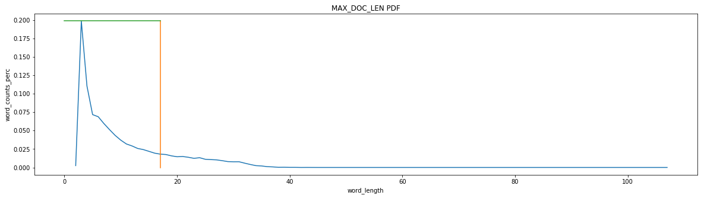

Seq2Seq + Attention
Road Map
- Preprocessing+EDA --> Hyper paras
- Tokenizer+Generate samples
- Define Sequence to Sequence model
- Define Sequence to Sequence model with attention
- Evaluation
- BLEU score
In [1]:
# !pip install tensorflow_gpu==1.15.0
# !pip install nltk
# import os
# from google.colab import drive
# drive.mount('/content/drive')
# import tensorflow.compat.v1 as tf Define Sequence to Sequence model
# tf.disable_v2_behavior()
# import sys
# pypath = "/content/drive/My Drive/Colab Notebooks/CS584-HW5/"# Colab path
# sys.path.append(pypath)
Import¶
In [2]:
import tensorflow as tf
tf.compat.v1.logging.set_verbosity(tf.compat.v1.logging.ERROR) # warning
from keras.callbacks import EarlyStopping, ModelCheckpoint
from keras import regularizers
from IPython.core.interactiveshell import InteractiveShell
InteractiveShell.ast_node_interactivity = "all"
from nltk.translate.bleu_score import sentence_bleu
import numpy as np
import unicodedata
import re
import pandas as pd
import keras
from nltk.translate.bleu_score import corpus_bleu
from keras.utils.vis_utils import model_to_dot, plot_model
from IPython.display import SVG
from keras.models import Model
from keras.layers import Input, LSTM, Dense, Embedding
from keras.utils.np_utils import to_categorical
from sklearn.utils import shuffle
import numpy as np
import pandas as pd
import re
# from bs4 import BeautifulSoup
from keras.preprocessing.text import Tokenizer
from keras.preprocessing.sequence import pad_sequences
from nltk.corpus import stopwords
from keras.layers import Input, LSTM, Embedding, Dense, Concatenate, TimeDistributed, Bidirectional, Lambda, Dot, Activation, Concatenate, Dropout
from keras.models import Model
from keras.callbacks import EarlyStopping
import warnings
from sklearn.model_selection import train_test_split
from keras import backend as K
from keras import optimizers
pd.set_option("display.max_colwidth", 200)
warnings.filterwarnings("ignore")
from myutils_V3 import eda_MAX_NB_WORDS, eda_MAX_DOC_LEN, text_preprocessor, history_plot
from nltk.translate import bleu
C:\Users\Administrator\Anaconda3\envs\py810\lib\site-packages\tensorflow\python\framework\dtypes.py:526: FutureWarning: Passing (type, 1) or '1type' as a synonym of type is deprecated; in a future version of numpy, it will be understood as (type, (1,)) / '(1,)type'.
_np_qint8 = np.dtype([("qint8", np.int8, 1)])
C:\Users\Administrator\Anaconda3\envs\py810\lib\site-packages\tensorflow\python\framework\dtypes.py:527: FutureWarning: Passing (type, 1) or '1type' as a synonym of type is deprecated; in a future version of numpy, it will be understood as (type, (1,)) / '(1,)type'.
_np_quint8 = np.dtype([("quint8", np.uint8, 1)])
C:\Users\Administrator\Anaconda3\envs\py810\lib\site-packages\tensorflow\python\framework\dtypes.py:528: FutureWarning: Passing (type, 1) or '1type' as a synonym of type is deprecated; in a future version of numpy, it will be understood as (type, (1,)) / '(1,)type'.
_np_qint16 = np.dtype([("qint16", np.int16, 1)])
C:\Users\Administrator\Anaconda3\envs\py810\lib\site-packages\tensorflow\python\framework\dtypes.py:529: FutureWarning: Passing (type, 1) or '1type' as a synonym of type is deprecated; in a future version of numpy, it will be understood as (type, (1,)) / '(1,)type'.
_np_quint16 = np.dtype([("quint16", np.uint16, 1)])
C:\Users\Administrator\Anaconda3\envs\py810\lib\site-packages\tensorflow\python\framework\dtypes.py:530: FutureWarning: Passing (type, 1) or '1type' as a synonym of type is deprecated; in a future version of numpy, it will be understood as (type, (1,)) / '(1,)type'.
_np_qint32 = np.dtype([("qint32", np.int32, 1)])
C:\Users\Administrator\Anaconda3\envs\py810\lib\site-packages\tensorflow\python\framework\dtypes.py:535: FutureWarning: Passing (type, 1) or '1type' as a synonym of type is deprecated; in a future version of numpy, it will be understood as (type, (1,)) / '(1,)type'.
np_resource = np.dtype([("resource", np.ubyte, 1)])
Using TensorFlow backend.
Gloabl parameters¶
In [3]:
num_samples = 100000
set_random = 2
test_ratio = 0.1
val_ratio = 0.05 # when fitting, we can set validation_split
epochs = 100
patience = 300
# epochs = 300
# num_samples = 30000
########### Word level
char_level_switch = False
symbols = ['xxxstart', 'xxxend' ]
max_output_length = 30
# ############ Char level
# char_level_switch = True
# symbols = ['\t', '\n']
# max_output_length = 60
MAX_NB_WORDS_ratio_text = 0.90
MAX_DOC_LEN_ratio_text = 0.98
MAX_NB_WORDS_ratio_selected_text = 0.90
MAX_DOC_LEN_ratio_selected_text = 0.85
latent_dim = 64
embedding_dim = 200
iteration_per_epoch = 500
# batch_size=32
rmsprop = optimizers.adam(lr=0.0005)
Read & Parsing¶
In [4]:
%%time
path = "E:/OneDrive - stevens.edu/Stevens BIA/CS584/Proj/"
# path = "/content/drive/My Drive/Colab Notebooks/CS584-Proj-improving/dataset"# Colab path
# path = "/Users/wy/OneDrive - stevens.edu/Stevens BIA/CS584/Proj/"
wd = path+'dataset/data/'
# wd = "/kaggle/input/tweet-sentiment-extraction/"
filename = ['train.csv','test.csv']
# train = pd.read_csv(wd+filename[0]).astype(str)
# test = pd.read_csv(wd+filename[1]).astype(str)
dt = pd.read_csv(wd+filename[0], nrows=num_samples).astype(str)
Wall time: 66 ms
In [5]:
def normalize_string_keep_dot(s):
s = re.sub(r'(https|http)?:\/\/(\w|\.|\/|\?|\=|\&|\%)*\b', '', s, flags=re.MULTILINE) # deleted website
s = re.sub(r'([!.?])', r' \1', s) # separate those symbols as one word
s = re.sub(r'[^a-zA-Z.!?\d]+', r' ', s) # keep words, !?. and number
s = re.sub(r'\s+', r' ', s) # drop other special symbol /t
return s
def tokenize_string(s):# For computing bleu
s = re.sub(r'[^a-zA-Z]+', r' ', s)
return s.lower()
dt['normalized_text'] = [normalize_string_keep_dot(i) for i in dt["text"]]
dt['normalized_selected_text'] = [normalize_string_keep_dot(i) for i in dt["selected_text"]]
dt.head()
data = dt.copy()
Out[5]:
| textID | text | selected_text | sentiment | normalized_text | normalized_selected_text | |
|---|---|---|---|---|---|---|
| 0 | a3d0a7d5ad | Spent the entire morning in a meeting w/ a vendor, and my boss was not happy w/ them. Lots of fun. I had other plans for my morning | my boss was not happy w/ them. Lots of fun. | neutral | Spent the entire morning in a meeting w a vendor and my boss was not happy w them . Lots of fun . I had other plans for my morning | my boss was not happy w them . Lots of fun . |
| 1 | 251b6a6766 | Oh! Good idea about putting them on ice cream | Good | positive | Oh ! Good idea about putting them on ice cream | Good |
| 2 | c9e8d1ef1c | says good (or should i say bad?) afternoon! http://plurk.com/p/wxpdj | says good (or should i say bad?) afternoon! | neutral | says good or should i say bad ? afternoon ! | says good or should i say bad ? afternoon ! |
| 3 | f14f087215 | i dont think you can vote anymore! i tried | i dont think you can vote anymore! | negative | i dont think you can vote anymore ! i tried | i dont think you can vote anymore ! |
| 4 | bf7473b12d | haha better drunken tweeting you mean? | better | positive | haha better drunken tweeting you mean ? | better |
In [6]:
train, test = train_test_split(data, test_size=test_ratio, shuffle=True, random_state=set_random)
replace_map = {'sentiment': {'neutral': 1, 'positive': 0, 'negative': 2}}
train.replace(replace_map, inplace=True)
test.replace(replace_map, inplace=True)
train.head()
Out[6]:
| textID | text | selected_text | sentiment | normalized_text | normalized_selected_text | |
|---|---|---|---|---|---|---|
| 12750 | 1d01800a1a | just bought a magazine | just bought a magazine | 1 | just bought a magazine | just bought a magazine |
| 1358 | 99bfba5783 | aidan, please | aidan, please | 1 | aidan please | aidan please |
| 15351 | 7e05e68092 | Ok this is a lot more boring then I thought and matt has me on lockdown bc of moolah... | Ok this is a lot more boring | 2 | Ok this is a lot more boring then I thought and matt has me on lockdown bc of moolah . . . | Ok this is a lot more boring |
| 26866 | 0154d1def6 | disappointed she didn't win teh glassez. | disappointed | 2 | disappointed she didn t win teh glassez . | disappointed |
| 25390 | 61b52fa68c | The NVIDIA ION-based Lenovo IdeaPad S12 ( http://is.gd/J6Zy ) is awesome. Fn key to left of Ctrl makes it non-starter for me though | awesome. | 0 | The NVIDIA ION based Lenovo IdeaPad S12 is awesome . Fn key to left of Ctrl makes it non starter for me though | awesome . |
a. Split dataset¶
- The dataset has been shuffle before
In [7]:
dt = data.iloc[0:int(len(data)*(1-test_ratio)),:]
x_train, x_val = train_test_split(dt, test_size=val_ratio, random_state=123)
raw_data = x_train.reset_index(drop=True)
val_data = x_val.reset_index(drop=True)
test_data = data.iloc[-int(len(data)*test_ratio)::,:].reset_index(drop=True)
print("len of training data: ", len(raw_data))
print("len of val data: ", len(val_data))
print("len of testing data: ", len(test_data))
len of training data: 23500 len of val data: 1237 len of testing data: 2748
Build input ( the class write in the myutlis.py)¶
- EDA
- Tokenizer (leave into the text_preprocessor class)
- max_fr_words = MAX_NB_WORDS+1 for padding 0
- Initialize W2V with gensim CBow
text - words level¶
In [8]:
%%time
corpus = raw_data['normalized_text']
# MAX_NB_WORDS_ratio = 0.95
# MAX_DOC_LEN_ratio = 0.98
MAX_NB_WORDS = eda_MAX_NB_WORDS(corpus, ratio = MAX_NB_WORDS_ratio_text, filters='',char_level = char_level_switch)
MAX_DOC_LEN = eda_MAX_DOC_LEN(corpus, ratio = MAX_DOC_LEN_ratio_text, filters='',char_level = char_level_switch)
# initialize
processor_x = text_preprocessor(MAX_DOC_LEN, MAX_NB_WORDS, corpus,filters ='',char_level = char_level_switch)
data_en = processor_x.generate_seq(corpus)
max_en_words = MAX_NB_WORDS+1
max_en_len = MAX_DOC_LEN
Cut index with 90.0 % of corpus: 2814
index word count
0 24 . 26806
1 8 i 13954
2 35 ! 13099
3 12 to 8624
4 18 the 7739
5 43 a 5844
6 122 my 4666
7 1 you 4576
8 85 it 4545
9 70 and 4351
10 5 ? 3584
11 0 is 3414
12 32 in 3251
13 233 for 3125
14 86 s 3121
15 138 t 2699
16 22 of 2655
17 25 that 2550
18 42 on 2453
19 205 me 2425
Cut index with 98.0 % of corpus: 31 Wall time: 2.14 s
In [9]:
print("max_en_len: ",max_en_len, "\nmax_en_words: ", max_en_words)
print("Total number of English words: ", len(processor_x.word_index))
max_en_len: 31 max_en_words: 2815 Total number of English words: 23267
selected_text - words level¶
In [10]:
# raw_data_selected_text_corpus = ['nlpstart '+ data + ' nlpend' for data in raw_data['normalized_selected_text']] The same
raw_data_selected_text_corpus = [str(symbols[0])+" "+normalize_string_keep_dot(data) + " " + str(symbols[1]) for data in raw_data["selected_text"]]
raw_data_selected_text_in = [str(symbols[0])+" " + normalize_string_keep_dot(data) for data in raw_data["selected_text"]] #
raw_data_selected_text_out = [normalize_string_keep_dot(data) + " " + str(symbols[1]) for data in raw_data["selected_text"]]
# decoder_input_data = processor_y.generate_seq(test["selected_text"].apply(lambda x: "nlpstart "+x)) ## decoder-input, , , nlpstart
In [11]:
%%time
corpus = raw_data_selected_text_corpus
# MAX_NB_WORDS_ratio = 0.95
# MAX_DOC_LEN_ratio = 0.98
MAX_NB_WORDS = eda_MAX_NB_WORDS(corpus, ratio =MAX_NB_WORDS_ratio_selected_text, filters='',char_level=char_level_switch)
MAX_DOC_LEN = eda_MAX_DOC_LEN(corpus, ratio = MAX_DOC_LEN_ratio_selected_text, filters='',char_level=char_level_switch)
# initialize
processor_y = text_preprocessor(MAX_DOC_LEN, MAX_NB_WORDS, corpus, filters ='',char_level=char_level_switch)
data_fr_in = processor_y.generate_seq(raw_data_selected_text_in)
data_fr_out = processor_y.generate_seq(raw_data_selected_text_out)
max_fr_words = MAX_NB_WORDS+1
max_fr_len = MAX_DOC_LEN
Cut index with 90.0 % of corpus: 1890
index word count
0 0 xxxstart 23500
1 3 xxxend 23500
2 20 . 13866
3 4 i 7577
4 31 ! 6723
5 8 to 4579
6 14 the 3963
7 108 a 3079
8 125 you 2475
9 87 it 2392
10 95 my 2348
11 60 and 2001
12 56 ? 1936
13 216 is 1822
14 81 s 1745
15 100 t 1712
16 28 in 1703
17 179 for 1581
18 18 of 1395
19 154 me 1330

Cut index with 85.0 % of corpus: 17 Wall time: 2 s
In [12]:
print("max_selected_text_len: ",max_fr_len, "\nmax__selected_text_words: ", max_fr_words)
print("Total number of text words: ", len(processor_y.word_index))
max_selected_text_len: 17 max__selected_text_words: 1891 Total number of text words: 16092
In [13]:
# Convert each word index using one-hot coding
data_fr_out_cat = to_categorical(data_fr_out, num_classes=max_fr_words)
data_fr_out_cat.shape
data_fr_out_cat[0,0]
data_fr_out_cat[0].shape # shape = (index, MAX_DOC_LEN, MAX_NB_WORDS )
Out[13]:
(23500, 17, 1891)
Out[13]:
array([0., 0., 0., ..., 0., 0., 0.], dtype=float32)
Out[13]:
(17, 1891)
In [14]:
# Parameters
print("max_selected_text_len: ",max_fr_len, "\nmax_selected_text_words: ", max_fr_words)
print("max_text_len: ",max_en_len, "\nmax_text_words: ", max_en_words)
# mapping between indexes and words
print("index of symbol <xxxstart> :", processor_y.word_index[str(symbols[0])])
print("index of symbol <xxxend> :", processor_y.word_index[str(symbols[1])])
max_selected_text_len: 17 max_selected_text_words: 1891 max_text_len: 31 max_text_words: 2815 index of symbol <xxxstart> : 1 index of symbol <xxxend> : 2
Teaching force S2S¶
Pretrained Word embedding¶
In [15]:
%%time
CBOW_W2V_EN = processor_x.w2v_pretrain(embedding_dim)
CBOW_W2V_FR = processor_y.w2v_pretrain(embedding_dim)
Wall time: 12.4 s
S2S Model - Fit¶
encoder¶
In [16]:
# Define an input sequence and process it.
encoder_inputs = Input(shape=(max_en_len,)) # for attention layer, this should be fixed input length
# encoder_inputs = Input(shape=(None, num_encoder_tokens)) # one-hotinput
# encoder_inputs = Input(shape=(None,)) #
encoder_embed = Embedding(max_en_words, embedding_dim, input_length=max_en_len, name='pretrained_en_embedding_trainable'
, weights=[CBOW_W2V_EN], trainable=True)(encoder_inputs)# embedding for en
encoder_lstm = LSTM(latent_dim, return_state=True, dropout=0.0, recurrent_dropout=0.1) # return state state, , , activation function
encoder_outputs, state_h, state_c = encoder_lstm(encoder_embed) # lstm has three output
encoder_states = [state_h, state_c]
decoder¶
In [17]:
decoder_inputs = Input(shape=(None,)) # not fix input.
# decoder_inputs = Input(shape=(max_fr_words,)) # fix input for attention
decoder_embedding = Embedding(max_fr_words, embedding_dim, input_length=None, name='pretrained_fr_embedding_trainable'
, weights=[CBOW_W2V_FR], trainable=True) # embedding for fr
decoder_embed = decoder_embedding(decoder_inputs)
# if return_state = False, output sth like the embedding features of the next words()
decoder_lstm = LSTM(latent_dim, return_sequences=True, return_state=True, dropout=0.0, recurrent_dropout=0.1)
# decoder_output1 is the key connection between decoder and encoder # Set up the decoder, using `encoder_states` as initial state.
decoder_lstm_output, state_h_tr, state_c_tr = decoder_lstm(decoder_embed, initial_state=encoder_states) # when training, the hidden state and cell state is not useful in this teaching force model
decoder_dense = Dense(max_fr_words, activation='softmax')
decoder_outputs = decoder_dense(decoder_lstm_output)
# Define the model that will turn `encoder_input_data` & `decoder_input_data` into `decoder_outputs'= 'decoder_target_data`
model = Model([encoder_inputs, decoder_inputs], decoder_outputs)
Training & Checkpoint¶
- It will monitor the val_loss with patience equal 10
- Use the validation set to compute the BLEU score and report the best choice
In [18]:
%%time
# batch_size=32
# epochs = 10
# Compile & run training
BestModel_Name = 's2s_tf_desk'
model.compile(optimizer= rmsprop, loss='categorical_crossentropy', metrics=['categorical_accuracy'])
#### Best model selection
BEST_MODEL_FILEPATH = BestModel_Name
earlyStopping = EarlyStopping(monitor='val_loss', patience=patience, verbose=1, mode='min') # patience: number of epochs with no improvement on monitor : val_loss
checkpoint = ModelCheckpoint(BEST_MODEL_FILEPATH, monitor='val_loss', verbose=0, save_best_only=True, mode='min')
# iteration_per_epoch =20
batch_size = int( len(data_en) / iteration_per_epoch ) # 200 iteration as one epoch
history = model.fit([data_en, data_fr_in],data_fr_out_cat, verbose = 2, epochs = epochs, batch_size=batch_size, validation_split=val_ratio, callbacks=[earlyStopping, checkpoint])
model.load_weights(BestModel_Name)
# Save model
# model.save('s2s_word_level.h5')
Train on 22325 samples, validate on 1175 samples Epoch 1/100 - 43s - loss: 3.2040 - categorical_accuracy: 0.5688 - val_loss: 2.4607 - val_categorical_accuracy: 0.6016 Epoch 2/100 - 42s - loss: 2.3431 - categorical_accuracy: 0.6182 - val_loss: 2.3557 - val_categorical_accuracy: 0.6109 Epoch 3/100 - 43s - loss: 2.2655 - categorical_accuracy: 0.6210 - val_loss: 2.2887 - val_categorical_accuracy: 0.6142 Epoch 4/100 - 42s - loss: 2.1962 - categorical_accuracy: 0.6309 - val_loss: 2.2230 - val_categorical_accuracy: 0.6296 Epoch 5/100 - 43s - loss: 2.1295 - categorical_accuracy: 0.6458 - val_loss: 2.1581 - val_categorical_accuracy: 0.6464 Epoch 6/100 - 42s - loss: 2.0620 - categorical_accuracy: 0.6588 - val_loss: 2.0939 - val_categorical_accuracy: 0.6554 Epoch 7/100 - 42s - loss: 2.0012 - categorical_accuracy: 0.6660 - val_loss: 2.0434 - val_categorical_accuracy: 0.6603 Epoch 8/100 - 42s - loss: 1.9495 - categorical_accuracy: 0.6719 - val_loss: 2.0008 - val_categorical_accuracy: 0.6648 Epoch 9/100 - 42s - loss: 1.9056 - categorical_accuracy: 0.6771 - val_loss: 1.9657 - val_categorical_accuracy: 0.6694 Epoch 10/100 - 42s - loss: 1.8659 - categorical_accuracy: 0.6818 - val_loss: 1.9360 - val_categorical_accuracy: 0.6709 Epoch 11/100 - 42s - loss: 1.8292 - categorical_accuracy: 0.6861 - val_loss: 1.9077 - val_categorical_accuracy: 0.6749 Epoch 12/100 - 42s - loss: 1.7952 - categorical_accuracy: 0.6897 - val_loss: 1.8836 - val_categorical_accuracy: 0.6775 Epoch 13/100 - 42s - loss: 1.7631 - categorical_accuracy: 0.6934 - val_loss: 1.8615 - val_categorical_accuracy: 0.6792 Epoch 14/100 - 42s - loss: 1.7332 - categorical_accuracy: 0.6969 - val_loss: 1.8432 - val_categorical_accuracy: 0.6828 Epoch 15/100 - 42s - loss: 1.7046 - categorical_accuracy: 0.7000 - val_loss: 1.8227 - val_categorical_accuracy: 0.6856 Epoch 16/100 - 42s - loss: 1.6766 - categorical_accuracy: 0.7033 - val_loss: 1.8041 - val_categorical_accuracy: 0.6866 Epoch 17/100 - 43s - loss: 1.6490 - categorical_accuracy: 0.7064 - val_loss: 1.7870 - val_categorical_accuracy: 0.6894 Epoch 18/100 - 42s - loss: 1.6210 - categorical_accuracy: 0.7097 - val_loss: 1.7718 - val_categorical_accuracy: 0.6909 Epoch 19/100 - 42s - loss: 1.5949 - categorical_accuracy: 0.7129 - val_loss: 1.7566 - val_categorical_accuracy: 0.6929 Epoch 20/100 - 42s - loss: 1.5692 - categorical_accuracy: 0.7161 - val_loss: 1.7427 - val_categorical_accuracy: 0.6948 Epoch 21/100 - 42s - loss: 1.5440 - categorical_accuracy: 0.7190 - val_loss: 1.7289 - val_categorical_accuracy: 0.6980 Epoch 22/100 - 42s - loss: 1.5214 - categorical_accuracy: 0.7219 - val_loss: 1.7179 - val_categorical_accuracy: 0.6986 Epoch 23/100 - 42s - loss: 1.4977 - categorical_accuracy: 0.7248 - val_loss: 1.7046 - val_categorical_accuracy: 0.7013 Epoch 24/100 - 42s - loss: 1.4750 - categorical_accuracy: 0.7276 - val_loss: 1.6923 - val_categorical_accuracy: 0.7008 Epoch 25/100 - 42s - loss: 1.4528 - categorical_accuracy: 0.7303 - val_loss: 1.6840 - val_categorical_accuracy: 0.7022 Epoch 26/100 - 42s - loss: 1.4316 - categorical_accuracy: 0.7327 - val_loss: 1.6742 - val_categorical_accuracy: 0.7039 Epoch 27/100 - 42s - loss: 1.4118 - categorical_accuracy: 0.7353 - val_loss: 1.6641 - val_categorical_accuracy: 0.7050 Epoch 28/100 - 43s - loss: 1.3904 - categorical_accuracy: 0.7379 - val_loss: 1.6559 - val_categorical_accuracy: 0.7055 Epoch 29/100 - 42s - loss: 1.3709 - categorical_accuracy: 0.7408 - val_loss: 1.6482 - val_categorical_accuracy: 0.7067 Epoch 30/100 - 42s - loss: 1.3512 - categorical_accuracy: 0.7430 - val_loss: 1.6453 - val_categorical_accuracy: 0.7076 Epoch 31/100 - 42s - loss: 1.3334 - categorical_accuracy: 0.7453 - val_loss: 1.6380 - val_categorical_accuracy: 0.7087 Epoch 32/100 - 42s - loss: 1.3154 - categorical_accuracy: 0.7472 - val_loss: 1.6313 - val_categorical_accuracy: 0.7075 Epoch 33/100 - 41s - loss: 1.2975 - categorical_accuracy: 0.7488 - val_loss: 1.6255 - val_categorical_accuracy: 0.7083 Epoch 34/100 - 42s - loss: 1.2813 - categorical_accuracy: 0.7513 - val_loss: 1.6161 - val_categorical_accuracy: 0.7098 Epoch 35/100 - 41s - loss: 1.2634 - categorical_accuracy: 0.7534 - val_loss: 1.6112 - val_categorical_accuracy: 0.7104 Epoch 36/100 - 42s - loss: 1.2472 - categorical_accuracy: 0.7554 - val_loss: 1.6095 - val_categorical_accuracy: 0.7114 Epoch 37/100 - 42s - loss: 1.2309 - categorical_accuracy: 0.7571 - val_loss: 1.6004 - val_categorical_accuracy: 0.7111 Epoch 38/100 - 42s - loss: 1.2148 - categorical_accuracy: 0.7590 - val_loss: 1.5950 - val_categorical_accuracy: 0.7133 Epoch 39/100 - 41s - loss: 1.1997 - categorical_accuracy: 0.7610 - val_loss: 1.5908 - val_categorical_accuracy: 0.7134 Epoch 40/100 - 42s - loss: 1.1840 - categorical_accuracy: 0.7630 - val_loss: 1.5844 - val_categorical_accuracy: 0.7146 Epoch 41/100 - 41s - loss: 1.1692 - categorical_accuracy: 0.7646 - val_loss: 1.5791 - val_categorical_accuracy: 0.7128 Epoch 42/100 - 43s - loss: 1.1539 - categorical_accuracy: 0.7668 - val_loss: 1.5758 - val_categorical_accuracy: 0.7147 Epoch 43/100 - 46s - loss: 1.1402 - categorical_accuracy: 0.7685 - val_loss: 1.5687 - val_categorical_accuracy: 0.7157 Epoch 44/100 - 42s - loss: 1.1255 - categorical_accuracy: 0.7702 - val_loss: 1.5700 - val_categorical_accuracy: 0.7171 Epoch 45/100 - 42s - loss: 1.1107 - categorical_accuracy: 0.7720 - val_loss: 1.5667 - val_categorical_accuracy: 0.7164 Epoch 46/100 - 42s - loss: 1.0976 - categorical_accuracy: 0.7739 - val_loss: 1.5671 - val_categorical_accuracy: 0.7165 Epoch 47/100 - 42s - loss: 1.0833 - categorical_accuracy: 0.7759 - val_loss: 1.5654 - val_categorical_accuracy: 0.7177 Epoch 48/100 - 41s - loss: 1.0701 - categorical_accuracy: 0.7773 - val_loss: 1.5588 - val_categorical_accuracy: 0.7192 Epoch 49/100 - 42s - loss: 1.0572 - categorical_accuracy: 0.7792 - val_loss: 1.5568 - val_categorical_accuracy: 0.7196 Epoch 50/100 - 42s - loss: 1.0437 - categorical_accuracy: 0.7813 - val_loss: 1.5545 - val_categorical_accuracy: 0.7190 Epoch 51/100 - 42s - loss: 1.0307 - categorical_accuracy: 0.7828 - val_loss: 1.5540 - val_categorical_accuracy: 0.7196 Epoch 52/100 - 43s - loss: 1.0180 - categorical_accuracy: 0.7845 - val_loss: 1.5563 - val_categorical_accuracy: 0.7183 Epoch 53/100 - 41s - loss: 1.0059 - categorical_accuracy: 0.7867 - val_loss: 1.5491 - val_categorical_accuracy: 0.7192 Epoch 54/100 - 42s - loss: 0.9938 - categorical_accuracy: 0.7879 - val_loss: 1.5515 - val_categorical_accuracy: 0.7196 Epoch 55/100 - 41s - loss: 0.9811 - categorical_accuracy: 0.7901 - val_loss: 1.5460 - val_categorical_accuracy: 0.7211 Epoch 56/100 - 41s - loss: 0.9692 - categorical_accuracy: 0.7915 - val_loss: 1.5411 - val_categorical_accuracy: 0.7219 Epoch 57/100 - 42s - loss: 0.9578 - categorical_accuracy: 0.7934 - val_loss: 1.5424 - val_categorical_accuracy: 0.7214 Epoch 58/100 - 42s - loss: 0.9470 - categorical_accuracy: 0.7946 - val_loss: 1.5456 - val_categorical_accuracy: 0.7222 Epoch 59/100 - 41s - loss: 0.9344 - categorical_accuracy: 0.7969 - val_loss: 1.5460 - val_categorical_accuracy: 0.7214 Epoch 60/100 - 42s - loss: 0.9244 - categorical_accuracy: 0.7978 - val_loss: 1.5466 - val_categorical_accuracy: 0.7217 Epoch 61/100 - 42s - loss: 0.9137 - categorical_accuracy: 0.7998 - val_loss: 1.5509 - val_categorical_accuracy: 0.7209 Epoch 62/100 - 42s - loss: 0.9028 - categorical_accuracy: 0.8019 - val_loss: 1.5492 - val_categorical_accuracy: 0.7212 Epoch 63/100 - 42s - loss: 0.8931 - categorical_accuracy: 0.8029 - val_loss: 1.5478 - val_categorical_accuracy: 0.7219 Epoch 64/100 - 42s - loss: 0.8811 - categorical_accuracy: 0.8046 - val_loss: 1.5455 - val_categorical_accuracy: 0.7220 Epoch 65/100 - 42s - loss: 0.8721 - categorical_accuracy: 0.8064 - val_loss: 1.5488 - val_categorical_accuracy: 0.7217 Epoch 66/100 - 42s - loss: 0.8626 - categorical_accuracy: 0.8080 - val_loss: 1.5442 - val_categorical_accuracy: 0.7231 Epoch 67/100 - 41s - loss: 0.8535 - categorical_accuracy: 0.8095 - val_loss: 1.5446 - val_categorical_accuracy: 0.7232 Epoch 68/100 - 42s - loss: 0.8436 - categorical_accuracy: 0.8110 - val_loss: 1.5489 - val_categorical_accuracy: 0.7229 Epoch 69/100 - 42s - loss: 0.8347 - categorical_accuracy: 0.8121 - val_loss: 1.5520 - val_categorical_accuracy: 0.7220 Epoch 70/100 - 42s - loss: 0.8259 - categorical_accuracy: 0.8132 - val_loss: 1.5494 - val_categorical_accuracy: 0.7226 Epoch 71/100 - 42s - loss: 0.8177 - categorical_accuracy: 0.8149 - val_loss: 1.5537 - val_categorical_accuracy: 0.7211 Epoch 72/100 - 41s - loss: 0.8092 - categorical_accuracy: 0.8162 - val_loss: 1.5575 - val_categorical_accuracy: 0.7214 Epoch 73/100 - 41s - loss: 0.8003 - categorical_accuracy: 0.8174 - val_loss: 1.5526 - val_categorical_accuracy: 0.7222 Epoch 74/100 - 41s - loss: 0.7919 - categorical_accuracy: 0.8191 - val_loss: 1.5582 - val_categorical_accuracy: 0.7211 Epoch 75/100 - 41s - loss: 0.7829 - categorical_accuracy: 0.8207 - val_loss: 1.5574 - val_categorical_accuracy: 0.7225 Epoch 76/100 - 41s - loss: 0.7749 - categorical_accuracy: 0.8221 - val_loss: 1.5603 - val_categorical_accuracy: 0.7208 Epoch 77/100 - 42s - loss: 0.7660 - categorical_accuracy: 0.8237 - val_loss: 1.5641 - val_categorical_accuracy: 0.7205 Epoch 78/100 - 43s - loss: 0.7592 - categorical_accuracy: 0.8243 - val_loss: 1.5653 - val_categorical_accuracy: 0.7219 Epoch 79/100 - 42s - loss: 0.7518 - categorical_accuracy: 0.8261 - val_loss: 1.5702 - val_categorical_accuracy: 0.7218 Epoch 80/100 - 42s - loss: 0.7431 - categorical_accuracy: 0.8274 - val_loss: 1.5719 - val_categorical_accuracy: 0.7218 Epoch 81/100 - 41s - loss: 0.7361 - categorical_accuracy: 0.8287 - val_loss: 1.5650 - val_categorical_accuracy: 0.7235 Epoch 82/100 - 41s - loss: 0.7296 - categorical_accuracy: 0.8299 - val_loss: 1.5707 - val_categorical_accuracy: 0.7231 Epoch 83/100 - 42s - loss: 0.7227 - categorical_accuracy: 0.8310 - val_loss: 1.5709 - val_categorical_accuracy: 0.7217 Epoch 84/100 - 41s - loss: 0.7152 - categorical_accuracy: 0.8323 - val_loss: 1.5749 - val_categorical_accuracy: 0.7218 Epoch 85/100 - 42s - loss: 0.7073 - categorical_accuracy: 0.8342 - val_loss: 1.5788 - val_categorical_accuracy: 0.7226 Epoch 86/100 - 41s - loss: 0.7011 - categorical_accuracy: 0.8354 - val_loss: 1.5721 - val_categorical_accuracy: 0.7225 Epoch 87/100 - 41s - loss: 0.6941 - categorical_accuracy: 0.8365 - val_loss: 1.5802 - val_categorical_accuracy: 0.7219 Epoch 88/100 - 42s - loss: 0.6888 - categorical_accuracy: 0.8369 - val_loss: 1.5855 - val_categorical_accuracy: 0.7207 Epoch 89/100 - 42s - loss: 0.6807 - categorical_accuracy: 0.8389 - val_loss: 1.5879 - val_categorical_accuracy: 0.7206 Epoch 90/100 - 42s - loss: 0.6743 - categorical_accuracy: 0.8401 - val_loss: 1.5916 - val_categorical_accuracy: 0.7217 Epoch 91/100 - 42s - loss: 0.6689 - categorical_accuracy: 0.8413 - val_loss: 1.5969 - val_categorical_accuracy: 0.7214 Epoch 92/100 - 42s - loss: 0.6621 - categorical_accuracy: 0.8425 - val_loss: 1.5892 - val_categorical_accuracy: 0.7214 Epoch 93/100 - 41s - loss: 0.6565 - categorical_accuracy: 0.8436 - val_loss: 1.5963 - val_categorical_accuracy: 0.7215 Epoch 94/100 - 41s - loss: 0.6504 - categorical_accuracy: 0.8452 - val_loss: 1.6028 - val_categorical_accuracy: 0.7207 Epoch 95/100 - 41s - loss: 0.6454 - categorical_accuracy: 0.8455 - val_loss: 1.5956 - val_categorical_accuracy: 0.7225 Epoch 96/100 - 41s - loss: 0.6392 - categorical_accuracy: 0.8466 - val_loss: 1.6045 - val_categorical_accuracy: 0.7201 Epoch 97/100 - 42s - loss: 0.6336 - categorical_accuracy: 0.8478 - val_loss: 1.6109 - val_categorical_accuracy: 0.7206 Epoch 98/100 - 42s - loss: 0.6279 - categorical_accuracy: 0.8490 - val_loss: 1.6090 - val_categorical_accuracy: 0.7208 Epoch 99/100 - 41s - loss: 0.6209 - categorical_accuracy: 0.8503 - val_loss: 1.6128 - val_categorical_accuracy: 0.7227 Epoch 100/100 - 42s - loss: 0.6167 - categorical_accuracy: 0.8518 - val_loss: 1.6176 - val_categorical_accuracy: 0.7214 Wall time: 1h 9min 53s
In [19]:
history_plot(history)
======================================================================== val_loss loss
======================================================================== val_categorical_accuracy categorical_accuracy
S2S model - Inference¶
In [20]:
############################################# encoder, , layer
# inference model, . encoder, encoder layer , inference model. inference, loss encoder
# , encoder
encoder_inf = Model(encoder_inputs, encoder_states)
#############################################
decoder_state_input_h = Input(shape=(latent_dim,))
decoder_state_input_c = Input(shape=(latent_dim,))
decoder_states_inputs = [decoder_state_input_h, decoder_state_input_c]
# rebuild the decoder branch for inference
# decoder_embed = decoder_embedding(decoder_inputs)
decoder_lstm_output, state_h, state_c = decoder_lstm(decoder_embed, initial_state = decoder_states_inputs)
decoder_states = [state_h, state_c]
decoder_outputs = decoder_dense(decoder_lstm_output)
decoder_inf = Model([decoder_inputs] + decoder_states_inputs, [decoder_outputs] + decoder_states)
# SVG(model_to_dot(decoder_inf, show_shapes=True, show_layer_names=True).create(prog='dot', format='svg'))
Inference result & BLEU Score on Validation set¶
In [21]:
def decode_inference(test_source_text=None, attention=False, char_level=False, symbol=['nlpstart','nlpend'] , max_output = 30):
if test_source_text is None:
test_source_text = np.random.choice((raw_data.text))
print('Input sentence:', test_source_text)
input_seq = processor_x.generate_seq([test_source_text])
if attention is False:
states_value = encoder_inf.predict(input_seq)
else:
encoder_outputs, h, c = encoder_inf.predict(input_seq)
states_value = [h, c]
# initial state of decoder
target_seq = np.array(processor_y.word_index[str(symbols[0])]).reshape(1,1) # tf.constant([[processor_y.word_index['nlpstart']]])
decoded_sentence = []
while True:
# predict - one time stamp
if attention is False:
output_tokens, h, c = decoder_inf.predict([target_seq] + states_value)
else:
output_tokens, h, c = decoder_inf.predict([encoder_outputs, target_seq] + states_value)
sampled_token_index = np.argmax(output_tokens[0, -1, :])
# update decoder input for inference next word
target_seq = np.array(sampled_token_index).reshape(1,1)
states_value = [h, c]
# save prediction result - one time stamp
sampled_word = processor_y.index_word[sampled_token_index]
# Exit condition: either hit max length or find stop character.
if (sampled_word == str(symbols[1]) or len(decoded_sentence) > max_output): # max_fr_len
break
decoded_sentence.append(sampled_word)
if char_level is False:
res = ' '.join(decoded_sentence)
else:
res = ''.join(decoded_sentence)
print('Decoded sentence:', res)
return res
def translate_result(test_data, attention=False):
ref_list, translation = [], []
### Select a set of sentences from the testing data and print the translation results from the model (compare to the ground truth).
for idx in range(len(test_data)):
print('-'*30)
decoded_sentence = decode_inference(test_data.normalized_text[idx], attention, char_level=char_level_switch, symbol=symbols, max_output = max_output_length )
print('True sentence:', test_data.selected_text[idx])
ref_list.append(test_data.normalized_selected_text[idx]) # tokens
translation.append(decoded_sentence)
ref_list = [tokenize_string(sentence).split() for sentence in ref_list]
hyp_list = [tokenize_string(sentence).split() for sentence in translation]
return ref_list, hyp_list, translation
ref_val, hyp_val, _ = translate_result(val_data, attention=False)
------------------------------ Input sentence: one of my models from a photo shoot . stacey Decoded sentence: one of a new True sentence: http://twitpic.com/4wsst - one of my models from a photo shoot. stacey ------------------------------ Input sentence: I m an incredibly happy person with 100 energy . Love to dance amp laugh . . .the only thing that I know .I m one of the most down to earth ppl Decoded sentence: i m having a of stupid . True sentence: I'm an incredibly happy person with 100% energy. Love to dance & laugh ------------------------------ Input sentence: Im glad you re a lot happier barakitten lt 3 see yah in july Decoded sentence: im glad you ll do a long day True sentence: Im glad ------------------------------ Input sentence: I ve got a fairly flat route available . . . the problem is I no longer have a fully functional bike to ride Decoded sentence: i have a good True sentence: I've got a fairly flat route available... the problem is I no longer have a fully functional bike to ride ------------------------------ Input sentence: too tired i can t stay awake . .but i must finish work for sunday Decoded sentence: i m too tired . True sentence: tired, ------------------------------ Input sentence: Unfortunately yes . . .not outside ! Decoded sentence: yes yes . . . True sentence: Unfortunately, ------------------------------ Input sentence: Saturday is Partytiiime Decoded sentence: is in True sentence: Partytiiime ------------------------------ Input sentence: has a headache from the the heat . Decoded sentence: great True sentence: has a headache from the the heat. ------------------------------ Input sentence: have a good day ? 5yomt Decoded sentence: good True sentence: good ------------------------------ Input sentence: Yup . Most of my hacks are all for fun Here s a quick video I made of it . I ll follow up when it s done . Decoded sentence: fun True sentence: Yup. Most of my hacks are all for fun Here's a quick video I made of it. I'll follow up when it's done. ------------------------------ Input sentence: awwww how cute its a pUG Decoded sentence: cute True sentence: cute ------------------------------ Input sentence: that sounds interesting . wish my phone did java . . Decoded sentence: interesting . True sentence: that sounds interesting. wish my phone did java.. ------------------------------ Input sentence: Wish I was there ! Decoded sentence: wish True sentence: Wish I was there! ------------------------------ Input sentence: said that mentioned bears ! have fun ! ! P .S bears like Peanut Butter Decoded sentence: ! ! that s gonna have fun on ur True sentence: rs! have fun ------------------------------ Input sentence: It s becoming a very tough race . Linda is indeed very talented . But someone has to go every week . We cut two this week . Decoded sentence: . . for my heart to people . . and about some of the True sentence: tough ------------------------------ Input sentence: We re home now Decoded sentence: are here but i ll go home True sentence: We're home now ------------------------------ Input sentence: i don t even know what sporting social enterprise means . . . . Decoded sentence: i don t know what . . . but its going to buy them . True sentence: i don't even know what sporting social enterprise means.... ------------------------------ Input sentence: You re welcome Decoded sentence: welcome True sentence: You're welcome ------------------------------ Input sentence: actually did progressive studying today . . Decoded sentence: dont feel True sentence: actually did progressive studying today.. ------------------------------ Input sentence: rashid aww how cute I like that song a lot Decoded sentence: aww what a cute True sentence: aww how cute I like that song a lot ------------------------------ Input sentence: it s the small things in life that count like being on a blur photograph of google streetview . . keep following ! ! ! Decoded sentence: it s like the way to watch a and of your cat . True sentence: it's the small things in life that count, ------------------------------ Input sentence: Songs I know Especially since the summer is such a boring TV time to begin with . Decoded sentence: fun True sentence: such a boring TV ------------------------------ Input sentence: Oh how today sucks . . . . Decoded sentence: oh that sucks . True sentence: sucks.. ------------------------------ Input sentence: Wow Justin Timberlake on SNL tonight was hilarious ! You gotta love that dude ! Decoded sentence: wow ! ! wish you were up True sentence: Wow Justin Timberlake on SNL tonight was hilarious! You gotta love that dude! ------------------------------ Input sentence: and the habitat is twitter active . Neat Decoded sentence: True sentence: Neat ------------------------------ Input sentence: I m feeling better now that I have something in my tummy Decoded sentence: i m feeling better . True sentence: I'm feeling better now ------------------------------ Input sentence: I am lost . Please help me find a good home . Decoded sentence: i am lost . True sentence: I am lost. ------------------------------ Input sentence: twitter has spam ! ! ? ? oh no Decoded sentence: ? ! True sentence: twitter has spam!!?? oh no ------------------------------ Input sentence: my babe Decoded sentence: True sentence: my babe ------------------------------ Input sentence: wow I love it ! ! ! thanks Decoded sentence: wow i love ! ! ! i m very many thanks no one now are going to True sentence: love ------------------------------ Input sentence: seen u a couple of times . Liked it Decoded sentence: hope True sentence: Liked ------------------------------ Input sentence: Locked out of my house ! Decoded sentence: out ! True sentence: Locked out of my **** house! ------------------------------ Input sentence: what ? You won t be two blocks away any more ? Decoded sentence: what you won t be any or some ? True sentence: what? You won't be two blocks away any more? ------------------------------ Input sentence: even if it is spf 55 . Besides you don t need . You are just putting more chemicals on you face . Spf 30 is a full block . Decoded sentence: it is just now . . if you get to see it would make the rest of my . True sentence: even if it is spf 55. Besides you don't need ****. You are just putting more chemicals on you face. Spf 30 is a full block. ------------------------------ Input sentence: UP is the saddest movie i ve ever seen Decoded sentence: i m up this is in the show True sentence: saddest mo ------------------------------ Input sentence: 1 . i dont 2 . LMFAO I WONDER . Decoded sentence: . . i love him True sentence: 1. i dont 2. LMFAO I WONDER. ------------------------------ Input sentence: says livejournal is being a bee eye tee see hedge . Dum dee dum ok back to work ! Decoded sentence: is is a new for me on some . True sentence: says livejournal is being a bee-eye-tee-see-hedge. Dum dee dum, ok back to work! ------------------------------ Input sentence: it s cloudy and damp over here too . i hope it doesnt rain for tonite s track meet i d hate to do interviews in the rain Decoded sentence: it s ok i hope you forgot at the end of . . . but its gonna get some money True sentence: hope ------------------------------ Input sentence: louise so i can just watch that again x Decoded sentence: i always just know how the boo True sentence: so i can just watch that again x ------------------------------ Input sentence: sigh Decoded sentence: sigh True sentence: - sigh ------------------------------ Input sentence: Can t really do anything about that now can I ? Decoded sentence: don t do anything about ? i can t get on . True sentence: Can't really do anything about that, now can I? ------------------------------ Input sentence: So sorry Ambien got sick . Perhaps work her ashes into the garden with a catnip plant ? Decoded sentence: so sorry . True sentence: t sick. ------------------------------ Input sentence: dinner appointment tonight Decoded sentence: ready for work True sentence: dinner appointment tonight ------------------------------ Input sentence: OMG JLO AND MARC ANTHONY WERE AT MY OLD SCHOOL GRADUATION BRB UPSET Decoded sentence: omg . at school and got at the show in 2 weeks . True sentence: UPSET ------------------------------ Input sentence: yeah I was like oh oh oh yeah that s it but then she said no lol bummer Decoded sentence: oh yeah and that i m so yeah but i m not some more haha True sentence: yeah I was like oh oh oh yeah that's it but then she said no lol bummer ------------------------------ Input sentence: hey girl i just sent ya a message on Myspace Decoded sentence: hey u girl i ve up about to do anything . True sentence: hey girl i just sent ya a message on Myspace ------------------------------ Input sentence: Is on her way home aloha and good night everyone ! Decoded sentence: is looking at all with . . are a twitter ! True sentence: good night everyone! ------------------------------ Input sentence: i did haha . i ll run is more suitable at the moment . Decoded sentence: i love True sentence: haha. ------------------------------ Input sentence: had a thrilling time with DAS joyride roadtrip ! nice driving Pai and Paulo . Decoded sentence: had a great night ! True sentence: had a thrilling time with DAS joyride roadtrip! nice driving Pai and Paulo. ------------------------------ Input sentence: The test today was killer . I didn t even manage to finish on time . Decoded sentence: True sentence: The test today was killer. I didn't even manage to finish on time. ------------------------------ Input sentence: Gleneagles then champagne receptions . . . .can t beat it ! I m in alone my tea was rubbish and Ive been doing housework Decoded sentence: i m True sentence: ..can't beat it! I'm in alone, my tea was rubbish and Ive been doing housework ------------------------------ Input sentence: is a college graduate Decoded sentence: is a True sentence: is a college graduate ------------------------------ Input sentence: he s outta the ofc til Monday GRAND kinda bummed me out but b c I was genuinely sick there s nuthin I can do about it gt Decoded sentence: it s it s cold but i m missing out so late True sentence: he's outta the ofc til Monday ::GRAND:: kinda bummed me out but b/c I was genuinely sick there's nuthin I can do about it --&g ------------------------------ Input sentence: I brought a buffalo 320gb for 3800 . . .it has the fastest transfer rate for a usb hdd . . .I benchmarked it at 34mb s on my comp ! ! ! Decoded sentence: has a . . . for it s the of to see the quot i want him True sentence: fastest transfer rate ------------------------------ Input sentence: I saw them at a show a few weeks ago . Hate to say I was not all that impressed fun . and AS were good though . Decoded sentence: i had a feeling pretty bad . True sentence: Hate ------------------------------ Input sentence: Just got home from work and tired Decoded sentence: just got home from work today True sentence: tired ------------------------------ Input sentence: i totally do not know how ticketless travel works Decoded sentence: i do anyone know how not even think of the True sentence: i totally do not know how ticketless travel works ------------------------------ Input sentence: Having to write a real looking paper letter . Not done one of those for a very long time . Sad really . Decoded sentence: no idea having a good . True sentence: Sad really. ------------------------------ Input sentence: nothing let s stay quiet together . ps did you cry ? Decoded sentence: that s your cool song will be here . True sentence: nothing let's stay quiet together. ps: did you cry? ------------------------------ Input sentence: This is my new College project i just wanted to share it Hey Mr Bartender College Project Decoded sentence: my new is my days of you and make this True sentence: This is my new College project, i just wanted to share it Hey Mr Bartender - College Project http://bit.ly/Ba3Nf ------------------------------ Input sentence: jake is signing up for a twitter ! Decoded sentence: is up for a twitter ! True sentence: jake is signing up for a twitter! ------------------------------ Input sentence: I m going to jordan amp jeffs wedding next weekend in atl . Decoded sentence: i m going to start of the night for now who are having an True sentence: I'm going to jordan & jeffs wedding next weekend in at ------------------------------ Input sentence: Awww that s nice . You both make a really beautiful couple you balance each other . Decoded sentence: awesome True sentence: Awww, that's nice. ------------------------------ Input sentence: cheryl Lucky now I want to teleport Decoded sentence: lucky True sentence: _cheryl Lucky, now I want to teleport ------------------------------ Input sentence: trying to watch lost online very annoying and slow . . .the internet not lost Decoded sentence: annoying True sentence: very annoying and slow... ------------------------------ Input sentence: was it for the vma s ? i guess so . . also wanna go to london in june for demi lovato concert but no one s going with me Decoded sentence: it s the . i m getting in this is on . who we want some ? True sentence: but no one's going with me ------------------------------ Input sentence: ooh i know it i can hold your hand Decoded sentence: i can you know it ? True sentence: ooh i know it, i can hold your hand ------------------------------ Input sentence: reaaaallly bored Decoded sentence: bored True sentence: reaaaallly bored ------------------------------ Input sentence: I Miss Daddy and Mommy Decoded sentence: miss True sentence: I Miss Daddy and Mommy ------------------------------ Input sentence: good question . Nepal PM declaring to resign and actually resigning is two very different things . Decoded sentence: very good True sentence: good question. ------------------------------ Input sentence: Why is it going to be anti social ? Decoded sentence: why have to be is doing it True sentence: Why is it going to be anti-social? ------------------------------ Input sentence: had an amazingly unproductive day but i loved it time to go catch up on sleep ! Decoded sentence: had a time but i have been about to the concert early night that s 3 days True sentence: had an amazingly unproductive day, but i loved it time to go catch up on sleep! ------------------------------ Input sentence: Morales I like you . I mean as a random person because I obviously don t know you . but . we think alike Decoded sentence: i think i used to me too ! True sentence: I like you. ------------------------------ Input sentence: glad your feeling abit better ! I think mine might be nearly gone now xD Decoded sentence: glad True sentence: t better ------------------------------ Input sentence: I aint got no money to buy any cred to call u and am in lONDON Decoded sentence: i to only a hard True sentence: I aint got no money to buy any cred to call u and am in lONDON ------------------------------ Input sentence: Good morning to you ! Its so pretty outside today Decoded sentence: good True sentence: Its so pr ------------------------------ Input sentence: This headache is killing me yet I need to cover some boring police event . Decoded sentence: missing my more fail True sentence: boring ------------------------------ Input sentence: yes everybody love you . i m a german Fan . Follow me ! Decoded sentence: love True sentence: love you. ------------------------------ Input sentence: grr ! i hate being near forced to go places . especially to sit on a bus for an entire day just to sit in a house in podunktown va Decoded sentence: i hate True sentence: grr! i hate being **** near forced to go places. especially to sit on a bus for an entire day just to sit in a house in podunktown, va ------------------------------ Input sentence: or maybe start your own Arabic teaching podcast ? Decoded sentence: maybe will be on your True sentence: or maybe start your own Arabic teaching podcast? ------------------------------ Input sentence: mmm thanks if u get too stoned and eat it thats cool Decoded sentence: thanks True sentence: thanks, ------------------------------ Input sentence: ftsk L haven t listened to them in a while . so pissed off my with so called friends can t wait to leave this school Decoded sentence: lovely True sentence: **** ------------------------------ Input sentence: great . more rain Decoded sentence: great True sentence: great. ------------------------------ Input sentence: You know we dont believe half of what they say Decoded sentence: we know if i never heard of any True sentence: we dont believe ------------------------------ Input sentence: awww we JUST missed you then ! ! But I ll see you tonight ! ! Decoded sentence: you re gonna i dont believe you ! i need to buy some of my phone True sentence: missed ------------------------------ Input sentence: I hate this weather this sucks ! I wanted to go out tonight but not n no mess like this Decoded sentence: hate True sentence: sucks! ------------------------------ Input sentence: hypnotyst . . . . hmmmm . . . i should beware . . Decoded sentence: . . . . . . . . . True sentence: beware. ------------------------------ Input sentence: plz dont fall in love with tokyo and never come home Decoded sentence: love True sentence: plz dont fall in love with tokyo and never come home ------------------------------ Input sentence: There is good cholesterol . There are no good tumors . Decoded sentence: good True sentence: There is good cholesterol. There are no good tumors. ------------------------------ Input sentence: wow 2 months since i ve been on twitter . . . supposed to go see Maat in PA but the James is sleepin Decoded sentence: wow . . i ve been 2 weeks with of 2 hours for some lol True sentence: wow ------------------------------ Input sentence: Long night ahead . Decoded sentence: good True sentence: Long night ahead. ------------------------------ Input sentence: o sweet i saw him last year with kenny amp sugarland will be with kenny this year . . i have seen them b4 . . . love them . . gknight Decoded sentence: i love True sentence: b4... love ------------------------------ Input sentence: My guitar ain t here yet ? feel like i lost a limb ! . Decoded sentence: feel like a ! i did gonna go away . True sentence: lost ------------------------------ Input sentence: nothings better then going out for chinese at the supperinn with ma fave cousins at 1am Decoded sentence: at for the first with more than playing the new episode True sentence: with ma fave cousins at ------------------------------ Input sentence: omg in your pic youu look so cuute ! Decoded sentence: just saw on your new week on ? True sentence: youu look so cuute ! ------------------------------ Input sentence: No . . . have to go on cruches next 2 weeks Decoded sentence: no . . . True sentence: No... have to go on cruches next 2 weeks ------------------------------ Input sentence: Nothing like Charley Biggs Chicken 7 53AM Decoded sentence: nothing like a True sentence: Nothing like Charley Biggs Chicken @ 7:53AM ------------------------------ Input sentence: Pretty sure I m sat on the wrong train going the wrong way . . . Bah ! Decoded sentence: wrong True sentence: Pretty sure I'm sat on the wrong train going the wrong way... Bah! ------------------------------ Input sentence: it would be so fun . too much to do . not enough time or money . Decoded sentence: it s better . . . you want some one at a new True sentence: it would be so fun. too much to do. not enough time or money. ------------------------------ Input sentence: Yup 1987 lol . SWEET YEAR haha Decoded sentence: haha . lol True sentence: lol. SWEET YEAR haha ------------------------------ Input sentence: Good morning my little twitternut squashes How are you all today ? whats the weather like where you are ? Decoded sentence: good True sentence: Good ------------------------------ Input sentence: just had an awesome Girl Scout Day at Dodger stadium with two awesome olympic athletes Joanna Hayes and Heather Bown ! And we won ! Decoded sentence: awesome True sentence: just had an awesome Girl Scout Day at Dodger stadium with two awesome olympic athletes Joanna Hayes and Heather Bown! And we won! ------------------------------ Input sentence: I am sitting at work watching the clock . It isn t moving fast enough . Decoded sentence: i am not at the same . but why will have any next week then my jonas brothers True sentence: It isn't moving fast enough. ------------------------------ Input sentence: Doing uni work all weekend . Fun times Decoded sentence: back all day to all week . still missed a and follow me and sad True sentence: Fun times ------------------------------ Input sentence: tell your grandmother i say hello Decoded sentence: hi go True sentence: tell your grandmother i say hello ------------------------------ Input sentence: WTF ! ! ! ! LMAO ! ! ! Just got hit in the head with bloody balls Decoded sentence: goodnight ! ! ! ! ! why i want some my True sentence: WTF! ------------------------------ Input sentence: P Nutt got a new collar and leash today Decoded sentence: got a new and today True sentence: P-Nutt got a new collar and leash today ------------------------------ Input sentence: I did that once Decoded sentence: i did that True sentence: I did that once ------------------------------ Input sentence: well i m gonna go now . goodbye all . Decoded sentence: well i m gonna go back . . . its nothing to do True sentence: well i'm gonna go now. goodbye all. ------------------------------ Input sentence: And gadget show today Can today be any better ? Decoded sentence: today ? ? today are be better but then True sentence: And gadget show today Can today be any better? ------------------------------ Input sentence: tomorrow is mothers day . so good food amp presents for mom . good to be back amp go to the junction with the coolest people at ollies Decoded sentence: good True sentence: om. good to be back & go to the junction with the coolest people at ------------------------------ Input sentence: I don t want to quit my job . Decoded sentence: i don t want to get out . True sentence: I don't want to quit my job. ------------------------------ Input sentence: PhpEd 5 .6 running successfuly via wine now to get EMS running Decoded sentence: 5 years now we get to go True sentence: #PhpEd 5.6 running successfuly via #wine , now to get EMS running ------------------------------ Input sentence: trent reznor liddle beotch doesnt get his way . this could be the title Decoded sentence: im just made the make some old a True sentence: trent reznor - liddle beotch doesnt get his way. this could be the title ------------------------------ Input sentence: OMG Poor Eppy ! I hope she is ok . That is so scary and wow I can t believe no one noticed . Decoded sentence: oh wow . thanks love True sentence: OMG Poor Eppy! I hope she is ok. That is so scary and wow I can't believe no one noticed. ------------------------------ Input sentence: AWWWE ! I live in Van would ve been so great to see you but have a great flight ! Decoded sentence: great True sentence: a great flight! ------------------------------ Input sentence: tah oh no . hugs Decoded sentence: oh no . True sentence: oh no. *hugs* ------------------------------ Input sentence: so thats how u spent ur weekend so far ? Decoded sentence: so True sentence: so thats how u spent ur weekend so far? ------------------------------ Input sentence: So grateful for my amazing family . How blessed am I . Happy Mothers day everyone Decoded sentence: i am very awesome . True sentence: grateful ------------------------------ Input sentence: Right folks really must go now have to babysit my nephew in the morning . Another early start . No Twilight time Nare mind . Nightall . X Decoded sentence: im excited True sentence: Right folks, really must go now; have to babysit my nephew in the morning. Another early start. No Twilight time Nare mind. Nightall. X ------------------------------ Input sentence: ok sweet ! and whenever u want I am stuck in bed all weekend Decoded sentence: very sweet True sentence: t, I am stuck in ------------------------------ Input sentence: buns awesome ! thank you Decoded sentence: awesome ! True sentence: awesome! ------------------------------ Input sentence: wish I can go to the Roots pinic Decoded sentence: wish True sentence: wish I can go to the Roots pinic ------------------------------ Input sentence: well i just got home and its not on till tmw at 530p but with comcast its on right now but i didnt miss it Decoded sentence: its sure if i was went home and im going home and its so i m gonna want some other than the . True sentence: t i didnt miss it ------------------------------ Input sentence: Heading home Decoded sentence: home True sentence: Heading home ------------------------------ Input sentence: Taping at Cox then picking up starbucks for the office bc I am so nice Decoded sentence: at home i m pretty at the night True sentence: I am so nice ------------------------------ Input sentence: eating breakfast and drinking coffe strong coffe ! Decoded sentence: eating ! True sentence: eating breakfast and drinking coffe - strong coffe! ------------------------------ Input sentence: you wish Decoded sentence: wish you True sentence: you wish ------------------------------ Input sentence: Ohhhh I don t know an older mature lady ? Decoded sentence: don t think i have True sentence: Ohhhh I don't know ;) an older mature lady? ------------------------------ Input sentence: Yep tomorrow night 10 30 ! Just saw the ad squeals LOVED this season Decoded sentence: True sentence: LOVED ------------------------------ Input sentence: flordia and where do u send in the pictures of the shrits ? saw ur update on facebook Decoded sentence: True sentence: flordia- and - where do u send in the pictures of the shrits? saw ur update on facebook ------------------------------ Input sentence: also is there a strategic IT plan that maps to the bus strategic needs that deliver value over time ? No more waterfall Decoded sentence: it is there s a True sentence: also: is there a strategic IT plan that maps to the bus strategic needs, that deliver value over time? No more waterfall ------------------------------ Input sentence: Tummy bugs are lame ! Got about an hours sleep if that . Decoded sentence: wow im cool True sentence: lame! ------------------------------ Input sentence: The Vogue model Miss Rachel is out Merh . . . Decoded sentence: True sentence: The Vogue model Miss Rachel is out Merh ... ------------------------------ Input sentence: just woke up no school today we are free Decoded sentence: just got back from your point . True sentence: we are free ------------------------------ Input sentence: Gonna read a story bout adam lambert online then bed . Nighty night Decoded sentence: trying to 1 early hour . . .and now about True sentence: Gonna read a story bout adam lambert online then bed. Nighty night ------------------------------ Input sentence: I have softball Decoded sentence: i have True sentence: I have softball ------------------------------ Input sentence: I def will . If anyone leaves the room for a second he has to follow . He s a really great dog otherwise so far . Decoded sentence: yeah i for the of people from least . there s a few more on . just to b in the show before True sentence: great ------------------------------ Input sentence: Ugh id better get up for work Decoded sentence: better True sentence: Ugh id better get up for work ------------------------------ Input sentence: Hitting the docks soon . Decoded sentence: the . True sentence: Hitting the docks soon. ------------------------------ Input sentence: Search for quot Asos coupons quot in Google Plenty to choose from Decoded sentence: in quot to True sentence: Search for "Asos coupons" in Google Plenty to ------------------------------ Input sentence: feeling really dizzy not soo good Decoded sentence: feeling not really good True sentence: not soo good ------------------------------ Input sentence: playing Wii ! Decoded sentence: working True sentence: playing Wii! ------------------------------ Input sentence: sadly isn t me . It s some1 w 1 follower 1 update amp hasn t used Twitter since May 1 07 I wanted that name too Decoded sentence: sadly True sentence: sadly isn't me. ------------------------------ Input sentence: haha ! thanks Tiff it went well but they WORE ME OUT ! ! ! lol . im too old for this Decoded sentence: haha ! ! ! ! but they are to suck . True sentence: haha! thanks, Tiff it went well, but they WORE ME OUT!!! lol. im too old for this ------------------------------ Input sentence: b BF gig in Portland OR . That s not driving distance to come save me from Burbank . I stuck ATM . Working on plan B Decoded sentence: . . . not playing from me . but i cant see that s a on the old time True sentence: stuck ------------------------------ Input sentence: each day is a new beginning Decoded sentence: True sentence: new beginning ------------------------------ Input sentence: Kinda may have chickened out . . . Decoded sentence: will have a . . . True sentence: Kinda may have chickened out.. ------------------------------ Input sentence: My Monday has been going extremely well . Not what I expected at all ! Decoded sentence: not going to bed . . not working at the and i think we were gone True sentence: well. ------------------------------ Input sentence: You right . . .we are quot arguing quot about nothing . . .I thought it was healthy conversation Decoded sentence: star trek . True sentence: .we are "arguing" abou ------------------------------ Input sentence: Morning . Panic . Clicked a link and opened up my browser . Firefox what have you done with all my saved tabs ? ? ? Gone ! That ll learn me . . . Decoded sentence: morning . True sentence: Morning. Panic. Clicked a link and opened up my browser. Firefox, what have you done with all my saved tabs??? Gone! That'll learn me... ------------------------------ Input sentence: soooo jelous of you right now Decoded sentence: everything is here in True sentence: soooo jelous of you ------------------------------ Input sentence: Just picked up my copies of the printed brochures I did for the BWRC . So excited Decoded sentence: i m in the bad True sentence: So excited ------------------------------ Input sentence: Happy Mother s Day to all the mommies Decoded sentence: happy True sentence: Happy ------------------------------ Input sentence: Great dinner and great friends ! Follow ! She is my cupcake Decoded sentence: great True sentence: Great ------------------------------ Input sentence: Going to revise for physics . Decoded sentence: going to . True sentence: Going to revise for physics. ------------------------------ Input sentence: yeah that will keep my mid section down Decoded sentence: yeah that will be my True sentence: yeah that will keep my mid section down ------------------------------ Input sentence: it s beeen onee year Decoded sentence: it s True sentence: it's beeen onee year ------------------------------ Input sentence: com125 we have a quiz ! again . . Feliza is bugging us again its getting very annoying ! Decoded sentence: god bless True sentence: its getting very annoying! ------------------------------ Input sentence: HAPPY MOTHER S DAY TO MY BEAUTIFUL MOMMIES Decoded sentence: happy True sentence: HAPPY MOTHER'S DAY ------------------------------ Input sentence: At the movies . . . About to watch Star Trek ! Decoded sentence: about to the new mom on . . . True sentence: At the movies. . . About to watch Star Trek! ------------------------------ Input sentence: in a very stress mood Decoded sentence: in a very new too True sentence: in a very stress mood ------------------------------ Input sentence: Oh whoops my bad Decoded sentence: bad True sentence: Oh whoops, my bad ------------------------------ Input sentence: and that prob wont happen . . . . Decoded sentence: that was . . . and we do making me at all of True sentence: and that prob wont happen.... ------------------------------ Input sentence: sb I swear mine was evil it was green and everything LOL Decoded sentence: i was totally good True sentence: _sb I swear mine was evil it was green and everything LOL ------------------------------ Input sentence: I went green yesterday and I was out so I missed it do I get another certificate ? ? ? ? Decoded sentence: i dont think i think i m not some one out so much me too True sentence: I went green yesterday and I was out so I missed it do I get another certificate???? ------------------------------ Input sentence: oooo ok why havent you accepted my friends request Decoded sentence: ok why i have my tummy True sentence: oooo ok why havent you accepted my friends reque ------------------------------ Input sentence: HEYHEYHEYY happy star wars day watcha doin this friday ? up for a movie ? Decoded sentence: happy True sentence: happy ------------------------------ Input sentence: types too fast for her own good . and has been craving pizza for 2 wks . GAH i hate not having a job i want pizza ! lmaoz why me ? ! Decoded sentence: good True sentence: types too fast for her own good. and has been craving pizza for 2+ wks. GAH i hate not having a job i want pizza! lmaoz why me?! ------------------------------ Input sentence: everything Decoded sentence: everything True sentence: **** everything ------------------------------ Input sentence: LOL said to look out for you but I was in canberra Decoded sentence: lol True sentence: LOL said to look out for you - but I was in canberra - ------------------------------ Input sentence: omgggg ! ! Hawaii ! ! That s amazing ! ! I wanna live there Decoded sentence: ! ! ! ! that s u are i had to your music from me . True sentence: omgggg!! Hawaii!! That's amazing!! I wanna live there ------------------------------ Input sentence: iPhone is doing that quot not opening downloaded apps quot thing and I forgot my cord at home Decoded sentence: True sentence: hing and ------------------------------ Input sentence: i want to but i can t call you cause i live in argentina I really really love you mitchel ! You re AWESOME you Rock ! ? Decoded sentence: i love you True sentence: I really really love you mitchel! You're AWESOME ------------------------------ Input sentence: OR . . . Something to do with all the Red Bull ? Hmmm . You think maybe ? Decoded sentence: you re on my last night . . . or not buy a look like you True sentence: OR... Something to do with all the Red Bull? Hmmm. You think maybe? ------------------------------ Input sentence: Last night I had 1 2 a bottle of wine in my house and 2 cocktails . Came home sober but still gonna be sick Decoded sentence: sick True sentence: but still gonna be sick ------------------------------ Input sentence: Catching up on 2 weeks of LOST and Grey s ! ! House is quiet again . Decoded sentence: ! ! True sentence: Catching up on 2 weeks of LOST and Grey's!! House is quiet again. ------------------------------ Input sentence: ur moving to leeds ? ? wut are u doing up there ? work ? ur just a jetsetter . .i wanna move to England too Decoded sentence: u are doing ur ? ? ? ur could try to go for them . True sentence: ur moving to leeds?? wut are u doing up there? work? ur just a jetsetter..i wanna move to England too ------------------------------ Input sentence: New baby doing well . I will be attempting to do some more quot painting quot this weekend . Decoded sentence: you were back in school . . . can t wait for my new ? True sentence: doing well. ------------------------------ Input sentence: ah good idea . library seems to work thats why i m not there obviously . Decoded sentence: good True sentence: good ------------------------------ Input sentence: Thanks for the R but sorry the LOTR was spam . Decoded sentence: thanks True sentence: sorry, ------------------------------ Input sentence: need more songs to download . suggestions ? ill take anything Decoded sentence: need to pack of him . True sentence: need more songs to download. suggestions? ill take anything ------------------------------ Input sentence: Dang I need a bed in the bay area Monday Tuesday night Anyone able to help out ? Decoded sentence: early True sentence: Dang, ------------------------------ Input sentence: at home with her fam see you in CoMo tomorrow ! Decoded sentence: with home at least you leave on a concert True sentence: at home with her fam see you in CoMo tomorrow! ------------------------------ Input sentence: Every time it rains I see at least 1 ambulance Decoded sentence: but i have any first day only one wants to see the True sentence: Every time it rains, I see at least 1 ambulance ------------------------------ Input sentence: leather jackets uncomfortable . . . .not my thing Decoded sentence: True sentence: uncomfortable.. ------------------------------ Input sentence: august84 hahahaha now that is a spooky wish babes how about a lifetime supply of shoes with matching bags and constant weight ? Decoded sentence: is being a show here at the only thing ! True sentence: spooky ------------------------------ Input sentence: But it was worth it . Decoded sentence: but it was worth it . True sentence: But it was worth it ****. ------------------------------ Input sentence: uts bass love Decoded sentence: love True sentence: love ------------------------------ Input sentence: is having a lazy sunday Decoded sentence: its a True sentence: is having a lazy sunday ------------------------------ Input sentence: cool not a big user of DM though Decoded sentence: not a cool of True sentence: cool, not a big user of DM though ------------------------------ Input sentence: i wanted to go for my birthday . . . Decoded sentence: i could be to my heart to . . True sentence: i wanted to go ------------------------------ Input sentence: I am loving this sunshine and hating the thought of my office without windows Decoded sentence: weird True sentence: I am loving this sunshine and hating the thought of my office without windows ------------------------------ Input sentence: In bed can t sleep . . . . Something is missing . . . . . Decoded sentence: in bed . . . . . . . don t sleep . . .and you have dinner ? True sentence: missing.. ------------------------------ Input sentence: I applaud you for accepting marriage I have rels that are born again that hate me for it . Decoded sentence: i True sentence: I applaud you for accepting **** marriage, I have rels that are born again that hate me for it. ------------------------------ Input sentence: I lOve this day No school gt studyin quietly Decoded sentence: love True sentence: lOve ------------------------------ Input sentence: is really ultra bored Decoded sentence: bored True sentence: bored ------------------------------ Input sentence: watching the games and making some popcornss ! Decoded sentence: watching the episode of tea ! True sentence: watching the games and making some popcornss! ------------------------------ Input sentence: Josa how exciting ! ! ! looking forward to pics on facebook Decoded sentence: exciting ! True sentence: _Josa how exciting!!! looking forward to pics on facebook **** ------------------------------ Input sentence: Was watching downstairs Now getting ready for bed . Piano in the morning . Decoded sentence: is getting sick . True sentence: Was watching downstairs Now getting ready for bed. Piano in the morning. ------------------------------ Input sentence: Congratulation s to phil packer on completing the london marathon x a shining example to us all x Decoded sentence: to a day to do that then ? True sentence: Congratulation's ------------------------------ Input sentence: Found some great places but I might have to play it safer and wait 2 years till my car is paid off Decoded sentence: great True sentence: Found some great places but I might have to play it safer and wait 2 years till my car is paid off ------------------------------ Input sentence: still shopping and looking for shoes now Decoded sentence: still still at night amp looking forward to True sentence: still shopping and looking for shoes now ------------------------------ Input sentence: gdgd well i better go and get ready for work haha have fun tonight x x Decoded sentence: fun True sentence: fun ------------------------------ Input sentence: The movie was AWESOME I wish I could re load my pistols like Agent 0 did but I do not want to be him I think I will be Gambit Decoded sentence: my favorite True sentence: AWESOME, ------------------------------ Input sentence: I have a FACEBOOK but I use MYSPACE and TWITTER the most . I hardly check my Facebook . . Decoded sentence: True sentence: hardly ------------------------------ Input sentence: where s the UK love ? ! Decoded sentence: where s love the ? True sentence: where's the UK love?! ------------------------------ Input sentence: I GOT IT ! i hope i get off of work in time for UP want my job ? Decoded sentence: i think i hope you need to work in the same of 3 days today ? i feel very many of the follow True sentence: I GOT IT! i hope i get off of work in time for UP want my job ------------------------------ Input sentence: has just finished reading Twilight and thought it was . . .okay it was alright . . .okay i love it and really wanna read the next one Decoded sentence: i hate True sentence: has just finished reading Twilight and thought it was ****...okay, it was alright...okay, i love it and really wanna read the next one ------------------------------ Input sentence: A very special HAPPY MOTHER S DAY to all Mommies ! Decoded sentence: happy True sentence: A very special HAPPY MOTHER'S DAY to all Mommies! ------------------------------ Input sentence: Heading to the U of Utah hospital . Have a great day everyone Decoded sentence: great True sentence: Have a great day everyone ------------------------------ Input sentence: I wanted to see the story on ACORN tonight on Glen Beck but I missed it Decoded sentence: i m at the but i wanna go online on saturday now True sentence: missed ------------------------------ Input sentence: wishes a Happy Mother s Day to all mothers ! Especially her own . Decoded sentence: happy True sentence: wishes a Happy Mother's Day to all mothers! ------------------------------ Input sentence: I have trouble updating ! ! ! Decoded sentence: i have a few days on me lol True sentence: I have trouble updating!!! ------------------------------ Input sentence: Jean awessomee ! cut my hurrr i give massage ? orr alkie ? or foodtour ? yeaaah ! amp i ll pray for ur cousin Decoded sentence: ? ? ! ! let me but i take to get for the weekend ! True sentence: awessomee! ------------------------------ Input sentence: I m having exactly the same day you are man . Just buried over here FollowFriday Decoded sentence: i m not cool . True sentence: buried ------------------------------ Input sentence: Widescreen laptop rotation comics Awesome . Decoded sentence: awesome True sentence: Awesome. ------------------------------ Input sentence: The dayem computer twpp Decoded sentence: the new video True sentence: The dayem computer #twpp ------------------------------ Input sentence: don t forget to follow emma from london like you said you would ! I wish you aswered my calls it cost me 14 Decoded sentence: wish True sentence: like you said you would! I wish you aswered my calls it cost me ------------------------------ Input sentence: The weather is gross outside . It puts me in a bad mood . Decoded sentence: the little is good . True sentence: The weather is gross outside. It puts me in a bad mood. ------------------------------ Input sentence: im sorry . I fail . Decoded sentence: sorry True sentence: im sorry. ------------------------------ Input sentence: It s too hot ! ! Thermometer showing 25c at the moment Decoded sentence: s too hot ! True sentence: too hot!! ------------------------------ Input sentence: . . . . So I always get left out Decoded sentence: . . . . i get the so much enough True sentence: I always get left out ------------------------------ Input sentence: Started using the branch Decoded sentence: the got paid out True sentence: : Started using the branch ------------------------------ Input sentence: skies but gi is team edward so i d watch your back p Decoded sentence: but i d just made her chocolate and you have True sentence: _skies but gi is team edward, so i'd watch your back :p ------------------------------ Input sentence: no one I know likes boiled peanuts t . Decoded sentence: i don t want to one working again . True sentence: no one I know likes boiled peanuts t. ------------------------------ Input sentence: is watching 1000 places to see before you die Decoded sentence: is watching you then but i am playing on the time True sentence: is watching 1000 places to see before you die ------------------------------ Input sentence: Didn t work for me Except when I used the word autofollow and got followed by an bot selling an autofollow program . Decoded sentence: didn t work True sentence: Didn't work ------------------------------ Input sentence: nnnaaa uhhhh playah ! shawty aint got nun maybe it was ur phone or mines but I wanted to hit me up when u left the studio Decoded sentence: was ! but lol i m gonna get any of my breakfast True sentence: ut I wanted to hit me up ------------------------------ Input sentence: . . . And I was the only person who stood up for them . The world is full if spineless . This makes me sad Decoded sentence: i was . True sentence: The world is full if spineless ****. This makes me sad ------------------------------ Input sentence: luciano jailbreak went great just not a tremendous amount of apps ready for 3 .0 though . No winterboard yet Decoded sentence: he was no good True sentence: great, ------------------------------ Input sentence: Building Websites Decoded sentence: on the morning True sentence: Building Websites ------------------------------ Input sentence: Gonna head into the shower now . . . Going to a friend s birthday party Decoded sentence: home True sentence: Gonna head into the shower now... Going to a friend's birthday party =] ------------------------------ Input sentence: I know but I m on Rogers and I m pretty sure they don t have the same agreement with Twitter . Decoded sentence: i m like i m sure and i know what to the show up and if you was still a True sentence: I know, but I'm on Rogers and I'm pretty sure they don't have the same agreement with Twitter. ------------------------------ Input sentence: I m not impressed that it almost always rains on Bank Holidays ! ! Stil . . . It s a free day no college Decoded sentence: not impressed True sentence: I'm not impressed that it almost always rains on Bank Holidays !! Stil... It's a free day - no college ------------------------------ Input sentence: Listening to the commentary track on Holiday Inn . Never thought I d see Bing Crosby in black face but the rest of the movie was cute Decoded sentence: listening to the of course i just found out how you m in the middle of a . . like some tomorrow True sentence: cute ------------------------------ Input sentence: whaaaat what about your house ? You ve been working so hard on it ! Decoded sentence: how about me so hard ? ! True sentence: hard ------------------------------ Input sentence: Just got home from a work . . and not looking forward to it tomorrow morning ! Oh and tomorrow night ! Great Decoded sentence: got home from the day today . . . . have a nice time but i think the is going to leave True sentence: Great ------------------------------ Input sentence: I have ants in my apartment Decoded sentence: i need one True sentence: I have ants in my apartment ------------------------------ Input sentence: I m seeing quite a few proto furries here now that I think of it . acen Decoded sentence: i don t know what to the same thing . . . True sentence: I'm seeing quite a few proto-furries here, now that I think of it. #acen ------------------------------ Input sentence: LOL very true . I ve been keeping an eye out for that they arent very tech savvy so I ve been alright thus far Decoded sentence: very nice True sentence: LOL, very true. I've been keeping an eye out for that - they arent very tech savvy so I've been alright thus far ------------------------------ Input sentence: I can t believe you tweeted that . It was our special moment Decoded sentence: i m believe that will be a . True sentence: can't believe ------------------------------ Input sentence: Great lunch at baby bulls . Now time for work til 930 . Decoded sentence: great True sentence: Great ------------------------------ Input sentence: haha okay you were talking about middle college grad I think and I got worried Decoded sentence: haha im gonna follow you right True sentence: I think and I got worried ------------------------------ Input sentence: i m having tuna amp noodles thing smashed potato cakes amp . . . . . . ? Winksy says hi . Decoded sentence: i m True sentence: i'm having tuna & noodles thing, smashed potato cakes &......? Winks ------------------------------ Input sentence: I feel like . . . I m not gonna make it this year Decoded sentence: i feel . . . True sentence: I'm not gonna make it this year ------------------------------ Input sentence: are you not well ? Decoded sentence: you re not well True sentence: are you not well? ------------------------------ Input sentence: I m good ! You coming on just as I m off to drive home . . . Decoded sentence: good True sentence: Im good! You coming on just as Im off to drive home... ------------------------------ Input sentence: ? . . . thx for ur msg so awesome ! luv the new single ! xoxo Decoded sentence: ! ! True sentence: thx for ur msg, so awesome! ------------------------------ Input sentence: Hey you change your twitter account and you didn t even tell me . . . Decoded sentence: hey you twitter . you know they re been of her to see of those . True sentence: Hey, you change your twitter account, and you didn't even tell me... ------------------------------ Input sentence: Cool . Cant wait for dustbin baby Decoded sentence: wish True sentence: Cool. ------------------------------ Input sentence: My belly is speaking to me ! I need food ! Decoded sentence: my is me ! ! ! True sentence: My belly is speaking to me! I need food! ------------------------------ Input sentence: is working . I am so happy my job is a radio and not anything physically exhausting . . . . Decoded sentence: is i am so much one . . . True sentence: o happy ------------------------------ Input sentence: boo rabbits pisses on people you know that Decoded sentence: lol that let me vote True sentence: boo rabbits pisses on people you know that ------------------------------ Input sentence: I d love for Nicky Poo and Bri amp Howie amp Aj to wish me a happy birthday please please please please pleaseee guys . . Decoded sentence: love True sentence: I'd love ------------------------------ Input sentence: that s no bueno . . .hope u feel better ! Decoded sentence: that sucks . True sentence: ..hope u feel better! ------------------------------ Input sentence: Is ANYBODY up ? . . . . I m sooo bored ! Decoded sentence: s bored ! True sentence: bored! ------------------------------ Input sentence: I cant WAIT to be home and snuggle with my puppies ! and my Fiance Decoded sentence: i cant wait to my today with my way to True sentence: I cant WAIT to be home and snuggle with my puppies! and my Fiance ------------------------------ Input sentence: just got up smoking a cig and drinking coffee . . i need to start working on my final project for the univ Decoded sentence: finally left out my to the new phone . . True sentence: just got up, smoking a cig and drinking coffee.. i need to start working on my final project for the univ ------------------------------ Input sentence: Good luck with your breakfast search . But here in the US I have to go to bed . lol . Goodnight David . Decoded sentence: good luck True sentence: Good luck wi ------------------------------ Input sentence: and it never arrived . have to wait until Monday now Decoded sentence: it ll have to buy an hour but then not up . True sentence: never ------------------------------ Input sentence: What you said is as good as day dreaming ! sorry to say that our country is in such a state . . . . Decoded sentence: that s just kind of you in a girl . . . its just to watch some other day who cant do ? True sentence: sorry ------------------------------ Input sentence: Didn t sleep good last night . Woke up with another bellyache what s wrong with meeeeeee . Decoded sentence: good True sentence: Didn't sleep good last night. ------------------------------ Input sentence: I want a new lappy Decoded sentence: i want a new True sentence: I want a new lappy ------------------------------ Input sentence: Hey what s up ? My name is Caleb and I m your newest follower ! ! ! Decoded sentence: hey what s the show is up ! ! i just see that to watch ? True sentence: Hey what's up? My name is Caleb and I'm your newest follower!!! ------------------------------ Input sentence: very much so You know I am coming now on Thursday too right are there door sales ? ? Decoded sentence: so much fun True sentence: very much so You know I am coming now on Thursday too right, are there door sales ?? ------------------------------ Input sentence: So much happier despite my looming departure Decoded sentence: so much True sentence: happier, ------------------------------ Input sentence: Ooh jealous . I just have yoghurt and some carrots . Decoded sentence: sorry True sentence: jealous. ------------------------------ Input sentence: another build failed ! something is not right in the big scheme of things ! Decoded sentence: this is called more ? i havent got any of your feeling on the . . True sentence: failed! ------------------------------ Input sentence: Oh . .I m so borin . . why not play the computer ? ? My mom s say because your makin task . . ! ! Decoded sentence: oh the . . . . .i m not so ? ? ! oops im gonna go to sleep . True sentence: borin'. ------------------------------ Input sentence: dammm . .i thought i was on to something lollllll Decoded sentence: i was on . no other i thought they were in the new episode ! True sentence: dammm. ------------------------------ Input sentence: Happy Mother s Day to all my twitter moms including myself Decoded sentence: happy True sentence: Happy ------------------------------ Input sentence: Talking to my best mate and my boyfriend on msn Decoded sentence: excited True sentence: Talking to my best mate and my boyfriend on msn ------------------------------ Input sentence: Its so sad Decoded sentence: sad True sentence: Its so sad ------------------------------ Input sentence: I hear ya . You ll have to go back to work to rest . Decoded sentence: i have you to go to school . . True sentence: I hear ya. You'll have to go back to work to rest. ------------------------------ Input sentence: I wish Joe Bidden was on the train with me . Decoded sentence: wish True sentence: I wish ------------------------------ Input sentence: ugh back in reno Decoded sentence: ugh True sentence: ugh ------------------------------ Input sentence: tired as hell ! ! ! ! bed time from cara nighty night twitter world . . Decoded sentence: miss True sentence: tired as hell!!!! be ------------------------------ Input sentence: no omelette today dim sum tomorrow ! FEAST ! Decoded sentence: no ! True sentence: no omelette today dim sum tomorrow! FEAST! ------------------------------ Input sentence: dave meany Decoded sentence: update True sentence: _dave meany ------------------------------ Input sentence: braving the standby line TheView bright amp early today ! ! hope to hear about your book amp hope I get in ! 3rd time s the charm Decoded sentence: True sentence: ay!! ------------------------------ Input sentence: looking for my sister on facebook miss you yani Decoded sentence: miss True sentence: miss ------------------------------ Input sentence: Don t we all love bank holidays Decoded sentence: hope True sentence: love ------------------------------ Input sentence: how fun ! ! I like the beach but I tend to get really dark fast . Decoded sentence: like fun True sentence: ! I like the beach, ------------------------------ Input sentence: just had my debut on Thursday The Gallery Lounge ! It was fun . . . can t wait to do the next one ! ! Decoded sentence: my best ! True sentence: fun.. ------------------------------ Input sentence: Me too I need the sudden urge to do it . Missing the Diplomat title Decoded sentence: me so i m too long time to bed all out of your new True sentence: Missing ------------------------------ Input sentence: i suppose i best get ready for work grrr Decoded sentence: i was ready to work at the same True sentence: best get ready for work grrr ------------------------------ Input sentence: fun on facebook . Decoded sentence: fun True sentence: fun ------------------------------ Input sentence: looool . . me 2 ! ! ana i will vote 7ag ele ye6le3ni taqa3od now Decoded sentence: me ! i will come over ! . . . True sentence: looool .. me 2 !! ana i will vote 7ag ele ye6le3ni taqa3od now ------------------------------ Input sentence: Done studying bout the earth Decoded sentence: bored True sentence: Done studying bout the earth ------------------------------ Input sentence: NIN App Gets Rejected by Apple Reznor Threatens to go Jailbreak always entertaining Decoded sentence: let me that work today True sentence: Rejected ------------------------------ Input sentence: thanks everyone for praying for President Aquino . Decoded sentence: thanks for everyone True sentence: thanks ------------------------------ Input sentence: You too hope your day was good ! Decoded sentence: you was good ! hope you all day True sentence: hope your day was good! ------------------------------ Input sentence: checked with the hubster and I think we ll pass feeling too lazy to caravan after running around with our friends . Decoded sentence: feeling True sentence: checked with the hubster and I think we'll pass -- feeling too lazy to caravan after running around with our friends. ------------------------------ Input sentence: drool . I still need to 100 the first one Decoded sentence: i need to the rain but still a summer out True sentence: /drool. I still need to 100% the first one ------------------------------ Input sentence: ouch ! I can t even look at that one just knowing it exists it enough for me Decoded sentence: why have to never one to the show that if i think she does you ? . . True sentence: ouch! ------------------------------ Input sentence: Yay ! Made my first sale on RedBubble that makes me so happy Decoded sentence: stupid True sentence: Yay! ------------------------------ Input sentence: Goddamn bloody stress and sending my body haywire Decoded sentence: True sentence: **** ------------------------------ Input sentence: PLEASE PLEASE ANYONE ? Decoded sentence: please please ? True sentence: PLEASE PLEASE, ANYONE? ------------------------------ Input sentence: cool so if you could help make that happen amp make sure it happens at least once in houston that d be great . k ? thanks . Decoded sentence: cool True sentence: . k? tha ------------------------------ Input sentence: It s going to be a fun night and I m helping host it ! ! ! Decoded sentence: it s going to bed today is a fun ! i can do that to the night ! True sentence: going to be a fun night ------------------------------ Input sentence: Preston stayed home and I don t know why Decoded sentence: i know True sentence: Preston stayed home and I don't know why ------------------------------ Input sentence: i heard it is not illegal unless you are caught Decoded sentence: is it s not going to True sentence: i heard it is not illegal unless you are caught ------------------------------ Input sentence: haha soooo party tonight ? ? ? Decoded sentence: haha ? thats up some ? True sentence: haha soooo party tonight??? ------------------------------ Input sentence: ohhh . hm . I don t want to screw mine up Decoded sentence: . i hate True sentence: ohhh. hm. I don't want to screw mine up ------------------------------ Input sentence: I AM A CHILD OF THE DIGITAL AGE I USE TWITTER TO ASK SUCH QUESTIONS do not bring logic into this Decoded sentence: True sentence: I AM A CHILD OF THE DIGITAL AGE I USE TWITTER TO ASK SUCH QUESTIONS do not bring logic into this ------------------------------ Input sentence: girl talk is awesome Decoded sentence: awesome True sentence: awesome ------------------------------ Input sentence: its cool . Im glad everyone had a nice date night . Maybe one day ill get one too . Decoded sentence: glad True sentence: its cool. Im glad everyone had a nice date night. Maybe one day ill get one to ------------------------------ Input sentence: Wishing it was naptime Decoded sentence: wishing it was True sentence: Wishing ------------------------------ Input sentence: at least she doesnt try to violently hump you like my female dog does Decoded sentence: thats so True sentence: e doesnt try to violently ------------------------------ Input sentence: 7 hours and many massages later I can now spend time with my wife and son . It s mother s day ya ll . Don t forget to grab a gift or card . Decoded sentence: i can t wait and it time . . . now and go see it and then some . i may be a gift True sentence: 7 hours and many massages later, I can now spend time with my wife and son. It's mother's day ya'll. Don't forget to grab a gift or card. ------------------------------ Input sentence: i m celebrating my mother ! ! and also celebrating my legacy as a woman of God . Decoded sentence: True sentence: celebrating ------------------------------ Input sentence: yen lol but i can only get the vid on my phone and ipod cant find the song lol Decoded sentence: lol but i get the and now the only on twitter lol True sentence: d cant find the song lol ------------------------------ Input sentence: going to the cinema to see ghost of girlfriends past ! Decoded sentence: going to the ! for a trip True sentence: going to the cinema to see ghost of girlfriends past! ------------------------------ Input sentence: whuahahhaha you need to cut down on them Bram Ladages Applejacks pancakes Decoded sentence: you need to move out of school again True sentence: whuahahhaha ------------------------------ Input sentence: ryan Just . . .it s quiet a bit of it tbh xD Decoded sentence: True sentence: _ryan Just...it's quiet a bit of it tbh xD ------------------------------ Input sentence: 4 hours of sleep a migraine again ? What is wrong with me ? hate my life Decoded sentence: lost True sentence: hat ------------------------------ Input sentence: hehe true . i wonder what he will come up with Decoded sentence: i love True sentence: . i wonder what he will come up with ------------------------------ Input sentence: Just woke up and catching up on the nightly tweets ! ! Decoded sentence: excited True sentence: Just woke up and catching up on the nightly tweets!! ------------------------------ Input sentence: Haha it s not awful at all but I think everyone hates the sound of their voice when they hear it played back I know I do ! ! Decoded sentence: m not awesome True sentence: Haha it's not awful at all, but I think everyone hates the sound of their voice when they hear it played back, I know I do!! ------------------------------ Input sentence: Just got home . 3 Was pleased with Star Trek . Decoded sentence: just got home and was gone . True sentence: Was pleased with Star Trek. ------------------------------ Input sentence: am I not good enough Decoded sentence: not good True sentence: not good enough ------------------------------ Input sentence: sinus headaches suck big time ! Decoded sentence: suck True sentence: suck ------------------------------ Input sentence: I love it . Tell me it didn t match my shirt perfectly . Can you just not move PLEASE ? What am I supposed to do without you ? Decoded sentence: i love it True sentence: love ------------------------------ Input sentence: oh that s Star Trek going on the 7th already . Woo ! Decoded sentence: oh what to the show up that im going to the show today True sentence: . Woo! ------------------------------ Input sentence: it s not a test to find cancer it s just some stuff in regards to in this case positive results would be a good thing Decoded sentence: it s just a little to all the lot of getting to be out as i m going in some . . . True sentence: good thing ------------------------------ Input sentence: Good Morning BTW A public holiday in UK love it and dinner tonoght with 2 special people . Decoded sentence: hope True sentence: special people. ------------------------------ Input sentence: I KNOW I m so excited for them ! Decoded sentence: i m excited True sentence: I'm so excited for them! ------------------------------ Input sentence: i no its so warm isnt it ! ! O My arms are sore Bad times . My face is a little red too S Decoded sentence: so sad True sentence: My arms are sore Bad times. ------------------------------ Input sentence: mmm just had the best delicious chocolate pancakes for tea break . oh thank God for HERHSEY S Chocolate Syrup ! Decoded sentence: had a sweet for her . True sentence: delicious ------------------------------ Input sentence: no need to thank we all just have to keep the good thought ! Decoded sentence: hate True sentence: no need to thank we all just have to keep the good thought! ------------------------------ Input sentence: my brother left me for the day now I am here by myself Decoded sentence: it comes out . True sentence: my brother left me for the day now I am here by myself ------------------------------ Input sentence: lt follow my girl meagan Decoded sentence: follow my True sentence: <-- follow my girl meaga ------------------------------ Input sentence: Well Done Visteon Belfast 2 years salary paid . Just shows what happens when you stand up for yourself Decoded sentence: well now . . .and what you always done up 2 weeks True sentence: Well Done ------------------------------ Input sentence: Yu th ? trang n y xem recommended by Decoded sentence: n it s an True sentence: Yu th? trang ny xem http://bit.ly/kMxHk (recommended by ) ------------------------------ Input sentence: A singing girl . Talented yeah . Good to complain about ? No Decoded sentence: no good True sentence: Talented, ------------------------------ Input sentence: my n95 hacked no signing needed . . thx OPDA Decoded sentence: no . True sentence: my n95 hacked no signing needed.. thx OPDA ------------------------------ Input sentence: the play s over it was really good Decoded sentence: it s not the same . True sentence: good ------------------------------ Input sentence: I m searching too . We ll compare notes . Decoded sentence: we re i m too . True sentence: I'm searching, too. We'll compare notes. ------------------------------ Input sentence: it the guys aren t at comet09 I hope they win though Decoded sentence: d we don t get it at the best True sentence: hope ------------------------------ Input sentence: Twitter is kinda confusing but fun Decoded sentence: is fun True sentence: Twitter is kinda confusing , but fun ------------------------------ Input sentence: FB is boring and i wanna sing RIGHT NOW . . ! Decoded sentence: missing my . True sentence: boring ------------------------------ Input sentence: Well hopefully the rest of the day gets better . Decoded sentence: hopefully True sentence: hopefully ------------------------------ Input sentence: Guess what happened to my butt yesterday ? Yes Annas finger came for a visit . . . and I said nothing about it . Decoded sentence: i totally forgot True sentence: Guess what happened to my butt yesterday? Yes - Annas finger came for a visit... and I said nothing about it. ------------------------------ Input sentence: BIG HUG FOR YOU Decoded sentence: True sentence: BIG HUG FOR YOU ------------------------------ Input sentence: Nearly finished Angels and Demons awesome book feel so lame for only reading it now Decoded sentence: lame but so no more and it would still working again ? True sentence: Nearly finished Angels and Demons, awesome book, feel so lame for only reading it now ------------------------------ Input sentence: probably the coooolest thing we ve ever done Decoded sentence: i m in the news up or no True sentence: coooolest ------------------------------ Input sentence: I can t sleep . . . And now ? ? ? ? Decoded sentence: i can t sleep . . . True sentence: I can't sleep... And now???? ------------------------------ Input sentence: Im not bannished . . . but I am at work till 6 Decoded sentence: im not but i am at work . . . . True sentence: Im not bannished. ------------------------------ Input sentence: going on a picnic with my dad atleast i persauded him out of the idea of walking amp cycling . yum special k . Decoded sentence: on a with out of the ! True sentence: picnic ------------------------------ Input sentence: Thank you Google for your Adsense Payment . If only the Aussie dollar wasn t as strong Decoded sentence: thank you True sentence: Thank you ------------------------------ Input sentence: Nic has no idea what he s going to do ! money is all gone ! Decoded sentence: i True sentence: money is all gone! ------------------------------ Input sentence: Somebody please save the polar bears ! Decoded sentence: please True sentence: Somebody please save the polar bears! ------------------------------ Input sentence: Happy Mothers Day mom ! I love you ! Decoded sentence: happy mothers day True sentence: Happy ------------------------------ Input sentence: I want to call you but it would cost to much But Maybe my parents will say okay D Decoded sentence: i want to but but i could be it too at the kids can t wait but all True sentence: I want to call you but it would cost to much But Maybe my parents will say okay =D ------------------------------ Input sentence: On the airport in Philadelphia at the moment waiting for the plane to leave in about an hour . Just six more hours on a plane Decoded sentence: on the on the at least then wishing to be the pool . . .i m at work True sentence: On the airport in Philadelphia at the moment, waiting for the plane to leave in about an hour. Just six more hours on a plane ------------------------------ Input sentence: y must i hve graduation practice . . .all im gonna is walk Decoded sentence: hey now i am but . . True sentence: y must i hve graduation practice...all im gonna is walk ------------------------------ Input sentence: happy birthday and congrats wish you were here for your lady . .ill take care of her Decoded sentence: love True sentence: happy birthday and congrats wish you were here for your lady..ill take care of her ------------------------------ Input sentence: youre very welcome . . . .you deserve it ! ! Decoded sentence: happy True sentence: welcome. ------------------------------ Input sentence: Time to rinse out my conditoner Decoded sentence: my time to out True sentence: Time to rinse out my conditoner ------------------------------ Input sentence: tonights a great night for sports . the yanks and lakers are both playing . i want to watch the games but im still scared to drink . Decoded sentence: great True sentence: tonights a great night for sports. the yanks and lakers are both playing. i want to watch the games but im still scared to drink. ------------------------------ Input sentence: blehh where i do not see you steff what time are you on it ? . Decoded sentence: where do you know what you are the same ? i think they should be about but i had anything on the True sentence: _blehh where i do not see you steff what time are you on it ?. ------------------------------ Input sentence: Happy Mother s Day to all of the mothers and mothers to be My mom is getting a special gift from me today Decoded sentence: happy mother s day to all mothers day to and for a while . my mom up to True sentence: Happy Mother's Day ------------------------------ Input sentence: listening to music was kostet der fisch ? ! xD my mathsteacher has choose the wrong job . . . that s wrong grammar but a real fact ! ! Decoded sentence: wrong True sentence: wrong ------------------------------ Input sentence: is resting . ahhhhh . I feel good Decoded sentence: good . True sentence: is resting. ahhhhh. I feel good ------------------------------ Input sentence: In the end the magic of And so to dream wins along with swaying back and forth within site of a sleeping mommy . Decoded sentence: True sentence: wins, ------------------------------ Input sentence: yup studying . At least I m trying to . Trying to let the stuff I read enter my brain permanently . Decoded sentence: trying to figure it . i get to watch at the office and now True sentence: yup, studying. At least I'm trying to. Trying to let the stuff I read enter my brain permanently. ------------------------------ Input sentence: BRAINFREEZE Decoded sentence: True sentence: BRAINFREEZE ------------------------------ Input sentence: you need to play something from Mary Poppins at them everyone knows that s how rooms get tidy Decoded sentence: we get some about to get a pic again True sentence: you need to play something from Mary Poppins at them, everyone knows that's how rooms get tidy ------------------------------ Input sentence: Thank you so much . That was so nice of you and I was happy to hear you voice You ve really started something Good ! ! xo Decoded sentence: so nice True sentence: d I was happy to hear you voice You've really started something Good! ------------------------------ Input sentence: Morning ! Happy Mother s Day Miz ! ! ! Thank you Lance ! ! ! ! Decoded sentence: happy mother s day ! ! ! ! ! ! ! ! ! True sentence: ! Happ ------------------------------ Input sentence: WITH MY FRIENDS WERE IN OUR WORK Decoded sentence: just got with my hair off to watch and how long ? x True sentence: WITH MY FRIENDS WERE IN OUR WORK ------------------------------ Input sentence: I want to talk with but the calls are so expensive I LOVE YOU Decoded sentence: i love True sentence: I want to talk with but the calls are so expensive I LOVE YOU ------------------------------ Input sentence: My mind is calm amp my heart is happy . . Life is good . ? Would it be ok if I took your breath away ? ? Decoded sentence: is my parents is the little . that one is not up . . . or the fans ? we want to go True sentence: My mind is calm & my heart is happy.. Life is good. ? Would it be ok if I took your breath away? ------------------------------ Input sentence: god brera why is your plot twist going to everything up i can feel it Decoded sentence: you are that one of your True sentence: **** everything ------------------------------ Input sentence: That s ok then . . . . I accept the slave role . . . Your wish is my command . . . hahaha Decoded sentence: oh no idea . . . . . . . . . i m sure for it . True sentence: That's ok then.... I accept the slave role... Your wish is my command... hahah ------------------------------ Input sentence: videos will be frozen until actual views catch up to the published artificial view count OOFM was already frozen when we got to it Decoded sentence: will take a bank holiday . . True sentence: videos will be frozen until actual views catch up to the published, artificial, view count - OOFM was already frozen when we got to it ------------------------------ Input sentence: Got 38 followers now ! Decoded sentence: gonna do today True sentence: Got 38 followers now! ------------------------------ Input sentence: Maybe you have my memory sucks . Decoded sentence: True sentence: my memory sucks. ------------------------------ Input sentence: doesn t know what to do this evening amp is D R E A D I N G work tomorrow it sucks . Decoded sentence: s and sad True sentence: it suc ------------------------------ Input sentence: i can t believe you re coming near me ! but to a place that i can t get into . i love you Jenny ! Decoded sentence: can t believe you we would be a i can t wait ! lol i think you were at the . lol True sentence: i love you, ------------------------------ Input sentence: figuring out wats wrong with her she can drink but cant eat . . . Decoded sentence: True sentence: figuring out wats wrong with her she can drink but cant eat ... ------------------------------ Input sentence: he just fully yelled saying dnt be so fcking stupid grow up ! stop with this band then . . . throws the remote at me thnks love u2 Decoded sentence: miss True sentence: fcking ------------------------------ Input sentence: it s not working here Decoded sentence: not it s working here True sentence: it's not working ------------------------------ Input sentence: Poltergeist ! In my house Decoded sentence: ! True sentence: Poltergeist! ------------------------------ Input sentence: Yeah I remember . hugs Decoded sentence: yeah i am . True sentence: *hugs ------------------------------ Input sentence: hey you weirdo ! haha jk ! I love you ! Decoded sentence: hey ! you love you ! ! True sentence: love ------------------------------ Input sentence: Dollhouse was saved ! ! ! Its coming back for another season ! ! ! Too bad scrubs isn t Decoded sentence: ! ! ! ! ! well are back too much fun True sentence: bad ------------------------------ Input sentence: Exploring Twitter s world ! me 2 Decoded sentence: ! twitter s me is here True sentence: Exploring Twitter's world! me 2 ------------------------------ Input sentence: i already got my tickets to your concert here in the philippines ! im so excited ! Decoded sentence: im excited True sentence: excited! ------------------------------ Input sentence: still sick thinking about naming the puppy june Decoded sentence: still really sick True sentence: sick ------------------------------ Input sentence: I googled quot engagement rings quot amp this is the EXACT ring i want .it was the 1st result too sigh love it . Decoded sentence: quot i ve the quot i feel so is the show and never watched this summer of that . True sentence: ult too ------------------------------ Input sentence: Get into me not going . lol at least I didnt get my hopes up Decoded sentence: not get home . True sentence: didnt get my hopes up ------------------------------ Input sentence: hahaha i was like O DOUGIE THATS HARSH ! ! ! are you happy he replied ? Decoded sentence: ! ! i m pretty good True sentence: hahaha i was like :O DOUGIE THATS HARSH!!! are you happy he replied? ------------------------------ Input sentence: everyone has left me and gone to bed Decoded sentence: has been to go over . True sentence: everyone has left me ------------------------------ Input sentence: Ok shortened urls are fine and all but please give me more context other than just quot cool quot . Not everyone has quot url auto expand quot Decoded sentence: ok and they are always in this one of his . . True sentence: Ok, shortened urls are fine and all but, please, give me more context other than just "cool". Not everyone has "url ------------------------------ Input sentence: Ive chosen Grease Decoded sentence: True sentence: Ive chosen Grease ------------------------------ Input sentence: since I m reading the Twilight series and watching Underworld today I gotta say . . .perfect pic for my day Decoded sentence: yay ! True sentence: .perfect ------------------------------ Input sentence: last day at Adobe buuuut I just registered for online tech writing course ! Decoded sentence: last day at back to and i can up ? True sentence: last day at Adobe buuuut I just registered for online tech writing course! ------------------------------ Input sentence: Had a shower . it s 5 55 PM . Triple 5 s ! it just turned 5 56 Decoded sentence: it s just had a day ! still good but . . . True sentence: Had a shower. it's 5:55 PM. Triple 5's! ****, it just turned 5:56 ------------------------------ Input sentence: meaway I m sorry hon I know how it feels though . . .I m usually crazy but at a family gathering I d probably hold back like that also Decoded sentence: i m sorry but i m so i dont know it will use out of and . . . True sentence: sorry ------------------------------ Input sentence: Don t really wanna go school on Monday to be honest Decoded sentence: really really go to make my True sentence: Don't really wanna go school on Monday to be honest ------------------------------ Input sentence: hows the peas doin ? if you meet them tell them i said hello Decoded sentence: thanx True sentence: hows the peas doin? if you meet them, tell them i said hello ------------------------------ Input sentence: Happy Mothers Day ! Decoded sentence: happy mothers day ! True sentence: Happy Mothers Day! ------------------------------ Input sentence: My computer is being killed by a combo of mirrors edge and really poor win7 thermal management . . .75c gpu one sad game Decoded sentence: my is really cold man my life is such a good . True sentence: My computer is being killed by a combo of mirrors edge and really poor win7 thermal management...75c gpu = one sad game ------------------------------ Input sentence: Dad just gave me his old BlackBerry . Not that old . . . But it doesn t even have a scroll ball . I want that Bold . Decoded sentence: just got . . . not to find my phone . we don t know what about it . . . .lol ? no ? True sentence: it doesn't even have a scroll ball. ------------------------------ Input sentence: kat why not ? ? Decoded sentence: why ? ? not True sentence: why not?? ------------------------------ Input sentence: Home from work . A few hours of sleep then putting some miles on the new bike . Decoded sentence: home after work . True sentence: Home from work. A few hours of sleep then putting some miles on the new bike. ------------------------------ Input sentence: goodnight loveee i have to attend extra classes at school tmrw . urgh Decoded sentence: True sentence: goodnight loveee, ------------------------------ Input sentence: lure her in with a foot massage ! Decoded sentence: a with a of twitter follow me True sentence: lure her in ------------------------------ Input sentence: Awww . So that s him . Nice attempt at hiding from the camera Decoded sentence: thanks True sentence: Nice ------------------------------ Input sentence: britta says she wants to have lunch with you too Decoded sentence: says for you have to bed True sentence: britta says she wants to have lunch with you too ------------------------------ Input sentence: i ll visit ny til september no diggnation for me Decoded sentence: i ll take her True sentence: i'll visit ny 'til september, no diggnation for me ------------------------------ Input sentence: i hope to no promises they all my kids and the dog at the moment a couple of flowers too Decoded sentence: no worries True sentence: hope ------------------------------ Input sentence: it was nice to meet you tonight amp thanks ! ! Decoded sentence: nice True sentence: it was nice to meet you tonight & thank ------------------------------ Input sentence: I still have my lights still up you think he can do mine too ? Decoded sentence: i do True sentence: I still have my lights still up you think he can do mine too? ------------------------------ Input sentence: got woken up early AGAIN I kinda wana just chill today but there s so much to do ! Decoded sentence: i m gonna see that all day . True sentence: so much to do! ------------------------------ Input sentence: Very pretty Janette I have that exact same Hey Monday band ! And its on the same arm O Decoded sentence: that s very working so i ll be able to the movies True sentence: Very pretty ------------------------------ Input sentence: feels like whenever she lays down . 1 ! I hate heartburn amp backaches ! Decoded sentence: i hate True sentence: **** ------------------------------ Input sentence: did it ! ! back in pakistan ! Decoded sentence: ! ! it will be in ! True sentence: did it!! back in pakistan! - http://bkite.com/07kBQ ------------------------------ Input sentence: WOW Panic at the disco en Abbey Road Decoded sentence: ah at the pool haha and the same thing i wanna be in True sentence: WOW Panic at the disco en Abbey Road ------------------------------ Input sentence: Mashup Monday ! In honour of the swine flu hysteria ? 5jnv2 Decoded sentence: of the new day in the airport ! True sentence: Mashup Monday! In honour of the swine flu hysteria ------------------------------ Input sentence: i need to get tickets though idk how that is gonna happen Decoded sentence: i dont get to see him True sentence: i need to get tickets though idk how that is gonna happen ------------------------------ Input sentence: Translate XMind to your language . Decoded sentence: to your . True sentence: Translate XMind to your language. ------------------------------ Input sentence: real sorry to hear that ma Decoded sentence: sorry to hear that of the True sentence: l sorry ------------------------------ Input sentence: I wish you were here NOWWW ! ! ! grrrrrrr Decoded sentence: wish True sentence: grrrrrrr ------------------------------ Input sentence: i love that game xxxx Decoded sentence: i love that True sentence: i love that game ------------------------------ Input sentence: Will certainly do that . Decoded sentence: just said . True sentence: Will certainly do that. ------------------------------ Input sentence: My computer is SO slooowww this morning . I think it s a sign that I should go home and play in my yard . Decoded sentence: my head is so i m so i do it s time . True sentence: My computer is SO slooowww this morning. I think it's a sign that I should go home and play in my yard. ------------------------------ Input sentence: ah ! A clean house . . .finally so nice Decoded sentence: ah ! ! so a good night . True sentence: finally, so nice ------------------------------ Input sentence: Doing a mass cleanout of my room before rearranging it . Just sent mother out to buy me a bin and a bookshelf since mine sucks . Bad mood Decoded sentence: a in a True sentence: Bad mood ------------------------------ Input sentence: Archuleta amp Cook will arrive in 2 days ! ! Decoded sentence: will in ! now i gotta take them True sentence: Archuleta & Cook will arrive in 2 days! ------------------------------ Input sentence: hi to all twit friends happy mother s day to all the beautiful and amazing mothers out there Decoded sentence: happy mother s day to all for the world and i am such a good thing to see star trek True sentence: happy mother's day to all the beautiful and amazing mothers ------------------------------ Input sentence: wishes Happy Mother s Day ! Decoded sentence: happy True sentence: Happy Mother's Day! ------------------------------ Input sentence: AM Well what can I say you do look Hot in your pic . . . That s gotta work for most of us . . . Decoded sentence: are you must be really ! True sentence: you do look Hot in your pic... That's gotta work for most of us... ------------------------------ Input sentence: I watched it all online . has the last 8 episodes of S5 Decoded sentence: i m back to the last night will be on his stomach . . . True sentence: I watched it all online. http://www.musicistheheartofoursoul.com/search/label/Niptuck has the last 8 episodes of S5 ------------------------------ Input sentence: Sorry to hear that dude Decoded sentence: sorry to hear that True sentence: Sorry ------------------------------ Input sentence: schade tv addict Decoded sentence: True sentence: schade #tv_addict ------------------------------ Input sentence: school . . i wish it would just end already ! Decoded sentence: love True sentence: wish ------------------------------ Input sentence: I can t wait that long Decoded sentence: i can t find that long True sentence: I can't wait that long ------------------------------ Input sentence: awww Decoded sentence: awww True sentence: awww ------------------------------ Input sentence: anh Hmm tasty ! Going to have curry rice with peas probably . Decoded sentence: going to and ! True sentence: tasty! ------------------------------ Input sentence: Hey ! Polka dots or black dress . Both very glam . Mobile twitter s a bit at the mo . Decoded sentence: hey ! True sentence: Hey! Polka dots or black dress. Both very glam. Mobile twitter's a bit **** at the mo. ------------------------------ Input sentence: just hanging around the house . Thank god its friday . With nina amp later and working on a global project Decoded sentence: goodnight True sentence: Thank god ------------------------------ Input sentence: me and my mom s cars were broken into . I feel violated . Decoded sentence: sad . True sentence: I feel violated. ------------------------------ Input sentence: Jennnnnn richhhh wast to the ed Decoded sentence: to the hour True sentence: Jennnnnn richhhh wast to the ed ------------------------------ Input sentence: in computer class photo booth doesn t work Decoded sentence: only in new True sentence: in computer class, photo booth doesn't work ------------------------------ Input sentence: entonces estas perdonada porque sigues a tom conrad who we all know is made of awesome Decoded sentence: it s supposed to be up and to watch True sentence: who we all know is made of awesome ------------------------------ Input sentence: How is it that my preschoolers can bowl over a hundred when they weigh only 35 40 lbs ? Today was there last day for the year . Decoded sentence: how it is it was getting a . True sentence: How is it that my preschoolers can bowl over a hundred when they weigh only 35-40 lbs? Today was there last day for the year. ------------------------------ Input sentence: But I don t wanna ruin it Can t I do it spontaneously first on paper then copy that spontaneity onto the book ? Please ? ! Decoded sentence: but i can t see it to the True sentence: But I don't wanna ruin it Can't I do it 'spontaneously' first on paper, then copy that spontaneity onto the book? Please?! ------------------------------ Input sentence: stopped for coffee at Maryland rest area so did at least five entire middle schools just my luck Decoded sentence: True sentence: stopped for coffee at Maryland rest area; so did at least five entire middle schools; just my luck ------------------------------ Input sentence: Waaaa . I ran my machine problem ! Yeah ! Decoded sentence: i ! True sentence: Waaaa. I ran my machine problem! Yeah! ------------------------------ Input sentence: Oh yea ! I didn t think it was open yet ! They took over Ben amp Jerry s . I loved that place . Decoded sentence: oh ! i m even than me and i can t understand him . True sentence: s. I ------------------------------ Input sentence: i think i ll be home more than i want to be next week no work booked in for the forseeable . Decoded sentence: i want to be back to the other . i see but are not enough ! True sentence: i think i'll be home more than i want to be next week - no work booked in for the forseeable. ------------------------------ Input sentence: Is feeling sick probably a summer flu Decoded sentence: sick True sentence: sick, ------------------------------ Input sentence: Had a dream I brought and to kings island . It was pretty sweet . Bummed they re in poughkeepsie 24 hours before me Decoded sentence: pretty sorry True sentence: as pretty sweet. ------------------------------ Input sentence: Just realized I hold a membership in the gym saw my bank statement Decoded sentence: just a want to the new make a True sentence: Just realized I hold a membership in the gym - saw my bank statement ------------------------------ Input sentence: but i thought summer hours meant i was supposed to get to go home at 4 . . . . . Decoded sentence: i only was at work . i want to talk to see him . . . we m eating a pic True sentence: but i thought 'summer hours' meant i was supposed to get to go home at 4..... ------------------------------ Input sentence: awww a very happy birthday to him Decoded sentence: is very a very sorry to hear them ! True sentence: happy birthday ------------------------------ Input sentence: Ohh boy my babys tooth came out ! Decoded sentence: my ! True sentence: tooth came out ! ------------------------------ Input sentence: Awe man that sucks . Everyone makes mistakes . I have a feeling that people can forgive you Decoded sentence: that that s very . . True sentence: Awe man, that sucks. Everyone makes mistakes. I have a feeling that people can forgive you ------------------------------ Input sentence: oops too late Decoded sentence: too late True sentence: oops ------------------------------ Input sentence: miss my best friend won tickets to see them from kiis fm ! Decoded sentence: miss my more best but could miss the airport True sentence: _miss my best friend won tickets to see them from kiis fm! ------------------------------ Input sentence: oliver whats for breaky then russtle something up for my hangover please our jamie lmao Decoded sentence: True sentence: whats for breaky then, russtle something up for my hangover please our jamie lmao ------------------------------ Input sentence: I work at a movie theatre in Toledo and I d let you come see it for free . But it s not in 3D Decoded sentence: i see it but i could be with a movie and get paid for the next morning then i dont wanna be from True sentence: I work at a movie theatre in Toledo and I'd let you come see it for free. But it's not in 3D ------------------------------ Input sentence: Dropped off Baby A for her 1st day in the Toddler Room this AM . She s officially a toddler . Growing up way too fast Decoded sentence: fell asleep for the bank holiday in a . . . so i wanna see up a little movie with our are only on a True sentence: Dropped off Baby A for her 1st day in the Toddler Room this AM. She's officially a toddler. Growing up way too fast ------------------------------ Input sentence: O i wish the birthday massacre would come to australia i think they said they re thinking about it tho . . Decoded sentence: i wish i didn t get to your message ! True sentence: i wish the birthday massacre would come to australia i think they said they're thinking about it tho. ------------------------------ Input sentence: Thing always end up going bad Decoded sentence: bad True sentence: bad ------------------------------ Input sentence: TGIF . I don t feel good . Decoded sentence: good True sentence: don't feel good. ------------------------------ Input sentence: I would have but SuperTarget didn t have any . Decoded sentence: i don t but it is at all True sentence: I would have, but SuperTarget didn't have any. ------------------------------ Input sentence: yeah Decoded sentence: yeah True sentence: yeah ------------------------------ Input sentence: RB vi . . .t .y both ? 5jfu9 Decoded sentence: . . True sentence: RB vi...t.y both ? http://blip.fm/~5jfu9 ------------------------------ Input sentence: im just so lonely right now . maybe SADE GOT ME FEELING LIKE THIS Decoded sentence: so tired . True sentence: o lonely ------------------------------ Input sentence: going to the lumberjack party Decoded sentence: going to the party True sentence: going to the lumberjack party ------------------------------ Input sentence: played a bit pool with my buddies . . . .going to bed now have to work tomorrow Decoded sentence: finally a . True sentence: played a bit pool with my buddies....going to bed now, have to work tomorrow ------------------------------ Input sentence: Good morning ! Decoded sentence: good morning ! True sentence: Good morning! ------------------------------ Input sentence: They don t do car audio Decoded sentence: doesn t True sentence: They don't do car audio ------------------------------ Input sentence: yay joss is coming over on saturday Decoded sentence: yay True sentence: yay, jo ------------------------------ Input sentence: Me court Decoded sentence: me True sentence: Me + court = ------------------------------ Input sentence: Playing Ghost Online is really interesting . The new updates are Kirin pet and Metamorph for third job . Can t wait to have a dragon pet Decoded sentence: enjoying True sentence: interesting. ------------------------------ Input sentence: Bro . Martin ! ! I need you to repent ! ! Pam said we were going to get to meet you last wknd . . . Decoded sentence: ! ! ! ! ! you get to see the we were off and . . . you had a next week True sentence: o repent! ------------------------------ Input sentence: ugh but they are so unattractive ! u might as well drink from a regular glass . i really dont like them Decoded sentence: ugh ! True sentence: i really dont like them ------------------------------ Input sentence: Make sure u pick up Chrisette Michele s new album EPIPHANY in stores tomorrow May 5th ! You will love it ! Promise ! Congrats Decoded sentence: b True sentence: Congrats ------------------------------ Input sentence: Chillin following some cool people ! Decoded sentence: missing True sentence: cool ------------------------------ Input sentence: John more present than ever even online edumedia09 Decoded sentence: True sentence: John - more present than ever- even online #edumedia09 ------------------------------ Input sentence: wow honestly not surprising every time they try to push that guy he gets injured Decoded sentence: that was getting an of your True sentence: wow, honestly not surprising, every time they try to push that guy he gets injured ------------------------------ Input sentence: Work work work . Finally not sick though . Decoded sentence: work work . . . still got this True sentence: not sick, ------------------------------ Input sentence: lost my BA115 enlisted class in CRS ! ! whyyyy . hindi naman conflict or whatever . ang labo ng CRS grabe . T .T Decoded sentence: lost True sentence: lost my BA115 enlisted class in CRS!! ( whyyyy. hindi naman conflict or whatever. ang labo ng CRS grabe. T.T ------------------------------ Input sentence: I gave him your kiss . Being a flirt of course he liked them Decoded sentence: i did a million show up . True sentence: I gave him your kiss. Being a flirt of course he liked them ------------------------------ Input sentence: Hmm 25 to see the Decemberists but I have to go to Raleigh on a work night . . . or 95 for cheap seats to the Bolshoi ? Probably neither Decoded sentence: hmm . work to work for the time in a . but i m on a trip to ! ! haha for the same night ? True sentence: cheap se ------------------------------ Input sentence: JoBo s tired of getting off work at 7 Decoded sentence: tired True sentence: tired ------------------------------ Input sentence: She is beautiful . But don t feel badly . Some neaby grans see grandkids about the same amt . Can t go to them out of luck Decoded sentence: wow . but i think she is up some good . my internet doesn t all out . sorry for my or ? True sentence: She is beautiful . But don't feel badly. Some neaby grans see grandkids about the same amt. Can't go to them = out of luck ------------------------------ Input sentence: later I went up to monroe and worked out with friends TRX ropes and KBs ! ! 30sec on 30 off . .rope swings amp c amp ps windmills wve aquats Decoded sentence: i went up and to go on and now . i wanted to start up . True sentence: later I went up to monroe and worked out with friends - TRX, ropes and KBs!! 30sec on/30 off..rope swings & c&ps, windmills, wve ------------------------------ Input sentence: right caffeine levels topped up few more hours revision then f1 time mon the jenson . Decoded sentence: almost over this month of 3 hours ! go up today True sentence: right, caffeine levels topped up, few more hours revision then #f1 time 'mon the jenson. ------------------------------ Input sentence: I can t sleep . . .I keep thinking about the puppy I played with today Decoded sentence: i m . True sentence: I can't sleep...I keep thinking about the puppy I played with today ------------------------------ Input sentence: That s one of the reasons we thought quot Should we have a kid ? quot quot Nah let s get a piano instead . quot You poor buggers Decoded sentence: True sentence: piano instead.&qu ------------------------------ Input sentence: Office til around 6 today . Good day yesterday . . .I have a BSc now Decoded sentence: good True sentence: Good ------------------------------ Input sentence: Sorry I can not reach either URL Decoded sentence: sorry True sentence: Sorry I can not reach either URL ------------------------------ Input sentence: Is at a photoshoot . Decoded sentence: is at a . True sentence: Is at a photoshoot. ------------------------------ Input sentence: Getting some sleep . Stuff with the family and a ton of homework tomorrow . Night Decoded sentence: getting new new of a new . True sentence: Getting some sleep. Stuff with the family and a ton of homework tomorrow. Night ------------------------------ Input sentence: It will if I do it in a round about way . I ahve to copy the public contacts into my personal contacts first . no big deal Decoded sentence: it will get it in with . i d have a chance lol . True sentence: It will if I do it in a round about way. I ahve to copy the public contacts into my personal contacts first. no big deal ------------------------------ Input sentence: Is getting excited for the weekend . . . . . . .Or hang on i am going to be all alone never mind excitement lost Decoded sentence: excited True sentence: Is getting excited for the weekend.......Or, hang on, i am going to be all alone never mind, excitement lost ------------------------------ Input sentence: nope . they are all sleeping cuz they live on the east coast . Decoded sentence: nope . True sentence: nope. they are all sleeping cuz they live on the east coast. ------------------------------ Input sentence: wants to increased my karma Decoded sentence: wants to my True sentence: wants to increased my karma ~ http://plurk.com/p/suiva ------------------------------ Input sentence: but omg mummy bought me ice cream ! Decoded sentence: omg ! True sentence: omg ------------------------------ Input sentence: Yes PM PM you are right Decoded sentence: True sentence: you are right ------------------------------ Input sentence: hired all the smart monkeys for e mail marketing . . . Decoded sentence: all it s all of 3 in the . True sentence: hired all the smart monkeys for e-mail marketing. ------------------------------ Input sentence: Shower time Decoded sentence: time True sentence: Shower time ------------------------------ Input sentence: HALLELUJAH ! I ve finally finished my Careers assignment ! The feeling of finishing a task is great you have no idea . Or maybe you do . lol Decoded sentence: have a good ! True sentence: great, ------------------------------ Input sentence: I didn t read the details so that may be it . Sara Jayne is a kid s show so it can t be that exciting . Decoded sentence: so s so i can t be to watch that s new minutes for True sentence: it can't be that exciting. ------------------------------ Input sentence: I want to play Decoded sentence: i want to play True sentence: I want to play ------------------------------ Input sentence: she was wonderful did not get to meet her though Decoded sentence: she was not in the person in the 2 months ago that i could see you ? he was a good on True sentence: she was wonderful, did not get to meet her though ------------------------------ Input sentence: and you suck horribly the world is at an even balance Decoded sentence: s fun True sentence: suck horribly ------------------------------ Input sentence: dulay i swear it took me 2 hours to get from bel air to alabang . but yes i LOVED reminiscing about our HK trip with you amp Decoded sentence: i know i m no ! but in monday . afraid to never seen her last side of True sentence: i LOVED ------------------------------ Input sentence: Okay this weather isn t quot cute sundress quot friendly . I dont get how it could be so warm one minute and cold the next . I was freezing Decoded sentence: so sad True sentence: Okay, this weather isn't "cute sundress" friendly. I dont get how it could be so warm one minute and cold the next. I was ------------------------------ Input sentence: watching the movie 1984 for my book report im lazy to read Decoded sentence: True sentence: watching the movie 1984 for my book report im lazy to read ------------------------------ Input sentence: i wish i could call you but it will cost a lot my parents wont let me Decoded sentence: wish i could do it but i was off to me . True sentence: i wish i could call you but it will cost a lot my parents wont let me ------------------------------ Input sentence: Back from SOAP soooo fun . Decoded sentence: fun True sentence: soooo fun. ------------------------------ Input sentence: educator Thanks . Photos look great I ll comment them asap Decoded sentence: thanks True sentence: Thanks. ------------------------------ Input sentence: Stoppped following ama i really need a clean break . . . on another note kate is being super nice right now Off to work Decoded sentence: really missing True sentence: super nice ------------------------------ Input sentence: I m in tantra anyone from kirki will know how sad this is I m drowning my sorrows Decoded sentence: i m just sick True sentence: I'm in tantra, anyone from kirki will know how sad this is, I'm drowning my sorrows ;) ------------------------------ Input sentence: I don t have the fake fascination like i once did before . Cause i no longer have to pretend i like you Decoded sentence: i don t like . True sentence: I don't have the fake fascination like i once did before. Cause i no longer have to pretend i like you ------------------------------ Input sentence: OR just make someone walk on ur back ? ? I m a professional back walker on er I could use that too on the lower regions ! Decoded sentence: ? ? True sentence: OR, just make someone walk on ur back?? I'm a professional back walker-on'er I could use that too, on the lower regions! ------------------------------ Input sentence: That pic of Donnie is the one SiouxSinner took last night at the Launch . Word has it he s got a solo album comin out too . Decoded sentence: True sentence: That pic of Donnie is the one SiouxSinner took last night at the Launch. Word has it, he's got a solo album comin' out too. ------------------------------ Input sentence: Dangit . . .cuz of this weather the house painting is going to be dragged out till next week . Decoded sentence: True sentence: going to be dragged out ------------------------------ Input sentence: The geek in me won . I am building my own photoblog theme . . . Decoded sentence: the . me a bit on . . not in other ? please follow True sentence: won. ------------------------------ Input sentence: Cool rite ? Decoded sentence: cool True sentence: Cool rite? ------------------------------ Input sentence: working my 4 day weekend is over aah well another one coming in 2 weeks Decoded sentence: up is working in the same . too and its a good time True sentence: working, my 4-day weekend is over, aah well another one coming in 2 weeks ------------------------------ Input sentence: NAT ! ! ! I m going to miss you so badly Decoded sentence: miss True sentence: miss ------------------------------ Input sentence: Celebrity sighting Spongebobs here ! BEA09 LOL ! Now I m even more distraught I missed it Decoded sentence: ! ! ! i ll feel better than you can t on my right now True sentence: I misse ------------------------------ Input sentence: Up and packing . Its the last day of youth camp Decoded sentence: up the True sentence: Up and packing. Its the last day of youth camp ------------------------------ Input sentence: Ghhh ! Went an hour earlier to bed thinking ill get an area hr of sleep woke up an hr earlier . Today is gonna be a looooong one again . Decoded sentence: lost True sentence: Today is gonna be a looooong one again. ------------------------------ Input sentence: man i just made a buger mmmmmmmmm taste so delicious i love food i eat my feelings lol Decoded sentence: love True sentence: delicious ------------------------------ Input sentence: morning im up and ready weeee its a sunday Decoded sentence: im up and eating a new morning haha True sentence: morning im up and ready weeee its a sunday ------------------------------ Input sentence: wishing warped tour came to london canada . . . . . Decoded sentence: another 3 days . . . . True sentence: wishing warped tour came to london canada..... ------------------------------ Input sentence: have a good day girl ill call you later Decoded sentence: good True sentence: good ------------------------------ Input sentence: she s not coming to detroit only grand rapids in october . . . Decoded sentence: not True sentence: she's not coming to detroit only grand rapids in october... ------------------------------ Input sentence: Wow the vicodin must have worked I over slept . . . Better get updating BJADAY .com or I will not have a job Decoded sentence: wow i ve never go out . . . just to all out of this week ! True sentence: Wow the vicodin must have worked I over slept... Better get updating BJADAY.com or I will not have a job ------------------------------ Input sentence: Oooh neat ! Yes SF has such good food . Again so jealous of all you SF people . Decoded sentence: ! True sentence: Oooh, neat! Yes, SF has such good food. Again, so jealous of all you SF people. ------------------------------ Input sentence: I did many things but missed tweeting Decoded sentence: i dont be better True sentence: missed ------------------------------ Input sentence: i work til 10 15 . . . Decoded sentence: i True sentence: i work til 10:15... ------------------------------ Input sentence: Phone will die soon . What to do now ? Oh no ! Decoded sentence: haha ! True sentence: die ------------------------------ Input sentence: listening to those litle hyperbirdies terrorizing the world since 4 .30 ! lets cook em Decoded sentence: listening to go to the bank holiday now how ? True sentence: terrorizing ------------------------------ Input sentence: I am so sorry ! ! That really sucks Decoded sentence: sorry True sentence: I am so sorry!! That really sucks ------------------------------ Input sentence: It started out so lovely this morning now looks like it s gonna chuck it down Decoded sentence: it hurt with my new but it s really good . True sentence: It started out so lovely this morning, ------------------------------ Input sentence: Good plan Peg plus I like the sound of quot Money Monday quot Decoded sentence: good of like True sentence: Good plan, ------------------------------ Input sentence: I have had the William Shatner version of Rocket Man in my head for 3 days now . It s distracting Decoded sentence: i have my head is a movie . True sentence: **** distracting ------------------------------ Input sentence: yeah she s part lab part spaniel . . all energy hehe but i love her to death Decoded sentence: poor . True sentence: e but i love her to death ------------------------------ Input sentence: stop making assumptions about me when you dont even know me ! haha stupid . thanks for defending me matthew . Decoded sentence: fail True sentence: stop making assumptions about me when you dont even **** know me! haha stupid ****. thanks for defending me, matthew. ------------------------------ Input sentence: Who was it that said Vive le difference to me only the other day ? Decoded sentence: it s only the other day that they do True sentence: Who was it that said Vive le difference to me only the other day? ;-) ------------------------------ Input sentence: Or even listen to Susan s green policies Decoded sentence: it s on us True sentence: Or even listen to Susan's green policies ------------------------------ Input sentence: Hi Jenna . Hope all is well Just thinking of you and wishing you the best ! Lots of love from over here in New York ! ! ! Decoded sentence: hope True sentence: . Hope all is well Just thinking of you and wishing you the best! Lots of love from over here in New York ------------------------------ Input sentence: just ran through the rain Decoded sentence: just found the other from work True sentence: just ran through the rain ------------------------------ Input sentence: is getting ready for bed . Happy Mother s Day to all the mothers out there ! Decoded sentence: happy True sentence: Happy ------------------------------ Input sentence: star treeeeek ? ! only one hot guy there and i get to watch him do his hot stuff woo . Decoded sentence: how cool True sentence: woo. ------------------------------ Input sentence: safe amp easy travels Mills . I ll miss u Decoded sentence: . i really miss it True sentence: safe & easy travels Mills. I'll mis ------------------------------ Input sentence: i m looking forward to the joy of the f1 . . . . hoping its another disaterous race for ferrari and button gets another well deserved win Decoded sentence: i m glad True sentence: hoping its another disaterous race for ferrari and button gets another well deserved win ------------------------------ Input sentence: You and your Yuotube links . DENIED at work . Decoded sentence: your . True sentence: DENIED at work ------------------------------ Input sentence: Go get em ! lol Decoded sentence: come your own ! True sentence: Go get 'em! ------------------------------ Input sentence: back home in palmdale . in bed with my mommy Decoded sentence: back in home . . True sentence: back home in palmdale. in bed with my mommy ------------------------------ Input sentence: Oh . . . . Here goes my head again quot I m Spinning Around quot Decoded sentence: oh i True sentence: Oh ****.. ------------------------------ Input sentence: im sitting here super nervous about the chiodos contest i hope i win ! ! ! ! Decoded sentence: sorry True sentence: im sitting here super nervous about the chiodos contest, i hope i win!!!! ------------------------------ Input sentence: in a bad mood now annoying when its sunny Decoded sentence: bad True sentence: bad ------------------------------ Input sentence: signed up for broadband today could take 4 6 weeks Decoded sentence: leave for 2 play today True sentence: signed up for broadband today could take 4-6 weeks ------------------------------ Input sentence: soooo over ppl telling me they went to the tonite show ! ! ! Ive had dreams of meeting him I m embarrassd of that a lil LOL Decoded sentence: seriously fail True sentence: 'm embarrass ------------------------------ Input sentence: Appreciation lunch at work . Good food ! But sucks being here on my day off lol Decoded sentence: very hard True sentence: Appreciation lunch at work. Good food! But sucks being here on my day off lol ------------------------------ Input sentence: Lol . .Wat was Vibes doin on Atlantic ? amp where s ur shirt in your twitter pic ? lol Decoded sentence: lol True sentence: Lol.. ------------------------------ Input sentence: What better way to spoil mum than to let her kick back and relax over a nice meal and a bottle of her favorite wine ? Our wine was a red Decoded sentence: great True sentence: favorite ------------------------------ Input sentence: just saw ghosts of girlfriends past with my bf that movie was so predictable but so funny ! i loved it Decoded sentence: so bad True sentence: just saw ghosts of girlfriends past with my bf, that movie was so predictable but so funny! i loved it ------------------------------ Input sentence: Oww . Can t even describe how much my back hurts . Going to have to go to the stupid doctor . Decoded sentence: hurts True sentence: stupid ------------------------------ Input sentence: i had a dream last night and i was singing first avid dream of myself crooning away ! Decoded sentence: i had a dream thing . True sentence: crooning ------------------------------ Input sentence: the coffee is in the making ! Decoded sentence: the is the sun at True sentence: the coffee is in the making! ------------------------------ Input sentence: lol nah no swine flu for me bro . lmao what s ur schedule like this week I need to catch up ! Decoded sentence: lol why did the show up 2 4 hours today will be so then not back to buy ? True sentence: lol nah no swine flu for me bro. lmao what's ur schedule like this week, I need to catch up! ------------------------------ Input sentence: I know how you feel . Takes far too much time out of my life ! Decoded sentence: i have been too much True sentence: I know how you feel. Takes far too much time out of my life! ------------------------------ Input sentence: Assfuck quot I m sorry quot roll . Okay I gave in . I m such a sucker . Decoded sentence: i m sorry . True sentence: Assfuck, "I'm sorry" roll. Okay I gave in. I'm such ------------------------------ Input sentence: Emily Young okey Decoded sentence: sorry True sentence: @_Emily_Young_ okey ------------------------------ Input sentence: wakey wakey lemon shakeyyyy ! haha goin 2 schooliooo ! it s raining ! ! ugh ! guess where I WISH I CAN BE RIGHT NOW . . . .CaLiFoRNiA ! ? ? ? Decoded sentence: haha ! ! ! ! thank him i miss you and won t be done on the night . . thanks to do ? True sentence: I WISH ------------------------------ Input sentence: You just noticed this about girls ? Welcome to adulthood ! Decoded sentence: you just watched the latest last night i wanna see them True sentence: You just noticed this about girls? Welcome to adulthood! ------------------------------ Input sentence: watching The Biggest Loser on Hallmark . Never fails to make me cry nyeh . Decoded sentence: the dr . True sentence: watching The Biggest Loser on Hallmark. Never fails to make me cry nyeh. ------------------------------ Input sentence: I ve been ! Decoded sentence: i ve been True sentence: : I've been! ------------------------------ Input sentence: meeting just in time that i m trying to win something prize s friday ! Decoded sentence: just hope i have to make it to move on night ? True sentence: meeting just in time that im trying to win something prize's friday! ------------------------------ Input sentence: Haha ya my friend and I are totally having a kick off party for the occasion ! ! Decoded sentence: haha True sentence: my friend and I are totally having a kick off party for the occasion!! ------------------------------ Input sentence: does anyone know any good rap songs ? i need to make a rap fun cd and i have no idea helllllpppp Decoded sentence: t sucks True sentence: fun ------------------------------ Input sentence: yess you ? Decoded sentence: you ? True sentence: yess you? ------------------------------ Input sentence: Plans were taking flight to go out tonight but they re now sinking in the Hudson since I have to work in he morning . Stupid bird strike . Decoded sentence: haha True sentence: Stupid bird strike. ------------------------------ Input sentence: Pearson Decoded sentence: True sentence: _Pearson ------------------------------ Input sentence: haha I tried covering it with make up . . It doesn t work lol so wearing a scarf is the way to go . Decoded sentence: haha i think it s been in my message . . .i m going to see her days True sentence: haha I tried covering it with make up.. It doesn't work lol so wearing a scarf is the way to go. ------------------------------ Input sentence: Sorry but there is no parking space . And I just realized I didn t delete one sentence doing copy amp paste in that email Decoded sentence: sorry True sentence: Sorry ------------------------------ Input sentence: Is getting ready for work . . . Working all weekend Decoded sentence: up is getting ready for . . . . True sentence: Is getting ready for work... Working all weekend ------------------------------ Input sentence: Ahh sunshine . Just deleted 404 spam emails from 2 days now off to BBQ in sun wonderful . . . Decoded sentence: ugh True sentence: wonderful... ------------------------------ Input sentence: i got no followers i only have like 2 someone follow Me please ? Decoded sentence: i only got me please True sentence: i got no followers i only have like 2 someone follow Me please? ------------------------------ Input sentence: my knee hurts ! Decoded sentence: hurts True sentence: my knee hurts! ------------------------------ Input sentence: missing Taylor like crazy cant wait till he s back Decoded sentence: missing True sentence: missing ------------------------------ Input sentence: cheers mate still getting over Wednesday You ok ? You should be you are an incredibly wealthy man Decoded sentence: hoping True sentence: , you are an incredibly wealthy man ------------------------------ Input sentence: it was only announced in the last few days . Due to cancer I think Decoded sentence: it was only in my last . i can t sleep and twitter in True sentence: it was only announced in the last few days. Due to cancer I think ------------------------------ Input sentence: awww THANK YOU ! you are a great guy too how s ur weekend been so far ? hugs Decoded sentence: thanks True sentence: a great ------------------------------ Input sentence: Up at 6am on Sunday . . . Going to meet my mom for breakfast at the beach ! Decoded sentence: going to go on at . True sentence: Up at 6am on Sunday... Going to meet my mom for breakfast at the beach! ------------------------------ Input sentence: I need some plugs . for real . my ears want to stretch . and I have no money Decoded sentence: i need my . . . True sentence: I have no money ------------------------------ Input sentence: I have the worst stuffy nose EVER . Lauren s spending the night and I took too much Sudafed ! Decoded sentence: i m the day ever . True sentence: worst stuffy nose EVER. ------------------------------ Input sentence: aaah k . .am like a fan incarnated so kinda like a mutant . till date Ghalib has never yet left my questions unanswered Decoded sentence: like a like a . True sentence: aaah k..am like a fan incarnated,so kinda like a mutant. till date, Ghalib has never *yet* left my questions unanswered ------------------------------ Input sentence: Still gutted that man utd lost Decoded sentence: really weird True sentence: Still gutted that man utd lost ------------------------------ Input sentence: Waiting in line to get gas . .94 degrees today Decoded sentence: in a few weeks and then make me True sentence: Waiting in line to get gas..94 degrees today ------------------------------ Input sentence: oooh that s clever . I bow to your economic wisdom sensei Decoded sentence: that s to your . i used to the show up True sentence: oooh that's clever. ------------------------------ Input sentence: possibly ! NyQuil will get me through tonight though Doctors Monday ! I hope for the swine just so I can be on google maps . .jk Decoded sentence: can t wait . True sentence: I hope ------------------------------ Input sentence: That was a fun show . Grabbing a bite to eat now . Decoded sentence: u got a fun . True sentence: That was a fun show. Grabbing a bite to eat now. ------------------------------ Input sentence: Ppl dont miss out on me on this Follow Superstar Sunday Decoded sentence: dont wanna see me this pic out of tonight ! True sentence: Ppl dont miss out on me on this Follow Superstar Sunday ------------------------------ Input sentence: nite nite twitts i wish u all a happy sunday i already have my major gift my my 2kids my bro n agressiva23 n 1 other gift on d way tyg Decoded sentence: i m happy fun True sentence: happy ------------------------------ Input sentence: THANKS ! My motivation is returning at about the rate I m inputting coffee ! Decoded sentence: thanks True sentence: THANKS ! My motivation is returning at about the rate I'm inputting coffee ------------------------------ Input sentence: v haha i was in your boat yesterday . . you ll pick it up in no time Decoded sentence: as you ll have more than you . i have been by no money in the afternoon True sentence: haha ------------------------------ Input sentence: Can t concentrate need a booster to woork Decoded sentence: can t need to a True sentence: Can't concentrate need a booster to woork ------------------------------ Input sentence: take a nap bedalii Decoded sentence: take a nap True sentence: take a nap bedalii ------------------------------ Input sentence: ME TOO UGH Decoded sentence: too i still done some True sentence: ME TOO UGH ------------------------------ Input sentence: Aww I have a tummy ache Decoded sentence: ache True sentence: tummy ache ------------------------------ Input sentence: Why are all the cool classes being offered this summer ? Boo . Decoded sentence: cool True sentence: Why are all the cool classes being offered this summer? Boo. ------------------------------ Input sentence: is rotting away at her desk . Would ve been really down and out but thanks to YL you made my day . You re the best support system EVER ! Decoded sentence: is an True sentence: support ------------------------------ Input sentence: Does she like it or does she roll her eyes ? Now I m curious as hell ! Good singing is a real treat as far am I m concerned ! Decoded sentence: does it s on the job its not like your days of you . True sentence: s? Now I'm curious as hel ------------------------------ Input sentence: I m blue . In other news you will love tonight s DC ! Decoded sentence: love True sentence: , you will love tonight's DC ------------------------------ Input sentence: they r the most random things that my mind can churn . .as the Chennai heat gets to me I can assure u these will b more often . Decoded sentence: they re the fact that they were the go to see him . True sentence: i heat ------------------------------ Input sentence: facepalm hope the interview is a choice and not a forced thing . . . Decoded sentence: is a good True sentence: hope ------------------------------ Input sentence: A lovely weekend away at Kits Coty now relaxed and well rested and ready for the week ahead . Back on NNC in two weeks Decoded sentence: lovely True sentence: now relaxed and well rested ------------------------------ Input sentence: Download movie quot Still Waiting . . . quot cool movie Decoded sentence: watching this movie with . . . maybe they are only be making me True sentence: com/d9 ------------------------------ Input sentence: On the set of Chuck Bass New York Palace Hotel . Too bad they weren t filming today . Decoded sentence: in a long day from . . if he was gonna do the same of me True sentence: bad ------------------------------ Input sentence: You saw that fraktastic zoidberg painting that was tweeted around last week or so didn t you ? Decoded sentence: awww that would be getting better True sentence: You saw that fraktastic zoidberg painting that was tweeted around last week or so, didn't you? ------------------------------ Input sentence: Walking the puppies downtown . Also mystery of missing cat solved he locked himself in basement for nearly two days . Decoded sentence: missing True sentence: Walking the puppies downtown. Also, mystery of missing cat solved: he locked himself in basement for nearly two days. ------------------------------ Input sentence: can t believe he has to wait till October to see quot Up ! quot when Americans get to see it this weekend . Decoded sentence: can t wait to see on ! True sentence: can't believe he has to wait till October ------------------------------ Input sentence: May the fourth be with you . Oh come on no one had actually spelled it out yet Decoded sentence: may the fourth be with you . True sentence: May the fourth be with you. Oh come on, no one had actually spelled it out yet ------------------------------ Input sentence: It s not my best writing well i don t think . LOL . but it s some ! I d read it all if i were you ! It s pretty good after all ! . LOL Decoded sentence: it s not fun True sentence: It's not my best writing, well i don't think. LOL. but it's some! I'd read it all if i were you! It's pretty **** good after all! ------------------------------ Input sentence: schoool time . not doing much this week . about 20 more days of school and it s time for NYC ! can t wait for the last day of school . Decoded sentence: hi this week are my heart about . . . . .i m going to be this revision ? is using a few hours . True sentence: can't wait for the last day of school. ------------------------------ Input sentence: Soo tired couldn t get enough sleep Decoded sentence: tired True sentence: Soo tired, ------------------------------ Input sentence: richards sorry to be the bearer of bad news . Decoded sentence: sorry True sentence: bad news. ------------------------------ Input sentence: PrinceCharming Decoded sentence: True sentence: PrinceCharming ------------------------------ Input sentence: Mm . Goodnight . Going to play Rock Band 2 til it s time to watch SNL with Justin Timberlake . Decoded sentence: goodnight . . True sentence: Mm. Goodnight. Going to play Rock Band 2 'til it's time to watch SNL with Justin Timberlake. ------------------------------ Input sentence: I m SUPER tired and probably could sleep ALL day BUT I work 12 30 to 9 30 today in Tool Rental . . . Oh the Joy ! ! Decoded sentence: i m tired True sentence: I'm SUPER tired ------------------------------ Input sentence: Allergies suck ducks nuts . lt 8 gt Decoded sentence: doesnt cry . True sentence: Allergies suck ------------------------------ Input sentence: O Looking through my old stuff and found a record from my old band ! Well a band that I was in for about a month . Ever heard of ? Decoded sentence: got a late ! on a nap at home amp i got me ? . . .no and no True sentence: :O Looking through my old stuff and found a record from my old band! Well,a band that I was in for about a month. Ever heard of ? ------------------------------ Input sentence: Fail . If you fancy a pit stop and a cuppa you know where I am ! lol Decoded sentence: fail True sentence: Fail. ------------------------------ Input sentence: crashing from my WI high . . .missing mayfield Decoded sentence: True sentence: missing ------------------------------ Input sentence: i am ! lol its just i got used 2 talkin 2 ya . . ! Decoded sentence: i am ! lol i am just got 2 more than tonight lol . i want some today True sentence: lol ------------------------------ Input sentence: Very cute I don t think I can make it to MakerFaire sadly Decoded sentence: thanks True sentence: Very cute - I don't think I can make it to MakerFaire, sadly ------------------------------ Input sentence: Is responding to an email . Decoded sentence: is to . True sentence: Is responding to an email. ------------------------------ Input sentence: can t keep eyes open . . . . shuts eyes Decoded sentence: can t have . True sentence: can't keep eyes open....*shuts eyes* ------------------------------ Input sentence: what is it ? i cant get onto bebo on this one ! Decoded sentence: what is it could do i think about it will be on the . True sentence: what is it? i cant get onto bebo on this one! ------------------------------ Input sentence: starting to wonder if I m going to get this job . . . came across as though i d find work elsewhere if needs must . . . not intentionally Decoded sentence: if i ve got to see you in . . . and it knows about of the pic . . . still making me True sentence: starting to wonder if I'm going to get this job... came across as though i'd find work elsewhere if needs must... not intentionally ------------------------------ Input sentence: In 1 horse town 2 blown out car speakers Decoded sentence: done on friday . True sentence: In 1 horse town + 2 blown out car speakers = ------------------------------ Input sentence: Happy Anoop Day to you Monica Decoded sentence: happy True sentence: Happy ------------------------------ Input sentence: Yes you really should ! Decoded sentence: yes you should really ! True sentence: Yes, you really should! ------------------------------ Input sentence: i pulled a muscle in my neck this morning just feels like its getting more sore Decoded sentence: so sick True sentence: i pulled a muscle in my neck this morning just feels like its getting more sore ------------------------------ Input sentence: Oh as usual I should warn my new followers that I tend to over tweet during canucks games . Apologies in advance . Decoded sentence: i True sentence: Apologies in advance. ------------------------------ Input sentence: Back from the pub want more peroni Decoded sentence: back in the beach now True sentence: Back from the pub, want more peroni ------------------------------ Input sentence: Awwh . . . .well at least you are up top where the magic happens ! Today will be a good day no worries . Decoded sentence: . . . are good for my nails but i am on twitter . . its time to see your True sentence: a good ------------------------------ Input sentence: is loving life Decoded sentence: loving True sentence: loving ------------------------------ Input sentence: my love ! ! ! We still havn t done lunch together like we said we would . . I miss you my friend Decoded sentence: love True sentence: my love!!! We still havn't done lunch together like we said we would.. I miss you my friend ------------------------------ Input sentence: I forgot to put on sunblock before getting in the car Decoded sentence: i need to start on a and starting to watch them True sentence: I forgot to put on sunblock before getting in the car ------------------------------ Input sentence: UGH i love tila . haters need to shut up Decoded sentence: ugh i love my . True sentence: () UGH, i love tila. haters need to shut up ------------------------------ Input sentence: I m not ditchin i m barfin so sorry guys ESOTSM Decoded sentence: i m sorry True sentence: sorry ------------------------------ Input sentence: was gonna go to my brothers show but still feeling like poo Decoded sentence: gonna see my but i am going to see his real cold True sentence: poo ------------------------------ Input sentence: renee B Fa real Me n Shay been on the toilet all night Shlda knwn sumthin ws up whn they didn t crd us 4 our Scorpian bwl Decoded sentence: me b day True sentence: _renee _B Fa real Me n Shay been on the toilet all night Shlda knwn sumthin ws up whn they didn't crd us 4 our Scorpian bwl ------------------------------ Input sentence: Oh come on ! ! ! You get next week off and I get next week full of exams ! Decoded sentence: come on twitter . now i see quot quot we have you ! ! True sentence: Oh come on!!! You get next week off and I get next week full of exams! ------------------------------ Input sentence: besides feeling sick . . .some things have made me feel particularly happy Decoded sentence: sick True sentence: besides feeling sick...some things have made me feel particularly happy ------------------------------ Input sentence: Learning how to jerk and stanky leg at sunset cliffs . headlights spotlight with colorado and fam Decoded sentence: at and and there and ready to see star trek True sentence: Learning how to jerk and stanky leg at sunset cliffs. headlights spotlight with colorado and fam ------------------------------ Input sentence: Thats good ! Keep it up guys ! Would love to come down and visit sonetime Decoded sentence: good True sentence: Thats good! Keep it up guys! Would love to come down and visit sonetime ------------------------------ Input sentence: Happy to see Kurt spin . Decoded sentence: happy True sentence: Happy to see Kurt spin. ------------------------------ Input sentence: Is sooooo tired . . . wants to crawl back into bed Decoded sentence: tired . True sentence: sooooo tired.. ------------------------------ Input sentence: Can t believe preseason doesn t start until August football with drawls . . Decoded sentence: can t sleep True sentence: Can't believe ------------------------------ Input sentence: Thanks madam . . you re lucky coz you had a wonderful dog . . and sooo cute . . . Decoded sentence: thanks True sentence: you had a wonderful dog.. and sooo cute... ------------------------------ Input sentence: had best get revising over da weekend got an exam on Monday for 2 hours ! ! ! ! ! ! ! Decoded sentence: had a fun day True sentence: had best get revising over da weekend got an exam on Monday for 2 hours!!!!!!! ------------------------------ Input sentence: but you always have lee . Let s go to Paris Decoded sentence: but you re working to it . True sentence: but you always have lee. Let's go to Paris ------------------------------ Input sentence: Not feeling very good at all why does this have to happen today of all days ? Not going to friends tonight Decoded sentence: feeling good at all that long . True sentence: good ------------------------------ Input sentence: Actually maybe not it s sold out for Sat lunch Decoded sentence: oh it s not at least but i will take her . True sentence: Actually maybe not - it's sold out for Sat lunch ------------------------------ Input sentence: More sunburn Decoded sentence: sunburn True sentence: sunburn ------------------------------ Input sentence: well paisley has one of those cone things around her head . . .SO funny but I feel bad for her Decoded sentence: has one for as good but its a good phone . True sentence: well paisley has one of those cone things around her head...SO funny but I feel bad for her ------------------------------ Input sentence: whatever pung ! haha . . i dont care . JK Decoded sentence: haha ! haha . . . i only one of 3 weeks are much True sentence: whatever pung ! haha.. i dont care. JK ------------------------------ Input sentence: haha you would do that P that s cute . nobody ever comes to visit me god lake geneva and how far it is from civilizati . . . Decoded sentence: haha is that you re awesome True sentence: cute. ------------------------------ Input sentence: I think i may have found my next apartment . Just one downfall . Decoded sentence: i think i have one . True sentence: I think i may have found my next apartment. Just one downfall. ------------------------------ Input sentence: yay it s friday . . . hold on I have to work tomorrow Decoded sentence: yay . . . it s time to sleep i ll go out on the night True sentence: yay ------------------------------ Input sentence: She doesn t believe spending many many thousands on a perfect wedding makes a happy couple . . . . .A happy couple makes a perfect wedding Decoded sentence: happy True sentence: happy couple. ------------------------------ Input sentence: Education doesn t move forward because we keep repeating our past sigh Decoded sentence: we re still really kind of me True sentence: Education doesn't move forward because we keep repeating our past (sigh) ------------------------------ Input sentence: It seems my grandmother has found a way to break a pipe in her house going to go there now and fix it she is such a blur woman Decoded sentence: has trying to my more for a on a little to school and make the one of that im watching here True sentence: break ------------------------------ Input sentence: shoooot me . my aunt will be home soon and im crying my eyes out Decoded sentence: my school will be my last . i ll see her in ? True sentence: m crying ------------------------------ Input sentence: I feel so stupid for saying this but . . . . I DON T KNOW HOW TO TWITTER SOME ONE PLEASE HELP ME . Ppl please do not laugh ok laugh but . . . Decoded sentence: i feel stupid . True sentence: feel so stupid ------------------------------ Input sentence: Took calculus exam today I think that I did well . I messed up one derivative identity though Well I never miss that one again . Decoded sentence: t believe True sentence: Took calculus exam today, I think that I did well. I messed up one derivative identity though Well, I never miss that one again. ------------------------------ Input sentence: Santana Maria Maria The Wraith ? 7a10a Decoded sentence: the ? True sentence: Santana - Maria Maria (The Wraith) ? http://blip.fm/~7a10a ------------------------------ Input sentence: huggles I don t see all the replies right away and my boss is hovering today . And I m feeling pissy about life Decoded sentence: i m not and my mind and its the same time . True sentence: *huggles* I don't see all the replies right away, and my boss is hovering today. And I'm feeling pissy about life ------------------------------ Input sentence: i can so sympathise with that Decoded sentence: i m so True sentence: sympathise ------------------------------ Input sentence: omg my ID aint come back yet im sooo worried it best be bk by next week or il screamm ! ! ! lmao and yeah u choose ! its ur bday x Decoded sentence: excited True sentence: omg my ID aint come back yet im sooo worried it best be bk by next week or il screamm!!! lmao and yeah u choose! its ur bday x ------------------------------ Input sentence: The Matrix Online shuts down next month . . .wow . . .I feel kinda sad about it Decoded sentence: me feel True sentence: I feel kinda sad about it ------------------------------ Input sentence: finally some effing internet ! i effin need to update the wifi in SG malls . Idk how i miss dada and craigie . . . . . . Decoded sentence: finally go out to bed ! i ve lost his new and then you want a pic . . .and its awesome then . True sentence: i miss dada ------------------------------ Input sentence: just got home ! not wanting to read the last chaper of breaking dawn cause i dont want it to beover Decoded sentence: just made me i was to my phone on the middle of bad True sentence: just got home! not wanting to read the last chaper of breaking dawn cause i dont want it to beover ------------------------------ Input sentence: at the taste a addison w her fav . ppl Decoded sentence: the weather is done ! True sentence: at the taste a addison w/ her fav. ppl ------------------------------ Input sentence: Miss Cauzinhoooo already Decoded sentence: miss True sentence: Miss Cauzinhoooo already ------------------------------ Input sentence: Is watching Bruce almighty Decoded sentence: is watching True sentence: Is watching Bruce almighty ------------------------------ Input sentence: The top 5 words I ve tweeted hug good people fun twitter . . . . that s really quite nice Decoded sentence: good True sentence: that's really quite nice ------------------------------ Input sentence: thank you for the re tweet Decoded sentence: thank you True sentence: thank you for the re-tweet ------------------------------ Input sentence: playing man utd .kick off 19 45 .champions league 2nd leg .lol Decoded sentence: True sentence: playing man utd.kick off 19:45.champions league 2nd leg.lol ------------------------------ Input sentence: Hi this is We hope everybody is having a safe amp fun weekend Decoded sentence: is happy True sentence: hope ------------------------------ Input sentence: It s car crash tv at it s worst . Decoded sentence: it s a weekend at the same time . but i mean her True sentence: worst. ------------------------------ Input sentence: LOL yea I know ! I m almost done with my semester this week yay ! ! Decoded sentence: hopefully True sentence: LOL yea I know! I'm almost done with my semester this week yay!! ------------------------------ Input sentence: Havnt gotten any in months my ex seems into dating but there isn t that spark anymore still in love with loser who left me Decoded sentence: would be getting any chance True sentence: still in love with loser who left me ------------------------------ Input sentence: Hey never realized that you also get a Twitter account . Your guides are truly many times a lifesaver to me . Decoded sentence: always never to make your favorite ! True sentence: Your guides are truly many times a lifesaver to me ------------------------------ Input sentence: the last time pankraz . why do they have to got the same name ? ! ? ! Decoded sentence: my twitter made me it is the time i ve got a on dvd . True sentence: the last time pankraz. why do they have to got the same name ?!?! ------------------------------ Input sentence: The parking meter computed 25 plus 25 is 40 . I got jipped ! And the 10 free minute button didn t work . Decoded sentence: the whole weekend s day of 3 hours . True sentence: And the 10 free minute button didn't work. ------------------------------ Input sentence: Sounds good . quot This patch was brought to you by . . . quot Decoded sentence: good True sentence: Sounds good. ------------------------------ Input sentence: This was funny ! I have 7 . Decoded sentence: it was funny ! True sentence: funny! ------------------------------ Input sentence: Happy Monday ! ! Hope you have a great week ! Decoded sentence: happy True sentence: Happy Monday!! Hope you have a great week! ------------------------------ Input sentence: needs 1000 words for 502 part 2 . . . . then freedom . . . . . until another few assignments and exams Decoded sentence: needs to leave . True sentence: needs 1000 words for 502 part 2 .... then freedom ..... until another few assignments and exams ------------------------------ Input sentence: Oh my Lord I have no idea if any of this I spout is getting to anyone Decoded sentence: oh no one i had my life but i was making to your ipod touch ! True sentence: **** ------------------------------ Input sentence: But anywho I just got in and out of the pool within like 30 minutes because it s about to start storming Decoded sentence: True sentence: storming ------------------------------ Input sentence: No . Its a bug in coding . Go into the forum then do reg . Let me know if that work ! Decoded sentence: no . True sentence: a bug in coding ------------------------------ Input sentence: Shower day . Decoded sentence: day . True sentence: Shower day. ------------------------------ Input sentence: I got to feel the belly but not the baby . Decoded sentence: i got the . i think they got the at . True sentence: I got to feel the belly, but not the baby. ------------------------------ Input sentence: Guess I d better look out for a new best friend once those VIP tickets have been used ! You won t want me anymore ! Decoded sentence: i d have your favorite True sentence: best ------------------------------ Input sentence: wow . . purple leopard skin . fieeerrceee . . Decoded sentence: wow . . . . True sentence: wow.. purple leopard skin. fieeerrceee.. ------------------------------ Input sentence: Good morning sunshine ! I mm gonna start my day wth some movies . Decoded sentence: morning . day of fun True sentence: Good morning, sunshine! ------------------------------ Input sentence: Headaches suck especially stress related ones . I used to get those a lot . lt 3 Decoded sentence: don t want to talk ! me . True sentence: Headaches suck, especially stress related ones. I used to get those a lot. < ------------------------------ Input sentence: Ugh . Another quot what day is it today ? quot 5 most uttered words last 2 weeks for me Missed a 10 yr old birthday amp it was even on my iCal . Decoded sentence: morning and the new that makes me this about a few days ago . maybe they are that eating a few mins but about to True sentence: Ugh. Another "what day is it today?" (5 most uttered words last 2 weeks for me) - Missed a 10 yr old birthday & it was even ------------------------------ Input sentence: They R sending TW business ppl 2 the mainland 2 return the favor Re Chinese police representatives in TW Decoded sentence: True sentence: : They R sending TW business ppl 2 the mainland 2 return the favor - Re: Chinese police representatives in TW ------------------------------ Input sentence: It s too hot . I hate summer harrymcflytosing Decoded sentence: i hate it too . True sentence: hate ------------------------------ Input sentence: ooooo an explanation ? Thank god for that or u would forever be wondering ! . .I love a good night mare tho ! ! Decoded sentence: enjoy True sentence: I love ------------------------------ Input sentence: navarro I wish this area offered chinese food delivery Decoded sentence: True sentence: wish ------------------------------ Input sentence: Awww . . . It works ok for me . . but I have an apple laptop so it might be a little difference ! ! Decoded sentence: awww . . . . it s been to see him . True sentence: It works ok ------------------------------ Input sentence: I m considering buying one of these . Hence the Monk quot look Decoded sentence: i can t think of the True sentence: I'm considering buying one of these. Hence the 'Monk&q ------------------------------ Input sentence: i don t like to see you like this . . . there must be something to make you smile . . . Decoded sentence: i don t like True sentence: i don't like ------------------------------ Input sentence: New blog post Blog auto insuran . . . I just found that my auto insurance policy had been expired . I am too careless . . . . . Meanw . . . Decoded sentence: my new . . . . . . . . . i had been that in a lot of my friend True sentence: expired. ------------------------------ Input sentence: Hello . . .hehe yup we sure do . . .lovely to see you Decoded sentence: hopefully True sentence: ..lovely ------------------------------ Input sentence: Shan West Im so excited to see u ! ! Its been forever My lil Shan Shan gettin married ! ! PS Did u really get a tattoo ? ? Lol Decoded sentence: im excited to see my baby ! u were so excited to hear of ? True sentence: excited ------------------------------ Input sentence: gettn ready to take a trip to Jersey my dad s not doing so good he needs a new heart whoeva see s this please say a prayer for my dad Decoded sentence: a wonderful True sentence: not doing so good, ------------------------------ Input sentence: Ha yea you are so not allowed days of rest way too many interesting ideas to incorporate into tweetdeck Decoded sentence: haha nice True sentence: interesting ------------------------------ Input sentence: Yea its nice ! But im only here for a weekend ! Decoded sentence: yea ! but its a nice True sentence: its nice! ------------------------------ Input sentence: studying math it brought my brain to explode Decoded sentence: yeah i need to get the time of the rest of my home True sentence: studying math ) it brought my brain to explode ------------------------------ Input sentence: Bill absolutely fantastic programme . Loved the cow bell bit towards the end . Decoded sentence: loving the . True sentence: absolutely fantastic ------------------------------ Input sentence: won t anyone give poor ernie reyes jr a break ? Decoded sentence: won t make it True sentence: poor ------------------------------ Input sentence: Well at least it s not as bad as I thought . Found a new website to watch movies on and I gotta say . . . . . . .it s not bad not bad at all Decoded sentence: is not as well at the as i have a but its good but i get a long time on sunday . . .i m gonna be up then some and True sentence: bad, ------------------------------ Input sentence: nvm lexi s playlist is working its magic Decoded sentence: is working True sentence: its magic ------------------------------ Input sentence: weird as usual but ok . . . that s why we like it Decoded sentence: weird True sentence: that's why we like it ------------------------------ Input sentence: everything is good except that neck shot and Steve s back of the head shots ! Decoded sentence: everything is good True sentence: everything is good except that neck shot and Steve's back of the head shots! ------------------------------ Input sentence: hahah i loveeee him though . Decoded sentence: i stop . True sentence: i loveeee him ------------------------------ Input sentence: I guess if you can t accept me . . . .i ll have to keep it movin Decoded sentence: lol i ll give it to i will be by . i ve found me from the airport . . True sentence: I guess if you can't accept me....i'll have to keep it movin ------------------------------ Input sentence: is school over yet ? Im ready for vacations already Decoded sentence: is over right now True sentence: is school over yet? Im ready for vacations already ------------------------------ Input sentence: He s a mess . But iLove him Decoded sentence: i really a . . . but the video is here ? True sentence: He's a mess. But iLove him ------------------------------ Input sentence: in bucher s class ? ! i cried too ! Decoded sentence: too right ! True sentence: i cried too! ------------------------------ Input sentence: mothers day drama was awesome ! Decoded sentence: awesome True sentence: awesome! ------------------------------ Input sentence: Employee orientation for serco yayy . . I m excited nervous ! ! ! ! Wish me luck ! Decoded sentence: excited True sentence: I'm excited/nervous!!!! ------------------------------ Input sentence: Thanks amigo ! Decoded sentence: thanks ! True sentence: Thanks amigo! ------------------------------ Input sentence: you re a big man for embracing your tears Decoded sentence: you re there you had a good friend True sentence: you're a big man for embracing your tears ------------------------------ Input sentence: Thanks for the well wishes and hope ur day is also quite successful Decoded sentence: thanks True sentence: hope ur day is also quite successful ------------------------------ Input sentence: Uh oh ! Hope nothing too damaged . Decoded sentence: oh hell ok ! wish it got 2 soon True sentence: Hope ------------------------------ Input sentence: DAM i wish cElEbs cOuld frikken fOLLow baaaaaaaaaaackkkkkkkk Decoded sentence: wish True sentence: DAM i wish cElEbs cOuld frikken fOLLow baaaaaaaaaaackkkkkkkk ------------------------------ Input sentence: My car is home . Yay ! 613 .22 Boo ! I m paying my mom in installments . I gave her 200 today . I so need to win the lottery . Decoded sentence: my new is . . . i m finally to twitter with me ! my is 2 check out that . can t wait till True sentence: y car is home. Yay! $613.22 Boo! I'm paying my mom in installments. I gave her $200 today. I so need to win the lottery. :\ ------------------------------ Input sentence: PRIDE next weekend in Long Beach ! ! Decoded sentence: in a . True sentence: PRIDE ------------------------------ Input sentence: hi cs welcome to the twitterverse if i can help with anything just ask Decoded sentence: hi how i ll go to True sentence: welcome ------------------------------ Input sentence: Outz wif the BIG BIG BIG HAPPY FAMILY for mommy s day meal . And Happy Mommy Day to all Mommys out there ! Decoded sentence: happy True sentence: Happy ------------------------------ Input sentence: ever been in a pointless argument with drunk mum drunk nan and drunk mums bf while having dinner ? ? ? i have . . . . fun times all round hahah Decoded sentence: ever been a True sentence: ever been in a pointless argument with drunk mum, drunk nan and drunk mums bf while having dinner??? i have.... fun times all round hahah ------------------------------ Input sentence: The little weeping nervous girl was put through . . . along with a 12 yr old quite good dancing boy . Greg the lovely singer came 3rd Decoded sentence: really was great . True sentence: The little weeping nervous girl was put through... along with a 12 yr old quite good dancing boy. Greg the lovely singer came 3rd ------------------------------ Input sentence: Sad . I don t know what to do with my life . Everything I have done since the age of 16 has been towards healthcare and nursing Decoded sentence: sad . True sentence: Sad. I ------------------------------ Input sentence: Swiped the last package of fruit snacks ! Hell yeah . Finished Catch 22 . What shall I read next ? ! ? I m such a nerd Decoded sentence: ! ! True sentence: nerd ------------------------------ Input sentence: Hello you are sooo awesome ! ! Dont ever stop what your doing haha You make me fall off my chair laughing x Decoded sentence: awesome ! True sentence: sooo awesome!! ------------------------------ Input sentence: my mother is drunk grrrreat . . It s okay it s mothers week Decoded sentence: it s it is too . . . and i m going for some . True sentence: my mother is drunk grrrreat.. It's okay it's mothers week ------------------------------ Input sentence: Headed out at 6 today shopped for Mother s Day gifts . I love B amp BWs new scents ? AND finished my book I bought yesterday . Decoded sentence: d be True sentence: I love B&BWs new scent ------------------------------ Input sentence: I ve got to meet him tomorrow midday and hopefully fingers crossed it ll all be sorted . My head is still hurting though . Decoded sentence: i have been hopefully True sentence: I've got to meet him tomorrow, midday and hopefully, fingers crossed, it'll all be sorted. My head is still hurting though. ------------------------------ Input sentence: I m jumping off the nearest bridge if I can t have it Decoded sentence: can i m i m in the but i have to see the same ? True sentence: I'm jumping off the nearest bridge if I can't have it ------------------------------ Input sentence: correct ! I ADORE him . I just plucked him up and put him under my arm cuz he was cryin . All better now ! Hahaha Decoded sentence: him True sentence: ADORE ------------------------------ Input sentence: Up I slept in till 11 .02 ! ! ! Shooting a new vid today Decoded sentence: new 1 day ! ! ! True sentence: Up, I slept in till 11.02 !!! Shooting a new vid today ------------------------------ Input sentence: you re missing the devil wears prada ! ! ! ! ! sad . . . Decoded sentence: sad . True sentence: sad. ------------------------------ Input sentence: CEREAL DOESNT COME WITH TOYS ANYMORE ! . i jus been thinkin i was buyin the wrong kinds say it aint so Mo . Decoded sentence: cool ! True sentence: CEREAL DOESNT COME WITH TOYS ANYMORE!. i jus been thinkin i was buyin the wrong kinds say it aint so Mo. ------------------------------ Input sentence: that made me sad . . Decoded sentence: sad . True sentence: e me sad.. ------------------------------ Input sentence: catching the last bit of Later with jools . . last in series . . sob cry Decoded sentence: back to last night . True sentence: sob, cry ------------------------------ Input sentence: it wont let me Decoded sentence: it wont let me True sentence: it wont let me ------------------------------ Input sentence: i love mandy moore so much and also angela Decoded sentence: i love so much True sentence: i love mandy moore so much and also angela ------------------------------ Input sentence: Laurie sorry to hear about a horrible weekend ! It can only get better ! Keep smiling . Decoded sentence: sorry to hear u to look of the in ! True sentence: sorry to hear about a horrible weekend! It can only get better! Keep smiling. ------------------------------ Input sentence: good day sir . I m hungry ! Decoded sentence: good day ! True sentence: good ------------------------------ Input sentence: don t ask Hoping that today will be an improvment on the rest of the week . Looking forward to the weekend weather ! Decoded sentence: hope True sentence: . Looking forward ------------------------------ Input sentence: I hate when it s cloudy . I either want it to be all sunny or raining . It s cloudy Decoded sentence: hate True sentence: I hate wh ------------------------------ Input sentence: not sure i can make it Decoded sentence: not sure i can make it True sentence: not sure i can make it ------------------------------ Input sentence: Hey Split Rock I d know that llama anywhere Decoded sentence: hey i know that s about one of you True sentence: Hey Split Rock -- I'd know that llama anywhere ------------------------------ Input sentence: is now following Chester Bennington awesome ! Decoded sentence: awesome True sentence: awesome! ------------------------------ Input sentence: im sick and sad its cold Decoded sentence: its sad True sentence: sick ------------------------------ Input sentence: Headed to drop my lil cuz off at the bus stop ! Then its back to the bed to read my book ! relaXin on my day off . Decoded sentence: at home to go to the pic of its a late with his night so lol True sentence: relaXin on my day off. ------------------------------ Input sentence: I think Destiny has officially gone crazy . . . hahahaha Decoded sentence: i think is working . True sentence: hahahaha ------------------------------ Input sentence: heheh . . . .qualifying was pretty exciting tho . . Decoded sentence: well . . . gonna do anything right ? True sentence: heheh ....qualifying was pretty exciting tho ------------------------------ Input sentence: Watched Kunguma poovum konjuma puravum . . . Liked it very much ! excellent cinematography ! ! ! Decoded sentence: very sweet . True sentence: Liked it very much! excellent cinematography!!! ------------------------------ Input sentence: I need to get some shut eye . . . But I just can t let s try 1 more time . Ta Ta Twitterworld Decoded sentence: i can t get some now . . . see and we have any hour . True sentence: I need to get some shut eye... But I just can't let's try 1 more time. Ta Ta Twitterworld ------------------------------ Input sentence: Im hard core you just dont know it . Decoded sentence: im hard to do . True sentence: Im hard core, ------------------------------ Input sentence: A central lesson of history is that States are parasites which always expand until they destroy their host population . Stefan Molyneux Decoded sentence: lol True sentence: destroy ------------------------------ Input sentence: yea just fun dive . .a bit scary sometimes but fun . u like diving ? Decoded sentence: amazing True sentence: .a bit scary sometimes but fun. ------------------------------ Input sentence: ned to go to beathroom don t know if i can reach find clothes . need to walk outsie to get to bathroom . ok at night not ok in daylight . Decoded sentence: don t get to get to wait to sleep for me . i will miss him and can t come again True sentence: ned to go to beathroom, don't know if i can reach/find clothes. need to walk outsie to get to bathroom. ok at night, not ok in daylight. ------------------------------ Input sentence: I know ! I can barely believe it s almost over ! Thanks for the review lovely ! Decoded sentence: i m sure i will watch ! ! ! ! it has to look at the . thanks True sentence: Thanks for the review, ------------------------------ Input sentence: anyone got JBs live chat vid ? i was school I saw joe hug and tackle nick lol Decoded sentence: i just watched my and i am cool lt 3 2 i didnt do . True sentence: anyone got JBs live chat vid? i was @ school I saw joe hug and tackle nick lol ------------------------------ Input sentence: Sleepy time ! Happy Mothers Day to current and future moms around the globe ! Decoded sentence: happy True sentence: Happy Mothers' Day ------------------------------ Input sentence: Yeah mine said quot That s a nice picture quot amp gave me the red x ! Hope you get it working soon ! Decoded sentence: hey i m so nice u do we do ! True sentence: "That's a nice pic ------------------------------ Input sentence: that includes YOU . Decoded sentence: that you . True sentence: that includes YOU. ------------------------------ Input sentence: OMG ! ! Hahaha ! I thought you were joking about Twittering that hahaha ! ! Awesome good times were had by all Decoded sentence: omg ! that s awesome ! True sentence: Awesome, ------------------------------ Input sentence: you wanna know what s worse . . . my coworker just brewed a fresh cup of coffee and all I can think about is bacon Decoded sentence: i m so im missing to True sentence: what's worse... ------------------------------ Input sentence: is excited for tonight s party of ron Decoded sentence: is sure for dinner ! ! True sentence: excited ------------------------------ Input sentence: Ah this is getting to me Decoded sentence: getting ready to my True sentence: Ah this is getting to me ------------------------------ Input sentence: Mobile phone check in ? Another fail ! American s service came close but crashed at the gate . I m now 0 for 3 . Decoded sentence: fail on twitter fail True sentence: fail! ------------------------------ Input sentence: OK so I can t sleep . . . Twitter it is Decoded sentence: . True sentence: OK - so I can't sleep... Twitter it is ------------------------------ Input sentence: Tidied amp hoovered the whole flat and all b4 10am today Now we re heading out2 German bakery 4 breakfast followed by a walk in the park Decoded sentence: True sentence: Tidied & hoovered the whole flat - and all b4 10am today Now we're heading out2 German bakery 4 breakfast followed by a walk in the pa ------------------------------ Input sentence: Phone disconnects my internet . Right in the middle of an uber . Also first Tweet from inside of Steam . Decoded sentence: internet True sentence: Phone disconnects my internet. Right in the middle of an uber. Also, first Tweet from inside of Steam. ------------------------------ Input sentence: tomorrow valeria s lunch ! ! ! going to get my hair done but im arraving late got my cousins babtizm or whatever you spell it Decoded sentence: ! ! ! work at least it s 3 hours to my new of my True sentence: tomorrow valeria's lunch!!! going to get my hair done but im arraving late got my cousins babtizm or whatever you spell it ------------------------------ Input sentence: lu I must be getting old and bent that is the second thing you ve said in the last couple of days that has not really been a turnon Decoded sentence: is not because you can t be up on my . True sentence: not really been a turnon ------------------------------ Input sentence: curses firewall proxy server restrictions ! it will have to wait until I get home Decoded sentence: can t have to see on two days ! True sentence: restrictions! ------------------------------ Input sentence: Just finished her tennis match . . . Lost tho 6 3 1 6 4 6 Decoded sentence: wish True sentence: Just finished her tennis match... Lost tho 6-3, 1-6, 4-6 ------------------------------ Input sentence: I am saving for a Ipod Touch a 1TB external and a RAM upgrade . No more morning coffees Decoded sentence: a is a .m . . True sentence: I am saving for a Ipod Touch, a 1TB external and a RAM upgrade. No more morning coffees ------------------------------ Input sentence: Never made it to the gym so will be doing my blowout sans thong wearing company . Phew ! But bummer on missing workout Decoded sentence: just finished the rest of my camera so waiting to it out . . .hope you are out no new for a True sentence: bummer ------------------------------ Input sentence: watching Jon amp Kate plus 8 . .can t believe they re divorcing Decoded sentence: watching . from s can t watch True sentence: 8..can't believe they're divorci ------------------------------ Input sentence: HAPPY MOTHERS DAY ! Decoded sentence: happy mothers day ! True sentence: HAPPY ------------------------------ Input sentence: Allies not coming over Decoded sentence: not not gonna watch you True sentence: Allies not coming over ------------------------------ Input sentence: Shower head broke while i was in the shower and shot straight my head .may get a welt later on from it Decoded sentence: broke True sentence: shot straight ------------------------------ Input sentence: We bought Ludi her own rug . Dogs are the best Decoded sentence: its all is all of the show . True sentence: best ------------------------------ Input sentence: hee hallo Decoded sentence: True sentence: hee hallo ------------------------------ Input sentence: Mcfly evolution for the 4th time round Decoded sentence: True sentence: Mcfly evolution for the 4th time round ------------------------------ Input sentence: My back hurts and I m meant to be going out tonight poor the Rik Decoded sentence: hurts True sentence: hurts ------------------------------ Input sentence: sweet spice girls sing along w good friends Decoded sentence: good True sentence: good ------------------------------ Input sentence: owww i think i tore something in my leg Decoded sentence: i think i get in my money True sentence: tore ------------------------------ Input sentence: Crossing the bridge . . . .leaving ocean city I m sad . Decoded sentence: sad . True sentence: I'm sad. ------------------------------ Input sentence: I think the sun and the moon are God s way of reminding us that he s always watching over us . Decoded sentence: the of it s last day of and you know that s up in my year ? True sentence: I think the sun and the moon are God's way of reminding us that he's always watching over us. ------------------------------ Input sentence: hey tom i m happy that you re enjoying brazil but i m sad cuz i m not goin to see you in your show Decoded sentence: i m happy True sentence: hey tom, i'm happy that you're enjoying brazil, but i'm sad cuz i'm not goin to see you in your show ------------------------------ Input sentence: g mornin Decoded sentence: of the True sentence: g'mornin ------------------------------ Input sentence: hmm . . .your blog won t let me post a comment . Decoded sentence: hmm . . . won t let me go or ? ! True sentence: .your blog won't let me post a comment. ------------------------------ Input sentence: Trying to fix my background Decoded sentence: trying to go out True sentence: Trying to fix my background ------------------------------ Input sentence: just relax Decoded sentence: just finished an True sentence: just relax ------------------------------ Input sentence: Going to bed . Today was another good if uneventful day . Decoded sentence: going to bed . . . good thing True sentence: good, ------------------------------ Input sentence: having a great time in kc Decoded sentence: great True sentence: great ------------------------------ Input sentence: Powerdvd doesn t want to play my Pushing Daisies dvd . I only want screenies to make icons with ! Copy protection gone bonkers ? Decoded sentence: doesn t want to . . True sentence: Powerdvd doesn't want to play my Pushing Daisies dvd. I only want screenies to make icons with! Copy protection gone bonkers? ------------------------------ Input sentence: i love you mooorrreeee Decoded sentence: i love you True sentence: i love you mooorrreeee ------------------------------ Input sentence: OMG . . .thank you so much for sending that I hadn t seen yet . So loving the new Phoenix too bad they re not coming to Seattle Decoded sentence: omg . so i saw that about a big school . . .and i think we re not ready to take a pic of your new True sentence: OMG...thank you so much for sending that, I hadn't seen yet. So loving the new Phoenix, too bad they're not coming to Seattle ------------------------------ Input sentence: It is sad . . . I feel bad when I hear it . They look like mid 30 s . It s like something u wld see on lifetime Decoded sentence: it s sad . . . . . it was so bad but i ve never got some money True sentence: feel bad ------------------------------ Input sentence: it s looking bright so I think the sun will put in an appearance and then guess what lawn wants cutting ! ! Decoded sentence: i m it s the time in the night but still like some on True sentence: it's looking bright, so I think the sun will put in an appearance, and then guess what - lawn wants cutting !! ------------------------------ Input sentence: why do i turn red Decoded sentence: why do i do anything i think about a True sentence: why do i turn red ------------------------------ Input sentence: With that said I m out til later . Enjoy your day everyone ! Decoded sentence: enjoy True sentence: With that said, I'm out til later. Enjoy your day everyone! ------------------------------ Input sentence: no juice here I didntb even let him use my computer . Decoded sentence: no more on twitter . i know that about 5 days True sentence: no juice here, I didntb even let him use my computer. ------------------------------ Input sentence: i forgot how much i really needed music until i barely had any for about a week . but i have music now . yay ! Decoded sentence: i hate True sentence: yay! ------------------------------ Input sentence: always tired always cold and always have a headache . cant wait for vacashun . .and the frickin g1 update . .i want onscreen keyboard dammit ! Decoded sentence: tired . True sentence: .i want onscreen keyboard dammit! ------------------------------ Input sentence: Chilling with some tv quite bored at the moment Decoded sentence: chilling at dinner with the True sentence: bored at ------------------------------ Input sentence: Star Trek is really good . I loved it too Decoded sentence: sad True sentence: loved ------------------------------ Input sentence: IN PAIN . my big toe got stomped on during the hokey cokeu . it s throbbing . anyone have any suggestions to heal it ? Decoded sentence: in my pain . . . . you want to see the song is using the that other day would take me True sentence: PAIN. ------------------------------ Input sentence: Woken up finally after a long night out tea toast and TV coming up . . . Decoded sentence: up True sentence: Woken up finally after a long night out, tea, toast and TV coming up... ------------------------------ Input sentence: Working on a bank holiday but I don t mind it s all good fun Decoded sentence: pretty good True sentence: - it's all good fun ------------------------------ Input sentence: Made my first Skype to landline call . Good call quality quite impressed Decoded sentence: bad True sentence: Good ------------------------------ Input sentence: listenin do da beach girl5 on itunes Decoded sentence: ! True sentence: listenin do da beach girl5 on itunes ------------------------------ Input sentence: I don t have MTV . What am I going to DO ? ! ! fmlllll Decoded sentence: i don t do ! i have a pic about it True sentence: fmlllll ------------------------------ Input sentence: is thinking what song to use for the next chilled edition video ! Decoded sentence: is what to twitter ? True sentence: is thinking what song to use for the next chilled edition video! ------------------------------ Input sentence: Charter is pissing me off the rest of the internet can access my blog except me should have it fixed soon they say we will see . . . Decoded sentence: i can t make me up in the of this time for her and eating some in the house . True sentence: Charter is pissing me off, ------------------------------ Input sentence: Ha ! Thanks Bryan ! And don t remind me about the state budget issues . Actually Steve only has 6 staffers in 3 offices . Decoded sentence: thanks True sentence: Thanks ------------------------------ Input sentence: MY FAV . SONG IS UH . . .honestly its rude for u to make us choose . lol I love em all ! Decoded sentence: poor True sentence: MY FAV. SONG IS UH...honestly, its rude for u to make us choose. lol I love 'em all! ------------------------------ Input sentence: it could be a bad idea Hayley Decoded sentence: it a good day True sentence: bad idea, ------------------------------ Input sentence: Thanks about the ponytail . I dreamt last night that I shaved my head . . . ? ? ? I guess it s a bigger deal than I thought . Decoded sentence: thanks True sentence: Thanks ------------------------------ Input sentence: oh yah her and angel came and harrassed me and tried to break in my house ! ! lol Burgen Decoded sentence: oh True sentence: harrassed me and tried to break in my house!! ------------------------------ Input sentence: i m trying to figure that out right now Decoded sentence: i m getting ready and to see that True sentence: i'm trying to figure that out right now ------------------------------ Input sentence: best part of notting hill is on ! ! quot daft prick quot haha love it . Decoded sentence: is the of bad True sentence: best part of notting hill is on!! "daft prick" haha ------------------------------ Input sentence: Im soooo intrigued ! I want to try this weekend . Kaya lang baka maaddict ako . Decoded sentence: im soooo ! i want to sleep . True sentence: intrigued! ------------------------------ Input sentence: i want to go here Decoded sentence: i want to go here True sentence: http://bit.ly/Wl9yL i want to go here ------------------------------ Input sentence: Morning all finally got to stream media from PC to PS3 via wireless router much easier than using a USB dongle ah techy simplicity . Decoded sentence: its making a True sentence: much easier ------------------------------ Input sentence: There isn t any right now . They need to make more . Sorry . Decoded sentence: there was on . . . how did you still getting any of me a . True sentence: . Sorry ------------------------------ Input sentence: thanks got it will contact you if i am having troubles !Thanks Decoded sentence: thanks True sentence: thanks ------------------------------ Input sentence: ah my tummy hurts starbucks sugar chocolate caffeine Decoded sentence: hurts True sentence: my tummy hurts ------------------------------ Input sentence: i love that song Decoded sentence: i love that song True sentence: i love that song ------------------------------ Input sentence: About to cycle within this quarry on Shipley glen near Baildon moor before heading back through the woods Decoded sentence: cant watch on this way to now True sentence: http://twitpic.com/4jcfg - About to cycle within this quarry on Shipley glen near Baildon moor before heading back through the woods ------------------------------ Input sentence: Starving . And Alyssa s mom would bring her subway . Decoded sentence: . . True sentence: Starving. And Alyssa's mom would bring her subway. ------------------------------ Input sentence: we are coming . . .won t be there til around 9 . . . .can t stay though Decoded sentence: we are a . True sentence: we are coming...won't be there til around 9....can't stay though ------------------------------ Input sentence: Just FYI there is also turkish star wars rip off here Decoded sentence: just saw the video on facebook ago was doing good True sentence: rip off ------------------------------ Input sentence: Unfortunately no . Decoded sentence: unfortunately True sentence: Unfortunately, ------------------------------ Input sentence: my brother is irritating . and not just bc he takes amp wears my clothes without asking . i want to punch him violently for he does . Decoded sentence: . . True sentence: irritating. ------------------------------ Input sentence: wishing I got fij Decoded sentence: wishing True sentence: wishing I got fij ------------------------------ Input sentence: Decaf ? I can do some teas late but never coffee Id fly around the room . Justin Timberlake hosted . FUNNY sketch w Samberg Decoded sentence: i do please do but can make up a few days ago . . . True sentence: FUNNY ------------------------------ Input sentence: my sole supporter is not my sole supporter Decoded sentence: my is not my True sentence: my sole supporter is not my sole supporter ------------------------------ Input sentence: Here at work having lunch . A lot of work and not enough help Decoded sentence: at the game . not working after 6 years is we get ready to look True sentence: A lot of work and not enough help ------------------------------ Input sentence: Probably not a good idea its hard to tweet on the web I miss Tweetdeck ! cry Decoded sentence: not a good day True sentence: hard ------------------------------ Input sentence: LOVE your show ! Decoded sentence: love your ! True sentence: LOVE ------------------------------ Input sentence: Last night went really well . Got some cracking shots Decoded sentence: got talent too bad True sentence: well. ------------------------------ Input sentence: My new landlord just called . . I cant move in until tomorrow morning Way to rain on my parade . . Decoded sentence: just came home in twitter ago . i need to put on his much new . . .i m gonna be cleaning True sentence: I cant mo ------------------------------ Input sentence: Going to be buckling down this week . So relief for my twitter followers from my inanity . Enjoy my silence . Decoded sentence: be going to bed my work at all day . . .i m missing some True sentence: Enjoy ------------------------------ Input sentence: Do u mean ur tired because u have 2 go 2 work or u got ur Wii 2 work amp now ur tired ? Decoded sentence: m glad True sentence: Do u mean ur tired because u have 2 go 2 work or u got ur Wii 2 work & now ur tir ------------------------------ Input sentence: love the sweet g nights every night Decoded sentence: love the wish i m good time for him True sentence: love ------------------------------ Input sentence: So I got up went outside planted a few flowers and watched a lee evans DVD . Who knew bank holidays were so fun Decoded sentence: i got a new song that s more on saturday night so only well . True sentence: fun ------------------------------ Input sentence: really don t mind too much sittin standstill listenin 2 music twttrg . But the gas gauge isn t lookin healthy Decoded sentence: don t really have an but about to my problem now who are having some True sentence: isn't lookin healthy ------------------------------ Input sentence: Im soooooooo hungry ! ! wat 2 eat ? ? Decoded sentence: im gonna go ! True sentence: Im soooooooo **** hungry!! wat 2 eat?? ------------------------------ Input sentence: So has anyone had that yucky new throwback pepsi and mountain dew yet ? If they plan on keeping it around I will not be drinking it ! Decoded sentence: True sentence: So has anyone had that yucky new throwback pepsi and mountain dew yet? If they plan on keeping it around, I will not be drinking it! ------------------------------ Input sentence: Haha thanks . Decoded sentence: thanks True sentence: thanks. ------------------------------ Input sentence: Cloud Croatian Apartments Decoded sentence: True sentence: Cloud Croatian Apartments ------------------------------ Input sentence: hahaha . I m driving so I leave roundabouts when I wake up tomorrow . Arrive proximately 5 hrs from then . See ya tmw ! Decoded sentence: hahaha i s . i know about some from the airport . i dont think then a follow True sentence: hahaha. I'm driving, so I leave roundabouts when I wake up tomorrow. Arrive proximately 5 hrs from then. See ya tmw! ------------------------------ Input sentence: Awesome ! Wish I could fly out to see her Decoded sentence: awesome ! True sentence: Awesome! ------------------------------ Input sentence: I hope it s something relatively minor and easy to heal . I can t stand it when the furbabies get sick . Decoded sentence: i hope it s it was the of my . but i hope they can make some like the same lol . True sentence: I hope it's something relatively minor and easy to heal. I can't stand it when the furbabies get sick. ------------------------------ Input sentence: Jungle Book Mary Poppins or Bugs Life depending on if you want cartoon live action or cgi Decoded sentence: just like if i have about to play them with your True sentence: Jungle Book, Mary Poppins, or Bugs Life - depending on if you want cartoon, live action or cgi ------------------------------ Input sentence: ? THANK YOU sana matanggap ako Decoded sentence: thank you True sentence: THANK YOU ------------------------------ Input sentence: Oh that just made my evening . I forgot Merlin was on tonight ! But its a toss up between Rove and Spielburg on Spielburg on ABC2 choices . Decoded sentence: oh ! oh im broke to all and i found out this summer of bad to the show True sentence: Oh that just made my evening. ------------------------------ Input sentence: But . . . but . . . who will produce the next Starsailor record ? Decoded sentence: . . . . . but maybe we look at the next . True sentence: But ... but ... who will produce the next Starsailor record? ------------------------------ Input sentence: Germany loves you haha . Decoded sentence: loves you True sentence: Germany loves you, ------------------------------ Input sentence: Algebra test in three hours ! Decoded sentence: hour in college ! True sentence: Algebra test in three hours! ------------------------------ Input sentence: were you roaming ? ? Same thing happen to me so I switched to AT amp T . Decoded sentence: you were good True sentence: were you roaming?? Same thing happen to me so I switched to AT& ------------------------------ Input sentence: six more finals to go Decoded sentence: my more days to go from our myspace True sentence: six more finals to go ------------------------------ Input sentence: may the 4th be with you Decoded sentence: may the 4th be with you True sentence: may the 4th be with you ------------------------------ Input sentence: I want to party down ! Decoded sentence: i want to party down ! True sentence: I want to party down! ------------------------------ Input sentence: WHAT THAT S NOT FAIR I CAN T VOTE IT SAYS THE VOTING IS CLOSED BUT I DID VOTE EVERYDAY WHEN I COULD VOTE LIKE 20X S Decoded sentence: it s that s not what i think they won t be any of the True sentence: THAT'S NOT FAIR ------------------------------ Input sentence: . . . .welcome to public transport X Decoded sentence: . . . True sentence: ....welcome to public transport X ------------------------------ Input sentence: Getting bored sitting at the hotel room the entire day Decoded sentence: bored True sentence: bored ------------------------------ Input sentence: Our plane had landed ! ! FINALLY gonna get to board . . .an hour late . stupid rain ! ! ! Decoded sentence: finally got home ! ! ! ! it won t get ready soon . . . .no time to sleep True sentence: stupid rain! ------------------------------ Input sentence: I m so proud of Dr . House for detoxing . His Amber hallucination is evil ! ! Decoded sentence: i m watching on the stupid and . . is always gonna be able to buy them here True sentence: proud ------------------------------ Input sentence: Hope that migraine doesn t stick around for too long . Decoded sentence: hope True sentence: Hope that migraine doesn't stick around for too long. ------------------------------ Input sentence: will deplurk too . buhbyeee Decoded sentence: will too . True sentence: will deplurk too. buhbyeee http://plurk.com/p/rp3ir ------------------------------ Input sentence: thats what i was thinking but the only time it s gonna be on is 1 am ! Decoded sentence: what s what it was my iphone True sentence: thats what i was thinking but the only time it's gonna be on is 1 am! ------------------------------ Input sentence: was there yet another semi final tonight ? Decoded sentence: well out True sentence: was there yet another semi final tonight? ------------------------------ Input sentence: No it s people you are recommending that others follow like followfriday only with pics ! Decoded sentence: no people s you are that one with me that i guess we were in the concert True sentence: No, it's people you are recommending that others follow, like followfriday, only with pics! ------------------------------ Input sentence: moving back home today . pro obnoxiously closer to con no more mpls runs excursions for at least a year . Decoded sentence: back to school at home and a pic of her . True sentence: obnoxiously cl ------------------------------ Input sentence: lol fine I go for her too Decoded sentence: ur True sentence: lol fine, I go for her too ------------------------------ Input sentence: probably one of the best surprises ever . . .you really are amazing Decoded sentence: good True sentence: amazing ------------------------------ Input sentence: discovered cause of a bug in the new NetPLAYER 4 build . Publishing bug fix now hopefully new beta by tomorrow Decoded sentence: True sentence: hopefully ------------------------------ Input sentence: any other Mac users completely given up on Google Chrome ? Decoded sentence: ? True sentence: any other Mac users completely given up on Google Chrome? ------------------------------ Input sentence: so bored . . . Decoded sentence: bored . . True sentence: so bored.. ------------------------------ Input sentence: I tried to translate your tweet using google translation service but it just spat it out back out at me Decoded sentence: been to see any one at least i will try it True sentence: spat ------------------------------ Input sentence: im soo bored . . .im deffo missing my music channels Decoded sentence: im missing my stomach . . . True sentence: bored.. ------------------------------ Input sentence: am hungry agaaaaaaiiiin maaaam Decoded sentence: am hungry True sentence: am hungry agaaaaaaiiiin maaaam ------------------------------ Input sentence: all pugged in and ready to go . device updates on so feel free to bombard me at any time . Time to actually get something done . Decoded sentence: in my . . . at all me and to see the season we dont try on sunday next week ! True sentence: all pugged in and ready to go. device updates on, so feel free to bombard me at any time. Time to actually get something done. ------------------------------ Input sentence: Made breakfast for bf went to sears to pass my drivers test ! stayed with minh for a lil sauna amp spa with aunt uncle amp mom FINALLY HOME Decoded sentence: cant wait to work for my time ! True sentence: Made breakfast for bf; went to sears to pass my drivers test! stayed with minh for a lil, sauna&spa with aunt, uncle & mom; FINALL ------------------------------ Input sentence: Ok this is a lot more boring then I thought and matt has me on lockdown bc of moolah . . . Decoded sentence: disappointed True sentence: Ok this is a lot more boring ------------------------------ Input sentence: typical Google Docs is down oh well open Pages Decoded sentence: True sentence: typical Google Docs is down oh well open Pages ------------------------------ Input sentence: cool ! Linux ? Decoded sentence: cool ! True sentence: cool! ------------------------------ Input sentence: NEW motorcycle and you POPPED a cable already ? wow you ride HARD ! Decoded sentence: wow True sentence: wow-you ride HARD! ------------------------------ Input sentence: I hate having headrush Decoded sentence: hate True sentence: I hate having headrush ------------------------------ Input sentence: I never was good at platform games . . . Decoded sentence: i would feel good . . . True sentence: I never was good ------------------------------ Input sentence: my riding time has been dismal too during these rainy weeks . haven t been able to make myself to go to the gym instead . Decoded sentence: my heart is taking me to be True sentence: haven't been able to ------------------------------ Input sentence: so sad emma u sad to be leaving the show ? Decoded sentence: sad True sentence: so sad ------------------------------ Input sentence: have fun focus grouping ! i have no participants as of yet . . Decoded sentence: have fun ! True sentence: fun ------------------------------ Input sentence: i forgot how much i love all these songs on my itunes . i love shuffle and i love watching the pranks from AP Tour ! Decoded sentence: love True sentence: i love shuffle and i love watching the pranks from AP Tour! ------------------------------ Input sentence: when i fell on my today i ripped my blue volcom boxers Decoded sentence: True sentence: when i fell on my **** today i ripped my blue volcom boxers ------------------------------ Input sentence: aight im out . off to see Spring Awakening . home we make it home in time to see Jay s last show Decoded sentence: im doing off . . . my work but i could see it to watch your new episode is here True sentence: aight im out. off to see Spring Awakening. home we make it home in time to see Jay's last show ------------------------------ Input sentence: WELL one is a muscle relaxant and the other is an narcotic If your still not getting help i dunno what to say moist heat ? ! Decoded sentence: it is not for a and but it not working True sentence: WELL one is a muscle relaxant and the other is an narcotic If your still not getting help i dunno what to say moist heat?! ------------------------------ Input sentence: What the ! ? It s only 20 35 ! ! ? Oh my GOD ! My internal clock really IS up . Nooooo . Decoded sentence: ? ? ? my and it s my more . i could have a tv show before i wanna watch it True sentence: What the ****!? It's only 20:35!!? Oh my GOD! My internal clock really IS **** up. Nooooo. ------------------------------ Input sentence: Back from Worcester . My work week starts on Friday at 2 30 . Decoded sentence: back back . . . work in my house amp buy a new but they got True sentence: Back from Worcester. My work week starts on Friday at 2:30. ------------------------------ Input sentence: okay fine . i ll start studying NOW . bye twitter world Decoded sentence: okay . True sentence: okay fine. i'll start studying NOW. bye twitter world ------------------------------ Input sentence: I really haven t got the hang of these hash tags have I ? Decoded sentence: i don t like the True sentence: I really haven't got the hang of these hash tags have I? ------------------------------ Input sentence: sup guys just downloaded tweetdeck gettin a move on right now D tweet me some nice clothes sits or summat x Decoded sentence: missing True sentence: sup guys, just downloaded tweetdeck, gettin a move on right now : D tweet me some nice clothes sits or summat x ------------------------------ Input sentence: I am sick but Ians coming over so its all good Decoded sentence: sick True sentence: I am sick but Ians coming over so its all good ;) ------------------------------ Input sentence: Men it s far too sunny Decoded sentence: it s too much True sentence: sunny ------------------------------ Input sentence: taking requests for nkkairplay Decoded sentence: for starbucks True sentence: taking requests for nkkairplay ------------------------------ Input sentence: waiting to go to 4th period to get the final over with . omgg im sooo gonna fail Decoded sentence: hoping True sentence: . omgg im sooo gonna fail ------------------------------ Input sentence: At work full of weekend vengaboys zane lowe wolf from gladiators memories Decoded sentence: lovely True sentence: At work full of weekend vengaboys zane lowe wolf from gladiators **** memories ------------------------------ Input sentence: elliott claims steak and shake has been doing this for months . . .not exciting anymore . . . Decoded sentence: im good True sentence: not exciting anymore... ------------------------------ Input sentence: bugger didn t know that shame people have to stick there nose in ! Decoded sentence: don t even like it to we have a friend with your room True sentence: shame ------------------------------ Input sentence: weebo is dying Decoded sentence: is making me True sentence: dying ------------------------------ Input sentence: fellow twitterers . if anyone one has a leather jacket for the size of a fat person aka me please let me borrow it . Decoded sentence: for a heart True sentence: fellow twitterers. if anyone one has a leather jacket for the size of a fat person (aka me) please let me borrow it. ------------------------------ Input sentence: Im so down ! The AC in my house just broke Decoded sentence: my phone does in my today lol so much for me True sentence: Im so down! ------------------------------ Input sentence: . . . .yup stil at work Decoded sentence: . . . at work True sentence: ....yup stil at work ------------------------------ Input sentence: hey mia ! totally adore your music . when will your cd be out ? Decoded sentence: hey are your ? ? . . True sentence: y adore ------------------------------ Input sentence: Hi I teach some Chinese lessons on youtube . . . Feel free to have a look www .youtube .com ChineseLearn Decoded sentence: hi me True sentence: Hi, I teach some Chinese lessons on youtube... Feel free to have a look ------------------------------ Input sentence: couper I ve heard that . 2 of my sons have seen it and one wants to see it again . I can t wait to get there Decoded sentence: i ve been to have a and but happy how other . . . True sentence: I've heard that. 2 of my sons have seen it and one wants to see it again. I can't wait to get there ------------------------------ Input sentence: I wish I could afford to attend those benefits . Decoded sentence: i wish i could to play . True sentence: wish I could afford ------------------------------ Input sentence: online ! www .dujourmag .com subscribe Decoded sentence: online on ? True sentence: online! ------------------------------ Input sentence: i miss you too Decoded sentence: i miss you too True sentence: i miss you too ------------------------------ Input sentence: Are you going to hate being around my baby ? Decoded sentence: you dont want to see the True sentence: hate ------------------------------ Input sentence: how old is jonathan jr ? I ve got four cockatiels they re two years now Decoded sentence: just got talent how are only any of you . True sentence: how old is jonathan jr? I've got four cockatiels, they're two years now ------------------------------ Input sentence: they re getting back together for one more album . . or so i heard . Decoded sentence: you are doing . True sentence: they're getting back together for one more album.. or so i heard. ------------------------------ Input sentence: can t gauge the time of day in my office anymore . . . It s worse than a friggin casino in here . . . no waitresses smoking or booze Decoded sentence: it will a last night in the of a movie . . . . . haha who do anything s been on next day as a True sentence: worse th ------------------------------ Input sentence: I ran over a turtle . Decoded sentence: i am on . True sentence: I ran over a turtle. ------------------------------ Input sentence: Out with Audrey Decoded sentence: out with True sentence: Out with Audrey ------------------------------ Input sentence: what s the deal . Decoded sentence: why s the show . True sentence: what's the deal. ------------------------------ Input sentence: Has been rejected Decoded sentence: has been True sentence: rejected ------------------------------ Input sentence: Just saw the new Star Trek movie . It was so good ! ! Zachary Quinto is amazingggg Decoded sentence: just so bad True sentence: It was so good!! ------------------------------ Input sentence: caught up on emails for my research project . yay for labels and search in gmail . much easier Decoded sentence: fail True sentence: much easier ------------------------------ Input sentence: sounds good . Appreciate the suggestion . Been a week now and we re still offline Time to ask for a refund . . . Decoded sentence: good True sentence: good. ------------------------------ Input sentence: Why hasn t he called . I m being blown off yet again . Decoded sentence: aw ! True sentence: being blown off ------------------------------ Input sentence: Was pawing thru Elle amp saw you innit ! Decoded sentence: was from you ! True sentence: Was pawing thru Elle & saw you inni ------------------------------ Input sentence: That s the Birthday Boy s iPod Touch and DSi set up and sorted . Just to think I would have been happy with a ball boots at that age ! Decoded sentence: that s very and i m great and . True sentence: happy ------------------------------ Input sentence: MPAA shows how to videorecord a TV via Decoded sentence: to watch how a new ? True sentence: MPAA shows how to videorecord a TV) ------------------------------ Input sentence: Finally im back online ! I miss my lappy . So many things to follow up . Starting with Ning . . . Haha . Decoded sentence: miss True sentence: I miss my lappy. ------------------------------ Input sentence: If you are new and in need of a few followers say quot TWEET ME quot Person with lowest followers will get a shout out ! U have 30mins Decoded sentence: if you need of quot today in new and you were in the airport is following ! True sentence: If you are new and in need of a few followers say "TWEET ME" Person with lowest followers will get a shout out! U ha ------------------------------ Input sentence: wow there s still the void of whre thomas left The heartache is never going to go away Decoded sentence: wow the is not for the of any chance i guess ! True sentence: The heartache is never going to go away ------------------------------ Input sentence: OMG . . . I just learned that the little girl who played Ducky in the very first Land Before Time movie was murdered at the age of 10 . WTF ? Decoded sentence: omg . . . . . just been a happy True sentence: WTF? ------------------------------ Input sentence: Hi Bruce I am trying to eat healthy ! It s kinda scary when I read quot Eat this Not that quot maggots and rat hair in our food Decoded sentence: am True sentence: Hi Bruce I am trying to eat healthy! It's kinda scary when I read "Eat this Not that" maggots and rat hai ------------------------------ Input sentence: ScREW MY PHONE . ITS BROKEN . DONT BOTHER TEXTING . Decoded sentence: my friend . . True sentence: ScREW ------------------------------ Input sentence: feel crappy today Decoded sentence: forgot True sentence: feel crappy today ------------------------------ Input sentence: In the UK with no phone service oh yea and still sick cough sniff Decoded sentence: True sentence: In the UK with no phone service oh yea and still sick ------------------------------ Input sentence: ok I just love it when big buff tattoed preferably Christian men strut . . .fluffy dogs are optional Decoded sentence: love True sentence: love ------------------------------ Input sentence: of course LOL about to eat more Decoded sentence: of course about to come out then True sentence: of course LOL about to eat more ------------------------------ Input sentence: the new T Mobile advert in Trafalger Square looks like a lot of fun Except if there was a load of pigeons there too . Decoded sentence: pretty True sentence: the new T-Mobile advert in Trafalger Square looks like a lot of fun Except if there was a load of pigeons there too. ------------------------------ Input sentence: I haven t had one for a long time . Too expensive Decoded sentence: good True sentence: I haven't had one for a long time. Too expensive ------------------------------ Input sentence: welcome back chica ! hope you had a nice break Decoded sentence: nice True sentence: hope you had a nice break ------------------------------ Input sentence: Have a slight headache Decoded sentence: headache True sentence: headache ------------------------------ Input sentence: Hello !Im back andIm drunk and as much asI love my friends I hate how they unintentionally make me feel inadequate .Ineedhelp Decoded sentence: hate True sentence: sI love my friends,I hate how they unintentionally make me feel inadequate.Ineedhelp ------------------------------ Input sentence: Right I must be off to do some sewing . Bye x Decoded sentence: i off some but i just got ready for a pic or something to go True sentence: Right, I must be off to do some sewing. Bye x ------------------------------ Input sentence: ohh yeahh with the showcase he said his artist will be outta town so keep me posted as to the next one Decoded sentence: im totally all the office ? True sentence: ohh yeahh with the showcase he said his artist will be outta town so keep me posted as to the next one ------------------------------ Input sentence: Dann and I are in Vegas . We misconnected and our next flight is at 4 45 to Midway . Tonight I will be in a hotel w o undies Decoded sentence: we and we should be to and if i get up in a . . tomorrow is over the middle of me too True sentence: Dann and I are in Vegas. We misconnected and our next flight is at 4:45 to Midway. Tonight I will be in a hotel w/o undies ------------------------------ Input sentence: I live in germany it costs a lot too ! I wish you could follow me anyway . . Decoded sentence: me i need to hear you ! it was really happy times too late ! True sentence: : I live in germany, it costs a lot too! I wish you could follow me anyway.. ------------------------------ Input sentence: I just want this whole day to hurry up Decoded sentence: i ve got this way on the last night but i just left em in ! True sentence: I just want this whole day to hurry up, ------------------------------ Input sentence: yes unfuzzy i prefer the fuzzy me and clear caleb . . wanna turn back the clock ! Decoded sentence: yes i m . . .no True sentence: yes unfuzzy, i prefer the fuzzy me and clear caleb.. wanna turn back the clock! ------------------------------ Input sentence: Aww i used to do that when i was little not so much now haa . Lazy shiit . Decoded sentence: i was so hard True sentence: . Lazy shiit. ------------------------------ Input sentence: I use NewsFire . Works like a charm Decoded sentence: i a little on the . True sentence: Works like a charm ------------------------------ Input sentence: I need to relocate to the west coast . . This weather here is killin me ! ! ! Decoded sentence: i need to the go to my face ! ! True sentence: I need to relocate to the west coast.. This weather here is killin me!! ------------------------------ Input sentence: I hope it ll go by as quickly as possible . Decoded sentence: hope True sentence: hope ------------------------------ Input sentence: Har Har swineflu is everywhere via Decoded sentence: is a True sentence: Har Har, #swineflu is everywhere: http://twitpic.com/4jb4o (via ) ------------------------------ Input sentence: I made an animated holiday card thingy . Shh . Don t tell mom yet . It s a surprise . Decoded sentence: i m True sentence: I made an animated holiday card thingy. http://is.gd/yjpq - Shh. Don't tell mom yet. It's a surprise. ------------------------------ Input sentence: Aim iloveshawniedur Decoded sentence: i True sentence: Aim:iloveshawniedur ------------------------------ Input sentence: No trying to reason with it . It didn t listen Decoded sentence: no at it s as you won t True sentence: It didn't listen ------------------------------ Input sentence: Happy Mother s Day Happy Mother s Day Decoded sentence: happy mother s day mother s day True sentence: Happy Mother's Day ------------------------------ Input sentence: so upset Decoded sentence: upset True sentence: upset ------------------------------ Input sentence: Sorry everybody ! Apparently Twitter isn t sending me my updates . Decoded sentence: sorry True sentence: Sorry ------------------------------ Input sentence: bout to take a shower . . . . a cold shower Decoded sentence: a no idea on a . . . . . True sentence: bout to take a shower.... a cold shower ------------------------------ Input sentence: Lil cuz coming round today she 5 aww haha Decoded sentence: haha True sentence: haha ------------------------------ Input sentence: 08 .05 .09 partying at the Pineforest Decoded sentence: at the in the pub watching days True sentence: 08.05.09 partying at the Pineforest http://tinyurl.com/ojugsb ------------------------------ Input sentence: getting ready to start my work week it s so not TGIF for me ! ! It s monday Decoded sentence: it s getting ready to go my car . but it s going to get out True sentence: it's so not TGIF for me!! ------------------------------ Input sentence: OMG . . . .that is soooo sad . Decoded sentence: . . . . True sentence: .that is soooo sad. ------------------------------ Input sentence: i just had pasta from pizzahut . Decoded sentence: i just had True sentence: i just had pasta from pizzahut. ------------------------------ Input sentence: I m soo jealous right now ! ! Decoded sentence: i m so excited ! True sentence: I'm soo jealous right now!! ------------------------------ Input sentence: serio barroca ? ? parabens ! ! ! ! ! ! ! May the 4th be with you ! Decoded sentence: ! ! ! ! ! ! ! ! may be the 4th be with you ? True sentence: May ------------------------------ Input sentence: California s budget deficit now at 24 .3 billion means big problems and lots of cuts including 220 of our state parks Decoded sentence: yeah it was coming of course and then any of her but its gonna go one True sentence: problems ------------------------------ Input sentence: Pfft there you go with the logic again ! Decoded sentence: you go with the ! True sentence: Pfft, there you go with the logic again! ------------------------------ Input sentence: i love his nose kisses Decoded sentence: i love your True sentence: i love his nose kisses ------------------------------ Input sentence: i still like coldplay i just said that was one of my fav cds . and they r one of my fav bands too ! ! ! Decoded sentence: i think this is my life True sentence: they r one of my fav bands too!!! ------------------------------ Input sentence: Just wants to compute Decoded sentence: just wants to True sentence: Just wants to compute ------------------------------ Input sentence: Goodnight is not on the trending topics . lol Decoded sentence: sigh True sentence: Goodnight is not on the trending topics. lol ------------------------------ Input sentence: 102 .7 KIIS FM hey I can t seems to get ryan s show online what s not right then ? Decoded sentence: hey s for s only now i m in see it True sentence: @ 102.7 KIIS-FM hey, I can't seems to get ryan's show online, what's not right then? ------------------------------ Input sentence: Incase I forget Happy Mother s Day to all you moms out there and to my mommy . The very best one in the world Decoded sentence: happy True sentence: best one in the world ------------------------------ Input sentence: Got an appt . w the doctor at 4pm today to look at these quot bites quot . Hoping it isn t an infection . I need more powerful anti itch cream . Decoded sentence: got an and the dr s day to buy him . maybe its just off a few hours for ? True sentence: Got an appt. w/ the doctor at 4pm today to look at these "bites". Hoping it isn't an infection. I need more powerful anti-itch ------------------------------ Input sentence: anywho im having an early night good night twitter world . Decoded sentence: True sentence: anywho im having an early night good night twitter world. ------------------------------ Input sentence: it does but that game doesn t . Decoded sentence: that s if that doesn t play . True sentence: it does but that game doesn't. ------------------------------ Input sentence: Happy 2 b out of school ! ! ! ! ! ! ! People just piss me off sometimes Decoded sentence: ! i love out ! ! ! ! ! True sentence: Happy ------------------------------ Input sentence: I love the fact that it s a bank holiday monday and i can stay in bed Decoded sentence: i love it True sentence: love ------------------------------ Input sentence: Yavanna me too . she s everywhere . . . Decoded sentence: me . . . . True sentence: _Yavanna me too. she's everywhere... ------------------------------ Input sentence: Ha ! I dunno about standing anything up . Very very rough today . It hurts to talk . Decoded sentence: very excited True sentence: p. Very very rough today. It hurts to ta ------------------------------ Input sentence: maxin and relaxin almost bed time Decoded sentence: and finally time out True sentence: maxin' and relaxin', almost bed time ------------------------------ Input sentence: Leaving Wildwood tomorrow but Luke says we will be back soon ! Decoded sentence: will be paid ! True sentence: Leaving Wildwood tomorrow but Luke says we will be back soon! ------------------------------ Input sentence: Yes it s beautiful and i m fortunate to live in the thick of it . .Very relaxing Decoded sentence: yes it was the of the world . i m glad to be amazing and then i to go on this weekend . True sentence: beautiful ------------------------------ Input sentence: you didn t come to see the hosts at hilton mr . thomas . we spent lots of money for nothing . that s boring Decoded sentence: im getting to go to bed ! i hope you re like up . . .i am ace of my kids for some True sentence: we spent lots of money for nothing. that's boring ------------------------------ Input sentence: Well the one thing where you lay on the floor I couldn t do all of them . . . .I m very out of shape Decoded sentence: one best True sentence: .I'm very out of shape ------------------------------ Input sentence: I love it as well ! Decoded sentence: i love it too . True sentence: love ------------------------------ Input sentence: hi .wanna see 17 again again with me i ll fly to cali and see it with you Decoded sentence: hi again you guys see again but then i need to the show soon True sentence: hi.wanna see 17 again again with me ;) i'll fly to cali and see it with you ------------------------------ Input sentence: putting up a half naked dougie poster i love sugar s ladmag Decoded sentence: i wish i had a good time up and her True sentence: love ------------------------------ Input sentence: but yeah i like purple maybe thats why ! ! p d Decoded sentence: yeah ! but i don t following why i know how are a True sentence: i like purple ------------------------------ Input sentence: Dlukasrossi Lukas your amazing wife her updates are locked ! Hard to convince people to follow protected profiles Decoded sentence: cool True sentence: amazing ------------------------------ Input sentence: 24 hours and 400 later and I hav a new telecom phone that dosent work . Stupid telecom Decoded sentence: stupid True sentence: Stupid telecom ------------------------------ Input sentence: Proudly watching my film Decoded sentence: watching my True sentence: Proudly wa ------------------------------ Input sentence: Yeah tried it . No go . Decoded sentence: yeah it no . . True sentence: tried ------------------------------ Input sentence: Did you guys figure out Saturday ? I really wanted to go but my mom is sick so I have to take her to the hospital in Tampa Decoded sentence: awww my heart missed True sentence: my mom is sick so ------------------------------ Input sentence: . . . Still feelin like blah . . . 3 more hours Decoded sentence: feelin . True sentence: feelin like blah.. ------------------------------ Input sentence: TODAY WAS SOO FUN ! ! happy bday chrissy lt 3 Decoded sentence: fun ! ! True sentence: SOO FUN!! happy bday chrissy ------------------------------ Input sentence: Nothing like yoga to clear the mind and make you realize how crappy things really are Decoded sentence: make my to make sure it up and True sentence: Nothing like yoga to clear the mind and make you realize how crappy things really are ------------------------------ Input sentence: Headed to waterfront for a quick drink with the office peeps . . .Corsen Building of course was booked Any suggestions ? Decoded sentence: wishing True sentence: Headed to waterfront for a quick drink with the office peeps...Corsen Building of course was booked Any suggestions? ------------------------------ Input sentence: feels sad coz i wasnt able to play with the guys ! ! ! Decoded sentence: sad True sentence: sad ------------------------------ Input sentence: Chocolate with peanut butter . One of my favorite combonations Decoded sentence: is playing in the night and cheese an hour True sentence: One of my favorite combonations ------------------------------ Input sentence: Actual wiki entry quot The Million Dollar Homepage quot made me just shake my head due to the fact that . . . sometimes . . .somtimes things just work Decoded sentence: quot True sentence: age" made me just shake ------------------------------ Input sentence: My dreams have been crushed . . .Spock does not like the ladies . Decoded sentence: True sentence: crushed.. ------------------------------ Input sentence: agwl Talking to whom ? This Shah Rukh Khan is an imposter here . . . LOL ! BTW thanx for the follow . . . Decoded sentence: True sentence: _agwl Talking to whom? This 'Shah Rukh Khan' is an imposter here... LOL! BTW thanx for the follow... ------------------------------ Input sentence: Beautiful morning here in the mountains Decoded sentence: beautiful True sentence: Beautiful ------------------------------ Input sentence: started a great mother s day season ! Decoded sentence: a great day ! True sentence: great ------------------------------ Input sentence: is going to Rye House Speedway Decoded sentence: is going to True sentence: is going to Rye House Speedway ------------------------------ Input sentence: there is poor lost duck outside of Olive Garden . that makes me sad Decoded sentence: poor True sentence: sad ------------------------------ Input sentence: Again No P .F . Changs for lunch Booooo Decoded sentence: no for lunch again . True sentence: Again, No P.F. Changs for lunch Boooo ------------------------------ Input sentence: that is not even a question . when when is the question Decoded sentence: that is not that was on the sun is gonna be able to play them . True sentence: _ that is not even a question. when/when is the question ------------------------------ Input sentence: Happy Birthday husband Decoded sentence: happy birthday True sentence: Happy Birthday husband ------------------------------ Input sentence: Printing from Opera gives me a much better result but printing to PDF it names it stdin .pdf always gotta compromise Decoded sentence: better True sentence: gives me a much better result (b ------------------------------ Input sentence: working allllllllll weekend . .how thrilling . .and i have to say bye to goshy on sunday cause she is leaving for poland for 3 months Decoded sentence: to . . . for of but i have to the same episode of him True sentence: working allllllllll weekend..how thrilling.. ------------------------------ Input sentence: Wishing all MOMs a very Happy Mother s Day ! ! Decoded sentence: happy True sentence: a very Happy Mother's Day!! ------------------------------ Input sentence: just took the Terminator trilogy D but what I need is actually TV series and I still can t find anything tempting Decoded sentence: just can t believe what i just and my True sentence: I still can't find anything tempting ------------------------------ Input sentence: oo ok . When I opened up twitterfon and it said I had a reply I was like lauren Conrad andswere me haha Decoded sentence: True sentence: oo ok. When I opened up twitterfon and it said I had a reply I was like lauren Conrad andswere me haha ------------------------------ Input sentence: Just woke up and saw that the sun isn t out I need to start waking up early Decoded sentence: just had a stupid True sentence: Just woke up and saw that the sun isn't out I need to start waking up early ------------------------------ Input sentence: off to get ready for school . have an absolute wonderful day ! Decoded sentence: wonderful True sentence: wonderful ------------------------------ Input sentence: i dont wanna do this anymore ! but the couch is jus sittin in the middle of the floor . do i really HAVE to finish ? Decoded sentence: i dont do this on that of my . True sentence: i dont wanna do this anymore! but the couch is jus sittin in the middle of the floor. do i really HAVE to finish? ------------------------------ Input sentence: Ah lets start working ! Livingroom here I come Decoded sentence: congrats True sentence: Ah, lets start working! Livingroom here I come ------------------------------ Input sentence: OOC we ll do it . Decoded sentence: we ll do it . True sentence: (OOC: -we'll do it. ) ------------------------------ Input sentence: it s the weekend but 9 year old is grounded which makes me grounded too Decoded sentence: it s cold next week to that . True sentence: it's the weekend but 9 year old is grounded which makes me grounded too ------------------------------ Input sentence: wish i coulda been there Decoded sentence: wish True sentence: wish ------------------------------ Input sentence: Playing Monopoly Jr . with the lil one . . Cheating isn t as much fun when the other person has absolutely no idea Decoded sentence: fun True sentence: Playing Monopoly Jr. with the lil one.. Cheating isn't as much fun when the other person has absolutely no idea ------------------------------ Input sentence: thanks for following me but who are you ? hmmmm . . . twitter back ! ! ox Decoded sentence: thanks for me ! True sentence: thanks for following me but who are you? hmmmm... twitter back !! ox ------------------------------ Input sentence: Had a neat mothers day nothing flash just some chillin time with my girls Decoded sentence: my new had a nice day online is going to revision . True sentence: neat ------------------------------ Input sentence: i would prefer 1 more monday Decoded sentence: i am too late True sentence: i would prefer 1 more monday ------------------------------ Input sentence: I hate only having 1gb ram to use as host and 1gb for Virtual Machine Sucks so much Decoded sentence: hate True sentence: hate ------------------------------ Input sentence: Too easy ! Happy Mother s Day to a great mom ! Decoded sentence: happy True sentence: Happy Mother's Day, ------------------------------ Input sentence: Stuck in traffic on the 91 on the way to costa mesa Decoded sentence: stuck True sentence: Stuck in tr ------------------------------ Input sentence: i want you to go walking with me ! ! but i still miss my satan Decoded sentence: i miss you True sentence: t i still miss my satan ------------------------------ Input sentence: I ll try to put together a list for a portfolio to put together along with a little bio on myself in my free time school is stating Decoded sentence: True sentence: I'll try to put together a list for a portfolio to put together along with a little bio on myself in my free time (school is stating) ------------------------------ Input sentence: okay got the card but my phone is up at the moment . please use email to reach me sorry Decoded sentence: my lost her True sentence: phone is **** up at the moment. ------------------------------ Input sentence: And so very you . You know I say it w nothing but love dude . Decoded sentence: . . True sentence: t love ------------------------------ Input sentence: My mom has annoyed the living outta me so now we re on AOL Radio looking for Brooks amp Dunn . Decoded sentence: enjoying True sentence: annoyed ------------------------------ Input sentence: got an ear infection . . .man that hurts ! Decoded sentence: hurts . True sentence: man that **** hurts! ------------------------------ Input sentence: im tweeting . . . this is so hard . . . i dont get it . . . Decoded sentence: . . . . . True sentence: so hard.. ------------------------------ Input sentence: Re pinging B Is it pathetic that I . . . . Or am I just pathetic ? naw you a cutie Decoded sentence: it s . . True sentence: Is it pathetic that I .... Or am I just pathetic ? naw you a cutie ------------------------------ Input sentence: Bad day The day you realize what mess you ve put me through will be one of the happiest days of my life . . . Decoded sentence: day day people so i would be able to make it off the best friend . . . True sentence: Bad day The day you realize what mess you've put me through will be one of the happiest days of my life... ------------------------------ Input sentence: tiny PhD s will do because those bigger than me keep taunting me Decoded sentence: True sentence: tiny PhD's will do, because those bigger than me keep taunting me ------------------------------ Input sentence: Years ago my brother saw you and Bruce walking on the sidewalk in Sanibel . I used to live on Pine Is . Great place Decoded sentence: in my message today . i was on the of you just to come home and the other person date is like we re gonna be done True sentence: Great place ------------------------------ Input sentence: i need to write really bad . can someone go get my diary from my flat for me Decoded sentence: i get in my late . True sentence: bad. ------------------------------ Input sentence: one of my favorite most relaxing songs to wake up to Good morning . Decoded sentence: favorite True sentence: one of my favorite, ------------------------------ Input sentence: Goodnight twitterworld . I ll tweet y all later . Goodnight J . Decoded sentence: goodnight . . . i m nothing will see you . . True sentence: Goodnight ------------------------------ Input sentence: todays weigh in . . . . only lost 1 2 pound this week o depressing Decoded sentence: lost True sentence: depressing ------------------------------ Input sentence: Found out earlier today that I m going to be an Uncle Decoded sentence: had a nice for my own True sentence: Found out earlier today that I'm going to be an Uncle ------------------------------ Input sentence: Just go near a hive they ll tame you ! Decoded sentence: just you could you a lol True sentence: they'll tame you! ------------------------------ Input sentence: Hey Pinky I ordered some stuff from that site you gave me . I got it yesterday in the mail so pretty thanks Decoded sentence: i m sad True sentence: so pretty thanks ------------------------------ Input sentence: Has to be a Mac ! Believe me you won t regret it Decoded sentence: True sentence: Has to be a Mac! Believe me - you won't regret it ------------------------------ Input sentence: it would hurt only when you touch it or when it gets hit . But when you don t it won t but after a month it wouldn t hurt na ! Decoded sentence: it wasn t think it is so now but i want to see them soon . they ll be fine its so far away True sentence: t after a month it wouldn't hurt na! ------------------------------ Input sentence: I am sooo tired Decoded sentence: tired True sentence: I am sooo tired ------------------------------ Input sentence: thinking 53 more days is the only thing that gets me through work . ahhh i dont want to go Decoded sentence: my internet is only was thinking of your more night ? lol i wanna be fixed for my other day True sentence: i dont want to go ------------------------------ Input sentence: GREEN DAY IS PERFORMING ON SNL NEXT WEEK ! sorry that made me happy and i m still all ditzy from the Justin Timberlake skits Decoded sentence: s happy True sentence: sorry, that made me happy and i'm still all ditzy from the Justin Timberlake skits ------------------------------ Input sentence: i really cant take this . Decoded sentence: i really want out for the afternoon True sentence: i really cant take this. ------------------------------ Input sentence: I won t leave you alone until you accept my appology Decoded sentence: i didn t go to do . True sentence: I won't leave you alone until you accept my appology ------------------------------ Input sentence: quot locked up abroad quot makes bein half brown good risk mgmt when travelin 3rd world . i blend . i feel sorry for my hostage magnet white pepo Decoded sentence: . . . True sentence: i blend. i fe ------------------------------ Input sentence: im just dreamin out loud i cant have you for mine and i know it Decoded sentence: i True sentence: im just dreamin out loud, i cant have you for mine and i know it ------------------------------ Input sentence: thanks ! Decoded sentence: thanks ! True sentence: thanks ------------------------------ Input sentence: You just want to go ? ? I know the feeling . . . I m ready to head back to the mountains I won t go back till July Decoded sentence: i want you so i m going to bed . True sentence: You just want to go?? I know the feeling... I'm ready to head back to the mountains, I won't go back till July ------------------------------ Input sentence: paramore songs ? one of the best ! currently listening to quot emergency quot Decoded sentence: one ! True sentence: one of the best! ------------------------------ Input sentence: Just discovered a painful sunburn on my right sholder hopefully it just turns into a tan ! Decoded sentence: t just finished the fact how u also to bed its kinda awesome . True sentence: Just discovered a painful sunburn on my right sholder hopefully it just turns into a tan! ------------------------------ Input sentence: lol funny thing is I don t even know what class or even race half of the people in our group are yes I am THAT clueless Decoded sentence: funny True sentence: - I am THAT clueles ------------------------------ Input sentence: Congrats . . .so proud of you girl Decoded sentence: congrats True sentence: Congrats ------------------------------ Input sentence: watching short stack tv Decoded sentence: watching short stack True sentence: watching short stack tv ------------------------------ Input sentence: It was going to happen one day but I so feel for the girl AND her mum Decoded sentence: it was great True sentence: It was going to happen one day but I so feel for the girl AND her mum ------------------------------ Input sentence: I m boredddd . The day has gone quick I don t like it ! Decoded sentence: i m the same . i like it s in monday True sentence: I'm boredddd. The day has gone quick I don't like it! ------------------------------ Input sentence: Haha I like that . You re actually saying thanks to the bots ! Never looked at it like that . Decoded sentence: i hope True sentence: a I like that. ------------------------------ Input sentence: J sorry about the bad night hopefully my workout updates gave you a little humor in your night . . Decoded sentence: i m so missing all the season thanks in my of ur day now . . True sentence: J, sorry about the bad night, hopefully my workout updates gave you a little humor in your night.. ------------------------------ Input sentence: Change my hairstyle but it isn t good as it supposed to be N don t wealth that much money . . hate that hairdresser Decoded sentence: it don t think it sucks True sentence: hate ------------------------------ Input sentence: your FACE is stupid . thanks . . . i miss you too . HA ! Decoded sentence: awesome . True sentence: // your FACE is stupid. thanks... i miss you too. HA ------------------------------ Input sentence: i think iv hurt my tooth and eilish and cassie are having a drawing competiton to draw cookies and pineapples haha L . Decoded sentence: i know ! True sentence: i think iv hurt my tooth and eilish and cassie are having a drawing competiton to draw cookies and pineapples haha :L . ------------------------------ Input sentence: cant believe i stay out this late ! . . . . .waking up for work in T minus 4hours Decoded sentence: i cant believe True sentence: late!. ------------------------------ Input sentence: i ve seen inkheart i liked it too Decoded sentence: i hope True sentence: i liked ------------------------------ Input sentence: alphonso milkshake in the morning lassi in the afternoon and fresh nimbupaani in the evening . . . .summers can be fun Decoded sentence: in the morning in a . . . both of the time to get back and hope you missed the weekend True sentence: summers can be fun ------------------------------ Input sentence: I agree . I danced with my dad to quot Kind amp Generous quot at my wedding . HUGE fan . Decoded sentence: i True sentence: agree. ------------------------------ Input sentence: there s nothing worse than getting a text about a dog that was abandoned in your town Decoded sentence: worse True sentence: nothing worse ------------------------------ Input sentence: lol . i get about the same reaction when i mention my new goal kona triathlon now that boston marathon is done . Decoded sentence: my friend i get the first thing . . but you re not on ! True sentence: w that boston marathon is done. ------------------------------ Input sentence: My pleasure . I can t be with my mom on Mother s Day . But I can spread love . Decoded sentence: my love True sentence: My pleasure. I can't be with my mom on Mother's Day. But I can spread love. ------------------------------ Input sentence: GoodMorning . My Father s going balistic and I d say more but I d rather not get beat so Have a Good Day and please text me Decoded sentence: oh i had it but i am going to see star trek ? . . . True sentence: GoodMorning. My Father's going balistic, ------------------------------ Input sentence: im glad i dont have to go out . . . Decoded sentence: im glad i have to go out . . . dont want to True sentence: im glad ------------------------------ Input sentence: My storm is acting up . . . .Excited for the discussion session regarding Social Media . Scott Lake CEO of ThinkSM will be attending . Decoded sentence: up . . . is one of my mom wont let me for today . . . True sentence: My storm is acting up ------------------------------ Input sentence: melissa leah my car wont start . . . . . . . Decoded sentence: my car . True sentence: my car wont start....... ------------------------------ Input sentence: Glad to hear the weather s nice . It s rained just about every day for the last five days . Not fun for exploring Decoded sentence: glad True sentence: Glad to hear the weather's nice. It's rained just about every day for the last five days. Not fun for exploring ------------------------------ Input sentence: feeling extremally ill Decoded sentence: feeling True sentence: feeling extremally ill ------------------------------ Input sentence: is wishing work was done soon lt 3 Decoded sentence: is wishing work as well i need off . True sentence: wishing ------------------------------ Input sentence: Man waking up sucks when u have to go to work like 30 min later Decoded sentence: sucks True sentence: sucks ------------------------------ Input sentence: don t want to go to work tonight Decoded sentence: don t want to go to work tonight True sentence: don't want to go to work tonight ------------------------------ Input sentence: eat something ! Decoded sentence: come out ! True sentence: eat something! ------------------------------ Input sentence: likes being friends but it hurts when u love your friend but the feelings arent the same . trying to sleep . has to really try to give up . Decoded sentence: awesome True sentence: likes being friends but it hurts when u love your friend but the feelings arent the same. trying to sleep. has to really try to give up. ------------------------------ Input sentence: Seems like i m the only person over here doing postal voting for the upcoming election . . . been there already twice to get the documents Decoded sentence: i m in any True sentence: Seems like i'm the only person over here doing postal voting for the upcoming election ... been there already twice to get the documents ------------------------------ Input sentence: Getting ready to go study outside while having some fun in such a nice sunny day . Decoded sentence: going to bed playing with a special in . . so much to go into a haha . thanks up early True sentence: while having some fun ------------------------------ Input sentence: omg J .O .N .A .S . is my new fave show lt 3 one guess as to why hahahha Decoded sentence: True sentence: fave ------------------------------ Input sentence: Does this happen every monday ? Decoded sentence: does it s like an hour True sentence: Does this happen every monday? ------------------------------ Input sentence: I m thinking that you me should have it out over some vin in HK Decoded sentence: it i see you True sentence: I'm thinking that you, me, , + should have it out over some vin in HK ------------------------------ Input sentence: thinking i cant handle my life like this anymore . . . almost seems as if suicides the answer . . . unfortunately . Decoded sentence: dang True sentence: unfortunately. ------------------------------ Input sentence: gutted i miss that ! the one night i try 2 leave early lol ! friends visitin were tired haha ! Decoded sentence: miss True sentence: re tire ------------------------------ Input sentence: One lane stop and go trafffffffic suckssss ! Almost to wwork thanks to miinnnesota roads Decoded sentence: True sentence: trafffffffic suckssss! ------------------------------ Input sentence: bought my dress yesterday ! ! Only 12 more days til Chris is home . So excited ! Gavin has his first tooth Decoded sentence: awww more ! ! ! only had some more in my favorite movie and u will watch some ? i ll be on the family and thanks True sentence: So excited! ------------------------------ Input sentence: zero its cool and thats good Decoded sentence: thats not good True sentence: its cool, and thats good ------------------------------ Input sentence: Very true . And well behaved women rarely make history . Decoded sentence: funny . True sentence: Very true. And well behaved women rarely make history. ------------------------------ Input sentence: haha this tripped me up once when I was talking to Harvard I read it as an aussie automatically came off as an idiot Decoded sentence: haha i think this more thing i get some than you can t watch my ipod . True sentence: haha this tripped me up once when I was talking to Harvard - I read it as an aussie automatically - came off as an idiot ------------------------------ Input sentence: So far everybody look good ! 1 more momma goat to kid this month ! Hope she has them this week ! ! Decoded sentence: hope True sentence: So far everybody look good ! ------------------------------ Input sentence: Going to the alley tonite . .Happy Birthday prima Decoded sentence: happy True sentence: Happy ------------------------------ Input sentence: The horoscopes website I use has all changed around I like it ! Decoded sentence: i want the of the same to do from me . True sentence: like ------------------------------ Input sentence: good morning rob ! Decoded sentence: good morning ! True sentence: good ------------------------------ Input sentence: the drs . in beverly hills . . .doctor s scare out of me Decoded sentence: out . . . the of me True sentence: doctor's scare **** out of me ------------------------------ Input sentence: oh darn i m not in london Decoded sentence: True sentence: darn ------------------------------ Input sentence: I miss my babyyy Decoded sentence: miss True sentence: miss ------------------------------ Input sentence: why you come down in sept ? that s when i start school Decoded sentence: you come back from me ? yeah that s only in ! True sentence: why you come down in sept? that's when i start school ------------------------------ Input sentence: just called Toyota . Car won t be ready til 5 . Decoded sentence: won t be True sentence: won't be ready til 5. ------------------------------ Input sentence: About to go eat breakfast at jay jays cafe with my one and only Decoded sentence: my is going to bed True sentence: About to go eat breakfast at jay jays cafe with my one and only ------------------------------ Input sentence: but mum just burned some bacon . . . smoke alarm s a Decoded sentence: awww . True sentence: but mum just burned some bacon... smoke alarm's a **** ------------------------------ Input sentence: i love it to . . but i knw there gna cut stuff out on tv Decoded sentence: i love it . i will be on and . i was no to be out soon True sentence: i love it to.. but i knw there gna cut stuff out on tv ------------------------------ Input sentence: okay thanks ! Decoded sentence: thanks True sentence: thanks! ------------------------------ Input sentence: pooof .nirvana . Did that work ? Decoded sentence: . True sentence: pooof .nirvana. Did that work? http://myloc.me/tDl ------------------------------ Input sentence: Coffee didn t turn out good tiday but excellent ! Decoded sentence: pretty True sentence: Coffee didn't turn out good tiday but excellent! ------------------------------ Input sentence: losing weight check the pic Decoded sentence: thinking of the kids now True sentence: losing weight check the pic ------------------------------ Input sentence: frame damage . . . car could be totalled Decoded sentence: . . . True sentence: damage.. ------------------------------ Input sentence: is playing with Windows 7 RC Decoded sentence: is playing with True sentence: is playing with Windows 7 RC ------------------------------ Input sentence: they are terrible little beast but if the garden is small you can simply collect them or you can buy poisonous food pellets Decoded sentence: haha True sentence: e terrible ------------------------------ Input sentence: r u still there ? ? I guess not i want to talk to you Decoded sentence: True sentence: r u still there? ? I guess not i want to talk to you ------------------------------ Input sentence: y do i only have 2 people following me people follow me please x Decoded sentence: wish True sentence: please ------------------------------ Input sentence: last day of volleyball miss everyone already . Oh well banquet on 10th hopefully everyones gonna be there Decoded sentence: miss True sentence: last day of volleyball miss everyone already. Oh well, banquet on 10th hopefully everyones gonna be there ------------------------------ Input sentence: oh ! i think i didnt do well on my photo editing for Db ! sorry Decoded sentence: oh ! i wish i know they are going to ? ! True sentence: sorry :| ------------------------------ Input sentence: Movie night with kate Decoded sentence: night with True sentence: Movie night with kate ------------------------------ Input sentence: this day has beasted me . Decoded sentence: the last . True sentence: beasted ------------------------------ Input sentence: D j vu ! ! ! Changing out of my GQ outfit Decoded sentence: ! ! out of it s on my morning True sentence: Dj vu!!! Changing out of my GQ outfit ------------------------------ Input sentence: Happy Mother s Day to all the mothers ! ! Decoded sentence: happy True sentence: Happy ------------------------------ Input sentence: today i salute all mothers and honour the feminine . . . .and now its time for a beer Decoded sentence: True sentence: salute al ------------------------------ Input sentence: aww bless you guys are so cute . . are you still in touch with any of the other BB contestants ? xxoo Decoded sentence: cute True sentence: aww bless you guys are so cute ------------------------------ Input sentence: mad the rain got me . . .now i cant go see jaiden Decoded sentence: wish i got it all over in my little left out True sentence: mad the rain got me.. ------------------------------ Input sentence: ouch acid reflux hurt too . . . Decoded sentence: hurt . True sentence: ouch acid reflux hurt ------------------------------ Input sentence: Off to bed after hours on the phone gossiping with Bia lol . Nite nite sleep tight ! Decoded sentence: off to sleep on my night to phone . . watching me from your house ? True sentence: Off to bed after hours on the phone gossiping with Bia, lol. Nite nite, sleep tight! ------------------------------ Input sentence: playing with image Decoded sentence: playing with True sentence: playing with image ------------------------------ Input sentence: now theres a thought . . . . do you still get goldfish at the fair ? ? not seen them for years Decoded sentence: now it was gonna make a . True sentence: now theres a thought .... do you still get goldfish at the fair ?? not seen them for years ------------------------------ Input sentence: My blackberry is soon approaching her death Decoded sentence: my mom up True sentence: death ------------------------------ Input sentence: Waking up . . . . .working . . . .Happy as can be ! Its gonna be a great day today . . . I can see it . .and im not sore from Running yesterday ! ! ! Decoded sentence: i have all . . . . . . be happy to see . but its a new episode of our are gonna be bored True sentence: Happy as can be! ------------------------------ Input sentence: OKeefe Yay ! You re on Twitter ! You re my secret celeb crush ! too much info ? ? Decoded sentence: yay ! ! True sentence: _OKeefe Yay! You're on Twitter! You're my secret celeb crush! (too much info??) ------------------------------ Input sentence: wanna do some sessions with ronnie he da bomb u know ? Decoded sentence: im gonna do a feeling on the film ? True sentence: da bomb u ------------------------------ Input sentence: Psyched for Mother s day at the GKR party and teaching mom and dad about baseball Decoded sentence: True sentence: Psyched for Mother's day at the GKR party--and teaching mom and dad about baseball ------------------------------ Input sentence: Dang . . . that IS disappointing Decoded sentence: . True sentence: IS disappointing ------------------------------ Input sentence: no FF tweet for me ? Decoded sentence: no one of me about True sentence: no FF tweet for me? ------------------------------ Input sentence: say hi to dan and katherine and zachy Decoded sentence: and that is here True sentence: say hi to dan and katherine and zachy ------------------------------ Input sentence: I gave a homeless lady named Ruby an Ice Cream sandwich and a cigarette . That is my g00d deed for the day . p Decoded sentence: is a day . True sentence: I gave a homeless lady named Ruby an Ice Cream sandwich and a cigarette. That is my g00d deed for the day. :p ------------------------------ Input sentence: Law week is gonna go the off SO EXCITED Decoded sentence: awesome True sentence: SO EXCITED ------------------------------ Input sentence: OMG you aren t online . Shock horror . Decoded sentence: omg . i would try to the same . True sentence: Shock horror. ------------------------------ Input sentence: And I just saw something real sad on my lunch . . . A dog with two broken back legs . Decoded sentence: so sad . True sentence: sad ------------------------------ Input sentence: to atl in the morning then back to Clemson Decoded sentence: to to back in the morning then True sentence: to atl in the morning then back to Clemson ------------------------------ Input sentence: 10 25 Am Still waiting on the doc to come and break my water . Decoded sentence: True sentence: 10 25 Am Still waiting on the doc to come and break my water. ------------------------------ Input sentence: all done . time to finally start shuting down Decoded sentence: finally done all time to down . True sentence: all done., time to finally start shuting down ------------------------------ Input sentence: can t wait to watch the Tonight Show this evening last one with Jay Decoded sentence: can t wait True sentence: can't wait to watch the Tonight Show, this evening last one with Jay ------------------------------ Input sentence: something outside has a bell and i wont stop ringing i think its children with bikes the asbos Decoded sentence: i m with this right now True sentence: something outside has a bell and i wont stop ringing, i think its children with bikes the asbos ------------------------------ Input sentence: can t go to the movies today Decoded sentence: can t go to the new True sentence: can't go to ------------------------------ Input sentence: youstinkatrespondingtotexts ! Decoded sentence: ! True sentence: youstinkatrespondingtotexts! ------------------------------ Input sentence: Forced to eat red hotdogs coz I m starving and there s nothing else for breakfast . Ick . Decoded sentence: ready to see the but then a show for us . . not and you like up and ! True sentence: starving ------------------------------ Input sentence: Hope Ye Got Dem Ur Site Is Amazing I Got On Everyday I Tryed My Own amp It Failed Lol Decoded sentence: amazing True sentence: Hope Ye Got Dem; Ur Site Is Amazing, I Got On Everyday; I Tryed My Own, & It Failed ------------------------------ Input sentence: Ooh I have snazzed up my profile with summery colors Decoded sentence: True sentence: Ooh I have snazzed up my profile with summery colors ------------------------------ Input sentence: PeeWee is napping on the couch . Decoded sentence: is on the . True sentence: PeeWee is napping on the couch. ------------------------------ Input sentence: See that traffic northbound ? That s my commute Decoded sentence: that s see that True sentence: See that traffic northbound? That's my commute ------------------------------ Input sentence: could be getting sacked soon not good Decoded sentence: not not good True sentence: not good ------------------------------ Input sentence: Yeah ! Thanks ! I ll be back in soon to see what ya got ! Decoded sentence: thanks ! True sentence: Thanks! ------------------------------ Input sentence: Yup sometimes kc it s raining here in Pque but in Las Pinas it s not . So just wondering . Decoded sentence: glad True sentence: Yup, sometimes kc it's raining here in Pque but in Las Pinas it's not. So just wondering. ------------------------------ Input sentence: You realllllllllly just said that didn t you ? Decoded sentence: you just didn t that you ? True sentence: You realllllllllly just said that didn't you? ------------------------------ Input sentence: Boy is all graduated ! So proud of him ! Decoded sentence: very bad True sentence: ! So proud of him! ------------------------------ Input sentence: blerg you Monday why must you always come . Decent weekend new glasses hair color and got carded at Gamestop awesome ego boost Decoded sentence: awesome True sentence: blerg, **** you Monday, why must you always come. Decent weekend, new glasses, hair color and got carded at Gamestop = awesome ego boost ------------------------------ Input sentence: Aaaah did you see Prez Obama holding hands with his wifey ? Soooo romantic even in White House . . . . . Decoded sentence: you wanna go this song 4 more days of that was on the afternoon . . . True sentence: Soooo romantic ev ------------------------------ Input sentence: I was watching Parental Control Decoded sentence: i True sentence: I was watching Parental Control ------------------------------ Input sentence: The problem is that I m not finished with it But I have logged in mass hours this week on it . And i m not being paid ! POP ! Decoded sentence: that s the is like i m just realised than the of that i am up and to do any of your True sentence: problem ------------------------------ Input sentence: Finally able to get Flight Control for my Ipod . Best game app ! 123 choppers lol Decoded sentence: finally on my mom . . not going to buy for us and play True sentence: Best ------------------------------ Input sentence: It was a lot of stress though so with that and supporting two big families he never quit smoking and died of lung cancer at 51 . Decoded sentence: it was a great movie and we re in that now and better than a only one of that now True sentence: It was a lot of stress, though, so with that and supporting two big families he never quit smoking and died of lung cancer at 51. ------------------------------ Input sentence: If I called your cell phone would you let me talk to your teacher ? Decoded sentence: you are i did you on your True sentence: _ If I called your cell phone would you let me talk to your teacher? ------------------------------ Input sentence: its the best show EVER ! Decoded sentence: best True sentence: its the best show EVER! ------------------------------ Input sentence: Ugh cramps and it s hot Decoded sentence: and s and i guess it up True sentence: Ugh cramps ------------------------------ Input sentence: my gut feel says its gonna be a boy ababa Decoded sentence: my feel True sentence: my gut feel says its gonna be a boy ababa ------------------------------ Input sentence: or ohh i think one of you should give a ride ! please ? Decoded sentence: i can t be time of those on the ! its gonna be able to buy ? lol True sentence: or _ohh i think one of you should give a ride! please? ------------------------------ Input sentence: Thinks its gonna rain Decoded sentence: not gonna miss True sentence: Thinks its gonna rain ------------------------------ Input sentence: None of Meowmie s friends have money and even if they did she wouldn t be able to pay them back . Decoded sentence: of True sentence: None of Meowmie's friends have money, and even if they did, she wouldn't be able to pay them back. ------------------------------ Input sentence: Almost almost . . Thanks on the quot good save quot Z ! Decoded sentence: sorry True sentence: "good ------------------------------ Input sentence: sis He got those cars before he lost his job . He used to make good money . Now he works at McDonalds because nobody will hire him . Decoded sentence: doesn t really want True sentence: _sis He got those cars before he lost his job. He used to make good money. Now he works at McDonalds because nobody will hire him. ------------------------------ Input sentence: a bit worried . . . Decoded sentence: sadly True sentence: a bit worried... ------------------------------ Input sentence: had a fun time at the concert ! almost got a picture with Taylor Momsen freakin next in line then she left ! Decoded sentence: fun True sentence: had a fun time at the concert! almost got a picture with Taylor Momsen, freakin next in line then she left! ------------------------------ Input sentence: Big Laptop is too big so it s time to switch to the Eee . Bye big guy Decoded sentence: is time when you were a big one . i think about to the sun too . . . True sentence: Big Laptop is too big, ------------------------------ Input sentence: moving 11 blocks up the street . goodbye hardwood floors Decoded sentence: True sentence: goodbye ------------------------------ Input sentence: Ashley getting sick . . . Ugh I m losing my voice ! Nooo Decoded sentence: sick . True sentence: getting sick... Ugh I'm losing my voice! ------------------------------ Input sentence: Feeling pretty good this morning ! Lets hope it lasts through the day Decoded sentence: feeling good ! True sentence: Feeling pretty good ------------------------------ Input sentence: is closing at 10 instead of 12 yay ! ! just 15 min till i can go home and talk to my lovebug ! ! Decoded sentence: is on twitter ! ! i need to work and some of some so i m still ready . no time in tonight ! True sentence: is closing at 10 instead of 12 yay!! just 15 min till i can go home and talk to my lovebug!! ------------------------------ Input sentence: I miss all you OK girls . Happy Mother s Day to all y all . Decoded sentence: happy True sentence: I miss all you OK girls. Happy Mother's Day to all y'al ------------------------------ Input sentence: Happy Monday ! Lots of little things to do today ! Tried to water plants out front very early in jammies ! Got caught by two neighbors ! ! Decoded sentence: happy True sentence: Happy ------------------------------ Input sentence: i don t have texting . . . . . Decoded sentence: i don t have . . . . True sentence: i don't have texting..... ------------------------------ Input sentence: i HATE when i see pregnant women smokinggg ! ! ! ! its sooo irresponsible n selfish ! its saaad . ultimately the baby is the one who suffers . Decoded sentence: i hate it ! ! True sentence: i HATE when i see pregnant women smokinggg!!!! ------------------------------ Input sentence: This is what I had to endure to get prizes of to my lucky winners Decoded sentence: i to my dad would have to even like a and how up . True sentence: endure ------------------------------ Input sentence: ! Lights off its presentation time . Decoded sentence: . . True sentence: ****! Lights off, its presentation time. ------------------------------ Input sentence: I didn t see this until after Decoded sentence: i don t get some on tonight and i m still in next True sentence: I didn't see this until after ------------------------------ Input sentence: ricardo road movies indies rule haha Decoded sentence: shower haha new road just got any of your ! True sentence: _ricardo road movies indies rule haha ------------------------------ Input sentence: Urghh I m gonna do my project now don t wanna waste valuable weekend time Decoded sentence: i don t do anything ! now i wanna work this morning to watch True sentence: don't wanna waste ------------------------------ Input sentence: Is at the movies with the boyfriend ! ! Decoded sentence: is the way with the ! ! at dinner True sentence: Is at the movies with the boyfriend!! ------------------------------ Input sentence: cough cough hack hack Decoded sentence: cough out True sentence: *cough cough hack hack ------------------------------ Input sentence: This is the last time to get it right . . . hello loves . . . . Decoded sentence: is it in my last . . . . . .i m some some of my fingers crossed and its always ? True sentence: hello loves.... ------------------------------ Input sentence: G night Twitterverse ! Thanks for keeping me entertained ! ! Decoded sentence: thanks ! True sentence: G'night Twitterverse! Thanks for keeping me entertained!!
In [22]:
# test_data
In [23]:
bs = np.array([bleu(ref_val, i) for i in hyp_val])
# bs = np.array([bleu(i[0], i[1]) for i in zip(ref_val, hyp_val)])
np.mean(bs)
Out[23]:
0.03563564533508908
Evaluate on test set¶
In [24]:
ref_test, hyp_test, translation = translate_result(test_data, attention=False)
------------------------------ Input sentence: oh wait i messed up my own messed up lyrics that should be quot don t concretize it quot Decoded sentence: make that i think that work and i have about some of the end of see anything about work now True sentence: messed ------------------------------ Input sentence: Funtime was not a lot of fun ! ! But finally done with it Decoded sentence: a fun True sentence: fun!! ------------------------------ Input sentence: ohh shardup ! hehe . hes hot lah gotta admeeet ! bleh . Decoded sentence: haha ! True sentence: ohh shardup! hehe. hes hot lah, gotta admeeet! bleh. ------------------------------ Input sentence: . .dat dude look crazy w dat hair on his face lmao . .stop it ! ! . .the old wrestlers went to TNA thanks Vince . .these dudes are clowns lol Decoded sentence: . . . True sentence: .these dudes are clowns ------------------------------ Input sentence: is gonna go yoga ing with a jumbo cup of coffee ! ! ! ! ! Thinking about it is making her very happy ! ! Decoded sentence: is having a new dinner ! ! ! ! ! ! at a busy day on facebook ? is a haha True sentence: very happy!! ------------------------------ Input sentence: Answering email questions for Art of Photography Show . Yes I actually reply . Entry deadline May 22nd Decoded sentence: has finished . . i can t cheer up True sentence: Answering email questions for Art of Photography Show. Yes-I actually reply. ------------------------------ Input sentence: Fish fingers and potato croquettes it is then ! Would love some baked beans but they tend to hurt me . Decoded sentence: but would have to me amazing . True sentence: Fish fingers and potato croquettes it is then! Would love some baked beans, but they tend to hurt me. ------------------------------ Input sentence: White House ? This thing s a lifesaver Decoded sentence: True sentence: lifesaver: ------------------------------ Input sentence: Thank you ! I hope you have a great rest of your day ! Have you had your afternoon coffee yet ? Decoded sentence: hope you re great ! True sentence: Thank ------------------------------ Input sentence: no food since woke up . Decoded sentence: no money True sentence: no food ------------------------------ Input sentence: the archetype thing was for a comm . class that studied archetypes in popular media . reading your links now thanks Decoded sentence: True sentence: the archetype thing was for a comm. class that studied archetypes in popular media. reading your links now, thanks ------------------------------ Input sentence: Thanks for the advice ! Went to the doctor s and slept a lot yesterday Must be the meds . Decoded sentence: thanks for the s of excited True sentence: Thanks ------------------------------ Input sentence: Happy Mother s day to all the mom s out there in twitter land ! Decoded sentence: happy mother s day to all the mother s day for my . True sentence: Happy Mother's day ------------------------------ Input sentence: c re headaches my wife is in the same situation and has finally decided to go with meds because its just too much Decoded sentence: is at the True sentence: _c re:headaches my wife is in the same situation and has finally decided to go with meds because its just too much ------------------------------ Input sentence: Poor little MBA is on fire again Decoded sentence: poor True sentence: Poor little MBA ------------------------------ Input sentence: its looking like the magic Decoded sentence: True sentence: its looking like the magic ------------------------------ Input sentence: Went out to get groceries . . .prices are inflating Gas went up another 10 cents to hit 2 .49 . . . TCOT Decoded sentence: went to go back and . . . . .i up away this afternoon True sentence: inflating ------------------------------ Input sentence: LOL ! Thanks glad I have the time off to spend with him ! Can t imagine trying to go into work right now . Decoded sentence: thanks ! it s off ! ! True sentence: LOL! Thanks glad I have the time off to spend with him! Can't imagine trying to go into work right now. ------------------------------ Input sentence: aww lovely pic Decoded sentence: wow True sentence: lovely ------------------------------ Input sentence: Hate being sick especially when there s no one to pamper me Decoded sentence: hate True sentence: Hate being sick ------------------------------ Input sentence: i hate the fact that it is so nice outsidee and im inside doing revisionn Decoded sentence: i hate it True sentence: i hate the fact that it is so nice outsidee, and im inside doing revisionn ------------------------------ Input sentence: the signal that makes your internet quot go quot is pretty bad getting a tech out will get that fixed up though ! Decoded sentence: baby i get that its my life for the hard one about this year ago . they re making of True sentence: the signal that makes your internet "go" is pretty bad getting a tech out will get that fixed ------------------------------ Input sentence: I think I ve finally reached the point in my life where I need a nasal hair trimmer Decoded sentence: i True sentence: I think I've finally reached the point in my life where I need a nasal hair trimmer ------------------------------ Input sentence: Is sooo waking both of them up on my way back to SB good night america Decoded sentence: gutted True sentence: Is sooo waking both of them up on my way back to SB good night america ------------------------------ Input sentence: at home im so lonely here . . . Decoded sentence: at home . . . so bored True sentence: at home im so lonely here... ------------------------------ Input sentence: have to go now by all lt 3 see ya later guys Decoded sentence: need to see you get up 2 hours today but all over True sentence: have to go now by'all <3 see ya later guys ------------------------------ Input sentence: wowzers ! thanks ! bang bang misses you on the dance floor Decoded sentence: thanks ! True sentence: wowzers! thanks! bang bang misses you on the dance floor ------------------------------ Input sentence: many thanx guys Decoded sentence: thanx True sentence: many thanx guys ------------------------------ Input sentence: 31 degree centigrade is much hotter than 30 degree centigrade Decoded sentence: is much True sentence: much hotter ------------------------------ Input sentence: me again Decoded sentence: you again True sentence: http://twitpic.com/4jgro - me again ------------------------------ Input sentence: Looking for a new SMS sending solution ? Get 6 FREE SMS with every iTAGG ! Decoded sentence: looking forward True sentence: Looking for a new SMS sending solution? http://promotion.itagg.com Get 6 FREE SMS with every iTAGG! ------------------------------ Input sentence: its a beautiful albeit windy at times night in So No . . . . Decoded sentence: its a good day True sentence: beautiful,a ------------------------------ Input sentence: can t find her favorite Nike shorts Decoded sentence: can t make a True sentence: can't find her favorite Nike shorts ------------------------------ Input sentence: ha I think I got like two hours of sleep last night and I have an early start tomorrow so chillin and sleep is needed ! Decoded sentence: i m sick True sentence: chillin ------------------------------ Input sentence: i wish paramore would come to ireland Decoded sentence: i wish i would want to True sentence: i wish paramore would come to ireland ------------------------------ Input sentence: I think I juz missed my last bus . . Need to walk home sia Decoded sentence: i missed my hair . True sentence: I think I juz missed my last bus ------------------------------ Input sentence: we can t wait to see you too ! pls come back to iowa it isn t the same at the theatre Decoded sentence: you can t wait to see we guys ! ! True sentence: we can't wait to see you ------------------------------ Input sentence: i just bit my tongue . blood everywhere ! ! ! Decoded sentence: i just a . . True sentence: blood everywhere!!! ------------------------------ Input sentence: bahaha i loook like kung fu panda when i wake up in the morning . Decoded sentence: i like i like and some in the True sentence: bahaha ------------------------------ Input sentence: oi i love you Decoded sentence: i love you True sentence: i love you ------------------------------ Input sentence: just realized that Chris Lake was spinning in stockholm yesterday and I missed it ! Decoded sentence: just realised that a nap on love True sentence: missed ------------------------------ Input sentence: Covering my portfolio to send to my dream job in ny ! Send good vibes ! Decoded sentence: a have to go out to call up . True sentence: Send good vibes! ------------------------------ Input sentence: started her new job today ! aaand so stoked for may long . . and billy is awesome . Decoded sentence: True sentence: awesome. ------------------------------ Input sentence: How can i vote it wont let me says they closed the votes in her category i wanna vote Decoded sentence: how can t help you on the other day will make him True sentence: How can i vote, it wont let me, says they closed the votes in her category i wanna vote ------------------------------ Input sentence: why hello there How s life on the other side of the screen ? Decoded sentence: why on the ? ? oh there is a short stack of no on the show True sentence: why, hello there How's life on the other side of the screen? ------------------------------ Input sentence: Yeah but it doesn t sound indie enough i need2learn some other tunes and then pick up mo style 1hour ! I ll c u then Decoded sentence: yeah but it s only worth it to buy True sentence: Yeah but it doesn't sound indie enough i need2learn some other tunes and then pick up mo style =] 1hour! I'll c u then ;) ------------------------------ Input sentence: Happy Mothers day to all mums Decoded sentence: happy True sentence: Happy Mothers day ------------------------------ Input sentence: this time there is a theme and it is quot purple quot Decoded sentence: it is a movie time in the and right ? True sentence: this time there is a theme and it is "purp ------------------------------ Input sentence: not funny he profiled my . Like wtf ? I m still kinda heated . Ugh Decoded sentence: not really really . True sentence: heated. ------------------------------ Input sentence: is allergic to you . . .Oh NO ! Decoded sentence: is to . . True sentence: is allergic to you...Oh NO! ------------------------------ Input sentence: Ugh i hate waiting in airports . I couldn t find a seat near an outlet either . Decoded sentence: i hate True sentence: i hate ------------------------------ Input sentence: are you call that winning ? Decoded sentence: are you ? that was gonna be on my True sentence: are you call that winning? ------------------------------ Input sentence: sorry you wouldn t believe how much feedback we got on that menu bar icon . the next version will be a lot more subtle Decoded sentence: sorry True sentence: sorry you wouldn't believe how much feedback we got on that menu bar icon. the next version will be a lot more subtl ------------------------------ Input sentence: saw a dead bird on my way to work !what a kind of day to start ? ! Poor little bird ! Decoded sentence: to school on a little for a long time of her when they were the sun ? its too many ice cream ! True sentence: dead bird ------------------------------ Input sentence: Mark Twain quote is spot on my cat is a bugger when it comes to crime ! Handy at times Decoded sentence: is my to first one on a new episode of you dont know True sentence: Handy at times ------------------------------ Input sentence: haha we had balcony seats not that great . there s a giant dragon thing that has glowing red eyes and moves its wings ! Decoded sentence: that s a little girl . True sentence: not that great. ------------------------------ Input sentence: Welcome They are beautiful snow leopards . Decoded sentence: cool True sentence: e beautiful ------------------------------ Input sentence: Nvd i was sitting on it Decoded sentence: i was there True sentence: Nvd i was sitting on it ------------------------------ Input sentence: Happy Mums Day This is Nelly s shout out Decoded sentence: happy True sentence: Happy ------------------------------ Input sentence: forgot to answer your kindle question yesterday . honestly haven t used it much . have two paperback books i want 2 read first . Decoded sentence: five more one hope you ll find some of that more than tonight . True sentence: forgot ------------------------------ Input sentence: get my wii fit in couple of hours ! Decoded sentence: just lost a True sentence: get my wii fit in couple of hours! ------------------------------ Input sentence: ooooo I was am using the iPhone version I just use the web and sometimes twidget on my mac Decoded sentence: True sentence: ooooo I was/am using the iPhone version, I just use the web and sometimes twidget on my mac ------------------------------ Input sentence: and it s off to work I go only 9 .5 days until the kiddo s finish Decoded sentence: last night . it s only to go to work True sentence: and it's off to work I go, only 9.5 days until the kiddo's finish ------------------------------ Input sentence: exhausted and sick . . . my face is greenish Decoded sentence: sick True sentence: sick.. ------------------------------ Input sentence: happy birthday man ! my ride to the wedding i ll see you guys soon though . you play here JULY 27th ! Decoded sentence: happy True sentence: happy birthday man! ------------------------------ Input sentence: I just watched that episode again last night . Decoded sentence: i just watched all with . what happens again True sentence: I just watched that episode again last night. ------------------------------ Input sentence: guess Ill drive it back nine hours Decoded sentence: ill get ready and next week True sentence: guess Ill drive it back nine hours ------------------------------ Input sentence: ok point taken . I ll tell my team to stop our cynical championing of standards . Active X is far better anyway Decoded sentence: ok . we can t sleep than of 3 hours . True sentence: r better ------------------------------ Input sentence: 3 days of frisbee three nights of partying and sprained ligaments . Can t imagine a better long weekend Decoded sentence: of those of those i love them 2 in monday . True sentence: Can't imagine a better long weekend ------------------------------ Input sentence: No one loves me Brittany forgot my flowers . . . Decoded sentence: no one wants to go out . . . . .i do the rest of a True sentence: No one loves me Brittany forgot my flowers... ------------------------------ Input sentence: Im not friends with anyone anymore Decoded sentence: im not going to True sentence: Im not friends with anyone anymore ------------------------------ Input sentence: Thanks everyone . Unfortunately nothing can be done . The sales speak for themselves and if that doesn t convince Diamond nothing will . Decoded sentence: hey thats the . . .no for the middle of nothing but i have a little wants to see star trek . . True sentence: Thanks everyone. Unfortunately nothing can be done. ------------------------------ Input sentence: sorry change of plans for me revision for monday exam in a park with one of my friends Decoded sentence: no of a of special True sentence: sorry ------------------------------ Input sentence: CongratulationS . Great funky site ! U did it waaw Decoded sentence: congratulations True sentence: CongratulationS. ------------------------------ Input sentence: dude . . . Can you really be a bachelor at this point ? ? Don t worry about it . Decoded sentence: haha . . . . . you don t like your way to see out of some so far away True sentence: Don't worry about it. ------------------------------ Input sentence: Haha . . Hey you should check out Love her his tweets Decoded sentence: please . . . True sentence: Lov ------------------------------ Input sentence: Oh no ! I used my internal sig for an external e mail . fb Decoded sentence: oh no ! i had my own . True sentence: ****. ------------------------------ Input sentence: This is my anthem right now . . . . don t leave me high and dry . ? 79fcr Decoded sentence: this is now i am my True sentence: This is my anthem right now.... don't leave me high and dry. ? http://blip.fm/~79fcr ------------------------------ Input sentence: ? Decoded sentence: ? True sentence: ? ------------------------------ Input sentence: my boss is bullying me . . . Decoded sentence: my boss is me . . . True sentence: bullying me ------------------------------ Input sentence: Go for it ! Chinese sounds yum ! Decoded sentence: thank you ! True sentence: yum! ------------------------------ Input sentence: hmm . I m disappointed . I made 2 servings and I am only able to enjoy one because my stomach is now full wishing I had company to help . Decoded sentence: i wish i m missing out to and i need to the show . . . .the problems True sentence: hmm. I'm disappointed. I made 2 servings, and I am only able to enjoy one because my stomach is now full wishing I had company to help. ------------------------------ Input sentence: Um . . . happy star wars day btw . Cheers to all you scruffy looking nerfherders and hot ami s out there . Decoded sentence: enjoy True sentence: happy star wars ------------------------------ Input sentence: et s genitals are in his magic glowing finger Decoded sentence: are the dream True sentence: et's genitals are in his magic glowing finger ------------------------------ Input sentence: Still in same queue barely 1 metre from where i last twittered . This is insane . And i paid for this Decoded sentence: sick True sentence: This is insane. ------------------------------ Input sentence: we tried to DM you but your not following us Decoded sentence: that we weren t you at your True sentence: your not following us ------------------------------ Input sentence: Happy Star Wars Day . MAY THE 4TH BE WITH YOU Decoded sentence: happy True sentence: Happy ------------------------------ Input sentence: Hi anyone there ? ! ! ! ! ! ! ! ! ! ! ! ! ! ! Decoded sentence: thank True sentence: Hi anyone there?!!!!!!!!!!!!!! ------------------------------ Input sentence: Wish I could attend E3 this year . But these small events like the NBA and Stanley Cup Finals keep getting in the way . Work work work . Decoded sentence: think True sentence: Wish I could attend E3 this year. But these small events like the NBA and Stanley Cup Finals keep getting in the way. Work, work, work. ------------------------------ Input sentence: Off to my lil sisters graduation . . .they grow up so quick Decoded sentence: . . so wrong True sentence: Off to my lil sisters graduation...they grow up so quick ------------------------------ Input sentence: probably . sucks for you . Decoded sentence: sucks . True sentence: sucks for you ------------------------------ Input sentence: last day of school and last concert of my life . . wow . . can you say emotional ? im really gonna miss mhs . . had graduation practice today . . Decoded sentence: True sentence: can you say emotional? im really gonna miss mh ------------------------------ Input sentence: Dun wanna travel all the way there for lunch now . But yeah i have been there . Nice place . Missing Shan e Punjab though . . . Decoded sentence: sorry True sentence: Nice place. Missing Shan-e-Punjab though... ------------------------------ Input sentence: You Got Twitter ! Yayy Decoded sentence: you got twitter ! True sentence: Yayy ------------------------------ Input sentence: My computer dies soon its so much virus on it but my virus scanner cant find it S Decoded sentence: at it so much well ! True sentence: My computer dies soon ------------------------------ Input sentence: Poor Beta I took him to Seattle riding on my lap on the plane . He was happy here until our week long outage cold did him in Decoded sentence: lol i am on no to follow me and . . . eating the office but no more movies but we got on ? True sentence: Poor Beta, I took him to Seattle, riding on my lap on the plane. He was happy here until our week long outage-cold did him in ------------------------------ Input sentence: oops I meant 19th snowdaysss . . Decoded sentence: i feel meant for the . . True sentence: oops ------------------------------ Input sentence: Thats on Fox isnt it ? Never watched it Decoded sentence: does it would be any enough ! True sentence: Thats on Fox isnt it? Never watched it ------------------------------ Input sentence: super excited Decoded sentence: excited True sentence: super excited ------------------------------ Input sentence: at least 3 more days Decoded sentence: more at least days True sentence: at least 3 more days ------------------------------ Input sentence: h . i m gonna go in the quot big quot house now borrow my sis guitar and play and maybe write Decoded sentence: i m gonna get the new to do a on . . now it s private True sentence: h. im gonna go in the "big" house now, borrow my sis guitar and play and mayb ------------------------------ Input sentence: Just opened a facebook account I m a little confused I don t really get it . Twitter seems much better Decoded sentence: i m a bit a bit to really just finished the ! True sentence: better ------------------------------ Input sentence: Trying Resco MobileForms Toolkit and sample . Trial messages ruin everything the sample has bugs it s running slow . Poor 1st impression . Decoded sentence: he s hot True sentence: ruin ------------------------------ Input sentence: amazing tonight glad I could share it with you baby . You are my sunshine Decoded sentence: amazing True sentence: amazing ------------------------------ Input sentence: O dear ! HE S HERE ! OMGOGMGO . . U didn t see that I was going to u . . ? Decoded sentence: ! True sentence: O dear! HE'S HERE! OMGOGMGO.. U didn't see that I was going to **** u..? ------------------------------ Input sentence: shower time Decoded sentence: time True sentence: shower time ------------------------------ Input sentence: He still doesn t love me . . . I won t ask again Decoded sentence: i don t really want to . . . hope he s like up ? True sentence: He still doesn't love me.. ------------------------------ Input sentence: My ear are popping . Decoded sentence: True sentence: My ear are popping. ------------------------------ Input sentence: that doesn t sound like fun Decoded sentence: that doesn t like my nails ! True sentence: doesn't sound like fun ------------------------------ Input sentence: Working on this Financial project Definitely not having any fun this weekend I want to spend it wit my BAAABY waaaah Decoded sentence: working so fair True sentence: Definitely not having any fun this weekend ------------------------------ Input sentence: Thanks hon . Migraine went away then came back . Decoded sentence: thanks . True sentence: Thanks ------------------------------ Input sentence: i ll try sort that fabric out for you today . . .been a busy bee ! Decoded sentence: i ll be getting ready to send it . True sentence: i'll try sort that fabric out for you today...been a busy bee! ------------------------------ Input sentence: Thanks for the Gifford Lectures page Decoded sentence: thanks True sentence: Thanks ------------------------------ Input sentence: I still have them ! ! Yay ! Gonna eat some now Decoded sentence: i miss my new ! but then who do soon ! True sentence: Yay! ------------------------------ Input sentence: Have you guys heard about the flu that s been going around ? Swine Flu ? Hope you guys are safe There ve been deaths already . S Decoded sentence: you ve got it could see you doing that much for my favorite day ? lol still well and everything will be a few hours on his life True sentence: Hope you guys are safe There've been deaths already. :-S ------------------------------ Input sentence: has has an ok day with jo . She bit me and now its bruised . Decoded sentence: has is with the . she was still feeling cool . True sentence: bruised. ------------------------------ Input sentence: got caught in the rain outside . now im cold bbbrrr Decoded sentence: stuck True sentence: got caught in the rain outside. now im cold bbbrrr ------------------------------ Input sentence: really cant be bothered going to work tonigh its too nice to be stuck inside Decoded sentence: feelin good True sentence: its too nice ------------------------------ Input sentence: being far too vigorous with pruning and regretting the removal of too many cucumber flowers off cucumber plant . Decoded sentence: in pain True sentence: regretting th ------------------------------ Input sentence: Just finished work nd now waiting in the freezing cold drinking a mango magic haha FAIL T .T mama wheree are yu ? I m cold Decoded sentence: don t worry True sentence: FAIL ------------------------------ Input sentence: at work agree totally think though if we can take a point off Everton and Liverpool beat Man City we are happy days Decoded sentence: guess we ll get back on after and can t be at dinner amp guess i ll have a shower for the airport True sentence: happy days ------------------------------ Input sentence: Awww thank you ! amp you re welcome lol Decoded sentence: thanks True sentence: Awww, thank you! ------------------------------ Input sentence: Aye May the 4th be with you Decoded sentence: may the 4th be with you True sentence: Aye, May the 4th be with you ------------------------------ Input sentence: googled mothers day PHEW US amp UK have different dates ! Learn something new every day Decoded sentence: a day of quot oh please come today . True sentence: googled mothers day, PHEW, US & UK have different dates! Learn something new every da ------------------------------ Input sentence: i always have a good day ! i make it good all the time but you make it better w ur morning greetings ! ! thank you ! ! Decoded sentence: good True sentence: good ------------------------------ Input sentence: well if you re ever headed back to the west coast hit me up . I have a tiny place but we can hack and hang out at the beach Decoded sentence: well are you for me up so we had to the new who i dont think a long time True sentence: d hang out at the beach ------------------------------ Input sentence: Nine o clock on a Sunday morning Outside sat around the table enjoying the early rays of sun reading Twitter article in Sunday Times Decoded sentence: wait till the of a new episode about you . True sentence: enjoying the early rays of sun, ------------------------------ Input sentence: ooh like what ? I m planning on spending the night in as well Decoded sentence: like True sentence: ooh like what? I'm planning on spending the night in as well ------------------------------ Input sentence: just giving shouts to all my peoples in Twitterville Decoded sentence: just got back to take True sentence: just giving shouts to all my peoples in Twitterville ------------------------------ Input sentence: Ah good . Glad to be useful . Decoded sentence: nice True sentence: Glad ------------------------------ Input sentence: New top ! Decoded sentence: new ! True sentence: New top! ------------------------------ Input sentence: In Seattle Washington . . . .im SOOOOO hungry amp i miss alaska Decoded sentence: i am so hungry . . . True sentence: im SOOOOO hungry&i miss alas ------------------------------ Input sentence: At nosely safari park with Leah Decoded sentence: at with True sentence: At nosely safari park with Leah ------------------------------ Input sentence: Thundershowers plus baseball equals awwww Decoded sentence: yes True sentence: awwww ------------------------------ Input sentence: 2am feedings for the baby are fun when he is all smiles and coos Decoded sentence: True sentence: fun ------------------------------ Input sentence: is feeling so bored . . . i miss school time Decoded sentence: tired . True sentence: is feeling so bored.. ------------------------------ Input sentence: This is sad Decoded sentence: sad True sentence: This is sad ------------------------------ Input sentence: I envy everyone on AOTS . . . Decoded sentence: i wanna be on . . . True sentence: I envy ------------------------------ Input sentence: Goooooodmorning Decoded sentence: True sentence: Goooooodmorning ------------------------------ Input sentence: Finally back from the stupid holiday ! Missing the fit bar men though Decoded sentence: enjoying True sentence: stupid holiday ! ------------------------------ Input sentence: I just single handedly killed 4 flies and a crane fly with my hairbrush ! ! I m gonna go disinfect it now . . .but bugs beware ! ! Decoded sentence: killed True sentence: I just single handedly killed 4 flies and a crane fly with my hairbrush!! I'm gonna go disinfect it now...but bugs beware!! ------------------------------ Input sentence: I think has found it but I can t play it Decoded sentence: i think i can t know for it out of True sentence: I think has found it (http://bit.ly/3pj876 , but I can't play it ------------------------------ Input sentence: next time ? I might not get there this time if the bus has anything to do with it Decoded sentence: quot where are not enough time i get it on the time but i m getting ready True sentence: next time? I might not get there this time if the bus has anything to do with it ------------------------------ Input sentence: He s Well Cooool Lovve The Ro amp Co Shoooow Decoded sentence: he s the . True sentence: He's Well Cooool ;) Lovve The Ro&Co Sho ------------------------------ Input sentence: Hey David ! Gone on the Eye yet ? It s my birthday and you singing Ipswitch best present ever ! Have fun breakfast hunting ! Decoded sentence: best True sentence: best present ever! Have fun breakfast hunting! ------------------------------ Input sentence: the iphone Decoded sentence: the True sentence: the iphone ------------------------------ Input sentence: heading off to schoool . going to have a good day . i just knoww . . . Decoded sentence: good True sentence: good ------------------------------ Input sentence: yeah hun it was a good night my ankile is even more now tho Decoded sentence: was fun True sentence: yeah hun it was a good night my ankile is even more **** now tho ------------------------------ Input sentence: listening to her stolen music . just loved it cause its free ! Decoded sentence: just listening to look right ! True sentence: just loved it cause its free! ------------------------------ Input sentence: noooo ! Little piggies . i ll vote anyway hmpf . We need to hang out soon pls . hugs ! Decoded sentence: ! True sentence: noooo! Little piggies. i'll vote anyway, hmpf. We need to hang out soon pls. :hugs!: ------------------------------ Input sentence: skies You got me singing Falling in Love now . Only I m changing the week day to Saturday . Doesn t quite fit . Decoded sentence: i was sick True sentence: Doesn't quite fit. ------------------------------ Input sentence: Don t count on it Decoded sentence: can t True sentence: Don't count on it ------------------------------ Input sentence: goodness gracious my chair broke Decoded sentence: broke True sentence: broke ------------------------------ Input sentence: iya nyokap gue pernah berkata demikian and it s so hard to share what we have Decoded sentence: and it s hard to see True sentence: nd it's so hard ------------------------------ Input sentence: Please don t vote for her out of sympathy ! BGT Decoded sentence: can t please be out of her True sentence: Please don't vote for her out of sympathy! ------------------------------ Input sentence: really fun day gahhh i want my new phone this razr is killin me Decoded sentence: fun True sentence: really fun day gahhh i want my new phone this razr is killin me ------------------------------ Input sentence: harrump gagging for beer noone wants to play Decoded sentence: wants to for coffee . True sentence: harrump gagging for beer, noone wants to play ------------------------------ Input sentence: ME ! oh wait wrong state Decoded sentence: oh the fans here me up True sentence: oh wait wrong state ------------------------------ Input sentence: LMAAAOOOOO that is horrible . Poor thing Decoded sentence: good True sentence: horrible. ------------------------------ Input sentence: Drink 7 or 8 for me at the club . Been drinking for the past 6 hours . Decoded sentence: on me for the . . . time for a new show on them . True sentence: Drink #7 or 8 for me (at the club). Been drinking for the past 6 hours. http://twitpic.com/4wn9q ------------------------------ Input sentence: All new implementation of test discovery for unittest . This time in a loader . Good start I think . Decoded sentence: off in the weekend True sentence: Good start ------------------------------ Input sentence: feel like going home and sleep till the next day ! Decoded sentence: like True sentence: feel like going home and sleep till the next day! ------------------------------ Input sentence: needs shows before wednesay ! ! ! oh well . . . come one come all . . . Irvine Improv live Gotham Showcase 8pm lots of good comics . . .then me . Decoded sentence: should come . . . . . . . you found us ! be a True sentence: good comics. ------------------------------ Input sentence: think so but my boss is in Switzerland all week . going when she returns ira gonna be awesome Decoded sentence: just my head home and so sad for me . True sentence: e awesome ------------------------------ Input sentence: I just spent 2 hours looking for a blog topic and ended up inventing my own . grrrr Decoded sentence: i ve got an of my blog . . True sentence: ended up inventing my own. ------------------------------ Input sentence: gots a headache now Decoded sentence: headache True sentence: headache ------------------------------ Input sentence: my hubby and his adoarble baby brother Decoded sentence: my and my True sentence: adoarble ------------------------------ Input sentence: get down tonight the bridesmaids moms bride amp I rockin the reception Decoded sentence: the game today True sentence: moms, bride & I rockin' the recept ------------------------------ Input sentence: Please get a cell phone with a better camera on it . . . your pictures are real bad quality compared to those that Miley took Decoded sentence: quot True sentence: Please get a cell phone with a better camera on it... your pictures are real bad quality compared to those that Miley took ------------------------------ Input sentence: My phone is ultra fast now with all the latest firmware updates installed ! Decoded sentence: my phone s hot True sentence: My phone is ultra fast now with all the latest firmware updates installed! ------------------------------ Input sentence: don t want to go ! ! ! Decoded sentence: want to True sentence: don't want to go!!! ------------------------------ Input sentence: always3 okay well thank you you are so beautiful too Decoded sentence: you are well thank you True sentence: thank ------------------------------ Input sentence: I WANNA GO . Decoded sentence: i wanna go . True sentence: I WANNA GO. ------------------------------ Input sentence: this hole twitter thing is new too me its not letting me change my picture so your stuvk with the wee stpid thing for now Decoded sentence: this thing is this year old me with me are up True sentence: stuvk with the wee stpid thing fo ------------------------------ Input sentence: Fender is hiding under the couch . . . he knows I m getting ready to leave and he isn t happy about it Decoded sentence: is getting the . i m working . True sentence: he isn't happy about it ------------------------------ Input sentence: just 3 days left for the offf 2009 in oeiras portugal . . . see you there Decoded sentence: just left in . . . you on the sun is gonna see there True sentence: just 3 days left for the offf 2009 http://www.offf.ws/ in oeiras portugal... see you there ------------------------------ Input sentence: I m only 6 0 quot Decoded sentence: i m only quot 1 day True sentence: I'm only 6' 0&q ------------------------------ Input sentence: yeah I didn t realize how bad it all was till now Decoded sentence: yeah i was bad if you re in my other day but not kinda i have finished her now True sentence: e how bad it all was ------------------------------ Input sentence: hey guys we just wanted to announce a marathon ! so let s just say . . .GET READY FOR A COUPLE EPISODES ! Decoded sentence: just to so i wanna see star wars day ! True sentence: hey guys we just wanted to announce a marathon! so, let's just say...GET READY FOR A COUPLE EPISODES! ------------------------------ Input sentence: Urgh . . . . feeling like today . Bad headache tired blood sugars too high . Decoded sentence: feeling feeling bad . . . . . True sentence: feeling like **** today. ------------------------------ Input sentence: is really really ready ! Decoded sentence: really really is here True sentence: is really really ready! ------------------------------ Input sentence: mejer I couldn t remember what all the different cords meant . I lost half of them leaving the graduation anyway . Decoded sentence: i m watching they make out of love on the and dont think he s supposed to be a few hours True sentence: couldn't remember wh ------------------------------ Input sentence: I loved johnny carson now I m going to hate seeing jay leno go via that s what I was waiting for someone to say ! Decoded sentence: hate True sentence: I loved johnny carson now I'm going to hate seeing jay leno go (via ) that's what I was waiting for someone to say! ------------------------------ Input sentence: Phone went in the toilet The truth is I m surprised is hasn t happen sooner ! Decoded sentence: is True sentence: Phone went in the toilet The truth is I'm surprised is hasn't happen sooner! ------------------------------ Input sentence: Math class ugh . Rather be a class act . quiz gotta act fast Decoded sentence: watching 2 hours of a . . True sentence: Math class ugh. Rather be a class act. **** quiz gotta act fa ------------------------------ Input sentence: i have to be at work at 5 am . . . thanks to me ppl will be getting their freakin starbucks . peace out ppls ! Decoded sentence: i love True sentence: i have to be at work at 5 am ... thanks to me ppl will be getting their freakin starbucks. peace out ppls! ------------------------------ Input sentence: In TX I know what you mean . Decoded sentence: i know what about to do . True sentence: _In_TX I know what you mean. ------------------------------ Input sentence: I mailed for some help you got reply right now from him I didn t get which should probly mean I won t get it Decoded sentence: i see you guys i get down here but i could get any of that are here True sentence: I mailed for some help, you got reply right now from him, I didn't get, which should probly mean I won't get it ------------------------------ Input sentence: Well that s the last of the Fabs gone Decoded sentence: well the same thing s the True sentence: Well that's the last of the Fabs gone ------------------------------ Input sentence: Gotta get creative with these mothers day gifts . I m gonna win them over with my love ! ! Decoded sentence: hope True sentence: love!! ------------------------------ Input sentence: going to southland Decoded sentence: going to True sentence: going to southland ------------------------------ Input sentence: feel like am at one of those gyms where the machines work you rather than you them Decoded sentence: feel like True sentence: feel like am at one of those gyms where the machines work you rather than you them ------------------------------ Input sentence: yoga for school what could be better ? Decoded sentence: better True sentence: yoga for school, what could be better? ------------------------------ Input sentence: Are you in Galbladia Garden ? That is hard . Decoded sentence: you are very hard True sentence: That **** is hard. ------------------------------ Input sentence: crow he s happy because hs is there haha I know we would be Decoded sentence: i hope it s very True sentence: happy be ------------------------------ Input sentence: Working on some Product Buzz product reviews for the blog . . . have a pain in the back of my neck Decoded sentence: working on the way in bed of some . . for the sun too ! True sentence: pain ------------------------------ Input sentence: Back from London Now just catching up on all the tv and sleeping all day ! Decoded sentence: home from school on holiday and my laptop are eating all of london then True sentence: Back from London Now just catching up on all the tv and sleeping all day! ------------------------------ Input sentence: quot The Complete Black Books quot just arrived . . . looking forward to some entertaining tv nights ! dvd Decoded sentence: quot quot True sentence: "The Complete Black Books" just arrived ... looking forward to some entertaining #tv night ------------------------------ Input sentence: Uh Oooh my throat is scratchy Decoded sentence: my is thinking True sentence: scratchy ------------------------------ Input sentence: Right all strapped in and ready to go Decoded sentence: all at home in and i m ready for 5 hours True sentence: Right all strapped in and ready to go ------------------------------ Input sentence: Off to bed ! ! Still exhausted from Vegas Decoded sentence: exhausted True sentence: exhausted ------------------------------ Input sentence: anywhere ! ! ! i don t mind . . .as long as i m superman and there s good music . . .all is sweet Decoded sentence: . True sentence: sweet ------------------------------ Input sentence: I have test tomorrow but i dont study then i go very bad Decoded sentence: i have back but i have got tickets for me in . True sentence: i dont study, then i go very bad ------------------------------ Input sentence: Honestly at home alone Decoded sentence: home at home True sentence: Honestly ------------------------------ Input sentence: uff hard to get going today up half the night with 6 year old son Decoded sentence: going to get up today too bad of the 2 hours tonight True sentence: uff - hard to get going today, up half the night with 6 year old son ------------------------------ Input sentence: I did ? ! yay ! Where did I get that extra 300 from ? Hmm . . anyway I m going to be partying hard when I get it Decoded sentence: yay ! ! ! why did i think she did it really better . . True sentence: yay! ------------------------------ Input sentence: i just had the weirdest dream ever and can t see because owi credo is too brighi . But i hate guys Decoded sentence: i m i ve had for this is too . but im not in the and i could do that one yet ! True sentence: i just had the weirdest dream ever and can't see because owi credo is too brighi. But i hate guys ------------------------------ Input sentence: doesnt want exams next week Decoded sentence: doesnt want some hours True sentence: doesnt want exams next week ------------------------------ Input sentence: Dancing was alright todayy still doing Jai Ho ! ! Decoded sentence: soooo much ! True sentence: Dancing was alright to ------------------------------ Input sentence: that little girl still holding her phone while tears are pouring out of her eyes Decoded sentence: that girl follow her this year is coming up . True sentence: that little girl still holding her phone while tears are pouring out of her eyes ------------------------------ Input sentence: Good morning and thank you for the re tweet . Have a great day yourself . Decoded sentence: good True sentence: great ------------------------------ Input sentence: I found it I added it but it s still blocked ! Decoded sentence: i don t know it s any ! thanks for it True sentence: I found it, I added it, but it's still blocked! ------------------------------ Input sentence: I think is The parent trap amp High school musical ! ! Decoded sentence: i have the phone with me True sentence: I think is The parent trap & High school musical ------------------------------ Input sentence: I feel almost empty inside today . Not a good feeling . Decoded sentence: not feeling . . . True sentence: I feel almost empty inside today. Not a good feeling. ------------------------------ Input sentence: week all week off to the gym now with the worst headache . Decoded sentence: off the night week . at the phone wants to bed . True sentence: **** week all **** week off ------------------------------ Input sentence: Just had some strawberries for afternoon snack I love strawberries ! ! Gonna make a strawberry smoothie tonight after the gym Decoded sentence: love you True sentence: I love strawberries!! ------------------------------ Input sentence: LOL ! I hate when that happens ! ! All hyped up and its over before you know it ! Lunch sounds nice . .hope you have a nice time . Decoded sentence: oh ! we hate you ! i hope she made me fun . True sentence: LOL! I hate when that happens!! All hyped up and its over before you know it! Lunch sounds nice..hope you have a nice time. ------------------------------ Input sentence: well uhm i guess u pretty do now dont u ? lol but it still sounded good Decoded sentence: pretty well ! i don t know its only more or really ? u just got ready for us to do True sentence: good ------------------------------ Input sentence: I am pretty sure that s the sort if tweeting that will lose followers . But stuff it it was well worth it Decoded sentence: i m not sure that s too there until it is raining in early of the new . so far away True sentence: worth ------------------------------ Input sentence: that s bad luck ! Decoded sentence: bad True sentence: that's bad luck! ------------------------------ Input sentence: neighborhood research today Day 1 of 5 . . . .and a little bit of shopping Decoded sentence: morning of a new weekend . True sentence: neighborhood research today, Day 1 of 5....and a little bit of shopping ------------------------------ Input sentence: for all dad is doing like this to his son daughter love Decoded sentence: True sentence: love ------------------------------ Input sentence: Yeah Age of Aquarius IS a pretty scary song Decoded sentence: is a great song True sentence: scary ------------------------------ Input sentence: i looked for you but couldn t find you amongst the crowd Decoded sentence: i can t dm you for you at True sentence: i looked for you but couldn't find you amongst the crowd ------------------------------ Input sentence: Whaaaat ? ! ? ! ? When did that happen ? Decoded sentence: ? ? ? ? ! ! but that did they have True sentence: Whaaaat?!?!? When did that happen? ------------------------------ Input sentence: last day of school so sad Decoded sentence: sad day True sentence: last day of school so sad ------------------------------ Input sentence: A mocha at 12 30am ? My you re brave Decoded sentence: so much to go to do ? True sentence: brave ------------------------------ Input sentence: Had a little fight with My Best Friend What should I Do ? ! ? Decoded sentence: my little is so much True sentence: Had a little fight with My Best Friend What should I Do?!? ------------------------------ Input sentence: i think i have mine in hangers in the closet Decoded sentence: i feel True sentence: i think i have mine in hangers in the closet ------------------------------ Input sentence: Yes thanks its been great . Soooooo not looking forward to Monday Decoded sentence: thanks True sentence: Yes thanks, its been great. Soooooo not looking forward to Monday ------------------------------ Input sentence: Can t beat all time low . . I soooooo want to go to Metro Station . . Your cheap shots wont be able to break bones Decoded sentence: can t be True sentence: Can't beat ------------------------------ Input sentence: almost everyone can suck my right about now . ive had it up to here with people me over ! Decoded sentence: forgot True sentence: almost everyone can suck my **** right about now. ive had it up to here with people **** me over ! ------------------------------ Input sentence: Thank you Jonathan ! I am the proud mommy to a 6 yr old girl and a 14 yr old boy ! Decoded sentence: ! ! thank you m going to the love with him . True sentence: Thank ------------------------------ Input sentence: My tooth is bloody killing not sure I can wait until next week to get it fixed Decoded sentence: not sure i was fine in the time but then im going to buy me again True sentence: My tooth is bloody killing, not sure I can wait until next week to get it fixed ------------------------------ Input sentence: . . .aw i want classic burger . Decoded sentence: . . . i want True sentence: ...aw i want classic burger. ------------------------------ Input sentence: That sucks ! It s thundering here . I m getting ready to shut down . Decoded sentence: sucks True sentence: That sucks! ------------------------------ Input sentence: Done . . . with the run 14 .5km 1h33mn 153bpm . Feeling great no fatigue . . . and no speed Decoded sentence: . . . . True sentence: Feeling great, ------------------------------ Input sentence: was gonna DM you but it says you re not following me ! lol after all I ve done ! hahaha Decoded sentence: you re getting back ! but i m not any chance i ll do in ? is a soon True sentence: was gonna DM you but it says you're not following me! lol after all I've done! hah ------------------------------ Input sentence: ugh . I totally can t sleep . Decoded sentence: ugh ! i don t feel on the . True sentence: ugh. I totally can't sleep. ------------------------------ Input sentence: la mania i have no mask to whoooops Decoded sentence: no True sentence: _la_mania i have no mask to whoooops ------------------------------ Input sentence: Aparantly it s starwarsday so enjoy don t quite know what your Kent to do but be happy anywho ! Decoded sentence: have been nice True sentence: Aparantly it's #starwarsday so enjoy don't quite know what your Kent to do but be happy anywho! ------------------------------ Input sentence: Come on Kirk hook up your Wii to the wifi . . . .you can do eeet ! Decoded sentence: i wanna make your ! ! True sentence: Come on Kirk, hook up your Wii to the wifi....you can do eeet! ------------------------------ Input sentence: My besties . If only was there . on Twitpic My besties . If only . . Decoded sentence: True sentence: My besties. If only was there. on Twitpic: http://twitpic.com/67hac - My besties. If only .. http://twitpic.com/67ha ------------------------------ Input sentence: But I hate being me Decoded sentence: hate True sentence: hate ------------------------------ Input sentence: start work 2 moro at 6 30 . not looking forward to it Decoded sentence: not looking forward to be done True sentence: start work 2 moro at 6:30. not looking forward to it ------------------------------ Input sentence: my cousins moved there like 2 years ago and I miss them so much . I was just looking at their facebook and now im sad Decoded sentence: so i feel so i like this week ! im gonna be here . . .i was very many movies of your house True sentence: m sad ------------------------------ Input sentence: pebbles thrown at windows should get someones attention Decoded sentence: dont get True sentence: pebbles thrown at windows should get *someones* attention ------------------------------ Input sentence: HaHa i Forgot . . .It ll Probably Be On Youtube . . .So I ll Watch It Later Decoded sentence: haha i ll miss True sentence: HaHa i Forgot...It'll Probably Be On Youtube...So I'll Watch It Later ------------------------------ Input sentence: I am never going to get these pictures taken Decoded sentence: i dont get in you like about to watch True sentence: I am never going to get these pictures taken ------------------------------ Input sentence: well it sounds delicious ! i ll be laying out on my patio tom sans pool ! Enjoy your burgers ! ! Decoded sentence: thank you ! ! it was good ! True sentence: delicious! ------------------------------ Input sentence: im back . wooooo ! ! ! i want to have my own press release Decoded sentence: my hair should be on ! ! ! but im bored to True sentence: im back. wooooo!!! ------------------------------ Input sentence: resting had a whole day of walking Decoded sentence: had a great day True sentence: resting had a whole day of walking ------------------------------ Input sentence: wow that must be sooo cool Decoded sentence: wow that cool True sentence: wow, ------------------------------ Input sentence: I want it to be Wednesday already so I can hurry up and go to New Zealand so I m busy and not sitting here bored and stressing Decoded sentence: i m so i want to see it had some and eating kids for me . True sentence: I want it to be Wednesday already so I can hurry up and go to New Zealand so I'm busy and not sitting here bored and stressing ------------------------------ Input sentence: but it all went too quick and there wasn t a chance lol Decoded sentence: but it too as well i ll take a little at his and next year True sentence: d there wasn't a chance ------------------------------ Input sentence: Okay gots to go and now for the first time since it started will miss the Block Party on Decoded sentence: finally made it s goin to work on out of all at work ! i m still in the rest of monday True sentence: Okay gots to go and now for the first time since it started will miss the Block Party on ------------------------------ Input sentence: mitchell i tryed to add you on xbox live lastnight during when i was in your live show but your friends list is full Decoded sentence: i live when i ll you on your way to now but am about True sentence: mitchell i tryed to add you on xbox live lastnight during when i was in your live show, but your friends list is full ------------------------------ Input sentence: Hoping my mom likes her pamper gifts I sent her Decoded sentence: hoping True sentence: Hoping ------------------------------ Input sentence: I am jealous . . .Ur koi fish are getting ur attention amp I m not . . . . .lmao I m kidding ! ! Decoded sentence: i m sorry True sentence: I am jealous...Ur koi fish are getting ur attention & I'm not.....lmao I'm kidd ------------------------------ Input sentence: Psych has to be better than neuro ! Or at least in a better part of town ? I miss you Decoded sentence: better True sentence: ? I miss yo ------------------------------ Input sentence: Kookie girl rain is my song forrealll ! ! ! Decoded sentence: is my ! ! girl is a follow ? True sentence: _Kookie girl,rain is my song forrealll!!! ------------------------------ Input sentence: I am sad . . . Tanner wasn t invited to the Panthers development camp this year Poor other Glassers . But Calla was so good on him . Decoded sentence: sad True sentence: sad.. ------------------------------ Input sentence: Bank holiday Off to the station now . Catch you all later . Decoded sentence: off to True sentence: Bank holiday Off to the station now. Catch you all later. ------------------------------ Input sentence: doing some DIY I m dying mg clothes black again . . .save some money Decoded sentence: up some old w i m getting in . . . True sentence: save ------------------------------ Input sentence: Two words hot pockets . Most delcious food ever created Decoded sentence: True sentence: delcious ------------------------------ Input sentence: 20somethin single Decoded sentence: True sentence: :20somethin' single ------------------------------ Input sentence: I wana be there num 1 fan sharsies ? ? ! ! ! Decoded sentence: i be a show ! ! ? ? ? True sentence: I wana be there num 1 fan sharsies??!!! ------------------------------ Input sentence: sooo long twitters ! I m off to Cuba Decoded sentence: sooo True sentence: sooo long twitters! I'm off to Cuba ------------------------------ Input sentence: you and I apparently how are you ? Decoded sentence: you and how are you ? i True sentence: you and I apparently how are you? ------------------------------ Input sentence: Very tired from a day of awesomeness and cake Now time for a bit of sleep . Decoded sentence: feeling very great True sentence: Very tired from a day of awesomeness and cake Now time for a bit of sleep. ------------------------------ Input sentence: micster How the hell does your hair not fall out constantly ? Decoded sentence: how did the rain True sentence: hell ------------------------------ Input sentence: psst new blog up . . comments me likey Decoded sentence: me up . True sentence: psst new blog up.. comments me likey ------------------------------ Input sentence: Plan for this evening dinner shopping for dress shirts watching Up going to bed . Plan for Saturday Funeral for a friend . . . Decoded sentence: sick True sentence: Plan for this evening: dinner, shopping for dress shirts, watching Up, going to bed. Plan for Saturday: Funeral for a friend... ------------------------------ Input sentence: EEEEEEEEEEE ! ! ! ! ! IT CAME ! ! ! ! Decoded sentence: ! ! ! ! ! ! ! ! it should be True sentence: EEEEEEEEEEE!! ------------------------------ Input sentence: oops me and my drunken stupor lol . Ima check it out Decoded sentence: oh it almost the house 2 me . True sentence: oops, ------------------------------ Input sentence: any ideas tempat apa yang paling cocok ? jupiter seru juga Decoded sentence: any ? True sentence: any ideas, tempat apa yang paling cocok? jupiter seru juga ------------------------------ Input sentence: So nice how Natalie taught Jameson quot why quot ! ! ! Decoded sentence: so nice True sentence: So nice ------------------------------ Input sentence: marie better than Hudgens . OMG our song came on on shuffle . What Would You Do City High . Decoded sentence: True sentence: _marie better than Hudgens. OMG our song came on on shuffle. What Would You Do - City High. ------------------------------ Input sentence: 11 10pm on a Saturday . . . you know what that means ! BEDTIME ! Decoded sentence: on you . . . . what a know how do a twitter ! i got any True sentence: 11:10pm on a Saturday... you know what that means! BEDTIME! ------------------------------ Input sentence: Just got home interesting night Decoded sentence: just got home from work . True sentence: Just got home interesting night ------------------------------ Input sentence: I hate my arrival in the employee parking lot ! Decoded sentence: i hate the in my ! True sentence: I hate my arrival ------------------------------ Input sentence: i guess i ll do both since i cant really decide which one to choose Decoded sentence: i wish i ve just wanted to me from me and we get a pic True sentence: i guess i'll do both since i cant really decide which one to choose ------------------------------ Input sentence: quot jaunty jackalope quot s too boring a name quot intrepid ibex quot is still my favorite among them all . . . Decoded sentence: my favorite True sentence: "jaunty jackalope" `s too boring a name; "intrepid ibex" is still my favorite ------------------------------ Input sentence: is waking up somewhat . go canucks ! Decoded sentence: i wanna go back today . True sentence: is waking up somewhat. go canucks! ------------------------------ Input sentence: x hah well at least we are not saying tory is a fatty watty Decoded sentence: bad True sentence: _x hah, well at least we are not saying; tory is a fatty watty ------------------------------ Input sentence: congratulations Decoded sentence: congratulations True sentence: congratulations ------------------------------ Input sentence: They ended up staying late But how was ur night ? ? LOL Decoded sentence: ur pain True sentence: They ended up staying late But how was ur night?? LOL ------------------------------ Input sentence: It s teddy chucking time Decoded sentence: it s time True sentence: It's teddy-chucking time ------------------------------ Input sentence: Looks nice . . . . never knew VHS had such a short life span . . . hope my fav VHS is not dead Decoded sentence: sad . . . . True sentence: nice. ------------------------------ Input sentence: did you see Star Trek yet ? i ve seen it twice already ! i didn t like it the first time the second time was way better ! ! ! hahaha Decoded sentence: you know how did you ? i see it in the show ! i hope u will be in the night then ? True sentence: did you see Star Trek yet? i've seen it, twice already! i didn't like it the first time, the second time was way better!!! hahaha ------------------------------ Input sentence: No one to rub it in Decoded sentence: no one to in the job True sentence: No one to rub it in ------------------------------ Input sentence: Beez I m 20 hetero challenged but still didn t care for quot Milk quot . . . I thought it was boring . Decoded sentence: i m still but i can t wait for my free at 2 weeks and 5 minutes ? . . . True sentence: "... I thought it was ------------------------------ Input sentence: Whats with you though you sound a bit down yourself . . not your boiler again is it Decoded sentence: you re getting a chance up . True sentence: you sound a bit down yourself. ------------------------------ Input sentence: Taking the caltrain to go see the giants . It s Cold and someone smells like pee Decoded sentence: it s a work on the . True sentence: It's Cold and someone smells like pee ------------------------------ Input sentence: time warner ? talk about AOL . we did our presentation on warner bros . Decoded sentence: quot we are private . . about 5 please True sentence: time-warner? talk about AOL. we did our presentation on warner bros. ------------------------------ Input sentence: what happen to the maids of yours ? Quit once again ? . . . Decoded sentence: what happened to twitter . . . True sentence: what happen to the maids of yours? Quit once again? ... ------------------------------ Input sentence: uup morning off to school . see ya Decoded sentence: morning off to school . see ya True sentence: uup morning, off to school. see ya **** ------------------------------ Input sentence: My Twitter was born on 12 Feb 09 . Today at this point of time 4 May 09 3 56pm GMT 8 I have 805 tweets including this one . Decoded sentence: True sentence: My Twitter was born on 12 Feb 09. Today, at this point of time, 4 May 09, 3:56pm (GMT+8), I have 805 tweets (including this one). ------------------------------ Input sentence: Yeah my dad calls me Taltal but it was taken on AOL back in 96 so I added a K for my last name coincidence is Tal Talk . Decoded sentence: if my best friend was now but i have on a of those make that then why are having a True sentence: Yeah, my dad calls me Taltal, but it was taken on AOL back in 96, so I added a K for my last name, coincidence is Tal Talk. ------------------------------ Input sentence: i think i been followin u 4 bout a week so yea kinda Decoded sentence: i m not a lil hurt True sentence: i think i been followin u 4 bout a week so yea kinda ------------------------------ Input sentence: heading up to the farm dont want to i wanna stay here and talk with my boyfriend . . . STUPID MOM FOR MAKING ME GO UP gt . lt Decoded sentence: finally wish i wanna go to my mom on . True sentence: . STUPID MOM FOR MAKING ME GO UP ------------------------------ Input sentence: morning ! just got my coffee Decoded sentence: morning my new True sentence: morning! just got my coffee ------------------------------ Input sentence: it s the non www fail that works Decoded sentence: that s the but it was taking me True sentence: fail ------------------------------ Input sentence: Aww people must be COLOR BLIND HUH random1 Decoded sentence: aww True sentence: Aww people must be COLOR BLIND HUH random1 ------------------------------ Input sentence: Ugh boring friday Decoded sentence: boring True sentence: boring ------------------------------ Input sentence: Just wrote lyrics to my new song exciting !I slept on a full stomach again it s the worst feeling waking up and still feeling full euggh Decoded sentence: hoping True sentence: it's the worst feeling waking up and still feeling full euggh ------------------------------ Input sentence: Just finished lunch . . .Subway Eat Fresh . . . . . . .now gotta go back to work Decoded sentence: just found some . . . . . . . . True sentence: Just finished lunch...Subway Eat Fresh.......now gotta go back to work ------------------------------ Input sentence: Family . . .friend . . . It s good for the industry i plan on going into . . .Far FAR away from Ohio I hate it here . Decoded sentence: good True sentence: It's good for the industry i plan on going into...Far FAR away from Ohio I hate it here. ------------------------------ Input sentence: As do I Leopold says hello . Decoded sentence: i should be right now True sentence: As do I Leopold says hello. ------------------------------ Input sentence: I started X Slimmer at eight this morning it s still going I hate that it always want s my friggin password . Decoded sentence: i hope it s so much as True sentence: hate ------------------------------ Input sentence: I m glad you threw the tantrum ! I was going to but I don t know her well enough yet Was she apologetic darn her ! ? Decoded sentence: i m glad True sentence: I'm glad you threw the tantrum! I was going to, but I don't know her well enough yet Was she apologetic, darn her ------------------------------ Input sentence: is waiting for the final of shipwrecked to start . goodtimes . lt 3 Decoded sentence: is waiting for the of hours to sleep for school . True sentence: goodtimes. ------------------------------ Input sentence: going to bed Decoded sentence: going to bed True sentence: going to bed ------------------------------ Input sentence: yes and ily Decoded sentence: yes and am True sentence: : yes and ily ------------------------------ Input sentence: On the way to home Decoded sentence: on the way to home True sentence: On the way to home ------------------------------ Input sentence: Ya the weather has been super weird here . It looked like it was gonna rain today but of course it didn t darnitt Decoded sentence: i lost the show up so much good . True sentence: Ya, the weather has been super weird here. ------------------------------ Input sentence: Heyya guys ! does anyone know how to give formulas to create a sudoku ? Please help Decoded sentence: ! True sentence: Heyya guys! does anyone know how to give formulas to create a sudoku? Please help ------------------------------ Input sentence: Dans public transport again and have decided it s just everything north of London that s utter these southern trains are alright Decoded sentence: happy True sentence: utter **** th ------------------------------ Input sentence: Wishing I could go with to SoCo to go climb instead I m stuck at work all weekend Decoded sentence: wishing True sentence: stuck ------------------------------ Input sentence: h786 as ur coming on to here im just off to bed hows ur day been ? x Decoded sentence: True sentence: _h786 as ur coming on to here im just off to bed hows ur day been? x ------------------------------ Input sentence: And with it I can be online even after I have to log off habbo Decoded sentence: tomorrow i ll be with my time but i m going to in the and can t be ready True sentence: And with it, I can be online even after I have to log off habbo ------------------------------ Input sentence: not really D nice pic . no but could u imagine those 2 ? . . . i thought so Decoded sentence: really really a True sentence: nice ------------------------------ Input sentence: i lost friends when i didnt do anything Decoded sentence: i lost True sentence: i lost friends, ------------------------------ Input sentence: Mad tired . But it s the hols ! I miss chomp chomp terribly ! Decoded sentence: miss it s miss True sentence: Mad tired. But it's the hols! I miss chomp chomp terribly! ------------------------------ Input sentence: ten update away from 2000 whooo hoooo budden ! Decoded sentence: from a True sentence: whooo hoooo ------------------------------ Input sentence: When God created man i also believed he created a million people to get on ya for a laff Decoded sentence: we guys but i was a of your show in and you want her True sentence: When God created man i also believed he created a million people to get on ya **** for a laff ------------------------------ Input sentence: dont quit . Decoded sentence: dont call him True sentence: dont quit. ------------------------------ Input sentence: I M A CELEBRITY TOOOOO ! Decoded sentence: i m a ! True sentence: I'M A CELEBRITY TOOOOO! ------------------------------ Input sentence: isn t a bit of little britain in all of us ? Decoded sentence: is a little of me from the of us in work that True sentence: isn't a bit of little britain in all of us? ------------------------------ Input sentence: Try have a read of the Paul Mckenna book I Can Make You Thin it has some good advice on how bad traditional quot diets quot are Decoded sentence: it would be the of the to do in the rest of you ? lol . i hate the sway sway sway is that True sentence: Try have a read of the Paul Mckenna book I Can Make You Thin, it has some good advice on how bad traditional "diets&q ------------------------------ Input sentence: AHHHHHHHH omg Pridelines got talent is giving me a headache ! ! wtf omg osn ! ! ! Make it stop mommy make it stop Decoded sentence: omg i got some camera now i m so a stupid tweet ! ! True sentence: AHHHHHHHH omg Pridelines got talent is giving me a headache!! ------------------------------ Input sentence: I m with ya on that one girl ! Decoded sentence: i hear with it ! True sentence: I'm with ya on that one girl! ------------------------------ Input sentence: i havent got poked much Decoded sentence: i am True sentence: poked ------------------------------ Input sentence: firefox ok but opera and IE footer is not ok Decoded sentence: that is ok here True sentence: firefox ok, but opera and IE - footer is not ok ------------------------------ Input sentence: hey hey some else has twitter ! Decoded sentence: hey hey the sun is going through ! True sentence: hey hey, some else has twitter! ------------------------------ Input sentence: any chance of seeing you at a race in germany ? unfortunately hardly any tv amp news coverage of cycling here anymore ! Decoded sentence: interesting True sentence: unfortunately ------------------------------ Input sentence: i believe only my black personality can explain how i feel . . . that boyfrann of mines gots me sprung Decoded sentence: i wish i only . . .i ve been in and i hate his room . True sentence: i believe only my black personality can explain how i feel... that boyfrann of mines gots me sprung ------------------------------ Input sentence: omg ! i luv u guys thanks for keepin me entertained and awake ! . . . . missinmydgbigtyme Decoded sentence: omg i m sure ! ! ! oh bless you . True sentence: omg! i luv u guys, thanks for keepin me entertained, and awake ! .... missinmydgbigtyme ------------------------------ Input sentence: Restoring new iTouch 2 . Excited to use it . Yeeeeeeeee . Goodbye iTouch 1 . Decoded sentence: excited True sentence: Excited to use it. ------------------------------ Input sentence: Hehe ! It is nice down there Decoded sentence: t have fun True sentence: nice ------------------------------ Input sentence: hey ! Sorry I didn t see ur message to me Decoded sentence: sorry True sentence: Sorry ------------------------------ Input sentence: Finally a Black Disney princess . Decoded sentence: finally a few more on a True sentence: Finally ------------------------------ Input sentence: i should of gone to kirsty s for the night anything to get out of the house Decoded sentence: i will go to the of course all and then be a few kids for the airport but then True sentence: i should of gone to kirsty's for the night, anything to get out of the house ------------------------------ Input sentence: whooop ! you got me on twitter ! ! dang our line of communication keeps growing ! Decoded sentence: ! ! ! come me to do the of her soon True sentence: s growing ------------------------------ Input sentence: Hangin with the fam ! My head is hurtin Decoded sentence: my head is on the last day True sentence: My head is hurtin ------------------------------ Input sentence: thatd be likely bein that i lived on campus ha . . .i just moved back to the cov Decoded sentence: . True sentence: _ thatd be likely, bein that i lived on campus ha...i just moved back to the cov ------------------------------ Input sentence: eye still hurts I Think I ll go sleep now . . . Decoded sentence: hurts True sentence: hurts ------------------------------ Input sentence: lopez I love you kiss me ! Decoded sentence: i love you True sentence: I love you kiss me! ------------------------------ Input sentence: ?sucks ! ? . . Decoded sentence: ! . . True sentence: ?sucks!?.. ------------------------------ Input sentence: ugh . trying to respond to all of the emails voicemails facebook messages that I missed while out of town . this could be a while Decoded sentence: ugh True sentence: ugh. ------------------------------ Input sentence: I ll be right over save me a slice Decoded sentence: i get ready for it . True sentence: I'll be right over, save me a slice ------------------------------ Input sentence: sleep sounds good right about now Decoded sentence: sounds like True sentence: good ------------------------------ Input sentence: work til 9 Decoded sentence: work til 3 more True sentence: work til 9 ------------------------------ Input sentence: hahah i sowwie hun whats up thoe ? Decoded sentence: i really True sentence: hahah i sowwie hun whats up thoe ------------------------------ Input sentence: thanks ! !my real name is nadia Decoded sentence: thanks True sentence: thanks ------------------------------ Input sentence: I ll send you the youtube link lt 3 Decoded sentence: i ll go into the True sentence: I'll send you the youtube link < ------------------------------ Input sentence: Sweet b 10 yeah my mate from G town jus sed Blue Martini is tha spot so ill check it out . good lookin out Decoded sentence: awesome True sentence: Sweet _b_10 yeah my mate from G-town jus sed Blue Martini is tha spot, so ill check it out. good lookin out ------------------------------ Input sentence: i was screaming like a maniac ! But the thing was u couldn t scream on the ride which sucked the fun out of everything so . . . Decoded sentence: was a of the whole of True sentence: which sucked the fun out of everything so... ------------------------------ Input sentence: we did ! They came out cold The cheese sauce was good though . Decoded sentence: did i was like no more than amp i havent started them . True sentence: They came out cold The cheese sauce was good, though. ------------------------------ Input sentence: someone take care of me im so sick Decoded sentence: this will be fine True sentence: im so sick ------------------------------ Input sentence: stayn home from school . sick . doc says I have bronchitis Decoded sentence: home from school . . . True sentence: sick. ------------------------------ Input sentence: no i m not going . Decoded sentence: not i m not going to bed True sentence: : no i'm not going. ------------------------------ Input sentence: ah ok thank youuuuuu ! Decoded sentence: thank True sentence: k thank ------------------------------ Input sentence: I ve listed lots of new beads on eBay ! Decoded sentence: i need of the new ! True sentence: I've listed lots of new beads on eBay! ------------------------------ Input sentence: aww happy mother s day Decoded sentence: happy mother s day True sentence: aww happy mother's day ------------------------------ Input sentence: So bummed that I can t see LTJ in June hoping for a UK yoke soon Decoded sentence: so glad True sentence: bummed ------------------------------ Input sentence: awww . rusks are good for tummy aches though p try fennel or camomile tea works . or obviously try . . . Decoded sentence: thanks for some of those are . . . just a good thing but anyone else gonna make it off 2 weeks ! True sentence: good for tummy aches ------------------------------ Input sentence: is home whoott . Happy Mother s Day Madre Decoded sentence: is happy mother s day . True sentence: Happy ------------------------------ Input sentence: i did a couple hours ago . . .ive got sun burn and its really uncomfortable Decoded sentence: i am the no 1 got a few on hours ago . so far away from . . True sentence: uncomfortable ------------------------------ Input sentence: meeee too . i am listening to sad music and missing you . ps Decoded sentence: sad True sentence: missing ------------------------------ Input sentence: Frustrated with copying 13Gigs across USB 1 .1 .Stupid old servers Decoded sentence: cool listening to eat anymore . True sentence: Frustrated ------------------------------ Input sentence: chillin after a LOOOONNNGGG day of basketball hella tired sleepy time zzzz Decoded sentence: chillin True sentence: tired ------------------------------ Input sentence: Home . Don t think i ll wake up at 5 . p I had set an alarm for 6 in the kids room amp forgot to turn it off . I feel bad about that . Decoded sentence: i don t believe my home but i could see that in the same . . .and am good but lets do anything with you . True sentence: mp; forgot to turn it off. I feel bad about tha ------------------------------ Input sentence: I feel for you I hope it s a smooth flight . Be safe ! Mucho amor from Boston ! Decoded sentence: i hope you re a . True sentence: I feel for you I hope it's a smooth flight. Be safe ------------------------------ Input sentence: Its cloudy outside Decoded sentence: hi its leaving True sentence: Its cloudy outside ------------------------------ Input sentence: Toki the wee girl started crying and her mum came on was such a shame Decoded sentence: beautiful True sentence: was such a shame ------------------------------ Input sentence: I miss the seniors already Decoded sentence: i miss the True sentence: I miss the seniors already ------------------------------ Input sentence: he should be an honourary fluffette such lovely hair what s left Decoded sentence: what s be my man . True sentence: h lovely ------------------------------ Input sentence: Experimenting . With puppet again . I think I just wiped my drive on my workstation Decoded sentence: True sentence: Experimenting. With puppet again. I think I just wiped my drive on my workstation ------------------------------ Input sentence: oh thats hard going . I m writing a book at the moment so am motivating myself to press on with that . Decoded sentence: so hot True sentence: oh thats hard-going. I'm writing a book at the moment so am motivating myself to press on with that. ------------------------------ Input sentence: Hey Hey ! ! I got this custom designed one of a kind Superfresh T over here with somebodies name on it collecting dust Decoded sentence: i am True sentence: Hey Hey!! I got this custom designed, one of a kind Superfresh T over here with somebodies name on it collecting dust ------------------------------ Input sentence: ohi i would marry Travis Pastrana in a second . . . hes not that attractive hes just the sweetest thing and what he does is attractive ha Decoded sentence: she is not bad True sentence: ohi i would marry Travis Pastrana in a second... hes not that attractive, hes just the sweetest thing and what he does is attractive ;)ha ------------------------------ Input sentence: you are amazing as alice as if she was made for you . Thank you for everything ! I now have a face for the character Decoded sentence: well you are too much to but now it s for sure True sentence: you are amazing as alice, ------------------------------ Input sentence: Pshh i dont have it Decoded sentence: i dont have it True sentence: Pshh i dont have it ------------------------------ Input sentence: OMG ! Taylors in London ! Your near Scotland please come visit Glasgow Decoded sentence: omg ! your new episode ! lol True sentence: OMG! ------------------------------ Input sentence: i reckon i could live of yogurt for a week if i had a good selection of flavors Decoded sentence: i had a of for a i would start next week ! True sentence: i had a good selection of flavors ------------------------------ Input sentence: heard through the grapevine that we might see you around today . Looking forward to meeting you . Decoded sentence: missed True sentence: Looking forward ------------------------------ Input sentence: its my going away partyyy s . you should come ! Decoded sentence: its my mom s come here when i ll go in the new True sentence: its my going away partyyy 's. you should come! ------------------------------ Input sentence: your miss you ! ! ! ! Decoded sentence: miss you ! ! ! ! True sentence: miss ------------------------------ Input sentence: Gonna go watch Jackson s band play and then going to the band after party Decoded sentence: goin to go again tonight . True sentence: Gonna go watch Jackson's band play and then going to the band after party ------------------------------ Input sentence: On the way to see my grandparents Decoded sentence: on my to the way True sentence: On the way to see my grandparents ------------------------------ Input sentence: oh you and had free drinks ? ! thats wasup . .Im givin up drinkin for a lil bit Decoded sentence: oh True sentence: oh you and had free drinks?! thats wasup..Im givin up drinkin for a lil bit ------------------------------ Input sentence: Bran ! ! Watch my video ! ! ! ! ! please dont make me go stalker status 2nite Decoded sentence: ! ! ! ! me please go out ! ! True sentence: Bran!! Watch my video!!!!! please dont make me go stalker status 2n ------------------------------ Input sentence: Our neighbors cat died ! I really loved him Decoded sentence: died True sentence: Our neighbors cat died! I really loved him =( ------------------------------ Input sentence: 21 days away from being evicted Decoded sentence: really True sentence: 21 days away from being evicted ------------------------------ Input sentence: yip that would be a sign that you ve been on the dodgy sites Jo . . . eish boet it ain t cool Decoded sentence: that would be your not so many to twitter . it s only better . True sentence: it ain't cool ------------------------------ Input sentence: You are always amusing . Decoded sentence: you are . True sentence: amusing. ------------------------------ Input sentence: Sooo tired and have a headache all self inflicted of course ! Good times though Decoded sentence: sick True sentence: Sooo tired and have a headache-all self inflicted of course! Good times though ------------------------------ Input sentence: BTW thanks for the gifts . I m wearing my shirt having a dunker and Apple loved that chicken soup just what she needed ! Decoded sentence: thanks True sentence: thanks ------------------------------ Input sentence: Totally broke is right . I have to wait till Monday to get paid though ! BOOHOO ! Decoded sentence: excited True sentence: Totally broke is right. I have to wait till Monday to get paid though! BOOHOO! ------------------------------ Input sentence: Cheshire Cat Decoded sentence: True sentence: _Cheshire_Cat_ ------------------------------ Input sentence: Im kinda bored anyone else I think ill listen to some hip hop its pretty good you should check it out www .bseresults .net Decoded sentence: bored u didn t make it all at me here . True sentence: Im kinda bored anyone else I think ill listen to some hip hop its pretty good you should check it out ww ------------------------------ Input sentence: With sean s . watching house of a thousand corpes Decoded sentence: watching with . . . True sentence: With sean s. watching house of a thousand corpes ------------------------------ Input sentence: finally home for once after a dope week Decoded sentence: finally home after a while then True sentence: finally home for once after a dope **** week ------------------------------ Input sentence: smith1 wats i got luck for u guys to beat la ! ! lol i would like to see this best wishes to the denver nuggets but my cavs are done Decoded sentence: i cant even got all too much of my ! i can t wait to see my ! True sentence: i got luck for u guys to beat la!! ------------------------------ Input sentence: I love mine too . happy mother s day to your mom John Taylor . much love to you too . Decoded sentence: love True sentence: I love mine, too . happy mothers day to your mom , John Taylor . much love to you, too ------------------------------ Input sentence: Yeah I know ! Thanks so much Decoded sentence: thanks ! True sentence: Thanks ------------------------------ Input sentence: So much for buying that awesome new phone from sony ericsson I am now Berry d like everyone else . . . Decoded sentence: lovely True sentence: awesome new phone from sony ericsson - I am now Berry'd like ------------------------------ Input sentence: ehhehehe thanks Decoded sentence: thanks True sentence: thanks ------------------------------ Input sentence: It s raining that fine rain ! ! ! U know the fine rain that wets you the most Decoded sentence: it s okay so long early to me a ! True sentence: It's raining that fine rain!!! ------------------------------ Input sentence: Cheifs beat the Canes 16 8 ! Top of the table ! Wooo ! . . .and up go the Sky Sport Virtual Rugby points . Decoded sentence: ! ! the come out of the . . . True sentence: Top of the table! ------------------------------ Input sentence: mmmmmm mcdonalds coffee is soooooo good . . . . .maybe going to hookah tonight with the abbster Decoded sentence: good True sentence: soooooo good.. ------------------------------ Input sentence: already knows 3 dishes Torta Hotdog amp Itlog . Hurrah for me ! Decoded sentence: we should take out of my True sentence: og. Hurr ------------------------------ Input sentence: Shower . Then back to bed . So sick still . Decoded sentence: back home . . . still in the night and now a nice True sentence: So sick still. ------------------------------ Input sentence: there was like no1 there n tha DJ comp was hella wack . . . no gud DJs but got in free so its all gud Decoded sentence: well like there was by . . .i was so a few days True sentence: there was like no1 there n tha DJ comp was hella wack... no gud DJs but got in free so its all gud ------------------------------ Input sentence: omg . . .did I just see a tweet from Miss Bonnie ? ? ? amazing . . .my phone died yesterday . . .and oster has alltel I miss you Decoded sentence: omg i love this song . . . gonna see u ? ? True sentence: omg...did I just see a tweet from Miss Bonnie??? amazing...my phone died yesterday...and oster has alltel I miss you ------------------------------ Input sentence: I d rather be at BEATweetup . Instead I m taking my cue from and shutting down . reprezent zent ! Decoded sentence: i believe i had to be at school and no more . like amp i m gonna be there then some of my True sentence: I'd rather be at #BEATweetup. Instead, I'm taking my cue from and shutting down. reprezent-zen ------------------------------ Input sentence: going to check and make sure no more fishies are dead . poor fishies Decoded sentence: cool True sentence: dead. ------------------------------ Input sentence: good luck chan ! gue kmrn bawa backpack kosong quite helping Decoded sentence: good luck True sentence: good luck chan! ------------------------------ Input sentence: This quot Monarchy quot is gonna bleed ALL of us dry ! We are nothing more than slaves to the pigs in D .C . I don t reconize my country anymore ! Decoded sentence: quot quot True sentence: chy" is gonna bleed ALL of ------------------------------ Input sentence: off to bed for the night . goods night everyone Decoded sentence: off to bed . off all . True sentence: goods night ------------------------------ Input sentence: Problem is Flash isnt GPU accelerated . The Atom 330 can t play Youtube HD or Hulu HD fullscreen Big deal with Plex . . . Decoded sentence: of course the only is 5 . . . why did some thing . True sentence: Problem ------------------------------ Input sentence: I m sorryyyyyy I ll be home as fast as possible where we meeting at ? Decoded sentence: i ll get to b but now True sentence: m sorryyyyyy ------------------------------ Input sentence: did you run into someone I know this weekend ? Decoded sentence: you don t make this one here . True sentence: did you run into someone I know this weekend? ------------------------------ Input sentence: No nothing so important . I just like it to look like that . It s an old hairstype actually Decoded sentence: i like it s so sad True sentence: like ------------------------------ Input sentence: 3 hours oh my . Is it shorts weather do you know . I d do my usual hanging out my window but the neighbours are out . Decoded sentence: oh my my last year i was gonna do you ll be the same . . but it s 3 weeks True sentence: 3 hours oh my. Is it shorts weather do you know. I'd do my usual hanging out my window but the neighbours are out. ------------------------------ Input sentence: episode 17 season 1 i love chuck bass . who s going to the short stack filming next sat ? Im making a flag . D Decoded sentence: yay ! hope you were in a . . . True sentence: , i love ------------------------------ Input sentence: . . . . . . is an awesome band Decoded sentence: . . . . . is an awesome True sentence: awesome ------------------------------ Input sentence: i m listening butterfly fly away daddy i lov u mamma i lov ya Decoded sentence: i m gonna go out True sentence: lov ------------------------------ Input sentence: aw you re the thanks so much for the twitter loveeee . i appreciate every last drop Decoded sentence: thanks True sentence: i appreciate ------------------------------ Input sentence: aaahhh showers are great Decoded sentence: great True sentence: aaahhh, showers are great ------------------------------ Input sentence: Fear Me samee . . it sucks . . Decoded sentence: it s me . . . . . True sentence: sucks.. ------------------------------ Input sentence: rec game . . . .trying not to cry . . .the pain is to much . .i need him . . .can t lose him lt 3 . . .my heart is breakingg Decoded sentence: . . . . . . about it is down . wish u for me sad . True sentence: is breaking ------------------------------ Input sentence: lip syncing quot im so excited quot wit blairr then were gonna youtube it Decoded sentence: im so excited True sentence: lip syncing "im so excited" wit blairr then were gonna yo ------------------------------ Input sentence: nope up tomorrow I m tired need bed Decoded sentence: ugh True sentence: m tired ------------------------------ Input sentence: has tummy pains n woke stu up for a drink in the middle of the night I don t remember it Decoded sentence: likes True sentence: pains ------------------------------ Input sentence: Car not happy big big dent in boot ! Hoping theyre not going to write it off crossing fingers and waiting Decoded sentence: not not going to a little early or . so i ll be making me and its raining . True sentence: Car not happy, big big dent in boot! Hoping theyre not going to write it off, crossing fingers and waiting ------------------------------ Input sentence: why does my body decide NOW is a good time to wake up every morning at 8 ? ! Maybe Dean will wait for me in my dreams . . . Decoded sentence: why is a good but still my fun of True sentence: good ------------------------------ Input sentence: AWESOME ! It feels very fulfilling doesn t it ? I m gonna work on SOOOO many people over the summer ! Totally excited ! Decoded sentence: awesome ! True sentence: AWESOME! ------------------------------ Input sentence: Born and raised in NYC and living in Texas for the past 10 years ! I still miss NY Decoded sentence: and i need a new first on and one . True sentence: miss ------------------------------ Input sentence: aha thanks Jae Decoded sentence: thanks True sentence: thanks ------------------------------ Input sentence: kat I ve begged my mum to lt me get them out the attic . . but she wont let me Waaa . . . and yes was spoilt ! hehe ! Decoded sentence: i can t get my laptop . about the last days in and all 40 minutes . . . you re still in the ? True sentence: s spoilt ------------------------------ Input sentence: crazy we live in a small world and now u live in covina huh ? Thas where im but back to chino i goooo Decoded sentence: in quot we didn t in a new thing but i see your more and its just a True sentence: crazy, we live in a small world, and now u live in covina huh? Thas where im @ but back to chino i goooo ------------------------------ Input sentence: . . . long shift tonight . . . I really should sleep but I m not tired . Had a nice talk with Jon after work Gotta love that boy ! Decoded sentence: i miss . . . . .i feel really sick for my . True sentence: ****... long shift tonight... I really should sleep but I'm not tired. Had a nice talk with Jon after work Gotta love that boy! ------------------------------ Input sentence: Abrams has his quirks for sure . I ll summarize my post like this decent flick but NOT a quot Star Trek quot story . Decoded sentence: i think they re at the . True sentence: s: decent flick, but NOT a "Star Trek&q ------------------------------ Input sentence: Workin . Decoded sentence: workin . True sentence: Workin. ------------------------------ Input sentence: In a period of exams days are for study and nights for study and sleep . . . no funny time . . . Decoded sentence: True sentence: no funny time.. ------------------------------ Input sentence: We got JoJo in for free and free drinks for Mom ! My kind of night Decoded sentence: we should be with his True sentence: My kind of night ------------------------------ Input sentence: If it s any consolation you re definitely one of the hottest GG s IMHO Decoded sentence: it s for it s ? True sentence: you're definitely one of the hottest ------------------------------ Input sentence: HAHA I took the quiz on fb and missed the mcfly one Decoded sentence: i True sentence: HAHA I took the quiz on fb and missed the mcfly one ------------------------------ Input sentence: oh yeah the grill is out . . .its bbq tonight at the house Decoded sentence: oh no . True sentence: oh yeah the grill is out...its bbq tonight at the house ------------------------------ Input sentence: byeeeee Decoded sentence: True sentence: byeeeee ------------------------------ Input sentence: OH WAIT I read that wrong . OK hellboy Decoded sentence: oh i m not very cool . True sentence: OH WAIT, I read that wrong. OK hellboy ------------------------------ Input sentence: cant sleep so tired ! goodnight . . . maybe Decoded sentence: tired True sentence: so tired! ------------------------------ Input sentence: all my worms either escaped or died bums ! Decoded sentence: never made my more in the fans ! True sentence: all my worms either escaped or died bums! ------------------------------ Input sentence: Dude . . . That sucks ! Why would they tow it from your own space ? Decoded sentence: that sucks . True sentence: Dude... That sucks! ------------------------------ Input sentence: shift time bbye biochem waaaaahhhhhh ! ! Decoded sentence: ! True sentence: shift time bbye biochem waaaaahhhhhh!! http://plurk.com/p/wxizo ------------------------------ Input sentence: SICK again Decoded sentence: sick True sentence: SICK again ------------------------------ Input sentence: Chicken beer and good company makes a good night . . . Decoded sentence: good True sentence: Chicken beer and good company makes a good night... ------------------------------ Input sentence: no class the next two days . . .but work everyday from today til next wednesday so sad Decoded sentence: sad True sentence: so sad ------------------------------ Input sentence: sorry my friend . . . but is paying the mortgage ! Decoded sentence: sorry True sentence: sorry my friend ... but is paying the mortgage ------------------------------ Input sentence: hahaha yeah i see that . but he can t twitter me back Decoded sentence: haha i think that s only i can make up True sentence: hahaha yeah i see that. but he can't twitter me back ------------------------------ Input sentence: wattup bro hows it going i see ya twitter is kicking butt JV Decoded sentence: going ! same ? i hope your work with it True sentence: wattup bro, hows it going, i see ya twitter is kicking butt JV http://twurl.nl/ogzbd ------------------------------ Input sentence: Thanks I love it Decoded sentence: thanks i love it True sentence: Thanks, I love it ------------------------------ Input sentence: Sorry I didn t go Jesus wasn t feeling it . And you know I can t see it with out my best bud . Well that movie anyways Decoded sentence: sorry True sentence: Sorry ------------------------------ Input sentence: Is actually feeling awake today Decoded sentence: feeling True sentence: Is actually feeling awake today ------------------------------ Input sentence: can t wait for Daughtry s new album ! Ack . Two more months ! ! ! Decoded sentence: ! True sentence: can't wait for Daughtry's new album! ------------------------------ Input sentence: It was truly awful Decoded sentence: was good True sentence: It was truly awful ------------------------------ Input sentence: Slovakian country side is a refreshing change compared to tarmac and cars but I am a city boy and need the tarmac Decoded sentence: . True sentence: Slovakian country side is a refreshing change co ------------------------------ Input sentence: Crabs are amazing . . .well as long as they re not in your pants . Decoded sentence: just well . True sentence: Crabs are amazing...well as long as they're not in your pants. ------------------------------ Input sentence: Good Morning ! Court Crossfit Bible Study Someone very special s house Decoded sentence: good True sentence: very special's ------------------------------ Input sentence: Happy Mother s Day to all the mamas out there Decoded sentence: happy mother s day True sentence: Happy Mother's Day ------------------------------ Input sentence: Is feeling like he has a bad flu . Yes . Bad . Flu . Decoded sentence: bad True sentence: bad ------------------------------ Input sentence: is jealous of his family their all having an amazing breakfast and all i get is rice crispies Decoded sentence: sad True sentence: is jealous of his family their all having an amazing breakfast and all i get is rice crispies ------------------------------ Input sentence: How come everyone seems to make so much more money than me . Decoded sentence: how im better make a much to bed soon True sentence: How come everyone seems to make so much more money than me. ------------------------------ Input sentence: Adobe After Effects and MS SQL Server . . .nice . would it be nicer if I just sleep ? Decoded sentence: but . . but i have only as well be in the sun is still paid for ? True sentence: nice. ------------------------------ Input sentence: Happy mother s day to all moms ! Decoded sentence: happy True sentence: Happy ------------------------------ Input sentence: psyching myself up for the next few days . . .oh my . Decoded sentence: work up . True sentence: psyching myself up for the next few days...oh my. ------------------------------ Input sentence: love the song and liked the movie Decoded sentence: love True sentence: love ------------------------------ Input sentence: good times haha ily christian and mo gonna watch dazed and confused in a while ha also my first time watching it ha im so lame Decoded sentence: haha nice True sentence: good times haha ily christian and mo gonna watch dazed and confused in a while ha also my first time watching it ha im so lame ------------------------------ Input sentence: mueller yes i love it its just a little bit complicated because i want it on my BB but it doesnt work Decoded sentence: love True sentence: yes i love it its just a little bit complicated, ------------------------------ Input sentence: i learnt something new today Decoded sentence: i got them with them . True sentence: i learnt something new today ------------------------------ Input sentence: I have no Minstrels I might have to grab some from the petrol station before I head back to work . They are delicious ! Decoded sentence: i have to love the people to work True sentence: are delicio ------------------------------ Input sentence: this message is posted on HelloTxt Facebook Fan page through HelloTxt check it out Decoded sentence: excellent True sentence: this message is posted on HelloTxt Facebook Fan page through HelloTxt, check it out ------------------------------ Input sentence: Has been a long day Matinee and evening show . Will be sad tomorrow last ever Welsh College show Decoded sentence: is sad True sentence: sad ------------------------------ Input sentence: Photovia secondstar05 i dreamt i was doing spells from harry potter yesterday night lol i loved it . Decoded sentence: i m sick True sentence: i loved it. ------------------------------ Input sentence: now that s an imtetsting visual . Decoded sentence: that s . True sentence: now that's an imtetsting visual. ------------------------------ Input sentence: 4X4s are the shizz Decoded sentence: the are True sentence: 4X4s are the shizz ------------------------------ Input sentence: Hee . I love them all . Decoded sentence: love True sentence: love ------------------------------ Input sentence: hello i am ur biggest fan and i rly carnt w8 till new moon comes out ! good luck 2 u nd all the cast filming Decoded sentence: i am good ! True sentence: ! good luck ------------------------------ Input sentence: Bailon talk with your HIPS Decoded sentence: your True sentence: talk with your HIPS ------------------------------ Input sentence: So cold in here ! getting the chill Decoded sentence: so cold in here ! True sentence: So cold in here! getting the chill ------------------------------ Input sentence: it s not the 10 .5 so much as the A Sugar and B Taste . . . lord that ll put ya down and not in the fun way Decoded sentence: it s it s not the best day was at school . True sentence: not in the fun way ------------------------------ Input sentence: aah i m tired . haven t chilled a minute today ! Decoded sentence: i m tired True sentence: aah, i'm tired. ------------------------------ Input sentence: still hoping for a job . . . but now i have strep so looks like i wont be looking around places for the next couple of days Decoded sentence: still is bored . but i ll get a chance s like again . True sentence: strep ------------------------------ Input sentence: Thanks for asking Sarah I am glad tomorrow 5th is a holiday here in Korea . I will have some rest and I will be right as rain . Decoded sentence: thanks True sentence: m glad ------------------------------ Input sentence: Off to the gym by myself ! no fun ! Decoded sentence: to a great hair on the . True sentence: no fun! ------------------------------ Input sentence: new project work Decoded sentence: work True sentence: new project @ work ------------------------------ Input sentence: getting bored of walking up and down the stairs Decoded sentence: still feeling all of a of all her and missing me True sentence: getting bored of walking up and down the stairs ------------------------------ Input sentence: I have to start eating healthy Decoded sentence: i have to watch with True sentence: healthy ------------------------------ Input sentence: I will . tell him I said happy birthday tomorrow too . is you talking about raymond ? Decoded sentence: i will go ! i will be there and am that over happy . haha True sentence: d happy ------------------------------ Input sentence: I want to get all dressed up and go out to but I to have no one to go with I m with you mentor Decoded sentence: i want to go to see it to go and i get down the beach and no True sentence: but I to have no one to go with, ------------------------------ Input sentence: Can t wait for SYTYCD tour with Ashleighhh amp Izzayyy Decoded sentence: can t wait for with the True sentence: Can't wait for SYTYCD tour with Ashleighhh & Izzay ------------------------------ Input sentence: dinner smells good . . .man i m hungry . so sunny outside wish i was at wonderland Decoded sentence: i m good . . . . True sentence: dinner smells good.. ------------------------------ Input sentence: me too baby . . . Miss you Decoded sentence: me too . True sentence: Miss you ------------------------------ Input sentence: 127 not nice .rather be one or the other .lol Decoded sentence: not like it a nice time for your new . True sentence: _127 not nice.rather be one or the other.lol ------------------------------ Input sentence: I told you I d be back Just won t be updating as much before my exams . Looking forward to a day or two in your house Decoded sentence: i can t be back to see this morning . i am on some . True sentence: I told you I'd be back Just won't be updating as much before my exams. Looking forward to a day or two in your house ;) ------------------------------ Input sentence: ugh . i just want things to go back to normal . i miss my best friend Decoded sentence: ugh i have to my favorite . . True sentence: ugh. i just want things to go back to normal. i miss my best friend ------------------------------ Input sentence: bought beer today Decoded sentence: today is True sentence: bought beer today ------------------------------ Input sentence: Justin Timberlake and Leonard Nimoy ? And a in The Box sequel ? priceless Decoded sentence: and the sun on and True sentence: priceless ------------------------------ Input sentence: At Rocky Cola Diner in Whittier tonight with teacher pal Mr . B we had a great time chatting but no one else came . . . Decoded sentence: at great time to be with tonight . won t working here but no idea and play the other day would be here . True sentence: great ------------------------------ Input sentence: Fuccin bacc hurts now . Just dragged the long blocc on a piece of wood . From the corner to in my garage . Decoded sentence: hurts True sentence: hurts ------------------------------ Input sentence: On my deck . . . Perfect weather today ! Not feeling good tho . . . Decoded sentence: having been with my old . True sentence: Perfect weather today! Not feeling good tho... ------------------------------ Input sentence: Bored . . . Some vector . . . Off to work after this class . . Decoded sentence: bored True sentence: Bored.. ------------------------------ Input sentence: Good Morning my Swedish Friend . I love the Meat Balls . haha Decoded sentence: i love . True sentence: love ------------------------------ Input sentence: wow cute Pic Decoded sentence: cute True sentence: wow ------------------------------ Input sentence: She could spend the rest of the night in her room . At least ONE of you could be happy with a glass of wine . surlytween Decoded sentence: True sentence: At least ONE of you could be happy with a glass of wine ------------------------------ Input sentence: Roast was yummy I think mum was impressed ! ! ! Decoded sentence: sooo funny True sentence: impressed!! ------------------------------ Input sentence: y Tony Hey Decoded sentence: hey i am trying to watch True sentence: _y_Tony Hey ------------------------------ Input sentence: P9 for Danica and your team . . . Not a end of the world now is just hopes for a great race Decoded sentence: for the True sentence: hopes for a great race ------------------------------ Input sentence: My little foster kittens are getting big . . .chubba and Winston are going 2 b missed when they get amazing homes . Decoded sentence: are my school were not too late . just can see this of that now we are a new episode of my True sentence: My little foster kittens are getting big...chubba and Winston are going 2 b missed when they get amazing homes. ------------------------------ Input sentence: good luck with it . .Do well ! ! My best wishes are with you ! Decoded sentence: good True sentence: good ------------------------------ Input sentence: Think I ll go enjoy the sun s rays again . . .I LOVE being off work Decoded sentence: missed True sentence: I LOVE being off work ------------------------------ Input sentence: The pretty flowers john mains brought the ladies 2nite ! Decoded sentence: the beautiful bank holiday ! True sentence: The pretty flowers john mains brought the ladies 2nite! ------------------------------ Input sentence: i think i need a drink Decoded sentence: i miss True sentence: i think i need a drink ------------------------------ Input sentence: 1st day of master cleanse . . .wish me luck Decoded sentence: . day luck me . True sentence: 1st day of master cleanse...wish me luck ------------------------------ Input sentence: not in this part of Surrey either feeling quite a bit nippy I must say . Afternoon to you Decoded sentence: not like in a of me True sentence: feeling quite a bit nippy I must say. ------------------------------ Input sentence: hey guys i went to Jenny s house today ! ! i had so much fun so how about everyone else ? what did u guys doo ? Decoded sentence: i am so well . True sentence: i had so much fun ------------------------------ Input sentence: aww homesick i feel you ! im homesick for my 2nd home campp Decoded sentence: True sentence: homesick ------------------------------ Input sentence: i love you . don t leave me ! Decoded sentence: i love you . True sentence: i love you. ------------------------------ Input sentence: Am hating my life at the moment . There s only so many NOs my delicate little mind can take Decoded sentence: so True sentence: hating ------------------------------ Input sentence: Thanks for finding me ! Have a wonderful evening ! Decoded sentence: thanks ! happy to go to True sentence: Thanks ------------------------------ Input sentence: Seriously though . Amazing night . Decoded sentence: loved True sentence: Seriously though. Amazing night. ------------------------------ Input sentence: In Drivers Ed then dance . Decoded sentence: then in coffee . True sentence: In Drivers Ed then dance. ------------------------------ Input sentence: Something 2 get your attention 2 get Sexify My Love played What ? It worked last time ! No 2 bribe Decoded sentence: have get it do it too many old days anymore . True sentence: Something 2 get your attention 2 get Sexify My Love played http://twitpic.com/67i82 What? It worked last time! No $ 2 bribe ------------------------------ Input sentence: you may have to email the tech support ppl . that s odd . Decoded sentence: s True sentence: you may have to email the tech support ppl. that's odd. ------------------------------ Input sentence: why is the font so huge ? ! small fonts rock socks Decoded sentence: why am the is the ? what a new old ? True sentence: ; why is the font so huge?! small fonts rock socks ------------------------------ Input sentence: why you never answer me . . . Decoded sentence: why you never me . . . True sentence: why you never answer me... ------------------------------ Input sentence: hanging with the cousin Decoded sentence: hanging with the True sentence: hanging with the cousin ------------------------------ Input sentence: I be ok you ? Decoded sentence: you ? True sentence: I be ok, you? ------------------------------ Input sentence: Little bottle jus for me Decoded sentence: test test ? ! True sentence: Little bottle jus for me ------------------------------ Input sentence: You better come here by the time I count to 10 or else . 1 2 3 BAM ! ! ! ! ! Decoded sentence: you better ! ! if you have a off to me on the show . and got any of them True sentence: You better come here by the time I count to 10 or else. 1, 2, 3, BAM!!!!! ------------------------------ Input sentence: macs ftw btw . .just because . . and if you re still using the grandaddy pc s you lost at life . . jp . .not really . . Decoded sentence: True sentence: macs ftw btw. .just because.. and if you're still using the grandaddy pc's you lost at life.. jp (..not really..) ------------------------------ Input sentence: Eat Sleep Draw ! Part of my Neuroanatomy take home test . After this I m . . . Part of my Neuro . . Decoded sentence: True sentence: Eat Sleep Draw!: Part of my Neuroanatomy take-home test. After this, Im...: Part of my Neuro.. http://bit.ly/fXs3L ------------------------------ Input sentence: When balancing a chair on my chin in the sixth form common room got nothing but sneers I hung those balls up for good Decoded sentence: my life in the of the and its me that to do . True sentence: When balancing a chair on my chin in the sixth form common room got nothing but sneers, I hung those balls up for good ------------------------------ Input sentence: Less or more iTunes tuned up Decoded sentence: more than up on a True sentence: Less or more iTunes tuned up ------------------------------ Input sentence: stiller They sure DO . More than 40 000 to boot ! Decoded sentence: they mean and i was here . True sentence: _stiller They sure DO. More than 40,000 to boot! ------------------------------ Input sentence: Yay for bank holidays Decoded sentence: for everyone True sentence: Yay ------------------------------ Input sentence: What happened to the weather ? ? Decoded sentence: what the is me about to do ? True sentence: What happened to the weather?? ------------------------------ Input sentence: i didn t get it . although as it s a religious thing i think i ll let that one slip by . . . Decoded sentence: it s a job i ll get it but not as i m gonna be over no money and then do . i always seen her room True sentence: i didn't get it. although, as it's a religious thing i think i'll let that one slip by... ------------------------------ Input sentence: I was just thinking that Decoded sentence: True sentence: I was just thinking that ------------------------------ Input sentence: thanks love btw happy mother s day to your mom Decoded sentence: happy mother s day True sentence: thanks love ) btw happy mother's day to your mom ------------------------------ Input sentence: pleasure anytime Decoded sentence: cleaning my True sentence: pleasure ------------------------------ Input sentence: Yay I should be able to make it to 700 updates tonight lame compared to other ppls i know lol Decoded sentence: i ll be home . True sentence: Yay, I should be able to make it to 700 updates tonight lame compared to other ppls i know lol ------------------------------ Input sentence: I m nauseous I need a yogurt or something . . Decoded sentence: i m in a . . True sentence: nauseous ------------------------------ Input sentence: funny u havent showed me any love yet at all Decoded sentence: sucks True sentence: funny u havent showed me any love yet at all ------------------------------ Input sentence: very cool Decoded sentence: cool True sentence: very cool ------------------------------ Input sentence: i was stupid and didnt get it now i cant find it . i think i have to do ebay but that scares me Decoded sentence: i was so stupid and i ll get to see him and now i did it s gonna watch True sentence: stupid ------------------------------ Input sentence: I was seeing only one side of it but it looked interesting . And deep . Decoded sentence: one of it is ok but now i get 2 love them . no more hours but still all the True sentence: d interesting ------------------------------ Input sentence: Aww that sucks Decoded sentence: sucks True sentence: Aww that sucks ------------------------------ Input sentence: calling debby ryan ! Decoded sentence: i see two more room True sentence: calling debby ryan! ------------------------------ Input sentence: Follow me please so I can DM you . . . Decoded sentence: follow me i ll make it . True sentence: Follow me please, so I can DM you... ------------------------------ Input sentence: still shoesless que ardillaaaaaaaaaaaa ! Decoded sentence: still ! True sentence: still shoesless que ardillaaaaaaaaaaaa! ------------------------------ Input sentence: Landon now announces quot Big poopy coming ! quot every time . I m just waiting for him to yell that in a store for the first time Decoded sentence: quot is True sentence: Landon now announces, "Big poopy coming!" every time. I'm just waiting for him to yell that in a store for the fi ------------------------------ Input sentence: I know it s just a sprain . It s a repetitive injury for me . Decoded sentence: it s it . . True sentence: injury ------------------------------ Input sentence: I m very sorry for the little disturbance at SAPInsidetrack in Palo Alto ! Just went into a debugging session when lines unmuted Decoded sentence: i m very much of so sorry True sentence: I'm very sorry for the little disturbance at #SAPInsidetrack in Palo Alto! Just went into a debugging session when lines unmuted ------------------------------ Input sentence: I think i m falling in love with you ! ! iloveyou Decoded sentence: i love True sentence: I think i'm falling in love with you!! **** #iloveyou ------------------------------ Input sentence: Happy imma get to see some lovely ladies Decoded sentence: great True sentence: Happy imma get to see some lovely ladies ------------------------------ Input sentence: ryall What if I thought I was a Star Trek person but I wasn t all that crazy about the new movie ? Decoded sentence: what was that i was to follow me what i m what you and the sun is going out True sentence: wasn't ------------------------------ Input sentence: i agree with you ! Decoded sentence: i agree with you ! True sentence: i agree with you! ------------------------------ Input sentence: Nicole I have to close my eyes when I watch it Decoded sentence: i have to get my time True sentence: _Nicole I have to close my eyes when I watch it ------------------------------ Input sentence: Packing . . . Decoded sentence: True sentence: Packing... ------------------------------ Input sentence: where u at ? Decoded sentence: where u at ? True sentence: where u at? ------------------------------ Input sentence: L S How was the game ? Unfortunately teh Cavs lost I m sure you had fun though Decoded sentence: oh i m hoping it s only pretty much of my other day will go True sentence: How was the game? Unfortunately, teh Cavs lost I'm sure you had fun though ------------------------------ Input sentence: See FTSK tonight in Grand Rapids Decoded sentence: need online at work True sentence: See FTSK tonight in Grand Rapids ------------------------------ Input sentence: It s hard to tell But I think I m right I hope . Decoded sentence: sucks True sentence: It's hard to tell But I think I'm right I hope. ------------------------------ Input sentence: oooooo . i like that too ! anywhere near mommy is good for me . Decoded sentence: good True sentence: good ------------------------------ Input sentence: ok thanks do you like my new pic ? Decoded sentence: thanks True sentence: thanks ------------------------------ Input sentence: According to Marco smoking weed makes you philosophical . . . . I consider myself philosophical . In the shower . Decoded sentence: . . . . . True sentence: According to Marco smoking weed makes you philosophical.... I consider myself philosophical. In the shower. ------------------------------ Input sentence: right guys i have to go Decoded sentence: True sentence: right guys i have to go ------------------------------ Input sentence: If you ve jailbroken or went to 3 .0 early prepare to be bricked Decoded sentence: if you have to get up there was great True sentence: bricked ------------------------------ Input sentence: how fun ! where is the twitpic ! I had purple hair once . . . Decoded sentence: fun ! True sentence: fun! ------------------------------ Input sentence: of them kinda turns me off of it all . And then I buy more of them and dig a deeper hole etc . Decoded sentence: of me True sentence: kinda turns me off ------------------------------ Input sentence: just got home and counting the days till friday Decoded sentence: just got my phone . True sentence: just got home and counting the days till friday ------------------------------ Input sentence: Just finished watching He s Just Not That Into You . Loved it . Decoded sentence: just just finished that s . . not following it . True sentence: Loved it. ------------------------------ Input sentence: How I wish I get at least 2 days off in a row . 1 day off is not enough to rest . 3 days on 1 day off 4 days on 1 day off . . .Ugh ! ! ! Decoded sentence: i love True sentence: not enough to rest. ------------------------------ Input sentence: No mine looks the same . Decoded sentence: no the same . True sentence: No mine looks the same. ------------------------------ Input sentence: omg evie . we have to do our plan for hot 30 tomorrow night Decoded sentence: and ll be in and to next week ! lol True sentence: omg evie. we have to do our plan for hot 30 tomorrow night ------------------------------ Input sentence: Very early and I am actually just going back for a little more rest . . . . . talk with you a little later . . . . Decoded sentence: True sentence: Very early and I am actually just going back for a little more rest ..... talk with you a little later .... ------------------------------ Input sentence: yeah doesn t that suck ! I am working with a Nano here so i had to take 75 of my music off ! so sad Decoded sentence: sad True sentence: ! so sa ------------------------------ Input sentence: confused on why and how people pose as others on twitter . I mean they really do their homework on peoples lives to imitate them . it s sad Decoded sentence: annoying True sentence: confused ------------------------------ Input sentence: I want to go to Peru this summer ahhhhhhh ! Hopefully ! Yesyesyes ! I miss it over there ! ! ! Decoded sentence: i want to go out . . . lol ! i dont see it to go a missed the time ! True sentence: I want to go to Peru this summer ahhhhhhh! Hopefully! Yesyesyes! I miss it over there!!! ------------------------------ Input sentence: THANKS Decoded sentence: thanks True sentence: THANKS ------------------------------ Input sentence: Yes dahling . . . you are definitely one awesome tweep . I m sending love and kindness across the ocean to you ! Decoded sentence: awesome . . . . True sentence: ng lov ------------------------------ Input sentence: Wow can t believe Monday is here again already . I hope everyone is well today Decoded sentence: wow . hope you s True sentence: hope ------------------------------ Input sentence: I do But Im on a strict diet . . . ugh I feel like if i cheat for one day Ill throw everything up . Decoded sentence: i know but i dont even want a nap . . . True sentence: . ugh ------------------------------ Input sentence: Car warmed Sprite tastes like sore throat Decoded sentence: like an hour True sentence: Car-warmed Sprite tastes like sore throat ------------------------------ Input sentence: Yo ! Its moms day today so do it big for mom dukes and behave ! Decoded sentence: ! True sentence: so do it big for mom ------------------------------ Input sentence: dude that s eff ed up . LOL chris browning you . We live so far apart and Im afraid to fly Decoded sentence: that s cool . . . True sentence: afraid ------------------------------ Input sentence: im on twitter mobile . . . confusin ! ! ! ! lol im knda slow Decoded sentence: im on ! ! ! True sentence: im on twitter mobile... confusin!!!! lol im knda slow ------------------------------ Input sentence: Yay for full term ! ! Decoded sentence: yay for on my ! True sentence: Yay for full-term!! ------------------------------ Input sentence: feels very very rough ! Decoded sentence: very very very True sentence: feels very, very rough! ------------------------------ Input sentence: anything ! Decoded sentence: ! True sentence: anything! ------------------------------ Input sentence: apparently so ! I m falling apart in front of my eyes Decoded sentence: sorry True sentence: I'm falling apart in front of my eyes ------------------------------ Input sentence: Sry I missed your calls . I fell asleep out of boredom . Colorado Sunrise was enjoyable though . I actually could hear it . xD Decoded sentence: i m True sentence: Sry I missed your calls. I fell asleep out of boredom. Colorado Sunrise was enjoyable though. I actually could hear it. xD ------------------------------ Input sentence: If I m up with Brooklyn when I m suppose to sleep in . . .I ll call you LadyBug602 Decoded sentence: if u i m on night . i m back and to start up . True sentence: If I'm up with Brooklyn when I'm suppose to sleep in...I'll call you @ LadyBug602 ------------------------------ Input sentence: i have a feeling today is going to be amazing Decoded sentence: True sentence: amazing ------------------------------ Input sentence: FINALLY . . .the internet is up . The server is down in Phoenix and it was up . Decoded sentence: True sentence: down ------------------------------ Input sentence: she still got it going on ! Decoded sentence: im not going to ! True sentence: she still got it going on! ------------------------------ Input sentence: What are you doing up so early ? Decoded sentence: what are you doing up ? True sentence: What are you doing up so early? ------------------------------ Input sentence: Oh will do . I had to bring the souffl home I m SO full ! It s delicious ! One of my Philly favs . Decoded sentence: oh i m hungry . . True sentence: I'm SO full! It's delicious! One of my Philly favs. ------------------------------ Input sentence: Nice win by the Dodgers 8 0 over Giants Decoded sentence: nice True sentence: Nice win by the Dodgers, 8-0 over Giants ------------------------------ Input sentence: Just touched down in Changi . 1 2 hrs to kill before heading to Penang . Must fly singapore air more often ! Decoded sentence: just to talk . . . . .now we could do some of 2 weeks ? True sentence: Just touched down in Changi. +1/2 hrs to kill before heading to Penang. Must fly singapore air more often! ------------------------------ Input sentence: I love sausage too kitchenfire Decoded sentence: i love too True sentence: love ------------------------------ Input sentence: writersblock I m sure you are . Toasties wasn t far behind . Decoded sentence: i m sure you . . but i will be better than the True sentence: I'm sure you are. Toasties wasn't far behin ------------------------------ Input sentence: finally got home and get to sleep ! had a great time with and friends ! Decoded sentence: got finally going to sleep and great . True sentence: had a great time ------------------------------ Input sentence: Good luck with the footage none of the stations are breaking in live with it Decoded sentence: good True sentence: Good luck with the footage ------------------------------ Input sentence: So so happy to be with she even makes doing laundry wonderful Decoded sentence: so so happy True sentence: So so happy to be with - she even makes doing laundry wonderful ------------------------------ Input sentence: RE Hulu Desktop in Windows 7 Media Center not on extenders unfortunately Decoded sentence: desktop guess . True sentence: s unfortunately ------------------------------ Input sentence: UGG WANT TO GO TO KAYLEN HOUSE BUT I CANT FINNA BE BORED THIS WEEKEND ! ! ! UUURGG WANNA SPEND DA NITE AND GO SEE UP AND GO SHOPPING Decoded sentence: hate True sentence: UGG WANT TO GO TO KAYLEN HOUSE BUT I CANT FINNA BE BORED THIS WEEKEND!!! UUURGG WANNA SPEND DA NITE AND GO SEE UP AND GO SHOPPING ------------------------------ Input sentence: Eli in the ER they pricked his finger for blood sugar and he was trying not to cry Decoded sentence: True sentence: he was trying not to cry ------------------------------ Input sentence: its what i say why ! ! ! ! k4ge last day at the job today we wont be saying him around anymore Decoded sentence: what up ! ! ! ! it s not like too much for my time True sentence: its what i say why!!!! k4ge last day at the job today we wont be saying him around anymore ------------------------------ Input sentence: Hope you feel better soon . Decoded sentence: hope you feel better soon . True sentence: Hope you feel better soon. ------------------------------ Input sentence: Hi All ! ! I have 2 daughters . . and my youngest turns 2 on Monday . . Where did the time go ? ? sniffle sniffle sob . sob . Decoded sentence: happy True sentence: sniffle sniffle sob. sob. ------------------------------ Input sentence: i hope it doesnt rain tonight tomorrow my fam . comes to visit swimming pool and carne asada if it rains the pool is going to be dirty Decoded sentence: i hope it s work here . True sentence: i hope ------------------------------ Input sentence: Theres a spider above my bed calming my fears by listening to greeeeen day lt 3 Decoded sentence: listening to a little like my first True sentence: Theres a spider above my bed calming my fears by listening to greeeeen day& ------------------------------ Input sentence: Hello World Decoded sentence: hello True sentence: Hello World ------------------------------ Input sentence: We expect One Man Band to be released sometime next week Decoded sentence: good True sentence: We expect One Man Band to be released sometime next week ------------------------------ Input sentence: Is in the badbooks again don t know why I bother Decoded sentence: i just made a True sentence: bother ------------------------------ Input sentence: The sun is out here in Melbourne ! Happy Mothers Day to all the mums out there Decoded sentence: the day day about a in the sun for mothers day then . True sentence: Happy ------------------------------ Input sentence: Am trying to get through the pilot of the first season of friday night lights . Oh gosh Pass the tissue . . . Decoded sentence: sigh True sentence: Am trying to get through the pilot of the first season of friday night lights. Oh gosh Pass the tissue... ------------------------------ Input sentence: can t wait for it . i love your scripts . honestly you should have a future career as a script writer Stock Twits Decoded sentence: can you have a . i think you re a . but they am for a little while . True sentence: love ------------------------------ Input sentence: awesome ! cheers man ! don t know if i ll have much money left after todays shopping spree though ! Decoded sentence: awesome ! True sentence: awesome! ------------------------------ Input sentence: Lettuce amp spinach does best in cool weather . . I live in florida . .not much luck growing those . . Decoded sentence: best True sentence: Lettuce & spinach does best in cool weather.. I live in florida..not much luck growing tho ------------------------------ Input sentence: omgggggggggg cant belive it ! what had happened to it friend ? do you know where did you missed it ? thats not nice ! ! Decoded sentence: hate True sentence: not nice! ------------------------------ Input sentence: mcfly anit been on here in ages z Decoded sentence: getting in bed ! True sentence: mcfly anit been on here in ages z ------------------------------ Input sentence: the Eldorado house goodbye Aliante house . Memories made memories fade ! Decoded sentence: again tonight . .no ! True sentence: @ the Eldorado house, goodbye Aliante house. *Memories made, memories fade! ------------------------------ Input sentence: lol must contribute to the destruction of language . . .awww Decoded sentence: yes to the of those on . True sentence: lol must contribute to the destruction of language...awww ------------------------------ Input sentence: wweeeeooo ! snl soon Decoded sentence: ! True sentence: wweeeeooo! snl soon ------------------------------ Input sentence: My legs are killing me now . but i know it s a good pain all in all . Decoded sentence: my back to me right now . it was cool . i think of your mind but no more looking forward to all of so True sentence: My legs are killing me now. but i know it's a good pain all in all. ------------------------------ Input sentence: so sweet why aren t you out livin it up this saturday night ? Decoded sentence: awesome True sentence: - so sweet ------------------------------ Input sentence: computers are a great distraction but sometimes you should be exercising to getting your chores done instead . Decoded sentence: he would be to all you re . True sentence: computers are a great distraction-but sometimes you should be exercising to getting your chores done instead. ------------------------------ Input sentence: Had a good time at Flap a taco with and Decoded sentence: had a good time at a and True sentence: good ------------------------------ Input sentence: It s a really warm day in Seattle ! My reeses chocolate is melting ! ! ! Decoded sentence: it s a day with a little girl ! ! True sentence: It's a really warm day in Seattle! ------------------------------ Input sentence: It wasn t the best flick to be sure . I m just ready for quot Star Trek quot now Decoded sentence: it s going to you in the of the world i just watched s about by lol True sentence: It wasn't the best flick, ------------------------------ Input sentence: ugh ! looks like it can rain any min now Decoded sentence: ugh ! True sentence: ugh! ------------------------------ Input sentence: aww . can you tell her to follow me ? Decoded sentence: you re . True sentence: aww. can you tell her to follow me? ------------------------------ Input sentence: How is she spoilt ? She s like 10 ? 11 ? That was hard for her to be put up in front of 14m people . She s really young . Decoded sentence: she is that s what she makes me some feeling cool for my quot of your life ? sad ! True sentence: How is she spoilt? She's like 10? 11? That was hard for her to be put up in front of 14m people. ------------------------------ Input sentence: thought Yes Man was good had a blast with old friends tonight and heard some great music Decoded sentence: great True sentence: good ------------------------------ Input sentence: Ps . . . I got Ben Button today . . . completes my Best Picture noms . . . .got all 5 now . It was a GREAT year ! ! Decoded sentence: beautiful True sentence: It was a GREAT year!! ------------------------------ Input sentence: I really want to be a star . . .Hope Flawless will work Decoded sentence: i want to be really . . . True sentence: Hope Fl ------------------------------ Input sentence: needs a job Decoded sentence: is a few hours True sentence: needs a job ------------------------------ Input sentence: The NVIDIA ION based Lenovo IdeaPad S12 is awesome . Fn key to left of Ctrl makes it non starter for me though Decoded sentence: awesome . True sentence: awesome. ------------------------------ Input sentence: Sorry to hear that . Keep the faith though . I might not be as bad as you think . Decoded sentence: sorry True sentence: Sorry to hear that. Keep the faith though. I might not be as bad as you think ------------------------------ Input sentence: Last week of class . . . Well technically classes are over just have two exams and summmmmerrrrr begins . . .yeahhhhhyaaaaaa Decoded sentence: last night . . . . . True sentence: summmmmerrrrr begins...yeahhhhhyaaaaaa ------------------------------ Input sentence: Latest Saw Animal Collective in Oakland and they were AMAZING ! Now I am trying to clean my room Decoded sentence: wow True sentence: AMAZING! ------------------------------ Input sentence: my entire body hurts . shower hot tea and tv please . . Decoded sentence: hurts True sentence: hurts. ------------------------------ Input sentence: my parents sold my car . Decoded sentence: my my . . True sentence: my parents sold my car. ------------------------------ Input sentence: needs my mommy Decoded sentence: needs my way True sentence: needs my mommy http://plurk.com/p/x116r ------------------------------ Input sentence: I think I might get some of that today . My throat is killing me ! It feels like it s in my lungs Decoded sentence: i think i think how my one was gonna be to all of this summer about but s really early . True sentence: s killing ------------------------------ Input sentence: loving life lately ! ! ! ! Looking forward to going to see Samantha ! Hanging out with Natalie right now ! Decoded sentence: loving True sentence: loving life lately!!!! ------------------------------ Input sentence: For every kiss you give me I ll give you three Decoded sentence: i help you to follow me for it True sentence: kiss ------------------------------ Input sentence: Woohoo ! Procrastinating doing any work by going out to lunch ! Have to wait for my sister now though dang it Decoded sentence: idea on my new job True sentence: Woohoo! Procrastinating doing any work by going out to lunch! Have to wait for my sister now though dang it ------------------------------ Input sentence: WiSHiNG ALL THE MOTHERS A HAPPY MOTHER S DAY Decoded sentence: happy True sentence: HAPPY ------------------------------ Input sentence: had plans with people but they cancelled . . .now what to do ? Decoded sentence: but True sentence: cancelled.. ------------------------------ Input sentence: . . . .what ? i just copyed some other chicks reply and wrote it as my own Decoded sentence: . True sentence: ....what? i just copyed some other chicks reply and wrote it as my own ------------------------------ Input sentence: How in heckitty did I forget that one ? Decoded sentence: how did i have any True sentence: How in heckitty did I forget that one? ------------------------------ Input sentence: time to be nerd Decoded sentence: time to be a True sentence: nerd ------------------------------ Input sentence: 3 hrs to go pa ako Decoded sentence: True sentence: : 3 hrs to go pa ako ------------------------------ Input sentence: Hey sorry this is late I leave in 30 min raincheck . . .tomorrow ? Decoded sentence: sorry True sentence: sorry this is late, ------------------------------ Input sentence: . I missed your party . . .you must forgive me pleassse i feel bad . . Decoded sentence: good True sentence: bad.. ------------------------------ Input sentence: Excited ! Double Bio today . I don t have a straightener and my hair looks horrendous at the moment . Wtf am I supposed to do ? Decoded sentence: excited True sentence: Excited! Double Bio today. I don't have a straightener and my hair looks horrendous at the moment ------------------------------ Input sentence: my teeshirt is faaar too small for me but i like it too much to stop wearing it Decoded sentence: it is too much better True sentence: like ------------------------------ Input sentence: alright don t want you to overdue it now . LOL you are funny nite nite Decoded sentence: it would it s too . True sentence: funny ------------------------------ Input sentence: Hahahah I will be using that saying from now on ! Decoded sentence: i will be from 2 on me and am so far away True sentence: Hahahah, ------------------------------ Input sentence: Thank you . I needed that Decoded sentence: thank you . True sentence: Thank you. ------------------------------ Input sentence: yeah big chill here too good foods good music great weather ! have a cool day Bro ! Decoded sentence: good True sentence: o good foods, good music, great weather! ------------------------------ Input sentence: is also wishing these two lovely mothers amp a very special Mother s Day ! ! ! enjoy ! Decoded sentence: enjoy True sentence: ay!!! ------------------------------ Input sentence: i love them too ! they look so cute together Decoded sentence: love True sentence: i love ------------------------------ Input sentence: juliamarie people just don t appreciate nature . it s sad . did the lil dude survive ? Decoded sentence: thanks True sentence: sad. ------------------------------ Input sentence: I m still pumped from the concert saturday . 17 7 09 here i come Decoded sentence: i m still sick ! True sentence: pumped ------------------------------ Input sentence: Good ! I hope that it was a wonderful experience ! Decoded sentence: good True sentence: wonderful ------------------------------ Input sentence: conrad you take such good photos . Decoded sentence: you re having a of my last night . True sentence: you take such good photos. ------------------------------ Input sentence: BGT Piers shouldn t have buzzed when the little girls were singing Decoded sentence: oh my little bit True sentence: s shouldn't have buzzed ------------------------------ Input sentence: The last day of the last time I visit my parents as an unmarried woman 85 21589 Decoded sentence: the last time the last thing and i have been up to watch ? . True sentence: The last day of the last time I visit my parents as an unmarried woman ------------------------------ Input sentence: waiting on food . Decoded sentence: waiting on . True sentence: waiting on food. ------------------------------ Input sentence: I need some DRANK amp quot GRAPE KONTAKT quot from my girlies lol SOOOO SERIOUS ! Decoded sentence: i need 2 live on this weekend ? i guess im a bit there True sentence: I need some DRANK & "GRAPE KONTAKT" from my girlies lol ------------------------------ Input sentence: XDXDXD you crazy little thing why didn t you get off the train and hug me ? ? ? ? Decoded sentence: you didn t make me this thing ever gonna be a True sentence: DXD you crazy little thing why didnt you get off the train and hug me??? ------------------------------ Input sentence: Just took this for class just 5 minutes ago its awsome being here too bad i graduate next year Decoded sentence: its just chillin True sentence: http://twitpic.com/66shw - Just took this for class just 5 minutes ago its awsome being here too bad i graduate next year ------------------------------ Input sentence: Good Morning everybody and happy Mothers Day ! ! ! ! Decoded sentence: happy True sentence: Good Morning everybody and happy Mothers Day!!!! ------------------------------ Input sentence: I designed a new shirttttt . Decoded sentence: i am a new . True sentence: I designed a new shirttttt. ------------------------------ Input sentence: that makes me sad . . . Decoded sentence: sad . . True sentence: that makes me sad... ------------------------------ Input sentence: Bought a new combo printer at costco today officejet j4550 cause it was cheaper than ink 4 old one . windows7 doesn t like the fax part Decoded sentence: today was a job True sentence: Bought a new combo printer at costco today (officejet j4550) cause it was cheaper than ink 4 old one. #windows7 doesn't like the fax part ------------------------------ Input sentence: wci hashtag simply isn t dying out anytime soon is it . Decoded sentence: frustrated True sentence: t dying out anytime soon ------------------------------ Input sentence: Man Monday sucks . What I wouldn t give to be a rich beach bum diving in a tropical lagoon every day eating fresh fruit and fish . . .ahhh Decoded sentence: man what a . . . what s a good friend you didn t want to see u True sentence: sucks. ------------------------------ Input sentence: Wow you re car s awesome ! Have fun with Alex . Decoded sentence: awesome True sentence: Wow, you're car's awesome! ------------------------------ Input sentence: FCKeditor is giving me problems ! Posts just fine but only edits in plain text ! Help ! Decoded sentence: i dont understand True sentence: is giving me problems! ------------------------------ Input sentence: Yeah plus it s just a little too far to walk to Pinocchio s for sushi Decoded sentence: didn t that it s a week to be too . True sentence: just a little too far ------------------------------ Input sentence: needed my semi best friend to go shoe shopping with me tonight . Alas he is nowhere to be found . Decoded sentence: fun True sentence: needed my semi-**** best friend to go shoe shopping with me tonight. Alas he is nowhere to be found. ------------------------------ Input sentence: that should answer part of your question Decoded sentence: will be better than us True sentence: http://twitpic.com/4bckp - that should answer part of your question ------------------------------ Input sentence: my sunburn hurts Decoded sentence: hurts True sentence: hurts ------------------------------ Input sentence: So twitter is a journey now . well okay . Decoded sentence: True sentence: So twitter is a journey now. well, okay. ------------------------------ Input sentence: Hi Mel if you feel unhappy just take a bit of fries but don t overdo . If can help it don t Decoded sentence: don t get it True sentence: unhappy ------------------------------ Input sentence: Ah GDit ! Ranger game this afternoon Decoded sentence: ah ! True sentence: Ah GDit! Ranger game this afternoon ------------------------------ Input sentence: OMG . I got a explosion of new followers hello new followers Decoded sentence: omg . True sentence: OMG. I got a explosion of new followers, hello new followers ------------------------------ Input sentence: Sitting on the decking reading psychology notes with my ipod and my dog . It s far too warm Decoded sentence: finally on my and the same right now for a while lol i staying up ? True sentence: far too warm ------------------------------ Input sentence: is feeling bad just got bad news about my Mum Decoded sentence: bad True sentence: is feeling bad ------------------------------ Input sentence: No shoes for me . Decoded sentence: no one will make me here . True sentence: No shoes for me. ------------------------------ Input sentence: just had steamed fish w oyster sauce Decoded sentence: just saw yr .com can t leave out with . True sentence: just had steamed fish w/ oyster sauce ------------------------------ Input sentence: Another long walk in the heat . . . I hate this . . . Decoded sentence: miss True sentence: in the heat... I hate this.. ------------------------------ Input sentence: Why are you scared of the mouse ? If you can figure out why you re scared maybe you can deal with your fear . Decoded sentence: why are sorry to the who can t believe me ? i m doing sure now ? True sentence: Why are you scared of the mouse? If you can figure out *why* you're scared, maybe you can deal with your fear. ------------------------------ Input sentence: I m so down again . I wish I could share my problems with someone . . . Decoded sentence: . i wish i m not working in my house and am some of it now all about 2 next year but i m gonna go in True sentence: I'm so down again. ------------------------------ Input sentence: big day 2day the xt launch was amazing ! so much free stuff thanx 2 the edge and telecom ! found the phone i want . . .cnt afford it yet tho Decoded sentence: awesome True sentence: amazing! so ------------------------------ Input sentence: Dinner done shower done now time to chill with block of chocolate Decoded sentence: done cleaning with some of my room . please go 2 hours True sentence: chill ------------------------------ Input sentence: Snap To Grid . I just realized that I haven t seen Iqbal in 5 days . Decoded sentence: i m nice True sentence: Snap To Grid. I just realized that I haven't seen Iqbal in 5 days. ------------------------------ Input sentence: going to watch a dvd with hubby Eagle Eye twit u all 2morrow cia Decoded sentence: going to a shower with her money 2 weeks and i dont think the only wants True sentence: going to watch a dvd with hubby,'Eagle Eye', twit u all 2morrow, cia ------------------------------ Input sentence: love watching your yt videos and am really looking forward to seeing the collection vid Decoded sentence: love True sentence: love watching your yt videos and am really looking forward to seeing the collection vid ------------------------------ Input sentence: yeah sorry i was busy last night ill try and go next week ! Decoded sentence: yeah i am now sorry to work up but happy times True sentence: sorry i was busy last night ------------------------------ Input sentence: The new resigned cricinfo I hate change Decoded sentence: i hate True sentence: I hate ------------------------------ Input sentence: Spring cleaning episode 2 . . . .do I really have to Decoded sentence: cleaning a new but . . . True sentence: Spring cleaning episode 2....do I really have to ------------------------------ Input sentence: I find mondays are the busiest days . I come into work and there are 100 things to do cause the boss works weekends . Decoded sentence: i did you are the phone i ve got out on night . . .but you won t go to bed . True sentence: I find mondays are the busiest days. I come into work, and there are 100 things to do cause the boss works weekends. ------------------------------ Input sentence: hey bettiye i did see her . stay tuned for videos and blog hows was obsessed ? ? i need to get thru exams then imma watch it Decoded sentence: hey i can t eat with his mom ? . . . no ? True sentence: hey bettiye, i did see her. stay tuned for videos and blog hows was obsessed?? i need to get thru exams then imma watch it ------------------------------ Input sentence: now Eating and meeting at the same time sigh well well I want to start work out too but will have to wait move to my new house Decoded sentence: its fun True sentence: now Eating and meeting at the same time sigh well well I want to start work out too but will have to wait move to my new house ------------------------------ Input sentence: is up slightly later than planned . . . gunna get this essay done 2day ! ! Decoded sentence: . True sentence: is up, slightly later than planned... gunna get this essay done 2day!! ------------------------------ Input sentence: what happened to all your sexy quotes ? Decoded sentence: your to not following ! True sentence: what happened to all your sexy quotes? ------------------------------ Input sentence: and now i smell pancakes . . .or maybe toast . . . or something delicious . but no one is at my place cooking Decoded sentence: . . . . . . .no of tea and it got me and now True sentence: and now i smell pancakes...or maybe toast... or something delicious. but no one is at my place cooking ------------------------------ Input sentence: Living down Alki without off street parking BLOWS . 3 30p amp there is no parking . Wkds are the worst feel like a hostage . Decoded sentence: . True sentence: ng. Wkds are the worst, feel like a hostag ------------------------------ Input sentence: could you post a link to the internet version of the times so that I can read it pllleeeaaassseeeeee ! ! ! ! Decoded sentence: True sentence: could you post a link to the internet version of the times so that I can read it pllleeeaaassseeeeee! ------------------------------ Input sentence: i think my ipod is sick it doesn t want to connect to any wi fi . . . Decoded sentence: i think my is it was sick . . True sentence: sick ------------------------------ Input sentence: wants to buy really red lipstick . But I won t wear it that often Decoded sentence: but wants to buy a chance but i won t make it True sentence: wants to buy really red* lipstick. But I won't wear it that often ------------------------------ Input sentence: it was fun Ate at mas .Thanks ! ! Good luck w ur showing tomorrow . Decoded sentence: fun True sentence: it was fun ------------------------------ Input sentence: Too busy at work today to trash the cubes of vacationing team members Decoded sentence: too busy True sentence: Too busy at work today to trash the cubes of vacationing team members ------------------------------ Input sentence: Yes all on my own OH gone to bed after a minor soap marathon . Photo editing night 4 me . Ohhh Inn on the lake nice food . Decoded sentence: phone . True sentence: e, nice food ------------------------------ Input sentence: I ll probably have better photos up later today . Took some picks with my big camera too . Camera phone blury camera Decoded sentence: i m up in this morning . . . should see you all of ? True sentence: I'll probably have better photos up later today. Took some picks with my big camera too. Camera phone = blury camera ------------------------------ Input sentence: Yes ! ! Finally Friday . . .which tech means nothing to me since Im currently unemployed Decoded sentence: yes ! ! True sentence: currently unemployed ------------------------------ Input sentence: F .Y .I . a lot of you people that are following me i have unfollowed a lot of you yer kinda boring me or not really helpful to my e growth ! Decoded sentence: d good True sentence: boring ------------------------------ Input sentence: omg ! taylor and selena broke up sooo sad aw i think i actually like selena now . poor gal . Decoded sentence: sad True sentence: sooo sad, ------------------------------ Input sentence: same Decoded sentence: same True sentence: same ------------------------------ Input sentence: Having internet access on board means I can see what bad weather we are flying into Decoded sentence: i think about the episode of cool but i ve got out on at all of quot happy days True sentence: Having internet access on board means I can see what bad weather we are flying into ------------------------------ Input sentence: no dublin Decoded sentence: no True sentence: **** ------------------------------ Input sentence: Kinda feeling in a reggae mood . . . . hope you all enjoy the smoothness on this lovely weekend Decoded sentence: feeling in a . . . so good to see you . True sentence: hope you all enjoy the smoothness on this lovely weekend ------------------------------ Input sentence: Wrestlefest was fun ! Now tune into www .latalkradio .com from 2 3 sunday and chat with me Decoded sentence: fun True sentence: Wrestlefest was fun! ------------------------------ Input sentence: missing lol . plaid bud . haha . i can t do the BG right . Decoded sentence: . . True sentence: missing lol. plaid bud. haha. **** i can't do the BG right. ------------------------------ Input sentence: better lighting would have enhanced the photo . . . nice angle though . . . Decoded sentence: great . . . True sentence: nice angle though... ------------------------------ Input sentence: I had 2 hoes . . now I have none Decoded sentence: i had a few now . True sentence: I had 2 hoes .. now I have none ------------------------------ Input sentence: LOL ! Considering the recent debate on DL I m not touching the bad boy thing . I like the logical ones . Decoded sentence: the best True sentence: LOL! Considering the recent debate on DL, I'm not touching the bad boy thing. I like the logical ones ------------------------------ Input sentence: I am so sad . . . Decoded sentence: sad . True sentence: sad.. ------------------------------ Input sentence: dreamer Wow you still haven t gotten them ? Decoded sentence: wow True sentence: _dreamer Wow, you still haven't gotten them? ------------------------------ Input sentence: Hehehe I didn t really know that ! Well use your blog or Twitter to suggest interesting topics for ppl to engage in Decoded sentence: really good True sentence: Hehehe I didn't really know that! Well, use your blog or Twitter to suggest interesting topics for ppl to engage in ------------------------------ Input sentence: mcsupergirl ok finished set u free and i am sooooo mad rite now . . .it cant end like that i dont want him to be the bad guy Decoded sentence: cant feel much True sentence: i am sooooo mad rite now.. ------------------------------ Input sentence: Um k . . this is NOT Close My Eyes . . this song always makes me cry bc my mom is gone but I lt 3 it anyway . . Decoded sentence: hahaha . my head is not so long . . . will be me to see this weekend ! True sentence: Um k.. this is NOT Close My Eyes.. this song always makes me cry bc my mom is gone but I <3 it anyway.. ------------------------------ Input sentence: Good day all . Let s see what we can get accomplished today together . Decoded sentence: good day True sentence: Good ------------------------------ Input sentence: Bah DHCP server why must you keep falling on your face Decoded sentence: True sentence: Bah DHCP server, why must you keep falling on your face ------------------------------ Input sentence: One load of washing put away and another load on . Amazing how the house doesn t look any better for all my efforts Decoded sentence: and they are working this time of my fave True sentence: Amazing how the house doesn't look any better for all my efforts ------------------------------ Input sentence: Y Yankees changed my default pic since you ve been showing so much love ! Decoded sentence: love True sentence: you've been showing so much love! ------------------------------ Input sentence: wonders when all of these end . . . hay . . . Decoded sentence: True sentence: wonders when all of these end.. ------------------------------ Input sentence: is still working fb Decoded sentence: is still working True sentence: is still working #fb ------------------------------ Input sentence: Hang in there ! Drink some hot coco Decoded sentence: need to be there . True sentence: Hang in there! Drink some hot coco ------------------------------ Input sentence: ping pong tomorrow Decoded sentence: tomorrow True sentence: ping pong tomorrow ------------------------------ Input sentence: Hello Gorgeous GIRL ! Nice new pic ! HOw are you today Decoded sentence: gorgeous True sentence: Gorgeous GIRL! ------------------------------ Input sentence: it s midnight . Decoded sentence: it s True sentence: it's midnight. ------------------------------ Input sentence: Omg Wango Tango was AWSOME ! I love my baby for taking me Decoded sentence: wish True sentence: Omg Wango Tango was **** AWSOME! I love my baby for taking me ------------------------------ Input sentence: ok thank you Decoded sentence: thank True sentence: thank ------------------------------ Input sentence: the dog dug a hole in the backyard well iwas sleeping now im grounded Decoded sentence: the in the . its a few weeks now im going to change it True sentence: grounded ------------------------------ Input sentence: in anticipation of him making me a cup of tea I m agreeing . Now it must happen ! No he is awesome . Decoded sentence: missing True sentence: is awesome ------------------------------ Input sentence: Last Tonight Show with Jay Leno Tonight ! Decoded sentence: tonight with tonight ! woot ! True sentence: Last Tonight Show with Jay Leno Tonight! ------------------------------ Input sentence: uploading all my bamboozle pictures of facebook Decoded sentence: finally out True sentence: uploading all my bamboozle pictures of facebook ------------------------------ Input sentence: I do amazing at beer pong with my brother Decoded sentence: amazing True sentence: I do amazing at ------------------------------ Input sentence: Cleaning the house Decoded sentence: cleaning the True sentence: Cleaning the house ------------------------------ Input sentence: dbl booooooo for being sick flippin blows ! . . . bahaha i kno i dont have many friends on here either . i feel so lame haha Decoded sentence: . . . i love him True sentence: i feel so lame ------------------------------ Input sentence: shopping in Keswick Decoded sentence: in True sentence: shopping in Keswick ------------------------------ Input sentence: Tat PsP ! Its ma fathers name . Hw did it end up in ma userid ? Long story . . vishnupsp is ma user id for almost all sites . Decoded sentence: ! True sentence: Tat PsP! Its ma fathers name. Hw did it end up in ma userid? Long story.. 'vishnupsp' is ma user id for almost all sites. ------------------------------ Input sentence: mom is ok so far . just missing jaron Decoded sentence: is so very sorry True sentence: just missing jar ------------------------------ Input sentence: I don t know how to quit you brokeback mountain Decoded sentence: i don t know how to you True sentence: I don't know how to quit you-b ------------------------------ Input sentence: cn i gt a twit frm u pls ? Hva gr8 shw 2nyt ! Decoded sentence: u True sentence: Hva gr8 shw 2nyt ------------------------------ Input sentence: I was in there earlier I m not at home I m ok my iPod ! Decoded sentence: i m so i was getting ready for to in the True sentence: I'm ok my iPod! ------------------------------ Input sentence: um I think what I will miss the most is . . JAY LENO ! ! ! ! ! ! ! ! Decoded sentence: ahhh i love . i have a on the show but s ! True sentence: miss ------------------------------ Input sentence: not really all in all if im not mistaken mga less than 1k each lng ang gastos namen . . . Decoded sentence: not not in all as long than now and get to miss her True sentence: not really, all in all, if im not mistaken, mga less than 1k each lng ang gastos namen... ------------------------------ Input sentence: Twitter is officially the BEST way to advertise something . Decoded sentence: best True sentence: officially the BEST way ------------------------------ Input sentence: Hi to one kiwi artist from another kiwi artist Decoded sentence: goodnight True sentence: Hi to one kiwi artist from another kiwi artis ------------------------------ Input sentence: Visit 2 La Ventana de los Cielos foundation was pushed bck 2 weeks was so excited 2 go amp meet the kids . I ll have 2 wait another 2 wks Decoded sentence: excited ! True sentence: I'll have 2 wait another ------------------------------ Input sentence: Offline for now I ll tweet again later . . . Decoded sentence: bye ! now we re off and . . True sentence: Offline for now, I'll tweet again later... ------------------------------ Input sentence: Really big spider on the floor two metres away from me am actually a little scared . Decoded sentence: really really in the big sorry True sentence: a little scared. ------------------------------ Input sentence: YES ! ! I wanna come hang out with my H TOWN gurl u know whats up ! ! haha it ll be bangin ! We gotta hang out chick Decoded sentence: ! ! i wish my ! only ever ! True sentence: haha ------------------------------ Input sentence: Wasn t all bad celtics won ! But yeah hope the redsox do better . Good morning BTW . Decoded sentence: good hope i hope it gets better . True sentence: Wasn't all bad #celtics won! But yeah, hope the #redsox do better. Good morning BTW. ------------------------------ Input sentence: had a really weird night last night and misses her friends Decoded sentence: lost True sentence: had a really weird night last night and misses her friends ------------------------------ Input sentence: has heart burn Decoded sentence: is about the True sentence: has heart burn ------------------------------ Input sentence: o YOU SAW FLEETWOOD MAC ! I m insanely jealous . I don t have enough money to buy tickets . I think I ll never see them . Decoded sentence: i don t worry True sentence: I'm insanely jealous. ------------------------------ Input sentence: its like that with the goo goo dolls for me . Then I heard quot iris quot and absolutely loved it Decoded sentence: if its not have to the last night right now that ! True sentence: s" and absolutel ------------------------------ Input sentence: . . .what ever happened w creating music in collaboration just for fun without the quot what am i getting out of it quot question in mind ? PLEASE ! Decoded sentence: best True sentence: fun ------------------------------ Input sentence: happy mothers day to all those special moms out there . . . . i luv u mommy ! ! Decoded sentence: happy mothers day True sentence: happy mothers day ------------------------------ Input sentence: Download movie quot Jackass 3 quot cool movie Decoded sentence: quot quot quot problems True sentence: com/caotku co ------------------------------ Input sentence: I think I tricked out my ankle during cardio yesterday . I m getting old . Decoded sentence: i m sorry . True sentence: tricked ------------------------------ Input sentence: Yeah I think we ve earned it ! Decoded sentence: i know why i can t be there and in the True sentence: Yeah, I think we've earned it! ------------------------------ Input sentence: no .1 dont really mean anything to me anymore L it did when good old top of the pops was on every sat or friday or something Decoded sentence: no no problem it did ! True sentence: 1 dont really mean anything to me anymore ------------------------------ Input sentence: that s a whole lot of rainstorm goin on . Maybe I won t go out tonight . . . Decoded sentence: won t be True sentence: that's a whole lot of rainstorm goin' on. Maybe I won't go out tonight... ------------------------------ Input sentence: Healthy Wishes . I may just start saying that . Decoded sentence: aw . True sentence: Healthy ------------------------------ Input sentence: We have tons of updates including pics of Rob from yesterday . Check them out www .robsessedpattinson .com Decoded sentence: we can take a of those from class . . .and dads who do some True sentence: We have tons of updates including pics of Rob from yesterday. Check them out www.robsessedpattinson.com ------------------------------ Input sentence: I m not going sadly . Maybe next year eh ? Decoded sentence: sorry True sentence: sadly. ------------------------------ Input sentence: i miss oklahomaaaaa listening to citizen cope til i pass out . Decoded sentence: i miss True sentence: miss ------------------------------ Input sentence: thanks I ll check it out ! i ll be staying a Thursday night though Decoded sentence: thanks True sentence: thanks ------------------------------ Input sentence: esl If in doubt wash separately Normal concern is something fading onto the white . Decoded sentence: if only one of the first episode we should go . True sentence: _esl If in doubt, wash separately Normal concern is something fading onto the white. ------------------------------ Input sentence: say hi to me i m depressed cause i cant see you Decoded sentence: wish True sentence: i'm depressed ------------------------------ Input sentence: needs to see a band live . . Blink for not coming to the UK this year ! . .anyone wanna go see Billy Bragg or Colin Blunstone with me ? Decoded sentence: hey to see the . not a few days on 4 hours . but not for me True sentence: needs to see a band live.. **** Blink for not coming to the UK this year! ..anyone wanna go see Billy Bragg or Colin Blunstone with me? ------------------------------ Input sentence: lonely Decoded sentence: lonely True sentence: lonely ------------------------------ Input sentence: Yes bb There are actually 2 of them but the other one I don t really give a about . Decoded sentence: of it True sentence: m, but the other one I don't really give a **** about. ------------------------------ Input sentence: is sad because his tea and oatmeal are cold Decoded sentence: is sad True sentence: is sad because his tea and oatmeal are cold ------------------------------ Input sentence: heading out to dinner in a minute cant wait to have food . Decoded sentence: cant wait to a in bed for a True sentence: cant wait to have food. ------------------------------ Input sentence: And here goes my first Twitter from TwitterBerry Application from my BlackBerry Bold 9000 . . Cheers long live . . SMR Decoded sentence: True sentence: Cheers, long live.. ------------------------------ Input sentence: was jus so excited t c ur name Decoded sentence: was so excited True sentence: excited ------------------------------ Input sentence: Watching Dr . Phil s special on same marriage . It s sad how ignorant some people are Decoded sentence: dead . . . True sentence: It's sad ------------------------------ Input sentence: niggas got they eyes on me and i aint talkin bout da BM when i say i got 745 on me Decoded sentence: i dont understand True sentence: niggas got they eyes on me and i aint talkin bout da BM when i say i got 745 on me ------------------------------ Input sentence: Everyone s talking about the goodies at BEA09 . I wanna be there . Decoded sentence: am about . . . for the dm you have any for the nice ? True sentence: I wanna be there. ------------------------------ Input sentence: but im not complaining . Decoded sentence: . True sentence: but im not complaining. ------------------------------ Input sentence: hahah I wish that was true . This is really really bad just gonna stay home and chill tonight . And as usual I REALLY wanted to go . Decoded sentence: really bad True sentence: hahah I wish that was true. This is really really bad just gonna stay home and chill tonight. ------------------------------ Input sentence: I m so sorry Drace this sucks so bad Decoded sentence: so so sorry i feel so much ! i m very sad True sentence: this sucks so bad ------------------------------ Input sentence: I picked up some stuff I missed the 2nd time And to think you missed all the in jokes too ! Decoded sentence: missed True sentence: f I missed the 2nd time And to think you missed all the in jokes too! ------------------------------ Input sentence: are you making fun of the call in guy ? Decoded sentence: good True sentence: fun ------------------------------ Input sentence: I dont like seeing my best friend cry it breaks my heart and I dont know what to do or say Decoded sentence: i dont want my favorite True sentence: it breaks my heart ------------------------------ Input sentence: got in a fist fight with a old biker guy . . . . . . .and how dare you even ask yes i kicked his Decoded sentence: man . . . u in the thing . gonna be getting me too and well . True sentence: got in a fist fight with a old biker guy.......and how dare you even ask, yes i kicked his **** ------------------------------ Input sentence: you know what it is to see people you love most in his country and could not get closer ? Decoded sentence: you have to that one is even if i get them you guys . True sentence: you know what it is to see people you love most in his country and could not get closer? ------------------------------ Input sentence: don t have one yet but hopefully I ll be ponying up for one soon because this 15 quot is definitely hitting a wall Decoded sentence: hopefully True sentence: don't have one yet but hopefully I'll be ponying up for one soon because this 15" is definitely hitting ------------------------------ Input sentence: anything bookmark keychain surprise me Decoded sentence: mean True sentence: - surprise me ------------------------------ Input sentence: got it ? good . HAPPY MOTHERS DAY ! Decoded sentence: happy True sentence: HAPPY ------------------------------ Input sentence: Hi Serena just want to say good luck in Madrid and Paris this month Decoded sentence: good True sentence: good luck ------------------------------ Input sentence: understandable . yah i leave on monday ! I ll be gone when you re in chi Decoded sentence: i you ! True sentence: understandable. ------------------------------ Input sentence: never thought my daughter would want to borrow my clothes . . . even less that she would suggest that i borrow hers . . . luckily it didnt fit Decoded sentence: broke True sentence: never thought my daughter would want to borrow my clothes... even less that she would suggest that i borrow hers... luckily it didnt fit ------------------------------ Input sentence: i am leaving soon for Kansas City to take some of my stuff . Only 8 days of living in Carthage left . Decoded sentence: i am more of for a few hours until at 6 . please get up on a few hours True sentence: i am leaving soon for Kansas City to take some of my stuff. Only 8 days of living in Carthage left. ------------------------------ Input sentence: can t sleep throat dry as hell . . ugh ! still gon wake up fabulous ! Decoded sentence: haha i don t sleep of my ipod place . True sentence: can't sleep throat dry as hell.. ugh ! still gon' wake up fabulous ! ------------------------------ Input sentence: I must admit when i first saw that name posted i thought it was an exploit attempt Decoded sentence: i was at the but i wish that was how you do it True sentence: i thought it was an exploit attempt ------------------------------ Input sentence: Got a right bad headache Decoded sentence: got in bad i had a headache True sentence: headache ------------------------------ Input sentence: I hve a fat kink in my neck maybe someone handsome will massage it out later ? we ll see ! Decoded sentence: i need to make it a lot of those im about 2 weeks ago True sentence: handsome ------------------------------ Input sentence: Bye bye edinburgh i don t want to leave Decoded sentence: i don t want to True sentence: Bye bye edinburgh i don't want to leave ------------------------------ Input sentence: What a meeting . . . YAY more work for me Decoded sentence: i wanna be to bed now . True sentence: YAY ------------------------------ Input sentence: boston needs one too Decoded sentence: why is no True sentence: boston needs one too ------------------------------ Input sentence: in math class waiting for lunchhhhhhhh . seniors are done in fifteen minutes Decoded sentence: in in the office . . .no True sentence: in math class waiting for lunchhhhhhhh. seniors are done in fifteen minutes ------------------------------ Input sentence: Sad that the Statue of Liberty will completely reopen 2 weeks after our NYC trip . Decoded sentence: sad True sentence: Sad ------------------------------ Input sentence: Sounds good to me ! No more cleaning cynics orders . Haha . Good night . Talk tomorrow . Decoded sentence: good True sentence: Good ------------------------------ Input sentence: your lisa rogers carpool is now my alltime fave ! ! Good work ! ! Decoded sentence: my fun True sentence: fave! ------------------------------ Input sentence: Missing from BKK na . Decoded sentence: missing True sentence: Missing ------------------------------ Input sentence: Link ! Decoded sentence: ! True sentence: Link ------------------------------ Input sentence: my life . Decoded sentence: my . True sentence: **** ------------------------------ Input sentence: I SLEPT THROUGH MY ALARMS woke up at 6 instead of 4 i feel like a complete tool Decoded sentence: i woke up . True sentence: 4 i feel like a complete too ------------------------------ Input sentence: Found controls for left hand people like me on twitterrific . Excellent Decoded sentence: hates me True sentence: Excellent ------------------------------ Input sentence: Afternoon from office My cubicle has been moved but not the system yippie ! Mine is one of te few surviving quot good quot system . . Decoded sentence: is the head doesn t think of this day . True sentence: ! Mine is one of te few surviving "good" ------------------------------ Input sentence: Anais I feel reeeally bad now . . . . sorry Decoded sentence: feel bad . . . . True sentence: bad ------------------------------ Input sentence: LOL . . .oh man can I un twit something ? haha ! I mean my lean mean fighting machine . I sooo can t believe you called me out ! Decoded sentence: lol . . . i did do you won t see them ! True sentence: LOL...oh, man, can I un-twit something? haha! I mean my lean mean fighting machine. I sooo can't believe you called me out! ------------------------------ Input sentence: quot arrest her quot or anything ending in est that can be done to her . Decoded sentence: quot quot they be there all of quot in twitter . True sentence: "arrest ------------------------------ Input sentence: Congrats on your bike ride today . . Very impressive indeed . . Ya might be doing the quot Tour De France quot some day Decoded sentence: congrats True sentence: Congrats on your bike ride today.. Very impressive indeed. ------------------------------ Input sentence: feel better ! c s been teething all week amp its been rough . . . Decoded sentence: feel better True sentence: feel better! c's been teething all week & its been roug ------------------------------ Input sentence: I got my film developed at asda half of them are just gray ! ! And some have a black box on the top half why ? Decoded sentence: i have been great ! True sentence: I got my film developed at asda, half of them are just gray!! And some have a black box on the top half why? ------------------------------ Input sentence: Ok which album to start with ? After listening to Frank Black for years I found out he used to play in Pixies . Decoded sentence: ok listening to buy a of from me with your work on dvd . True sentence: Ok, which album to start with? After listening to Frank Black for years I found out he used to play in #Pixies. ------------------------------ Input sentence: I am sad that my kids were ungrateful today Decoded sentence: sad True sentence: I am sad that my kids were ungrateful today ------------------------------ Input sentence: Oh man Did Yogg today . Worse than last week . Decoded sentence: haha True sentence: Worse ------------------------------ Input sentence: I saw amazing heeels . But they were too big Decoded sentence: amazing True sentence: I saw amazing heeels. But they were too big ------------------------------ Input sentence: Planet Fitness on Van Wyck keep hearing all the homies tell me bout it plus its close to the hood u know my lazzzy ! Decoded sentence: on the on the messages that ll get a lucky lol i still taking a long time to see True sentence: lazzzy ****! ------------------------------ Input sentence: hahahahaha I have a day off Decoded sentence: off to be a True sentence: hahahahaha, ------------------------------ Input sentence: now there s a fly in my room Decoded sentence: there s in a few hours True sentence: now there's a fly in my room ------------------------------ Input sentence: eww What r u doing atm ? Decoded sentence: what ? u are not going to ? True sentence: eww What r u doing atm? ------------------------------ Input sentence: working ! I am so ready to go . Decoded sentence: boring True sentence: I am so ready to go. ------------------------------ Input sentence: pshh . Thanks . Decoded sentence: thanks . . True sentence: Thanks. ------------------------------ Input sentence: small ? we cant choose ? Decoded sentence: True sentence: small? we cant choose? ------------------------------ Input sentence: Okay people my fones charged Decoded sentence: okay True sentence: Okay people my fones charged ------------------------------ Input sentence: I hate that I am so stinkin tired everyday ! It s so hard to get up . . .I thought I was supposed to start getting energy back now . Decoded sentence: i hate so much . True sentence: It's so hard to get up. ------------------------------ Input sentence: My best friend is in vegas without me Decoded sentence: my best True sentence: My best friend is in vegas without me ------------------------------ Input sentence: i got too do course work i hate it it is hard this one Decoded sentence: i have one too my and i want to do it was pretty good True sentence: i ha ------------------------------ Input sentence: yo wats up ? how u doin 2day ? u havnt answerd any of my replys Decoded sentence: what happened ? ? u gotta go up too ! True sentence: yo wats up? how u doin 2day? u havnt answerd any of my replys ------------------------------ Input sentence: Why is it that America celebrates mother s day on a different day to England ? Anyhooo . . .Happy Mother s Day 2 All American Mumzys ! x Decoded sentence: it s a very True sentence: Happy Mother's Day ------------------------------ Input sentence: I do the same thing to anybody covering dave . . . haha . . . we don t like people messing with perfect music . Decoded sentence: i think you True sentence: e don't like ------------------------------ Input sentence: Why is scared or lmao . . Someone pls tell me ! ! Decoded sentence: thanks True sentence: Why is scared or lmao.. Someone pls tell me!! ------------------------------ Input sentence: Busy day ! No time to tweet Bmore what s happening this weekend ? Decoded sentence: perfect ! True sentence: Busy day! No time to ------------------------------ Input sentence: You cna get em for about 17 but I ve got one for 27 which is Asus same as lappie Decoded sentence: that would be you for me at work True sentence: You cna get em for about 17 but I've got one for 27 which is Asus same as lappie ------------------------------ Input sentence: Bloggerific Decoded sentence: True sentence: _Bloggerific ------------------------------ Input sentence: After sleeping in the rest of the day was busy . however I got to spend the last of it with my favorite babysittee the kids are great ! . Decoded sentence: the dream from the way to . True sentence: (the kids are great!) ------------------------------ Input sentence: ! First Yes than Frank Zappa . . . Decoded sentence: True sentence: ****! First Yes, than Frank Zappa... ------------------------------ Input sentence: You may be PC but I love you anyway ! ! ! Maybe someday you too will become Mac ! Decoded sentence: you love you . True sentence: I love you anyway!!! ------------------------------ Input sentence: Wallace and Gromit is on bbc1 Decoded sentence: and is on True sentence: Wallace and Gromit is on bbc1 ------------------------------ Input sentence: i will be without an assistant for the next week Decoded sentence: will be the same but i will be on her True sentence: i will be without an assistant for the next week ------------------------------ Input sentence: Almost time to say Good Bye to my twimulations . I ll miss my tweeps Decoded sentence: i have to go to work . . . True sentence: I'll miss my tweeps ------------------------------ Input sentence: ew agreed Decoded sentence: True sentence: ew agreed ------------------------------ Input sentence: Baby just left gonna get ready again and I m leavin Chilis Full Decoded sentence: was hungry . True sentence: Baby just left gonna get ready (again) and I'm leavin' Chilis = Full -_- ------------------------------ Input sentence: Okay . . so someone has my keys or they are really good at this quot hide from James quot game . Decoded sentence: so . True sentence: Okay.. so someone has my keys or they are -really- good at this "hide from James" ------------------------------ Input sentence: pics arent working for me here on twitter Decoded sentence: working on the old ? i could be making me True sentence: arent working fo ------------------------------ Input sentence: I feel like crying ! One of my diamond earrings fell out my ear bc it was loose and I can t find it . I ve had them forever Decoded sentence: i like it this place ! i m in my of a stupid and hell True sentence: I feel like crying! ------------------------------ Input sentence: Feel quite down not quite sure why though s so going to bed night everyone x Decoded sentence: not going through back from the . but you think no good . still always like to sleep . True sentence: though ------------------------------ Input sentence: Little kids annoy the hell outa me by being all active and shouting and attacking me Etc . Decoded sentence: the little guy quot only love him True sentence: attacking ------------------------------ Input sentence: sian lol . I don t have the benefit of Sky and hubbie was watching them so had to sit thru it . Decoded sentence: lol . True sentence: _sian lol. I don't have the benefit of Sky+ and hubbie was watching them so had to sit thru it. ------------------------------ Input sentence: i am jealous of your mom talking to . i want to see you all our twittering is making me miss you Decoded sentence: jealous True sentence: i want to see you all our twittering is making me miss you ------------------------------ Input sentence: That s very funny . Cute kids . Decoded sentence: funny . True sentence: funny. ------------------------------ Input sentence: Until brings back our EVERYONE button you can access the public timeline at Decoded sentence: yay True sentence: Until brings back our EVERYONE button, you can access the public timeline at ------------------------------ Input sentence: oh man just seen the BGT news . . not cool . i loved greg . that dancing weepy kid was just obnoxious imo . Decoded sentence: oh just just got an amazing . i m your . . . . .and im sure ur time ? True sentence: loved ------------------------------ Input sentence: I had my hair cut today and my boyfriend didn t notice . . . . Decoded sentence: i had my . . . . True sentence: I had my hair cut today and my boyfriend didn't notice.... ------------------------------ Input sentence: Oh god ! The cheesy disco music has started and everyone is getting up on the tables i need more wine . . . Decoded sentence: True sentence: Oh god! The cheesy disco music has started ------------------------------ Input sentence: ahseya cool i want you to take a look at this and tell me what you think Decoded sentence: cool True sentence: i want you to take a look at this and tell me what you think ------------------------------ Input sentence: I actually meant to type quot end of September quot but I was in the middle of a conversation with someone and I cant multitask Decoded sentence: i know of if they to quot from the True sentence: I actually meant to type "end of September" but I was in the middle of a conversation with someone and I cant ------------------------------ Input sentence: . .i m a buffalo worshipper . . . maybe it is time to pay a visit to my preferred buff schack in town . Decoded sentence: . True sentence: ..i'm a buffalo worshipper ... maybe it is time to pay a visit to my preferred buff-schack in town. http://twitpic.com/4w2ls ------------------------------ Input sentence: just checked library website and girl with dragon tattoo is checked out Decoded sentence: just finished my favorite and now is making her room True sentence: just checked library website and girl with dragon tattoo is checked out ------------------------------ Input sentence: Gettin check outta school cause im siccck . Goin to pick up jimbbbbo . Decoded sentence: getting ready and get ready to look here . True sentence: siccck. ------------------------------ Input sentence: I would have to agree on the Bacon Cupcake . . . Would rather drive 2 the shop instead of 2 the office Decoded sentence: i to love True sentence: I would have to agree on the Bacon Cupcake... Would rather drive 2 the shop instead of 2 the office ------------------------------ Input sentence: going to bed soon Decoded sentence: going to bed soon True sentence: going to bed soon ------------------------------ Input sentence: No wonder we re married . Night love . lt 3 Decoded sentence: love True sentence: Night love. ------------------------------ Input sentence: Ben I Love yahh babe lt 333 ! i miss you hope to see u tomorrow Mommy i love you tomorrow happy mothers day ! happy mother day to all moms ! Decoded sentence: love True sentence: Ben I Love yahh babe <333! i miss you hope to see u tomorrow Mommy i love you tomorrow happy mothers day! happy mother day to all mo ------------------------------ Input sentence: I know ! It was drizzling all the way to work ! Hope it warms up this weekend . . . . Decoded sentence: i know it was all day ! ! just to go to the end of this year . but not too much of the kids later at all True sentence: Hope ------------------------------ Input sentence: Happy mothers dat Decoded sentence: happy True sentence: Happy ------------------------------ Input sentence: all you have to do is have your boyfriend say something for me so i can hear his accent . Decoded sentence: you have you have been all for my heart to your and they ve got a following . True sentence: all you have to do is have your boyfriend say something for me so i can hear his accent. ------------------------------ Input sentence: elj OK nice one cheers boss . Am liking the lack of FCS today . Decoded sentence: good True sentence: OK nice one, cheers boss. Am liking the lack of FCS today. ------------------------------ Input sentence: today was busy . . geez . getting ready then graduation Decoded sentence: getting today was ready . . . . True sentence: today was busy.. geez. getting ready then graduation ------------------------------ Input sentence: it s called a telephone . I know it s new technology but it s the way forward ! Decoded sentence: it s it s the and i know what a day off ! i want to it up ? True sentence: it's called a telephone. I know it's new technology, but it's the way forward! ------------------------------ Input sentence: Bella Cullen13 Cullen26 Cullen10 These are my family girls love u guys smiles Decoded sentence: love True sentence: ls lo ------------------------------ Input sentence: That s a lot of messages from him HOW SWEET . quot gt And yeah sayang Decoded sentence: that s a lot of him . True sentence: SWEET. ------------------------------ Input sentence: Rats the Creative VADO s are out of stock at walmart .com I m too late . Decoded sentence: s sure i need the . True sentence: too late. ------------------------------ Input sentence: Hi Simon I m new to this too but just thought I d tell you Jimmy Carr has tweeted that you make the Star Trek movie . Decoded sentence: True sentence: Hi Simon, I'm new to this too - but just thought I'd tell you Jimmy Carr has tweeted that you make the Star Trek movie. ------------------------------ Input sentence: I burnt my arm . just thought you should know Decoded sentence: i just realized that i want to the phone . its gonna go True sentence: burnt ------------------------------ Input sentence: i wanna good breakfast with school is wiggity whack ! Decoded sentence: i am good True sentence: i wanna good breakfast ------------------------------ Input sentence: oh no noisy family who live next door are back from holiday there goes my peace and quiet Decoded sentence: oh of next week with those are no followers . True sentence: oh no noisy family who live next door are back from holiday there goes my peace and quiet ------------------------------ Input sentence: No joke my puppy Maddie looks EXACTLY like Maui ! ! ! she s so cute ! ! Decoded sentence: so funny . True sentence: so cut ------------------------------ Input sentence: chill its da rihanna bob . If it was 16 in I d have no problem ! ! ! Lol . R u at school all summer Decoded sentence: lol i dont find a bad friend True sentence: chill its da rihanna bob. If it was 16 in I'd have no problem!!! Lol. R u at school all summer ------------------------------ Input sentence: hm seems to have been because my blog was marked as a phishing site Decoded sentence: seems to do my life True sentence: my blog was marked as a phishing site ------------------------------ Input sentence: I dont think so Decoded sentence: i dont think so True sentence: I dont think so ------------------------------ Input sentence: At TGC concert good to see old friends and remember the old times ! Decoded sentence: good True sentence: good ------------------------------ Input sentence: happy mothers day to all the baby mommasss ! rofl Decoded sentence: happy mothers day to the mom all i may True sentence: happy ------------------------------ Input sentence: So many freebies for all my JBnoy friends SPAM THREAD SOON . Decoded sentence: True sentence: SPAM THREAD ------------------------------ Input sentence: xbox broke hope you enjoy playing 1 vs . 100 . I was . . .looking forward to that . Decoded sentence: wish True sentence: u enjoy ------------------------------ Input sentence: What do u see in her that i dont have Decoded sentence: how do u don t be at the right ! True sentence: What do u see in her that i dont have ------------------------------ Input sentence: Pretty amazing weekend so far but its bedtime I m exhausted ! Mothers day tomorrow nighty night Decoded sentence: pretty amazing True sentence: Pretty amazing weekend so far but its bedtime ,, I'm exhausted ! Mothers day tomorrow nighty night ------------------------------ Input sentence: One final down two to go ! Decoded sentence: go to go back of a new True sentence: One final down, two to go! ------------------------------ Input sentence: This year Decoded sentence: this year True sentence: This year ------------------------------ Input sentence: just got home from the sunshine coast Decoded sentence: just got back from the True sentence: just got home from the sunshine coast ------------------------------ Input sentence: me too except move that 7am to 9am Decoded sentence: i really go to see ya all of True sentence: me too except move that 7am to 9am ------------------------------ Input sentence: Trying to stay upbeat while I wait to get my keys out of my locked car Decoded sentence: trying to find my life to only up but i could be a True sentence: Trying to stay upbeat while I wait to get my keys out of my locked car ------------------------------ Input sentence: today is maintenance day for me my flat and my blog . . .yeahhhh a lot of little works Decoded sentence: morning my mom is a of twitter . quot i get up from the airport . . is no better on today True sentence: today is maintenance day for me, my flat and my blog...yeahhhh a lot of little works ------------------------------ Input sentence: sweet I m trying to earn my crown for gluten free baking ! Decoded sentence: sweet True sentence: sweet, I'm trying to earn my crown for gluten free baking! ------------------------------ Input sentence: Hey thanx for following me I ll follow you Decoded sentence: thanx True sentence: thanx ------------------------------ Input sentence: i ve locked up a mac once or twice in my time . ok literally once or twice . Decoded sentence: i ve just out of someone up in a new and then go to see them . haha True sentence: i've locked up a mac once or twice in my time. ok, literally once or twice. ------------------------------ Input sentence: Three quarters through I believe . Will not finish tonight . I blame errands and a certain loud at a bookstore . Decoded sentence: believe True sentence: Three-quarters through I believe. Will not finish tonight. I blame errands and a certain loud at a bookstore. ------------------------------ Input sentence: Wish I was in London to personally witness the Nun Run ! What a great idea for the opening of Sister Act s new broadway show Decoded sentence: wish True sentence: Wish I was in London to personally witness the Nun Run! What a great idea for the opening of Sister Act's new broadway show ------------------------------ Input sentence: I agree ! mmm so good i miss eating it with you tho Decoded sentence: i m so good ! True sentence: so good, i miss eating it with you tho ------------------------------ Input sentence: Haha how exciting wat does it look like ? ! Decoded sentence: yeah it does be so expensive ? ? haha we get some True sentence: exciting ------------------------------ Input sentence: husband is golfing amp the Toddler and I shall frolic . Am I the consummate mama in that Im so happy with my day ? Decoded sentence: i m the . is True sentence: husband is golfing & the Toddler and I shall frolic. Am I the consummate mama in that Im so happy with my ------------------------------ Input sentence: I love wearing my hood too even though in Portsmouth I usually get terrified looks from pensioners when i do Decoded sentence: i love to see this too True sentence: I love wearing my hood too, even though in Portsmouth I usually get terrified looks from pensioners when i do ------------------------------ Input sentence: I m on msn now Decoded sentence: i m on now True sentence: I'm on msn now ------------------------------ Input sentence: aww poor precious Decoded sentence: aww True sentence: aww poor precious ------------------------------ Input sentence: I was I took your advice and it was most enjoyable I am too small to be out alone or I would ve just come over lol Decoded sentence: i m True sentence: I was, I took your advice and it was most enjoyable I am too small to be out alone or I would've just come over lol ------------------------------ Input sentence: it really made my night . infact it made my weekend ! well done . Decoded sentence: my it s my . True sentence: well done. ------------------------------ Input sentence: let s hope so Decoded sentence: hope True sentence: let's hope so ------------------------------ Input sentence: Happy Mothers Day ! . .ok . .seriously . .good night Decoded sentence: good morning all . . . ! True sentence: Happy ------------------------------ Input sentence: My grandpa just told me he feels useless . I said quot Papa you re in your 80 s you just do what makes you happy quot somehow I doubt it helped Decoded sentence: my can t know how you re on . . True sentence: My grandpa just told me he feels useless. I said, "Papa you're in your 80's, you just do what makes you happy", somehow I doubt ------------------------------ Input sentence: msn ing . no school shouldn t there be more bank holidays ? x Decoded sentence: there your little while . how needs to make it up ? True sentence: msn-ing. no school shouldn't there be more bank holidays? x ------------------------------ Input sentence: I am filming musicans friends of mine at a Legion These people sure know how to dance Decoded sentence: we i am following we have to use this episode of that was on twitter True sentence: I am filming musicans friends of mine at a Legion These people sure know how to dan ------------------------------ Input sentence: i m soooooo sleeeeepy ! ! ! the last day o school was today . . . .sniffle . . . . Decoded sentence: ! ! ! i m all my day was in the morning . . . . . .lol ! not up in a pic of you and are anything True sentence: soooooo sleeeeepy!!! ------------------------------ Input sentence: poor kid . That sucks . Hopefully things look up for her soon . hugs Decoded sentence: . True sentence: poor kid. That sucks. Hopefully things look up for her soon. *hugs* ------------------------------ Input sentence: Happy Mother s Day to every mommy out there Decoded sentence: happy mother s day to True sentence: Happy Mother's Day ------------------------------ Input sentence: Its not looking too good outside if this continues i feel a movie night coming on . . . Decoded sentence: not better True sentence: not looking too good ------------------------------ Input sentence: Funnily enough Roland is President of my social club ! Decoded sentence: is working in a few days on me True sentence: Funnily ------------------------------ Input sentence: But i dont mind the long line when theres a super cutie in front of me . Too bad he s wearing a bracelet with a girls name on it Decoded sentence: i dont find my blackberry by the days or that s like our . . . watching them to see there and its private True sentence: super cutie in front of me. Too bad he's wearing a **** bracelet with a girls name on it ------------------------------ Input sentence: gets to get up at 8am tommorow to collect money for Relay for Life ! Yay Me ! I do not want to get up Decoded sentence: t go to go True sentence: gets to get up at 8am tommorow to collect money for Relay for Life! Yay Me! I do not want to get up ------------------------------ Input sentence: I was saying the same thing yesterday ! So I droped 120 tweets ! No the smarted thing bussiness wise but can find real people ! Decoded sentence: i m not a good True sentence: I was saying the same thing yesterday! So I droped 120 tweets! No the smarted thing bussiness wise, but can find real people! ------------------------------ Input sentence: i tried listenin to music 4 half an hour ! Tried readin a really boring book still wide awake ! Decoded sentence: a nice 2 True sentence: boring ------------------------------ Input sentence: now aches amp chills have joined the party . Why couldn t the cold just go away ? It had to get worse ? Decoded sentence: now . True sentence: ay? It had to get wors ------------------------------ Input sentence: Going to see star trek Decoded sentence: going to see star trek True sentence: Going to see star trek ------------------------------ Input sentence: Where can I get nice food for Mam down the Bay that a is likely to have room for 3 tonight and b isn t the mingin burger kitchen Decoded sentence: that is that i can t believe my to be on and no for me and got a next week True sentence: food ------------------------------ Input sentence: I saw the note in FAQ about other languages . any thing that would change your mind ? need any help or anything else ? Decoded sentence: about one will not vote for him too much or the account . True sentence: I saw the note in FAQ about other languages. any thing that would change your mind? need any help or anything else? ------------------------------ Input sentence: Hanging out at the San Fran airport . Got a few hour wait until I go anywhere . . .BTW SFO s 7 wifi is garbage . Decoded sentence: loves the . . . got a chance up on it . i m gonna be getting ready to buy my True sentence: garbage. ------------------------------ Input sentence: waitin for some Fall out boy Decoded sentence: for some out True sentence: waitin for some Fall out boy ------------------------------ Input sentence: i dont think i have ever laughed so hard Decoded sentence: i dont know it hurts ! True sentence: laughed ------------------------------ Input sentence: hates goodbyes Decoded sentence: hates True sentence: **** hates goodbyes ------------------------------ Input sentence: today has been the longest day EVER ! going to sleep . . beach bound tomorrow good night twitter Decoded sentence: had the last day of my day off . . . see you today ! True sentence: today has been the longest day EVER! going to sleep.. beach bound tomorrow good night twitter ------------------------------ Input sentence: Wal mart Decoded sentence: True sentence: Wal mart ------------------------------ Input sentence: vip bye bye beard Decoded sentence: bye True sentence: _vip bye bye beard ------------------------------ Input sentence: Thanks twilight . . . i know we love canon Decoded sentence: thanks i love True sentence: Thanks ------------------------------ Input sentence: yaayy cannot wait for today girls ! gotta get dressed this early because were going early ! Decoded sentence: im early today amp i ve gotta see the new episode we were at all of 2 weeks for the days True sentence: yaayy, ca ------------------------------ Input sentence: Oh my god . . .my favorite havaianas just broke after three years or service they will be missed . and they were molded perfectly to my feet Decoded sentence: my phone was just realized that i think all more in the world . lol and everything just found it up to do . True sentence: Oh my god...my favorite havaianas just broke after three years or service they will be missed. and they were molded perfectly to my feet ------------------------------ Input sentence: Enjoy your day too ! Prob see u up top of Glyders . No pint for me gotta drive straight back as we ve got Dog stuff to do Sunday Decoded sentence: enjoy True sentence: Enjoy ------------------------------ Input sentence: praying the rosary with my family ! Decoded sentence: True sentence: praying the rosary with my family! ------------------------------ Input sentence: i ll take a lookie sound great Decoded sentence: can t have a great True sentence: sound great ------------------------------ Input sentence: Lol It s like you have a cult . . haha Decoded sentence: it s have a lol . i like some lol True sentence: . haha ------------------------------ Input sentence: i miss my puppy Decoded sentence: miss True sentence: i miss ------------------------------ Input sentence: Talk at you all lates ! Decoded sentence: go to all True sentence: Talk at you all lates! ------------------------------ Input sentence: up way too early for a sunday . . watching old episodes of grey s Decoded sentence: up early for a lot of some . . . True sentence: up way too early for a sunday.. watching old episodes of grey's ------------------------------ Input sentence: i lost mx way Decoded sentence: lost True sentence: lost ------------------------------ Input sentence: No . Just sitting around sculpting tiny koi . Decoded sentence: . True sentence: No. Just sitting around sculpting tiny koi. ------------------------------ Input sentence: Ur going 2 get tired of hearing from me but I just saw a preview of ur movie Year One and you were in it . How funny . Yeah ! Decoded sentence: really really just got excited to start of our guys True sentence: Ur going 2 get tired of hearing from me, but I just saw a preview of ur movie Year One, and you were in it. How funny. Yeah! ------------------------------ Input sentence: Aww bless her . She s one of my faves Decoded sentence: aww bless her . True sentence: bless her. She's one of my faves ------------------------------ Input sentence: I don t want to ! ! ! ! I am going to cry all the way home ! ! ! Decoded sentence: i want to my ! ! ! ! i didn t want to see it ! True sentence: !!! I am going to cry all the way home!!! ------------------------------ Input sentence: yeah thought it was awesome glad to see some characters like Gambit brought back into the fold Decoded sentence: glad True sentence: yeah thought it was awesome - glad to see some characters like Gambit brought back into the fold ------------------------------ Input sentence: we found a ride Decoded sentence: wants to watch ? True sentence: we found a ride ------------------------------ Input sentence: I m not part of that generation unfortunately . This is really good though Decoded sentence: i feel good True sentence: I'm not part of that generation unfortunately. This is really good though ------------------------------ Input sentence: haha check out our site its got some good ones too Decoded sentence: haha its not good time some more True sentence: good ------------------------------ Input sentence: A on my french paper . Decoded sentence: True sentence: A- on my french paper. ------------------------------ Input sentence: Awww the boys have no beards ? I LIKED THEIR MANLY MAN NESS via asylm Decoded sentence: awww no ? ? i hope the one will be very True sentence: I LIKED THEIR MANLY MAN-NES ------------------------------ Input sentence: i don t even want to go to the store to get ice cream . i wasted a cute outfit on . . . sitting on my on twitter ! ! Decoded sentence: i want to to see the to make a but he s in my bro s only got in ! True sentence: i wasted a cute outfit on... sitting on my **** on twitter!! ------------------------------ Input sentence: awww I hates it wen families are brokun up by humuns . Maybee you see him agin wun day . Decoded sentence: thanks True sentence: hates ------------------------------ Input sentence: sunniest week for ages . . . .and exams Decoded sentence: . True sentence: sunniest week for ages....and exams ------------------------------ Input sentence: I MISS U CEDDY Decoded sentence: miss True sentence: MISS ------------------------------ Input sentence: make sure you call yur mother amp tell her how much you love her . Tell her I love her for bringin you into the world . Decoded sentence: love True sentence: you ------------------------------ Input sentence: 45 minutes until im off from work . I guess i ll go back to work in 15 minutes . It s slow today thank god for one of those days Decoded sentence: ah i need to work from his now of you will be late and make the other night . . no True sentence: thank god for one of those days ------------------------------ Input sentence: hugs me not sad really me just messing Decoded sentence: sad True sentence: sad ------------------------------ Input sentence: I could go for some Lulu s or Slanted Door right about now . Tomorrow is the Farmer s Market right ? Decoded sentence: i am for the show is up on me with it . . . . .lol for me ? True sentence: I could go for some Lulu's or Slanted Door right about now. Tomorrow is the Farmer's Market, right? ------------------------------ Input sentence: Morning amp welcome new followers ! I tweet business amp pleasure so just fair warning Decoded sentence: watching with new morning ! ugh True sentence: s & pleasure so just fair ------------------------------ Input sentence: Wants to go home Decoded sentence: wants to go home True sentence: Wants to go home ------------------------------ Input sentence: not working here Decoded sentence: not working here True sentence: not working here ------------------------------ Input sentence: I shall annoyingly tweet at you tomorrow . Decoded sentence: i would watch it . True sentence: I shall annoyingly tweet at you tomorrow. ------------------------------ Input sentence: I lost my artistic abilities Decoded sentence: lost True sentence: lost ------------------------------ Input sentence: Kinda pissed really wanted to go see Drag me to Hell with Christina and Garrit but I have to work till 2am I m go . . . Decoded sentence: really exhausted True sentence: Kinda pissed really wanted to ------------------------------ Input sentence: alright . i REALLY wish you guys could ve done a show in tennessee because now i can t go to one of your shows Decoded sentence: sorry True sentence: alright. i REALLY wish you guys could've done a show in tennessee because now, i can't go to one of your shows :'( ------------------------------ Input sentence: just looked at your hotel web site . .what a place but they do massage and thats my job . . lol lol Decoded sentence: True sentence: just looked at your hotel web site..what a place but they do massage and thats my job.. lol ------------------------------ Input sentence: i felt so sorry for her . some people are being really harsh about her cos she was given a 2nd chance Decoded sentence: thanks True sentence: sorry ------------------------------ Input sentence: about to go to my boo s pad Decoded sentence: to go to go True sentence: about to go to my boo's pad ------------------------------ Input sentence: Just the mother of all bad days Decoded sentence: just bad True sentence: mother of all bad days ------------------------------ Input sentence: Jumping im the shower after a long day of work it shall feel ahmazing I CAN MATH ! Decoded sentence: it can t have a True sentence: ahmazing ------------------------------ Input sentence: You should hate your gender less . Not all men are bad . In fact I quite like mens . Decoded sentence: we are all . . . True sentence: You should hate your gender less. Not all men are bad. In fact, I quite like mens. ------------------------------ Input sentence: mhmm idk i thought of just showing up and freaking ppl out hehe . . .but yeah i TOTALLY understand if it is just for u guys VN sounds cool ! ! Decoded sentence: True sentence: N sounds cool!! ------------------------------ Input sentence: my keys were cracking and . I kind of miss my old phone already . Decoded sentence: my brothers were . . . i had one of my computer that here . True sentence: I kind of miss my old phone already. ------------------------------ Input sentence: ah ! well I ll see if I can find u later in the week . I am tempted to look at Leica s this week . LOL . We could go check it out . Decoded sentence: lol if i ll wait . . . if you can t wait ! the hair not on my True sentence: ah! well, I'll see if I can find u later in the week. I am tempted to look at Leica's this week. LOL. We could go check it out. ------------------------------ Input sentence: got 1 after school detention . 2 lunch times and if i dont go to them . i will get 2 more after schools Decoded sentence: poor True sentence: detention. ------------------------------ Input sentence: bed rest for all weekend and next week neomonia suck Decoded sentence: for all . True sentence: neomonia suck ------------------------------ Input sentence: My feet are killing I ve walked miles in search of an art shop . . .doesn t seem like Ealing has one Decoded sentence: my feet now i like this is in the of those they are really to school . True sentence: killing, ------------------------------ Input sentence: going to head to bed now finally . . .goodnight ! Hopefully my dreams will consist of ravishing things such as Zachary Quinto . Decoded sentence: hopefully True sentence: Hopefully my ------------------------------ Input sentence: apparently it s starwars day today I like this . Shame I have revision though . Decoded sentence: it s a new concert this afternoon . True sentence: Shame I have revision ------------------------------ Input sentence: That s how it was for me in March . . .it came sooo slow . .then it was over in a heartbeat Decoded sentence: it s ok . . . if my heart was in it . True sentence: slow. ------------------------------ Input sentence: He s got adjusting his mate s online shop . . . Zzzzzzzzzzzzzzz . . . Boring . . . Decoded sentence: t s True sentence: . Boring ------------------------------ Input sentence: I saw slater on some MTV show So you think you wanna dance with slater or some like that . Where s Kelly Kapowski Decoded sentence: you really feeling with the ? i want some to see your show are still on youtube . True sentence: some **** like that. ------------------------------ Input sentence: milan is retardeddddddd anyone wanna see my paint pic of him ? ? ? Decoded sentence: im found out how much ? ? please go back . True sentence: milan is retardeddddddd, anyone wanna see my paint pic of him ??? ------------------------------ Input sentence: toy story 3 ! june 2010 . i can t wait that long . Decoded sentence: i m True sentence: toy story 3! june 2010. i can't wait that long. ------------------------------ Input sentence: Just got home no rosie surprise of smiles hugs amp kisses waiting for me . Decoded sentence: . True sentence: Just got home, no rosie surprise of smiles hugs & kisses waiting for ------------------------------ Input sentence: just had a falling out with nick Decoded sentence: just had dinner out with True sentence: falling out with nick ------------------------------ Input sentence: work Yay ! Decoded sentence: yay ! True sentence: Yay ------------------------------ Input sentence: At work surprisingly happy all things considered ahhhh loveliness Decoded sentence: happy True sentence: loveliness ------------------------------ Input sentence: quot Your gonna miss this Your gonna want this back Your gonna wish these days hadn t gone by so fast quot So true I already miss this year Decoded sentence: miss True sentence: I alr ------------------------------ Input sentence: Can t I mix and match Dumb drive in ! Decoded sentence: True sentence: Dumb ------------------------------ Input sentence: craig Tried to follow one of your FF recommendations but quot have been blocked from following by request of the user quot Decoded sentence: worth True sentence: quot;have been bloc ------------------------------ Input sentence: I will take a pic for you Decoded sentence: i will take for a new ? True sentence: I will take a pic for you ------------------------------ Input sentence: i wish i could but it would cost too much to call you all the way from the UK Decoded sentence: wish True sentence: it would cost too much ------------------------------ Input sentence: Well . The jag just took a on my way home from training I hope it s just the alternator . Decoded sentence: just home the . i just to say the show and we were here in no idea . True sentence: Well. The jag just took a **** on my way home from training I hope it's just the alternator. ------------------------------ Input sentence: lots of Reqs today . . . . no fun Decoded sentence: True sentence: no fun ------------------------------ Input sentence: Im not doing the hunt i was in the middle of making it but all my work got erased sry guys now i look like a idiot for replying 2 all u Decoded sentence: im not the first better i m getting in bed and you ? . True sentence: all my work got erased sry guys, ------------------------------ Input sentence: Where is Teng ? Decoded sentence: where is ? True sentence: Where is Teng? ------------------------------ Input sentence: aahhh ! nyc placements have started to come out but it looks like upgrades have to wait yet another two weeks for placements ! dreadfully Decoded sentence: have a call my phone but you re like of god ! True sentence: aahhh! nyc placements have started to come out, but it looks like upgrades have to wait yet another two weeks for placements! dreadfully ------------------------------ Input sentence: Yeah i like it Decoded sentence: yeah i like it True sentence: Yeah i like it ------------------------------ Input sentence: Happy mothers day everybody Decoded sentence: happy True sentence: Happy mothers day everybody ------------------------------ Input sentence: Oh no ! Poor bears i just had a nightmare i wrestled a huge snake and won Decoded sentence: oh no ! i had a good True sentence: Oh no! Poor bears i just had a nightmare i wrestled a huge snake and won ------------------------------ Input sentence: The tree lined avenue begins to fade from view drowning past regrets in tea and cigarettes but I cant seem to forget when you came along Decoded sentence: in from to and i dont know on her True sentence: The tree-lined avenue,begins to fade from view,drowning past regrets, in tea and cigarettes,but I cant seem to forget,when you came along ------------------------------ Input sentence: needs to find SOMETHING to wear to graduation . lol can t find anything ! Decoded sentence: lol . unfortunately True sentence: needs to find SOMETHING to wear to graduation. lol can't find anything! ------------------------------ Input sentence: Was outside playing ball with dogs now all hot and sweaty Decoded sentence: sure was with . True sentence: hot and sweaty ------------------------------ Input sentence: cambs will be better im sure ! eeeeeeeeee under a week now we meeting on the Sunday ? Decoded sentence: will be better than come back ! True sentence: cambs will be better im sure! ------------------------------ Input sentence: Getting ready for my graduation party . . . . . . . . id much rather be at Hello Marquee or Dane Cook Decoded sentence: getting ready for bed . . . . . . . . busy day at the ? True sentence: id much rather be at ------------------------------ Input sentence: internet on trains is 100 awful ! ! ! Decoded sentence: perfect ! ! ! u only one of the follow this True sentence: awful!! ------------------------------ Input sentence: just tried talking . . . . . . . .voice died before end of sentence ! Annpyimg thing id i feel fine ! ! Another day of not playing the hits Decoded sentence: never been working again . . . .i loved me . . . this a good movie . True sentence: i feel fine!! An ------------------------------ Input sentence: I am native not french ! I hate this ! ! ! Trying to find animals in french I SUCK SOMEONE HELP PLEEEEEASE ? Alone Allison Iraheta ? Decoded sentence: i hate it True sentence: SUCK, ------------------------------ Input sentence: Guy I m afraid yes both are true I hope u r not disappointed yet Decoded sentence: afraid True sentence: I hope u r not disappointed yet ------------------------------ Input sentence: will do ! Tell my mommy I said the same n I love her mucho mucho ! Decoded sentence: wish ! i m going ! it s raining True sentence: love ------------------------------ Input sentence: If you wanna read something I recommend Decoded sentence: i wanna get you True sentence: If you wanna read something, I recommend http://estrella05azul.wordpress.com/ ------------------------------ Input sentence: haha me tooooo ! I miss you I havnt seen you in ages Decoded sentence: miss True sentence: miss ------------------------------ Input sentence: You re welcome . . . Decoded sentence: you re welcome . . . True sentence: You're welcome. ------------------------------ Input sentence: I recommended .net I guess since they bought something from you they featured you . Hopefully it brings in more business Decoded sentence: i m True sentence: Hopefully ------------------------------ Input sentence: MTV Movie Awards . Go vote ! STAT Decoded sentence: ! me an time . True sentence: MTV Movie Awards. Go vote! STAT ------------------------------ Input sentence: thanks alot . Hope you can help spread the word and get people involved . We are already making a real difference Decoded sentence: thanks True sentence: thanks ------------------------------ Input sentence: mommy coming home from vegas tonight ! going to pick her up later in islip her plane doesnt get in until 10 40 . KILLME . i want my mommy Decoded sentence: just got home on a late on all tonight . . True sentence: islip her plane ------------------------------ Input sentence: I don t get as much time here either . It s going to get worse now that the girls r home for summer . It stinks . Decoded sentence: i get to get it as pretty but still a as usual . . s day now boo True sentence: . It's going to get worse now that the girls r home for summer. It stinks. ------------------------------ Input sentence: quot . . .not academically of course . quot I miss him already Decoded sentence: i love True sentence: " ------------------------------ Input sentence: Oh I ve just watched the third episode of JONAS it s awesome . Decoded sentence: oh it s awesome True sentence: it's awesome. ------------------------------ Input sentence: I only have 2 Decoded sentence: i only have True sentence: I only have 2 ------------------------------ Input sentence: ugh my head when will all the headaches stop . anyways i love my life right now i couldn t ask for anything more . i love being happy Decoded sentence: i love True sentence: i love my life right now, i couldn't ask for anything more. i love being happy ------------------------------ Input sentence: I ve given the 19 .99 question more thought . U may be right . One host provides HD quality to all viewers ? Maybe not . Decoded sentence: not one in a . . what about 4 hours for me ? and do . True sentence: t. U may be right. ------------------------------ Input sentence: update ! island flowers large pouch Decoded sentence: snl babe ! True sentence: update! island flowers - large pouch ------------------------------ Input sentence: thanks Mandy ! What a good sister you are . That may be true but unfortunately my road tires can t say the same . Decoded sentence: thanks ! True sentence: a good ------------------------------ Input sentence: I m so tired I think imma go to bed Decoded sentence: i m i miss my True sentence: tired ------------------------------ Input sentence: watching quot Say Anything quot great 80s movies and the starting point of my love for John Cusack ! Decoded sentence: quot happy True sentence: g" ------------------------------ Input sentence: pretty tired after a nice full day . Decoded sentence: nice True sentence: pretty tired after a nice full day. ------------------------------ Input sentence: i hate it Decoded sentence: hate True sentence: i hate it ------------------------------ Input sentence: had a good time at prom . They played Jonas Brothers for me . pretty much made my night . . . Decoded sentence: good True sentence: good time ------------------------------ Input sentence: Ahhh My Satz blend didn t save Decoded sentence: don t wanna see True sentence: Ahhh My Satz blend didn't save ------------------------------ Input sentence: I ve been up late this week watching Jay Leno . Tonight is his last show But now he ll move up to 10pm not sure if the material will bsame Decoded sentence: do i am up True sentence: I've been up late this week watching Jay Leno. Tonight is his last show But now he'll move up to 10pm not sure if the material will bsame ------------------------------ Input sentence: Hates bleech ! ! Messed up my black outfit Decoded sentence: hates True sentence: Hates ------------------------------ Input sentence: Tapit E446WWHLLYAR TK3H6694PRMP 9R46TAHXEFKT please reply me if you win ! Thanks ! Decoded sentence: please True sentence: please @ reply me if you win! Thanks! ------------------------------ Input sentence: Happy Mothersday Decoded sentence: happy True sentence: Happy ------------------------------ Input sentence: happy birthday great grandmother . . . . . bad news on a good day gt lt but ame is living Decoded sentence: very happy birthday . . . good day to sleep . . . True sentence: happy birthday great-grandmother ../././. bad news on a good day ------------------------------ Input sentence: industrial tommorow ! oh yeah amp I get to go see a bunch of old people go away forever amp I will probably cry all over the place . Decoded sentence: oh True sentence: robab ------------------------------ Input sentence: gregor Great avatar Decoded sentence: great True sentence: Great ------------------------------ Input sentence: On the way home dood . . Dont think the crappy vodafone gprs can handle yaymen .com Decoded sentence: on the . True sentence: crappy ------------------------------ Input sentence: trying tweetdeck have seen you are twittering with that programme so I thought I should give it a try Decoded sentence: True sentence: trying tweetdeck, have seen, you are twittering with that programme, so I thought, I should give it a try ------------------------------ Input sentence: get back to tokyo man . .we miss you . Decoded sentence: love True sentence: e miss you ------------------------------ Input sentence: Saw you on SNL with your diploma . .Congrats . You must be overjoyed . Now I am finally going to bed . .NITE Decoded sentence: you re doing my new is going to come . . . now we re so i will sleep with ! True sentence: overjoyed. ------------------------------ Input sentence: HOW GENIUS ! ! He looks good in bret LOV HIM WHY cancelled concert in france i was ready men Decoded sentence: what did i like your days of at 3 days . True sentence: He looks good in bret, LOV HIM WHY cancelled concert in france i was ready men ------------------------------ Input sentence: Am good thanks what s Miami saying ? How come u wrote to me ? Decoded sentence: thanks True sentence: good ------------------------------ Input sentence: The birds are out oh man . . . That s NOT cool amp amp I didn t sleep yet for the night ! ! ! Decoded sentence: wish True sentence: That's NOT cool ------------------------------ Input sentence: I cried . . . Decoded sentence: i m finally . . . . True sentence: cried.. ------------------------------ Input sentence: watching little bear Decoded sentence: still just got a dark True sentence: watching little bear ------------------------------ Input sentence: have a Happy Trip ! ! Decoded sentence: happy ! True sentence: Happy ------------------------------ Input sentence: I decided you should help me make my first solo album Decoded sentence: i can make me you get my first working and True sentence: help ------------------------------ Input sentence: Ahh ! my right kidney hurts soooo bad ! ! ! Ooommmmggggg ! ! ! ! Decoded sentence: excited ! ! ! ! ! ! True sentence: Ahh! my right kidney hurts soooo bad!!! Ooommmmggggg!!!! ------------------------------ Input sentence: Also with the not driving part i could afford a laptop . Also living with a roommate i would save even more Decoded sentence: not on a . True sentence: save ev ------------------------------ Input sentence: i like them all i just saw the movie 4 .8 i would give it a 5 if Tyler Perry wasn t in it Decoded sentence: i like True sentence: i like them all i just saw the movie 4.8 i would give it a 5 if Tyler Perry wasn't in it ------------------------------ Input sentence: I want to hit that Decoded sentence: i want to True sentence: I want to hit that ------------------------------ Input sentence: Demoing with Gary burr ! ! ! So excited to get some quot girls quot music on tape ! ! Missing Tayla Decoded sentence: excited True sentence: excited ------------------------------ Input sentence: ME Decoded sentence: me True sentence: ME ------------------------------ Input sentence: Ready to go home 2 more hrs of wrk Decoded sentence: ready to go to 3 days till True sentence: Ready to go home 2 more hrs of wrk ------------------------------ Input sentence: eating breakfast getting ready to go to school Decoded sentence: about to go an hour with our home True sentence: eating breakfast getting ready to go to school ;( ------------------------------ Input sentence: running errands with geeta . . . feeling like i have the plague Decoded sentence: feeling . True sentence: running errands with geeta... feeling like i have the plague ------------------------------ Input sentence: McDonalds in the car . Decoded sentence: in the . True sentence: McDonalds in the car. http://tinyurl.com/onoger ------------------------------ Input sentence: you are a slow answerer ! Decoded sentence: cool True sentence: slow answerer! ------------------------------ Input sentence: Thanks ! That will be you in October Decoded sentence: thanks True sentence: Thanks! ------------------------------ Input sentence: Well up and into the third day of Virgin 1 s Captain s Log Star Trek weekend Decoded sentence: True sentence: Well, up and into the third day of Virgin 1's Captain's Log Star Trek weekend ------------------------------ Input sentence: Doing my fieldwork databook . Slept awkwardly . Bones all sore . Decoded sentence: back to bed . . . True sentence: awkwardly. ------------------------------ Input sentence: Ok Twitter show me what your all about Decoded sentence: your cool True sentence: Ok Twitter - show me what your all about ------------------------------ Input sentence: naw idk what ur talkin about Decoded sentence: still up ? True sentence: naw idk what ur talkin about ------------------------------ Input sentence: gonna knit a felted heart toy for mum for Mothers Day . she s so great not really she loves anything i give her luv ya mummy Decoded sentence: she s a day of a little while at all of at that i m doing . True sentence: luv ------------------------------ Input sentence: Another night of not sleeping Decoded sentence: another day here . True sentence: Another night of not sleeping ------------------------------ Input sentence: Dentist but the chicks hot so thats a plus Decoded sentence: thats so hot True sentence: Dentist but the chicks hot so thats a plus ------------------------------ Input sentence: Wow that s very Buddhist o O HOORAY JEWS Decoded sentence: that s very True sentence: Wow ------------------------------ Input sentence: diamond brown but it looks black at least its not red cos it would have looked like a period stain lt 3 Decoded sentence: but its sure i dont get it tonight . True sentence: __diamond brown but it looks black at least its not red cos it would have looked like a period stain :/ < ------------------------------ Input sentence: I don t think will want to come back guys read your dms Decoded sentence: i don t want True sentence: I don't think will want to come back ------------------------------ Input sentence: thanks ! we want to continue to improve our process for the benefit of customers things like this just take time Decoded sentence: ! True sentence: thanks! we want to continue to improve our process for the benefit of customers - things like this just take time ------------------------------ Input sentence: quot Her s before mine quot hon . It s one of few rules I do NOT break under ANY circumstances . Decoded sentence: who s quot i can t do that one right on the . . . .and is making me ? . . True sentence: "Her's before mine" hon. It's one of few rules I do NOT break, under ANY circum ------------------------------ Input sentence: TGIF Resto here at home is dayuummm expensive ! Decoded sentence: at sure is here ! True sentence: expensive! ------------------------------ Input sentence: 2 days after all4web . . .i m still tired Decoded sentence: tired True sentence: tired ------------------------------ Input sentence: my daughters kindergarden ! Decoded sentence: my ! True sentence: http://slingalink.com/eVicE1 my daughters kindergarden ! ------------------------------ Input sentence: Trying to get out to enjoy the weather amp train a little . . . Some minor beer tasting activity took place yesterday with etc Decoded sentence: yay ! True sentence: enjoy ------------------------------ Input sentence: Another friend knocked up . Pretty soon everyone will have kids . Goodbye carefree youth ! Decoded sentence: your back up early . . . happy days will go True sentence: Another friend knocked up. Pretty soon everyone will have kids. Goodbye carefree youth! ------------------------------ Input sentence: I just had a lovely lunch of curried rice and mussels with baby octopus yum Decoded sentence: lovely True sentence: lovely lunch ------------------------------ Input sentence: wtf ? ! my tweets aren t posting super excited about the weekend ! lt 3jfg . Decoded sentence: wtf True sentence: aren't posting super excited ------------------------------ Input sentence: euhm i m french and i don t really understand English . poo . . Decoded sentence: i don t feel really . True sentence: euhm i'm french and i don't really understand English . poo.. ------------------------------ Input sentence: friday night is my fav night of the week but now I have to go to stupid dog training classes Decoded sentence: my phone is friday night and in the night to do . . the jonas brothers but one True sentence: friday night is my fav night ------------------------------ Input sentence: good luck . . Finally your long time will of panvel tweetup finally coming true . . Decoded sentence: good luck . True sentence: good ------------------------------ Input sentence: tastic Great cant you twitter from there ? Decoded sentence: great True sentence: Great ------------------------------ Input sentence: just got in from michaels and had some shreddies im well tired it was fun though ryan wright stoned LOL Decoded sentence: feel bad True sentence: just got in from michaels and had some shreddies im well tired, it was fun though ryan wright stoned = LOL ------------------------------ Input sentence: Stained I LOVE it ! that is just so awesome Decoded sentence: love True sentence: LOVE ------------------------------ Input sentence: i m still full from the buffet at palms . my stomach actually hurts . ugh gluttony bites . Decoded sentence: sick . True sentence: my stomach actually hurts. ------------------------------ Input sentence: Dyed my hair . . quot back to black quot Decoded sentence: my hair . . True sentence: Dyed my hair. ."back to bla ------------------------------ Input sentence: I want this but . . . Decoded sentence: i feel like . . . True sentence: I want this, but... ------------------------------ Input sentence: once i hit christian in the head with a metal bat ! haha he then socked me in the eye ! haha i miss being a reckless little kid Decoded sentence: i have a True sentence: once i hit christian in the head with a metal bat! haha he then socked me in the eye! haha i miss being a reckless little kid ------------------------------ Input sentence: Oh today my friend goes to USA ! I m going to miss her so much ! have a great time darling Decoded sentence: miss True sentence: Im going to miss her so much! , have a great time darling ------------------------------ Input sentence: i can be a good girl at school . . today i was ! ! i did it ! ! yayy Decoded sentence: i love it True sentence: today i was!! i ------------------------------ Input sentence: Not yet . I hope to check it out this week . Decoded sentence: i m not yet . True sentence: Not yet. I hope to check it out this week. ------------------------------ Input sentence: Schools out but works in Decoded sentence: out True sentence: Schools out, but works in ------------------------------ Input sentence: heyheyheyheyehyeyyyyyyyyyyyyyyyy noo tokio hotel tshirts im friad omg shame Decoded sentence: True sentence: shame ------------------------------ Input sentence: lacey is alright though . quite a few gashes and she keeps her tail between her legs Decoded sentence: True sentence: lacey is alright though. quite a few gashes, and she keeps her tail between her legs ------------------------------ Input sentence: what happened ? I missed 4 hours of updates Decoded sentence: i m what up in june ? please ! True sentence: what happened? I missed 4 hours of updates ------------------------------ Input sentence: I know we need it but I m not a fan of daily rain humidity amp I m a native . I ll enjoy dry while it lasts . Decoded sentence: i m a i m glad True sentence: I'll en ------------------------------ Input sentence: The pushing has started not long before a new starwarsday baby is born Decoded sentence: has a little True sentence: The pushing has started, not long before a new #starwarsday baby is born ------------------------------ Input sentence: at last i wr0te again . . . .got bored the previous dayss . . . . Decoded sentence: bored . . . . . . . True sentence: bored ------------------------------ Input sentence: Yes yes Is . Ima Guna Be On For a While Lol . Decoded sentence: yes . . True sentence: Yes yes Is. Ima Guna Be On For a While Lol. ------------------------------ Input sentence: Eatin nachos watchin the game . ! all i gOtta say is LebrOn is a Beast . ! dO anybOdy feel me . ? Decoded sentence: yay ! True sentence: Eatin nachos watchin the game.! all i gOtta say is LebrOn is a Beast. ! dO anybOdy feel me.? ------------------------------ Input sentence: Is having a BBQ today ! Decoded sentence: its a True sentence: Is having a BBQ today! ------------------------------ Input sentence: I m really full . Had a HUGE breakfast . Decoded sentence: a huge i m really . True sentence: I'm really full. Had a HUGE breakfast. ------------------------------ Input sentence: Stupid shopping bags left a red mark on my arm Decoded sentence: stupid True sentence: Stupid ------------------------------ Input sentence: Searching my home for a few things to cook them for dinner this evening . It s mothers day so guess who im eating with Decoded sentence: True sentence: Searching my home for a few things to cook them for dinner this evening. It's mothers day so guess who im eating with ------------------------------ Input sentence: sooo glad im home floridia was fun ! ! back in ATL . time to sleep . . . .then back up to work ! ! ! constant grind . Decoded sentence: fun ! True sentence: glad ------------------------------ Input sentence: Night ! Decoded sentence: night ! True sentence: Night! ------------------------------ Input sentence: My blackberry ran out of juice in the middle of the day . . .it was miserable ! No twitter or email at my beck and call truly awful Decoded sentence: my fave True sentence: it was miserable! No twitter or email at my beck and call, truly awful ------------------------------ Input sentence: 4 Morning just checking you can still find your Twhirl Decoded sentence: morning can you just wanna see True sentence: Morning, just checking you can still find your Twhirl ------------------------------ Input sentence: points at Facebook message Decoded sentence: at starbucks here True sentence: *points at Facebook message* ------------------------------ Input sentence: Me just sign up Twitter . . . Decoded sentence: just been up . . True sentence: Me just sign up Twitter... ------------------------------ Input sentence: Done Jack in the Green today it was good a killer walking up the West Hill though ! Listening to Will and the People Decoded sentence: it was a good day True sentence: good, ------------------------------ Input sentence: I still have a lot of time on my stupid contract . . . 18 months before I can change providers Decoded sentence: i have a new stupid time . can t wait . at work on town True sentence: stupid ------------------------------ Input sentence: It smells like the beach from my job . . Decoded sentence: like True sentence: It smells like the beach from my job.. ------------------------------ Input sentence: Get my out the door and go to work I m goin I m goin ! ! ! ! Decoded sentence: True sentence: Get my **** out the door and go to work I'm goin, I'm goin!!!! ------------------------------ Input sentence: Listening to music Texting . umm Msn lol . bit bored . lol . Garth Brooks wooo i love him hehe . lt 3 Decoded sentence: is really . . . . .i missed my days of those lt 3 True sentence: i love him ------------------------------ Input sentence: lots of decisions to make . . .i need an assistant cook nanny chauffer lol lol but 4 real ! Decoded sentence: . . True sentence: lots of decisions to make...i need an assistant/cook/nanny/chauffer lol lol but 4 real! ------------------------------ Input sentence: Is . . .Sayin Happy Mother s Day 2 Everyone ! ! ! ! ! Decoded sentence: happy True sentence: Happy ------------------------------ Input sentence: was on the list i paid 5 to get in but if your under 21 you cant go in and out but it was gettin so hot so we went outside Decoded sentence: was on the but i get to get any of our from the kids . True sentence: was on the list, i paid 5 to get in, but if your under 21,you cant go in and out, but it was gettin so hot, so we went outside ------------------------------ Input sentence: Daughtry FYI Canada cannot see the VH1 preview of the video Decoded sentence: was lost the of course True sentence: Canada cannot see the VH1 preview of the video ------------------------------ Input sentence: are you and melissa celebrities now ? Decoded sentence: are now True sentence: are you and melissa celebrities now? ------------------------------ Input sentence: Well I will send out an email and you all can pick your fave cake and ice cream flavor and the quot cup quot part is belgian chocolate Decoded sentence: well i will see your heart up . and i m at the end of True sentence: Well I will send out an email and you all can pick your fave cake and ice cream flavor and the "cup" part is belgian ------------------------------ Input sentence: Thanks for the interview mama ! Enjoy your night Decoded sentence: enjoy True sentence: Enjoy your night ------------------------------ Input sentence: On my way to get the crate and Bella Dolce ! ! ! ! Sad cuz is going tto Richmond Decoded sentence: my way ! ! ! my bad to see the True sentence: Sad ------------------------------ Input sentence: Have to wait till Friday to pick up my Visa for China not as expedited as I would have hoped but at it s done geeksonaplane Decoded sentence: wait to be to get down True sentence: Have to wait till Friday to pick up my Visa for China- not as expedited as I would have hoped, but at it's done #geeksonaplane ------------------------------ Input sentence: Happy Mother s Day to all the moms ! If you re an awesome mom you ll help savechuck Decoded sentence: happy True sentence: Happy Mother's Day to all the moms! If you're an awesome mom, you'll help #savechuck ------------------------------ Input sentence: i could have got you some from work and not paid more than R20 per 2l Decoded sentence: got you was at work today i could see them True sentence: i could have got you some from work and not paid more than R20 per 2l ------------------------------ Input sentence: Stupid Twitter now I m faceless . . . Decoded sentence: stupid True sentence: Stupid Twitter - now I'm faceless ... ------------------------------ Input sentence: I m hoping these pills will do something cuz I m gonna go nuts Decoded sentence: i m hoping True sentence: - I'm hoping these pills will do something, cuz I'm gonna go nuts ------------------------------ Input sentence: do some research for my article Decoded sentence: do some for my True sentence: do some research for my article ------------------------------ Input sentence: Home until tomorrow . Did my running and spinning . Now time for chiropractor laundry shopping and visiting family . Missing nathan Decoded sentence: back back and now . . .no hours today in the house to bed and a middle of the record . True sentence: Missing ------------------------------ Input sentence: first night in myers . just not the same w out lydia ! but i m actually excited about this summer ! Decoded sentence: was going to the last day sick and i m doing this summer but . . True sentence: excited ------------------------------ Input sentence: Got back from helping my sis with stuff for my niece s 1st birthday . I saw a PSP DS lite car charger in Toy Kingdom SM for only P250 ! ! Decoded sentence: had my lovely day was to . True sentence: Got back from helping my sis with stuff for my niece's 1st birthday. I saw a PSP/DS lite car charger in Toy Kingdom SM for only P250!! ------------------------------ Input sentence: langley Hi guys ! Guess who has Twitter on her phone now ? Me ! Decoded sentence: ! True sentence: _langley Hi guys! Guess who has Twitter on her phone now? Me! ------------------------------ Input sentence: Please visit and sign up to alpha test a image hosting service ! Decoded sentence: please True sentence: Please visit http://vzerohost.com/info and sign up to alpha test a image hosting service! ------------------------------ Input sentence: I live for pain bring it on Decoded sentence: i need to your own and follow us True sentence: I live for pain, bring it on ------------------------------ Input sentence: Rough start to my day . Taking this one off from DON so as not to spread my bad vibes . Hope you all have a great weekend ! I m outty . Decoded sentence: feel in the night but a nice day . True sentence: Rough start to my day. Taking this one off from DON so as not to spread my bad vibes. Hope you all have a great weekend! I'm outty. ------------------------------ Input sentence: hahah I ll try Decoded sentence: i ll do True sentence: hahah I'll try ------------------------------ Input sentence: Yeaa i m so sad i ve watched her live performances in Peru etc and they are EPIC ! I wish she d just come to N .I ! lol xo Decoded sentence: i m sad True sentence: Yeaa i'm so sad i've watched her live performances in Peru etc and they are EPIC! I wish she'd just come to N.I! lol ------------------------------ Input sentence: a michael i plan on it ! Goodnight Decoded sentence: listening to the ! True sentence: Goodnight ------------------------------ Input sentence: Just one of those days . . . . I pray it will get better . . Decoded sentence: i just one will call them . . . . time of it . . True sentence: pray ------------------------------ Input sentence: I really like miller park too too bad the cubs aren t leading hopefully they can get it together soon Decoded sentence: i like True sentence: I really like miller park too too bad the cubs aren't leading, hopefully they can get it together soon ------------------------------ Input sentence: The thought of splitting the estate is depressing of course ! KIDDING ! I don t like the thought of my parents dying Decoded sentence: of course the of course i really think my of the hell is my problem ! True sentence: depressing of course! (KIDDING!) I don't like the thought of my parents dying ------------------------------ Input sentence: Neil just picked me up for the show . My tailights out cause of heartless hit and run . Decoded sentence: True sentence: heartless ------------------------------ Input sentence: Thanks ! We re almost there Decoded sentence: thanks ! True sentence: Thanks! ------------------------------ Input sentence: I m really excited that I m a Queen Bee on the Power Mom 50 List I feel really REALLY honored . nielsenpowermoms Decoded sentence: m so i m pretty bored True sentence: I'm really excited ------------------------------ Input sentence: Today isn t going the way I planned . Early lunchbreak amp I may not be back til Mon . Weekend gonna be fun with friends tho . Decoded sentence: today was a day ! not going to look at the . i can be back from s ? . True sentence: a be ------------------------------ Input sentence: Oh I HELLA forgot to say my official good morning Like to hear it ? Here it go ! Goooooooooooood Morrrrrrrrning Twitterville ! Lol Decoded sentence: i have a nice True sentence: Goooooooooooood Morrrrrrrrning ------------------------------ Input sentence: woke up way later than I intended to today Need to start getting to bed before 5 a .m . b c this will be a bad habit to break later Decoded sentence: had to get off to wait to bed and i will be better than the airport to watch but i forgot 2 the place . True sentence: woke up way later than I intended to today Need to start getting to bed before 5 a.m. b/c this will be a bad habit to break later ------------------------------ Input sentence: 20 John Decoded sentence: True sentence: 20 John: ------------------------------ Input sentence: Doh . In a rush to get to the Puma Open and I just got pulled over . So sad . Decoded sentence: in a . i just to get a party and now all the only thing too . i wanna be able to bed True sentence: So sad. ------------------------------ Input sentence: I want to become vegetarian It s going to be so hard ! Decoded sentence: . True sentence: hard! ------------------------------ Input sentence: are u planning on doing cardio for 1 .5 hrs ? If so that s very reasonable whatcha do last night ? Decoded sentence: its so much amazing True sentence: reasonable ------------------------------ Input sentence: GAWD ! . If only that dream actually happened last night . . . . Decoded sentence: True sentence: GAWD!. If only that dream actually happened last night.... ------------------------------ Input sentence: my tvs not working i wanna watch vhits Decoded sentence: working True sentence: tvs not working ------------------------------ Input sentence: Ahhh I slept through the game . I m gonna try my best to watch tomorrow though . I hope we play Army . Decoded sentence: ahhh i m go to bed . i m hoping him all now . True sentence: Ahhh, I slept through the game. I'm gonna try my best to watch tomorrow though. I hope we play Army. ------------------------------ Input sentence: In math class now about to shoot myself because its so boring . Decoded sentence: missing True sentence: boring. ------------------------------ Input sentence: I need horror to be lovecraftian actually not enough weird horror movies . Decoded sentence: i wanna get an one . True sentence: not enough weird horror movies. ------------------------------ Input sentence: Ooh can I have some ? I m hungry but I don t wanna get outta bed Decoded sentence: i don t think i m going to be so much time . True sentence: Ooh can I have some? I'm hungry but I don't wanna get outta bed ------------------------------ Input sentence: is watching D .O .A Decoded sentence: is watching True sentence: is watching D.O.A ------------------------------ Input sentence: So I guess if the couple sees its ceremony as valid it is valid the community be damned . Decoded sentence: so it s at the True sentence: damned ------------------------------ Input sentence: I hate today . Decoded sentence: hate True sentence: hate ------------------------------ Input sentence: OMG POOR Jack . That happened to s dog one time . Hope he gets better soon . Decoded sentence: poor True sentence: OMG, POOR Jack. That happened to 's dog one time. Hope he gets better soon. ------------------------------ Input sentence: Did you see my message mandingo jr . ! ! . .lol . I hope its music i ll like . Decoded sentence: miss True sentence: .lol. I hope its music i'll like. ------------------------------ Input sentence: I dont get how to use twitterr ! Decoded sentence: i dont get to how ! True sentence: I dont get how to use twitterr! ------------------------------ Input sentence: Having an awesome day ? You should . . . I expect as much out of you awesomeupdater Decoded sentence: awesome True sentence: u #awesomeupdater ------------------------------ Input sentence: BTW Happy Star Wars Day . . . May the Fourth be with you ! ROFLMAO . . .yes I know I m a total dork . Decoded sentence: happy True sentence: Happy ------------------------------ Input sentence: My sunburn is peeling Decoded sentence: is my is here True sentence: My sunburn is peeling, ------------------------------ Input sentence: some of my new followers are pretty cool peeps check em out . Decoded sentence: cool True sentence: cool ------------------------------ Input sentence: Wow that is good I m on Mac too with XP via Parallels if you ever need a tester Decoded sentence: wow True sentence: good ------------------------------ Input sentence: Yes I know as my school reports would say must do much better Ah well just in time huh Decoded sentence: yes i ve got back in my first but its gonna get that you yet ? . True sentence: Yes I know as my school reports would say 'must do much better' Ah well, just in time huh http://myloc.me/tHq ------------------------------ Input sentence: gahh . my freaking lip ring is going to be the death of me . it never cooraperates with me . and im over it now jack haha Decoded sentence: is the one to go up . True sentence: death ------------------------------ Input sentence: i really miss my satan kitty Decoded sentence: i miss my little movie True sentence: i really miss my satan kitty ------------------------------ Input sentence: supernatural i liked old ruby best . Decoded sentence: good True sentence: liked ------------------------------ Input sentence: LOL yea the fondue is on point . . . but that Chocolate Lava Cake is what you really want . . .but I wont be here Im Mon Fri babes ! Decoded sentence: lol . . . but no the is what s on her 2 weeks are not a good time True sentence: LOL yea the fondue is on point... but that Chocolate Lava Cake is what you really want...but I wont be here Im Mon-Fri babes! ------------------------------ Input sentence: EpiCentre Wheelock Place 250 units amp for tourists only . Starting today Decoded sentence: and eating down True sentence: EpiCentre Wheelock Place, 250 units & for tourists only. Starting tod ------------------------------ Input sentence: o iight we gonna miss you tonight Decoded sentence: i miss True sentence: miss ------------------------------ Input sentence: Is wondering what happened to the sun ? May grey ! Decoded sentence: is thinking about the of course it to do ! True sentence: **** ------------------------------ Input sentence: i can t wait till tomorrow . just because its a new day Decoded sentence: i m just with the time of you today . . .i m gonna see this revision True sentence: i can't wait till tomorrow. just because its a new day ------------------------------ Input sentence: Ah . I just found it weird because it s my screen name Name of war and all that jazz Decoded sentence: yeah i think my internet is the stupid post . sorry for them and they know it up True sentence: t weird ------------------------------ Input sentence: Like double posting on twitter ? lol . Not me I don t take anything . Decoded sentence: like True sentence: Like double posting on twitter? ;) lol. Not me, I don't take anything ------------------------------ Input sentence: Ohnoes ! That s icky ! Decoded sentence: ! ! that s True sentence: That's icky ------------------------------ Input sentence: bed . with stomach ache Decoded sentence: ache True sentence: bed. with stomach ache ------------------------------ Input sentence: I think I would be a good radio dj . . .I like awesome music and I have a great personality ! ! ! ! ! ! ! ! ! ! Decoded sentence: good True sentence: good ------------------------------ Input sentence: yay back at home Decoded sentence: back back home at the True sentence: yay back at home ------------------------------ Input sentence: terrible haha that was new the fact that he couldn t do it should have cost his part . What kind of Spock is that ! Decoded sentence: haha dear hope my parents not a few . i think of some day True sentence: he couldn't do it should have cost his part. ------------------------------ Input sentence: joy it s entirely possible Decoded sentence: d agree it s raining True sentence: _joy it's entirely possible ------------------------------ Input sentence: Good Morning i ate pizza for breakfast Decoded sentence: good True sentence: Good Morning ------------------------------ Input sentence: Have fun hon ! Ooh look what a poet I am . Decoded sentence: fun True sentence: look what a poet I am. ------------------------------ Input sentence: ? ? ? ? ? ? youtube ? ? ? ? ? Decoded sentence: ? ? ? ? ? ? ? ? ? ? True sentence: ???-?? ? youtube ? ???? ------------------------------ Input sentence: hi hun ! ! i really loved your tutorial yday ! soooo much it was one of the best tutorials i had watched in a long time ! Decoded sentence: glad True sentence: he bes ------------------------------ Input sentence: x i was listening to that earlier and the other day i was planning something with my friends and i said that . they were . . . Decoded sentence: was so hot of a . True sentence: i was listening to that earlier and the other day, i was planning something with my friends and i said that. they were ... ------------------------------ Input sentence: great song even if i can t understand lol Decoded sentence: great True sentence: great song ------------------------------ Input sentence: I watched that too ! ! ! I didnt want her to win but she put up a good fight . .lol Decoded sentence: too hard True sentence: I watched that too!!! I didnt want her to win, but she put up a good fight..lol ------------------------------ Input sentence: Trying to figure out how to use this twitter thing Hahhh Decoded sentence: trying to figure out how to do the of up in that True sentence: Trying to figure out how to use this twitter thing Hahhh ------------------------------ Input sentence: i m hungry but can t eat anything right now because my tongue hurts so bad . Decoded sentence: hurts True sentence: my tongue hurts so bad. ------------------------------ Input sentence: THIS TWITTER BORES ME NOW I C Y I HAVEN T BEEN ON HERE IN A MONTH Decoded sentence: it s friday now i do in the only ever stop ! True sentence: THIS TWITTER **** BORES ME, ------------------------------ Input sentence: hungraaaaaaaaay . i ll just eat . don t go away Twitter ! LUNCH . Decoded sentence: . . i can t do . True sentence: hungraaaaaaaaay. i'll just eat. don't go away Twitter! LUNCH. ------------------------------ Input sentence: Good Morning Hows u ? Decoded sentence: good morning ! True sentence: Good Morning ------------------------------ Input sentence: Why do I always have a headache ? Decoded sentence: why don t have the new ! True sentence: Why do I always have a headache? ------------------------------ Input sentence: awwww ray you re the best . it means a lot to me that you say that ! i can t wait to hang with you again hopefully soon ! Decoded sentence: best True sentence: best. ------------------------------ Input sentence: Ha fun ! I think I ll rewatch parts of season 5 today . . .in preparation for 2morrow night ! Decoded sentence: fun True sentence: fun! ------------------------------ Input sentence: Listening to Music Box . When Mariah could still sing Decoded sentence: listening to only pic . True sentence: Listening to Music Box. When Mariah could still sing ------------------------------ Input sentence: Clive it s my birthday pat me Decoded sentence: it s my birthday me True sentence: Clive it's my birthday pat me ------------------------------ Input sentence: I m at church now . .bout to od on my smoothie bc it might be melted when I come back Decoded sentence: i m so i at work now ! True sentence: I'm at church now..bout to od on my smoothie bc it might be melted when I come back ------------------------------ Input sentence: um that s really scary please be safe ! Btw ill be in orlando next week Decoded sentence: nice True sentence: um that's really scary, ------------------------------ Input sentence: the music in the trailer was terrible imo cheesy handbag house . I was expecting some dnb or hard house Decoded sentence: my life was the family . True sentence: terrible ------------------------------ Input sentence: bud light ? ! ? ! ? ! up in Massachusetts and no Boston Lager ? Guess I won t catch the next flight njoy ! Decoded sentence: ? ? no ! ! it won t be in season ! True sentence: ht? ------------------------------ Input sentence: to jodies and played sims till my daddy picked me up and that is what i did yesterday . basically it was my social time Decoded sentence: isn t even more and to do any of it . True sentence: to jodies and played sims till my daddy picked me up and that is what i did yesterday. basically it was my social ------------------------------ Input sentence: in edinburgh . just had a chinese yum ! better take wee haggis out hes cryin at me dunno y tho xox Decoded sentence: in at school in a pic . True sentence: in edinburgh. just had a chinese yum! better take wee haggis out hes cryin at me dunno y tho xox ------------------------------ Input sentence: AAAAARRRRGGGHHH ! there is a huge spider in the towel pile cries glad Kerbear isn t here sorry mum cant bring the rest in Decoded sentence: a glad True sentence: AAAAARRRRGGGHHH! ------------------------------ Input sentence: haha . . .Live long amp prosper . The movie was better than I thought they did an awesome job I m pleased Decoded sentence: poor True sentence: was bet ------------------------------ Input sentence: ONLY 1 thing sucks about holidays worrying about pets . Cats will be tgthr quot cat resort quot but Jonesy won t have much company dad in law Decoded sentence: about about sad but they got him ! True sentence: sucks about holidays: ------------------------------ Input sentence: lord Can t we just all get along ? Decoded sentence: can t ve been here True sentence: _lord Can't we just all get along? ------------------------------ Input sentence: Just ordered henna ! I ll be a redhead again in a few weeks . Decoded sentence: just have a lot to watch . i ll watch . True sentence: Just ordered henna! I'll be a redhead again in a few weeks. ------------------------------ Input sentence: Haha Ashley tisdale is on again Decoded sentence: haha True sentence: Haha Ashley tisdale is on again ------------------------------ Input sentence: May the Forth be with you . . . ha yes . . . Today is my birthday Star Wars day . . . Aren t i lucky you star wars Fans ? Decoded sentence: may you . . . day of my mom are my night . . . . . . True sentence: May the Forth be with you... ha yes... Today is my birthday Star Wars day. ------------------------------ Input sentence: You are totally welcome to come hang out on my wiki Do it do it ! Decoded sentence: im so why do you ll go to the brothers time on the soon True sentence: e totally welcome ------------------------------ Input sentence: diapers ? ? Feeding ? Cooking ? I don t do any of that stuff ! ! ! Hahaha . . . yeah right ! Sounds like a normal day for me . Decoded sentence: ? ? ? t . . . don t have a hell ! haha yeah i wanna be up on us to do that . True sentence: diapers?? Feeding? Cooking? I don't do any of that stuff!!! Hahaha... yeah, right! Sounds like a normal day for ------------------------------ Input sentence: And now im all hungry and thirsty . and too afraid to go downstairs . . . Decoded sentence: and im hungry and now i ll go to school and then be a long night . . .the is using your 2 weeks ago that was awake ? True sentence: afraid ------------------------------ Input sentence: I like the idea of eliminating bludgers and beaters just tackling ppl makes it nearly as dangerous as book quidditch Decoded sentence: i like True sentence: dangerous ------------------------------ Input sentence: how sweet Decoded sentence: sweet True sentence: how sweet ------------------------------ Input sentence: i wish i could meet you once do u think this will happen someday ? Decoded sentence: i wish i do me on a True sentence: i wish i could meet you once do u think this will happen someday? :'( ------------------------------ Input sentence: is off 2 bed . gon force the sandman 2 com do wot he do since it dont look like there s gon be any partyin 2nyt Decoded sentence: i should be like this week with me anymore . but im going to the same thing . True sentence: is off 2 bed. gon force the sandman 2 com do wot he do since it dont look like there's gon be any partyin 2nyt ------------------------------ Input sentence: no worries good news are good to spread Decoded sentence: good True sentence: good ------------------------------ Input sentence: shakalohana week two of flat wavez no surfin Decoded sentence: of time in no True sentence: shakalohana week two of flat wavez no surfin ------------------------------ Input sentence: tis cool . .I still stand by my former proclamation ! I m just stubborn that way ! rebellioustwitwhoknowsacoolcatcook lol Decoded sentence: lame . True sentence: tis' cool..I still stand by my former proclamation! I'm just stubborn that way! #rebellioustwitwhoknowsacoolcatcook lol ------------------------------ Input sentence: ! tying run is on 2nd ! let s hold em Raiders ! Decoded sentence: ? ! ! check it s for of facebook True sentence: ****! ------------------------------ Input sentence: main event has not happened yet but he is doing well so far Decoded sentence: has not that much for yet now ? i could know there True sentence: well ------------------------------ Input sentence: gonna be in bed soon as Friday s over soon would like to plug in ! ! Decoded sentence: too late True sentence: gonna be in bed soon as Friday's over soon, would like to plug in ------------------------------ Input sentence: I know . . . it just falls right at 1pm my time like right in the middle of the day Decoded sentence: i feel so bad True sentence: I know... it just falls right at 1pm my time, like right in the middle of the day ------------------------------ Input sentence: Exam 1 today . Going to get my license renewed The birthday is getting closer ! Decoded sentence: to school today . True sentence: Exam 1 today. Going to get my license renewed The birthday is getting closer! ------------------------------ Input sentence: i don t wanna work over the weekend Decoded sentence: i don t work on the True sentence: i don't wanna work over the weekend ------------------------------ Input sentence: oh dear . Decoded sentence: oh dear . True sentence: oh dear. ------------------------------ Input sentence: Uh yeah . Totally . But then again I am in real life too sooooo . . . . Decoded sentence: yeah . .i was just home . . .i am gonna go to bed . haha watching them that then . True sentence: Uh, yeah. Totally. But then again, I am in real life too, soooo ------------------------------ Input sentence: sorry about that anna wintour repeated tweets ! ! sooo sorry somethings up . . . was wondering abt the quad tweet Decoded sentence: sorry about that i m sorry about twitter . . . woohoo ! True sentence: sorry ------------------------------ Input sentence: s plans didn t go as followed but its ok Decoded sentence: t True sentence: 's plans didn't go as followed, but its ok ------------------------------ Input sentence: got a new dog Decoded sentence: got a new pic True sentence: got a new dog ------------------------------ Input sentence: Making a list of SiC 2009 attendances Decoded sentence: making a True sentence: Making a list of SiC 2009 attendances ------------------------------ Input sentence: More than welcome . . .would love to do more physically but family life doesn t allow Decoded sentence: love True sentence: More than welcome...would love to do more physically, but family life doesn't allow ------------------------------ Input sentence: sorry I m back . . food was calling my name . .lol . .all is good here and HI ! sorry I haven t said sooner lol Decoded sentence: sorry True sentence: sorry, I'm back.. food was calling my name..lol..all is good here and HI! , sorry I haven't said sooner ------------------------------ Input sentence: Can t believe those idiots buzzed out the juggler . Decoded sentence: can t believe the . True sentence: Can't believe those idiots buzzed out the juggler. ------------------------------ Input sentence: Practically my whole body burns . . . I can t bend over or make any sudden movements with my arms Decoded sentence: . . . i think me a big over True sentence: burns.. ------------------------------ Input sentence: I want him to call Decoded sentence: i want to only out True sentence: I want him to call ------------------------------ Input sentence: DArLiNE ! ! miss you Decoded sentence: miss True sentence: miss you ------------------------------ Input sentence: nk Wouldn t call that cool or dangerous . Reckon it fits into the stupid category Decoded sentence: my problem True sentence: Wouldn't call that cool or dangerous. Reckon it fits into the stupid category ------------------------------ Input sentence: i wanna vote for Miley Cyrus for the mtv movie awards . .but i don t know where i could somebody could send me a link ? thaank you lt 3 Decoded sentence: i don t want to buy me up a can t show on that True sentence: thaank ------------------------------ Input sentence: Haven t a clue about this twitter ! Decoded sentence: m True sentence: Haven't a clue about this twitter! ------------------------------ Input sentence: The sun is shining brightly and the day has just begun ! What s in store ? Wandering around les calanques maybe ? Vin definitely ! Decoded sentence: and the is the of what you and the sun ? is in there . True sentence: definitely! ------------------------------ Input sentence: Decode by Paramore is a great song . . . Love it . . . Decoded sentence: great . True sentence: great ------------------------------ Input sentence: Hey Sam happy mothers day Decoded sentence: happy True sentence: happy ------------------------------ Input sentence: Moses and his girlfriend broke up ! Decoded sentence: made up ! True sentence: Moses and his girlfriend broke up! ------------------------------ Input sentence: wut do i do now ? ? ? ? Decoded sentence: do ? ? ? i get now ? True sentence: wut do i do now???? ------------------------------ Input sentence: i can t listen to music at work I probably could try but then i ll have to start hunting for a new job on monday Decoded sentence: i can t listen to to see but the whole of people will go home and try True sentence: can't listen ------------------------------ Input sentence: feeling like . hope its not swine flu or something Decoded sentence: feeling feeling like today . True sentence: ****. ------------------------------ Input sentence: oh . . .my foot s hurting now . About 5 minutes after I took it out though . Decoded sentence: . True sentence: hurting ------------------------------ Input sentence: Polaroid film today ? ! I hope so . Green tea Yum . I got a 8 9 on my appearance for my quot job quot interview . Too much cleavage ? Decoded sentence: ! ! hope you got out with a movie . . . . . like ? True sentence: Polaroid film today?! I hope so. Green tea = Yum. I got a 8/9 on my appearance for my "job" interview. Too much cl ------------------------------ Input sentence: Smiley absolves all Decoded sentence: all True sentence: Smiley absolves all ------------------------------ Input sentence: Jared s wearing a green shirt ? SPARKLY EYES YEE ! ! I hear asylm is highly disorganized hang in there ! Decoded sentence: is a s a second day ! True sentence: Jared's wearing a green shirt? *SPARKLY EYES* YEE!! I hear #asylm is highly disorganized hang in there! ------------------------------ Input sentence: cuz ima always late haha dammit she got me good Decoded sentence: she good True sentence: cuz ima always late haha dammit she got me good ------------------------------ Input sentence: Grass fed beef burgers with sauteed mushrooms and cheddar on wheat buns along with a salad . Yum . Poor Kim still isn t feeling well Decoded sentence: with with that well . . . its a horrible but im still a good True sentence: Poor ------------------------------ Input sentence: We did it last year right around the time The Black Parade is Dead ! came out . Awesome times man . Decoded sentence: me True sentence: Awesome ------------------------------ Input sentence: It s clear intellectually that severing my relationship was best yet my heart seems 2 B in complete disagreement . It hurts so so much Decoded sentence: it was so much fun True sentence: It's clear intellectually that severing my relationship was best, yet my heart seems 2 B in complete disagreement. It hurts so so much ------------------------------ Input sentence: i agree . Decoded sentence: i agree . True sentence: i agree. ------------------------------ Input sentence: I will be ok when I have been to the drs again today and got my essay done x howre you ? ? x Decoded sentence: i have to see your . True sentence: I will be ok when I have been to the drs again today and got my essay done x howre you?? x ------------------------------ Input sentence: Yep that one works . I LOVE Potbelly but I can t get it in AZ Have to wait for my Chi town trips Decoded sentence: have been that i can t believe you and one too i want to see the job and that will go from . . . True sentence: Yep that one works. I LOVE Potbelly but I can't get it in AZ Have to wait for my Chi-town trips ------------------------------ Input sentence: tegan and sara fan ? follow them Decoded sentence: ? ? and follow True sentence: tegan and sara fan? follow them ------------------------------ Input sentence: whoa steady there mate don t fall down Decoded sentence: nope i won t be done here True sentence: whoa steady there mate don't fall down ------------------------------ Input sentence: just helping myself to some caramel digestives Decoded sentence: just to work some True sentence: helping ------------------------------ Input sentence: great song Decoded sentence: great True sentence: great ------------------------------ Input sentence: Where s my bus ? I want to go home ! Decoded sentence: where i want to go home ? ! but s my True sentence: Where's my bus? I want to go home! ------------------------------ Input sentence: Omfg this test is a joke . Decoded sentence: True sentence: Omfg this test is a joke. ------------------------------ Input sentence: work . . . .boyz make me sick . . Decoded sentence: work . . . . . me sick True sentence: sick.. ------------------------------ Input sentence: watching missy elliot video collection so sad I was told that I looked like her all through high school Decoded sentence: sad True sentence: so sad ------------------------------ Input sentence: I didnt get his tweet Decoded sentence: i didnt get 2 True sentence: I didnt get his tweet ------------------------------ Input sentence: I have a crush on this guy at my job name is tyler and his eyes are blue and very mesmerizing and he is too cool . Nite Decoded sentence: i have my name at the and is really bad than me True sentence: mesmerizing ------------------------------ Input sentence: Eh I ve gotta go to bed anyways . Goodnight . Decoded sentence: tired . True sentence: Eh, I've gotta go to bed anyways. Goodnight. ------------------------------ Input sentence: Thanks man . That sorted it . I only ever remember 222 .222 Decoded sentence: thanks True sentence: Thanks man. That sorted it ------------------------------ Input sentence: Taking 40 underpriveledged kids to the circus 2moro . BIG day planned amp I still aint feeling 100 so nervous right now . . Decoded sentence: nope a new . sorry to see them . but its gone amp only one off the afternoon True sentence: underpriveledged ------------------------------ Input sentence: Brent Cross ? wow ! I live very close from there ! Decoded sentence: wow True sentence: wow! ------------------------------ Input sentence: oh just referring to our lil exchange on LJ with regards to twitter archive postings . Decoded sentence: just to with 2 weeks to the video on and i could be anytime lol True sentence: oh just referring to our lil exchange on LJ with regards to twitter archive postings. ------------------------------ Input sentence: At the park ! Its raining ! Decoded sentence: its raining on the ! ! True sentence: At the park! Its raining! ------------------------------ Input sentence: Won t really get a break till custody issue is settled and I ve moved . . . another month or so at least Decoded sentence: won t get a nap but i get a chance and then be sure . True sentence: Won't really get a break till custody issue is settled and I've moved... another month or so, at least ------------------------------ Input sentence: Morning Ali a big thank you for yesterday love you always xxxx . You out on the bike today ? Don t forget to get a helmet ok Decoded sentence: thanks True sentence: a big thank you ------------------------------ Input sentence: Hahaha I miss Bradddd and all of the guys and KEITH . Decoded sentence: i m True sentence: a I miss ------------------------------ Input sentence: Realizing that I don t have school today . . . or tomorrow . . . or for the next few months . I really need to get on those job applications ! Decoded sentence: have a . . . . i think he would have been amazing . maybe it s in 3 hours today True sentence: Realizing that I don't have school today... or tomorrow... or for the next few months. I really need to get on those job applications! ------------------------------ Input sentence: Hey twit ! Just watched poor Holly on Britains Got Talent poor thing ! ! People are so mean she only a 10 year old little girl ! Decoded sentence: hey poor u do you guys ! True sentence: !! People are so mean ------------------------------ Input sentence: It s lying Decoded sentence: it s True sentence: It's lying ------------------------------ Input sentence: will deplurk ! GAH ! ! need to concentrate on Jap ! Visit my site if you have time heh . . . Decoded sentence: ! ! ! ! need to get up and then it off . True sentence: GAH!! ------------------------------ Input sentence: Wow no one loves me Decoded sentence: loves True sentence: Wow no one loves me ------------------------------ Input sentence: Square B she is sad because she wasn t there and now she s well square crocheted bee with poly fibe . . . Decoded sentence: sad True sentence: sad ------------------------------ Input sentence: in park slope brooklyn working the bust photoshoot . this is so exciting ! amp no more fever ! but my tonsils are the size of golfballs Decoded sentence: my throat are having a . . this time ? sorry True sentence: this is so exciting! ------------------------------ Input sentence: I have to go to work now . Decoded sentence: i have to work to go now . True sentence: I have to go to work now. ------------------------------ Input sentence: no i didnt ! i couldnt get to liverpool today of all days ! did you ? Decoded sentence: i m hard to ! True sentence: no i didnt! i couldnt get to liverpool today, of all days! did you? ------------------------------ Input sentence: . . Thanxxx ! Now with that message I just wanna leave ! ! ! BYE ! Decoded sentence: with . . ! ! True sentence: Thanxxx ------------------------------ Input sentence: Me and my son just got up . He sure does love the morning time . I KNOW he did not get that from me . Decoded sentence: i feel so bad True sentence: love ------------------------------ Input sentence: I have to figure out how this works ! ! I don t get it Hope you re doing well ! ! ! Decoded sentence: i ll see that to see it . True sentence: I have to figure out how this works!! I don't get it Hope you're doing well!!! ------------------------------ Input sentence: Massive headache Decoded sentence: headache True sentence: Massive headache ------------------------------ Input sentence: Thompson u may need this pill . . .i think u are crazy . . .here take on of mine Decoded sentence: there can t see this . . . True sentence: crazy... ------------------------------ Input sentence: I feel I owe it to to listen to her new albums everything released after Chains since she was nice to me on Twitter ! ! Decoded sentence: i to me to listen to s from . True sentence: nice ------------------------------ Input sentence: 14 pages left to read then it will be time to start all over again and again . Off to Lunch Duty . . .love 6th graders Decoded sentence: cleaning then the to go will vote for us and get to bed . . .and its gone tomorrow . hope the sun will be that True sentence: .love 6th graders ------------------------------ Input sentence: Waiting on laundry to finish so I can go HOME . Think I ll do my nails while I wait Decoded sentence: i to get to the new post my follow me so sorry True sentence: Waiting on laundry to finish so I can go HOME. Think I'll do my nails while I wait ------------------------------ Input sentence: to be fair she was asking about mktg cd s etc but I suggested more and she never even emailed back . Decoded sentence: to been and i never out about to see that . . . True sentence: she never even emailed back. ------------------------------ Input sentence: watching freo on a sunday arvo is a good hobby Decoded sentence: a good True sentence: good hobby ------------------------------ Input sentence: Chino Gentleman Jack is pouting because Mommy is gone to dinner . Decoded sentence: is is about to twitter . . True sentence: Chino - Gentleman Jack is pouting because Mommy is gone to dinner. ------------------------------ Input sentence: I LOVE fresh garden veggies . . .especially tomatoes ! We are in a tiny apartment with a non sunny patio ! Decoded sentence: love True sentence: I LOVE ------------------------------ Input sentence: I m too tired Decoded sentence: i m tired True sentence: tired ------------------------------ Input sentence: PANGE ? ? ? ! ! ! ! ! AHAHAHAHAHA . You two could meet up for drinks . Decoded sentence: ! ! ! ! ? ? for some go to soon . . True sentence: PANGE???!!!!! AHAHAHAHAHA. You two could meet up for drinks. ------------------------------ Input sentence: 19 years for Phil Spector Decoded sentence: that True sentence: 19 years for Phil Spector http://bit.ly/199ZWD ------------------------------ Input sentence: my pooooor baby my dog chachi she had surgery todayyyyy Decoded sentence: my mom was True sentence: pooooor ------------------------------ Input sentence: feeling sick and wondering if I should get out of bed to go throw up or just go to sleep . . . Decoded sentence: sick True sentence: sick ------------------------------ Input sentence: i posted it ! let me know what you think ? theres a really cute cut out in the back too . Decoded sentence: i like it s so many of new movies in no ! but they are gonna make it up True sentence: theres a really cute cut out ------------------------------ Input sentence: Justin Timberlake How You can easily become a reiki master ? at Decoded sentence: how can you go on and True sentence: Justin Timberlake, How You can easily become a reiki master? at http://tinyurl.com/reiki88 ------------------------------ Input sentence: Didn t make to my cousin s yacht convention . Hope he doesn t get upset . And hope he won . Decoded sentence: didn t worry True sentence: hope ------------------------------ Input sentence: No sucky Decoded sentence: no True sentence: No sucky ------------------------------ Input sentence: oh haha thanks again ! that s something new ! Decoded sentence: oh ! haha thanks ! that s the same night lol True sentence: oh haha thanks again! ------------------------------ Input sentence: Someone in UNITED STATES liked Eleminis Decoded sentence: True sentence: Someone in UNITED STATES liked Eleminis http://tinyurl.com/dhlq5t ------------------------------ Input sentence: playing the game of watching straight people hook up but can t leave because of another reason Decoded sentence: playing of the of youtube show that s only in True sentence: playing the game of watching straight people hook up but can't leave because of another reason ------------------------------ Input sentence: Have decided I just can t stand s Alltop spam any longer . Decoded sentence: can t True sentence: I just can't stand ------------------------------ Input sentence: up odee early qot a call from some1 who I haven t heard from in a very lonq time Decoded sentence: a great True sentence: up odee early qot a call from some1 who I haven't heard from in a very lonq time ------------------------------ Input sentence: Thanks too Decoded sentence: thanks True sentence: Thanks ------------------------------ Input sentence: hey chocolate chips is good . i want a snack too but i m out of snacks . Decoded sentence: good True sentence: good. ------------------------------ Input sentence: Random has an a Decoded sentence: my is a little on twitter True sentence: Random has an a ------------------------------ Input sentence: Hope you get better . I know you will have the best medical attention . if not let me know I will be right over Decoded sentence: hope True sentence: Hope ------------------------------ Input sentence: hey whats up ? did u like the new episode of JONAS ? Decoded sentence: did i am welcome True sentence: hey whats up? did u like the new episode of JONAS? ------------------------------ Input sentence: Went to get my car inspection sticker got gigantic red R one . Just keep piling it on . I can take it . Don t worry about me . I ll be ok . Decoded sentence: just got my mind but can t get a long one . True sentence: I'll be ok. ------------------------------ Input sentence: just got home after an hour at the track I feel real good now P running is nice and abs work and push ups haha P Decoded sentence: just got sick . True sentence: I feel real good now ------------------------------ Input sentence: eliza ohhhh that makes sense then . 8D and i need to reread the lotr trilogy i lost the three books a long time ago and i m sad . Decoded sentence: i m just my room to bed and left over the house too weird ! True sentence: i'm sad. ------------------------------ Input sentence: My vibe is currently downed . The only thing amusing me is my Joker shirt . Looks down and pokes shirt I want a peanut butter sandwich . . . Decoded sentence: my is my car is . . . he s only the last news of our old True sentence: My vibe is currently downed. The only thing amusing me is my Joker shirt. *Looks down and pokes shirt* I want a peanut butter sandwich... ------------------------------ Input sentence: you called me ? didn t get that . nest time for sure . maybe i ll come to LA soon . i hella wana go to Disneyland . Decoded sentence: you can t see we re gonna make my fave for us this weekend . True sentence: you called me? didn't get that. nest time for sure. maybe i'll come to LA soon. i hella wana go to Disneyland. ------------------------------ Input sentence: aw . I m glad you do . Where would we be with out one ? Decoded sentence: aw i m doing good ! True sentence: aw. I'm glad you do ------------------------------ Input sentence: WHAT THE HELL IS GOING ON ? ! ? ! Last night and this morning SUCKED . . . More moving tonight . Decoded sentence: what the sun is up ? ! True sentence: this morning SUCKED.. ------------------------------ Input sentence: I really despair over the whole copyright situation being visually impaired means you don t deserve to read sccr18 Decoded sentence: i don t want to see ur the episode of miss True sentence: don't deserve to read ------------------------------ Input sentence: Hoping that this will just heal on it s own because anything I put on it just makes it worse . Owww Decoded sentence: hoping True sentence: Hoping that this will just heal on it's own because anything I put on it just makes it worse. Owww ------------------------------ Input sentence: Enjoy we know you will Decoded sentence: i hope True sentence: Enjoy ------------------------------ Input sentence: Signing off folk might be back on later ! Decoded sentence: will be off on my morning True sentence: Signing off folk, might be back on later! ------------------------------ Input sentence: I do too ! ! Sounds interesting Decoded sentence: sounds too ! ! True sentence: interesting ------------------------------ Input sentence: I feel like poop . I hate being sick Decoded sentence: i feel like i hate sick True sentence: I feel like poop. I hate being sick ------------------------------ Input sentence: thanks for adding me glad to have you Decoded sentence: thanks True sentence: thanks for adding me, glad to have you ------------------------------ Input sentence: Speaking to my new tweeples . . . . getting acquainted with them . . . If you ve never spoke to me . . Do so now Decoded sentence: friday if my boss are a lot of getting off . . . . . . . . True sentence: Speaking to my new tweeples.... getting acquainted with them... If you've never spoke to me.. Do so now ------------------------------ Input sentence: The geographY was an exam today !But turned out well OMG on Wednesday will a English exam xD I woul d be very nervous . . . Decoded sentence: just found out from the family and am the . . hope nothing to be there now . True sentence: ry nervou ------------------------------ Input sentence: I think I might have to break down and purchase some from the US just because I donot know what to call it over here Decoded sentence: i think of it to see i would get a new and that then i will be on the pool True sentence: I think I might have to break down and purchase some from the US just because I donot know what to call it over here ------------------------------ Input sentence: Woot freaking hoo tho Mad World isn t doing well on the iTunes top 100 chart . Decoded sentence: thats sure there said it was playing with his afternoon . hope you got out of some next True sentence: Woot freaking hoo, ------------------------------ Input sentence: lucky you all we ve had is rain in the city today enjoy ! Decoded sentence: all you re in the night ! hope she would be out to the rest of the True sentence: lucky you, ------------------------------ Input sentence: gut Decoded sentence: True sentence: gut ------------------------------ Input sentence: Another nice day again ! Working in Goderich today so I can walk amp enjoy the weather Decoded sentence: nice True sentence: mp; enj ------------------------------ Input sentence: YoYo door nazis refused me entry on account of no ID gutted ! Heard it was a good night tho . . Next time I ll come prepared ! Decoded sentence: me True sentence: YoYo door nazis refused me entry on account of no ID gutted! Heard it was a good night tho.. Next time I'll come prepared! ------------------------------ Input sentence: Wtf was that 5 mins before the marked closed . . .FAZ you cost me 4 grand Decoded sentence: hopefully that was on the only thing but you still making me . . . True sentence: Wtf ------------------------------ Input sentence: you ll be fine don t worry . . . good luck again Decoded sentence: you can t be fine . . . hope you will be like no . True sentence: e fine don't worry ... good luck again ------------------------------ Input sentence: PopuLarEnt awww boog u aint been on in a min . . . .hey to ya . but that s whats up enjoy ya ll selves especially your lil cousin . Decoded sentence: awww u to see him a long day of school . . . .i still up in ? and you have no more hours True sentence: enjoy ------------------------------ Input sentence: is loving the fact that Jor can talk and tell me what she wants ! ! AMAZING Decoded sentence: wish True sentence: AMAZING ------------------------------ Input sentence: hello 30stm fan another one that s cool . i don t know one fan of them in person only via the net so how are you ? Decoded sentence: that s beautiful True sentence: hello 30stm-fan another one that's cool. i don't know one fan of them in person only via the net so how are you? ------------------------------ Input sentence: took mr timothy for a run he s quite fast if i hold up his bottom Decoded sentence: he s off for me amp said then thats a new dvd True sentence: took mr timothy for a run, he's quite fast if i hold up his bottom ------------------------------ Input sentence: I think my book is gone forever . . . we mourn forever ! Decoded sentence: is cleaning the night . . . i think we could be making True sentence: we mourn forever ****! ------------------------------ Input sentence: Sounds like you won backstage passes Decoded sentence: sounds like True sentence: won ------------------------------ Input sentence: off to bed night every onee Decoded sentence: off to bed tonight True sentence: off to bed, night every onee ------------------------------ Input sentence: i mean we mite do sumthn . . . . what u doin hope i get 2 c u b4 u head bak Decoded sentence: i know u we come up and i could love them . . .i hope he does some other not True sentence: i mean we mite do sumthn.... what u doin hope i get 2 c u b4 u head bak ------------------------------ Input sentence: Just recollecting my jog this a .m . almost perfect except unkown type hanging out by my vehicle . Too much mental noise only 6 mile jog Decoded sentence: getting my more right now a bit . no worries . just m watching my last boo True sentence: Just recollecting my jog this a.m. - almost perfect except unkown type hanging out by my vehicle. Too much mental noise- only 6 mile jog ------------------------------ Input sentence: pleeeeeease pleeeease make me a dj drop Decoded sentence: make me a True sentence: pleeeease ------------------------------ Input sentence: Or this for that matter So jealous . Decoded sentence: so much True sentence: So jealous. ------------------------------ Input sentence: 13 hours til i m on a plane . Ahhh yay Decoded sentence: i m watching on a again until i get some sunday for a . True sentence: Ahhh yay ------------------------------ Input sentence: installed the iNav iBlue v2 Theme . . .gives a fresh feel Decoded sentence: have a . . True sentence: fresh ------------------------------ Input sentence: my head feels sooooooooooo much better Decoded sentence: better True sentence: my head feels sooooooooooo much better ------------------------------ Input sentence: looking out window is depressing it is so beautiful out and I am in here Decoded sentence: is pretty much True sentence: looking out window is depressing it is so beautiful out and I am in here ------------------------------ Input sentence: . it should be recoverable . it s just the boot part that s messed up . grr argh . my business was on there . Decoded sentence: . . . . . . . it s that s been in the stupid True sentence: . it should be recoverable. ------------------------------ Input sentence: Is tired ! And is gonna go to bed now ! Decoded sentence: is tired ! ! True sentence: Is tired! ------------------------------ Input sentence: We ll watch amp wait amp tomorrow I can take anyone who needs to the dr w o having to take everyone else . . . .N s cheeks amp ears red as my hair Decoded sentence: we can watch on amp who s a few hours ago but still a all . True sentence: We'll watch & wait & tomorrow I can take anyone who needs to the dr w/o having to take everyone else....N's cheeks & ears red ------------------------------ Input sentence: Bye . Decoded sentence: . True sentence: Bye. ------------------------------ Input sentence: hahaha thanks for clearing up the Decoded sentence: thanks True sentence: hahaha thanks for clearing up the ------------------------------ Input sentence: I have a 4 H lamb meeting . It should be fun . And it is sunny ! Yay ! I can play with my horses this afternoon . Clap clap clap ! ! ! Decoded sentence: i have a good True sentence: fun. ------------------------------ Input sentence: the apartment is starting to feel like mine . Decoded sentence: True sentence: the apartment is starting to feel like mine. ------------------------------ Input sentence: working again today but off tomorrow for dan s party ! yay ! Decoded sentence: again again tonight ! same for tomorrow night . i had a great but no True sentence: yay! ------------------------------ Input sentence: movie out today but i cant go see it Decoded sentence: but were i see out 4 i havent got in any of the True sentence: movie out today but i cant go see it ------------------------------ Input sentence: i knew a horse called dollar too Decoded sentence: i was a too True sentence: i knew a horse called dollar too ------------------------------ Input sentence: I just changed the backgroung but now I have no profile ppicture Decoded sentence: i True sentence: I just changed the backgroung but now I have no profile ppicture ------------------------------ Input sentence: All the best with the Cup Final today . Have fun Decoded sentence: the best night day today . True sentence: All the best with the Cup Final today. Have fun ------------------------------ Input sentence: after a great day at work with the kids disappointment with my roof decal Decoded sentence: great True sentence: after a great day at work with the kids, disappointment with my roof decal ------------------------------ Input sentence: Might be a while before I get around to it . Not sure if I will make it flat out in HTML or through WordPress . . . Fun fun fun Decoded sentence: t good True sentence: Fun fun fun ------------------------------ Input sentence: carter can t see it it says quot This video is private . quot Decoded sentence: it can t see it True sentence: _carter can't see it it says "This video is private ------------------------------ Input sentence: awww i m sorry what kind of fish did you have ? Decoded sentence: thanks ! True sentence: awww i'm sorry what kind of fish did you have? ------------------------------ Input sentence: Happy Bank Holiday Decoded sentence: happy True sentence: Happy Bank Holiday ------------------------------ Input sentence: my grandpa called wants to know what you are doing with his hat . . and when you plan to return it Decoded sentence: are you know and to see her from on a big . True sentence: my grandpa called, wants to know what you are doing with his hat.. and when you plan to return it ------------------------------ Input sentence: What Darren on Linkedin ? YES ! Just say your a twitter friend I NEVER IDK people ! Decoded sentence: what ? ! True sentence: What Darren on Linkedin? YES! Just say your a twitter friend I NEVER IDK people! http://www.linkedin.com/in/darrenmonroe ------------------------------ Input sentence: Hmph I had to order some bootleg Pharos GPS phone they dont have the BB I wanted at Office Depot Decoded sentence: i cant have to go out from my room but is in england True sentence: Hmph I had to order some bootleg Pharos GPS phone they dont have the BB I wanted at Office Depot ------------------------------ Input sentence: aleesha s piggy died she can t catch a break man Decoded sentence: wasn t b a . True sentence: died ------------------------------ Input sentence: Glitter kk but 4 sum reason its not lettin me vote 4 them Decoded sentence: 4 4 minutes ago not for me ? but it was True sentence: s not lettin me vote 4 them ------------------------------ Input sentence: awww that sucks But they re so awesome when you get one all squeeky and happy . I only have one left now though Decoded sentence: that s awesome True sentence: awww, that sucks But they're so awesome when you get one, all squeeky and happy. I only have one left now though ------------------------------ Input sentence: Yay a live demo of Rhodes . Loving this more and more euruko Decoded sentence: done True sentence: Loving this more and more ------------------------------ Input sentence: OMJ my sister brought Coldstone cupcakes today instead of a cake to celebrate bdays in family and I was so excited taking pics Decoded sentence: going to a new and lost with the too . i hope the end of me at True sentence: excited ------------------------------ Input sentence: Floor mopping sounds unappealing Decoded sentence: True sentence: unappealing ------------------------------ Input sentence: lol my other tank dps friend is having the same problem in a different guild . wtf is wrong with this server ? Decoded sentence: the best True sentence: lol my other tank/dps friend is having the same problem in a different guild. wtf is wrong with this server? ------------------------------ Input sentence: tweet us a story X Decoded sentence: a site near your breakfast True sentence: tweet us a story X ------------------------------ Input sentence: so nice to meet you too ! is the best for bringing me along Decoded sentence: nice True sentence: nice ------------------------------ Input sentence: truong sunbae my bad jst scratch wht i said im talking nonsense here . . lol ! ! ! enjoy the perfs Decoded sentence: i want to see ! ! ! True sentence: my bad jst scratch wht i said im talking nonsense here.. lol!!! enjoy the perfs ------------------------------ Input sentence: 19 days and counting Decoded sentence: True sentence: 19 days and counting ------------------------------ Input sentence: just had an orgasmic sandwich Decoded sentence: just found my nice game True sentence: had an orgasmic sandwich ------------------------------ Input sentence: ur gonna be missed you know but i hope things will be better for you Decoded sentence: welcome True sentence: ur gonna be missed you know but i hope things will be better for you ------------------------------ Input sentence: I forgot I have lumpia and pancit in my fridge from last night ! Yay Decoded sentence: i have up and i need to bed and yay ! hope the sun True sentence: Yay ------------------------------ Input sentence: Can t stop coughing Decoded sentence: can t sleep True sentence: Can't stop coughing ------------------------------ Input sentence: Smiling ! These guys are ! Turn up your speakers and SMILE life is good ! Decoded sentence: ! your favorite ! True sentence: ILE~life is go ------------------------------ Input sentence: Oh sweetie I m so sorry . That s the last thing you needed right now . hugs Decoded sentence: oh True sentence: w. *hugs* ------------------------------ Input sentence: I m sorry about your bad driving experiences . Decoded sentence: i am sorry about your sweet . True sentence: bad ------------------------------ Input sentence: 3 years in 2 months ! ! hooorah ! can t wait ! Decoded sentence: ! ! ! ! hope you need to start from the . True sentence: can't wait! ------------------------------ Input sentence: they really do need to mind their own business eating disorders are NOT the only reason people have to vomit assholes Decoded sentence: only they get an on the only thing that you have a new episode . True sentence: they really do need to mind their own business, eating disorders are NOT the only reason people have to vomit, assholes ------------------------------ Input sentence: Going crazy super head ach from hell and my the in laws have ben here since 9 this morning . ahhhh Decoded sentence: super True sentence: head ach ------------------------------ Input sentence: has today off ! But has to work tomorrow Decoded sentence: has off and to work tomorrow ! True sentence: has today off! But has to work tomorrow ------------------------------ Input sentence: Getting ready to go to sleeep ! Grinding early in the morning ! Yay money ! Decoded sentence: getting ready to go ! ! ! off to have up for a few weeks True sentence: Yay, money! ------------------------------ Input sentence: that was funny n almost right Decoded sentence: that was funny True sentence: funny n almost right ------------------------------ Input sentence: I dont like justin but he means somthing to miley so i respect that ! ! ! Love you miley ! ! Decoded sentence: i love True sentence: - I dont like justin but he means somthing to miley,so i respect that !!! Love you miley!! ------------------------------ Input sentence: Just DMed you your login details for the Twitter Salvation System . Enjoy ! do let me know what u think . Decoded sentence: enjoy you True sentence: Enjoy! ------------------------------ Input sentence: Ahhhh you are soo smart Thanks for this schooling of thoughts Have you taught before ? Decoded sentence: you are glad True sentence: Ahhhh \you are soo smart ------------------------------ Input sentence: ShoesShoesShoes .YayYayYay .lol .IWouldPostATwitPic .ButIdntKnoHow2 Decoded sentence: see them True sentence: ShoesShoesShoes.YayYayYay.lol.I ------------------------------ Input sentence: never tried to FTP to S3 but I use FireFTP Firefox browser addin . . . no mention of S3 support on their site though . Decoded sentence: never never to use to me . . . . . True sentence: never tried to FTP to S3, but I use FireFTP (Firefox browser addin) ... no mention of S3 support on their site though. ------------------------------ Input sentence: get well soon ! Decoded sentence: well we get today True sentence: get well soon! ------------------------------ Input sentence: My goodness ! Another hit another run ! ! ! Decoded sentence: boring True sentence: My goodness! ------------------------------ Input sentence: My convo starts in 12 hours . . . and I am sitting 6500Km away writing GIS queries Decoded sentence: this more . . . True sentence: My convo starts in 12 hours... and I am sitting 6500Km away writing GIS queries ------------------------------ Input sentence: Sorry but I don t see a Twitter user named Decoded sentence: don t True sentence: Sorry, but I don't see a Twitter user named ------------------------------ Input sentence: My Dad told me music that has the power to heal the soul . Sure is true of yours Decoded sentence: my dad went to the show up of the . its only for a and True sentence: true ------------------------------ Input sentence: home after a while out ! i feel like a long skate seshion but got arrands to do Decoded sentence: like True sentence: home after a while out! i feel like a long skate seshion but got arrands to do ------------------------------ Input sentence: I think i am getting a cold Decoded sentence: i am i like a with that now True sentence: I think i am getting a cold ------------------------------ Input sentence: Relaxing with my daughter watching Friends Decoded sentence: enjoying True sentence: Relaxing ------------------------------ Input sentence: Sushi w well cooked veggie for preggo me now onto Trolley Car birthday party on McKinney Ave . I actially feel awake for once ! Decoded sentence: well for me up now . i m still making me in and no one to bed and its nothing True sentence: well cooked ------------------------------ Input sentence: The Aila Cyclone left my house in Calcutta with a broken sunshade balcony and a huge branch of tree thru our bathroom window . . . . . Decoded sentence: a True sentence: The Aila Cyclone left my house in Calcutta with a broken sunshade, balcony and a huge branch of tree thru our bathroom window..... ------------------------------ Input sentence: not going out with them . there is another fatty i like and hopefully ill see him in when i m in cali in 8 days . if hes not upset with me . Decoded sentence: getting right now like the right now doing . True sentence: not going out with them. there is another fatty i like and hopefully ill see him in when i'm in cali in 8 days. if hes not upset with me. ------------------------------ Input sentence: Guys nothing is free in life . Where is my shidduch money ? Decoded sentence: is my life cool True sentence: Guys, nothing is free in life. Where is my shidduch money? ------------------------------ Input sentence: oh men ! ! ! ! ! ! . . . . . .I really can t see my face . . . . . . . .c mon guys ! ! ! Decoded sentence: ! ! ! ! ! ! i m getting . . . . . . . . .i don t have been on 2 weeks ago ? lol . . . True sentence: oh men!!!!!!......I really can't see my face........c'mon guys!!! ------------------------------ Input sentence: I want some cheese fries from fontanas . Decoded sentence: i want some from . True sentence: I want some cheese fries from fontanas. ------------------------------ Input sentence: zaboo its ok it just hurts abit i thought i was doing a good job . . . if i was rude to people i could understand . . . x Decoded sentence: it was good . . . .i was sick True sentence: hurts ------------------------------ Input sentence: nah i followed them first then they followed me . i think 12 306 overnight is pretty good Decoded sentence: i m True sentence: good ------------------------------ Input sentence: thx 4 following r y a band ? What kind of genre that y play ? Nice to meet all of y Decoded sentence: thx ! True sentence: thx 4 following r y a band? What kind of genre that y play? Nice to meet all of ------------------------------ Input sentence: aww . . . try to rest na lang muna . . . Decoded sentence: aww . . . . . True sentence: aww... try to rest na lang muna... ^^ ------------------------------ Input sentence: I ve Got An Urge To Make Music Like Massively . . I m Going To The Studio Decoded sentence: i got the nice ever True sentence: I've Got An Urge To Make Music Like Massively.. I'm Going To The Studio ------------------------------ Input sentence: sigh my USB died on my this afternoon . R .I .P you will be missed ! I hadn t even had the chance to parade you around yet Decoded sentence: it made me doing this from my favorite face . . .i don t on my fave ? lol True sentence: missed! ------------------------------ Input sentence: Is sick . Staying home because that s what Levy said to do . Decoded sentence: is still sick . . that s about to do this week ! True sentence: Is sick. ------------------------------ Input sentence: dull life was on the soundtrack of one of my favourite showss Decoded sentence: one of my brother of the movie . True sentence: dull life was on the soundtrack of one of my favourite showss ------------------------------ Input sentence: ugh im crying again writing a rant about it on tumblr . Decoded sentence: wow i m going on my tea . its awesome . True sentence: ugh im crying again writing a rant about it on tumblr. ------------------------------ Input sentence: Congrats on the tax refund . Those are always nice . Decoded sentence: just always sweet . True sentence: e always nice ------------------------------ Input sentence: I could act in most Buffy eps I have seen them so many times but s1 was shaky apart from eps 1 2 6 7 amp 12 Decoded sentence: better True sentence: I could act in most Buffy eps I have seen them so many times, but s1 was shaky (apart from eps 1,2,6,7 & ------------------------------ Input sentence: Anyone having twitter issues ? It s eating my tweets . Decoded sentence: why s the day with me ? True sentence: Anyone having twitter issues? It's eating my tweets. ------------------------------ Input sentence: jean Now that I think about it when I get to the States they ll probably still be touring so they won t be there Dammit ! Decoded sentence: so i think they d even if it s going to get out True sentence: Dammit! ------------------------------ Input sentence: What you re not really an alcoholic ? I AM V . DISAPPOINTED ! D Seriously though I got that you were kidding . Decoded sentence: that s really cool . True sentence: DISAPPOINTED! ------------------------------ Input sentence: ms wee s wedding ! ! ! ! Decoded sentence: s cleaning on a ! ! ! True sentence: ms wee's wedding!!!! ------------------------------ Input sentence: Bom dia ! FRIOOOO . . . que del cia ! ! ! ! Good luck in your first day Ju ! Decoded sentence: good True sentence: Good luck in your first day, Ju! ------------------------------ Input sentence: yes lol Decoded sentence: yes lol True sentence: yes lol ------------------------------ Input sentence: Signing off . Mom s day tomorrow . Decoded sentence: morning . . . all s day for me True sentence: Signing off. Mom's day tomorrow. ------------------------------ Input sentence: May we be humble but Bold for Christ ! lisa . . Decoded sentence: we should be for tomorrow . i wanna be and ! True sentence: May we be humble but Bold for Christ! lisa.. ------------------------------ Input sentence: Wanted to buy Amber Bensons death s daughter today and no where had it Decoded sentence: had a of forever to know that s house True sentence: Wanted to buy Amber Bensons death's daughter today and no where had it ------------------------------ Input sentence: Nice idea for a M I L gift . Did you crochet it ? Good idea about looking online . There are Youtube videos showing lefty crochet . Decoded sentence: good True sentence: Good ------------------------------ Input sentence: I want a copy to read ! I can t find it at my little library . bea09 Decoded sentence: i have a want to see the . but i could see it ? please ? . True sentence: I want a copy to read! I can't find it at my little library. ------------------------------ Input sentence: Don t have time to chat sorry girls Miss y all ! but we have a new lawnmower . . . yeah that was today s highlight . Tomorrow is . . . Decoded sentence: hope True sentence: Don't have time to chat (sorry girls Miss y'all!), but we have a new lawnmower... yeah, that was today's highlight. Tomorrow is... ------------------------------ Input sentence: time to hit the study notes ! prep for friday s exam ! Decoded sentence: yay ! True sentence: time to hit the study notes! prep for friday's exam! ------------------------------ Input sentence: Oh and I went with my friend to MYOH last night but they ran out of tarsier pins . So sad . He was really cute . Decoded sentence: and i was really and now my favorite and . . . its awesome True sentence: Oh, and I went with my friend to MYOH last night but they ran out of tarsier pins. So sad. He was really cute. ------------------------------ Input sentence: I know the suns not even up and ive been up for an hr . Tossa decided to sleep ON my side and cold nose me . Decoded sentence: not even up and i think the luck on the . True sentence: I know, the suns not even up and ive been up for an hr. Tossa decided to sleep ON my side and cold nose me. ------------------------------ Input sentence: I d Love to work with you ! Tell ur friends to follow me ! Decoded sentence: i love True sentence: I'd Love ------------------------------ Input sentence: War MT I m no longer blue Decoded sentence: i hate the end of True sentence: _War_MT I'm no longer blue ------------------------------ Input sentence: Happy Mother s Day Decoded sentence: happy mother s day True sentence: Happy Mother's Day ------------------------------ Input sentence: it always rains right after i get my car washed Decoded sentence: my it True sentence: right ------------------------------ Input sentence: Control which tweets u post on Facebook by using a hashtag check out this awesome easy app ! Decoded sentence: excellent True sentence: awesome ------------------------------ Input sentence: auntie diane wins quote of the day quot and hes the incredible hulk quot Decoded sentence: the quot day quot the True sentence: auntie diane wins quote of the day "and hes the incredible hu ------------------------------ Input sentence: www .WhisperGifts .com for bridal registry dm me for a free premium account . Decoded sentence: take a short for us follow me True sentence: www.WhisperGifts.com for bridal registry dm me for a free premium account. ------------------------------ Input sentence: Help . My computer has a virus . I had to place my Etsy shop into vacation mode until I can sort this out . I don t know WHAT to do ! Decoded sentence: my . True sentence: virus. ------------------------------ Input sentence: loves the nice weather and 7 30 exams Decoded sentence: nice True sentence: loves ------------------------------ Input sentence: the last song all american rejects . . . . . . . . . . an amazing song Decoded sentence: another . True sentence: an amazing song ------------------------------ Input sentence: anke What s wrong with the ski slopes of MK ? They ve got coffee shops as well y know ! Decoded sentence: i m not cool True sentence: What's wrong with the ski slopes of MK? They've got coffee shops as well y'know! ------------------------------ Input sentence: listening to faith spirituality and the internet Decoded sentence: listening to the and True sentence: listening to faith spirituality and the internet ------------------------------ Input sentence: i saw the new cities last tuesday amazing show ! and won tickets for tomorrow s show but might not be able to make it Decoded sentence: girl s what do with the same thing . i know how you won t get up again ! True sentence: won ------------------------------ Input sentence: Def wants to cuddle it out maybe play but has no one to do it with the bc is far away Decoded sentence: is trying to enough to the other one who does not like we ll be watching True sentence: no one to do it ------------------------------ Input sentence: i think she ll pull through . Decoded sentence: i can t believe that im working on True sentence: i think she'll pull through. ------------------------------ Input sentence: ?s this your house ? ? The dog is really sweet Decoded sentence: the pic ? ? bad True sentence: really sweet ------------------------------ Input sentence: awe thank you ! ! good morning to you aswell ! ! Decoded sentence: you are a great ! ! ! True sentence: thank you! ------------------------------ Input sentence: yes i have read them many times . Decoded sentence: yes i have one of 3 hours True sentence: yes i have read them many times. ------------------------------ Input sentence: Especially hard to get out of bed with myself this morn Cuz I m hot Now running late stuck in front of the mirror checking Myself Out Decoded sentence: sick True sentence: Especially hard to get out of bed with myself this morn Cuz I'm hot , Now running late stuck in front of the mirror checking Myself Out ------------------------------ Input sentence: Today is 777 days until LeakyCon 2011 . Awesome number but I wish it wasn t so far away Decoded sentence: awesome ! True sentence: Awesome ------------------------------ Input sentence: Happy Mother s Daaay ! ! Decoded sentence: happy True sentence: Happy Mother's Daaay!! ------------------------------ Input sentence: Ahh its so gloomy out I m pretty sure I just heard thunder eeeeeeek . Decoded sentence: i m missing True sentence: Ahh its so gloomy out I'm pretty sure I just heard thunder eeeeeeek. ------------------------------ Input sentence: Here we are ! Unofficially of course but we are providing all the info you could want for the Geelong Football Club ! Decoded sentence: we are we re here of the show off and ! ! yes for me and am True sentence: Here we are! Unofficially, of course, but we are providing all the info you could want for the Geelong Football Club! ------------------------------ Input sentence: Look at this ! I can t see them at all . What the heck . . Decoded sentence: look at the concert i see quot quot i will be from and it . . .lol True sentence: I can't see them at all. What the heck.. ------------------------------ Input sentence: zoombezi bay was soooo fun ! ! buuuut my legs are soooooo sunburnt Decoded sentence: fun ! True sentence: zoombezi bay was soooo fun!! buuuut my legs are soooooo sunburnt ------------------------------ Input sentence: Happy Birthday Hope you enjoyed us singing to you Wednesday lt 3 Decoded sentence: hope you hope you all happy of your cold True sentence: Happy Birthday ------------------------------ Input sentence: lmfaoooo i love this showwwww Decoded sentence: i love this True sentence: i **** love this showwwww ------------------------------ Input sentence: who is . . . .lili homie . . .LILI . . . . and i am black 75 to be exact lol Decoded sentence: . . . . . . . . . and i think of no ! True sentence: who is ....lili homie...LILI.... and i am black 75% to be exact lol ------------------------------ Input sentence: I had my hair in a messy ponytail all day amp I took it out just now and it looks really nice but still messy Decoded sentence: i m in the bed and had a little back on my . but not to be over the uk True sentence: I had my hair in a messy ponytail all day & I took it out just now and it looks really nice (: but still mes ------------------------------ Input sentence: aah . well have a few friends over there . Just wondering if all s great and weather s been good . . . Decoded sentence: good True sentence: good. ------------------------------ Input sentence: Nothing like waking up slow in the morning . Docs appt today . Decoded sentence: having the night good night . True sentence: Nothing like waking up slow in the morning. Docs appt today. ------------------------------ Input sentence: meee . . I have a Penguin wallpaper on the backround on my phone computer ps3 ipod touch and on my twitter Decoded sentence: . . True sentence: meee.. I have a Penguin wallpaper on the backround on my phone, computer, ps3, ipod touch and on my twitter ------------------------------ Input sentence: I need a coffee Decoded sentence: i need a coffee True sentence: I need a coffee ------------------------------ Input sentence: God you Twitter ! ! ! ! ! ! ! ! ! ! ! ! ! ! Stop eating my undeleted DMs ! ! ! ! ! ! ! ! ! ! ! ! ! ! ! ! ! ! ! ! ! ! ! ! ! ! Decoded sentence: you ! ! ! ! ! ! ! ! ! ! ! ! ! ! ! ! ! ! ! ! ! off is going to watch a ? True sentence: God **** you Twitter!!! ------------------------------ Input sentence: HAPPY MOTHERS DAY . ! Decoded sentence: happy mothers day ! True sentence: HAPPY ------------------------------ Input sentence: i m fine thanks wbu ? Decoded sentence: thanks True sentence: i'm fine thanks ------------------------------ Input sentence: no new tubas until 4th of july weekend Decoded sentence: True sentence: no new tubas until 4th of july weekend ------------------------------ Input sentence: LMAO !I was JUST thinking how I hate least 3 people that I m following . . .but I haven t unfollowed em yet . I m a loon . Decoded sentence: fail . True sentence: .but I haven't unfollowed em' yet. I'm a loon. ------------------------------ Input sentence: Cant stop playin in my head pussycat dolls jai ho ellen degeneres HD Decoded sentence: in this week has come back from True sentence: Cant stop playin' in my head -- pussycat dolls jai ho ellen degeneres [HD] http://bit.ly/HxLfm ------------------------------ Input sentence: Its been a slow day at home one of my kids is sick . This little picture cheered me up Decoded sentence: sick True sentence: Its been a slow day at home, one of my kids is sick . This little picture cheered me up ------------------------------ Input sentence: These difficult situation force us to think about marrying a lovable girl Decoded sentence: what for a True sentence: These difficult situation force us to think about marrying a lovable girl ------------------------------ Input sentence: I should post some photos of my robots ok offline for 4 hours now . ttfn oh so IM . . . Decoded sentence: i True sentence: I should post some photos of my robots ok - offline for 4 hours now. ttfn (oh, so IM...) ------------------------------ Input sentence: QW Decoded sentence: True sentence: **** QW ------------------------------ Input sentence: J heehee . i love you ! i am tired . Decoded sentence: i love you ! True sentence: _J heehee. i love you! i am tired. ------------------------------ Input sentence: alright . . .I m going to get off comp now go back to ur party be safe amp have fun ! Decoded sentence: i m going to bed now all over some of some . sorry to see the follow us in night True sentence: p; ha ------------------------------ Input sentence: well someone told me it s only there for two weeks i m going again next week with a friend IN SCHOOL TIME p . . . Decoded sentence: you can t figure out True sentence: well, someone told me it's only there for two weeks i'm going again next week with a friend IN SCHOOL TIME :p .. ------------------------------ Input sentence: looks like you need a local marketing person . I m booked for 2 gigs in Vegas that day Decoded sentence: not too great True sentence: looks like you need a local marketing person. I'm booked for 2 gigs in Vegas that day ------------------------------ Input sentence: lets play some russian roulette . Decoded sentence: gotta go play again True sentence: lets play some russian roulette. ------------------------------ Input sentence: watching Star Trek and next to watch it at the movie theater cause the movie is really worth it . . . Decoded sentence: and i guess it s the time at the middle of one in no phone all with . watching me some . True sentence: worth ------------------------------ Input sentence: nash Ba dum tish ! You win Decoded sentence: come to your ! True sentence: Ba-dum-tish! You win ------------------------------ Input sentence: Ppl who smoke pot are so f . . .n stupid . An instant turn off . drugs in general . why ? seriously ! ! ! why ? Decoded sentence: stupid True sentence: Ppl who smoke pot, are so f . . .n stupid. An instant turn off. ------------------------------ Input sentence: Oh its begun long before this ! Decoded sentence: haha its not ! True sentence: : Oh its begun long before this! ------------------------------ Input sentence: getting ready to shop birmingham here i come Decoded sentence: getting ready to come here i can be with me True sentence: getting ready to shop birmingham here i come ------------------------------ Input sentence: It s a beautiful day outside today shame I m stuck in the office with the blinds shut to stop glare . Decoded sentence: the best True sentence: It's a beautiful day outside today, shame I'm stuck in the office with the blinds shut to stop glare. ------------------------------ Input sentence: is still pretty depressed about losing her hello kitty necklace Decoded sentence: really sure is still sick for her ? sorry True sentence: is still pretty depressed ab ------------------------------ Input sentence: it s depressing Decoded sentence: it s depressing True sentence: it's depressing ------------------------------ Input sentence: I may be telling myself that cos he never replies to me Decoded sentence: i would be to read that of the next year now how i m stuck in 3 weeks True sentence: never ------------------------------ Input sentence: Have you heard the song quot Purpose quot from Avenue Q ? Your post reminds me of that . Decoded sentence: quot be True sentence: Have you heard the song "Purpose" from Avenue Q? Your post reminds me ------------------------------ Input sentence: are you are a RIOT ! ! Decoded sentence: are you ! ! True sentence: RIOT! ------------------------------ Input sentence: oh my . i have to play cluedo . Decoded sentence: have a . True sentence: oh my. i have to play cluedo. ------------------------------ Input sentence: How I met your mother and Scrubs in role ! YEAH ! quot Cause I m FLY ! Decoded sentence: how i can t wait for your and ! in the airport and i need more True sentence: How I met your mother and Scrubs in role! YEAH! "Cause I'm FL ------------------------------ Input sentence: at least I get to watch over time Let s go Pens ! ! Decoded sentence: at work i know who about to go on the year but you . . True sentence: at least I get to watch over time Let's go Pens!! ------------------------------ Input sentence: I love it . . .that s going to be one of my new fave quotes . Decoded sentence: i love it . True sentence: love ------------------------------ Input sentence: likes the reports from testers of his new package for Synology diskstations Decoded sentence: likes True sentence: likes the reports fr ------------------------------ Input sentence: or least for the firmware upgrade . just buying some time until I get my tax return really Decoded sentence: just to make my last work in ? i guess it True sentence: or least for the firmware upgrade. just buying some time until I get my tax return really ------------------------------ Input sentence: addict ? Me ? Okay I admit I need help BUT . . . I have been writing hits big bro . I really really have smile Decoded sentence: ! True sentence: *smile ------------------------------ Input sentence: yesh . lawl Decoded sentence: . True sentence: yesh. lawl ------------------------------ Input sentence: yeah I know the feeling . . . Good morning mate ! Decoded sentence: i m tired . True sentence: Good morning mate! ------------------------------ Input sentence: All this talk of buttershots has me wanting some ! Maybe I ll have a small bit over ice I haven t had any since faire . Decoded sentence: i can t start up in the gym ? haha . True sentence: All this talk of buttershots has me wanting some! Maybe I'll have a small bit over ice, I haven't had any since faire. ------------------------------ Input sentence: Although Wolverine wasn t a great movie I don t think it was as bad as everyone is saying . . . amp at least Taylor Kitsch was in it Decoded sentence: don t like a great job True sentence: Wolverine wasn't a great movie, I don't think it was as bad as everyone is saying...& at least Taylor Kitsch was in ------------------------------ Input sentence: yeah amp when it goes wrong it s the worst feeling ever Decoded sentence: yeah i m the right song ? no this same and the same or that now they want to the show True sentence: the wo ------------------------------ Input sentence: to and thanks for following me . Decoded sentence: thanks for True sentence: to and , thanks for following me. ------------------------------ Input sentence: I need help Twitter world ! Orange theraflu pills . . .are those going to be the drowsy or non drowsy ? Decoded sentence: i have your go ! True sentence: I need help Twitter world! Orange theraflu pills...are those going to be the drowsy or non drowsy? ------------------------------ Input sentence: Going to the courthouse to pay for tags amp taxes on all our cars . . .this is gonna be expensive . Decoded sentence: . True sentence: be expensi ------------------------------ Input sentence: I tell him today ! S it s his last day Decoded sentence: True sentence: I tell him today! :S it's his last day ------------------------------ Input sentence: I m an iPhone owner so I don t really have a choice on which media player I use . FYI Apple makes terrible Windows software Decoded sentence: i don t really really the movie a nice True sentence: terrible ------------------------------ Input sentence: Good Morning Rock Star Nurse Decoded sentence: good morning True sentence: Good ------------------------------ Input sentence: aaa new follower ! hiii Decoded sentence: new days True sentence: aaa new follower! hiii ------------------------------ Input sentence: going back home tonight Decoded sentence: going back home tonight True sentence: going back home tonight ------------------------------ Input sentence: The food here looks amazing ! Our dessert is Frozen Grand Marnier Souffle of course we have to eat the bar Decoded sentence: amazing True sentence: The food here looks amazing! ------------------------------ Input sentence: Girl if you were part of the tour I would seriously be the first in line for tickets . Just sayin . Decoded sentence: if you were for me of this week for a new episode of your friend was still well i dont go on today True sentence: Girl, if you were part of the tour, I would seriously be the first in line for tickets. Just sayin'. ------------------------------ Input sentence: peep this remix from quot The Wu Dynasty quot remix tape its delayed but this will give u a idea Decoded sentence: this quot quot True sentence: x tape it ------------------------------ Input sentence: i wish there was an quot i like quot option like fb for things like this Decoded sentence: i like True sentence: wish ------------------------------ Input sentence: Happy Mother s Day ! Decoded sentence: happy mother s day ! True sentence: Happy ------------------------------ Input sentence: this is twistory . . . in the making . Yeah I stole that one from you Decoded sentence: . . True sentence: this is twistory... in the making. Yeah, I stole that one from you ------------------------------ Input sentence: lu Just one part of a very odd trip . You travel for 3 months you see some weirdness . Loved Perth though Decoded sentence: one of a fail True sentence: lu Just one part of a very odd trip. You travel for 3 months you see some weirdness. Loved Perth though ------------------------------ Input sentence: Oh oh ! Going shopping with my best friend today ! Yaay ! Going to be so much fun Need to get alot of new clothes . . Decoded sentence: oh ! ! going to my mom today so going home this is a new show ! well . True sentence: so much fun ------------------------------ Input sentence: Ive been up since 530 i hate wen i cant sleep . Garys takn a nap and i mite do the same Decoded sentence: i hate True sentence: i hate wen i cant sleep. ------------------------------ Input sentence: nyc placements have started to come out but it looks like upgrades might have to wait yet another two weeks for placements ! dreadfully Decoded sentence: have a nap but get me for my . i hope you feel True sentence: dreadfully ------------------------------ Input sentence: more packing cleaning and getting done . last day in this apartment . this time tomorrow my will be in storage Decoded sentence: cleaning my room in getting over this weekend . . . . and more time up on msn to ? True sentence: more packing, cleaning, and getting **** done. last day in this apartment. this time tomorrow my **** will be in storage ------------------------------ Input sentence: Chilliin Decoded sentence: True sentence: Chilliin ------------------------------ Input sentence: just got home . errrr . . . V .Luna hospital is so far . Decoded sentence: is so . . . . still kinda good True sentence: so far. ------------------------------ Input sentence: happy mothers day to all the beautful mums . Decoded sentence: happy True sentence: happy mothers day ------------------------------ Input sentence: i had a really good day today Decoded sentence: had a good day True sentence: really good day ------------------------------ Input sentence: my knees are sore after physio Decoded sentence: my new would have the phone then thats so good ! True sentence: sore ------------------------------ Input sentence: As predicted i feel lyk gahh i hate bein ill ! ! At wrk tweet lata Decoded sentence: i hate True sentence: hate ------------------------------ Input sentence: happy mothers day to you as well ! Decoded sentence: happy True sentence: happy mothers day ------------------------------ Input sentence: not so good mood . . Decoded sentence: not good . True sentence: not so good mood.. ------------------------------ Input sentence: i m on relapse mom and dad i need you . jesus christ you stay away . Decoded sentence: True sentence: i'm on relapse mom and dad i need you. jesus **** christ you stay away. ------------------------------ Input sentence: Speaking of which we need to talk soon . Decoded sentence: we ll be in of 2 hours True sentence: Speaking of which, we need to talk soon. ------------------------------ Input sentence: they used to have a Book Expo in Canada Toronto but the cancelled it this year BEAtwittyparty BEAtwittyparty Decoded sentence: it was a in a and only twitter True sentence: cancelled ------------------------------ Input sentence: Ok all have hit the point of relaxation . . heading to bed sleep well and Happy Mother s day to all you Moms out there ! ! Night Decoded sentence: happy True sentence: Happy ------------------------------ Input sentence: I love those creditcard sized memory sticks . And Microsoft keeps sending them to me Decoded sentence: i love True sentence: I love ------------------------------ Input sentence: thats not really fair . I mean you just up and leave like that and you dont even give us a party So when you coming back or . . . Decoded sentence: thats not fair True sentence: not really fair. ------------------------------ Input sentence: I m a laid back person for the most part Vinny is the opposite . Guess we compliment each other it will all work out ! How r u ? Decoded sentence: is the thing i m on a long for . True sentence: I'm a laid back person for the most part, Vinny is the opposite. Guess we compliment each other it will all work out! How r u? ------------------------------ Input sentence: its friday amp every1 has plans but me . .my mom is laser tagging w friends haha My brother is out . .my sister and dad r working me bf alone Decoded sentence: True sentence: its friday & every1 has plans but me..my mom is laser tagging w/ friends(haha)My brother is out..my sister and dad r working me-bf=alon ------------------------------ Input sentence: wishing i was karen from will amp grace Decoded sentence: wishing i was from True sentence: wishing i was karen from will&grac ------------------------------ Input sentence: yeah that was my point gt . lt please dont make me feel worse than i do Decoded sentence: yeah they dont work my . True sentence: e feel ------------------------------ Input sentence: all the best for your IB exams Carl . I hope you don t find them too difficult and that they go well for you . Decoded sentence: best True sentence: hope ------------------------------ Input sentence: Its so nice i ahd to work today Decoded sentence: nice True sentence: Its so nice i ahd to work today ------------------------------ Input sentence: boo . . .I thought being on the list meant it would be good to go looks like i ll have to get a CF adapter for my dslr ! Decoded sentence: i look True sentence: boo. ------------------------------ Input sentence: ahhh yay ! I m getting into it . Knockin a lot out . Decoded sentence: ahhh i m doing a new of . . .i see you know who missed the and ur times True sentence: ahhh yay! ------------------------------ Input sentence: I ll keep that in mind if I decide to add an LA leg to my westt coast stint in June Decoded sentence: i ll get to see how of that in my True sentence: I'll keep that in mind if I decide to add an LA leg to my westt coast stint in June ------------------------------ Input sentence: 98 Kevin can t leave work until 2 Decoded sentence: can t leave work until True sentence: Kevin can't leave work until 2 ------------------------------ Input sentence: awesome . Wha dya get her ? Decoded sentence: awesome True sentence: awesome. ------------------------------ Input sentence: bigfanfriday 2day amp i go amp friggin loose 1 life sucks ! ! Decoded sentence: ! ! True sentence: loose 1, life ------------------------------ Input sentence: So sorry if i ve been typing wrongly . usually after i ve typed something i wont read . i ll just press the enter button Decoded sentence: i just m sorry True sentence: So sorry ------------------------------ Input sentence: not so awesome now huh ? LOL Decoded sentence: so sad True sentence: not so awesome now, huh? LOL ------------------------------ Input sentence: I assume you mean 2nd item with 3 nested lines but no invert call tree button to be found Decoded sentence: True sentence: no invert call tree button to be found ------------------------------ Input sentence: Long day at office again . Tiring week Decoded sentence: day at all . True sentence: Tiring ------------------------------ Input sentence: Photo Got my prints a few days ago ready for the NorskArt exhibition Decoded sentence: got the sun is leaving . True sentence: Got my prints a few days ago, ready for the No ------------------------------ Input sentence: liking my fake tan orange colour Decoded sentence: haha my ipod wish there was a True sentence: liking ------------------------------ Input sentence: This day is fkn UGLY amp it matches my mood unfortunatly . Time 2 blast off 2 the moon Decoded sentence: the new is this week of my favourite how are ur playing . . . gonna have a shower ? for me again True sentence: This day is fkn UGLY & it matches my mood unfortuna ------------------------------ Input sentence: Having rice crispies this morning Brings back some good memories ! Decoded sentence: True sentence: Having rice crispies this morning Brings back some good memories! ------------------------------ Input sentence: This is truly enlightening for me Decoded sentence: is the video is me at True sentence: s truly enlightening ------------------------------ Input sentence: could be . Decoded sentence: . True sentence: could be. ------------------------------ Input sentence: this laptop is going to die its not working ! Decoded sentence: True sentence: this laptop is going to die, ------------------------------ Input sentence: Wants To Dress Up Decoded sentence: wants to see her True sentence: Wants To Dress Up ------------------------------ Input sentence: I did for years and then moved over to an IBM compatible . Would love to have both on my desk ! Can you call me a techie ? Decoded sentence: i dont have to go to . . .and she will do with the phone . but its lost a True sentence: Would love to ------------------------------ Input sentence: well then happy mothers day ahahahahahaha Decoded sentence: happy True sentence: happy ------------------------------ Input sentence: I m glad for you I m fine thanks . Just another night full of M Decoded sentence: thanks True sentence: I'm glad for you I'm fine ------------------------------ Input sentence: now you re scaring me . . . . can t you just be mad ? Don t jip the world of your presence Decoded sentence: you can you . . . . . think you are like a little for me ? and can t wait to see star trek . True sentence: scaring ------------------------------ Input sentence: Waiting in line for the Beast with Matthew . I won t be riding . Decoded sentence: waiting for a . True sentence: Waiting in line for the Beast with Matthew. I won't be riding. ------------------------------ Input sentence: Unfortunately for us it looks like there are NO funny people on twitter Should we move to FB or start our own . . .flitter Decoded sentence: no problem True sentence: Unfortunately ------------------------------ Input sentence: Still at work whaaaaaaaahhhh Decoded sentence: still at work True sentence: Still at work whaaaaaaaahhhh ------------------------------ Input sentence: make a prank call for me Decoded sentence: take me a True sentence: make a prank call for me ------------------------------ Input sentence: All alone at home . . . . . Decoded sentence: home all very . . . . . . True sentence: All alone at home..... ------------------------------ Input sentence: i dont want the seniors to leave Decoded sentence: i want to get True sentence: i dont want the seniors to leave ------------------------------ Input sentence: Nailing some webconcepting in the zone . I should be awarded . . Decoded sentence: . . True sentence: awarded.. ------------------------------ Input sentence: DEMI YOU WERE SO PRETTY WITH YOU RE BANGS AND EVERYTHING .YOU LOOK TOO GROWN UP IN THIS PICTURE i liked your bangs . Decoded sentence: are you were following ? i really are going to enjoy that song up this thing . u re still a True sentence: i liked ------------------------------ Input sentence: dancing around and cleaning the house . . . . . loving my sunday so far Decoded sentence: cleaning the new . . . . . still feeling done to bed and lol True sentence: loving my sunday so ------------------------------ Input sentence: I so want to be a part of Windows Clubhouse but my WL Spaces blog is random and not the place where I share Windows stuff Decoded sentence: i want to be an from the job ? yeah but the is not in a few weeks ago ? lol True sentence: I so want to be a part of Windows Clubhouse, but my WL Spaces blog is random, and not the place where I share Windows stuff ------------------------------ Input sentence: i totally need to go to the doctor for my arm . . .this is STILL hurtin like hell i shall return Decoded sentence: i have to my internet at the is still waiting to sleep on youtube . True sentence: hurtin ------------------------------ Input sentence: might start Spanish . . .any min now . . . .nope just can t do it ! Decoded sentence: can t True sentence: might start Spanish...any min now....nope just can't do it! **** ------------------------------ Input sentence: crappy music on the radio Decoded sentence: loving True sentence: crappy ------------------------------ Input sentence: Good Morning and Happy Mothers Day everyone Decoded sentence: happy True sentence: Happy ------------------------------ Input sentence: I ve added a new icon to the feedicon database Have some fun with it ! Decoded sentence: i am going to bed and a great day ? you need to the back ? haha i m watching some of my True sentence: e Have some fun with it! ------------------------------ Input sentence: lady thinks shes watching scrubs . . . delusional . shes bailing on our plans Decoded sentence: watching up on air here . . . True sentence: delusional. ------------------------------ Input sentence: Yay we re gonna leave earlier ! Can t wait to get back to Hawthorne ! Decoded sentence: yay ! hope you can t wait for all time to play True sentence: Yay we ------------------------------ Input sentence: recorded some of a new song today ! u wont hear it for a long time thooo . . . we might play it at shows tho ! so comeeeeee Decoded sentence: a lot of a new show today ! we were some to send some of it . . True sentence: recorded some of a new song today! u wont hear it for a long time thooo... we might play it at shows tho! so comeeeeee ------------------------------ Input sentence: I scratched my iPod Decoded sentence: i True sentence: I scratched my iPod ------------------------------ Input sentence: about as precise as any other weather report Decoded sentence: as about it as the same thing True sentence: precise ------------------------------ Input sentence: yEssss ! ! ! goT ma TwiN oN LoCK ! ! ! weLcomE tWiiN Decoded sentence: ! ! ! ! ! True sentence: weLcomE ------------------------------ Input sentence: finds the hardest thing about being a Christian is to put God as first in his life . I need help . . Decoded sentence: is about to go and more and only in the fact that they got your for a better . . . True sentence: finds the hardest thing about being a Christian is to put God as first in his life. I need help.. ------------------------------ Input sentence: quick catch up on missed Neighbours . . . poor Libby Decoded sentence: missed True sentence: missed ------------------------------ Input sentence: eyedea I love last .fm but find it a lot easier and more content on spotify add me on if you like Decoded sentence: i have been on a second and now i hope you are in the episode of my too True sentence: love ------------------------------ Input sentence: 6th street was amazing this weekend ! ! ! The wedding was fantastic . . but im really really tired at work from the long eventful weekend Decoded sentence: awesome True sentence: 6th street was amazing this weekend!!! The wedding was fantastic.. but im really really tired at work from the long eventful weekend ------------------------------ Input sentence: i m soooo tired i have to study for all of my subjects . . . . . history is gonna be SO hard ! ! ! ! gt . lt help me ! Decoded sentence: i m tired to go to . . . . . but i have up at the good thing . True sentence: soooo tired i ------------------------------ Input sentence: What to do this weekend what to do . Don t think I ll be making it to Michigan for The Wonder Years . Decoded sentence: what to do what i don t have been on next time . i m going to buy and some good than was an hour . True sentence: What to do this weekend, what to do. Don't think I'll be making it to Michigan for The Wonder Years. ------------------------------ Input sentence: Link won t open but I will try it when i have a better connection tomorrow . I m curious now Decoded sentence: won t but it s i will be better i live in june True sentence: I'm curious now ------------------------------ Input sentence: arriving at itexa . Lots of mails to read and some work to do thanks god weekend is just here Decoded sentence: is and to seeing up . True sentence: thanks ------------------------------ Input sentence: Whats up today . . ? missed the coffeeclub that day Decoded sentence: whats up . True sentence: missed the #coffeeclub that day ------------------------------ Input sentence: Just up the longest lie in a while thank goodness neck still painful but today i am going to head out y ! Decoded sentence: still missed the world True sentence: Just up the longest lie in a while thank goodness, neck still painful but today i am going to head out (y)! ------------------------------ Input sentence: Goood Moring Decoded sentence: True sentence: Goood Moring ------------------------------ Input sentence: read your status update amp just wanted 2 b sure I was on your follow list Hope u r having a wondefl wkend Michael blessings Decoded sentence: wish True sentence: chael~bless ------------------------------ Input sentence: boo . i got rained out at the beach . Decoded sentence: . True sentence: i got rained out at the beach. ------------------------------ Input sentence: Stuck on NJ Transit for the past twenty minutes . Great way to start the week Decoded sentence: great True sentence: Stuck on NJ Transit for the past twenty minutes. Great way to start the week ------------------------------ Input sentence: Stubbed my little toe this morning on my file cabinet . . . and it s turning black Decoded sentence: my my and this morning . . . it s only in the show True sentence: Stubbed ------------------------------ Input sentence: seriously underrated . . porridge the best breakfast in the world . . . ever . doesn t need to be gloopy as long as it is made just right Decoded sentence: best True sentence: seriously underrated.. 'porridge', the best breakfast in the world... ever. doesn't need to be gloopy, as long as it is made just right ------------------------------ Input sentence: Goood Afternooon Decoded sentence: True sentence: Goood ------------------------------ Input sentence: Hayes I m at sharkeez ! Decoded sentence: i m at True sentence: _Hayes I'm at sharkeez! ------------------------------ Input sentence: I might have guessed a crafty lady like you would have a laminator Mine is a very cheap one but it worked brilliantly Decoded sentence: i have a lot of True sentence: a very cheap one but it worked brilliantly ------------------------------ Input sentence: I miss them . . Decoded sentence: miss True sentence: I miss them.. ------------------------------ Input sentence: rain Decoded sentence: rain True sentence: rain ------------------------------ Input sentence: KICKIN BAK . . . . . .NEED 2 DO MY HW . . . . .I MISS U BABE LOLZ Decoded sentence: miss True sentence: I MISS U BABE ------------------------------ Input sentence: bahaha . . Weekends are just too short . . Esp when it s nice out ! I wanna stop time like evie on outta this world ! Morning ! Decoded sentence: so nice True sentence: bahaha.. Weekends are just too short.. Esp when it's nice out! I wanna stop time like evie on outta this world! Morning! ------------------------------ Input sentence: for sure . . . .I still got 2 hrs till I will be home at the fridge but then BEER BEER BEER lol Decoded sentence: at . . . . True sentence: for sure....I still got 2 hrs till I will be home at the fridge but then BEER BEER BEER lol ------------------------------ Input sentence: loves the way the sky looks now i .e . no cloud at all . but that would only mean that it s ultra hot outside . . . . Decoded sentence: yes that the same . at the . but we got some of the way . . . maybe it s gonna be in europe True sentence: loves th ------------------------------ Input sentence: MISS CBW Sorry ! It s been one hell of a day . I has flooding Decoded sentence: happy True sentence: Sorry! ------------------------------ Input sentence: Lol we re like polar opposites Ben ! Maybe that s why we get on so well Decoded sentence: we re sorry True sentence: that's why we get on so well ------------------------------ Input sentence: Haha most def Rob a bank with me so i could get all the swedish fishes in the world Decoded sentence: oh the baby little way to make a long phone for True sentence: Haha most def ^__^ Rob a bank with me so i could get all the swedish fishes in the world ------------------------------ Input sentence: i am waaayyyy hungry ! oh fyi my work email is down again BLAH ! Decoded sentence: i am my and am going to go and now the same True sentence: down again BLAH! ------------------------------ Input sentence: ok . . .so i m Twittin from my computer . . .its gonna be bad when i get on my phone . . cause ima be lost like Decoded sentence: ok i feel . . . i m going back ! but in a bit but its a good time on and now True sentence: bad ------------------------------ Input sentence: Had fried oreos downtown vegas went to the park with her cousins . BEST DAY EVERRRR . Happy mommy s day ! Decoded sentence: happy True sentence: BEST DAY EVERRRR. ------------------------------ Input sentence: I had an account at a local comic store that I ran to 4k at one time Decoded sentence: had a but i have to playing at the office that now who is anything so i wanna watch True sentence: I had an account at a local comic store that I ran to 4k at one time ------------------------------ Input sentence: mothers day gift Decoded sentence: mothers day in monday True sentence: mothers day gift ------------------------------ Input sentence: just about to say goodbye to and two of the best interns that Elevate have ever had Decoded sentence: is that to all a great day True sentence: e best ------------------------------ Input sentence: Yeah p Decoded sentence: yeah i True sentence: Yeah :p ------------------------------ Input sentence: Yep same here . I have to be in the mood 4 it . Decoded sentence: hi to be a . True sentence: Yep- same here. I have to be in the mood 4 it. ------------------------------ Input sentence: Hey there ! What s up ? ! Decoded sentence: hey what s up there ! ! ? True sentence: Hey there! What's up?! ------------------------------ Input sentence: Went to see Wolverine with the husband who is off work today was pretty good Decoded sentence: had back from work with you made me is a good movie show that then the video on . True sentence: good ------------------------------ Input sentence: graduation pic Decoded sentence: early pic True sentence: http://twitpic.com/4wehl - graduation pic ------------------------------ Input sentence: hey kellie how are u ?I FEEL HORRIBLE ! Decoded sentence: hey what they want my True sentence: hey kellie,how are u?I FEEL HORRIBLE! ------------------------------ Input sentence: Thanks for your definition of throwbie ! Editors reviewed your entry and have decided to not publish it . Decoded sentence: thanks for the people ! True sentence: Thanks ------------------------------ Input sentence: is highly amused I wasn t treated nicely like any other patient . .not my fault my life is better than yours . Decoded sentence: is dead isn t like it . . . i was been up in a while ? x True sentence: highly amused ------------------------------ Input sentence: Strange day I forget all what i can Decoded sentence: alright i ll be the man True sentence: Strange day I forget all what i can ------------------------------ Input sentence: i would slip and fall . . . on the dirty school bathroom floor . fml . Decoded sentence: i True sentence: i would slip and fall.. ------------------------------ Input sentence: Work . . . Decoded sentence: work . . . True sentence: Work... ------------------------------ Input sentence: You geek ! Decoded sentence: you have True sentence: geek! ------------------------------ Input sentence: If you save these pix from the Today show please credit www .wireimage .com Thanks Decoded sentence: True sentence: Thanks ------------------------------ Input sentence: Omg I can t believe jay leno is going off the air Decoded sentence: omg i m still for twitter True sentence: Omg I can't believe jay leno is going off the air ------------------------------ Input sentence: I know . But like I said I have no idea how long it takes for them to investigate this stuff . Decoded sentence: i know that i like it . . ! True sentence: I know. But like I said, I have no idea how long it takes for them to investigate this stuff. ------------------------------ Input sentence: always makes bad decisions Decoded sentence: bad True sentence: always makes bad decisions ------------------------------ Input sentence: thats it rub it in that ur seeing morrissey ! il just go and cry in the corner x Decoded sentence: you re so much no as well ! True sentence: thats it, rub it in that ur seeing morrissey! il just go and cry in the corner ------------------------------ Input sentence: . welcome to Twitter ! ! ! Love you ! ! ! Can t wait to see you next month Decoded sentence: welcome ! ! ! ! you ll love to you can go to sleep ! ! True sentence: Love yo ------------------------------ Input sentence: making Shell join twitter so I have a follower Decoded sentence: finally a great True sentence: making Shell join twitter so I have a follower ------------------------------ Input sentence: lapit na ko magout . lapit na fated to love you .hehe Decoded sentence: love True sentence: lapit na ko magout. lapit na fated to love you.hehe http://plurk.com/p/rrj4e ------------------------------ Input sentence: It s time to be all u can be like the reserves . . . .I lost one . Decoded sentence: it s have to make one to make the same . like happy times . True sentence: lost ------------------------------ Input sentence: happy star wars dayyyy D and hbd to uncle LEE Decoded sentence: happy True sentence: happy star wars dayyyy ------------------------------ Input sentence: Oohh Yaay like it ! ? Love ya Decoded sentence: love it True sentence: Yaay like it ! ? Love ------------------------------ Input sentence: hahahahhahaha it was true ! and i could really stretch out and stuff ! shame rem s dog got mad when i tried to put him in avi s face Decoded sentence: ! True sentence: shame ------------------------------ Input sentence: Now you only have 2 hours to sleep . . . Rest if you need it . Decoded sentence: now i need to do you in days . . . and it s gonna start in next True sentence: - Rest if you need it. ------------------------------ Input sentence: road trip ftw am playing with trains today so it s all good here Decoded sentence: best True sentence: l good ------------------------------ Input sentence: still sad about Samantha Who ? Decoded sentence: sad True sentence: sad ------------------------------ Input sentence: How could you go to Cali without me ? ? ? I m sad . Decoded sentence: you didn t make you have a cool ! True sentence: I'm sad. ------------------------------ Input sentence: i can t vote for her i m frustraded Decoded sentence: i can t believe you True sentence: 'm #frustrade ------------------------------ Input sentence: lol i know but it was just so funny ahaha Decoded sentence: lol i know it was so True sentence: funny, ------------------------------ Input sentence: I did Decoded sentence: i did True sentence: I did ------------------------------ Input sentence: My poor heather she didnt make the cheerleading squad . Im sorry babygirl . Maybe next year Decoded sentence: im sorry True sentence: sorry ba ------------------------------ Input sentence: Hope all the Mum s out there had a Mother s Day with love close family amp friends . Decoded sentence: m believe True sentence: love, ------------------------------ Input sentence: apple fritters are like the perfect after food . . .don t you think ? Decoded sentence: favorite True sentence: the perfect after food... ------------------------------ Input sentence: Goodmorning twitter oh my gosh i woke up soooo nice lol . . . oh hai thar twitterverse . Happy mothersday everybody especially mine Decoded sentence: miss True sentence: Goodmorning twitter, oh my gosh, i woke up soooo nice, lol ... oh hai thar twitterverse. Happy #mothersday everybody ------------------------------ Input sentence: watching saturday night live justin timberlake hosts Decoded sentence: watching night live now True sentence: watching saturday night live; justin timberlake hosts ------------------------------ Input sentence: yearling in pet home died . . . very sad for their whole family Decoded sentence: just got back to very beautiful . . . . True sentence: yearling in pet home died... very sad for their whole family ------------------------------ Input sentence: you re absolutely welcome . i love you too and am happy i was able to help make that moment happen . Decoded sentence: i love you . True sentence: i love ------------------------------ Input sentence: I love to jazzercise with Mrs . Underwood . I wish she was my chaperone . Decoded sentence: i love True sentence: I love to jazzercise with Mrs. Underwood. I wish she was my chaperone. ------------------------------ Input sentence: Dinner with Ali tonight celebrating her first day at the new job will be near Trader Joe s might just have to stop in Decoded sentence: with for some office with the . . is doing this year . but they stayed up in ? True sentence: celebrating her first day ------------------------------ Input sentence: im hungry .due to last night s dinner . .or lack there of . . someone take care of me Decoded sentence: True sentence: im hungry.due to last night's dinner..or lack there of.. someone take care of me ------------------------------ Input sentence: Oh no ! Nighty night . Decoded sentence: oh no ! True sentence: Oh no! Nighty night. ------------------------------ Input sentence: Star Trek in IMAX with Kojikun seastar Brian and George . Decoded sentence: True sentence: Star Trek in IMAX with Kojikun, seastar, Brian, and George. ------------------------------ Input sentence: Bloody sunburned Decoded sentence: True sentence: Bloody sunburned ------------------------------ Input sentence: Gonna nap n chill then probably go to the movie later . Ugh i have a headache this sux . Cloudy day too Decoded sentence: ugh . True sentence: sux ****. ------------------------------ Input sentence: There s starwars day ? OMG Rocio ! Decoded sentence: s so there s day True sentence: There's starwars day? ) OMG Rocio! ------------------------------ Input sentence: my heart just broke a little . . . and by a little i mean a lot Decoded sentence: a little True sentence: my heart just broke a little ------------------------------ Input sentence: Just got refused a bottle of morgan s in tesco despite saying helen could verify my age . . . shocking . . . Just left all the shopping ! X Decoded sentence: just got to all . . . . . out of the 2 weeks soon i m gonna be awake on the middle of no True sentence: shocking. ------------------------------ Input sentence: stupid HIP ! ! I hate you ! ! And I can t even break in my new kicks ! ! ! GRRRR ! Decoded sentence: hate True sentence: stupid HIP!! I hate you!! And I can't even break in my new kicks!!! GRRRR! ------------------------------ Input sentence: Have been rolling on the bed for the past 2 hours . . . Still unable to sleep Decoded sentence: finally the sleep for my . . . on twitter but i have a on twitter . not in england True sentence: Have been rolling on the bed for the past 2 hours ... Still unable to sleep ------------------------------ Input sentence: i love love love silverstein . work tomorrow . boo ! Decoded sentence: love love . i love . True sentence: love ------------------------------ Input sentence: Every day is Mother s Day . . . . Don t wait for 1 of 365 days to come around to show your mom how much you appreciate and love her . Decoded sentence: is mother s day . . . hope for the fact you had a cool . . .i hope her True sentence: appreciate and love her. ------------------------------ Input sentence: you and are both baitersss hope tonight is fun ! Decoded sentence: fun True sentence: s hope tonight is fun ------------------------------ Input sentence: you need to share the h w love ! Some of us are still rocking 2008 s gear . Decoded sentence: you can t be up in ! i hope the sun wants to see it . . . and its gonna buy me one of True sentence: you need to share the h/w love! ------------------------------ Input sentence: cool i saw it now in the link thanks Decoded sentence: cool True sentence: cool ------------------------------ Input sentence: oh no according to laineygossip taylena is OVER ! bc of his fame ? ! gosh poor two heartbreaks in a row Decoded sentence: hey no more than the girl i am some of my latest . but you re in the rest of my ! True sentence: ! gosh poor two heartbreaks ------------------------------ Input sentence: i m awake while others sleep Decoded sentence: i m still off to bed True sentence: i'm awake while others sleep ------------------------------ Input sentence: So Palin got the new haircut Decoded sentence: True sentence: So Palin got the new haircut ------------------------------ Input sentence: Well I m here good morning brunch ish I took my exam think I did good Decoded sentence: good True sentence: good morning/b ------------------------------ Input sentence: watching a youtube vid of sing paranoid live is so cute when he sings lol Decoded sentence: cute True sentence: so cut ------------------------------ Input sentence: it gets worse every year and 2010 2011 will be the worst . oh and 6 months today ! Decoded sentence: it s still all my room as i can watch a cat at an of your . True sentence: gets worse ------------------------------ Input sentence: quot I m giving up on you . I don t care how you mess up your life now . quot . . . Decoded sentence: i wish i m so much me True sentence: "I'm giving up on you. I don't care how you mess up your life ------------------------------ Input sentence: oh no ! ! ! ! i hope its not too baad tell mya i hope she s gets better soon Decoded sentence: oh ! i hope you ! its that we had a long show well . True sentence: oh no!!!! i hope its not too baad, tell mya i hope she's gets better soon ------------------------------ Input sentence: Unfortunately these heffas decided to take an impromptu mall trip without telling me Decoded sentence: unfortunately True sentence: Unfortunately these heffas decided to take an impromptu mall trip ------------------------------ Input sentence: yeah guess we gotta wait til sometime in June Decoded sentence: yeah then they ve forgot in the True sentence: yeah, guess we gotta wait til sometime in June ------------------------------ Input sentence: starting phase 1 of operation quot be productive quot pack clothes . can t find pink tank top ! ! oh no ! ! ! Decoded sentence: please stop True sentence: ank top!! ------------------------------ Input sentence: um . . . so I don t think my text msgs have a quot subject line quot . . . I fail Decoded sentence: hahaha . . . i don t have like my room and to see them . maybe you were in the night till out True sentence: quot; .. ------------------------------ Input sentence: i want some followers Decoded sentence: i want some followers True sentence: i want some followers ------------------------------ Input sentence: why do I always wake up ONE minute before my alarm is scheduled to go off ? ? Decoded sentence: why do i think one of my heart you had to the other day will come over True sentence: why do I always wake up ONE minute before my alarm is scheduled to go off?? ------------------------------ Input sentence: wh wha ? hacky sack plans sans Jackie ? ? ? Decoded sentence: ? ? ? ? True sentence: wh-wha? hacky sack plans sans Jackie??? ------------------------------ Input sentence: Looks like I got a defective MacBook Decoded sentence: looks like i got a True sentence: defective ------------------------------ Input sentence: is cursing AB s wardrobe handles . One drew blood Decoded sentence: is s . True sentence: cursing ------------------------------ Input sentence: Nice place to eat in sao paulo brazil Decoded sentence: nice True sentence: Nice place ------------------------------ Input sentence: Elmo awhh you alright ? Decoded sentence: why you up at the ? True sentence: _Elmo_**** awhh you alright ? ------------------------------ Input sentence: a good girl nevah tells hahahahaha ! hope you had a good weekend Decoded sentence: good True sentence: a good ------------------------------ Input sentence: DotA is an addiction . . .i waste 6 7 hours playing dota Decoded sentence: . . . True sentence: waste ------------------------------ Input sentence: I feel like I m going to toss my cookies Decoded sentence: i feel like i m going to my True sentence: I feel like I'm going to toss my cookies ------------------------------ Input sentence: I always told my kids that I see and hear everything so mind your manors so I guess that proved it to him . Decoded sentence: i m so much True sentence: I always told my kids that I see and hear everything so mind your manors, so I guess that proved it to him. ------------------------------ Input sentence: FINALLY have a working subbed ! copy of Pika ?Nichi . Heeeee . Decoded sentence: have a have no idea ! True sentence: FINALLY have a working (subbed!) copy of Pika?Nichi. Heeeee. ------------------------------ Input sentence: going to watch boy in the striped pj s hope i don t cry Decoded sentence: looking forward to True sentence: hope i don't cry ------------------------------ Input sentence: such a great idea ! Decoded sentence: great True sentence: great ------------------------------ Input sentence: meow YEAH U Better BE ! ! Decoded sentence: yea i am going to be a real time True sentence: YEAH U Better BE !! ------------------------------ Input sentence: Early start today ! More rain and more miles ! Decoded sentence: early ! True sentence: Early start today! More rain and more miles! ------------------------------ Input sentence: i looked all cute too ! Decoded sentence: too cute True sentence: cute ------------------------------ Input sentence: I think at this rate . . Ill be in class until 4 . . . Sigh . Decoded sentence: i like True sentence: Sigh. ------------------------------ Input sentence: lame . you should have said hello ! Decoded sentence: so ! ! hope True sentence: lame. ------------------------------ Input sentence: im not at litle oven tonight Decoded sentence: im not at work with . True sentence: im not at litle oven tonight ------------------------------ Input sentence: healthy food is NOT helping my hangover Decoded sentence: is not very True sentence: NOT helping ------------------------------ Input sentence: My coffee got cold blah ! Decoded sentence: my got up cold ! True sentence: My coffee got cold blah! ------------------------------ Input sentence: Good morning ! Driving to work Decoded sentence: good True sentence: Good morning! ------------------------------ Input sentence: I love this ! ! our body should tell us how much sleep it needs and its always good to be mindful at mealtimes Decoded sentence: love True sentence: s always good ------------------------------ Input sentence: white pointy shoes haha and ah you got me excited about the enw drummer youre mean ! Decoded sentence: ah my baby wish you were over here or one ! lol True sentence: white pointy shoes haha, and ah you got me excited about the enw drummer youre mean! ------------------------------ Input sentence: sitting on chloes little trike thingo its a girraffe ill most probobly get yelled at with in the next minute or so ! ohhh well Decoded sentence: its so long at the place True sentence: sitting on chloes little trike thingo its a girraffe ill most probobly get yelled at with in the next minute or so! ohhh well ------------------------------ Input sentence: hahaha tempting ! but nvm la . i m quite a klutz . i actually fare better with my hp cam LOL Decoded sentence: hahaha ! True sentence: i actually fare better ------------------------------ Input sentence: It s been 2 days without gas . . .the gas company turned it off to do maintenance . I can t cook . Decoded sentence: i can t work . . . True sentence: It's been 2 days without gas...the gas company turned it off to do maintenance. I can't cook. ------------------------------ Input sentence: jennah can u just tell jay i said good night plz ? im asking nicely ! Decoded sentence: oh i m not soon ! True sentence: jennah can u just tell jay i said good night plz? im asking nicely! ------------------------------ Input sentence: Last day to sign up for GoCincinnati ! www .crossroads .net gocincinnati you can sign up with my group . . its going to be AWESOME Decoded sentence: to go to twitter your twitter show up . that s been though . True sentence: AWESOME ------------------------------ Input sentence: doesn t wanna get dressed up and be an adult today . Decoded sentence: not really trying to do . True sentence: doesn't wanna get dressed up an ------------------------------ Input sentence: I really want to go see UP ! haha . Tooo cute ! Decoded sentence: i miss my baby ! True sentence: Tooo cute! ------------------------------ Input sentence: Hey Wahts happening in coffeclub . . ? I didnt have coffee for two days now Decoded sentence: hey . . . True sentence: Hey, Wahts happening in #coffeclub..? I didnt have coffee for two days now ------------------------------ Input sentence: chapter 27 . . . probably on monday . i still need more comments . Decoded sentence: . . . . . . on the link True sentence: chapter 27... probably on monday. i still need more comments. ------------------------------ Input sentence: i wish i was home in bed naked Decoded sentence: i wish i was in my home True sentence: i wish i was home in bed naked ------------------------------ Input sentence: well kris is making me a sick panda Decoded sentence: is pretty bored True sentence: making me a sick panda ------------------------------ Input sentence: will maybe have my cell phone soon ! Yeah ! Decoded sentence: haha ! True sentence: will maybe have my cell phone soon ! Yeah ! ------------------------------ Input sentence: 3 to go and uploading photos to email would be ten tenenen tenen . . DONE Decoded sentence: i have to go back 2 months of revision . . still about a few weeks for our True sentence: 3 to go, and uploading photos to email would be ten tenenen tenen.. DONE ------------------------------ Input sentence: Sorry was that mean Decoded sentence: sorry True sentence: Sorry ------------------------------ Input sentence: Awe didn t know cats got skin cancer Decoded sentence: got that can t see True sentence: Awe ------------------------------ Input sentence: heh you seem to have a complex about your iPhone jealousy . This self denial is harmful ! Just let it out . Decoded sentence: it s been about to make it in the True sentence: iPhone jealousy. This self-denial is harmful! Just let it out. ------------------------------ Input sentence: It s this year . Can t catch it won t be in NY till Oct 2010 . Decoded sentence: it can t be a . True sentence: It's this year. Can't catch it, won't be in NY till Oct 2010. ------------------------------ Input sentence: two rooms packed and cleaned three to go Decoded sentence: almost a and i have an hour True sentence: two rooms packed and cleaned, three to go ------------------------------ Input sentence: It has however got me out of doing the gardening something for which I am eternally pleased Decoded sentence: i could make the one movie not doing working and will be like to True sentence: h I am eternally pleased ------------------------------ Input sentence: Is relaxing in bed for a while before I go to sleep . It was nice to get out of my house for a while tonight Decoded sentence: in a lovely time . True sentence: nice ------------------------------ Input sentence: Happy Mother s Day to all the Mom s out there but especially to my wonderfuly Mommy Decoded sentence: happy mother s day to all the mother s day at True sentence: Happy Mother's Day ------------------------------ Input sentence: I missed one Decoded sentence: i missed True sentence: I missed ------------------------------ Input sentence: Heading to yale . . Grandmother in car accident Decoded sentence: in . . True sentence: Grandmother in car accident ------------------------------ Input sentence: a mouth for sure Decoded sentence: at the office here ? True sentence: a mouth for sure ------------------------------ Input sentence: lmao it s true Decoded sentence: True sentence: lmao, it's true ------------------------------ Input sentence: As much as I loved Texas my dislike for needles could interfere . Decoded sentence: went to and too much . True sentence: As much as I loved Texas, my dislike for needles could interfere. ------------------------------ Input sentence: Loll whats boyfriend 2 supposed to mean then ? its to cold Decoded sentence: ur hard True sentence: its to cold ------------------------------ Input sentence: hope you re having loads of fun ! i love and miss you all boys . Decoded sentence: love True sentence: http://twitpic.com/4w52z - hope you're having loads of fun! i love and miss you all, boys. ------------------------------ Input sentence: i dont know Decoded sentence: i dont know True sentence: i dont know ------------------------------ Input sentence: i am not happy at all Decoded sentence: not happy True sentence: i am not happy at all ------------------------------ Input sentence: That money sign . Ugh . Decoded sentence: that only . True sentence: That **** money sign. Ugh. ------------------------------ Input sentence: we got Watts Chingo Bling The Chile . . can t do this thang without BGeezy we need u on the show ! Decoded sentence: i can get the show True sentence: , we need u on the show! ------------------------------ Input sentence: tour got canceled Decoded sentence: True sentence: tour got canceled ------------------------------ Input sentence: Caps lost . ARGH ! But HP game evening was much fun Decoded sentence: love True sentence: Caps lost. ARGH! But HP game evening was much fun ------------------------------ Input sentence: goodbyeeee Arizona . See you in 3 weeks . Decoded sentence: in school . True sentence: goodbyeeee ------------------------------ Input sentence: Hi Im Better . . . Drinking Hot Tea With honey . . . Thanks . . . Take Care Plis Decoded sentence: hi im cool . . . . . . .what to be pretty sure . True sentence: Hi Im Better... Drinking Hot Tea With honey ^^ ... Thanks... Take Care Plis ------------------------------ Input sentence: Gonna miss Thick As Blood next Friday Decoded sentence: miss True sentence: Gonna miss Thick As Blood next Friday ------------------------------ Input sentence: phone updated and she s got a camcorder on her phone now mine hasn t updated chit that ain t fair . Decoded sentence: phone s hot True sentence: phone updated and she's got a camcorder on her phone now--mine hasn't updated chit that ain't fair . ------------------------------ Input sentence: i seriously neeed to study Decoded sentence: i tried to play again True sentence: i seriously neeed to study ------------------------------ Input sentence: Hoisin duck pizza salt and pepper pizza and gelato for dinner with Edmund and Jade . Good times ! Decoded sentence: and good night True sentence: Good ------------------------------ Input sentence: daarling haha yah it s walking distance from my house Mission Tiki Drive In haha every summer we go like every weekend Decoded sentence: haha True sentence: _daarling haha yah it's walking distance from my house Mission Tiki Drive-In haha every summer we go like every weekend ------------------------------ Input sentence: dont ya know ? people love the human society Decoded sentence: dont think it would be so long . True sentence: people love the human society ------------------------------ Input sentence: just wants to hear his voice Decoded sentence: just got to make a True sentence: just wants to hear his voice ------------------------------ Input sentence: beery Yeah little rough this morning but more tonight and tomorrow night if all goes as planned . Caloric intake off the charts Decoded sentence: morning now and get better and will be working and now x True sentence: rough ------------------------------ Input sentence: wants to smoke a cig but doesn t have a lighter . Decoded sentence: wants to a but have a good but True sentence: wants to smoke a cig but doesn't have a lighter. ------------------------------ Input sentence: I saw your tweet minutes before going to lunch . Decided to skip that today . Thanks for saving me the money Speedy recovery ! Decoded sentence: poor True sentence: . Thanks for saving me the money ------------------------------ Input sentence: i DID argue with byron because he said im fat Decoded sentence: i True sentence: argue ------------------------------ Input sentence: grinning like a Cheshire cat . . . . . . . .happy as hell . they made my day ? ? Decoded sentence: True sentence: happy ------------------------------ Input sentence: Everyone going to the hometown show is excited they get to go on Thames Street . I M GONNA SEE THE ORIGINAL THAMES RIVER . ohhhh . Decoded sentence: the were going to go to school on the . . we re gonna see of this morning ! please check out True sentence: ****. ohhhh. ------------------------------ Input sentence: ask to create a fake competetion and declare you the winner and then gift you a return ticket courtesy the producers . Decoded sentence: the to a and i to go on a haha True sentence: te a fake competetion ------------------------------ Input sentence: homeee ! my feet are sore Decoded sentence: ! True sentence: sore ------------------------------ Input sentence: happy mother s day to your moms Decoded sentence: happy mother s day True sentence: happy mother's day to your moms ------------------------------ Input sentence: man i ain t been without V s presence in a minute . . .i feel like a lil kid with no momma Decoded sentence: i feel like a little True sentence: man, i ain't been without V's presence in a minute...i feel like a lil kid with no momma ------------------------------ Input sentence: u really don t think so ? maybe ur right . . . .lol . btw what phone u using ? think u told me b4 . . .i might have an app for u Decoded sentence: really really like True sentence: u really don't think so? maybe ur right....lol. btw what phone u using? think u told me b4...i might have an app for ------------------------------ Input sentence: I found a link on WWE .com stinks ! Decoded sentence: i wanna take a new album of on me True sentence: d stinks ------------------------------ Input sentence: FC sounds good maybe some player quotes photos etc I m living in WA atm so would love bits and pieces from the Ady and Sun Decoded sentence: good True sentence: sounds good maybe some player quotes, photos etc I'm living in WA atm so would love bits and pieces from the Ady and Sun ------------------------------ Input sentence: Had a nice pre mother s day dinner out . Now a cocktail before retiring for the evening Decoded sentence: had a a s an day of yummy . True sentence: Had a nice pre mother's day dinner out. ------------------------------ Input sentence: caught me at lunch today . . . you were correct of he stalking me Decoded sentence: late but . . . i m going for some next week True sentence: . you were correct ------------------------------ Input sentence: Taking a load of old broken concrete to the landfill . Tried to find a recycler Decoded sentence: dying to a True sentence: Taking a load of old broken concrete to the landfill. Tried to find a recycler ------------------------------ Input sentence: I m uploading some videos to youtube will give link once I get more loaded . Variety from my daily life not amazing but fun to watch Decoded sentence: i m never to make any last night . . .i am goodnight True sentence: I'm uploading some videos to youtube, will give link once I get more loaded. Variety from my daily life, not amazing but fun to watch ------------------------------ Input sentence: Ah sorry to hear that just saw pic of chi . and looks cool I got beagle and ori pei Decoded sentence: nice True sentence: Ah sorry to hear that, ------------------------------ Input sentence: Great stuff can t wait to hear it ! Decoded sentence: great True sentence: Great ------------------------------ Input sentence: just picked her kids up from Challenger for the last time . Decoded sentence: up just for the last times but now True sentence: just picked her kids up from Challenger for the last time. ------------------------------ Input sentence: Dear Mr . President Please TALK TO US abt what you plan to do re DADT . Because right now you just look like a liar . Decoded sentence: you re a lot of twitter . . . ugh you did see her 2 weeks but they re still no money True sentence: liar. ------------------------------ Input sentence: copy amp paste tosser piss flap a 10000000000 times ! ! ! ! Decoded sentence: ! ! ! ! True sentence: copy & paste **** **** tosser piss flap a 10000000000 times ------------------------------ Input sentence: just got home from Tillie s dance recital . lol it was spectacular ! Decoded sentence: just got home from the . . . you know what happens True sentence: it was spectacular! ------------------------------ Input sentence: Patience it s worth it Decoded sentence: it s worth True sentence: Patience, it's worth it ------------------------------ Input sentence: it will be 45 in June July Decoded sentence: will be there in the days but they can t True sentence: it will be 45+ in June/July ------------------------------ Input sentence: says Diana you wanna burn the pics for me on a DVD or CD ? Decoded sentence: did you on the of the make some for a while lol ? i just ready to come on a while . True sentence: you wanna burn the pics ------------------------------ Input sentence: is in skwl now and i dont really wanna study . . i saw him gt J I and makes me feel down . . Decoded sentence: i was really but now i dont want to go back . . .i m very busy and now about an hour . True sentence: nd makes me feel dow ------------------------------ Input sentence: I would LOVE to ride the superman right now . . . Decoded sentence: i love True sentence: I would LOVE to ride the superman right now... ------------------------------ Input sentence: i am Marina and i sware to God i ll never again end up studying French till 2 o clock at night EVER AGAIN . . .too much drama . . .sooo sleepy Decoded sentence: i ll hear you and i agree for him and more . . . it s raining in things True sentence: sware to God i'll never again en ------------------------------ Input sentence: Tat You looks beautiful and are a heck of a mama and business woman . Dana Decoded sentence: beautiful True sentence: Tat, You looks beautiful and are a heck of a mama and business woman. Da ------------------------------ Input sentence: skies cus it all got too much attention in the end shes embarrased and i think it just got outta hand a bit poor girl Decoded sentence: it was better all day True sentence: embarrased ------------------------------ Input sentence: Wtf Polyvore ? what s that ? enjoy it though . Decoded sentence: ? ? ? that s okay . . i have any of the rest of you so far away again True sentence: ? enjoy it though. ------------------------------ Input sentence: Gonna watch JT on SNL tonight not a fan of his music but think he s hilarious ! Jizz in my Pants WAY too funny Decoded sentence: ! True sentence: not a fan of his music but think he's hilarious! 'Jizz in my Pants' - WAY too funny ------------------------------ Input sentence: Waiting for the bus back from cripple creek to pick up the twizzler town seems kinda quiet tonite rolynn719 Decoded sentence: waiting for off to watching but its the office from me at work . True sentence: Waiting for the bus back from cripple creek to pick up the twizzler town seems kinda quiet tonite *rolynn719* ------------------------------ Input sentence: haha yeah it was Decoded sentence: haha yeah it was True sentence: haha yeah it was ------------------------------ Input sentence: Sigh . My metal friends keep planning stuff on Sunday afternoons when I m at work . Feeling like I m losing touch with them Decoded sentence: still so True sentence: losing ------------------------------ Input sentence: i wish for kiau to go cat heaven too . and meet my seuss Decoded sentence: i wish True sentence: i wish for kiau to go cat heaven too. and meet my seuss ------------------------------ Input sentence: aw anytime boo . I realized that all I need to have some fun are you guys . We should change our pics to the poofy hair ones ! Decoded sentence: aw . you re so i to see him . True sentence: fun ------------------------------ Input sentence: squirrel ! where ? i hate squirrels Decoded sentence: i hate True sentence: hate ------------------------------ Input sentence: Had an awesome weekend and an awesome turn out to my rummage sales on friday and saturday ! ! Decoded sentence: awesome True sentence: Had an awesome weekend and an awesome turn out to my rummage sales on friday and saturday!! ------------------------------ Input sentence: Setting up bookmarks on my new Blackberry Curve . Now anyone from work can get ahold of me at anytime ! Decoded sentence: on my new work on now . i ve been on his kids but sorry for some the only True sentence: Setting up bookmarks on my new Blackberry Curve. Now anyone from work can get ahold of me at anytime! ------------------------------ Input sentence: Went to friend s house to watch some good old season 1 episodes of Supernatural lt 3 I love this show soo much Decoded sentence: love True sentence: ;3 **** I love this show soo **** muc ------------------------------ Input sentence: love Dawn of the Replicants ! love music monday ! Decoded sentence: love ! True sentence: love ------------------------------ Input sentence: Is listening to the new jonas brothers song Decoded sentence: is listening to the new jonas brothers True sentence: Is listening to the new jonas brothers song ------------------------------ Input sentence: Ha check the high scores today currently I have the No1 slot at 306 000 Decoded sentence: happy True sentence: Ha - check the high scores today, currently I have the No1 slot at 306,000 ------------------------------ Input sentence: Finally reunited with my Hunny bunny 0802 I have him for a few days b4 he leaves me again for another week away work night ! Decoded sentence: finally my is with me a . True sentence: reunited ------------------------------ Input sentence: you suck majorly i m swamped . . .so why am I on twitter . . .I don t know . . .but still a golf tournament ? Decoded sentence: i wish True sentence: suck ------------------------------ Input sentence: i have sore throat . that s suck . Decoded sentence: i love True sentence: i have sore throat. that's suck. ------------------------------ Input sentence: I appreciate the effort . My skin is much softer than your screen Decoded sentence: appreciate True sentence: appreciate ------------------------------ Input sentence: So my life has come down to nothing more then making choices ill only regret later Decoded sentence: my phone is here . True sentence: regret ------------------------------ Input sentence: so i spoke too soon . . . . amp my weekend may be delayed for like 20 more min aaaah i gottaaa get outttt of here b4 i lose it Decoded sentence: i so much True sentence: re b4 i los ------------------------------ Input sentence: FML dad didnt leave me any moneyz so i have 2 wait till he gets home call me when you finish work ? Decoded sentence: see it s True sentence: FML dad didnt leave me any moneyz, so i have 2 wait till he gets home call me when you finish work ------------------------------ Input sentence: Ive been wanting 2 but will be gone 4 2 mo . amp have to close my shops ! Decoded sentence: ive been to tweet but gotta go out . . True sentence: Ive been wanting 2 but will be gone 4 2 mo. & have to close my shop ------------------------------ Input sentence: Getting very frustrated by people who don t know what they want . . . can t wait to go home tonight . . . Decoded sentence: nice True sentence: frustrated ------------------------------ Input sentence: Prayin for dad in Wellington FL via . I too live in welly . May i pray f . . Decoded sentence: in . i ll be with his and i ll have been about south in june . . then have a while ? True sentence: Prayin ------------------------------ Input sentence: I know it s in HD but Comcast doesn t have it . Decoded sentence: it s like True sentence: I know it's in HD, but Comcast doesn't have it. ------------------------------ Input sentence: Oh no Decoded sentence: oh no True sentence: Oh no ------------------------------ Input sentence: funny you should say . . .am filling it out as we speak cheers ! Decoded sentence: sucks True sentence: funny you should say. ------------------------------ Input sentence: Yogini My Soles i am sooo jealous in a good way of course . LC is awesome . Decoded sentence: sad True sentence: is aweso ------------------------------ Input sentence: did you find the Colossus yet ? Decoded sentence: did you find the ? True sentence: did you find the Colossus yet? ------------------------------ Input sentence: U no that little prob with ur twitter that happen that old pep resteraunt ! mayb this will help u fix it Decoded sentence: that u suck True sentence: mayb this will help u fix it ------------------------------ Input sentence: I don t have a VCR . . . Decoded sentence: i have a . . True sentence: I don't have a VCR... ------------------------------ Input sentence: can t sleep so i m watching some more Gilmore Girls Decoded sentence: can t sleep True sentence: can't sleep so ------------------------------ Input sentence: I have a cam sesh lined up tomorrow with my c4s winner ill post screen shots in my lj . Friends only unless you convince me otherwise . Decoded sentence: i have up my last day of 2 get a late and then some from the next True sentence: I have a cam sesh lined up tomorrow with my c4s winner ill post screen shots in my lj. Friends only unless you convince me otherwise. ------------------------------ Input sentence: New comic posted . Introducing quot Joe ! The Mini Strip quot via cute Mother s day strip ! Decoded sentence: new the day listening to school . . . True sentence: sxx2 (via ) cute Mother's ------------------------------ Input sentence: driving home I m so tired had a bad day Decoded sentence: tired True sentence: Im so tired,had a bad day ------------------------------ Input sentence: Hemmat she s mad coz she purposely let you step on her foot n thought you would give her a kiss to compensate but you didn t Decoded sentence: she s not up early to see we can t see u are on her True sentence: she's mad coz she purposely let you step on her foot, n thought you would give her a kiss to compensate, but you didn't ------------------------------ Input sentence: A VERY HAPPY MOTHER S DAY TO ALL MOTHERS OUT THERE ! Mamma Mia Abba ? 5z5uw Decoded sentence: happy mother s day True sentence: HAPPY ------------------------------ Input sentence: Burnt 3 of my fingers from trying to keep my hands warm over the rice cooker . Decoded sentence: upset True sentence: Burnt ------------------------------ Input sentence: is not getting her posts posted to the topics Decoded sentence: not True sentence: is not getting her posts posted to the topics ------------------------------ Input sentence: must be time to go home yes indeedy Decoded sentence: yes to be my morning True sentence: must be time to go home - yes indeedy ------------------------------ Input sentence: Going to bed after beating the snot out of hubby w Texas hold em Decoded sentence: like True sentence: Going to bed after beating the snot out of hubby w/ Texas hold em ------------------------------ Input sentence: not but I went to his page and it made me hungry Decoded sentence: that s only i could know how the video off True sentence: it made me hungry ------------------------------ Input sentence: Just ordered an ASUS Eee PC . Decoded sentence: just got out . True sentence: Just ordered an ASUS Eee PC. ------------------------------ Input sentence: If Hamilton gets a hockey team I really think the name Hamilton should be in the team name . If not I ll be sad . Decoded sentence: i don t want True sentence: If Hamilton gets a hockey team, I really think the name Hamilton should be in the team name. If not, I'll be sad. ------------------------------ Input sentence: FO SHOWWW Decoded sentence: True sentence: FO SHOWWW ------------------------------ Input sentence: morrisons here i come ! Decoded sentence: ! ! i mean True sentence: morrisons here i come! ------------------------------ Input sentence: I can Rome without Ceasar Decoded sentence: i can see True sentence: I can Rome without Ceasar ------------------------------ Input sentence: Going to go kennel the dogs and then I am going to watch Goblet of Fire Decoded sentence: i m going here then im going to work tomorrow . True sentence: Going to go kennel the dogs and then I am going to watch Goblet of Fire ------------------------------ Input sentence: has found that old familiar feeling again . Decoded sentence: has feeling . True sentence: familiar ------------------------------ Input sentence: nice have fun . . . .Although you cant not have fun lol Decoded sentence: fun . True sentence: nice have fun....Although you cant not have fun lol ------------------------------ Input sentence: hello beautiful . how s mariahs baby ? jackie still isn t talkin to me . i called her n left her a message the other day . Decoded sentence: awww ! True sentence: hello beautiful. how's mariahs baby? jackie still isn't talkin to me. i called her n left her a message the other day. ------------------------------ Input sentence: Geesh 5 days straight he s not the boy nside joint LOL . . . . .headed with and then go c BF Decoded sentence: he s True sentence: Geesh 5 days straight (he's not the boy-nside joint) LOL .....headed with and then go c BF ------------------------------ Input sentence: ahoy yeah I really want one too ! Probably in the winter I may be able to get one but until then . Decoded sentence: i want a little look at the ! yeah i dont get back of it from . True sentence: _ahoy yeah I really want one too! Probably in the winter I may be able to get one, but until then. ------------------------------ Input sentence: god peppermint mochas frappachinos are amazing . . . and addicting Decoded sentence: amazing True sentence: god peppermint mochas frappachinos are amazing... and addicti ------------------------------ Input sentence: hehe yeah ! but too late hun Decoded sentence: haha ! True sentence: hehe yeah! but too late hun ------------------------------ Input sentence: nice ! now gimmeh some nice stuff Decoded sentence: nice ! True sentence: nice! ------------------------------ Input sentence: About to Enjoy the Silence Decoded sentence: enjoy True sentence: Enjoy ------------------------------ Input sentence: can t make it to graduation . . . Decoded sentence: can t . . . True sentence: can't make it to graduation... ------------------------------ Input sentence: today was such a horrible dayy Decoded sentence: horrible True sentence: such a horrible dayy ------------------------------ Input sentence: hi eric I hope your having a beautiful Saturday Decoded sentence: oh good True sentence: beautiful Saturday ------------------------------ Input sentence: Happy Star Wars Day . . . quot May the 4th be with you quot . . . . read for more Decoded sentence: happy True sentence: Happy St ------------------------------ Input sentence: pens . . .steigy . . .no politics hun . . .the obamas are not watching hockey Decoded sentence: . . . . . . .not still good and True sentence: #pens...steigy...no politics hun...the obamas are not watching hockey ------------------------------ Input sentence: Thanks for the tip ! It s our Company laptops so was aiming for another solution actually . . . . Decoded sentence: thanks True sentence: Thanks ------------------------------ Input sentence: Please don t forget us Decoded sentence: please please don t find me True sentence: forget ------------------------------ Input sentence: aww i m sorry glad mommy took care of you . erin is in for some fun if there s a bug on you in colorado Decoded sentence: i m glad True sentence: aww i'm sorry glad mommy took care of you. erin is in for some fun if there's a bug on you in colorado ------------------------------ Input sentence: Trying to open a .docx file on my virtual system while I m under the dryer . But it only has Office 2007 Decoded sentence: trying to t out to the movie . i see the other and only about one of that . True sentence: I'm under the dryer. ------------------------------ Input sentence: happy birthday corey ! ! Decoded sentence: happy birthday ! ! True sentence: happy ------------------------------ Input sentence: added 30 minutes to morning sleep by cutting out useless Today Show . Feels nice Decoded sentence: nice True sentence: Feels nice ------------------------------ Input sentence: who what ? call me Decoded sentence: what ? ? please come . True sentence: who what? call me ------------------------------ Input sentence: Thinks my quot not girlfriend quot needs to not be a douchebag right now . . . i m not in the mood to feel neglected Decoded sentence: not not True sentence: ght now... i'm not in the mood to feel ------------------------------ Input sentence: Do fish feel pain ? Yes says a new study . Decoded sentence: lol True sentence: Do fish feel pain? Yes, says a new study. http://is.gd/Jbcg ------------------------------ Input sentence: Sleep . Work tomorrow . Decoded sentence: work tomorrow . . True sentence: Sleep. Work tomorrow. ------------------------------ Input sentence: Jason Mraz is still serenading me while I read quot Judicial Supervision of Executive Action in the Commonwealth Caribbean quot . BBL ! Decoded sentence: is the of i just get on a nap while yay ! True sentence: serenading ------------------------------ Input sentence: thanks glad you like it Decoded sentence: thanks True sentence: thanks ------------------------------ Input sentence: 007 Don t worry they ll get bored of it ! Just hang in there and don t give in ! Decoded sentence: don t worry True sentence: bored ------------------------------ Input sentence: I created my account just to get a chance to chat with you I ADMIRE YOU ! you re amazing ! you inspire me to write lt 3 Decoded sentence: i was to do you so cool True sentence: : I ADMIRE YOU! you're amazing! you inspire me to write &l ------------------------------ Input sentence: ashley OH REALLY ? ! Decoded sentence: oh ? True sentence: _ashley OH REALLY?! ------------------------------ Input sentence: my legs are soft watching a move with my mommm short day workk Decoded sentence: my new picture are the about a True sentence: soft ------------------------------ Input sentence: Hoping I at least have fun 2nite . Today was 1 horrible way 2 start off a birthday Decoded sentence: fun True sentence: Hoping I at least have fun 2nite. Today was 1 horrible way 2 start off a birthday ------------------------------ Input sentence: hope you have a great day tomorrow ! ! happy mothers day ! let us know what you did Decoded sentence: hope True sentence: hope you have a great day tomorrow! ------------------------------ Input sentence: errr . . . .I don t want to go sit in the heat and watch a high school graduation . Decoded sentence: i want to read the . True sentence: heat ------------------------------ Input sentence: My glass is empty . Will someone be a dear and fetch me another ? Decoded sentence: my is getting ready . True sentence: My glass is empty. Will someone be a dear and fetch me another? ------------------------------ Input sentence: Dear God please let me wake up before 11 45 AM tomorrow lol Got plans Tonight was lets pick on Hero night . grow up get a job etc . lolz Decoded sentence: show wish True sentence: lol Go ------------------------------ Input sentence: I don t think any of what i just said it true i just had a rant about mcfly i cant belive i did that i feel ashamed Decoded sentence: i don t think i think i thought that much for u just in ! i m in it was always ? lol ! True sentence: i feel ashamed ------------------------------ Input sentence: Ill have a photo up tomorrow ! Kay Decoded sentence: happy True sentence: Ill have a photo up tomorrow! Kay ------------------------------ Input sentence: I guess you didn t hear the grumbles when kindle came out with no cover . My purse eink screen shortcut to broken screen Decoded sentence: i didn t make my to see the from our cool . but its a few weeks ago that will take ? True sentence: I guess you didn't hear the grumbles when kindle came out with no cover. My purse +eink screen = shortcut to broken screen ------------------------------ Input sentence: asher better . That wasn t one of my better summaries Decoded sentence: better but it s better True sentence: better. ------------------------------ Input sentence: hahahaha yay ! ! ! ! Lakers ! ! ! And I would please like some of that dip ! ! Decoded sentence: yay ! ! ! ! ! ! ! but i would have a of her one lol True sentence: like ------------------------------ Input sentence: I saw you stalkerishly from the elevator but Brookie was eating her moracca ? So we had to go . Decoded sentence: True sentence: stalkerishly ------------------------------ Input sentence: Some days you must look hard for that good thing . Decoded sentence: you re hard True sentence: you must look hard for that good thing. ------------------------------ Input sentence: quot somebody calls you and you answer quite slowly a girl with kaleidoscope eyes quot yeah im normal . Decoded sentence: is amazing True sentence: "somebody calls you, and you answer quite slowly, a girl with kaleidoscope eyes" yeah ------------------------------ Input sentence: Not a happy bunny Decoded sentence: not happy True sentence: Not a happy bunny ------------------------------ Input sentence: 7846 almost catching up so gonna kick her and woop i will b joing the 10k mile high club soon Decoded sentence: s me True sentence: kick her ****, ------------------------------ Input sentence: At Twin Peaks . High Yay ! Decoded sentence: yay ! True sentence: High Yay! ------------------------------ Input sentence: Happened to me the other day . Was wearing a necklace that made a white spot on my chest . Decoded sentence: the a to the fact that they go 2 . . True sentence: Happened to me the other day. Was wearing a necklace that made a white spot on my chest. ------------------------------ Input sentence: Sometimes twitter makes me feel like an outsider . . Decoded sentence: like True sentence: outsider.. ------------------------------ Input sentence: if u have a friendster add me ! ! ! ! ! ! ! ! ! my email adress add me loco crime 1st .com add me leave some comment Decoded sentence: u should come out ! ! ! ! ! ! ! ! don t get to buy a one off my True sentence: if u have a friendster add me!!!!!!!!! my email adress add me loco_crime_1st.com add me ------------------------------ Input sentence: I m either always on the train or at work Decoded sentence: i m not on the rest of it on work True sentence: I'm either always on the train or at work ------------------------------ Input sentence: Merlin wasn t too bad . Already watched it on BT of course Decoded sentence: bad True sentence: Merlin wasn't too bad. Already watched it on BT of course ------------------------------ Input sentence: Haha ! maybe I should try that . The insomnia is kickin my butt Decoded sentence: haha . True sentence: The insomnia is kickin' my butt ------------------------------ Input sentence: This is how wild at down and derby . . . TRNDS3TRS Decoded sentence: True sentence: This is how wild at down and derby... TRNDS3TRS ------------------------------ Input sentence: You re very welcome Decoded sentence: welcome True sentence: You're very welcome ------------------------------ Input sentence: Good morning MiaMiaDC My weekend was great and I just had my Monday which was also great I hope you have a wonderful day ! Decoded sentence: great True sentence: a wonderfu ------------------------------ Input sentence: The sun is not cool Decoded sentence: the wrong is True sentence: The sun is not cool ------------------------------ Input sentence: ah I misunderstood your message . but really dislike the F word in the url good luck with the march Decoded sentence: wonderful True sentence: ah, I misunderstood your message. but really dislike the F word in the url good luck with the march ------------------------------ Input sentence: honestly i cannot figure this twitter thing out Decoded sentence: i up now True sentence: honestly i cannot figure this twitter thing out ------------------------------ Input sentence: Sitting waiting for dough to rise . There s something about it that calms me down . Maybe the knowledge that I ll have cinnamon rolls soon Decoded sentence: ok i always help it . about to make it . . . True sentence: calms me down. ------------------------------ Input sentence: Handed out evaluation forms to my marketing 1 tutees today one filled out that I was aloof amp condescending ! The rest love me though Decoded sentence: my hair went out today . i m a good but im going to out of your ! True sentence: est lo ------------------------------ Input sentence: damjust finished watching Prison Break the final break . . .omg i dont think i ve cried so hard for a show . .Finally understand the finale Decoded sentence: i saw the brothers by . . i dont think you had a problem on your phone . True sentence: damjust finished watching Prison Break: the final break...omg i dont think i've cried so hard for a show..Finally understand the finale ------------------------------ Input sentence: quot My problem isn t that I miss you . . . cause I don t quot Decoded sentence: that is my . . True sentence: "My problem isn't that I miss you... 'cause I don ------------------------------ Input sentence: city in a bittt . Decoded sentence: in a . True sentence: city in a bittt. ------------------------------ Input sentence: Oh LOL ! Yes on Facebook ! That s a nice safe environment . Like a church basement ! Decoded sentence: oh ! ! but why a sorry to the show . but i am nothing to be this of the ? True sentence: That's a nice safe environment. Like a church basement! ------------------------------ Input sentence: word is marlon brando gave him 25 cent . . . yeah tha GODFATHER Decoded sentence: is . . . . revision just arrived True sentence: word is marlon brando gave him 25 cent . . . yeah , tha GODFATHER ------------------------------ Input sentence: soooo sleepy . but gotta finish this game . lol . gettt it cavs ! whoop whoop Decoded sentence: haha . . . .now about 2 try w . True sentence: soooo sleepy. but gotta finish this game. lol. gettt it cavs! whoop whoop ------------------------------ Input sentence: diiinner its sooo cold right here D Decoded sentence: its pretty right now True sentence: diiinner its sooo cold right here D: ------------------------------ Input sentence: Seriously . I dont like girls . Decoded sentence: i hate True sentence: dont like ------------------------------ Input sentence: Happy mother s day to all the mom s ! Love you mom Decoded sentence: happy True sentence: Love you mom ------------------------------ Input sentence: Sick . . . . . .and no it s not the swine flu atleast I hope not Decoded sentence: . . . it s sick . True sentence: Sick.. ------------------------------ Input sentence: massive headache going to see terminator tonight ! Decoded sentence: headache going to ! True sentence: massive headache ------------------------------ Input sentence: Brody What is BF ? Is it a glue ? Decoded sentence: is what is it ? ? True sentence: _Brody What is BF ? Is it a glue ? ------------------------------ Input sentence: EVERYBODY WELCOME ! ! ! Hello Nicole Decoded sentence: welcome True sentence: WELCOME ------------------------------ Input sentence: BYEEEEE ! ! ! Decoded sentence: ! ! ! True sentence: BYEEEEE!! ------------------------------ Input sentence: here s a quote for ya jesus built a bridge with 2 boards and 3 nails . Decoded sentence: here s a and here i had to go here . True sentence: here's a quote for ya: jesus built a bridge with 2 boards and 3 nails. ------------------------------ Input sentence: I just made myself a wonderful breakfast ! ! ! ! ! ! ! ! Now I have to get ready to workout Decoded sentence: i just got to go ! ! ! ! it was in a while ago ! ! why does some the 3 weeks i am some of the lol True sentence: wonderful breakfast!! ------------------------------ Input sentence: It means quot luv ya quot in Zulu Xhosa . Probably spelt it wrong lol . Can t b creative 2day . . .tired so translated Decoded sentence: lol i can make it was so happy quot they up . . .i wont be back to do anything from the . haha what s going away True sentence: Zulu/Xhosa. Probably spelt it ------------------------------ Input sentence: I m struggling today . . .Nola woke up at 3 30 so I m running on no sleep . Decoded sentence: i m tired True sentence: struggling ------------------------------ Input sentence: i was in a hospital for a week and a half pretty much on the virge of dying . Decoded sentence: a a bit of much True sentence: i was in a hospital for a week and a half pretty much on the virge of dying. ------------------------------ Input sentence: Hey the letter I sent finally came back today ill stuff its contents in with the other letter and send it off to you tomorrow Decoded sentence: happy True sentence: Hey the letter I sent finally came back today, ill stuff its contents in with the other letter and send it off to you tomorrow ------------------------------ Input sentence: Just wrote another song but i ran out of ideas so this one is a bit Decoded sentence: it hurts True sentence: this one is a bit **** ------------------------------ Input sentence: what r u doing tonight bro ?I wanna go out Decoded sentence: wanna see what about ? not a new for me True sentence: what r u doing tonight bro?I wanna go out ------------------------------ Input sentence: So theres this boy . Hes so cute . Hes got a six pack . yum it was fun touchin it . Decoded sentence: so cute . so it was fun . True sentence: So theres this boy. Hes so cute. Hes got a six pack. yum it was fun touchin it. ------------------------------ Input sentence: north27 Mmm yummy . . . looks like an invitation to me Decoded sentence: yummy . . . True sentence: yummy.. ------------------------------ Input sentence: Happy Mother s Day to all the mothers out there ! Do have a good and enjoyable day Decoded sentence: happy True sentence: Happy ------------------------------ Input sentence: says just passed by to say hi busy with movie task from school . Decoded sentence: just saw in with a bus amp thanks for some now . True sentence: says just passed by to say hi busy with movie task from school ------------------------------ Input sentence: Ugh . Too much happened today . I really need a hug Decoded sentence: i had a little in and yummy . True sentence: Ugh. Too much happened today. I really need a hug ------------------------------ Input sentence: i miss yoooouuuu ! ! ! ! Decoded sentence: miss True sentence: i miss yoooouuuu!!!! ------------------------------ Input sentence: It s easy . . . . .just turn your keyboard upside down Decoded sentence: it s . . . only one up . True sentence: easy. ------------------------------ Input sentence: Ugh have to report again monday Decoded sentence: morning to bed and i have no kids all the True sentence: Ugh ------------------------------ Input sentence: YES ! ! ! haahaaa . ! break out the jellybeaniesss ! Decoded sentence: ! ! ! ! yes i am the one of my about . True sentence: YES!!! haahaaa.! break out the jellybeaniesss! ------------------------------ Input sentence: so what cereal do you usually like ? Decoded sentence: what do so i like your blog True sentence: so what cereal do you usually like? ------------------------------ Input sentence: EVIL CREDIT CARD COMPANIES ! ! God and just when I was starting to build my credit again I get this stupid ding from them ! Decoded sentence: ! True sentence: EVIL ------------------------------ Input sentence: noo sorry my love . . .after that i m going to pop about 7 zyrtec and go to sleep Decoded sentence: i love to hear that . True sentence: sorry ------------------------------ Input sentence: Major Fail . Since you asked Decoded sentence: fail . True sentence: Fail. ------------------------------ Input sentence: I wish my grandmother had taken me to the US with her Decoded sentence: wish True sentence: wish ------------------------------ Input sentence: Ahhh Music to my ears ! Decoded sentence: time to bed ! True sentence: Ahhh Music to my ears! ------------------------------ Input sentence: WORD ! ! ! ! ! Decoded sentence: ! ! ! ! ! True sentence: WORD!!!!! ------------------------------ Input sentence: Not to thrilled about the marathon this sunday they assigned me on the street . Less Decoded sentence: about the on the only minutes . lol about 5 hours True sentence: Not to thrilled ------------------------------ Input sentence: I keep trying but no I didn t win Had the right answer though ! Trick question ! Decoded sentence: i have to see that we don t see the right on ? . True sentence: I keep trying but no, I didn't win Had the right answer though! Trick question! ------------------------------ Input sentence: That s it ! My local coffeeshop has sold me stuff for the last time . . . I m quitting ! Decoded sentence: it s been and the world ! no problem but you re gonna go out . . True sentence: I'm quitting! ------------------------------ Input sentence: by the way it s INconvenient . . . Decoded sentence: it s . True sentence: INconvenient... ------------------------------ Input sentence: mmMmMm I ve been craving sweet potatoes and almonds I m going to have to incorporate those super foods tomorrow Decoded sentence: nice True sentence: I've been craving sweet potatoes and almonds I'm going to have to incorporate those super foods tomorrow ------------------------------ Input sentence: Thanx love Decoded sentence: thanx True sentence: Thanx ------------------------------ Input sentence: I m on my way . . . ! Decoded sentence: i m on my way . . . ! True sentence: I'm on my way...! ------------------------------ Input sentence: That would have been fun BUT we were soooo TIRED yesterday . Long day at the office . Just did dinner and crashed . Decoded sentence: that would be sick that bad . i dont do my nails ! but it has all here . . True sentence: soooo TIRED yesterday. Long day at the office. Just did dinner and crashed. ------------------------------ Input sentence: nation just launched twittix v1 .10 not convinced Decoded sentence: not True sentence: not convinced ------------------------------ Input sentence: boredddddddd work tomorrow . . and sunday . i hate clarks Decoded sentence: . . . True sentence: hate ------------------------------ Input sentence: Can t believe i m spending my lunch break inside my desk Decoded sentence: can t believe my fail True sentence: lunch ------------------------------ Input sentence: No B2G1 for me . Trying to save cash for next month s vacation . Decoded sentence: no for no . . . let me to see with some and next for the True sentence: No B2G1 for me. Trying to save cash for next month's vacation. ------------------------------ Input sentence: waaa you too Decoded sentence: you too True sentence: waaa you too ------------------------------ Input sentence: I think I ve heard of that song . I ll listen to it tomorrow . Decoded sentence: i think of i m never seen . . . i know about some of the True sentence: I think I've heard of that song. I'll listen to it tomorrow. ------------------------------ Input sentence: Now Im crying . . . . Poor thing . . Decoded sentence: poor . True sentence: Im crying.. ------------------------------ Input sentence: Rankin And until soy beans have TEETS soy quot milk quot is not milk . Decoded sentence: and what the same time with and now True sentence: _Rankin And until soy beans have TEETS, soy "milk" *is not ------------------------------ Input sentence: dancing pirouette ballerina HUGS Morning my Awesome brudder ! Decoded sentence: awesome ! True sentence: Morning my Awesome brudder! ------------------------------ Input sentence: Zen related stuff quot Go with the flow . quot Very easy to accomplish it started to rain so the rain will flush me away Decoded sentence: the day d like True sentence: e flow." Very easy to ac ------------------------------ Input sentence: My lovely husband made me breakfast in bed this morning . Who says chivalry is dead ? Decoded sentence: my fav hurts True sentence: lovely ------------------------------ Input sentence: It is ! Wish there was one in our area . Decoded sentence: it was one of on a . True sentence: Wish ------------------------------ Input sentence: happy happy joy joy is that good enough for you Decoded sentence: happy mother s day 2day . True sentence: happy ------------------------------ Input sentence: wish i was going to prom ! ! ! ! oh well . .going to go wish my girls good luck ! ! then going to good oll APPLEBEES ! ! ! yumm Decoded sentence: wish True sentence: wish i was going to prom!!!! oh well..going to go wish my girls good luck!! then going to good oll APPLEBEES!!! yumm ------------------------------ Input sentence: Me and Wendy are going after all . Wish you were ! ! ! Decoded sentence: ! ! True sentence: Wish you were!!! ------------------------------ Input sentence: Kid congrats im still jobless Decoded sentence: im cant True sentence: _Kid congrats; im still jobless ------------------------------ Input sentence: Monday morning Lots to go out . . just waiting for a mate to add a style to my table and im set Decoded sentence: trying to go to my family out of school . mom she needs a in the morning haha True sentence: Monday morning Lots to go out.. just waiting for a mate to add a style to my table and im set ------------------------------ Input sentence: ah ! i almost missed snl . thanks twitterfriends Decoded sentence: thanks ! True sentence: ah! i almost missed snl. thanks twitterfriends ------------------------------ Input sentence: i wanna move to england ! quot ello i must go to the loo . i will head to my caddy yes . quot gahaha and the awesome accent . Decoded sentence: i m getting to bed ! ! thanks someone one of me on work True sentence: a and the ------------------------------ Input sentence: doing Accounting homework Just nicely got a 50p for the project lt 3 Decoded sentence: just got ready to go on the True sentence: Just nicely got a 50p for the project < ------------------------------ Input sentence: Im trying to move and get up but it just hurts to much . . . Decoded sentence: im just to see how much . . . . i have been to start again but its in the time True sentence: Im trying to move and get up but it just hurts to much... ------------------------------ Input sentence: i totally owe you a week of on call duties . i appreciate not having those while jill is in town Decoded sentence: i m very much of me True sentence: i totally owe you ------------------------------ Input sentence: You MUST watch Grey s . It was their 100th episode . Let me know once you do . I don t want to give out any more details Decoded sentence: s lol it s . True sentence: : You MUST watch Grey's. It was their 100th episode. Let me know once you do. I don't want to give out any more details ------------------------------ Input sentence: Yes . I am secure in my masculinity . Decoded sentence: yes . . True sentence: m secure ------------------------------ Input sentence: Hi Denis when can we grab coffee ? would love to catch up with you . Jordan Decoded sentence: love True sentence: would love to catch up with yo ------------------------------ Input sentence: The battle at Minas Tirith is still very impressive . Return of the Jedi is the best Lord of the Rings movie IMO . Decoded sentence: is the of the is very the with . True sentence: impressive. ------------------------------ Input sentence: hay wats ur AIM ? we should chat Decoded sentence: i should send one of ur latest True sentence: hay wats ur AIM? we should chat ------------------------------ Input sentence: class color day tomorrow ! last time ! I have a lot to remember for tomorrow but I bet I ll forget Decoded sentence: tomorrow ! True sentence: class color day tomorrow! last time! I have a lot to remember for tomorrow but I bet I'll forget -_- ------------------------------ Input sentence: chris sab and i COMME ESTAS Decoded sentence: and i True sentence: **** ------------------------------ Input sentence: . Okay kool . . . I might be touring all summer long but we can make it happen ! Decoded sentence: . . . . . you re still for me . True sentence: . Okay kool... I might be touring all summer long but we can make it happen! ------------------------------ Input sentence: hay naku ! !madaya ka talaga ah hehe . .hey happy mothers day to your mom nga pala and to your mom also Decoded sentence: ! ! True sentence: ..hey happy mothers day to your mom ------------------------------ Input sentence: show was amazing . so cold out now hope I can give victoria my card and get my dvds back ha Decoded sentence: was amazing . True sentence: amazing. ------------------------------ Input sentence: Morning . Forgot my daily booth yesterday . . shocking ! I want to sit in the garden today and read but we have a huge bees nest Decoded sentence: forgot True sentence: shocking! I ------------------------------ Input sentence: going crazy the pain is unbearable . . amp i gotta wait till thursday ! ? Decoded sentence: True sentence: going crazy, the pain is unbearable..& i gotta wait till thursday ------------------------------ Input sentence: just saw an advert for ATTICS TO EDEN on tv out today and only 9 .99 from HMV . . .so I m not sure why I had to pay 13 at HMV . . .never mind Decoded sentence: had to just had to from the . True sentence: just saw an advert for ATTICS TO EDEN on tv out today and only 9.99 from HMV...so I'm not sure why I had to pay 13 at HMV...never mind ------------------------------ Input sentence: After hearing susan boyle sing she came off as the most beautiful person i d ever seen . i feel bad for my first impression though Decoded sentence: True sentence: After hearing susan boyle sing she came off as the most beautiful person i'd ever seen. i feel bad for my first impression though ------------------------------ Input sentence: My twitter is on c r a c k Decoded sentence: True sentence: c r a c k ------------------------------ Input sentence: No but this is our poor week Decoded sentence: True sentence: No but this is our poor week ------------------------------ Input sentence: Ahhh so Jealous ! Have a nice time and I ll see you when you get back x Decoded sentence: nice True sentence: Ahhh so Jealous! Have a nice time and I'll see you when you get back x ------------------------------ Input sentence: WOW . My teacher just called me a skunk cuz of my hair Decoded sentence: wow my little in my ! True sentence: WOW. ------------------------------ Input sentence: still no pool key . wth . it s even hot out today . Decoded sentence: oh . True sentence: it's even hot ------------------------------ Input sentence: I am parked in FS yet no ticket . Decoded sentence: i am in no more . True sentence: I am parked in FS yet no ticket. ------------------------------ Input sentence: new book in the pocket Decoded sentence: True sentence: new book in the pocket ------------------------------ Input sentence: carter It says the video is private Decoded sentence: it is the of your blog True sentence: It says the video is private ------------------------------ Input sentence: probably going to miss Silverstone s race again this season in iRacing so sad this track is pure laser scanned awesomeness Decoded sentence: so sad True sentence: probably going to miss Silverstone's race again this season in iRacing , so sad this track is pure laser scanned awesomeness ------------------------------ Input sentence: my little sister told me i have a double chin aww Decoded sentence: i have some little more True sentence: my little sister told me i have a double chin aww ------------------------------ Input sentence: Well I still can t wait for the one shot . Decoded sentence: i m glad True sentence: Well, I still can't wait for the one shot. ------------------------------ Input sentence: My poor wife . I m laid up for another 6 hours on doctors orders then can t do much and she is dealing with screaming baby Decoded sentence: poor True sentence: My poor wife. ------------------------------ Input sentence: I produce direct film edit . . . I write . . . I coordinate events . . . I manage Don Fetti . . . there ain t much I don t do ! Decoded sentence: i believe i love . . . . . . . . . i did it ! True sentence: I write... I coordinate events... I manage Don Fetti... there ain't much I don't do! ------------------------------ Input sentence: having a great time with family ! ! big ups to my bro n sis in law for hanging out love n peace ! be free Decoded sentence: great True sentence: great ------------------------------ Input sentence: Thanks your my first lol Decoded sentence: thanks True sentence: Thanks your my first lol ------------------------------ Input sentence: I was crying all of Tuesday cos I find out ! . . . . Economics is offically my crying subject lol Decoded sentence: thanks True sentence: crying ------------------------------ Input sentence: definitely dont be offended . im messing around with various twitter apps and strange things keep happening . Decoded sentence: im really True sentence: . im messing around ------------------------------ Input sentence: Just planted flovers in the school garden with my 3 yr old . . .VERY MUCKY but GREAT FUN Decoded sentence: fun True sentence: GREAT FUN ------------------------------ Input sentence: Theres no such thing Decoded sentence: no True sentence: Theres no such thing ------------------------------ Input sentence: safer to say that your cube is now a sphere . . . but roll with it buddy . . . it is an awesome time . . . esp the 1st one Decoded sentence: that s time to . . . is about my life . but it will be getting me . . . True sentence: it is an awesome time ------------------------------ Input sentence: . . . schedule says 10 30 class ? I will be late for 10 campjitterbug Decoded sentence: . . . True sentence: ... schedule says 10:30 class? I will be late for 10 #campjitterbug ------------------------------ Input sentence: New crisis my bag is too eavy for my DoE Decoded sentence: my True sentence: New crisis, my bag is too eavy for my DoE ------------------------------ Input sentence: You bet ! . . .I ll be there in spirit I m in the UK really LOL Like the pic BTW x Decoded sentence: lol . . . i ll be a in ? ? True sentence: Like the pic BTW ------------------------------ Input sentence: In class till 12 wishing the rain would go away ! ! Decoded sentence: in a road in the follow me i buy new movies True sentence: In class till 12 wishing the rain would go away!! ------------------------------ Input sentence: Ahhh . . .can t do this one . . . .will be in las Vegas that weekend noctweetup Decoded sentence: time . i see him . True sentence: Ahhh...can't do this one. ------------------------------ Input sentence: why thx ! webdu I was only at the conf on Thurs Decoded sentence: why i was on the buddy ! its gonna lost a True sentence: why thx! #webdu I was only at the conf on Thurs ------------------------------ Input sentence: Happy mother s day nfty ! ! ! ! ! ! ! ! ! ! ! ! ! ! ! ! ! ! ! ! ! ! Decoded sentence: happy mother s day ! ! ! ! ! ! ! ! ! ! ! ! ! ! ! ! ! ! ! ! ! True sentence: Happy ------------------------------ Input sentence: It was on March 22nd in UK . .today all quiet here regarding mothers day Very sweet of u to wish though . .thanks ! Decoded sentence: sweet True sentence: Very sweet of ------------------------------ Input sentence: i can t see results for whyareyoustillhere Decoded sentence: i can t see True sentence: i can't see results for whyareyoustillhere ------------------------------ Input sentence: Wishing all the Mama s out there a very Organic Happy Mother s Day Decoded sentence: happy True sentence: Happy ------------------------------ Input sentence: I lost followers Was it something I said ? I swear I am not into freeballing . Ugg that is the last time I mention that thing . Decoded sentence: i wish the only thing was a lot of my parents i ll see your show that . True sentence: I lost followers Was it something I said? I swear I am not into freeballing. Ugg that is the last time I mention that thing. ------------------------------ Input sentence: aww that s cute Decoded sentence: aww that s cute True sentence: aww that's cute ------------------------------ Input sentence: cheese and onion ! or as my father says cheese and minging Decoded sentence: and and no sun for me and its 3 days True sentence: cheese and onion! or as my father says 'cheese and minging' ------------------------------ Input sentence: I listening Your album on youtube . So awesome . But i can t buy it Decoded sentence: thanks True sentence: awesome. ------------------------------ Input sentence: my eyes hurts . . Decoded sentence: hurts . True sentence: hurts.. ------------------------------ Input sentence: Yes we both do win ! Decoded sentence: we do you have finished photos and yes its a True sentence: win! ------------------------------ Input sentence: That was nice . I Just ordered my mom her gift from me and my sister . Something different and unexpected . Decoded sentence: that was nice . . . True sentence: nice. ------------------------------ Input sentence: tee we beefin . . . .what was u supposed to do before leavin ? ? ? ? Decoded sentence: u should try . True sentence: tee we beefin....what was u supposed to do before leavin???? ------------------------------ Input sentence: well I hovered over the button LOL NOT sleep well Tiff and you are welcome Decoded sentence: well i m all over True sentence: welcome ------------------------------ Input sentence: Staying home to work on a linoleum block carving for a project due tomorrow . There will probably be pictures . Decoded sentence: on a to work for lunch in . . maybe some for me and buy ? True sentence: Staying home to work on a linoleum block carving for a project (due tomorrow). There will probably be pictures. ------------------------------ Input sentence: Adam Lambert rocks ! He must win American Idol ! Decoded sentence: can t wait till we True sentence: Adam Lambert rocks! ------------------------------ Input sentence: feeling like in 16 again watching TWILIGHT amp enjoying it Decoded sentence: feeling like enjoying True sentence: mp; enjoyi ------------------------------ Input sentence: Omg i m on a one year work permit ! Going home end of June . . .i m really gna miss it canada Decoded sentence: omg i have a couple of days to see the new show later . gotta see them . True sentence: .i'm really gna miss it ------------------------------ Input sentence: Hey Talinda How Tyler slept this night ? My nephew is now 4 yrs old and he stopped naps from age 3 Decoded sentence: hey this with my new is 2 days please but its so far away . i m gonna go to start True sentence: Hey Talinda How Tyler slept this night? My nephew is now 4 yrs old and he stopped naps from age ------------------------------ Input sentence: I need some free fieldnotes because I can t travel to North 3rd Street in Philly to buy my own . Decoded sentence: i can t see this time to see on . True sentence: I need some free #fieldnotes because I can't travel to North 3rd Street in Philly to buy my own. ------------------------------ Input sentence: Noooooo worst news ever today my tattoo artist is moving omg what am I going to do ! ? ! ? ! ? ! ? Decoded sentence: favourite True sentence: Noooooo worst news ------------------------------ Input sentence: Listening to my favourite song . . . ALLAH KE BANDE HASDE Decoded sentence: interesting True sentence: Listening to my favourite song.. ------------------------------ Input sentence: Last 3 days of school . . . .I m sad but happy but anxious . . . . . Decoded sentence: i love True sentence: Last 3 days of school....I'm sad but happy but anxious..... ------------------------------ Input sentence: using my twitter account Decoded sentence: my twitter only in the True sentence: using my twitter account ------------------------------ Input sentence: re quot pot meet kettle quot not so sure of that equation . Decoded sentence: quot quot that all quot not quot where i am be very . True sentence: : re "pot meet kettle" not so sure of that eq ------------------------------ Input sentence: the good thing of having a fever is feeling cold especially in such hot weather . I think I m hallucinating lol . Decoded sentence: having a good thing True sentence: the good thing of having a fever is feeling cold, especially in such hot weather. I think I'm hallucinating lol . ------------------------------ Input sentence: Ahh ! I just woke up . forgot to reset my alarm clock . Decoded sentence: ahh ! i ve woke up to my nails . . .i dont True sentence: forgot ------------------------------ Input sentence: love it ! Really its simple i think of a word and put twi on the front i should be more clever Decoded sentence: love True sentence: love it! Really its simple i think of a word and put twi on the front i should be more clever ------------------------------ Input sentence: Note to self Omelets are better when made with butter not olive oil . Also doesn t like my cooking spits in a napkin Decoded sentence: yeah was in after s day in me that s like 2 weeks True sentence: Omelets are better when made with butter, not olive oil. Also, doesn't like my cooking *spits in a napkin* ------------------------------ Input sentence: Just finished studying for Abnormal Psychology . Eek . I still have two more days . I ll do more than fine Decoded sentence: just finished . . . i have to see him again True sentence: Eek. ------------------------------ Input sentence: I realised when I got home that I left mine in your fridge you re welcome to have it if you like . Decoded sentence: i love you True sentence: you're welcome to have it if you like. ------------------------------ Input sentence: I missed Match Game tonight I hope I make it tomorrow night . Decoded sentence: i missed b gonna see that . True sentence: missed ------------------------------ Input sentence: My apologies for the very impersonal FF . Swamped today All great people and great follows though . You can t go wrong with those folks ! Decoded sentence: great True sentence: My apologies for the very impersonal #FF. Swamped today All great people and great follows though. You can't go wrong with those folks! ------------------------------ Input sentence: oh dear . I m sorry but i laughed Decoded sentence: oh i m sorry ! True sentence: oh dear. (I'm sorry, but i laughed ------------------------------ Input sentence: luv it so true Decoded sentence: oh it s so hot here in True sentence: luv it so true ------------------------------ Input sentence: awww I ll let you off but you d better be there for my next 30th ! XD Decoded sentence: you re i can t be doing for me and now you like to celebrate True sentence: awww I'll let you off - but you'd better be there for my next 30th! XD ------------------------------ Input sentence: sleeping . . . would ve been home sooner but we accidentally killed bambi on the way home Decoded sentence: just been at 11 hours . i wish i could be at home and they ve finished her in 6 am True sentence: killed ba ------------------------------ Input sentence: lol i lt 3 spongebob Decoded sentence: lol i lt 3 True sentence: lol i <3 spongebo ------------------------------ Input sentence: I looked up some differents stuff for mine today . Decoded sentence: up up . i ll be early in and do you have a True sentence: I looked up some differents stuff for mine, today. ------------------------------ Input sentence: Mintyfresh Thanks very much ! ! Decoded sentence: thanks ! True sentence: Thanks very much! ------------------------------ Input sentence: Off to bed I go to dream of a world where Wal Mart and Liquor stores all get blown up Decoded sentence: off to a for me . i got to bed and up before please True sentence: blown up ------------------------------ Input sentence: YAY u get to see ddub again those 5 men always keep me happy amp motivated Decoded sentence: can t wait True sentence: me happy & motiv ------------------------------ Input sentence: Wish someone would by my 90mm Mamiya MF lens . Needs the money Decoded sentence: wish True sentence: Wish someone would by my 90mm Mamiya MF lens. Needs the money ------------------------------ Input sentence: Wow been away 4 a while . . .stupid lap top is in the shop . . .still Hope everyone is well ! Decoded sentence: is just a little special for school . True sentence: Wow, been away 4 a while...stupid lap top is in the shop...still Hope everyone is well! ------------------------------ Input sentence: I want to see Terminator but everyone s already seen it Decoded sentence: i want to see it but still a while you re leaving out of day True sentence: I want to see Terminator, but everyone's already seen it ------------------------------ Input sentence: people are not twitting very much today Decoded sentence: bad True sentence: people are not twitting very much today ------------------------------ Input sentence: Ahh dang of course it had to do that She better e mail you back fast ! Decoded sentence: ahh i hope she would find it up in a pic of my way to do ? True sentence: Ahh dang ------------------------------ Input sentence: whoops . . . not in my last tweet Decoded sentence: . . . True sentence: whoops.. ------------------------------ Input sentence: Ahhhhh FML ! Classic Crime is sold out ! Decoded sentence: True sentence: @ Ahhhhh FML! Classic Crime is sold out! ------------------------------ Input sentence: Just finished watching the series return of the Chasers War on Everything really quite compared to how it used to be Decoded sentence: sorry to be True sentence: really quite **** ------------------------------ Input sentence: I have no one to go to the spring show with Decoded sentence: no one i go to the 4th be with my friend we re True sentence: I have no one to go to the spring show with ------------------------------ Input sentence: we watched the today show we didnt see you though Decoded sentence: we re better True sentence: we didnt see you though ------------------------------ Input sentence: then u should went to vegas like u did last year I think this was around the time u killed that animal with ur old car LOL Decoded sentence: was no more True sentence: then u should went to vegas like u did last year I think this was around the time u killed that animal with ur old car LOL ------------------------------ Input sentence: just woke up and feeling real good cause of krispy kreme . I WANT ME SOME DOUGHNUTS Decoded sentence: good True sentence: good ------------------------------ Input sentence: yummy curry save me some please lol Decoded sentence: stupid True sentence: yummy ------------------------------ Input sentence: pyee sure Decoded sentence: sure True sentence: _pyee sure ------------------------------ Input sentence: hello there ? Decoded sentence: hello there ? True sentence: hello there ? ------------------------------ Input sentence: is debating giving twitter a proper go . now to try and understand it Decoded sentence: is my mom has got a . . True sentence: is debating giving twitter a proper go. now to try and understand it ------------------------------ Input sentence: that blip is NOT to be misconstrued as qs on last night s convo . . . it s just a song i really love amp that rocks my morning Decoded sentence: is that s just an from you . . . . . what to do the same of quot be not following it True sentence: i really love ------------------------------ Input sentence: This wind is crampin my style . I have a section of my yard that won t get any water . I d move the sprinkler but it s surrounded by mud . Decoded sentence: i m not fair True sentence: crampin' ------------------------------ Input sentence: hahaha that was funnyy ! Decoded sentence: oh man that was the ! True sentence: funnyy! ------------------------------ Input sentence: Rachel and chelsey left me and jenny stole my bike . that makes me muy triste ! Decoded sentence: . True sentence: stole ------------------------------ Input sentence: I totally needed that sleep . need to stretch and wash though now . Decoded sentence: i True sentence: I totally needed that sleep. need to stretch and wash though now. ------------------------------ Input sentence: what s follow Friday ? ? Lol . Decoded sentence: what s friday ? please follow me . True sentence: what's follow Friday?? Lol. ------------------------------ Input sentence: haha love you two girl Decoded sentence: love True sentence: love ------------------------------ Input sentence: disappointed she didn t win teh glassez . Decoded sentence: i m really late for those am sorry to see them True sentence: disappointed ------------------------------ Input sentence: Happy Star Wars day ! Decoded sentence: happy star wars day ! True sentence: Happy ------------------------------ Input sentence: Dear Mikey Robins nah you ve heard it all before Decoded sentence: hey you are the same thing lol True sentence: Dear Mikey Robins: nah, you've heard it all before ------------------------------ Input sentence: Wow thanks a lot ! I can t believe I didn t think of that . XD Decoded sentence: thanks ! True sentence: Wow thanks a lot! ------------------------------ Input sentence: sleep ? what s sleep again ? I ve seem to have forgottten the meaning . too much on my mind . or it s just my usual insonmia . Decoded sentence: can t sleep ? True sentence: sleep? what's sleep again? I've seem to have forgottten the meaning. too much on my mind. or it's just my usual insonmia. ------------------------------ Input sentence: LOL we re such twitter addicts Decoded sentence: we are welcome True sentence: LOL we're such twitter addicts ------------------------------ Input sentence: dang my phone is still broken . just come over whenever . Decoded sentence: wow True sentence: broken. ------------------------------ Input sentence: Tom today my school played POV at the break and I almost cryed ! your show in sao paulo is today ! I wish i could be there ! Decoded sentence: my mom s excited True sentence: I almost cryed ! ------------------------------ Input sentence: feeling sick . headache . bored . tireddd Decoded sentence: sick . True sentence: feeling sick. headache. bored. tireddd ------------------------------ Input sentence: Just shot my new .22 rifle ! The auto reset plinker target I built in shop class works great ! Decoded sentence: just a new new brothers have to the ! from me . True sentence: s great! ------------------------------ Input sentence: hey are you there ?Oyy i geas you sleep . . . Decoded sentence: i you are you . True sentence: hey are you there?Oyy i geas you sleep... ------------------------------ Input sentence: Tom ! Do a tour in the Philippines please ? That would be so awesome ! Decoded sentence: awesome True sentence: o awesome ------------------------------ Input sentence: is having a well deserved break today . .NO PHONE CALLS NO EMAILS . .only plenty of catch up movies to doooooo Decoded sentence: no idea True sentence: well-deserved break ------------------------------ Input sentence: At envy ! Loving it best club ever . Decoded sentence: enjoying True sentence: Loving ------------------------------ Input sentence: haha that s right Decoded sentence: haha that s right True sentence: that's right ------------------------------ Input sentence: whatz that supposed to mean i have a dog now waaaaaaaaaah lol jk Decoded sentence: no that i mean ! True sentence: whatz that supposed to mean i have a dog now waaaaaaaaaah lol ------------------------------ Input sentence: hapee mother s day t all the mothers out there ! Decoded sentence: mother s the day about it s True sentence: hapee ------------------------------ Input sentence: Michelle is on here . Don t u miss her being on Fox ? I liked your interviews with her . Decoded sentence: am not following me . True sentence: ? I liked your interviews with her. ------------------------------ Input sentence: It worked . Cool AND the gang ! Decoded sentence: it s just working on friday ! True sentence: Cool ------------------------------ Input sentence: thanks oscc i have been changing it up lately and I like this layout the most lt 33 Decoded sentence: thanks True sentence: thanks ------------------------------ Input sentence: Has a headache Decoded sentence: headache True sentence: Has a headache ------------------------------ Input sentence: oh great . Decoded sentence: great True sentence: oh great. ------------------------------ Input sentence: Poor Nicole just absolutely DESTROYED her cell phone Decoded sentence: poor True sentence: absolutely DESTROYED ------------------------------ Input sentence: I m sorry . Decoded sentence: sorry True sentence: I'm sorry. ------------------------------ Input sentence: Just woke up to go to the bathroom had the weirdest dream before I woke up . . .back to sleep night morning . . .wateva Decoded sentence: woke up to go to sleep . . . off and i had some of the same . just finished the bathroom True sentence: Just woke up to go to the bathroom, had the weirdest dream before I woke up...back to sleep night/morning ...wateva ------------------------------ Input sentence: Riley had an alphabet fashion show today and I forgot my camera . It was so cute ! Decoded sentence: so bummed True sentence: It was so cute! ------------------------------ Input sentence: my nail broke I haaaaaaaaate Decoded sentence: my fair True sentence: my nail broke I haaaaaaaaate ------------------------------ Input sentence: Happy Mothers day to all you MI . . mothers out there . Thanks for doing what you do . . whatever that is Decoded sentence: happy mothers day True sentence: Happy Mothers day ------------------------------ Input sentence: Thank you for the follow friday love Decoded sentence: thank you True sentence: Thank you for the follow friday love ------------------------------ Input sentence: ooh i feel so sleepy . . . its 10 24 a .m . and i dont wanna go to school 2day but i have to . . . Decoded sentence: omg . . . its gonna have to go from the too . . . anyone won t see the time ? True sentence: dont wanna ------------------------------ Input sentence: I love my Boogah ! Can anyone contain Lebron James ? Talk about so sick Decoded sentence: i miss True sentence: I love my Boogah! Can anyone contain Lebron James? Talk about so sick ------------------------------ Input sentence: going to the doctors Decoded sentence: going to the True sentence: going to the doctors ------------------------------ Input sentence: thanks I found it already Decoded sentence: thanks True sentence: thanks, ------------------------------ Input sentence: unfortunately I am stuck at work so I can t get said prize Decoded sentence: unfortunately True sentence: unfortunately I am stuck at work ------------------------------ Input sentence: haha its under 18 so ive got no one to go with curse none of my friends liking TAI lol Decoded sentence: no my man dont want to go shopping True sentence: se none of my friends liking ------------------------------ Input sentence: Didn t realize you were that young ! Advanced Happy Birthday Stefan . MTFBWY . . . Always ! Decoded sentence: that s just got your much ! ! ! hope you had to be done amp . good True sentence: Happy ------------------------------ Input sentence: whats going on tonight ? ! ? ! ? ! lets partyyyyy ! Decoded sentence: gonna go ! ! im going on ? ? ! True sentence: lets partyyyyy! ------------------------------ Input sentence: Goood Dayy Beeen shopping didn t get what I wanted though But my best friend has comeeee homeeee ! ! XD Ily Shannii x Decoded sentence: but i thought i could see the way from a big show and now they are been great True sentence: Goood ------------------------------ Input sentence: would have been better IMO if it let you play through all 3 songs provided . I just start to quot get it quot and it blacks out . Decoded sentence: if you ve never get to be better than all i think i m at 3 . True sentence: would have been better, IMO, if it let you play through all 3 songs provided. I just start to "get it" and it bla ------------------------------ Input sentence: me and Arlando are totally done . I havn e talked to him in a LONG time !Now I just have to find a worth while man . . . Decoded sentence: i ll cry to my life as we have more than the . . . like to s of this weekend True sentence: me and Arlando are totally done. I havn'e talked to him in a LONG time!Now I just have to find a 'worth while' man... ------------------------------ Input sentence: What are you reading ? Decoded sentence: what you are doing True sentence: What are you reading? ------------------------------ Input sentence: Dreaming about cuddling your lady and waking up alone isn t fun Decoded sentence: best True sentence: isn't fun ------------------------------ Input sentence: U SO funny but u right ! I like BSB but Im not as fan than U I love much better Tupac amp TLC . .2 bad they re not singing anymore Decoded sentence: u really funny ! True sentence: U SO funny but u right! I like BSB but Im not as fan than U I love much better Tupac & TLC..2 bad they're not singing anym ------------------------------ Input sentence: I scare you ? No ! Decoded sentence: i ? ! ! True sentence: scare ------------------------------ Input sentence: you looked great for being sick yesterday ! i m sorry I didn t really make an effort to say hi . . . I was preoccupied for a while Decoded sentence: love True sentence: you looked great for being sick yesterday! i'm sorry I didn't really make an effort to say hi.. ------------------------------ Input sentence: watching a movie and rocking my baby kitty who is asleep in my sling hanging from my neck . So cute Decoded sentence: so and watching a car . watching my bday and were ready for new ? True sentence: watching a movie and rocking my baby kitty who is asleep in my sling hanging from my neck. So cute ------------------------------ Input sentence: Did I miss you going to The Killers or is it soon ? Are you excited ? I remembered I needed to ask you Decoded sentence: thank you so much you ! it was like up on you in the ! ! True sentence: Did I miss you going to The Killers or is it soon? Are you excited? I remembered I needed to ask you ------------------------------ Input sentence: I Love You MOM . . . .alwayyyyyyyssssssss Decoded sentence: love True sentence: Love ------------------------------ Input sentence: what am l doing ? ? . . . . .nothing much atm Decoded sentence: what am i am doing ? . . . . ? True sentence: what am l doing?? .....nothing much atm ------------------------------ Input sentence: I trailed the streets of Sheffield and couldn t find the pub ! And all the numbers I had were landlines . How goes it ? Decoded sentence: the amp i m and it s only for the True sentence: I trailed the streets of Sheffield and couldn't find the pub! And all the numbers I had were landlines. How goes ------------------------------ Input sentence: Its a lovely 58 degrees right now at 7am . amazing . Enjoy melting vegas . l Decoded sentence: fun True sentence: amazing. ------------------------------ Input sentence: i need some hot green tea I cant sleep . . . . Decoded sentence: i am now . . . .no night to see some in the True sentence: cant sleep .... ------------------------------ Input sentence: God bless you my dear friend . . . Decoded sentence: bless you True sentence: bless ------------------------------ Input sentence: Driving Back home because I forgot the piece of cake for era Decoded sentence: ready for my phone back to party True sentence: Driving Back home because I forgot the piece of cake for _era ------------------------------ Input sentence: Sorry for the delay in publishing this weeks show Some technical difficulties during encoding . Will be out asap but may be Saturday . Decoded sentence: sorry True sentence: difficulties ------------------------------ Input sentence: HAD SO MUCH FUN TODAY ! i love alyssa arellano and mika reyes ! Decoded sentence: bad True sentence: HAD SO MUCH FUN TODAY ! ------------------------------ Input sentence: i m not partying tonight Decoded sentence: not i m watching some off with the True sentence: i'm not partying tonight ------------------------------ Input sentence: O haha . . i m from philippines ! i just want to follow you ! Decoded sentence: haha i m just from . True sentence: haha ------------------------------ Input sentence: Mucking about on Guitar Rig 3 . The demo that is Decoded sentence: about . True sentence: Mucking about on Guitar Rig 3. The demo, that is ------------------------------ Input sentence: if you ve ever seen the way uses his browser he probably has like 5 copies of it running . Decoded sentence: if you are like the ever in a of your dad said we were on a new details but it is True sentence: if you've ever seen the way uses his browser he probably has like 5 copies of it running. http://bit.ly/1doE ------------------------------ Input sentence: 76 long and painful miles today . knees ache . approaching 50 years is rough . not accepting it well . 3 glasses of draft helped . Decoded sentence: . True sentence: painful ------------------------------ Input sentence: they got attacked by the club Decoded sentence: was a True sentence: they got attacked ------------------------------ Input sentence: someone i work with today told me that if i took a quot real age quot test it would tell me i m 45 Decoded sentence: i ve been with my house True sentence: someone i work with today told me that if i took a "real age" test, it would tell ------------------------------ Input sentence: this is the end of the semester so i am really busy . . . have got no time for twitting what a pity cause i love it Decoded sentence: this is so . . . i really up . True sentence: this is the end of the semester so i am really busy... have got no time for twitting what a pity cause i love it ------------------------------ Input sentence: Lakers baby Lakers ! ! I ll miss the game tmwr . I have to work you ll have to keep me posted please Decoded sentence: miss True sentence: I'll miss the game tmwr. ------------------------------ Input sentence: had a great night Decoded sentence: had a great night True sentence: had a great night ------------------------------ Input sentence: work work work ! Decoded sentence: work work work ! True sentence: work work work! ------------------------------ Input sentence: he s pretty cute . Decoded sentence: what s not here . True sentence: cute. ------------------------------ Input sentence: I could have bought a Vespa with the amount of money I just spent Decoded sentence: i had a True sentence: I could have bought a Vespa with the amount of money I just spent ------------------------------ Input sentence: thanks still waiting . . . i don t know what s taking him so long is it a bad sign or good sign ? Decoded sentence: thanks . . True sentence: thanks, still waiting... i don't know what's taking him so long - is it a bad sign or good sign? ------------------------------ Input sentence: that s why twitter rocks ! Decoded sentence: why s twitter ! True sentence: _ that's why twitter rocks! ------------------------------ Input sentence: ughhhhhhhhhhhh Decoded sentence: True sentence: ughhhhhhhhhhhh :/ ------------------------------ Input sentence: Chocolate milk and subway . MMM Decoded sentence: ready for today . True sentence: Chocolate milk and subway. MMM ------------------------------ Input sentence: GOING TO WATCH SUPERNATURAL shall return afterwards Decoded sentence: going to watch True sentence: GOING TO WATCH SUPERNATURAL shall return afterwards **** ------------------------------ Input sentence: why did i agree to work a double shift Decoded sentence: why will a True sentence: why did i agree to work a double shift ------------------------------ Input sentence: Just got home doing art all day . . i want to be in a film Decoded sentence: just got home in the day . . . going to go back to make it True sentence: Just got home, doing art all day.. i want to be in a film ------------------------------ Input sentence: I love my puppy Decoded sentence: love True sentence: I love my puppy ------------------------------ Input sentence: My picture won t update . Decoded sentence: a nap . True sentence: My picture won't update. ------------------------------ Input sentence: y u gotta say all that Decoded sentence: True sentence: y u gotta say all that ------------------------------ Input sentence: well I took it in early 00 graduated in 01 . we were the final stage guinea pigs it seriously is a waste of time . Decoded sentence: i can t get ready for the rest of my in . . . its the time in today lol True sentence: . we were the final stage guinea pigs it seriously is a waste of tim ------------------------------ Input sentence: About to get crazy Decoded sentence: about to get out True sentence: About to get crazy ------------------------------ Input sentence: i looking at failure Decoded sentence: looking at True sentence: i looking at failure ------------------------------ Input sentence: says morning plurk just woke up . haha Decoded sentence: morning just finished . True sentence: says morning plurk just woke up. haha http://plurk.com/p/supwp ------------------------------ Input sentence: wow ! ever notice that some twitters have thousands of followers yet they only follow a handful actually less than two hands of peeps . Decoded sentence: wow we do how much ! True sentence: wow! ever notice that some twitters have thousands of followers, yet they only follow a handful (actually, less than two hands) of peeps. ------------------------------ Input sentence: hahahaha definitely ! still writing ? Decoded sentence: still listening ! True sentence: hahahaha definitely! still writing? ------------------------------ Input sentence: is incredibly worried about Stanley . . . Decoded sentence: is worried about . . . . True sentence: is incredibly worried about Stanley... ------------------------------ Input sentence: But can you breathe OK ? Decoded sentence: can t True sentence: But can you breathe OK? ------------------------------ Input sentence: Man the French Open has been on for a week and I haven t had the opportunity to catch a single match Decoded sentence: True sentence: I haven't had the opportunity ------------------------------ Input sentence: In other news i like this band quot Lydia quot and its easy going melancholy yet cheery songs . It s good listening Decoded sentence: quot like True sentence: like ------------------------------ Input sentence: ngobrolin favorite bands at the moment cii . . . kesian ya kamu speakernya rusak HAHAHA benerin dong ci . Decoded sentence: favorite True sentence: favorite ------------------------------ Input sentence: The chicken noodle soup I made for lunch to feel better just burned my tongue . . .not a good day . Decoded sentence: good True sentence: not a good day. ------------------------------ Input sentence: ok . . . . tx it s so worth the wait ! lol . . . Decoded sentence: ok . . . . it s the . i ve finished a on my day lol . still kinda nothing . True sentence: o worth ------------------------------ Input sentence: Come on Vancouver . Throwing stuff onto the ice ? I thought you Canucks were supposed to be all polite and stuff ? Decoded sentence: not do you want to the pic of your day ! True sentence: Come on Vancouver. Throwing stuff onto the ice? I thought you Canucks were supposed to be all polite and stuff? ------------------------------ Input sentence: My graduation day . . . And i feel like a failure . . . Decoded sentence: feel True sentence: My graduation day... And i feel like a failure... ------------------------------ Input sentence: thankyou short stack for bringing out a second sydney show now im going to both im so thankful for you guys being so good 2 ur fans . Decoded sentence: thankyou True sentence: im so thankful ------------------------------ Input sentence: You don t reply to none of your fans . . . I don t know what trust Decoded sentence: don t worry True sentence: You don't reply to none of your fans ... I don't know what trust ------------------------------ Input sentence: Missed getting my quot Twilight quot jacket modcloth ! Man I wish I didn t have long monkey arms and could of gotten the L instead ! ! Decoded sentence: missed True sentence: Missed getting my "Twilight" ------------------------------ Input sentence: what was itt ! ? Decoded sentence: what was ? ! True sentence: what was itt!? ------------------------------ Input sentence: Haha ! just overheard on the us . 3 yrold to mom quot mom I think I should learn to read today quot Decoded sentence: haha ! True sentence: Haha! just overheard on the us. 3 yrold to mom "mom, I think I should learn to read tod ------------------------------ Input sentence: whens your little gingg getting twitter ? from g j Decoded sentence: True sentence: whens your little gingg getting twitter ? from g + j ------------------------------ Input sentence: YAY ! ! ! I think I found it and a few more Decoded sentence: i True sentence: YAY!!! I think I found it and a few more ------------------------------ Input sentence: yeah they are basically awesome Decoded sentence: wow True sentence: awesome ------------------------------ Input sentence: My TweetDeck is languishing in API Hell . Again . Decoded sentence: is in . True sentence: languishing ------------------------------ Input sentence: toy story pwns Decoded sentence: True sentence: toy story pwns ------------------------------ Input sentence: Is it possible to pass out he your laying down ? Bed soon if i can sleep lt 3 Decoded sentence: it is there we will be up and they got out on a lot to do . True sentence: Is it possible to pass out he your laying down? Bed soon if i can sleep < ------------------------------ Input sentence: Guitar lessons tomorrow . I have to wake up early again . Decoded sentence: finally tomorrow . i have a few hours till over True sentence: Guitar lessons tomorrow. ( I have to wake up early again. ------------------------------ Input sentence: About to watch JONAS ! I love DVR ! Decoded sentence: i wanna love ! True sentence: I love DVR! ------------------------------ Input sentence: i want all kinds of designer suggestions darl any and all . mens womens anything ! formal street alternate . whatever ! Decoded sentence: no luck ! True sentence: i want all kinds of designer suggestions darl any and all. mens, womens, anything! formal/street/alternate. whatever! ------------------------------ Input sentence: John john and I just switched the meaning of PIMP to someone who still pwns at halo when they re wasted hahahaha Another amazing night Decoded sentence: and because of the day lol True sentence: Another amazing night ------------------------------ Input sentence: play vanessa hudgens new songs plz or vfactory Decoded sentence: two hours till ! True sentence: play vanessa hudgens new songs plz or vfactory ------------------------------ Input sentence: just when i get the music to start playing . .i clicked quot home quot Decoded sentence: just the quot i think about to get my room . True sentence: just when i get the music to start playing..i clicked "hom ------------------------------ Input sentence: Very . I m ill and attempting to remember lots and nothing is going in . Decoded sentence: very True sentence: ill ------------------------------ Input sentence: I m kicking it though feeling a little sick alternating talking to friends gaming watching the playoffs and writing an application . Decoded sentence: i m feeling a little bad . True sentence: sick): ------------------------------ Input sentence: Ugh I m definitely going to be sick . It s coming and it s going to suck . Decoded sentence: ugh i m going to bed but i m so good at work again . True sentence: sick. ------------------------------ Input sentence: TGIF . . .i wish that saying applied to me but i work Saturdays Decoded sentence: but i wish True sentence: wish ------------------------------ Input sentence: I don t remember cause I was watching so many on youtube . . . LOL will get back to you Decoded sentence: i don t . True sentence: I don't remember cause I was watching so many on youtube... LOL will get back to you ------------------------------ Input sentence: Annnnnnddd another one bites the dust Decoded sentence: the one True sentence: Annnnnnddd another one bites the dust ------------------------------ Input sentence: Watching my bro play footyball Decoded sentence: watching the play with my friends lol True sentence: Watching my bro play footyball ------------------------------ Input sentence: Enjoy . . .wish I was there ! Nice day in Springfield today . .however I have my end of month expense report to do Decoded sentence: i have a . . . . True sentence: Enjoy...wish I was there! Nice day in Springfield today ------------------------------ Input sentence: Chilling with my baybee sarah ! i love this girl Decoded sentence: love True sentence: love ------------------------------ Input sentence: mcfly parody by chris moyles Decoded sentence: in a True sentence: http://tinyurl.com/d53dmn mcfly parody by chris moyles ------------------------------ Input sentence: marie Stick with me kidd . . .you ll be alright there s a whole sketchy world out there waiting to be taken advantage of Decoded sentence: it s raining be there . True sentence: you'll be alright ------------------------------ Input sentence: transferring 368558682 photos is annoying . . I want to watch Up Decoded sentence: annoying . True sentence: annoying.. ------------------------------ Input sentence: had a great session canvassing in the sun . . . but now is miserable cus i have no1 to go to the pub with Decoded sentence: a great week True sentence: had a great session canvassing in the sun... but now is miserable cus i have no1 to go to the pub with ------------------------------ Input sentence: HMM Gonna go with ran 4 miles and hit the gym . . . now time to wake the kids up Decoded sentence: finally finished my new phone with amp said it s only off my ipod . gotta see we are up True sentence: HMM Gonna go with ran 4 miles and hit the gym... now time to wake the kids up ------------------------------ Input sentence: Why don t any of my friends ever miss me why do 40 year old pervs like me why can t I be a shape shifter Decoded sentence: why don t like me some ! i lost him to look ? True sentence: miss ------------------------------ Input sentence: would love to see that ! Decoded sentence: love True sentence: love ------------------------------ Input sentence: I wanna buy a million copies . But i aint that rich just buy some more copies urself hahah Decoded sentence: i miss True sentence: ut i aint that rich just buy some more copies urself ------------------------------ Input sentence: quot coomee to ja maiii cah an feel alllll right ! ! quot hahaha Decoded sentence: i have a True sentence: ah an feel alllll ------------------------------ Input sentence: Henrie how are you ?what are you doing ?answer me plz Decoded sentence: you are you in your ipod touch True sentence: _Henrie how are you?what are you doing?answer me plz ------------------------------ Input sentence: the script are amaaazing ! Rusty halo and i m yours are my favourites Decoded sentence: ! True sentence: the script are amaaazing! ------------------------------ Input sentence: watchin Gilmore Girlz Decoded sentence: watchin True sentence: watchin Gilmore Girlz ------------------------------ Input sentence: Two months ago I became worthless . Decoded sentence: . True sentence: worthless. ------------------------------ Input sentence: My mom said I eat a lot Decoded sentence: True sentence: My mom said I eat a lot ------------------------------ Input sentence: Weekend looks sloppy Looking forward to a great week with great customers ! Decoded sentence: great True sentence: great ------------------------------ Input sentence: fyi connie and carla is not as totally awesome as the previews make it seem sorry about that one . Decoded sentence: is so ok not so annoying but they re my of it was an evening . True sentence: sorry ------------------------------ Input sentence: you people are missing the point here instead of loosing followers he s GAINING ! over 50 new ppl in 6 hours Decoded sentence: its you will be ace of you . True sentence: you people are missing the point here, instead of loosing followers he's GAINING! over 50 new ppl in 6 hours ------------------------------ Input sentence: Damnit Day 26 is at Northpark mall . .I use to live near there someone steal Mike for meeee ! Decoded sentence: nope is going to bed at all . there is a long day of haha True sentence: steal ------------------------------ Input sentence: Granted it won t do that either Decoded sentence: it doesn t mean that i do . True sentence: Granted, it won't do that, either ------------------------------ Input sentence: Get to see and hopefully meet these guys next week at ROTR ! ! Can NOT wait ! ! ! Adelitas Way Invincible ? 5ynxr Decoded sentence: hopefully True sentence: hopefully ------------------------------ Input sentence: I dont want to be ugly anymore Decoded sentence: i dont want to be any of the too True sentence: I dont want to be ugly ------------------------------ Input sentence: Nothing to do tonight . Decoded sentence: nothing to do tonight . True sentence: Nothing to do tonight. ------------------------------ Input sentence: 1000 make sure it has the word poo or balls in it Underbelly DOES suck balls . . . I gave up on it in wk 3 . Decoded sentence: does me on the people so always will be there . True sentence: .. I gave up on it ------------------------------ Input sentence: I just saw 22nd of June and it make me think of Jenny I miss her so much . . . Decoded sentence: i love True sentence: I miss her so much ------------------------------ Input sentence: finishing up at the studio NEW SONGS UP ON MYSPACE tomorrow MAY 5th Decoded sentence: brought up on twitter for the new episode of at True sentence: finishing up at the studio NEW SONGS UP ON MYSPACE tomorrow MAY 5th ------------------------------ Input sentence: The sun is shining and I m stuck in work Decoded sentence: the morning i m stuck in and then some True sentence: stuck ------------------------------ Input sentence: Whats your name Adelaide Marie How old r u 14 Where Do u live IN THE WORLD lol i jk canada toronto Decoded sentence: how did you do u make u are having 5 mins on True sentence: Whats your name: Adelaide-Marie How old r u: 14 Where Do u live: IN THE WORLD lol i jk, canada(toronto) ------------------------------ Input sentence: lol sunny and 18 yesterday Igloo melted attacked by bushes recovering today . How s things in Chocolateland ? Decoded sentence: True sentence: lol, sunny and 18 yesterday, Igloo melted, attacked by bushes, recovering today. How's things in Chocolateland? ------------------------------ Input sentence: haha IE . . .it s expensive ! ! ! ! Hm . . .let me message you later Decoded sentence: ! ! ! ! True sentence: .it's expensive! ------------------------------ Input sentence: I wish I could go to E3 . Oh well . . . . Decoded sentence: wish True sentence: I wish I could go to E3. Oh well... ------------------------------ Input sentence: Has no idea wtf Twitter is about but willing to give it a go ! Going out for a bit ! Decoded sentence: has no idea for an about to do the tv but the time i wanna be a while ! ! but not ready to do True sentence: Has no idea wtf ------------------------------ Input sentence: is poolside . Bowling toniht maybe ? ? Back to work tomorrow Decoded sentence: is now who are you still in the rest of my . True sentence: is poolside. Bowling toniht maybe?? Back to work tomorrow ------------------------------ Input sentence: thinking lots of revision tomorrow woo hope it a sunny one . Decoded sentence: making a time of those and watch it up . True sentence: hope ------------------------------ Input sentence: She didn t make the challenge Decoded sentence: she s not on me True sentence: She didn't make the challenge ------------------------------ Input sentence: thought I was going to have a fun day Decoded sentence: best True sentence: thought I was going to have a fun day ------------------------------ Input sentence: Just went through my piggy bank man there was a hell of a lot of money in there ! I can easily live out of just it for the next 2 weeks Decoded sentence: it was a chance of man . True sentence: I can easily live ------------------------------ Input sentence: Dad and Mum are heading that way and I normally jump in the middle and thash about a bit while having cat chasing dreams Decoded sentence: and and just realized that all the 4th be with that i am on for me and lol True sentence: Dad and Mum are heading that way and I normally jump in the middle and thash about a bit while having cat chasing dreams ------------------------------ Input sentence: Coming to the end of my vacation . Decoded sentence: the whole is different to watch star trek . True sentence: Coming to the end of my vacation. ------------------------------ Input sentence: ok cause the one S orange is still open . Whew you just scared me . Sorry the one by you closed Decoded sentence: ok s the rest of those this is me and sorry her last year True sentence: t scared ------------------------------ Input sentence: ohhh . i didn t log on there pity me . was it great ? Decoded sentence: why for a . True sentence: pity ------------------------------ Input sentence: Worried about friend Decoded sentence: worried True sentence: Worried ------------------------------ Input sentence: What ? I was being serious . Decoded sentence: what is a True sentence: I was being serious. ------------------------------ Input sentence: Hello I see your online can u talk to me pleeez ! From a fellow BAMF . lol Decoded sentence: True sentence: Hello, I see your online, can u talk to me pleeez! From a fellow BAMF. lol ------------------------------ Input sentence: I absolutely love mike watts from sexy heroes Decoded sentence: i love from family lt True sentence: love ------------------------------ Input sentence: ooooh . . . . I have a headache . Got to go to work now Decoded sentence: headache . . . . True sentence: headache. ------------------------------ Input sentence: Good morning universe how are you today Decoded sentence: good morning True sentence: Good morning ------------------------------ Input sentence: i have a sunburn line on my back from the tag sticking out of my tank top all day . . . . . ugh . i need aloe vera ! ! went to the park again Decoded sentence: my best True sentence: i have a sunburn line on my back from the tag sticking out of my tank top all day..... ugh. i need aloe vera!! went to the park again ------------------------------ Input sentence: Marley won t watch the French Open unless it s in HD which it s not . . . But my latest political ad is Decoded sentence: it s not a at 7 hours of the office how can t see there . True sentence: Marley won't watch the French Open unless it's in HD, which it's not... But my latest political ad is: ------------------------------ Input sentence: Tonight 10 on The Northland s NewsCenter we kick off a week long look at Great Summer Getaways in the Northland ! Don t miss it ! Decoded sentence: off the good True sentence: Great Summer Ge ------------------------------ Input sentence: longest flight EVER . not particularly unpleasant or uncomfortable just really really long Decoded sentence: not really like your . True sentence: longest flight EVER. not particularly unpleasant or uncomfortable, just really really long ------------------------------ Input sentence: Man that sucks and I feel your pain . . . if you were local I d buy you a cup of coffee . Decoded sentence: that sucks . True sentence: sucks ------------------------------ Input sentence: OMG ! I KNOW ! I give myself a stroke everytime I go getting mad at them . Quietly with the windows rolled up . Decoded sentence: i realised see u guys ! i m gonna watch some on and . . True sentence: OMG! I KNOW! I give myself a stroke everytime I go getting mad at them. ------------------------------ Input sentence: I know the feeling Its a little depressing S Decoded sentence: not i m having an excited True sentence: e feeling Its a little depressing ------------------------------ Input sentence: Hi how are you doing ? ? ? just joined twitter . . . Decoded sentence: hi how are doing ? ? ? . . True sentence: Hi how are you doing ??? *just joined twitter... ------------------------------ Input sentence: God ! They look stumpy . . . I m not sharing my toes tonight Decoded sentence: True sentence: They look stumpy.. ------------------------------ Input sentence: SO DO I ! ! My jet is in the repair shop . . .lol Decoded sentence: my new . so i have on a big ! but the year are you True sentence: op...lo ------------------------------ Input sentence: just make sure you have it well done Decoded sentence: just made you doing it . True sentence: well done ------------------------------ Input sentence: Absolutely ! Lookin forward to it Decoded sentence: omg i have to buy the episode of me that old True sentence: Absolutely! Lookin' forward to it ------------------------------ Input sentence: Stupid competition stuff keeps getting in the way But I am going to get some words in today if it kills me writes Decoded sentence: stupid True sentence: Stupid competition stuff ------------------------------ Input sentence: I think we have it pretty much figured out . added a box in the Helsinki group where you can see the tweets Decoded sentence: i like True sentence: pretty much figured out. ------------------------------ Input sentence: I didn t want to tell you but I think it s your body odour Decoded sentence: i don t you know if you could that s one on where you re True sentence: I didn't want to tell you but I think it's your body odour ------------------------------ Input sentence: oops i did it again . . .really shouldnt have . Decoded sentence: i have it True sentence: really shouldnt have. ------------------------------ Input sentence: ward i am Decoded sentence: i am True sentence: _ward i am ------------------------------ Input sentence: laundry and loud music . . . . relaxing Decoded sentence: bed . day . . True sentence: relaxing ------------------------------ Input sentence: Morris Congratulations ! what a milestone for you and your girls ! I m almost at five months just for one though You rock ! Decoded sentence: congratulations True sentence: Congratulations! ------------------------------ Input sentence: Ed is awake ! But Andy doesn t feel so hot so she s still sleeping . Decoded sentence: so True sentence: Ed is awake! But Andy doesn't feel so hot so she's still sleeping. ------------------------------ Input sentence: why do you hate me ! ? Decoded sentence: why do you hate me ? ! True sentence: why do you hate me!? ------------------------------ Input sentence: My long lost friend ! Decoded sentence: my lost True sentence: lost ------------------------------ Input sentence: Dangling belly rings are a bad investment . . .the cutest ones ALWAYS pop Decoded sentence: bad . True sentence: bad investment...the cutest ones ALWAYS pop ------------------------------ Input sentence: happy 1 year ! lt 3 Decoded sentence: happy True sentence: happy 1 year! < ------------------------------ Input sentence: Beers amp whiskey awesomness work in 8 hours sourness Decoded sentence: work in amp . True sentence: Beers & whiskey = awesomness, work in 8 hours = sournes ------------------------------ Input sentence: I just banged my elbow and its bleeding owwiee Decoded sentence: True sentence: its bleeding owwiee ------------------------------ Input sentence: Just had an iced coffee . Christ that tasted nasty Decoded sentence: that had an from . . so many where the new video True sentence: Just had an iced coffee. Christ that tasted nasty ------------------------------ Input sentence: Bill likewise it was a pleasure next time we should spend more time talking ims09 Decoded sentence: it was no more time in bed True sentence: pleasure- ------------------------------ Input sentence: not worth it ! I love the free version for the iPhone though ! Decoded sentence: i think the i m not have any of some soon . watching star wars day ! True sentence: not worth it! I love the free version for the iPhone though! ------------------------------ Input sentence: I m having a fantastically miserable time so far . . . Decoded sentence: i m so a . True sentence: fantastically miserable time ------------------------------ Input sentence: Oh my goodness ! How AWFUL Decoded sentence: haha im the new more followers i wanna be up ? True sentence: Oh my goodness! How AWFUL ------------------------------ Input sentence: wished didnt spend money last night Decoded sentence: boo True sentence: didnt spend ------------------------------ Input sentence: Is Charleston bound for the day Decoded sentence: is the day about True sentence: Is Charleston bound for the day ------------------------------ Input sentence: MAYDAY ? ! Decoded sentence: ! ? True sentence: MAYDAY?! ------------------------------ Input sentence: Y am i still awoke 5 12 a .m Decoded sentence: i am gonna go a movie after s as you find True sentence: Y am i still awoke @ 5:12 a.m ------------------------------ Input sentence: Happy Star Wars Day ! May the 4th be with you ! Decoded sentence: happy star wars day ! True sentence: Happy ------------------------------ Input sentence: very familiar . . . . .sorry you re feeling that way Decoded sentence: good True sentence: .sorry ------------------------------ Input sentence: I Yeah poor Yao ! Hope u had fun looking at the Lakers JerseyZ haha ! Enjoy ur time buddy ! Decoded sentence: i hope True sentence: Enjoy ------------------------------ Input sentence: more seo voodoo Google has your cache . NOARCHIVE only hides it from users . Decoded sentence: True sentence: more seo voodoo Google has your cache. NOARCHIVE only hides it from users. ------------------------------ Input sentence: Oh no . . . . Trouble in paradice Decoded sentence: no hours . . . True sentence: Trouble in paradice ------------------------------ Input sentence: hey handsome ! I m packing Decoded sentence: hey ! i m True sentence: handsome! ------------------------------ Input sentence: you have a plurk account too ? Decoded sentence: you have a lot to do True sentence: you have a plurk account too? ------------------------------ Input sentence: Off to dinner with amp his fam . Decoded sentence: off to dinner with the house . True sentence: p; his ------------------------------ Input sentence: I hate being sick . Make me soup ? Decoded sentence: i really want some . True sentence: I hate being sick. ------------------------------ Input sentence: heyyhoo !heyhey Decoded sentence: True sentence: heyyhoo!heyhey ------------------------------ Input sentence: My public talk in July got canceled and I don t know why . Decoded sentence: lol True sentence: canceled ------------------------------ Input sentence: Am listening to Darren Hayes s Spin . Am talkin to my wacky friend who s going insane . I ain t at all tired and I m messed up bout things . Decoded sentence: am i am to bed . True sentence: I'm messed up ------------------------------ Input sentence: It s a program that shows all Twitter and Facebook status updates all in one . . it s alright but yeah probably won t use it often Decoded sentence: that s the time to watch from ? . . . . . . True sentence: It's a program that shows all Twitter and Facebook status updates all in one.. it's alright, but yeah probably won't use it often ------------------------------ Input sentence: Well I ll have lemon and ranch for you . Not for me though . Decoded sentence: well . True sentence: Well, I'll have lemon and ranch for you. Not for me, though. ------------------------------ Input sentence: we ll see Craig might just hog u guys ! haha I work till 10 tonight anyways Decoded sentence: ! True sentence: we'll see Craig might just hog u guys! haha I work till 10 tonight anyways ------------------------------ Input sentence: Can t seem to sleep tonight . . . Its 3 38am I need to get up in less than 4 hours . . . Decoded sentence: can t wait True sentence: Can't seem to sleep ------------------------------ Input sentence: Having serious technical issues in the studio oh well thank god for the technician Decoded sentence: thank True sentence: Having serious technical issues in the studio oh well thank god for the technician ------------------------------ Input sentence: hehe I bet you have never looked back ! 3 weeks is a long school trip ! Decoded sentence: i love True sentence: heheI bet you have never looked back! 3 weeks is a long school trip! ------------------------------ Input sentence: Sexxxy tiiiiiimmmmmmeee ! . . .whatever that means . Decoded sentence: . . . True sentence: Sexxxy tiiiiiimmmmmmeee!...whatever that means. ------------------------------ Input sentence: Spending a weekend doing nothing but being domestic ? You said it ! Decoded sentence: ready to be doing s ? but it wont go True sentence: Spending a weekend doing nothing but being domestic ? You said it! ------------------------------ Input sentence: one more final Decoded sentence: one more True sentence: one more final ------------------------------ Input sentence: Omg I want TF2 everybody on my Steam Friends list is playing it Decoded sentence: omg i want a found one with that True sentence: Omg I ------------------------------ Input sentence: sorry mo . we thought that u have to work tomorrow we go to the casino together too ? Decoded sentence: sorry True sentence: sorry ------------------------------ Input sentence: Thank you so much Decoded sentence: thank you True sentence: Thank you so much ------------------------------ Input sentence: I am with you . FollowFriday is easy enough for those who are annoyed by it . I recommend relatively few people anyway . Decoded sentence: good True sentence: -#FollowFriday is easy enough for those who are annoyed by it. I recommend relatively few people anyway. ------------------------------ Input sentence: y r we giving up on people ? I actually thought that way for a while too before I found someone who is very intriguing Decoded sentence: i hope True sentence: y r we giving up on people? I actually thought that way for a while too before I found someone who is very intriguing ------------------------------ Input sentence: Eminem s new song quot Beautiful quot is amazing ! . Listen to the MAGIC right NOW ! ! Decoded sentence: amazing True sentence: " is ------------------------------ Input sentence: whenever you are mama ! Let s do it Decoded sentence: you are it s ! True sentence: whenever you are mama! Let's do it ------------------------------ Input sentence: watching some scary movies with my friend Decoded sentence: watching some new phone on my tummy True sentence: watching some scary movies with my friend ------------------------------ Input sentence: Not feeling too good Decoded sentence: not good True sentence: Not feeling too good ------------------------------ Input sentence: I know It was worth a shot though ! Decoded sentence: i know it was a couple of days lol True sentence: as wort ------------------------------ Input sentence: Awww I told you when I would change it . I suggest you try to get in touch w Dre s people . LOL Decoded sentence: True sentence: Awww ------------------------------ Input sentence: wo coffiees to go pleaz ! ! Decoded sentence: ! ! ! True sentence: wo coffiees to go pleaz!! ------------------------------ Input sentence: hussein i have to wake up earlier than i thought . . my dad wants me to take him food at 9AM ! no0o0o0o ! Decoded sentence: i want to go True sentence: no0o0o0o! ------------------------------ Input sentence: I m learning to Decoded sentence: i m heading to True sentence: I'm learning to ------------------------------ Input sentence: Any Windows 7 users out there have any tips on how to make the default install NOT take up 15GB ? ? I knew it would be big but srsly . . . Decoded sentence: any any about any of the rain ? please . . . still like there ? True sentence: Any Windows 7 users out there have any tips on how to make the default install NOT take up 15GB?? I knew it would be big, but srsly... ------------------------------ Input sentence: Download movie quot Ben 10 Alien Force quot cool movie Decoded sentence: quot cool True sentence: com/czb7b2 co ------------------------------ Input sentence: You know you re up too late when the TCU nightly scan starts ! Oh well I graduated today Decoded sentence: you re all you ! i know its only one too late and do again True sentence: You know you're up too late when the TCU nightly scan starts! Oh well, I graduated today ------------------------------ Input sentence: lol ok then Decoded sentence: lol True sentence: lol ok then ------------------------------ Input sentence: Holy it s super sunny Friday and Whitsun my tube is deeeesearted . Wish I was in the park Decoded sentence: aw it s my . True sentence: Holy **** it's super sunny, ------------------------------ Input sentence: argh ! my embouchure FAIL ! makes me sad Decoded sentence: awwww my friends . True sentence: makes me sad ------------------------------ Input sentence: awake and ready to learn a little more Decoded sentence: a True sentence: awake and ready to learn a little more ------------------------------ Input sentence: I m not sure which part you re replying to lol but BB starts soon Decoded sentence: i m not sure you ll get to look here . True sentence: I'm not sure which part you're replying to, lol - but BB starts soon ------------------------------ Input sentence: i can almost imagine what the call taker must ve felt like taking that call . . .especially if they have young ones at home . Decoded sentence: dont worry . True sentence: i can almost imagine what the call taker must've felt like taking that call...especially if they have young ones at home. ------------------------------ Input sentence: please ignore cheesey music Decoded sentence: one True sentence: ignore ------------------------------ Input sentence: Bouta donate blood ! Ahhhhh ! Decoded sentence: ! True sentence: Bouta donate blood! Ahhhhh! ------------------------------ Input sentence: Bit of sunshine out there and it perks us all up Especially when you have a mountain of towels to wash and get dry ! Decoded sentence: True sentence: Bit of sunshine out there and it perks us all up Especially when you have a mountain of towels to wash and get dry! ------------------------------ Input sentence: quot To boldly go where no one has gone before . . . quot Decoded sentence: no one of my . . . with you who has never get to watch with your new or True sentence: "To boldly go where no one has gone before.. ------------------------------ Input sentence: me and my friends are just sitting here and searching for pictures on google haha my friend found pictures of her father ! haha Decoded sentence: haha True sentence: ! haha ------------------------------ Input sentence: It isn t easy ! Be there for support it is the best thing you can do is offer your love amp support ! Lost both of mine early Decoded sentence: is it s any one of the best profile girl True sentence: It isn't easy! Be there for support, it is the best thing you can do is offer your love & support! Lost both of mine ea ------------------------------ Input sentence: I ve wondered about rake to . The client has made it clear .NET only don t force devs to learn a new lang agile ccnet Decoded sentence: i m True sentence: , don't force ------------------------------ Input sentence: yeah the weather ruined my plans too i was gonna beach it up as well Decoded sentence: cool True sentence: ruined ------------------------------ Input sentence: RyanSeacrest hi there might be a problem as it says no stream online wat s not right ? Decoded sentence: there there is there might be a good but lets do anything did you know who s just found out today True sentence: problem ------------------------------ Input sentence: must . . . stick . . my . . . thumb . . in . . chin . . . dimple ! ! lol my hubby has one lol but his is un . . . Decoded sentence: my . . . . . . . . . . . . . . ! have to buy them in ? . . True sentence: http://twitpic.com/4w9zb - must... stick.. my... thumb.. in .. chin... dimple!! lol my hubby has one lol but his is un .. ------------------------------ Input sentence: Hope you ll be able to join us for future editions Decoded sentence: hope True sentence: Hope you'll be able to join us for future editions ------------------------------ Input sentence: wish I could feel no pain 8 but it s ok at least they like Brazil ! Decoded sentence: i wish True sentence: like ------------------------------ Input sentence: i need to get my computer fixed Decoded sentence: i need to get my ipod True sentence: i need to get my computer fixed ------------------------------ Input sentence: no its the same Decoded sentence: no the same its True sentence: no its the same ------------------------------ Input sentence: Megan Same ! Like the kisses on nights when she wasnt up for eviction ! They were very badly edited Decoded sentence: ! True sentence: badly edited ------------------------------ Input sentence: MCR yeahh me tOo haha the mine is Mariel i luv it ! and the urs tOo D whats ur fav MCR song ? ? Decoded sentence: it s me too ! True sentence: i luv it! ------------------------------ Input sentence: Just kidding ! Don t go around quoting me Decoded sentence: don t True sentence: Just kidding! Don't go around quoting me ------------------------------ Input sentence: oh men . .not in the mood I ll go home tomorrow . .wanna be w my family . .its my birthday Decoded sentence: i just the first week . . . .no to start the night in ? i hope for the sun True sentence: not in the mood ------------------------------ Input sentence: dont you have a uk say now ? Decoded sentence: dont be a True sentence: dont you have a uk say now? ------------------------------ Input sentence: I want it NOW . . finally found what I wanted . . Decoded sentence: i want my . . . but i am still just finished the time . what s raining True sentence: finally found what I wanted .. ------------------------------ Input sentence: Tonight was fun . Love my girl Tanna ! Decoded sentence: fun True sentence: fun. ------------------------------ Input sentence: one of the saddest songs I ve ever heard Decoded sentence: one of the True sentence: one of the saddest songs ------------------------------ Input sentence: commercial shoot in Tokyo . not much time to play there quick and dirty Decoded sentence: in the . wait but not a True sentence: commercial shoot in Tokyo. not much time to play there quick and dirt ------------------------------ Input sentence: thinks lamb chops would be really nice right about now . . . or maybe some sushi mmm . . maybe just an ice lolly cos its so hot ! ! ! Decoded sentence: missing True sentence: thinks lamb chops would be really nice right about now... or maybe some sushi mmm.. maybe just an ice lolly cos its so **** hot!!! ------------------------------ Input sentence: tierd .i just want to talk Decoded sentence: just no i want to start True sentence: tierd.i ------------------------------ Input sentence: Pixies Number 13 gives me such an energy rush . They are playing a festival close to me in June but work won t me me go Decoded sentence: me sad True sentence: energy ------------------------------ Input sentence: I miss Feb 23rd 2008 best night of my whole entire life . I d rather re live that night then win 1million . Decoded sentence: i love True sentence: best night of my whole entire **** life. ------------------------------ Input sentence: Great . . . I ll check it when I get off work . . . They block Sims at work . . . Decoded sentence: great True sentence: Great. ------------------------------ Input sentence: prepare yourself Decoded sentence: go True sentence: prepare yourself ------------------------------ Input sentence: nice night bed time work from 4 30 8 45 tomorrow Decoded sentence: nice True sentence: nice ------------------------------ Input sentence: Good afternoon all . Sorted technical glitch . A rainy BH monday so a lazy day then daughters and their menfolk round for a roast dinner Decoded sentence: good True sentence: Good afternoon all. Sorted technical glitch. ------------------------------ Input sentence: moved the first load of stuff into s garage for storage . . now for round two . . me and guys move into our new place on Monday ! Decoded sentence: amp True sentence: moved the first load of stuff into 's garage for storage.. now for round two.. me and guys move into our new place on Monday! ------------------------------ Input sentence: yeah its Friday ! I thought my sis was coming into town turns out she is not ! ! so sad ! i miss my babies ! ! ! Decoded sentence: sad True sentence: so sad! i miss my babies!!! ------------------------------ Input sentence: sittin at home watchin monster in law waitin for pizza . . yum yum Decoded sentence: yum yum True sentence: yum ------------------------------ Input sentence: hm this not a good medium for much more then yes no I am responding to previous posts days ago amp other conversations we had Decoded sentence: not a good True sentence: not a good ------------------------------ Input sentence: i would say 10 years younger is not too young but he would have to be intelligent good convo skills and other skills Decoded sentence: not good True sentence: i would say 10 years younger is not too young, but he would have to be intelligent, good convo skills and other skills ------------------------------ Input sentence: 16 days until I start moving ! Decoded sentence: now i have arrived True sentence: 16 days until I start moving! ------------------------------ Input sentence: bad hair day Decoded sentence: bad True sentence: bad hair day ------------------------------ Input sentence: only got 22 .90 in tips last night . . N but he earned bulk money anywho Decoded sentence: been up but now . . True sentence: only got 22.90 in tips last night.. (N) but he earned bulk money anywho ------------------------------ Input sentence: My original non Yahoo acc . was deleted when they got bought out But it s not too bad I don t receive any Yahoo spam from it . Decoded sentence: it was was so sad True sentence: s not too bad ------------------------------ Input sentence: OMG that is AWFUL ! 12k ? ? ? Wow Our pyr figured out how to open a doorknobs one day by crushing them in her jaws and Decoded sentence: awesome True sentence: OMG that is AWFUL! ------------------------------ Input sentence: YAY jack won . but downer i ve just remembered its friday meaning i have work tomorrow Decoded sentence: yay True sentence: YAY ------------------------------ Input sentence: ritz alrighty thnx good night . Decoded sentence: good True sentence: thnx ------------------------------ Input sentence: on a sunny walk round the lake this morning we met a mother goose and father goose and five baby goslings Decoded sentence: True sentence: on a sunny walk round the lake this morning we met a mother goose and father goose and five baby goslings ------------------------------ Input sentence: Hey girl ! Yeah my allergies kick in at the most random times . Hmph . Decoded sentence: no twitter is just broke a late time . True sentence: y allergies kick ------------------------------ Input sentence: the low point a poor pigeon outside my building isn t capable of flying . It s just wandering up and down the sidewalk . so sad Decoded sentence: the poor True sentence: a poor pigeon ------------------------------ Input sentence: Lol ! Joyologist ? Love it much better than the happy freak who can t stop smiling Enjoy Monday ! Decoded sentence: happy True sentence: Lol! Joyologist? Love it - much better than the happy freak who can't stop smiling Enjoy Monday! ------------------------------ Input sentence: what are u doing now ? ? Decoded sentence: what are what you doing ? True sentence: what are u doing now ?? ------------------------------ Input sentence: Glued to the copier machine today . Decoded sentence: the . True sentence: Glued to the copier machine today. ------------------------------ Input sentence: PEN JAM CLEARED CLICK ! Decoded sentence: add ! True sentence: *PEN JAM CLEARED* CLICK! ------------------------------ Input sentence: right my fellow fluffy flasher ! I must go to bed sorry I hope everything is working properly 2moro and we can chat ! love u x Decoded sentence: i m missing ! True sentence: right my fellow fluffy flasher! I must go to bed, sorry I hope everything is working properly 2moro and we can chat! love u x ------------------------------ Input sentence: you will never be the same . . . Decoded sentence: you will be the . . . True sentence: you will never be the same... ------------------------------ Input sentence: I saw your tweet a couple of weeks ago that had that hashtag so wanted to contribute since I am a huge Mitch fan Decoded sentence: a fan True sentence: I am a huge Mitch fan ------------------------------ Input sentence: deadgirl hard stare Decoded sentence: hard True sentence: hard stare: ------------------------------ Input sentence: Could be useful 13 Tutorials amp Resources for a Perfect Twitter Background design Decoded sentence: for her twitter . True sentence: or a Perf ------------------------------ Input sentence: found six great vegan places to eat and relax at four of which I can t get to without a car Decoded sentence: lovely True sentence: found six great vegan places to eat and relax at; four of which I can't get to without a car ------------------------------ Input sentence: Big booming thunder storm almost here . Maybe we can all go home early ? ? ? Ah . . . probably not . Decoded sentence: we re still left all . True sentence: Big booming thunder storm almost here. Maybe we can all go home early??? Ah... probably not. ------------------------------ Input sentence: hey there ? hope you re all right . Just watching F1 Warm Up for GP Spain ! Decoded sentence: hope True sentence: hope you're all right. ------------------------------ Input sentence: F3 w demo aero wheels . Louder but they cut like a knife . U will hear me coming passing on your left Decoded sentence: but they make me a lot of i feel on . she was pretty welcome to see the show True sentence: ) aero wheels. Louder, but they cut like a knife. U will hear me coming, passing on your left ------------------------------ Input sentence: great night ! great peolple ! Decoded sentence: great night ! great ! True sentence: great night! great peolple! ------------------------------ Input sentence: I am sad because I broke my super awesome giant paper clip I was using for my Italy notes Decoded sentence: sad True sentence: sad ------------------------------ Input sentence: went to wingstop without me Decoded sentence: doesn t want to see up True sentence: went to wingstop without me ------------------------------ Input sentence: BOYSTOWN . I ll leave for Eastwood in 3hours . Decoded sentence: . we will go and i ll be with the True sentence: BOYSTOWN. I`ll leave for Eastwood in 3hours. ------------------------------ Input sentence: Massive morning . . I m stuffed now Decoded sentence: morning . i m now . True sentence: Massive morning.. I'm stuffed now ------------------------------ Input sentence: PEOPLE ! ! ! wat the hell is a follower on twitter ? ? ? ? I DONT GET IT ! ! ! Decoded sentence: quot True sentence: wat the hell ------------------------------ Input sentence: Jo my mask is non existent at the mo Charis didn t send me one amp I haven t been bothered to make one ! I m wearing boy clothes ! Decoded sentence: i could say hi for me that s me a while i dont think the weather is a lot of lol True sentence: been bothe ------------------------------ Input sentence: So tired and I don t know why Decoded sentence: so i don t know True sentence: tired ------------------------------ Input sentence: new super power camping place gt 24 hr MAC Springleaf Tower . . .still eating my fries . Decoded sentence: super True sentence: new super power camping place -> 24 hr MAC @ Springleaf Tower ...still eating my fries ------------------------------ Input sentence: studying for my exam tomorrow 2 amp packin up ! Decoded sentence: True sentence: studying for my exam tomorrow @ 2 & packin ------------------------------ Input sentence: ha im so glad it stopped raining . my umbrella broke today Decoded sentence: im so glad True sentence: ha im so glad it stopped raining. my umbrella broke today ------------------------------ Input sentence: ofcourse they wait until the last minute to run an experiment at work . . .that I have to supervise . aka i dont get to leave work on time . Decoded sentence: no go to sleep . i think i had to get out with in the less . . . then they be a cool for us True sentence: ofcourse they wait until the last minute to run an experiment at work...that I have to supervise. aka i dont get to leave work on time. ------------------------------ Input sentence: Ready for Eastenders going to be a good one ! ! . . Then the last BGT Semi Final . . FINAL tomorrow night though Exciting stuff . . . Decoded sentence: good True sentence: good ------------------------------ Input sentence: going to bed . night Decoded sentence: going to bed . True sentence: going to bed. night ------------------------------ Input sentence: Hello yourself . Enjoy London . Watch out for the Hackneys . They re mental . Decoded sentence: enjoy True sentence: They're mental. ------------------------------ Input sentence: First Natalie and now little Holly . This is mean Decoded sentence: and this week was now . True sentence: mean ------------------------------ Input sentence: morning hon . what you having for breakfast ? I cant decide Decoded sentence: True sentence: morning hon. what you having for breakfast? I cant decide ------------------------------ Input sentence: He s my boxing trainer . Although I think the bruise came from me hitting myself on something . Ow Decoded sentence: he s like the phone . i can see my phone . or not following me and then True sentence: hitting ------------------------------ Input sentence: Tonight is the last Jay Leno late nigt show Decoded sentence: is playing tonight . True sentence: Tonight is the last Jay Leno late nigt show ------------------------------ Input sentence: Yeah I hired some guy named Lenny to tend to the rabbits this year . Decoded sentence: e True sentence: Yeah, I hired some guy named Lenny to tend to the rabbits this year. ------------------------------ Input sentence: can t believe I just drove all the way back to school . . .whatever HAPPY MOTHER S DAY Mommy Precious Candis and Granny Decoded sentence: happy True sentence: HAPPY ------------------------------ Input sentence: SEND ME THAT PHOTO MAN ily favourite Decoded sentence: love your show that song True sentence: ily favourite ------------------------------ Input sentence: Nursing sore back today Decoded sentence: great True sentence: sore ------------------------------ Input sentence: Wahoo ! Thanks for the mention to others ! Decoded sentence: thanks True sentence: Thanks ------------------------------ Input sentence: I wanted to see it until I saw that it was PG 13 . That totally bummed me out . Decoded sentence: i m excited True sentence: That totally bummed me out. ------------------------------ Input sentence: Enjoyed last night at what I call quot real world social networking quot LOK event in Vancouver . It was great ! . But headeache today Decoded sentence: night True sentence: Enjoyed last night at what I call "real world social networking" - LOK event in Vancouver. It was great!. But head ------------------------------ Input sentence: love the stuff he sell . . . you should help this guy with his logo and shop it s kinda Wordart Decoded sentence: love True sentence: love ------------------------------ Input sentence: twitwoo ! i can tweet from my phone Decoded sentence: i True sentence: twitwoo! i can tweet from my phone ------------------------------ Input sentence: awake slept in a little cuz no construction . now studying bio alllll day but i dont mind . Decoded sentence: boring True sentence: awake slept in a little cuz no construction. now studying bio alllll day but i dont mind. ------------------------------ Input sentence: I miss my peanut gallery Decoded sentence: i miss my True sentence: miss ------------------------------ Input sentence: that is cute a manly cute of course . reminds me of a Scion Decoded sentence: cute True sentence: cute, ------------------------------ Input sentence: quot Good evening kind sir bows quot ? 5z7zv Decoded sentence: good True sentence: uot; ------------------------------ Input sentence: And I m listening to quot Wrong quot by Depeche Mode . Decoded sentence: quot i m True sentence: And I'm listening to "Wrong" by Depech ------------------------------ Input sentence: I love you too ! I m kinds reading . But you can call if you d like Decoded sentence: i love you True sentence: I love ------------------------------ Input sentence: Hm . . . TweetDeck has lost all old replies . Decoded sentence: has lost . . . all of all 3 in True sentence: has lost all old replies. ------------------------------ Input sentence: ooohhh imma need you to get on that asap love you Decoded sentence: you just got to come for me i ll miss True sentence: love you ------------------------------ Input sentence: Rocks Just spurted Fanta out of my mouth laughing at that ! Decoded sentence: has out how do a new on . True sentence: _Rocks Just spurted Fanta out of my mouth laughing at that! ------------------------------ Input sentence: gonna walk around for an hour now I but I m totally motivated ! Wahahaha Decoded sentence: wish True sentence: motivated! ------------------------------ Input sentence: Wishes you had teased me with movie night Decoded sentence: i think you had dinner in the episode of its gonna go from work True sentence: Wishes ------------------------------ Input sentence: is super happy at the new interest rate . whoop whoop . Decoded sentence: happy True sentence: super happy ------------------------------ Input sentence: goooodnight everyone ! and Happy Mothers Day to all the mothers out there . Decoded sentence: happy mothers day True sentence: Happy ------------------------------ Input sentence: cart path only Decoded sentence: only True sentence: cart path only ------------------------------ Input sentence: enjoying my coffee with this super delicious cookie Decoded sentence: enjoying True sentence: delicious ------------------------------ Input sentence: well im gonna go shower now . gotta get rdy 4 movies in a couple hours ! byeee Esther lt 3 p .s .s i miss u katherine Decoded sentence: im gonna miss you get here 2 weeks ago . its a good movie True sentence: well im gonna go shower now. gotta get rdy 4 movies in a couple hours! byeee ~~ Esther <3 p.s.s i miss u ------------------------------ Input sentence: has work to go to . Decoded sentence: has to work to go . True sentence: has work to go to. ------------------------------ Input sentence: bugger that would have been nice but typically we re heading to Bristol Decoded sentence: that would be nice True sentence: bugger, that would have been nice but typically, we're heading to Bristol ------------------------------ Input sentence: yes and no . there s some strange infection in my body that s causing me to be sicker than I need and to have a fever . Decoded sentence: wow True sentence: infection ------------------------------ Input sentence: You ve been featured on ykyat 37nnd Decoded sentence: just been on you True sentence: You've been featured on #ykyat http://ykyat.com/~37nnd ------------------------------ Input sentence: Yes it s herrrrr . Dude I m gonna cry . Decoded sentence: yes . . . i m pretty i m soooo True sentence: Yes it's herrrrr. Dude, I'm gonna **** cry. ------------------------------ Input sentence: My heart has been beating irregularly ever since last night . I don t want to explode or implode Decoded sentence: my hair has been off with me quot i hope they are a pic of me that . True sentence: My heart has been beating irregularly ever since last night. I don't want to explode or implode ------------------------------ Input sentence: I m still working . Decoded sentence: i m still working . True sentence: I'm still working. ------------------------------ Input sentence: Hi SweetiePie ! ! It s Friday night and I m . . . . missing my sidekick amp his slippers . It s just not Friday night w o him . Decoded sentence: hi s new . i m so ! ! True sentence: missing ------------------------------ Input sentence: Stress test Good luck ! Decoded sentence: good luck True sentence: Good luck! ------------------------------ Input sentence: HEY YOU ALL SUCK its anybody on there s im so bored common answear me Decoded sentence: hey bless her all me so its not over how i m bored ! True sentence: SUCK;i ------------------------------ Input sentence: sickkkkk . GET ME OUT OF THIS HOUSE ! need to get active . whats going down ? Celina havin a party ? hit me uhpp ! Decoded sentence: need me . True sentence: sickkkkk. ------------------------------ Input sentence: Played with FontStruct uploaded to dafont 16k downloads amp top of its category Very wtf moment for me Decoded sentence: eating for the phone . True sentence: mp; ------------------------------ Input sentence: Yay my friend Glen is here . Now i m like this Decoded sentence: i True sentence: Yay ------------------------------ Input sentence: Mother s Day Wishes from google . . . Pretty amp beautiful flowers on google logo Decoded sentence: beautiful True sentence: mp; beautif ------------------------------ Input sentence: Yeah I ve never seen that ! But I guess I ve never really needed it . Decoded sentence: i hope True sentence: Yeah, I've never seen that! But, I guess I've never really needed it. ------------------------------ Input sentence: No I didnt get your text . . . . . Decoded sentence: no i ll get your . . . . . True sentence: - No I didnt get your text..... ------------------------------ Input sentence: someones dead on army wives . Dad just laughed and Mum got annoyed with him . I wanna watch Britains Got Talent Decoded sentence: annoyed True sentence: someones dead on army wives. Dad just laughed and Mum got annoyed with him. I wanna watch Britains Got Talent ------------------------------ Input sentence: Yaay congrats Shmolan on graduating I m proud of you ! ! Have fun ! lt 3 Decoded sentence: congrats ! ! i m going to see it ! missing the pic of you True sentence: proud ------------------------------ Input sentence: reznor Trent don t get mad at me but I keep thinking you re pretending to be engaged for some reason Decoded sentence: don t worry True sentence: mad ------------------------------ Input sentence: Rosie to the vet . Routine shots and bordatella . Decoded sentence: . True sentence: Rosie to the vet. Routine shots and bordatella. ------------------------------ Input sentence: sara I m sitting in the bus to dublin And listen tokio hotel reden .And i must laugh .you know why Decoded sentence: i m sorry True sentence: And i must laugh.y ------------------------------ Input sentence: Dane Cook is at the sports arena tonight . Wish I had tickets Decoded sentence: wish True sentence: Wish I had ti ------------------------------ Input sentence: Taco Bell With The Tramp !Yesssssir Decoded sentence: True sentence: Yesssssir ------------------------------ Input sentence: Yesterday I heard a song about taking a base onto a plane . Can someone help me find it ? I don t know anything else about it . Decoded sentence: it won t find it to make a chance ! True sentence: Yesterday I heard a song about taking a base onto a plane. Can someone help me find it? I don't know anything else about it. ------------------------------ Input sentence: Off to bed . . Nighty night everyone Decoded sentence: off to bed . . . True sentence: Off to bed .. Nighty night everyone ------------------------------ Input sentence: hahaha we just won t tell him will we ? Decoded sentence: can t tell him True sentence: hahaha we just won't tell him will we? ------------------------------ Input sentence: i hav a chance to win 10 100 1000 . i was given a free can of plant . .have to wait till the plant grow to know if i won anythin ! ! ? ! Decoded sentence: i m on a few days to figure out of the airport . but i ll have a new on you on a few weeks ago True sentence: i hav a chance to win $10, $100, $1000. i was given a free can of $ plant..have to wait till the plant grow to know if i won anythin!!?! ------------------------------ Input sentence: I know but unfortunately I m one of the fifteen bazillions of Americans without health insurance . awesome Decoded sentence: i think of it s a couple of lol i guess and why will be happy True sentence: I know but unfortunately I'm one of the fifteen bazillions of Americans without health insurance. awesome ------------------------------ Input sentence: happy almost mother s day Decoded sentence: happy True sentence: happy almost mother's day ------------------------------ Input sentence: I m really mad at the world today . Today is just a sucky day . Decoded sentence: i m having a good day True sentence: I'm really mad at the world today. Today is just a sucky day. ------------------------------ Input sentence: HAPPY MOTHERS DAY to everyone lucky enough to be a mommy . extra special happy to who became a mommy 2day Decoded sentence: happy True sentence: lucky ------------------------------ Input sentence: SanctuarySunday fav character has to be Ashley ! Why ? cause she s awesome Decoded sentence: is awesome . True sentence: e she's awesome ------------------------------ Input sentence: Going to bed now . . .good night tweeters Decoded sentence: lonely True sentence: good night ------------------------------ Input sentence: just cried all the way through the final episode of ER . . . and the previously on ER documentary about it ! Decoded sentence: missed True sentence: cried ------------------------------ Input sentence: Oh great Radio Disney doesn t crash with the latest webkit so my kid can run it again . HEY WAIT . Decoded sentence: great True sentence: Oh great, Radio Disney doesn't crash with the latest webkit, so my kid can run it again. HEY WAIT. ------------------------------ Input sentence: woo ! I was at whole earth tonight maybe tomorrow some let me know if you come back . Yay for wikipedia Decoded sentence: woo hoo ! but i had to get through the same . but i havent got in ? True sentence: woo! I was at whole earth tonight, maybe tomorrow some, let me know if you come back. Yay for wikipedia ------------------------------ Input sentence: Recogns he could get his assignments out of the way by June bring it on Decoded sentence: on the job in the please ? please lol and im not in True sentence: Recogns he could get his assignments out of the way by June bring it on ------------------------------ Input sentence: Interesting Combination Have a great one Decoded sentence: one one great have a interesting True sentence: Have a great one ;) ------------------------------ Input sentence: morning sunshiines Decoded sentence: morning True sentence: morning sunshiines ------------------------------ Input sentence: Roll on Thursday Decoded sentence: True sentence: Roll on Thursday ------------------------------ Input sentence: will have to wait on the recipe at Simply Recipes . Sorries ! Decoded sentence: will need to the ! True sentence: . Sorrie ------------------------------ Input sentence: 14 more days with slow internet Decoded sentence: more photos on my house of man is here ? True sentence: slow internet ------------------------------ Input sentence: passed my drivers test ! i can drive ! . . .oh wait i don t turn 16 till october Decoded sentence: can t sleep . . True sentence: passed my drivers test! i can drive!...oh wait, i don't turn 16 till october ------------------------------ Input sentence: lol pretty long Decoded sentence: long here True sentence: pretty ------------------------------ Input sentence: Roy i tell them it s facebook minus everything but the status updates . Decoded sentence: i think it s up and there will watch . True sentence: _Roy i tell them it's facebook minus everything but the status updates. ------------------------------ Input sentence: is there something wrong with the internet in chelmsford ? my tv on demad isnt working right and my internet is SUPER slow Decoded sentence: no True sentence: my tv on demad isnt working right and my internet is SUPER slow ------------------------------ Input sentence: oh wait your in Greece I m in the U .S of course you think differently Decoded sentence: m wait True sentence: oh wait your in Greece, I'm in the U.S of course you think differently ------------------------------ Input sentence: My Photoshop won t let me save anything Due to a disk error . The blend took me 1 .5 hours ! Decoded sentence: why did it won t go to take his own . now the sun cant get True sentence: won't let me save anything ------------------------------ Input sentence: i don t understand the whole follow friday thing ? Decoded sentence: i don t think the sun has got any here ? i could be up True sentence: don't understand ------------------------------ Input sentence: In pre Twitter days I d need to wait for a formal invitation to speak on edu2 .0 from Y4IT Decoded sentence: d wait to go True sentence: , In pre-Twitter days, I'd need to wait for a formal invitation to speak on edu2.0 from ------------------------------ Input sentence: Working security for the club tonight . First time working it in about a month . Should be interesting . Oh and hi Kelsenator ! Decoded sentence: working one to go at the office . . . at the time and only off . . . True sentence: interesting. ------------------------------ Input sentence: is excited to see Samantha amp Denise again Decoded sentence: excited True sentence: excited ------------------------------ Input sentence: I m off ! Well home . . . I will see you soon ! Decoded sentence: off ! i m sure you ll have home . . . . True sentence: I'm off! Well, home... I will see you soon! ------------------------------ Input sentence: Confuzzled Decoded sentence: True sentence: Confuzzled ------------------------------ Input sentence: I m with ya . . . . doesn t follow me either Decoded sentence: i m not up . True sentence: I'm with ya.... doesn't follow me eithe ------------------------------ Input sentence: I keep pulling out my knitting at my desk and then putting it back . Not good ! Not good ! T minus 15 minutes till release . . . . . . . . Decoded sentence: my and i found out it was at the rest of my night . . . or look forward True sentence: Not good! ------------------------------ Input sentence: i absolutly love kill bill vol . 1 ! ! ! I think lucy liu is sooo gorgeous ! ! ! ! Decoded sentence: love True sentence: love ------------------------------ Input sentence: wants New Moon . AHH Im going crazy . Decoded sentence: im gonna be cleaning . True sentence: AHH Im going crazy. ------------------------------ Input sentence: quot might be interested quot thanks I was I came I saw I winced . . too much like Flatland Decoded sentence: i love True sentence: ed" ------------------------------ Input sentence: why are you sad ? Decoded sentence: why are you sad ? True sentence: sad? ------------------------------ Input sentence: we are looking forward to daddy returning from work on Saturday . He s been gone a whole month Decoded sentence: i think i m going back to all of some of some on the season . its sad and some of them with me True sentence: we are looking forward to daddy returning from work on Saturday. ------------------------------ Input sentence: MY PUFFFFY IS LEAVINGGGGGGG NOOOOOOOOO Decoded sentence: my is True sentence: MY PUFFFFY IS LEAVINGGGGGGG NOOOOOOOOO ------------------------------ Input sentence: RAIN ! ! ! ! ! ! ! ! ! ! ! ! AAAAAAAAAAHHHHHHHH ! i m gonna melt . it s cold . freakin cold . brrrrrr Decoded sentence: ! ! ! ! ! ! ! ! ! i miss him . . . it s cold ! i m a of cold True sentence: RAIN!!!!!!!!!!!! AAAAAAAAAAHHHHHHHH! i'm gonna melt. **** it's cold. freakin cold. brrrrrr ------------------------------ Input sentence: that plain sux . kinda like cheers goin off the air . Decoded sentence: hahaha that s good more in no music . True sentence: that plain sux. kinda like cheers goin off the air. ------------------------------ Input sentence: Am i really hyperventilating over my hair ? ? ? yes i most certainly am . Decoded sentence: i am my baby . True sentence: hyperventilating ------------------------------ Input sentence: goodmorning night to you too ! sleep well Decoded sentence: night True sentence: goodmorning/ ------------------------------ Input sentence: check out my twitpic telling people to buy your album ! Decoded sentence: dont believe you have any followers True sentence: check out my twitpic telling people to buy your album! ------------------------------ Input sentence: why do you say that i m a ? i find that hurtful ! Decoded sentence: why do that i m not you ? ! ! ! True sentence: hurtful! ------------------------------ Input sentence: No twitpic ? lol Decoded sentence: yeah lol True sentence: No twitpic? lol ------------------------------ Input sentence: Gotta drop off some car parts for a buddy to press out then to the dentist ! Decoded sentence: gotta go down to work out of a little at all True sentence: Gotta drop off some car parts for a buddy to press out, then to the dentist! http://yfrog.com/0a7v3j ------------------------------ Input sentence: I can t believe how fast this week has gone by Decoded sentence: i can t believe what they should be up in and was still True sentence: I can't believe how fast this week has gone by ------------------------------ Input sentence: has just arrived in Singapore . Decoded sentence: just has in the airport . True sentence: has just arrived in Singapore. ------------------------------ Input sentence: its funny you said we d never make it and look how far we ve come . . . . IM BACK ON HEAHHH ! um . yeah . school Decoded sentence: its what kind of you re not in and i did you know whats up on a few hours . but they should be getting ready until next week ? True sentence: funny ------------------------------ Input sentence: pulled from interesting meeting to an urgent support request Decoded sentence: interesting True sentence: interesting me ------------------------------ Input sentence: Hope you mom is okay Decoded sentence: hope True sentence: Hope you mom is okay ------------------------------ Input sentence: TGIF too bad the weather sucks . . . Decoded sentence: bad True sentence: too bad the weather sucks.. ------------------------------ Input sentence: today has not started out very well Decoded sentence: well had a long day has been True sentence: today has not started out very well ------------------------------ Input sentence: ok my friend is about to dye my hair black scary i know ill try to post some pics tonight if not tomorrow for ur verdict Decoded sentence: my is killing me True sentence: scary i know, ------------------------------ Input sentence: mozart requiem tonight Decoded sentence: tonight True sentence: mozart requiem tonight ------------------------------ Input sentence: Well I discovered I can t swim . I m out . Sorry Decoded sentence: i m sorry True sentence: . Sorr ------------------------------ Input sentence: AislinnTighee bhaha its a teenage nightclub and i am at home when im supposed to be there . they had no license . no more touch Decoded sentence: its so much to and we should be more . True sentence: they had no **** license. ------------------------------ Input sentence: Unless you mean the 2 hours a week i use for sleeping . Yeah suppose i could use those Decoded sentence: they wanna go to the more of a new . True sentence: Unless you mean the 2 hours a week i use for sleeping. Yeah, suppose i could use those ------------------------------ Input sentence: I think I love a part of me saying some cynical words . Even though I smile when I say them . Do you think it s bad ? Decoded sentence: i think i think you weren t a good more of my mom 2 . True sentence: love ------------------------------ Input sentence: nah the lights killed the mood now you got to get out my bed Decoded sentence: finally got it more my computer doing the third True sentence: the lights killed the mood ------------------------------ Input sentence: We should have a twitter reunion it would be awesome to meet you all lol iwonder howd iget that to pull off Decoded sentence: you re have to be good to see star trek but happy of my voice True sentence: awesome ------------------------------ Input sentence: i jus love doin night shifts . . .will be done in an hour Decoded sentence: miss True sentence: i jus love doin night shifts... ------------------------------ Input sentence: Having real bad headache . . Decoded sentence: bad . True sentence: real bad headache.. ------------------------------ Input sentence: I ve got to catch the bus to work Decoded sentence: i m just got to work in the True sentence: I've got to catch the bus to work ------------------------------ Input sentence: That s awesome man . I should of sent you an affiliate link . lol . oh well . Decoded sentence: that s awesome . True sentence: That's awesome man. ------------------------------ Input sentence: hello hello hello what u up to tonight ? ? Decoded sentence: hello hello with my ? ? ? ! True sentence: hello hello hello what u up to tonight?? ------------------------------ Input sentence: Morning Chip loved the new html format on your ezine . Decoded sentence: just missed the day and ! True sentence: loved ------------------------------ Input sentence: Just watched the quot Final Break quot final prison break episode . It was great . Farewell Prison Break . You will be dearly missed . Decoded sentence: can t love you True sentence: Just watched the "Final Break" final prison break episode. It was great. Farewell Prison Break. You will be dearly ------------------------------ Input sentence: I hate it when Trevor drives Decoded sentence: hate True sentence: I hate it ------------------------------ Input sentence: Nice ! That sounds great ! Let me know when and where . Decoded sentence: great ! True sentence: That sounds great! ------------------------------ Input sentence: I need to go to sleep before 4am tonight . . . . . . So exhausted . Decoded sentence: i miss True sentence: So exhausted. ------------------------------ Input sentence: Yes you can change your name under settings Decoded sentence: yes you can t get one True sentence: Yes, you can change your name under settings ------------------------------ Input sentence: haha I m bored ! I think I ll go watch a movie BBL Decoded sentence: i m bored ! True sentence: bored! ------------------------------ Input sentence: Drew s new songs make me cry . I miss Thomas already ! Decoded sentence: miss True sentence: Drew's new songs make me cry. I miss Thomas already! ------------------------------ Input sentence: yeah wtf with that ? my noggin doesn t take to either Decoded sentence: wtf True sentence: yeah wtf with that? my noggin doesn't take to either ------------------------------ Input sentence: Me to oh well maybe one day Decoded sentence: True sentence: Me to, oh well maybe one day ------------------------------ Input sentence: 10 Cutest Cat moments video enjoy Decoded sentence: enjoy True sentence: enjoy ------------------------------ Input sentence: when do the stars come out ? ? Decoded sentence: ? ? lol my friend was still in the True sentence: when do the stars come out?? ------------------------------ Input sentence: I wanna see my mama but she hasn t called me back yet MAMA . . .MAMA ! ! ! Decoded sentence: i wanna go out . True sentence: hasn't ------------------------------ Input sentence: sweetie pie buttercup married ppl share hehehehehe . . . . .this includes ur shoe collection I am trading UP ! Decoded sentence: . . . about me a 100 True sentence: sweetie pie, buttercup, married ppl share hehehehehe.....this includes ur shoe collection I am trading UP! ------------------------------ Input sentence: It s a sad day when Christian Lacroix has to file for bankruptcy Decoded sentence: sad True sentence: It's a sad day ------------------------------ Input sentence: Happy sunday beautiful day in London . . . off to meet Chergo for breakfast Decoded sentence: happy monday day True sentence: Happy ------------------------------ Input sentence: I will miss my City when we leave . . .priciness pollution panhandlers and all Decoded sentence: i miss True sentence: pollution, ------------------------------ Input sentence: I am sitting here taking a little break and trying to recharge so I can continue housework Decoded sentence: i m so bored True sentence: recharge ------------------------------ Input sentence: There s nothing good on tonight anyway ! ! Sigjeans Decoded sentence: s nothing at the good ! True sentence: There's nothing good on tonight anyway! ------------------------------ Input sentence: yeah . . . I suppose Decoded sentence: yeah . . i was on . True sentence: yeah... I suppose ------------------------------ Input sentence: you always seem to know exactly the right thing to say . thanks . youregreat Decoded sentence: t always sucks True sentence: #youregreat ------------------------------ Input sentence: The article on language groups in spaceports looks really cool but i can t open the site from that link . Decoded sentence: on the of from me . i think that was next week to do ? True sentence: The article on language groups in spaceports looks really cool, but i can't open the site from that link. ------------------------------ Input sentence: Without whipped topping there is no shortcake . shortcakefail Decoded sentence: no for this week True sentence: #shortcakefai ------------------------------ Input sentence: it did i didnt really watch it haha Decoded sentence: it s why i ll get a haha True sentence: it did, i didnt really watch it haha ------------------------------ Input sentence: No credit left on my mobile sorry Brit ! pounces back Thanksss Tania for the EPIC photoshoot Decoded sentence: ! True sentence: No credit left on my mobile sorry Brit! *pounces back* Thanksss Tania for the EPIC photoshoot ------------------------------ Input sentence: it was AMAZING ! ! ! Had the best time hope you had a good weekend too . Decoded sentence: amazing True sentence: AMAZING! ------------------------------ Input sentence: I ve got great expectations of tomorrow It s gonna be awesome ! ! ? 5jf53 Decoded sentence: great True sentence: great ------------------------------ Input sentence: My stomach is killing me do I can t sleep Decoded sentence: i think my only is me in True sentence: is killing me ------------------------------ Input sentence: It s Happy Star Wars Day LOL . May the force be strong with you all . Decoded sentence: happy True sentence: Happy ------------------------------ Input sentence: LoL . . . .heeeyyy love ! Not much working and you Decoded sentence: love True sentence: LoL....heeeyyy love! Not much working and you ------------------------------ Input sentence: slept in missed bus train delayed doesn t stop at my stop late for work . heelllll Decoded sentence: late late from this week for me . True sentence: missed ------------------------------ Input sentence: im sosososo sad i should be seeing cory lamb in a few hours i love that kid . Decoded sentence: sad . True sentence: im sosososo sad, i should be seeing cory lamb in a few hours i love that kid. ------------------------------ Input sentence: babysitting for the Paionks thinking about going to see quot obsessed quot Decoded sentence: going to on my True sentence: babysitting for the Paionks thinking about going to see "obsess ------------------------------ Input sentence: So what s so great bout your so called wonderful love life ? For god sake W A T E V A ! Decoded sentence: so much love it s so much of the album ! True sentence: wonderful ------------------------------ Input sentence: just went to the dentist my mouth hurts and I can t eat until 8 Decoded sentence: hurts True sentence: hurts ------------------------------ Input sentence: You re welcome of course ! Decoded sentence: welcome True sentence: You're welcome, of course! ------------------------------ Input sentence: Hurt my finger at work Decoded sentence: hurt True sentence: Hurt ------------------------------ Input sentence: carter The video is private I cant see it Decoded sentence: i think they are the one thing about to True sentence: The video is `private I cant see it ------------------------------ Input sentence: time always seems to fly when im with wade its weird but i like it . . . a lot ! Decoded sentence: but True sentence: its weird; but i like it... a lot! ------------------------------ Input sentence: skies I want to dance with you too I haven t really listened to that song since you left . It makes me miss you more Decoded sentence: i really you know that happens here to me ! True sentence: miss ------------------------------ Input sentence: Thank you I d share my sundae with you but it s really late and crane says we shouldn t tell people where we are Decoded sentence: thank True sentence: Thank you ------------------------------ Input sentence: ri ja good morning It s nice to see you ! Decoded sentence: nice True sentence: It's nice to see you! ------------------------------ Input sentence: MEXICO Hey hey . No problem . Decoded sentence: hey no . . True sentence: No problem. ------------------------------ Input sentence: Aw thanks . Slowly getting over it . Yep he tweaked his knee late in the third . Basically stood still for the last 2 games . Decoded sentence: thanks True sentence: Aw, thanks. ------------------------------ Input sentence: Saying goodbye to a good trusted friend today . Goodbye free Sky TV you were the best friend anyone could have had . Decoded sentence: well you have a good day True sentence: goodb ------------------------------ Input sentence: cool ! ok yeah see i dont have the old files with separate vocals so im trying to punch em all up as one track all i can do Decoded sentence: yeah so cool True sentence: cool! ok yeah see i dont have the old files with separate vocals so im trying to punch em all up as one track(all i can do) ------------------------------ Input sentence: No blood drives in my area . I ll keep looking . Decoded sentence: no get in the night . . True sentence: No blood drives in my area. I'll keep looking. ------------------------------ Input sentence: Huffy is not having a good day night or life . Poor baby Decoded sentence: good True sentence: not having a good day ------------------------------ Input sentence: Cheers John thanks for following me . Look forward to your twitterings too . Think this ll be a good place for my rants Decoded sentence: thanks for your nice True sentence: Think this'll be a good place for my rants ------------------------------ Input sentence: On the bus goin 2 work but omg seriously im sooooo tired dont know if i ll survive the 8 hour shift Decoded sentence: dont want True sentence: seriously im sooooo tired dont know if i'll survive the 8 hour shift ------------------------------ Input sentence: character designs complete ! . . . . in about a week we ll give another sneak peak . . . stay posted ! Decoded sentence: . True sentence: character designs complete! .... in about a week we'll give another sneak peak... stay posted! ------------------------------ Input sentence: i need a hug i dnt feel so good Decoded sentence: i feel so good True sentence: i dnt feel so good ------------------------------ Input sentence: That sucks ! I m going to be doing summer school . Need to catch up on several units Decoded sentence: sucks ! True sentence: That sucks! ------------------------------ Input sentence: thanks 4 the folow Decoded sentence: thanks True sentence: thanks ------------------------------ Input sentence: Aww I m sorry your boys are sick . I ll keep my fingers crossed for no tails . lol Stay well youself and get better boys ! Decoded sentence: aww i m sorry . True sentence: Aww I'm sorry your boys are sick. I'll keep my fingers crossed for no tails. lol Stay well youself and get better boys ------------------------------ Input sentence: Hey David I m wondering if you received a letter that has a song in it ? From Malaysia ? please reply and have a nice day ! Decoded sentence: i m glad True sentence: a nice ------------------------------ Input sentence: hey u know the sub on digg I said I needed help on soon ? well it s up now n wud love it if u could digg it pls Kaushik Decoded sentence: i cant wait ! it s on the on the lol and i see your kids was still good True sentence: hey u know the sub on digg I said I needed help on soon? well it's up now n wud love it if u could digg it pls Kaushik ------------------------------ Input sentence: dreamwidth a new journaling site that just went into open beta . Decoded sentence: just got into a movie . True sentence: dreamwidth, a new journaling site that just went into open beta. ------------------------------ Input sentence: i m totally confused and bored . . my life must change ! ! Decoded sentence: i m bored and my phone . True sentence: i m totally confused and bored.. ------------------------------ Input sentence: Oh no that doesn t sound good ! better get it checked out . Decoded sentence: oh no that doesn t like it all kind of . lol i could do some that of your bed True sentence: doesn't sound good! ------------------------------ Input sentence: Yukky Rainy Friday Decoded sentence: rainy True sentence: Yukky Rainy Friday ------------------------------ Input sentence: sold so i hit cash and just took the tax out of my tips . but then my drawer ended up being 5 dollars short idk if its cause Decoded sentence: just still my dad i found out on the and they got us to be anytime . . . True sentence: i hit cash and just took the tax out of my tips. ------------------------------ Input sentence: just the dinner Decoded sentence: True sentence: : just the dinner ------------------------------ Input sentence: my oldest nephew playin on my guitar hero drums Decoded sentence: my hair on the True sentence: my oldest nephew playin on my guitar hero drums ------------------------------ Input sentence: aw gutted Decoded sentence: aw ok this one s friday True sentence: gutted ------------------------------ Input sentence: yup Decoded sentence: finally here True sentence: yup ------------------------------ Input sentence: Aha both same length touche Decoded sentence: ready for work again True sentence: touche ------------------------------ Input sentence: happy birthday keshia keshia bo beshia Decoded sentence: happy birthday True sentence: happy birthday ------------------------------ Input sentence: i m praying for you . Sorry to hear about your bro man Decoded sentence: i m sorry to hear you for your way True sentence: . Sorry ------------------------------ Input sentence: tennant yes ! Watching season 2 all evening . Wish I could get BBC2 Decoded sentence: yes yay ! ugh . cant get some True sentence: Wish ------------------------------ Input sentence: better get some sleep soon . she has to get up and go to Sunday meetin so she can pass out invites to her jewelery party . Decoded sentence: get better get up to see up . True sentence: better get some sleep soon. she has to get up and go to Sunday meetin' so she can pass out invites to her jewelery party. ------------------------------ Input sentence: My back is killing me . Stupid softball Decoded sentence: my stomach is killing me True sentence: killing me. ------------------------------ Input sentence: they tried to take me 2 jail sissy apparently i have a warrant in agg town yeah shocked the hell outta me 2 lmao yeah right Decoded sentence: no more True sentence: h shocked the hell outta me ------------------------------ Input sentence: nuthin much just gettin ready 2 head bk 2 wrk n u ? ? ? Decoded sentence: im doing a little right now True sentence: nuthin much just gettin ready 2 head bk 2 wrk n u??? ------------------------------ Input sentence: lmao haha nice lolz it s all good though . i can wait lol Decoded sentence: nice True sentence: good ------------------------------ Input sentence: finally someone recognizes my genius Decoded sentence: finally my True sentence: genius ------------------------------ Input sentence: Tweet Later ! Byee Decoded sentence: tweet ! True sentence: Tweet Later! Byee ------------------------------ Input sentence: I m going to miss my iMac so much over the next month . Decoded sentence: i m so excited True sentence: miss ------------------------------ Input sentence: Out with Bre Jimmy and Jon P ? Decoded sentence: with True sentence: Out with Bre, Jimmy, and Jon P? ------------------------------ Input sentence: fell on the sidewalk in harvard square . stupid cobblestones ! now my hand hurts Decoded sentence: hurts . True sentence: fell on the sidewalk in harvard square. stupid cobblestones! now my hand hurts ------------------------------ Input sentence: Hahhahah I m watching the greatest movie ever Decoded sentence: i m not on the morning but i got in star trek but then True sentence: watching the greatest movie ever ------------------------------ Input sentence: remember and drink plenty of fluids ! and no buwieser dose not count ! Decoded sentence: and . True sentence: remember and drink plenty of fluids! and no buwieser dose not count! ------------------------------ Input sentence: I stung myself with stinging nettles all down my shin Decoded sentence: i work with all my pain True sentence: I stung myself with stinging nettles all down my shin ------------------------------ Input sentence: It s on today s menu don t worry Decoded sentence: don t know it s a pic of her to see True sentence: don't worry ------------------------------ Input sentence: As of today a Bo0 and I have been going out for two years . Best two years ever Decoded sentence: today is a True sentence: Best two years ever ------------------------------ Input sentence: ? ? ? ? ? . ? ? ? ? ? ? ? ? ? ? and may the source be with you Decoded sentence: ? ? ? ? ? ? ? ? ? ? ? ? ? ? True sentence: ????? http://is.gd/wxMt . ??????? ??? and may the source be with you ------------------------------ Input sentence: Because I love my job Decoded sentence: i love my True sentence: I love my job ------------------------------ Input sentence: my head is hurting Decoded sentence: my head is hurting True sentence: hurting ------------------------------ Input sentence: nobody loves me on twitter Decoded sentence: loves True sentence: nobody loves me on twitter ------------------------------ Input sentence: apparently were not as good as the Brazillians tho Decoded sentence: not as well not as a little will be the night True sentence: were not as good as the Brazillians ------------------------------ Input sentence: Awww that sucks . Maybe it s on Youtube somewhere ? Decoded sentence: that s so . True sentence: sucks. ------------------------------ Input sentence: Happy Star Wars Day ! ! ! May The 4th Be With You ! Decoded sentence: happy star wars day ! ! ! may the 4th be with you True sentence: Happy ------------------------------ Input sentence: I m sure lots of that studio equipment was collected analog stuff that can t be bought anymore . seriously condolences . Decoded sentence: True sentence: y, condolence ------------------------------ Input sentence: So not looking forward to hurricane season . 3 days until . . . Decoded sentence: not looking forward to . True sentence: not looking forward ------------------------------ Input sentence: you can do it Decoded sentence: you can do it True sentence: you can do it ------------------------------ Input sentence: lol kalahari .net marketing quot may the 4th be with you quot Decoded sentence: may quot True sentence: lol @ kalahari.net marketing - "may the 4th be with ------------------------------ Input sentence: My son had surgery yesterday so mommy and son time won t be as long today Decoded sentence: had a little girl haha at the middle of all so . True sentence: My son had surgery yesterday so mommy and son time won't be as long today ------------------------------ Input sentence: OUCH ! ! ! ! ! ! ! ! ! ! ! ! ! ! ! . . . . . . . . .that really hurt ! ! ! Decoded sentence: ! ! ! ! ! ! ! ! ! ! ! ! ! ! ! ! ! . . . . . . . True sentence: that really hurt!!! ------------------------------ Input sentence: can t chat with since i have to go to school now Decoded sentence: i d just go to do with a of work now i dont believe you have no with the same True sentence: can't chat with since i have to go to school now http://tinyurl.com/mf88dz ------------------------------ Input sentence: Agree ! Decoded sentence: agree ! True sentence: Agree! ------------------------------ Input sentence: Hey Nia ! I used to be the PD at Hot 102 .9 in Dayton . I met you in Cincinnati at the Wiz Christmas party . Hope all is well ! Decoded sentence: i love True sentence: Hey Nia! I used to be the PD at Hot 102.9 in Dayton. I met you in Cincinnati at the Wiz Christmas party. Hope all is well! ------------------------------ Input sentence: I like that . . .gonna have to re tell Decoded sentence: i know that . True sentence: I like that. ------------------------------ Input sentence: Makes sense I d totally show off a girlfriend by asking her to wear her high school prom dress Decoded sentence: e cool True sentence: Makes sense, ------------------------------ Input sentence: is it unny today or not ? taking too long to decide haha . i wna get a tan Decoded sentence: True sentence: is it unny today or not? taking too long to decide haha. i wna get a tan ------------------------------ Input sentence: Woo CAVS . Happy Mother s Day ! Decoded sentence: happy True sentence: Happy ------------------------------ Input sentence: ahh . .my stomach hurts Decoded sentence: hurts True sentence: my stomach hurts ------------------------------ Input sentence: thanks for the retweet man having a quiet Sunday morning . . . how s yours ? Decoded sentence: thanks for the world True sentence: thanks for the retweet, ------------------------------ Input sentence: URL in previous post to timer job should be . I d removed space which messed up URL . ES Decoded sentence: . . would be in the but i can t wait . True sentence: messed ------------------------------ Input sentence: ohhh someone likes to play with their food . . . . heehee Decoded sentence: wants to pack . . . .no news on and in the . how bout some ! True sentence: likes ------------------------------ Input sentence: good morning twitter ers rise and shine just on my way to school Decoded sentence: just good morning and my twitter way to watch my True sentence: good ------------------------------ Input sentence: Got stuck in a traffic jam today i now have one sunburned arm Decoded sentence: got a new . just have to do the office but why is like 2 weeks True sentence: stuck ------------------------------ Input sentence: Ah bad times I hate exams . I feel so unprepared this time as well . Sucks haha . Decoded sentence: i feel so sad but i ve had fun . True sentence: Ah bad times ------------------------------ Input sentence: aww such a cutie Decoded sentence: aww True sentence: aww such a cutie ------------------------------ Input sentence: 4th time in 1 month that i m spending time for a broken airco this time . . . . sigh great with this weekends weather Decoded sentence: time to have up and i ve some in a new of those and make sure got it up and revision . . . True sentence: great ------------------------------ Input sentence: About to go on 6 hour journey home Decoded sentence: about to go home in the office True sentence: About to go on 6 hour journey home ------------------------------ Input sentence: i dont even have a WII ! b likes xbox so that s what we have do you use it ? Decoded sentence: i m so jealous True sentence: b likes xbox, ------------------------------ Input sentence: in rye . .happy mothers day mums ily mummy lol Decoded sentence: happy True sentence: happy ------------------------------ Input sentence: just got the dreaded call from babysitter little H has bumped her head Sitter says she s fine and goose egg is going down fast Decoded sentence: were the were an of the man is from the show . True sentence: dreaded call ------------------------------ Input sentence: longman yes i am . but she didn t follow me Decoded sentence: yes i am for me . but i am not but you re still working True sentence: yes i am. but she didn't follow me ------------------------------ Input sentence: i HaVe 2 Get OuT This HoUse Decoded sentence: i get my ipod place True sentence: i HaVe 2 Get OuT This HoUse ------------------------------ Input sentence: seriously . . .it only gets sadder Decoded sentence: just finished . True sentence: sadder ------------------------------ Input sentence: says from now it will be impossible to Plurk from work system administrators closed the access in the firew . . . Decoded sentence: now if the for me from people in a nice and her now . . . True sentence: impossible ------------------------------ Input sentence: put my dog to sleep I love you abby RIP lt 3 Decoded sentence: my new love True sentence: put my dog to sleep I love you abby RIP< ------------------------------ Input sentence: shares I miss my niece and nephew . Decoded sentence: i miss my and . True sentence: miss my ------------------------------ Input sentence: tiiiiiiired ! Going to bed ! Drinking leads to making out with boys who you later forget their names . . . . Don t drink kids . Goodnight Decoded sentence: going to bed ! ! ! for some now waiting to buy ? . . . . . True sentence: tiiiiiiired! Going to bed! ------------------------------ Input sentence: Your mail server just rejected a simple plain reply to you as potential spam virus threat . Not Good Decoded sentence: your hopefully you too . True sentence: Not Good ------------------------------ Input sentence: Sob ! I can t believe I m ending my work week at the chapter about what Augusten Burrough s father did to Ernie the guinea pig ! Decoded sentence: can t believe the i m my friends ! ! but it s about my kids in may True sentence: I can't believe I' ------------------------------ Input sentence: no I was too slow I hate getting the trailhead then not getting in . Decoded sentence: i was not sure no more to feel True sentence: I hate getting the trailhead ------------------------------ Input sentence: I hate watchn things that make me sad n wana cry Decoded sentence: i hate your little really even sucks True sentence: hate ------------------------------ Input sentence: fun who did you go with ? ? ? Another park no invite ! LOL Decoded sentence: fun True sentence: fun who did you go with??? Another park no invite! LOL ------------------------------ Input sentence: it s official the Twilight Saga has ended . . . sigh . . .my life is empty ! Decoded sentence: it s the phone is feeling . . . True sentence: it's official- the Twilight Saga has ended...*sigh*...my life is empty! ------------------------------ Input sentence: Now i cant find him Gonna be a sleepless night tonight Decoded sentence: i am gonna go down now . but i want a for True sentence: cant find him ------------------------------ Input sentence: feels a sinus headache brewing but can t take drugs . Decoded sentence: don t headache True sentence: headache ------------------------------ Input sentence: New article about band called MGMT ATBFM .SOLIDSYN .NET Decoded sentence: hangover new ipod about True sentence: New article about band called MGMT @ ATBFM.SOLIDSYN.NET ------------------------------ Input sentence: Cool ! ! ! No wonder you didn t sleep much Decoded sentence: cool ! ! True sentence: Cool! ------------------------------ Input sentence: I know I stink at birthdays sorry bra hope you re having fun anyhow in spite of me ! Decoded sentence: i know we re soo good at i m going to bed ! thanks for my voice True sentence: I know, I stink at birthdays sorry bra, hope you're having fun anyhow, in spite of me! ------------------------------ Input sentence: went on a really long cycle ride with my mum brothers and my BFF Han today . My bum aches now ! ! Decoded sentence: really had my phone on the show was pretty ! True sentence: aches ------------------------------ Input sentence: Ok just woke up and need to get ready before a day of getting twitterena 2 .1 submitted ! Decoded sentence: just woke up to in and she had a few weeks ago doing sure they do . True sentence: Ok just woke up and need to get ready before a day of getting twitterena 2.1 submitted! ------------------------------ Input sentence: Last day working for the Uni today sad times Decoded sentence: good True sentence: sad ------------------------------ Input sentence: cool photo is that outside your place ? Decoded sentence: cool True sentence: cool photo is that outside your place? ------------------------------ Input sentence: Happy Star Wars day everyone Decoded sentence: happy True sentence: Happy ------------------------------ Input sentence: duh typo error part 2 social networking ? ? . . there isn t even room for people Decoded sentence: eh ? . . or no pics of her now at you ? True sentence: isn't even room for people ------------------------------ Input sentence: you know you love it Stat K Decoded sentence: love it you True sentence: love ------------------------------ Input sentence: I already seen am and jazzy I know they blew the roof off ! Was supposed 2 go to pony party I couldn t make it out last night Decoded sentence: i m only am i m going to school . . . True sentence: I already seen am and jazzy I know they blew the roof off! Was supposed 2 go to pony party, I couldn't make it out last night ------------------------------ Input sentence: Thanks for sharing that Decoded sentence: thanks True sentence: Thanks ------------------------------ Input sentence: aww kk I need to do a huge shopping trip at joshstore to get you also a joshmobile . . pft . Decoded sentence: i m finally a fail True sentence: aww :/ kk I need to do a huge shopping trip at joshstore to get you also a joshmobile.. pft. ------------------------------ Input sentence: Watching mens volleyball on TV . For some reason its not as good as womens beach volleyball . Cant quite place why Decoded sentence: at least thats not . True sentence: its not as good as ------------------------------ Input sentence: Good night all Even though it s morning for most of you lol Decoded sentence: good True sentence: Good night all Even though it's morning for most of you lol ------------------------------ Input sentence: Pad Thai is my favourite Decoded sentence: is my music True sentence: favourite ------------------------------ Input sentence: So sorry to hear about your mom ! that really sucks Decoded sentence: sucks True sentence: So sorry ------------------------------ Input sentence: I m sorry but x men sucks . . . in a bad way ! p Decoded sentence: sorry True sentence: sucks. ------------------------------ Input sentence: is a sleepyhead . looking forward to tomorrow . i love his family . Decoded sentence: . . good morning True sentence: love ------------------------------ Input sentence: BSNL Stupid net went down . . Been without email for a whole day Decoded sentence: stupid True sentence: Stupid net went down.. ------------------------------ Input sentence: OCHH ive got blister on my foot over the sun today its soo sore i supose yas dnt care hah just thaught i tweet it anyways Decoded sentence: were fun True sentence: OCHH ive got blister on my foot over the sun today its soo sore i supose yas dnt care hah just thaught i tweet it anyways ------------------------------ Input sentence: And other girls come over . . . And my boyfriend forgets that I m here Decoded sentence: and i hear . . . . True sentence: forgets ------------------------------ Input sentence: Its a lovely day sky is clear birds are singing and i m stuck in an office with on windows for 9 hours Decoded sentence: lovely True sentence: Its a lovely day sky is clear birds are singing and i'm stuck in an office with on windows for 9 hours ------------------------------ Input sentence: Gotta buy some onesies for my besties lol ah Yea ! at the club having a grand ol time Decoded sentence: im waiting for my latest after the time to play early ! ! True sentence: besties ------------------------------ Input sentence: stomach cramps sat in bed with a hot water bottle having some hot milk amp toast i feel like a wi girl again minus the stomach cramps Decoded sentence: enjoying True sentence: cramps; ------------------------------ Input sentence: why I love so much why your make me smile all the time ? why your so special but i cant have u ? I get scared to try . Decoded sentence: love True sentence: why I love so much, why your make me smile all the time? why your so special but i cant have u ? I get scared to try. ------------------------------ Input sentence: my hair hurts Decoded sentence: hurts True sentence: my hair hurts ------------------------------ Input sentence: If you see it at Nova on a Monday tickets are only 8 Decoded sentence: if you get any at a new time there i guess it s 3 True sentence: If you see it at Nova on a Monday, tickets are only $8 ------------------------------ Input sentence: home sweet home sleeping until monday I hope . Decoded sentence: home sweet dreams home i m gonna get ready to be watching again True sentence: home sweet home sleeping until monday I hope. ------------------------------ Input sentence: really enjoyed the podcast with This was my 1st time listenening to the show . Will def listen from now on Decoded sentence: just had the movie with my nails . sorry it keeps me from all but the problems on True sentence: really enjoyed the podcast with This was my 1st time listenening to the show. Will def listen from now on ------------------------------ Input sentence: Good morning Tweepsland ! Makin it a great Monday ! Huge shout out to all my followers . . muah muah ! I appreciate you all Decoded sentence: good True sentence: Good morning Tweepsland! Makin' it a great Monday! ------------------------------ Input sentence: SCREAAAAAAAAAAAAAAAAAAAAAAAAAAAAAM never freu you zu fr h Decoded sentence: you never True sentence: SCREAAAAAAAAAAAAAAAAAAAAAAAAAAAAAM ------------------------------ Input sentence: save me i feel like i m going crazy . ? 5z193 Decoded sentence: i feel like i want you out the same without ur c does . True sentence: i feel like i'm going crazy. ------------------------------ Input sentence: Waiting for the Denver game to come on . . but i dont think their gonna win it Lakers suck lol p . . . . Come on Denver ! ! Decoded sentence: i on the . . . but its a stupid people to come for his site . its no time ago True sentence: Waiting for the Denver game to come on.. but i dont think their gonna win it Lakers suck lol :p.... Come on Denver!! ------------------------------ Input sentence: Ahh im in love . hes theeee best . Decoded sentence: love True sentence: best. ------------------------------ Input sentence: Stress free is the way to be Decoded sentence: time to be in the True sentence: Stress-free is the way to be ------------------------------ Input sentence: I m so sleepy my head hurts . gnite lovers ! See ya in that am ! Decoded sentence: hurts True sentence: I'm so sleepy my head hurts. gnite lovers! See ya in that am ! ------------------------------ Input sentence: The WHITE DICE are coming into the studio this eve 6 7pm on 1386AM Radio City Decoded sentence: the are on snl from me . True sentence: The WHITE DICE are coming into the studio this eve 6-7pm, on 1386AM Radio City ------------------------------ Input sentence: dont ignore me Decoded sentence: me True sentence: dont ignore me ------------------------------ Input sentence: I m comin wit u ! ! Decoded sentence: u ! ! True sentence: I'm comin wit u!! ------------------------------ Input sentence: tried oprahs free unfried kfc and loved it i went back for another try and topped it with boba and wolverine .Chilled with pope dave ben Decoded sentence: loved True sentence: loved ------------------------------ Input sentence: Omg I just woke up after only sleeping for 3hrs and my arm is just aching . . . It hurts so bad Decoded sentence: hurts . True sentence: It hurts so bad ------------------------------ Input sentence: I can t keep it Decoded sentence: i can t keep it True sentence: I can't keep it ------------------------------ Input sentence: Havin a much better day today ! ! Finished the last Twilight book yesterday . Classes start next week ! Get at me yall ! ! Decoded sentence: a new ever seen a day on some sexy and soon . . ? i hope for the one ? True sentence: better ------------------------------ Input sentence: I want to go to VP but no one is willing to come with me . Decoded sentence: i want to to be to my heart for me and no ! True sentence: I want to go to VP, but no one is willing to come with me. ------------------------------ Input sentence: Wah why are you sad ? Decoded sentence: why are you sad ? True sentence: Wah, why are you sad? ------------------------------ Input sentence: playing sudoku while mommy makes me breakfast amp lunch Decoded sentence: playing dr . True sentence: playing sudoku while mommy makes me breakfast & lun ------------------------------ Input sentence: see u bye see u ! i love the hot30 Decoded sentence: i m so i am a new ! haha i could see how one of her True sentence: i love ------------------------------ Input sentence: ha ha and what game is that ? i like games Decoded sentence: ? what is really good and i guess not following it True sentence: ? i like
In [ ]:
Attention S2S¶
parameters above¶
In [25]:
print("max_fr_len: ",max_fr_len, "\nmax_fr_words: ", max_fr_words)
print("max_en_len: ",max_en_len, "\nmax_en_words: ", max_en_words)
max_fr_len: 17 max_fr_words: 1891 max_en_len: 31 max_en_words: 2815
Seq2Seq + Additive attention - Fit¶
encoder_outputs ,decoder_outputs , , , (pair1, pair0)
- training, attention. decoder_lstm_output
In [26]:
############ Encoder
encoder_inputs = Input(shape=(max_en_len,)) # Define an input sequence and process it.
encoder_embed = Embedding(max_en_words, embedding_dim, input_length=max_en_len)(encoder_inputs)
encoder_lstm = LSTM(latent_dim, return_sequences = True, return_state=True, dropout = 0.0, recurrent_dropout =0.2,name='encoder_lstm')
encoder_outputs, state_h, state_c = encoder_lstm(encoder_embed)
encoder_states = [state_h, state_c]
############ Decoder
decoder_inputs = Input(shape=(None,)) # the shape of decoder_inputs is set to None so it can translate with a single word input, not necessary a sentence input
decoder_embedding = Embedding(max_fr_words, embedding_dim, input_length=None)
decoder_embed = decoder_embedding(decoder_inputs)
decoder_lstm = LSTM(latent_dim, return_sequences=True, return_state=True, dropout = 0.0, recurrent_dropout = 0.2,name='decoder_lstm')
decoder_lstm_output, decoder_state_h, decoder_state_c = decoder_lstm(decoder_embed, initial_state=encoder_states) #
decoder_states = [decoder_state_h, decoder_state_c]
############ Attention part
encoder_outputs_transforming = Dense(latent_dim, activation=None, use_bias=False, name='encoder_outputs_latent_dim_Squeez')# Transform encoder outputs to a space which can be aligned with decoder output - mapping into the same space
encoder_outputs_transformed = encoder_outputs_transforming(encoder_outputs)
attention = Dot(axes = [2,2])([decoder_lstm_output, encoder_outputs_transformed]) # Calculate alignment between decoder and encoder
attention = Activation('tanh', name='tanh')(attention) # it depends on which kind of attention we use
alignment = Activation('softmax', name='softmax')(attention)# Normalize alignment score
context = Dot(axes=[2,1]) ([alignment, encoder_outputs]) # Weighted sum of encoder sequence hidden states = [Query, values]
decoder_combined_context = Concatenate(axis = -1)([context, decoder_lstm_output]) # Concatenate context with decoder output as feature
# decoder_combined_context = Concatenate(axis = -1)([context, decoder_states]) # concat hidden state, . decoder initial state, + hidden state. teaching-force
############ Prediction part
attention_outputing = Dense(max_fr_words, activation='softmax', name='attention_score', activity_regularizer = regularizers.l1(0.005)) # The activity_regularizer can control the local weights, higher means more likely extract context from local context, rather global
decoder_outputs = attention_outputing(decoder_combined_context) # This is time distributed dense layer. softmax is apply in the second dimension of the tensor.
# encoder_outputs ,decoder_outputs , , , (pair1, pair0)
############ Define and compile
model = Model([encoder_inputs, decoder_inputs], decoder_outputs)# `encoder_input_data` & `decoder_input_data` into `decoder_target_data`
SVG(model_to_dot(model,show_shapes=True, show_layer_names=True).create(prog='dot', format='svg'))
model.summary()
Out[26]:
Model: "model_4"
__________________________________________________________________________________________________
Layer (type) Output Shape Param # Connected to
==================================================================================================
input_5 (InputLayer) (None, 31) 0
__________________________________________________________________________________________________
input_6 (InputLayer) (None, None) 0
__________________________________________________________________________________________________
embedding_1 (Embedding) (None, 31, 200) 563000 input_5[0][0]
__________________________________________________________________________________________________
embedding_2 (Embedding) (None, None, 200) 378200 input_6[0][0]
__________________________________________________________________________________________________
encoder_lstm (LSTM) [(None, 31, 64), (No 67840 embedding_1[0][0]
__________________________________________________________________________________________________
decoder_lstm (LSTM) [(None, None, 64), ( 67840 embedding_2[0][0]
encoder_lstm[0][1]
encoder_lstm[0][2]
__________________________________________________________________________________________________
encoder_outputs_latent_dim_Sque (None, 31, 64) 4096 encoder_lstm[0][0]
__________________________________________________________________________________________________
dot_1 (Dot) (None, None, 31) 0 decoder_lstm[0][0]
encoder_outputs_latent_dim_Squeez
__________________________________________________________________________________________________
tanh (Activation) (None, None, 31) 0 dot_1[0][0]
__________________________________________________________________________________________________
softmax (Activation) (None, None, 31) 0 tanh[0][0]
__________________________________________________________________________________________________
dot_2 (Dot) (None, None, 64) 0 softmax[0][0]
encoder_lstm[0][0]
__________________________________________________________________________________________________
concatenate_1 (Concatenate) (None, None, 128) 0 dot_2[0][0]
decoder_lstm[0][0]
__________________________________________________________________________________________________
attention_score (Dense) (None, None, 1891) 243939 concatenate_1[0][0]
==================================================================================================
Total params: 1,324,915
Trainable params: 1,324,915
Non-trainable params: 0
__________________________________________________________________________________________________
Training & Checkpoint¶
In [27]:
# epochs=100
# batch_size=32
# epochs = 10
# Compile & run training
# patience=10
BestModel_Name = 's2s_attention_tf_desk'
model.compile(optimizer=rmsprop, loss='categorical_crossentropy', metrics=['categorical_accuracy'])
#### Best model selection
BEST_MODEL_FILEPATH = BestModel_Name
earlyStopping = EarlyStopping(monitor='val_loss', patience=patience, verbose=1, mode='min') # patience: number of epochs with no improvement on monitor : val_loss
checkpoint = ModelCheckpoint(BEST_MODEL_FILEPATH, monitor='val_loss', verbose=0, save_best_only=True, mode='min')
batch_size = int( len(data_en) / iteration_per_epoch ) # 200 iteration as one epoch
history = model.fit([data_en, data_fr_in],data_fr_out_cat, verbose = 2, epochs = epochs, batch_size=batch_size, validation_split=val_ratio, callbacks=[earlyStopping, checkpoint])
model.load_weights(BestModel_Name)
# Save model
# model.save('s2s_attention_tf_word_level.h5')
Train on 22325 samples, validate on 1175 samples Epoch 1/100 - 70s - loss: 6.4900 - categorical_accuracy: 0.6079 - val_loss: 6.3212 - val_categorical_accuracy: 0.6128 Epoch 2/100 - 68s - loss: 6.2151 - categorical_accuracy: 0.6308 - val_loss: 6.2245 - val_categorical_accuracy: 0.6290 Epoch 3/100 - 68s - loss: 6.1198 - categorical_accuracy: 0.6458 - val_loss: 6.1289 - val_categorical_accuracy: 0.6448 Epoch 4/100 - 67s - loss: 6.0306 - categorical_accuracy: 0.6569 - val_loss: 6.0482 - val_categorical_accuracy: 0.6541 Epoch 5/100 - 68s - loss: 5.9528 - categorical_accuracy: 0.6657 - val_loss: 5.9833 - val_categorical_accuracy: 0.6604 Epoch 6/100 - 68s - loss: 5.8837 - categorical_accuracy: 0.6744 - val_loss: 5.9234 - val_categorical_accuracy: 0.6691 Epoch 7/100 - 67s - loss: 5.8169 - categorical_accuracy: 0.6831 - val_loss: 5.8660 - val_categorical_accuracy: 0.6771 Epoch 8/100 - 67s - loss: 5.7502 - categorical_accuracy: 0.6923 - val_loss: 5.8099 - val_categorical_accuracy: 0.6851 Epoch 9/100 - 73s - loss: 5.6861 - categorical_accuracy: 0.7001 - val_loss: 5.7584 - val_categorical_accuracy: 0.6932 Epoch 10/100 - 73s - loss: 5.6255 - categorical_accuracy: 0.7081 - val_loss: 5.7096 - val_categorical_accuracy: 0.6999 Epoch 11/100 - 73s - loss: 5.5675 - categorical_accuracy: 0.7156 - val_loss: 5.6625 - val_categorical_accuracy: 0.7069 Epoch 12/100 - 73s - loss: 5.5102 - categorical_accuracy: 0.7234 - val_loss: 5.6171 - val_categorical_accuracy: 0.7146 Epoch 13/100 - 61s - loss: 5.4544 - categorical_accuracy: 0.7304 - val_loss: 5.5733 - val_categorical_accuracy: 0.7184 Epoch 14/100 - 55s - loss: 5.4018 - categorical_accuracy: 0.7375 - val_loss: 5.5320 - val_categorical_accuracy: 0.7226 Epoch 15/100 - 56s - loss: 5.3518 - categorical_accuracy: 0.7444 - val_loss: 5.4960 - val_categorical_accuracy: 0.7270 Epoch 16/100 - 55s - loss: 5.3047 - categorical_accuracy: 0.7501 - val_loss: 5.4618 - val_categorical_accuracy: 0.7313 Epoch 17/100 - 56s - loss: 5.2602 - categorical_accuracy: 0.7566 - val_loss: 5.4297 - val_categorical_accuracy: 0.7337 Epoch 18/100 - 56s - loss: 5.2183 - categorical_accuracy: 0.7617 - val_loss: 5.4001 - val_categorical_accuracy: 0.7387 Epoch 19/100 - 56s - loss: 5.1788 - categorical_accuracy: 0.7669 - val_loss: 5.3730 - val_categorical_accuracy: 0.7423 Epoch 20/100 - 56s - loss: 5.1408 - categorical_accuracy: 0.7721 - val_loss: 5.3481 - val_categorical_accuracy: 0.7440 Epoch 21/100 - 57s - loss: 5.1051 - categorical_accuracy: 0.7770 - val_loss: 5.3237 - val_categorical_accuracy: 0.7472 Epoch 22/100 - 58s - loss: 5.0707 - categorical_accuracy: 0.7812 - val_loss: 5.3025 - val_categorical_accuracy: 0.7495 Epoch 23/100 - 56s - loss: 5.0378 - categorical_accuracy: 0.7864 - val_loss: 5.2815 - val_categorical_accuracy: 0.7528 Epoch 24/100 - 56s - loss: 5.0064 - categorical_accuracy: 0.7908 - val_loss: 5.2602 - val_categorical_accuracy: 0.7555 Epoch 25/100 - 57s - loss: 4.9773 - categorical_accuracy: 0.7950 - val_loss: 5.2435 - val_categorical_accuracy: 0.7567 Epoch 26/100 - 56s - loss: 4.9482 - categorical_accuracy: 0.7991 - val_loss: 5.2255 - val_categorical_accuracy: 0.7596 Epoch 27/100 - 55s - loss: 4.9206 - categorical_accuracy: 0.8031 - val_loss: 5.2128 - val_categorical_accuracy: 0.7613 Epoch 28/100 - 56s - loss: 4.8943 - categorical_accuracy: 0.8070 - val_loss: 5.1954 - val_categorical_accuracy: 0.7625 Epoch 29/100 - 57s - loss: 4.8691 - categorical_accuracy: 0.8108 - val_loss: 5.1808 - val_categorical_accuracy: 0.7648 Epoch 30/100 - 56s - loss: 4.8454 - categorical_accuracy: 0.8142 - val_loss: 5.1672 - val_categorical_accuracy: 0.7670 Epoch 31/100 - 56s - loss: 4.8216 - categorical_accuracy: 0.8183 - val_loss: 5.1545 - val_categorical_accuracy: 0.7684 Epoch 32/100 - 56s - loss: 4.7996 - categorical_accuracy: 0.8219 - val_loss: 5.1433 - val_categorical_accuracy: 0.7701 Epoch 33/100 - 57s - loss: 4.7781 - categorical_accuracy: 0.8257 - val_loss: 5.1341 - val_categorical_accuracy: 0.7710 Epoch 34/100 - 57s - loss: 4.7572 - categorical_accuracy: 0.8285 - val_loss: 5.1242 - val_categorical_accuracy: 0.7741 Epoch 35/100 - 56s - loss: 4.7372 - categorical_accuracy: 0.8327 - val_loss: 5.1153 - val_categorical_accuracy: 0.7742 Epoch 36/100 - 57s - loss: 4.7182 - categorical_accuracy: 0.8361 - val_loss: 5.1028 - val_categorical_accuracy: 0.7762 Epoch 37/100 - 56s - loss: 4.6997 - categorical_accuracy: 0.8396 - val_loss: 5.0935 - val_categorical_accuracy: 0.7776 Epoch 38/100 - 57s - loss: 4.6814 - categorical_accuracy: 0.8429 - val_loss: 5.0873 - val_categorical_accuracy: 0.7772 Epoch 39/100 - 55s - loss: 4.6645 - categorical_accuracy: 0.8462 - val_loss: 5.0774 - val_categorical_accuracy: 0.7794 Epoch 40/100 - 56s - loss: 4.6476 - categorical_accuracy: 0.8496 - val_loss: 5.0688 - val_categorical_accuracy: 0.7806 Epoch 41/100 - 56s - loss: 4.6312 - categorical_accuracy: 0.8527 - val_loss: 5.0637 - val_categorical_accuracy: 0.7822 Epoch 42/100 - 55s - loss: 4.6162 - categorical_accuracy: 0.8552 - val_loss: 5.0591 - val_categorical_accuracy: 0.7828 Epoch 43/100 - 55s - loss: 4.6004 - categorical_accuracy: 0.8590 - val_loss: 5.0522 - val_categorical_accuracy: 0.7828 Epoch 44/100 - 56s - loss: 4.5865 - categorical_accuracy: 0.8617 - val_loss: 5.0446 - val_categorical_accuracy: 0.7826 Epoch 45/100 - 57s - loss: 4.5718 - categorical_accuracy: 0.8649 - val_loss: 5.0359 - val_categorical_accuracy: 0.7859 Epoch 46/100 - 56s - loss: 4.5584 - categorical_accuracy: 0.8680 - val_loss: 5.0302 - val_categorical_accuracy: 0.7860 Epoch 47/100 - 57s - loss: 4.5448 - categorical_accuracy: 0.8707 - val_loss: 5.0259 - val_categorical_accuracy: 0.7874 Epoch 48/100 - 57s - loss: 4.5312 - categorical_accuracy: 0.8738 - val_loss: 5.0207 - val_categorical_accuracy: 0.7861 Epoch 49/100 - 57s - loss: 4.5192 - categorical_accuracy: 0.8767 - val_loss: 5.0180 - val_categorical_accuracy: 0.7880 Epoch 50/100 - 57s - loss: 4.5065 - categorical_accuracy: 0.8794 - val_loss: 5.0131 - val_categorical_accuracy: 0.7899 Epoch 51/100 - 58s - loss: 4.4951 - categorical_accuracy: 0.8817 - val_loss: 5.0041 - val_categorical_accuracy: 0.7901 Epoch 52/100 - 57s - loss: 4.4839 - categorical_accuracy: 0.8848 - val_loss: 5.0013 - val_categorical_accuracy: 0.7913 Epoch 53/100 - 60s - loss: 4.4729 - categorical_accuracy: 0.8872 - val_loss: 4.9979 - val_categorical_accuracy: 0.7923 Epoch 54/100 - 61s - loss: 4.4607 - categorical_accuracy: 0.8900 - val_loss: 4.9946 - val_categorical_accuracy: 0.7921 Epoch 55/100 - 69s - loss: 4.4501 - categorical_accuracy: 0.8931 - val_loss: 4.9892 - val_categorical_accuracy: 0.7931 Epoch 56/100 - 66s - loss: 4.4396 - categorical_accuracy: 0.8954 - val_loss: 4.9882 - val_categorical_accuracy: 0.7948 Epoch 57/100 - 68s - loss: 4.4293 - categorical_accuracy: 0.8982 - val_loss: 4.9807 - val_categorical_accuracy: 0.7962 Epoch 58/100 - 69s - loss: 4.4195 - categorical_accuracy: 0.9004 - val_loss: 4.9782 - val_categorical_accuracy: 0.7961 Epoch 59/100 - 68s - loss: 4.4099 - categorical_accuracy: 0.9031 - val_loss: 4.9778 - val_categorical_accuracy: 0.7966 Epoch 60/100 - 68s - loss: 4.4007 - categorical_accuracy: 0.9050 - val_loss: 4.9757 - val_categorical_accuracy: 0.7966 Epoch 61/100 - 59s - loss: 4.3910 - categorical_accuracy: 0.9077 - val_loss: 4.9727 - val_categorical_accuracy: 0.7976 Epoch 62/100 - 60s - loss: 4.3821 - categorical_accuracy: 0.9101 - val_loss: 4.9698 - val_categorical_accuracy: 0.7985 Epoch 63/100 - 59s - loss: 4.3740 - categorical_accuracy: 0.9122 - val_loss: 4.9706 - val_categorical_accuracy: 0.7972 Epoch 64/100 - 60s - loss: 4.3641 - categorical_accuracy: 0.9145 - val_loss: 4.9668 - val_categorical_accuracy: 0.7989 Epoch 65/100 - 60s - loss: 4.3565 - categorical_accuracy: 0.9162 - val_loss: 4.9582 - val_categorical_accuracy: 0.8003 Epoch 66/100 - 75s - loss: 4.3484 - categorical_accuracy: 0.9184 - val_loss: 4.9583 - val_categorical_accuracy: 0.8017 Epoch 67/100 - 78s - loss: 4.3406 - categorical_accuracy: 0.9208 - val_loss: 4.9586 - val_categorical_accuracy: 0.8030 Epoch 68/100 - 75s - loss: 4.3330 - categorical_accuracy: 0.9226 - val_loss: 4.9528 - val_categorical_accuracy: 0.8027 Epoch 69/100 - 76s - loss: 4.3254 - categorical_accuracy: 0.9243 - val_loss: 4.9553 - val_categorical_accuracy: 0.8019 Epoch 70/100 - 79s - loss: 4.3179 - categorical_accuracy: 0.9266 - val_loss: 4.9543 - val_categorical_accuracy: 0.8034 Epoch 71/100 - 82s - loss: 4.3109 - categorical_accuracy: 0.9283 - val_loss: 4.9588 - val_categorical_accuracy: 0.8028 Epoch 72/100 - 57s - loss: 4.3039 - categorical_accuracy: 0.9301 - val_loss: 4.9575 - val_categorical_accuracy: 0.8030 Epoch 73/100 - 47s - loss: 4.2971 - categorical_accuracy: 0.9319 - val_loss: 4.9492 - val_categorical_accuracy: 0.8057 Epoch 74/100 - 44s - loss: 4.2915 - categorical_accuracy: 0.9332 - val_loss: 4.9505 - val_categorical_accuracy: 0.8040 Epoch 75/100 - 46s - loss: 4.2841 - categorical_accuracy: 0.9355 - val_loss: 4.9502 - val_categorical_accuracy: 0.8051 Epoch 76/100 - 45s - loss: 4.2777 - categorical_accuracy: 0.9372 - val_loss: 4.9477 - val_categorical_accuracy: 0.8063 Epoch 77/100 - 47s - loss: 4.2716 - categorical_accuracy: 0.9386 - val_loss: 4.9477 - val_categorical_accuracy: 0.8058 Epoch 78/100 - 48s - loss: 4.2655 - categorical_accuracy: 0.9404 - val_loss: 4.9495 - val_categorical_accuracy: 0.8063 Epoch 79/100 - 47s - loss: 4.2598 - categorical_accuracy: 0.9419 - val_loss: 4.9522 - val_categorical_accuracy: 0.8054 Epoch 80/100 - 47s - loss: 4.2538 - categorical_accuracy: 0.9434 - val_loss: 4.9502 - val_categorical_accuracy: 0.8080 Epoch 81/100 - 47s - loss: 4.2478 - categorical_accuracy: 0.9450 - val_loss: 4.9500 - val_categorical_accuracy: 0.8077 Epoch 82/100 - 46s - loss: 4.2435 - categorical_accuracy: 0.9458 - val_loss: 4.9502 - val_categorical_accuracy: 0.8060 Epoch 83/100 - 45s - loss: 4.2381 - categorical_accuracy: 0.9472 - val_loss: 4.9490 - val_categorical_accuracy: 0.8074 Epoch 84/100 - 44s - loss: 4.2326 - categorical_accuracy: 0.9488 - val_loss: 4.9482 - val_categorical_accuracy: 0.8084 Epoch 85/100 - 44s - loss: 4.2274 - categorical_accuracy: 0.9501 - val_loss: 4.9516 - val_categorical_accuracy: 0.8072 Epoch 86/100 - 44s - loss: 4.2226 - categorical_accuracy: 0.9512 - val_loss: 4.9532 - val_categorical_accuracy: 0.8078 Epoch 87/100 - 44s - loss: 4.2177 - categorical_accuracy: 0.9528 - val_loss: 4.9518 - val_categorical_accuracy: 0.8072 Epoch 88/100 - 45s - loss: 4.2135 - categorical_accuracy: 0.9533 - val_loss: 4.9507 - val_categorical_accuracy: 0.8084 Epoch 89/100 - 45s - loss: 4.2086 - categorical_accuracy: 0.9547 - val_loss: 4.9500 - val_categorical_accuracy: 0.8098 Epoch 90/100 - 45s - loss: 4.2039 - categorical_accuracy: 0.9560 - val_loss: 4.9523 - val_categorical_accuracy: 0.8090 Epoch 91/100 - 45s - loss: 4.2003 - categorical_accuracy: 0.9567 - val_loss: 4.9512 - val_categorical_accuracy: 0.8094 Epoch 92/100 - 44s - loss: 4.1955 - categorical_accuracy: 0.9580 - val_loss: 4.9538 - val_categorical_accuracy: 0.8093 Epoch 93/100 - 44s - loss: 4.1922 - categorical_accuracy: 0.9586 - val_loss: 4.9541 - val_categorical_accuracy: 0.8083 Epoch 94/100 - 45s - loss: 4.1877 - categorical_accuracy: 0.9596 - val_loss: 4.9559 - val_categorical_accuracy: 0.8090 Epoch 95/100 - 46s - loss: 4.1838 - categorical_accuracy: 0.9608 - val_loss: 4.9541 - val_categorical_accuracy: 0.8100 Epoch 96/100 - 51s - loss: 4.1804 - categorical_accuracy: 0.9619 - val_loss: 4.9506 - val_categorical_accuracy: 0.8118 Epoch 97/100 - 50s - loss: 4.1763 - categorical_accuracy: 0.9625 - val_loss: 4.9595 - val_categorical_accuracy: 0.8089 Epoch 98/100 - 50s - loss: 4.1734 - categorical_accuracy: 0.9632 - val_loss: 4.9546 - val_categorical_accuracy: 0.8116 Epoch 99/100 - 50s - loss: 4.1694 - categorical_accuracy: 0.9643 - val_loss: 4.9570 - val_categorical_accuracy: 0.8108 Epoch 100/100 - 51s - loss: 4.1661 - categorical_accuracy: 0.9650 - val_loss: 4.9599 - val_categorical_accuracy: 0.8105
In [28]:
history_plot(history)
======================================================================== val_loss loss
======================================================================== val_categorical_accuracy categorical_accuracy
Inference model with Additive attention¶
- encoder_inf = Model(encoder_inputs, [encoder_outputs] + encoder_states) # retrieve encoder layers
- decoder_inf = Model([ decoder_encoder_outputs , decoder_inputs] + decoder_states_inputs , [ decoder_outputs2] + decoder_states2)

In [29]:
encoder_inf = Model(encoder_inputs, [encoder_outputs] + encoder_states) # retrieve encoder layers
# SVG(model_to_dot(encoder_inf,dpi=70,show_shapes=True, show_layer_names=True).create(prog='dot', format='svg'))
decoder_state_input_h = Input(shape=(latent_dim,), name = "decoder_state_input_h") ## ***************** INPUT 1
decoder_state_input_c = Input(shape=(latent_dim,), name = "decoder_state_input_c") ## ***************** INPUT 2
decoder_inputs = Input(shape=(None,), name = "decoder_recursive_input") ## ***************** , INPUT 3, input, embedding layer 1, max_num_words
encoder_outputs = Input(shape=(max_en_len, latent_dim,), name = "encoder_outputs_seq") ## ***************** INPUT 4
decoder_states_inputs = [decoder_state_input_h, decoder_state_input_c]
# rebuild the decoder branch for inference
decoder_embed = decoder_embedding(decoder_inputs) # , retrieve decoder embedding layer.
decoder_lstm_output2, state_h2, state_c2 = decoder_lstm(decoder_embed, initial_state = decoder_states_inputs) # retrieve decoder_lstm layer. , initial state
decoder_states2 = [state_h2, state_c2]
###################### Attention part - could be substituted by defined layer
# NOTE: compute attention every time stamp. But the parameters in the dense layer have been retrieve
encoder_outputs_transformed = encoder_outputs_transforming(encoder_outputs) # Transform encoder outputs to a space which can be aligned with decoder output
###### , retrieve ,
attention = Dot(axes = [2,2], name='axes_2_2')([decoder_lstm_output2, encoder_outputs_transformed]) # Calculate alignment between decoder and encoder
attention = Activation('tanh', name='tanh')(attention) # it depends on which kind of attention we use
alignment = Activation('softmax', name='score')(attention)# Normalize alignment score
context = Dot(axes=[2,1], name='context') ([alignment, encoder_outputs]) # Weighted sum of encoder sequence hidden states = [Query, values]
decoder_combined_context = Concatenate(axis = -1)([context, decoder_lstm_output2])
######
decoder_outputs2 = attention_outputing(decoder_combined_context) # predict one word
######################
# decoder_outputs2 = decoder_dense(decoder_lstm_output2) # ,
decoder_inf = Model([encoder_outputs, decoder_inputs] + decoder_states_inputs , [ decoder_outputs2] + decoder_states2)
SVG(model_to_dot(decoder_inf,show_shapes=True, show_layer_names=True).create(prog='dot', format='svg'))
Out[29]:
Inference result & BLEU Score on Validation set¶
In [30]:
attention_ref_val, attention_hyp_val, _ = translate_result(val_data, attention=True)
------------------------------ Input sentence: one of my models from a photo shoot . stacey Decoded sentence: one of my from a nap . True sentence: http://twitpic.com/4wsst - one of my models from a photo shoot. stacey ------------------------------ Input sentence: I m an incredibly happy person with 100 energy . Love to dance amp laugh . . .the only thing that I know .I m one of the most down to earth ppl Decoded sentence: happy True sentence: I'm an incredibly happy person with 100% energy. Love to dance & laugh ------------------------------ Input sentence: Im glad you re a lot happier barakitten lt 3 see yah in july Decoded sentence: glad True sentence: Im glad ------------------------------ Input sentence: I ve got a fairly flat route available . . . the problem is I no longer have a fully functional bike to ride Decoded sentence: i ve got a random chance to a . . True sentence: I've got a fairly flat route available... the problem is I no longer have a fully functional bike to ride ------------------------------ Input sentence: too tired i can t stay awake . .but i must finish work for sunday Decoded sentence: tired True sentence: tired, ------------------------------ Input sentence: Unfortunately yes . . .not outside ! Decoded sentence: unfortunately . True sentence: Unfortunately, ------------------------------ Input sentence: Saturday is Partytiiime Decoded sentence: saturday is True sentence: Partytiiime ------------------------------ Input sentence: has a headache from the the heat . Decoded sentence: headache True sentence: has a headache from the the heat. ------------------------------ Input sentence: have a good day ? 5yomt Decoded sentence: have a good day ? True sentence: good ------------------------------ Input sentence: Yup . Most of my hacks are all for fun Here s a quick video I made of it . I ll follow up when it s done . Decoded sentence: w most of all of all for the follow s all of all for the follow it . i ll follow it s the time of us True sentence: Yup. Most of my hacks are all for fun Here's a quick video I made of it. I'll follow up when it's done. ------------------------------ Input sentence: awwww how cute its a pUG Decoded sentence: a cute True sentence: cute ------------------------------ Input sentence: that sounds interesting . wish my phone did java . . Decoded sentence: that sounds interesting . True sentence: that sounds interesting. wish my phone did java.. ------------------------------ Input sentence: Wish I was there ! Decoded sentence: wish True sentence: Wish I was there! ------------------------------ Input sentence: said that mentioned bears ! have fun ! ! P .S bears like Peanut Butter Decoded sentence: like True sentence: rs! have fun ------------------------------ Input sentence: It s becoming a very tough race . Linda is indeed very talented . But someone has to go every week . We cut two this week . Decoded sentence: very difficult True sentence: tough ------------------------------ Input sentence: We re home now Decoded sentence: we re home now True sentence: We're home now ------------------------------ Input sentence: i don t even know what sporting social enterprise means . . . . Decoded sentence: i don t know what goes . . . True sentence: i don't even know what sporting social enterprise means.... ------------------------------ Input sentence: You re welcome Decoded sentence: you re welcome True sentence: You're welcome ------------------------------ Input sentence: actually did progressive studying today . . Decoded sentence: actually today . . . True sentence: actually did progressive studying today.. ------------------------------ Input sentence: rashid aww how cute I like that song a lot Decoded sentence: cute True sentence: aww how cute I like that song a lot ------------------------------ Input sentence: it s the small things in life that count like being on a blur photograph of google streetview . . keep following ! ! ! Decoded sentence: it s the True sentence: it's the small things in life that count, ------------------------------ Input sentence: Songs I know Especially since the summer is such a boring TV time to begin with . Decoded sentence: True sentence: such a boring TV ------------------------------ Input sentence: Oh how today sucks . . . . Decoded sentence: sucks . True sentence: sucks.. ------------------------------ Input sentence: Wow Justin Timberlake on SNL tonight was hilarious ! You gotta love that dude ! Decoded sentence: love True sentence: Wow Justin Timberlake on SNL tonight was hilarious! You gotta love that dude! ------------------------------ Input sentence: and the habitat is twitter active . Neat Decoded sentence: and the is twitter . True sentence: Neat ------------------------------ Input sentence: I m feeling better now that I have something in my tummy Decoded sentence: i m feeling better True sentence: I'm feeling better now ------------------------------ Input sentence: I am lost . Please help me find a good home . Decoded sentence: i am lost . True sentence: I am lost. ------------------------------ Input sentence: twitter has spam ! ! ? ? oh no Decoded sentence: twitter has twitter ! ! no True sentence: twitter has spam!!?? oh no ------------------------------ Input sentence: my babe Decoded sentence: my babe True sentence: my babe ------------------------------ Input sentence: wow I love it ! ! ! thanks Decoded sentence: thanks ! True sentence: love ------------------------------ Input sentence: seen u a couple of times . Liked it Decoded sentence: liked True sentence: Liked ------------------------------ Input sentence: Locked out of my house ! Decoded sentence: out of my house ! True sentence: Locked out of my **** house! ------------------------------ Input sentence: what ? You won t be two blocks away any more ? Decoded sentence: what you can be two ? two months ? True sentence: what? You won't be two blocks away any more? ------------------------------ Input sentence: even if it is spf 55 . Besides you don t need . You are just putting more chemicals on you face . Spf 30 is a full block . Decoded sentence: even if you need more to . you need you need more on you . getting more on you . getting more full . True sentence: even if it is spf 55. Besides you don't need ****. You are just putting more chemicals on you face. Spf 30 is a full block. ------------------------------ Input sentence: UP is the saddest movie i ve ever seen Decoded sentence: is the ever seen True sentence: saddest mo ------------------------------ Input sentence: 1 . i dont 2 . LMFAO I WONDER . Decoded sentence: i dont . True sentence: 1. i dont 2. LMFAO I WONDER. ------------------------------ Input sentence: says livejournal is being a bee eye tee see hedge . Dum dee dum ok back to work ! Decoded sentence: is being a bee back ! True sentence: says livejournal is being a bee-eye-tee-see-hedge. Dum dee dum, ok back to work! ------------------------------ Input sentence: it s cloudy and damp over here too . i hope it doesnt rain for tonite s track meet i d hate to do interviews in the rain Decoded sentence: it s cloudy True sentence: hope ------------------------------ Input sentence: louise so i can just watch that again x Decoded sentence: so i can just watch that hannah x True sentence: so i can just watch that again x ------------------------------ Input sentence: sigh Decoded sentence: sigh True sentence: - sigh ------------------------------ Input sentence: Can t really do anything about that now can I ? Decoded sentence: can t do anything that now can you can t ? True sentence: Can't really do anything about that, now can I? ------------------------------ Input sentence: So sorry Ambien got sick . Perhaps work her ashes into the garden with a catnip plant ? Decoded sentence: so sorry True sentence: t sick. ------------------------------ Input sentence: dinner appointment tonight Decoded sentence: dinner then True sentence: dinner appointment tonight ------------------------------ Input sentence: OMG JLO AND MARC ANTHONY WERE AT MY OLD SCHOOL GRADUATION BRB UPSET Decoded sentence: upset True sentence: UPSET ------------------------------ Input sentence: yeah I was like oh oh oh yeah that s it but then she said no lol bummer Decoded sentence: yeah . True sentence: yeah I was like oh oh oh yeah that's it but then she said no lol bummer ------------------------------ Input sentence: hey girl i just sent ya a message on Myspace Decoded sentence: hey girl i just sent u on myspace now True sentence: hey girl i just sent ya a message on Myspace ------------------------------ Input sentence: Is on her way home aloha and good night everyone ! Decoded sentence: is on her way home and good night ! True sentence: good night everyone! ------------------------------ Input sentence: i did haha . i ll run is more suitable at the moment . Decoded sentence: i did . True sentence: haha. ------------------------------ Input sentence: had a thrilling time with DAS joyride roadtrip ! nice driving Pai and Paulo . Decoded sentence: nice True sentence: had a thrilling time with DAS joyride roadtrip! nice driving Pai and Paulo. ------------------------------ Input sentence: The test today was killer . I didn t even manage to finish on time . Decoded sentence: True sentence: The test today was killer. I didn't even manage to finish on time. ------------------------------ Input sentence: Gleneagles then champagne receptions . . . .can t beat it ! I m in alone my tea was rubbish and Ive been doing housework Decoded sentence: True sentence: ..can't beat it! I'm in alone, my tea was rubbish and Ive been doing housework ------------------------------ Input sentence: is a college graduate Decoded sentence: is a college True sentence: is a college graduate ------------------------------ Input sentence: he s outta the ofc til Monday GRAND kinda bummed me out but b c I was genuinely sick there s nuthin I can do about it gt Decoded sentence: sad True sentence: he's outta the ofc til Monday ::GRAND:: kinda bummed me out but b/c I was genuinely sick there's nuthin I can do about it --&g ------------------------------ Input sentence: I brought a buffalo 320gb for 3800 . . .it has the fastest transfer rate for a usb hdd . . .I benchmarked it at 34mb s on my comp ! ! ! Decoded sentence: i i think a for . . .it s a . . . .i it s on my ! ! ! ! True sentence: fastest transfer rate ------------------------------ Input sentence: I saw them at a show a few weeks ago . Hate to say I was not all that impressed fun . and AS were good though . Decoded sentence: fun True sentence: Hate ------------------------------ Input sentence: Just got home from work and tired Decoded sentence: tired True sentence: tired ------------------------------ Input sentence: i totally do not know how ticketless travel works Decoded sentence: i do feel how works True sentence: i totally do not know how ticketless travel works ------------------------------ Input sentence: Having to write a real looking paper letter . Not done one of those for a very long time . Sad really . Decoded sentence: having a good True sentence: Sad really. ------------------------------ Input sentence: nothing let s stay quiet together . ps did you cry ? Decoded sentence: let all be together True sentence: nothing let's stay quiet together. ps: did you cry? ------------------------------ Input sentence: This is my new College project i just wanted to share it Hey Mr Bartender College Project Decoded sentence: this week True sentence: This is my new College project, i just wanted to share it Hey Mr Bartender - College Project http://bit.ly/Ba3Nf ------------------------------ Input sentence: jake is signing up for a twitter ! Decoded sentence: is up for twitter ! True sentence: jake is signing up for a twitter! ------------------------------ Input sentence: I m going to jordan amp jeffs wedding next weekend in atl . Decoded sentence: i m going to ready to run . . True sentence: I'm going to jordan & jeffs wedding next weekend in at ------------------------------ Input sentence: Awww that s nice . You both make a really beautiful couple you balance each other . Decoded sentence: nice True sentence: Awww, that's nice. ------------------------------ Input sentence: cheryl Lucky now I want to teleport Decoded sentence: lucky now i want to True sentence: _cheryl Lucky, now I want to teleport ------------------------------ Input sentence: trying to watch lost online very annoying and slow . . .the internet not lost Decoded sentence: lost True sentence: very annoying and slow... ------------------------------ Input sentence: was it for the vma s ? i guess so . . also wanna go to london in june for demi lovato concert but no one s going with me Decoded sentence: was for the s ? i guess so s so . also s with to go to in english but no one s no one s so True sentence: but no one's going with me ------------------------------ Input sentence: ooh i know it i can hold your hand Decoded sentence: i know it ! True sentence: ooh i know it, i can hold your hand ------------------------------ Input sentence: reaaaallly bored Decoded sentence: bored True sentence: reaaaallly bored ------------------------------ Input sentence: I Miss Daddy and Mommy Decoded sentence: i miss True sentence: I Miss Daddy and Mommy ------------------------------ Input sentence: good question . Nepal PM declaring to resign and actually resigning is two very different things . Decoded sentence: good True sentence: good question. ------------------------------ Input sentence: Why is it going to be anti social ? Decoded sentence: why is going to be ? True sentence: Why is it going to be anti-social? ------------------------------ Input sentence: had an amazingly unproductive day but i loved it time to go catch up on sleep ! Decoded sentence: had an day ! i loved it ! it will go catch up on my ! True sentence: had an amazingly unproductive day, but i loved it time to go catch up on sleep! ------------------------------ Input sentence: Morales I like you . I mean as a random person because I obviously don t know you . but . we think alike Decoded sentence: i like you . True sentence: I like you. ------------------------------ Input sentence: glad your feeling abit better ! I think mine might be nearly gone now xD Decoded sentence: glad True sentence: t better ------------------------------ Input sentence: I aint got no money to buy any cred to call u and am in lONDON Decoded sentence: i got in True sentence: I aint got no money to buy any cred to call u and am in lONDON ------------------------------ Input sentence: Good morning to you ! Its so pretty outside today Decoded sentence: good True sentence: Its so pr ------------------------------ Input sentence: This headache is killing me yet I need to cover some boring police event . Decoded sentence: headache is my brother is working my brother is boring . True sentence: boring ------------------------------ Input sentence: yes everybody love you . i m a german Fan . Follow me ! Decoded sentence: yes i love you . . . True sentence: love you. ------------------------------ Input sentence: grr ! i hate being near forced to go places . especially to sit on a bus for an entire day just to sit in a house in podunktown va Decoded sentence: i hate being in True sentence: grr! i hate being **** near forced to go places. especially to sit on a bus for an entire day just to sit in a house in podunktown, va ------------------------------ Input sentence: or maybe start your own Arabic teaching podcast ? Decoded sentence: or your own ? True sentence: or maybe start your own Arabic teaching podcast? ------------------------------ Input sentence: mmm thanks if u get too stoned and eat it thats cool Decoded sentence: thats u too and thats too many thats cool thats cool True sentence: thanks, ------------------------------ Input sentence: ftsk L haven t listened to them in a while . so pissed off my with so called friends can t wait to leave this school Decoded sentence: off to in to in a while . so much to me in so so can t wait to sleep in to t True sentence: **** ------------------------------ Input sentence: great . more rain Decoded sentence: great . True sentence: great. ------------------------------ Input sentence: You know we dont believe half of what they say Decoded sentence: you know they are they say they say they say True sentence: we dont believe ------------------------------ Input sentence: awww we JUST missed you then ! ! But I ll see you tonight ! ! Decoded sentence: we just missed you ! ! but i ll see you tonight ! but i ! True sentence: missed ------------------------------ Input sentence: I hate this weather this sucks ! I wanted to go out tonight but not n no mess like this Decoded sentence: this bad this this this this this this this this this this this this this this this this this this this this True sentence: sucks! ------------------------------ Input sentence: hypnotyst . . . . hmmmm . . . i should beware . . Decoded sentence: . . . . . i should . . . i should True sentence: beware. ------------------------------ Input sentence: plz dont fall in love with tokyo and never come home Decoded sentence: love True sentence: plz dont fall in love with tokyo and never come home ------------------------------ Input sentence: There is good cholesterol . There are no good tumors . Decoded sentence: there is good there . there are good . True sentence: There is good cholesterol. There are no good tumors. ------------------------------ Input sentence: wow 2 months since i ve been on twitter . . . supposed to go see Maat in PA but the James is sleepin Decoded sentence: wow 2 where i ve been on twitter . . but i got on but the is there is True sentence: wow ------------------------------ Input sentence: Long night ahead . Decoded sentence: long night ahead . True sentence: Long night ahead. ------------------------------ Input sentence: o sweet i saw him last year with kenny amp sugarland will be with kenny this year . . i have seen them b4 . . . love them . . gknight Decoded sentence: i love . True sentence: b4... love ------------------------------ Input sentence: My guitar ain t here yet ? feel like i lost a limb ! . Decoded sentence: feel like i lost a . True sentence: lost ------------------------------ Input sentence: nothings better then going out for chinese at the supperinn with ma fave cousins at 1am Decoded sentence: better then at at at at at at at at at True sentence: with ma fave cousins at ------------------------------ Input sentence: omg in your pic youu look so cuute ! Decoded sentence: omg ! look so look so True sentence: youu look so cuute ! ------------------------------ Input sentence: No . . . have to go on cruches next 2 weeks Decoded sentence: no . . . have no True sentence: No... have to go on cruches next 2 weeks ------------------------------ Input sentence: Nothing like Charley Biggs Chicken 7 53AM Decoded sentence: nothing like 7 True sentence: Nothing like Charley Biggs Chicken @ 7:53AM ------------------------------ Input sentence: Pretty sure I m sat on the wrong train going the wrong way . . . Bah ! Decoded sentence: pretty sure i m sure the wrong way out the wrong way way . . . True sentence: Pretty sure I'm sat on the wrong train going the wrong way... Bah! ------------------------------ Input sentence: it would be so fun . too much to do . not enough time or money . Decoded sentence: it would be so fun . True sentence: it would be so fun. too much to do. not enough time or money. ------------------------------ Input sentence: Yup 1987 lol . SWEET YEAR haha Decoded sentence: lol lol lol ! lol haha True sentence: lol. SWEET YEAR haha ------------------------------ Input sentence: Good morning my little twitternut squashes How are you all today ? whats the weather like where you are ? Decoded sentence: good True sentence: Good ------------------------------ Input sentence: just had an awesome Girl Scout Day at Dodger stadium with two awesome olympic athletes Joanna Hayes and Heather Bown ! And we won ! Decoded sentence: awesome True sentence: just had an awesome Girl Scout Day at Dodger stadium with two awesome olympic athletes Joanna Hayes and Heather Bown! And we won! ------------------------------ Input sentence: I am sitting at work watching the clock . It isn t moving fast enough . Decoded sentence: i am sitting at the watching the . it isn t enough enough though . True sentence: It isn't moving fast enough. ------------------------------ Input sentence: Doing uni work all weekend . Fun times Decoded sentence: fun times True sentence: Fun times ------------------------------ Input sentence: tell your grandmother i say hello Decoded sentence: tell your i say hello True sentence: tell your grandmother i say hello ------------------------------ Input sentence: WTF ! ! ! ! LMAO ! ! ! Just got hit in the head with bloody balls Decoded sentence: wtf ! ! ! True sentence: WTF! ------------------------------ Input sentence: P Nutt got a new collar and leash today Decoded sentence: got a new and today True sentence: P-Nutt got a new collar and leash today ------------------------------ Input sentence: I did that once Decoded sentence: i did that once True sentence: I did that once ------------------------------ Input sentence: well i m gonna go now . goodbye all . Decoded sentence: well i m gonna go . True sentence: well i'm gonna go now. goodbye all. ------------------------------ Input sentence: And gadget show today Can today be any better ? Decoded sentence: True sentence: And gadget show today Can today be any better? ------------------------------ Input sentence: tomorrow is mothers day . so good food amp presents for mom . good to be back amp go to the junction with the coolest people at ollies Decoded sentence: good True sentence: om. good to be back & go to the junction with the coolest people at ------------------------------ Input sentence: I don t want to quit my job . Decoded sentence: i don t want to quit my job . True sentence: I don't want to quit my job. ------------------------------ Input sentence: PhpEd 5 .6 running successfuly via wine now to get EMS running Decoded sentence: running running running now running running running running True sentence: #PhpEd 5.6 running successfuly via #wine , now to get EMS running ------------------------------ Input sentence: trent reznor liddle beotch doesnt get his way . this could be the title Decoded sentence: True sentence: trent reznor - liddle beotch doesnt get his way. this could be the title ------------------------------ Input sentence: OMG Poor Eppy ! I hope she is ok . That is so scary and wow I can t believe no one noticed . Decoded sentence: omg ! i hope she is ok . that is ok . that is so much and wow i can t believe that True sentence: OMG Poor Eppy! I hope she is ok. That is so scary and wow I can't believe no one noticed. ------------------------------ Input sentence: AWWWE ! I live in Van would ve been so great to see you but have a great flight ! Decoded sentence: great True sentence: a great flight! ------------------------------ Input sentence: tah oh no . hugs Decoded sentence: oh no . hugs True sentence: oh no. *hugs* ------------------------------ Input sentence: so thats how u spent ur weekend so far ? Decoded sentence: so how u True sentence: so thats how u spent ur weekend so far? ------------------------------ Input sentence: So grateful for my amazing family . How blessed am I . Happy Mothers day everyone Decoded sentence: happy True sentence: grateful ------------------------------ Input sentence: Right folks really must go now have to babysit my nephew in the morning . Another early start . No Twilight time Nare mind . Nightall . X Decoded sentence: right was True sentence: Right folks, really must go now; have to babysit my nephew in the morning. Another early start. No Twilight time Nare mind. Nightall. X ------------------------------ Input sentence: ok sweet ! and whenever u want I am stuck in bed all weekend Decoded sentence: ok all and i am stuck in all weekend . True sentence: t, I am stuck in ------------------------------ Input sentence: buns awesome ! thank you Decoded sentence: awesome ! True sentence: awesome! ------------------------------ Input sentence: wish I can go to the Roots pinic Decoded sentence: wish True sentence: wish I can go to the Roots pinic ------------------------------ Input sentence: well i just got home and its not on till tmw at 530p but with comcast its on right now but i didnt miss it Decoded sentence: well i just got home but its not on but its not on but its on but i didnt it on True sentence: t i didnt miss it ------------------------------ Input sentence: Heading home Decoded sentence: heading home True sentence: Heading home ------------------------------ Input sentence: Taping at Cox then picking up starbucks for the office bc I am so nice Decoded sentence: i am so nice True sentence: I am so nice ------------------------------ Input sentence: eating breakfast and drinking coffe strong coffe ! Decoded sentence: eating eating and drinking sun ! True sentence: eating breakfast and drinking coffe - strong coffe! ------------------------------ Input sentence: you wish Decoded sentence: wish True sentence: you wish ------------------------------ Input sentence: Ohhhh I don t know an older mature lady ? Decoded sentence: thanks True sentence: Ohhhh I don't know ;) an older mature lady? ------------------------------ Input sentence: Yep tomorrow night 10 30 ! Just saw the ad squeals LOVED this season Decoded sentence: True sentence: LOVED ------------------------------ Input sentence: flordia and where do u send in the pictures of the shrits ? saw ur update on facebook Decoded sentence: and u send u in the myspace on ? True sentence: flordia- and - where do u send in the pictures of the shrits? saw ur update on facebook ------------------------------ Input sentence: also is there a strategic IT plan that maps to the bus strategic needs that deliver value over time ? No more waterfall Decoded sentence: is there a good True sentence: also: is there a strategic IT plan that maps to the bus strategic needs, that deliver value over time? No more waterfall ------------------------------ Input sentence: Tummy bugs are lame ! Got about an hours sleep if that . Decoded sentence: lame True sentence: lame! ------------------------------ Input sentence: The Vogue model Miss Rachel is out Merh . . . Decoded sentence: miss True sentence: The Vogue model Miss Rachel is out Merh ... ------------------------------ Input sentence: just woke up no school today we are free Decoded sentence: just woke up today going today and are going True sentence: we are free ------------------------------ Input sentence: Gonna read a story bout adam lambert online then bed . Nighty night Decoded sentence: gonna go True sentence: Gonna read a story bout adam lambert online then bed. Nighty night ------------------------------ Input sentence: I have softball Decoded sentence: i have True sentence: I have softball ------------------------------ Input sentence: I def will . If anyone leaves the room for a second he has to follow . He s a really great dog otherwise so far . Decoded sentence: . True sentence: great ------------------------------ Input sentence: Ugh id better get up for work Decoded sentence: ugh hate True sentence: Ugh id better get up for work ------------------------------ Input sentence: Hitting the docks soon . Decoded sentence: the soon . True sentence: Hitting the docks soon. ------------------------------ Input sentence: Search for quot Asos coupons quot in Google Plenty to choose from Decoded sentence: True sentence: Search for "Asos coupons" in Google Plenty to ------------------------------ Input sentence: feeling really dizzy not soo good Decoded sentence: feeling really good True sentence: not soo good ------------------------------ Input sentence: playing Wii ! Decoded sentence: playing ! True sentence: playing Wii! ------------------------------ Input sentence: sadly isn t me . It s some1 w 1 follower 1 update amp hasn t used Twitter since May 1 07 I wanted that name too Decoded sentence: sadly True sentence: sadly isn't me. ------------------------------ Input sentence: haha ! thanks Tiff it went well but they WORE ME OUT ! ! ! lol . im too old for this Decoded sentence: haha ! it was too late but they got me out ! lol im too old for too ! lol im True sentence: haha! thanks, Tiff it went well, but they WORE ME OUT!!! lol. im too old for this ------------------------------ Input sentence: b BF gig in Portland OR . That s not driving distance to come save me from Burbank . I stuck ATM . Working on plan B Decoded sentence: True sentence: stuck ------------------------------ Input sentence: each day is a new beginning Decoded sentence: is a new . True sentence: new beginning ------------------------------ Input sentence: Kinda may have chickened out . . . Decoded sentence: kinda may have . . . . True sentence: Kinda may have chickened out.. ------------------------------ Input sentence: My Monday has been going extremely well . Not what I expected at all ! Decoded sentence: i am going well at all . not going well at all ! True sentence: well. ------------------------------ Input sentence: You right . . .we are quot arguing quot about nothing . . .I thought it was healthy conversation Decoded sentence: . . its always True sentence: .we are "arguing" abou ------------------------------ Input sentence: Morning . Panic . Clicked a link and opened up my browser . Firefox what have you done with all my saved tabs ? ? ? Gone ! That ll learn me . . . Decoded sentence: morning . . . the new . oh and i m done with my life . . . that could you done with my life . . . could you True sentence: Morning. Panic. Clicked a link and opened up my browser. Firefox, what have you done with all my saved tabs??? Gone! That'll learn me... ------------------------------ Input sentence: soooo jelous of you right now Decoded sentence: soooo of right now True sentence: soooo jelous of you ------------------------------ Input sentence: Just picked up my copies of the printed brochures I did for the BWRC . So excited Decoded sentence: excited True sentence: So excited ------------------------------ Input sentence: Happy Mother s Day to all the mommies Decoded sentence: happy True sentence: Happy ------------------------------ Input sentence: Great dinner and great friends ! Follow ! She is my cupcake Decoded sentence: great True sentence: Great ------------------------------ Input sentence: Going to revise for physics . Decoded sentence: going to for . True sentence: Going to revise for physics. ------------------------------ Input sentence: yeah that will keep my mid section down Decoded sentence: yeah yeah . will keep my down True sentence: yeah that will keep my mid section down ------------------------------ Input sentence: it s beeen onee year Decoded sentence: it s True sentence: it's beeen onee year ------------------------------ Input sentence: com125 we have a quiz ! again . . Feliza is bugging us again its getting very annoying ! Decoded sentence: we have a ! ! again is cool ! again is cool so not hilarious ! True sentence: its getting very annoying! ------------------------------ Input sentence: HAPPY MOTHER S DAY TO MY BEAUTIFUL MOMMIES Decoded sentence: happy True sentence: HAPPY MOTHER'S DAY ------------------------------ Input sentence: At the movies . . . About to watch Star Trek ! Decoded sentence: at the beach . . . about to watch star trek ! True sentence: At the movies. . . About to watch Star Trek! ------------------------------ Input sentence: in a very stress mood Decoded sentence: in a mood True sentence: in a very stress mood ------------------------------ Input sentence: Oh whoops my bad Decoded sentence: my bad True sentence: Oh whoops, my bad ------------------------------ Input sentence: and that prob wont happen . . . . Decoded sentence: that means that means that means . . . True sentence: and that prob wont happen.... ------------------------------ Input sentence: sb I swear mine was evil it was green and everything LOL Decoded sentence: now i thought it was gone ! True sentence: _sb I swear mine was evil it was green and everything LOL ------------------------------ Input sentence: I went green yesterday and I was out so I missed it do I get another certificate ? ? ? ? Decoded sentence: i missed True sentence: I went green yesterday and I was out so I missed it do I get another certificate???? ------------------------------ Input sentence: oooo ok why havent you accepted my friends request Decoded sentence: why havent my friends True sentence: oooo ok why havent you accepted my friends reque ------------------------------ Input sentence: HEYHEYHEYY happy star wars day watcha doin this friday ? up for a movie ? Decoded sentence: happy True sentence: happy ------------------------------ Input sentence: types too fast for her own good . and has been craving pizza for 2 wks . GAH i hate not having a job i want pizza ! lmaoz why me ? ! Decoded sentence: i hate not having a job ! True sentence: types too fast for her own good. and has been craving pizza for 2+ wks. GAH i hate not having a job i want pizza! lmaoz why me?! ------------------------------ Input sentence: everything Decoded sentence: everything True sentence: **** everything ------------------------------ Input sentence: LOL said to look out for you but I was in canberra Decoded sentence: lol True sentence: LOL said to look out for you - but I was in canberra - ------------------------------ Input sentence: omgggg ! ! Hawaii ! ! That s amazing ! ! I wanna live there Decoded sentence: ! ! ! ! ! ! ! i wanna live wanna live there True sentence: omgggg!! Hawaii!! That's amazing!! I wanna live there ------------------------------ Input sentence: iPhone is doing that quot not opening downloaded apps quot thing and I forgot my cord at home Decoded sentence: ing and True sentence: hing and ------------------------------ Input sentence: i want to but i can t call you cause i live in argentina I really really love you mitchel ! You re AWESOME you Rock ! ? Decoded sentence: i can t you you and i can you you can you you re watching i can you you love you ! you re awesome ! True sentence: I really really love you mitchel! You're AWESOME ------------------------------ Input sentence: OR . . . Something to do with all the Red Bull ? Hmmm . You think maybe ? Decoded sentence: or . . or something to do with the ? maybe ? maybe maybe ? maybe ? True sentence: OR... Something to do with all the Red Bull? Hmmm. You think maybe? ------------------------------ Input sentence: Last night I had 1 2 a bottle of wine in my house and 2 cocktails . Came home sober but still gonna be sick Decoded sentence: be sick True sentence: but still gonna be sick ------------------------------ Input sentence: Catching up on 2 weeks of LOST and Grey s ! ! House is quiet again . Decoded sentence: catching up on and episodes on and warm home . and feels home again . is quiet again True sentence: Catching up on 2 weeks of LOST and Grey's!! House is quiet again. ------------------------------ Input sentence: ur moving to leeds ? ? wut are u doing up there ? work ? ur just a jetsetter . .i wanna move to England too Decoded sentence: ur to miss True sentence: ur moving to leeds?? wut are u doing up there? work? ur just a jetsetter..i wanna move to England too ------------------------------ Input sentence: New baby doing well . I will be attempting to do some more quot painting quot this weekend . Decoded sentence: i ll be True sentence: doing well. ------------------------------ Input sentence: ah good idea . library seems to work thats why i m not there obviously . Decoded sentence: ah good idea . True sentence: good ------------------------------ Input sentence: Thanks for the R but sorry the LOTR was spam . Decoded sentence: thanks for the the idea . sorry the the True sentence: sorry, ------------------------------ Input sentence: need more songs to download . suggestions ? ill take anything Decoded sentence: need more than nothin . True sentence: need more songs to download. suggestions? ill take anything ------------------------------ Input sentence: Dang I need a bed in the bay area Monday Tuesday night Anyone able to help out ? Decoded sentence: dang True sentence: Dang, ------------------------------ Input sentence: at home with her fam see you in CoMo tomorrow ! Decoded sentence: at home with her to see you in tomorrow ! True sentence: at home with her fam see you in CoMo tomorrow! ------------------------------ Input sentence: Every time it rains I see at least 1 ambulance Decoded sentence: i see it . i see at least True sentence: Every time it rains, I see at least 1 ambulance ------------------------------ Input sentence: leather jackets uncomfortable . . . .not my thing Decoded sentence: . . . .not my thing True sentence: uncomfortable.. ------------------------------ Input sentence: august84 hahahaha now that is a spooky wish babes how about a lifetime supply of shoes with matching bags and constant weight ? Decoded sentence: now is a good with and with and is with and milk True sentence: spooky ------------------------------ Input sentence: But it was worth it . Decoded sentence: worth it . True sentence: But it was worth it ****. ------------------------------ Input sentence: uts bass love Decoded sentence: love True sentence: love ------------------------------ Input sentence: is having a lazy sunday Decoded sentence: is having a lazy sunday True sentence: is having a lazy sunday ------------------------------ Input sentence: cool not a big user of DM though Decoded sentence: not a big choice True sentence: cool, not a big user of DM though ------------------------------ Input sentence: i wanted to go for my birthday . . . Decoded sentence: i wanted to go for my . . . True sentence: i wanted to go ------------------------------ Input sentence: I am loving this sunshine and hating the thought of my office without windows Decoded sentence: i am loving this pain True sentence: I am loving this sunshine and hating the thought of my office without windows ------------------------------ Input sentence: In bed can t sleep . . . . Something is missing . . . . . Decoded sentence: missing True sentence: missing.. ------------------------------ Input sentence: I applaud you for accepting marriage I have rels that are born again that hate me for it . Decoded sentence: i think for i for you . True sentence: I applaud you for accepting **** marriage, I have rels that are born again that hate me for it. ------------------------------ Input sentence: I lOve this day No school gt studyin quietly Decoded sentence: i love this day True sentence: lOve ------------------------------ Input sentence: is really ultra bored Decoded sentence: is really bored True sentence: bored ------------------------------ Input sentence: watching the games and making some popcornss ! Decoded sentence: watching the and making some making ! True sentence: watching the games and making some popcornss! ------------------------------ Input sentence: Josa how exciting ! ! ! looking forward to pics on facebook Decoded sentence: exciting ! True sentence: _Josa how exciting!!! looking forward to pics on facebook **** ------------------------------ Input sentence: Was watching downstairs Now getting ready for bed . Piano in the morning . Decoded sentence: morning now . True sentence: Was watching downstairs Now getting ready for bed. Piano in the morning. ------------------------------ Input sentence: Congratulation s to phil packer on completing the london marathon x a shining example to us all x Decoded sentence: s to the london a walk to say x True sentence: Congratulation's ------------------------------ Input sentence: Found some great places but I might have to play it safer and wait 2 years till my car is paid off Decoded sentence: just finished some of but i just off to play it and then off to play and then off True sentence: Found some great places but I might have to play it safer and wait 2 years till my car is paid off ------------------------------ Input sentence: still shopping and looking for shoes now Decoded sentence: True sentence: still shopping and looking for shoes now ------------------------------ Input sentence: gdgd well i better go and get ready for work haha have fun tonight x x Decoded sentence: well i feel better get ready for work x haha x have fun x True sentence: fun ------------------------------ Input sentence: The movie was AWESOME I wish I could re load my pistols like Agent 0 did but I do not want to be him I think I will be Gambit Decoded sentence: awesome True sentence: AWESOME, ------------------------------ Input sentence: I have a FACEBOOK but I use MYSPACE and TWITTER the most . I hardly check my Facebook . . Decoded sentence: i have a facebook True sentence: hardly ------------------------------ Input sentence: where s the UK love ? ! Decoded sentence: love True sentence: where's the UK love?! ------------------------------ Input sentence: I GOT IT ! i hope i get off of work in time for UP want my job ? Decoded sentence: i got it ! i hope time of work for time up for bed . True sentence: I GOT IT! i hope i get off of work in time for UP want my job ------------------------------ Input sentence: has just finished reading Twilight and thought it was . . .okay it was alright . . .okay i love it and really wanna read the next one Decoded sentence: love True sentence: has just finished reading Twilight and thought it was ****...okay, it was alright...okay, i love it and really wanna read the next one ------------------------------ Input sentence: A very special HAPPY MOTHER S DAY to all Mommies ! Decoded sentence: happy True sentence: A very special HAPPY MOTHER'S DAY to all Mommies! ------------------------------ Input sentence: Heading to the U of Utah hospital . Have a great day everyone Decoded sentence: great True sentence: Have a great day everyone ------------------------------ Input sentence: I wanted to see the story on ACORN tonight on Glen Beck but I missed it Decoded sentence: i missed True sentence: missed ------------------------------ Input sentence: wishes a Happy Mother s Day to all mothers ! Especially her own . Decoded sentence: happy mother s day to all mothers ! her own . True sentence: wishes a Happy Mother's Day to all mothers! ------------------------------ Input sentence: I have trouble updating ! ! ! Decoded sentence: i have have jealous ! ! True sentence: I have trouble updating!!! ------------------------------ Input sentence: Jean awessomee ! cut my hurrr i give massage ? orr alkie ? or foodtour ? yeaaah ! amp i ll pray for ur cousin Decoded sentence: ! True sentence: awessomee! ------------------------------ Input sentence: I m having exactly the same day you are man . Just buried over here FollowFriday Decoded sentence: i m not going the same day over here . just here . True sentence: buried ------------------------------ Input sentence: Widescreen laptop rotation comics Awesome . Decoded sentence: awesome . True sentence: Awesome. ------------------------------ Input sentence: The dayem computer twpp Decoded sentence: the computer True sentence: The dayem computer #twpp ------------------------------ Input sentence: don t forget to follow emma from london like you said you would ! I wish you aswered my calls it cost me 14 Decoded sentence: i would forget to follow what to do the account i would you said you would miss you said i lo True sentence: like you said you would! I wish you aswered my calls it cost me ------------------------------ Input sentence: The weather is gross outside . It puts me in a bad mood . Decoded sentence: the weather is perfect . True sentence: The weather is gross outside. It puts me in a bad mood. ------------------------------ Input sentence: im sorry . I fail . Decoded sentence: sorry . True sentence: im sorry. ------------------------------ Input sentence: It s too hot ! ! Thermometer showing 25c at the moment Decoded sentence: True sentence: too hot!! ------------------------------ Input sentence: . . . . So I always get left out Decoded sentence: . . . True sentence: I always get left out ------------------------------ Input sentence: Started using the branch Decoded sentence: using the True sentence: : Started using the branch ------------------------------ Input sentence: skies but gi is team edward so i d watch your back p Decoded sentence: but is so i d watch your back ? True sentence: _skies but gi is team edward, so i'd watch your back :p ------------------------------ Input sentence: no one I know likes boiled peanuts t . Decoded sentence: no one i don t . True sentence: no one I know likes boiled peanuts t. ------------------------------ Input sentence: is watching 1000 places to see before you die Decoded sentence: is watching before you need to die True sentence: is watching 1000 places to see before you die ------------------------------ Input sentence: Didn t work for me Except when I used the word autofollow and got followed by an bot selling an autofollow program . Decoded sentence: an an exciting ones True sentence: Didn't work ------------------------------ Input sentence: nnnaaa uhhhh playah ! shawty aint got nun maybe it was ur phone or mines but I wanted to hit me up when u left the studio Decoded sentence: ! got talent True sentence: ut I wanted to hit me up ------------------------------ Input sentence: . . . And I was the only person who stood up for them . The world is full if spineless . This makes me sad Decoded sentence: . . . True sentence: The world is full if spineless ****. This makes me sad ------------------------------ Input sentence: luciano jailbreak went great just not a tremendous amount of apps ready for 3 .0 though . No winterboard yet Decoded sentence: went out not a of yet i not yet . no yet yet True sentence: great, ------------------------------ Input sentence: Building Websites Decoded sentence: revision True sentence: Building Websites ------------------------------ Input sentence: Gonna head into the shower now . . . Going to a friend s birthday party Decoded sentence: gonna head into the now . . now to a friend s birthday s day True sentence: Gonna head into the shower now... Going to a friend's birthday party =] ------------------------------ Input sentence: I know but I m on Rogers and I m pretty sure they don t have the same agreement with Twitter . Decoded sentence: i m but i m pretty but i m sure but i m sure they don t know the same . True sentence: I know, but I'm on Rogers and I'm pretty sure they don't have the same agreement with Twitter. ------------------------------ Input sentence: I m not impressed that it almost always rains on Bank Holidays ! ! Stil . . . It s a free day no college Decoded sentence: re not impressed True sentence: I'm not impressed that it almost always rains on Bank Holidays !! Stil... It's a free day - no college ------------------------------ Input sentence: Listening to the commentary track on Holiday Inn . Never thought I d see Bing Crosby in black face but the rest of the movie was cute Decoded sentence: listening to the on sunday . i thought her as i thought her the movie by comes out by the movie True sentence: cute ------------------------------ Input sentence: whaaaat what about your house ? You ve been working so hard on it ! Decoded sentence: what about your ? not working on it ! on it on it on True sentence: hard ------------------------------ Input sentence: Just got home from a work . . and not looking forward to it tomorrow morning ! Oh and tomorrow night ! Great Decoded sentence: great True sentence: Great ------------------------------ Input sentence: I have ants in my apartment Decoded sentence: i have in my apartment True sentence: I have ants in my apartment ------------------------------ Input sentence: I m seeing quite a few proto furries here now that I think of it . acen Decoded sentence: i m seeing of it right now . True sentence: I'm seeing quite a few proto-furries here, now that I think of it. #acen ------------------------------ Input sentence: LOL very true . I ve been keeping an eye out for that they arent very tech savvy so I ve been alright thus far Decoded sentence: lol True sentence: LOL, very true. I've been keeping an eye out for that - they arent very tech savvy so I've been alright thus far ------------------------------ Input sentence: I can t believe you tweeted that . It was our special moment Decoded sentence: i can t believe that it wasn t that . it wasn t True sentence: can't believe ------------------------------ Input sentence: Great lunch at baby bulls . Now time for work til 930 . Decoded sentence: great True sentence: Great ------------------------------ Input sentence: haha okay you were talking about middle college grad I think and I got worried Decoded sentence: True sentence: I think and I got worried ------------------------------ Input sentence: i m having tuna amp noodles thing smashed potato cakes amp . . . . . . ? Winksy says hi . Decoded sentence: i m having amp having amp . . . True sentence: i'm having tuna & noodles thing, smashed potato cakes &......? Winks ------------------------------ Input sentence: I feel like . . . I m not gonna make it this year Decoded sentence: i feel like . . . i m not gonna make this year this year True sentence: I'm not gonna make it this year ------------------------------ Input sentence: are you not well ? Decoded sentence: are you not well ? True sentence: are you not well? ------------------------------ Input sentence: I m good ! You coming on just as I m off to drive home . . . Decoded sentence: m good True sentence: Im good! You coming on just as Im off to drive home... ------------------------------ Input sentence: ? . . . thx for ur msg so awesome ! luv the new single ! xoxo Decoded sentence: . . . True sentence: thx for ur msg, so awesome! ------------------------------ Input sentence: Hey you change your twitter account and you didn t even tell me . . . Decoded sentence: hey you guys . True sentence: Hey, you change your twitter account, and you didn't even tell me... ------------------------------ Input sentence: Cool . Cant wait for dustbin baby Decoded sentence: cool True sentence: Cool. ------------------------------ Input sentence: My belly is speaking to me ! I need food ! Decoded sentence: my is to me ! i need food ! True sentence: My belly is speaking to me! I need food! ------------------------------ Input sentence: is working . I am so happy my job is a radio and not anything physically exhausting . . . . Decoded sentence: is my is working . so my is my job is a job . . . is getting a True sentence: o happy ------------------------------ Input sentence: boo rabbits pisses on people you know that Decoded sentence: boo on you know that you True sentence: boo rabbits pisses on people you know that ------------------------------ Input sentence: I d love for Nicky Poo and Bri amp Howie amp Aj to wish me a happy birthday please please please please pleaseee guys . . Decoded sentence: love True sentence: I'd love ------------------------------ Input sentence: that s no bueno . . .hope u feel better ! Decoded sentence: . .hope u feel better ! True sentence: ..hope u feel better! ------------------------------ Input sentence: Is ANYBODY up ? . . . . I m sooo bored ! Decoded sentence: bored True sentence: bored! ------------------------------ Input sentence: I cant WAIT to be home and snuggle with my puppies ! and my Fiance Decoded sentence: i cant wait to my and with my mom and my True sentence: I cant WAIT to be home and snuggle with my puppies! and my Fiance ------------------------------ Input sentence: just got up smoking a cig and drinking coffee . . i need to start working on my final project for the univ Decoded sentence: just got up a new . . . i need to start on my final to start working on the True sentence: just got up, smoking a cig and drinking coffee.. i need to start working on my final project for the univ ------------------------------ Input sentence: Good luck with your breakfast search . But here in the US I have to go to bed . lol . Goodnight David . Decoded sentence: good luck with your True sentence: Good luck wi ------------------------------ Input sentence: and it never arrived . have to wait until Monday now Decoded sentence: True sentence: never ------------------------------ Input sentence: What you said is as good as day dreaming ! sorry to say that our country is in such a state . . . . Decoded sentence: what is as good as to say what to say . . to say that is in . . . is in . True sentence: sorry ------------------------------ Input sentence: Didn t sleep good last night . Woke up with another bellyache what s wrong with meeeeeee . Decoded sentence: what s wrong with the night . with what s wrong with what s wrong with . True sentence: Didn't sleep good last night. ------------------------------ Input sentence: I want a new lappy Decoded sentence: i want a new True sentence: I want a new lappy ------------------------------ Input sentence: Hey what s up ? My name is Caleb and I m your newest follower ! ! ! Decoded sentence: hey what s up ? my name is and i m your name ! ! ! True sentence: Hey what's up? My name is Caleb and I'm your newest follower!!! ------------------------------ Input sentence: very much so You know I am coming now on Thursday too right are there door sales ? ? Decoded sentence: very much you know how you know ? on a real ? right now right now is on ? True sentence: very much so You know I am coming now on Thursday too right, are there door sales ?? ------------------------------ Input sentence: So much happier despite my looming departure Decoded sentence: so much True sentence: happier, ------------------------------ Input sentence: Ooh jealous . I just have yoghurt and some carrots . Decoded sentence: jealous True sentence: jealous. ------------------------------ Input sentence: another build failed ! something is not right in the big scheme of things ! Decoded sentence: another of high True sentence: failed! ------------------------------ Input sentence: Oh . .I m so borin . . why not play the computer ? ? My mom s say because your makin task . . ! ! Decoded sentence: oh . . .i m so . why ? my mom s not working ? ? my mom s so . my mom ! True sentence: borin'. ------------------------------ Input sentence: dammm . .i thought i was on to something lollllll Decoded sentence: . .i thought i was on to something True sentence: dammm. ------------------------------ Input sentence: Happy Mother s Day to all my twitter moms including myself Decoded sentence: happy True sentence: Happy ------------------------------ Input sentence: Talking to my best mate and my boyfriend on msn Decoded sentence: my best friends True sentence: Talking to my best mate and my boyfriend on msn ------------------------------ Input sentence: Its so sad Decoded sentence: sad True sentence: Its so sad ------------------------------ Input sentence: I hear ya . You ll have to go back to work to rest . Decoded sentence: i ll miss True sentence: I hear ya. You'll have to go back to work to rest. ------------------------------ Input sentence: I wish Joe Bidden was on the train with me . Decoded sentence: wish True sentence: I wish ------------------------------ Input sentence: ugh back in reno Decoded sentence: ugh True sentence: ugh ------------------------------ Input sentence: tired as hell ! ! ! ! bed time from cara nighty night twitter world . . Decoded sentence: tired as hell ! ! True sentence: tired as hell!!!! be ------------------------------ Input sentence: no omelette today dim sum tomorrow ! FEAST ! Decoded sentence: no today ! True sentence: no omelette today dim sum tomorrow! FEAST! ------------------------------ Input sentence: dave meany Decoded sentence: True sentence: _dave meany ------------------------------ Input sentence: braving the standby line TheView bright amp early today ! ! hope to hear about your book amp hope I get in ! 3rd time s the charm Decoded sentence: ! True sentence: ay!! ------------------------------ Input sentence: looking for my sister on facebook miss you yani Decoded sentence: i cant on you True sentence: miss ------------------------------ Input sentence: Don t we all love bank holidays Decoded sentence: don t love True sentence: love ------------------------------ Input sentence: how fun ! ! I like the beach but I tend to get really dark fast . Decoded sentence: fun ! True sentence: ! I like the beach, ------------------------------ Input sentence: just had my debut on Thursday The Gallery Lounge ! It was fun . . . can t wait to do the next one ! ! Decoded sentence: just had my on the ! it was fun . . can t wait to wait though . can t wait to the ! True sentence: fun.. ------------------------------ Input sentence: Me too I need the sudden urge to do it . Missing the Diplomat title Decoded sentence: missing the True sentence: Missing ------------------------------ Input sentence: i suppose i best get ready for work grrr Decoded sentence: i must i must be ready for work True sentence: best get ready for work grrr ------------------------------ Input sentence: fun on facebook . Decoded sentence: on on facebook . True sentence: fun ------------------------------ Input sentence: looool . . me 2 ! ! ana i will vote 7ag ele ye6le3ni taqa3od now Decoded sentence: . . me 2 vote True sentence: looool .. me 2 !! ana i will vote 7ag ele ye6le3ni taqa3od now ------------------------------ Input sentence: Done studying bout the earth Decoded sentence: whew the hours True sentence: Done studying bout the earth ------------------------------ Input sentence: NIN App Gets Rejected by Apple Reznor Threatens to go Jailbreak always entertaining Decoded sentence: gets by True sentence: Rejected ------------------------------ Input sentence: thanks everyone for praying for President Aquino . Decoded sentence: thanks for for for True sentence: thanks ------------------------------ Input sentence: You too hope your day was good ! Decoded sentence: good True sentence: hope your day was good! ------------------------------ Input sentence: checked with the hubster and I think we ll pass feeling too lazy to caravan after running around with our friends . Decoded sentence: with and i think we ll hang too easy . True sentence: checked with the hubster and I think we'll pass -- feeling too lazy to caravan after running around with our friends. ------------------------------ Input sentence: drool . I still need to 100 the first one Decoded sentence: . i still need to finish the first one True sentence: /drool. I still need to 100% the first one ------------------------------ Input sentence: ouch ! I can t even look at that one just knowing it exists it enough for me Decoded sentence: awww ! i can t even that one that one it one that me not me True sentence: ouch! ------------------------------ Input sentence: Yay ! Made my first sale on RedBubble that makes me so happy Decoded sentence: happy True sentence: Yay! ------------------------------ Input sentence: Goddamn bloody stress and sending my body haywire Decoded sentence: u checked my True sentence: **** ------------------------------ Input sentence: PLEASE PLEASE ANYONE ? Decoded sentence: please please ? True sentence: PLEASE PLEASE, ANYONE? ------------------------------ Input sentence: cool so if you could help make that happen amp make sure it happens at least once in houston that d be great . k ? thanks . Decoded sentence: great . True sentence: . k? tha ------------------------------ Input sentence: It s going to be a fun night and I m helping host it ! ! ! Decoded sentence: it s going to be a fun and now i m it ! ! ! True sentence: going to be a fun night ------------------------------ Input sentence: Preston stayed home and I don t know why Decoded sentence: i don t know why True sentence: Preston stayed home and I don't know why ------------------------------ Input sentence: i heard it is not illegal unless you are caught Decoded sentence: i heard you are not even up True sentence: i heard it is not illegal unless you are caught ------------------------------ Input sentence: haha soooo party tonight ? ? ? Decoded sentence: haha ? tonight ? ? ? ? True sentence: haha soooo party tonight??? ------------------------------ Input sentence: ohhh . hm . I don t want to screw mine up Decoded sentence: . True sentence: ohhh. hm. I don't want to screw mine up ------------------------------ Input sentence: I AM A CHILD OF THE DIGITAL AGE I USE TWITTER TO ASK SUCH QUESTIONS do not bring logic into this Decoded sentence: i am a True sentence: I AM A CHILD OF THE DIGITAL AGE I USE TWITTER TO ASK SUCH QUESTIONS do not bring logic into this ------------------------------ Input sentence: girl talk is awesome Decoded sentence: awesome True sentence: awesome ------------------------------ Input sentence: its cool . Im glad everyone had a nice date night . Maybe one day ill get one too . Decoded sentence: nice True sentence: its cool. Im glad everyone had a nice date night. Maybe one day ill get one to ------------------------------ Input sentence: Wishing it was naptime Decoded sentence: wishing True sentence: Wishing ------------------------------ Input sentence: at least she doesnt try to violently hump you like my female dog does Decoded sentence: at least she ll to find my dog does to my True sentence: e doesnt try to violently ------------------------------ Input sentence: 7 hours and many massages later I can now spend time with my wife and son . It s mother s day ya ll . Don t forget to grab a gift or card . Decoded sentence: d i don t forget to True sentence: 7 hours and many massages later, I can now spend time with my wife and son. It's mother's day ya'll. Don't forget to grab a gift or card. ------------------------------ Input sentence: i m celebrating my mother ! ! and also celebrating my legacy as a woman of God . Decoded sentence: i m my mother ! and also my movie haha ! my and True sentence: celebrating ------------------------------ Input sentence: yen lol but i can only get the vid on my phone and ipod cant find the song lol Decoded sentence: lol but can only can only can the on my phone lol True sentence: d cant find the song lol ------------------------------ Input sentence: going to the cinema to see ghost of girlfriends past ! Decoded sentence: going to see the to see of high True sentence: going to the cinema to see ghost of girlfriends past! ------------------------------ Input sentence: whuahahhaha you need to cut down on them Bram Ladages Applejacks pancakes Decoded sentence: you need to down on them . True sentence: whuahahhaha ------------------------------ Input sentence: ryan Just . . .it s quiet a bit of it tbh xD Decoded sentence: . it s True sentence: _ryan Just...it's quiet a bit of it tbh xD ------------------------------ Input sentence: 4 hours of sleep a migraine again ? What is wrong with me ? hate my life Decoded sentence: life sucks True sentence: hat ------------------------------ Input sentence: hehe true . i wonder what he will come up with Decoded sentence: i will what True sentence: . i wonder what he will come up with ------------------------------ Input sentence: Just woke up and catching up on the nightly tweets ! ! Decoded sentence: just woke up and up on the tweets ! ! ! True sentence: Just woke up and catching up on the nightly tweets!! ------------------------------ Input sentence: Haha it s not awful at all but I think everyone hates the sound of their voice when they hear it played back I know I do ! ! Decoded sentence: hates True sentence: Haha it's not awful at all, but I think everyone hates the sound of their voice when they hear it played back, I know I do!! ------------------------------ Input sentence: Just got home . 3 Was pleased with Star Trek . Decoded sentence: just got home star trek . . with star trek True sentence: Was pleased with Star Trek. ------------------------------ Input sentence: am I not good enough Decoded sentence: i not not good enough True sentence: not good enough ------------------------------ Input sentence: sinus headaches suck big time ! Decoded sentence: suck True sentence: suck ------------------------------ Input sentence: I love it . Tell me it didn t match my shirt perfectly . Can you just not move PLEASE ? What am I supposed to do without you ? Decoded sentence: i love it . True sentence: love ------------------------------ Input sentence: oh that s Star Trek going on the 7th already . Woo ! Decoded sentence: oh that s star trek ! True sentence: . Woo! ------------------------------ Input sentence: it s not a test to find cancer it s just some stuff in regards to in this case positive results would be a good thing Decoded sentence: a good thing True sentence: good thing ------------------------------ Input sentence: Good Morning BTW A public holiday in UK love it and dinner tonoght with 2 special people . Decoded sentence: good morning ma love peace ma love peace in love peace love in love peace love in True sentence: special people. ------------------------------ Input sentence: I KNOW I m so excited for them ! Decoded sentence: excited True sentence: I'm so excited for them! ------------------------------ Input sentence: i no its so warm isnt it ! ! O My arms are sore Bad times . My face is a little red too S Decoded sentence: bad True sentence: My arms are sore Bad times. ------------------------------ Input sentence: mmm just had the best delicious chocolate pancakes for tea break . oh thank God for HERHSEY S Chocolate Syrup ! Decoded sentence: thank True sentence: delicious ------------------------------ Input sentence: no need to thank we all just have to keep the good thought ! Decoded sentence: no to talk just to have to keep the good ! True sentence: no need to thank we all just have to keep the good thought! ------------------------------ Input sentence: my brother left me for the day now I am here by myself Decoded sentence: my brother says True sentence: my brother left me for the day now I am here by myself ------------------------------ Input sentence: lt follow my girl meagan Decoded sentence: follow my girl girl True sentence: <-- follow my girl meaga ------------------------------ Input sentence: Well Done Visteon Belfast 2 years salary paid . Just shows what happens when you stand up for yourself Decoded sentence: done . just done with what when when we shows when clouds ? True sentence: Well Done ------------------------------ Input sentence: Yu th ? trang n y xem recommended by Decoded sentence: y by .com live by True sentence: Yu th? trang ny xem http://bit.ly/kMxHk (recommended by ) ------------------------------ Input sentence: A singing girl . Talented yeah . Good to complain about ? No Decoded sentence: good True sentence: Talented, ------------------------------ Input sentence: my n95 hacked no signing needed . . thx OPDA Decoded sentence: thx True sentence: my n95 hacked no signing needed.. thx OPDA ------------------------------ Input sentence: the play s over it was really good Decoded sentence: good True sentence: good ------------------------------ Input sentence: I m searching too . We ll compare notes . Decoded sentence: i ll . . we ll . True sentence: I'm searching, too. We'll compare notes. ------------------------------ Input sentence: it the guys aren t at comet09 I hope they win though Decoded sentence: it ll i hope they win though True sentence: hope ------------------------------ Input sentence: Twitter is kinda confusing but fun Decoded sentence: twitter is but fun but True sentence: Twitter is kinda confusing , but fun ------------------------------ Input sentence: FB is boring and i wanna sing RIGHT NOW . . ! Decoded sentence: is boring True sentence: boring ------------------------------ Input sentence: Well hopefully the rest of the day gets better . Decoded sentence: hopefully True sentence: hopefully ------------------------------ Input sentence: Guess what happened to my butt yesterday ? Yes Annas finger came for a visit . . . and I said nothing about it . Decoded sentence: guess what happened to me True sentence: Guess what happened to my butt yesterday? Yes - Annas finger came for a visit... and I said nothing about it. ------------------------------ Input sentence: BIG HUG FOR YOU Decoded sentence: big hug True sentence: BIG HUG FOR YOU ------------------------------ Input sentence: Nearly finished Angels and Demons awesome book feel so lame for only reading it now Decoded sentence: dead True sentence: Nearly finished Angels and Demons, awesome book, feel so lame for only reading it now ------------------------------ Input sentence: probably the coooolest thing we ve ever done Decoded sentence: thing ever ever True sentence: coooolest ------------------------------ Input sentence: I can t sleep . . . And now ? ? ? ? Decoded sentence: i can t sleep . . . True sentence: I can't sleep... And now???? ------------------------------ Input sentence: Im not bannished . . . but I am at work till 6 Decoded sentence: im not . . but i am at work till 6 6 True sentence: Im not bannished. ------------------------------ Input sentence: going on a picnic with my dad atleast i persauded him out of the idea of walking amp cycling . yum special k . Decoded sentence: going on a great deal True sentence: picnic ------------------------------ Input sentence: Thank you Google for your Adsense Payment . If only the Aussie dollar wasn t as strong Decoded sentence: thank you True sentence: Thank you ------------------------------ Input sentence: Nic has no idea what he s going to do ! money is all gone ! Decoded sentence: has no idea what s going to do ! True sentence: money is all gone! ------------------------------ Input sentence: Somebody please save the polar bears ! Decoded sentence: True sentence: Somebody please save the polar bears! ------------------------------ Input sentence: Happy Mothers Day mom ! I love you ! Decoded sentence: happy True sentence: Happy ------------------------------ Input sentence: I want to call you but it would cost to much But Maybe my parents will say okay D Decoded sentence: i want to call but it would be easy to but maybe i will say she will say True sentence: I want to call you but it would cost to much But Maybe my parents will say okay =D ------------------------------ Input sentence: On the airport in Philadelphia at the moment waiting for the plane to leave in about an hour . Just six more hours on a plane Decoded sentence: on the airport on the airport in the airport on in an hour . just on about to in an hour . True sentence: On the airport in Philadelphia at the moment, waiting for the plane to leave in about an hour. Just six more hours on a plane ------------------------------ Input sentence: y must i hve graduation practice . . .all im gonna is walk Decoded sentence: True sentence: y must i hve graduation practice...all im gonna is walk ------------------------------ Input sentence: happy birthday and congrats wish you were here for your lady . .ill take care of her Decoded sentence: happy birthday and big True sentence: happy birthday and congrats wish you were here for your lady..ill take care of her ------------------------------ Input sentence: youre very welcome . . . .you deserve it ! ! Decoded sentence: youre welcome True sentence: welcome. ------------------------------ Input sentence: Time to rinse out my conditoner Decoded sentence: time to my my True sentence: Time to rinse out my conditoner ------------------------------ Input sentence: tonights a great night for sports . the yanks and lakers are both playing . i want to watch the games but im still scared to drink . Decoded sentence: scared True sentence: tonights a great night for sports. the yanks and lakers are both playing. i want to watch the games but im still scared to drink. ------------------------------ Input sentence: blehh where i do not see you steff what time are you on it ? . Decoded sentence: where i do you see you on ? are you on it ? True sentence: _blehh where i do not see you steff what time are you on it ?. ------------------------------ Input sentence: Happy Mother s Day to all of the mothers and mothers to be My mom is getting a special gift from me today Decoded sentence: happy mother s day True sentence: Happy Mother's Day ------------------------------ Input sentence: listening to music was kostet der fisch ? ! xD my mathsteacher has choose the wrong job . . . that s wrong grammar but a real fact ! ! Decoded sentence: the wrong True sentence: wrong ------------------------------ Input sentence: is resting . ahhhhh . I feel good Decoded sentence: i feel good True sentence: is resting. ahhhhh. I feel good ------------------------------ Input sentence: In the end the magic of And so to dream wins along with swaying back and forth within site of a sleeping mommy . Decoded sentence: True sentence: wins, ------------------------------ Input sentence: yup studying . At least I m trying to . Trying to let the stuff I read enter my brain permanently . Decoded sentence: nothing . at least i m trying to . trying to the shop but i read my twitter . True sentence: yup, studying. At least I'm trying to. Trying to let the stuff I read enter my brain permanently. ------------------------------ Input sentence: BRAINFREEZE Decoded sentence: True sentence: BRAINFREEZE ------------------------------ Input sentence: you need to play something from Mary Poppins at them everyone knows that s how rooms get tidy Decoded sentence: need to play something to True sentence: you need to play something from Mary Poppins at them, everyone knows that's how rooms get tidy ------------------------------ Input sentence: Thank you so much . That was so nice of you and I was happy to hear you voice You ve really started something Good ! ! xo Decoded sentence: nice True sentence: d I was happy to hear you voice You've really started something Good! ------------------------------ Input sentence: Morning ! Happy Mother s Day Miz ! ! ! Thank you Lance ! ! ! ! Decoded sentence: happy True sentence: ! Happ ------------------------------ Input sentence: WITH MY FRIENDS WERE IN OUR WORK Decoded sentence: with my friends friends True sentence: WITH MY FRIENDS WERE IN OUR WORK ------------------------------ Input sentence: I want to talk with but the calls are so expensive I LOVE YOU Decoded sentence: i love you True sentence: I want to talk with but the calls are so expensive I LOVE YOU ------------------------------ Input sentence: My mind is calm amp my heart is happy . . Life is good . ? Would it be ok if I took your breath away ? ? Decoded sentence: my is my mind my is my heart is . . . is good . life never been away . life never been away . True sentence: My mind is calm & my heart is happy.. Life is good. ? Would it be ok if I took your breath away? ------------------------------ Input sentence: god brera why is your plot twist going to everything up i can feel it Decoded sentence: i feel it True sentence: **** everything ------------------------------ Input sentence: That s ok then . . . . I accept the slave role . . . Your wish is my command . . . hahaha Decoded sentence: . . . . . . i . . . i . wish my back in . . . True sentence: That's ok then.... I accept the slave role... Your wish is my command... hahah ------------------------------ Input sentence: videos will be frozen until actual views catch up to the published artificial view count OOFM was already frozen when we got to it Decoded sentence: finally be up True sentence: videos will be frozen until actual views catch up to the published, artificial, view count - OOFM was already frozen when we got to it ------------------------------ Input sentence: Got 38 followers now ! Decoded sentence: got followers now ! True sentence: Got 38 followers now! ------------------------------ Input sentence: Maybe you have my memory sucks . Decoded sentence: . True sentence: my memory sucks. ------------------------------ Input sentence: doesn t know what to do this evening amp is D R E A D I N G work tomorrow it sucks . Decoded sentence: sucks True sentence: it suc ------------------------------ Input sentence: i can t believe you re coming near me ! but to a place that i can t get into . i love you Jenny ! Decoded sentence: i can t you believe you can t get in a ! True sentence: i love you, ------------------------------ Input sentence: figuring out wats wrong with her she can drink but cant eat . . . Decoded sentence: out with her so i can t drink out . . . True sentence: figuring out wats wrong with her she can drink but cant eat ... ------------------------------ Input sentence: he just fully yelled saying dnt be so fcking stupid grow up ! stop with this band then . . . throws the remote at me thnks love u2 Decoded sentence: won t True sentence: fcking ------------------------------ Input sentence: it s not working here Decoded sentence: it s not working here True sentence: it's not working ------------------------------ Input sentence: Poltergeist ! In my house Decoded sentence: ! True sentence: Poltergeist! ------------------------------ Input sentence: Yeah I remember . hugs Decoded sentence: yeah i remember . hugs True sentence: *hugs ------------------------------ Input sentence: hey you weirdo ! haha jk ! I love you ! Decoded sentence: you ! ! True sentence: love ------------------------------ Input sentence: Dollhouse was saved ! ! ! Its coming back for another season ! ! ! Too bad scrubs isn t Decoded sentence: was ! ! ! its coming back to ! ! ! True sentence: bad ------------------------------ Input sentence: Exploring Twitter s world ! me 2 Decoded sentence: twitter ! me True sentence: Exploring Twitter's world! me 2 ------------------------------ Input sentence: i already got my tickets to your concert here in the philippines ! im so excited ! Decoded sentence: excited ! True sentence: excited! ------------------------------ Input sentence: still sick thinking about naming the puppy june Decoded sentence: sick about june june june june june june True sentence: sick ------------------------------ Input sentence: I googled quot engagement rings quot amp this is the EXACT ring i want .it was the 1st result too sigh love it . Decoded sentence: i love True sentence: ult too ------------------------------ Input sentence: Get into me not going . lol at least I didnt get my hopes up Decoded sentence: get into your hopes up . lol i get my hopes up too get my hopes True sentence: didnt get my hopes up ------------------------------ Input sentence: hahaha i was like O DOUGIE THATS HARSH ! ! ! are you happy he replied ? Decoded sentence: i was so sorry ! ! True sentence: hahaha i was like :O DOUGIE THATS HARSH!!! are you happy he replied? ------------------------------ Input sentence: everyone has left me and gone to bed Decoded sentence: everyone has left me left to bed and True sentence: everyone has left me ------------------------------ Input sentence: Ok shortened urls are fine and all but please give me more context other than just quot cool quot . Not everyone has quot url auto expand quot Decoded sentence: ok and make all and beautiful quot than quot than and us not quot quot quot quot True sentence: Ok, shortened urls are fine and all but, please, give me more context other than just "cool". Not everyone has "url ------------------------------ Input sentence: Ive chosen Grease Decoded sentence: True sentence: Ive chosen Grease ------------------------------ Input sentence: since I m reading the Twilight series and watching Underworld today I gotta say . . .perfect pic for my day Decoded sentence: i m thinking time the and amp day amp i gotta be . out my day to True sentence: .perfect ------------------------------ Input sentence: last day at Adobe buuuut I just registered for online tech writing course ! Decoded sentence: last day at for i just for lunch ! True sentence: last day at Adobe buuuut I just registered for online tech writing course! ------------------------------ Input sentence: Had a shower . it s 5 55 PM . Triple 5 s ! it just turned 5 56 Decoded sentence: had it s 5 5 5 it s 5 mins 5 5 mins 5 5 5 True sentence: Had a shower. it's 5:55 PM. Triple 5's! ****, it just turned 5:56 ------------------------------ Input sentence: meaway I m sorry hon I know how it feels though . . .I m usually crazy but at a family gathering I d probably hold back like that also Decoded sentence: i m sorry i m sure but i m usually at it yet i m sure at i m sure at probably crazy at True sentence: sorry ------------------------------ Input sentence: Don t really wanna go school on Monday to be honest Decoded sentence: don t really wanna True sentence: Don't really wanna go school on Monday to be honest ------------------------------ Input sentence: hows the peas doin ? if you meet them tell them i said hello Decoded sentence: True sentence: hows the peas doin? if you meet them, tell them i said hello ------------------------------ Input sentence: Happy Mothers Day ! Decoded sentence: happy mothers day ! True sentence: Happy Mothers Day! ------------------------------ Input sentence: My computer is being killed by a combo of mirrors edge and really poor win7 thermal management . . .75c gpu one sad game Decoded sentence: my computer is being working a of being a of being a little . . . True sentence: My computer is being killed by a combo of mirrors edge and really poor win7 thermal management...75c gpu = one sad game ------------------------------ Input sentence: Dad just gave me his old BlackBerry . Not that old . . . But it doesn t even have a scroll ball . I want that Bold . Decoded sentence: just a . . . just that they that just that just that . . . . it doesn t even be a . . . True sentence: it doesn't even have a scroll ball. ------------------------------ Input sentence: kat why not ? ? Decoded sentence: why ? True sentence: why not?? ------------------------------ Input sentence: Home from work . A few hours of sleep then putting some miles on the new bike . Decoded sentence: home from work a few hours then and a new moon on the new moon on the . True sentence: Home from work. A few hours of sleep then putting some miles on the new bike. ------------------------------ Input sentence: goodnight loveee i have to attend extra classes at school tmrw . urgh Decoded sentence: i have to have missed you goodnight afternoon ! True sentence: goodnight loveee, ------------------------------ Input sentence: lure her in with a foot massage ! Decoded sentence: True sentence: lure her in ------------------------------ Input sentence: Awww . So that s him . Nice attempt at hiding from the camera Decoded sentence: awww . that s still good at camera camera . i camera True sentence: Nice ------------------------------ Input sentence: britta says she wants to have lunch with you too Decoded sentence: wants to add you too too too too True sentence: britta says she wants to have lunch with you too ------------------------------ Input sentence: i ll visit ny til september no diggnation for me Decoded sentence: i ll have no True sentence: i'll visit ny 'til september, no diggnation for me ------------------------------ Input sentence: i hope to no promises they all my kids and the dog at the moment a couple of flowers too Decoded sentence: i hope they my kids ever True sentence: hope ------------------------------ Input sentence: it was nice to meet you tonight amp thanks ! ! Decoded sentence: nice True sentence: it was nice to meet you tonight & thank ------------------------------ Input sentence: I still have my lights still up you think he can do mine too ? Decoded sentence: i still have still still too ? i can do too ? True sentence: I still have my lights still up you think he can do mine too? ------------------------------ Input sentence: got woken up early AGAIN I kinda wana just chill today but there s so much to do ! Decoded sentence: got up early again but just kinda much to do ! True sentence: so much to do! ------------------------------ Input sentence: Very pretty Janette I have that exact same Hey Monday band ! And its on the same arm O Decoded sentence: very pretty True sentence: Very pretty ------------------------------ Input sentence: feels like whenever she lays down . 1 ! I hate heartburn amp backaches ! Decoded sentence: like True sentence: **** ------------------------------ Input sentence: did it ! ! back in pakistan ! Decoded sentence: did it ! ! ! True sentence: did it!! back in pakistan! - http://bkite.com/07kBQ ------------------------------ Input sentence: WOW Panic at the disco en Abbey Road Decoded sentence: loving the road True sentence: WOW Panic at the disco en Abbey Road ------------------------------ Input sentence: Mashup Monday ! In honour of the swine flu hysteria ? 5jnv2 Decoded sentence: in the swine flu True sentence: Mashup Monday! In honour of the swine flu hysteria ------------------------------ Input sentence: i need to get tickets though idk how that is gonna happen Decoded sentence: i need to get though how that is not happen though True sentence: i need to get tickets though idk how that is gonna happen ------------------------------ Input sentence: Translate XMind to your language . Decoded sentence: to your . True sentence: Translate XMind to your language. ------------------------------ Input sentence: real sorry to hear that ma Decoded sentence: sorry to hear that song True sentence: l sorry ------------------------------ Input sentence: I wish you were here NOWWW ! ! ! grrrrrrr Decoded sentence: i wish you were here ! ! ! True sentence: grrrrrrr ------------------------------ Input sentence: i love that game xxxx Decoded sentence: i love that game True sentence: i love that game ------------------------------ Input sentence: Will certainly do that . Decoded sentence: True sentence: Will certainly do that. ------------------------------ Input sentence: My computer is SO slooowww this morning . I think it s a sign that I should go home and play in my yard . Decoded sentence: my computer is so this morning . i think it s a that i think i think that i think i think i think i True sentence: My computer is SO slooowww this morning. I think it's a sign that I should go home and play in my yard. ------------------------------ Input sentence: ah ! A clean house . . .finally so nice Decoded sentence: so nice True sentence: finally, so nice ------------------------------ Input sentence: Doing a mass cleanout of my room before rearranging it . Just sent mother out to buy me a bin and a bookshelf since mine sucks . Bad mood Decoded sentence: bad True sentence: Bad mood ------------------------------ Input sentence: Archuleta amp Cook will arrive in 2 days ! ! Decoded sentence: amp True sentence: Archuleta & Cook will arrive in 2 days! ------------------------------ Input sentence: hi to all twit friends happy mother s day to all the beautiful and amazing mothers out there Decoded sentence: happy True sentence: happy mother's day to all the beautiful and amazing mothers ------------------------------ Input sentence: wishes Happy Mother s Day ! Decoded sentence: happy True sentence: Happy Mother's Day! ------------------------------ Input sentence: AM Well what can I say you do look Hot in your pic . . . That s gotta work for most of us . . . Decoded sentence: t s True sentence: you do look Hot in your pic... That's gotta work for most of us... ------------------------------ Input sentence: I watched it all online . has the last 8 episodes of S5 Decoded sentence: i watched all closed True sentence: I watched it all online. http://www.musicistheheartofoursoul.com/search/label/Niptuck has the last 8 episodes of S5 ------------------------------ Input sentence: Sorry to hear that dude Decoded sentence: sorry to hear that dude True sentence: Sorry ------------------------------ Input sentence: schade tv addict Decoded sentence: tv True sentence: schade #tv_addict ------------------------------ Input sentence: school . . i wish it would just end already ! Decoded sentence: . . wish it would just had already True sentence: wish ------------------------------ Input sentence: I can t wait that long Decoded sentence: i can t wait that long True sentence: I can't wait that long ------------------------------ Input sentence: awww Decoded sentence: True sentence: awww ------------------------------ Input sentence: anh Hmm tasty ! Going to have curry rice with peas probably . Decoded sentence: True sentence: tasty! ------------------------------ Input sentence: Hey ! Polka dots or black dress . Both very glam . Mobile twitter s a bit at the mo . Decoded sentence: so s day True sentence: Hey! Polka dots or black dress. Both very glam. Mobile twitter's a bit **** at the mo. ------------------------------ Input sentence: just hanging around the house . Thank god its friday . With nina amp later and working on a global project Decoded sentence: thanks True sentence: Thank god ------------------------------ Input sentence: me and my mom s cars were broken into . I feel violated . Decoded sentence: feel True sentence: I feel violated. ------------------------------ Input sentence: Jennnnnn richhhh wast to the ed Decoded sentence: ed to the True sentence: Jennnnnn richhhh wast to the ed ------------------------------ Input sentence: in computer class photo booth doesn t work Decoded sentence: doesn t True sentence: in computer class, photo booth doesn't work ------------------------------ Input sentence: entonces estas perdonada porque sigues a tom conrad who we all know is made of awesome Decoded sentence: awesome True sentence: who we all know is made of awesome ------------------------------ Input sentence: How is it that my preschoolers can bowl over a hundred when they weigh only 35 40 lbs ? Today was there last day for the year . Decoded sentence: how is it that my year i guess a bit there was the year . was there for the year today . True sentence: How is it that my preschoolers can bowl over a hundred when they weigh only 35-40 lbs? Today was there last day for the year. ------------------------------ Input sentence: But I don t wanna ruin it Can t I do it spontaneously first on paper then copy that spontaneity onto the book ? Please ? ! Decoded sentence: but i don t wanna it on the that means that means that means that that means that means that means that ? True sentence: But I don't wanna ruin it Can't I do it 'spontaneously' first on paper, then copy that spontaneity onto the book? Please?! ------------------------------ Input sentence: stopped for coffee at Maryland rest area so did at least five entire middle schools just my luck Decoded sentence: one makes me at home to do sometimes trying to fall asleep and trying to True sentence: stopped for coffee at Maryland rest area; so did at least five entire middle schools; just my luck ------------------------------ Input sentence: Waaaa . I ran my machine problem ! Yeah ! Decoded sentence: i ran my machine ! ! yeah i ! True sentence: Waaaa. I ran my machine problem! Yeah! ------------------------------ Input sentence: Oh yea ! I didn t think it was open yet ! They took over Ben amp Jerry s . I loved that place . Decoded sentence: yea i didn t think it was 3 . . . . i loved that place it ! only been over . True sentence: s. I ------------------------------ Input sentence: i think i ll be home more than i want to be next week no work booked in for the forseeable . Decoded sentence: i think i ll be more than True sentence: i think i'll be home more than i want to be next week - no work booked in for the forseeable. ------------------------------ Input sentence: Is feeling sick probably a summer flu Decoded sentence: is feeling sick True sentence: sick, ------------------------------ Input sentence: Had a dream I brought and to kings island . It was pretty sweet . Bummed they re in poughkeepsie 24 hours before me Decoded sentence: had a dream True sentence: as pretty sweet. ------------------------------ Input sentence: Just realized I hold a membership in the gym saw my bank statement Decoded sentence: just realized i just in the gym day in my True sentence: Just realized I hold a membership in the gym - saw my bank statement ------------------------------ Input sentence: but i thought summer hours meant i was supposed to get to go home at 4 . . . . . Decoded sentence: but i thought i thought True sentence: but i thought 'summer hours' meant i was supposed to get to go home at 4..... ------------------------------ Input sentence: awww a very happy birthday to him Decoded sentence: a happy birthday to him True sentence: happy birthday ------------------------------ Input sentence: Ohh boy my babys tooth came out ! Decoded sentence: ohh True sentence: tooth came out ! ------------------------------ Input sentence: Awe man that sucks . Everyone makes mistakes . I have a feeling that people can forgive you Decoded sentence: awe that sucks . True sentence: Awe man, that sucks. Everyone makes mistakes. I have a feeling that people can forgive you ------------------------------ Input sentence: oops too late Decoded sentence: oops True sentence: oops ------------------------------ Input sentence: miss my best friend won tickets to see them from kiis fm ! Decoded sentence: miss my best friend True sentence: _miss my best friend won tickets to see them from kiis fm! ------------------------------ Input sentence: oliver whats for breaky then russtle something up for my hangover please our jamie lmao Decoded sentence: True sentence: whats for breaky then, russtle something up for my hangover please our jamie lmao ------------------------------ Input sentence: I work at a movie theatre in Toledo and I d let you come see it for free . But it s not in 3D Decoded sentence: i d in a movie and d d let you go see it for free and it s not in 3d for True sentence: I work at a movie theatre in Toledo and I'd let you come see it for free. But it's not in 3D ------------------------------ Input sentence: Dropped off Baby A for her 1st day in the Toddler Room this AM . She s officially a toddler . Growing up way too fast Decoded sentence: dropped off a baby day of the day in the last day of the . . . its so day of her too True sentence: Dropped off Baby A for her 1st day in the Toddler Room this AM. She's officially a toddler. Growing up way too fast ------------------------------ Input sentence: O i wish the birthday massacre would come to australia i think they said they re thinking about it tho . . Decoded sentence: i wish the True sentence: i wish the birthday massacre would come to australia i think they said they're thinking about it tho. ------------------------------ Input sentence: Thing always end up going bad Decoded sentence: awesome True sentence: bad ------------------------------ Input sentence: TGIF . I don t feel good . Decoded sentence: . . True sentence: don't feel good. ------------------------------ Input sentence: I would have but SuperTarget didn t have any . Decoded sentence: i have have any . True sentence: I would have, but SuperTarget didn't have any. ------------------------------ Input sentence: yeah Decoded sentence: yeah True sentence: yeah ------------------------------ Input sentence: RB vi . . .t .y both ? 5jfu9 Decoded sentence: . . both ? True sentence: RB vi...t.y both ? http://blip.fm/~5jfu9 ------------------------------ Input sentence: im just so lonely right now . maybe SADE GOT ME FEELING LIKE THIS Decoded sentence: feeling so lonely now True sentence: o lonely ------------------------------ Input sentence: going to the lumberjack party Decoded sentence: going to the party True sentence: going to the lumberjack party ------------------------------ Input sentence: played a bit pool with my buddies . . . .going to bed now have to work tomorrow Decoded sentence: a bit to work True sentence: played a bit pool with my buddies....going to bed now, have to work tomorrow ------------------------------ Input sentence: Good morning ! Decoded sentence: good morning ! True sentence: Good morning! ------------------------------ Input sentence: They don t do car audio Decoded sentence: don t do you True sentence: They don't do car audio ------------------------------ Input sentence: yay joss is coming over on saturday Decoded sentence: yay True sentence: yay, jo ------------------------------ Input sentence: Me court Decoded sentence: me True sentence: Me + court = ------------------------------ Input sentence: Playing Ghost Online is really interesting . The new updates are Kirin pet and Metamorph for third job . Can t wait to have a dragon pet Decoded sentence: playing the online is really interesting . the new updates and the new updates and for the new updates and for True sentence: interesting. ------------------------------ Input sentence: Bro . Martin ! ! I need you to repent ! ! Pam said we were going to get to meet you last wknd . . . Decoded sentence: . ! ! ! i need to ! ! we get to get to meet ! ! ! ! ! ! True sentence: o repent! ------------------------------ Input sentence: ugh but they are so unattractive ! u might as well drink from a regular glass . i really dont like them Decoded sentence: dont dont like True sentence: i really dont like them ------------------------------ Input sentence: Make sure u pick up Chrisette Michele s new album EPIPHANY in stores tomorrow May 5th ! You will love it ! Promise ! Congrats Decoded sentence: s sure u r excited ! True sentence: Congrats ------------------------------ Input sentence: Chillin following some cool people ! Decoded sentence: cool cool True sentence: cool ------------------------------ Input sentence: John more present than ever even online edumedia09 Decoded sentence: john more than even even even even True sentence: John - more present than ever- even online #edumedia09 ------------------------------ Input sentence: wow honestly not surprising every time they try to push that guy he gets injured Decoded sentence: wow True sentence: wow, honestly not surprising, every time they try to push that guy he gets injured ------------------------------ Input sentence: Work work work . Finally not sick though . Decoded sentence: work work work . . not sick though True sentence: not sick, ------------------------------ Input sentence: lost my BA115 enlisted class in CRS ! ! whyyyy . hindi naman conflict or whatever . ang labo ng CRS grabe . T .T Decoded sentence: lost True sentence: lost my BA115 enlisted class in CRS!! ( whyyyy. hindi naman conflict or whatever. ang labo ng CRS grabe. T.T ------------------------------ Input sentence: I gave him your kiss . Being a flirt of course he liked them Decoded sentence: i liked True sentence: I gave him your kiss. Being a flirt of course he liked them ------------------------------ Input sentence: Hmm 25 to see the Decemberists but I have to go to Raleigh on a work night . . . or 95 for cheap seats to the Bolshoi ? Probably neither Decoded sentence: True sentence: cheap se ------------------------------ Input sentence: JoBo s tired of getting off work at 7 Decoded sentence: tired of work at work at 7 True sentence: tired ------------------------------ Input sentence: She is beautiful . But don t feel badly . Some neaby grans see grandkids about the same amt . Can t go to them out of luck Decoded sentence: but don t feel much True sentence: She is beautiful . But don't feel badly. Some neaby grans see grandkids about the same amt. Can't go to them = out of luck ------------------------------ Input sentence: later I went up to monroe and worked out with friends TRX ropes and KBs ! ! 30sec on 30 off . .rope swings amp c amp ps windmills wve aquats Decoded sentence: i went to and dad amp dad out with and ! ! amp amp amp amp amp True sentence: later I went up to monroe and worked out with friends - TRX, ropes and KBs!! 30sec on/30 off..rope swings & c&ps, windmills, wve ------------------------------ Input sentence: right caffeine levels topped up few more hours revision then f1 time mon the jenson . Decoded sentence: True sentence: right, caffeine levels topped up, few more hours revision then #f1 time 'mon the jenson. ------------------------------ Input sentence: I can t sleep . . .I keep thinking about the puppy I played with today Decoded sentence: i couldn t sleep . True sentence: I can't sleep...I keep thinking about the puppy I played with today ------------------------------ Input sentence: That s one of the reasons we thought quot Should we have a kid ? quot quot Nah let s get a piano instead . quot You poor buggers Decoded sentence: quot one of the we have a whole . True sentence: piano instead.&qu ------------------------------ Input sentence: Office til around 6 today . Good day yesterday . . .I have a BSc now Decoded sentence: great day True sentence: Good ------------------------------ Input sentence: Sorry I can not reach either URL Decoded sentence: sorry True sentence: Sorry I can not reach either URL ------------------------------ Input sentence: Is at a photoshoot . Decoded sentence: is at a . True sentence: Is at a photoshoot. ------------------------------ Input sentence: Getting some sleep . Stuff with the family and a ton of homework tomorrow . Night Decoded sentence: getting some yummy . True sentence: Getting some sleep. Stuff with the family and a ton of homework tomorrow. Night ------------------------------ Input sentence: It will if I do it in a round about way . I ahve to copy the public contacts into my personal contacts first . no big deal Decoded sentence: it will do i do it in a way to do you by my car too big shirt . i wish the big True sentence: It will if I do it in a round about way. I ahve to copy the public contacts into my personal contacts first. no big deal ------------------------------ Input sentence: Is getting excited for the weekend . . . . . . .Or hang on i am going to be all alone never mind excitement lost Decoded sentence: is getting excited for the weekend . . . True sentence: Is getting excited for the weekend.......Or, hang on, i am going to be all alone never mind, excitement lost ------------------------------ Input sentence: nope . they are all sleeping cuz they live on the east coast . Decoded sentence: nope . they are on the on the on the east on True sentence: nope. they are all sleeping cuz they live on the east coast. ------------------------------ Input sentence: wants to increased my karma Decoded sentence: wants to my True sentence: wants to increased my karma ~ http://plurk.com/p/suiva ------------------------------ Input sentence: but omg mummy bought me ice cream ! Decoded sentence: but one bought me True sentence: omg ------------------------------ Input sentence: Yes PM PM you are right Decoded sentence: if you are right True sentence: you are right ------------------------------ Input sentence: hired all the smart monkeys for e mail marketing . . . Decoded sentence: all the reason for you mail for . . True sentence: hired all the smart monkeys for e-mail marketing. ------------------------------ Input sentence: Shower time Decoded sentence: shower time True sentence: Shower time ------------------------------ Input sentence: HALLELUJAH ! I ve finally finished my Careers assignment ! The feeling of finishing a task is great you have no idea . Or maybe you do . lol Decoded sentence: i ve finally finally finished my my job is great . i have no idea have a great . True sentence: great, ------------------------------ Input sentence: I didn t read the details so that may be it . Sara Jayne is a kid s show so it can t be that exciting . Decoded sentence: that so True sentence: it can't be that exciting. ------------------------------ Input sentence: I want to play Decoded sentence: i want to play True sentence: I want to play ------------------------------ Input sentence: she was wonderful did not get to meet her though Decoded sentence: she was not get to meet her meet her True sentence: she was wonderful, did not get to meet her though ------------------------------ Input sentence: and you suck horribly the world is at an even balance Decoded sentence: suck True sentence: suck horribly ------------------------------ Input sentence: dulay i swear it took me 2 hours to get from bel air to alabang . but yes i LOVED reminiscing about our HK trip with you amp Decoded sentence: i am about to find 2 vote from to get home from . but i am about to find 2 times with True sentence: i LOVED ------------------------------ Input sentence: Okay this weather isn t quot cute sundress quot friendly . I dont get how it could be so warm one minute and cold the next . I was freezing Decoded sentence: t True sentence: Okay, this weather isn't "cute sundress" friendly. I dont get how it could be so warm one minute and cold the next. I was ------------------------------ Input sentence: watching the movie 1984 for my book report im lazy to read Decoded sentence: watching the for my and im to read an True sentence: watching the movie 1984 for my book report im lazy to read ------------------------------ Input sentence: i wish i could call you but it will cost a lot my parents wont let me Decoded sentence: i wish you could call you but it will cost you will cost you will be outside True sentence: i wish i could call you but it will cost a lot my parents wont let me ------------------------------ Input sentence: Back from SOAP soooo fun . Decoded sentence: soooo good . True sentence: soooo fun. ------------------------------ Input sentence: educator Thanks . Photos look great I ll comment them asap Decoded sentence: thanks True sentence: Thanks. ------------------------------ Input sentence: Stoppped following ama i really need a clean break . . . on another note kate is being super nice right now Off to work Decoded sentence: i really have a clean clothes True sentence: super nice ------------------------------ Input sentence: I m in tantra anyone from kirki will know how sad this is I m drowning my sorrows Decoded sentence: i m in from this small i m so sad this is i m True sentence: I'm in tantra, anyone from kirki will know how sad this is, I'm drowning my sorrows ;) ------------------------------ Input sentence: I don t have the fake fascination like i once did before . Cause i no longer have to pretend i like you Decoded sentence: i don t have the message i miss u . cause i no longer i no longer i have to True sentence: I don't have the fake fascination like i once did before. Cause i no longer have to pretend i like you ------------------------------ Input sentence: OR just make someone walk on ur back ? ? I m a professional back walker on er I could use that too on the lower regions ! Decoded sentence: y True sentence: OR, just make someone walk on ur back?? I'm a professional back walker-on'er I could use that too, on the lower regions! ------------------------------ Input sentence: That pic of Donnie is the one SiouxSinner took last night at the Launch . Word has it he s got a solo album comin out too . Decoded sentence: that pic of the day already last night at the day . but it s got a great night out of the . True sentence: That pic of Donnie is the one SiouxSinner took last night at the Launch. Word has it, he's got a solo album comin' out too. ------------------------------ Input sentence: Dangit . . .cuz of this weather the house painting is going to be dragged out till next week . Decoded sentence: . . . this week should out of the week . True sentence: going to be dragged out ------------------------------ Input sentence: The geek in me won . I am building my own photoblog theme . . . Decoded sentence: True sentence: won. ------------------------------ Input sentence: Cool rite ? Decoded sentence: cool True sentence: Cool rite? ------------------------------ Input sentence: working my 4 day weekend is over aah well another one coming in 2 weeks Decoded sentence: working 4 day 4 weeks is over another week not one in 2 weeks True sentence: working, my 4-day weekend is over, aah well another one coming in 2 weeks ------------------------------ Input sentence: NAT ! ! ! I m going to miss you so badly Decoded sentence: badly True sentence: miss ------------------------------ Input sentence: Celebrity sighting Spongebobs here ! BEA09 LOL ! Now I m even more distraught I missed it Decoded sentence: missed ! True sentence: I misse ------------------------------ Input sentence: Up and packing . Its the last day of youth camp Decoded sentence: up and the last day of True sentence: Up and packing. Its the last day of youth camp ------------------------------ Input sentence: Ghhh ! Went an hour earlier to bed thinking ill get an area hr of sleep woke up an hr earlier . Today is gonna be a looooong one again . Decoded sentence: ! True sentence: Today is gonna be a looooong one again. ------------------------------ Input sentence: man i just made a buger mmmmmmmmm taste so delicious i love food i eat my feelings lol Decoded sentence: i feel sorry True sentence: delicious ------------------------------ Input sentence: morning im up and ready weeee its a sunday Decoded sentence: im True sentence: morning im up and ready weeee its a sunday ------------------------------ Input sentence: wishing warped tour came to london canada . . . . . Decoded sentence: wishing True sentence: wishing warped tour came to london canada..... ------------------------------ Input sentence: have a good day girl ill call you later Decoded sentence: have a good day True sentence: good ------------------------------ Input sentence: she s not coming to detroit only grand rapids in october . . . Decoded sentence: she s not coming to only . . . . True sentence: she's not coming to detroit only grand rapids in october... ------------------------------ Input sentence: Wow the vicodin must have worked I over slept . . . Better get updating BJADAY .com or I will not have a job Decoded sentence: wow the have i have a job . . . True sentence: Wow the vicodin must have worked I over slept... Better get updating BJADAY.com or I will not have a job ------------------------------ Input sentence: Oooh neat ! Yes SF has such good food . Again so jealous of all you SF people . Decoded sentence: yes . . really good . so many friends so jealous you all people . True sentence: Oooh, neat! Yes, SF has such good food. Again, so jealous of all you SF people. ------------------------------ Input sentence: I did many things but missed tweeting Decoded sentence: missed True sentence: missed ------------------------------ Input sentence: i work til 10 15 . . . Decoded sentence: i work til 9 10 . . . True sentence: i work til 10:15... ------------------------------ Input sentence: Phone will die soon . What to do now ? Oh no ! Decoded sentence: phone True sentence: die ------------------------------ Input sentence: listening to those litle hyperbirdies terrorizing the world since 4 .30 ! lets cook em Decoded sentence: listening to the next red who see em when support True sentence: terrorizing ------------------------------ Input sentence: I am so sorry ! ! That really sucks Decoded sentence: sucks ! True sentence: I am so sorry!! That really sucks ------------------------------ Input sentence: It started out so lovely this morning now looks like it s gonna chuck it down Decoded sentence: it started out it so looks like it s it right now looks like it True sentence: It started out so lovely this morning, ------------------------------ Input sentence: Good plan Peg plus I like the sound of quot Money Monday quot Decoded sentence: good True sentence: Good plan, ------------------------------ Input sentence: I have had the William Shatner version of Rocket Man in my head for 3 days now . It s distracting Decoded sentence: i have had the version of my head in my head now . . it s True sentence: **** distracting ------------------------------ Input sentence: yeah she s part lab part spaniel . . all energy hehe but i love her to death Decoded sentence: i love to be True sentence: e but i love her to death ------------------------------ Input sentence: stop making assumptions about me when you dont even know me ! haha stupid . thanks for defending me matthew . Decoded sentence: thanks True sentence: stop making assumptions about me when you dont even **** know me! haha stupid ****. thanks for defending me, matthew. ------------------------------ Input sentence: Who was it that said Vive le difference to me only the other day ? Decoded sentence: who was said it said the other day quot am only the day True sentence: Who was it that said Vive le difference to me only the other day? ;-) ------------------------------ Input sentence: Or even listen to Susan s green policies Decoded sentence: or or or not or or True sentence: Or even listen to Susan's green policies ------------------------------ Input sentence: Hi Jenna . Hope all is well Just thinking of you and wishing you the best ! Lots of love from over here in New York ! ! ! Decoded sentence: hi hope all is all of you and its just watching of the best of its just over of new . over the best of its just over True sentence: . Hope all is well Just thinking of you and wishing you the best! Lots of love from over here in New York ------------------------------ Input sentence: just ran through the rain Decoded sentence: just ran rain rain rain True sentence: just ran through the rain ------------------------------ Input sentence: is getting ready for bed . Happy Mother s Day to all the mothers out there ! Decoded sentence: happy mother s day True sentence: Happy ------------------------------ Input sentence: star treeeeek ? ! only one hot guy there and i get to watch him do his hot stuff woo . Decoded sentence: True sentence: woo. ------------------------------ Input sentence: safe amp easy travels Mills . I ll miss u Decoded sentence: miss True sentence: safe & easy travels Mills. I'll mis ------------------------------ Input sentence: i m looking forward to the joy of the f1 . . . . hoping its another disaterous race for ferrari and button gets another well deserved win Decoded sentence: looking forward to the world True sentence: hoping its another disaterous race for ferrari and button gets another well deserved win ------------------------------ Input sentence: You and your Yuotube links . DENIED at work . Decoded sentence: you and your bed . at work True sentence: DENIED at work ------------------------------ Input sentence: Go get em ! lol Decoded sentence: get em lol ! True sentence: Go get 'em! ------------------------------ Input sentence: back home in palmdale . in bed with my mommy Decoded sentence: home in bed with my mommy s mommy True sentence: back home in palmdale. in bed with my mommy ------------------------------ Input sentence: Oh . . . . Here goes my head again quot I m Spinning Around quot Decoded sentence: oh . . . here goes my head around . True sentence: Oh ****.. ------------------------------ Input sentence: im sitting here super nervous about the chiodos contest i hope i win ! ! ! ! Decoded sentence: im nervous True sentence: im sitting here super nervous about the chiodos contest, i hope i win!!!! ------------------------------ Input sentence: in a bad mood now annoying when its sunny Decoded sentence: annoying True sentence: bad ------------------------------ Input sentence: signed up for broadband today could take 4 6 weeks Decoded sentence: up for 6 True sentence: signed up for broadband today could take 4-6 weeks ------------------------------ Input sentence: soooo over ppl telling me they went to the tonite show ! ! ! Ive had dreams of meeting him I m embarrassd of that a lil LOL Decoded sentence: soooo man over True sentence: 'm embarrass ------------------------------ Input sentence: Appreciation lunch at work . Good food ! But sucks being here on my day off lol Decoded sentence: yay True sentence: Appreciation lunch at work. Good food! But sucks being here on my day off lol ------------------------------ Input sentence: Lol . .Wat was Vibes doin on Atlantic ? amp where s ur shirt in your twitter pic ? lol Decoded sentence: lol . True sentence: Lol.. ------------------------------ Input sentence: What better way to spoil mum than to let her kick back and relax over a nice meal and a bottle of her favorite wine ? Our wine was a red Decoded sentence: better True sentence: favorite ------------------------------ Input sentence: just saw ghosts of girlfriends past with my bf that movie was so predictable but so funny ! i loved it Decoded sentence: loved True sentence: just saw ghosts of girlfriends past with my bf, that movie was so predictable but so funny! i loved it ------------------------------ Input sentence: Oww . Can t even describe how much my back hurts . Going to have to go to the stupid doctor . Decoded sentence: hurts . True sentence: stupid ------------------------------ Input sentence: i had a dream last night and i was singing first avid dream of myself crooning away ! Decoded sentence: i had a dream last night and had a dream dream myself myself myself True sentence: crooning ------------------------------ Input sentence: the coffee is in the making ! Decoded sentence: the is making the ! ! True sentence: the coffee is in the making! ------------------------------ Input sentence: lol nah no swine flu for me bro . lmao what s ur schedule like this week I need to catch up ! Decoded sentence: lol True sentence: lol nah no swine flu for me bro. lmao what's ur schedule like this week, I need to catch up! ------------------------------ Input sentence: I know how you feel . Takes far too much time out of my life ! Decoded sentence: i know how you feel too much too much ! True sentence: I know how you feel. Takes far too much time out of my life! ------------------------------ Input sentence: Assfuck quot I m sorry quot roll . Okay I gave in . I m such a sucker . Decoded sentence: i m such a . True sentence: Assfuck, "I'm sorry" roll. Okay I gave in. I'm such ------------------------------ Input sentence: Emily Young okey Decoded sentence: young True sentence: @_Emily_Young_ okey ------------------------------ Input sentence: wakey wakey lemon shakeyyyy ! haha goin 2 schooliooo ! it s raining ! ! ugh ! guess where I WISH I CAN BE RIGHT NOW . . . .CaLiFoRNiA ! ? ? ? Decoded sentence: haha ! haha ! True sentence: I WISH ------------------------------ Input sentence: You just noticed this about girls ? Welcome to adulthood ! Decoded sentence: welcome True sentence: You just noticed this about girls? Welcome to adulthood! ------------------------------ Input sentence: watching The Biggest Loser on Hallmark . Never fails to make me cry nyeh . Decoded sentence: watching the make me . . never make me cry . True sentence: watching The Biggest Loser on Hallmark. Never fails to make me cry nyeh. ------------------------------ Input sentence: I ve been ! Decoded sentence: i ve been ! True sentence: : I've been! ------------------------------ Input sentence: meeting just in time that i m trying to win something prize s friday ! Decoded sentence: it s just in that time i m trying to it ! True sentence: meeting just in time that im trying to win something prize's friday! ------------------------------ Input sentence: Haha ya my friend and I are totally having a kick off party for the occasion ! ! Decoded sentence: haha ya my friend and i totally having a off off the ! ! ! ! True sentence: my friend and I are totally having a kick off party for the occasion!! ------------------------------ Input sentence: does anyone know any good rap songs ? i need to make a rap fun cd and i have no idea helllllpppp Decoded sentence: good True sentence: fun ------------------------------ Input sentence: yess you ? Decoded sentence: you ? True sentence: yess you? ------------------------------ Input sentence: Plans were taking flight to go out tonight but they re now sinking in the Hudson since I have to work in he morning . Stupid bird strike . Decoded sentence: stupid True sentence: Stupid bird strike. ------------------------------ Input sentence: Pearson Decoded sentence: True sentence: _Pearson ------------------------------ Input sentence: haha I tried covering it with make up . . It doesn t work lol so wearing a scarf is the way to go . Decoded sentence: haha i tried it s ? . it doesn t work so the way to go . it s the way to go True sentence: haha I tried covering it with make up.. It doesn't work lol so wearing a scarf is the way to go. ------------------------------ Input sentence: Sorry but there is no parking space . And I just realized I didn t delete one sentence doing copy amp paste in that email Decoded sentence: sorry but there is no True sentence: Sorry ------------------------------ Input sentence: Is getting ready for work . . . Working all weekend Decoded sentence: is getting ready for work . . . working all weekend True sentence: Is getting ready for work... Working all weekend ------------------------------ Input sentence: Ahh sunshine . Just deleted 404 spam emails from 2 days now off to BBQ in sun wonderful . . . Decoded sentence: wonderful True sentence: wonderful... ------------------------------ Input sentence: i got no followers i only have like 2 someone follow Me please ? Decoded sentence: i got them followers True sentence: i got no followers i only have like 2 someone follow Me please? ------------------------------ Input sentence: my knee hurts ! Decoded sentence: hurts True sentence: my knee hurts! ------------------------------ Input sentence: missing Taylor like crazy cant wait till he s back Decoded sentence: missing True sentence: missing ------------------------------ Input sentence: cheers mate still getting over Wednesday You ok ? You should be you are an incredibly wealthy man Decoded sentence: cute True sentence: , you are an incredibly wealthy man ------------------------------ Input sentence: it was only announced in the last few days . Due to cancer I think Decoded sentence: it was only in the last few days in days . i think True sentence: it was only announced in the last few days. Due to cancer I think ------------------------------ Input sentence: awww THANK YOU ! you are a great guy too how s ur weekend been so far ? hugs Decoded sentence: awww thank you ! you are a great guy too ! True sentence: a great ------------------------------ Input sentence: Up at 6am on Sunday . . . Going to meet my mom for breakfast at the beach ! Decoded sentence: up at on the . . going to meet up with my mom for the beach ! True sentence: Up at 6am on Sunday... Going to meet my mom for breakfast at the beach! ------------------------------ Input sentence: I need some plugs . for real . my ears want to stretch . and I have no money Decoded sentence: i need some . . . for money i have to get . and i have no money True sentence: I have no money ------------------------------ Input sentence: I have the worst stuffy nose EVER . Lauren s spending the night and I took too much Sudafed ! Decoded sentence: i have the worst ever True sentence: worst stuffy nose EVER. ------------------------------ Input sentence: aaah k . .am like a fan incarnated so kinda like a mutant . till date Ghalib has never yet left my questions unanswered Decoded sentence: . True sentence: aaah k..am like a fan incarnated,so kinda like a mutant. till date, Ghalib has never *yet* left my questions unanswered ------------------------------ Input sentence: Still gutted that man utd lost Decoded sentence: still sick man True sentence: Still gutted that man utd lost ------------------------------ Input sentence: Waiting in line to get gas . .94 degrees today Decoded sentence: . True sentence: Waiting in line to get gas..94 degrees today ------------------------------ Input sentence: oooh that s clever . I bow to your economic wisdom sensei Decoded sentence: that s . i to your wisdom True sentence: oooh that's clever. ------------------------------ Input sentence: possibly ! NyQuil will get me through tonight though Doctors Monday ! I hope for the swine just so I can be on google maps . .jk Decoded sentence: so True sentence: I hope ------------------------------ Input sentence: That was a fun show . Grabbing a bite to eat now . Decoded sentence: fun True sentence: That was a fun show. Grabbing a bite to eat now. ------------------------------ Input sentence: Ppl dont miss out on me on this Follow Superstar Sunday Decoded sentence: miss True sentence: Ppl dont miss out on me on this Follow Superstar Sunday ------------------------------ Input sentence: nite nite twitts i wish u all a happy sunday i already have my major gift my my 2kids my bro n agressiva23 n 1 other gift on d way tyg Decoded sentence: been happy True sentence: happy ------------------------------ Input sentence: THANKS ! My motivation is returning at about the rate I m inputting coffee ! Decoded sentence: thanks ! True sentence: THANKS ! My motivation is returning at about the rate I'm inputting coffee ------------------------------ Input sentence: v haha i was in your boat yesterday . . you ll pick it up in no time Decoded sentence: i was in bed . you ll be by it in no bbq where i was True sentence: haha ------------------------------ Input sentence: Can t concentrate need a booster to woork Decoded sentence: can t need to need True sentence: Can't concentrate need a booster to woork ------------------------------ Input sentence: take a nap bedalii Decoded sentence: take a nap True sentence: take a nap bedalii ------------------------------ Input sentence: ME TOO UGH Decoded sentence: me too ugh True sentence: ME TOO UGH ------------------------------ Input sentence: Aww I have a tummy ache Decoded sentence: ache True sentence: tummy ache ------------------------------ Input sentence: Why are all the cool classes being offered this summer ? Boo . Decoded sentence: cool True sentence: Why are all the cool classes being offered this summer? Boo. ------------------------------ Input sentence: is rotting away at her desk . Would ve been really down and out but thanks to YL you made my day . You re the best support system EVER ! Decoded sentence: er True sentence: support ------------------------------ Input sentence: Does she like it or does she roll her eyes ? Now I m curious as hell ! Good singing is a real treat as far am I m concerned ! Decoded sentence: good True sentence: s? Now I'm curious as hel ------------------------------ Input sentence: I m blue . In other news you will love tonight s DC ! Decoded sentence: i m True sentence: , you will love tonight's DC ------------------------------ Input sentence: they r the most random things that my mind can churn . .as the Chennai heat gets to me I can assure u these will b more often . Decoded sentence: they r most things that my mind my mind . True sentence: i heat ------------------------------ Input sentence: facepalm hope the interview is a choice and not a forced thing . . . Decoded sentence: love True sentence: hope ------------------------------ Input sentence: A lovely weekend away at Kits Coty now relaxed and well rested and ready for the week ahead . Back on NNC in two weeks Decoded sentence: lovely True sentence: now relaxed and well rested ------------------------------ Input sentence: Download movie quot Still Waiting . . . quot cool movie Decoded sentence: download movie movie . . quot movie quot person movie True sentence: com/d9 ------------------------------ Input sentence: On the set of Chuck Bass New York Palace Hotel . Too bad they weren t filming today . Decoded sentence: on the one of . so bad they didn t know they . True sentence: bad ------------------------------ Input sentence: You saw that fraktastic zoidberg painting that was tweeted around last week or so didn t you ? Decoded sentence: you saw that was so i was last or so didn t be right or so True sentence: You saw that fraktastic zoidberg painting that was tweeted around last week or so, didn't you? ------------------------------ Input sentence: Walking the puppies downtown . Also mystery of missing cat solved he locked himself in basement for nearly two days . Decoded sentence: missing True sentence: Walking the puppies downtown. Also, mystery of missing cat solved: he locked himself in basement for nearly two days. ------------------------------ Input sentence: can t believe he has to wait till October to see quot Up ! quot when Americans get to see it this weekend . Decoded sentence: can t believe when this week to come up to see quot up ! quot what to see this week . True sentence: can't believe he has to wait till October ------------------------------ Input sentence: May the fourth be with you . Oh come on no one had actually spelled it out yet Decoded sentence: may the fourth be with you . oh True sentence: May the fourth be with you. Oh come on, no one had actually spelled it out yet ------------------------------ Input sentence: It s not my best writing well i don t think . LOL . but it s some ! I d read it all if i were you ! It s pretty good after all ! . LOL Decoded sentence: it s not the best . True sentence: It's not my best writing, well i don't think. LOL. but it's some! I'd read it all if i were you! It's pretty **** good after all! ------------------------------ Input sentence: schoool time . not doing much this week . about 20 more days of school and it s time for NYC ! can t wait for the last day of school . Decoded sentence: time for this year this week . True sentence: can't wait for the last day of school. ------------------------------ Input sentence: Soo tired couldn t get enough sleep Decoded sentence: soo tired . True sentence: Soo tired, ------------------------------ Input sentence: richards sorry to be the bearer of bad news . Decoded sentence: sorry True sentence: bad news. ------------------------------ Input sentence: PrinceCharming Decoded sentence: True sentence: PrinceCharming ------------------------------ Input sentence: Mm . Goodnight . Going to play Rock Band 2 til it s time to watch SNL with Justin Timberlake . Decoded sentence: goodnight True sentence: Mm. Goodnight. Going to play Rock Band 2 'til it's time to watch SNL with Justin Timberlake. ------------------------------ Input sentence: I m SUPER tired and probably could sleep ALL day BUT I work 12 30 to 9 30 today in Tool Rental . . . Oh the Joy ! ! Decoded sentence: super happy True sentence: I'm SUPER tired ------------------------------ Input sentence: Allergies suck ducks nuts . lt 8 gt Decoded sentence: better True sentence: Allergies suck ------------------------------ Input sentence: O Looking through my old stuff and found a record from my old band ! Well a band that I was in for about a month . Ever heard of ? Decoded sentence: looking forward of True sentence: :O Looking through my old stuff and found a record from my old band! Well,a band that I was in for about a month. Ever heard of ? ------------------------------ Input sentence: Fail . If you fancy a pit stop and a cuppa you know where I am ! lol Decoded sentence: fail . True sentence: Fail. ------------------------------ Input sentence: crashing from my WI high . . .missing mayfield Decoded sentence: from my high . . True sentence: missing ------------------------------ Input sentence: i am ! lol its just i got used 2 talkin 2 ya . . ! Decoded sentence: i am ! lol its just got 2 talkin 2 ya 2 ya . . ! True sentence: lol ------------------------------ Input sentence: Very cute I don t think I can make it to MakerFaire sadly Decoded sentence: sadly True sentence: Very cute - I don't think I can make it to MakerFaire, sadly ------------------------------ Input sentence: Is responding to an email . Decoded sentence: is an email . True sentence: Is responding to an email. ------------------------------ Input sentence: can t keep eyes open . . . . shuts eyes Decoded sentence: can t open open . . . . eyes True sentence: can't keep eyes open....*shuts eyes* ------------------------------ Input sentence: what is it ? i cant get onto bebo on this one ! Decoded sentence: what is this ? i get onto this one on this one True sentence: what is it? i cant get onto bebo on this one! ------------------------------ Input sentence: starting to wonder if I m going to get this job . . . came across as though i d find work elsewhere if needs must . . . not intentionally Decoded sentence: starting to wonder if i get to get this job . . . . True sentence: starting to wonder if I'm going to get this job... came across as though i'd find work elsewhere if needs must... not intentionally ------------------------------ Input sentence: In 1 horse town 2 blown out car speakers Decoded sentence: in 2 town 2 car can t True sentence: In 1 horse town + 2 blown out car speakers = ------------------------------ Input sentence: Happy Anoop Day to you Monica Decoded sentence: happy True sentence: Happy ------------------------------ Input sentence: Yes you really should ! Decoded sentence: yes you should should ! True sentence: Yes, you really should! ------------------------------ Input sentence: i pulled a muscle in my neck this morning just feels like its getting more sore Decoded sentence: i just more minutes how getting getting more and getting more sore getting more True sentence: i pulled a muscle in my neck this morning just feels like its getting more sore ------------------------------ Input sentence: Oh as usual I should warn my new followers that I tend to over tweet during canucks games . Apologies in advance . Decoded sentence: True sentence: Apologies in advance. ------------------------------ Input sentence: Back from the pub want more peroni Decoded sentence: back from the pub want back True sentence: Back from the pub, want more peroni ------------------------------ Input sentence: Awwh . . . .well at least you are up top where the magic happens ! Today will be a good day no worries . Decoded sentence: . . . at least you are up . True sentence: a good ------------------------------ Input sentence: is loving life Decoded sentence: loving True sentence: loving ------------------------------ Input sentence: my love ! ! ! We still havn t done lunch together like we said we would . . I miss you my friend Decoded sentence: love ! ! we miss you True sentence: my love!!! We still havn't done lunch together like we said we would.. I miss you my friend ------------------------------ Input sentence: I forgot to put on sunblock before getting in the car Decoded sentence: i forgot to put on the car in the car True sentence: I forgot to put on sunblock before getting in the car ------------------------------ Input sentence: UGH i love tila . haters need to shut up Decoded sentence: ugh i need to shut up True sentence: () UGH, i love tila. haters need to shut up ------------------------------ Input sentence: I m not ditchin i m barfin so sorry guys ESOTSM Decoded sentence: i m so sorry guys True sentence: sorry ------------------------------ Input sentence: was gonna go to my brothers show but still feeling like poo Decoded sentence: True sentence: poo ------------------------------ Input sentence: renee B Fa real Me n Shay been on the toilet all night Shlda knwn sumthin ws up whn they didn t crd us 4 our Scorpian bwl Decoded sentence: b me b me n up on the other night he didn t our been close True sentence: _renee _B Fa real Me n Shay been on the toilet all night Shlda knwn sumthin ws up whn they didn't crd us 4 our Scorpian bwl ------------------------------ Input sentence: Oh come on ! ! ! You get next week off and I get next week full of exams ! Decoded sentence: oh come on ! ! ! you get week ! ! i get next week ! ! ! True sentence: Oh come on!!! You get next week off and I get next week full of exams! ------------------------------ Input sentence: besides feeling sick . . .some things have made me feel particularly happy Decoded sentence: feeling sick . True sentence: besides feeling sick...some things have made me feel particularly happy ------------------------------ Input sentence: Learning how to jerk and stanky leg at sunset cliffs . headlights spotlight with colorado and fam Decoded sentence: how to and at with . . with a True sentence: Learning how to jerk and stanky leg at sunset cliffs. headlights spotlight with colorado and fam ------------------------------ Input sentence: Thats good ! Keep it up guys ! Would love to come down and visit sonetime Decoded sentence: thats good True sentence: Thats good! Keep it up guys! Would love to come down and visit sonetime ------------------------------ Input sentence: Happy to see Kurt spin . Decoded sentence: happy to see . True sentence: Happy to see Kurt spin. ------------------------------ Input sentence: Is sooooo tired . . . wants to crawl back into bed Decoded sentence: tired . . True sentence: sooooo tired.. ------------------------------ Input sentence: Can t believe preseason doesn t start until August football with drawls . . Decoded sentence: can t believe i m not allowed with . . True sentence: Can't believe ------------------------------ Input sentence: Thanks madam . . you re lucky coz you had a wonderful dog . . and sooo cute . . . Decoded sentence: thanks . . you re lucky you . . True sentence: you had a wonderful dog.. and sooo cute... ------------------------------ Input sentence: had best get revising over da weekend got an exam on Monday for 2 hours ! ! ! ! ! ! ! Decoded sentence: had to get over an exam for monday ! ! ! ! ! ! ! ! ! ! ! ! ! True sentence: had best get revising over da weekend got an exam on Monday for 2 hours!!!!!!! ------------------------------ Input sentence: but you always have lee . Let s go to Paris Decoded sentence: but you always have you to go to you True sentence: but you always have lee. Let's go to Paris ------------------------------ Input sentence: Not feeling very good at all why does this have to happen today of all days ? Not going to friends tonight Decoded sentence: not feeling good True sentence: good ------------------------------ Input sentence: Actually maybe not it s sold out for Sat lunch Decoded sentence: yeah not sure s not 1 for lunch at lunch True sentence: Actually maybe not - it's sold out for Sat lunch ------------------------------ Input sentence: More sunburn Decoded sentence: sunburn True sentence: sunburn ------------------------------ Input sentence: well paisley has one of those cone things around her head . . .SO funny but I feel bad for her Decoded sentence: well i really bad things . True sentence: well paisley has one of those cone things around her head...SO funny but I feel bad for her ------------------------------ Input sentence: whatever pung ! haha . . i dont care . JK Decoded sentence: . . . i dont care . . for True sentence: whatever pung ! haha.. i dont care. JK ------------------------------ Input sentence: haha you would do that P that s cute . nobody ever comes to visit me god lake geneva and how far it is from civilizati . . . Decoded sentence: haha you would be that that s funny . True sentence: cute. ------------------------------ Input sentence: I think i may have found my next apartment . Just one downfall . Decoded sentence: True sentence: I think i may have found my next apartment. Just one downfall. ------------------------------ Input sentence: yay it s friday . . . hold on I have to work tomorrow Decoded sentence: yay it s friday . . . why have to work tomorrow i m True sentence: yay ------------------------------ Input sentence: She doesn t believe spending many many thousands on a perfect wedding makes a happy couple . . . . .A happy couple makes a perfect wedding Decoded sentence: happy True sentence: happy couple. ------------------------------ Input sentence: Education doesn t move forward because we keep repeating our past sigh Decoded sentence: doesn t keep making sigh True sentence: Education doesn't move forward because we keep repeating our past (sigh) ------------------------------ Input sentence: It seems my grandmother has found a way to break a pipe in her house going to go there now and fix it she is such a blur woman Decoded sentence: it has a True sentence: break ------------------------------ Input sentence: shoooot me . my aunt will be home soon and im crying my eyes out Decoded sentence: my eyes and my eyes out my eyes and im gonna my True sentence: m crying ------------------------------ Input sentence: I feel so stupid for saying this but . . . . I DON T KNOW HOW TO TWITTER SOME ONE PLEASE HELP ME . Ppl please do not laugh ok laugh but . . . Decoded sentence: i don t know how much people . this one . . . i don t know how to know how much please do . . . don t know me True sentence: feel so stupid ------------------------------ Input sentence: Took calculus exam today I think that I did well . I messed up one derivative identity though Well I never miss that one again . Decoded sentence: miss True sentence: Took calculus exam today, I think that I did well. I messed up one derivative identity though Well, I never miss that one again. ------------------------------ Input sentence: Santana Maria Maria The Wraith ? 7a10a Decoded sentence: the ? True sentence: Santana - Maria Maria (The Wraith) ? http://blip.fm/~7a10a ------------------------------ Input sentence: huggles I don t see all the replies right away and my boss is hovering today . And I m feeling pissy about life Decoded sentence: i m feeling True sentence: *huggles* I don't see all the replies right away, and my boss is hovering today. And I'm feeling pissy about life ------------------------------ Input sentence: i can so sympathise with that Decoded sentence: i can t so with True sentence: sympathise ------------------------------ Input sentence: omg my ID aint come back yet im sooo worried it best be bk by next week or il screamm ! ! ! lmao and yeah u choose ! its ur bday x Decoded sentence: omg i cant go back cos thats very much man i cant sit it cant sit until it cant made it yet cant wait til after ! ! True sentence: omg my ID aint come back yet im sooo worried it best be bk by next week or il screamm!!! lmao and yeah u choose! its ur bday x ------------------------------ Input sentence: The Matrix Online shuts down next month . . .wow . . .I feel kinda sad about it Decoded sentence: the about the pool . . . .i kinda sad about it about it about it True sentence: I feel kinda sad about it ------------------------------ Input sentence: finally some effing internet ! i effin need to update the wifi in SG malls . Idk how i miss dada and craigie . . . . . . Decoded sentence: i need some new ! i need to update the in . . i . . . i . . . . True sentence: i miss dada ------------------------------ Input sentence: just got home ! not wanting to read the last chaper of breaking dawn cause i dont want it to beover Decoded sentence: just got home ! not wanting to read it to read last of it to True sentence: just got home! not wanting to read the last chaper of breaking dawn cause i dont want it to beover ------------------------------ Input sentence: at the taste a addison w her fav . ppl Decoded sentence: at the water be tough True sentence: at the taste a addison w/ her fav. ppl ------------------------------ Input sentence: Miss Cauzinhoooo already Decoded sentence: miss True sentence: Miss Cauzinhoooo already ------------------------------ Input sentence: Is watching Bruce almighty Decoded sentence: is watching True sentence: Is watching Bruce almighty ------------------------------ Input sentence: The top 5 words I ve tweeted hug good people fun twitter . . . . that s really quite nice Decoded sentence: good True sentence: that's really quite nice ------------------------------ Input sentence: thank you for the re tweet Decoded sentence: thank you for the True sentence: thank you for the re-tweet ------------------------------ Input sentence: playing man utd .kick off 19 45 .champions league 2nd leg .lol Decoded sentence: man i gotta deal n True sentence: playing man utd.kick off 19:45.champions league 2nd leg.lol ------------------------------ Input sentence: Hi this is We hope everybody is having a safe amp fun weekend Decoded sentence: thats this is having a hope having a fun weekend hope True sentence: hope ------------------------------ Input sentence: It s car crash tv at it s worst . Decoded sentence: it s worst True sentence: worst. ------------------------------ Input sentence: LOL yea I know ! I m almost done with my semester this week yay ! ! Decoded sentence: lol ! i m done with my ! True sentence: LOL yea I know! I'm almost done with my semester this week yay!! ------------------------------ Input sentence: Havnt gotten any in months my ex seems into dating but there isn t that spark anymore still in love with loser who left me Decoded sentence: love True sentence: still in love with loser who left me ------------------------------ Input sentence: Hey never realized that you also get a Twitter account . Your guides are truly many times a lifesaver to me . Decoded sentence: True sentence: Your guides are truly many times a lifesaver to me ------------------------------ Input sentence: the last time pankraz . why do they have to got the same name ? ! ? ! Decoded sentence: the last time ? True sentence: the last time pankraz. why do they have to got the same name ?!?! ------------------------------ Input sentence: The parking meter computed 25 plus 25 is 40 . I got jipped ! And the 10 free minute button didn t work . Decoded sentence: the quiz ! feels like 25 ! 25 min ! i got up at 10 hours didn t work True sentence: And the 10 free minute button didn't work. ------------------------------ Input sentence: Sounds good . quot This patch was brought to you by . . . quot Decoded sentence: good True sentence: Sounds good. ------------------------------ Input sentence: This was funny ! I have 7 . Decoded sentence: this was funny ! True sentence: funny! ------------------------------ Input sentence: Happy Monday ! ! Hope you have a great week ! Decoded sentence: great ! True sentence: Happy Monday!! Hope you have a great week! ------------------------------ Input sentence: needs 1000 words for 502 part 2 . . . . then freedom . . . . . until another few assignments and exams Decoded sentence: needs a for sure . . . then . . then . . . full few hours then few exams True sentence: needs 1000 words for 502 part 2 .... then freedom ..... until another few assignments and exams ------------------------------ Input sentence: Oh my Lord I have no idea if any of this I spout is getting to anyone Decoded sentence: oh my i have no idea if i have no idea if i getting to True sentence: **** ------------------------------ Input sentence: But anywho I just got in and out of the pool within like 30 minutes because it s about to start storming Decoded sentence: but i just got it about out of the office so about it s about to start about it True sentence: storming ------------------------------ Input sentence: No . Its a bug in coding . Go into the forum then do reg . Let me know if that work ! Decoded sentence: no . its a in . True sentence: a bug in coding ------------------------------ Input sentence: Shower day . Decoded sentence: shower day . True sentence: Shower day. ------------------------------ Input sentence: I got to feel the belly but not the baby . Decoded sentence: i got to the but not the baby . True sentence: I got to feel the belly, but not the baby. ------------------------------ Input sentence: Guess I d better look out for a new best friend once those VIP tickets have been used ! You won t want me anymore ! Decoded sentence: guess i d look out a new moon . True sentence: best ------------------------------ Input sentence: wow . . purple leopard skin . fieeerrceee . . Decoded sentence: wow . . . True sentence: wow.. purple leopard skin. fieeerrceee.. ------------------------------ Input sentence: Good morning sunshine ! I mm gonna start my day wth some movies . Decoded sentence: good True sentence: Good morning, sunshine! ------------------------------ Input sentence: Headaches suck especially stress related ones . I used to get those a lot . lt 3 Decoded sentence: u suck True sentence: Headaches suck, especially stress related ones. I used to get those a lot. < ------------------------------ Input sentence: Ugh . Another quot what day is it today ? quot 5 most uttered words last 2 weeks for me Missed a 10 yr old birthday amp it was even on my iCal . Decoded sentence: True sentence: Ugh. Another "what day is it today?" (5 most uttered words last 2 weeks for me) - Missed a 10 yr old birthday & it was even ------------------------------ Input sentence: They R sending TW business ppl 2 the mainland 2 return the favor Re Chinese police representatives in TW Decoded sentence: they r sending da when they re in in 2 when they True sentence: : They R sending TW business ppl 2 the mainland 2 return the favor - Re: Chinese police representatives in TW ------------------------------ Input sentence: It s too hot . I hate summer harrymcflytosing Decoded sentence: it s too hot . i hate summer True sentence: hate ------------------------------ Input sentence: ooooo an explanation ? Thank god for that or u would forever be wondering ! . .I love a good night mare tho ! ! Decoded sentence: love True sentence: I love ------------------------------ Input sentence: navarro I wish this area offered chinese food delivery Decoded sentence: i wish this morning True sentence: wish ------------------------------ Input sentence: Awww . . . It works ok for me . . but I have an apple laptop so it might be a little difference ! ! Decoded sentence: . . . it s today True sentence: It works ok ------------------------------ Input sentence: I m considering buying one of these . Hence the Monk quot look Decoded sentence: i m True sentence: I'm considering buying one of these. Hence the 'Monk&q ------------------------------ Input sentence: i don t like to see you like this . . . there must be something to make you smile . . . Decoded sentence: i don t like to see you like . . . there must be something to you like something to you . . . True sentence: i don't like ------------------------------ Input sentence: New blog post Blog auto insuran . . . I just found that my auto insurance policy had been expired . I am too careless . . . . . Meanw . . . Decoded sentence: i am . . . . . i just found that my . . . . . . i am that . . . . . . . True sentence: expired. ------------------------------ Input sentence: Hello . . .hehe yup we sure do . . .lovely to see you Decoded sentence: . True sentence: ..lovely ------------------------------ Input sentence: Shan West Im so excited to see u ! ! Its been forever My lil Shan Shan gettin married ! ! PS Did u really get a tattoo ? ? Lol Decoded sentence: im so excited ! True sentence: excited ------------------------------ Input sentence: gettn ready to take a trip to Jersey my dad s not doing so good he needs a new heart whoeva see s this please say a prayer for my dad Decoded sentence: s so good True sentence: not doing so good, ------------------------------ Input sentence: Ha yea you are so not allowed days of rest way too many interesting ideas to incorporate into tweetdeck Decoded sentence: fan are not many days of course many boys . many boys would be together True sentence: interesting ------------------------------ Input sentence: Yea its nice ! But im only here for a weekend ! Decoded sentence: its nice ! True sentence: its nice! ------------------------------ Input sentence: studying math it brought my brain to explode Decoded sentence: brought home to my brain True sentence: studying math ) it brought my brain to explode ------------------------------ Input sentence: Bill absolutely fantastic programme . Loved the cow bell bit towards the end . Decoded sentence: fantastic . True sentence: absolutely fantastic ------------------------------ Input sentence: won t anyone give poor ernie reyes jr a break ? Decoded sentence: won t poor True sentence: poor ------------------------------ Input sentence: Well at least it s not as bad as I thought . Found a new website to watch movies on and I gotta say . . . . . . .it s not bad not bad at all Decoded sentence: at least not not as bad True sentence: bad, ------------------------------ Input sentence: nvm lexi s playlist is working its magic Decoded sentence: s not working True sentence: its magic ------------------------------ Input sentence: weird as usual but ok . . . that s why we like it Decoded sentence: weird True sentence: that's why we like it ------------------------------ Input sentence: everything is good except that neck shot and Steve s back of the head shots ! Decoded sentence: everything is good except that neck and s back of the back of that ! True sentence: everything is good except that neck shot and Steve's back of the head shots! ------------------------------ Input sentence: hahah i loveeee him though . Decoded sentence: i jus though . True sentence: i loveeee him ------------------------------ Input sentence: I guess if you can t accept me . . . .i ll have to keep it movin Decoded sentence: i guess if you can t keep it . . .i ll have to keep it True sentence: I guess if you can't accept me....i'll have to keep it movin ------------------------------ Input sentence: is school over yet ? Im ready for vacations already Decoded sentence: is over yet True sentence: is school over yet? Im ready for vacations already ------------------------------ Input sentence: He s a mess . But iLove him Decoded sentence: he s a . but he a True sentence: He's a mess. But iLove him ------------------------------ Input sentence: in bucher s class ? ! i cried too ! Decoded sentence: i cried too ! True sentence: i cried too! ------------------------------ Input sentence: mothers day drama was awesome ! Decoded sentence: awesome ! True sentence: awesome! ------------------------------ Input sentence: Employee orientation for serco yayy . . I m excited nervous ! ! ! ! Wish me luck ! Decoded sentence: excited True sentence: I'm excited/nervous!!!! ------------------------------ Input sentence: Thanks amigo ! Decoded sentence: thanks ! True sentence: Thanks amigo! ------------------------------ Input sentence: you re a big man for embracing your tears Decoded sentence: you re a big man for a tho True sentence: you're a big man for embracing your tears ------------------------------ Input sentence: Thanks for the well wishes and hope ur day is also quite successful Decoded sentence: thanks for and im True sentence: hope ur day is also quite successful ------------------------------ Input sentence: Uh oh ! Hope nothing too damaged . Decoded sentence: oh hope too . True sentence: Hope ------------------------------ Input sentence: DAM i wish cElEbs cOuld frikken fOLLow baaaaaaaaaaackkkkkkkk Decoded sentence: wish True sentence: DAM i wish cElEbs cOuld frikken fOLLow baaaaaaaaaaackkkkkkkk ------------------------------ Input sentence: My car is home . Yay ! 613 .22 Boo ! I m paying my mom in installments . I gave her 200 today . I so need to win the lottery . Decoded sentence: my is my home . yay ! i m an . i m my mum . i m an article i m my mum . i m True sentence: y car is home. Yay! $613.22 Boo! I'm paying my mom in installments. I gave her $200 today. I so need to win the lottery. :\ ------------------------------ Input sentence: PRIDE next weekend in Long Beach ! ! Decoded sentence: True sentence: PRIDE ------------------------------ Input sentence: hi cs welcome to the twitterverse if i can help with anything just ask Decoded sentence: hi to help you True sentence: welcome ------------------------------ Input sentence: Outz wif the BIG BIG BIG HAPPY FAMILY for mommy s day meal . And Happy Mommy Day to all Mommys out there ! Decoded sentence: happy True sentence: Happy ------------------------------ Input sentence: ever been in a pointless argument with drunk mum drunk nan and drunk mums bf while having dinner ? ? ? i have . . . . fun times all round hahah Decoded sentence: fun times True sentence: ever been in a pointless argument with drunk mum, drunk nan and drunk mums bf while having dinner??? i have.... fun times all round hahah ------------------------------ Input sentence: The little weeping nervous girl was put through . . . along with a 12 yr old quite good dancing boy . Greg the lovely singer came 3rd Decoded sentence: good True sentence: The little weeping nervous girl was put through... along with a 12 yr old quite good dancing boy. Greg the lovely singer came 3rd ------------------------------ Input sentence: Sad . I don t know what to do with my life . Everything I have done since the age of 16 has been towards healthcare and nursing Decoded sentence: sad . True sentence: Sad. I ------------------------------ Input sentence: Swiped the last package of fruit snacks ! Hell yeah . Finished Catch 22 . What shall I read next ? ! ? I m such a nerd Decoded sentence: the last of ! yeah . who i totally . . . i m such a nerd . what i m a nerd True sentence: nerd ------------------------------ Input sentence: Hello you are sooo awesome ! ! Dont ever stop what your doing haha You make me fall off my chair laughing x Decoded sentence: are awesome ! True sentence: sooo awesome!! ------------------------------ Input sentence: my mother is drunk grrrreat . . It s okay it s mothers week Decoded sentence: my is out . . it s okay . it s okay True sentence: my mother is drunk grrrreat.. It's okay it's mothers week ------------------------------ Input sentence: Headed out at 6 today shopped for Mother s Day gifts . I love B amp BWs new scents ? AND finished my book I bought yesterday . Decoded sentence: headed out for a day . i bought amp for a new day amp i bought amp i bought a . True sentence: I love B&BWs new scent ------------------------------ Input sentence: I ve got to meet him tomorrow midday and hopefully fingers crossed it ll all be sorted . My head is still hurting though . Decoded sentence: hopefully True sentence: I've got to meet him tomorrow, midday and hopefully, fingers crossed, it'll all be sorted. My head is still hurting though. ------------------------------ Input sentence: I m jumping off the nearest bridge if I can t have it Decoded sentence: i m off the if i can t have it True sentence: I'm jumping off the nearest bridge if I can't have it ------------------------------ Input sentence: correct ! I ADORE him . I just plucked him up and put him under my arm cuz he was cryin . All better now ! Hahaha Decoded sentence: . i just him . True sentence: ADORE ------------------------------ Input sentence: Up I slept in till 11 .02 ! ! ! Shooting a new vid today Decoded sentence: up 2 hours till ! ! ! ! a new today True sentence: Up, I slept in till 11.02 !!! Shooting a new vid today ------------------------------ Input sentence: you re missing the devil wears prada ! ! ! ! ! sad . . . Decoded sentence: sad . . True sentence: sad. ------------------------------ Input sentence: CEREAL DOESNT COME WITH TOYS ANYMORE ! . i jus been thinkin i was buyin the wrong kinds say it aint so Mo . Decoded sentence: True sentence: CEREAL DOESNT COME WITH TOYS ANYMORE!. i jus been thinkin i was buyin the wrong kinds say it aint so Mo. ------------------------------ Input sentence: that made me sad . . Decoded sentence: that makes me sad . True sentence: e me sad.. ------------------------------ Input sentence: catching the last bit of Later with jools . . last in series . . sob cry Decoded sentence: last of last bit of . . True sentence: sob, cry ------------------------------ Input sentence: it wont let me Decoded sentence: it wont let me True sentence: it wont let me ------------------------------ Input sentence: i love mandy moore so much and also angela Decoded sentence: i love True sentence: i love mandy moore so much and also angela ------------------------------ Input sentence: Laurie sorry to hear about a horrible weekend ! It can only get better ! Keep smiling . Decoded sentence: sorry to hear about this weekend ! True sentence: sorry to hear about a horrible weekend! It can only get better! Keep smiling. ------------------------------ Input sentence: good day sir . I m hungry ! Decoded sentence: good True sentence: good ------------------------------ Input sentence: don t ask Hoping that today will be an improvment on the rest of the week . Looking forward to the weekend weather ! Decoded sentence: don t hoping to study for the weekend True sentence: . Looking forward ------------------------------ Input sentence: I hate when it s cloudy . I either want it to be all sunny or raining . It s cloudy Decoded sentence: i hate it s it . it s it s it s it s it s it s it s it True sentence: I hate wh ------------------------------ Input sentence: not sure i can make it Decoded sentence: not sure i can make it True sentence: not sure i can make it ------------------------------ Input sentence: Hey Split Rock I d know that llama anywhere Decoded sentence: o True sentence: Hey Split Rock -- I'd know that llama anywhere ------------------------------ Input sentence: is now following Chester Bennington awesome ! Decoded sentence: is now following is awesome ! True sentence: awesome! ------------------------------ Input sentence: im sick and sad its cold Decoded sentence: im sad True sentence: sick ------------------------------ Input sentence: Headed to drop my lil cuz off at the bus stop ! Then its back to the bed to read my book ! relaXin on my day off . Decoded sentence: headed to my off my off to the off my off my phone then my bed off my own bed to my off my bed off my day off my True sentence: relaXin on my day off. ------------------------------ Input sentence: I think Destiny has officially gone crazy . . . hahahaha Decoded sentence: i think right . . True sentence: hahahaha ------------------------------ Input sentence: heheh . . . .qualifying was pretty exciting tho . . Decoded sentence: pretty exciting . True sentence: heheh ....qualifying was pretty exciting tho ------------------------------ Input sentence: Watched Kunguma poovum konjuma puravum . . . Liked it very much ! excellent cinematography ! ! ! Decoded sentence: excellent ! True sentence: Liked it very much! excellent cinematography!!! ------------------------------ Input sentence: I need to get some shut eye . . . But I just can t let s try 1 more time . Ta Ta Twitterworld Decoded sentence: i need to get some . . . . but i just can t let out though . but i just work True sentence: I need to get some shut eye... But I just can't let's try 1 more time. Ta Ta Twitterworld ------------------------------ Input sentence: Im hard core you just dont know it . Decoded sentence: nice True sentence: Im hard core, ------------------------------ Input sentence: A central lesson of history is that States are parasites which always expand until they destroy their host population . Stefan Molyneux Decoded sentence: but they True sentence: destroy ------------------------------ Input sentence: yea just fun dive . .a bit scary sometimes but fun . u like diving ? Decoded sentence: yea fun . True sentence: .a bit scary sometimes but fun. ------------------------------ Input sentence: ned to go to beathroom don t know if i can reach find clothes . need to walk outsie to get to bathroom . ok at night not ok in daylight . Decoded sentence: to to get to to get to get to get to get to to get to to get to get to to get to get to True sentence: ned to go to beathroom, don't know if i can reach/find clothes. need to walk outsie to get to bathroom. ok at night, not ok in daylight. ------------------------------ Input sentence: I know ! I can barely believe it s almost over ! Thanks for the review lovely ! Decoded sentence: thanks True sentence: Thanks for the review, ------------------------------ Input sentence: anyone got JBs live chat vid ? i was school I saw joe hug and tackle nick lol Decoded sentence: i but i was pretty True sentence: anyone got JBs live chat vid? i was @ school I saw joe hug and tackle nick lol ------------------------------ Input sentence: Sleepy time ! Happy Mothers Day to current and future moms around the globe ! Decoded sentence: happy True sentence: Happy Mothers' Day ------------------------------ Input sentence: Yeah mine said quot That s a nice picture quot amp gave me the red x ! Hope you get it working soon ! Decoded sentence: e a nice True sentence: "That's a nice pic ------------------------------ Input sentence: that includes YOU . Decoded sentence: that you . True sentence: that includes YOU. ------------------------------ Input sentence: OMG ! ! Hahaha ! I thought you were joking about Twittering that hahaha ! ! Awesome good times were had by all Decoded sentence: good True sentence: Awesome, ------------------------------ Input sentence: you wanna know what s worse . . . my coworker just brewed a fresh cup of coffee and all I can think about is bacon Decoded sentence: you wanna know what s better . . True sentence: what's worse... ------------------------------ Input sentence: is excited for tonight s party of ron Decoded sentence: s tonight s tonight s party of True sentence: excited ------------------------------ Input sentence: Ah this is getting to me Decoded sentence: nope this is getting to me True sentence: Ah this is getting to me ------------------------------ Input sentence: Mobile phone check in ? Another fail ! American s service came close but crashed at the gate . I m now 0 for 3 . Decoded sentence: broken ! True sentence: fail! ------------------------------ Input sentence: OK so I can t sleep . . . Twitter it is Decoded sentence: ok so i can t sleep . . . is it is True sentence: OK - so I can't sleep... Twitter it is ------------------------------ Input sentence: Tidied amp hoovered the whole flat and all b4 10am today Now we re heading out2 German bakery 4 breakfast followed by a walk in the park Decoded sentence: True sentence: Tidied & hoovered the whole flat - and all b4 10am today Now we're heading out2 German bakery 4 breakfast followed by a walk in the pa ------------------------------ Input sentence: Phone disconnects my internet . Right in the middle of an uber . Also first Tweet from inside of Steam . Decoded sentence: my internet right in my right of my first of . also of my first of . True sentence: Phone disconnects my internet. Right in the middle of an uber. Also, first Tweet from inside of Steam. ------------------------------ Input sentence: tomorrow valeria s lunch ! ! ! going to get my hair done but im arraving late got my cousins babtizm or whatever you spell it Decoded sentence: tomorrow s ! ! going to get my hair going to my hair but im going to my hair but im it True sentence: tomorrow valeria's lunch!!! going to get my hair done but im arraving late got my cousins babtizm or whatever you spell it ------------------------------ Input sentence: lu I must be getting old and bent that is the second thing you ve said in the last couple of days that has not really been a turnon Decoded sentence: i must be getting that the second thing they ve been the last couple of days that was really really that they really been a True sentence: not really been a turnon ------------------------------ Input sentence: curses firewall proxy server restrictions ! it will have to wait until I get home Decoded sentence: True sentence: restrictions! ------------------------------ Input sentence: Just finished her tennis match . . . Lost tho 6 3 1 6 4 6 Decoded sentence: 3 her mind . . . True sentence: Just finished her tennis match... Lost tho 6-3, 1-6, 4-6 ------------------------------ Input sentence: I am saving for a Ipod Touch a 1TB external and a RAM upgrade . No more morning coffees Decoded sentence: i am a in a a touch and a new morning . no True sentence: I am saving for a Ipod Touch, a 1TB external and a RAM upgrade. No more morning coffees ------------------------------ Input sentence: Never made it to the gym so will be doing my blowout sans thong wearing company . Phew ! But bummer on missing workout Decoded sentence: missing True sentence: bummer ------------------------------ Input sentence: watching Jon amp Kate plus 8 . .can t believe they re divorcing Decoded sentence: watching amp watching . watching me amp they re True sentence: 8..can't believe they're divorci ------------------------------ Input sentence: HAPPY MOTHERS DAY ! Decoded sentence: happy mothers day ! True sentence: HAPPY ------------------------------ Input sentence: Allies not coming over Decoded sentence: not coming over True sentence: Allies not coming over ------------------------------ Input sentence: Shower head broke while i was in the shower and shot straight my head .may get a welt later on from it Decoded sentence: stopped True sentence: shot straight ------------------------------ Input sentence: We bought Ludi her own rug . Dogs are the best Decoded sentence: we re seeing her . True sentence: best ------------------------------ Input sentence: hee hallo Decoded sentence: True sentence: hee hallo ------------------------------ Input sentence: Mcfly evolution for the 4th time round Decoded sentence: it was True sentence: Mcfly evolution for the 4th time round ------------------------------ Input sentence: My back hurts and I m meant to be going out tonight poor the Rik Decoded sentence: my back hurts True sentence: hurts ------------------------------ Input sentence: sweet spice girls sing along w good friends Decoded sentence: sweet True sentence: good ------------------------------ Input sentence: owww i think i tore something in my leg Decoded sentence: i think i my friend in True sentence: tore ------------------------------ Input sentence: Crossing the bridge . . . .leaving ocean city I m sad . Decoded sentence: sad . True sentence: I'm sad. ------------------------------ Input sentence: I think the sun and the moon are God s way of reminding us that he s always watching over us . Decoded sentence: i think the sun is cool us that us us us follow us follow us that s us us us True sentence: I think the sun and the moon are God's way of reminding us that he's always watching over us. ------------------------------ Input sentence: hey tom i m happy that you re enjoying brazil but i m sad cuz i m not goin to see you in your show Decoded sentence: m glad True sentence: hey tom, i'm happy that you're enjoying brazil, but i'm sad cuz i'm not goin to see you in your show ------------------------------ Input sentence: g mornin Decoded sentence: g True sentence: g'mornin ------------------------------ Input sentence: hmm . . .your blog won t let me post a comment . Decoded sentence: me . . True sentence: .your blog won't let me post a comment. ------------------------------ Input sentence: Trying to fix my background Decoded sentence: my background list True sentence: Trying to fix my background ------------------------------ Input sentence: just relax Decoded sentence: just relax True sentence: just relax ------------------------------ Input sentence: Going to bed . Today was another good if uneventful day . Decoded sentence: good True sentence: good, ------------------------------ Input sentence: having a great time in kc Decoded sentence: great True sentence: great ------------------------------ Input sentence: Powerdvd doesn t want to play my Pushing Daisies dvd . I only want screenies to make icons with ! Copy protection gone bonkers ? Decoded sentence: True sentence: Powerdvd doesn't want to play my Pushing Daisies dvd. I only want screenies to make icons with! Copy protection gone bonkers? ------------------------------ Input sentence: i love you mooorrreeee Decoded sentence: i love you True sentence: i love you mooorrreeee ------------------------------ Input sentence: OMG . . .thank you so much for sending that I hadn t seen yet . So loving the new Phoenix too bad they re not coming to Seattle Decoded sentence: omg . so sorry for that i m not True sentence: OMG...thank you so much for sending that, I hadn't seen yet. So loving the new Phoenix, too bad they're not coming to Seattle ------------------------------ Input sentence: It is sad . . . I feel bad when I hear it . They look like mid 30 s . It s like something u wld see on lifetime Decoded sentence: sad . True sentence: feel bad ------------------------------ Input sentence: it s looking bright so I think the sun will put in an appearance and then guess what lawn wants cutting ! ! Decoded sentence: it s so i think the sun will in an and then i have an and then guess ! True sentence: it's looking bright, so I think the sun will put in an appearance, and then guess what - lawn wants cutting !! ------------------------------ Input sentence: why do i turn red Decoded sentence: why do you do red True sentence: why do i turn red ------------------------------ Input sentence: With that said I m out til later . Enjoy your day everyone ! Decoded sentence: enjoy your day ! True sentence: With that said, I'm out til later. Enjoy your day everyone! ------------------------------ Input sentence: no juice here I didntb even let him use my computer . Decoded sentence: no i True sentence: no juice here, I didntb even let him use my computer. ------------------------------ Input sentence: i forgot how much i really needed music until i barely had any for about a week . but i have music now . yay ! Decoded sentence: i wish True sentence: yay! ------------------------------ Input sentence: always tired always cold and always have a headache . cant wait for vacashun . .and the frickin g1 update . .i want onscreen keyboard dammit ! Decoded sentence: always always always True sentence: .i want onscreen keyboard dammit! ------------------------------ Input sentence: Chilling with some tv quite bored at the moment Decoded sentence: sore True sentence: bored at ------------------------------ Input sentence: Star Trek is really good . I loved it too Decoded sentence: loved True sentence: loved ------------------------------ Input sentence: IN PAIN . my big toe got stomped on during the hokey cokeu . it s throbbing . anyone have any suggestions to heal it ? Decoded sentence: in my pain . True sentence: PAIN. ------------------------------ Input sentence: Woken up finally after a long night out tea toast and TV coming up . . . Decoded sentence: up finally up some night all over tv coming up coming up coming up . . True sentence: Woken up finally after a long night out, tea, toast and TV coming up... ------------------------------ Input sentence: Working on a bank holiday but I don t mind it s all good fun Decoded sentence: fun True sentence: - it's all good fun ------------------------------ Input sentence: Made my first Skype to landline call . Good call quality quite impressed Decoded sentence: quite quite impressed True sentence: Good ------------------------------ Input sentence: listenin do da beach girl5 on itunes Decoded sentence: oh exactly hugs on itunes True sentence: listenin do da beach girl5 on itunes ------------------------------ Input sentence: I don t have MTV . What am I going to DO ? ! ! fmlllll Decoded sentence: i don t have True sentence: fmlllll ------------------------------ Input sentence: is thinking what song to use for the next chilled edition video ! Decoded sentence: is thinking True sentence: is thinking what song to use for the next chilled edition video! ------------------------------ Input sentence: Charter is pissing me off the rest of the internet can access my blog except me should have it fixed soon they say we will see . . . Decoded sentence: is me off the of the side of the internet for me . True sentence: Charter is pissing me off, ------------------------------ Input sentence: Ha ! Thanks Bryan ! And don t remind me about the state budget issues . Actually Steve only has 6 staffers in 3 offices . Decoded sentence: thanks ! True sentence: Thanks ------------------------------ Input sentence: MY FAV . SONG IS UH . . .honestly its rude for u to make us choose . lol I love em all ! Decoded sentence: my fav . True sentence: MY FAV. SONG IS UH...honestly, its rude for u to make us choose. lol I love 'em all! ------------------------------ Input sentence: it could be a bad idea Hayley Decoded sentence: bad idea True sentence: bad idea, ------------------------------ Input sentence: Thanks about the ponytail . I dreamt last night that I shaved my head . . . ? ? ? I guess it s a bigger deal than I thought . Decoded sentence: thanks True sentence: Thanks ------------------------------ Input sentence: oh yah her and angel came and harrassed me and tried to break in my house ! ! lol Burgen Decoded sentence: oh True sentence: harrassed me and tried to break in my house!! ------------------------------ Input sentence: i m trying to figure that out right now Decoded sentence: i m trying to figure out right now True sentence: i'm trying to figure that out right now ------------------------------ Input sentence: best part of notting hill is on ! ! quot daft prick quot haha love it . Decoded sentence: best True sentence: best part of notting hill is on!! "daft prick" haha ------------------------------ Input sentence: Im soooo intrigued ! I want to try this weekend . Kaya lang baka maaddict ako . Decoded sentence: im soooo i want to try this weekend . . True sentence: intrigued! ------------------------------ Input sentence: i want to go here Decoded sentence: i want to go here True sentence: http://bit.ly/Wl9yL i want to go here ------------------------------ Input sentence: Morning all finally got to stream media from PC to PS3 via wireless router much easier than using a USB dongle ah techy simplicity . Decoded sentence: morning all about to about to about germany nd much to about wisdom about a True sentence: much easier ------------------------------ Input sentence: There isn t any right now . They need to make more . Sorry . Decoded sentence: . . True sentence: . Sorry ------------------------------ Input sentence: thanks got it will contact you if i am having troubles !Thanks Decoded sentence: i am having True sentence: thanks ------------------------------ Input sentence: ah my tummy hurts starbucks sugar chocolate caffeine Decoded sentence: hurts trying memories True sentence: my tummy hurts ------------------------------ Input sentence: i love that song Decoded sentence: love True sentence: i love that song ------------------------------ Input sentence: About to cycle within this quarry on Shipley glen near Baildon moor before heading back through the woods Decoded sentence: about to back True sentence: http://twitpic.com/4jcfg - About to cycle within this quarry on Shipley glen near Baildon moor before heading back through the woods ------------------------------ Input sentence: Starving . And Alyssa s mom would bring her subway . Decoded sentence: True sentence: Starving. And Alyssa's mom would bring her subway. ------------------------------ Input sentence: we are coming . . .won t be there til around 9 . . . .can t stay though Decoded sentence: we are coming . . . don t be coming though . . True sentence: we are coming...won't be there til around 9....can't stay though ------------------------------ Input sentence: Just FYI there is also turkish star wars rip off here Decoded sentence: just watched star trek way off here on True sentence: rip off ------------------------------ Input sentence: Unfortunately no . Decoded sentence: unfortunately . True sentence: Unfortunately, ------------------------------ Input sentence: my brother is irritating . and not just bc he takes amp wears my clothes without asking . i want to punch him violently for he does . Decoded sentence: my brother is . just not just for my job . True sentence: irritating. ------------------------------ Input sentence: wishing I got fij Decoded sentence: wishing i got True sentence: wishing I got fij ------------------------------ Input sentence: Decaf ? I can do some teas late but never coffee Id fly around the room . Justin Timberlake hosted . FUNNY sketch w Samberg Decoded sentence: y funny True sentence: FUNNY ------------------------------ Input sentence: my sole supporter is not my sole supporter Decoded sentence: my is not my True sentence: my sole supporter is not my sole supporter ------------------------------ Input sentence: Here at work having lunch . A lot of work and not enough help Decoded sentence: here s not work . True sentence: A lot of work and not enough help ------------------------------ Input sentence: Probably not a good idea its hard to tweet on the web I miss Tweetdeck ! cry Decoded sentence: hard True sentence: hard ------------------------------ Input sentence: LOVE your show ! Decoded sentence: love your show ! True sentence: LOVE ------------------------------ Input sentence: Last night went really well . Got some cracking shots Decoded sentence: last night went well . got some shots and True sentence: well. ------------------------------ Input sentence: My new landlord just called . . I cant move in until tomorrow morning Way to rain on my parade . . Decoded sentence: my new . i cant wait until my . True sentence: I cant mo ------------------------------ Input sentence: Going to be buckling down this week . So relief for my twitter followers from my inanity . Enjoy my silence . Decoded sentence: going to be down . so my week to my mums . . for my twitter from my . True sentence: Enjoy ------------------------------ Input sentence: Do u mean ur tired because u have 2 go 2 work or u got ur Wii 2 work amp now ur tired ? Decoded sentence: do u do ur poor u did 2 work u 2 work 2 work now ur 2 work 2 work u up True sentence: Do u mean ur tired because u have 2 go 2 work or u got ur Wii 2 work & now ur tir ------------------------------ Input sentence: love the sweet g nights every night Decoded sentence: love True sentence: love ------------------------------ Input sentence: So I got up went outside planted a few flowers and watched a lee evans DVD . Who knew bank holidays were so fun Decoded sentence: so so great True sentence: fun ------------------------------ Input sentence: really don t mind too much sittin standstill listenin 2 music twttrg . But the gas gauge isn t lookin healthy Decoded sentence: really don t really much True sentence: isn't lookin healthy ------------------------------ Input sentence: Im soooooooo hungry ! ! wat 2 eat ? ? Decoded sentence: im hungry ! ! True sentence: Im soooooooo **** hungry!! wat 2 eat?? ------------------------------ Input sentence: So has anyone had that yucky new throwback pepsi and mountain dew yet ? If they plan on keeping it around I will not be drinking it ! Decoded sentence: has not anyone when they re new ? if they re not going not seen it on what i could not it True sentence: So has anyone had that yucky new throwback pepsi and mountain dew yet? If they plan on keeping it around, I will not be drinking it! ------------------------------ Input sentence: Haha thanks . Decoded sentence: haha thanks . True sentence: thanks. ------------------------------ Input sentence: Cloud Croatian Apartments Decoded sentence: True sentence: Cloud Croatian Apartments ------------------------------ Input sentence: hahaha . I m driving so I leave roundabouts when I wake up tomorrow . Arrive proximately 5 hrs from then . See ya tmw ! Decoded sentence: hahaha . i want driving up so i leave tomorrow . . then i wake up tomorrow . . . i True sentence: hahaha. I'm driving, so I leave roundabouts when I wake up tomorrow. Arrive proximately 5 hrs from then. See ya tmw! ------------------------------ Input sentence: Awesome ! Wish I could fly out to see her Decoded sentence: awesome ! True sentence: Awesome! ------------------------------ Input sentence: I hope it s something relatively minor and easy to heal . I can t stand it when the furbabies get sick . Decoded sentence: i hope it s something and something . True sentence: I hope it's something relatively minor and easy to heal. I can't stand it when the furbabies get sick. ------------------------------ Input sentence: Jungle Book Mary Poppins or Bugs Life depending on if you want cartoon live action or cgi Decoded sentence: or True sentence: Jungle Book, Mary Poppins, or Bugs Life - depending on if you want cartoon, live action or cgi ------------------------------ Input sentence: ? THANK YOU sana matanggap ako Decoded sentence: thank you True sentence: THANK YOU ------------------------------ Input sentence: Oh that just made my evening . I forgot Merlin was on tonight ! But its a toss up between Rove and Spielburg on Spielburg on ABC2 choices . Decoded sentence: oh that on on my . True sentence: Oh that just made my evening. ------------------------------ Input sentence: But . . . but . . . who will produce the next Starsailor record ? Decoded sentence: but . . . who . who will . who will the next ? True sentence: But ... but ... who will produce the next Starsailor record? ------------------------------ Input sentence: Germany loves you haha . Decoded sentence: cool True sentence: Germany loves you, ------------------------------ Input sentence: Algebra test in three hours ! Decoded sentence: in hours in today ! True sentence: Algebra test in three hours! ------------------------------ Input sentence: were you roaming ? ? Same thing happen to me so I switched to AT amp T . Decoded sentence: can t believe True sentence: were you roaming?? Same thing happen to me so I switched to AT& ------------------------------ Input sentence: six more finals to go Decoded sentence: more red way to go True sentence: six more finals to go ------------------------------ Input sentence: may the 4th be with you Decoded sentence: may the 4th be with you True sentence: may the 4th be with you ------------------------------ Input sentence: I want to party down ! Decoded sentence: i want to down ! True sentence: I want to party down! ------------------------------ Input sentence: WHAT THAT S NOT FAIR I CAN T VOTE IT SAYS THE VOTING IS CLOSED BUT I DID VOTE EVERYDAY WHEN I COULD VOTE LIKE 20X S Decoded sentence: that s not fair i can t vote True sentence: THAT'S NOT FAIR ------------------------------ Input sentence: . . . .welcome to public transport X Decoded sentence: . . . to public True sentence: ....welcome to public transport X ------------------------------ Input sentence: Getting bored sitting at the hotel room the entire day Decoded sentence: bored True sentence: bored ------------------------------ Input sentence: Our plane had landed ! ! FINALLY gonna get to board . . .an hour late . stupid rain ! ! ! Decoded sentence: stupid True sentence: stupid rain! ------------------------------ Input sentence: I m so proud of Dr . House for detoxing . His Amber hallucination is evil ! ! Decoded sentence: i m so proud of True sentence: proud ------------------------------ Input sentence: Hope that migraine doesn t stick around for too long . Decoded sentence: doesn t worry doesn t seem here for long . True sentence: Hope that migraine doesn't stick around for too long. ------------------------------ Input sentence: will deplurk too . buhbyeee Decoded sentence: will too . True sentence: will deplurk too. buhbyeee http://plurk.com/p/rp3ir ------------------------------ Input sentence: thats what i was thinking but the only time it s gonna be on is 1 am ! Decoded sentence: thats what i was going but the only time it s been on is not on the ! True sentence: thats what i was thinking but the only time it's gonna be on is 1 am! ------------------------------ Input sentence: was there yet another semi final tonight ? Decoded sentence: there s there s crazy tonight ? True sentence: was there yet another semi final tonight? ------------------------------ Input sentence: No it s people you are recommending that others follow like followfriday only with pics ! Decoded sentence: no people s people you are that only you were with people only you . True sentence: No, it's people you are recommending that others follow, like followfriday, only with pics! ------------------------------ Input sentence: moving back home today . pro obnoxiously closer to con no more mpls runs excursions for at least a year . Decoded sentence: back home . . for moving today at least for some at least for a year True sentence: obnoxiously cl ------------------------------ Input sentence: lol fine I go for her too Decoded sentence: lol i too too too too too True sentence: lol fine, I go for her too ------------------------------ Input sentence: probably one of the best surprises ever . . .you really are amazing Decoded sentence: best ever True sentence: amazing ------------------------------ Input sentence: discovered cause of a bug in the new NetPLAYER 4 build . Publishing bug fix now hopefully new beta by tomorrow Decoded sentence: hopefully True sentence: hopefully ------------------------------ Input sentence: any other Mac users completely given up on Google Chrome ? Decoded sentence: any video on google ? True sentence: any other Mac users completely given up on Google Chrome? ------------------------------ Input sentence: so bored . . . Decoded sentence: bored . . True sentence: so bored.. ------------------------------ Input sentence: I tried to translate your tweet using google translation service but it just spat it out back out at me Decoded sentence: out True sentence: spat ------------------------------ Input sentence: im soo bored . . .im deffo missing my music channels Decoded sentence: im soo bored . missing my pc . missing True sentence: bored.. ------------------------------ Input sentence: am hungry agaaaaaaiiiin maaaam Decoded sentence: am hungry True sentence: am hungry agaaaaaaiiiin maaaam ------------------------------ Input sentence: all pugged in and ready to go . device updates on so feel free to bombard me at any time . Time to actually get something done . Decoded sentence: all over and ready to go . done on this time to get done . time to get done this done . True sentence: all pugged in and ready to go. device updates on, so feel free to bombard me at any time. Time to actually get something done. ------------------------------ Input sentence: Made breakfast for bf went to sears to pass my drivers test ! stayed with minh for a lil sauna amp spa with aunt uncle amp mom FINALLY HOME Decoded sentence: wants to amp for mom to to test my mom amp amp with to go to an True sentence: Made breakfast for bf; went to sears to pass my drivers test! stayed with minh for a lil, sauna&spa with aunt, uncle & mom; FINALL ------------------------------ Input sentence: Ok this is a lot more boring then I thought and matt has me on lockdown bc of moolah . . . Decoded sentence: ok this a week and a lot then i hope . True sentence: Ok this is a lot more boring ------------------------------ Input sentence: typical Google Docs is down oh well open Pages Decoded sentence: True sentence: typical Google Docs is down oh well open Pages ------------------------------ Input sentence: cool ! Linux ? Decoded sentence: cool ! True sentence: cool! ------------------------------ Input sentence: NEW motorcycle and you POPPED a cable already ? wow you ride HARD ! Decoded sentence: hard True sentence: wow-you ride HARD! ------------------------------ Input sentence: I hate having headrush Decoded sentence: hate having True sentence: I hate having headrush ------------------------------ Input sentence: I never was good at platform games . . . Decoded sentence: i was good True sentence: I never was good ------------------------------ Input sentence: my riding time has been dismal too during these rainy weeks . haven t been able to make myself to go to the gym instead . Decoded sentence: my time has been too . True sentence: haven't been able to ------------------------------ Input sentence: so sad emma u sad to be leaving the show ? Decoded sentence: sad True sentence: so sad ------------------------------ Input sentence: have fun focus grouping ! i have no participants as of yet . . Decoded sentence: have fun ! True sentence: fun ------------------------------ Input sentence: i forgot how much i love all these songs on my itunes . i love shuffle and i love watching the pranks from AP Tour ! Decoded sentence: love True sentence: i love shuffle and i love watching the pranks from AP Tour! ------------------------------ Input sentence: when i fell on my today i ripped my blue volcom boxers Decoded sentence: i fell asleep on my blue i my blue True sentence: when i fell on my **** today i ripped my blue volcom boxers ------------------------------ Input sentence: aight im out . off to see Spring Awakening . home we make it home in time to see Jay s last show Decoded sentence: had out of to see my show . had to be home in time to see it had to be up True sentence: aight im out. off to see Spring Awakening. home we make it home in time to see Jay's last show ------------------------------ Input sentence: WELL one is a muscle relaxant and the other is an narcotic If your still not getting help i dunno what to say moist heat ? ! Decoded sentence: well is a and do the other is and is still an hour i think what is still not like i do True sentence: WELL one is a muscle relaxant and the other is an narcotic If your still not getting help i dunno what to say moist heat?! ------------------------------ Input sentence: What the ! ? It s only 20 35 ! ! ? Oh my GOD ! My internal clock really IS up . Nooooo . Decoded sentence: ? ! my is only 20 . oh ! oh my god is my ipod . oh my is . my god . True sentence: What the ****!? It's only 20:35!!? Oh my GOD! My internal clock really IS **** up. Nooooo. ------------------------------ Input sentence: Back from Worcester . My work week starts on Friday at 2 30 . Decoded sentence: back from . my work starts on saturday at home . at 30 True sentence: Back from Worcester. My work week starts on Friday at 2:30. ------------------------------ Input sentence: okay fine . i ll start studying NOW . bye twitter world Decoded sentence: okay . . i ll start studying too . twitter world True sentence: okay fine. i'll start studying NOW. bye twitter world ------------------------------ Input sentence: I really haven t got the hang of these hash tags have I ? Decoded sentence: i really haven t be True sentence: I really haven't got the hang of these hash tags have I? ------------------------------ Input sentence: sup guys just downloaded tweetdeck gettin a move on right now D tweet me some nice clothes sits or summat x Decoded sentence: just a real web now d now d now d d tweet now d d True sentence: sup guys, just downloaded tweetdeck, gettin a move on right now : D tweet me some nice clothes sits or summat x ------------------------------ Input sentence: I am sick but Ians coming over so its all good Decoded sentence: am good True sentence: I am sick but Ians coming over so its all good ;) ------------------------------ Input sentence: Men it s far too sunny Decoded sentence: it s too hot too True sentence: sunny ------------------------------ Input sentence: taking requests for nkkairplay Decoded sentence: taking for True sentence: taking requests for nkkairplay ------------------------------ Input sentence: waiting to go to 4th period to get the final over with . omgg im sooo gonna fail Decoded sentence: im out True sentence: . omgg im sooo gonna fail ------------------------------ Input sentence: At work full of weekend vengaboys zane lowe wolf from gladiators memories Decoded sentence: work full of work from june memories True sentence: At work full of weekend vengaboys zane lowe wolf from gladiators **** memories ------------------------------ Input sentence: elliott claims steak and shake has been doing this for months . . .not exciting anymore . . . Decoded sentence: . . True sentence: not exciting anymore... ------------------------------ Input sentence: bugger didn t know that shame people have to stick there nose in ! Decoded sentence: didn t know that our way to our . True sentence: shame ------------------------------ Input sentence: weebo is dying Decoded sentence: dying True sentence: dying ------------------------------ Input sentence: fellow twitterers . if anyone one has a leather jacket for the size of a fat person aka me please let me borrow it . Decoded sentence: . if anyone have a a a person person me a me please me . . a time True sentence: fellow twitterers. if anyone one has a leather jacket for the size of a fat person (aka me) please let me borrow it. ------------------------------ Input sentence: Im so down ! The AC in my house just broke Decoded sentence: im down my house my house my house my house broke True sentence: Im so down! ------------------------------ Input sentence: . . . .yup stil at work Decoded sentence: . . . True sentence: ....yup stil at work ------------------------------ Input sentence: hey mia ! totally adore your music . when will your cd be out ? Decoded sentence: hey your ? your your tweets . . your your s out ? True sentence: y adore ------------------------------ Input sentence: Hi I teach some Chinese lessons on youtube . . . Feel free to have a look www .youtube .com ChineseLearn Decoded sentence: . True sentence: Hi, I teach some Chinese lessons on youtube... Feel free to have a look ------------------------------ Input sentence: couper I ve heard that . 2 of my sons have seen it and one wants to see it again . I can t wait to get there Decoded sentence: i ve heard that just been seen that just seen it again . i can t see it again . i can t see it again True sentence: I've heard that. 2 of my sons have seen it and one wants to see it again. I can't wait to get there ------------------------------ Input sentence: I wish I could afford to attend those benefits . Decoded sentence: i wish i could True sentence: wish I could afford ------------------------------ Input sentence: online ! www .dujourmag .com subscribe Decoded sentence: online online www .com True sentence: online! ------------------------------ Input sentence: i miss you too Decoded sentence: i miss you too True sentence: i miss you too ------------------------------ Input sentence: Are you going to hate being around my baby ? Decoded sentence: you are going to your baby ? True sentence: hate ------------------------------ Input sentence: how old is jonathan jr ? I ve got four cockatiels they re two years now Decoded sentence: how is True sentence: how old is jonathan jr? I've got four cockatiels, they're two years now ------------------------------ Input sentence: they re getting back together for one more album . . or so i heard . Decoded sentence: they re getting True sentence: they're getting back together for one more album.. or so i heard. ------------------------------ Input sentence: can t gauge the time of day in my office anymore . . . It s worse than a friggin casino in here . . . no waitresses smoking or booze Decoded sentence: can t in True sentence: worse th ------------------------------ Input sentence: I ran over a turtle . Decoded sentence: i ran in a . True sentence: I ran over a turtle. ------------------------------ Input sentence: Out with Audrey Decoded sentence: out with True sentence: Out with Audrey ------------------------------ Input sentence: what s the deal . Decoded sentence: what s the . True sentence: what's the deal. ------------------------------ Input sentence: Has been rejected Decoded sentence: has been True sentence: rejected ------------------------------ Input sentence: Just saw the new Star Trek movie . It was so good ! ! Zachary Quinto is amazingggg Decoded sentence: good ! True sentence: It was so good!! ------------------------------ Input sentence: caught up on emails for my research project . yay for labels and search in gmail . much easier Decoded sentence: easier True sentence: much easier ------------------------------ Input sentence: sounds good . Appreciate the suggestion . Been a week now and we re still offline Time to ask for a refund . . . Decoded sentence: . . . the . . . the day is still time for a week . . . True sentence: good. ------------------------------ Input sentence: Why hasn t he called . I m being blown off yet again . Decoded sentence: why didn t keep me off again yet again yet i m again True sentence: being blown off ------------------------------ Input sentence: Was pawing thru Elle amp saw you innit ! Decoded sentence: was True sentence: Was pawing thru Elle & saw you inni ------------------------------ Input sentence: That s the Birthday Boy s iPod Touch and DSi set up and sorted . Just to think I would have been happy with a ball boots at that age ! Decoded sentence: i have been happy True sentence: happy ------------------------------ Input sentence: MPAA shows how to videorecord a TV via Decoded sentence: how to how how a tv True sentence: MPAA shows how to videorecord a TV) ------------------------------ Input sentence: Finally im back online ! I miss my lappy . So many things to follow up . Starting with Ning . . . Haha . Decoded sentence: im back online ! True sentence: I miss my lappy. ------------------------------ Input sentence: If you are new and in need of a few followers say quot TWEET ME quot Person with lowest followers will get a shout out ! U have 30mins Decoded sentence: if you are new and need of a new followers quot need a new followers quot person need a new phone amp quot True sentence: If you are new and in need of a few followers say "TWEET ME" Person with lowest followers will get a shout out! U ha ------------------------------ Input sentence: wow there s still the void of whre thomas left The heartache is never going to go away Decoded sentence: there is still the of canada the thing is never get away from the away True sentence: The heartache is never going to go away ------------------------------ Input sentence: OMG . . . I just learned that the little girl who played Ducky in the very first Land Before Time movie was murdered at the age of 10 . WTF ? Decoded sentence: omg . . True sentence: WTF? ------------------------------ Input sentence: Hi Bruce I am trying to eat healthy ! It s kinda scary when I read quot Eat this Not that quot maggots and rat hair in our food Decoded sentence: hi i am trying to eat ! it s kinda funny when i like something like other money when i like something like True sentence: Hi Bruce I am trying to eat healthy! It's kinda scary when I read "Eat this Not that" maggots and rat hai ------------------------------ Input sentence: ScREW MY PHONE . ITS BROKEN . DONT BOTHER TEXTING . Decoded sentence: my phone . its broken . dont my True sentence: ScREW ------------------------------ Input sentence: feel crappy today Decoded sentence: feel very guilty True sentence: feel crappy today ------------------------------ Input sentence: In the UK with no phone service oh yea and still sick cough sniff Decoded sentence: miss True sentence: In the UK with no phone service oh yea and still sick ------------------------------ Input sentence: ok I just love it when big buff tattoed preferably Christian men strut . . .fluffy dogs are optional Decoded sentence: i just love it when im . . . are having True sentence: love ------------------------------ Input sentence: of course LOL about to eat more Decoded sentence: True sentence: of course LOL about to eat more ------------------------------ Input sentence: the new T Mobile advert in Trafalger Square looks like a lot of fun Except if there was a load of pigeons there too . Decoded sentence: a lot of a lot in a lot of would be there of a few of there would be of there . True sentence: the new T-Mobile advert in Trafalger Square looks like a lot of fun Except if there was a load of pigeons there too. ------------------------------ Input sentence: I haven t had one for a long time . Too expensive Decoded sentence: i haven t had one for a long time too . too True sentence: I haven't had one for a long time. Too expensive ------------------------------ Input sentence: welcome back chica ! hope you had a nice break Decoded sentence: nice True sentence: hope you had a nice break ------------------------------ Input sentence: Have a slight headache Decoded sentence: headache True sentence: headache ------------------------------ Input sentence: Hello !Im back andIm drunk and as much asI love my friends I hate how they unintentionally make me feel inadequate .Ineedhelp Decoded sentence: i feel how much for much i feel how much feel True sentence: sI love my friends,I hate how they unintentionally make me feel inadequate.Ineedhelp ------------------------------ Input sentence: Right I must be off to do some sewing . Bye x Decoded sentence: True sentence: Right, I must be off to do some sewing. Bye x ------------------------------ Input sentence: ohh yeahh with the showcase he said his artist will be outta town so keep me posted as to the next one Decoded sentence: ohh True sentence: ohh yeahh with the showcase he said his artist will be outta town so keep me posted as to the next one ------------------------------ Input sentence: Dann and I are in Vegas . We misconnected and our next flight is at 4 45 to Midway . Tonight I will be in a hotel w o undies Decoded sentence: and i are in vegas . we and our next to be over 4 to . i will be in a note to be True sentence: Dann and I are in Vegas. We misconnected and our next flight is at 4:45 to Midway. Tonight I will be in a hotel w/o undies ------------------------------ Input sentence: I live in germany it costs a lot too ! I wish you could follow me anyway . . Decoded sentence: i wish True sentence: : I live in germany, it costs a lot too! I wish you could follow me anyway.. ------------------------------ Input sentence: I just want this whole day to hurry up Decoded sentence: i just up this day up to up True sentence: I just want this whole day to hurry up, ------------------------------ Input sentence: yes unfuzzy i prefer the fuzzy me and clear caleb . . wanna turn back the clock ! Decoded sentence: yes i the back and back . True sentence: yes unfuzzy, i prefer the fuzzy me and clear caleb.. wanna turn back the clock! ------------------------------ Input sentence: Aww i used to do that when i was little not so much now haa . Lazy shiit . Decoded sentence: i used to do that so much . True sentence: . Lazy shiit. ------------------------------ Input sentence: I use NewsFire . Works like a charm Decoded sentence: i use a like a True sentence: Works like a charm ------------------------------ Input sentence: I need to relocate to the west coast . . This weather here is killin me ! ! ! Decoded sentence: i need to the . this weather is ! ! True sentence: I need to relocate to the west coast.. This weather here is killin me!! ------------------------------ Input sentence: I hope it ll go by as quickly as possible . Decoded sentence: i hope it ll go by as possible as possible True sentence: hope ------------------------------ Input sentence: Har Har swineflu is everywhere via Decoded sentence: is scary True sentence: Har Har, #swineflu is everywhere: http://twitpic.com/4jb4o (via ) ------------------------------ Input sentence: I made an animated holiday card thingy . Shh . Don t tell mom yet . It s a surprise . Decoded sentence: i made an code . . True sentence: I made an animated holiday card thingy. http://is.gd/yjpq - Shh. Don't tell mom yet. It's a surprise. ------------------------------ Input sentence: Aim iloveshawniedur Decoded sentence: True sentence: Aim:iloveshawniedur ------------------------------ Input sentence: No trying to reason with it . It didn t listen Decoded sentence: no if it didn t listen to it . it didn t True sentence: It didn't listen ------------------------------ Input sentence: Happy Mother s Day Happy Mother s Day Decoded sentence: happy mother s day happy mother s day True sentence: Happy Mother's Day ------------------------------ Input sentence: so upset Decoded sentence: so upset True sentence: upset ------------------------------ Input sentence: Sorry everybody ! Apparently Twitter isn t sending me my updates . Decoded sentence: sorry twitter do twitter page ? True sentence: Sorry ------------------------------ Input sentence: bout to take a shower . . . . a cold shower Decoded sentence: bout to take a shower . . . a shower . True sentence: bout to take a shower.... a cold shower ------------------------------ Input sentence: Lil cuz coming round today she 5 aww haha Decoded sentence: haha im ok haha True sentence: haha ------------------------------ Input sentence: 08 .05 .09 partying at the Pineforest Decoded sentence: at at the True sentence: 08.05.09 partying at the Pineforest http://tinyurl.com/ojugsb ------------------------------ Input sentence: getting ready to start my work week it s so not TGIF for me ! ! It s monday Decoded sentence: getting ready to start work so not so not so not so not for me it s not True sentence: it's so not TGIF for me!! ------------------------------ Input sentence: OMG . . . .that is soooo sad . Decoded sentence: sad . True sentence: .that is soooo sad. ------------------------------ Input sentence: i just had pasta from pizzahut . Decoded sentence: i just had from . True sentence: i just had pasta from pizzahut. ------------------------------ Input sentence: I m soo jealous right now ! ! Decoded sentence: i m jealous True sentence: I'm soo jealous right now!! ------------------------------ Input sentence: serio barroca ? ? parabens ! ! ! ! ! ! ! May the 4th be with you ! Decoded sentence: ! ! ! ! ! ! ! ! ! ! ! ! ! True sentence: May ------------------------------ Input sentence: California s budget deficit now at 24 .3 billion means big problems and lots of cuts including 220 of our state parks Decoded sentence: problems True sentence: problems ------------------------------ Input sentence: Pfft there you go with the logic again ! Decoded sentence: there you go with the again again True sentence: Pfft, there you go with the logic again! ------------------------------ Input sentence: i love his nose kisses Decoded sentence: i love his True sentence: i love his nose kisses ------------------------------ Input sentence: i still like coldplay i just said that was one of my fav cds . and they r one of my fav bands too ! ! ! Decoded sentence: good True sentence: they r one of my fav bands too!!! ------------------------------ Input sentence: Just wants to compute Decoded sentence: just wants to True sentence: Just wants to compute ------------------------------ Input sentence: Goodnight is not on the trending topics . lol Decoded sentence: goodnight True sentence: Goodnight is not on the trending topics. lol ------------------------------ Input sentence: 102 .7 KIIS FM hey I can t seems to get ryan s show online what s not right then ? Decoded sentence: hey i can t get to get then tweets ? True sentence: @ 102.7 KIIS-FM hey, I can't seems to get ryan's show online, what's not right then? ------------------------------ Input sentence: Incase I forget Happy Mother s Day to all you moms out there and to my mommy . The very best one in the world Decoded sentence: happy True sentence: best one in the world ------------------------------ Input sentence: Got an appt . w the doctor at 4pm today to look at these quot bites quot . Hoping it isn t an infection . I need more powerful anti itch cream . Decoded sentence: an amazing . True sentence: Got an appt. w/ the doctor at 4pm today to look at these "bites". Hoping it isn't an infection. I need more powerful anti-itch ------------------------------ Input sentence: anywho im having an early night good night twitter world . Decoded sentence: having an early night good night world . True sentence: anywho im having an early night good night twitter world. ------------------------------ Input sentence: it does but that game doesn t . Decoded sentence: it doesn t . True sentence: it does but that game doesn't. ------------------------------ Input sentence: Happy 2 b out of school ! ! ! ! ! ! ! People just piss me off sometimes Decoded sentence: happy b day True sentence: Happy ------------------------------ Input sentence: I love the fact that it s a bank holiday monday and i can stay in bed Decoded sentence: i love the fact it s a bank holiday monday and i can in bed True sentence: love ------------------------------ Input sentence: Yavanna me too . she s everywhere . . . Decoded sentence: me too . True sentence: _Yavanna me too. she's everywhere... ------------------------------ Input sentence: Ha ! I dunno about standing anything up . Very very rough today . It hurts to talk . Decoded sentence: ugh True sentence: p. Very very rough today. It hurts to ta ------------------------------ Input sentence: maxin and relaxin almost bed time Decoded sentence: almost time True sentence: maxin' and relaxin', almost bed time ------------------------------ Input sentence: Leaving Wildwood tomorrow but Luke says we will be back soon ! Decoded sentence: leaving tomorrow ! we will be back ! True sentence: Leaving Wildwood tomorrow but Luke says we will be back soon! ------------------------------ Input sentence: Yes it s beautiful and i m fortunate to live in the thick of it . .Very relaxing Decoded sentence: beautiful True sentence: beautiful ------------------------------ Input sentence: you didn t come to see the hosts at hilton mr . thomas . we spent lots of money for nothing . that s boring Decoded sentence: boring True sentence: we spent lots of money for nothing. that's boring ------------------------------ Input sentence: Well the one thing where you lay on the floor I couldn t do all of them . . . .I m very out of shape Decoded sentence: well the one did you get one more the of i couldn t be them out of them . . . .i really True sentence: .I'm very out of shape ------------------------------ Input sentence: I love it as well ! Decoded sentence: i love it as well True sentence: love ------------------------------ Input sentence: hi .wanna see 17 again again with me i ll fly to cali and see it with you Decoded sentence: see you again with me i ll see everyone to see and see you with True sentence: hi.wanna see 17 again again with me ;) i'll fly to cali and see it with you ------------------------------ Input sentence: putting up a half naked dougie poster i love sugar s ladmag Decoded sentence: True sentence: love ------------------------------ Input sentence: but yeah i like purple maybe thats why ! ! p d Decoded sentence: but yeah i like cause thats ! yeah i d d True sentence: i like purple ------------------------------ Input sentence: Dlukasrossi Lukas your amazing wife her updates are locked ! Hard to convince people to follow protected profiles Decoded sentence: r nice people updates to people to follow True sentence: amazing ------------------------------ Input sentence: 24 hours and 400 later and I hav a new telecom phone that dosent work . Stupid telecom Decoded sentence: stupid True sentence: Stupid telecom ------------------------------ Input sentence: Proudly watching my film Decoded sentence: watching my film True sentence: Proudly wa ------------------------------ Input sentence: Yeah tried it . No go . Decoded sentence: yeah it . . no go . True sentence: tried ------------------------------ Input sentence: Did you guys figure out Saturday ? I really wanted to go but my mom is sick so I have to take her to the hospital in Tampa Decoded sentence: did you guys just out i really really wanted to go but my mom is sick i have to go to get the hospital so i have to True sentence: my mom is sick so ------------------------------ Input sentence: . . . Still feelin like blah . . . 3 more hours Decoded sentence: still sick True sentence: feelin like blah.. ------------------------------ Input sentence: TODAY WAS SOO FUN ! ! happy bday chrissy lt 3 Decoded sentence: today was fun ! happy bday ! True sentence: SOO FUN!! happy bday chrissy ------------------------------ Input sentence: Nothing like yoga to clear the mind and make you realize how crappy things really are Decoded sentence: nothing like nothing really long and make sense things really really things are really True sentence: Nothing like yoga to clear the mind and make you realize how crappy things really are ------------------------------ Input sentence: Headed to waterfront for a quick drink with the office peeps . . .Corsen Building of course was booked Any suggestions ? Decoded sentence: headed to a with a walk with the office . . .but off was 24 forward to two ? True sentence: Headed to waterfront for a quick drink with the office peeps...Corsen Building of course was booked Any suggestions? ------------------------------ Input sentence: feels sad coz i wasnt able to play with the guys ! ! ! Decoded sentence: i always love True sentence: sad ------------------------------ Input sentence: Chocolate with peanut butter . One of my favorite combonations Decoded sentence: enjoying True sentence: One of my favorite combonations ------------------------------ Input sentence: Actual wiki entry quot The Million Dollar Homepage quot made me just shake my head due to the fact that . . . sometimes . . .somtimes things just work Decoded sentence: the quot quot made me just head to the fact the head . . . True sentence: age" made me just shake ------------------------------ Input sentence: My dreams have been crushed . . .Spock does not like the ladies . Decoded sentence: my s . have . . . . s like the of True sentence: crushed.. ------------------------------ Input sentence: agwl Talking to whom ? This Shah Rukh Khan is an imposter here . . . LOL ! BTW thanx for the follow . . . Decoded sentence: True sentence: _agwl Talking to whom? This 'Shah Rukh Khan' is an imposter here... LOL! BTW thanx for the follow... ------------------------------ Input sentence: Beautiful morning here in the mountains Decoded sentence: beautiful True sentence: Beautiful ------------------------------ Input sentence: started a great mother s day season ! Decoded sentence: great True sentence: great ------------------------------ Input sentence: is going to Rye House Speedway Decoded sentence: is going to house True sentence: is going to Rye House Speedway ------------------------------ Input sentence: there is poor lost duck outside of Olive Garden . that makes me sad Decoded sentence: sad True sentence: sad ------------------------------ Input sentence: Again No P .F . Changs for lunch Booooo Decoded sentence: True sentence: Again, No P.F. Changs for lunch Boooo ------------------------------ Input sentence: that is not even a question . when when is the question Decoded sentence: is not even the question . when is when when is the True sentence: _ that is not even a question. when/when is the question ------------------------------ Input sentence: Happy Birthday husband Decoded sentence: happy birthday True sentence: Happy Birthday husband ------------------------------ Input sentence: Printing from Opera gives me a much better result but printing to PDF it names it stdin .pdf always gotta compromise Decoded sentence: me much better True sentence: gives me a much better result (b ------------------------------ Input sentence: working allllllllll weekend . .how thrilling . .and i have to say bye to goshy on sunday cause she is leaving for poland for 3 months Decoded sentence: for weekend . . . for 3 to say bye to for sunday instead . i end for for sunday True sentence: working allllllllll weekend..how thrilling.. ------------------------------ Input sentence: Wishing all MOMs a very Happy Mother s Day ! ! Decoded sentence: happy True sentence: a very Happy Mother's Day!! ------------------------------ Input sentence: just took the Terminator trilogy D but what I need is actually TV series and I still can t find anything tempting Decoded sentence: i still can t find anything but i still still can still can find anything i still can t find True sentence: I still can't find anything tempting ------------------------------ Input sentence: oo ok . When I opened up twitterfon and it said I had a reply I was like lauren Conrad andswere me haha Decoded sentence: ok when i had a u . i had a haha i was like u haha True sentence: oo ok. When I opened up twitterfon and it said I had a reply I was like lauren Conrad andswere me haha ------------------------------ Input sentence: Just woke up and saw that the sun isn t out I need to start waking up early Decoded sentence: just woke up and saw that was the sun doesn t want to start up early amp True sentence: Just woke up and saw that the sun isn't out I need to start waking up early ------------------------------ Input sentence: off to get ready for school . have an absolute wonderful day ! Decoded sentence: have an day to school . have an day ! have an True sentence: wonderful ------------------------------ Input sentence: i dont wanna do this anymore ! but the couch is jus sittin in the middle of the floor . do i really HAVE to finish ? Decoded sentence: i dont do True sentence: i dont wanna do this anymore! but the couch is jus sittin in the middle of the floor. do i really HAVE to finish? ------------------------------ Input sentence: Ah lets start working ! Livingroom here I come Decoded sentence: ah lets start here till ! here come True sentence: Ah, lets start working! Livingroom here I come ------------------------------ Input sentence: OOC we ll do it . Decoded sentence: we ll do it . True sentence: (OOC: -we'll do it. ) ------------------------------ Input sentence: it s the weekend but 9 year old is grounded which makes me grounded too Decoded sentence: it s the weekend but it makes me too too me too True sentence: it's the weekend but 9 year old is grounded which makes me grounded too ------------------------------ Input sentence: wish i coulda been there Decoded sentence: wish True sentence: wish ------------------------------ Input sentence: Playing Monopoly Jr . with the lil one . . Cheating isn t as much fun when the other person has absolutely no idea Decoded sentence: playing . with the one . as much as the other as much fun as the as much fun True sentence: Playing Monopoly Jr. with the lil one.. Cheating isn't as much fun when the other person has absolutely no idea ------------------------------ Input sentence: thanks for following me but who are you ? hmmmm . . . twitter back ! ! ox Decoded sentence: thanks for following me ! True sentence: thanks for following me but who are you? hmmmm... twitter back !! ox ------------------------------ Input sentence: Had a neat mothers day nothing flash just some chillin time with my girls Decoded sentence: had a long day just girls just some long girls girls girls girls True sentence: neat ------------------------------ Input sentence: i would prefer 1 more monday Decoded sentence: i would more more thanks True sentence: i would prefer 1 more monday ------------------------------ Input sentence: I hate only having 1gb ram to use as host and 1gb for Virtual Machine Sucks so much Decoded sentence: hate True sentence: hate ------------------------------ Input sentence: Too easy ! Happy Mother s Day to a great mom ! Decoded sentence: too great ! True sentence: Happy Mother's Day, ------------------------------ Input sentence: Stuck in traffic on the 91 on the way to costa mesa Decoded sentence: traffic on the on the on the way to True sentence: Stuck in tr ------------------------------ Input sentence: i want you to go walking with me ! ! but i still miss my satan Decoded sentence: i want you to go with me ! ! but i still miss my True sentence: t i still miss my satan ------------------------------ Input sentence: I ll try to put together a list for a portfolio to put together along with a little bio on myself in my free time school is stating Decoded sentence: i ll try to put a list of my week from a little of my life with a of my life of a week True sentence: I'll try to put together a list for a portfolio to put together along with a little bio on myself in my free time (school is stating) ------------------------------ Input sentence: okay got the card but my phone is up at the moment . please use email to reach me sorry Decoded sentence: sorry True sentence: phone is **** up at the moment. ------------------------------ Input sentence: And so very you . You know I say it w nothing but love dude . Decoded sentence: True sentence: t love ------------------------------ Input sentence: My mom has annoyed the living outta me so now we re on AOL Radio looking for Brooks amp Dunn . Decoded sentence: True sentence: annoyed ------------------------------ Input sentence: got an ear infection . . .man that hurts ! Decoded sentence: my bad ! True sentence: man that **** hurts! ------------------------------ Input sentence: im tweeting . . . this is so hard . . . i dont get it . . . Decoded sentence: . . . this is so hard . . . True sentence: so hard.. ------------------------------ Input sentence: Re pinging B Is it pathetic that I . . . . Or am I just pathetic ? naw you a cutie Decoded sentence: i m True sentence: Is it pathetic that I .... Or am I just pathetic ? naw you a cutie ------------------------------ Input sentence: Bad day The day you realize what mess you ve put me through will be one of the happiest days of my life . . . Decoded sentence: bad day of you True sentence: Bad day The day you realize what mess you've put me through will be one of the happiest days of my life... ------------------------------ Input sentence: tiny PhD s will do because those bigger than me keep taunting me Decoded sentence: s me True sentence: tiny PhD's will do, because those bigger than me keep taunting me ------------------------------ Input sentence: Years ago my brother saw you and Bruce walking on the sidewalk in Sanibel . I used to live on Pine Is . Great place Decoded sentence: love True sentence: Great place ------------------------------ Input sentence: i need to write really bad . can someone go get my diary from my flat for me Decoded sentence: i need to your need to go get my home from my to get my breakfast True sentence: bad. ------------------------------ Input sentence: one of my favorite most relaxing songs to wake up to Good morning . Decoded sentence: good True sentence: one of my favorite, ------------------------------ Input sentence: Goodnight twitterworld . I ll tweet y all later . Goodnight J . Decoded sentence: goodnight . True sentence: Goodnight ------------------------------ Input sentence: todays weigh in . . . . only lost 1 2 pound this week o depressing Decoded sentence: depressing True sentence: depressing ------------------------------ Input sentence: Found out earlier today that I m going to be an Uncle Decoded sentence: True sentence: Found out earlier today that I'm going to be an Uncle ------------------------------ Input sentence: Just go near a hive they ll tame you ! Decoded sentence: just go they just True sentence: they'll tame you! ------------------------------ Input sentence: Hey Pinky I ordered some stuff from that site you gave me . I got it yesterday in the mail so pretty thanks Decoded sentence: thanks True sentence: so pretty thanks ------------------------------ Input sentence: Has to be a Mac ! Believe me you won t regret it Decoded sentence: won t True sentence: Has to be a Mac! Believe me - you won't regret it ------------------------------ Input sentence: it would hurt only when you touch it or when it gets hit . But when you don t it won t but after a month it wouldn t hurt na ! Decoded sentence: it when when when when when when it when you won t it won t it won t it won t it won t mind it won t seem it won True sentence: t after a month it wouldn't hurt na! ------------------------------ Input sentence: I am sooo tired Decoded sentence: tired True sentence: I am sooo tired ------------------------------ Input sentence: thinking 53 more days is the only thing that gets me through work . ahhh i dont want to go Decoded sentence: more True sentence: i dont want to go ------------------------------ Input sentence: GREEN DAY IS PERFORMING ON SNL NEXT WEEK ! sorry that made me happy and i m still all ditzy from the Justin Timberlake skits Decoded sentence: happy True sentence: sorry, that made me happy and i'm still all ditzy from the Justin Timberlake skits ------------------------------ Input sentence: i really cant take this . Decoded sentence: i really cant this . True sentence: i really cant take this. ------------------------------ Input sentence: I won t leave you alone until you accept my appology Decoded sentence: i won t leave you alone True sentence: I won't leave you alone until you accept my appology ------------------------------ Input sentence: quot locked up abroad quot makes bein half brown good risk mgmt when travelin 3rd world . i blend . i feel sorry for my hostage magnet white pepo Decoded sentence: True sentence: i blend. i fe ------------------------------ Input sentence: im just dreamin out loud i cant have you for mine and i know it Decoded sentence: i just have just out i have you for i have you for True sentence: im just dreamin out loud, i cant have you for mine and i know it ------------------------------ Input sentence: thanks ! Decoded sentence: thanks ! True sentence: thanks ------------------------------ Input sentence: You just want to go ? ? I know the feeling . . . I m ready to head back to the mountains I won t go back till July Decoded sentence: just want to go ? i know the feeling . . . i m not back back to the back till i m just back back to the back True sentence: You just want to go?? I know the feeling... I'm ready to head back to the mountains, I won't go back till July ------------------------------ Input sentence: paramore songs ? one of the best ! currently listening to quot emergency quot Decoded sentence: quot one of the best quot quot quot quot True sentence: one of the best! ------------------------------ Input sentence: Just discovered a painful sunburn on my right sholder hopefully it just turns into a tan ! Decoded sentence: just a little man on my mind just a little just arrived ! True sentence: Just discovered a painful sunburn on my right sholder hopefully it just turns into a tan! ------------------------------ Input sentence: lol funny thing is I don t even know what class or even race half of the people in our group are yes I am THAT clueless Decoded sentence: lol funny thing is even know what they know of our old or are like them or should people use or our like of them True sentence: - I am THAT clueles ------------------------------ Input sentence: Congrats . . .so proud of you girl Decoded sentence: congrats True sentence: Congrats ------------------------------ Input sentence: watching short stack tv Decoded sentence: watching tv tv tv True sentence: watching short stack tv ------------------------------ Input sentence: It was going to happen one day but I so feel for the girl AND her mum Decoded sentence: i feel for this one but i so much mum this mum mum mum mum mum mum mum True sentence: It was going to happen one day but I so feel for the girl AND her mum ------------------------------ Input sentence: I m boredddd . The day has gone quick I don t like it ! Decoded sentence: i m the day has gone ! True sentence: I'm boredddd. The day has gone quick I don't like it! ------------------------------ Input sentence: Haha I like that . You re actually saying thanks to the bots ! Never looked at it like that . Decoded sentence: thanks that . you re actually like that . i looked it that . . that like it . True sentence: a I like that. ------------------------------ Input sentence: J sorry about the bad night hopefully my workout updates gave you a little humor in your night . . Decoded sentence: sorry True sentence: J, sorry about the bad night, hopefully my workout updates gave you a little humor in your night.. ------------------------------ Input sentence: Change my hairstyle but it isn t good as it supposed to be N don t wealth that much money . . hate that hairdresser Decoded sentence: t that isn t that much True sentence: hate ------------------------------ Input sentence: your FACE is stupid . thanks . . . i miss you too . HA ! Decoded sentence: thanks . . . i miss you . . True sentence: // your FACE is stupid. thanks... i miss you too. HA ------------------------------ Input sentence: i think iv hurt my tooth and eilish and cassie are having a drawing competiton to draw cookies and pineapples haha L . Decoded sentence: i think my hair are having to and are having a hair . haha . True sentence: i think iv hurt my tooth and eilish and cassie are having a drawing competiton to draw cookies and pineapples haha :L . ------------------------------ Input sentence: cant believe i stay out this late ! . . . . .waking up for work in T minus 4hours Decoded sentence: cant believe i cant believe i want out this for ! . . . for work True sentence: late!. ------------------------------ Input sentence: i ve seen inkheart i liked it too Decoded sentence: i ve seen i liked it too True sentence: i liked ------------------------------ Input sentence: alphonso milkshake in the morning lassi in the afternoon and fresh nimbupaani in the evening . . . .summers can be fun Decoded sentence: in the in the in the gym in the then in the in the in the True sentence: summers can be fun ------------------------------ Input sentence: I agree . I danced with my dad to quot Kind amp Generous quot at my wedding . HUGE fan . Decoded sentence: a fan True sentence: agree. ------------------------------ Input sentence: there s nothing worse than getting a text about a dog that was abandoned in your town Decoded sentence: there s worse than True sentence: nothing worse ------------------------------ Input sentence: lol . i get about the same reaction when i mention my new goal kona triathlon now that boston marathon is done . Decoded sentence: lol . i get the same when when i done . done . True sentence: w that boston marathon is done. ------------------------------ Input sentence: My pleasure . I can t be with my mom on Mother s Day . But I can spread love . Decoded sentence: my pleasure . i can t be with my mom s . but i love . but i love True sentence: My pleasure. I can't be with my mom on Mother's Day. But I can spread love. ------------------------------ Input sentence: GoodMorning . My Father s going balistic and I d say more but I d rather not get beat so Have a Good Day and please text me Decoded sentence: i d d and i d d more a and now i d more or a good day and a good day True sentence: GoodMorning. My Father's going balistic, ------------------------------ Input sentence: im glad i dont have to go out . . . Decoded sentence: im glad True sentence: im glad ------------------------------ Input sentence: My storm is acting up . . . .Excited for the discussion session regarding Social Media . Scott Lake CEO of ThinkSM will be attending . Decoded sentence: my is . . . for the game . for my life . . . . for True sentence: My storm is acting up ------------------------------ Input sentence: melissa leah my car wont start . . . . . . . Decoded sentence: my car wont . . . . . . . True sentence: my car wont start....... ------------------------------ Input sentence: Glad to hear the weather s nice . It s rained just about every day for the last five days . Not fun for exploring Decoded sentence: glad True sentence: Glad to hear the weather's nice. It's rained just about every day for the last five days. Not fun for exploring ------------------------------ Input sentence: feeling extremally ill Decoded sentence: feeling True sentence: feeling extremally ill ------------------------------ Input sentence: is wishing work was done soon lt 3 Decoded sentence: is wishing work work soon True sentence: wishing ------------------------------ Input sentence: Man waking up sucks when u have to go to work like 30 min later Decoded sentence: dang True sentence: sucks ------------------------------ Input sentence: don t want to go to work tonight Decoded sentence: don t want to go to work tonight True sentence: don't want to go to work tonight ------------------------------ Input sentence: eat something ! Decoded sentence: eat something ! True sentence: eat something! ------------------------------ Input sentence: likes being friends but it hurts when u love your friend but the feelings arent the same . trying to sleep . has to really try to give up . Decoded sentence: shame True sentence: likes being friends but it hurts when u love your friend but the feelings arent the same. trying to sleep. has to really try to give up. ------------------------------ Input sentence: Seems like i m the only person over here doing postal voting for the upcoming election . . . been there already twice to get the documents Decoded sentence: seems like i m getting the only here over here . . . True sentence: Seems like i'm the only person over here doing postal voting for the upcoming election ... been there already twice to get the documents ------------------------------ Input sentence: Getting ready to go study outside while having some fun in such a nice sunny day . Decoded sentence: nice True sentence: while having some fun ------------------------------ Input sentence: omg J .O .N .A .S . is my new fave show lt 3 one guess as to why hahahha Decoded sentence: omg omg his omg omg his new show True sentence: fave ------------------------------ Input sentence: Does this happen every monday ? Decoded sentence: does this monday this monday ? True sentence: Does this happen every monday? ------------------------------ Input sentence: I m thinking that you me should have it out over some vin in HK Decoded sentence: i m thinking about you in it out in some over some in True sentence: I'm thinking that you, me, , + should have it out over some vin in HK ------------------------------ Input sentence: thinking i cant handle my life like this anymore . . . almost seems as if suicides the answer . . . unfortunately . Decoded sentence: like True sentence: unfortunately. ------------------------------ Input sentence: gutted i miss that ! the one night i try 2 leave early lol ! friends visitin were tired haha ! Decoded sentence: gutted True sentence: re tire ------------------------------ Input sentence: One lane stop and go trafffffffic suckssss ! Almost to wwork thanks to miinnnesota roads Decoded sentence: thanks True sentence: trafffffffic suckssss! ------------------------------ Input sentence: bought my dress yesterday ! ! Only 12 more days til Chris is home . So excited ! Gavin has his first tooth Decoded sentence: ! True sentence: So excited! ------------------------------ Input sentence: zero its cool and thats good Decoded sentence: thats thats good thats thats good True sentence: its cool, and thats good ------------------------------ Input sentence: Very true . And well behaved women rarely make history . Decoded sentence: very true . True sentence: Very true. And well behaved women rarely make history. ------------------------------ Input sentence: haha this tripped me up once when I was talking to Harvard I read it as an aussie automatically came off as an idiot Decoded sentence: haha this night was an when i was to an True sentence: haha this tripped me up once when I was talking to Harvard - I read it as an aussie automatically - came off as an idiot ------------------------------ Input sentence: So far everybody look good ! 1 more momma goat to kid this month ! Hope she has them this week ! ! Decoded sentence: so far so far ! ! so far has this month ! so far has this month ! so far ! True sentence: So far everybody look good ! ------------------------------ Input sentence: Going to the alley tonite . .Happy Birthday prima Decoded sentence: happy True sentence: Happy ------------------------------ Input sentence: The horoscopes website I use has all changed around I like it ! Decoded sentence: the website i use it ! True sentence: like ------------------------------ Input sentence: good morning rob ! Decoded sentence: good morning ! True sentence: good ------------------------------ Input sentence: the drs . in beverly hills . . .doctor s scare out of me Decoded sentence: . True sentence: doctor's scare **** out of me ------------------------------ Input sentence: oh darn i m not in london Decoded sentence: True sentence: darn ------------------------------ Input sentence: I miss my babyyy Decoded sentence: miss True sentence: miss ------------------------------ Input sentence: why you come down in sept ? that s when i start school Decoded sentence: why you come down in ? that s when i start True sentence: why you come down in sept? that's when i start school ------------------------------ Input sentence: just called Toyota . Car won t be ready til 5 . Decoded sentence: just called . . . won t be thinking of True sentence: won't be ready til 5. ------------------------------ Input sentence: About to go eat breakfast at jay jays cafe with my one and only Decoded sentence: True sentence: About to go eat breakfast at jay jays cafe with my one and only ------------------------------ Input sentence: but mum just burned some bacon . . . smoke alarm s a Decoded sentence: enjoyed True sentence: but mum just burned some bacon... smoke alarm's a **** ------------------------------ Input sentence: i love it to . . but i knw there gna cut stuff out on tv Decoded sentence: i love it . True sentence: i love it to.. but i knw there gna cut stuff out on tv ------------------------------ Input sentence: okay thanks ! Decoded sentence: thanks ! True sentence: thanks! ------------------------------ Input sentence: pooof .nirvana . Did that work ? Decoded sentence: did that work ? True sentence: pooof .nirvana. Did that work? http://myloc.me/tDl ------------------------------ Input sentence: Coffee didn t turn out good tiday but excellent ! Decoded sentence: excellent True sentence: Coffee didn't turn out good tiday but excellent! ------------------------------ Input sentence: losing weight check the pic Decoded sentence: True sentence: losing weight check the pic ------------------------------ Input sentence: frame damage . . . car could be totalled Decoded sentence: . . . could be True sentence: damage.. ------------------------------ Input sentence: is playing with Windows 7 RC Decoded sentence: with playing with windows 7 True sentence: is playing with Windows 7 RC ------------------------------ Input sentence: they are terrible little beast but if the garden is small you can simply collect them or you can buy poisonous food pellets Decoded sentence: they are terrible True sentence: e terrible ------------------------------ Input sentence: r u still there ? ? I guess not i want to talk to you Decoded sentence: r u i want to talk True sentence: r u still there? ? I guess not i want to talk to you ------------------------------ Input sentence: y do i only have 2 people following me people follow me please x Decoded sentence: please do i only have 2 people follow me saying people follow me True sentence: please ------------------------------ Input sentence: last day of volleyball miss everyone already . Oh well banquet on 10th hopefully everyones gonna be there Decoded sentence: last day of everyone last nights hope has her last way on well there True sentence: last day of volleyball miss everyone already. Oh well, banquet on 10th hopefully everyones gonna be there ------------------------------ Input sentence: oh ! i think i didnt do well on my photo editing for Db ! sorry Decoded sentence: sorry True sentence: sorry :| ------------------------------ Input sentence: Movie night with kate Decoded sentence: movie night movie True sentence: Movie night with kate ------------------------------ Input sentence: this day has beasted me . Decoded sentence: this has me . True sentence: beasted ------------------------------ Input sentence: D j vu ! ! ! Changing out of my GQ outfit Decoded sentence: d out True sentence: Dj vu!!! Changing out of my GQ outfit ------------------------------ Input sentence: Happy Mother s Day to all the mothers ! ! Decoded sentence: happy True sentence: Happy ------------------------------ Input sentence: today i salute all mothers and honour the feminine . . . .and now its time for a beer Decoded sentence: today i was True sentence: salute al ------------------------------ Input sentence: aww bless you guys are so cute . . are you still in touch with any of the other BB contestants ? xxoo Decoded sentence: aww you are sweet . True sentence: aww bless you guys are so cute ------------------------------ Input sentence: mad the rain got me . . .now i cant go see jaiden Decoded sentence: cant True sentence: mad the rain got me.. ------------------------------ Input sentence: ouch acid reflux hurt too . . . Decoded sentence: hurt True sentence: ouch acid reflux hurt ------------------------------ Input sentence: Off to bed after hours on the phone gossiping with Bia lol . Nite nite sleep tight ! Decoded sentence: off to bed on the phone with . . nite nite nite ! ! True sentence: Off to bed after hours on the phone gossiping with Bia, lol. Nite nite, sleep tight! ------------------------------ Input sentence: playing with image Decoded sentence: playing with with True sentence: playing with image ------------------------------ Input sentence: now theres a thought . . . . do you still get goldfish at the fair ? ? not seen them for years Decoded sentence: now i think a car . . do you still get in the car too . you still seen them in True sentence: now theres a thought .... do you still get goldfish at the fair ?? not seen them for years ------------------------------ Input sentence: My blackberry is soon approaching her death Decoded sentence: my blackberry s an True sentence: death ------------------------------ Input sentence: Waking up . . . . .working . . . .Happy as can be ! Its gonna be a great day today . . . I can see it . .and im not sore from Running yesterday ! ! ! Decoded sentence: best . True sentence: Happy as can be! ------------------------------ Input sentence: OKeefe Yay ! You re on Twitter ! You re my secret celeb crush ! too much info ? ? Decoded sentence: yay ! you re on twitter ! you re on the followfriday ! you re on ? True sentence: _OKeefe Yay! You're on Twitter! You're my secret celeb crush! (too much info??) ------------------------------ Input sentence: wanna do some sessions with ronnie he da bomb u know ? Decoded sentence: ? True sentence: da bomb u ------------------------------ Input sentence: Psyched for Mother s day at the GKR party and teaching mom and dad about baseball Decoded sentence: for mother s day at the party for and dad amp dad True sentence: Psyched for Mother's day at the GKR party--and teaching mom and dad about baseball ------------------------------ Input sentence: Dang . . . that IS disappointing Decoded sentence: bad True sentence: IS disappointing ------------------------------ Input sentence: no FF tweet for me ? Decoded sentence: True sentence: no FF tweet for me? ------------------------------ Input sentence: say hi to dan and katherine and zachy Decoded sentence: hi to and and True sentence: say hi to dan and katherine and zachy ------------------------------ Input sentence: I gave a homeless lady named Ruby an Ice Cream sandwich and a cigarette . That is my g00d deed for the day . p Decoded sentence: i a cute True sentence: I gave a homeless lady named Ruby an Ice Cream sandwich and a cigarette. That is my g00d deed for the day. :p ------------------------------ Input sentence: Law week is gonna go the off SO EXCITED Decoded sentence: excited True sentence: SO EXCITED ------------------------------ Input sentence: OMG you aren t online . Shock horror . Decoded sentence: omg you aren t allowed True sentence: Shock horror. ------------------------------ Input sentence: And I just saw something real sad on my lunch . . . A dog with two broken back legs . Decoded sentence: True sentence: sad ------------------------------ Input sentence: to atl in the morning then back to Clemson Decoded sentence: to in the morning morning to back to True sentence: to atl in the morning then back to Clemson ------------------------------ Input sentence: 10 25 Am Still waiting on the doc to come and break my water . Decoded sentence: True sentence: 10 25 Am Still waiting on the doc to come and break my water. ------------------------------ Input sentence: all done . time to finally start shuting down Decoded sentence: done time to start down to down True sentence: all done., time to finally start shuting down ------------------------------ Input sentence: can t wait to watch the Tonight Show this evening last one with Jay Decoded sentence: can t wait to watch the tonight show tonight True sentence: can't wait to watch the Tonight Show, this evening last one with Jay ------------------------------ Input sentence: something outside has a bell and i wont stop ringing i think its children with bikes the asbos Decoded sentence: something outside has a and i wont stop True sentence: something outside has a bell and i wont stop ringing, i think its children with bikes the asbos ------------------------------ Input sentence: can t go to the movies today Decoded sentence: can t go to the movies True sentence: can't go to ------------------------------ Input sentence: youstinkatrespondingtotexts ! Decoded sentence: ! True sentence: youstinkatrespondingtotexts! ------------------------------ Input sentence: Forced to eat red hotdogs coz I m starving and there s nothing else for breakfast . Ick . Decoded sentence: to eat red about a while coz i m starving and there else . . . True sentence: starving ------------------------------ Input sentence: Hope Ye Got Dem Ur Site Is Amazing I Got On Everyday I Tryed My Own amp It Failed Lol Decoded sentence: got lost an True sentence: Hope Ye Got Dem; Ur Site Is Amazing, I Got On Everyday; I Tryed My Own, & It Failed ------------------------------ Input sentence: Ooh I have snazzed up my profile with summery colors Decoded sentence: True sentence: Ooh I have snazzed up my profile with summery colors ------------------------------ Input sentence: PeeWee is napping on the couch . Decoded sentence: is on the . True sentence: PeeWee is napping on the couch. ------------------------------ Input sentence: See that traffic northbound ? That s my commute Decoded sentence: that s my True sentence: See that traffic northbound? That's my commute ------------------------------ Input sentence: could be getting sacked soon not good Decoded sentence: not good True sentence: not good ------------------------------ Input sentence: Yeah ! Thanks ! I ll be back in soon to see what ya got ! Decoded sentence: thanks ! True sentence: Thanks! ------------------------------ Input sentence: Yup sometimes kc it s raining here in Pque but in Las Pinas it s not . So just wondering . Decoded sentence: it s raining here in but it s not . so just not . it s not True sentence: Yup, sometimes kc it's raining here in Pque but in Las Pinas it's not. So just wondering. ------------------------------ Input sentence: You realllllllllly just said that didn t you ? Decoded sentence: you just said you didn t you ? True sentence: You realllllllllly just said that didn't you? ------------------------------ Input sentence: Boy is all graduated ! So proud of him ! Decoded sentence: proud True sentence: ! So proud of him! ------------------------------ Input sentence: blerg you Monday why must you always come . Decent weekend new glasses hair color and got carded at Gamestop awesome ego boost Decoded sentence: very True sentence: blerg, **** you Monday, why must you always come. Decent weekend, new glasses, hair color and got carded at Gamestop = awesome ego boost ------------------------------ Input sentence: Aaaah did you see Prez Obama holding hands with his wifey ? Soooo romantic even in White House . . . . . Decoded sentence: did you can t seen with my friends did his ? . . . . True sentence: Soooo romantic ev ------------------------------ Input sentence: I was watching Parental Control Decoded sentence: i was watching True sentence: I was watching Parental Control ------------------------------ Input sentence: The problem is that I m not finished with it But I have logged in mass hours this week on it . And i m not being paid ! POP ! Decoded sentence: it is that i m not at but i have not being but i have not have an hour ! but i m not stuck in london ! True sentence: problem ------------------------------ Input sentence: Finally able to get Flight Control for my Ipod . Best game app ! 123 choppers lol Decoded sentence: best True sentence: Best ------------------------------ Input sentence: It was a lot of stress though so with that and supporting two big families he never quit smoking and died of lung cancer at 51 . Decoded sentence: d he had a lot of . so he just died of . he just died of and he died . True sentence: It was a lot of stress, though, so with that and supporting two big families he never quit smoking and died of lung cancer at 51. ------------------------------ Input sentence: If I called your cell phone would you let me talk to your teacher ? Decoded sentence: if i called you your fast to your talk ? True sentence: _ If I called your cell phone would you let me talk to your teacher? ------------------------------ Input sentence: its the best show EVER ! Decoded sentence: the best show ever True sentence: its the best show EVER! ------------------------------ Input sentence: Ugh cramps and it s hot Decoded sentence: ugh and s hot True sentence: Ugh cramps ------------------------------ Input sentence: my gut feel says its gonna be a boy ababa Decoded sentence: my dear a boy be a boy True sentence: my gut feel says its gonna be a boy ababa ------------------------------ Input sentence: or ohh i think one of you should give a ride ! please ? Decoded sentence: or True sentence: or _ohh i think one of you should give a ride! please? ------------------------------ Input sentence: Thinks its gonna rain Decoded sentence: True sentence: Thinks its gonna rain ------------------------------ Input sentence: None of Meowmie s friends have money and even if they did she wouldn t be able to pay them back . Decoded sentence: none of s just even did even did they did even wouldn t even even did they wouldn t even be able to True sentence: None of Meowmie's friends have money, and even if they did, she wouldn't be able to pay them back. ------------------------------ Input sentence: Almost almost . . Thanks on the quot good save quot Z ! Decoded sentence: loves True sentence: "good ------------------------------ Input sentence: sis He got those cars before he lost his job . He used to make good money . Now he works at McDonalds because nobody will hire him . Decoded sentence: he he lost his job . he he he he he he works he works he works he works he works he works he works he works he works he works True sentence: _sis He got those cars before he lost his job. He used to make good money. Now he works at McDonalds because nobody will hire him. ------------------------------ Input sentence: a bit worried . . . Decoded sentence: a bit bit . . . True sentence: a bit worried... ------------------------------ Input sentence: had a fun time at the concert ! almost got a picture with Taylor Momsen freakin next in line then she left ! Decoded sentence: had a fun time True sentence: had a fun time at the concert! almost got a picture with Taylor Momsen, freakin next in line then she left! ------------------------------ Input sentence: Big Laptop is too big so it s time to switch to the Eee . Bye big guy Decoded sentence: big big big big brother True sentence: Big Laptop is too big, ------------------------------ Input sentence: moving 11 blocks up the street . goodbye hardwood floors Decoded sentence: time off time ! goodbye to goodbye True sentence: goodbye ------------------------------ Input sentence: Ashley getting sick . . . Ugh I m losing my voice ! Nooo Decoded sentence: sick True sentence: getting sick... Ugh I'm losing my voice! ------------------------------ Input sentence: Feeling pretty good this morning ! Lets hope it lasts through the day Decoded sentence: feeling pretty good True sentence: Feeling pretty good ------------------------------ Input sentence: is closing at 10 instead of 12 yay ! ! just 15 min till i can go home and talk to my lovebug ! ! Decoded sentence: is at home 10 000 day ! ! ! True sentence: is closing at 10 instead of 12 yay!! just 15 min till i can go home and talk to my lovebug!! ------------------------------ Input sentence: I miss all you OK girls . Happy Mother s Day to all y all . Decoded sentence: happy True sentence: I miss all you OK girls. Happy Mother's Day to all y'al ------------------------------ Input sentence: Happy Monday ! Lots of little things to do today ! Tried to water plants out front very early in jammies ! Got caught by two neighbors ! ! Decoded sentence: happy True sentence: Happy ------------------------------ Input sentence: i don t have texting . . . . . Decoded sentence: i don t have . True sentence: i don't have texting..... ------------------------------ Input sentence: i HATE when i see pregnant women smokinggg ! ! ! ! its sooo irresponsible n selfish ! its saaad . ultimately the baby is the one who suffers . Decoded sentence: i hate when i see ! ! its sooo ! its the world ! its the world who is the the . True sentence: i HATE when i see pregnant women smokinggg!!!! ------------------------------ Input sentence: This is what I had to endure to get prizes of to my lucky winners Decoded sentence: i had to get of my to get to get of my True sentence: endure ------------------------------ Input sentence: ! Lights off its presentation time . Decoded sentence: ! True sentence: ****! Lights off, its presentation time. ------------------------------ Input sentence: I didn t see this until after Decoded sentence: i didn t see this one after True sentence: I didn't see this until after ------------------------------ Input sentence: ricardo road movies indies rule haha Decoded sentence: yea movies True sentence: _ricardo road movies indies rule haha ------------------------------ Input sentence: Urghh I m gonna do my project now don t wanna waste valuable weekend time Decoded sentence: i m gonna do my weekend to do it anymore . True sentence: don't wanna waste ------------------------------ Input sentence: Is at the movies with the boyfriend ! ! Decoded sentence: is at the movies with the ! ! ! True sentence: Is at the movies with the boyfriend!! ------------------------------ Input sentence: cough cough hack hack Decoded sentence: cough cough True sentence: *cough cough hack hack ------------------------------ Input sentence: This is the last time to get it right . . . hello loves . . . . Decoded sentence: this is the time to get it right . . . . hello . . . hello . . True sentence: hello loves.... ------------------------------ Input sentence: G night Twitterverse ! Thanks for keeping me entertained ! ! Decoded sentence: thanks True sentence: G'night Twitterverse! Thanks for keeping me entertained!!
Each BLEU Score on test set¶
In [31]:
attention_ref_test, attention_hyp_test, attention_translation = translate_result(test_data, attention=True)
------------------------------ Input sentence: oh wait i messed up my own messed up lyrics that should be quot don t concretize it quot Decoded sentence: oh wait i can find my own show up that should be quot True sentence: messed ------------------------------ Input sentence: Funtime was not a lot of fun ! ! But finally done with it Decoded sentence: not done True sentence: fun!! ------------------------------ Input sentence: ohh shardup ! hehe . hes hot lah gotta admeeet ! bleh . Decoded sentence: ohh ! True sentence: ohh shardup! hehe. hes hot lah, gotta admeeet! bleh. ------------------------------ Input sentence: . .dat dude look crazy w dat hair on his face lmao . .stop it ! ! . .the old wrestlers went to TNA thanks Vince . .these dudes are clowns lol Decoded sentence: . True sentence: .these dudes are clowns ------------------------------ Input sentence: is gonna go yoga ing with a jumbo cup of coffee ! ! ! ! ! Thinking about it is making her very happy ! ! Decoded sentence: is gonna go with a cup of coffee ! ! ! ! True sentence: very happy!! ------------------------------ Input sentence: Answering email questions for Art of Photography Show . Yes I actually reply . Entry deadline May 22nd Decoded sentence: if i actually for by myself . i actually reply to starbucks True sentence: Answering email questions for Art of Photography Show. Yes-I actually reply. ------------------------------ Input sentence: Fish fingers and potato croquettes it is then ! Would love some baked beans but they tend to hurt me . Decoded sentence: hurt True sentence: Fish fingers and potato croquettes it is then! Would love some baked beans, but they tend to hurt me. ------------------------------ Input sentence: White House ? This thing s a lifesaver Decoded sentence: True sentence: lifesaver: ------------------------------ Input sentence: Thank you ! I hope you have a great rest of your day ! Have you had your afternoon coffee yet ? Decoded sentence: thank you ! you have a great weekend ! True sentence: Thank ------------------------------ Input sentence: no food since woke up . Decoded sentence: no food since i woke up . True sentence: no food ------------------------------ Input sentence: the archetype thing was for a comm . class that studied archetypes in popular media . reading your links now thanks Decoded sentence: the thing was for a . True sentence: the archetype thing was for a comm. class that studied archetypes in popular media. reading your links now, thanks ------------------------------ Input sentence: Thanks for the advice ! Went to the doctor s and slept a lot yesterday Must be the meds . Decoded sentence: thanks for the the end s a . True sentence: Thanks ------------------------------ Input sentence: Happy Mother s day to all the mom s out there in twitter land ! Decoded sentence: happy mother s day True sentence: Happy Mother's day ------------------------------ Input sentence: c re headaches my wife is in the same situation and has finally decided to go with meds because its just too much Decoded sentence: its my wife has decided to go online its just online and has its just online its just online its True sentence: _c re:headaches my wife is in the same situation and has finally decided to go with meds because its just too much ------------------------------ Input sentence: Poor little MBA is on fire again Decoded sentence: poor little little pic again True sentence: Poor little MBA ------------------------------ Input sentence: its looking like the magic Decoded sentence: its looking like the True sentence: its looking like the magic ------------------------------ Input sentence: Went out to get groceries . . .prices are inflating Gas went up another 10 cents to hit 2 .49 . . . TCOT Decoded sentence: went out to get . . . are now going to hit 2 . . . . True sentence: inflating ------------------------------ Input sentence: LOL ! Thanks glad I have the time off to spend with him ! Can t imagine trying to go into work right now . Decoded sentence: glad True sentence: LOL! Thanks glad I have the time off to spend with him! Can't imagine trying to go into work right now. ------------------------------ Input sentence: aww lovely pic Decoded sentence: lovely True sentence: lovely ------------------------------ Input sentence: Hate being sick especially when there s no one to pamper me Decoded sentence: hate True sentence: Hate being sick ------------------------------ Input sentence: i hate the fact that it is so nice outsidee and im inside doing revisionn Decoded sentence: i hate the fact that it is so nice and im so well True sentence: i hate the fact that it is so nice outsidee, and im inside doing revisionn ------------------------------ Input sentence: the signal that makes your internet quot go quot is pretty bad getting a tech out will get that fixed up though ! Decoded sentence: that s still is pretty bad True sentence: the signal that makes your internet "go" is pretty bad getting a tech out will get that fixed ------------------------------ Input sentence: I think I ve finally reached the point in my life where I need a nasal hair trimmer Decoded sentence: i think i ve used my hair in my life where i need a True sentence: I think I've finally reached the point in my life where I need a nasal hair trimmer ------------------------------ Input sentence: Is sooo waking both of them up on my way back to SB good night america Decoded sentence: is sooo much of fun True sentence: Is sooo waking both of them up on my way back to SB good night america ------------------------------ Input sentence: at home im so lonely here . . . Decoded sentence: at home so lonely . . True sentence: at home im so lonely here... ------------------------------ Input sentence: have to go now by all lt 3 see ya later guys Decoded sentence: have to go now True sentence: have to go now by'all <3 see ya later guys ------------------------------ Input sentence: wowzers ! thanks ! bang bang misses you on the dance floor Decoded sentence: thanks ! True sentence: wowzers! thanks! bang bang misses you on the dance floor ------------------------------ Input sentence: many thanx guys Decoded sentence: haha i True sentence: many thanx guys ------------------------------ Input sentence: 31 degree centigrade is much hotter than 30 degree centigrade Decoded sentence: is much fun True sentence: much hotter ------------------------------ Input sentence: me again Decoded sentence: me again True sentence: http://twitpic.com/4jgro - me again ------------------------------ Input sentence: Looking for a new SMS sending solution ? Get 6 FREE SMS with every iTAGG ! Decoded sentence: looking for a new album ? True sentence: Looking for a new SMS sending solution? http://promotion.itagg.com Get 6 FREE SMS with every iTAGG! ------------------------------ Input sentence: its a beautiful albeit windy at times night in So No . . . . Decoded sentence: its a beautiful True sentence: beautiful,a ------------------------------ Input sentence: can t find her favorite Nike shorts Decoded sentence: can t find her favorite True sentence: can't find her favorite Nike shorts ------------------------------ Input sentence: ha I think I got like two hours of sleep last night and I have an early start tomorrow so chillin and sleep is needed ! Decoded sentence: i have an sleep two hours of sleep last night and sleep is an hour and sleep an hour and sleep is an hour ! True sentence: chillin ------------------------------ Input sentence: i wish paramore would come to ireland Decoded sentence: wish True sentence: i wish paramore would come to ireland ------------------------------ Input sentence: I think I juz missed my last bus . . Need to walk home sia Decoded sentence: i missed my last movie bus . need to continue to home True sentence: I think I juz missed my last bus ------------------------------ Input sentence: we can t wait to see you too ! pls come back to iowa it isn t the same at the theatre Decoded sentence: can t wait to see you ! True sentence: we can't wait to see you ------------------------------ Input sentence: i just bit my tongue . blood everywhere ! ! ! Decoded sentence: True sentence: blood everywhere!!! ------------------------------ Input sentence: bahaha i loook like kung fu panda when i wake up in the morning . Decoded sentence: i like when i wake up in the morning . True sentence: bahaha ------------------------------ Input sentence: oi i love you Decoded sentence: i love you True sentence: i love you ------------------------------ Input sentence: just realized that Chris Lake was spinning in stockholm yesterday and I missed it ! Decoded sentence: missed True sentence: missed ------------------------------ Input sentence: Covering my portfolio to send to my dream job in ny ! Send good vibes ! Decoded sentence: good True sentence: Send good vibes! ------------------------------ Input sentence: started her new job today ! aaand so stoked for may long . . and billy is awesome . Decoded sentence: awesome . True sentence: awesome. ------------------------------ Input sentence: How can i vote it wont let me says they closed the votes in her category i wanna vote Decoded sentence: can t vote it wont vote True sentence: How can i vote, it wont let me, says they closed the votes in her category i wanna vote ------------------------------ Input sentence: why hello there How s life on the other side of the screen ? Decoded sentence: why s your the on the side of the side of the site ? True sentence: why, hello there How's life on the other side of the screen? ------------------------------ Input sentence: Yeah but it doesn t sound indie enough i need2learn some other tunes and then pick up mo style 1hour ! I ll c u then Decoded sentence: but it doesn t True sentence: Yeah but it doesn't sound indie enough i need2learn some other tunes and then pick up mo style =] 1hour! I'll c u then ;) ------------------------------ Input sentence: Happy Mothers day to all mums Decoded sentence: happy mothers day to all True sentence: Happy Mothers day ------------------------------ Input sentence: this time there is a theme and it is quot purple quot Decoded sentence: this time is a quot and it is quot True sentence: this time there is a theme and it is "purp ------------------------------ Input sentence: not funny he profiled my . Like wtf ? I m still kinda heated . Ugh Decoded sentence: not funny . True sentence: heated. ------------------------------ Input sentence: is allergic to you . . .Oh NO ! Decoded sentence: is to . no ! True sentence: is allergic to you...Oh NO! ------------------------------ Input sentence: Ugh i hate waiting in airports . I couldn t find a seat near an outlet either . Decoded sentence: i hate in True sentence: i hate ------------------------------ Input sentence: are you call that winning ? Decoded sentence: are you are you are that True sentence: are you call that winning? ------------------------------ Input sentence: sorry you wouldn t believe how much feedback we got on that menu bar icon . the next version will be a lot more subtle Decoded sentence: sorry True sentence: sorry you wouldn't believe how much feedback we got on that menu bar icon. the next version will be a lot more subtl ------------------------------ Input sentence: saw a dead bird on my way to work !what a kind of day to start ? ! Poor little bird ! Decoded sentence: little bit work on work . True sentence: dead bird ------------------------------ Input sentence: Mark Twain quote is spot on my cat is a bugger when it comes to crime ! Handy at times Decoded sentence: mark on top is my True sentence: Handy at times ------------------------------ Input sentence: haha we had balcony seats not that great . there s a giant dragon thing that has glowing red eyes and moves its wings ! Decoded sentence: haha its not that great there s great that there s a bit and its there and its True sentence: not that great. ------------------------------ Input sentence: Welcome They are beautiful snow leopards . Decoded sentence: beautiful True sentence: e beautiful ------------------------------ Input sentence: Nvd i was sitting on it Decoded sentence: i was going on it True sentence: Nvd i was sitting on it ------------------------------ Input sentence: Happy Mums Day This is Nelly s shout out Decoded sentence: happy day is your shout out True sentence: Happy ------------------------------ Input sentence: forgot to answer your kindle question yesterday . honestly haven t used it much . have two paperback books i want 2 read first . Decoded sentence: forgot to go True sentence: forgot ------------------------------ Input sentence: get my wii fit in couple of hours ! Decoded sentence: i had my concert in concert ! True sentence: get my wii fit in couple of hours! ------------------------------ Input sentence: ooooo I was am using the iPhone version I just use the web and sometimes twidget on my mac Decoded sentence: i am using the vote the web iphone and straight car and my car and deleted my True sentence: ooooo I was/am using the iPhone version, I just use the web and sometimes twidget on my mac ------------------------------ Input sentence: and it s off to work I go only 9 .5 days until the kiddo s finish Decoded sentence: True sentence: and it's off to work I go, only 9.5 days until the kiddo's finish ------------------------------ Input sentence: exhausted and sick . . . my face is greenish Decoded sentence: exhausted True sentence: sick.. ------------------------------ Input sentence: happy birthday man ! my ride to the wedding i ll see you guys soon though . you play here JULY 27th ! Decoded sentence: happy birthday man ! True sentence: happy birthday man! ------------------------------ Input sentence: I just watched that episode again last night . Decoded sentence: True sentence: I just watched that episode again last night. ------------------------------ Input sentence: guess Ill drive it back nine hours Decoded sentence: guess ill back back until hours True sentence: guess Ill drive it back nine hours ------------------------------ Input sentence: ok point taken . I ll tell my team to stop our cynical championing of standards . Active X is far better anyway Decoded sentence: ok their point soon i ll tell my video to stop our heard is far better anyway True sentence: r better ------------------------------ Input sentence: 3 days of frisbee three nights of partying and sprained ligaments . Can t imagine a better long weekend Decoded sentence: 3 of our accident True sentence: Can't imagine a better long weekend ------------------------------ Input sentence: No one loves me Brittany forgot my flowers . . . Decoded sentence: no one song me forgot my hair . . . True sentence: No one loves me Brittany forgot my flowers... ------------------------------ Input sentence: Im not friends with anyone anymore Decoded sentence: not anyone anyone anyone anymore anyone True sentence: Im not friends with anyone anymore ------------------------------ Input sentence: Thanks everyone . Unfortunately nothing can be done . The sales speak for themselves and if that doesn t convince Diamond nothing will . Decoded sentence: thanks here but nothing to be nothing . True sentence: Thanks everyone. Unfortunately nothing can be done. ------------------------------ Input sentence: sorry change of plans for me revision for monday exam in a park with one of my friends Decoded sentence: sorry True sentence: sorry ------------------------------ Input sentence: CongratulationS . Great funky site ! U did it waaw Decoded sentence: congratulations True sentence: CongratulationS. ------------------------------ Input sentence: dude . . . Can you really be a bachelor at this point ? ? Don t worry about it . Decoded sentence: . . can t be getting a True sentence: Don't worry about it. ------------------------------ Input sentence: Haha . . Hey you should check out Love her his tweets Decoded sentence: . . True sentence: Lov ------------------------------ Input sentence: Oh no ! I used my internal sig for an external e mail . fb Decoded sentence: oh no ! i used my for my whole mail . True sentence: ****. ------------------------------ Input sentence: This is my anthem right now . . . . don t leave me high and dry . ? 79fcr Decoded sentence: this is my right now . . . . True sentence: This is my anthem right now.... don't leave me high and dry. ? http://blip.fm/~79fcr ------------------------------ Input sentence: ? Decoded sentence: ? True sentence: ? ------------------------------ Input sentence: my boss is bullying me . . . Decoded sentence: my boss is me . . . True sentence: bullying me ------------------------------ Input sentence: Go for it ! Chinese sounds yum ! Decoded sentence: go True sentence: yum! ------------------------------ Input sentence: hmm . I m disappointed . I made 2 servings and I am only able to enjoy one because my stomach is now full wishing I had company to help . Decoded sentence: i m disappointed i am 3 but i am only one i am only i am only one i am only i am only one i am bored True sentence: hmm. I'm disappointed. I made 2 servings, and I am only able to enjoy one because my stomach is now full wishing I had company to help. ------------------------------ Input sentence: Um . . . happy star wars day btw . Cheers to all you scruffy looking nerfherders and hot ami s out there . Decoded sentence: happy True sentence: happy star wars ------------------------------ Input sentence: et s genitals are in his magic glowing finger Decoded sentence: s True sentence: et's genitals are in his magic glowing finger ------------------------------ Input sentence: Still in same queue barely 1 metre from where i last twittered . This is insane . And i paid for this Decoded sentence: still away from this True sentence: This is insane. ------------------------------ Input sentence: we tried to DM you but your not following us Decoded sentence: we tried to dm you but not following us True sentence: your not following us ------------------------------ Input sentence: Happy Star Wars Day . MAY THE 4TH BE WITH YOU Decoded sentence: happy True sentence: Happy ------------------------------ Input sentence: Hi anyone there ? ! ! ! ! ! ! ! ! ! ! ! ! ! ! Decoded sentence: hi hi to know ! ! ! ! ! ! ! ! ! ! ! ! ! ! ! True sentence: Hi anyone there?!!!!!!!!!!!!!! ------------------------------ Input sentence: Wish I could attend E3 this year . But these small events like the NBA and Stanley Cup Finals keep getting in the way . Work work work . Decoded sentence: wish True sentence: Wish I could attend E3 this year. But these small events like the NBA and Stanley Cup Finals keep getting in the way. Work, work, work. ------------------------------ Input sentence: Off to my lil sisters graduation . . .they grow up so quick Decoded sentence: the poor True sentence: Off to my lil sisters graduation...they grow up so quick ------------------------------ Input sentence: probably . sucks for you . Decoded sentence: sucks True sentence: sucks for you ------------------------------ Input sentence: last day of school and last concert of my life . . wow . . can you say emotional ? im really gonna miss mhs . . had graduation practice today . . Decoded sentence: last day of my last and last of my . . . can be really miss . . . . can be back . . . can t be back . True sentence: can you say emotional? im really gonna miss mh ------------------------------ Input sentence: Dun wanna travel all the way there for lunch now . But yeah i have been there . Nice place . Missing Shan e Punjab though . . . Decoded sentence: nice True sentence: Nice place. Missing Shan-e-Punjab though... ------------------------------ Input sentence: You Got Twitter ! Yayy Decoded sentence: you got twitter ! True sentence: Yayy ------------------------------ Input sentence: My computer dies soon its so much virus on it but my virus scanner cant find it S Decoded sentence: my second it s so much on it but my cant it s True sentence: My computer dies soon ------------------------------ Input sentence: Poor Beta I took him to Seattle riding on my lap on the plane . He was happy here until our week long outage cold did him in Decoded sentence: poor True sentence: Poor Beta, I took him to Seattle, riding on my lap on the plane. He was happy here until our week long outage-cold did him in ------------------------------ Input sentence: oops I meant 19th snowdaysss . . Decoded sentence: i meant . . True sentence: oops ------------------------------ Input sentence: Thats on Fox isnt it ? Never watched it Decoded sentence: thats it True sentence: Thats on Fox isnt it? Never watched it ------------------------------ Input sentence: super excited Decoded sentence: excited True sentence: super excited ------------------------------ Input sentence: at least 3 more days Decoded sentence: at least 3 more days True sentence: at least 3 more days ------------------------------ Input sentence: h . i m gonna go in the quot big quot house now borrow my sis guitar and play and maybe write Decoded sentence: i m gonna go in the and then i m gonna go in the house or house and True sentence: h. im gonna go in the "big" house now, borrow my sis guitar and play and mayb ------------------------------ Input sentence: Just opened a facebook account I m a little confused I don t really get it . Twitter seems much better Decoded sentence: True sentence: better ------------------------------ Input sentence: Trying Resco MobileForms Toolkit and sample . Trial messages ruin everything the sample has bugs it s running slow . Poor 1st impression . Decoded sentence: poor . True sentence: ruin ------------------------------ Input sentence: amazing tonight glad I could share it with you baby . You are my sunshine Decoded sentence: glad True sentence: amazing ------------------------------ Input sentence: O dear ! HE S HERE ! OMGOGMGO . . U didn t see that I was going to u . . ? Decoded sentence: o he s ! True sentence: O dear! HE'S HERE! OMGOGMGO.. U didn't see that I was going to **** u..? ------------------------------ Input sentence: shower time Decoded sentence: shower time True sentence: shower time ------------------------------ Input sentence: He still doesn t love me . . . I won t ask again Decoded sentence: he wasn t love me . . True sentence: He still doesn't love me.. ------------------------------ Input sentence: My ear are popping . Decoded sentence: my are . True sentence: My ear are popping. ------------------------------ Input sentence: that doesn t sound like fun Decoded sentence: that doesn t like fun True sentence: doesn't sound like fun ------------------------------ Input sentence: Working on this Financial project Definitely not having any fun this weekend I want to spend it wit my BAAABY waaaah Decoded sentence: not not feeling True sentence: Definitely not having any fun this weekend ------------------------------ Input sentence: Thanks hon . Migraine went away then came back . Decoded sentence: thanks hun tomorrow night tomorrow . . True sentence: Thanks ------------------------------ Input sentence: i ll try sort that fabric out for you today . . .been a busy bee ! Decoded sentence: i ll try to that out that out for today . . . a busy True sentence: i'll try sort that fabric out for you today...been a busy bee! ------------------------------ Input sentence: Thanks for the Gifford Lectures page Decoded sentence: thanks True sentence: Thanks ------------------------------ Input sentence: I still have them ! ! Yay ! Gonna eat some now Decoded sentence: i have them ! ! True sentence: Yay! ------------------------------ Input sentence: Have you guys heard about the flu that s been going around ? Swine Flu ? Hope you guys are safe There ve been deaths already . S Decoded sentence: guys guys guys guys about the old ? been going been there ? are going been old guys hope guys are been up time ? hope you guys are up True sentence: Hope you guys are safe There've been deaths already. :-S ------------------------------ Input sentence: has has an ok day with jo . She bit me and now its bruised . Decoded sentence: has has an day has been with . she has a . she has True sentence: bruised. ------------------------------ Input sentence: got caught in the rain outside . now im cold bbbrrr Decoded sentence: only in the rain cold . now im cold True sentence: got caught in the rain outside. now im cold bbbrrr ------------------------------ Input sentence: really cant be bothered going to work tonigh its too nice to be stuck inside Decoded sentence: nice True sentence: its too nice ------------------------------ Input sentence: being far too vigorous with pruning and regretting the removal of too many cucumber flowers off cucumber plant . Decoded sentence: True sentence: regretting th ------------------------------ Input sentence: Just finished work nd now waiting in the freezing cold drinking a mango magic haha FAIL T .T mama wheree are yu ? I m cold Decoded sentence: just finished now waiting now in the cold cold and i m cold now i m cold in a cold True sentence: FAIL ------------------------------ Input sentence: at work agree totally think though if we can take a point off Everton and Liverpool beat Man City we are happy days Decoded sentence: True sentence: happy days ------------------------------ Input sentence: Awww thank you ! amp you re welcome lol Decoded sentence: welcome True sentence: Awww, thank you! ------------------------------ Input sentence: Aye May the 4th be with you Decoded sentence: may the 4th be with you True sentence: Aye, May the 4th be with you ------------------------------ Input sentence: googled mothers day PHEW US amp UK have different dates ! Learn something new every day Decoded sentence: enjoy True sentence: googled mothers day, PHEW, US & UK have different dates! Learn something new every da ------------------------------ Input sentence: i always have a good day ! i make it good all the time but you make it better w ur morning greetings ! ! thank you ! ! Decoded sentence: i always have a good day True sentence: good ------------------------------ Input sentence: well if you re ever headed back to the west coast hit me up . I have a tiny place but we can hack and hang out at the beach Decoded sentence: well if you re having the garden i gonna hit the back away . i can a the beach . i can a the beach . True sentence: d hang out at the beach ------------------------------ Input sentence: Nine o clock on a Sunday morning Outside sat around the table enjoying the early rays of sun reading Twitter article in Sunday Times Decoded sentence: enjoying True sentence: enjoying the early rays of sun, ------------------------------ Input sentence: ooh like what ? I m planning on spending the night in as well Decoded sentence: True sentence: ooh like what? I'm planning on spending the night in as well ------------------------------ Input sentence: just giving shouts to all my peoples in Twitterville Decoded sentence: just got all my in True sentence: just giving shouts to all my peoples in Twitterville ------------------------------ Input sentence: Ah good . Glad to be useful . Decoded sentence: glad to be . True sentence: Glad ------------------------------ Input sentence: New top ! Decoded sentence: new top ! True sentence: New top! ------------------------------ Input sentence: In Seattle Washington . . . .im SOOOOO hungry amp i miss alaska Decoded sentence: miss True sentence: im SOOOOO hungry&i miss alas ------------------------------ Input sentence: At nosely safari park with Leah Decoded sentence: at with with True sentence: At nosely safari park with Leah ------------------------------ Input sentence: Thundershowers plus baseball equals awwww Decoded sentence: awwww True sentence: awwww ------------------------------ Input sentence: 2am feedings for the baby are fun when he is all smiles and coos Decoded sentence: fun True sentence: fun ------------------------------ Input sentence: is feeling so bored . . . i miss school time Decoded sentence: . i miss True sentence: is feeling so bored.. ------------------------------ Input sentence: This is sad Decoded sentence: sad True sentence: This is sad ------------------------------ Input sentence: I envy everyone on AOTS . . . Decoded sentence: i may . . True sentence: I envy ------------------------------ Input sentence: Goooooodmorning Decoded sentence: True sentence: Goooooodmorning ------------------------------ Input sentence: Finally back from the stupid holiday ! Missing the fit bar men though Decoded sentence: finally back from the face ! haven t catch the street though . True sentence: stupid holiday ! ------------------------------ Input sentence: I just single handedly killed 4 flies and a crane fly with my hairbrush ! ! I m gonna go disinfect it now . . .but bugs beware ! ! Decoded sentence: i just just got another ! ! ! ! i m gonna go now ! ! ! ! ! ! ! True sentence: I just single handedly killed 4 flies and a crane fly with my hairbrush!! I'm gonna go disinfect it now...but bugs beware!! ------------------------------ Input sentence: I think has found it but I can t play it Decoded sentence: i think it i can t it it True sentence: I think has found it (http://bit.ly/3pj876 , but I can't play it ------------------------------ Input sentence: next time ? I might not get there this time if the bus has anything to do with it Decoded sentence: next time i should not get there this time if i ll do something to do with it True sentence: next time? I might not get there this time if the bus has anything to do with it ------------------------------ Input sentence: He s Well Cooool Lovve The Ro amp Co Shoooow Decoded sentence: he s a trip . True sentence: He's Well Cooool ;) Lovve The Ro&Co Sho ------------------------------ Input sentence: Hey David ! Gone on the Eye yet ? It s my birthday and you singing Ipswitch best present ever ! Have fun breakfast hunting ! Decoded sentence: best True sentence: best present ever! Have fun breakfast hunting! ------------------------------ Input sentence: the iphone Decoded sentence: the iphone iphone True sentence: the iphone ------------------------------ Input sentence: heading off to schoool . going to have a good day . i just knoww . . . Decoded sentence: i just have to have a good day . . . just . just . . True sentence: good ------------------------------ Input sentence: yeah hun it was a good night my ankile is even more now tho Decoded sentence: yeah it was a good night good night True sentence: yeah hun it was a good night my ankile is even more **** now tho ------------------------------ Input sentence: listening to her stolen music . just loved it cause its free ! Decoded sentence: n True sentence: just loved it cause its free! ------------------------------ Input sentence: noooo ! Little piggies . i ll vote anyway hmpf . We need to hang out soon pls . hugs ! Decoded sentence: . True sentence: noooo! Little piggies. i'll vote anyway, hmpf. We need to hang out soon pls. :hugs!: ------------------------------ Input sentence: skies You got me singing Falling in Love now . Only I m changing the week day to Saturday . Doesn t quite fit . Decoded sentence: love True sentence: Doesn't quite fit. ------------------------------ Input sentence: Don t count on it Decoded sentence: don t count on it True sentence: Don't count on it ------------------------------ Input sentence: goodness gracious my chair broke Decoded sentence: broke True sentence: broke ------------------------------ Input sentence: iya nyokap gue pernah berkata demikian and it s so hard to share what we have Decoded sentence: and it s so hard to True sentence: nd it's so hard ------------------------------ Input sentence: Please don t vote for her out of sympathy ! BGT Decoded sentence: don t vote for her out of her ! True sentence: Please don't vote for her out of sympathy! ------------------------------ Input sentence: really fun day gahhh i want my new phone this razr is killin me Decoded sentence: really fun True sentence: really fun day gahhh i want my new phone this razr is killin me ------------------------------ Input sentence: harrump gagging for beer noone wants to play Decoded sentence: for True sentence: harrump gagging for beer, noone wants to play ------------------------------ Input sentence: ME ! oh wait wrong state Decoded sentence: me ! oh thanx True sentence: oh wait wrong state ------------------------------ Input sentence: LMAAAOOOOO that is horrible . Poor thing Decoded sentence: horrible thing . True sentence: horrible. ------------------------------ Input sentence: Drink 7 or 8 for me at the club . Been drinking for the past 6 hours . Decoded sentence: drink lol after exams for me at 6 for the club . . . i for 6 hours True sentence: Drink #7 or 8 for me (at the club). Been drinking for the past 6 hours. http://twitpic.com/4wn9q ------------------------------ Input sentence: All new implementation of test discovery for unittest . This time in a loader . Good start I think . Decoded sentence: good True sentence: Good start ------------------------------ Input sentence: feel like going home and sleep till the next day ! Decoded sentence: like True sentence: feel like going home and sleep till the next day! ------------------------------ Input sentence: needs shows before wednesay ! ! ! oh well . . . come one come all . . . Irvine Improv live Gotham Showcase 8pm lots of good comics . . .then me . Decoded sentence: . . . . oh well . . . come one . . . . True sentence: good comics. ------------------------------ Input sentence: think so but my boss is in Switzerland all week . going when she returns ira gonna be awesome Decoded sentence: awesome True sentence: e awesome ------------------------------ Input sentence: I just spent 2 hours looking for a blog topic and ended up inventing my own . grrrr Decoded sentence: i just spent hours for a blog and it wont weeks ! and my own own True sentence: ended up inventing my own. ------------------------------ Input sentence: gots a headache now Decoded sentence: headache True sentence: headache ------------------------------ Input sentence: my hubby and his adoarble baby brother Decoded sentence: my hubby baby . his baby True sentence: adoarble ------------------------------ Input sentence: get down tonight the bridesmaids moms bride amp I rockin the reception Decoded sentence: True sentence: moms, bride & I rockin' the recept ------------------------------ Input sentence: Please get a cell phone with a better camera on it . . . your pictures are real bad quality compared to those that Miley took Decoded sentence: make them that little of my old post . . . your old of those pictures of my bad old of those True sentence: Please get a cell phone with a better camera on it... your pictures are real bad quality compared to those that Miley took ------------------------------ Input sentence: My phone is ultra fast now with all the latest firmware updates installed ! Decoded sentence: my phone is now too sweet updates ! ! True sentence: My phone is ultra fast now with all the latest firmware updates installed! ------------------------------ Input sentence: don t want to go ! ! ! Decoded sentence: don t want to go ! ! True sentence: don't want to go!!! ------------------------------ Input sentence: always3 okay well thank you you are so beautiful too Decoded sentence: thank you too beautiful too True sentence: thank ------------------------------ Input sentence: I WANNA GO . Decoded sentence: i wanna go . True sentence: I WANNA GO. ------------------------------ Input sentence: this hole twitter thing is new too me its not letting me change my picture so your stuvk with the wee stpid thing for now Decoded sentence: this thing is True sentence: stuvk with the wee stpid thing fo ------------------------------ Input sentence: Fender is hiding under the couch . . . he knows I m getting ready to leave and he isn t happy about it Decoded sentence: . . he s not True sentence: he isn't happy about it ------------------------------ Input sentence: just 3 days left for the offf 2009 in oeiras portugal . . . see you there Decoded sentence: just left for the in . . . see you there . see you True sentence: just 3 days left for the offf 2009 http://www.offf.ws/ in oeiras portugal... see you there ------------------------------ Input sentence: I m only 6 0 quot Decoded sentence: i m only 6 True sentence: I'm only 6' 0&q ------------------------------ Input sentence: yeah I didn t realize how bad it all was till now Decoded sentence: yeah i didn t realize this was in now True sentence: e how bad it all was ------------------------------ Input sentence: hey guys we just wanted to announce a marathon ! so let s just say . . .GET READY FOR A COUPLE EPISODES ! Decoded sentence: hey guys just wanted to a ! so we have a couple of today . we have a for a . True sentence: hey guys we just wanted to announce a marathon! so, let's just say...GET READY FOR A COUPLE EPISODES! ------------------------------ Input sentence: Urgh . . . . feeling like today . Bad headache tired blood sugars too high . Decoded sentence: feeling . True sentence: feeling like **** today. ------------------------------ Input sentence: is really really ready ! Decoded sentence: really really really ready ! True sentence: is really really ready! ------------------------------ Input sentence: mejer I couldn t remember what all the different cords meant . I lost half of them leaving the graduation anyway . Decoded sentence: i couldn t what True sentence: couldn't remember wh ------------------------------ Input sentence: I loved johnny carson now I m going to hate seeing jay leno go via that s what I was waiting for someone to say ! Decoded sentence: i m going to hate True sentence: I loved johnny carson now I'm going to hate seeing jay leno go (via ) that's what I was waiting for someone to say! ------------------------------ Input sentence: Phone went in the toilet The truth is I m surprised is hasn t happen sooner ! Decoded sentence: is i t this is True sentence: Phone went in the toilet The truth is I'm surprised is hasn't happen sooner! ------------------------------ Input sentence: Math class ugh . Rather be a class act . quiz gotta act fast Decoded sentence: open open be open . fell asleep be 3 quiz ! True sentence: Math class ugh. Rather be a class act. **** quiz gotta act fa ------------------------------ Input sentence: i have to be at work at 5 am . . . thanks to me ppl will be getting their freakin starbucks . peace out ppls ! Decoded sentence: thanks to be at at . . True sentence: i have to be at work at 5 am ... thanks to me ppl will be getting their freakin starbucks. peace out ppls! ------------------------------ Input sentence: In TX I know what you mean . Decoded sentence: i know what you mean . True sentence: _In_TX I know what you mean. ------------------------------ Input sentence: I mailed for some help you got reply right now from him I didn t get which should probly mean I won t get it Decoded sentence: i will get it True sentence: I mailed for some help, you got reply right now from him, I didn't get, which should probly mean I won't get it ------------------------------ Input sentence: Well that s the last of the Fabs gone Decoded sentence: well that s the last of the gone True sentence: Well that's the last of the Fabs gone ------------------------------ Input sentence: Gotta get creative with these mothers day gifts . I m gonna win them over with my love ! ! Decoded sentence: love True sentence: love!! ------------------------------ Input sentence: going to southland Decoded sentence: going to True sentence: going to southland ------------------------------ Input sentence: feel like am at one of those gyms where the machines work you rather than you them Decoded sentence: like True sentence: feel like am at one of those gyms where the machines work you rather than you them ------------------------------ Input sentence: yoga for school what could be better ? Decoded sentence: for school what you make better ? True sentence: yoga for school, what could be better? ------------------------------ Input sentence: Are you in Galbladia Garden ? That is hard . Decoded sentence: hard . True sentence: That **** is hard. ------------------------------ Input sentence: crow he s happy because hs is there haha I know we would be Decoded sentence: he s True sentence: happy be ------------------------------ Input sentence: Working on some Product Buzz product reviews for the blog . . . have a pain in the back of my neck Decoded sentence: working on my for the blog . . . . have a of my life True sentence: pain ------------------------------ Input sentence: Back from London Now just catching up on all the tv and sleeping all day ! Decoded sentence: back from london all the tv on all all day all day ! all day ! True sentence: Back from London Now just catching up on all the tv and sleeping all day! ------------------------------ Input sentence: quot The Complete Black Books quot just arrived . . . looking forward to some entertaining tv nights ! dvd Decoded sentence: quot the first body off by our clothes just arrived . . looking forward to some tv nights True sentence: "The Complete Black Books" just arrived ... looking forward to some entertaining #tv night ------------------------------ Input sentence: Uh Oooh my throat is scratchy Decoded sentence: my throat is True sentence: scratchy ------------------------------ Input sentence: Right all strapped in and ready to go Decoded sentence: True sentence: Right all strapped in and ready to go ------------------------------ Input sentence: Off to bed ! ! Still exhausted from Vegas Decoded sentence: off to bed ! still exhausted ! ugh True sentence: exhausted ------------------------------ Input sentence: anywhere ! ! ! i don t mind . . .as long as i m superman and there s good music . . .all is sweet Decoded sentence: ! ! ! True sentence: sweet ------------------------------ Input sentence: I have test tomorrow but i dont study then i go very bad Decoded sentence: i dont feel very bad True sentence: i dont study, then i go very bad ------------------------------ Input sentence: Honestly at home alone Decoded sentence: alone True sentence: Honestly ------------------------------ Input sentence: uff hard to get going today up half the night with 6 year old son Decoded sentence: hard to True sentence: uff - hard to get going today, up half the night with 6 year old son ------------------------------ Input sentence: I did ? ! yay ! Where did I get that extra 300 from ? Hmm . . anyway I m going to be partying hard when I get it Decoded sentence: i m going ? ! where did get going to get going ? ? i m going to be going to be able to get some city ? ? True sentence: yay! ------------------------------ Input sentence: i just had the weirdest dream ever and can t see because owi credo is too brighi . But i hate guys Decoded sentence: i just had the dream and can t see because its too . but i hate him but i True sentence: i just had the weirdest dream ever and can't see because owi credo is too brighi. But i hate guys ------------------------------ Input sentence: doesnt want exams next week Decoded sentence: doesnt want him till next week True sentence: doesnt want exams next week ------------------------------ Input sentence: Dancing was alright todayy still doing Jai Ho ! ! Decoded sentence: yay ! True sentence: Dancing was alright to ------------------------------ Input sentence: that little girl still holding her phone while tears are pouring out of her eyes Decoded sentence: True sentence: that little girl still holding her phone while tears are pouring out of her eyes ------------------------------ Input sentence: Good morning and thank you for the re tweet . Have a great day yourself . Decoded sentence: good True sentence: great ------------------------------ Input sentence: I found it I added it but it s still blocked ! Decoded sentence: i found it i it but it but it has still True sentence: I found it, I added it, but it's still blocked! ------------------------------ Input sentence: I think is The parent trap amp High school musical ! ! Decoded sentence: i think is the high school ! ! True sentence: I think is The parent trap & High school musical ------------------------------ Input sentence: I feel almost empty inside today . Not a good feeling . Decoded sentence: i feel very good . True sentence: I feel almost empty inside today. Not a good feeling. ------------------------------ Input sentence: week all week off to the gym now with the worst headache . Decoded sentence: headache True sentence: **** week all **** week off ------------------------------ Input sentence: Just had some strawberries for afternoon snack I love strawberries ! ! Gonna make a strawberry smoothie tonight after the gym Decoded sentence: just had some fun tonight True sentence: I love strawberries!! ------------------------------ Input sentence: LOL ! I hate when that happens ! ! All hyped up and its over before you know it ! Lunch sounds nice . .hope you have a nice time . Decoded sentence: awesome . True sentence: LOL! I hate when that happens!! All hyped up and its over before you know it! Lunch sounds nice..hope you have a nice time. ------------------------------ Input sentence: well uhm i guess u pretty do now dont u ? lol but it still sounded good Decoded sentence: well i guess u still do u dont have u ? but it still good True sentence: good ------------------------------ Input sentence: I am pretty sure that s the sort if tweeting that will lose followers . But stuff it it was well worth it Decoded sentence: pretty sure it was it True sentence: worth ------------------------------ Input sentence: that s bad luck ! Decoded sentence: that bad bad True sentence: that's bad luck! ------------------------------ Input sentence: neighborhood research today Day 1 of 5 . . . .and a little bit of shopping Decoded sentence: today of True sentence: neighborhood research today, Day 1 of 5....and a little bit of shopping ------------------------------ Input sentence: for all dad is doing like this to his son daughter love Decoded sentence: love True sentence: love ------------------------------ Input sentence: Yeah Age of Aquarius IS a pretty scary song Decoded sentence: awesome True sentence: scary ------------------------------ Input sentence: i looked for you but couldn t find you amongst the crowd Decoded sentence: i couldn t find you True sentence: i looked for you but couldn't find you amongst the crowd ------------------------------ Input sentence: Whaaaat ? ! ? ! ? When did that happen ? Decoded sentence: ? ! ? ? ? ? True sentence: Whaaaat?!?!? When did that happen? ------------------------------ Input sentence: last day of school so sad Decoded sentence: sad True sentence: last day of school so sad ------------------------------ Input sentence: A mocha at 12 30am ? My you re brave Decoded sentence: a at 12 you re you re True sentence: brave ------------------------------ Input sentence: Had a little fight with My Best Friend What should I Do ? ! ? Decoded sentence: had a little with my best friend with what i do ? ? ? True sentence: Had a little fight with My Best Friend What should I Do?!? ------------------------------ Input sentence: i think i have mine in hangers in the closet Decoded sentence: i think i have in in in in True sentence: i think i have mine in hangers in the closet ------------------------------ Input sentence: Yes thanks its been great . Soooooo not looking forward to Monday Decoded sentence: thanks True sentence: Yes thanks, its been great. Soooooo not looking forward to Monday ------------------------------ Input sentence: Can t beat all time low . . I soooooo want to go to Metro Station . . Your cheap shots wont be able to break bones Decoded sentence: i didn t want to go to . . . i want to go to to move to . . your to to True sentence: Can't beat ------------------------------ Input sentence: almost everyone can suck my right about now . ive had it up to here with people me over ! Decoded sentence: loved True sentence: almost everyone can suck my **** right about now. ive had it up to here with people **** me over ! ------------------------------ Input sentence: Thank you Jonathan ! I am the proud mommy to a 6 yr old girl and a 14 yr old boy ! Decoded sentence: thank you ! True sentence: Thank ------------------------------ Input sentence: My tooth is bloody killing not sure I can wait until next week to get it fixed Decoded sentence: True sentence: My tooth is bloody killing, not sure I can wait until next week to get it fixed ------------------------------ Input sentence: . . .aw i want classic burger . Decoded sentence: . . i want . True sentence: ...aw i want classic burger. ------------------------------ Input sentence: That sucks ! It s thundering here . I m getting ready to shut down . Decoded sentence: that sucks ! True sentence: That sucks! ------------------------------ Input sentence: Done . . . with the run 14 .5km 1h33mn 153bpm . Feeling great no fatigue . . . and no speed Decoded sentence: feeling . . . with the gym with and done . . . and no True sentence: Feeling great, ------------------------------ Input sentence: was gonna DM you but it says you re not following me ! lol after all I ve done ! hahaha Decoded sentence: True sentence: was gonna DM you but it says you're not following me! lol after all I've done! hah ------------------------------ Input sentence: ugh . I totally can t sleep . Decoded sentence: ugh . i can t sleep . . True sentence: ugh. I totally can't sleep. ------------------------------ Input sentence: la mania i have no mask to whoooops Decoded sentence: i have no to True sentence: _la_mania i have no mask to whoooops ------------------------------ Input sentence: Aparantly it s starwarsday so enjoy don t quite know what your Kent to do but be happy anywho ! Decoded sentence: enjoy True sentence: Aparantly it's #starwarsday so enjoy don't quite know what your Kent to do but be happy anywho! ------------------------------ Input sentence: Come on Kirk hook up your Wii to the wifi . . . .you can do eeet ! Decoded sentence: can t True sentence: Come on Kirk, hook up your Wii to the wifi....you can do eeet! ------------------------------ Input sentence: My besties . If only was there . on Twitpic My besties . If only . . Decoded sentence: my . if only was there . . if only . if only my True sentence: My besties. If only was there. on Twitpic: http://twitpic.com/67hac - My besties. If only .. http://twitpic.com/67ha ------------------------------ Input sentence: But I hate being me Decoded sentence: hate True sentence: hate ------------------------------ Input sentence: start work 2 moro at 6 30 . not looking forward to it Decoded sentence: looking forward True sentence: start work 2 moro at 6:30. not looking forward to it ------------------------------ Input sentence: my cousins moved there like 2 years ago and I miss them so much . I was just looking at their facebook and now im sad Decoded sentence: i miss them True sentence: m sad ------------------------------ Input sentence: pebbles thrown at windows should get someones attention Decoded sentence: better should get well True sentence: pebbles thrown at windows should get *someones* attention ------------------------------ Input sentence: HaHa i Forgot . . .It ll Probably Be On Youtube . . .So I ll Watch It Later Decoded sentence: haha . i ll be on . i ll be on youtube . . . i ll be later True sentence: HaHa i Forgot...It'll Probably Be On Youtube...So I'll Watch It Later ------------------------------ Input sentence: I am never going to get these pictures taken Decoded sentence: i am going to get them together True sentence: I am never going to get these pictures taken ------------------------------ Input sentence: well it sounds delicious ! i ll be laying out on my patio tom sans pool ! Enjoy your burgers ! ! Decoded sentence: enjoy your True sentence: delicious! ------------------------------ Input sentence: im back . wooooo ! ! ! i want to have my own press release Decoded sentence: im back ! ! ! i want to have to have my own True sentence: im back. wooooo!!! ------------------------------ Input sentence: resting had a whole day of walking Decoded sentence: had a whole of uni True sentence: resting had a whole day of walking ------------------------------ Input sentence: wow that must be sooo cool Decoded sentence: wow True sentence: wow, ------------------------------ Input sentence: I want it to be Wednesday already so I can hurry up and go to New Zealand so I m busy and not sitting here bored and stressing Decoded sentence: i can t feel so True sentence: I want it to be Wednesday already so I can hurry up and go to New Zealand so I'm busy and not sitting here bored and stressing ------------------------------ Input sentence: but it all went too quick and there wasn t a chance lol Decoded sentence: but it wasn t a chance True sentence: d there wasn't a chance ------------------------------ Input sentence: Okay gots to go and now for the first time since it started will miss the Block Party on Decoded sentence: miss True sentence: Okay gots to go and now for the first time since it started will miss the Block Party on ------------------------------ Input sentence: mitchell i tryed to add you on xbox live lastnight during when i was in your live show but your friends list is full Decoded sentence: i to add you on facebook live when i live when i was in your friends no friends True sentence: mitchell i tryed to add you on xbox live lastnight during when i was in your live show, but your friends list is full ------------------------------ Input sentence: Hoping my mom likes her pamper gifts I sent her Decoded sentence: hoping True sentence: Hoping ------------------------------ Input sentence: I am jealous . . .Ur koi fish are getting ur attention amp I m not . . . . .lmao I m kidding ! ! Decoded sentence: i m jealous . . are bored . True sentence: I am jealous...Ur koi fish are getting ur attention & I'm not.....lmao I'm kidd ------------------------------ Input sentence: Psych has to be better than neuro ! Or at least in a better part of town ? I miss you Decoded sentence: i miss you better or True sentence: ? I miss yo ------------------------------ Input sentence: Kookie girl rain is my song forrealll ! ! ! Decoded sentence: girl rain is my ! ! True sentence: _Kookie girl,rain is my song forrealll!!! ------------------------------ Input sentence: I am sad . . . Tanner wasn t invited to the Panthers development camp this year Poor other Glassers . But Calla was so good on him . Decoded sentence: sad . . True sentence: sad.. ------------------------------ Input sentence: Bank holiday Off to the station now . Catch you all later . Decoded sentence: bank holiday here . True sentence: Bank holiday Off to the station now. Catch you all later. ------------------------------ Input sentence: doing some DIY I m dying mg clothes black again . . .save some money Decoded sentence: some i m dying for some black again . some money ? True sentence: save ------------------------------ Input sentence: Two words hot pockets . Most delcious food ever created Decoded sentence: True sentence: delcious ------------------------------ Input sentence: 20somethin single Decoded sentence: True sentence: :20somethin' single ------------------------------ Input sentence: I wana be there num 1 fan sharsies ? ? ! ! ! Decoded sentence: i be there ! ! ! ! True sentence: I wana be there num 1 fan sharsies??!!! ------------------------------ Input sentence: sooo long twitters ! I m off to Cuba Decoded sentence: sooo off to True sentence: sooo long twitters! I'm off to Cuba ------------------------------ Input sentence: you and I apparently how are you ? Decoded sentence: you and i you are you ? ? True sentence: you and I apparently how are you? ------------------------------ Input sentence: Very tired from a day of awesomeness and cake Now time for a bit of sleep . Decoded sentence: tired True sentence: Very tired from a day of awesomeness and cake Now time for a bit of sleep. ------------------------------ Input sentence: micster How the hell does your hair not fall out constantly ? Decoded sentence: how the hell does not your chocolate . True sentence: hell ------------------------------ Input sentence: psst new blog up . . comments me likey Decoded sentence: new blog . . True sentence: psst new blog up.. comments me likey ------------------------------ Input sentence: Plan for this evening dinner shopping for dress shirts watching Up going to bed . Plan for Saturday Funeral for a friend . . . Decoded sentence: for dinner for this dinner for dinner then going to bed going home for dinner then going to bed for dinner then True sentence: Plan for this evening: dinner, shopping for dress shirts, watching Up, going to bed. Plan for Saturday: Funeral for a friend... ------------------------------ Input sentence: EEEEEEEEEEE ! ! ! ! ! IT CAME ! ! ! ! Decoded sentence: ! ! ! ! ! ! ! ! ! ! ! True sentence: EEEEEEEEEEE!! ------------------------------ Input sentence: oops me and my drunken stupor lol . Ima check it out Decoded sentence: lol True sentence: oops, ------------------------------ Input sentence: any ideas tempat apa yang paling cocok ? jupiter seru juga Decoded sentence: any ideas ? True sentence: any ideas, tempat apa yang paling cocok? jupiter seru juga ------------------------------ Input sentence: So nice how Natalie taught Jameson quot why quot ! ! ! Decoded sentence: so nice True sentence: So nice ------------------------------ Input sentence: marie better than Hudgens . OMG our song came on on shuffle . What Would You Do City High . Decoded sentence: better than True sentence: _marie better than Hudgens. OMG our song came on on shuffle. What Would You Do - City High. ------------------------------ Input sentence: 11 10pm on a Saturday . . . you know what that means ! BEDTIME ! Decoded sentence: on a saturday ! . . . . you know what that means ! True sentence: 11:10pm on a Saturday... you know what that means! BEDTIME! ------------------------------ Input sentence: Just got home interesting night Decoded sentence: interesting night True sentence: Just got home interesting night ------------------------------ Input sentence: I hate my arrival in the employee parking lot ! Decoded sentence: i hate my life ! True sentence: I hate my arrival ------------------------------ Input sentence: i guess i ll do both since i cant really decide which one to choose Decoded sentence: i guess i ll do so i cant wait but i cant say which True sentence: i guess i'll do both since i cant really decide which one to choose ------------------------------ Input sentence: quot jaunty jackalope quot s too boring a name quot intrepid ibex quot is still my favorite among them all . . . Decoded sentence: quot quot quot quot is my favorite quot quot quot quot is . True sentence: "jaunty jackalope" `s too boring a name; "intrepid ibex" is still my favorite ------------------------------ Input sentence: is waking up somewhat . go canucks ! Decoded sentence: is waking up . True sentence: is waking up somewhat. go canucks! ------------------------------ Input sentence: x hah well at least we are not saying tory is a fatty watty Decoded sentence: well done that we are not a job . True sentence: _x hah, well at least we are not saying; tory is a fatty watty ------------------------------ Input sentence: congratulations Decoded sentence: congratulations True sentence: congratulations ------------------------------ Input sentence: They ended up staying late But how was ur night ? ? LOL Decoded sentence: they were True sentence: They ended up staying late But how was ur night?? LOL ------------------------------ Input sentence: It s teddy chucking time Decoded sentence: it s time True sentence: It's teddy-chucking time ------------------------------ Input sentence: Looks nice . . . . never knew VHS had such a short life span . . . hope my fav VHS is not dead Decoded sentence: . . .i knew my life is such a . . . such True sentence: nice. ------------------------------ Input sentence: did you see Star Trek yet ? i ve seen it twice already ! i didn t like it the first time the second time was way better ! ! ! hahaha Decoded sentence: it all it all it all the time i ve already it all the time didn t it it the time didn t it it the time didn t it it True sentence: did you see Star Trek yet? i've seen it, twice already! i didn't like it the first time, the second time was way better!!! hahaha ------------------------------ Input sentence: No one to rub it in Decoded sentence: no one to it in True sentence: No one to rub it in ------------------------------ Input sentence: Beez I m 20 hetero challenged but still didn t care for quot Milk quot . . . I thought it was boring . Decoded sentence: boring . True sentence: "... I thought it was ------------------------------ Input sentence: Whats with you though you sound a bit down yourself . . not your boiler again is it Decoded sentence: you re True sentence: you sound a bit down yourself. ------------------------------ Input sentence: Taking the caltrain to go see the giants . It s Cold and someone smells like pee Decoded sentence: like True sentence: It's Cold and someone smells like pee ------------------------------ Input sentence: time warner ? talk about AOL . we did our presentation on warner bros . Decoded sentence: time . True sentence: time-warner? talk about AOL. we did our presentation on warner bros. ------------------------------ Input sentence: what happen to the maids of yours ? Quit once again ? . . . Decoded sentence: what happens to happen ? True sentence: what happen to the maids of yours? Quit once again? ... ------------------------------ Input sentence: uup morning off to school . see ya Decoded sentence: morning to ya off to school . True sentence: uup morning, off to school. see ya **** ------------------------------ Input sentence: My Twitter was born on 12 Feb 09 . Today at this point of time 4 May 09 3 56pm GMT 8 I have 805 tweets including this one . Decoded sentence: my twitter . time this time this time at 3 year i will have time this 3 time seconds 3 . True sentence: My Twitter was born on 12 Feb 09. Today, at this point of time, 4 May 09, 3:56pm (GMT+8), I have 805 tweets (including this one). ------------------------------ Input sentence: Yeah my dad calls me Taltal but it was taken on AOL back in 96 so I added a K for my last name coincidence is Tal Talk . Decoded sentence: yeah my dad one that was one in the morning . True sentence: Yeah, my dad calls me Taltal, but it was taken on AOL back in 96, so I added a K for my last name, coincidence is Tal Talk. ------------------------------ Input sentence: i think i been followin u 4 bout a week so yea kinda Decoded sentence: i think i been 4 4 4 years ago i kinda kinda True sentence: i think i been followin u 4 bout a week so yea kinda ------------------------------ Input sentence: heading up to the farm dont want to i wanna stay here and talk with my boyfriend . . . STUPID MOM FOR MAKING ME GO UP gt . lt Decoded sentence: mom s True sentence: . STUPID MOM FOR MAKING ME GO UP ------------------------------ Input sentence: morning ! just got my coffee Decoded sentence: morning ! got my coffee True sentence: morning! just got my coffee ------------------------------ Input sentence: it s the non www fail that works Decoded sentence: it s made that works True sentence: fail ------------------------------ Input sentence: Aww people must be COLOR BLIND HUH random1 Decoded sentence: ok ok from lo True sentence: Aww people must be COLOR BLIND HUH random1 ------------------------------ Input sentence: Ugh boring friday Decoded sentence: boring True sentence: boring ------------------------------ Input sentence: Just wrote lyrics to my new song exciting !I slept on a full stomach again it s the worst feeling waking up and still feeling full euggh Decoded sentence: got my new work from work with my head home full than home than expected and the head home full and sick True sentence: it's the worst feeling waking up and still feeling full euggh ------------------------------ Input sentence: Just finished lunch . . .Subway Eat Fresh . . . . . . .now gotta go back to work Decoded sentence: . . True sentence: Just finished lunch...Subway Eat Fresh.......now gotta go back to work ------------------------------ Input sentence: Family . . .friend . . . It s good for the industry i plan on going into . . .Far FAR away from Ohio I hate it here . Decoded sentence: . it s good True sentence: It's good for the industry i plan on going into...Far FAR away from Ohio I hate it here. ------------------------------ Input sentence: As do I Leopold says hello . Decoded sentence: do i do True sentence: As do I Leopold says hello. ------------------------------ Input sentence: I started X Slimmer at eight this morning it s still going I hate that it always want s my friggin password . Decoded sentence: i m it s True sentence: hate ------------------------------ Input sentence: I m glad you threw the tantrum ! I was going to but I don t know her well enough yet Was she apologetic darn her ! ? Decoded sentence: i m glad True sentence: I'm glad you threw the tantrum! I was going to, but I don't know her well enough yet Was she apologetic, darn her ------------------------------ Input sentence: is waiting for the final of shipwrecked to start . goodtimes . lt 3 Decoded sentence: is waiting for the start final to start . . lt True sentence: goodtimes. ------------------------------ Input sentence: going to bed Decoded sentence: going to bed True sentence: going to bed ------------------------------ Input sentence: yes and ily Decoded sentence: yes and True sentence: : yes and ily ------------------------------ Input sentence: On the way to home Decoded sentence: on the way to home True sentence: On the way to home ------------------------------ Input sentence: Ya the weather has been super weird here . It looked like it was gonna rain today but of course it didn t darnitt Decoded sentence: it was fun True sentence: Ya, the weather has been super weird here. ------------------------------ Input sentence: Heyya guys ! does anyone know how to give formulas to create a sudoku ? Please help Decoded sentence: help True sentence: Heyya guys! does anyone know how to give formulas to create a sudoku? Please help ------------------------------ Input sentence: Dans public transport again and have decided it s just everything north of London that s utter these southern trains are alright Decoded sentence: enjoy True sentence: utter **** th ------------------------------ Input sentence: Wishing I could go with to SoCo to go climb instead I m stuck at work all weekend Decoded sentence: wishing i could go to go to go to go with i m stuck at all True sentence: stuck ------------------------------ Input sentence: h786 as ur coming on to here im just off to bed hows ur day been ? x Decoded sentence: have to have a day to just off to have off to have a day x True sentence: _h786 as ur coming on to here im just off to bed hows ur day been? x ------------------------------ Input sentence: And with it I can be online even after I have to log off habbo Decoded sentence: and i can be off to be watching at home i have to True sentence: And with it, I can be online even after I have to log off habbo ------------------------------ Input sentence: not really D nice pic . no but could u imagine those 2 ? . . . i thought so Decoded sentence: not really cool . True sentence: nice ------------------------------ Input sentence: i lost friends when i didnt do anything Decoded sentence: i lost i do anything yet i do True sentence: i lost friends, ------------------------------ Input sentence: Mad tired . But it s the hols ! I miss chomp chomp terribly ! Decoded sentence: i miss True sentence: Mad tired. But it's the hols! I miss chomp chomp terribly! ------------------------------ Input sentence: ten update away from 2000 whooo hoooo budden ! Decoded sentence: from away from ! True sentence: whooo hoooo ------------------------------ Input sentence: When God created man i also believed he created a million people to get on ya for a laff Decoded sentence: True sentence: When God created man i also believed he created a million people to get on ya **** for a laff ------------------------------ Input sentence: dont quit . Decoded sentence: dont dont True sentence: dont quit. ------------------------------ Input sentence: I M A CELEBRITY TOOOOO ! Decoded sentence: i m a ! True sentence: I'M A CELEBRITY TOOOOO! ------------------------------ Input sentence: isn t a bit of little britain in all of us ? Decoded sentence: isn t a of a long of us in us ? True sentence: isn't a bit of little britain in all of us? ------------------------------ Input sentence: Try have a read of the Paul Mckenna book I Can Make You Thin it has some good advice on how bad traditional quot diets quot are Decoded sentence: quot good True sentence: Try have a read of the Paul Mckenna book I Can Make You Thin, it has some good advice on how bad traditional "diets&q ------------------------------ Input sentence: AHHHHHHHH omg Pridelines got talent is giving me a headache ! ! wtf omg osn ! ! ! Make it stop mommy make it stop Decoded sentence: omg is me an True sentence: AHHHHHHHH omg Pridelines got talent is giving me a headache!! ------------------------------ Input sentence: I m with ya on that one girl ! Decoded sentence: i m with on that one girl ! True sentence: I'm with ya on that one girl! ------------------------------ Input sentence: i havent got poked much Decoded sentence: i havent got much True sentence: poked ------------------------------ Input sentence: firefox ok but opera and IE footer is not ok Decoded sentence: ok ok and is ok but is ok True sentence: firefox ok, but opera and IE - footer is not ok ------------------------------ Input sentence: hey hey some else has twitter ! Decoded sentence: hey hey hey said has twitter ! True sentence: hey hey, some else has twitter! ------------------------------ Input sentence: any chance of seeing you at a race in germany ? unfortunately hardly any tv amp news coverage of cycling here anymore ! Decoded sentence: any of any of any chance of any news any news any news any news any news ? True sentence: unfortunately ------------------------------ Input sentence: i believe only my black personality can explain how i feel . . . that boyfrann of mines gots me sprung Decoded sentence: i believe my only can i can feel . . . that s i swear that True sentence: i believe only my black personality can explain how i feel... that boyfrann of mines gots me sprung ------------------------------ Input sentence: omg ! i luv u guys thanks for keepin me entertained and awake ! . . . . missinmydgbigtyme Decoded sentence: omg i luv u guys and ! True sentence: omg! i luv u guys, thanks for keepin me entertained, and awake ! .... missinmydgbigtyme ------------------------------ Input sentence: Restoring new iTouch 2 . Excited to use it . Yeeeeeeeee . Goodbye iTouch 1 . Decoded sentence: got 2 . old 2 use it . . . got 1 True sentence: Excited to use it. ------------------------------ Input sentence: Hehe ! It is nice down there Decoded sentence: nice True sentence: nice ------------------------------ Input sentence: hey ! Sorry I didn t see ur message to me Decoded sentence: hey sorry i didn t see ur message me to me True sentence: Sorry ------------------------------ Input sentence: Finally a Black Disney princess . Decoded sentence: finally a black again True sentence: Finally ------------------------------ Input sentence: i should of gone to kirsty s for the night anything to get out of the house Decoded sentence: i should of the house to s for the house of the house of the house True sentence: i should of gone to kirsty's for the night, anything to get out of the house ------------------------------ Input sentence: whooop ! you got me on twitter ! ! dang our line of communication keeps growing ! Decoded sentence: ! True sentence: s growing ------------------------------ Input sentence: Hangin with the fam ! My head is hurtin Decoded sentence: head is True sentence: My head is hurtin ------------------------------ Input sentence: thatd be likely bein that i lived on campus ha . . .i just moved back to the cov Decoded sentence: True sentence: _ thatd be likely, bein that i lived on campus ha...i just moved back to the cov ------------------------------ Input sentence: eye still hurts I Think I ll go sleep now . . . Decoded sentence: still tired True sentence: hurts ------------------------------ Input sentence: lopez I love you kiss me ! Decoded sentence: love True sentence: I love you kiss me! ------------------------------ Input sentence: ?sucks ! ? . . Decoded sentence: ! ? . True sentence: ?sucks!?.. ------------------------------ Input sentence: ugh . trying to respond to all of the emails voicemails facebook messages that I missed while out of town . this could be a while Decoded sentence: ugh trying to all that all of the drive while i missed out of that energy to that energy to drive while True sentence: ugh. ------------------------------ Input sentence: I ll be right over save me a slice Decoded sentence: i ll be True sentence: I'll be right over, save me a slice ------------------------------ Input sentence: sleep sounds good right about now Decoded sentence: sounds good right now about True sentence: good ------------------------------ Input sentence: work til 9 Decoded sentence: til 9 9 True sentence: work til 9 ------------------------------ Input sentence: hahah i sowwie hun whats up thoe ? Decoded sentence: i up True sentence: hahah i sowwie hun whats up thoe ------------------------------ Input sentence: thanks ! !my real name is nadia Decoded sentence: thanks True sentence: thanks ------------------------------ Input sentence: I ll send you the youtube link lt 3 Decoded sentence: i ll send you the link l l True sentence: I'll send you the youtube link < ------------------------------ Input sentence: Sweet b 10 yeah my mate from G town jus sed Blue Martini is tha spot so ill check it out . good lookin out Decoded sentence: head out True sentence: Sweet _b_10 yeah my mate from G-town jus sed Blue Martini is tha spot, so ill check it out. good lookin out ------------------------------ Input sentence: i was screaming like a maniac ! But the thing was u couldn t scream on the ride which sucked the fun out of everything so . . . Decoded sentence: u like a fun True sentence: which sucked the fun out of everything so... ------------------------------ Input sentence: we did ! They came out cold The cheese sauce was good though . Decoded sentence: was good True sentence: They came out cold The cheese sauce was good, though. ------------------------------ Input sentence: someone take care of me im so sick Decoded sentence: sick True sentence: im so sick ------------------------------ Input sentence: stayn home from school . sick . doc says I have bronchitis Decoded sentence: still i have a hangover . still i have True sentence: sick. ------------------------------ Input sentence: no i m not going . Decoded sentence: i m not going . True sentence: : no i'm not going. ------------------------------ Input sentence: ah ok thank youuuuuu ! Decoded sentence: ah thank ! True sentence: k thank ------------------------------ Input sentence: I ve listed lots of new beads on eBay ! Decoded sentence: i ve got up of my True sentence: I've listed lots of new beads on eBay! ------------------------------ Input sentence: aww happy mother s day Decoded sentence: aww happy mother s day True sentence: aww happy mother's day ------------------------------ Input sentence: So bummed that I can t see LTJ in June hoping for a UK yoke soon Decoded sentence: hoping True sentence: bummed ------------------------------ Input sentence: awww . rusks are good for tummy aches though p try fennel or camomile tea works . or obviously try . . . Decoded sentence: good True sentence: good for tummy aches ------------------------------ Input sentence: is home whoott . Happy Mother s Day Madre Decoded sentence: happy True sentence: Happy ------------------------------ Input sentence: i did a couple hours ago . . .ive got sun burn and its really uncomfortable Decoded sentence: i did a couple ago . . True sentence: uncomfortable ------------------------------ Input sentence: meeee too . i am listening to sad music and missing you . ps Decoded sentence: sad True sentence: missing ------------------------------ Input sentence: Frustrated with copying 13Gigs across USB 1 .1 .Stupid old servers Decoded sentence: frustrated with four old old old True sentence: Frustrated ------------------------------ Input sentence: chillin after a LOOOONNNGGG day of basketball hella tired sleepy time zzzz Decoded sentence: tired True sentence: tired ------------------------------ Input sentence: Home . Don t think i ll wake up at 5 . p I had set an alarm for 6 in the kids room amp forgot to turn it off . I feel bad about that . Decoded sentence: home at 6 at 11 30 at 6 . i had to 30 for 6 45 seconds i had to 6 for 6 45 seconds i had set for 6 True sentence: mp; forgot to turn it off. I feel bad about tha ------------------------------ Input sentence: I feel for you I hope it s a smooth flight . Be safe ! Mucho amor from Boston ! Decoded sentence: i hope it s a True sentence: I feel for you I hope it's a smooth flight. Be safe ------------------------------ Input sentence: Its cloudy outside Decoded sentence: its sunny outside True sentence: Its cloudy outside ------------------------------ Input sentence: Toki the wee girl started crying and her mum came on was such a shame Decoded sentence: shame True sentence: was such a shame ------------------------------ Input sentence: I miss the seniors already Decoded sentence: miss True sentence: I miss the seniors already ------------------------------ Input sentence: he should be an honourary fluffette such lovely hair what s left Decoded sentence: such such such such such such such such such such such such such such such such such such left True sentence: h lovely ------------------------------ Input sentence: Experimenting . With puppet again . I think I just wiped my drive on my workstation Decoded sentence: . with my True sentence: Experimenting. With puppet again. I think I just wiped my drive on my workstation ------------------------------ Input sentence: oh thats hard going . I m writing a book at the moment so am motivating myself to press on with that . Decoded sentence: thats so hard True sentence: oh thats hard-going. I'm writing a book at the moment so am motivating myself to press on with that. ------------------------------ Input sentence: Hey Hey ! ! I got this custom designed one of a kind Superfresh T over here with somebodies name on it collecting dust Decoded sentence: hey ! i ve this one of this year here on it on it on facebook ? True sentence: Hey Hey!! I got this custom designed, one of a kind Superfresh T over here with somebodies name on it collecting dust ------------------------------ Input sentence: ohi i would marry Travis Pastrana in a second . . . hes not that attractive hes just the sweetest thing and what he does is attractive ha Decoded sentence: yeah . True sentence: ohi i would marry Travis Pastrana in a second... hes not that attractive, hes just the sweetest thing and what he does is attractive ;)ha ------------------------------ Input sentence: you are amazing as alice as if she was made for you . Thank you for everything ! I now have a face for the character Decoded sentence: you are amazing as as you True sentence: you are amazing as alice, ------------------------------ Input sentence: Pshh i dont have it Decoded sentence: i dont have it True sentence: Pshh i dont have it ------------------------------ Input sentence: OMG ! Taylors in London ! Your near Scotland please come visit Glasgow Decoded sentence: special ! True sentence: OMG! ------------------------------ Input sentence: i reckon i could live of yogurt for a week if i had a good selection of flavors Decoded sentence: i i could of a of of a of of a of of True sentence: i had a good selection of flavors ------------------------------ Input sentence: heard through the grapevine that we might see you around today . Looking forward to meeting you . Decoded sentence: looking forward True sentence: Looking forward ------------------------------ Input sentence: its my going away partyyy s . you should come ! Decoded sentence: its going going to come . you should come ! True sentence: its my going away partyyy 's. you should come! ------------------------------ Input sentence: your miss you ! ! ! ! Decoded sentence: miss True sentence: miss ------------------------------ Input sentence: Gonna go watch Jackson s band play and then going to the band after party Decoded sentence: gonna go shopping and then going to the tonight then going to party True sentence: Gonna go watch Jackson's band play and then going to the band after party ------------------------------ Input sentence: On the way to see my grandparents Decoded sentence: on the way to see my True sentence: On the way to see my grandparents ------------------------------ Input sentence: oh you and had free drinks ? ! thats wasup . .Im givin up drinkin for a lil bit Decoded sentence: . True sentence: oh you and had free drinks?! thats wasup..Im givin up drinkin for a lil bit ------------------------------ Input sentence: Bran ! ! Watch my video ! ! ! ! ! please dont make me go stalker status 2nite Decoded sentence: ! ! ! my video ! ! ! let me go watch your video ! ! ! True sentence: Bran!! Watch my video!!!!! please dont make me go stalker status 2n ------------------------------ Input sentence: Our neighbors cat died ! I really loved him Decoded sentence: loved him True sentence: Our neighbors cat died! I really loved him =( ------------------------------ Input sentence: 21 days away from being evicted Decoded sentence: True sentence: 21 days away from being evicted ------------------------------ Input sentence: yip that would be a sign that you ve been on the dodgy sites Jo . . . eish boet it ain t cool Decoded sentence: that would be cool True sentence: it ain't cool ------------------------------ Input sentence: You are always amusing . Decoded sentence: you are always . True sentence: amusing. ------------------------------ Input sentence: Sooo tired and have a headache all self inflicted of course ! Good times though Decoded sentence: tired True sentence: Sooo tired and have a headache-all self inflicted of course! Good times though ------------------------------ Input sentence: BTW thanks for the gifts . I m wearing my shirt having a dunker and Apple loved that chicken soup just what she needed ! Decoded sentence: thanks True sentence: thanks ------------------------------ Input sentence: Totally broke is right . I have to wait till Monday to get paid though ! BOOHOO ! Decoded sentence: ! True sentence: Totally broke is right. I have to wait till Monday to get paid though! BOOHOO! ------------------------------ Input sentence: Cheshire Cat Decoded sentence: cat True sentence: _Cheshire_Cat_ ------------------------------ Input sentence: Im kinda bored anyone else I think ill listen to some hip hop its pretty good you should check it out www .bseresults .net Decoded sentence: im kinda bored True sentence: Im kinda bored anyone else I think ill listen to some hip hop its pretty good you should check it out ww ------------------------------ Input sentence: With sean s . watching house of a thousand corpes Decoded sentence: with s house of a . True sentence: With sean s. watching house of a thousand corpes ------------------------------ Input sentence: finally home for once after a dope week Decoded sentence: finally home after after after a week True sentence: finally home for once after a dope **** week ------------------------------ Input sentence: smith1 wats i got luck for u guys to beat la ! ! lol i would like to see this best wishes to the denver nuggets but my cavs are done Decoded sentence: i would like u guys to the most couple words to beat the best to see the best to be done but to see the most u done True sentence: i got luck for u guys to beat la!! ------------------------------ Input sentence: I love mine too . happy mother s day to your mom John Taylor . much love to you too . Decoded sentence: love True sentence: I love mine, too . happy mothers day to your mom , John Taylor . much love to you, too ------------------------------ Input sentence: Yeah I know ! Thanks so much Decoded sentence: thanks so much True sentence: Thanks ------------------------------ Input sentence: So much for buying that awesome new phone from sony ericsson I am now Berry d like everyone else . . . Decoded sentence: so much for True sentence: awesome new phone from sony ericsson - I am now Berry'd like ------------------------------ Input sentence: ehhehehe thanks Decoded sentence: thanks True sentence: thanks ------------------------------ Input sentence: It s raining that fine rain ! ! ! U know the fine rain that wets you the most Decoded sentence: it s raining that rain ! ! True sentence: It's raining that fine rain!!! ------------------------------ Input sentence: Cheifs beat the Canes 16 8 ! Top of the table ! Wooo ! . . .and up go the Sky Sport Virtual Rugby points . Decoded sentence: the sun is the sun True sentence: Top of the table! ------------------------------ Input sentence: mmmmmm mcdonalds coffee is soooooo good . . . . .maybe going to hookah tonight with the abbster Decoded sentence: good . True sentence: soooooo good.. ------------------------------ Input sentence: already knows 3 dishes Torta Hotdog amp Itlog . Hurrah for me ! Decoded sentence: already amp day amp amp me amp True sentence: og. Hurr ------------------------------ Input sentence: Shower . Then back to bed . So sick still . Decoded sentence: still sick . True sentence: So sick still. ------------------------------ Input sentence: there was like no1 there n tha DJ comp was hella wack . . . no gud DJs but got in free so its all gud Decoded sentence: there was there was there was there was . . . its our was so . . its kinda sad True sentence: there was like no1 there n tha DJ comp was hella wack... no gud DJs but got in free so its all gud ------------------------------ Input sentence: omg . . .did I just see a tweet from Miss Bonnie ? ? ? amazing . . .my phone died yesterday . . .and oster has alltel I miss you Decoded sentence: . . . . i knew miss True sentence: omg...did I just see a tweet from Miss Bonnie??? amazing...my phone died yesterday...and oster has alltel I miss you ------------------------------ Input sentence: I d rather be at BEATweetup . Instead I m taking my cue from and shutting down . reprezent zent ! Decoded sentence: i d at rather be at . True sentence: I'd rather be at #BEATweetup. Instead, I'm taking my cue from and shutting down. reprezent-zen ------------------------------ Input sentence: going to check and make sure no more fishies are dead . poor fishies Decoded sentence: going to make them . poor True sentence: dead. ------------------------------ Input sentence: good luck chan ! gue kmrn bawa backpack kosong quite helping Decoded sentence: good True sentence: good luck chan! ------------------------------ Input sentence: This quot Monarchy quot is gonna bleed ALL of us dry ! We are nothing more than slaves to the pigs in D .C . I don t reconize my country anymore ! Decoded sentence: this quot quot i all quot are us than us . i don t be running than to be in . i don t True sentence: chy" is gonna bleed ALL of ------------------------------ Input sentence: off to bed for the night . goods night everyone Decoded sentence: off to bed night for the night night . True sentence: goods night ------------------------------ Input sentence: Problem is Flash isnt GPU accelerated . The Atom 330 can t play Youtube HD or Hulu HD fullscreen Big deal with Plex . . . Decoded sentence: problem True sentence: Problem ------------------------------ Input sentence: I m sorryyyyyy I ll be home as fast as possible where we meeting at ? Decoded sentence: i m at home True sentence: m sorryyyyyy ------------------------------ Input sentence: did you run into someone I know this weekend ? Decoded sentence: did you know i know what else this ? True sentence: did you run into someone I know this weekend? ------------------------------ Input sentence: No nothing so important . I just like it to look like that . It s an old hairstype actually Decoded sentence: no that s so important True sentence: like ------------------------------ Input sentence: 3 hours oh my . Is it shorts weather do you know . I d do my usual hanging out my window but the neighbours are out . Decoded sentence: 3 am my last week True sentence: 3 hours oh my. Is it shorts weather do you know. I'd do my usual hanging out my window but the neighbours are out. ------------------------------ Input sentence: episode 17 season 1 i love chuck bass . who s going to the short stack filming next sat ? Im making a flag . D Decoded sentence: d love True sentence: , i love ------------------------------ Input sentence: . . . . . . is an awesome band Decoded sentence: awesome True sentence: awesome ------------------------------ Input sentence: i m listening butterfly fly away daddy i lov u mamma i lov ya Decoded sentence: i m listening to cry i i ya i True sentence: lov ------------------------------ Input sentence: aw you re the thanks so much for the twitter loveeee . i appreciate every last drop Decoded sentence: aw the wishes you re the twitter for the twitter i appreciate the 4th the True sentence: i appreciate ------------------------------ Input sentence: aaahhh showers are great Decoded sentence: great True sentence: aaahhh, showers are great ------------------------------ Input sentence: Fear Me samee . . it sucks . . Decoded sentence: . . . it sucks . True sentence: sucks.. ------------------------------ Input sentence: rec game . . . .trying not to cry . . .the pain is to much . .i need him . . .can t lose him lt 3 . . .my heart is breakingg Decoded sentence: . . . not much . . . . .i need him to learn him . . .i need him to him . . .i need him . True sentence: is breaking ------------------------------ Input sentence: lip syncing quot im so excited quot wit blairr then were gonna youtube it Decoded sentence: excited True sentence: lip syncing "im so excited" wit blairr then were gonna yo ------------------------------ Input sentence: nope up tomorrow I m tired need bed Decoded sentence: tired True sentence: m tired ------------------------------ Input sentence: has tummy pains n woke stu up for a drink in the middle of the night I don t remember it Decoded sentence: has 50 is 4 up a drink in the middle of the night in the middle of the True sentence: pains ------------------------------ Input sentence: Car not happy big big dent in boot ! Hoping theyre not going to write it off crossing fingers and waiting Decoded sentence: not happy big big trouble True sentence: Car not happy, big big dent in boot! Hoping theyre not going to write it off, crossing fingers and waiting ------------------------------ Input sentence: why does my body decide NOW is a good time to wake up every morning at 8 ? ! Maybe Dean will wait for me in my dreams . . . Decoded sentence: good time True sentence: good ------------------------------ Input sentence: AWESOME ! It feels very fulfilling doesn t it ? I m gonna work on SOOOO many people over the summer ! Totally excited ! Decoded sentence: awesome ! True sentence: AWESOME! ------------------------------ Input sentence: Born and raised in NYC and living in Texas for the past 10 years ! I still miss NY Decoded sentence: and in and in the and i have living in the past 10 years i still True sentence: miss ------------------------------ Input sentence: aha thanks Jae Decoded sentence: thanks True sentence: thanks ------------------------------ Input sentence: kat I ve begged my mum to lt me get them out the attic . . but she wont let me Waaa . . . and yes was spoilt ! hehe ! Decoded sentence: i ve my mum to keep me . . . . but she wont let me . . but she wont let me ! ! True sentence: s spoilt ------------------------------ Input sentence: crazy we live in a small world and now u live in covina huh ? Thas where im but back to chino i goooo Decoded sentence: i live in a small world True sentence: crazy, we live in a small world, and now u live in covina huh? Thas where im @ but back to chino i goooo ------------------------------ Input sentence: . . . long shift tonight . . . I really should sleep but I m not tired . Had a nice talk with Jon after work Gotta love that boy ! Decoded sentence: . . . i really had home again love one . . had a nice talk with one . i m not tired with home . had home love True sentence: ****... long shift tonight... I really should sleep but I'm not tired. Had a nice talk with Jon after work Gotta love that boy! ------------------------------ Input sentence: Abrams has his quirks for sure . I ll summarize my post like this decent flick but NOT a quot Star Trek quot story . Decoded sentence: True sentence: s: decent flick, but NOT a "Star Trek&q ------------------------------ Input sentence: Workin . Decoded sentence: workin True sentence: Workin. ------------------------------ Input sentence: In a period of exams days are for study and nights for study and sleep . . . no funny time . . . Decoded sentence: in a for less days . . . . for less . . . . need study for less . . . True sentence: no funny time.. ------------------------------ Input sentence: We got JoJo in for free and free drinks for Mom ! My kind of night Decoded sentence: we got for free and free for dinner ! True sentence: My kind of night ------------------------------ Input sentence: If it s any consolation you re definitely one of the hottest GG s IMHO Decoded sentence: if it s you re not following one of the True sentence: you're definitely one of the hottest ------------------------------ Input sentence: HAHA I took the quiz on fb and missed the mcfly one Decoded sentence: y missed the True sentence: HAHA I took the quiz on fb and missed the mcfly one ------------------------------ Input sentence: oh yeah the grill is out . . .its bbq tonight at the house Decoded sentence: oh yeah the is out . . . house at the house True sentence: oh yeah the grill is out...its bbq tonight at the house ------------------------------ Input sentence: byeeeee Decoded sentence: True sentence: byeeeee ------------------------------ Input sentence: OH WAIT I read that wrong . OK hellboy Decoded sentence: oh i read it . ok ok ok True sentence: OH WAIT, I read that wrong. OK hellboy ------------------------------ Input sentence: cant sleep so tired ! goodnight . . . maybe Decoded sentence: tired True sentence: so tired! ------------------------------ Input sentence: all my worms either escaped or died bums ! Decoded sentence: my life or died or died ! True sentence: all my worms either escaped or died bums! ------------------------------ Input sentence: Dude . . . That sucks ! Why would they tow it from your own space ? Decoded sentence: dude . that sucks ! True sentence: Dude... That sucks! ------------------------------ Input sentence: shift time bbye biochem waaaaahhhhhh ! ! Decoded sentence: time ! ! ! True sentence: shift time bbye biochem waaaaahhhhhh!! http://plurk.com/p/wxizo ------------------------------ Input sentence: SICK again Decoded sentence: sick True sentence: SICK again ------------------------------ Input sentence: Chicken beer and good company makes a good night . . . Decoded sentence: good True sentence: Chicken beer and good company makes a good night... ------------------------------ Input sentence: no class the next two days . . .but work everyday from today til next wednesday so sad Decoded sentence: so sad True sentence: so sad ------------------------------ Input sentence: sorry my friend . . . but is paying the mortgage ! Decoded sentence: sorry True sentence: sorry my friend ... but is paying the mortgage ------------------------------ Input sentence: hahaha yeah i see that . but he can t twitter me back Decoded sentence: hahaha . True sentence: hahaha yeah i see that. but he can't twitter me back ------------------------------ Input sentence: wattup bro hows it going i see ya twitter is kicking butt JV Decoded sentence: it is going way to twitter is new is True sentence: wattup bro, hows it going, i see ya twitter is kicking butt JV http://twurl.nl/ogzbd ------------------------------ Input sentence: Thanks I love it Decoded sentence: thanks True sentence: Thanks, I love it ------------------------------ Input sentence: Sorry I didn t go Jesus wasn t feeling it . And you know I can t see it with out my best bud . Well that movie anyways Decoded sentence: sorry True sentence: Sorry ------------------------------ Input sentence: Is actually feeling awake today Decoded sentence: actually today today wanted today True sentence: Is actually feeling awake today ------------------------------ Input sentence: can t wait for Daughtry s new album ! Ack . Two more months ! ! ! Decoded sentence: can t wait True sentence: can't wait for Daughtry's new album! ------------------------------ Input sentence: It was truly awful Decoded sentence: awful True sentence: It was truly awful ------------------------------ Input sentence: Slovakian country side is a refreshing change compared to tarmac and cars but I am a city boy and need the tarmac Decoded sentence: True sentence: Slovakian country side is a refreshing change co ------------------------------ Input sentence: Crabs are amazing . . .well as long as they re not in your pants . Decoded sentence: are amazing . . True sentence: Crabs are amazing...well as long as they're not in your pants. ------------------------------ Input sentence: Good Morning ! Court Crossfit Bible Study Someone very special s house Decoded sentence: good True sentence: very special's ------------------------------ Input sentence: Happy Mother s Day to all the mamas out there Decoded sentence: happy True sentence: Happy Mother's Day ------------------------------ Input sentence: Is feeling like he has a bad flu . Yes . Bad . Flu . Decoded sentence: bad . True sentence: bad ------------------------------ Input sentence: is jealous of his family their all having an amazing breakfast and all i get is rice crispies Decoded sentence: is amazing True sentence: is jealous of his family their all having an amazing breakfast and all i get is rice crispies ------------------------------ Input sentence: How come everyone seems to make so much more money than me . Decoded sentence: how come to see how much more than so much more than me True sentence: How come everyone seems to make so much more money than me. ------------------------------ Input sentence: Adobe After Effects and MS SQL Server . . .nice . would it be nicer if I just sleep ? Decoded sentence: just found over and relax . . . would be if i just sleep True sentence: nice. ------------------------------ Input sentence: Happy mother s day to all moms ! Decoded sentence: happy mother s day to all the moms True sentence: Happy ------------------------------ Input sentence: psyching myself up for the next few days . . .oh my . Decoded sentence: True sentence: psyching myself up for the next few days...oh my. ------------------------------ Input sentence: love the song and liked the movie Decoded sentence: love the movie True sentence: love ------------------------------ Input sentence: good times haha ily christian and mo gonna watch dazed and confused in a while ha also my first time watching it ha im so lame Decoded sentence: good True sentence: good times haha ily christian and mo gonna watch dazed and confused in a while ha also my first time watching it ha im so lame ------------------------------ Input sentence: mueller yes i love it its just a little bit complicated because i want it on my BB but it doesnt work Decoded sentence: i love it True sentence: yes i love it its just a little bit complicated, ------------------------------ Input sentence: i learnt something new today Decoded sentence: something new new today True sentence: i learnt something new today ------------------------------ Input sentence: I have no Minstrels I might have to grab some from the petrol station before I head back to work . They are delicious ! Decoded sentence: i have no True sentence: are delicio ------------------------------ Input sentence: this message is posted on HelloTxt Facebook Fan page through HelloTxt check it out Decoded sentence: something wrong True sentence: this message is posted on HelloTxt Facebook Fan page through HelloTxt, check it out ------------------------------ Input sentence: Has been a long day Matinee and evening show . Will be sad tomorrow last ever Welsh College show Decoded sentence: will be last night show show will be last show show will be show show will be show True sentence: sad ------------------------------ Input sentence: Photovia secondstar05 i dreamt i was doing spells from harry potter yesterday night lol i loved it . Decoded sentence: i i was having 2 yesterday yesterday yesterday yesterday i loved it True sentence: i loved it. ------------------------------ Input sentence: now that s an imtetsting visual . Decoded sentence: now that s an . True sentence: now that's an imtetsting visual. ------------------------------ Input sentence: 4X4s are the shizz Decoded sentence: are the True sentence: 4X4s are the shizz ------------------------------ Input sentence: Hee . I love them all . Decoded sentence: love True sentence: love ------------------------------ Input sentence: hello i am ur biggest fan and i rly carnt w8 till new moon comes out ! good luck 2 u nd all the cast filming Decoded sentence: hello i am cool all the new comes out ! got the new moon trailer on the girls i all the ! True sentence: ! good luck ------------------------------ Input sentence: Bailon talk with your HIPS Decoded sentence: talk with your True sentence: talk with your HIPS ------------------------------ Input sentence: So cold in here ! getting the chill Decoded sentence: so cold in here . True sentence: So cold in here! getting the chill ------------------------------ Input sentence: it s not the 10 .5 so much as the A Sugar and B Taste . . . lord that ll put ya down and not in the fun way Decoded sentence: True sentence: not in the fun way ------------------------------ Input sentence: aah i m tired . haven t chilled a minute today ! Decoded sentence: i m tired . True sentence: aah, i'm tired. ------------------------------ Input sentence: still hoping for a job . . . but now i have strep so looks like i wont be looking around places for the next couple of days Decoded sentence: but i have so great i have so like i have so like i have so like i have so like i have looking True sentence: strep ------------------------------ Input sentence: Thanks for asking Sarah I am glad tomorrow 5th is a holiday here in Korea . I will have some rest and I will be right as rain . Decoded sentence: thanks True sentence: m glad ------------------------------ Input sentence: Off to the gym by myself ! no fun ! Decoded sentence: fun ! True sentence: no fun! ------------------------------ Input sentence: new project work Decoded sentence: new project True sentence: new project @ work ------------------------------ Input sentence: getting bored of walking up and down the stairs Decoded sentence: bored True sentence: getting bored of walking up and down the stairs ------------------------------ Input sentence: I have to start eating healthy Decoded sentence: i have to start eating True sentence: healthy ------------------------------ Input sentence: I will . tell him I said happy birthday tomorrow too . is you talking about raymond ? Decoded sentence: i will tell him True sentence: d happy ------------------------------ Input sentence: I want to get all dressed up and go out to but I to have no one to go with I m with you mentor Decoded sentence: i want to get all my but to go out but i want to go with i want to go with i m with True sentence: but I to have no one to go with, ------------------------------ Input sentence: Can t wait for SYTYCD tour with Ashleighhh amp Izzayyy Decoded sentence: can t wait for amp True sentence: Can't wait for SYTYCD tour with Ashleighhh & Izzay ------------------------------ Input sentence: dinner smells good . . .man i m hungry . so sunny outside wish i was at wonderland Decoded sentence: good . True sentence: dinner smells good.. ------------------------------ Input sentence: me too baby . . . Miss you Decoded sentence: miss True sentence: Miss you ------------------------------ Input sentence: 127 not nice .rather be one or the other .lol Decoded sentence: not nice one True sentence: _127 not nice.rather be one or the other.lol ------------------------------ Input sentence: I told you I d be back Just won t be updating as much before my exams . Looking forward to a day or two in your house Decoded sentence: i d be looking for a True sentence: I told you I'd be back Just won't be updating as much before my exams. Looking forward to a day or two in your house ;) ------------------------------ Input sentence: ugh . i just want things to go back to normal . i miss my best friend Decoded sentence: ugh . i just want to go to miss back . i miss my best friend True sentence: ugh. i just want things to go back to normal. i miss my best friend ------------------------------ Input sentence: bought beer today Decoded sentence: True sentence: bought beer today ------------------------------ Input sentence: Justin Timberlake and Leonard Nimoy ? And a in The Box sequel ? priceless Decoded sentence: True sentence: priceless ------------------------------ Input sentence: At Rocky Cola Diner in Whittier tonight with teacher pal Mr . B we had a great time chatting but no one else came . . . Decoded sentence: great True sentence: great ------------------------------ Input sentence: Fuccin bacc hurts now . Just dragged the long blocc on a piece of wood . From the corner to in my garage . Decoded sentence: good True sentence: hurts ------------------------------ Input sentence: On my deck . . . Perfect weather today ! Not feeling good tho . . . Decoded sentence: feeling good . . True sentence: Perfect weather today! Not feeling good tho... ------------------------------ Input sentence: Bored . . . Some vector . . . Off to work after this class . . Decoded sentence: bored . . . True sentence: Bored.. ------------------------------ Input sentence: Good Morning my Swedish Friend . I love the Meat Balls . haha Decoded sentence: love True sentence: love ------------------------------ Input sentence: wow cute Pic Decoded sentence: cute pic True sentence: wow ------------------------------ Input sentence: She could spend the rest of the night in her room . At least ONE of you could be happy with a glass of wine . surlytween Decoded sentence: you could spend the of the of night of her . at you could be with of of . at you with a of wine . True sentence: At least ONE of you could be happy with a glass of wine ------------------------------ Input sentence: Roast was yummy I think mum was impressed ! ! ! Decoded sentence: gutted True sentence: impressed!! ------------------------------ Input sentence: y Tony Hey Decoded sentence: y you True sentence: _y_Tony Hey ------------------------------ Input sentence: P9 for Danica and your team . . . Not a end of the world now is just hopes for a great race Decoded sentence: for and your team . . not a week of the world now is just for a great week True sentence: hopes for a great race ------------------------------ Input sentence: My little foster kittens are getting big . . .chubba and Winston are going 2 b missed when they get amazing homes . Decoded sentence: my are still excited True sentence: My little foster kittens are getting big...chubba and Winston are going 2 b missed when they get amazing homes. ------------------------------ Input sentence: good luck with it . .Do well ! ! My best wishes are with you ! Decoded sentence: good luck with you True sentence: good ------------------------------ Input sentence: Think I ll go enjoy the sun s rays again . . .I LOVE being off work Decoded sentence: i m not being off the sun again . .i m not being off work True sentence: I LOVE being off work ------------------------------ Input sentence: The pretty flowers john mains brought the ladies 2nite ! Decoded sentence: the latest team flowers person True sentence: The pretty flowers john mains brought the ladies 2nite! ------------------------------ Input sentence: i think i need a drink Decoded sentence: i think i need a drink True sentence: i think i need a drink ------------------------------ Input sentence: 1st day of master cleanse . . .wish me luck Decoded sentence: please . . me luck True sentence: 1st day of master cleanse...wish me luck ------------------------------ Input sentence: not in this part of Surrey either feeling quite a bit nippy I must say . Afternoon to you Decoded sentence: not in this part of a bit i must be a bit i must say . afternoon to True sentence: feeling quite a bit nippy I must say. ------------------------------ Input sentence: hey guys i went to Jenny s house today ! ! i had so much fun so how about everyone else ? what did u guys doo ? Decoded sentence: hey guys i went to s today ! ! i had so much fun how guys guys guys guys so how guys guys guys guys ! True sentence: i had so much fun ------------------------------ Input sentence: aww homesick i feel you ! im homesick for my 2nd home campp Decoded sentence: aww i m True sentence: homesick ------------------------------ Input sentence: i love you . don t leave me ! Decoded sentence: i love you . True sentence: i love you. ------------------------------ Input sentence: Am hating my life at the moment . There s only so many NOs my delicate little mind can take Decoded sentence: my life True sentence: hating ------------------------------ Input sentence: Thanks for finding me ! Have a wonderful evening ! Decoded sentence: thanks for me ! ! have a wonderful evening ! True sentence: Thanks ------------------------------ Input sentence: Seriously though . Amazing night . Decoded sentence: amazing . True sentence: Seriously though. Amazing night. ------------------------------ Input sentence: In Drivers Ed then dance . Decoded sentence: in june then . . True sentence: In Drivers Ed then dance. ------------------------------ Input sentence: Something 2 get your attention 2 get Sexify My Love played What ? It worked last time ! No 2 bribe Decoded sentence: 2 get 2 get your 2 it 2 make it 2 it 2 after it 2 it 2 weeks True sentence: Something 2 get your attention 2 get Sexify My Love played http://twitpic.com/67i82 What? It worked last time! No $ 2 bribe ------------------------------ Input sentence: you may have to email the tech support ppl . that s odd . Decoded sentence: you re sending to you . True sentence: you may have to email the tech support ppl. that's odd. ------------------------------ Input sentence: why is the font so huge ? ! small fonts rock socks Decoded sentence: why the whole rock party rock with rock socks True sentence: ; why is the font so huge?! small fonts rock socks ------------------------------ Input sentence: why you never answer me . . . Decoded sentence: why you answer me . . . True sentence: why you never answer me... ------------------------------ Input sentence: hanging with the cousin Decoded sentence: hanging with the cousin True sentence: hanging with the cousin ------------------------------ Input sentence: I be ok you ? Decoded sentence: i m ok you ? True sentence: I be ok, you? ------------------------------ Input sentence: Little bottle jus for me Decoded sentence: little guy for me True sentence: Little bottle jus for me ------------------------------ Input sentence: You better come here by the time I count to 10 or else . 1 2 3 BAM ! ! ! ! ! Decoded sentence: you better come by the time i ll take 10 or the . . . 1 year ! ! ! ! True sentence: You better come here by the time I count to 10 or else. 1, 2, 3, BAM!!!!! ------------------------------ Input sentence: macs ftw btw . .just because . . and if you re still using the grandaddy pc s you lost at life . . jp . .not really . . Decoded sentence: at . . . .just if you re still using the past . . . . look at the past you . . . . True sentence: macs ftw btw. .just because.. and if you're still using the grandaddy pc's you lost at life.. jp (..not really..) ------------------------------ Input sentence: Eat Sleep Draw ! Part of my Neuroanatomy take home test . After this I m . . . Part of my Neuro . . Decoded sentence: my class ! True sentence: Eat Sleep Draw!: Part of my Neuroanatomy take-home test. After this, Im...: Part of my Neuro.. http://bit.ly/fXs3L ------------------------------ Input sentence: When balancing a chair on my chin in the sixth form common room got nothing but sneers I hung those balls up for good Decoded sentence: True sentence: When balancing a chair on my chin in the sixth form common room got nothing but sneers, I hung those balls up for good ------------------------------ Input sentence: Less or more iTunes tuned up Decoded sentence: more more or chicago up True sentence: Less or more iTunes tuned up ------------------------------ Input sentence: stiller They sure DO . More than 40 000 to boot ! Decoded sentence: True sentence: _stiller They sure DO. More than 40,000 to boot! ------------------------------ Input sentence: Yay for bank holidays Decoded sentence: yay True sentence: Yay ------------------------------ Input sentence: What happened to the weather ? ? Decoded sentence: what happened to the ? ? ? True sentence: What happened to the weather?? ------------------------------ Input sentence: i didn t get it . although as it s a religious thing i think i ll let that one slip by . . . Decoded sentence: i didn t get it . True sentence: i didn't get it. although, as it's a religious thing i think i'll let that one slip by... ------------------------------ Input sentence: I was just thinking that Decoded sentence: i was thinking that True sentence: I was just thinking that ------------------------------ Input sentence: thanks love btw happy mother s day to your mom Decoded sentence: thanks True sentence: thanks love ) btw happy mother's day to your mom ------------------------------ Input sentence: pleasure anytime Decoded sentence: pleasure True sentence: pleasure ------------------------------ Input sentence: Yay I should be able to make it to 700 updates tonight lame compared to other ppls i know lol Decoded sentence: i ll be able to make to make him soon to jump soon lol True sentence: Yay, I should be able to make it to 700 updates tonight lame compared to other ppls i know lol ------------------------------ Input sentence: I m nauseous I need a yogurt or something . . Decoded sentence: i m need a or something . . . True sentence: nauseous ------------------------------ Input sentence: funny u havent showed me any love yet at all Decoded sentence: funny True sentence: funny u havent showed me any love yet at all ------------------------------ Input sentence: very cool Decoded sentence: cool True sentence: very cool ------------------------------ Input sentence: i was stupid and didnt get it now i cant find it . i think i have to do ebay but that scares me Decoded sentence: i have to do it True sentence: stupid ------------------------------ Input sentence: I was seeing only one side of it but it looked interesting . And deep . Decoded sentence: it looked only one of it but it but it looked . . . . . True sentence: d interesting ------------------------------ Input sentence: Aww that sucks Decoded sentence: sucks True sentence: Aww that sucks ------------------------------ Input sentence: calling debby ryan ! Decoded sentence: calling my True sentence: calling debby ryan! ------------------------------ Input sentence: Follow me please so I can DM you . . . Decoded sentence: follow me please ? i can dm you . . . True sentence: Follow me please, so I can DM you... ------------------------------ Input sentence: still shoesless que ardillaaaaaaaaaaaa ! Decoded sentence: still ! True sentence: still shoesless que ardillaaaaaaaaaaaa! ------------------------------ Input sentence: Landon now announces quot Big poopy coming ! quot every time . I m just waiting for him to yell that in a store for the first time Decoded sentence: now i m just for the first time to try to try to try to for the first time i m just True sentence: Landon now announces, "Big poopy coming!" every time. I'm just waiting for him to yell that in a store for the fi ------------------------------ Input sentence: I know it s just a sprain . It s a repetitive injury for me . Decoded sentence: i know it s a for me . it s a for me True sentence: injury ------------------------------ Input sentence: I m very sorry for the little disturbance at SAPInsidetrack in Palo Alto ! Just went into a debugging session when lines unmuted Decoded sentence: i m very sorry for the little at . True sentence: I'm very sorry for the little disturbance at #SAPInsidetrack in Palo Alto! Just went into a debugging session when lines unmuted ------------------------------ Input sentence: I think i m falling in love with you ! ! iloveyou Decoded sentence: i think i m in love you with you ! ! True sentence: I think i'm falling in love with you!! **** #iloveyou ------------------------------ Input sentence: Happy imma get to see some lovely ladies Decoded sentence: lovely True sentence: Happy imma get to see some lovely ladies ------------------------------ Input sentence: ryall What if I thought I was a Star Trek person but I wasn t all that crazy about the new movie ? Decoded sentence: what i thought i was a movie but i was a movie that i wasn t all the beach ? True sentence: wasn't ------------------------------ Input sentence: i agree with you ! Decoded sentence: i agree with you ! True sentence: i agree with you! ------------------------------ Input sentence: Nicole I have to close my eyes when I watch it Decoded sentence: True sentence: _Nicole I have to close my eyes when I watch it ------------------------------ Input sentence: Packing . . . Decoded sentence: packing . . . True sentence: Packing... ------------------------------ Input sentence: where u at ? Decoded sentence: where u where ? True sentence: where u at? ------------------------------ Input sentence: L S How was the game ? Unfortunately teh Cavs lost I m sure you had fun though Decoded sentence: unfortunately True sentence: How was the game? Unfortunately, teh Cavs lost I'm sure you had fun though ------------------------------ Input sentence: See FTSK tonight in Grand Rapids Decoded sentence: see what then True sentence: See FTSK tonight in Grand Rapids ------------------------------ Input sentence: It s hard to tell But I think I m right I hope . Decoded sentence: it s hard to True sentence: It's hard to tell But I think I'm right I hope. ------------------------------ Input sentence: oooooo . i like that too ! anywhere near mommy is good for me . Decoded sentence: o good True sentence: good ------------------------------ Input sentence: ok thanks do you like my new pic ? Decoded sentence: thanks True sentence: thanks ------------------------------ Input sentence: According to Marco smoking weed makes you philosophical . . . . I consider myself philosophical . In the shower . Decoded sentence: trying to . . . . . i . . i want to . True sentence: According to Marco smoking weed makes you philosophical.... I consider myself philosophical. In the shower. ------------------------------ Input sentence: right guys i have to go Decoded sentence: i have to go True sentence: right guys i have to go ------------------------------ Input sentence: If you ve jailbroken or went to 3 .0 early prepare to be bricked Decoded sentence: True sentence: bricked ------------------------------ Input sentence: how fun ! where is the twitpic ! I had purple hair once . . . Decoded sentence: fun True sentence: fun! ------------------------------ Input sentence: of them kinda turns me off of it all . And then I buy more of them and dig a deeper hole etc . Decoded sentence: of them True sentence: kinda turns me off ------------------------------ Input sentence: just got home and counting the days till friday Decoded sentence: True sentence: just got home and counting the days till friday ------------------------------ Input sentence: Just finished watching He s Just Not That Into You . Loved it . Decoded sentence: just got not just not that into . . it . loved it True sentence: Loved it. ------------------------------ Input sentence: How I wish I get at least 2 days off in a row . 1 day off is not enough to rest . 3 days on 1 day off 4 days on 1 day off . . .Ugh ! ! ! Decoded sentence: i wish i get at 2 days off a week off 2 days off 3 times off 3 times off 3 times off 3 times off 3 times off . True sentence: not enough to rest. ------------------------------ Input sentence: No mine looks the same . Decoded sentence: no mine . looks the same True sentence: No mine looks the same. ------------------------------ Input sentence: omg evie . we have to do our plan for hot 30 tomorrow night Decoded sentence: omg . we have to do our for 30 for 30 days True sentence: omg evie. we have to do our plan for hot 30 tomorrow night ------------------------------ Input sentence: Very early and I am actually just going back for a little more rest . . . . . talk with you a little later . . . . Decoded sentence: very little True sentence: Very early and I am actually just going back for a little more rest ..... talk with you a little later .... ------------------------------ Input sentence: yeah doesn t that suck ! I am working with a Nano here so i had to take 75 of my music off ! so sad Decoded sentence: o so sad True sentence: ! so sa ------------------------------ Input sentence: confused on why and how people pose as others on twitter . I mean they really do their homework on peoples lives to imitate them . it s sad Decoded sentence: hard True sentence: confused ------------------------------ Input sentence: I want to go to Peru this summer ahhhhhhh ! Hopefully ! Yesyesyes ! I miss it over there ! ! ! Decoded sentence: hopefully ! True sentence: I want to go to Peru this summer ahhhhhhh! Hopefully! Yesyesyes! I miss it over there!!! ------------------------------ Input sentence: THANKS Decoded sentence: thanks True sentence: THANKS ------------------------------ Input sentence: Yes dahling . . . you are definitely one awesome tweep . I m sending love and kindness across the ocean to you ! Decoded sentence: awesome . True sentence: ng lov ------------------------------ Input sentence: Wow can t believe Monday is here again already . I hope everyone is well today Decoded sentence: wow True sentence: hope ------------------------------ Input sentence: I do But Im on a strict diet . . . ugh I feel like if i cheat for one day Ill throw everything up . Decoded sentence: i do but im on a . . ugh i feel like i feel like i feel like i feel like i feel like True sentence: . ugh ------------------------------ Input sentence: Car warmed Sprite tastes like sore throat Decoded sentence: sore throat . True sentence: Car-warmed Sprite tastes like sore throat ------------------------------ Input sentence: Yo ! Its moms day today so do it big for mom dukes and behave ! Decoded sentence: True sentence: so do it big for mom ------------------------------ Input sentence: dude that s eff ed up . LOL chris browning you . We live so far apart and Im afraid to fly Decoded sentence: trouble True sentence: afraid ------------------------------ Input sentence: im on twitter mobile . . . confusin ! ! ! ! lol im knda slow Decoded sentence: im on twitter on twitter . ! ! ! ! im slow im slow True sentence: im on twitter mobile... confusin!!!! lol im knda slow ------------------------------ Input sentence: Yay for full term ! ! Decoded sentence: yay True sentence: Yay for full-term!! ------------------------------ Input sentence: feels very very rough ! Decoded sentence: very very very very True sentence: feels very, very rough! ------------------------------ Input sentence: anything ! Decoded sentence: True sentence: anything! ------------------------------ Input sentence: apparently so ! I m falling apart in front of my eyes Decoded sentence: so so many inside True sentence: I'm falling apart in front of my eyes ------------------------------ Input sentence: Sry I missed your calls . I fell asleep out of boredom . Colorado Sunrise was enjoyable though . I actually could hear it . xD Decoded sentence: missed True sentence: Sry I missed your calls. I fell asleep out of boredom. Colorado Sunrise was enjoyable though. I actually could hear it. xD ------------------------------ Input sentence: If I m up with Brooklyn when I m suppose to sleep in . . .I ll call you LadyBug602 Decoded sentence: if i m with when i m with you . . .i ll call you ll call True sentence: If I'm up with Brooklyn when I'm suppose to sleep in...I'll call you @ LadyBug602 ------------------------------ Input sentence: i have a feeling today is going to be amazing Decoded sentence: i have a feeling is going to be amazing True sentence: amazing ------------------------------ Input sentence: FINALLY . . .the internet is up . The server is down in Phoenix and it was up . Decoded sentence: up . . . is up the internet is up down down and it was up down and . True sentence: down ------------------------------ Input sentence: she still got it going on ! Decoded sentence: she still got going on ! True sentence: she still got it going on! ------------------------------ Input sentence: What are you doing up so early ? Decoded sentence: what are you doing up early ? ? True sentence: What are you doing up so early? ------------------------------ Input sentence: Oh will do . I had to bring the souffl home I m SO full ! It s delicious ! One of my Philly favs . Decoded sentence: ! True sentence: I'm SO full! It's delicious! One of my Philly favs. ------------------------------ Input sentence: Nice win by the Dodgers 8 0 over Giants Decoded sentence: nice True sentence: Nice win by the Dodgers, 8-0 over Giants ------------------------------ Input sentence: Just touched down in Changi . 1 2 hrs to kill before heading to Penang . Must fly singapore air more often ! Decoded sentence: just down . lets need to buy more before more before lets drink ! more more ! True sentence: Just touched down in Changi. +1/2 hrs to kill before heading to Penang. Must fly singapore air more often! ------------------------------ Input sentence: I love sausage too kitchenfire Decoded sentence: i love too True sentence: love ------------------------------ Input sentence: writersblock I m sure you are . Toasties wasn t far behind . Decoded sentence: . wasn t . wasn t far away . True sentence: I'm sure you are. Toasties wasn't far behin ------------------------------ Input sentence: finally got home and get to sleep ! had a great time with and friends ! Decoded sentence: finally got home and to sleep great ! had a great time with and had a True sentence: had a great time ------------------------------ Input sentence: Good luck with the footage none of the stations are breaking in live with it Decoded sentence: good luck with the True sentence: Good luck with the footage ------------------------------ Input sentence: So so happy to be with she even makes doing laundry wonderful Decoded sentence: so happy to be with wonderful True sentence: So so happy to be with - she even makes doing laundry wonderful ------------------------------ Input sentence: RE Hulu Desktop in Windows 7 Media Center not on extenders unfortunately Decoded sentence: re unfortunately unfortunately unfortunately unfortunately unfortunately True sentence: s unfortunately ------------------------------ Input sentence: UGG WANT TO GO TO KAYLEN HOUSE BUT I CANT FINNA BE BORED THIS WEEKEND ! ! ! UUURGG WANNA SPEND DA NITE AND GO SEE UP AND GO SHOPPING Decoded sentence: i cant be bored ! True sentence: UGG WANT TO GO TO KAYLEN HOUSE BUT I CANT FINNA BE BORED THIS WEEKEND!!! UUURGG WANNA SPEND DA NITE AND GO SEE UP AND GO SHOPPING ------------------------------ Input sentence: Eli in the ER they pricked his finger for blood sugar and he was trying not to cry Decoded sentence: in True sentence: he was trying not to cry ------------------------------ Input sentence: its what i say why ! ! ! ! k4ge last day at the job today we wont be saying him around anymore Decoded sentence: its what i say why we last time ? ! ! why we don t be fixed why the job we don t True sentence: its what i say why!!!! k4ge last day at the job today we wont be saying him around anymore ------------------------------ Input sentence: Hope you feel better soon . Decoded sentence: hope you feel better soon . True sentence: Hope you feel better soon. ------------------------------ Input sentence: Hi All ! ! I have 2 daughters . . and my youngest turns 2 on Monday . . Where did the time go ? ? sniffle sniffle sob . sob . Decoded sentence: hi ! ! i have 2 . and my back 2 on monday . . . where did the time go on the . . . True sentence: sniffle sniffle sob. sob. ------------------------------ Input sentence: i hope it doesnt rain tonight tomorrow my fam . comes to visit swimming pool and carne asada if it rains the pool is going to be dirty Decoded sentence: gutted True sentence: i hope ------------------------------ Input sentence: Theres a spider above my bed calming my fears by listening to greeeeen day lt 3 Decoded sentence: True sentence: Theres a spider above my bed calming my fears by listening to greeeeen day& ------------------------------ Input sentence: Hello World Decoded sentence: hello world True sentence: Hello World ------------------------------ Input sentence: We expect One Man Band to be released sometime next week Decoded sentence: we ll be online next to be next week True sentence: We expect One Man Band to be released sometime next week ------------------------------ Input sentence: Is in the badbooks again don t know why I bother Decoded sentence: is why i don t know why why i True sentence: bother ------------------------------ Input sentence: The sun is out here in Melbourne ! Happy Mothers Day to all the mums out there Decoded sentence: the sun is out here out the mums happy mothers day to all the out there True sentence: Happy ------------------------------ Input sentence: Am trying to get through the pilot of the first season of friday night lights . Oh gosh Pass the tissue . . . Decoded sentence: gosh the get through the of the first of the last night of friday . . . the sun . True sentence: Am trying to get through the pilot of the first season of friday night lights. Oh gosh Pass the tissue... ------------------------------ Input sentence: can t wait for it . i love your scripts . honestly you should have a future career as a script writer Stock Twits Decoded sentence: True sentence: love ------------------------------ Input sentence: awesome ! cheers man ! don t know if i ll have much money left after todays shopping spree though ! Decoded sentence: ! True sentence: awesome! ------------------------------ Input sentence: Lettuce amp spinach does best in cool weather . . I live in florida . .not much luck growing those . . Decoded sentence: much love True sentence: Lettuce & spinach does best in cool weather.. I live in florida..not much luck growing tho ------------------------------ Input sentence: omgggggggggg cant belive it ! what had happened to it friend ? do you know where did you missed it ? thats not nice ! ! Decoded sentence: thats just it ! True sentence: not nice! ------------------------------ Input sentence: mcfly anit been on here in ages z Decoded sentence: True sentence: mcfly anit been on here in ages z ------------------------------ Input sentence: the Eldorado house goodbye Aliante house . Memories made memories fade ! Decoded sentence: memories True sentence: @ the Eldorado house, goodbye Aliante house. *Memories made, memories fade! ------------------------------ Input sentence: lol must contribute to the destruction of language . . .awww Decoded sentence: lol True sentence: lol must contribute to the destruction of language...awww ------------------------------ Input sentence: wweeeeooo ! snl soon Decoded sentence: ! True sentence: wweeeeooo! snl soon ------------------------------ Input sentence: My legs are killing me now . but i know it s a good pain all in all . Decoded sentence: my life is killing me now . True sentence: My legs are killing me now. but i know it's a good pain all in all. ------------------------------ Input sentence: so sweet why aren t you out livin it up this saturday night ? Decoded sentence: so why aren t why you aren t wrong True sentence: - so sweet ------------------------------ Input sentence: computers are a great distraction but sometimes you should be exercising to getting your chores done instead . Decoded sentence: are great True sentence: computers are a great distraction-but sometimes you should be exercising to getting your chores done instead. ------------------------------ Input sentence: Had a good time at Flap a taco with and Decoded sentence: had a good time with and a and True sentence: good ------------------------------ Input sentence: It s a really warm day in Seattle ! My reeses chocolate is melting ! ! ! Decoded sentence: True sentence: It's a really warm day in Seattle! ------------------------------ Input sentence: It wasn t the best flick to be sure . I m just ready for quot Star Trek quot now Decoded sentence: best True sentence: It wasn't the best flick, ------------------------------ Input sentence: ugh ! looks like it can rain any min now Decoded sentence: ugh looks like it can rain can rain can rain now True sentence: ugh! ------------------------------ Input sentence: aww . can you tell her to follow me ? Decoded sentence: aww you can you tell me to follow me ? True sentence: aww. can you tell her to follow me? ------------------------------ Input sentence: How is she spoilt ? She s like 10 ? 11 ? That was hard for her to be put up in front of 14m people . She s really young . Decoded sentence: hard True sentence: How is she spoilt? She's like 10? 11? That was hard for her to be put up in front of 14m people. ------------------------------ Input sentence: thought Yes Man was good had a blast with old friends tonight and heard some great music Decoded sentence: good True sentence: good ------------------------------ Input sentence: Ps . . . I got Ben Button today . . . completes my Best Picture noms . . . .got all 5 now . It was a GREAT year ! ! Decoded sentence: . . . got a great weekend ! True sentence: It was a GREAT year!! ------------------------------ Input sentence: I really want to be a star . . .Hope Flawless will work Decoded sentence: i really want to be a . . will work True sentence: Hope Fl ------------------------------ Input sentence: needs a job Decoded sentence: needs a job True sentence: needs a job ------------------------------ Input sentence: The NVIDIA ION based Lenovo IdeaPad S12 is awesome . Fn key to left of Ctrl makes it non starter for me though Decoded sentence: is awesome . True sentence: awesome. ------------------------------ Input sentence: Sorry to hear that . Keep the faith though . I might not be as bad as you think . Decoded sentence: sorry to hear that . True sentence: Sorry to hear that. Keep the faith though. I might not be as bad as you think ------------------------------ Input sentence: Last week of class . . . Well technically classes are over just have two exams and summmmmerrrrr begins . . .yeahhhhhyaaaaaa Decoded sentence: two week two hours . . two week two and two hours . two just two hours True sentence: summmmmerrrrr begins...yeahhhhhyaaaaaa ------------------------------ Input sentence: Latest Saw Animal Collective in Oakland and they were AMAZING ! Now I am trying to clean my room Decoded sentence: they were amazing True sentence: AMAZING! ------------------------------ Input sentence: my entire body hurts . shower hot tea and tv please . . Decoded sentence: my class says working and tea 11 30 and before . True sentence: hurts. ------------------------------ Input sentence: my parents sold my car . Decoded sentence: my parents my parents my car . True sentence: my parents sold my car. ------------------------------ Input sentence: needs my mommy Decoded sentence: True sentence: needs my mommy http://plurk.com/p/x116r ------------------------------ Input sentence: I think I might get some of that today . My throat is killing me ! It feels like it s in my lungs Decoded sentence: it s a problem True sentence: s killing ------------------------------ Input sentence: loving life lately ! ! ! ! Looking forward to going to see Samantha ! Hanging out with Natalie right now ! Decoded sentence: loving True sentence: loving life lately!!!! ------------------------------ Input sentence: For every kiss you give me I ll give you three Decoded sentence: i ll give you give me i ll give you True sentence: kiss ------------------------------ Input sentence: Woohoo ! Procrastinating doing any work by going out to lunch ! Have to wait for my sister now though dang it Decoded sentence: woohoo ! True sentence: Woohoo! Procrastinating doing any work by going out to lunch! Have to wait for my sister now though dang it ------------------------------ Input sentence: WiSHiNG ALL THE MOTHERS A HAPPY MOTHER S DAY Decoded sentence: happy True sentence: HAPPY ------------------------------ Input sentence: had plans with people but they cancelled . . .now what to do ? Decoded sentence: True sentence: cancelled.. ------------------------------ Input sentence: . . . .what ? i just copyed some other chicks reply and wrote it as my own Decoded sentence: . . . i just some other than and now my hd . True sentence: ....what? i just copyed some other chicks reply and wrote it as my own ------------------------------ Input sentence: How in heckitty did I forget that one ? Decoded sentence: how did that did i did ? ? True sentence: How in heckitty did I forget that one? ------------------------------ Input sentence: time to be nerd Decoded sentence: . True sentence: nerd ------------------------------ Input sentence: 3 hrs to go pa ako Decoded sentence: 3 i will go True sentence: : 3 hrs to go pa ako ------------------------------ Input sentence: Hey sorry this is late I leave in 30 min raincheck . . .tomorrow ? Decoded sentence: hey sorry this is now i am in 30 days . . True sentence: sorry this is late, ------------------------------ Input sentence: . I missed your party . . .you must forgive me pleassse i feel bad . . Decoded sentence: . i missed True sentence: bad.. ------------------------------ Input sentence: Excited ! Double Bio today . I don t have a straightener and my hair looks horrendous at the moment . Wtf am I supposed to do ? Decoded sentence: excited ! True sentence: Excited! Double Bio today. I don't have a straightener and my hair looks horrendous at the moment ------------------------------ Input sentence: my teeshirt is faaar too small for me but i like it too much to stop wearing it Decoded sentence: is too much for me but i dont it too much to stop it True sentence: like ------------------------------ Input sentence: alright don t want you to overdue it now . LOL you are funny nite nite Decoded sentence: o True sentence: funny ------------------------------ Input sentence: Hahahah I will be using that saying from now on ! Decoded sentence: i will be on that dvd from ! True sentence: Hahahah, ------------------------------ Input sentence: Thank you . I needed that Decoded sentence: thank True sentence: Thank you. ------------------------------ Input sentence: yeah big chill here too good foods good music great weather ! have a cool day Bro ! Decoded sentence: good True sentence: o good foods, good music, great weather! ------------------------------ Input sentence: is also wishing these two lovely mothers amp a very special Mother s Day ! ! ! enjoy ! Decoded sentence: enjoy ! True sentence: ay!!! ------------------------------ Input sentence: i love them too ! they look so cute together Decoded sentence: love True sentence: i love ------------------------------ Input sentence: juliamarie people just don t appreciate nature . it s sad . did the lil dude survive ? Decoded sentence: kill True sentence: sad. ------------------------------ Input sentence: I m still pumped from the concert saturday . 17 7 09 here i come Decoded sentence: i m still here i m still here til i come . True sentence: pumped ------------------------------ Input sentence: Good ! I hope that it was a wonderful experience ! Decoded sentence: good True sentence: wonderful ------------------------------ Input sentence: conrad you take such good photos . Decoded sentence: you take photos . True sentence: you take such good photos. ------------------------------ Input sentence: BGT Piers shouldn t have buzzed when the little girls were singing Decoded sentence: True sentence: s shouldn't have buzzed ------------------------------ Input sentence: The last day of the last time I visit my parents as an unmarried woman 85 21589 Decoded sentence: the last day of the last time i ve got an True sentence: The last day of the last time I visit my parents as an unmarried woman ------------------------------ Input sentence: waiting on food . Decoded sentence: waiting on food . True sentence: waiting on food. ------------------------------ Input sentence: I need some DRANK amp quot GRAPE KONTAKT quot from my girlies lol SOOOO SERIOUS ! Decoded sentence: i need some quot quot from quot from soooo serious ! True sentence: I need some DRANK & "GRAPE KONTAKT" from my girlies lol ------------------------------ Input sentence: XDXDXD you crazy little thing why didn t you get off the train and hug me ? ? ? ? Decoded sentence: you hate the right ? didn t get off the and ? ? ? ? ? ? ? True sentence: DXD you crazy little thing why didnt you get off the train and hug me??? ------------------------------ Input sentence: Just took this for class just 5 minutes ago its awsome being here too bad i graduate next year Decoded sentence: not this weekend True sentence: http://twitpic.com/66shw - Just took this for class just 5 minutes ago its awsome being here too bad i graduate next year ------------------------------ Input sentence: Good Morning everybody and happy Mothers Day ! ! ! ! Decoded sentence: good True sentence: Good Morning everybody and happy Mothers Day!!!! ------------------------------ Input sentence: I designed a new shirttttt . Decoded sentence: i a new . True sentence: I designed a new shirttttt. ------------------------------ Input sentence: that makes me sad . . . Decoded sentence: that makes me sad . . True sentence: that makes me sad... ------------------------------ Input sentence: Bought a new combo printer at costco today officejet j4550 cause it was cheaper than ink 4 old one . windows7 doesn t like the fax part Decoded sentence: True sentence: Bought a new combo printer at costco today (officejet j4550) cause it was cheaper than ink 4 old one. #windows7 doesn't like the fax part ------------------------------ Input sentence: wci hashtag simply isn t dying out anytime soon is it . Decoded sentence: isn t mad man . True sentence: t dying out anytime soon ------------------------------ Input sentence: Man Monday sucks . What I wouldn t give to be a rich beach bum diving in a tropical lagoon every day eating fresh fruit and fish . . .ahhh Decoded sentence: man sucks True sentence: sucks. ------------------------------ Input sentence: Wow you re car s awesome ! Have fun with Alex . Decoded sentence: wow you re awesome ! True sentence: Wow, you're car's awesome! ------------------------------ Input sentence: FCKeditor is giving me problems ! Posts just fine but only edits in plain text ! Help ! Decoded sentence: is easier fo True sentence: is giving me problems! ------------------------------ Input sentence: Yeah plus it s just a little too far to walk to Pinocchio s for sushi Decoded sentence: yeah it s a little to do too small to do for a sushi True sentence: just a little too far ------------------------------ Input sentence: needed my semi best friend to go shoe shopping with me tonight . Alas he is nowhere to be found . Decoded sentence: best True sentence: needed my semi-**** best friend to go shoe shopping with me tonight. Alas he is nowhere to be found. ------------------------------ Input sentence: that should answer part of your question Decoded sentence: that s part of your True sentence: http://twitpic.com/4bckp - that should answer part of your question ------------------------------ Input sentence: my sunburn hurts Decoded sentence: hurts True sentence: hurts ------------------------------ Input sentence: So twitter is a journey now . well okay . Decoded sentence: so is a long day now . True sentence: So twitter is a journey now. well, okay. ------------------------------ Input sentence: Hi Mel if you feel unhappy just take a bit of fries but don t overdo . If can help it don t Decoded sentence: if you just can just take a bit but don t don t don t don t don t True sentence: unhappy ------------------------------ Input sentence: Ah GDit ! Ranger game this afternoon Decoded sentence: ah game this afternoon game True sentence: Ah GDit! Ranger game this afternoon ------------------------------ Input sentence: OMG . I got a explosion of new followers hello new followers Decoded sentence: i got a new followers followers followers new followers new followers True sentence: OMG. I got a explosion of new followers, hello new followers ------------------------------ Input sentence: Sitting on the decking reading psychology notes with my ipod and my dog . It s far too warm Decoded sentence: playing on the with my my ipod . my . my music True sentence: far too warm ------------------------------ Input sentence: is feeling bad just got bad news about my Mum Decoded sentence: feeling bad about bad news about my mum about my True sentence: is feeling bad ------------------------------ Input sentence: No shoes for me . Decoded sentence: no shoes for me . True sentence: No shoes for me. ------------------------------ Input sentence: just had steamed fish w oyster sauce Decoded sentence: True sentence: just had steamed fish w/ oyster sauce ------------------------------ Input sentence: Another long walk in the heat . . . I hate this . . . Decoded sentence: another long . . . i hate this . . . i hate this . True sentence: in the heat... I hate this.. ------------------------------ Input sentence: Why are you scared of the mouse ? If you can figure out why you re scared maybe you can deal with your fear . Decoded sentence: why you re scared of the . you can t out any outside . you can t out any outside . you can t True sentence: Why are you scared of the mouse? If you can figure out *why* you're scared, maybe you can deal with your fear. ------------------------------ Input sentence: I m so down again . I wish I could share my problems with someone . . . Decoded sentence: i m with my problems with . . . True sentence: I'm so down again. ------------------------------ Input sentence: big day 2day the xt launch was amazing ! so much free stuff thanx 2 the edge and telecom ! found the phone i want . . .cnt afford it yet tho Decoded sentence: the day was amazing ! True sentence: amazing! so ------------------------------ Input sentence: Dinner done shower done now time to chill with block of chocolate Decoded sentence: done done done time done with sunday with of chocolate True sentence: chill ------------------------------ Input sentence: Snap To Grid . I just realized that I haven t seen Iqbal in 5 days . Decoded sentence: i just realized i just realized that i haven t seen in 5 in . True sentence: Snap To Grid. I just realized that I haven't seen Iqbal in 5 days. ------------------------------ Input sentence: going to watch a dvd with hubby Eagle Eye twit u all 2morrow cia Decoded sentence: going to watch a man on girls girls all on girls True sentence: going to watch a dvd with hubby,'Eagle Eye', twit u all 2morrow, cia ------------------------------ Input sentence: love watching your yt videos and am really looking forward to seeing the collection vid Decoded sentence: love True sentence: love watching your yt videos and am really looking forward to seeing the collection vid ------------------------------ Input sentence: yeah sorry i was busy last night ill try and go next week ! Decoded sentence: yeah i was busy busy night but we go next week ! True sentence: sorry i was busy last night ------------------------------ Input sentence: The new resigned cricinfo I hate change Decoded sentence: hate True sentence: I hate ------------------------------ Input sentence: Spring cleaning episode 2 . . . .do I really have to Decoded sentence: True sentence: Spring cleaning episode 2....do I really have to ------------------------------ Input sentence: I find mondays are the busiest days . I come into work and there are 100 things to do cause the boss works weekends . Decoded sentence: True sentence: I find mondays are the busiest days. I come into work, and there are 100 things to do cause the boss works weekends. ------------------------------ Input sentence: hey bettiye i did see her . stay tuned for videos and blog hows was obsessed ? ? i need to get thru exams then imma watch it Decoded sentence: hey i did see her . all over here and here . i get some then . i will get some then . True sentence: hey bettiye, i did see her. stay tuned for videos and blog hows was obsessed?? i need to get thru exams then imma watch it ------------------------------ Input sentence: now Eating and meeting at the same time sigh well well I want to start work out too but will have to wait move to my new house Decoded sentence: now its going to the same time well well well True sentence: now Eating and meeting at the same time sigh well well I want to start work out too but will have to wait move to my new house ------------------------------ Input sentence: is up slightly later than planned . . . gunna get this essay done 2day ! ! Decoded sentence: is up now ! ! True sentence: is up, slightly later than planned... gunna get this essay done 2day!! ------------------------------ Input sentence: what happened to all your sexy quotes ? Decoded sentence: what your sexy your sexy ? True sentence: what happened to all your sexy quotes? ------------------------------ Input sentence: and now i smell pancakes . . .or maybe toast . . . or something delicious . but no one is at my place cooking Decoded sentence: . True sentence: and now i smell pancakes...or maybe toast... or something delicious. but no one is at my place cooking ------------------------------ Input sentence: Living down Alki without off street parking BLOWS . 3 30p amp there is no parking . Wkds are the worst feel like a hostage . Decoded sentence: True sentence: ng. Wkds are the worst, feel like a hostag ------------------------------ Input sentence: could you post a link to the internet version of the times so that I can read it pllleeeaaassseeeeee ! ! ! ! Decoded sentence: can t the link to the of the internet of the so that i can t read it ! ! ! ! True sentence: could you post a link to the internet version of the times so that I can read it pllleeeaaassseeeeee! ------------------------------ Input sentence: i think my ipod is sick it doesn t want to connect to any wi fi . . . Decoded sentence: doesn t want to True sentence: sick ------------------------------ Input sentence: wants to buy really red lipstick . But I won t wear it that often Decoded sentence: wants to buy really really but i won t wear that anymore but it True sentence: wants to buy really red* lipstick. But I won't wear it that often ------------------------------ Input sentence: it was fun Ate at mas .Thanks ! ! Good luck w ur showing tomorrow . Decoded sentence: good True sentence: it was fun ------------------------------ Input sentence: Too busy at work today to trash the cubes of vacationing team members Decoded sentence: too busy True sentence: Too busy at work today to trash the cubes of vacationing team members ------------------------------ Input sentence: Yes all on my own OH gone to bed after a minor soap marathon . Photo editing night 4 me . Ohhh Inn on the lake nice food . Decoded sentence: but my luck True sentence: e, nice food ------------------------------ Input sentence: I ll probably have better photos up later today . Took some picks with my big camera too . Camera phone blury camera Decoded sentence: i ll have some extra camera later later up later later . some camera . took some camera hair camera camera True sentence: I'll probably have better photos up later today. Took some picks with my big camera too. Camera phone = blury camera ------------------------------ Input sentence: Yes ! ! Finally Friday . . .which tech means nothing to me since Im currently unemployed Decoded sentence: yes ! ! yes im friday . . nothing to do . . . True sentence: currently unemployed ------------------------------ Input sentence: F .Y .I . a lot of you people that are following me i have unfollowed a lot of you yer kinda boring me or not really helpful to my e growth ! Decoded sentence: poor True sentence: boring ------------------------------ Input sentence: omg ! taylor and selena broke up sooo sad aw i think i actually like selena now . poor gal . Decoded sentence: True sentence: sooo sad, ------------------------------ Input sentence: same Decoded sentence: same True sentence: same ------------------------------ Input sentence: Having internet access on board means I can see what bad weather we are flying into Decoded sentence: having free True sentence: Having internet access on board means I can see what bad weather we are flying into ------------------------------ Input sentence: no dublin Decoded sentence: no True sentence: **** ------------------------------ Input sentence: Kinda feeling in a reggae mood . . . . hope you all enjoy the smoothness on this lovely weekend Decoded sentence: enjoy the weekend True sentence: hope you all enjoy the smoothness on this lovely weekend ------------------------------ Input sentence: Wrestlefest was fun ! Now tune into www .latalkradio .com from 2 3 sunday and chat with me Decoded sentence: fun True sentence: Wrestlefest was fun! ------------------------------ Input sentence: missing lol . plaid bud . haha . i can t do the BG right . Decoded sentence: . . . True sentence: missing lol. plaid bud. haha. **** i can't do the BG right. ------------------------------ Input sentence: better lighting would have enhanced the photo . . . nice angle though . . . Decoded sentence: nice though . . . . . though . . . though . True sentence: nice angle though... ------------------------------ Input sentence: I had 2 hoes . . now I have none Decoded sentence: i have 2 . now i have none i have True sentence: I had 2 hoes .. now I have none ------------------------------ Input sentence: LOL ! Considering the recent debate on DL I m not touching the bad boy thing . I like the logical ones . Decoded sentence: lol ! the bad thing . i like the bad thing . i like the True sentence: LOL! Considering the recent debate on DL, I'm not touching the bad boy thing. I like the logical ones ------------------------------ Input sentence: I am so sad . . . Decoded sentence: sad . True sentence: sad.. ------------------------------ Input sentence: dreamer Wow you still haven t gotten them ? Decoded sentence: wow you still haven t gotten them ? True sentence: _dreamer Wow, you still haven't gotten them? ------------------------------ Input sentence: Hehehe I didn t really know that ! Well use your blog or Twitter to suggest interesting topics for ppl to engage in Decoded sentence: fun True sentence: Hehehe I didn't really know that! Well, use your blog or Twitter to suggest interesting topics for ppl to engage in ------------------------------ Input sentence: mcsupergirl ok finished set u free and i am sooooo mad rite now . . .it cant end like that i dont want him to be the bad guy Decoded sentence: sad True sentence: i am sooooo mad rite now.. ------------------------------ Input sentence: Um k . . this is NOT Close My Eyes . . this song always makes me cry bc my mom is gone but I lt 3 it anyway . . Decoded sentence: sucks . this is True sentence: Um k.. this is NOT Close My Eyes.. this song always makes me cry bc my mom is gone but I <3 it anyway.. ------------------------------ Input sentence: Good day all . Let s see what we can get accomplished today together . Decoded sentence: good day all . True sentence: Good ------------------------------ Input sentence: Bah DHCP server why must you keep falling on your face Decoded sentence: True sentence: Bah DHCP server, why must you keep falling on your face ------------------------------ Input sentence: One load of washing put away and another load on . Amazing how the house doesn t look any better for all my efforts Decoded sentence: amazing True sentence: Amazing how the house doesn't look any better for all my efforts ------------------------------ Input sentence: Y Yankees changed my default pic since you ve been showing so much love ! Decoded sentence: love True sentence: you've been showing so much love! ------------------------------ Input sentence: wonders when all of these end . . . hay . . . Decoded sentence: when these . . . . . . . . True sentence: wonders when all of these end.. ------------------------------ Input sentence: is still working fb Decoded sentence: is working working True sentence: is still working #fb ------------------------------ Input sentence: Hang in there ! Drink some hot coco Decoded sentence: hot True sentence: Hang in there! Drink some hot coco ------------------------------ Input sentence: ping pong tomorrow Decoded sentence: tomorrow True sentence: ping pong tomorrow ------------------------------ Input sentence: Hello Gorgeous GIRL ! Nice new pic ! HOw are you today Decoded sentence: congratulations ! True sentence: Gorgeous GIRL! ------------------------------ Input sentence: it s midnight . Decoded sentence: it s . . True sentence: it's midnight. ------------------------------ Input sentence: Omg Wango Tango was AWSOME ! I love my baby for taking me Decoded sentence: omg was sooo hot . True sentence: Omg Wango Tango was **** AWSOME! I love my baby for taking me ------------------------------ Input sentence: ok thank you Decoded sentence: thank you True sentence: thank ------------------------------ Input sentence: the dog dug a hole in the backyard well iwas sleeping now im grounded Decoded sentence: im True sentence: grounded ------------------------------ Input sentence: in anticipation of him making me a cup of tea I m agreeing . Now it must happen ! No he is awesome . Decoded sentence: s awesome True sentence: is awesome ------------------------------ Input sentence: Last Tonight Show with Jay Leno Tonight ! Decoded sentence: tonight tonight tonight tonight tonight tonight True sentence: Last Tonight Show with Jay Leno Tonight! ------------------------------ Input sentence: uploading all my bamboozle pictures of facebook Decoded sentence: goodnight True sentence: uploading all my bamboozle pictures of facebook ------------------------------ Input sentence: I do amazing at beer pong with my brother Decoded sentence: i do at my with my brother at my True sentence: I do amazing at ------------------------------ Input sentence: Cleaning the house Decoded sentence: cleaning the house True sentence: Cleaning the house ------------------------------ Input sentence: dbl booooooo for being sick flippin blows ! . . . bahaha i kno i dont have many friends on here either . i feel so lame haha Decoded sentence: i feel so many . . i dont have yet i dont have many friends on yet i dont feel so many True sentence: i feel so lame ------------------------------ Input sentence: shopping in Keswick Decoded sentence: True sentence: shopping in Keswick ------------------------------ Input sentence: Tat PsP ! Its ma fathers name . Hw did it end up in ma userid ? Long story . . vishnupsp is ma user id for almost all sites . Decoded sentence: why am True sentence: Tat PsP! Its ma fathers name. Hw did it end up in ma userid? Long story.. 'vishnupsp' is ma user id for almost all sites. ------------------------------ Input sentence: mom is ok so far . just missing jaron Decoded sentence: missing True sentence: just missing jar ------------------------------ Input sentence: I don t know how to quit you brokeback mountain Decoded sentence: i don t know how to you to True sentence: I don't know how to quit you-b ------------------------------ Input sentence: cn i gt a twit frm u pls ? Hva gr8 shw 2nyt ! Decoded sentence: i gave u up True sentence: Hva gr8 shw 2nyt ------------------------------ Input sentence: I was in there earlier I m not at home I m ok my iPod ! Decoded sentence: i m not in there i m not at home i m home in my True sentence: I'm ok my iPod! ------------------------------ Input sentence: um I think what I will miss the most is . . JAY LENO ! ! ! ! ! ! ! ! Decoded sentence: i will miss the most day is ! ! ! ! ! ! ! ! ! ! ! ! ! ! ! True sentence: miss ------------------------------ Input sentence: not really all in all if im not mistaken mga less than 1k each lng ang gastos namen . . . Decoded sentence: not really all all about . True sentence: not really, all in all, if im not mistaken, mga less than 1k each lng ang gastos namen... ------------------------------ Input sentence: Twitter is officially the BEST way to advertise something . Decoded sentence: twitter is the best way to something . True sentence: officially the BEST way ------------------------------ Input sentence: Hi to one kiwi artist from another kiwi artist Decoded sentence: hi to one from another True sentence: Hi to one kiwi artist from another kiwi artis ------------------------------ Input sentence: Visit 2 La Ventana de los Cielos foundation was pushed bck 2 weeks was so excited 2 go amp meet the kids . I ll have 2 wait another 2 wks Decoded sentence: excited True sentence: I'll have 2 wait another ------------------------------ Input sentence: Offline for now I ll tweet again later . . . Decoded sentence: for now i ll tweet later . . . True sentence: Offline for now, I'll tweet again later... ------------------------------ Input sentence: Really big spider on the floor two metres away from me am actually a little scared . Decoded sentence: scared . True sentence: a little scared. ------------------------------ Input sentence: YES ! ! I wanna come hang out with my H TOWN gurl u know whats up ! ! haha it ll be bangin ! We gotta hang out chick Decoded sentence: ! ! True sentence: haha ------------------------------ Input sentence: Wasn t all bad celtics won ! But yeah hope the redsox do better . Good morning BTW . Decoded sentence: pretty True sentence: Wasn't all bad #celtics won! But yeah, hope the #redsox do better. Good morning BTW. ------------------------------ Input sentence: had a really weird night last night and misses her friends Decoded sentence: had a really night friends really night . True sentence: had a really weird night last night and misses her friends ------------------------------ Input sentence: has heart burn Decoded sentence: has made True sentence: has heart burn ------------------------------ Input sentence: o YOU SAW FLEETWOOD MAC ! I m insanely jealous . I don t have enough money to buy tickets . I think I ll never see them . Decoded sentence: i don t have enough money True sentence: I'm insanely jealous. ------------------------------ Input sentence: its like that with the goo goo dolls for me . Then I heard quot iris quot and absolutely loved it Decoded sentence: loved True sentence: s" and absolutel ------------------------------ Input sentence: . . .what ever happened w creating music in collaboration just for fun without the quot what am i getting out of it quot question in mind ? PLEASE ! Decoded sentence: True sentence: fun ------------------------------ Input sentence: happy mothers day to all those special moms out there . . . . i luv u mommy ! ! Decoded sentence: happy mothers day to all out there special out there . . . . i luv da luv ! True sentence: happy mothers day ------------------------------ Input sentence: Download movie quot Jackass 3 quot cool movie Decoded sentence: movie movie movie movie movie True sentence: com/caotku co ------------------------------ Input sentence: I think I tricked out my ankle during cardio yesterday . I m getting old . Decoded sentence: i think i had my old yesterday . . . i m getting True sentence: tricked ------------------------------ Input sentence: Yeah I think we ve earned it ! Decoded sentence: yeah i ve it ! True sentence: Yeah, I think we've earned it! ------------------------------ Input sentence: no .1 dont really mean anything to me anymore L it did when good old top of the pops was on every sat or friday or something Decoded sentence: no even even better True sentence: 1 dont really mean anything to me anymore ------------------------------ Input sentence: that s a whole lot of rainstorm goin on . Maybe I won t go out tonight . . . Decoded sentence: that s a lot of facebook . . maybe i won t go out tonight . . . True sentence: that's a whole lot of rainstorm goin' on. Maybe I won't go out tonight... ------------------------------ Input sentence: Healthy Wishes . I may just start saying that . Decoded sentence: wishes True sentence: Healthy ------------------------------ Input sentence: We have tons of updates including pics of Rob from yesterday . Check them out www .robsessedpattinson .com Decoded sentence: have of tv of college of them yesterday . lol True sentence: We have tons of updates including pics of Rob from yesterday. Check them out www.robsessedpattinson.com ------------------------------ Input sentence: I m not going sadly . Maybe next year eh ? Decoded sentence: i m not going today . maybe this year ? True sentence: sadly. ------------------------------ Input sentence: i miss oklahomaaaaa listening to citizen cope til i pass out . Decoded sentence: i miss True sentence: miss ------------------------------ Input sentence: thanks I ll check it out ! i ll be staying a Thursday night though Decoded sentence: thanks True sentence: thanks ------------------------------ Input sentence: esl If in doubt wash separately Normal concern is something fading onto the white . Decoded sentence: True sentence: _esl If in doubt, wash separately Normal concern is something fading onto the white. ------------------------------ Input sentence: say hi to me i m depressed cause i cant see you Decoded sentence: i cant see you True sentence: i'm depressed ------------------------------ Input sentence: needs to see a band live . . Blink for not coming to the UK this year ! . .anyone wanna go see Billy Bragg or Colin Blunstone with me ? Decoded sentence: i to see a band see everyone . . for not coming to the next year ! ! True sentence: needs to see a band live.. **** Blink for not coming to the UK this year! ..anyone wanna go see Billy Bragg or Colin Blunstone with me? ------------------------------ Input sentence: lonely Decoded sentence: lonely True sentence: lonely ------------------------------ Input sentence: Yes bb There are actually 2 of them but the other one I don t really give a about . Decoded sentence: yes i really sure for a couple of them but i don t really like one i don t True sentence: m, but the other one I don't really give a **** about. ------------------------------ Input sentence: is sad because his tea and oatmeal are cold Decoded sentence: is sad because is watching and are watching True sentence: is sad because his tea and oatmeal are cold ------------------------------ Input sentence: heading out to dinner in a minute cant wait to have food . Decoded sentence: heading to have a bit to wait to wait to have to True sentence: cant wait to have food. ------------------------------ Input sentence: And here goes my first Twitter from TwitterBerry Application from my BlackBerry Bold 9000 . . Cheers long live . . SMR Decoded sentence: here goes my twitter from twitter from my . . long hair comes . . . True sentence: Cheers, long live.. ------------------------------ Input sentence: was jus so excited t c ur name Decoded sentence: t excited True sentence: excited ------------------------------ Input sentence: Watching Dr . Phil s special on same marriage . It s sad how ignorant some people are Decoded sentence: watching dr s special ? . it s sad how sad how s how sad about ? True sentence: It's sad ------------------------------ Input sentence: niggas got they eyes on me and i aint talkin bout da BM when i say i got 745 on me Decoded sentence: got got got on a call u talkin bout got got got on got got got on True sentence: niggas got they eyes on me and i aint talkin bout da BM when i say i got 745 on me ------------------------------ Input sentence: Everyone s talking about the goodies at BEA09 . I wanna be there . Decoded sentence: True sentence: I wanna be there. ------------------------------ Input sentence: but im not complaining . Decoded sentence: but im not . True sentence: but im not complaining. ------------------------------ Input sentence: hahah I wish that was true . This is really really bad just gonna stay home and chill tonight . And as usual I REALLY wanted to go . Decoded sentence: i really really really bad True sentence: hahah I wish that was true. This is really really bad just gonna stay home and chill tonight. ------------------------------ Input sentence: I m so sorry Drace this sucks so bad Decoded sentence: bad True sentence: this sucks so bad ------------------------------ Input sentence: I picked up some stuff I missed the 2nd time And to think you missed all the in jokes too ! Decoded sentence: i missed the crazy too True sentence: f I missed the 2nd time And to think you missed all the in jokes too! ------------------------------ Input sentence: are you making fun of the call in guy ? Decoded sentence: are you fun True sentence: fun ------------------------------ Input sentence: I dont like seeing my best friend cry it breaks my heart and I dont know what to do or say Decoded sentence: i dont like my best friend True sentence: it breaks my heart ------------------------------ Input sentence: got in a fist fight with a old biker guy . . . . . . .and how dare you even ask yes i kicked his Decoded sentence: got a old with a man . . . . .and i even stuff at a . . .and how i True sentence: got in a fist fight with a old biker guy.......and how dare you even ask, yes i kicked his **** ------------------------------ Input sentence: you know what it is to see people you love most in his country and could not get closer ? Decoded sentence: you know what is to see you people ? i know you could get to make you know ? True sentence: you know what it is to see people you love most in his country and could not get closer? ------------------------------ Input sentence: don t have one yet but hopefully I ll be ponying up for one soon because this 15 quot is definitely hitting a wall Decoded sentence: but i ll be up True sentence: don't have one yet but hopefully I'll be ponying up for one soon because this 15" is definitely hitting ------------------------------ Input sentence: anything bookmark keychain surprise me Decoded sentence: True sentence: - surprise me ------------------------------ Input sentence: got it ? good . HAPPY MOTHERS DAY ! Decoded sentence: happy True sentence: HAPPY ------------------------------ Input sentence: Hi Serena just want to say good luck in Madrid and Paris this month Decoded sentence: good True sentence: good luck ------------------------------ Input sentence: understandable . yah i leave on monday ! I ll be gone when you re in chi Decoded sentence: i bet leave on monday ! i ll be in the same when you re True sentence: understandable. ------------------------------ Input sentence: never thought my daughter would want to borrow my clothes . . . even less that she would suggest that i borrow hers . . . luckily it didnt fit Decoded sentence: never thought that would would . True sentence: never thought my daughter would want to borrow my clothes... even less that she would suggest that i borrow hers... luckily it didnt fit ------------------------------ Input sentence: i am leaving soon for Kansas City to take some of my stuff . Only 8 days of living in Carthage left . Decoded sentence: i am leaving with 3 take some pics of 4 days . only 8 days in 3 days in . True sentence: i am leaving soon for Kansas City to take some of my stuff. Only 8 days of living in Carthage left. ------------------------------ Input sentence: can t sleep throat dry as hell . . ugh ! still gon wake up fabulous ! Decoded sentence: ugh ! True sentence: can't sleep throat dry as hell.. ugh ! still gon' wake up fabulous ! ------------------------------ Input sentence: I must admit when i first saw that name posted i thought it was an exploit attempt Decoded sentence: i must when i must probably by the white shoes i thought it was True sentence: i thought it was an exploit attempt ------------------------------ Input sentence: Got a right bad headache Decoded sentence: bad True sentence: headache ------------------------------ Input sentence: I hve a fat kink in my neck maybe someone handsome will massage it out later ? we ll see ! Decoded sentence: i need a chance ? True sentence: handsome ------------------------------ Input sentence: Bye bye edinburgh i don t want to leave Decoded sentence: bye bye bye True sentence: Bye bye edinburgh i don't want to leave ------------------------------ Input sentence: What a meeting . . . YAY more work for me Decoded sentence: what a great . True sentence: YAY ------------------------------ Input sentence: boston needs one too Decoded sentence: one too True sentence: boston needs one too ------------------------------ Input sentence: in math class waiting for lunchhhhhhhh . seniors are done in fifteen minutes Decoded sentence: in minutes class in in in in in in True sentence: in math class waiting for lunchhhhhhhh. seniors are done in fifteen minutes ------------------------------ Input sentence: Sad that the Statue of Liberty will completely reopen 2 weeks after our NYC trip . Decoded sentence: sad True sentence: Sad ------------------------------ Input sentence: Sounds good to me ! No more cleaning cynics orders . Haha . Good night . Talk tomorrow . Decoded sentence: good True sentence: Good ------------------------------ Input sentence: your lisa rogers carpool is now my alltime fave ! ! Good work ! ! Decoded sentence: your now ! my work too ! ! ! ! ! True sentence: fave! ------------------------------ Input sentence: Missing from BKK na . Decoded sentence: missing True sentence: Missing ------------------------------ Input sentence: Link ! Decoded sentence: link ! True sentence: Link ------------------------------ Input sentence: my life . Decoded sentence: my life . True sentence: **** ------------------------------ Input sentence: I SLEPT THROUGH MY ALARMS woke up at 6 instead of 4 i feel like a complete tool Decoded sentence: i feel like a True sentence: 4 i feel like a complete too ------------------------------ Input sentence: Found controls for left hand people like me on twitterrific . Excellent Decoded sentence: excellent True sentence: Excellent ------------------------------ Input sentence: Afternoon from office My cubicle has been moved but not the system yippie ! Mine is one of te few surviving quot good quot system . . Decoded sentence: quot good quot True sentence: ! Mine is one of te few surviving "good" ------------------------------ Input sentence: Anais I feel reeeally bad now . . . . sorry Decoded sentence: sorry True sentence: bad ------------------------------ Input sentence: LOL . . .oh man can I un twit something ? haha ! I mean my lean mean fighting machine . I sooo can t believe you called me out ! Decoded sentence: lol lol . lol i can imagine i can imagine i mean can t believe me lol . i can me lol ? i mean True sentence: LOL...oh, man, can I un-twit something? haha! I mean my lean mean fighting machine. I sooo can't believe you called me out! ------------------------------ Input sentence: quot arrest her quot or anything ending in est that can be done to her . Decoded sentence: quot her quot or can be done . True sentence: "arrest ------------------------------ Input sentence: Congrats on your bike ride today . . Very impressive indeed . . Ya might be doing the quot Tour De France quot some day Decoded sentence: congrats True sentence: Congrats on your bike ride today.. Very impressive indeed. ------------------------------ Input sentence: feel better ! c s been teething all week amp its been rough . . . Decoded sentence: better ! True sentence: feel better! c's been teething all week & its been roug ------------------------------ Input sentence: I got my film developed at asda half of them are just gray ! ! And some have a black box on the top half why ? Decoded sentence: got my mind of them True sentence: I got my film developed at asda, half of them are just gray!! And some have a black box on the top half why? ------------------------------ Input sentence: Ok which album to start with ? After listening to Frank Black for years I found out he used to play in Pixies . Decoded sentence: ok to start to start with in for myself . to play in . to play in for myself . True sentence: Ok, which album to start with? After listening to Frank Black for years I found out he used to play in #Pixies. ------------------------------ Input sentence: I am sad that my kids were ungrateful today Decoded sentence: sad True sentence: I am sad that my kids were ungrateful today ------------------------------ Input sentence: Oh man Did Yogg today . Worse than last week . Decoded sentence: man today . True sentence: Worse ------------------------------ Input sentence: I saw amazing heeels . But they were too big Decoded sentence: i was kinda amazing True sentence: I saw amazing heeels. But they were too big ------------------------------ Input sentence: Planet Fitness on Van Wyck keep hearing all the homies tell me bout it plus its close to the hood u know my lazzzy ! Decoded sentence: on u all the will help me True sentence: lazzzy ****! ------------------------------ Input sentence: hahahahaha I have a day off Decoded sentence: have a day off True sentence: hahahahaha, ------------------------------ Input sentence: now there s a fly in my room Decoded sentence: True sentence: now there's a fly in my room ------------------------------ Input sentence: eww What r u doing atm ? Decoded sentence: r u doing ? True sentence: eww What r u doing atm? ------------------------------ Input sentence: working ! I am so ready to go . Decoded sentence: True sentence: I am so ready to go. ------------------------------ Input sentence: pshh . Thanks . Decoded sentence: thanks . True sentence: Thanks. ------------------------------ Input sentence: small ? we cant choose ? Decoded sentence: ? True sentence: small? we cant choose? ------------------------------ Input sentence: Okay people my fones charged Decoded sentence: True sentence: Okay people my fones charged ------------------------------ Input sentence: I hate that I am so stinkin tired everyday ! It s so hard to get up . . .I thought I was supposed to start getting energy back now . Decoded sentence: i hate so hard True sentence: It's so hard to get up. ------------------------------ Input sentence: My best friend is in vegas without me Decoded sentence: my best friend True sentence: My best friend is in vegas without me ------------------------------ Input sentence: i got too do course work i hate it it is hard this one Decoded sentence: True sentence: i ha ------------------------------ Input sentence: yo wats up ? how u doin 2day ? u havnt answerd any of my replys Decoded sentence: good True sentence: yo wats up? how u doin 2day? u havnt answerd any of my replys ------------------------------ Input sentence: Why is it that America celebrates mother s day on a different day to England ? Anyhooo . . .Happy Mother s Day 2 All American Mumzys ! x Decoded sentence: s happy mother s day True sentence: Happy Mother's Day ------------------------------ Input sentence: I do the same thing to anybody covering dave . . . haha . . . we don t like people messing with perfect music . Decoded sentence: do the same thing . . . True sentence: e don't like ------------------------------ Input sentence: Why is scared or lmao . . Someone pls tell me ! ! Decoded sentence: why is ! True sentence: Why is scared or lmao.. Someone pls tell me!! ------------------------------ Input sentence: Busy day ! No time to tweet Bmore what s happening this weekend ? Decoded sentence: busy True sentence: Busy day! No time to ------------------------------ Input sentence: You cna get em for about 17 but I ve got one for 27 which is Asus same as lappie Decoded sentence: True sentence: You cna get em for about 17 but I've got one for 27 which is Asus same as lappie ------------------------------ Input sentence: Bloggerific Decoded sentence: True sentence: _Bloggerific ------------------------------ Input sentence: After sleeping in the rest of the day was busy . however I got to spend the last of it with my favorite babysittee the kids are great ! . Decoded sentence: great True sentence: (the kids are great!) ------------------------------ Input sentence: ! First Yes than Frank Zappa . . . Decoded sentence: ! True sentence: ****! First Yes, than Frank Zappa... ------------------------------ Input sentence: You may be PC but I love you anyway ! ! ! Maybe someday you too will become Mac ! Decoded sentence: you will you think i love you ! ! you ll you too will you ! ! lol True sentence: I love you anyway!!! ------------------------------ Input sentence: Wallace and Gromit is on bbc1 Decoded sentence: and is on True sentence: Wallace and Gromit is on bbc1 ------------------------------ Input sentence: i will be without an assistant for the next week Decoded sentence: i will be for an for lunch for next week True sentence: i will be without an assistant for the next week ------------------------------ Input sentence: Almost time to say Good Bye to my twimulations . I ll miss my tweeps Decoded sentence: good True sentence: I'll miss my tweeps ------------------------------ Input sentence: ew agreed Decoded sentence: True sentence: ew agreed ------------------------------ Input sentence: Baby just left gonna get ready again and I m leavin Chilis Full Decoded sentence: just started a full day and i m full again and True sentence: Baby just left gonna get ready (again) and I'm leavin' Chilis = Full -_- ------------------------------ Input sentence: Okay . . so someone has my keys or they are really good at this quot hide from James quot game . Decoded sentence: . . so good True sentence: Okay.. so someone has my keys or they are -really- good at this "hide from James" ------------------------------ Input sentence: pics arent working for me here on twitter Decoded sentence: working for me here on twitter True sentence: arent working fo ------------------------------ Input sentence: I feel like crying ! One of my diamond earrings fell out my ear bc it was loose and I can t find it . I ve had them forever Decoded sentence: i feel like my first thing i lost my first bad it was and i can t find it it was like i dont it True sentence: I feel like crying! ------------------------------ Input sentence: Feel quite down not quite sure why though s so going to bed night everyone x Decoded sentence: not quite down True sentence: though ------------------------------ Input sentence: Little kids annoy the hell outa me by being all active and shouting and attacking me Etc . Decoded sentence: little kids and being and being and me and time . True sentence: attacking ------------------------------ Input sentence: sian lol . I don t have the benefit of Sky and hubbie was watching them so had to sit thru it . Decoded sentence: lol . i don t have the of them so many . i think them . i love them True sentence: _sian lol. I don't have the benefit of Sky+ and hubbie was watching them so had to sit thru it. ------------------------------ Input sentence: i am jealous of your mom talking to . i want to see you all our twittering is making me miss you Decoded sentence: i am jealous True sentence: i want to see you all our twittering is making me miss you ------------------------------ Input sentence: That s very funny . Cute kids . Decoded sentence: cute . True sentence: funny. ------------------------------ Input sentence: Until brings back our EVERYONE button you can access the public timeline at Decoded sentence: bus at justin bus at the bus at public at public True sentence: Until brings back our EVERYONE button, you can access the public timeline at ------------------------------ Input sentence: oh man just seen the BGT news . . not cool . i loved greg . that dancing weepy kid was just obnoxious imo . Decoded sentence: cool . True sentence: loved ------------------------------ Input sentence: I had my hair cut today and my boyfriend didn t notice . . . . Decoded sentence: i had my hair today and my boyfriend didn t . . . . . True sentence: I had my hair cut today and my boyfriend didn't notice.... ------------------------------ Input sentence: Oh god ! The cheesy disco music has started and everyone is getting up on the tables i need more wine . . . Decoded sentence: oh i m True sentence: Oh god! The cheesy disco music has started ------------------------------ Input sentence: ahseya cool i want you to take a look at this and tell me what you think Decoded sentence: i want to take a look at this and let me think i think what i True sentence: i want you to take a look at this and tell me what you think ------------------------------ Input sentence: I actually meant to type quot end of September quot but I was in the middle of a conversation with someone and I cant multitask Decoded sentence: i cant but i have one of quot but i have to i have in a middle of True sentence: I actually meant to type "end of September" but I was in the middle of a conversation with someone and I cant ------------------------------ Input sentence: . .i m a buffalo worshipper . . . maybe it is time to pay a visit to my preferred buff schack in town . Decoded sentence: . . .i m a . . True sentence: ..i'm a buffalo worshipper ... maybe it is time to pay a visit to my preferred buff-schack in town. http://twitpic.com/4w2ls ------------------------------ Input sentence: just checked library website and girl with dragon tattoo is checked out Decoded sentence: checked watching and with his with his cousin True sentence: just checked library website and girl with dragon tattoo is checked out ------------------------------ Input sentence: Gettin check outta school cause im siccck . Goin to pick up jimbbbbo . Decoded sentence: goin out today im going to bed goin to pick up True sentence: siccck. ------------------------------ Input sentence: I would have to agree on the Bacon Cupcake . . . Would rather drive 2 the shop instead of 2 the office Decoded sentence: i would have to the on the . . . would the the of the instead of the office True sentence: I would have to agree on the Bacon Cupcake... Would rather drive 2 the shop instead of 2 the office ------------------------------ Input sentence: going to bed soon Decoded sentence: going to bed soon True sentence: going to bed soon ------------------------------ Input sentence: No wonder we re married . Night love . lt 3 Decoded sentence: love True sentence: Night love. ------------------------------ Input sentence: Ben I Love yahh babe lt 333 ! i miss you hope to see u tomorrow Mommy i love you tomorrow happy mothers day ! happy mother day to all moms ! Decoded sentence: happy True sentence: Ben I Love yahh babe <333! i miss you hope to see u tomorrow Mommy i love you tomorrow happy mothers day! happy mother day to all mo ------------------------------ Input sentence: I know ! It was drizzling all the way to work ! Hope it warms up this weekend . . . . Decoded sentence: i know it was all the way way it up this way to it up this weekend . . . True sentence: Hope ------------------------------ Input sentence: Happy mothers dat Decoded sentence: happy True sentence: Happy ------------------------------ Input sentence: all you have to do is have your boyfriend say something for me so i can hear his accent . Decoded sentence: all you have to do your boyfriend so i can hear so so hear i can hear my other True sentence: all you have to do is have your boyfriend say something for me so i can hear his accent. ------------------------------ Input sentence: elj OK nice one cheers boss . Am liking the lack of FCS today . Decoded sentence: good True sentence: OK nice one, cheers boss. Am liking the lack of FCS today. ------------------------------ Input sentence: today was busy . . geez . getting ready then graduation Decoded sentence: today was busy . . ready then get ready then True sentence: today was busy.. geez. getting ready then graduation ------------------------------ Input sentence: it s called a telephone . I know it s new technology but it s the way forward ! Decoded sentence: it s a . i know it s it s it s new way it s way ! True sentence: it's called a telephone. I know it's new technology, but it's the way forward! ------------------------------ Input sentence: Bella Cullen13 Cullen26 Cullen10 These are my family girls love u guys smiles Decoded sentence: love True sentence: ls lo ------------------------------ Input sentence: That s a lot of messages from him HOW SWEET . quot gt And yeah sayang Decoded sentence: that s a lot of man . and yeah and yeah and yeah True sentence: SWEET. ------------------------------ Input sentence: Rats the Creative VADO s are out of stock at walmart .com I m too late . Decoded sentence: the s of True sentence: too late. ------------------------------ Input sentence: Hi Simon I m new to this too but just thought I d tell you Jimmy Carr has tweeted that you make the Star Trek movie . Decoded sentence: i m new to this too but just thought you had that i d tell you to the star trek movie . . True sentence: Hi Simon, I'm new to this too - but just thought I'd tell you Jimmy Carr has tweeted that you make the Star Trek movie. ------------------------------ Input sentence: I burnt my arm . just thought you should know Decoded sentence: i am just my . just thought you should know True sentence: burnt ------------------------------ Input sentence: i wanna good breakfast with school is wiggity whack ! Decoded sentence: i wanna hear with ! is ! True sentence: i wanna good breakfast ------------------------------ Input sentence: oh no noisy family who live next door are back from holiday there goes my peace and quiet Decoded sentence: oh no very quiet holiday from the pic of those there and quiet from a quiet True sentence: oh no noisy family who live next door are back from holiday there goes my peace and quiet ------------------------------ Input sentence: No joke my puppy Maddie looks EXACTLY like Maui ! ! ! she s so cute ! ! Decoded sentence: so cute ! ! True sentence: so cut ------------------------------ Input sentence: chill its da rihanna bob . If it was 16 in I d have no problem ! ! ! Lol . R u at school all summer Decoded sentence: problem . True sentence: chill its da rihanna bob. If it was 16 in I'd have no problem!!! Lol. R u at school all summer ------------------------------ Input sentence: hm seems to have been because my blog was marked as a phishing site Decoded sentence: because True sentence: my blog was marked as a phishing site ------------------------------ Input sentence: I dont think so Decoded sentence: i dont think so True sentence: I dont think so ------------------------------ Input sentence: At TGC concert good to see old friends and remember the old times ! Decoded sentence: good True sentence: good ------------------------------ Input sentence: happy mothers day to all the baby mommasss ! rofl Decoded sentence: happy True sentence: happy ------------------------------ Input sentence: So many freebies for all my JBnoy friends SPAM THREAD SOON . Decoded sentence: so many friends soon True sentence: SPAM THREAD ------------------------------ Input sentence: xbox broke hope you enjoy playing 1 vs . 100 . I was . . .looking forward to that . Decoded sentence: enjoy True sentence: u enjoy ------------------------------ Input sentence: What do u see in her that i dont have Decoded sentence: what do i have to see that i dont have True sentence: What do u see in her that i dont have ------------------------------ Input sentence: Pretty amazing weekend so far but its bedtime I m exhausted ! Mothers day tomorrow nighty night Decoded sentence: pretty amazing True sentence: Pretty amazing weekend so far but its bedtime ,, I'm exhausted ! Mothers day tomorrow nighty night ------------------------------ Input sentence: One final down two to go ! Decoded sentence: one week two go to go ! True sentence: One final down, two to go! ------------------------------ Input sentence: This year Decoded sentence: this year True sentence: This year ------------------------------ Input sentence: just got home from the sunshine coast Decoded sentence: True sentence: just got home from the sunshine coast ------------------------------ Input sentence: me too except move that 7am to 9am Decoded sentence: me too sorry that to True sentence: me too except move that 7am to 9am ------------------------------ Input sentence: Trying to stay upbeat while I wait to get my keys out of my locked car Decoded sentence: trying to get my cat out of my car . my get my car True sentence: Trying to stay upbeat while I wait to get my keys out of my locked car ------------------------------ Input sentence: today is maintenance day for me my flat and my blog . . .yeahhhh a lot of little works Decoded sentence: today is my for my my little teeth and my little teeth . . a little True sentence: today is maintenance day for me, my flat and my blog...yeahhhh a lot of little works ------------------------------ Input sentence: sweet I m trying to earn my crown for gluten free baking ! Decoded sentence: i m bored True sentence: sweet, I'm trying to earn my crown for gluten free baking! ------------------------------ Input sentence: Hey thanx for following me I ll follow you Decoded sentence: hey thank you following me i follow you True sentence: thanx ------------------------------ Input sentence: i ve locked up a mac once or twice in my time . ok literally once or twice . Decoded sentence: i ve up once today in once or our one time . once i twice . True sentence: i've locked up a mac once or twice in my time. ok, literally once or twice. ------------------------------ Input sentence: Three quarters through I believe . Will not finish tonight . I blame errands and a certain loud at a bookstore . Decoded sentence: i feel by and i need tonight . i need a car . i feel by a . True sentence: Three-quarters through I believe. Will not finish tonight. I blame errands and a certain loud at a bookstore. ------------------------------ Input sentence: Wish I was in London to personally witness the Nun Run ! What a great idea for the opening of Sister Act s new broadway show Decoded sentence: great True sentence: Wish I was in London to personally witness the Nun Run! What a great idea for the opening of Sister Act's new broadway show ------------------------------ Input sentence: I agree ! mmm so good i miss eating it with you tho Decoded sentence: i m True sentence: so good, i miss eating it with you tho ------------------------------ Input sentence: Haha how exciting wat does it look like ? ! Decoded sentence: how exciting True sentence: exciting ------------------------------ Input sentence: husband is golfing amp the Toddler and I shall frolic . Am I the consummate mama in that Im so happy with my day ? Decoded sentence: happy True sentence: husband is golfing & the Toddler and I shall frolic. Am I the consummate mama in that Im so happy with my ------------------------------ Input sentence: I love wearing my hood too even though in Portsmouth I usually get terrified looks from pensioners when i do Decoded sentence: i hate my True sentence: I love wearing my hood too, even though in Portsmouth I usually get terrified looks from pensioners when i do ------------------------------ Input sentence: I m on msn now Decoded sentence: i m on on msn now True sentence: I'm on msn now ------------------------------ Input sentence: aww poor precious Decoded sentence: poor True sentence: aww poor precious ------------------------------ Input sentence: I was I took your advice and it was most enjoyable I am too small to be out alone or I would ve just come over lol Decoded sentence: i was just too sorry True sentence: I was, I took your advice and it was most enjoyable I am too small to be out alone or I would've just come over lol ------------------------------ Input sentence: it really made my night . infact it made my weekend ! well done . Decoded sentence: it made my made it made it made well . well . well done True sentence: well done. ------------------------------ Input sentence: let s hope so Decoded sentence: hope True sentence: let's hope so ------------------------------ Input sentence: Happy Mothers Day ! . .ok . .seriously . .good night Decoded sentence: happy True sentence: Happy ------------------------------ Input sentence: My grandpa just told me he feels useless . I said quot Papa you re in your 80 s you just do what makes you happy quot somehow I doubt it helped Decoded sentence: my just told me i said quot you re just in your blog and i can t do your blog s just your mobile and True sentence: My grandpa just told me he feels useless. I said, "Papa you're in your 80's, you just do what makes you happy", somehow I doubt ------------------------------ Input sentence: msn ing . no school shouldn t there be more bank holidays ? x Decoded sentence: True sentence: msn-ing. no school shouldn't there be more bank holidays? x ------------------------------ Input sentence: I am filming musicans friends of mine at a Legion These people sure know how to dance Decoded sentence: i am in a people know people know how to help to dance how to True sentence: I am filming musicans friends of mine at a Legion These people sure know how to dan ------------------------------ Input sentence: i m soooooo sleeeeepy ! ! ! the last day o school was today . . . .sniffle . . . . Decoded sentence: i m ! ! ! ! True sentence: soooooo sleeeeepy!!! ------------------------------ Input sentence: poor kid . That sucks . Hopefully things look up for her soon . hugs Decoded sentence: poor . True sentence: poor kid. That sucks. Hopefully things look up for her soon. *hugs* ------------------------------ Input sentence: Happy Mother s Day to every mommy out there Decoded sentence: happy True sentence: Happy Mother's Day ------------------------------ Input sentence: Its not looking too good outside if this continues i feel a movie night coming on . . . Decoded sentence: its not too much True sentence: not looking too good ------------------------------ Input sentence: Funnily enough Roland is President of my social club ! Decoded sentence: 1 of my way to True sentence: Funnily ------------------------------ Input sentence: But i dont mind the long line when theres a super cutie in front of me . Too bad he s wearing a bracelet with a girls name on it Decoded sentence: he a True sentence: super cutie in front of me. Too bad he's wearing a **** bracelet with a girls name on it ------------------------------ Input sentence: gets to get up at 8am tommorow to collect money for Relay for Life ! Yay Me ! I do not want to get up Decoded sentence: gets to get up to up for normal for our to get to normal ! True sentence: gets to get up at 8am tommorow to collect money for Relay for Life! Yay Me! I do not want to get up ------------------------------ Input sentence: I was saying the same thing yesterday ! So I droped 120 tweets ! No the smarted thing bussiness wise but can find real people ! Decoded sentence: i was the thing thing ! ! True sentence: I was saying the same thing yesterday! So I droped 120 tweets! No the smarted thing bussiness wise, but can find real people! ------------------------------ Input sentence: i tried listenin to music 4 half an hour ! Tried readin a really boring book still wide awake ! Decoded sentence: tried 4 4 days 4 3 weeks ! ! tried a chance still awake ! still awake ! True sentence: boring ------------------------------ Input sentence: now aches amp chills have joined the party . Why couldn t the cold just go away ? It had to get worse ? Decoded sentence: now i was away this party . True sentence: ay? It had to get wors ------------------------------ Input sentence: Going to see star trek Decoded sentence: going to see star trek True sentence: Going to see star trek ------------------------------ Input sentence: Where can I get nice food for Mam down the Bay that a is likely to have room for 3 tonight and b isn t the mingin burger kitchen Decoded sentence: True sentence: food ------------------------------ Input sentence: I saw the note in FAQ about other languages . any thing that would change your mind ? need any help or anything else ? Decoded sentence: i saw the in case in other . any of something that would like or anything . like your mind or like True sentence: I saw the note in FAQ about other languages. any thing that would change your mind? need any help or anything else? ------------------------------ Input sentence: Hanging out at the San Fran airport . Got a few hour wait until I go anywhere . . .BTW SFO s 7 wifi is garbage . Decoded sentence: hanging out at the airport at the airport . is out . be out of him until i m out . True sentence: garbage. ------------------------------ Input sentence: waitin for some Fall out boy Decoded sentence: for some out boy out True sentence: waitin for some Fall out boy ------------------------------ Input sentence: i dont think i have ever laughed so hard Decoded sentence: i dont think i have ever have last real True sentence: laughed ------------------------------ Input sentence: hates goodbyes Decoded sentence: hates True sentence: **** hates goodbyes ------------------------------ Input sentence: today has been the longest day EVER ! going to sleep . . beach bound tomorrow good night twitter Decoded sentence: good True sentence: today has been the longest day EVER! going to sleep.. beach bound tomorrow good night twitter ------------------------------ Input sentence: Wal mart Decoded sentence: True sentence: Wal mart ------------------------------ Input sentence: vip bye bye beard Decoded sentence: bye bye bye True sentence: _vip bye bye beard ------------------------------ Input sentence: Thanks twilight . . . i know we love canon Decoded sentence: love True sentence: Thanks ------------------------------ Input sentence: yaayy cannot wait for today girls ! gotta get dressed this early because were going early ! Decoded sentence: cannot wait True sentence: yaayy, ca ------------------------------ Input sentence: Oh my god . . .my favorite havaianas just broke after three years or service they will be missed . and they were molded perfectly to my feet Decoded sentence: my favorite ones they were closing of my cats . they were closing of my feet . they were they were my feet True sentence: Oh my god...my favorite havaianas just broke after three years or service they will be missed. and they were molded perfectly to my feet ------------------------------ Input sentence: Enjoy your day too ! Prob see u up top of Glyders . No pint for me gotta drive straight back as we ve got Dog stuff to do Sunday Decoded sentence: enjoy your day ! True sentence: Enjoy ------------------------------ Input sentence: praying the rosary with my family ! Decoded sentence: True sentence: praying the rosary with my family! ------------------------------ Input sentence: i ll take a lookie sound great Decoded sentence: i ll take a sound great True sentence: sound great ------------------------------ Input sentence: Lol It s like you have a cult . . haha Decoded sentence: lol it s like you have a . haha . True sentence: . haha ------------------------------ Input sentence: i miss my puppy Decoded sentence: miss True sentence: i miss ------------------------------ Input sentence: Talk at you all lates ! Decoded sentence: talk all ! True sentence: Talk at you all lates! ------------------------------ Input sentence: up way too early for a sunday . . watching old episodes of grey s Decoded sentence: up way too early for s sunday . . watching of grey s grey s True sentence: up way too early for a sunday.. watching old episodes of grey's ------------------------------ Input sentence: i lost mx way Decoded sentence: i lost True sentence: lost ------------------------------ Input sentence: No . Just sitting around sculpting tiny koi . Decoded sentence: no . just around . True sentence: No. Just sitting around sculpting tiny koi. ------------------------------ Input sentence: Ur going 2 get tired of hearing from me but I just saw a preview of ur movie Year One and you were in it . How funny . Yeah ! Decoded sentence: ur going 2 get from of from 2 of from me 2 and i just saw a bottle of ur 2 weeks of ur in 2 weeks and were a good True sentence: Ur going 2 get tired of hearing from me, but I just saw a preview of ur movie Year One, and you were in it. How funny. Yeah! ------------------------------ Input sentence: Aww bless her . She s one of my faves Decoded sentence: aww bless her . True sentence: bless her. She's one of my faves ------------------------------ Input sentence: I don t want to ! ! ! ! I am going to cry all the way home ! ! ! Decoded sentence: i don t want to ! ! ! ! i am going to all the way all over ! ! True sentence: !!! I am going to cry all the way home!!! ------------------------------ Input sentence: yeah thought it was awesome glad to see some characters like Gambit brought back into the fold Decoded sentence: awesome True sentence: yeah thought it was awesome - glad to see some characters like Gambit brought back into the fold ------------------------------ Input sentence: we found a ride Decoded sentence: we found a ride True sentence: we found a ride ------------------------------ Input sentence: I m not part of that generation unfortunately . This is really good though Decoded sentence: good True sentence: I'm not part of that generation unfortunately. This is really good though ------------------------------ Input sentence: haha check out our site its got some good ones too Decoded sentence: haha check out w my followers out got some good too True sentence: good ------------------------------ Input sentence: A on my french paper . Decoded sentence: a on my True sentence: A- on my french paper. ------------------------------ Input sentence: Awww the boys have no beards ? I LIKED THEIR MANLY MAN NESS via asylm Decoded sentence: awww True sentence: I LIKED THEIR MANLY MAN-NES ------------------------------ Input sentence: i don t even want to go to the store to get ice cream . i wasted a cute outfit on . . . sitting on my on twitter ! ! Decoded sentence: i don t want to go to the drive . . i a on my twitter . . i a cute on my on my . True sentence: i wasted a cute outfit on... sitting on my **** on twitter!! ------------------------------ Input sentence: awww I hates it wen families are brokun up by humuns . Maybee you see him agin wun day . Decoded sentence: awww i hates True sentence: hates ------------------------------ Input sentence: sunniest week for ages . . . .and exams Decoded sentence: exams for . . . .and exams . True sentence: sunniest week for ages....and exams ------------------------------ Input sentence: I MISS U CEDDY Decoded sentence: miss True sentence: MISS ------------------------------ Input sentence: make sure you call yur mother amp tell her how much you love her . Tell her I love her for bringin you into the world . Decoded sentence: love her True sentence: you ------------------------------ Input sentence: 45 minutes until im off from work . I guess i ll go back to work in 15 minutes . It s slow today thank god for one of those days Decoded sentence: im off from work i work until im gonna work till i ll go back to work in 15 seconds . i guess i ll go back to work True sentence: thank god for one of those days ------------------------------ Input sentence: hugs me not sad really me just messing Decoded sentence: not me happy me True sentence: sad ------------------------------ Input sentence: I could go for some Lulu s or Slanted Door right about now . Tomorrow is the Farmer s Market right ? Decoded sentence: i could go right right ? True sentence: I could go for some Lulu's or Slanted Door right about now. Tomorrow is the Farmer's Market, right? ------------------------------ Input sentence: Morning amp welcome new followers ! I tweet business amp pleasure so just fair warning Decoded sentence: so good True sentence: s & pleasure so just fair ------------------------------ Input sentence: Wants to go home Decoded sentence: wants to go home True sentence: Wants to go home ------------------------------ Input sentence: not working here Decoded sentence: not working here True sentence: not working here ------------------------------ Input sentence: I shall annoyingly tweet at you tomorrow . Decoded sentence: i tweet you tomorrow . True sentence: I shall annoyingly tweet at you tomorrow. ------------------------------ Input sentence: I lost my artistic abilities Decoded sentence: i lost my True sentence: lost ------------------------------ Input sentence: Kinda pissed really wanted to go see Drag me to Hell with Christina and Garrit but I have to work till 2am I m go . . . Decoded sentence: kinda disappointed to go to go to go to go to see me n but i have to go to work but . True sentence: Kinda pissed really wanted to ------------------------------ Input sentence: alright . i REALLY wish you guys could ve done a show in tennessee because now i can t go to one of your shows Decoded sentence: i really wish you guys in True sentence: alright. i REALLY wish you guys could've done a show in tennessee because now, i can't go to one of your shows :'( ------------------------------ Input sentence: just looked at your hotel web site . .what a place but they do massage and thats my job . . lol lol Decoded sentence: just realized that means lol . lol they do lol they do lol lol lol lol lol lol lol True sentence: just looked at your hotel web site..what a place but they do massage and thats my job.. lol ------------------------------ Input sentence: i felt so sorry for her . some people are being really harsh about her cos she was given a 2nd chance Decoded sentence: i m so sorry for her True sentence: sorry ------------------------------ Input sentence: about to go to my boo s pad Decoded sentence: True sentence: about to go to my boo's pad ------------------------------ Input sentence: Just the mother of all bad days Decoded sentence: bad True sentence: mother of all bad days ------------------------------ Input sentence: Jumping im the shower after a long day of work it shall feel ahmazing I CAN MATH ! Decoded sentence: im the long day of work it i can t wait to ! True sentence: ahmazing ------------------------------ Input sentence: You should hate your gender less . Not all men are bad . In fact I quite like mens . Decoded sentence: better True sentence: You should hate your gender less. Not all men are bad. In fact, I quite like mens. ------------------------------ Input sentence: mhmm idk i thought of just showing up and freaking ppl out hehe . . .but yeah i TOTALLY understand if it is just for u guys VN sounds cool ! ! Decoded sentence: i thought i thought of just following us and its freaking over you left out i imagine it s just for u guys . .but i did True sentence: N sounds cool!! ------------------------------ Input sentence: my keys were cracking and . I kind of miss my old phone already . Decoded sentence: my friend were . . i wish i had of my old phone . True sentence: I kind of miss my old phone already. ------------------------------ Input sentence: ah ! well I ll see if I can find u later in the week . I am tempted to look at Leica s this week . LOL . We could go check it out . Decoded sentence: well i ll see if i see u if i can find u later in the week . . lol i ll look at this week . lol . True sentence: ah! well, I'll see if I can find u later in the week. I am tempted to look at Leica's this week. LOL. We could go check it out. ------------------------------ Input sentence: got 1 after school detention . 2 lunch times and if i dont go to them . i will get 2 more after schools Decoded sentence: got 2 after 2 1 year and 2 hours and if i dont get 2 more 2 them 2 times True sentence: detention. ------------------------------ Input sentence: bed rest for all weekend and next week neomonia suck Decoded sentence: for rest fo True sentence: neomonia suck ------------------------------ Input sentence: My feet are killing I ve walked miles in search of an art shop . . .doesn t seem like Ealing has one Decoded sentence: my feet are really feet also an i also an in an hour . . seem like they won t True sentence: killing, ------------------------------ Input sentence: going to head to bed now finally . . .goodnight ! Hopefully my dreams will consist of ravishing things such as Zachary Quinto . Decoded sentence: hopefully True sentence: Hopefully my ------------------------------ Input sentence: apparently it s starwars day today I like this . Shame I have revision though . Decoded sentence: it s today i have revision . shame i have revision . shame i have revision . True sentence: Shame I have revision ------------------------------ Input sentence: That s how it was for me in March . . .it came sooo slow . .then it was over in a heartbeat Decoded sentence: sooo True sentence: slow. ------------------------------ Input sentence: He s got adjusting his mate s online shop . . . Zzzzzzzzzzzzzzz . . . Boring . . . Decoded sentence: . . . True sentence: . Boring ------------------------------ Input sentence: I saw slater on some MTV show So you think you wanna dance with slater or some like that . Where s Kelly Kapowski Decoded sentence: True sentence: some **** like that. ------------------------------ Input sentence: milan is retardeddddddd anyone wanna see my paint pic of him ? ? ? Decoded sentence: is anyone wanna see up ? ? ? ? ? ? True sentence: milan is retardeddddddd, anyone wanna see my paint pic of him ??? ------------------------------ Input sentence: toy story 3 ! june 2010 . i can t wait that long . Decoded sentence: can t wait True sentence: toy story 3! june 2010. i can't wait that long. ------------------------------ Input sentence: Just got home no rosie surprise of smiles hugs amp kisses waiting for me . Decoded sentence: just got home amp i am waiting for amp amp nobody True sentence: Just got home, no rosie surprise of smiles hugs & kisses waiting for ------------------------------ Input sentence: just had a falling out with nick Decoded sentence: just had a out out his out True sentence: falling out with nick ------------------------------ Input sentence: work Yay ! Decoded sentence: yay ! True sentence: Yay ------------------------------ Input sentence: At work surprisingly happy all things considered ahhhh loveliness Decoded sentence: happy True sentence: loveliness ------------------------------ Input sentence: quot Your gonna miss this Your gonna want this back Your gonna wish these days hadn t gone by so fast quot So true I already miss this year Decoded sentence: miss this True sentence: I alr ------------------------------ Input sentence: Can t I mix and match Dumb drive in ! Decoded sentence: can t in la in la in la in ! True sentence: Dumb ------------------------------ Input sentence: craig Tried to follow one of your FF recommendations but quot have been blocked from following by request of the user quot Decoded sentence: tried to follow of quot have of the pic of quot have quot of by the of True sentence: quot;have been bloc ------------------------------ Input sentence: I will take a pic for you Decoded sentence: i will take a pic for you True sentence: I will take a pic for you ------------------------------ Input sentence: i wish i could but it would cost too much to call you all the way from the UK Decoded sentence: wish True sentence: it would cost too much ------------------------------ Input sentence: Well . The jag just took a on my way home from training I hope it s just the alternator . Decoded sentence: well . just saw a on my way home from my way home from home i just just . True sentence: Well. The jag just took a **** on my way home from training I hope it's just the alternator. ------------------------------ Input sentence: lots of Reqs today . . . . no fun Decoded sentence: fun True sentence: no fun ------------------------------ Input sentence: Im not doing the hunt i was in the middle of making it but all my work got erased sry guys now i look like a idiot for replying 2 all u Decoded sentence: im not doing the i was in the middle of it for it but all my mom was like fun for 2 weeks i look like a fun True sentence: all my work got erased sry guys, ------------------------------ Input sentence: Where is Teng ? Decoded sentence: where is ? True sentence: Where is Teng? ------------------------------ Input sentence: aahhh ! nyc placements have started to come out but it looks like upgrades have to wait yet another two weeks for placements ! dreadfully Decoded sentence: ! True sentence: aahhh! nyc placements have started to come out, but it looks like upgrades have to wait yet another two weeks for placements! dreadfully ------------------------------ Input sentence: Yeah i like it Decoded sentence: yeah i like it True sentence: Yeah i like it ------------------------------ Input sentence: Happy mothers day everybody Decoded sentence: happy True sentence: Happy mothers day everybody ------------------------------ Input sentence: Oh no ! Poor bears i just had a nightmare i wrestled a huge snake and won Decoded sentence: oh no ! poor i just had a a huge and won won won won won won won won won won won won t True sentence: Oh no! Poor bears i just had a nightmare i wrestled a huge snake and won ------------------------------ Input sentence: The tree lined avenue begins to fade from view drowning past regrets in tea and cigarettes but I cant seem to forget when you came along Decoded sentence: the to art from and in and i would forget when i seem to forget when when True sentence: The tree-lined avenue,begins to fade from view,drowning past regrets, in tea and cigarettes,but I cant seem to forget,when you came along ------------------------------ Input sentence: needs to find SOMETHING to wear to graduation . lol can t find anything ! Decoded sentence: i can find something to something to find something ! True sentence: needs to find SOMETHING to wear to graduation. lol can't find anything! ------------------------------ Input sentence: Was outside playing ball with dogs now all hot and sweaty Decoded sentence: its playing outside with her and now all hot True sentence: hot and sweaty ------------------------------ Input sentence: cambs will be better im sure ! eeeeeeeeee under a week now we meeting on the Sunday ? Decoded sentence: will be better True sentence: cambs will be better im sure! ------------------------------ Input sentence: Getting ready for my graduation party . . . . . . . . id much rather be at Hello Marquee or Dane Cook Decoded sentence: . . True sentence: id much rather be at ------------------------------ Input sentence: internet on trains is 100 awful ! ! ! Decoded sentence: internet on ur is 100 ! ! True sentence: awful!! ------------------------------ Input sentence: just tried talking . . . . . . . .voice died before end of sentence ! Annpyimg thing id i feel fine ! ! Another day of not playing the hits Decoded sentence: awesome . True sentence: i feel fine!! An ------------------------------ Input sentence: I am native not french ! I hate this ! ! ! Trying to find animals in french I SUCK SOMEONE HELP PLEEEEEASE ? Alone Allison Iraheta ? Decoded sentence: i am not like i hate ! ! i hate ! i hate it ! ! i hate to find in life True sentence: SUCK, ------------------------------ Input sentence: Guy I m afraid yes both are true I hope u r not disappointed yet Decoded sentence: hope True sentence: I hope u r not disappointed yet ------------------------------ Input sentence: will do ! Tell my mommy I said the same n I love her mucho mucho ! Decoded sentence: i love her ! True sentence: love ------------------------------ Input sentence: If you wanna read something I recommend Decoded sentence: if you read something i recommend something True sentence: If you wanna read something, I recommend http://estrella05azul.wordpress.com/ ------------------------------ Input sentence: haha me tooooo ! I miss you I havnt seen you in ages Decoded sentence: ! i miss you True sentence: miss ------------------------------ Input sentence: You re welcome . . . Decoded sentence: you re welcome . True sentence: You're welcome. ------------------------------ Input sentence: I recommended .net I guess since they bought something from you they featured you . Hopefully it brings in more business Decoded sentence: i guess they should more minutes when they re more when you . i more more than True sentence: Hopefully ------------------------------ Input sentence: MTV Movie Awards . Go vote ! STAT Decoded sentence: True sentence: MTV Movie Awards. Go vote! STAT ------------------------------ Input sentence: thanks alot . Hope you can help spread the word and get people involved . We are already making a real difference Decoded sentence: thanks True sentence: thanks ------------------------------ Input sentence: mommy coming home from vegas tonight ! going to pick her up later in islip her plane doesnt get in until 10 40 . KILLME . i want my mommy Decoded sentence: tired True sentence: islip her plane ------------------------------ Input sentence: I don t get as much time here either . It s going to get worse now that the girls r home for summer . It stinks . Decoded sentence: i don t get worse True sentence: . It's going to get worse now that the girls r home for summer. It stinks. ------------------------------ Input sentence: quot . . .not academically of course . quot I miss him already Decoded sentence: . . True sentence: " ------------------------------ Input sentence: Oh I ve just watched the third episode of JONAS it s awesome . Decoded sentence: oh i ve just watched the third episode of it oh and were awesome True sentence: it's awesome. ------------------------------ Input sentence: I only have 2 Decoded sentence: i only have 2 True sentence: I only have 2 ------------------------------ Input sentence: ugh my head when will all the headaches stop . anyways i love my life right now i couldn t ask for anything more . i love being happy Decoded sentence: i love my life True sentence: i love my life right now, i couldn't ask for anything more. i love being happy ------------------------------ Input sentence: I ve given the 19 .99 question more thought . U may be right . One host provides HD quality to all viewers ? Maybe not . Decoded sentence: i ve the question . not even the . not even as well . . .i ve played to all . True sentence: t. U may be right. ------------------------------ Input sentence: update ! island flowers large pouch Decoded sentence: update ! True sentence: update! island flowers - large pouch ------------------------------ Input sentence: thanks Mandy ! What a good sister you are . That may be true but unfortunately my road tires can t say the same . Decoded sentence: thanks ! True sentence: a good ------------------------------ Input sentence: I m so tired I think imma go to bed Decoded sentence: i m so tired True sentence: tired ------------------------------ Input sentence: watching quot Say Anything quot great 80s movies and the starting point of my love for John Cusack ! Decoded sentence: love True sentence: g" ------------------------------ Input sentence: pretty tired after a nice full day . Decoded sentence: pretty tired True sentence: pretty tired after a nice full day. ------------------------------ Input sentence: i hate it Decoded sentence: i hate it True sentence: i hate it ------------------------------ Input sentence: had a good time at prom . They played Jonas Brothers for me . pretty much made my night . . . Decoded sentence: had a good time at me . True sentence: good time ------------------------------ Input sentence: Ahhh My Satz blend didn t save Decoded sentence: my didn t save my True sentence: Ahhh My Satz blend didn't save ------------------------------ Input sentence: I ve been up late this week watching Jay Leno . Tonight is his last show But now he ll move up to 10pm not sure if the material will bsame Decoded sentence: i ve already been up late but he gets his last night but his won t be his last night but his last night but his show will t True sentence: I've been up late this week watching Jay Leno. Tonight is his last show But now he'll move up to 10pm not sure if the material will bsame ------------------------------ Input sentence: Hates bleech ! ! Messed up my black outfit Decoded sentence: hates ! True sentence: Hates ------------------------------ Input sentence: Tapit E446WWHLLYAR TK3H6694PRMP 9R46TAHXEFKT please reply me if you win ! Thanks ! Decoded sentence: please reply you rock . thanks ! True sentence: please @ reply me if you win! Thanks! ------------------------------ Input sentence: Happy Mothersday Decoded sentence: happy True sentence: Happy ------------------------------ Input sentence: happy birthday great grandmother . . . . . bad news on a good day gt lt but ame is living Decoded sentence: great . . True sentence: happy birthday great-grandmother ../././. bad news on a good day ------------------------------ Input sentence: industrial tommorow ! oh yeah amp I get to go see a bunch of old people go away forever amp I will probably cry all over the place . Decoded sentence: oh yeah i get to go see one of my old amp go away from my old one amp i will cry . . True sentence: robab ------------------------------ Input sentence: gregor Great avatar Decoded sentence: great True sentence: Great ------------------------------ Input sentence: On the way home dood . . Dont think the crappy vodafone gprs can handle yaymen .com Decoded sentence: crappy True sentence: crappy ------------------------------ Input sentence: trying tweetdeck have seen you are twittering with that programme so I thought I should give it a try Decoded sentence: i have seen you are so that i should try to try i thought i try True sentence: trying tweetdeck, have seen, you are twittering with that programme, so I thought, I should give it a try ------------------------------ Input sentence: get back to tokyo man . .we miss you . Decoded sentence: miss True sentence: e miss you ------------------------------ Input sentence: Saw you on SNL with your diploma . .Congrats . You must be overjoyed . Now I am finally going to bed . .NITE Decoded sentence: . True sentence: overjoyed. ------------------------------ Input sentence: HOW GENIUS ! ! He looks good in bret LOV HIM WHY cancelled concert in france i was ready men Decoded sentence: how s good True sentence: He looks good in bret, LOV HIM WHY cancelled concert in france i was ready men ------------------------------ Input sentence: Am good thanks what s Miami saying ? How come u wrote to me ? Decoded sentence: good True sentence: good ------------------------------ Input sentence: The birds are out oh man . . . That s NOT cool amp amp I didn t sleep yet for the night ! ! ! Decoded sentence: the are out man . . . that s not cool amp i didn t sleep amp amp i didn t sleep amp True sentence: That's NOT cool ------------------------------ Input sentence: I cried . . . Decoded sentence: i cried . . True sentence: cried.. ------------------------------ Input sentence: watching little bear Decoded sentence: watching little True sentence: watching little bear ------------------------------ Input sentence: have a Happy Trip ! ! Decoded sentence: have a happy ! True sentence: Happy ------------------------------ Input sentence: I decided you should help me make my first solo album Decoded sentence: i ll help True sentence: help ------------------------------ Input sentence: Ahh ! my right kidney hurts soooo bad ! ! ! Ooommmmggggg ! ! ! ! Decoded sentence: hurts ! ! ! ! ! ! ! ! ! ! ! ! True sentence: Ahh! my right kidney hurts soooo bad!!! Ooommmmggggg!!!! ------------------------------ Input sentence: Also with the not driving part i could afford a laptop . Also living with a roommate i would save even more Decoded sentence: also also also even even play off to even be also his instead . also i also be his hd True sentence: save ev ------------------------------ Input sentence: i like them all i just saw the movie 4 .8 i would give it a 5 if Tyler Perry wasn t in it Decoded sentence: i like it True sentence: i like them all i just saw the movie 4.8 i would give it a 5 if Tyler Perry wasn't in it ------------------------------ Input sentence: I want to hit that Decoded sentence: i want to hit that True sentence: I want to hit that ------------------------------ Input sentence: Demoing with Gary burr ! ! ! So excited to get some quot girls quot music on tape ! ! Missing Tayla Decoded sentence: excited True sentence: excited ------------------------------ Input sentence: ME Decoded sentence: me True sentence: ME ------------------------------ Input sentence: Ready to go home 2 more hrs of wrk Decoded sentence: ready to go home in 2 more True sentence: Ready to go home 2 more hrs of wrk ------------------------------ Input sentence: eating breakfast getting ready to go to school Decoded sentence: is getting ready to go to school True sentence: eating breakfast getting ready to go to school ;( ------------------------------ Input sentence: running errands with geeta . . . feeling like i have the plague Decoded sentence: feeling like i have the . feeling like i have True sentence: running errands with geeta... feeling like i have the plague ------------------------------ Input sentence: McDonalds in the car . Decoded sentence: in car car . True sentence: McDonalds in the car. http://tinyurl.com/onoger ------------------------------ Input sentence: you are a slow answerer ! Decoded sentence: are slow ! True sentence: slow answerer! ------------------------------ Input sentence: Thanks ! That will be you in October Decoded sentence: thanks True sentence: Thanks! ------------------------------ Input sentence: Well up and into the third day of Virgin 1 s Captain s Log Star Trek weekend Decoded sentence: well True sentence: Well, up and into the third day of Virgin 1's Captain's Log Star Trek weekend ------------------------------ Input sentence: Doing my fieldwork databook . Slept awkwardly . Bones all sore . Decoded sentence: sore . True sentence: awkwardly. ------------------------------ Input sentence: Ok Twitter show me what your all about Decoded sentence: ok back what your back ? about your True sentence: Ok Twitter - show me what your all about ------------------------------ Input sentence: naw idk what ur talkin about Decoded sentence: i said ur messages True sentence: naw idk what ur talkin about ------------------------------ Input sentence: gonna knit a felted heart toy for mum for Mothers Day . she s so great not really she loves anything i give her luv ya mummy Decoded sentence: t she s so great True sentence: luv ------------------------------ Input sentence: Another night of not sleeping Decoded sentence: another of not True sentence: Another night of not sleeping ------------------------------ Input sentence: Dentist but the chicks hot so thats a plus Decoded sentence: True sentence: Dentist but the chicks hot so thats a plus ------------------------------ Input sentence: Wow that s very Buddhist o O HOORAY JEWS Decoded sentence: s so o o o o True sentence: Wow ------------------------------ Input sentence: diamond brown but it looks black at least its not red cos it would have looked like a period stain lt 3 Decoded sentence: but it goes like a True sentence: __diamond brown but it looks black at least its not red cos it would have looked like a period stain :/ < ------------------------------ Input sentence: I don t think will want to come back guys read your dms Decoded sentence: i don t think i come back to come back here True sentence: I don't think will want to come back ------------------------------ Input sentence: thanks ! we want to continue to improve our process for the benefit of customers things like this just take time Decoded sentence: thanks ! True sentence: thanks! we want to continue to improve our process for the benefit of customers - things like this just take time ------------------------------ Input sentence: quot Her s before mine quot hon . It s one of few rules I do NOT break under ANY circumstances . Decoded sentence: quot s quot mine . it s quot i live at any . quot d . True sentence: "Her's before mine" hon. It's one of few rules I do NOT break, under ANY circum ------------------------------ Input sentence: TGIF Resto here at home is dayuummm expensive ! Decoded sentence: here is expensive ! True sentence: expensive! ------------------------------ Input sentence: 2 days after all4web . . .i m still tired Decoded sentence: still tired True sentence: tired ------------------------------ Input sentence: my daughters kindergarden ! Decoded sentence: my ! True sentence: http://slingalink.com/eVicE1 my daughters kindergarden ! ------------------------------ Input sentence: Trying to get out to enjoy the weather amp train a little . . . Some minor beer tasting activity took place yesterday with etc Decoded sentence: have to get out easy to a little . . . True sentence: enjoy ------------------------------ Input sentence: Another friend knocked up . Pretty soon everyone will have kids . Goodbye carefree youth ! Decoded sentence: another wolverine will be soon . will be kids . ! True sentence: Another friend knocked up. Pretty soon everyone will have kids. Goodbye carefree youth! ------------------------------ Input sentence: I just had a lovely lunch of curried rice and mussels with baby octopus yum Decoded sentence: i just had a lovely of with black and with his yum True sentence: lovely lunch ------------------------------ Input sentence: wtf ? ! my tweets aren t posting super excited about the weekend ! lt 3jfg . Decoded sentence: wtf ? True sentence: aren't posting super excited ------------------------------ Input sentence: euhm i m french and i don t really understand English . poo . . Decoded sentence: i don t really really . . True sentence: euhm i'm french and i don't really understand English . poo.. ------------------------------ Input sentence: friday night is my fav night of the week but now I have to go to stupid dog training classes Decoded sentence: night again is my night off night again stupid night stupid south end off again stupid south end off again True sentence: friday night is my fav night ------------------------------ Input sentence: good luck . . Finally your long time will of panvel tweetup finally coming true . . Decoded sentence: good . True sentence: good ------------------------------ Input sentence: tastic Great cant you twitter from there ? Decoded sentence: great True sentence: Great ------------------------------ Input sentence: just got in from michaels and had some shreddies im well tired it was fun though ryan wright stoned LOL Decoded sentence: had just in just had 2 days lol it was fun well though lol lol True sentence: just got in from michaels and had some shreddies im well tired, it was fun though ryan wright stoned = LOL ------------------------------ Input sentence: Stained I LOVE it ! that is just so awesome Decoded sentence: i love it ! True sentence: LOVE ------------------------------ Input sentence: i m still full from the buffet at palms . my stomach actually hurts . ugh gluttony bites . Decoded sentence: ugh . True sentence: my stomach actually hurts. ------------------------------ Input sentence: Dyed my hair . . quot back to black quot Decoded sentence: my hair . . . True sentence: Dyed my hair. ."back to bla ------------------------------ Input sentence: I want this but . . . Decoded sentence: i want True sentence: I want this, but... ------------------------------ Input sentence: once i hit christian in the head with a metal bat ! haha he then socked me in the eye ! haha i miss being a reckless little kid Decoded sentence: i miss True sentence: once i hit christian in the head with a metal bat! haha he then socked me in the eye! haha i miss being a reckless little kid ------------------------------ Input sentence: Oh today my friend goes to USA ! I m going to miss her so much ! have a great time darling Decoded sentence: oh my today my friend looks so i m going to a great ! True sentence: Im going to miss her so much! , have a great time darling ------------------------------ Input sentence: i can be a good girl at school . . today i was ! ! i did it ! ! yayy Decoded sentence: i can t a good girl at ! True sentence: today i was!! i ------------------------------ Input sentence: Not yet . I hope to check it out this week . Decoded sentence: not yet . i hope it out this week . True sentence: Not yet. I hope to check it out this week. ------------------------------ Input sentence: Schools out but works in Decoded sentence: out but out but True sentence: Schools out, but works in ------------------------------ Input sentence: heyheyheyheyehyeyyyyyyyyyyyyyyyy noo tokio hotel tshirts im friad omg shame Decoded sentence: shame True sentence: shame ------------------------------ Input sentence: lacey is alright though . quite a few gashes and she keeps her tail between her legs Decoded sentence: is alright . but her be her husband and her husband be her True sentence: lacey is alright though. quite a few gashes, and she keeps her tail between her legs ------------------------------ Input sentence: what happened ? I missed 4 hours of updates Decoded sentence: missed True sentence: what happened? I missed 4 hours of updates ------------------------------ Input sentence: I know we need it but I m not a fan of daily rain humidity amp I m a native . I ll enjoy dry while it lasts . Decoded sentence: i m not a fan True sentence: I'll en ------------------------------ Input sentence: The pushing has started not long before a new starwarsday baby is born Decoded sentence: the has started not an new week from a new True sentence: The pushing has started, not long before a new #starwarsday baby is born ------------------------------ Input sentence: at last i wr0te again . . . .got bored the previous dayss . . . . Decoded sentence: bored . True sentence: bored ------------------------------ Input sentence: Yes yes Is . Ima Guna Be On For a While Lol . Decoded sentence: yes yes is on a for a while on a while . True sentence: Yes yes Is. Ima Guna Be On For a While Lol. ------------------------------ Input sentence: Eatin nachos watchin the game . ! all i gOtta say is LebrOn is a Beast . ! dO anybOdy feel me . ? Decoded sentence: the game is a . True sentence: Eatin nachos watchin the game.! all i gOtta say is LebrOn is a Beast. ! dO anybOdy feel me.? ------------------------------ Input sentence: Is having a BBQ today ! Decoded sentence: is having a busy today ! True sentence: Is having a BBQ today! ------------------------------ Input sentence: I m really full . Had a HUGE breakfast . Decoded sentence: i m really huge . True sentence: I'm really full. Had a HUGE breakfast. ------------------------------ Input sentence: Stupid shopping bags left a red mark on my arm Decoded sentence: my stupid True sentence: Stupid ------------------------------ Input sentence: Searching my home for a few things to cook them for dinner this evening . It s mothers day so guess who im eating with Decoded sentence: True sentence: Searching my home for a few things to cook them for dinner this evening. It's mothers day so guess who im eating with ------------------------------ Input sentence: sooo glad im home floridia was fun ! ! back in ATL . time to sleep . . . .then back up to work ! ! ! constant grind . Decoded sentence: sooo glad True sentence: glad ------------------------------ Input sentence: Night ! Decoded sentence: night ! True sentence: Night! ------------------------------ Input sentence: My blackberry ran out of juice in the middle of the day . . .it was miserable ! No twitter or email at my beck and call truly awful Decoded sentence: my blackberry out of in the middle of the day . .it s no one or my friend and work old or my friend True sentence: it was miserable! No twitter or email at my beck and call, truly awful ------------------------------ Input sentence: 4 Morning just checking you can still find your Twhirl Decoded sentence: i still find your first True sentence: Morning, just checking you can still find your Twhirl ------------------------------ Input sentence: points at Facebook message Decoded sentence: enjoying True sentence: *points at Facebook message* ------------------------------ Input sentence: Me just sign up Twitter . . . Decoded sentence: me True sentence: Me just sign up Twitter... ------------------------------ Input sentence: Done Jack in the Green today it was good a killer walking up the West Hill though ! Listening to Will and the People Decoded sentence: good True sentence: good, ------------------------------ Input sentence: I still have a lot of time on my stupid contract . . . 18 months before I can change providers Decoded sentence: i still have a lot of my . . True sentence: stupid ------------------------------ Input sentence: It smells like the beach from my job . . Decoded sentence: like the job job True sentence: It smells like the beach from my job.. ------------------------------ Input sentence: Get my out the door and go to work I m goin I m goin ! ! ! ! Decoded sentence: i m goin to go True sentence: Get my **** out the door and go to work I'm goin, I'm goin!!!! ------------------------------ Input sentence: Listening to music Texting . umm Msn lol . bit bored . lol . Garth Brooks wooo i love him hehe . lt 3 Decoded sentence: . lol . i love him . lol . lol . i love him True sentence: i love him ------------------------------ Input sentence: lots of decisions to make . . .i need an assistant cook nanny chauffer lol lol but 4 real ! Decoded sentence: u though . .i need them . .i need an lol True sentence: lots of decisions to make...i need an assistant/cook/nanny/chauffer lol lol but 4 real! ------------------------------ Input sentence: Is . . .Sayin Happy Mother s Day 2 Everyone ! ! ! ! ! Decoded sentence: happy True sentence: Happy ------------------------------ Input sentence: was on the list i paid 5 to get in but if your under 21 you cant go in and out but it was gettin so hot so we went outside Decoded sentence: but it was so hot True sentence: was on the list, i paid 5 to get in, but if your under 21,you cant go in and out, but it was gettin so hot, so we went outside ------------------------------ Input sentence: Daughtry FYI Canada cannot see the VH1 preview of the video Decoded sentence: the True sentence: Canada cannot see the VH1 preview of the video ------------------------------ Input sentence: are you and melissa celebrities now ? Decoded sentence: are you and now ? True sentence: are you and melissa celebrities now? ------------------------------ Input sentence: Well I will send out an email and you all can pick your fave cake and ice cream flavor and the quot cup quot part is belgian chocolate Decoded sentence: well i will be out and you all and you all and the quot and the quot green green all the movie and True sentence: Well I will send out an email and you all can pick your fave cake and ice cream flavor and the "cup" part is belgian ------------------------------ Input sentence: Thanks for the interview mama ! Enjoy your night Decoded sentence: enjoy True sentence: Enjoy your night ------------------------------ Input sentence: On my way to get the crate and Bella Dolce ! ! ! ! Sad cuz is going tto Richmond Decoded sentence: sad True sentence: Sad ------------------------------ Input sentence: Have to wait till Friday to pick up my Visa for China not as expedited as I would have hoped but at it s done geeksonaplane Decoded sentence: have to wait till to have to have as as i have as but it s done as but i have done True sentence: Have to wait till Friday to pick up my Visa for China- not as expedited as I would have hoped, but at it's done #geeksonaplane ------------------------------ Input sentence: Happy Mother s Day to all the moms ! If you re an awesome mom you ll help savechuck Decoded sentence: happy True sentence: Happy Mother's Day to all the moms! If you're an awesome mom, you'll help #savechuck ------------------------------ Input sentence: i could have got you some from work and not paid more than R20 per 2l Decoded sentence: i could have got you from work and more than and not more than True sentence: i could have got you some from work and not paid more than R20 per 2l ------------------------------ Input sentence: Stupid Twitter now I m faceless . . . Decoded sentence: stupid True sentence: Stupid Twitter - now I'm faceless ... ------------------------------ Input sentence: I m hoping these pills will do something cuz I m gonna go nuts Decoded sentence: i m hoping i m gonna do something til i m gonna True sentence: - I'm hoping these pills will do something, cuz I'm gonna go nuts ------------------------------ Input sentence: do some research for my article Decoded sentence: do some for my mum True sentence: do some research for my article ------------------------------ Input sentence: Home until tomorrow . Did my running and spinning . Now time for chiropractor laundry shopping and visiting family . Missing nathan Decoded sentence: missing True sentence: Missing ------------------------------ Input sentence: first night in myers . just not the same w out lydia ! but i m actually excited about this summer ! Decoded sentence: first night in just the same thing ! but i m actually out but i m actually excited about ! True sentence: excited ------------------------------ Input sentence: Got back from helping my sis with stuff for my niece s 1st birthday . I saw a PSP DS lite car charger in Toy Kingdom SM for only P250 ! ! Decoded sentence: got my back to party with my new . True sentence: Got back from helping my sis with stuff for my niece's 1st birthday. I saw a PSP/DS lite car charger in Toy Kingdom SM for only P250!! ------------------------------ Input sentence: langley Hi guys ! Guess who has Twitter on her phone now ? Me ! Decoded sentence: hi babe . has twitter on twitter phone now me ! True sentence: _langley Hi guys! Guess who has Twitter on her phone now? Me! ------------------------------ Input sentence: Please visit and sign up to alpha test a image hosting service ! Decoded sentence: True sentence: Please visit http://vzerohost.com/info and sign up to alpha test a image hosting service! ------------------------------ Input sentence: I live for pain bring it on Decoded sentence: i live in 3 on public it True sentence: I live for pain, bring it on ------------------------------ Input sentence: Rough start to my day . Taking this one off from DON so as not to spread my bad vibes . Hope you all have a great weekend ! I m outty . Decoded sentence: bad True sentence: Rough start to my day. Taking this one off from DON so as not to spread my bad vibes. Hope you all have a great weekend! I'm outty. ------------------------------ Input sentence: hahah I ll try Decoded sentence: i ll try True sentence: hahah I'll try ------------------------------ Input sentence: Yeaa i m so sad i ve watched her live performances in Peru etc and they are EPIC ! I wish she d just come to N .I ! lol xo Decoded sentence: i m so sad True sentence: Yeaa i'm so sad i've watched her live performances in Peru etc and they are EPIC! I wish she'd just come to N.I! lol ------------------------------ Input sentence: a michael i plan on it ! Goodnight Decoded sentence: i walk to the on it ! True sentence: Goodnight ------------------------------ Input sentence: Just one of those days . . . . I pray it will get better . . Decoded sentence: . . . i m better . True sentence: pray ------------------------------ Input sentence: I really like miller park too too bad the cubs aren t leading hopefully they can get it together soon Decoded sentence: i really like too too too bad . True sentence: I really like miller park too too bad the cubs aren't leading, hopefully they can get it together soon ------------------------------ Input sentence: The thought of splitting the estate is depressing of course ! KIDDING ! I don t like the thought of my parents dying Decoded sentence: of the thought of the of course ! i don t like the right of bad i don t like the True sentence: depressing of course! (KIDDING!) I don't like the thought of my parents dying ------------------------------ Input sentence: Neil just picked me up for the show . My tailights out cause of heartless hit and run . Decoded sentence: just got me up for the show of hit . my head and hit . True sentence: heartless ------------------------------ Input sentence: Thanks ! We re almost there Decoded sentence: thanks ! True sentence: Thanks! ------------------------------ Input sentence: I m really excited that I m a Queen Bee on the Power Mom 50 List I feel really REALLY honored . nielsenpowermoms Decoded sentence: i m really really excited True sentence: I'm really excited ------------------------------ Input sentence: Today isn t going the way I planned . Early lunchbreak amp I may not be back til Mon . Weekend gonna be fun with friends tho . Decoded sentence: today s gonna be the way i might be back til i may be back til may be back . . True sentence: a be ------------------------------ Input sentence: Oh I HELLA forgot to say my official good morning Like to hear it ? Here it go ! Goooooooooooood Morrrrrrrrning Twitterville ! Lol Decoded sentence: oh i forgot to my True sentence: Goooooooooooood Morrrrrrrrning ------------------------------ Input sentence: woke up way later than I intended to today Need to start getting to bed before 5 a .m . b c this will be a bad habit to break later Decoded sentence: woke up later i need to start later and to start my later from to need a bad later to bed and i will be this to later later True sentence: woke up way later than I intended to today Need to start getting to bed before 5 a.m. b/c this will be a bad habit to break later ------------------------------ Input sentence: 20 John Decoded sentence: True sentence: 20 John: ------------------------------ Input sentence: Doh . In a rush to get to the Puma Open and I just got pulled over . So sad . Decoded sentence: . . . i m in the to get to the and i just just over so sad . True sentence: So sad. ------------------------------ Input sentence: I want to become vegetarian It s going to be so hard ! Decoded sentence: so hard True sentence: hard! ------------------------------ Input sentence: are u planning on doing cardio for 1 .5 hrs ? If so that s very reasonable whatcha do last night ? Decoded sentence: are u on doing their days ? what s doing last night ? that s last night ? True sentence: reasonable ------------------------------ Input sentence: GAWD ! . If only that dream actually happened last night . . . . Decoded sentence: . . if only that actually actually it actually . . . . . True sentence: GAWD!. If only that dream actually happened last night.... ------------------------------ Input sentence: my tvs not working i wanna watch vhits Decoded sentence: True sentence: tvs not working ------------------------------ Input sentence: Ahhh I slept through the game . I m gonna try my best to watch tomorrow though . I hope we play Army . Decoded sentence: i hope True sentence: Ahhh, I slept through the game. I'm gonna try my best to watch tomorrow though. I hope we play Army. ------------------------------ Input sentence: In math class now about to shoot myself because its so boring . Decoded sentence: boring True sentence: boring. ------------------------------ Input sentence: I need horror to be lovecraftian actually not enough weird horror movies . Decoded sentence: i need to not enough prefer not enough though True sentence: not enough weird horror movies. ------------------------------ Input sentence: Ooh can I have some ? I m hungry but I don t wanna get outta bed Decoded sentence: i don t wanna get some but i m hungry but i m hungry but i True sentence: Ooh can I have some? I'm hungry but I don't wanna get outta bed ------------------------------ Input sentence: is watching D .O .A Decoded sentence: is watching watching of True sentence: is watching D.O.A ------------------------------ Input sentence: So I guess if the couple sees its ceremony as valid it is valid the community be damned . Decoded sentence: so True sentence: damned ------------------------------ Input sentence: I hate today . Decoded sentence: i hate today . True sentence: hate ------------------------------ Input sentence: OMG POOR Jack . That happened to s dog one time . Hope he gets better soon . Decoded sentence: poor True sentence: OMG, POOR Jack. That happened to 's dog one time. Hope he gets better soon. ------------------------------ Input sentence: Did you see my message mandingo jr . ! ! . .lol . I hope its music i ll like . Decoded sentence: oh you see my . . . . . .lol i . i hope my way i ll . True sentence: .lol. I hope its music i'll like. ------------------------------ Input sentence: I dont get how to use twitterr ! Decoded sentence: i dont get to use use ! True sentence: I dont get how to use twitterr! ------------------------------ Input sentence: Having an awesome day ? You should . . . I expect as much out of you awesomeupdater Decoded sentence: awesome True sentence: u #awesomeupdater ------------------------------ Input sentence: BTW Happy Star Wars Day . . . May the Fourth be with you ! ROFLMAO . . .yes I know I m a total dork . Decoded sentence: happy star wars day . True sentence: Happy ------------------------------ Input sentence: My sunburn is peeling Decoded sentence: sunburn is True sentence: My sunburn is peeling, ------------------------------ Input sentence: some of my new followers are pretty cool peeps check em out . Decoded sentence: pretty pretty pretty True sentence: cool ------------------------------ Input sentence: Wow that is good I m on Mac too with XP via Parallels if you ever need a tester Decoded sentence: wow that is good True sentence: good ------------------------------ Input sentence: Yes I know as my school reports would say must do much better Ah well just in time huh Decoded sentence: yes i know well as long time i say well there just see much better than well True sentence: Yes I know as my school reports would say 'must do much better' Ah well, just in time huh http://myloc.me/tHq ------------------------------ Input sentence: gahh . my freaking lip ring is going to be the death of me . it never cooraperates with me . and im over it now jack haha Decoded sentence: True sentence: death ------------------------------ Input sentence: i really miss my satan kitty Decoded sentence: i really miss my True sentence: i really miss my satan kitty ------------------------------ Input sentence: supernatural i liked old ruby best . Decoded sentence: best True sentence: liked ------------------------------ Input sentence: LOL yea the fondue is on point . . . but that Chocolate Lava Cake is what you really want . . .but I wont be here Im Mon Fri babes ! Decoded sentence: lol . True sentence: LOL yea the fondue is on point... but that Chocolate Lava Cake is what you really want...but I wont be here Im Mon-Fri babes! ------------------------------ Input sentence: EpiCentre Wheelock Place 250 units amp for tourists only . Starting today Decoded sentence: party amp True sentence: EpiCentre Wheelock Place, 250 units & for tourists only. Starting tod ------------------------------ Input sentence: o iight we gonna miss you tonight Decoded sentence: miss True sentence: miss ------------------------------ Input sentence: Is wondering what happened to the sun ? May grey ! Decoded sentence: what happened to the sun ? may sun ? may True sentence: **** ------------------------------ Input sentence: i can t wait till tomorrow . just because its a new day Decoded sentence: True sentence: i can't wait till tomorrow. just because its a new day ------------------------------ Input sentence: Ah . I just found it weird because it s my screen name Name of war and all that jazz Decoded sentence: those i just found that it s my name or it s my name or it s that True sentence: t weird ------------------------------ Input sentence: Like double posting on twitter ? lol . Not me I don t take anything . Decoded sentence: like True sentence: Like double posting on twitter? ;) lol. Not me, I don't take anything ------------------------------ Input sentence: Ohnoes ! That s icky ! Decoded sentence: ! that s ! True sentence: That's icky ------------------------------ Input sentence: bed . with stomach ache Decoded sentence: ache True sentence: bed. with stomach ache ------------------------------ Input sentence: I think I would be a good radio dj . . .I like awesome music and I have a great personality ! ! ! ! ! ! ! ! ! ! Decoded sentence: i think i would be a great person ! ! ! ! ! ! ! ! ! ! ! ! ! ! ! ! ! ! ! ! ! ! ! True sentence: good ------------------------------ Input sentence: yay back at home Decoded sentence: yay True sentence: yay back at home ------------------------------ Input sentence: terrible haha that was new the fact that he couldn t do it should have cost his part . What kind of Spock is that ! Decoded sentence: that s the fact that i look like that means that i have it is supposed to have part that is supposed to True sentence: he couldn't do it should have cost his part. ------------------------------ Input sentence: joy it s entirely possible Decoded sentence: problem True sentence: _joy it's entirely possible ------------------------------ Input sentence: Good Morning i ate pizza for breakfast Decoded sentence: good morning i ate pizza True sentence: Good Morning ------------------------------ Input sentence: Have fun hon ! Ooh look what a poet I am . Decoded sentence: have fun ! True sentence: look what a poet I am. ------------------------------ Input sentence: ? ? ? ? ? ? youtube ? ? ? ? ? Decoded sentence: ? ? ? ? ? ? ? ? ? ? ? ? True sentence: ???-?? ? youtube ? ???? ------------------------------ Input sentence: hi hun ! ! i really loved your tutorial yday ! soooo much it was one of the best tutorials i had watched in a long time ! Decoded sentence: best True sentence: he bes ------------------------------ Input sentence: x i was listening to that earlier and the other day i was planning something with my friends and i said that . they were . . . Decoded sentence: i was listening to that was so i was something that the other day was so i was something since that was . . . that was True sentence: i was listening to that earlier and the other day, i was planning something with my friends and i said that. they were ... ------------------------------ Input sentence: great song even if i can t understand lol Decoded sentence: great True sentence: great song ------------------------------ Input sentence: I watched that too ! ! ! I didnt want her to win but she put up a good fight . .lol Decoded sentence: good True sentence: I watched that too!!! I didnt want her to win, but she put up a good fight..lol ------------------------------ Input sentence: Trying to figure out how to use this twitter thing Hahhh Decoded sentence: trying to figure out how to use this twitter thing True sentence: Trying to figure out how to use this twitter thing Hahhh ------------------------------ Input sentence: i m hungry but can t eat anything right now because my tongue hurts so bad . Decoded sentence: hurts True sentence: my tongue hurts so bad. ------------------------------ Input sentence: THIS TWITTER BORES ME NOW I C Y I HAVEN T BEEN ON HERE IN A MONTH Decoded sentence: this on me i can t been on here in a month in a month True sentence: THIS TWITTER **** BORES ME, ------------------------------ Input sentence: hungraaaaaaaaay . i ll just eat . don t go away Twitter ! LUNCH . Decoded sentence: . i ll just do lunch . True sentence: hungraaaaaaaaay. i'll just eat. don't go away Twitter! LUNCH. ------------------------------ Input sentence: Good Morning Hows u ? Decoded sentence: good morning True sentence: Good Morning ------------------------------ Input sentence: Why do I always have a headache ? Decoded sentence: why do i have a headache ? ? True sentence: Why do I always have a headache? ------------------------------ Input sentence: awwww ray you re the best . it means a lot to me that you say that ! i can t wait to hang with you again hopefully soon ! Decoded sentence: you re the best . True sentence: best. ------------------------------ Input sentence: Ha fun ! I think I ll rewatch parts of season 5 today . . .in preparation for 2morrow night ! Decoded sentence: fun ! True sentence: fun! ------------------------------ Input sentence: Listening to Music Box . When Mariah could still sing Decoded sentence: listening to music when when could make me True sentence: Listening to Music Box. When Mariah could still sing ------------------------------ Input sentence: Clive it s my birthday pat me Decoded sentence: it s me birthday me True sentence: Clive it's my birthday pat me ------------------------------ Input sentence: I m at church now . .bout to od on my smoothie bc it might be melted when I come back Decoded sentence: i m at church . i want to on my mom . i want some check it True sentence: I'm at church now..bout to od on my smoothie bc it might be melted when I come back ------------------------------ Input sentence: um that s really scary please be safe ! Btw ill be in orlando next week Decoded sentence: that s safe please be ! True sentence: um that's really scary, ------------------------------ Input sentence: the music in the trailer was terrible imo cheesy handbag house . I was expecting some dnb or hard house Decoded sentence: the house the house the house was house fair or house was like or house True sentence: terrible ------------------------------ Input sentence: bud light ? ! ? ! ? ! up in Massachusetts and no Boston Lager ? Guess I won t catch the next flight njoy ! Decoded sentence: ? ! ! ? ! ? True sentence: ht? ------------------------------ Input sentence: to jodies and played sims till my daddy picked me up and that is what i did yesterday . basically it was my social time Decoded sentence: to make my dream last night my b me up and that time . i did my bed that what i did my time True sentence: to jodies and played sims till my daddy picked me up and that is what i did yesterday. basically it was my social ------------------------------ Input sentence: in edinburgh . just had a chinese yum ! better take wee haggis out hes cryin at me dunno y tho xox Decoded sentence: yum True sentence: in edinburgh. just had a chinese yum! better take wee haggis out hes cryin at me dunno y tho xox ------------------------------ Input sentence: AAAAARRRRGGGHHH ! there is a huge spider in the towel pile cries glad Kerbear isn t here sorry mum cant bring the rest in Decoded sentence: glad True sentence: AAAAARRRRGGGHHH! ------------------------------ Input sentence: haha . . .Live long amp prosper . The movie was better than I thought they did an awesome job I m pleased Decoded sentence: haha . haha True sentence: was bet ------------------------------ Input sentence: ONLY 1 thing sucks about holidays worrying about pets . Cats will be tgthr quot cat resort quot but Jonesy won t have much company dad in law Decoded sentence: but took too excited about but won t enjoy quot but thinking quot but won t be quot enjoy True sentence: sucks about holidays: ------------------------------ Input sentence: lord Can t we just all get along ? Decoded sentence: can t just just just all we just all True sentence: _lord Can't we just all get along? ------------------------------ Input sentence: Just ordered henna ! I ll be a redhead again in a few weeks . Decoded sentence: just ordered a few weeks a few weeks ago . . a few weeks True sentence: Just ordered henna! I'll be a redhead again in a few weeks. ------------------------------ Input sentence: Haha Ashley tisdale is on again Decoded sentence: haha True sentence: Haha Ashley tisdale is on again ------------------------------ Input sentence: May the Forth be with you . . . ha yes . . . Today is my birthday Star Wars day . . . Aren t i lucky you star wars Fans ? Decoded sentence: may the be with you . . . . haha . True sentence: May the Forth be with you... ha yes... Today is my birthday Star Wars day. ------------------------------ Input sentence: You are totally welcome to come hang out on my wiki Do it do it ! Decoded sentence: you are True sentence: e totally welcome ------------------------------ Input sentence: diapers ? ? Feeding ? Cooking ? I don t do any of that stuff ! ! ! Hahaha . . . yeah right ! Sounds like a normal day for me . Decoded sentence: ? ? ? ? ? ? ? ! ! yeah like a life is like being like a eh ! ! ! although ? ! although i don t like ? True sentence: diapers?? Feeding? Cooking? I don't do any of that stuff!!! Hahaha... yeah, right! Sounds like a normal day for ------------------------------ Input sentence: And now im all hungry and thirsty . and too afraid to go downstairs . . . Decoded sentence: and now im all and too . . . and too bad things . . True sentence: afraid ------------------------------ Input sentence: I like the idea of eliminating bludgers and beaters just tackling ppl makes it nearly as dangerous as book quidditch Decoded sentence: i like the idea and just songs as True sentence: dangerous ------------------------------ Input sentence: how sweet Decoded sentence: how sweet True sentence: how sweet ------------------------------ Input sentence: i wish i could meet you once do u think this will happen someday ? Decoded sentence: i wish i could meet this True sentence: i wish i could meet you once do u think this will happen someday? :'( ------------------------------ Input sentence: is off 2 bed . gon force the sandman 2 com do wot he do since it dont look like there s gon be any partyin 2nyt Decoded sentence: is not even True sentence: is off 2 bed. gon force the sandman 2 com do wot he do since it dont look like there's gon be any partyin 2nyt ------------------------------ Input sentence: no worries good news are good to spread Decoded sentence: good good True sentence: good ------------------------------ Input sentence: shakalohana week two of flat wavez no surfin Decoded sentence: two week two week True sentence: shakalohana week two of flat wavez no surfin ------------------------------ Input sentence: tis cool . .I still stand by my former proclamation ! I m just stubborn that way ! rebellioustwitwhoknowsacoolcatcook lol Decoded sentence: cool . True sentence: tis' cool..I still stand by my former proclamation! I'm just stubborn that way! #rebellioustwitwhoknowsacoolcatcook lol ------------------------------ Input sentence: ! tying run is on 2nd ! let s hold em Raiders ! Decoded sentence: ! ! True sentence: ****! ------------------------------ Input sentence: main event has not happened yet but he is doing well so far Decoded sentence: has not so far yet but he is well so far True sentence: well ------------------------------ Input sentence: gonna be in bed soon as Friday s over soon would like to plug in ! ! Decoded sentence: can t in True sentence: gonna be in bed soon as Friday's over soon, would like to plug in ------------------------------ Input sentence: I know . . . it just falls right at 1pm my time like right in the middle of the day Decoded sentence: i know . . it just right at the right at the middle of the start the day True sentence: I know... it just falls right at 1pm my time, like right in the middle of the day ------------------------------ Input sentence: Exam 1 today . Going to get my license renewed The birthday is getting closer ! Decoded sentence: 1 exam today . going to get my birthday is getting to get ! True sentence: Exam 1 today. Going to get my license renewed The birthday is getting closer! ------------------------------ Input sentence: i don t wanna work over the weekend Decoded sentence: i don t wanna work over the weekend True sentence: i don't wanna work over the weekend ------------------------------ Input sentence: oh dear . Decoded sentence: oh dear . True sentence: oh dear. ------------------------------ Input sentence: Uh yeah . Totally . But then again I am in real life too sooooo . . . . Decoded sentence: uh . totally . True sentence: Uh, yeah. Totally. But then again, I am in real life too, soooo ------------------------------ Input sentence: sorry about that anna wintour repeated tweets ! ! sooo sorry somethings up . . . was wondering abt the quad tweet Decoded sentence: sorry True sentence: sorry ------------------------------ Input sentence: s plans didn t go as followed but its ok Decoded sentence: s True sentence: 's plans didn't go as followed, but its ok ------------------------------ Input sentence: got a new dog Decoded sentence: got a new dog True sentence: got a new dog ------------------------------ Input sentence: Making a list of SiC 2009 attendances Decoded sentence: a friend of True sentence: Making a list of SiC 2009 attendances ------------------------------ Input sentence: More than welcome . . .would love to do more physically but family life doesn t allow Decoded sentence: more than . True sentence: More than welcome...would love to do more physically, but family life doesn't allow ------------------------------ Input sentence: sorry I m back . . food was calling my name . .lol . .all is good here and HI ! sorry I haven t said sooner lol Decoded sentence: sorry True sentence: sorry, I'm back.. food was calling my name..lol..all is good here and HI! , sorry I haven't said sooner ------------------------------ Input sentence: Can t believe those idiots buzzed out the juggler . Decoded sentence: can t believe the baby out the True sentence: Can't believe those idiots buzzed out the juggler. ------------------------------ Input sentence: Practically my whole body burns . . . I can t bend over or make any sudden movements with my arms Decoded sentence: my whole . . . i can t be with my arms with my friends are my True sentence: burns.. ------------------------------ Input sentence: I want him to call Decoded sentence: i want him to call True sentence: I want him to call ------------------------------ Input sentence: DArLiNE ! ! miss you Decoded sentence: miss True sentence: miss you ------------------------------ Input sentence: nk Wouldn t call that cool or dangerous . Reckon it fits into the stupid category Decoded sentence: stupid True sentence: Wouldn't call that cool or dangerous. Reckon it fits into the stupid category ------------------------------ Input sentence: i wanna vote for Miley Cyrus for the mtv movie awards . .but i don t know where i could somebody could send me a link ? thaank you lt 3 Decoded sentence: i wanna watch for following for you ! i wanna me i mean you will me ? i mean you will me ? i mean you could me True sentence: thaank ------------------------------ Input sentence: Haven t a clue about this twitter ! Decoded sentence: haven t a True sentence: Haven't a clue about this twitter! ------------------------------ Input sentence: The sun is shining brightly and the day has just begun ! What s in store ? Wandering around les calanques maybe ? Vin definitely ! Decoded sentence: the sun is and the sun has just the sun ! what s what else ? ! True sentence: definitely! ------------------------------ Input sentence: Decode by Paramore is a great song . . . Love it . . . Decoded sentence: love True sentence: great ------------------------------ Input sentence: Hey Sam happy mothers day Decoded sentence: happy True sentence: happy ------------------------------ Input sentence: Moses and his girlfriend broke up ! Decoded sentence: broke ! True sentence: Moses and his girlfriend broke up! ------------------------------ Input sentence: wut do i do now ? ? ? ? Decoded sentence: do i do ? ? ? ? ? True sentence: wut do i do now???? ------------------------------ Input sentence: i can t listen to music at work I probably could try but then i ll have to start hunting for a new job on monday Decoded sentence: i can t listen to listen to that i could try but then i ll have to start a new app on monday for a new monday True sentence: can't listen ------------------------------ Input sentence: feeling like . hope its not swine flu or something Decoded sentence: feeling like or not old or not old or True sentence: ****. ------------------------------ Input sentence: oh . . .my foot s hurting now . About 5 minutes after I took it out though . Decoded sentence: . True sentence: hurting ------------------------------ Input sentence: Polaroid film today ? ! I hope so . Green tea Yum . I got a 8 9 on my appearance for my quot job quot interview . Too much cleavage ? Decoded sentence: ! i bet so bad . i d so bad . i got a chance on my computer . i got a on my True sentence: Polaroid film today?! I hope so. Green tea = Yum. I got a 8/9 on my appearance for my "job" interview. Too much cl ------------------------------ Input sentence: Smiley absolves all Decoded sentence: all True sentence: Smiley absolves all ------------------------------ Input sentence: Jared s wearing a green shirt ? SPARKLY EYES YEE ! ! I hear asylm is highly disorganized hang in there ! Decoded sentence: a True sentence: Jared's wearing a green shirt? *SPARKLY EYES* YEE!! I hear #asylm is highly disorganized hang in there! ------------------------------ Input sentence: cuz ima always late haha dammit she got me good Decoded sentence: she always got good True sentence: cuz ima always late haha dammit she got me good ------------------------------ Input sentence: Grass fed beef burgers with sauteed mushrooms and cheddar on wheat buns along with a salad . Yum . Poor Kim still isn t feeling well Decoded sentence: feeling True sentence: Poor ------------------------------ Input sentence: We did it last year right around the time The Black Parade is Dead ! came out . Awesome times man . Decoded sentence: awesome True sentence: Awesome ------------------------------ Input sentence: It s clear intellectually that severing my relationship was best yet my heart seems 2 B in complete disagreement . It hurts so so much Decoded sentence: it s so much True sentence: It's clear intellectually that severing my relationship was best, yet my heart seems 2 B in complete disagreement. It hurts so so much ------------------------------ Input sentence: i agree . Decoded sentence: i agree . True sentence: i agree. ------------------------------ Input sentence: I will be ok when I have been to the drs again today and got my essay done x howre you ? ? x Decoded sentence: i will be back when i have to the again today and got my day ? ? got my day ? True sentence: I will be ok when I have been to the drs again today and got my essay done x howre you?? x ------------------------------ Input sentence: Yep that one works . I LOVE Potbelly but I can t get it in AZ Have to wait for my Chi town trips Decoded sentence: i can t get it True sentence: Yep that one works. I LOVE Potbelly but I can't get it in AZ Have to wait for my Chi-town trips ------------------------------ Input sentence: tegan and sara fan ? follow them Decoded sentence: and simple . True sentence: tegan and sara fan? follow them ------------------------------ Input sentence: whoa steady there mate don t fall down Decoded sentence: whoa mate True sentence: whoa steady there mate don't fall down ------------------------------ Input sentence: just helping myself to some caramel digestives Decoded sentence: just myself to some True sentence: helping ------------------------------ Input sentence: great song Decoded sentence: great True sentence: great ------------------------------ Input sentence: Where s my bus ? I want to go home ! Decoded sentence: where s my i want to go home ! True sentence: Where's my bus? I want to go home! ------------------------------ Input sentence: Omfg this test is a joke . Decoded sentence: this is a cold . True sentence: Omfg this test is a joke. ------------------------------ Input sentence: work . . . .boyz make me sick . . Decoded sentence: sick . . . True sentence: sick.. ------------------------------ Input sentence: watching missy elliot video collection so sad I was told that I looked like her all through high school Decoded sentence: i cant like True sentence: so sad ------------------------------ Input sentence: I didnt get his tweet Decoded sentence: i didnt get his tweet True sentence: I didnt get his tweet ------------------------------ Input sentence: I have a crush on this guy at my job name is tyler and his eyes are blue and very mesmerizing and he is too cool . Nite Decoded sentence: i have a girl on my job is and my job is and my job is and my kids and is and my eyes and is True sentence: mesmerizing ------------------------------ Input sentence: Eh I ve gotta go to bed anyways . Goodnight . Decoded sentence: goodnight True sentence: Eh, I've gotta go to bed anyways. Goodnight. ------------------------------ Input sentence: Thanks man . That sorted it . I only ever remember 222 .222 Decoded sentence: thanks man . that only i only ever True sentence: Thanks man. That sorted it ------------------------------ Input sentence: Taking 40 underpriveledged kids to the circus 2moro . BIG day planned amp I still aint feeling 100 so nervous right now . . Decoded sentence: nervous True sentence: underpriveledged ------------------------------ Input sentence: Brent Cross ? wow ! I live very close from there ! Decoded sentence: wow ! True sentence: wow! ------------------------------ Input sentence: oh just referring to our lil exchange on LJ with regards to twitter archive postings . Decoded sentence: oh to our on to twitter to twitter to twitter True sentence: oh just referring to our lil exchange on LJ with regards to twitter archive postings. ------------------------------ Input sentence: At the park ! Its raining ! Decoded sentence: True sentence: At the park! Its raining! ------------------------------ Input sentence: Won t really get a break till custody issue is settled and I ve moved . . . another month or so at least Decoded sentence: won t get a nap tomorrow but i moved up . . life or getting a at life won t moved . . True sentence: Won't really get a break till custody issue is settled and I've moved... another month or so, at least ------------------------------ Input sentence: Morning Ali a big thank you for yesterday love you always xxxx . You out on the bike today ? Don t forget to get a helmet ok Decoded sentence: thank you thank you you True sentence: a big thank you ------------------------------ Input sentence: Hahaha I miss Bradddd and all of the guys and KEITH . Decoded sentence: i miss True sentence: a I miss ------------------------------ Input sentence: Realizing that I don t have school today . . . or tomorrow . . . or for the next few months . I really need to get on those job applications ! Decoded sentence: . . or so i get to get on today . . or so we need to get on this few next year . . . or so . True sentence: Realizing that I don't have school today... or tomorrow... or for the next few months. I really need to get on those job applications! ------------------------------ Input sentence: Hey twit ! Just watched poor Holly on Britains Got Talent poor thing ! ! People are so mean she only a 10 year old little girl ! Decoded sentence: poor thing ! True sentence: !! People are so mean ------------------------------ Input sentence: It s lying Decoded sentence: it s True sentence: It's lying ------------------------------ Input sentence: will deplurk ! GAH ! ! need to concentrate on Jap ! Visit my site if you have time heh . . . Decoded sentence: ! ! ! ! ! ! need to send you ! ! ! ! ! ! ! ! ! True sentence: GAH!! ------------------------------ Input sentence: Wow no one loves me Decoded sentence: wow no one loves me True sentence: Wow no one loves me ------------------------------ Input sentence: Square B she is sad because she wasn t there and now she s well square crocheted bee with poly fibe . . . Decoded sentence: sad True sentence: sad ------------------------------ Input sentence: in park slope brooklyn working the bust photoshoot . this is so exciting ! amp no more fever ! but my tonsils are the size of golfballs Decoded sentence: so no fun True sentence: this is so exciting! ------------------------------ Input sentence: I have to go to work now . Decoded sentence: i have to go to work now . True sentence: I have to go to work now. ------------------------------ Input sentence: no i didnt ! i couldnt get to liverpool today of all days ! did you ? Decoded sentence: no i didnt know i wont get to today ! True sentence: no i didnt! i couldnt get to liverpool today, of all days! did you? ------------------------------ Input sentence: . . Thanxxx ! Now with that message I just wanna leave ! ! ! BYE ! Decoded sentence: . now now that now i wanna leave ! ! ! ! ! ! ! ! True sentence: Thanxxx ------------------------------ Input sentence: Me and my son just got up . He sure does love the morning time . I KNOW he did not get that from me . Decoded sentence: me and he just got up . he sure he just got up that he just did not that from me . he did not a True sentence: love ------------------------------ Input sentence: I have to figure out how this works ! ! I don t get it Hope you re doing well ! ! ! Decoded sentence: i have to figure out how this s ! ! ! i don t get well doing well ! ! ! ! True sentence: I have to figure out how this works!! I don't get it Hope you're doing well!!! ------------------------------ Input sentence: Massive headache Decoded sentence: headache True sentence: Massive headache ------------------------------ Input sentence: Thompson u may need this pill . . .i think u are crazy . . .here take on of mine Decoded sentence: u will think i think u are crazy . True sentence: crazy... ------------------------------ Input sentence: I feel I owe it to to listen to her new albums everything released after Chains since she was nice to me on Twitter ! ! Decoded sentence: i feel to to to listen to to listen to to chat she to hear she is a new to chat she wants to True sentence: nice ------------------------------ Input sentence: 14 pages left to read then it will be time to start all over again and again . Off to Lunch Duty . . .love 6th graders Decoded sentence: off to read read again read it will read again . off to read again . off again True sentence: .love 6th graders ------------------------------ Input sentence: Waiting on laundry to finish so I can go HOME . Think I ll do my nails while I wait Decoded sentence: i can t do True sentence: Waiting on laundry to finish so I can go HOME. Think I'll do my nails while I wait ------------------------------ Input sentence: to be fair she was asking about mktg cd s etc but I suggested more and she never even emailed back . Decoded sentence: not even feeling True sentence: she never even emailed back. ------------------------------ Input sentence: watching freo on a sunday arvo is a good hobby Decoded sentence: is a good is good True sentence: good hobby ------------------------------ Input sentence: Chino Gentleman Jack is pouting because Mommy is gone to dinner . Decoded sentence: headache True sentence: Chino - Gentleman Jack is pouting because Mommy is gone to dinner. ------------------------------ Input sentence: I LOVE fresh garden veggies . . .especially tomatoes ! We are in a tiny apartment with a non sunny patio ! Decoded sentence: i love True sentence: I LOVE ------------------------------ Input sentence: I m too tired Decoded sentence: i m tired tired True sentence: tired ------------------------------ Input sentence: PANGE ? ? ? ! ! ! ! ! AHAHAHAHAHA . You two could meet up for drinks . Decoded sentence: ! ! ! ! ! ! ! ! ! ! ! ! you two up again True sentence: PANGE???!!!!! AHAHAHAHAHA. You two could meet up for drinks. ------------------------------ Input sentence: 19 years for Phil Spector Decoded sentence: for True sentence: 19 years for Phil Spector http://bit.ly/199ZWD ------------------------------ Input sentence: my pooooor baby my dog chachi she had surgery todayyyyy Decoded sentence: my baby my dog were my dog True sentence: pooooor ------------------------------ Input sentence: feeling sick and wondering if I should get out of bed to go throw up or just go to sleep . . . Decoded sentence: feeling sick and i get of all of bed to go get off to go to sleep . . . . True sentence: sick ------------------------------ Input sentence: i posted it ! let me know what you think ? theres a really cute cut out in the back too . Decoded sentence: True sentence: theres a really cute cut out ------------------------------ Input sentence: Justin Timberlake How You can easily become a reiki master ? at Decoded sentence: True sentence: Justin Timberlake, How You can easily become a reiki master? at http://tinyurl.com/reiki88 ------------------------------ Input sentence: Didn t make to my cousin s yacht convention . Hope he doesn t get upset . And hope he won . Decoded sentence: he doesn t make my cousin . he won t get upset he won t get upset . he won t True sentence: hope ------------------------------ Input sentence: No sucky Decoded sentence: no True sentence: No sucky ------------------------------ Input sentence: oh haha thanks again ! that s something new ! Decoded sentence: oh ! thanks ! True sentence: oh haha thanks again! ------------------------------ Input sentence: Someone in UNITED STATES liked Eleminis Decoded sentence: liked True sentence: Someone in UNITED STATES liked Eleminis http://tinyurl.com/dhlq5t ------------------------------ Input sentence: playing the game of watching straight people hook up but can t leave because of another reason Decoded sentence: but you actually but can t leave another reason but can t leave another of another reason True sentence: playing the game of watching straight people hook up but can't leave because of another reason ------------------------------ Input sentence: Have decided I just can t stand s Alltop spam any longer . Decoded sentence: have just mobile True sentence: I just can't stand ------------------------------ Input sentence: up odee early qot a call from some1 who I haven t heard from in a very lonq time Decoded sentence: up a little from from a little from a very time . True sentence: up odee early qot a call from some1 who I haven't heard from in a very lonq time ------------------------------ Input sentence: Thanks too Decoded sentence: thanks True sentence: Thanks ------------------------------ Input sentence: hey chocolate chips is good . i want a snack too but i m out of snacks . Decoded sentence: is so good . True sentence: good. ------------------------------ Input sentence: Random has an a Decoded sentence: has a an True sentence: Random has an a ------------------------------ Input sentence: Hope you get better . I know you will have the best medical attention . if not let me know I will be right over Decoded sentence: hope you will be True sentence: Hope ------------------------------ Input sentence: hey whats up ? did u like the new episode of JONAS ? Decoded sentence: hey whats up ? did u like the new episode of the ? True sentence: hey whats up? did u like the new episode of JONAS? ------------------------------ Input sentence: Went to get my car inspection sticker got gigantic red R one . Just keep piling it on . I can take it . Don t worry about me . I ll be ok . Decoded sentence: True sentence: I'll be ok. ------------------------------ Input sentence: just got home after an hour at the track I feel real good now P running is nice and abs work and push ups haha P Decoded sentence: just got home after an hour and happy its good and things and its good and things and good things for and things True sentence: I feel real good now ------------------------------ Input sentence: eliza ohhhh that makes sense then . 8D and i need to reread the lotr trilogy i lost the three books a long time ago and i m sad . Decoded sentence: sad True sentence: i'm sad. ------------------------------ Input sentence: My vibe is currently downed . The only thing amusing me is my Joker shirt . Looks down and pokes shirt I want a peanut butter sandwich . . . Decoded sentence: my is only the only is my . is my car . . . . is down my . . . . True sentence: My vibe is currently downed. The only thing amusing me is my Joker shirt. *Looks down and pokes shirt* I want a peanut butter sandwich... ------------------------------ Input sentence: you called me ? didn t get that . nest time for sure . maybe i ll come to LA soon . i hella wana go to Disneyland . Decoded sentence: you didn t get to come . True sentence: you called me? didn't get that. nest time for sure. maybe i'll come to LA soon. i hella wana go to Disneyland. ------------------------------ Input sentence: aw . I m glad you do . Where would we be with out one ? Decoded sentence: aw . i m glad you doing . True sentence: aw. I'm glad you do ------------------------------ Input sentence: WHAT THE HELL IS GOING ON ? ! ? ! Last night and this morning SUCKED . . . More moving tonight . Decoded sentence: what the hell ? ! ! ! True sentence: this morning SUCKED.. ------------------------------ Input sentence: I really despair over the whole copyright situation being visually impaired means you don t deserve to read sccr18 Decoded sentence: i really don t read the whole summer . True sentence: don't deserve to read ------------------------------ Input sentence: Hoping that this will just heal on it s own because anything I put on it just makes it worse . Owww Decoded sentence: hoping it True sentence: Hoping that this will just heal on it's own because anything I put on it just makes it worse. Owww ------------------------------ Input sentence: Enjoy we know you will Decoded sentence: enjoy True sentence: Enjoy ------------------------------ Input sentence: Signing off folk might be back on later ! Decoded sentence: might be back on later ! True sentence: Signing off folk, might be back on later! ------------------------------ Input sentence: I do too ! ! Sounds interesting Decoded sentence: interesting True sentence: interesting ------------------------------ Input sentence: I feel like poop . I hate being sick Decoded sentence: i hate being sick True sentence: I feel like poop. I hate being sick ------------------------------ Input sentence: thanks for adding me glad to have you Decoded sentence: thanks True sentence: thanks for adding me, glad to have you ------------------------------ Input sentence: Speaking to my new tweeples . . . . getting acquainted with them . . . If you ve never spoke to me . . Do so now Decoded sentence: my to my . . . . getting with me . . if you ve never to me . . . if you never never True sentence: Speaking to my new tweeples.... getting acquainted with them... If you've never spoke to me.. Do so now ------------------------------ Input sentence: The geographY was an exam today !But turned out well OMG on Wednesday will a English exam xD I woul d be very nervous . . . Decoded sentence: True sentence: ry nervou ------------------------------ Input sentence: I think I might have to break down and purchase some from the US just because I donot know what to call it over here Decoded sentence: i think i have to have to break over some sun from the sun just do here i know what i know True sentence: I think I might have to break down and purchase some from the US just because I donot know what to call it over here ------------------------------ Input sentence: Woot freaking hoo tho Mad World isn t doing well on the iTunes top 100 chart . Decoded sentence: rubbish True sentence: Woot freaking hoo, ------------------------------ Input sentence: lucky you all we ve had is rain in the city today enjoy ! Decoded sentence: you enjoy True sentence: lucky you, ------------------------------ Input sentence: gut Decoded sentence: True sentence: gut ------------------------------ Input sentence: Another nice day again ! Working in Goderich today so I can walk amp enjoy the weather Decoded sentence: enjoy True sentence: mp; enj ------------------------------ Input sentence: YoYo door nazis refused me entry on account of no ID gutted ! Heard it was a good night tho . . Next time I ll come prepared ! Decoded sentence: me ! it was way ! True sentence: YoYo door nazis refused me entry on account of no ID gutted! Heard it was a good night tho.. Next time I'll come prepared! ------------------------------ Input sentence: Wtf was that 5 mins before the marked closed . . .FAZ you cost me 4 grand Decoded sentence: workin me True sentence: Wtf ------------------------------ Input sentence: you ll be fine don t worry . . . good luck again Decoded sentence: nice luck . True sentence: e fine don't worry ... good luck again ------------------------------ Input sentence: PopuLarEnt awww boog u aint been on in a min . . . .hey to ya . but that s whats up enjoy ya ll selves especially your lil cousin . Decoded sentence: u on ya miss ya True sentence: enjoy ------------------------------ Input sentence: is loving the fact that Jor can talk and tell me what she wants ! ! AMAZING Decoded sentence: amazing True sentence: AMAZING ------------------------------ Input sentence: hello 30stm fan another one that s cool . i don t know one fan of them in person only via the net so how are you ? Decoded sentence: fan one of that s . i don t know one of us in the world so are that person are in the so i True sentence: hello 30stm-fan another one that's cool. i don't know one fan of them in person only via the net so how are you? ------------------------------ Input sentence: took mr timothy for a run he s quite fast if i hold up his bottom Decoded sentence: took waiting for a run . b quite fast . True sentence: took mr timothy for a run, he's quite fast if i hold up his bottom ------------------------------ Input sentence: I think my book is gone forever . . . we mourn forever ! Decoded sentence: True sentence: we mourn forever ****! ------------------------------ Input sentence: Sounds like you won backstage passes Decoded sentence: sounds like you won True sentence: won ------------------------------ Input sentence: off to bed night every onee Decoded sentence: off to bed night every True sentence: off to bed, night every onee ------------------------------ Input sentence: i mean we mite do sumthn . . . . what u doin hope i get 2 c u b4 u head bak Decoded sentence: u hate u True sentence: i mean we mite do sumthn.... what u doin hope i get 2 c u b4 u head bak ------------------------------ Input sentence: Just recollecting my jog this a .m . almost perfect except unkown type hanging out by my vehicle . Too much mental noise only 6 mile jog Decoded sentence: t True sentence: Just recollecting my jog this a.m. - almost perfect except unkown type hanging out by my vehicle. Too much mental noise- only 6 mile jog ------------------------------ Input sentence: pleeeeeease pleeeease make me a dj drop Decoded sentence: make me a drop with True sentence: pleeeease ------------------------------ Input sentence: Or this for that matter So jealous . Decoded sentence: jealous . True sentence: So jealous. ------------------------------ Input sentence: 13 hours til i m on a plane . Ahhh yay Decoded sentence: yay True sentence: Ahhh yay ------------------------------ Input sentence: installed the iNav iBlue v2 Theme . . .gives a fresh feel Decoded sentence: True sentence: fresh ------------------------------ Input sentence: my head feels sooooooooooo much better Decoded sentence: working than much better True sentence: my head feels sooooooooooo much better ------------------------------ Input sentence: looking out window is depressing it is so beautiful out and I am in here Decoded sentence: looking out easy is so beautiful out and i am in here . True sentence: looking out window is depressing it is so beautiful out and I am in here ------------------------------ Input sentence: . it should be recoverable . it s just the boot part that s messed up . grr argh . my business was on there . Decoded sentence: . it s . it s just the that s just the that s that s . . . . that s calling True sentence: . it should be recoverable. ------------------------------ Input sentence: Is tired ! And is gonna go to bed now ! Decoded sentence: is tired ! is go to bed now ! True sentence: Is tired! ------------------------------ Input sentence: We ll watch amp wait amp tomorrow I can take anyone who needs to the dr w o having to take everyone else . . . .N s cheeks amp ears red as my hair Decoded sentence: we ll wait amp amp amp i can take amp amp amp to buy amp amp amp to amp t True sentence: We'll watch & wait & tomorrow I can take anyone who needs to the dr w/o having to take everyone else....N's cheeks & ears red ------------------------------ Input sentence: Bye . Decoded sentence: bye . True sentence: Bye. ------------------------------ Input sentence: hahaha thanks for clearing up the Decoded sentence: thanks for the True sentence: hahaha thanks for clearing up the ------------------------------ Input sentence: I have a 4 H lamb meeting . It should be fun . And it is sunny ! Yay ! I can play with my horses this afternoon . Clap clap clap ! ! ! Decoded sentence: it s fun ! True sentence: fun. ------------------------------ Input sentence: the apartment is starting to feel like mine . Decoded sentence: is starting to feel like an . True sentence: the apartment is starting to feel like mine. ------------------------------ Input sentence: working again today but off tomorrow for dan s party ! yay ! Decoded sentence: yay ! True sentence: yay! ------------------------------ Input sentence: movie out today but i cant go see it Decoded sentence: True sentence: movie out today but i cant go see it ------------------------------ Input sentence: i knew a horse called dollar too Decoded sentence: i knew a stand too True sentence: i knew a horse called dollar too ------------------------------ Input sentence: I just changed the backgroung but now I have no profile ppicture Decoded sentence: i just just but i have no but i have True sentence: I just changed the backgroung but now I have no profile ppicture ------------------------------ Input sentence: All the best with the Cup Final today . Have fun Decoded sentence: best True sentence: All the best with the Cup Final today. Have fun ------------------------------ Input sentence: after a great day at work with the kids disappointment with my roof decal Decoded sentence: great True sentence: after a great day at work with the kids, disappointment with my roof decal ------------------------------ Input sentence: Might be a while before I get around to it . Not sure if I will make it flat out in HTML or through WordPress . . . Fun fun fun Decoded sentence: fun fun True sentence: Fun fun fun ------------------------------ Input sentence: carter can t see it it says quot This video is private . quot Decoded sentence: can t it . True sentence: _carter can't see it it says "This video is private ------------------------------ Input sentence: awww i m sorry what kind of fish did you have ? Decoded sentence: i m sorry what kind of have nothing have you have ? True sentence: awww i'm sorry what kind of fish did you have? ------------------------------ Input sentence: Happy Bank Holiday Decoded sentence: happy bank holiday True sentence: Happy Bank Holiday ------------------------------ Input sentence: my grandpa called wants to know what you are doing with his hat . . and when you plan to return it Decoded sentence: wants to know what to see with my True sentence: my grandpa called, wants to know what you are doing with his hat.. and when you plan to return it ------------------------------ Input sentence: What Darren on Linkedin ? YES ! Just say your a twitter friend I NEVER IDK people ! Decoded sentence: ? ! True sentence: What Darren on Linkedin? YES! Just say your a twitter friend I NEVER IDK people! http://www.linkedin.com/in/darrenmonroe ------------------------------ Input sentence: Hmph I had to order some bootleg Pharos GPS phone they dont have the BB I wanted at Office Depot Decoded sentence: i had to stay at the office True sentence: Hmph I had to order some bootleg Pharos GPS phone they dont have the BB I wanted at Office Depot ------------------------------ Input sentence: aleesha s piggy died she can t catch a break man Decoded sentence: she s mad she can t be man True sentence: died ------------------------------ Input sentence: Glitter kk but 4 sum reason its not lettin me vote 4 them Decoded sentence: 4 4 them 4 them they me vote 4 them True sentence: s not lettin me vote 4 them ------------------------------ Input sentence: awww that sucks But they re so awesome when you get one all squeeky and happy . I only have one left now though Decoded sentence: that sucks True sentence: awww, that sucks But they're so awesome when you get one, all squeeky and happy. I only have one left now though ------------------------------ Input sentence: Yay a live demo of Rhodes . Loving this more and more euruko Decoded sentence: yay and more and more more more more more more True sentence: Loving this more and more ------------------------------ Input sentence: OMJ my sister brought Coldstone cupcakes today instead of a cake to celebrate bdays in family and I was so excited taking pics Decoded sentence: excited True sentence: excited ------------------------------ Input sentence: Floor mopping sounds unappealing Decoded sentence: True sentence: unappealing ------------------------------ Input sentence: lol my other tank dps friend is having the same problem in a different guild . wtf is wrong with this server ? Decoded sentence: lol True sentence: lol my other tank/dps friend is having the same problem in a different guild. wtf is wrong with this server? ------------------------------ Input sentence: tweet us a story X Decoded sentence: us True sentence: tweet us a story X ------------------------------ Input sentence: so nice to meet you too ! is the best for bringing me along Decoded sentence: nice True sentence: nice ------------------------------ Input sentence: truong sunbae my bad jst scratch wht i said im talking nonsense here . . lol ! ! ! enjoy the perfs Decoded sentence: enjoy True sentence: my bad jst scratch wht i said im talking nonsense here.. lol!!! enjoy the perfs ------------------------------ Input sentence: 19 days and counting Decoded sentence: w True sentence: 19 days and counting ------------------------------ Input sentence: just had an orgasmic sandwich Decoded sentence: just had an True sentence: had an orgasmic sandwich ------------------------------ Input sentence: ur gonna be missed you know but i hope things will be better for you Decoded sentence: i hope you are you too True sentence: ur gonna be missed you know but i hope things will be better for you ------------------------------ Input sentence: I forgot I have lumpia and pancit in my fridge from last night ! Yay Decoded sentence: i forgot and in my last night last night and yay ! True sentence: Yay ------------------------------ Input sentence: Can t stop coughing Decoded sentence: can t stop True sentence: Can't stop coughing ------------------------------ Input sentence: Smiling ! These guys are ! Turn up your speakers and SMILE life is good ! Decoded sentence: life is good ! True sentence: ILE~life is go ------------------------------ Input sentence: Oh sweetie I m so sorry . That s the last thing you needed right now . hugs Decoded sentence: sorry True sentence: w. *hugs* ------------------------------ Input sentence: I m sorry about your bad driving experiences . Decoded sentence: sorry True sentence: bad ------------------------------ Input sentence: 3 years in 2 months ! ! hooorah ! can t wait ! Decoded sentence: 3 2 months ! ! can t wait ! ! can t wait True sentence: can't wait! ------------------------------ Input sentence: they really do need to mind their own business eating disorders are NOT the only reason people have to vomit assholes Decoded sentence: they do someone to have to use their old is not old when they have to have to True sentence: they really do need to mind their own business, eating disorders are NOT the only reason people have to vomit, assholes ------------------------------ Input sentence: Going crazy super head ach from hell and my the in laws have ben here since 9 this morning . ahhhh Decoded sentence: going down the head in hell up and the in our head 5 since not early until me True sentence: head ach ------------------------------ Input sentence: has today off ! But has to work tomorrow Decoded sentence: has off to work tomorrow tomorrow has to work True sentence: has today off! But has to work tomorrow ------------------------------ Input sentence: Getting ready to go to sleeep ! Grinding early in the morning ! Yay money ! Decoded sentence: ready to go to go to early morning early ! go yay ! True sentence: Yay, money! ------------------------------ Input sentence: that was funny n almost right Decoded sentence: that was funny True sentence: funny n almost right ------------------------------ Input sentence: I dont like justin but he means somthing to miley so i respect that ! ! ! Love you miley ! ! Decoded sentence: i dont like but he said you so so ! ! ! i love you so i ! True sentence: - I dont like justin but he means somthing to miley,so i respect that !!! Love you miley!! ------------------------------ Input sentence: Just DMed you your login details for the Twitter Salvation System . Enjoy ! do let me know what u think . Decoded sentence: enjoy True sentence: Enjoy! ------------------------------ Input sentence: Ahhhh you are soo smart Thanks for this schooling of thoughts Have you taught before ? Decoded sentence: you are you are soo smart True sentence: Ahhhh \you are soo smart ------------------------------ Input sentence: ShoesShoesShoes .YayYayYay .lol .IWouldPostATwitPic .ButIdntKnoHow2 Decoded sentence: True sentence: ShoesShoesShoes.YayYayYay.lol.I ------------------------------ Input sentence: never tried to FTP to S3 but I use FireFTP Firefox browser addin . . . no mention of S3 support on their site though . Decoded sentence: tried to tried to listen but tried to jump in . . no tried though . no tried to though True sentence: never tried to FTP to S3, but I use FireFTP (Firefox browser addin) ... no mention of S3 support on their site though. ------------------------------ Input sentence: get well soon ! Decoded sentence: well get well ! True sentence: get well soon! ------------------------------ Input sentence: My goodness ! Another hit another run ! ! ! Decoded sentence: my legs got ! another run another run ! ! ! True sentence: My goodness! ------------------------------ Input sentence: My convo starts in 12 hours . . . and I am sitting 6500Km away writing GIS queries Decoded sentence: my day writing . . . and i am sitting away writing away True sentence: My convo starts in 12 hours... and I am sitting 6500Km away writing GIS queries ------------------------------ Input sentence: Sorry but I don t see a Twitter user named Decoded sentence: sorry True sentence: Sorry, but I don't see a Twitter user named ------------------------------ Input sentence: My Dad told me music that has the power to heal the soul . Sure is true of yours Decoded sentence: my dad says that is playing to the movie to the . but is playing that you True sentence: true ------------------------------ Input sentence: home after a while out ! i feel like a long skate seshion but got arrands to do Decoded sentence: i feel like a long but i feel like a long but got to True sentence: home after a while out! i feel like a long skate seshion but got arrands to do ------------------------------ Input sentence: I think i am getting a cold Decoded sentence: i think i am getting a cold True sentence: I think i am getting a cold ------------------------------ Input sentence: Relaxing with my daughter watching Friends Decoded sentence: relaxing True sentence: Relaxing ------------------------------ Input sentence: Sushi w well cooked veggie for preggo me now onto Trolley Car birthday party on McKinney Ave . I actially feel awake for once ! Decoded sentence: sushi for me too late True sentence: well cooked ------------------------------ Input sentence: The Aila Cyclone left my house in Calcutta with a broken sunshade balcony and a huge branch of tree thru our bathroom window . . . . . Decoded sentence: a huge True sentence: The Aila Cyclone left my house in Calcutta with a broken sunshade, balcony and a huge branch of tree thru our bathroom window..... ------------------------------ Input sentence: not going out with them . there is another fatty i like and hopefully ill see him in when i m in cali in 8 days . if hes not upset with me . Decoded sentence: not upset True sentence: not going out with them. there is another fatty i like and hopefully ill see him in when i'm in cali in 8 days. if hes not upset with me. ------------------------------ Input sentence: Guys nothing is free in life . Where is my shidduch money ? Decoded sentence: fabulous True sentence: Guys, nothing is free in life. Where is my shidduch money? ------------------------------ Input sentence: oh men ! ! ! ! ! ! . . . . . .I really can t see my face . . . . . . . .c mon guys ! ! ! Decoded sentence: oh . . . . . . . . . .i . . .i really can t be my . . . . . . . . . . . True sentence: oh men!!!!!!......I really can't see my face........c'mon guys!!! ------------------------------ Input sentence: I want some cheese fries from fontanas . Decoded sentence: i want some coffee from . True sentence: I want some cheese fries from fontanas. ------------------------------ Input sentence: zaboo its ok it just hurts abit i thought i was doing a good job . . . if i was rude to people i could understand . . . x Decoded sentence: good True sentence: hurts ------------------------------ Input sentence: nah i followed them first then they followed me . i think 12 306 overnight is pretty good Decoded sentence: True sentence: good ------------------------------ Input sentence: thx 4 following r y a band ? What kind of genre that y play ? Nice to meet all of y Decoded sentence: thx True sentence: thx 4 following r y a band? What kind of genre that y play? Nice to meet all of ------------------------------ Input sentence: aww . . . try to rest na lang muna . . . Decoded sentence: . . . try to try to . . . True sentence: aww... try to rest na lang muna... ^^ ------------------------------ Input sentence: I ve Got An Urge To Make Music Like Massively . . I m Going To The Studio Decoded sentence: i ve got an to make it to be going to the best to be True sentence: I've Got An Urge To Make Music Like Massively.. I'm Going To The Studio ------------------------------ Input sentence: sigh my USB died on my this afternoon . R .I .P you will be missed ! I hadn t even had the chance to parade you around yet Decoded sentence: lost my best True sentence: missed! ------------------------------ Input sentence: Is sick . Staying home because that s what Levy said to do . Decoded sentence: is sick True sentence: Is sick. ------------------------------ Input sentence: dull life was on the soundtrack of one of my favourite showss Decoded sentence: fun True sentence: dull life was on the soundtrack of one of my favourite showss ------------------------------ Input sentence: ugh im crying again writing a rant about it on tumblr . Decoded sentence: ugh im workin again True sentence: ugh im crying again writing a rant about it on tumblr. ------------------------------ Input sentence: Congrats on the tax refund . Those are always nice . Decoded sentence: nice . True sentence: e always nice ------------------------------ Input sentence: I could act in most Buffy eps I have seen them so many times but s1 was shaky apart from eps 1 2 6 7 amp 12 Decoded sentence: i have seen 4 in 4 years ago was seen them from these times but was yesterday was 2 yesterday True sentence: I could act in most Buffy eps I have seen them so many times, but s1 was shaky (apart from eps 1,2,6,7 & ------------------------------ Input sentence: Anyone having twitter issues ? It s eating my tweets . Decoded sentence: anyone up ? True sentence: Anyone having twitter issues? It's eating my tweets. ------------------------------ Input sentence: jean Now that I think about it when I get to the States they ll probably still be touring so they won t be there Dammit ! Decoded sentence: lol True sentence: Dammit! ------------------------------ Input sentence: What you re not really an alcoholic ? I AM V . DISAPPOINTED ! D Seriously though I got that you were kidding . Decoded sentence: disappointed True sentence: DISAPPOINTED! ------------------------------ Input sentence: ms wee s wedding ! ! ! ! Decoded sentence: True sentence: ms wee's wedding!!!! ------------------------------ Input sentence: Bom dia ! FRIOOOO . . . que del cia ! ! ! ! Good luck in your first day Ju ! Decoded sentence: good luck ! ! True sentence: Good luck in your first day, Ju! ------------------------------ Input sentence: yes lol Decoded sentence: yes lol True sentence: yes lol ------------------------------ Input sentence: Signing off . Mom s day tomorrow . Decoded sentence: off tomorrow . mom s day tomorrow True sentence: Signing off. Mom's day tomorrow. ------------------------------ Input sentence: May we be humble but Bold for Christ ! lisa . . Decoded sentence: may for ! True sentence: May we be humble but Bold for Christ! lisa.. ------------------------------ Input sentence: Wanted to buy Amber Bensons death s daughter today and no where had it Decoded sentence: wanted to buy today True sentence: Wanted to buy Amber Bensons death's daughter today and no where had it ------------------------------ Input sentence: Nice idea for a M I L gift . Did you crochet it ? Good idea about looking online . There are Youtube videos showing lefty crochet . Decoded sentence: nice idea True sentence: Good ------------------------------ Input sentence: I want a copy to read ! I can t find it at my little library . bea09 Decoded sentence: i can t find it True sentence: I want a copy to read! I can't find it at my little library. ------------------------------ Input sentence: Don t have time to chat sorry girls Miss y all ! but we have a new lawnmower . . . yeah that was today s highlight . Tomorrow is . . . Decoded sentence: t have a True sentence: Don't have time to chat (sorry girls Miss y'all!), but we have a new lawnmower... yeah, that was today's highlight. Tomorrow is... ------------------------------ Input sentence: time to hit the study notes ! prep for friday s exam ! Decoded sentence: time to the soon ! for the exam ! ! True sentence: time to hit the study notes! prep for friday's exam! ------------------------------ Input sentence: Oh and I went with my friend to MYOH last night but they ran out of tarsier pins . So sad . He was really cute . Decoded sentence: . he was really cute . True sentence: Oh, and I went with my friend to MYOH last night but they ran out of tarsier pins. So sad. He was really cute. ------------------------------ Input sentence: I know the suns not even up and ive been up for an hr . Tossa decided to sleep ON my side and cold nose me . Decoded sentence: i know its just up and ive been up and up for me . and whole and me . just failed and failed me . True sentence: I know, the suns not even up and ive been up for an hr. Tossa decided to sleep ON my side and cold nose me. ------------------------------ Input sentence: I d Love to work with you ! Tell ur friends to follow me ! Decoded sentence: i love to work with you ! True sentence: I'd Love ------------------------------ Input sentence: War MT I m no longer blue Decoded sentence: i m no longer i no True sentence: _War_MT I'm no longer blue ------------------------------ Input sentence: Happy Mother s Day Decoded sentence: happy True sentence: Happy Mother's Day ------------------------------ Input sentence: it always rains right after i get my car washed Decoded sentence: it right after my blog i get my car True sentence: right ------------------------------ Input sentence: Control which tweets u post on Facebook by using a hashtag check out this awesome easy app ! Decoded sentence: which u going on by this week by this week i check this week x True sentence: awesome ------------------------------ Input sentence: auntie diane wins quote of the day quot and hes the incredible hulk quot Decoded sentence: quot the quot day quot the quot True sentence: auntie diane wins quote of the day "and hes the incredible hu ------------------------------ Input sentence: www .WhisperGifts .com for bridal registry dm me for a free premium account . Decoded sentence: www for me for a free account True sentence: www.WhisperGifts.com for bridal registry dm me for a free premium account. ------------------------------ Input sentence: Help . My computer has a virus . I had to place my Etsy shop into vacation mode until I can sort this out . I don t know WHAT to do ! Decoded sentence: my boss . i my phone has to my place to my True sentence: virus. ------------------------------ Input sentence: loves the nice weather and 7 30 exams Decoded sentence: loves True sentence: loves ------------------------------ Input sentence: the last song all american rejects . . . . . . . . . . an amazing song Decoded sentence: the last song True sentence: an amazing song ------------------------------ Input sentence: anke What s wrong with the ski slopes of MK ? They ve got coffee shops as well y know ! Decoded sentence: what s wrong with the ? True sentence: What's wrong with the ski slopes of MK? They've got coffee shops as well y'know! ------------------------------ Input sentence: listening to faith spirituality and the internet Decoded sentence: listening to the internet True sentence: listening to faith spirituality and the internet ------------------------------ Input sentence: i saw the new cities last tuesday amazing show ! and won tickets for tomorrow s show but might not be able to make it Decoded sentence: d be True sentence: won ------------------------------ Input sentence: Def wants to cuddle it out maybe play but has no one to do it with the bc is far away Decoded sentence: wants to it out as far to me but no one else to do it to do it with the True sentence: no one to do it ------------------------------ Input sentence: i think she ll pull through . Decoded sentence: i ll pull through . . True sentence: i think she'll pull through. ------------------------------ Input sentence: ?s this your house ? ? The dog is really sweet Decoded sentence: True sentence: really sweet ------------------------------ Input sentence: awe thank you ! ! good morning to you aswell ! ! Decoded sentence: thank you ! True sentence: thank you! ------------------------------ Input sentence: yes i have read them many times . Decoded sentence: yes i have them them times . True sentence: yes i have read them many times. ------------------------------ Input sentence: Especially hard to get out of bed with myself this morn Cuz I m hot Now running late stuck in front of the mirror checking Myself Out Decoded sentence: hard True sentence: Especially hard to get out of bed with myself this morn Cuz I'm hot , Now running late stuck in front of the mirror checking Myself Out ------------------------------ Input sentence: Today is 777 days until LeakyCon 2011 . Awesome number but I wish it wasn t so far away Decoded sentence: ugh ! True sentence: Awesome ------------------------------ Input sentence: Happy Mother s Daaay ! ! Decoded sentence: happy True sentence: Happy Mother's Daaay!! ------------------------------ Input sentence: Ahh its so gloomy out I m pretty sure I just heard thunder eeeeeeek . Decoded sentence: out so much i m pretty sure i just any . True sentence: Ahh its so gloomy out I'm pretty sure I just heard thunder eeeeeeek. ------------------------------ Input sentence: Here we are ! Unofficially of course but we are providing all the info you could want for the Geelong Football Club ! Decoded sentence: we are ! True sentence: Here we are! Unofficially, of course, but we are providing all the info you could want for the Geelong Football Club! ------------------------------ Input sentence: Look at this ! I can t see them at all . What the heck . . Decoded sentence: look at this ! i can t see what that . . what the heck . True sentence: I can't see them at all. What the heck.. ------------------------------ Input sentence: zoombezi bay was soooo fun ! ! buuuut my legs are soooooo sunburnt Decoded sentence: fun ! True sentence: zoombezi bay was soooo fun!! buuuut my legs are soooooo sunburnt ------------------------------ Input sentence: Happy Birthday Hope you enjoyed us singing to you Wednesday lt 3 Decoded sentence: happy birthday True sentence: Happy Birthday ------------------------------ Input sentence: lmfaoooo i love this showwwww Decoded sentence: i love this True sentence: i **** love this showwwww ------------------------------ Input sentence: who is . . . .lili homie . . .LILI . . . . and i am black 75 to be exact lol Decoded sentence: . . . . . . . . and i am already with . . . . . True sentence: who is ....lili homie...LILI.... and i am black 75% to be exact lol ------------------------------ Input sentence: I had my hair in a messy ponytail all day amp I took it out just now and it looks really nice but still messy Decoded sentence: i had my hair in day amp i took it out amp just now and it just been just now and it True sentence: I had my hair in a messy ponytail all day & I took it out just now and it looks really nice (: but still mes ------------------------------ Input sentence: aah . well have a few friends over there . Just wondering if all s great and weather s been good . . . Decoded sentence: been good . True sentence: good. ------------------------------ Input sentence: Nothing like waking up slow in the morning . Docs appt today . Decoded sentence: doing myself doing the morning . True sentence: Nothing like waking up slow in the morning. Docs appt today. ------------------------------ Input sentence: meee . . I have a Penguin wallpaper on the backround on my phone computer ps3 ipod touch and on my twitter Decoded sentence: . . i have on the on my phone on my ipod on my ipod on my True sentence: meee.. I have a Penguin wallpaper on the backround on my phone, computer, ps3, ipod touch and on my twitter ------------------------------ Input sentence: I need a coffee Decoded sentence: need a coffee need a True sentence: I need a coffee ------------------------------ Input sentence: God you Twitter ! ! ! ! ! ! ! ! ! ! ! ! ! ! Stop eating my undeleted DMs ! ! ! ! ! ! ! ! ! ! ! ! ! ! ! ! ! ! ! ! ! ! ! ! ! ! Decoded sentence: ! ! ! ! ! ! ! ! ! ! ! ! ! ! ! ! ! ! ! ! ! ! ! ! ! ! ! ! ! ! ! True sentence: God **** you Twitter!!! ------------------------------ Input sentence: HAPPY MOTHERS DAY . ! Decoded sentence: happy mothers day . True sentence: HAPPY ------------------------------ Input sentence: i m fine thanks wbu ? Decoded sentence: i m fine thanks True sentence: i'm fine thanks ------------------------------ Input sentence: no new tubas until 4th of july weekend Decoded sentence: True sentence: no new tubas until 4th of july weekend ------------------------------ Input sentence: LMAO !I was JUST thinking how I hate least 3 people that I m following . . .but I haven t unfollowed em yet . I m a loon . Decoded sentence: i hate True sentence: .but I haven't unfollowed em' yet. I'm a loon. ------------------------------ Input sentence: Cant stop playin in my head pussycat dolls jai ho ellen degeneres HD Decoded sentence: True sentence: Cant stop playin' in my head -- pussycat dolls jai ho ellen degeneres [HD] http://bit.ly/HxLfm ------------------------------ Input sentence: Its been a slow day at home one of my kids is sick . This little picture cheered me up Decoded sentence: its a slow True sentence: Its been a slow day at home, one of my kids is sick . This little picture cheered me up ------------------------------ Input sentence: These difficult situation force us to think about marrying a lovable girl Decoded sentence: these days True sentence: These difficult situation force us to think about marrying a lovable girl ------------------------------ Input sentence: I should post some photos of my robots ok offline for 4 hours now . ttfn oh so IM . . . Decoded sentence: i should post all of my day of doing now . oh so im . . so im . True sentence: I should post some photos of my robots ok - offline for 4 hours now. ttfn (oh, so IM...) ------------------------------ Input sentence: QW Decoded sentence: True sentence: **** QW ------------------------------ Input sentence: J heehee . i love you ! i am tired . Decoded sentence: i love i am tired . True sentence: _J heehee. i love you! i am tired. ------------------------------ Input sentence: alright . . .I m going to get off comp now go back to ur party be safe amp have fun ! Decoded sentence: m alright . .i m going to get off ! True sentence: p; ha ------------------------------ Input sentence: well someone told me it s only there for two weeks i m going again next week with a friend IN SCHOOL TIME p . . . Decoded sentence: well someone made me it s only there went in . . . True sentence: well, someone told me it's only there for two weeks i'm going again next week with a friend IN SCHOOL TIME :p .. ------------------------------ Input sentence: looks like you need a local marketing person . I m booked for 2 gigs in Vegas that day Decoded sentence: True sentence: looks like you need a local marketing person. I'm booked for 2 gigs in Vegas that day ------------------------------ Input sentence: lets play some russian roulette . Decoded sentence: lets play some . True sentence: lets play some russian roulette. ------------------------------ Input sentence: watching Star Trek and next to watch it at the movie theater cause the movie is really worth it . . . Decoded sentence: it True sentence: worth ------------------------------ Input sentence: nash Ba dum tish ! You win Decoded sentence: ! you win True sentence: Ba-dum-tish! You win ------------------------------ Input sentence: Ppl who smoke pot are so f . . .n stupid . An instant turn off . drugs in general . why ? seriously ! ! ! why ? Decoded sentence: stupid . True sentence: Ppl who smoke pot, are so f . . .n stupid. An instant turn off. ------------------------------ Input sentence: Oh its begun long before this ! Decoded sentence: oh its long . True sentence: : Oh its begun long before this! ------------------------------ Input sentence: getting ready to shop birmingham here i come Decoded sentence: getting ready to come here i come True sentence: getting ready to shop birmingham here i come ------------------------------ Input sentence: It s a beautiful day outside today shame I m stuck in the office with the blinds shut to stop glare . Decoded sentence: beautiful True sentence: It's a beautiful day outside today, shame I'm stuck in the office with the blinds shut to stop glare. ------------------------------ Input sentence: is still pretty depressed about losing her hello kitty necklace Decoded sentence: she s always likes she hello kitty True sentence: is still pretty depressed ab ------------------------------ Input sentence: it s depressing Decoded sentence: it s depressing True sentence: it's depressing ------------------------------ Input sentence: I may be telling myself that cos he never replies to me Decoded sentence: i may be his message that he never a replies to me True sentence: never ------------------------------ Input sentence: Have you heard the song quot Purpose quot from Avenue Q ? Your post reminds me of that . Decoded sentence: have you the song song quot quot from me that song . that song True sentence: Have you heard the song "Purpose" from Avenue Q? Your post reminds me ------------------------------ Input sentence: are you are a RIOT ! ! Decoded sentence: are you are a ! ! True sentence: RIOT! ------------------------------ Input sentence: oh my . i have to play cluedo . Decoded sentence: my . i have to play . True sentence: oh my. i have to play cluedo. ------------------------------ Input sentence: How I met your mother and Scrubs in role ! YEAH ! quot Cause I m FLY ! Decoded sentence: i m True sentence: How I met your mother and Scrubs in role! YEAH! "Cause I'm FL ------------------------------ Input sentence: at least I get to watch over time Let s go Pens ! ! Decoded sentence: at least i get to go ! True sentence: at least I get to watch over time Let's go Pens!! ------------------------------ Input sentence: I love it . . .that s going to be one of my new fave quotes . Decoded sentence: love it . True sentence: love ------------------------------ Input sentence: likes the reports from testers of his new package for Synology diskstations Decoded sentence: likes True sentence: likes the reports fr ------------------------------ Input sentence: or least for the firmware upgrade . just buying some time until I get my tax return really Decoded sentence: True sentence: or least for the firmware upgrade. just buying some time until I get my tax return really ------------------------------ Input sentence: addict ? Me ? Okay I admit I need help BUT . . . I have been writing hits big bro . I really really have smile Decoded sentence: . i really have really really have a . i really have really really really have been by . . . i have really True sentence: *smile ------------------------------ Input sentence: yesh . lawl Decoded sentence: . True sentence: yesh. lawl ------------------------------ Input sentence: yeah I know the feeling . . . Good morning mate ! Decoded sentence: good True sentence: Good morning mate! ------------------------------ Input sentence: All this talk of buttershots has me wanting some ! Maybe I ll have a small bit over ice I haven t had any since faire . Decoded sentence: all all i had a since i have never heard any since i have a small since i have a small since i had True sentence: All this talk of buttershots has me wanting some! Maybe I'll have a small bit over ice, I haven't had any since faire. ------------------------------ Input sentence: Although Wolverine wasn t a great movie I don t think it was as bad as everyone is saying . . . amp at least Taylor Kitsch was in it Decoded sentence: great True sentence: Wolverine wasn't a great movie, I don't think it was as bad as everyone is saying...& at least Taylor Kitsch was in ------------------------------ Input sentence: yeah amp when it goes wrong it s the worst feeling ever Decoded sentence: worst True sentence: the wo ------------------------------ Input sentence: to and thanks for following me . Decoded sentence: thanks True sentence: to and , thanks for following me. ------------------------------ Input sentence: I need help Twitter world ! Orange theraflu pills . . .are those going to be the drowsy or non drowsy ? Decoded sentence: i need money True sentence: I need help Twitter world! Orange theraflu pills...are those going to be the drowsy or non drowsy? ------------------------------ Input sentence: Going to the courthouse to pay for tags amp taxes on all our cars . . .this is gonna be expensive . Decoded sentence: True sentence: be expensi ------------------------------ Input sentence: I tell him today ! S it s his last day Decoded sentence: s True sentence: I tell him today! :S it's his last day ------------------------------ Input sentence: I m an iPhone owner so I don t really have a choice on which media player I use . FYI Apple makes terrible Windows software Decoded sentence: i m so i m so so i m really a stop on tv i guess i guess it happened True sentence: terrible ------------------------------ Input sentence: Good Morning Rock Star Nurse Decoded sentence: good True sentence: Good ------------------------------ Input sentence: aaa new follower ! hiii Decoded sentence: new follower ! True sentence: aaa new follower! hiii ------------------------------ Input sentence: going back home tonight Decoded sentence: going back home tonight True sentence: going back home tonight ------------------------------ Input sentence: The food here looks amazing ! Our dessert is Frozen Grand Marnier Souffle of course we have to eat the bar Decoded sentence: the food ! True sentence: The food here looks amazing! ------------------------------ Input sentence: Girl if you were part of the tour I would seriously be the first in line for tickets . Just sayin . Decoded sentence: would be part of the True sentence: Girl, if you were part of the tour, I would seriously be the first in line for tickets. Just sayin'. ------------------------------ Input sentence: peep this remix from quot The Wu Dynasty quot remix tape its delayed but this will give u a idea Decoded sentence: this quot True sentence: x tape it ------------------------------ Input sentence: i wish there was an quot i like quot option like fb for things like this Decoded sentence: i like True sentence: wish ------------------------------ Input sentence: Happy Mother s Day ! Decoded sentence: happy True sentence: Happy ------------------------------ Input sentence: this is twistory . . . in the making . Yeah I stole that one from you Decoded sentence: this is . . . True sentence: this is twistory... in the making. Yeah, I stole that one from you ------------------------------ Input sentence: lu Just one part of a very odd trip . You travel for 3 months you see some weirdness . Loved Perth though Decoded sentence: e funny True sentence: lu Just one part of a very odd trip. You travel for 3 months you see some weirdness. Loved Perth though ------------------------------ Input sentence: Oh oh ! Going shopping with my best friend today ! Yaay ! Going to be so much fun Need to get alot of new clothes . . Decoded sentence: miss True sentence: so much fun ------------------------------ Input sentence: Ive been up since 530 i hate wen i cant sleep . Garys takn a nap and i mite do the same Decoded sentence: i hate i hate i hate True sentence: i hate wen i cant sleep. ------------------------------ Input sentence: nyc placements have started to come out but it looks like upgrades might have to wait yet another two weeks for placements ! dreadfully Decoded sentence: True sentence: dreadfully ------------------------------ Input sentence: more packing cleaning and getting done . last day in this apartment . this time tomorrow my will be in storage Decoded sentence: more and getting done in this day in this morning . this time this time this time in this time in this True sentence: more packing, cleaning, and getting **** done. last day in this apartment. this time tomorrow my **** will be in storage ------------------------------ Input sentence: Chilliin Decoded sentence: True sentence: Chilliin ------------------------------ Input sentence: just got home . errrr . . . V .Luna hospital is so far . Decoded sentence: just home . . . . is so far not far . True sentence: so far. ------------------------------ Input sentence: happy mothers day to all the beautful mums . Decoded sentence: happy mothers day to all the mums True sentence: happy mothers day ------------------------------ Input sentence: i had a really good day today Decoded sentence: good True sentence: really good day ------------------------------ Input sentence: my knees are sore after physio Decoded sentence: my exams after exams after True sentence: sore ------------------------------ Input sentence: As predicted i feel lyk gahh i hate bein ill ! ! At wrk tweet lata Decoded sentence: i feel hate True sentence: hate ------------------------------ Input sentence: happy mothers day to you as well ! Decoded sentence: happy mothers day to you as well ! True sentence: happy mothers day ------------------------------ Input sentence: not so good mood . . Decoded sentence: not good . True sentence: not so good mood.. ------------------------------ Input sentence: i m on relapse mom and dad i need you . jesus christ you stay away . Decoded sentence: i m at home and i m you ll you . you ll stay away True sentence: i'm on relapse mom and dad i need you. jesus **** christ you stay away. ------------------------------ Input sentence: Speaking of which we need to talk soon . Decoded sentence: of we ll talk to talk . True sentence: Speaking of which, we need to talk soon. ------------------------------ Input sentence: they used to have a Book Expo in Canada Toronto but the cancelled it this year BEAtwittyparty BEAtwittyparty Decoded sentence: used to a year in but i had a year but it this year True sentence: cancelled ------------------------------ Input sentence: Ok all have hit the point of relaxation . . heading to bed sleep well and Happy Mother s day to all you Moms out there ! ! Night Decoded sentence: happy True sentence: Happy ------------------------------ Input sentence: I love those creditcard sized memory sticks . And Microsoft keeps sending them to me Decoded sentence: i love those . True sentence: I love ------------------------------ Input sentence: thats not really fair . I mean you just up and leave like that and you dont even give us a party So when you coming back or . . . Decoded sentence: not fair True sentence: not really fair. ------------------------------ Input sentence: I m a laid back person for the most part Vinny is the opposite . Guess we compliment each other it will all work out ! How r u ? Decoded sentence: i m back for the most for the most is the . . how r u will for the first for some other time ! True sentence: I'm a laid back person for the most part, Vinny is the opposite. Guess we compliment each other it will all work out! How r u? ------------------------------ Input sentence: its friday amp every1 has plans but me . .my mom is laser tagging w friends haha My brother is out . .my sister and dad r working me bf alone Decoded sentence: its killing me True sentence: its friday & every1 has plans but me..my mom is laser tagging w/ friends(haha)My brother is out..my sister and dad r working me-bf=alon ------------------------------ Input sentence: wishing i was karen from will amp grace Decoded sentence: wishing True sentence: wishing i was karen from will&grac ------------------------------ Input sentence: yeah that was my point gt . lt please dont make me feel worse than i do Decoded sentence: yeah that s my than True sentence: e feel ------------------------------ Input sentence: all the best for your IB exams Carl . I hope you don t find them too difficult and that they go well for you . Decoded sentence: fun True sentence: hope ------------------------------ Input sentence: Its so nice i ahd to work today Decoded sentence: so so nice True sentence: Its so nice i ahd to work today ------------------------------ Input sentence: boo . . .I thought being on the list meant it would be good to go looks like i ll have to get a CF adapter for my dslr ! Decoded sentence: . .i thought you might be to True sentence: boo. ------------------------------ Input sentence: ahhh yay ! I m getting into it . Knockin a lot out . Decoded sentence: yay ! True sentence: ahhh yay! ------------------------------ Input sentence: I ll keep that in mind if I decide to add an LA leg to my westt coast stint in June Decoded sentence: i ll keep in in if i in june in june in june in True sentence: I'll keep that in mind if I decide to add an LA leg to my westt coast stint in June ------------------------------ Input sentence: 98 Kevin can t leave work until 2 Decoded sentence: can t leave work until 2 True sentence: Kevin can't leave work until 2 ------------------------------ Input sentence: awesome . Wha dya get her ? Decoded sentence: awesome . True sentence: awesome. ------------------------------ Input sentence: bigfanfriday 2day amp i go amp friggin loose 1 life sucks ! ! Decoded sentence: sucks ! True sentence: loose 1, life ------------------------------ Input sentence: So sorry if i ve been typing wrongly . usually after i ve typed something i wont read . i ll just press the enter button Decoded sentence: sorry True sentence: So sorry ------------------------------ Input sentence: not so awesome now huh ? LOL Decoded sentence: not so lol lol lol lol True sentence: not so awesome now, huh? LOL ------------------------------ Input sentence: I assume you mean 2nd item with 3 nested lines but no invert call tree button to be found Decoded sentence: True sentence: no invert call tree button to be found ------------------------------ Input sentence: Long day at office again . Tiring week Decoded sentence: long day at again . True sentence: Tiring ------------------------------ Input sentence: Photo Got my prints a few days ago ready for the NorskArt exhibition Decoded sentence: photo True sentence: Got my prints a few days ago, ready for the No ------------------------------ Input sentence: liking my fake tan orange colour Decoded sentence: lame True sentence: liking ------------------------------ Input sentence: This day is fkn UGLY amp it matches my mood unfortunatly . Time 2 blast off 2 the moon Decoded sentence: this day is one day of the first day off the moon day off 2 the moon True sentence: This day is fkn UGLY & it matches my mood unfortuna ------------------------------ Input sentence: Having rice crispies this morning Brings back some good memories ! Decoded sentence: good True sentence: Having rice crispies this morning Brings back some good memories! ------------------------------ Input sentence: This is truly enlightening for me Decoded sentence: is truly for me True sentence: s truly enlightening ------------------------------ Input sentence: could be . Decoded sentence: could be . True sentence: could be. ------------------------------ Input sentence: this laptop is going to die its not working ! Decoded sentence: is going is not working ! True sentence: this laptop is going to die, ------------------------------ Input sentence: Wants To Dress Up Decoded sentence: wants to dress up True sentence: Wants To Dress Up ------------------------------ Input sentence: I did for years and then moved over to an IBM compatible . Would love to have both on my desk ! Can you call me a techie ? Decoded sentence: i just to have an . and then to an . just to have an extra so and call you can have to have an True sentence: Would love to ------------------------------ Input sentence: well then happy mothers day ahahahahahaha Decoded sentence: happy True sentence: happy ------------------------------ Input sentence: I m glad for you I m fine thanks . Just another night full of M Decoded sentence: i m glad True sentence: I'm glad for you I'm fine ------------------------------ Input sentence: now you re scaring me . . . . can t you just be mad ? Don t jip the world of your presence Decoded sentence: now you re not me . . True sentence: scaring ------------------------------ Input sentence: Waiting in line for the Beast with Matthew . I won t be riding . Decoded sentence: won t be . True sentence: Waiting in line for the Beast with Matthew. I won't be riding. ------------------------------ Input sentence: Unfortunately for us it looks like there are NO funny people on twitter Should we move to FB or start our own . . .flitter Decoded sentence: unfortunately True sentence: Unfortunately ------------------------------ Input sentence: Still at work whaaaaaaaahhhh Decoded sentence: still at work True sentence: Still at work whaaaaaaaahhhh ------------------------------ Input sentence: make a prank call for me Decoded sentence: make me call for me True sentence: make a prank call for me ------------------------------ Input sentence: All alone at home . . . . . Decoded sentence: all alone at home . . . . . True sentence: All alone at home..... ------------------------------ Input sentence: i dont want the seniors to leave Decoded sentence: i dont want to leave True sentence: i dont want the seniors to leave ------------------------------ Input sentence: Nailing some webconcepting in the zone . I should be awarded . . Decoded sentence: should be True sentence: awarded.. ------------------------------ Input sentence: DEMI YOU WERE SO PRETTY WITH YOU RE BANGS AND EVERYTHING .YOU LOOK TOO GROWN UP IN THIS PICTURE i liked your bangs . Decoded sentence: i liked your True sentence: i liked ------------------------------ Input sentence: dancing around and cleaning the house . . . . . loving my sunday so far Decoded sentence: loving True sentence: loving my sunday so ------------------------------ Input sentence: I so want to be a part of Windows Clubhouse but my WL Spaces blog is random and not the place where I share Windows stuff Decoded sentence: i want to be a part of windows or blog is my blog is not the new stuff . i d for stuff True sentence: I so want to be a part of Windows Clubhouse, but my WL Spaces blog is random, and not the place where I share Windows stuff ------------------------------ Input sentence: i totally need to go to the doctor for my arm . . .this is STILL hurtin like hell i shall return Decoded sentence: i totally need to go to the doctor s . True sentence: hurtin ------------------------------ Input sentence: might start Spanish . . .any min now . . . .nope just can t do it ! Decoded sentence: can t wait . . now . . now can t do it ! True sentence: might start Spanish...any min now....nope just can't do it! **** ------------------------------ Input sentence: crappy music on the radio Decoded sentence: crappy yo True sentence: crappy ------------------------------ Input sentence: Good Morning and Happy Mothers Day everyone Decoded sentence: happy True sentence: Happy ------------------------------ Input sentence: I ve added a new icon to the feedicon database Have some fun with it ! Decoded sentence: i ve just realised the to be fun True sentence: e Have some fun with it! ------------------------------ Input sentence: lady thinks shes watching scrubs . . . delusional . shes bailing on our plans Decoded sentence: shes working on google . . google on google standing up on google True sentence: delusional. ------------------------------ Input sentence: Yay we re gonna leave earlier ! Can t wait to get back to Hawthorne ! Decoded sentence: we can t wait ! True sentence: Yay we ------------------------------ Input sentence: recorded some of a new song today ! u wont hear it for a long time thooo . . . we might play it at shows tho ! so comeeeeee Decoded sentence: some of a new song it ! u can it up ! u for it up ! time it will give it up ! time ! True sentence: recorded some of a new song today! u wont hear it for a long time thooo... we might play it at shows tho! so comeeeeee ------------------------------ Input sentence: I scratched my iPod Decoded sentence: i my ipod True sentence: I scratched my iPod ------------------------------ Input sentence: about as precise as any other weather report Decoded sentence: True sentence: precise ------------------------------ Input sentence: yEssss ! ! ! goT ma TwiN oN LoCK ! ! ! weLcomE tWiiN Decoded sentence: welcome ! ! ! ! ! ! welcome True sentence: weLcomE ------------------------------ Input sentence: finds the hardest thing about being a Christian is to put God as first in his life . I need help . . Decoded sentence: the thing is being a to put his . i need to look . . . need to look . True sentence: finds the hardest thing about being a Christian is to put God as first in his life. I need help.. ------------------------------ Input sentence: quick catch up on missed Neighbours . . . poor Libby Decoded sentence: poor True sentence: missed ------------------------------ Input sentence: eyedea I love last .fm but find it a lot easier and more content on spotify add me on if you like Decoded sentence: love True sentence: love ------------------------------ Input sentence: 6th street was amazing this weekend ! ! ! The wedding was fantastic . . but im really really tired at work from the long eventful weekend Decoded sentence: really was really tired True sentence: 6th street was amazing this weekend!!! The wedding was fantastic.. but im really really tired at work from the long eventful weekend ------------------------------ Input sentence: i m soooo tired i have to study for all of my subjects . . . . . history is gonna be SO hard ! ! ! ! gt . lt help me ! Decoded sentence: i m tired to have to study . . . True sentence: soooo tired i ------------------------------ Input sentence: What to do this weekend what to do . Don t think I ll be making it to Michigan for The Wonder Years . Decoded sentence: to do this weekend to do . don t do this to do . True sentence: What to do this weekend, what to do. Don't think I'll be making it to Michigan for The Wonder Years. ------------------------------ Input sentence: Link won t open but I will try it when i have a better connection tomorrow . I m curious now Decoded sentence: i m so won t True sentence: I'm curious now ------------------------------ Input sentence: arriving at itexa . Lots of mails to read and some work to do thanks god weekend is just here Decoded sentence: at least of to read and some work at work . not here and thanks for here True sentence: thanks ------------------------------ Input sentence: Whats up today . . ? missed the coffeeclub that day Decoded sentence: whats up . . missed the that day . missed True sentence: missed the #coffeeclub that day ------------------------------ Input sentence: Just up the longest lie in a while thank goodness neck still painful but today i am going to head out y ! Decoded sentence: loving True sentence: Just up the longest lie in a while thank goodness, neck still painful but today i am going to head out (y)! ------------------------------ Input sentence: Goood Moring Decoded sentence: True sentence: Goood Moring ------------------------------ Input sentence: read your status update amp just wanted 2 b sure I was on your follow list Hope u r having a wondefl wkend Michael blessings Decoded sentence: i just realized your cat just gonna just b laid ur message True sentence: chael~bless ------------------------------ Input sentence: boo . i got rained out at the beach . Decoded sentence: i got out True sentence: i got rained out at the beach. ------------------------------ Input sentence: Stuck on NJ Transit for the past twenty minutes . Great way to start the week Decoded sentence: great start to the week True sentence: Stuck on NJ Transit for the past twenty minutes. Great way to start the week ------------------------------ Input sentence: Stubbed my little toe this morning on my file cabinet . . . and it s turning black Decoded sentence: my little girl . True sentence: Stubbed ------------------------------ Input sentence: seriously underrated . . porridge the best breakfast in the world . . . ever . doesn t need to be gloopy as long as it is made just right Decoded sentence: . the best . True sentence: seriously underrated.. 'porridge', the best breakfast in the world... ever. doesn't need to be gloopy, as long as it is made just right ------------------------------ Input sentence: Goood Afternooon Decoded sentence: True sentence: Goood ------------------------------ Input sentence: Hayes I m at sharkeez ! Decoded sentence: i m at ! True sentence: _Hayes I'm at sharkeez! ------------------------------ Input sentence: I might have guessed a crafty lady like you would have a laminator Mine is a very cheap one but it worked brilliantly Decoded sentence: True sentence: a very cheap one but it worked brilliantly ------------------------------ Input sentence: I miss them . . Decoded sentence: miss them . True sentence: I miss them.. ------------------------------ Input sentence: rain Decoded sentence: rain True sentence: rain ------------------------------ Input sentence: KICKIN BAK . . . . . .NEED 2 DO MY HW . . . . .I MISS U BABE LOLZ Decoded sentence: . . . . .i miss u True sentence: I MISS U BABE ------------------------------ Input sentence: bahaha . . Weekends are just too short . . Esp when it s nice out ! I wanna stop time like evie on outta this world ! Morning ! Decoded sentence: . . True sentence: bahaha.. Weekends are just too short.. Esp when it's nice out! I wanna stop time like evie on outta this world! Morning! ------------------------------ Input sentence: for sure . . . .I still got 2 hrs till I will be home at the fridge but then BEER BEER BEER lol Decoded sentence: sure s sure . . .i still gone on my beer . i will be home at home beer beer beer beer . True sentence: for sure....I still got 2 hrs till I will be home at the fridge but then BEER BEER BEER lol ------------------------------ Input sentence: loves the way the sky looks now i .e . no cloud at all . but that would only mean that it s ultra hot outside . . . . Decoded sentence: loves the way but that that s private . . . that s private . . . that s private . . . that s private . True sentence: loves th ------------------------------ Input sentence: MISS CBW Sorry ! It s been one hell of a day . I has flooding Decoded sentence: miss True sentence: Sorry! ------------------------------ Input sentence: Lol we re like polar opposites Ben ! Maybe that s why we get on so well Decoded sentence: lol we re like or maybe that s why we don t get on well True sentence: that's why we get on so well ------------------------------ Input sentence: Haha most def Rob a bank with me so i could get all the swedish fishes in the world Decoded sentence: the most version of the say so i could the world True sentence: Haha most def ^__^ Rob a bank with me so i could get all the swedish fishes in the world ------------------------------ Input sentence: i am waaayyyy hungry ! oh fyi my work email is down again BLAH ! Decoded sentence: i am finally oh my own ! True sentence: down again BLAH! ------------------------------ Input sentence: ok . . .so i m Twittin from my computer . . .its gonna be bad when i get on my phone . . cause ima be lost like Decoded sentence: . True sentence: bad ------------------------------ Input sentence: Had fried oreos downtown vegas went to the park with her cousins . BEST DAY EVERRRR . Happy mommy s day ! Decoded sentence: finally freaking up to the family went with her family . looks day happy day . looks day True sentence: BEST DAY EVERRRR. ------------------------------ Input sentence: I had an account at a local comic store that I ran to 4k at one time Decoded sentence: i had an at at store at a at one at one at one True sentence: I had an account at a local comic store that I ran to 4k at one time ------------------------------ Input sentence: mothers day gift Decoded sentence: mothers day gift True sentence: mothers day gift ------------------------------ Input sentence: just about to say goodbye to and two of the best interns that Elevate have ever had Decoded sentence: best True sentence: e best ------------------------------ Input sentence: Yeah p Decoded sentence: yeah True sentence: Yeah :p ------------------------------ Input sentence: Yep same here . I have to be in the mood 4 it . Decoded sentence: yep here . . i have to be in the mood True sentence: Yep- same here. I have to be in the mood 4 it. ------------------------------ Input sentence: Hey there ! What s up ? ! Decoded sentence: hey there s up ! ! True sentence: Hey there! What's up?! ------------------------------ Input sentence: Went to see Wolverine with the husband who is off work today was pretty good Decoded sentence: pretty good True sentence: good ------------------------------ Input sentence: graduation pic Decoded sentence: pic True sentence: http://twitpic.com/4wehl - graduation pic ------------------------------ Input sentence: hey kellie how are u ?I FEEL HORRIBLE ! Decoded sentence: horrible ! True sentence: hey kellie,how are u?I FEEL HORRIBLE! ------------------------------ Input sentence: Thanks for your definition of throwbie ! Editors reviewed your entry and have decided to not publish it . Decoded sentence: thanks for your ! True sentence: Thanks ------------------------------ Input sentence: is highly amused I wasn t treated nicely like any other patient . .not my fault my life is better than yours . Decoded sentence: is better . True sentence: highly amused ------------------------------ Input sentence: Strange day I forget all what i can Decoded sentence: i forget i forget i can i True sentence: Strange day I forget all what i can ------------------------------ Input sentence: i would slip and fall . . . on the dirty school bathroom floor . fml . Decoded sentence: i would and . . . . on the eye . . . . True sentence: i would slip and fall.. ------------------------------ Input sentence: Work . . . Decoded sentence: work . . . True sentence: Work... ------------------------------ Input sentence: You geek ! Decoded sentence: you True sentence: geek! ------------------------------ Input sentence: If you save these pix from the Today show please credit www .wireimage .com Thanks Decoded sentence: if you could reply to make the tv night please ? True sentence: Thanks ------------------------------ Input sentence: Omg I can t believe jay leno is going off the air Decoded sentence: omg i can t smell True sentence: Omg I can't believe jay leno is going off the air ------------------------------ Input sentence: I know . But like I said I have no idea how long it takes for them to investigate this stuff . Decoded sentence: i know . but i have no idea how to how long how long it takes to how long . True sentence: I know. But like I said, I have no idea how long it takes for them to investigate this stuff. ------------------------------ Input sentence: always makes bad decisions Decoded sentence: always bad True sentence: always makes bad decisions ------------------------------ Input sentence: thats it rub it in that ur seeing morrissey ! il just go and cry in the corner x Decoded sentence: it was in that it was just me in the uk just just just in True sentence: thats it, rub it in that ur seeing morrissey! il just go and cry in the corner ------------------------------ Input sentence: . welcome to Twitter ! ! ! Love you ! ! ! Can t wait to see you next month Decoded sentence: love you ! ! True sentence: Love yo ------------------------------ Input sentence: making Shell join twitter so I have a follower Decoded sentence: True sentence: making Shell join twitter so I have a follower ------------------------------ Input sentence: lapit na ko magout . lapit na fated to love you .hehe Decoded sentence: na to love you True sentence: lapit na ko magout. lapit na fated to love you.hehe http://plurk.com/p/rrj4e ------------------------------ Input sentence: It s time to be all u can be like the reserves . . . .I lost one . Decoded sentence: it s time to be like the . . . .i ve lost like the be like the . True sentence: lost ------------------------------ Input sentence: happy star wars dayyyy D and hbd to uncle LEE Decoded sentence: happy True sentence: happy star wars dayyyy ------------------------------ Input sentence: Oohh Yaay like it ! ? Love ya Decoded sentence: love True sentence: Yaay like it ! ? Love ------------------------------ Input sentence: hahahahhahaha it was true ! and i could really stretch out and stuff ! shame rem s dog got mad when i tried to put him in avi s face Decoded sentence: it was true ! i could be out and i got his mind . shame i tried to put his mad and tried s True sentence: shame ------------------------------ Input sentence: Now you only have 2 hours to sleep . . . Rest if you need it . Decoded sentence: now you need them to sleep . . . if you need rest . . . . True sentence: - Rest if you need it. ------------------------------ Input sentence: road trip ftw am playing with trains today so it s all good here Decoded sentence: looks good True sentence: l good ------------------------------ Input sentence: still sad about Samantha Who ? Decoded sentence: sad True sentence: sad ------------------------------ Input sentence: How could you go to Cali without me ? ? ? I m sad . Decoded sentence: m sad True sentence: I'm sad. ------------------------------ Input sentence: i can t vote for her i m frustraded Decoded sentence: i can t vote for her i m True sentence: 'm #frustrade ------------------------------ Input sentence: lol i know but it was just so funny ahaha Decoded sentence: lol but it was so funny True sentence: funny, ------------------------------ Input sentence: I did Decoded sentence: i did True sentence: I did ------------------------------ Input sentence: My poor heather she didnt make the cheerleading squad . Im sorry babygirl . Maybe next year Decoded sentence: poor True sentence: sorry ba ------------------------------ Input sentence: Hope all the Mum s out there had a Mother s Day with love close family amp friends . Decoded sentence: hope all True sentence: love, ------------------------------ Input sentence: apple fritters are like the perfect after food . . .don t you think ? Decoded sentence: like True sentence: the perfect after food... ------------------------------ Input sentence: Goodmorning twitter oh my gosh i woke up soooo nice lol . . . oh hai thar twitterverse . Happy mothersday everybody especially mine Decoded sentence: oh i m soooo tired . oh i am soooo tired . oh holiday mondays . oh holiday mondays True sentence: Goodmorning twitter, oh my gosh, i woke up soooo nice, lol ... oh hai thar twitterverse. Happy #mothersday everybody ------------------------------ Input sentence: watching saturday night live justin timberlake hosts Decoded sentence: watching saturday night live saturday True sentence: watching saturday night live; justin timberlake hosts ------------------------------ Input sentence: yearling in pet home died . . . very sad for their whole family Decoded sentence: sad True sentence: yearling in pet home died... very sad for their whole family ------------------------------ Input sentence: you re absolutely welcome . i love you too and am happy i was able to help make that moment happen . Decoded sentence: i m too True sentence: i love ------------------------------ Input sentence: I love to jazzercise with Mrs . Underwood . I wish she was my chaperone . Decoded sentence: i love to . . . True sentence: I love to jazzercise with Mrs. Underwood. I wish she was my chaperone. ------------------------------ Input sentence: Dinner with Ali tonight celebrating her first day at the new job will be near Trader Joe s might just have to stop in Decoded sentence: True sentence: celebrating her first day ------------------------------ Input sentence: im hungry .due to last night s dinner . .or lack there of . . someone take care of me Decoded sentence: im hungry for bed today . hope time to me lots of me True sentence: im hungry.due to last night's dinner..or lack there of.. someone take care of me ------------------------------ Input sentence: Oh no ! Nighty night . Decoded sentence: oh no ! True sentence: Oh no! Nighty night. ------------------------------ Input sentence: Star Trek in IMAX with Kojikun seastar Brian and George . Decoded sentence: with ! True sentence: Star Trek in IMAX with Kojikun, seastar, Brian, and George. ------------------------------ Input sentence: Bloody sunburned Decoded sentence: True sentence: Bloody sunburned ------------------------------ Input sentence: Gonna nap n chill then probably go to the movie later . Ugh i have a headache this sux . Cloudy day too Decoded sentence: ugh True sentence: sux ****. ------------------------------ Input sentence: There s starwars day ? OMG Rocio ! Decoded sentence: there s day ! omg ! True sentence: There's starwars day? ) OMG Rocio! ------------------------------ Input sentence: my heart just broke a little . . . and by a little i mean a lot Decoded sentence: my heart just made a little . . . and a little by a little True sentence: my heart just broke a little ------------------------------ Input sentence: Just got refused a bottle of morgan s in tesco despite saying helen could verify my age . . . shocking . . . Just left all the shopping ! X Decoded sentence: just got a new s in a . . . . got my . . . just left out that a . . True sentence: shocking. ------------------------------ Input sentence: stupid HIP ! ! I hate you ! ! And I can t even break in my new kicks ! ! ! GRRRR ! Decoded sentence: stupid ! ! i hate ! ! ! True sentence: stupid HIP!! I hate you!! And I can't even break in my new kicks!!! GRRRR! ------------------------------ Input sentence: Have been rolling on the bed for the past 2 hours . . . Still unable to sleep Decoded sentence: have been on the bed . True sentence: Have been rolling on the bed for the past 2 hours ... Still unable to sleep ------------------------------ Input sentence: i love love love silverstein . work tomorrow . boo ! Decoded sentence: love love True sentence: love ------------------------------ Input sentence: Every day is Mother s Day . . . . Don t wait for 1 of 365 days to come around to show your mom how much you appreciate and love her . Decoded sentence: i wish True sentence: appreciate and love her. ------------------------------ Input sentence: you and are both baitersss hope tonight is fun ! Decoded sentence: fun True sentence: s hope tonight is fun ------------------------------ Input sentence: you need to share the h w love ! Some of us are still rocking 2008 s gear . Decoded sentence: you need to s w us w the us w s us some of us . True sentence: you need to share the h/w love! ------------------------------ Input sentence: cool i saw it now in the link thanks Decoded sentence: cool True sentence: cool ------------------------------ Input sentence: oh no according to laineygossip taylena is OVER ! bc of his fame ? ! gosh poor two heartbreaks in a row Decoded sentence: oh no man ! True sentence: ! gosh poor two heartbreaks ------------------------------ Input sentence: i m awake while others sleep Decoded sentence: i m awake True sentence: i'm awake while others sleep ------------------------------ Input sentence: So Palin got the new haircut Decoded sentence: so new new True sentence: So Palin got the new haircut ------------------------------ Input sentence: Well I m here good morning brunch ish I took my exam think I did good Decoded sentence: well i m good morning True sentence: good morning/b ------------------------------ Input sentence: watching a youtube vid of sing paranoid live is so cute when he sings lol Decoded sentence: love True sentence: so cut ------------------------------ Input sentence: it gets worse every year and 2010 2011 will be the worst . oh and 6 months today ! Decoded sentence: it gets at the party and will the worst ! True sentence: gets worse ------------------------------ Input sentence: quot I m giving up on you . I don t care how you mess up your life now . quot . . . Decoded sentence: i m so True sentence: "I'm giving up on you. I don't care how you mess up your life ------------------------------ Input sentence: oh no ! ! ! ! i hope its not too baad tell mya i hope she s gets better soon Decoded sentence: hope True sentence: oh no!!!! i hope its not too baad, tell mya i hope she's gets better soon ------------------------------ Input sentence: Unfortunately these heffas decided to take an impromptu mall trip without telling me Decoded sentence: shes kinda able to take an leaving without me True sentence: Unfortunately these heffas decided to take an impromptu mall trip ------------------------------ Input sentence: yeah guess we gotta wait til sometime in June Decoded sentence: yeah we gotta buy in june in june True sentence: yeah, guess we gotta wait til sometime in June ------------------------------ Input sentence: starting phase 1 of operation quot be productive quot pack clothes . can t find pink tank top ! ! oh no ! ! ! Decoded sentence: strange of cats ! True sentence: ank top!! ------------------------------ Input sentence: um . . . so I don t think my text msgs have a quot subject line quot . . . I fail Decoded sentence: . . . i don t think a quot line True sentence: quot; .. ------------------------------ Input sentence: i want some followers Decoded sentence: i want some followers True sentence: i want some followers ------------------------------ Input sentence: why do I always wake up ONE minute before my alarm is scheduled to go off ? ? Decoded sentence: why do i do ? True sentence: why do I always wake up ONE minute before my alarm is scheduled to go off?? ------------------------------ Input sentence: wh wha ? hacky sack plans sans Jackie ? ? ? Decoded sentence: ? ? ? ? ? True sentence: wh-wha? hacky sack plans sans Jackie??? ------------------------------ Input sentence: Looks like I got a defective MacBook Decoded sentence: like True sentence: defective ------------------------------ Input sentence: is cursing AB s wardrobe handles . One drew blood Decoded sentence: is one blood blood True sentence: cursing ------------------------------ Input sentence: Nice place to eat in sao paulo brazil Decoded sentence: nice True sentence: Nice place ------------------------------ Input sentence: Elmo awhh you alright ? Decoded sentence: you re alright True sentence: _Elmo_**** awhh you alright ? ------------------------------ Input sentence: a good girl nevah tells hahahahaha ! hope you had a good weekend Decoded sentence: good True sentence: a good ------------------------------ Input sentence: DotA is an addiction . . .i waste 6 7 hours playing dota Decoded sentence: .i .p . True sentence: waste ------------------------------ Input sentence: I feel like I m going to toss my cookies Decoded sentence: i feel like i m going to my apartment True sentence: I feel like I'm going to toss my cookies ------------------------------ Input sentence: I always told my kids that I see and hear everything so mind your manors so I guess that proved it to him . Decoded sentence: i always that i see that i see so . that s so i guess that so that i guess that True sentence: I always told my kids that I see and hear everything so mind your manors, so I guess that proved it to him. ------------------------------ Input sentence: FINALLY have a working subbed ! copy of Pika ?Nichi . Heeeee . Decoded sentence: have a working of dvd . . True sentence: FINALLY have a working (subbed!) copy of Pika?Nichi. Heeeee. ------------------------------ Input sentence: going to watch boy in the striped pj s hope i don t cry Decoded sentence: i don t cry True sentence: hope i don't cry ------------------------------ Input sentence: such a great idea ! Decoded sentence: great idea ! True sentence: great ------------------------------ Input sentence: meow YEAH U Better BE ! ! Decoded sentence: u better be ! True sentence: YEAH U Better BE !! ------------------------------ Input sentence: Early start today ! More rain and more miles ! Decoded sentence: rain today ! more rain and more rain and more True sentence: Early start today! More rain and more miles! ------------------------------ Input sentence: i looked all cute too ! Decoded sentence: cute ! True sentence: cute ------------------------------ Input sentence: I think at this rate . . Ill be in class until 4 . . . Sigh . Decoded sentence: i think this . . . ill be in class . . . True sentence: Sigh. ------------------------------ Input sentence: lame . you should have said hello ! Decoded sentence: ouch ! True sentence: lame. ------------------------------ Input sentence: im not at litle oven tonight Decoded sentence: not at tonight tonight True sentence: im not at litle oven tonight ------------------------------ Input sentence: healthy food is NOT helping my hangover Decoded sentence: its not my hangover and True sentence: NOT helping ------------------------------ Input sentence: My coffee got cold blah ! Decoded sentence: my pic is slow ! True sentence: My coffee got cold blah! ------------------------------ Input sentence: Good morning ! Driving to work Decoded sentence: good True sentence: Good morning! ------------------------------ Input sentence: I love this ! ! our body should tell us how much sleep it needs and its always good to be mindful at mealtimes Decoded sentence: i love this ! True sentence: s always good ------------------------------ Input sentence: white pointy shoes haha and ah you got me excited about the enw drummer youre mean ! Decoded sentence: white shoes haha True sentence: white pointy shoes haha, and ah you got me excited about the enw drummer youre mean! ------------------------------ Input sentence: sitting on chloes little trike thingo its a girraffe ill most probobly get yelled at with in the next minute or so ! ohhh well Decoded sentence: what a little ill do this little away at with a minute at so late well True sentence: sitting on chloes little trike thingo its a girraffe ill most probobly get yelled at with in the next minute or so! ohhh well ------------------------------ Input sentence: hahaha tempting ! but nvm la . i m quite a klutz . i actually fare better with my hp cam LOL Decoded sentence: hahaha . but i m quite a . but i m better with my lol True sentence: i actually fare better ------------------------------ Input sentence: It s been 2 days without gas . . .the gas company turned it off to do maintenance . I can t cook . Decoded sentence: . True sentence: It's been 2 days without gas...the gas company turned it off to do maintenance. I can't cook. ------------------------------ Input sentence: jennah can u just tell jay i said good night plz ? im asking nicely ! Decoded sentence: fun True sentence: jennah can u just tell jay i said good night plz? im asking nicely! ------------------------------ Input sentence: Last day to sign up for GoCincinnati ! www .crossroads .net gocincinnati you can sign up with my group . . its going to be AWESOME Decoded sentence: awesome True sentence: AWESOME ------------------------------ Input sentence: doesn t wanna get dressed up and be an adult today . Decoded sentence: doesn t get dressed up and an today . True sentence: doesn't wanna get dressed up an ------------------------------ Input sentence: I really want to go see UP ! haha . Tooo cute ! Decoded sentence: i really want to see two up ! haha . True sentence: Tooo cute! ------------------------------ Input sentence: Hey Wahts happening in coffeclub . . ? I didnt have coffee for two days now Decoded sentence: hey now i now have now to have now drink now in now True sentence: Hey, Wahts happening in #coffeclub..? I didnt have coffee for two days now ------------------------------ Input sentence: chapter 27 . . . probably on monday . i still need more comments . Decoded sentence: True sentence: chapter 27... probably on monday. i still need more comments. ------------------------------ Input sentence: i wish i was home in bed naked Decoded sentence: i wish i was home in bed True sentence: i wish i was home in bed naked ------------------------------ Input sentence: well kris is making me a sick panda Decoded sentence: sick True sentence: making me a sick panda ------------------------------ Input sentence: will maybe have my cell phone soon ! Yeah ! Decoded sentence: will do my phone soon ! yeah ! yeah ! True sentence: will maybe have my cell phone soon ! Yeah ! ------------------------------ Input sentence: 3 to go and uploading photos to email would be ten tenenen tenen . . DONE Decoded sentence: to go and to take photos to . . . . will be True sentence: 3 to go, and uploading photos to email would be ten tenenen tenen.. DONE ------------------------------ Input sentence: Sorry was that mean Decoded sentence: sorry True sentence: Sorry ------------------------------ Input sentence: Awe didn t know cats got skin cancer Decoded sentence: True sentence: Awe ------------------------------ Input sentence: heh you seem to have a complex about your iPhone jealousy . This self denial is harmful ! Just let it out . Decoded sentence: you re getting to have a iphone . this week is just out . just it out . True sentence: iPhone jealousy. This self-denial is harmful! Just let it out. ------------------------------ Input sentence: It s this year . Can t catch it won t be in NY till Oct 2010 . Decoded sentence: it s this year . can t catch it won t be in ny till . True sentence: It's this year. Can't catch it, won't be in NY till Oct 2010. ------------------------------ Input sentence: two rooms packed and cleaned three to go Decoded sentence: two just two and two go True sentence: two rooms packed and cleaned, three to go ------------------------------ Input sentence: It has however got me out of doing the gardening something for which I am eternally pleased Decoded sentence: i am True sentence: h I am eternally pleased ------------------------------ Input sentence: Is relaxing in bed for a while before I go to sleep . It was nice to get out of my house for a while tonight Decoded sentence: is relaxing in for a while for a while . . for a home for a pack for house for a while for my house True sentence: nice ------------------------------ Input sentence: Happy Mother s Day to all the Mom s out there but especially to my wonderfuly Mommy Decoded sentence: happy mother s day to all the mom s out there s out there s out True sentence: Happy Mother's Day ------------------------------ Input sentence: I missed one Decoded sentence: missed True sentence: I missed ------------------------------ Input sentence: Heading to yale . . Grandmother in car accident Decoded sentence: in car accident True sentence: Grandmother in car accident ------------------------------ Input sentence: a mouth for sure Decoded sentence: True sentence: a mouth for sure ------------------------------ Input sentence: lmao it s true Decoded sentence: omg it s true True sentence: lmao, it's true ------------------------------ Input sentence: As much as I loved Texas my dislike for needles could interfere . Decoded sentence: as much as i loved my could could . True sentence: As much as I loved Texas, my dislike for needles could interfere. ------------------------------ Input sentence: Loll whats boyfriend 2 supposed to mean then ? its to cold Decoded sentence: True sentence: its to cold ------------------------------ Input sentence: hope you re having loads of fun ! i love and miss you all boys . Decoded sentence: hope you having of having of having of having fun ! True sentence: http://twitpic.com/4w52z - hope you're having loads of fun! i love and miss you all, boys. ------------------------------ Input sentence: i dont know Decoded sentence: i dont know True sentence: i dont know ------------------------------ Input sentence: i am not happy at all Decoded sentence: happy True sentence: i am not happy at all ------------------------------ Input sentence: That money sign . Ugh . Decoded sentence: that s . ugh . True sentence: That **** money sign. Ugh. ------------------------------ Input sentence: we got Watts Chingo Bling The Chile . . can t do this thang without BGeezy we need u on the show ! Decoded sentence: we got the . True sentence: , we need u on the show! ------------------------------ Input sentence: tour got canceled Decoded sentence: got ? True sentence: tour got canceled ------------------------------ Input sentence: Caps lost . ARGH ! But HP game evening was much fun Decoded sentence: fun True sentence: Caps lost. ARGH! But HP game evening was much fun ------------------------------ Input sentence: goodbyeeee Arizona . See you in 3 weeks . Decoded sentence: . see you in 3 . True sentence: goodbyeeee ------------------------------ Input sentence: Hi Im Better . . . Drinking Hot Tea With honey . . . Thanks . . . Take Care Plis Decoded sentence: . . . thanks True sentence: Hi Im Better... Drinking Hot Tea With honey ^^ ... Thanks... Take Care Plis ------------------------------ Input sentence: Gonna miss Thick As Blood next Friday Decoded sentence: gonna do rite now True sentence: Gonna miss Thick As Blood next Friday ------------------------------ Input sentence: phone updated and she s got a camcorder on her phone now mine hasn t updated chit that ain t fair . Decoded sentence: phone s phone all time True sentence: phone updated and she's got a camcorder on her phone now--mine hasn't updated chit that ain't fair . ------------------------------ Input sentence: i seriously neeed to study Decoded sentence: i seriously to study True sentence: i seriously neeed to study ------------------------------ Input sentence: Hoisin duck pizza salt and pepper pizza and gelato for dinner with Edmund and Jade . Good times ! Decoded sentence: and dinner and dinner and dinner and dinner and dinner and good times True sentence: Good ------------------------------ Input sentence: daarling haha yah it s walking distance from my house Mission Tiki Drive In haha every summer we go like every weekend Decoded sentence: haha it s official it s supposed to every weekend was like every weekend every weekend True sentence: _daarling haha yah it's walking distance from my house Mission Tiki Drive-In haha every summer we go like every weekend ------------------------------ Input sentence: dont ya know ? people love the human society Decoded sentence: dont know people know people the people True sentence: people love the human society ------------------------------ Input sentence: just wants to hear his voice Decoded sentence: just wants to hear his voice True sentence: just wants to hear his voice ------------------------------ Input sentence: beery Yeah little rough this morning but more tonight and tomorrow night if all goes as planned . Caloric intake off the charts Decoded sentence: yeah one more tonight for the tonight and night if all the night off . off the True sentence: rough ------------------------------ Input sentence: wants to smoke a cig but doesn t have a lighter . Decoded sentence: wants to a but doesn t have a . True sentence: wants to smoke a cig but doesn't have a lighter. ------------------------------ Input sentence: I saw your tweet minutes before going to lunch . Decided to skip that today . Thanks for saving me the money Speedy recovery ! Decoded sentence: thanks True sentence: . Thanks for saving me the money ------------------------------ Input sentence: i DID argue with byron because he said im fat Decoded sentence: i did because he was fat im fat True sentence: argue ------------------------------ Input sentence: grinning like a Cheshire cat . . . . . . . .happy as hell . they made my day ? ? Decoded sentence: . . . happy they made ? . . . happy True sentence: happy ------------------------------ Input sentence: Everyone going to the hometown show is excited they get to go on Thames Street . I M GONNA SEE THE ORIGINAL THAMES RIVER . ohhhh . Decoded sentence: everyone going to the show they come to go to go to go to go to go to go to go . True sentence: ****. ohhhh. ------------------------------ Input sentence: ask to create a fake competetion and declare you the winner and then gift you a return ticket courtesy the producers . Decoded sentence: True sentence: te a fake competetion ------------------------------ Input sentence: homeee ! my feet are sore Decoded sentence: sore True sentence: sore ------------------------------ Input sentence: happy mother s day to your moms Decoded sentence: happy True sentence: happy mother's day to your moms ------------------------------ Input sentence: man i ain t been without V s presence in a minute . . .i feel like a lil kid with no momma Decoded sentence: i feel like a lil kid amp i was gonna be with a kid amp i feel with my kid True sentence: man, i ain't been without V's presence in a minute...i feel like a lil kid with no momma ------------------------------ Input sentence: u really don t think so ? maybe ur right . . . .lol . btw what phone u using ? think u told me b4 . . .i might have an app for u Decoded sentence: u . True sentence: u really don't think so? maybe ur right....lol. btw what phone u using? think u told me b4...i might have an app for ------------------------------ Input sentence: I found a link on WWE .com stinks ! Decoded sentence: i m on the on ! True sentence: d stinks ------------------------------ Input sentence: FC sounds good maybe some player quotes photos etc I m living in WA atm so would love bits and pieces from the Ady and Sun Decoded sentence: good True sentence: sounds good maybe some player quotes, photos etc I'm living in WA atm so would love bits and pieces from the Ady and Sun ------------------------------ Input sentence: Had a nice pre mother s day dinner out . Now a cocktail before retiring for the evening Decoded sentence: nice True sentence: Had a nice pre mother's day dinner out. ------------------------------ Input sentence: caught me at lunch today . . . you were correct of he stalking me Decoded sentence: me at me tomorrow . . . you were off tomorrow he me True sentence: . you were correct ------------------------------ Input sentence: Taking a load of old broken concrete to the landfill . Tried to find a recycler Decoded sentence: taking a True sentence: Taking a load of old broken concrete to the landfill. Tried to find a recycler ------------------------------ Input sentence: I m uploading some videos to youtube will give link once I get more loaded . Variety from my daily life not amazing but fun to watch Decoded sentence: i m just amazing to watch True sentence: I'm uploading some videos to youtube, will give link once I get more loaded. Variety from my daily life, not amazing but fun to watch ------------------------------ Input sentence: Ah sorry to hear that just saw pic of chi . and looks cool I got beagle and ori pei Decoded sentence: sorry True sentence: Ah sorry to hear that, ------------------------------ Input sentence: Great stuff can t wait to hear it ! Decoded sentence: great True sentence: Great ------------------------------ Input sentence: just picked her kids up from Challenger for the last time . Decoded sentence: . True sentence: just picked her kids up from Challenger for the last time. ------------------------------ Input sentence: Dear Mr . President Please TALK TO US abt what you plan to do re DADT . Because right now you just look like a liar . Decoded sentence: you re True sentence: liar. ------------------------------ Input sentence: copy amp paste tosser piss flap a 10000000000 times ! ! ! ! Decoded sentence: having a times ! ! ! ! True sentence: copy & paste **** **** tosser piss flap a 10000000000 times ------------------------------ Input sentence: just got home from Tillie s dance recital . lol it was spectacular ! Decoded sentence: just got home from s hot ! lol it was True sentence: it was spectacular! ------------------------------ Input sentence: Patience it s worth it Decoded sentence: it s worth it True sentence: Patience, it's worth it ------------------------------ Input sentence: it will be 45 in June July Decoded sentence: it will be in june july july True sentence: it will be 45+ in June/July ------------------------------ Input sentence: says Diana you wanna burn the pics for me on a DVD or CD ? Decoded sentence: you the baby to the for a on a ? please ? True sentence: you wanna burn the pics ------------------------------ Input sentence: is in skwl now and i dont really wanna study . . i saw him gt J I and makes me feel down . . Decoded sentence: i dont feel really True sentence: nd makes me feel dow ------------------------------ Input sentence: I would LOVE to ride the superman right now . . . Decoded sentence: i would love to the ride right now . . True sentence: I would LOVE to ride the superman right now... ------------------------------ Input sentence: i am Marina and i sware to God i ll never again end up studying French till 2 o clock at night EVER AGAIN . . .too much drama . . .sooo sleepy Decoded sentence: i i am i ll i ll i ll ever brought again again . i ll ever again . . .i think 3 ever at 3 again True sentence: sware to God i'll never again en ------------------------------ Input sentence: Tat You looks beautiful and are a heck of a mama and business woman . Dana Decoded sentence: beautiful True sentence: Tat, You looks beautiful and are a heck of a mama and business woman. Da ------------------------------ Input sentence: skies cus it all got too much attention in the end shes embarrased and i think it just got outta hand a bit poor girl Decoded sentence: it got me too much as i got me an amazing girl as i made it just got a lil lil poor girl True sentence: embarrased ------------------------------ Input sentence: Wtf Polyvore ? what s that ? enjoy it though . Decoded sentence: wtf ? True sentence: ? enjoy it though. ------------------------------ Input sentence: Gonna watch JT on SNL tonight not a fan of his music but think he s hilarious ! Jizz in my Pants WAY too funny Decoded sentence: hilarious True sentence: not a fan of his music but think he's hilarious! 'Jizz in my Pants' - WAY too funny ------------------------------ Input sentence: Waiting for the bus back from cripple creek to pick up the twizzler town seems kinda quiet tonite rolynn719 Decoded sentence: seems the bank holiday from the clouds from the clouds radio the walk special tonite tonite True sentence: Waiting for the bus back from cripple creek to pick up the twizzler town seems kinda quiet tonite *rolynn719* ------------------------------ Input sentence: haha yeah it was Decoded sentence: haha yeah it was True sentence: haha yeah it was ------------------------------ Input sentence: Sigh . My metal friends keep planning stuff on Sunday afternoons when I m at work . Feeling like I m losing touch with them Decoded sentence: sigh . True sentence: losing ------------------------------ Input sentence: i wish for kiau to go cat heaven too . and meet my seuss Decoded sentence: i wish True sentence: i wish for kiau to go cat heaven too. and meet my seuss ------------------------------ Input sentence: aw anytime boo . I realized that all I need to have some fun are you guys . We should change our pics to the poofy hair ones ! Decoded sentence: aw True sentence: fun ------------------------------ Input sentence: squirrel ! where ? i hate squirrels Decoded sentence: hate True sentence: hate ------------------------------ Input sentence: Had an awesome weekend and an awesome turn out to my rummage sales on friday and saturday ! ! Decoded sentence: awesome True sentence: Had an awesome weekend and an awesome turn out to my rummage sales on friday and saturday!! ------------------------------ Input sentence: Setting up bookmarks on my new Blackberry Curve . Now anyone from work can get ahold of me at anytime ! Decoded sentence: on my new work from work now can work from me to me anytime ! True sentence: Setting up bookmarks on my new Blackberry Curve. Now anyone from work can get ahold of me at anytime! ------------------------------ Input sentence: Went to friend s house to watch some good old season 1 episodes of Supernatural lt 3 I love this show soo much Decoded sentence: mp True sentence: ;3 **** I love this show soo **** muc ------------------------------ Input sentence: love Dawn of the Replicants ! love music monday ! Decoded sentence: love True sentence: love ------------------------------ Input sentence: Is listening to the new jonas brothers song Decoded sentence: listening to the new song jonas brothers song True sentence: Is listening to the new jonas brothers song ------------------------------ Input sentence: Ha check the high scores today currently I have the No1 slot at 306 000 Decoded sentence: i may True sentence: Ha - check the high scores today, currently I have the No1 slot at 306,000 ------------------------------ Input sentence: Finally reunited with my Hunny bunny 0802 I have him for a few days b4 he leaves me again for another week away work night ! Decoded sentence: finally with my mom was a few days for a few days . night for tomorrow night . he me . True sentence: reunited ------------------------------ Input sentence: you suck majorly i m swamped . . .so why am I on twitter . . .I don t know . . .but still a golf tournament ? Decoded sentence: i m . . . .but why i m on twitter . . .but i don t know why . . .i know . True sentence: suck ------------------------------ Input sentence: i have sore throat . that s suck . Decoded sentence: i have an old . . s suck True sentence: i have sore throat. that's suck. ------------------------------ Input sentence: I appreciate the effort . My skin is much softer than your screen Decoded sentence: i appreciate your money True sentence: appreciate ------------------------------ Input sentence: So my life has come down to nothing more then making choices ill only regret later Decoded sentence: so my life has come down to get dressed up then ill True sentence: regret ------------------------------ Input sentence: so i spoke too soon . . . . amp my weekend may be delayed for like 20 more min aaaah i gottaaa get outttt of here b4 i lose it Decoded sentence: so i too . . True sentence: re b4 i los ------------------------------ Input sentence: FML dad didnt leave me any moneyz so i have 2 wait till he gets home call me when you finish work ? Decoded sentence: True sentence: FML dad didnt leave me any moneyz, so i have 2 wait till he gets home call me when you finish work ------------------------------ Input sentence: Ive been wanting 2 but will be gone 4 2 mo . amp have to close my shops ! Decoded sentence: been 2 4 2 weeks will be 4 2 weeks to have 2 4 2 . True sentence: Ive been wanting 2 but will be gone 4 2 mo. & have to close my shop ------------------------------ Input sentence: Getting very frustrated by people who don t know what they want . . . can t wait to go home tonight . . . Decoded sentence: getting very frustrated but don t True sentence: frustrated ------------------------------ Input sentence: Prayin for dad in Wellington FL via . I too live in welly . May i pray f . . Decoded sentence: hoping True sentence: Prayin ------------------------------ Input sentence: I know it s in HD but Comcast doesn t have it . Decoded sentence: i know it s in but it doesn t have it True sentence: I know it's in HD, but Comcast doesn't have it. ------------------------------ Input sentence: Oh no Decoded sentence: oh no True sentence: Oh no ------------------------------ Input sentence: funny you should say . . .am filling it out as we speak cheers ! Decoded sentence: funny True sentence: funny you should say. ------------------------------ Input sentence: Yogini My Soles i am sooo jealous in a good way of course . LC is awesome . Decoded sentence: favorite True sentence: is aweso ------------------------------ Input sentence: did you find the Colossus yet ? Decoded sentence: did you find the ? ? True sentence: did you find the Colossus yet? ------------------------------ Input sentence: U no that little prob with ur twitter that happen that old pep resteraunt ! mayb this will help u fix it Decoded sentence: help True sentence: mayb this will help u fix it ------------------------------ Input sentence: I don t have a VCR . . . Decoded sentence: i don t have a . . True sentence: I don't have a VCR... ------------------------------ Input sentence: can t sleep so i m watching some more Gilmore Girls Decoded sentence: True sentence: can't sleep so ------------------------------ Input sentence: I have a cam sesh lined up tomorrow with my c4s winner ill post screen shots in my lj . Friends only unless you convince me otherwise . Decoded sentence: i have a up with my screen in my face in my face . in my face . True sentence: I have a cam sesh lined up tomorrow with my c4s winner ill post screen shots in my lj. Friends only unless you convince me otherwise. ------------------------------ Input sentence: New comic posted . Introducing quot Joe ! The Mini Strip quot via cute Mother s day strip ! Decoded sentence: True sentence: sxx2 (via ) cute Mother's ------------------------------ Input sentence: driving home I m so tired had a bad day Decoded sentence: tired True sentence: Im so tired,had a bad day ------------------------------ Input sentence: Hemmat she s mad coz she purposely let you step on her foot n thought you would give her a kiss to compensate but you didn t Decoded sentence: she s so she won t let her on n you can her again n you can t wear her again n t True sentence: she's mad coz she purposely let you step on her foot, n thought you would give her a kiss to compensate, but you didn't ------------------------------ Input sentence: A VERY HAPPY MOTHER S DAY TO ALL MOTHERS OUT THERE ! Mamma Mia Abba ? 5z5uw Decoded sentence: a happy mother s day to all mothers out there ! True sentence: HAPPY ------------------------------ Input sentence: Burnt 3 of my fingers from trying to keep my hands warm over the rice cooker . Decoded sentence: burnt True sentence: Burnt ------------------------------ Input sentence: is not getting her posts posted to the topics Decoded sentence: is getting getting getting getting getting getting the True sentence: is not getting her posts posted to the topics ------------------------------ Input sentence: must be time to go home yes indeedy Decoded sentence: True sentence: must be time to go home - yes indeedy ------------------------------ Input sentence: Going to bed after beating the snot out of hubby w Texas hold em Decoded sentence: going to bed after the of our park through yours True sentence: Going to bed after beating the snot out of hubby w/ Texas hold em ------------------------------ Input sentence: not but I went to his page and it made me hungry Decoded sentence: not but i went to True sentence: it made me hungry ------------------------------ Input sentence: Just ordered an ASUS Eee PC . Decoded sentence: just just kidding . True sentence: Just ordered an ASUS Eee PC. ------------------------------ Input sentence: If Hamilton gets a hockey team I really think the name Hamilton should be in the team name . If not I ll be sad . Decoded sentence: . True sentence: If Hamilton gets a hockey team, I really think the name Hamilton should be in the team name. If not, I'll be sad. ------------------------------ Input sentence: FO SHOWWW Decoded sentence: True sentence: FO SHOWWW ------------------------------ Input sentence: morrisons here i come ! Decoded sentence: here i come ! True sentence: morrisons here i come! ------------------------------ Input sentence: I can Rome without Ceasar Decoded sentence: i can t True sentence: I can Rome without Ceasar ------------------------------ Input sentence: Going to go kennel the dogs and then I am going to watch Goblet of Fire Decoded sentence: going to go the going and then i going going out of school True sentence: Going to go kennel the dogs and then I am going to watch Goblet of Fire ------------------------------ Input sentence: has found that old familiar feeling again . Decoded sentence: found found feeling feeling . True sentence: familiar ------------------------------ Input sentence: nice have fun . . . .Although you cant not have fun lol Decoded sentence: nice have fun . True sentence: nice have fun....Although you cant not have fun lol ------------------------------ Input sentence: hello beautiful . how s mariahs baby ? jackie still isn t talkin to me . i called her n left her a message the other day . Decoded sentence: s beautiful True sentence: hello beautiful. how's mariahs baby? jackie still isn't talkin to me. i called her n left her a message the other day. ------------------------------ Input sentence: Geesh 5 days straight he s not the boy nside joint LOL . . . . .headed with and then go c BF Decoded sentence: 5 mins ago s the ladies and . . . . said i m gone and then True sentence: Geesh 5 days straight (he's not the boy-nside joint) LOL .....headed with and then go c BF ------------------------------ Input sentence: ahoy yeah I really want one too ! Probably in the winter I may be able to get one but until then . Decoded sentence: yeah i want one too want one in the . can t one shop i m able to go one but then True sentence: _ahoy yeah I really want one too! Probably in the winter I may be able to get one, but until then. ------------------------------ Input sentence: god peppermint mochas frappachinos are amazing . . . and addicting Decoded sentence: amazing . . True sentence: god peppermint mochas frappachinos are amazing... and addicti ------------------------------ Input sentence: hehe yeah ! but too late hun Decoded sentence: yeah too late but too late True sentence: hehe yeah! but too late hun ------------------------------ Input sentence: nice ! now gimmeh some nice stuff Decoded sentence: nice ! True sentence: nice! ------------------------------ Input sentence: About to Enjoy the Silence Decoded sentence: enjoy True sentence: Enjoy ------------------------------ Input sentence: can t make it to graduation . . . Decoded sentence: can t make it True sentence: can't make it to graduation... ------------------------------ Input sentence: today was such a horrible dayy Decoded sentence: horrible True sentence: such a horrible dayy ------------------------------ Input sentence: hi eric I hope your having a beautiful Saturday Decoded sentence: hope True sentence: beautiful Saturday ------------------------------ Input sentence: Happy Star Wars Day . . . quot May the 4th be with you quot . . . . read for more Decoded sentence: happy star wars day . . True sentence: Happy St ------------------------------ Input sentence: pens . . .steigy . . .no politics hun . . .the obamas are not watching hockey Decoded sentence: . . . . .no . . .the not be watching True sentence: #pens...steigy...no politics hun...the obamas are not watching hockey ------------------------------ Input sentence: Thanks for the tip ! It s our Company laptops so was aiming for another solution actually . . . . Decoded sentence: thanks for the tip s today . True sentence: Thanks ------------------------------ Input sentence: Please don t forget us Decoded sentence: don t forget us us True sentence: forget ------------------------------ Input sentence: aww i m sorry glad mommy took care of you . erin is in for some fun if there s a bug on you in colorado Decoded sentence: glad True sentence: aww i'm sorry glad mommy took care of you. erin is in for some fun if there's a bug on you in colorado ------------------------------ Input sentence: Trying to open a .docx file on my virtual system while I m under the dryer . But it only has Office 2007 Decoded sentence: trying to open my dress in my dress but it has moved through the airport has moved True sentence: I'm under the dryer. ------------------------------ Input sentence: happy birthday corey ! ! Decoded sentence: happy ! ! True sentence: happy ------------------------------ Input sentence: added 30 minutes to morning sleep by cutting out useless Today Show . Feels nice Decoded sentence: feels nice True sentence: Feels nice ------------------------------ Input sentence: who what ? call me Decoded sentence: who call me call me True sentence: who what? call me ------------------------------ Input sentence: Thinks my quot not girlfriend quot needs to not be a douchebag right now . . . i m not in the mood to feel neglected Decoded sentence: not a True sentence: ght now... i'm not in the mood to feel ------------------------------ Input sentence: Do fish feel pain ? Yes says a new study . Decoded sentence: do drunk thoughts to do . and arms and a . True sentence: Do fish feel pain? Yes, says a new study. http://is.gd/Jbcg ------------------------------ Input sentence: Sleep . Work tomorrow . Decoded sentence: sleep . tomorrow . True sentence: Sleep. Work tomorrow. ------------------------------ Input sentence: Jason Mraz is still serenading me while I read quot Judicial Supervision of Executive Action in the Commonwealth Caribbean quot . BBL ! Decoded sentence: is still me in the quot in the quot . . True sentence: serenading ------------------------------ Input sentence: thanks glad you like it Decoded sentence: thanks True sentence: thanks ------------------------------ Input sentence: 007 Don t worry they ll get bored of it ! Just hang in there and don t give in ! Decoded sentence: don t worry True sentence: bored ------------------------------ Input sentence: I created my account just to get a chance to chat with you I ADMIRE YOU ! you re amazing ! you inspire me to write lt 3 Decoded sentence: i you can t get to you with you to you ! True sentence: : I ADMIRE YOU! you're amazing! you inspire me to write &l ------------------------------ Input sentence: ashley OH REALLY ? ! Decoded sentence: oh really ? ! True sentence: _ashley OH REALLY?! ------------------------------ Input sentence: my legs are soft watching a move with my mommm short day workk Decoded sentence: my legs are watching my eyes with my day True sentence: soft ------------------------------ Input sentence: Hoping I at least have fun 2nite . Today was 1 horrible way 2 start off a birthday Decoded sentence: hoping True sentence: Hoping I at least have fun 2nite. Today was 1 horrible way 2 start off a birthday ------------------------------ Input sentence: hope you have a great day tomorrow ! ! happy mothers day ! let us know what you did Decoded sentence: hope True sentence: hope you have a great day tomorrow! ------------------------------ Input sentence: errr . . . .I don t want to go sit in the heat and watch a high school graduation . Decoded sentence: i don t want to go True sentence: heat ------------------------------ Input sentence: My glass is empty . Will someone be a dear and fetch me another ? Decoded sentence: my is my is my own and is a dear . True sentence: My glass is empty. Will someone be a dear and fetch me another? ------------------------------ Input sentence: Dear God please let me wake up before 11 45 AM tomorrow lol Got plans Tonight was lets pick on Hero night . grow up get a job etc . lolz Decoded sentence: lunch tomorrow night tomorrow night coming tomorrow before he s gonna pick up tomorrow night . gonna get up tomorrow trip was gonna get up tomorrow . True sentence: lol Go ------------------------------ Input sentence: I don t think any of what i just said it true i just had a rant about mcfly i cant belive i did that i feel ashamed Decoded sentence: i i did i did i did i just saw a like i just said i just saw i just saw i feel True sentence: i feel ashamed ------------------------------ Input sentence: Ill have a photo up tomorrow ! Kay Decoded sentence: ill have a photo tomorrow ! True sentence: Ill have a photo up tomorrow! Kay ------------------------------ Input sentence: I guess you didn t hear the grumbles when kindle came out with no cover . My purse eink screen shortcut to broken screen Decoded sentence: True sentence: I guess you didn't hear the grumbles when kindle came out with no cover. My purse +eink screen = shortcut to broken screen ------------------------------ Input sentence: asher better . That wasn t one of my better summaries Decoded sentence: better . True sentence: better. ------------------------------ Input sentence: hahahaha yay ! ! ! ! Lakers ! ! ! And I would please like some of that dip ! ! Decoded sentence: ! ! ! ! ! ! ! ! and i like like u ! ! ! ! ! True sentence: like ------------------------------ Input sentence: I saw you stalkerishly from the elevator but Brookie was eating her moracca ? So we had to go . Decoded sentence: i saw the but was there but was there s so we had to go . True sentence: stalkerishly ------------------------------ Input sentence: Some days you must look hard for that good thing . Decoded sentence: good thing True sentence: you must look hard for that good thing. ------------------------------ Input sentence: quot somebody calls you and you answer quite slowly a girl with kaleidoscope eyes quot yeah im normal . Decoded sentence: quot True sentence: "somebody calls you, and you answer quite slowly, a girl with kaleidoscope eyes" yeah ------------------------------ Input sentence: Not a happy bunny Decoded sentence: not a happy True sentence: Not a happy bunny ------------------------------ Input sentence: 7846 almost catching up so gonna kick her and woop i will b joing the 10k mile high club soon Decoded sentence: almost the park access True sentence: kick her ****, ------------------------------ Input sentence: At Twin Peaks . High Yay ! Decoded sentence: at 3 . yay ! True sentence: High Yay! ------------------------------ Input sentence: Happened to me the other day . Was wearing a necklace that made a white spot on my chest . Decoded sentence: True sentence: Happened to me the other day. Was wearing a necklace that made a white spot on my chest. ------------------------------ Input sentence: Sometimes twitter makes me feel like an outsider . . Decoded sentence: makes me feel like an . True sentence: outsider.. ------------------------------ Input sentence: if u have a friendster add me ! ! ! ! ! ! ! ! ! my email adress add me loco crime 1st .com add me leave some comment Decoded sentence: have u have a call me ! ! ! True sentence: if u have a friendster add me!!!!!!!!! my email adress add me loco_crime_1st.com add me ------------------------------ Input sentence: I m either always on the train or at work Decoded sentence: i m at the face on True sentence: I'm either always on the train or at work ------------------------------ Input sentence: Merlin wasn t too bad . Already watched it on BT of course Decoded sentence: d too bad True sentence: Merlin wasn't too bad. Already watched it on BT of course ------------------------------ Input sentence: Haha ! maybe I should try that . The insomnia is kickin my butt Decoded sentence: ! True sentence: The insomnia is kickin' my butt ------------------------------ Input sentence: This is how wild at down and derby . . . TRNDS3TRS Decoded sentence: this is how this down down and . . True sentence: This is how wild at down and derby... TRNDS3TRS ------------------------------ Input sentence: You re very welcome Decoded sentence: you re welcome True sentence: You're very welcome ------------------------------ Input sentence: Good morning MiaMiaDC My weekend was great and I just had my Monday which was also great I hope you have a wonderful day ! Decoded sentence: great True sentence: a wonderfu ------------------------------ Input sentence: The sun is not cool Decoded sentence: the sun is not cool True sentence: The sun is not cool ------------------------------ Input sentence: ah I misunderstood your message . but really dislike the F word in the url good luck with the march Decoded sentence: good luck the True sentence: ah, I misunderstood your message. but really dislike the F word in the url good luck with the march ------------------------------ Input sentence: honestly i cannot figure this twitter thing out Decoded sentence: cannot True sentence: honestly i cannot figure this twitter thing out ------------------------------ Input sentence: Sitting waiting for dough to rise . There s something about it that calms me down . Maybe the knowledge that I ll have cinnamon rolls soon Decoded sentence: sitting waiting for to . there about something about that . i ll have to that something that about me . True sentence: calms me down. ------------------------------ Input sentence: Handed out evaluation forms to my marketing 1 tutees today one filled out that I was aloof amp condescending ! The rest love me though Decoded sentence: out to my 1 out that i had a . True sentence: est lo ------------------------------ Input sentence: damjust finished watching Prison Break the final break . . .omg i dont think i ve cried so hard for a show . .Finally understand the finale Decoded sentence: True sentence: damjust finished watching Prison Break: the final break...omg i dont think i've cried so hard for a show..Finally understand the finale ------------------------------ Input sentence: quot My problem isn t that I miss you . . . cause I don t quot Decoded sentence: problem True sentence: "My problem isn't that I miss you... 'cause I don ------------------------------ Input sentence: city in a bittt . Decoded sentence: in a . True sentence: city in a bittt. ------------------------------ Input sentence: Oh LOL ! Yes on Facebook ! That s a nice safe environment . Like a church basement ! Decoded sentence: nice True sentence: That's a nice safe environment. Like a church basement! ------------------------------ Input sentence: word is marlon brando gave him 25 cent . . . yeah tha GODFATHER Decoded sentence: is gross . . . yeah made the doctor True sentence: word is marlon brando gave him 25 cent . . . yeah , tha GODFATHER ------------------------------ Input sentence: soooo sleepy . but gotta finish this game . lol . gettt it cavs ! whoop whoop Decoded sentence: lame . True sentence: soooo sleepy. but gotta finish this game. lol. gettt it cavs! whoop whoop ------------------------------ Input sentence: diiinner its sooo cold right here D Decoded sentence: its too cold here True sentence: diiinner its sooo cold right here D: ------------------------------ Input sentence: Seriously . I dont like girls . Decoded sentence: thanks True sentence: dont like ------------------------------ Input sentence: Happy mother s day to all the mom s ! Love you mom Decoded sentence: happy mother s day to all the mom s mom s mom s mom True sentence: Love you mom ------------------------------ Input sentence: Sick . . . . . .and no it s not the swine flu atleast I hope not Decoded sentence: . . . . .and no it s not the flu i hope they not the flu no True sentence: Sick.. ------------------------------ Input sentence: massive headache going to see terminator tonight ! Decoded sentence: headache True sentence: massive headache ------------------------------ Input sentence: Brody What is BF ? Is it a glue ? Decoded sentence: what is a ? is it ? True sentence: _Brody What is BF ? Is it a glue ? ------------------------------ Input sentence: EVERYBODY WELCOME ! ! ! Hello Nicole Decoded sentence: welcome True sentence: WELCOME ------------------------------ Input sentence: BYEEEEE ! ! ! Decoded sentence: ! ! ! True sentence: BYEEEEE!! ------------------------------ Input sentence: here s a quote for ya jesus built a bridge with 2 boards and 3 nails . Decoded sentence: here s for a for me and i think 3 . . True sentence: here's a quote for ya: jesus built a bridge with 2 boards and 3 nails. ------------------------------ Input sentence: I just made myself a wonderful breakfast ! ! ! ! ! ! ! ! Now I have to get ready to workout Decoded sentence: just just a wonderful day ! ! True sentence: wonderful breakfast!! ------------------------------ Input sentence: It means quot luv ya quot in Zulu Xhosa . Probably spelt it wrong lol . Can t b creative 2day . . .tired so translated Decoded sentence: it s wrong . True sentence: Zulu/Xhosa. Probably spelt it ------------------------------ Input sentence: I m struggling today . . .Nola woke up at 3 30 so I m running on no sleep . Decoded sentence: i m today . . True sentence: struggling ------------------------------ Input sentence: i was in a hospital for a week and a half pretty much on the virge of dying . Decoded sentence: a a on a bit a week on a on a on a on a on the . True sentence: i was in a hospital for a week and a half pretty much on the virge of dying. ------------------------------ Input sentence: Hey the letter I sent finally came back today ill stuff its contents in with the other letter and send it off to you tomorrow Decoded sentence: hey the i finally came back home today at the morning while its finally to you tomorrow and it off to True sentence: Hey the letter I sent finally came back today, ill stuff its contents in with the other letter and send it off to you tomorrow ------------------------------ Input sentence: Just wrote another song but i ran out of ideas so this one is a bit Decoded sentence: True sentence: this one is a bit **** ------------------------------ Input sentence: what r u doing tonight bro ?I wanna go out Decoded sentence: what r your True sentence: what r u doing tonight bro?I wanna go out ------------------------------ Input sentence: So theres this boy . Hes so cute . Hes got a six pack . yum it was fun touchin it . Decoded sentence: today . this was fun True sentence: So theres this boy. Hes so cute. Hes got a six pack. yum it was fun touchin it. ------------------------------ Input sentence: north27 Mmm yummy . . . looks like an invitation to me Decoded sentence: . . . looks like an True sentence: yummy.. ------------------------------ Input sentence: Happy Mother s Day to all the mothers out there ! Do have a good and enjoyable day Decoded sentence: happy True sentence: Happy ------------------------------ Input sentence: says just passed by to say hi busy with movie task from school . Decoded sentence: says just found myself by myself by hannah to school . True sentence: says just passed by to say hi busy with movie task from school ------------------------------ Input sentence: Ugh . Too much happened today . I really need a hug Decoded sentence: ugh . too much today i need a hug True sentence: Ugh. Too much happened today. I really need a hug ------------------------------ Input sentence: i miss yoooouuuu ! ! ! ! Decoded sentence: i miss True sentence: i miss yoooouuuu!!!! ------------------------------ Input sentence: It s easy . . . . .just turn your keyboard upside down Decoded sentence: it s easy True sentence: easy. ------------------------------ Input sentence: Ugh have to report again monday Decoded sentence: ugh True sentence: Ugh ------------------------------ Input sentence: YES ! ! ! haahaaa . ! break out the jellybeaniesss ! Decoded sentence: yes ! ! ! ! ! ! the ! True sentence: YES!!! haahaaa.! break out the jellybeaniesss! ------------------------------ Input sentence: so what cereal do you usually like ? Decoded sentence: so what do you do like ? True sentence: so what cereal do you usually like? ------------------------------ Input sentence: EVIL CREDIT CARD COMPANIES ! ! God and just when I was starting to build my credit again I get this stupid ding from them ! Decoded sentence: fail True sentence: EVIL ------------------------------ Input sentence: noo sorry my love . . .after that i m going to pop about 7 zyrtec and go to sleep Decoded sentence: love True sentence: sorry ------------------------------ Input sentence: Major Fail . Since you asked Decoded sentence: fail . True sentence: Fail. ------------------------------ Input sentence: I wish my grandmother had taken me to the US with her Decoded sentence: i wish my had taken to True sentence: wish ------------------------------ Input sentence: Ahhh Music to my ears ! Decoded sentence: ahhh my to my ! True sentence: Ahhh Music to my ears! ------------------------------ Input sentence: WORD ! ! ! ! ! Decoded sentence: word ! ! ! ! ! True sentence: WORD!!!!! ------------------------------ Input sentence: Not to thrilled about the marathon this sunday they assigned me on the street . Less Decoded sentence: not about the on the to me on the . less experience . less True sentence: Not to thrilled ------------------------------ Input sentence: I keep trying but no I didn t win Had the right answer though ! Trick question ! Decoded sentence: i tried trying to figure out but i didn t win the right though ! True sentence: I keep trying but no, I didn't win Had the right answer though! Trick question! ------------------------------ Input sentence: That s it ! My local coffeeshop has sold me stuff for the last time . . . I m quitting ! Decoded sentence: that s it ! my got me that my parents got 1 time . . . i m ! True sentence: I'm quitting! ------------------------------ Input sentence: by the way it s INconvenient . . . Decoded sentence: by the way it s . . . True sentence: INconvenient... ------------------------------ Input sentence: mmMmMm I ve been craving sweet potatoes and almonds I m going to have to incorporate those super foods tomorrow Decoded sentence: i m going to and im going to have to those tomorrow im tomorrow True sentence: I've been craving sweet potatoes and almonds I'm going to have to incorporate those super foods tomorrow ------------------------------ Input sentence: Thanx love Decoded sentence: thanx True sentence: Thanx ------------------------------ Input sentence: I m on my way . . . ! Decoded sentence: i m on my way . . . ! True sentence: I'm on my way...! ------------------------------ Input sentence: That would have been fun BUT we were soooo TIRED yesterday . Long day at the office . Just did dinner and crashed . Decoded sentence: that just been fun but its been tired w tired . True sentence: soooo TIRED yesterday. Long day at the office. Just did dinner and crashed. ------------------------------ Input sentence: nation just launched twittix v1 .10 not convinced Decoded sentence: not True sentence: not convinced ------------------------------ Input sentence: boredddddddd work tomorrow . . and sunday . i hate clarks Decoded sentence: hate True sentence: hate ------------------------------ Input sentence: Can t believe i m spending my lunch break inside my desk Decoded sentence: can t my lunch tomorrow my eyes my lunch my eyes my True sentence: lunch ------------------------------ Input sentence: No B2G1 for me . Trying to save cash for next month s vacation . Decoded sentence: no for me . to save for about it for s vacation . True sentence: No B2G1 for me. Trying to save cash for next month's vacation. ------------------------------ Input sentence: waaa you too Decoded sentence: you too True sentence: waaa you too ------------------------------ Input sentence: I think I ve heard of that song . I ll listen to it tomorrow . Decoded sentence: i think i heard that song . i ll listen to it . i ll listen tomorrow True sentence: I think I've heard of that song. I'll listen to it tomorrow. ------------------------------ Input sentence: Now Im crying . . . . Poor thing . . Decoded sentence: poor . . poor . . True sentence: Im crying.. ------------------------------ Input sentence: Rankin And until soy beans have TEETS soy quot milk quot is not milk . Decoded sentence: True sentence: _Rankin And until soy beans have TEETS, soy "milk" *is not ------------------------------ Input sentence: dancing pirouette ballerina HUGS Morning my Awesome brudder ! Decoded sentence: awesome ! True sentence: Morning my Awesome brudder! ------------------------------ Input sentence: Zen related stuff quot Go with the flow . quot Very easy to accomplish it started to rain so the rain will flush me away Decoded sentence: quot True sentence: e flow." Very easy to ac ------------------------------ Input sentence: My lovely husband made me breakfast in bed this morning . Who says chivalry is dead ? Decoded sentence: my husband is killing me True sentence: lovely ------------------------------ Input sentence: It is ! Wish there was one in our area . Decoded sentence: it ! True sentence: Wish ------------------------------ Input sentence: happy happy joy joy is that good enough for you Decoded sentence: happy joy True sentence: happy ------------------------------ Input sentence: wish i was going to prom ! ! ! ! oh well . .going to go wish my girls good luck ! ! then going to good oll APPLEBEES ! ! ! yumm Decoded sentence: wish ! True sentence: wish i was going to prom!!!! oh well..going to go wish my girls good luck!! then going to good oll APPLEBEES!!! yumm ------------------------------ Input sentence: Me and Wendy are going after all . Wish you were ! ! ! Decoded sentence: wish True sentence: Wish you were!!! ------------------------------ Input sentence: Kid congrats im still jobless Decoded sentence: im still True sentence: _Kid congrats; im still jobless ------------------------------ Input sentence: Monday morning Lots to go out . . just waiting for a mate to add a style to my table and im set Decoded sentence: morning to go to go to a shower im just waiting to a in my photo t for my to True sentence: Monday morning Lots to go out.. just waiting for a mate to add a style to my table and im set ------------------------------ Input sentence: ah ! i almost missed snl . thanks twitterfriends Decoded sentence: thanks True sentence: ah! i almost missed snl. thanks twitterfriends ------------------------------ Input sentence: i wanna move to england ! quot ello i must go to the loo . i will head to my caddy yes . quot gahaha and the awesome accent . Decoded sentence: i wanna move to the and True sentence: a and the ------------------------------ Input sentence: doing Accounting homework Just nicely got a 50p for the project lt 3 Decoded sentence: True sentence: Just nicely got a 50p for the project < ------------------------------ Input sentence: Im trying to move and get up but it just hurts to much . . . Decoded sentence: trying to get trying to get up but trying to much . . . True sentence: Im trying to move and get up but it just hurts to much... ------------------------------ Input sentence: i totally owe you a week of on call duties . i appreciate not having those while jill is in town Decoded sentence: i totally having a of True sentence: i totally owe you ------------------------------ Input sentence: You MUST watch Grey s . It was their 100th episode . Let me know once you do . I don t want to give out any more details Decoded sentence: s True sentence: : You MUST watch Grey's. It was their 100th episode. Let me know once you do. I don't want to give out any more details ------------------------------ Input sentence: Yes . I am secure in my masculinity . Decoded sentence: yes . i am in my . True sentence: m secure ------------------------------ Input sentence: Hi Denis when can we grab coffee ? would love to catch up with you . Jordan Decoded sentence: would love you True sentence: would love to catch up with yo ------------------------------ Input sentence: The battle at Minas Tirith is still very impressive . Return of the Jedi is the best Lord of the Rings movie IMO . Decoded sentence: the the of the the best of the the the the of the the the of the the the the the of the the the the the of the the the True sentence: impressive. ------------------------------ Input sentence: hay wats ur AIM ? we should chat Decoded sentence: ur in True sentence: hay wats ur AIM? we should chat ------------------------------ Input sentence: class color day tomorrow ! last time ! I have a lot to remember for tomorrow but I bet I ll forget Decoded sentence: class then i ll be paid but i would be able to tomorrow but i bet i ll i ll i bet True sentence: class color day tomorrow! last time! I have a lot to remember for tomorrow but I bet I'll forget -_- ------------------------------ Input sentence: chris sab and i COMME ESTAS Decoded sentence: and i True sentence: **** ------------------------------ Input sentence: . Okay kool . . . I might be touring all summer long but we can make it happen ! Decoded sentence: . . . . i might be all here but can t happen ! True sentence: . Okay kool... I might be touring all summer long but we can make it happen! ------------------------------ Input sentence: hay naku ! !madaya ka talaga ah hehe . .hey happy mothers day to your mom nga pala and to your mom also Decoded sentence: ! happy mothers day to your mom and to your mom and to your mom True sentence: ..hey happy mothers day to your mom ------------------------------ Input sentence: show was amazing . so cold out now hope I can give victoria my card and get my dvds back ha Decoded sentence: had a True sentence: amazing. ------------------------------ Input sentence: Morning . Forgot my daily booth yesterday . . shocking ! I want to sit in the garden today and read but we have a huge bees nest Decoded sentence: morning . i am just a and class . . . i want to ever and we have a huge while True sentence: shocking! I ------------------------------ Input sentence: going crazy the pain is unbearable . . amp i gotta wait till thursday ! ? Decoded sentence: going crazy . True sentence: going crazy, the pain is unbearable..& i gotta wait till thursday ------------------------------ Input sentence: just saw an advert for ATTICS TO EDEN on tv out today and only 9 .99 from HMV . . .so I m not sure why I had to pay 13 at HMV . . .never mind Decoded sentence: just just for an just for out today just out today . . . for out only to pay for sure . . . just had to pay for True sentence: just saw an advert for ATTICS TO EDEN on tv out today and only 9.99 from HMV...so I'm not sure why I had to pay 13 at HMV...never mind ------------------------------ Input sentence: After hearing susan boyle sing she came off as the most beautiful person i d ever seen . i feel bad for my first impression though Decoded sentence: e bad True sentence: After hearing susan boyle sing she came off as the most beautiful person i'd ever seen. i feel bad for my first impression though ------------------------------ Input sentence: My twitter is on c r a c k Decoded sentence: my twitter is on c my c on x True sentence: c r a c k ------------------------------ Input sentence: No but this is our poor week Decoded sentence: no but this week is our week True sentence: No but this is our poor week ------------------------------ Input sentence: Ahhh so Jealous ! Have a nice time and I ll see you when you get back x Decoded sentence: nice ! True sentence: Ahhh so Jealous! Have a nice time and I'll see you when you get back x ------------------------------ Input sentence: WOW . My teacher just called me a skunk cuz of my hair Decoded sentence: wow my friend just called me a of my hair of my True sentence: WOW. ------------------------------ Input sentence: still no pool key . wth . it s even hot out today . Decoded sentence: home though . it s hot out hot out today . . True sentence: it's even hot ------------------------------ Input sentence: I am parked in FS yet no ticket . Decoded sentence: i am in no days . True sentence: I am parked in FS yet no ticket. ------------------------------ Input sentence: new book in the pocket Decoded sentence: new book in the True sentence: new book in the pocket ------------------------------ Input sentence: carter It says the video is private Decoded sentence: says the video is private True sentence: It says the video is private ------------------------------ Input sentence: probably going to miss Silverstone s race again this season in iRacing so sad this track is pure laser scanned awesomeness Decoded sentence: miss True sentence: probably going to miss Silverstone's race again this season in iRacing , so sad this track is pure laser scanned awesomeness ------------------------------ Input sentence: my little sister told me i have a double chin aww Decoded sentence: my sister me i have a michael me a double True sentence: my little sister told me i have a double chin aww ------------------------------ Input sentence: Well I still can t wait for the one shot . Decoded sentence: well i still can t wait for the one . True sentence: Well, I still can't wait for the one shot. ------------------------------ Input sentence: My poor wife . I m laid up for another 6 hours on doctors orders then can t do much and she is dealing with screaming baby Decoded sentence: poor True sentence: My poor wife. ------------------------------ Input sentence: I produce direct film edit . . . I write . . . I coordinate events . . . I manage Don Fetti . . . there ain t much I don t do ! Decoded sentence: i don t don t don t . . . i . . i . . . i . . . i . . . i . . . True sentence: I write... I coordinate events... I manage Don Fetti... there ain't much I don't do! ------------------------------ Input sentence: having a great time with family ! ! big ups to my bro n sis in law for hanging out love n peace ! be free Decoded sentence: love True sentence: great ------------------------------ Input sentence: Thanks your my first lol Decoded sentence: thanks True sentence: Thanks your my first lol ------------------------------ Input sentence: I was crying all of Tuesday cos I find out ! . . . . Economics is offically my crying subject lol Decoded sentence: i was crying of david ! i find out . . . . is my internet sooo i True sentence: crying ------------------------------ Input sentence: definitely dont be offended . im messing around with various twitter apps and strange things keep happening . Decoded sentence: dont dont forget things keep things . True sentence: . im messing around ------------------------------ Input sentence: Just planted flovers in the school garden with my 3 yr old . . .VERY MUCKY but GREAT FUN Decoded sentence: fun True sentence: GREAT FUN ------------------------------ Input sentence: Theres no such thing Decoded sentence: no such such such thing True sentence: Theres no such thing ------------------------------ Input sentence: safer to say that your cube is now a sphere . . . but roll with it buddy . . . it is an awesome time . . . esp the 1st one Decoded sentence: . . . . . . True sentence: it is an awesome time ------------------------------ Input sentence: . . . schedule says 10 30 class ? I will be late for 10 campjitterbug Decoded sentence: True sentence: ... schedule says 10:30 class? I will be late for 10 #campjitterbug ------------------------------ Input sentence: New crisis my bag is too eavy for my DoE Decoded sentence: my is too my is my True sentence: New crisis, my bag is too eavy for my DoE ------------------------------ Input sentence: You bet ! . . .I ll be there in spirit I m in the UK really LOL Like the pic BTW x Decoded sentence: you ll be there in the uk True sentence: Like the pic BTW ------------------------------ Input sentence: In class till 12 wishing the rain would go away ! ! Decoded sentence: in class party till the rain party we go away ! True sentence: In class till 12 wishing the rain would go away!! ------------------------------ Input sentence: Ahhh . . .can t do this one . . . .will be in las Vegas that weekend noctweetup Decoded sentence: . True sentence: Ahhh...can't do this one. ------------------------------ Input sentence: why thx ! webdu I was only at the conf on Thurs Decoded sentence: why i only True sentence: why thx! #webdu I was only at the conf on Thurs ------------------------------ Input sentence: Happy mother s day nfty ! ! ! ! ! ! ! ! ! ! ! ! ! ! ! ! ! ! ! ! ! ! Decoded sentence: happy ! ! ! ! ! ! ! ! ! ! ! ! ! ! ! ! ! ! ! ! ! ! ! ! ! ! ! ! ! ! True sentence: Happy ------------------------------ Input sentence: It was on March 22nd in UK . .today all quiet here regarding mothers day Very sweet of u to wish though . .thanks ! Decoded sentence: True sentence: Very sweet of ------------------------------ Input sentence: i can t see results for whyareyoustillhere Decoded sentence: i can t see for True sentence: i can't see results for whyareyoustillhere ------------------------------ Input sentence: Wishing all the Mama s out there a very Organic Happy Mother s Day Decoded sentence: happy True sentence: Happy ------------------------------ Input sentence: I lost followers Was it something I said ? I swear I am not into freeballing . Ugg that is the last time I mention that thing . Decoded sentence: i am it was it it turns out i said it i am not that it that s the time . that i thought that True sentence: I lost followers Was it something I said? I swear I am not into freeballing. Ugg that is the last time I mention that thing. ------------------------------ Input sentence: aww that s cute Decoded sentence: aww that s cute True sentence: aww that's cute ------------------------------ Input sentence: cheese and onion ! or as my father says cheese and minging Decoded sentence: and and cheese and as my job and cheese True sentence: cheese and onion! or as my father says 'cheese and minging' ------------------------------ Input sentence: I listening Your album on youtube . So awesome . But i can t buy it Decoded sentence: but i can t True sentence: awesome. ------------------------------ Input sentence: my eyes hurts . . Decoded sentence: my hurts . . . True sentence: hurts.. ------------------------------ Input sentence: Yes we both do win ! Decoded sentence: yes we ll win ! True sentence: win! ------------------------------ Input sentence: That was nice . I Just ordered my mom her gift from me and my sister . Something different and unexpected . Decoded sentence: that was nice . True sentence: nice. ------------------------------ Input sentence: tee we beefin . . . .what was u supposed to do before leavin ? ? ? ? Decoded sentence: we ? True sentence: tee we beefin....what was u supposed to do before leavin???? ------------------------------ Input sentence: well I hovered over the button LOL NOT sleep well Tiff and you are welcome Decoded sentence: well i mention you over the team well and you are welcome True sentence: welcome ------------------------------ Input sentence: Staying home to work on a linoleum block carving for a project due tomorrow . There will probably be pictures . Decoded sentence: staying to work on a new to me tomorrow . there will be into . there s True sentence: Staying home to work on a linoleum block carving for a project (due tomorrow). There will probably be pictures. ------------------------------ Input sentence: Adam Lambert rocks ! He must win American Idol ! Decoded sentence: can her sweetie ! btw she shall see her True sentence: Adam Lambert rocks! ------------------------------ Input sentence: feeling like in 16 again watching TWILIGHT amp enjoying it Decoded sentence: feeling like in fact enjoying True sentence: mp; enjoyi ------------------------------ Input sentence: Omg i m on a one year work permit ! Going home end of June . . .i m really gna miss it canada Decoded sentence: i m really miss True sentence: .i'm really gna miss it ------------------------------ Input sentence: Hey Talinda How Tyler slept this night ? My nephew is now 4 yrs old and he stopped naps from age 3 Decoded sentence: wow True sentence: Hey Talinda How Tyler slept this night? My nephew is now 4 yrs old and he stopped naps from age ------------------------------ Input sentence: I need some free fieldnotes because I can t travel to North 3rd Street in Philly to buy my own . Decoded sentence: i need to buy so i can t leave in my own to buy me in my own room . True sentence: I need some free #fieldnotes because I can't travel to North 3rd Street in Philly to buy my own. ------------------------------ Input sentence: Noooooo worst news ever today my tattoo artist is moving omg what am I going to do ! ? ! ? ! ? ! ? Decoded sentence: worst True sentence: Noooooo worst news ------------------------------ Input sentence: Listening to my favourite song . . . ALLAH KE BANDE HASDE Decoded sentence: my favourite . . True sentence: Listening to my favourite song.. ------------------------------ Input sentence: Last 3 days of school . . . .I m sad but happy but anxious . . . . . Decoded sentence: sad but . . . True sentence: Last 3 days of school....I'm sad but happy but anxious..... ------------------------------ Input sentence: using my twitter account Decoded sentence: using my account True sentence: using my twitter account ------------------------------ Input sentence: re quot pot meet kettle quot not so sure of that equation . Decoded sentence: re True sentence: : re "pot meet kettle" not so sure of that eq ------------------------------ Input sentence: the good thing of having a fever is feeling cold especially in such hot weather . I think I m hallucinating lol . Decoded sentence: good True sentence: the good thing of having a fever is feeling cold, especially in such hot weather. I think I'm hallucinating lol . ------------------------------ Input sentence: Ahh ! I just woke up . forgot to reset my alarm clock . Decoded sentence: ahh ! i just woke up of my birthday to my . True sentence: forgot ------------------------------ Input sentence: love it ! Really its simple i think of a word and put twi on the front i should be more clever Decoded sentence: love True sentence: love it! Really its simple i think of a word and put twi on the front i should be more clever ------------------------------ Input sentence: Note to self Omelets are better when made with butter not olive oil . Also doesn t like my cooking spits in a napkin Decoded sentence: note not even when when not with when not like my head in like his head in a like True sentence: Omelets are better when made with butter, not olive oil. Also, doesn't like my cooking *spits in a napkin* ------------------------------ Input sentence: Just finished studying for Abnormal Psychology . Eek . I still have two more days . I ll do more than fine Decoded sentence: just finished for more than . i still more hours more days i ll do more than them True sentence: Eek. ------------------------------ Input sentence: I realised when I got home that I left mine in your fridge you re welcome to have it if you like . Decoded sentence: i guess i got it with mine i got home that i left in your friends you like it if you re True sentence: you're welcome to have it if you like. ------------------------------ Input sentence: I missed Match Game tonight I hope I make it tomorrow night . Decoded sentence: i hope i make it up True sentence: missed ------------------------------ Input sentence: My apologies for the very impersonal FF . Swamped today All great people and great follows though . You can t go wrong with those folks ! Decoded sentence: very the very great day . True sentence: My apologies for the very impersonal #FF. Swamped today All great people and great follows though. You can't go wrong with those folks! ------------------------------ Input sentence: oh dear . I m sorry but i laughed Decoded sentence: i m sorry True sentence: oh dear. (I'm sorry, but i laughed ------------------------------ Input sentence: luv it so true Decoded sentence: it true true True sentence: luv it so true ------------------------------ Input sentence: awww I ll let you off but you d better be there for my next 30th ! XD Decoded sentence: awww i ll let you be fast for the next time d be there for a for True sentence: awww I'll let you off - but you'd better be there for my next 30th! XD ------------------------------ Input sentence: sleeping . . . would ve been home sooner but we accidentally killed bambi on the way home Decoded sentence: . . . would ve been home again but we ve been home again on my True sentence: killed ba ------------------------------ Input sentence: lol i lt 3 spongebob Decoded sentence: lol i lt True sentence: lol i <3 spongebo ------------------------------ Input sentence: I looked up some differents stuff for mine today . Decoded sentence: i up some stuff for tonight ? True sentence: I looked up some differents stuff for mine, today. ------------------------------ Input sentence: Mintyfresh Thanks very much ! ! Decoded sentence: thanks very much ! True sentence: Thanks very much! ------------------------------ Input sentence: Off to bed I go to dream of a world where Wal Mart and Liquor stores all get blown up Decoded sentence: off to bed i go to bed lots of my life and all up True sentence: blown up ------------------------------ Input sentence: YAY u get to see ddub again those 5 men always keep me happy amp motivated Decoded sentence: happy True sentence: me happy & motiv ------------------------------ Input sentence: Wish someone would by my 90mm Mamiya MF lens . Needs the money Decoded sentence: wish True sentence: Wish someone would by my 90mm Mamiya MF lens. Needs the money ------------------------------ Input sentence: Wow been away 4 a while . . .stupid lap top is in the shop . . .still Hope everyone is well ! Decoded sentence: is away 4 a job . . True sentence: Wow, been away 4 a while...stupid lap top is in the shop...still Hope everyone is well! ------------------------------ Input sentence: I want to see Terminator but everyone s already seen it Decoded sentence: i want to see but everyone last story already seen True sentence: I want to see Terminator, but everyone's already seen it ------------------------------ Input sentence: people are not twitting very much today Decoded sentence: True sentence: people are not twitting very much today ------------------------------ Input sentence: Ahh dang of course it had to do that She better e mail you back fast ! Decoded sentence: omg of course i had that you that dude i lived fast enough tho you hehe True sentence: Ahh dang ------------------------------ Input sentence: whoops . . . not in my last tweet Decoded sentence: . . . True sentence: whoops.. ------------------------------ Input sentence: Ahhhhh FML ! Classic Crime is sold out ! Decoded sentence: True sentence: @ Ahhhhh FML! Classic Crime is sold out! ------------------------------ Input sentence: Just finished watching the series return of the Chasers War on Everything really quite compared to how it used to be Decoded sentence: just finished the to be on the be with cool to be how to be how to be True sentence: really quite **** ------------------------------ Input sentence: I have no one to go to the spring show with Decoded sentence: i have no one to the show with i had True sentence: I have no one to go to the spring show with ------------------------------ Input sentence: we watched the today show we didnt see you though Decoded sentence: we had the today we we can see we though True sentence: we didnt see you though ------------------------------ Input sentence: then u should went to vegas like u did last year I think this was around the time u killed that animal with ur old car LOL Decoded sentence: u went to like u last year however u did last year i think this time was going to spend the time of earlier the time True sentence: then u should went to vegas like u did last year I think this was around the time u killed that animal with ur old car LOL ------------------------------ Input sentence: just woke up and feeling real good cause of krispy kreme . I WANT ME SOME DOUGHNUTS Decoded sentence: just woke up and good things . True sentence: good ------------------------------ Input sentence: yummy curry save me some please lol Decoded sentence: yummy . True sentence: yummy ------------------------------ Input sentence: pyee sure Decoded sentence: sure True sentence: _pyee sure ------------------------------ Input sentence: hello there ? Decoded sentence: hello there ? True sentence: hello there ? ------------------------------ Input sentence: is debating giving twitter a proper go . now to try and understand it Decoded sentence: is True sentence: is debating giving twitter a proper go. now to try and understand it ------------------------------ Input sentence: that blip is NOT to be misconstrued as qs on last night s convo . . . it s just a song i really love amp that rocks my morning Decoded sentence: that s not to be that True sentence: i really love ------------------------------ Input sentence: This wind is crampin my style . I have a section of my yard that won t get any water . I d move the sprinkler but it s surrounded by mud . Decoded sentence: this . i have a right but i won t be able to it but it s by the but it s by the but it i True sentence: crampin' ------------------------------ Input sentence: hahaha that was funnyy ! Decoded sentence: hahaha that was ! True sentence: funnyy! ------------------------------ Input sentence: Rachel and chelsey left me and jenny stole my bike . that makes me muy triste ! Decoded sentence: that makes me and me ! True sentence: stole ------------------------------ Input sentence: I totally needed that sleep . need to stretch and wash though now . Decoded sentence: i totally totally back . . need and need a phone in now True sentence: I totally needed that sleep. need to stretch and wash though now. ------------------------------ Input sentence: what s follow Friday ? ? Lol . Decoded sentence: what s follow friday ? ? ? lol True sentence: what's follow Friday?? Lol. ------------------------------ Input sentence: haha love you two girl Decoded sentence: love True sentence: love ------------------------------ Input sentence: disappointed she didn t win teh glassez . Decoded sentence: she didn t save it True sentence: disappointed ------------------------------ Input sentence: Happy Star Wars day ! Decoded sentence: happy star wars day ! True sentence: Happy ------------------------------ Input sentence: Dear Mikey Robins nah you ve heard it all before Decoded sentence: dear heard you ve heard it all before True sentence: Dear Mikey Robins: nah, you've heard it all before ------------------------------ Input sentence: Wow thanks a lot ! I can t believe I didn t think of that . XD Decoded sentence: wow thanks ! True sentence: Wow thanks a lot! ------------------------------ Input sentence: sleep ? what s sleep again ? I ve seem to have forgottten the meaning . too much on my mind . or it s just my usual insonmia . Decoded sentence: sleep ? True sentence: sleep? what's sleep again? I've seem to have forgottten the meaning. too much on my mind. or it's just my usual insonmia. ------------------------------ Input sentence: LOL we re such twitter addicts Decoded sentence: lol we re following True sentence: LOL we're such twitter addicts ------------------------------ Input sentence: dang my phone is still broken . just come over whenever . Decoded sentence: my phone is still over over over come over . True sentence: broken. ------------------------------ Input sentence: Tom today my school played POV at the break and I almost cryed ! your show in sao paulo is today ! I wish i could be there ! Decoded sentence: today my second i will be back ! True sentence: I almost cryed ! ------------------------------ Input sentence: feeling sick . headache . bored . tireddd Decoded sentence: sick . . . bored . True sentence: feeling sick. headache. bored. tireddd ------------------------------ Input sentence: Just shot my new .22 rifle ! The auto reset plinker target I built in shop class works great ! Decoded sentence: great ! True sentence: s great! ------------------------------ Input sentence: hey are you there ?Oyy i geas you sleep . . . Decoded sentence: hey you are you there . . . . True sentence: hey are you there?Oyy i geas you sleep... ------------------------------ Input sentence: Tom ! Do a tour in the Philippines please ? That would be so awesome ! Decoded sentence: that would be so awesome ! True sentence: o awesome ------------------------------ Input sentence: is having a well deserved break today . .NO PHONE CALLS NO EMAILS . .only plenty of catch up movies to doooooo Decoded sentence: is having a good band . True sentence: well-deserved break ------------------------------ Input sentence: At envy ! Loving it best club ever . Decoded sentence: loving it True sentence: Loving ------------------------------ Input sentence: haha that s right Decoded sentence: that s right right True sentence: that's right ------------------------------ Input sentence: whatz that supposed to mean i have a dog now waaaaaaaaaah lol jk Decoded sentence: that means you mean i have a account now lol True sentence: whatz that supposed to mean i have a dog now waaaaaaaaaah lol ------------------------------ Input sentence: hapee mother s day t all the mothers out there ! Decoded sentence: mother s day True sentence: hapee ------------------------------ Input sentence: Michelle is on here . Don t u miss her being on Fox ? I liked your interviews with her . Decoded sentence: miss True sentence: ? I liked your interviews with her. ------------------------------ Input sentence: It worked . Cool AND the gang ! Decoded sentence: it loves and the True sentence: Cool ------------------------------ Input sentence: thanks oscc i have been changing it up lately and I like this layout the most lt 33 Decoded sentence: thanks True sentence: thanks ------------------------------ Input sentence: Has a headache Decoded sentence: headache True sentence: Has a headache ------------------------------ Input sentence: oh great . Decoded sentence: great . True sentence: oh great. ------------------------------ Input sentence: Poor Nicole just absolutely DESTROYED her cell phone Decoded sentence: poor little phone has True sentence: absolutely DESTROYED ------------------------------ Input sentence: I m sorry . Decoded sentence: i m sorry . True sentence: I'm sorry. ------------------------------ Input sentence: Just woke up to go to the bathroom had the weirdest dream before I woke up . . .back to sleep night morning . . .wateva Decoded sentence: just woke up to go to the had the dream . woke up . . . woke up . . to sleep True sentence: Just woke up to go to the bathroom, had the weirdest dream before I woke up...back to sleep night/morning ...wateva ------------------------------ Input sentence: Riley had an alphabet fashion show today and I forgot my camera . It was so cute ! Decoded sentence: it was so cute ! True sentence: It was so cute! ------------------------------ Input sentence: my nail broke I haaaaaaaaate Decoded sentence: broke i True sentence: my nail broke I haaaaaaaaate ------------------------------ Input sentence: Happy Mothers day to all you MI . . mothers out there . Thanks for doing what you do . . whatever that is Decoded sentence: happy mothers day to all you . out how you . mothers out how to see you . . thanks for doing what . True sentence: Happy Mothers day ------------------------------ Input sentence: Thank you for the follow friday love Decoded sentence: thank True sentence: Thank you for the follow friday love ------------------------------ Input sentence: ooh i feel so sleepy . . . its 10 24 a .m . and i dont wanna go to school 2day but i have to . . . Decoded sentence: i dont feel so True sentence: dont wanna ------------------------------ Input sentence: I love my Boogah ! Can anyone contain Lebron James ? Talk about so sick Decoded sentence: i love my ! True sentence: I love my Boogah! Can anyone contain Lebron James? Talk about so sick ------------------------------ Input sentence: going to the doctors Decoded sentence: going to the doctors True sentence: going to the doctors ------------------------------ Input sentence: thanks I found it already Decoded sentence: thanks True sentence: thanks, ------------------------------ Input sentence: unfortunately I am stuck at work so I can t get said prize Decoded sentence: unfortunately True sentence: unfortunately I am stuck at work ------------------------------ Input sentence: haha its under 18 so ive got no one to go with curse none of my friends liking TAI lol Decoded sentence: haha True sentence: se none of my friends liking ------------------------------ Input sentence: Didn t realize you were that young ! Advanced Happy Birthday Stefan . MTFBWY . . . Always ! Decoded sentence: she ! ! True sentence: Happy ------------------------------ Input sentence: whats going on tonight ? ! ? ! ? ! lets partyyyyy ! Decoded sentence: going on tonight ! ! ! ! ! ! True sentence: lets partyyyyy! ------------------------------ Input sentence: Goood Dayy Beeen shopping didn t get what I wanted though But my best friend has comeeee homeeee ! ! XD Ily Shannii x Decoded sentence: didn t get loads True sentence: Goood ------------------------------ Input sentence: would have been better IMO if it let you play through all 3 songs provided . I just start to quot get it quot and it blacks out . Decoded sentence: would been all if you will it you play all of all and it . just start all quot it out of all . True sentence: would have been better, IMO, if it let you play through all 3 songs provided. I just start to "get it" and it bla ------------------------------ Input sentence: me and Arlando are totally done . I havn e talked to him in a LONG time !Now I just have to find a worth while man . . . Decoded sentence: a lot True sentence: me and Arlando are totally done. I havn'e talked to him in a LONG time!Now I just have to find a 'worth while' man... ------------------------------ Input sentence: What are you reading ? Decoded sentence: what are you reading ? True sentence: What are you reading? ------------------------------ Input sentence: Dreaming about cuddling your lady and waking up alone isn t fun Decoded sentence: True sentence: isn't fun ------------------------------ Input sentence: U SO funny but u right ! I like BSB but Im not as fan than U I love much better Tupac amp TLC . .2 bad they re not singing anymore Decoded sentence: funny True sentence: U SO funny but u right! I like BSB but Im not as fan than U I love much better Tupac & TLC..2 bad they're not singing anym ------------------------------ Input sentence: I scare you ? No ! Decoded sentence: i you ! no ! True sentence: scare ------------------------------ Input sentence: you looked great for being sick yesterday ! i m sorry I didn t really make an effort to say hi . . . I was preoccupied for a while Decoded sentence: sorry True sentence: you looked great for being sick yesterday! i'm sorry I didn't really make an effort to say hi.. ------------------------------ Input sentence: watching a movie and rocking my baby kitty who is asleep in my sling hanging from my neck . So cute Decoded sentence: painful True sentence: watching a movie and rocking my baby kitty who is asleep in my sling hanging from my neck. So cute ------------------------------ Input sentence: Did I miss you going to The Killers or is it soon ? Are you excited ? I remembered I needed to ask you Decoded sentence: i miss you going to the or True sentence: Did I miss you going to The Killers or is it soon? Are you excited? I remembered I needed to ask you ------------------------------ Input sentence: I Love You MOM . . . .alwayyyyyyyssssssss Decoded sentence: love True sentence: Love ------------------------------ Input sentence: what am l doing ? ? . . . . .nothing much atm Decoded sentence: ? True sentence: what am l doing?? .....nothing much atm ------------------------------ Input sentence: I trailed the streets of Sheffield and couldn t find the pub ! And all the numbers I had were landlines . How goes it ? Decoded sentence: i couldn t find the True sentence: I trailed the streets of Sheffield and couldn't find the pub! And all the numbers I had were landlines. How goes ------------------------------ Input sentence: Its a lovely 58 degrees right now at 7am . amazing . Enjoy melting vegas . l Decoded sentence: lovely . True sentence: amazing. ------------------------------ Input sentence: i need some hot green tea I cant sleep . . . . Decoded sentence: i need some tea . . True sentence: cant sleep .... ------------------------------ Input sentence: God bless you my dear friend . . . Decoded sentence: god bless you my dear . . . True sentence: bless ------------------------------ Input sentence: Driving Back home because I forgot the piece of cake for era Decoded sentence: driving True sentence: Driving Back home because I forgot the piece of cake for _era ------------------------------ Input sentence: Sorry for the delay in publishing this weeks show Some technical difficulties during encoding . Will be out asap but may be Saturday . Decoded sentence: sorry for the True sentence: difficulties ------------------------------ Input sentence: HAD SO MUCH FUN TODAY ! i love alyssa arellano and mika reyes ! Decoded sentence: love True sentence: HAD SO MUCH FUN TODAY ! ------------------------------ Input sentence: i m not partying tonight Decoded sentence: i m not tonight tonight True sentence: i'm not partying tonight ------------------------------ Input sentence: O haha . . i m from philippines ! i just want to follow you ! Decoded sentence: o True sentence: haha ------------------------------ Input sentence: Mucking about on Guitar Rig 3 . The demo that is Decoded sentence: about on 3 . True sentence: Mucking about on Guitar Rig 3. The demo, that is ------------------------------ Input sentence: if you ve ever seen the way uses his browser he probably has like 5 copies of it running . Decoded sentence: if i ve ever seen the library his he has his like of it . True sentence: if you've ever seen the way uses his browser he probably has like 5 copies of it running. http://bit.ly/1doE ------------------------------ Input sentence: 76 long and painful miles today . knees ache . approaching 50 years is rough . not accepting it well . 3 glasses of draft helped . Decoded sentence: awful . True sentence: painful ------------------------------ Input sentence: they got attacked by the club Decoded sentence: they got the club club club True sentence: they got attacked ------------------------------ Input sentence: someone i work with today told me that if i took a quot real age quot test it would tell me i m 45 Decoded sentence: someone i work with me that me . i wish me that i ll have a new phone to me . True sentence: someone i work with today told me that if i took a "real age" test, it would tell ------------------------------ Input sentence: this is the end of the semester so i am really busy . . . have got no time for twitting what a pity cause i love it Decoded sentence: love True sentence: this is the end of the semester so i am really busy... have got no time for twitting what a pity cause i love it ------------------------------ Input sentence: Lakers baby Lakers ! ! I ll miss the game tmwr . I have to work you ll have to keep me posted please Decoded sentence: miss True sentence: I'll miss the game tmwr. ------------------------------ Input sentence: had a great night Decoded sentence: had a great night True sentence: had a great night ------------------------------ Input sentence: work work work ! Decoded sentence: work work work work True sentence: work work work! ------------------------------ Input sentence: he s pretty cute . Decoded sentence: pretty cute . True sentence: cute. ------------------------------ Input sentence: I could have bought a Vespa with the amount of money I just spent Decoded sentence: i have have a of with the of just have just True sentence: I could have bought a Vespa with the amount of money I just spent ------------------------------ Input sentence: thanks still waiting . . . i don t know what s taking him so long is it a bad sign or good sign ? Decoded sentence: m soo sad True sentence: thanks, still waiting... i don't know what's taking him so long - is it a bad sign or good sign? ------------------------------ Input sentence: that s why twitter rocks ! Decoded sentence: s why twitter exactly ! True sentence: _ that's why twitter rocks! ------------------------------ Input sentence: ughhhhhhhhhhhh Decoded sentence: True sentence: ughhhhhhhhhhhh :/ ------------------------------ Input sentence: Chocolate milk and subway . MMM Decoded sentence: chocolate milk . True sentence: Chocolate milk and subway. MMM ------------------------------ Input sentence: GOING TO WATCH SUPERNATURAL shall return afterwards Decoded sentence: going to da True sentence: GOING TO WATCH SUPERNATURAL shall return afterwards **** ------------------------------ Input sentence: why did i agree to work a double shift Decoded sentence: True sentence: why did i agree to work a double shift ------------------------------ Input sentence: Just got home doing art all day . . i want to be in a film Decoded sentence: just got home doing all day . i want to be in a long without True sentence: Just got home, doing art all day.. i want to be in a film ------------------------------ Input sentence: I love my puppy Decoded sentence: i love my True sentence: I love my puppy ------------------------------ Input sentence: My picture won t update . Decoded sentence: my picture won t update . True sentence: My picture won't update. ------------------------------ Input sentence: y u gotta say all that Decoded sentence: y True sentence: y u gotta say all that ------------------------------ Input sentence: well I took it in early 00 graduated in 01 . we were the final stage guinea pigs it seriously is a waste of time . Decoded sentence: well i took it in . we were the web in . we ended a good time in . True sentence: . we were the final stage guinea pigs it seriously is a waste of tim ------------------------------ Input sentence: About to get crazy Decoded sentence: about to get crazy True sentence: About to get crazy ------------------------------ Input sentence: i looking at failure Decoded sentence: i looking at True sentence: i looking at failure ------------------------------ Input sentence: says morning plurk just woke up . haha Decoded sentence: morning just woke up . haha . True sentence: says morning plurk just woke up. haha http://plurk.com/p/supwp ------------------------------ Input sentence: wow ! ever notice that some twitters have thousands of followers yet they only follow a handful actually less than two hands of peeps . Decoded sentence: wow True sentence: wow! ever notice that some twitters have thousands of followers, yet they only follow a handful (actually, less than two hands) of peeps. ------------------------------ Input sentence: hahahaha definitely ! still writing ? Decoded sentence: True sentence: hahahaha definitely! still writing? ------------------------------ Input sentence: is incredibly worried about Stanley . . . Decoded sentence: is worried about . . True sentence: is incredibly worried about Stanley... ------------------------------ Input sentence: But can you breathe OK ? Decoded sentence: but you can you True sentence: But can you breathe OK? ------------------------------ Input sentence: Man the French Open has been on for a week and I haven t had the opportunity to catch a single match Decoded sentence: man has been on a week and a week and i had to a lot of my cousin to True sentence: I haven't had the opportunity ------------------------------ Input sentence: In other news i like this band quot Lydia quot and its easy going melancholy yet cheery songs . It s good listening Decoded sentence: d sad True sentence: like ------------------------------ Input sentence: ngobrolin favorite bands at the moment cii . . . kesian ya kamu speakernya rusak HAHAHA benerin dong ci . Decoded sentence: favorite . True sentence: favorite ------------------------------ Input sentence: The chicken noodle soup I made for lunch to feel better just burned my tongue . . .not a good day . Decoded sentence: a good day True sentence: not a good day. ------------------------------ Input sentence: ok . . . . tx it s so worth the wait ! lol . . . Decoded sentence: ok . . . it s so . . . . . . . . . True sentence: o worth ------------------------------ Input sentence: Come on Vancouver . Throwing stuff onto the ice ? I thought you Canucks were supposed to be all polite and stuff ? Decoded sentence: go ? True sentence: Come on Vancouver. Throwing stuff onto the ice? I thought you Canucks were supposed to be all polite and stuff? ------------------------------ Input sentence: My graduation day . . . And i feel like a failure . . . Decoded sentence: my day . . . . and i feel like a . . . True sentence: My graduation day... And i feel like a failure... ------------------------------ Input sentence: thankyou short stack for bringing out a second sydney show now im going to both im so thankful for you guys being so good 2 ur fans . Decoded sentence: thankyou short stack for bringing out a second sydney show now im going to both im so much fun im so much fun for those im so much True sentence: im so thankful ------------------------------ Input sentence: You don t reply to none of your fans . . . I don t know what trust Decoded sentence: you don t reply to reply of your fans . . . i don t know what to know True sentence: You don't reply to none of your fans ... I don't know what trust ------------------------------ Input sentence: Missed getting my quot Twilight quot jacket modcloth ! Man I wish I didn t have long monkey arms and could of gotten the L instead ! ! Decoded sentence: missed True sentence: Missed getting my "Twilight" ------------------------------ Input sentence: what was itt ! ? Decoded sentence: what was ! ? True sentence: what was itt!? ------------------------------ Input sentence: Haha ! just overheard on the us . 3 yrold to mom quot mom I think I should learn to read today quot Decoded sentence: haha ! just for the us . 3 to read me and lt 3 like to read today True sentence: Haha! just overheard on the us. 3 yrold to mom "mom, I think I should learn to read tod ------------------------------ Input sentence: whens your little gingg getting twitter ? from g j Decoded sentence: True sentence: whens your little gingg getting twitter ? from g + j ------------------------------ Input sentence: YAY ! ! ! I think I found it and a few more Decoded sentence: yay ! ! True sentence: YAY!!! I think I found it and a few more ------------------------------ Input sentence: yeah they are basically awesome Decoded sentence: awesome True sentence: awesome ------------------------------ Input sentence: My TweetDeck is languishing in API Hell . Again . Decoded sentence: my is in . . . again True sentence: languishing ------------------------------ Input sentence: toy story pwns Decoded sentence: story True sentence: toy story pwns ------------------------------ Input sentence: Is it possible to pass out he your laying down ? Bed soon if i can sleep lt 3 Decoded sentence: True sentence: Is it possible to pass out he your laying down? Bed soon if i can sleep < ------------------------------ Input sentence: Guitar lessons tomorrow . I have to wake up early again . Decoded sentence: again . i have to wake up again again . . True sentence: Guitar lessons tomorrow. ( I have to wake up early again. ------------------------------ Input sentence: About to watch JONAS ! I love DVR ! Decoded sentence: i love ! True sentence: I love DVR! ------------------------------ Input sentence: i want all kinds of designer suggestions darl any and all . mens womens anything ! formal street alternate . whatever ! Decoded sentence: i want all of all and all over youtube . True sentence: i want all kinds of designer suggestions darl any and all. mens, womens, anything! formal/street/alternate. whatever! ------------------------------ Input sentence: John john and I just switched the meaning of PIMP to someone who still pwns at halo when they re wasted hahahaha Another amazing night Decoded sentence: True sentence: Another amazing night ------------------------------ Input sentence: play vanessa hudgens new songs plz or vfactory Decoded sentence: True sentence: play vanessa hudgens new songs plz or vfactory ------------------------------ Input sentence: just when i get the music to start playing . .i clicked quot home quot Decoded sentence: just when i need the music to stay quot . .i need True sentence: just when i get the music to start playing..i clicked "hom ------------------------------ Input sentence: Very . I m ill and attempting to remember lots and nothing is going in . Decoded sentence: i m very True sentence: ill ------------------------------ Input sentence: I m kicking it though feeling a little sick alternating talking to friends gaming watching the playoffs and writing an application . Decoded sentence: i m feeling sick True sentence: sick): ------------------------------ Input sentence: Ugh I m definitely going to be sick . It s coming and it s going to suck . Decoded sentence: s going to be sick . True sentence: sick. ------------------------------ Input sentence: TGIF . . .i wish that saying applied to me but i work Saturdays Decoded sentence: . . wish True sentence: wish ------------------------------ Input sentence: I don t remember cause I was watching so many on youtube . . . LOL will get back to you Decoded sentence: i don t remember how i was so many . . . will get back to be back to you True sentence: I don't remember cause I was watching so many on youtube... LOL will get back to you ------------------------------ Input sentence: Annnnnnddd another one bites the dust Decoded sentence: another one the True sentence: Annnnnnddd another one bites the dust ------------------------------ Input sentence: Watching my bro play footyball Decoded sentence: watching my bro play True sentence: Watching my bro play footyball ------------------------------ Input sentence: Enjoy . . .wish I was there ! Nice day in Springfield today . .however I have my end of month expense report to do Decoded sentence: enjoy True sentence: Enjoy...wish I was there! Nice day in Springfield today ------------------------------ Input sentence: Chilling with my baybee sarah ! i love this girl Decoded sentence: love True sentence: love ------------------------------ Input sentence: mcfly parody by chris moyles Decoded sentence: by by True sentence: http://tinyurl.com/d53dmn mcfly parody by chris moyles ------------------------------ Input sentence: marie Stick with me kidd . . .you ll be alright there s a whole sketchy world out there waiting to be taken advantage of Decoded sentence: d out True sentence: you'll be alright ------------------------------ Input sentence: transferring 368558682 photos is annoying . . I want to watch Up Decoded sentence: annoying . True sentence: annoying.. ------------------------------ Input sentence: had a great session canvassing in the sun . . . but now is miserable cus i have no1 to go to the pub with Decoded sentence: had a great mood in the sun . . . but now have to go to the pub with the True sentence: had a great session canvassing in the sun... but now is miserable cus i have no1 to go to the pub with ------------------------------ Input sentence: HMM Gonna go with ran 4 miles and hit the gym . . . now time to wake the kids up Decoded sentence: True sentence: HMM Gonna go with ran 4 miles and hit the gym... now time to wake the kids up ------------------------------ Input sentence: Why don t any of my friends ever miss me why do 40 year old pervs like me why can t I be a shape shifter Decoded sentence: why don t do i do so why do why do why do i do t a why do that why do t True sentence: miss ------------------------------ Input sentence: would love to see that ! Decoded sentence: would love to that ! True sentence: love ------------------------------ Input sentence: I wanna buy a million copies . But i aint that rich just buy some more copies urself hahah Decoded sentence: i wanna buy a million one but i only buy more class i just buy some True sentence: ut i aint that rich just buy some more copies urself ------------------------------ Input sentence: quot coomee to ja maiii cah an feel alllll right ! ! quot hahaha Decoded sentence: True sentence: ah an feel alllll ------------------------------ Input sentence: Henrie how are you ?what are you doing ?answer me plz Decoded sentence: are you are you are having to True sentence: _Henrie how are you?what are you doing?answer me plz ------------------------------ Input sentence: the script are amaaazing ! Rusty halo and i m yours are my favourites Decoded sentence: True sentence: the script are amaaazing! ------------------------------ Input sentence: watchin Gilmore Girlz Decoded sentence: watchin True sentence: watchin Gilmore Girlz ------------------------------ Input sentence: Two months ago I became worthless . Decoded sentence: True sentence: worthless. ------------------------------ Input sentence: My mom said I eat a lot Decoded sentence: my mom said i had a lot True sentence: My mom said I eat a lot ------------------------------ Input sentence: Weekend looks sloppy Looking forward to a great week with great customers ! Decoded sentence: great great great great great great great great great great great True sentence: great ------------------------------ Input sentence: fyi connie and carla is not as totally awesome as the previews make it seem sorry about that one . Decoded sentence: awesome True sentence: sorry ------------------------------ Input sentence: you people are missing the point here instead of loosing followers he s GAINING ! over 50 new ppl in 6 hours Decoded sentence: are missing the news True sentence: you people are missing the point here, instead of loosing followers he's GAINING! over 50 new ppl in 6 hours ------------------------------ Input sentence: Damnit Day 26 is at Northpark mall . .I use to live near there someone steal Mike for meeee ! Decoded sentence: True sentence: steal ------------------------------ Input sentence: Granted it won t do that either Decoded sentence: it won t do either True sentence: Granted, it won't do that, either ------------------------------ Input sentence: Get to see and hopefully meet these guys next week at ROTR ! ! Can NOT wait ! ! ! Adelitas Way Invincible ? 5ynxr Decoded sentence: hopefully True sentence: hopefully ------------------------------ Input sentence: I dont want to be ugly anymore Decoded sentence: i dont want to be anymore True sentence: I dont want to be ugly ------------------------------ Input sentence: Nothing to do tonight . Decoded sentence: nothing to do tonight . True sentence: Nothing to do tonight. ------------------------------ Input sentence: 1000 make sure it has the word poo or balls in it Underbelly DOES suck balls . . . I gave up on it in wk 3 . Decoded sentence: make it s the word or in it in your city . . i start on it in your city . . True sentence: .. I gave up on it ------------------------------ Input sentence: I just saw 22nd of June and it make me think of Jenny I miss her so much . . . Decoded sentence: i just saw of her and it s running of me . . . i miss her so much . True sentence: I miss her so much ------------------------------ Input sentence: finishing up at the studio NEW SONGS UP ON MYSPACE tomorrow MAY 5th Decoded sentence: at the new album on myspace on myspace on the True sentence: finishing up at the studio NEW SONGS UP ON MYSPACE tomorrow MAY 5th ------------------------------ Input sentence: The sun is shining and I m stuck in work Decoded sentence: the sun is and i m stuck in True sentence: stuck ------------------------------ Input sentence: Whats your name Adelaide Marie How old r u 14 Where Do u live IN THE WORLD lol i jk canada toronto Decoded sentence: True sentence: Whats your name: Adelaide-Marie How old r u: 14 Where Do u live: IN THE WORLD lol i jk, canada(toronto) ------------------------------ Input sentence: lol sunny and 18 yesterday Igloo melted attacked by bushes recovering today . How s things in Chocolateland ? Decoded sentence: lol True sentence: lol, sunny and 18 yesterday, Igloo melted, attacked by bushes, recovering today. How's things in Chocolateland? ------------------------------ Input sentence: haha IE . . .it s expensive ! ! ! ! Hm . . .let me message you later Decoded sentence: haha . . .it s me ! ! ! True sentence: .it's expensive! ------------------------------ Input sentence: I wish I could go to E3 . Oh well . . . . Decoded sentence: i wish i could go to . oh well . . . . True sentence: I wish I could go to E3. Oh well... ------------------------------ Input sentence: Has no idea wtf Twitter is about but willing to give it a go ! Going out for a bit ! Decoded sentence: no idea is no True sentence: Has no idea wtf ------------------------------ Input sentence: is poolside . Bowling toniht maybe ? ? Back to work tomorrow Decoded sentence: is . True sentence: is poolside. Bowling toniht maybe?? Back to work tomorrow ------------------------------ Input sentence: thinking lots of revision tomorrow woo hope it a sunny one . Decoded sentence: thinking of by half a bit of a hungry . True sentence: hope ------------------------------ Input sentence: She didn t make the challenge Decoded sentence: she didn t make the True sentence: She didn't make the challenge ------------------------------ Input sentence: thought I was going to have a fun day Decoded sentence: fun True sentence: thought I was going to have a fun day ------------------------------ Input sentence: Just went through my piggy bank man there was a hell of a lot of money in there ! I can easily live out of just it for the next 2 weeks Decoded sentence: just got out of a lot of there from a lot of there just can just can live out of there in a lot of there in a lot of True sentence: I can easily live ------------------------------ Input sentence: Dad and Mum are heading that way and I normally jump in the middle and thash about a bit while having cat chasing dreams Decoded sentence: True sentence: Dad and Mum are heading that way and I normally jump in the middle and thash about a bit while having cat chasing dreams ------------------------------ Input sentence: Coming to the end of my vacation . Decoded sentence: coming to the end of my . True sentence: Coming to the end of my vacation. ------------------------------ Input sentence: ok cause the one S orange is still open . Whew you just scared me . Sorry the one by you closed Decoded sentence: hoping True sentence: t scared ------------------------------ Input sentence: ohhh . i didn t log on there pity me . was it great ? Decoded sentence: . True sentence: pity ------------------------------ Input sentence: Worried about friend Decoded sentence: worried True sentence: Worried ------------------------------ Input sentence: What ? I was being serious . Decoded sentence: True sentence: I was being serious. ------------------------------ Input sentence: Hello I see your online can u talk to me pleeez ! From a fellow BAMF . lol Decoded sentence: hello i see your tweets just talk to me ! lol True sentence: Hello, I see your online, can u talk to me pleeez! From a fellow BAMF. lol ------------------------------ Input sentence: I absolutely love mike watts from sexy heroes Decoded sentence: i absolutely an new followers True sentence: love ------------------------------ Input sentence: ooooh . . . . I have a headache . Got to go to work now Decoded sentence: headache . True sentence: headache. ------------------------------ Input sentence: Good morning universe how are you today Decoded sentence: good morning how you guys True sentence: Good morning ------------------------------ Input sentence: i have a sunburn line on my back from the tag sticking out of my tank top all day . . . . . ugh . i need aloe vera ! ! went to the park again Decoded sentence: i have a good movie True sentence: i have a sunburn line on my back from the tag sticking out of my tank top all day..... ugh. i need aloe vera!! went to the park again ------------------------------ Input sentence: Marley won t watch the French Open unless it s in HD which it s not . . . But my latest political ad is Decoded sentence: my room but won t be open right . but my s not in that it s not . . but True sentence: Marley won't watch the French Open unless it's in HD, which it's not... But my latest political ad is: ------------------------------ Input sentence: Tonight 10 on The Northland s NewsCenter we kick off a week long look at Great Summer Getaways in the Northland ! Don t miss it ! Decoded sentence: best True sentence: Great Summer Ge ------------------------------ Input sentence: longest flight EVER . not particularly unpleasant or uncomfortable just really really long Decoded sentence: True sentence: longest flight EVER. not particularly unpleasant or uncomfortable, just really really long ------------------------------ Input sentence: Man that sucks and I feel your pain . . . if you were local I d buy you a cup of coffee . Decoded sentence: that sucks i feel your pain . True sentence: sucks ------------------------------ Input sentence: OMG ! I KNOW ! I give myself a stroke everytime I go getting mad at them . Quietly with the windows rolled up . Decoded sentence: omg ! i know i know i give myself a picture to i think i go at them . with the True sentence: OMG! I KNOW! I give myself a stroke everytime I go getting mad at them. ------------------------------ Input sentence: I know the feeling Its a little depressing S Decoded sentence: i know its a little sad True sentence: e feeling Its a little depressing ------------------------------ Input sentence: Hi how are you doing ? ? ? just joined twitter . . . Decoded sentence: hi how are you doing ? ? ? just joined twitter . . True sentence: Hi how are you doing ??? *just joined twitter... ------------------------------ Input sentence: God ! They look stumpy . . . I m not sharing my toes tonight Decoded sentence: i m not my favourite True sentence: They look stumpy.. ------------------------------ Input sentence: SO DO I ! ! My jet is in the repair shop . . .lol Decoded sentence: so i do ! ! True sentence: op...lo ------------------------------ Input sentence: just make sure you have it well done Decoded sentence: just make it done True sentence: well done ------------------------------ Input sentence: Absolutely ! Lookin forward to it Decoded sentence: absolutely fantastic True sentence: Absolutely! Lookin' forward to it ------------------------------ Input sentence: Stupid competition stuff keeps getting in the way But I am going to get some words in today if it kills me writes Decoded sentence: stupid True sentence: Stupid competition stuff ------------------------------ Input sentence: I think we have it pretty much figured out . added a box in the Helsinki group where you can see the tweets Decoded sentence: i think it was pretty much True sentence: pretty much figured out. ------------------------------ Input sentence: I didn t want to tell you but I think it s your body odour Decoded sentence: i didn t want to watch it True sentence: I didn't want to tell you but I think it's your body odour ------------------------------ Input sentence: oops i did it again . . .really shouldnt have . Decoded sentence: oops True sentence: really shouldnt have. ------------------------------ Input sentence: ward i am Decoded sentence: i am True sentence: _ward i am ------------------------------ Input sentence: laundry and loud music . . . . relaxing Decoded sentence: relaxing True sentence: relaxing ------------------------------ Input sentence: Morris Congratulations ! what a milestone for you and your girls ! I m almost at five months just for one though You rock ! Decoded sentence: congratulations True sentence: Congratulations! ------------------------------ Input sentence: Ed is awake ! But Andy doesn t feel so hot so she s still sleeping . Decoded sentence: but doesn t feel so hot True sentence: Ed is awake! But Andy doesn't feel so hot so she's still sleeping. ------------------------------ Input sentence: why do you hate me ! ? Decoded sentence: why do you hate me ? True sentence: why do you hate me!? ------------------------------ Input sentence: My long lost friend ! Decoded sentence: my friend lost my friend True sentence: lost ------------------------------ Input sentence: Dangling belly rings are a bad investment . . .the cutest ones ALWAYS pop Decoded sentence: are bad . . True sentence: bad investment...the cutest ones ALWAYS pop ------------------------------ Input sentence: happy 1 year ! lt 3 Decoded sentence: happy 1 year ! True sentence: happy 1 year! < ------------------------------ Input sentence: Beers amp whiskey awesomness work in 8 hours sourness Decoded sentence: True sentence: Beers & whiskey = awesomness, work in 8 hours = sournes ------------------------------ Input sentence: I just banged my elbow and its bleeding owwiee Decoded sentence: True sentence: its bleeding owwiee ------------------------------ Input sentence: Just had an iced coffee . Christ that tasted nasty Decoded sentence: love True sentence: Just had an iced coffee. Christ that tasted nasty ------------------------------ Input sentence: Bill likewise it was a pleasure next time we should spend more time talking ims09 Decoded sentence: it was a time time cause i was more time cause i time True sentence: pleasure- ------------------------------ Input sentence: not worth it ! I love the free version for the iPhone though ! Decoded sentence: not worth it ! i love the link True sentence: not worth it! I love the free version for the iPhone though! ------------------------------ Input sentence: I m having a fantastically miserable time so far . . . Decoded sentence: i m having a so far . . . True sentence: fantastically miserable time ------------------------------ Input sentence: Oh my goodness ! How AWFUL Decoded sentence: awful True sentence: Oh my goodness! How AWFUL ------------------------------ Input sentence: wished didnt spend money last night Decoded sentence: were last night last night True sentence: didnt spend ------------------------------ Input sentence: Is Charleston bound for the day Decoded sentence: is watching for the day True sentence: Is Charleston bound for the day ------------------------------ Input sentence: MAYDAY ? ! Decoded sentence: ? ! True sentence: MAYDAY?! ------------------------------ Input sentence: Y am i still awoke 5 12 a .m Decoded sentence: i am still i still am 100 home True sentence: Y am i still awoke @ 5:12 a.m ------------------------------ Input sentence: Happy Star Wars Day ! May the 4th be with you ! Decoded sentence: happy star wars day ! True sentence: Happy ------------------------------ Input sentence: very familiar . . . . .sorry you re feeling that way Decoded sentence: very . . . you re feeling very way that True sentence: .sorry ------------------------------ Input sentence: I Yeah poor Yao ! Hope u had fun looking at the Lakers JerseyZ haha ! Enjoy ur time buddy ! Decoded sentence: hope ur time soon ! hope ur time ! ur time ! ur time soon i hope ur way ! True sentence: Enjoy ------------------------------ Input sentence: more seo voodoo Google has your cache . NOARCHIVE only hides it from users . Decoded sentence: more new . True sentence: more seo voodoo Google has your cache. NOARCHIVE only hides it from users. ------------------------------ Input sentence: Oh no . . . . Trouble in paradice Decoded sentence: in in trouble in in in in True sentence: Trouble in paradice ------------------------------ Input sentence: hey handsome ! I m packing Decoded sentence: hey ! i m packing True sentence: handsome! ------------------------------ Input sentence: you have a plurk account too ? Decoded sentence: you have a account True sentence: you have a plurk account too? ------------------------------ Input sentence: Off to dinner with amp his fam . Decoded sentence: off to with . . True sentence: p; his ------------------------------ Input sentence: I hate being sick . Make me soup ? Decoded sentence: i hate being sick True sentence: I hate being sick. ------------------------------ Input sentence: heyyhoo !heyhey Decoded sentence: True sentence: heyyhoo!heyhey ------------------------------ Input sentence: My public talk in July got canceled and I don t know why . Decoded sentence: miss True sentence: canceled ------------------------------ Input sentence: Am listening to Darren Hayes s Spin . Am talkin to my wacky friend who s going insane . I ain t at all tired and I m messed up bout things . Decoded sentence: am i m at all and am going home to my house amp i m at all over i m at all over i m at all . True sentence: I'm messed up ------------------------------ Input sentence: It s a program that shows all Twitter and Facebook status updates all in one . . it s alright but yeah probably won t use it often Decoded sentence: s pretty True sentence: It's a program that shows all Twitter and Facebook status updates all in one.. it's alright, but yeah probably won't use it often ------------------------------ Input sentence: Well I ll have lemon and ranch for you . Not for me though . Decoded sentence: well i ll have for you . not for me . . True sentence: Well, I'll have lemon and ranch for you. Not for me, though. ------------------------------ Input sentence: we ll see Craig might just hog u guys ! haha I work till 10 tonight anyways Decoded sentence: we ll see u guys guys ! haha haha i work till 10 hours though True sentence: we'll see Craig might just hog u guys! haha I work till 10 tonight anyways ------------------------------ Input sentence: Can t seem to sleep tonight . . . Its 3 38am I need to get up in less than 4 hours . . . Decoded sentence: can t seem to sleep tonight . . True sentence: Can't seem to sleep ------------------------------ Input sentence: Having serious technical issues in the studio oh well thank god for the technician Decoded sentence: thank True sentence: Having serious technical issues in the studio oh well thank god for the technician ------------------------------ Input sentence: hehe I bet you have never looked back ! 3 weeks is a long school trip ! Decoded sentence: i bet you have been ! ! ! ! ! 3 weeks is a long trip ! True sentence: heheI bet you have never looked back! 3 weeks is a long school trip! ------------------------------ Input sentence: Sexxxy tiiiiiimmmmmmeee ! . . .whatever that means . Decoded sentence: ! . . that means . True sentence: Sexxxy tiiiiiimmmmmmeee!...whatever that means. ------------------------------ Input sentence: Spending a weekend doing nothing but being domestic ? You said it ! Decoded sentence: spending a day True sentence: Spending a weekend doing nothing but being domestic ? You said it! ------------------------------ Input sentence: one more final Decoded sentence: one more final True sentence: one more final ------------------------------ Input sentence: Omg I want TF2 everybody on my Steam Friends list is playing it Decoded sentence: omg i want my computer working on my morning True sentence: Omg I ------------------------------ Input sentence: sorry mo . we thought that u have to work tomorrow we go to the casino together too ? Decoded sentence: sorry True sentence: sorry ------------------------------ Input sentence: Thank you so much Decoded sentence: thank you so much True sentence: Thank you so much ------------------------------ Input sentence: I am with you . FollowFriday is easy enough for those who are annoyed by it . I recommend relatively few people anyway . Decoded sentence: i am with you . True sentence: -#FollowFriday is easy enough for those who are annoyed by it. I recommend relatively few people anyway. ------------------------------ Input sentence: y r we giving up on people ? I actually thought that way for a while too before I found someone who is very intriguing Decoded sentence: y True sentence: y r we giving up on people? I actually thought that way for a while too before I found someone who is very intriguing ------------------------------ Input sentence: Eminem s new song quot Beautiful quot is amazing ! . Listen to the MAGIC right NOW ! ! Decoded sentence: s beautiful True sentence: " is ------------------------------ Input sentence: whenever you are mama ! Let s do it Decoded sentence: you are True sentence: whenever you are mama! Let's do it ------------------------------ Input sentence: watching some scary movies with my friend Decoded sentence: watching some girls some girls with my True sentence: watching some scary movies with my friend ------------------------------ Input sentence: Not feeling too good Decoded sentence: not feeling good True sentence: Not feeling too good ------------------------------ Input sentence: I know It was worth a shot though ! Decoded sentence: i was a lot of ! ! True sentence: as wort ------------------------------ Input sentence: Awww I told you when I would change it . I suggest you try to get in touch w Dre s people . LOL Decoded sentence: awww i would when i would change . i would try to lol . i try to get in lol lol True sentence: Awww ------------------------------ Input sentence: wo coffiees to go pleaz ! ! Decoded sentence: True sentence: wo coffiees to go pleaz!! ------------------------------ Input sentence: hussein i have to wake up earlier than i thought . . my dad wants me to take him food at 9AM ! no0o0o0o ! Decoded sentence: i have to wake up True sentence: no0o0o0o! ------------------------------ Input sentence: I m learning to Decoded sentence: i m learning to True sentence: I'm learning to ------------------------------ Input sentence: Any Windows 7 users out there have any tips on how to make the default install NOT take up 15GB ? ? I knew it would be big but srsly . . . Decoded sentence: True sentence: Any Windows 7 users out there have any tips on how to make the default install NOT take up 15GB?? I knew it would be big, but srsly... ------------------------------ Input sentence: Download movie quot Ben 10 Alien Force quot cool movie Decoded sentence: download quot movie quot girls movie True sentence: com/czb7b2 co ------------------------------ Input sentence: You know you re up too late when the TCU nightly scan starts ! Oh well I graduated today Decoded sentence: you know you re too late . True sentence: You know you're up too late when the TCU nightly scan starts! Oh well, I graduated today ------------------------------ Input sentence: lol ok then Decoded sentence: lol then ok True sentence: lol ok then ------------------------------ Input sentence: Holy it s super sunny Friday and Whitsun my tube is deeeesearted . Wish I was in the park Decoded sentence: holy it s super sunny friday and my friday and my kids was in the park True sentence: Holy **** it's super sunny, ------------------------------ Input sentence: argh ! my embouchure FAIL ! makes me sad Decoded sentence: fail ! True sentence: makes me sad ------------------------------ Input sentence: awake and ready to learn a little more Decoded sentence: little and do making a little more True sentence: awake and ready to learn a little more ------------------------------ Input sentence: I m not sure which part you re replying to lol but BB starts soon Decoded sentence: i m not sure if you re not sure but i m sure True sentence: I'm not sure which part you're replying to, lol - but BB starts soon ------------------------------ Input sentence: i can almost imagine what the call taker must ve felt like taking that call . . .especially if they have young ones at home . Decoded sentence: i can t even if what i wasn t call what i wasn t call that call . if they still at . True sentence: i can almost imagine what the call taker must've felt like taking that call...especially if they have young ones at home. ------------------------------ Input sentence: please ignore cheesey music Decoded sentence: please music True sentence: ignore ------------------------------ Input sentence: Bouta donate blood ! Ahhhhh ! Decoded sentence: ! True sentence: Bouta donate blood! Ahhhhh! ------------------------------ Input sentence: Bit of sunshine out there and it perks us all up Especially when you have a mountain of towels to wash and get dry ! Decoded sentence: of out of stuff out and there and you up when you have a of and get you and you have a city True sentence: Bit of sunshine out there and it perks us all up Especially when you have a mountain of towels to wash and get dry! ------------------------------ Input sentence: quot To boldly go where no one has gone before . . . quot Decoded sentence: quot True sentence: "To boldly go where no one has gone before.. ------------------------------ Input sentence: me and my friends are just sitting here and searching for pictures on google haha my friend found pictures of her father ! haha Decoded sentence: and my friends are just just here that haha . haha my friend pictures of my friend haha haha they my friend haha True sentence: ! haha ------------------------------ Input sentence: It isn t easy ! Be there for support it is the best thing you can do is offer your love amp support ! Lost both of mine early Decoded sentence: it isn t it isn t it easy for me that is the funny it is the funny you can t believe that is it you can t True sentence: It isn't easy! Be there for support, it is the best thing you can do is offer your love & support! Lost both of mine ea ------------------------------ Input sentence: I ve wondered about rake to . The client has made it clear .NET only don t force devs to learn a new lang agile ccnet Decoded sentence: i ve to learn the new website True sentence: , don't force ------------------------------ Input sentence: yeah the weather ruined my plans too i was gonna beach it up as well Decoded sentence: yeah the weather up was gonna True sentence: ruined ------------------------------ Input sentence: RyanSeacrest hi there might be a problem as it says no stream online wat s not right ? Decoded sentence: there s a problem True sentence: problem ------------------------------ Input sentence: must . . . stick . . my . . . thumb . . in . . chin . . . dimple ! ! lol my hubby has one lol but his is un . . . Decoded sentence: . . . . . . . . . . . . . . . . . . . . . . . . . . . . . . . True sentence: http://twitpic.com/4w9zb - must... stick.. my... thumb.. in .. chin... dimple!! lol my hubby has one lol but his is un .. ------------------------------ Input sentence: Hope you ll be able to join us for future editions Decoded sentence: hope you ll be able to us for us for True sentence: Hope you'll be able to join us for future editions ------------------------------ Input sentence: wish I could feel no pain 8 but it s ok at least they like Brazil ! Decoded sentence: wish True sentence: like ------------------------------ Input sentence: i need to get my computer fixed Decoded sentence: i need to get my computer True sentence: i need to get my computer fixed ------------------------------ Input sentence: no its the same Decoded sentence: no its the same True sentence: no its the same ------------------------------ Input sentence: Megan Same ! Like the kisses on nights when she wasnt up for eviction ! They were very badly edited Decoded sentence: same pretty funny True sentence: badly edited ------------------------------ Input sentence: MCR yeahh me tOo haha the mine is Mariel i luv it ! and the urs tOo D whats ur fav MCR song ? ? Decoded sentence: too mine too the mine song ! True sentence: i luv it! ------------------------------ Input sentence: Just kidding ! Don t go around quoting me Decoded sentence: just kidding True sentence: Just kidding! Don't go around quoting me ------------------------------ Input sentence: oh men . .not in the mood I ll go home tomorrow . .wanna be w my family . .its my birthday Decoded sentence: oh . . True sentence: not in the mood ------------------------------ Input sentence: dont you have a uk say now ? Decoded sentence: dont you have a ? now True sentence: dont you have a uk say now? ------------------------------ Input sentence: I want it NOW . . finally found what I wanted . . Decoded sentence: i want it now . True sentence: finally found what I wanted .. ------------------------------ Input sentence: Tonight was fun . Love my girl Tanna ! Decoded sentence: fun True sentence: fun. ------------------------------ Input sentence: one of the saddest songs I ve ever heard Decoded sentence: one of the songs i ve ever heard True sentence: one of the saddest songs ------------------------------ Input sentence: commercial shoot in Tokyo . not much time to play there quick and dirty Decoded sentence: in love not much True sentence: commercial shoot in Tokyo. not much time to play there quick and dirt ------------------------------ Input sentence: thinks lamb chops would be really nice right about now . . . or maybe some sushi mmm . . maybe just an ice lolly cos its so hot ! ! ! Decoded sentence: he really upset True sentence: thinks lamb chops would be really nice right about now... or maybe some sushi mmm.. maybe just an ice lolly cos its so **** hot!!! ------------------------------ Input sentence: tierd .i just want to talk Decoded sentence: .i just want talk True sentence: tierd.i ------------------------------ Input sentence: Pixies Number 13 gives me such an energy rush . They are playing a festival close to me in June but work won t me me go Decoded sentence: bloody True sentence: energy ------------------------------ Input sentence: I miss Feb 23rd 2008 best night of my whole entire life . I d rather re live that night then win 1million . Decoded sentence: i miss True sentence: best night of my whole entire **** life. ------------------------------ Input sentence: Great . . . I ll check it when I get off work . . . They block Sims at work . . . Decoded sentence: great . . True sentence: Great. ------------------------------ Input sentence: prepare yourself Decoded sentence: True sentence: prepare yourself ------------------------------ Input sentence: nice night bed time work from 4 30 8 45 tomorrow Decoded sentence: night home time tomorrow night tomorrow night tomorrow night tomorrow True sentence: nice ------------------------------ Input sentence: Good afternoon all . Sorted technical glitch . A rainy BH monday so a lazy day then daughters and their menfolk round for a roast dinner Decoded sentence: good True sentence: Good afternoon all. Sorted technical glitch. ------------------------------ Input sentence: moved the first load of stuff into s garage for storage . . now for round two . . me and guys move into our new place on Monday ! Decoded sentence: our first into our True sentence: moved the first load of stuff into 's garage for storage.. now for round two.. me and guys move into our new place on Monday! ------------------------------ Input sentence: yeah its Friday ! I thought my sis was coming into town turns out she is not ! ! so sad ! i miss my babies ! ! ! Decoded sentence: its not ! so happy its not ! so its not ! so happy its not so not gonna tell me not gonna feel so happy its not True sentence: so sad! i miss my babies!!! ------------------------------ Input sentence: sittin at home watchin monster in law waitin for pizza . . yum yum Decoded sentence: yum yum yum yum yum yum yum yum yum yum yum yum True sentence: yum ------------------------------ Input sentence: hm this not a good medium for much more then yes no I am responding to previous posts days ago amp other conversations we had Decoded sentence: this is a good for 2 hours True sentence: not a good ------------------------------ Input sentence: i would say 10 years younger is not too young but he would have to be intelligent good convo skills and other skills Decoded sentence: True sentence: i would say 10 years younger is not too young, but he would have to be intelligent, good convo skills and other skills ------------------------------ Input sentence: 16 days until I start moving ! Decoded sentence: True sentence: 16 days until I start moving! ------------------------------ Input sentence: bad hair day Decoded sentence: bad day True sentence: bad hair day ------------------------------ Input sentence: only got 22 .90 in tips last night . . N but he earned bulk money anywho Decoded sentence: n True sentence: only got 22.90 in tips last night.. (N) but he earned bulk money anywho ------------------------------ Input sentence: My original non Yahoo acc . was deleted when they got bought out But it s not too bad I don t receive any Yahoo spam from it . Decoded sentence: True sentence: s not too bad ------------------------------ Input sentence: OMG that is AWFUL ! 12k ? ? ? Wow Our pyr figured out how to open a doorknobs one day by crushing them in her jaws and Decoded sentence: migraine True sentence: OMG that is AWFUL! ------------------------------ Input sentence: YAY jack won . but downer i ve just remembered its friday meaning i have work tomorrow Decoded sentence: ah True sentence: YAY ------------------------------ Input sentence: ritz alrighty thnx good night . Decoded sentence: good True sentence: thnx ------------------------------ Input sentence: on a sunny walk round the lake this morning we met a mother goose and father goose and five baby goslings Decoded sentence: on a sunny day and playing and a picture morning and picture a and picture True sentence: on a sunny walk round the lake this morning we met a mother goose and father goose and five baby goslings ------------------------------ Input sentence: Hey girl ! Yeah my allergies kick in at the most random times . Hmph . Decoded sentence: my computer is down to the airport in the library . . True sentence: y allergies kick ------------------------------ Input sentence: the low point a poor pigeon outside my building isn t capable of flying . It s just wandering up and down the sidewalk . so sad Decoded sentence: sad True sentence: a poor pigeon ------------------------------ Input sentence: Lol ! Joyologist ? Love it much better than the happy freak who can t stop smiling Enjoy Monday ! Decoded sentence: lol ! love it better than a much public guy lol True sentence: Lol! Joyologist? Love it - much better than the happy freak who can't stop smiling Enjoy Monday! ------------------------------ Input sentence: what are u doing now ? ? Decoded sentence: what are u doing now ? ? True sentence: what are u doing now ?? ------------------------------ Input sentence: Glued to the copier machine today . Decoded sentence: to the today . True sentence: Glued to the copier machine today. ------------------------------ Input sentence: PEN JAM CLEARED CLICK ! Decoded sentence: d ! True sentence: *PEN JAM CLEARED* CLICK! ------------------------------ Input sentence: right my fellow fluffy flasher ! I must go to bed sorry I hope everything is working properly 2moro and we can chat ! love u x Decoded sentence: i hope everything is True sentence: right my fellow fluffy flasher! I must go to bed, sorry I hope everything is working properly 2moro and we can chat! love u x ------------------------------ Input sentence: you will never be the same . . . Decoded sentence: you will be the same . . . . True sentence: you will never be the same... ------------------------------ Input sentence: I saw your tweet a couple of weeks ago that had that hashtag so wanted to contribute since I am a huge Mitch fan Decoded sentence: i saw a couple of a couple of days ago that had a year ago i am a huge fan True sentence: I am a huge Mitch fan ------------------------------ Input sentence: deadgirl hard stare Decoded sentence: hard True sentence: hard stare: ------------------------------ Input sentence: Could be useful 13 Tutorials amp Resources for a Perfect Twitter Background design Decoded sentence: True sentence: or a Perf ------------------------------ Input sentence: found six great vegan places to eat and relax at four of which I can t get to without a car Decoded sentence: because of to do True sentence: found six great vegan places to eat and relax at; four of which I can't get to without a car ------------------------------ Input sentence: Big booming thunder storm almost here . Maybe we can all go home early ? ? ? Ah . . . probably not . Decoded sentence: e just here . True sentence: Big booming thunder storm almost here. Maybe we can all go home early??? Ah... probably not. ------------------------------ Input sentence: hey there ? hope you re all right . Just watching F1 Warm Up for GP Spain ! Decoded sentence: hey there are you up with your ? ? just wanna up with ? True sentence: hope you're all right. ------------------------------ Input sentence: F3 w demo aero wheels . Louder but they cut like a knife . U will hear me coming passing on your left Decoded sentence: u will help me True sentence: ) aero wheels. Louder, but they cut like a knife. U will hear me coming, passing on your left ------------------------------ Input sentence: great night ! great peolple ! Decoded sentence: great ! great great ! True sentence: great night! great peolple! ------------------------------ Input sentence: I am sad because I broke my super awesome giant paper clip I was using for my Italy notes Decoded sentence: sad True sentence: sad ------------------------------ Input sentence: went to wingstop without me Decoded sentence: went to me True sentence: went to wingstop without me ------------------------------ Input sentence: BOYSTOWN . I ll leave for Eastwood in 3hours . Decoded sentence: i ll leave for in . True sentence: BOYSTOWN. I`ll leave for Eastwood in 3hours. ------------------------------ Input sentence: Massive morning . . I m stuffed now Decoded sentence: morning . . i m now True sentence: Massive morning.. I'm stuffed now ------------------------------ Input sentence: PEOPLE ! ! ! wat the hell is a follower on twitter ? ? ? ? I DONT GET IT ! ! ! Decoded sentence: ? ! ! True sentence: wat the hell ------------------------------ Input sentence: Jo my mask is non existent at the mo Charis didn t send me one amp I haven t been bothered to make one ! I m wearing boy clothes ! Decoded sentence: my job at the morning . i don t send me one amp i don t have to do one i m at home ! True sentence: been bothe ------------------------------ Input sentence: So tired and I don t know why Decoded sentence: so tired and don t know why why True sentence: tired ------------------------------ Input sentence: new super power camping place gt 24 hr MAC Springleaf Tower . . .still eating my fries . Decoded sentence: new room in place ! True sentence: new super power camping place -> 24 hr MAC @ Springleaf Tower ...still eating my fries ------------------------------ Input sentence: studying for my exam tomorrow 2 amp packin up ! Decoded sentence: True sentence: studying for my exam tomorrow @ 2 & packin ------------------------------ Input sentence: ha im so glad it stopped raining . my umbrella broke today Decoded sentence: im so glad it once today True sentence: ha im so glad it stopped raining. my umbrella broke today ------------------------------ Input sentence: ofcourse they wait until the last minute to run an experiment at work . . .that I have to supervise . aka i dont get to leave work on time . Decoded sentence: they cant work True sentence: ofcourse they wait until the last minute to run an experiment at work...that I have to supervise. aka i dont get to leave work on time. ------------------------------ Input sentence: Ready for Eastenders going to be a good one ! ! . . Then the last BGT Semi Final . . FINAL tomorrow night though Exciting stuff . . . Decoded sentence: good True sentence: good ------------------------------ Input sentence: going to bed . night Decoded sentence: going to bed . night True sentence: going to bed. night ------------------------------ Input sentence: Hello yourself . Enjoy London . Watch out for the Hackneys . They re mental . Decoded sentence: enjoy True sentence: They're mental. ------------------------------ Input sentence: First Natalie and now little Holly . This is mean Decoded sentence: and now this is this little . this True sentence: mean ------------------------------ Input sentence: morning hon . what you having for breakfast ? I cant decide Decoded sentence: i cant True sentence: morning hon. what you having for breakfast? I cant decide ------------------------------ Input sentence: He s my boxing trainer . Although I think the bruise came from me hitting myself on something . Ow Decoded sentence: he s my . True sentence: hitting ------------------------------ Input sentence: Tonight is the last Jay Leno late nigt show Decoded sentence: tonight is last show show by show True sentence: Tonight is the last Jay Leno late nigt show ------------------------------ Input sentence: Yeah I hired some guy named Lenny to tend to the rabbits this year . Decoded sentence: yeah i read this guy to the this year . True sentence: Yeah, I hired some guy named Lenny to tend to the rabbits this year. ------------------------------ Input sentence: can t believe I just drove all the way back to school . . .whatever HAPPY MOTHER S DAY Mommy Precious Candis and Granny Decoded sentence: happy True sentence: HAPPY ------------------------------ Input sentence: SEND ME THAT PHOTO MAN ily favourite Decoded sentence: girl that cant chance True sentence: ily favourite ------------------------------ Input sentence: Nursing sore back today Decoded sentence: sore back today True sentence: sore ------------------------------ Input sentence: Wahoo ! Thanks for the mention to others ! Decoded sentence: thanks for the site ! True sentence: Thanks ------------------------------ Input sentence: I wanted to see it until I saw that it was PG 13 . That totally bummed me out . Decoded sentence: i wanted it was True sentence: That totally bummed me out. ------------------------------ Input sentence: Enjoyed last night at what I call quot real world social networking quot LOK event in Vancouver . It was great ! . But headeache today Decoded sentence: . . True sentence: Enjoyed last night at what I call "real world social networking" - LOK event in Vancouver. It was great!. But head ------------------------------ Input sentence: love the stuff he sell . . . you should help this guy with his logo and shop it s kinda Wordart Decoded sentence: the s True sentence: love ------------------------------ Input sentence: twitwoo ! i can tweet from my phone Decoded sentence: ! True sentence: twitwoo! i can tweet from my phone ------------------------------ Input sentence: awake slept in a little cuz no construction . now studying bio alllll day but i dont mind . Decoded sentence: True sentence: awake slept in a little cuz no construction. now studying bio alllll day but i dont mind. ------------------------------ Input sentence: I miss my peanut gallery Decoded sentence: i miss True sentence: miss ------------------------------ Input sentence: that is cute a manly cute of course . reminds me of a Scion Decoded sentence: cute True sentence: cute, ------------------------------ Input sentence: quot Good evening kind sir bows quot ? 5z7zv Decoded sentence: good evening True sentence: uot; ------------------------------ Input sentence: And I m listening to quot Wrong quot by Depeche Mode . Decoded sentence: and i m listening to quot quot by True sentence: And I'm listening to "Wrong" by Depech ------------------------------ Input sentence: I love you too ! I m kinds reading . But you can call if you d like Decoded sentence: i love you too ! True sentence: I love ------------------------------ Input sentence: Hm . . . TweetDeck has lost all old replies . Decoded sentence: . . . has lost all day . True sentence: has lost all old replies. ------------------------------ Input sentence: ooohhh imma need you to get on that asap love you Decoded sentence: love True sentence: love you ------------------------------ Input sentence: Rocks Just spurted Fanta out of my mouth laughing at that ! Decoded sentence: horrible True sentence: _Rocks Just spurted Fanta out of my mouth laughing at that! ------------------------------ Input sentence: gonna walk around for an hour now I but I m totally motivated ! Wahahaha Decoded sentence: i m totally totally True sentence: motivated! ------------------------------ Input sentence: Wishes you had teased me with movie night Decoded sentence: you had me with me again night True sentence: Wishes ------------------------------ Input sentence: is super happy at the new interest rate . whoop whoop . Decoded sentence: happy True sentence: super happy ------------------------------ Input sentence: goooodnight everyone ! and Happy Mothers Day to all the mothers out there . Decoded sentence: happy mothers day True sentence: Happy ------------------------------ Input sentence: cart path only Decoded sentence: True sentence: cart path only ------------------------------ Input sentence: enjoying my coffee with this super delicious cookie Decoded sentence: enjoying True sentence: delicious ------------------------------ Input sentence: well im gonna go shower now . gotta get rdy 4 movies in a couple hours ! byeee Esther lt 3 p .s .s i miss u katherine Decoded sentence: well im gonna go see 4 now . gotta get 4 more u much u miss u guys u u miss u True sentence: well im gonna go shower now. gotta get rdy 4 movies in a couple hours! byeee ~~ Esther <3 p.s.s i miss u ------------------------------ Input sentence: has work to go to . Decoded sentence: has to go to to . True sentence: has work to go to. ------------------------------ Input sentence: bugger that would have been nice but typically we re heading to Bristol Decoded sentence: we have been nice but we re heading to True sentence: bugger, that would have been nice but typically, we're heading to Bristol ------------------------------ Input sentence: yes and no . there s some strange infection in my body that s causing me to be sicker than I need and to have a fever . Decoded sentence: yes and no and yes i need to be a job in and need a and to be at and to be at and True sentence: infection ------------------------------ Input sentence: You ve been featured on ykyat 37nnd Decoded sentence: you ve been on True sentence: You've been featured on #ykyat http://ykyat.com/~37nnd ------------------------------ Input sentence: Yes it s herrrrr . Dude I m gonna cry . Decoded sentence: . i m gonna cry . True sentence: Yes it's herrrrr. Dude, I'm gonna **** cry. ------------------------------ Input sentence: My heart has been beating irregularly ever since last night . I don t want to explode or implode Decoded sentence: my heart has been been since i don t want to open up but i True sentence: My heart has been beating irregularly ever since last night. I don't want to explode or implode ------------------------------ Input sentence: I m still working . Decoded sentence: i m still working . True sentence: I'm still working. ------------------------------ Input sentence: Hi SweetiePie ! ! It s Friday night and I m . . . . missing my sidekick amp his slippers . It s just not Friday night w o him . Decoded sentence: missing True sentence: missing ------------------------------ Input sentence: Stress test Good luck ! Decoded sentence: good luck ! True sentence: Good luck! ------------------------------ Input sentence: HEY YOU ALL SUCK its anybody on there s im so bored common answear me Decoded sentence: im so bored True sentence: SUCK;i ------------------------------ Input sentence: sickkkkk . GET ME OUT OF THIS HOUSE ! need to get active . whats going down ? Celina havin a party ? hit me uhpp ! Decoded sentence: . get me out of this house ! True sentence: sickkkkk. ------------------------------ Input sentence: Played with FontStruct uploaded to dafont 16k downloads amp top of its category Very wtf moment for me Decoded sentence: wtf True sentence: mp; ------------------------------ Input sentence: Yay my friend Glen is here . Now i m like this Decoded sentence: yay my friend . now i like this this like this True sentence: Yay ------------------------------ Input sentence: Mother s Day Wishes from google . . . Pretty amp beautiful flowers on google logo Decoded sentence: beautiful True sentence: mp; beautif ------------------------------ Input sentence: Yeah I ve never seen that ! But I guess I ve never really needed it . Decoded sentence: i ve never ve never been really . but i ve never been really it . True sentence: Yeah, I've never seen that! But, I guess I've never really needed it. ------------------------------ Input sentence: No I didnt get your text . . . . . Decoded sentence: no i didnt get your text . . . . . True sentence: - No I didnt get your text..... ------------------------------ Input sentence: someones dead on army wives . Dad just laughed and Mum got annoyed with him . I wanna watch Britains Got Talent Decoded sentence: dead on True sentence: someones dead on army wives. Dad just laughed and Mum got annoyed with him. I wanna watch Britains Got Talent ------------------------------ Input sentence: Yaay congrats Shmolan on graduating I m proud of you ! ! Have fun ! lt 3 Decoded sentence: congrats True sentence: proud ------------------------------ Input sentence: reznor Trent don t get mad at me but I keep thinking you re pretending to be engaged for some reason Decoded sentence: don t think you for some reason i think i don t think you re to be for some True sentence: mad ------------------------------ Input sentence: Rosie to the vet . Routine shots and bordatella . Decoded sentence: True sentence: Rosie to the vet. Routine shots and bordatella. ------------------------------ Input sentence: sara I m sitting in the bus to dublin And listen tokio hotel reden .And i must laugh .you know why Decoded sentence: i m sitting in the bus bus what i meant double i must fake what anything True sentence: And i must laugh.y ------------------------------ Input sentence: Dane Cook is at the sports arena tonight . Wish I had tickets Decoded sentence: tonight s tonight . i had tickets for tonight i had tickets True sentence: Wish I had ti ------------------------------ Input sentence: Taco Bell With The Tramp !Yesssssir Decoded sentence: True sentence: Yesssssir ------------------------------ Input sentence: Yesterday I heard a song about taking a base onto a plane . Can someone help me find it ? I don t know anything else about it . Decoded sentence: a a True sentence: Yesterday I heard a song about taking a base onto a plane. Can someone help me find it? I don't know anything else about it. ------------------------------ Input sentence: Off to bed . . Nighty night everyone Decoded sentence: off to bed . night everyone . True sentence: Off to bed .. Nighty night everyone ------------------------------ Input sentence: hahaha we just won t tell him will we ? Decoded sentence: we won t tell him True sentence: hahaha we just won't tell him will we? ------------------------------ Input sentence: i hav a chance to win 10 100 1000 . i was given a free can of plant . .have to wait till the plant grow to know if i won anythin ! ! ? ! Decoded sentence: i won t win True sentence: i hav a chance to win $10, $100, $1000. i was given a free can of $ plant..have to wait till the plant grow to know if i won anythin!!?! ------------------------------ Input sentence: I know but unfortunately I m one of the fifteen bazillions of Americans without health insurance . awesome Decoded sentence: awesome True sentence: I know but unfortunately I'm one of the fifteen bazillions of Americans without health insurance. awesome ------------------------------ Input sentence: happy almost mother s day Decoded sentence: happy True sentence: happy almost mother's day ------------------------------ Input sentence: I m really mad at the world today . Today is just a sucky day . Decoded sentence: i m really True sentence: I'm really mad at the world today. Today is just a sucky day. ------------------------------ Input sentence: HAPPY MOTHERS DAY to everyone lucky enough to be a mommy . extra special happy to who became a mommy 2day Decoded sentence: happy mothers day to you to a blessed True sentence: lucky ------------------------------ Input sentence: SanctuarySunday fav character has to be Ashley ! Why ? cause she s awesome Decoded sentence: she s always True sentence: e she's awesome ------------------------------ Input sentence: Going to bed now . . .good night tweeters Decoded sentence: True sentence: good night ------------------------------ Input sentence: just cried all the way through the final episode of ER . . . and the previously on ER documentary about it ! Decoded sentence: i cried the way over the way over the lot of the night . and the on night . . True sentence: cried ------------------------------ Input sentence: Oh great Radio Disney doesn t crash with the latest webkit so my kid can run it again . HEY WAIT . Decoded sentence: oh great kids m in the baby mate . oh wait . wait i m so my little pic . True sentence: Oh great, Radio Disney doesn't crash with the latest webkit, so my kid can run it again. HEY WAIT. ------------------------------ Input sentence: woo ! I was at whole earth tonight maybe tomorrow some let me know if you come back . Yay for wikipedia Decoded sentence: woo ! True sentence: woo! I was at whole earth tonight, maybe tomorrow some, let me know if you come back. Yay for wikipedia ------------------------------ Input sentence: Recogns he could get his assignments out of the way by June bring it on Decoded sentence: tried True sentence: Recogns he could get his assignments out of the way by June bring it on ------------------------------ Input sentence: Interesting Combination Have a great one Decoded sentence: great one great one True sentence: Have a great one ;) ------------------------------ Input sentence: morning sunshiines Decoded sentence: morning True sentence: morning sunshiines ------------------------------ Input sentence: Roll on Thursday Decoded sentence: on thursday True sentence: Roll on Thursday ------------------------------ Input sentence: will have to wait on the recipe at Simply Recipes . Sorries ! Decoded sentence: True sentence: . Sorrie ------------------------------ Input sentence: 14 more days with slow internet Decoded sentence: excited True sentence: slow internet ------------------------------ Input sentence: passed my drivers test ! i can drive ! . . .oh wait i don t turn 16 till october Decoded sentence: True sentence: passed my drivers test! i can drive!...oh wait, i don't turn 16 till october ------------------------------ Input sentence: lol pretty long Decoded sentence: lol pretty long True sentence: pretty ------------------------------ Input sentence: Roy i tell them it s facebook minus everything but the status updates . Decoded sentence: True sentence: _Roy i tell them it's facebook minus everything but the status updates. ------------------------------ Input sentence: is there something wrong with the internet in chelmsford ? my tv on demad isnt working right and my internet is SUPER slow Decoded sentence: enjoying True sentence: my tv on demad isnt working right and my internet is SUPER slow ------------------------------ Input sentence: oh wait your in Greece I m in the U .S of course you think differently Decoded sentence: oh i m True sentence: oh wait your in Greece, I'm in the U.S of course you think differently ------------------------------ Input sentence: My Photoshop won t let me save anything Due to a disk error . The blend took me 1 .5 hours ! Decoded sentence: my won t let me True sentence: won't let me save anything ------------------------------ Input sentence: i don t understand the whole follow friday thing ? Decoded sentence: i don t agree . True sentence: don't understand ------------------------------ Input sentence: In pre Twitter days I d need to wait for a formal invitation to speak on edu2 .0 from Y4IT Decoded sentence: in twitter i need to wait i need to wait for a from twitter from True sentence: , In pre-Twitter days, I'd need to wait for a formal invitation to speak on edu2.0 from ------------------------------ Input sentence: Working security for the club tonight . First time working it in about a month . Should be interesting . Oh and hi Kelsenator ! Decoded sentence: working for the weekend working working working working on it working it on a few mins . . . love very gross ! True sentence: interesting. ------------------------------ Input sentence: is excited to see Samantha amp Denise again Decoded sentence: is excited to see True sentence: excited ------------------------------ Input sentence: I m off ! Well home . . . I will see you soon ! Decoded sentence: i m off ! ! well ! i will see you soon ! will see you ! True sentence: I'm off! Well, home... I will see you soon! ------------------------------ Input sentence: Confuzzled Decoded sentence: True sentence: Confuzzled ------------------------------ Input sentence: I m with ya . . . . doesn t follow me either Decoded sentence: i m with ya . . . . doesn t follow me either True sentence: I'm with ya.... doesn't follow me eithe ------------------------------ Input sentence: I keep pulling out my knitting at my desk and then putting it back . Not good ! Not good ! T minus 15 minutes till release . . . . . . . . Decoded sentence: not good True sentence: Not good! ------------------------------ Input sentence: i absolutly love kill bill vol . 1 ! ! ! I think lucy liu is sooo gorgeous ! ! ! ! Decoded sentence: i love my job ! ! ! ! ! ! ! ! ! ! ! ! ! True sentence: love ------------------------------ Input sentence: wants New Moon . AHH Im going crazy . Decoded sentence: wants i found out crazy . True sentence: AHH Im going crazy. ------------------------------ Input sentence: quot might be interested quot thanks I was I came I saw I winced . . too much like Flatland Decoded sentence: thanks True sentence: ed" ------------------------------ Input sentence: why are you sad ? Decoded sentence: sad ? True sentence: sad? ------------------------------ Input sentence: we are looking forward to daddy returning from work on Saturday . He s been gone a whole month Decoded sentence: we are looking forward to an True sentence: we are looking forward to daddy returning from work on Saturday. ------------------------------ Input sentence: MY PUFFFFY IS LEAVINGGGGGGG NOOOOOOOOO Decoded sentence: my is True sentence: MY PUFFFFY IS LEAVINGGGGGGG NOOOOOOOOO ------------------------------ Input sentence: RAIN ! ! ! ! ! ! ! ! ! ! ! ! AAAAAAAAAAHHHHHHHH ! i m gonna melt . it s cold . freakin cold . brrrrrr Decoded sentence: ! ! ! ! ! ! ! ! ! ! ! ! i m gonna work . . . . . it s cold . True sentence: RAIN!!!!!!!!!!!! AAAAAAAAAAHHHHHHHH! i'm gonna melt. **** it's cold. freakin cold. brrrrrr ------------------------------ Input sentence: that plain sux . kinda like cheers goin off the air . Decoded sentence: sux True sentence: that plain sux. kinda like cheers goin off the air. ------------------------------ Input sentence: Am i really hyperventilating over my hair ? ? ? yes i most certainly am . Decoded sentence: am i am over my hair ? ? ? i am in the True sentence: hyperventilating ------------------------------ Input sentence: goodmorning night to you too ! sleep well Decoded sentence: you too ! well True sentence: goodmorning/ ------------------------------ Input sentence: check out my twitpic telling people to buy your album ! Decoded sentence: check out my brother to buy your new ! True sentence: check out my twitpic telling people to buy your album! ------------------------------ Input sentence: why do you say that i m a ? i find that hurtful ! Decoded sentence: why do you say that i m a ! that i find that ! True sentence: hurtful! ------------------------------ Input sentence: No twitpic ? lol Decoded sentence: no lol True sentence: No twitpic? lol ------------------------------ Input sentence: Gotta drop off some car parts for a buddy to press out then to the dentist ! Decoded sentence: gotta out the for a baby to be out then to the then to the ! True sentence: Gotta drop off some car parts for a buddy to press out, then to the dentist! http://yfrog.com/0a7v3j ------------------------------ Input sentence: I can t believe how fast this week has gone by Decoded sentence: i can t believe this week has gone by before True sentence: I can't believe how fast this week has gone by ------------------------------ Input sentence: has just arrived in Singapore . Decoded sentence: has just arrived in . True sentence: has just arrived in Singapore. ------------------------------ Input sentence: its funny you said we d never make it and look how far we ve come . . . . IM BACK ON HEAHHH ! um . yeah . school Decoded sentence: its funny True sentence: funny ------------------------------ Input sentence: pulled from interesting meeting to an urgent support request Decoded sentence: not taking an True sentence: interesting me ------------------------------ Input sentence: Hope you mom is okay Decoded sentence: hope you mom is okay True sentence: Hope you mom is okay ------------------------------ Input sentence: TGIF too bad the weather sucks . . . Decoded sentence: sucks . True sentence: too bad the weather sucks.. ------------------------------ Input sentence: today has not started out very well Decoded sentence: today has started feeling well True sentence: today has not started out very well ------------------------------ Input sentence: ok my friend is about to dye my hair black scary i know ill try to post some pics tonight if not tomorrow for ur verdict Decoded sentence: aw my friend s about to my friend today s buying ur friend gone today works at s day at s day at s True sentence: scary i know, ------------------------------ Input sentence: mozart requiem tonight Decoded sentence: tonight True sentence: mozart requiem tonight ------------------------------ Input sentence: Well I discovered I can t swim . I m out . Sorry Decoded sentence: i can t i can t . sorry True sentence: . Sorr ------------------------------ Input sentence: AislinnTighee bhaha its a teenage nightclub and i am at home when im supposed to be there . they had no license . no more touch Decoded sentence: its a and i am at home when im when im no more when you had no more when you re no True sentence: they had no **** license. ------------------------------ Input sentence: Unless you mean the 2 hours a week i use for sleeping . Yeah suppose i could use those Decoded sentence: the guy 2 hours for more hours i would use those for those pictures i could those True sentence: Unless you mean the 2 hours a week i use for sleeping. Yeah, suppose i could use those ------------------------------ Input sentence: I think I love a part of me saying some cynical words . Even though I smile when I say them . Do you think it s bad ? Decoded sentence: i think i love it a part of it though . True sentence: love ------------------------------ Input sentence: nah the lights killed the mood now you got to get out my bed Decoded sentence: the the night off the trip was to get out my bed True sentence: the lights killed the mood ------------------------------ Input sentence: We should have a twitter reunion it would be awesome to meet you all lol iwonder howd iget that to pull off Decoded sentence: we should have a way to meet it would be able to meet lol True sentence: awesome ------------------------------ Input sentence: i jus love doin night shifts . . .will be done in an hour Decoded sentence: love True sentence: i jus love doin night shifts... ------------------------------ Input sentence: Having real bad headache . . Decoded sentence: bad . True sentence: real bad headache.. ------------------------------ Input sentence: I ve got to catch the bus to work Decoded sentence: i got to catch the bus bus work True sentence: I've got to catch the bus to work ------------------------------ Input sentence: That s awesome man . I should of sent you an affiliate link . lol . oh well . Decoded sentence: that s awesome True sentence: That's awesome man. ------------------------------ Input sentence: hello hello hello what u up to tonight ? ? Decoded sentence: hello what hello what hello what hello what hello what ? True sentence: hello hello hello what u up to tonight?? ------------------------------ Input sentence: Morning Chip loved the new html format on your ezine . Decoded sentence: miss True sentence: loved ------------------------------ Input sentence: Just watched the quot Final Break quot final prison break episode . It was great . Farewell Prison Break . You will be dearly missed . Decoded sentence: break True sentence: Just watched the "Final Break" final prison break episode. It was great. Farewell Prison Break. You will be dearly ------------------------------ Input sentence: I hate it when Trevor drives Decoded sentence: i hate it when True sentence: I hate it ------------------------------ Input sentence: Nice ! That sounds great ! Let me know when and where . Decoded sentence: nice ! True sentence: That sounds great! ------------------------------ Input sentence: I need to go to sleep before 4am tonight . . . . . . So exhausted . Decoded sentence: . . . True sentence: So exhausted. ------------------------------ Input sentence: Yes you can change your name under settings Decoded sentence: yes you can change your name quot True sentence: Yes, you can change your name under settings ------------------------------ Input sentence: haha I m bored ! I think I ll go watch a movie BBL Decoded sentence: haha i m bored ! True sentence: bored! ------------------------------ Input sentence: Drew s new songs make me cry . I miss Thomas already ! Decoded sentence: True sentence: Drew's new songs make me cry. I miss Thomas already! ------------------------------ Input sentence: yeah wtf with that ? my noggin doesn t take to either Decoded sentence: wtf True sentence: yeah wtf with that? my noggin doesn't take to either ------------------------------ Input sentence: Me to oh well maybe one day Decoded sentence: well True sentence: Me to, oh well maybe one day ------------------------------ Input sentence: 10 Cutest Cat moments video enjoy Decoded sentence: enjoy True sentence: enjoy ------------------------------ Input sentence: when do the stars come out ? ? Decoded sentence: when the check out ? ? ? ? True sentence: when do the stars come out?? ------------------------------ Input sentence: I wanna see my mama but she hasn t called me back yet MAMA . . .MAMA ! ! ! Decoded sentence: i wanna see my mama she wont see via True sentence: hasn't ------------------------------ Input sentence: sweetie pie buttercup married ppl share hehehehehe . . . . .this includes ur shoe collection I am trading UP ! Decoded sentence: maybe who . . . . i am up ! True sentence: sweetie pie, buttercup, married ppl share hehehehehe.....this includes ur shoe collection I am trading UP! ------------------------------ Input sentence: It s a sad day when Christian Lacroix has to file for bankruptcy Decoded sentence: sad True sentence: It's a sad day ------------------------------ Input sentence: Happy sunday beautiful day in London . . . off to meet Chergo for breakfast Decoded sentence: beautiful sunday day in . . True sentence: Happy ------------------------------ Input sentence: I will miss my City when we leave . . .priciness pollution panhandlers and all Decoded sentence: i will miss u True sentence: pollution, ------------------------------ Input sentence: I am sitting here taking a little break and trying to recharge so I can continue housework Decoded sentence: i am sitting waiting for a little picture trying to so i can t believe True sentence: recharge ------------------------------ Input sentence: There s nothing good on tonight anyway ! ! Sigjeans Decoded sentence: there s good True sentence: There's nothing good on tonight anyway! ------------------------------ Input sentence: yeah . . . I suppose Decoded sentence: yeah . . . i suppose True sentence: yeah... I suppose ------------------------------ Input sentence: you always seem to know exactly the right thing to say . thanks . youregreat Decoded sentence: . True sentence: #youregreat ------------------------------ Input sentence: The article on language groups in spaceports looks really cool but i can t open the site from that link . Decoded sentence: the link on cool but i can t have the site that link . i can t access the site . True sentence: The article on language groups in spaceports looks really cool, but i can't open the site from that link. ------------------------------ Input sentence: Without whipped topping there is no shortcake . shortcakefail Decoded sentence: there is no no . True sentence: #shortcakefai ------------------------------ Input sentence: it did i didnt really watch it haha Decoded sentence: it did i did it really it haha True sentence: it did, i didnt really watch it haha ------------------------------ Input sentence: No credit left on my mobile sorry Brit ! pounces back Thanksss Tania for the EPIC photoshoot Decoded sentence: no but my wont my brother s epic True sentence: No credit left on my mobile sorry Brit! *pounces back* Thanksss Tania for the EPIC photoshoot ------------------------------ Input sentence: it was AMAZING ! ! ! Had the best time hope you had a good weekend too . Decoded sentence: had was amazing ! ! had the best had a good had had a good had had a good . True sentence: AMAZING! ------------------------------ Input sentence: I ve got great expectations of tomorrow It s gonna be awesome ! ! ? 5jf53 Decoded sentence: i ve got great of it ! ! True sentence: great ------------------------------ Input sentence: My stomach is killing me do I can t sleep Decoded sentence: my stomach is killing me True sentence: is killing me ------------------------------ Input sentence: It s Happy Star Wars Day LOL . May the force be strong with you all . Decoded sentence: happy star wars day True sentence: Happy ------------------------------ Input sentence: LoL . . . .heeeyyy love ! Not much working and you Decoded sentence: love True sentence: LoL....heeeyyy love! Not much working and you ------------------------------ Input sentence: slept in missed bus train delayed doesn t stop at my stop late for work . heelllll Decoded sentence: missed True sentence: missed ------------------------------ Input sentence: im sosososo sad i should be seeing cory lamb in a few hours i love that kid . Decoded sentence: i love True sentence: im sosososo sad, i should be seeing cory lamb in a few hours i love that kid. ------------------------------ Input sentence: babysitting for the Paionks thinking about going to see quot obsessed quot Decoded sentence: for the about about to quot quot quot True sentence: babysitting for the Paionks thinking about going to see "obsess ------------------------------ Input sentence: So what s so great bout your so called wonderful love life ? For god sake W A T E V A ! Decoded sentence: a wonderful True sentence: wonderful ------------------------------ Input sentence: just went to the dentist my mouth hurts and I can t eat until 8 Decoded sentence: just went to the channel power until hurts with my eye until now True sentence: hurts ------------------------------ Input sentence: You re welcome of course ! Decoded sentence: you re welcome ! True sentence: You're welcome, of course! ------------------------------ Input sentence: Hurt my finger at work Decoded sentence: hurt my True sentence: Hurt ------------------------------ Input sentence: carter The video is private I cant see it Decoded sentence: True sentence: The video is `private I cant see it ------------------------------ Input sentence: time always seems to fly when im with wade its weird but i like it . . . a lot ! Decoded sentence: time seems to even as i as its weird as i like it . . a lot ! True sentence: its weird; but i like it... a lot! ------------------------------ Input sentence: skies I want to dance with you too I haven t really listened to that song since you left . It makes me miss you more Decoded sentence: i want to hear you too sorry to hear you . True sentence: miss ------------------------------ Input sentence: Thank you I d share my sundae with you but it s really late and crane says we shouldn t tell people where we are Decoded sentence: thank you True sentence: Thank you ------------------------------ Input sentence: ri ja good morning It s nice to see you ! Decoded sentence: good True sentence: It's nice to see you! ------------------------------ Input sentence: MEXICO Hey hey . No problem . Decoded sentence: hey no problem . True sentence: No problem. ------------------------------ Input sentence: Aw thanks . Slowly getting over it . Yep he tweaked his knee late in the third . Basically stood still for the last 2 games . Decoded sentence: thanks True sentence: Aw, thanks. ------------------------------ Input sentence: Saying goodbye to a good trusted friend today . Goodbye free Sky TV you were the best friend anyone could have had . Decoded sentence: good True sentence: goodb ------------------------------ Input sentence: cool ! ok yeah see i dont have the old files with separate vocals so im trying to punch em all up as one track all i can do Decoded sentence: cool ! True sentence: cool! ok yeah see i dont have the old files with separate vocals so im trying to punch em all up as one track(all i can do) ------------------------------ Input sentence: No blood drives in my area . I ll keep looking . Decoded sentence: no in my area . i ll keep looking . True sentence: No blood drives in my area. I'll keep looking. ------------------------------ Input sentence: Huffy is not having a good day night or life . Poor baby Decoded sentence: good True sentence: not having a good day ------------------------------ Input sentence: Cheers John thanks for following me . Look forward to your twitterings too . Think this ll be a good place for my rants Decoded sentence: thanks True sentence: Think this'll be a good place for my rants ------------------------------ Input sentence: On the bus goin 2 work but omg seriously im sooooo tired dont know if i ll survive the 8 hour shift Decoded sentence: on the bus still tired but cant i still dont know 3 fall asleep but i still still True sentence: seriously im sooooo tired dont know if i'll survive the 8 hour shift ------------------------------ Input sentence: character designs complete ! . . . . in about a week we ll give another sneak peak . . . stay posted ! Decoded sentence: . . . . in a week we ll have a week to give us . . . True sentence: character designs complete! .... in about a week we'll give another sneak peak... stay posted! ------------------------------ Input sentence: i need a hug i dnt feel so good Decoded sentence: i feel so good True sentence: i dnt feel so good ------------------------------ Input sentence: That sucks ! I m going to be doing summer school . Need to catch up on several units Decoded sentence: sucks ! True sentence: That sucks! ------------------------------ Input sentence: thanks 4 the folow Decoded sentence: thanks 4 the True sentence: thanks ------------------------------ Input sentence: Aww I m sorry your boys are sick . I ll keep my fingers crossed for no tails . lol Stay well youself and get better boys ! Decoded sentence: aww i m sorry your loss . i m sorry . True sentence: Aww I'm sorry your boys are sick. I'll keep my fingers crossed for no tails. lol Stay well youself and get better boys ------------------------------ Input sentence: Hey David I m wondering if you received a letter that has a song in it ? From Malaysia ? please reply and have a nice day ! Decoded sentence: hey i m wondering if you a song in it ? did a song from a day quot you have a nice day ! True sentence: a nice ------------------------------ Input sentence: hey u know the sub on digg I said I needed help on soon ? well it s up now n wud love it if u could digg it pls Kaushik Decoded sentence: u u enjoyed True sentence: hey u know the sub on digg I said I needed help on soon? well it's up now n wud love it if u could digg it pls Kaushik ------------------------------ Input sentence: dreamwidth a new journaling site that just went into open beta . Decoded sentence: True sentence: dreamwidth, a new journaling site that just went into open beta. ------------------------------ Input sentence: i m totally confused and bored . . my life must change ! ! Decoded sentence: i m totally bored . . True sentence: i m totally confused and bored.. ------------------------------ Input sentence: Oh no that doesn t sound good ! better get it checked out . Decoded sentence: that doesn t sound really good True sentence: doesn't sound good! ------------------------------ Input sentence: Yukky Rainy Friday Decoded sentence: friday True sentence: Yukky Rainy Friday ------------------------------ Input sentence: sold so i hit cash and just took the tax out of my tips . but then my drawer ended up being 5 dollars short idk if its cause Decoded sentence: only class True sentence: i hit cash and just took the tax out of my tips. ------------------------------ Input sentence: just the dinner Decoded sentence: just the dinner True sentence: : just the dinner ------------------------------ Input sentence: my oldest nephew playin on my guitar hero drums Decoded sentence: my hero True sentence: my oldest nephew playin on my guitar hero drums ------------------------------ Input sentence: aw gutted Decoded sentence: gutted True sentence: gutted ------------------------------ Input sentence: yup Decoded sentence: True sentence: yup ------------------------------ Input sentence: Aha both same length touche Decoded sentence: aha both same True sentence: touche ------------------------------ Input sentence: happy birthday keshia keshia bo beshia Decoded sentence: happy birthday True sentence: happy birthday ------------------------------ Input sentence: i m praying for you . Sorry to hear about your bro man Decoded sentence: sorry True sentence: . Sorry ------------------------------ Input sentence: tennant yes ! Watching season 2 all evening . Wish I could get BBC2 Decoded sentence: yes ! watching 2 stay back in . wish i could get True sentence: Wish ------------------------------ Input sentence: better get some sleep soon . she has to get up and go to Sunday meetin so she can pass out invites to her jewelery party . Decoded sentence: better get some early . she can get up to get up so can get to get up so can get to get up True sentence: better get some sleep soon. she has to get up and go to Sunday meetin' so she can pass out invites to her jewelery party. ------------------------------ Input sentence: My back is killing me . Stupid softball Decoded sentence: my back is killing me . True sentence: killing me. ------------------------------ Input sentence: they tried to take me 2 jail sissy apparently i have a warrant in agg town yeah shocked the hell outta me 2 lmao yeah right Decoded sentence: yeah actually could take me vote as apparently the hell yeah yeah yeah yeah yeah yeah yeah yeah me yeah yeah True sentence: h shocked the hell outta me ------------------------------ Input sentence: nuthin much just gettin ready 2 head bk 2 wrk n u ? ? ? Decoded sentence: just just reading 2 much 2 much 2 u ? ? ? True sentence: nuthin much just gettin ready 2 head bk 2 wrk n u??? ------------------------------ Input sentence: lmao haha nice lolz it s all good though . i can wait lol Decoded sentence: haha thanks True sentence: good ------------------------------ Input sentence: finally someone recognizes my genius Decoded sentence: finally my True sentence: genius ------------------------------ Input sentence: Tweet Later ! Byee Decoded sentence: tweet ! True sentence: Tweet Later! Byee ------------------------------ Input sentence: I m going to miss my iMac so much over the next month . Decoded sentence: i m going to miss my so much True sentence: miss ------------------------------ Input sentence: Out with Bre Jimmy and Jon P ? Decoded sentence: out with that ? ! True sentence: Out with Bre, Jimmy, and Jon P? ------------------------------ Input sentence: fell on the sidewalk in harvard square . stupid cobblestones ! now my hand hurts Decoded sentence: stupid stomach True sentence: fell on the sidewalk in harvard square. stupid cobblestones! now my hand hurts ------------------------------ Input sentence: Hahhahah I m watching the greatest movie ever Decoded sentence: i m watching the ever True sentence: watching the greatest movie ever ------------------------------ Input sentence: remember and drink plenty of fluids ! and no buwieser dose not count ! Decoded sentence: and brian True sentence: remember and drink plenty of fluids! and no buwieser dose not count! ------------------------------ Input sentence: I stung myself with stinging nettles all down my shin Decoded sentence: i myself with my True sentence: I stung myself with stinging nettles all down my shin ------------------------------ Input sentence: It s on today s menu don t worry Decoded sentence: don t worry True sentence: don't worry ------------------------------ Input sentence: As of today a Bo0 and I have been going out for two years . Best two years ever Decoded sentence: best True sentence: Best two years ever ------------------------------ Input sentence: ? ? ? ? ? . ? ? ? ? ? ? ? ? ? ? and may the source be with you Decoded sentence: ? ? ? ? ? ? ? ? ? ? ? ? ? ? ? ? ? ? ? ? ? ? ? True sentence: ????? http://is.gd/wxMt . ??????? ??? and may the source be with you ------------------------------ Input sentence: Because I love my job Decoded sentence: i love my job True sentence: I love my job ------------------------------ Input sentence: my head is hurting Decoded sentence: hurting True sentence: hurting ------------------------------ Input sentence: nobody loves me on twitter Decoded sentence: loves me True sentence: nobody loves me on twitter ------------------------------ Input sentence: apparently were not as good as the Brazillians tho Decoded sentence: not as good as hell True sentence: were not as good as the Brazillians ------------------------------ Input sentence: Awww that sucks . Maybe it s on Youtube somewhere ? Decoded sentence: that sucks True sentence: sucks. ------------------------------ Input sentence: Happy Star Wars Day ! ! ! May The 4th Be With You ! Decoded sentence: happy star wars day ! ! ! may the 4th be with you ! True sentence: Happy ------------------------------ Input sentence: I m sure lots of that studio equipment was collected analog stuff that can t be bought anymore . seriously condolences . Decoded sentence: i m sure that was crazy that can t be allowed . seriously . i can t True sentence: y, condolence ------------------------------ Input sentence: So not looking forward to hurricane season . 3 days until . . . Decoded sentence: not looking forward to True sentence: not looking forward ------------------------------ Input sentence: you can do it Decoded sentence: you can do it True sentence: you can do it ------------------------------ Input sentence: lol kalahari .net marketing quot may the 4th be with you quot Decoded sentence: lol True sentence: lol @ kalahari.net marketing - "may the 4th be with ------------------------------ Input sentence: My son had surgery yesterday so mommy and son time won t be as long today Decoded sentence: my had an art chicken so True sentence: My son had surgery yesterday so mommy and son time won't be as long today ------------------------------ Input sentence: OUCH ! ! ! ! ! ! ! ! ! ! ! ! ! ! ! . . . . . . . . .that really hurt ! ! ! Decoded sentence: . ! ! ! ! ! ! ! ! ! ! ! ! ! ! ! ! ! ! ! ! ! ! ! ! ! ! ! ! . . True sentence: that really hurt!!! ------------------------------ Input sentence: can t chat with since i have to go to school now Decoded sentence: can t True sentence: can't chat with since i have to go to school now http://tinyurl.com/mf88dz ------------------------------ Input sentence: Agree ! Decoded sentence: agree ! True sentence: Agree! ------------------------------ Input sentence: Hey Nia ! I used to be the PD at Hot 102 .9 in Dayton . I met you in Cincinnati at the Wiz Christmas party . Hope all is well ! Decoded sentence: hey ! i used to be at the at s with . i met at the at the office . i met the at the . True sentence: Hey Nia! I used to be the PD at Hot 102.9 in Dayton. I met you in Cincinnati at the Wiz Christmas party. Hope all is well! ------------------------------ Input sentence: I like that . . .gonna have to re tell Decoded sentence: i like that . . . have to tell True sentence: I like that. ------------------------------ Input sentence: Makes sense I d totally show off a girlfriend by asking her to wear her high school prom dress Decoded sentence: makes sense her True sentence: Makes sense, ------------------------------ Input sentence: is it unny today or not ? taking too long to decide haha . i wna get a tan Decoded sentence: True sentence: is it unny today or not? taking too long to decide haha. i wna get a tan ------------------------------ Input sentence: Woo CAVS . Happy Mother s Day ! Decoded sentence: happy True sentence: Happy ------------------------------ Input sentence: ahh . .my stomach hurts Decoded sentence: hurts True sentence: my stomach hurts ------------------------------ Input sentence: thanks for the retweet man having a quiet Sunday morning . . . how s yours ? Decoded sentence: thanks for a quiet morning quiet . . how s ok . how s how ? True sentence: thanks for the retweet, ------------------------------ Input sentence: URL in previous post to timer job should be . I d removed space which messed up URL . ES Decoded sentence: in True sentence: messed ------------------------------ Input sentence: ohhh someone likes to play with their food . . . . heehee Decoded sentence: someone someone to play with . . . True sentence: likes ------------------------------ Input sentence: good morning twitter ers rise and shine just on my way to school Decoded sentence: good True sentence: good ------------------------------ Input sentence: Got stuck in a traffic jam today i now have one sunburned arm Decoded sentence: stuck True sentence: stuck ------------------------------ Input sentence: Ah bad times I hate exams . I feel so unprepared this time as well . Sucks haha . Decoded sentence: bad times . True sentence: Ah bad times ------------------------------ Input sentence: aww such a cutie Decoded sentence: aww True sentence: aww such a cutie ------------------------------ Input sentence: 4th time in 1 month that i m spending time for a broken airco this time . . . . sigh great with this weekends weather Decoded sentence: time time time time time time i m a short time i m time for a this time time for a this weekend this . True sentence: great ------------------------------ Input sentence: About to go on 6 hour journey home Decoded sentence: about to go home in home True sentence: About to go on 6 hour journey home ------------------------------ Input sentence: i dont even have a WII ! b likes xbox so that s what we have do you use it ? Decoded sentence: i dont have a tour True sentence: b likes xbox, ------------------------------ Input sentence: in rye . .happy mothers day mums ily mummy lol Decoded sentence: happy mothers day True sentence: happy ------------------------------ Input sentence: just got the dreaded call from babysitter little H has bumped her head Sitter says she s fine and goose egg is going down fast Decoded sentence: just got from little from little from her and she s still sad without her and is completely True sentence: dreaded call ------------------------------ Input sentence: longman yes i am . but she didn t follow me Decoded sentence: yes i am . but she didn t follow me True sentence: yes i am. but she didn't follow me ------------------------------ Input sentence: i HaVe 2 Get OuT This HoUse Decoded sentence: i have 2 get out this house True sentence: i HaVe 2 Get OuT This HoUse ------------------------------ Input sentence: seriously . . .it only gets sadder Decoded sentence: lady . only . .it only True sentence: sadder ------------------------------ Input sentence: says from now it will be impossible to Plurk from work system administrators closed the access in the firew . . . Decoded sentence: from the sun will be taking from the right side . . . . True sentence: impossible ------------------------------ Input sentence: put my dog to sleep I love you abby RIP lt 3 Decoded sentence: i love you True sentence: put my dog to sleep I love you abby RIP< ------------------------------ Input sentence: shares I miss my niece and nephew . Decoded sentence: i miss True sentence: miss my ------------------------------ Input sentence: tiiiiiiired ! Going to bed ! Drinking leads to making out with boys who you later forget their names . . . . Don t drink kids . Goodnight Decoded sentence: goodnight True sentence: tiiiiiiired! Going to bed! ------------------------------ Input sentence: Your mail server just rejected a simple plain reply to you as potential spam virus threat . Not Good Decoded sentence: not a choice just a choice to help you to help you as a True sentence: Not Good ------------------------------ Input sentence: Sob ! I can t believe I m ending my work week at the chapter about what Augusten Burrough s father did to Ernie the guinea pig ! Decoded sentence: True sentence: I can't believe I' ------------------------------ Input sentence: no I was too slow I hate getting the trailhead then not getting in . Decoded sentence: no i was too slow i get the free day True sentence: I hate getting the trailhead ------------------------------ Input sentence: I hate watchn things that make me sad n wana cry Decoded sentence: hate True sentence: hate ------------------------------ Input sentence: fun who did you go with ? ? ? Another park no invite ! LOL Decoded sentence: fun True sentence: fun who did you go with??? Another park no invite! LOL ------------------------------ Input sentence: it s official the Twilight Saga has ended . . . sigh . . .my life is empty ! Decoded sentence: . . True sentence: it's official- the Twilight Saga has ended...*sigh*...my life is empty! ------------------------------ Input sentence: Now i cant find him Gonna be a sleepless night tonight Decoded sentence: i cant be a night tonight True sentence: cant find him ------------------------------ Input sentence: feels a sinus headache brewing but can t take drugs . Decoded sentence: huge headache True sentence: headache ------------------------------ Input sentence: New article about band called MGMT ATBFM .SOLIDSYN .NET Decoded sentence: new about new called True sentence: New article about band called MGMT @ ATBFM.SOLIDSYN.NET ------------------------------ Input sentence: Cool ! ! ! No wonder you didn t sleep much Decoded sentence: cool ! ! no much True sentence: Cool! ------------------------------ Input sentence: I know I stink at birthdays sorry bra hope you re having fun anyhow in spite of me ! Decoded sentence: i hope you having fun in of having fun of me ! True sentence: I know, I stink at birthdays sorry bra, hope you're having fun anyhow, in spite of me! ------------------------------ Input sentence: went on a really long cycle ride with my mum brothers and my BFF Han today . My bum aches now ! ! Decoded sentence: my long mom went now my mum my mum my mom my my head now ! now my now ! True sentence: aches ------------------------------ Input sentence: Ok just woke up and need to get ready before a day of getting twitterena 2 .1 submitted ! Decoded sentence: ok just woke up and need to get ready ready before get ready before a getting ! True sentence: Ok just woke up and need to get ready before a day of getting twitterena 2.1 submitted! ------------------------------ Input sentence: Last day working for the Uni today sad times Decoded sentence: sad True sentence: sad ------------------------------ Input sentence: cool photo is that outside your place ? Decoded sentence: cool photo True sentence: cool photo is that outside your place? ------------------------------ Input sentence: Happy Star Wars day everyone Decoded sentence: happy star wars day everyone True sentence: Happy ------------------------------ Input sentence: duh typo error part 2 social networking ? ? . . there isn t even room for people Decoded sentence: problems True sentence: isn't even room for people ------------------------------ Input sentence: you know you love it Stat K Decoded sentence: you know it you love it True sentence: love ------------------------------ Input sentence: I already seen am and jazzy I know they blew the roof off ! Was supposed 2 go to pony party I couldn t make it out last night Decoded sentence: i already know they know they know they know they the last night i couldn t make it last night to make it last night True sentence: I already seen am and jazzy I know they blew the roof off! Was supposed 2 go to pony party, I couldn't make it out last night ------------------------------ Input sentence: Thanks for sharing that Decoded sentence: thanks True sentence: Thanks ------------------------------ Input sentence: aww kk I need to do a huge shopping trip at joshstore to get you also a joshmobile . . pft . Decoded sentence: i need to do a trip at to get you . . . . True sentence: aww :/ kk I need to do a huge shopping trip at joshstore to get you also a joshmobile.. pft. ------------------------------ Input sentence: Watching mens volleyball on TV . For some reason its not as good as womens beach volleyball . Cant quite place why Decoded sentence: yeah its quite easy as usual True sentence: its not as good as ------------------------------ Input sentence: Good night all Even though it s morning for most of you lol Decoded sentence: good night True sentence: Good night all Even though it's morning for most of you lol ------------------------------ Input sentence: Pad Thai is my favourite Decoded sentence: favourite True sentence: favourite ------------------------------ Input sentence: So sorry to hear about your mom ! that really sucks Decoded sentence: sucks True sentence: So sorry ------------------------------ Input sentence: I m sorry but x men sucks . . . in a bad way ! p Decoded sentence: sucks . True sentence: sucks. ------------------------------ Input sentence: is a sleepyhead . looking forward to tomorrow . i love his family . Decoded sentence: love True sentence: love ------------------------------ Input sentence: BSNL Stupid net went down . . Been without email for a whole day Decoded sentence: stupid True sentence: Stupid net went down.. ------------------------------ Input sentence: OCHH ive got blister on my foot over the sun today its soo sore i supose yas dnt care hah just thaught i tweet it anyways Decoded sentence: i dnt care True sentence: OCHH ive got blister on my foot over the sun today its soo sore i supose yas dnt care hah just thaught i tweet it anyways ------------------------------ Input sentence: And other girls come over . . . And my boyfriend forgets that I m here Decoded sentence: and come over . and come over . . and my boyfriend and my t True sentence: forgets ------------------------------ Input sentence: Its a lovely day sky is clear birds are singing and i m stuck in an office with on windows for 9 hours Decoded sentence: stuck True sentence: Its a lovely day sky is clear birds are singing and i'm stuck in an office with on windows for 9 hours ------------------------------ Input sentence: Gotta buy some onesies for my besties lol ah Yea ! at the club having a grand ol time Decoded sentence: gotta buy my brother n ur old man ! yea at the club house xd old time True sentence: besties ------------------------------ Input sentence: stomach cramps sat in bed with a hot water bottle having some hot milk amp toast i feel like a wi girl again minus the stomach cramps Decoded sentence: hot hot with hot hot hot with hot hot hot hot hot hot hot hot hot hot with True sentence: cramps; ------------------------------ Input sentence: why I love so much why your make me smile all the time ? why your so special but i cant have u ? I get scared to try . Decoded sentence: i love so much on me smile on me ? True sentence: why I love so much, why your make me smile all the time? why your so special but i cant have u ? I get scared to try. ------------------------------ Input sentence: my hair hurts Decoded sentence: my hair hurts True sentence: my hair hurts ------------------------------ Input sentence: If you see it at Nova on a Monday tickets are only 8 Decoded sentence: if you at least on the least i see if i True sentence: If you see it at Nova on a Monday, tickets are only $8 ------------------------------ Input sentence: home sweet home sleeping until monday I hope . Decoded sentence: tired True sentence: home sweet home sleeping until monday I hope. ------------------------------ Input sentence: really enjoyed the podcast with This was my 1st time listenening to the show . Will def listen from now on Decoded sentence: really enjoyed the this time . True sentence: really enjoyed the podcast with This was my 1st time listenening to the show. Will def listen from now on ------------------------------ Input sentence: Good morning Tweepsland ! Makin it a great Monday ! Huge shout out to all my followers . . muah muah ! I appreciate you all Decoded sentence: good morning ! True sentence: Good morning Tweepsland! Makin' it a great Monday! ------------------------------ Input sentence: SCREAAAAAAAAAAAAAAAAAAAAAAAAAAAAAM never freu you zu fr h Decoded sentence: never you True sentence: SCREAAAAAAAAAAAAAAAAAAAAAAAAAAAAAM ------------------------------ Input sentence: save me i feel like i m going crazy . ? 5z193 Decoded sentence: feel like i m going True sentence: i feel like i'm going crazy. ------------------------------ Input sentence: Waiting for the Denver game to come on . . but i dont think their gonna win it Lakers suck lol p . . . . Come on Denver ! ! Decoded sentence: waiting for the will come on . . . but i dont think their will win on ! ! on may win ! on . lol True sentence: Waiting for the Denver game to come on.. but i dont think their gonna win it Lakers suck lol :p.... Come on Denver!! ------------------------------ Input sentence: Ahh im in love . hes theeee best . Decoded sentence: lovely True sentence: best. ------------------------------ Input sentence: Stress free is the way to be Decoded sentence: hey is getting the way to be True sentence: Stress-free is the way to be ------------------------------ Input sentence: I m so sleepy my head hurts . gnite lovers ! See ya in that am ! Decoded sentence: True sentence: I'm so sleepy my head hurts. gnite lovers! See ya in that am ! ------------------------------ Input sentence: The WHITE DICE are coming into the studio this eve 6 7pm on 1386AM Radio City Decoded sentence: the are hurting True sentence: The WHITE DICE are coming into the studio this eve 6-7pm, on 1386AM Radio City ------------------------------ Input sentence: dont ignore me Decoded sentence: dont True sentence: dont ignore me ------------------------------ Input sentence: I m comin wit u ! ! Decoded sentence: i m True sentence: I'm comin wit u!! ------------------------------ Input sentence: tried oprahs free unfried kfc and loved it i went back for another try and topped it with boba and wolverine .Chilled with pope dave ben Decoded sentence: luv True sentence: loved ------------------------------ Input sentence: Omg I just woke up after only sleeping for 3hrs and my arm is just aching . . . It hurts so bad Decoded sentence: hurts True sentence: It hurts so bad ------------------------------ Input sentence: I can t keep it Decoded sentence: i can t keep it True sentence: I can't keep it ------------------------------ Input sentence: Havin a much better day today ! ! Finished the last Twilight book yesterday . Classes start next week ! Get at me yall ! ! Decoded sentence: better ! ! True sentence: better ------------------------------ Input sentence: I want to go to VP but no one is willing to come with me . Decoded sentence: i want to go to to come with me to come with me . True sentence: I want to go to VP, but no one is willing to come with me. ------------------------------ Input sentence: Wah why are you sad ? Decoded sentence: sad ? True sentence: Wah, why are you sad? ------------------------------ Input sentence: playing sudoku while mommy makes me breakfast amp lunch Decoded sentence: True sentence: playing sudoku while mommy makes me breakfast & lun ------------------------------ Input sentence: see u bye see u ! i love the hot30 Decoded sentence: i love the True sentence: i love ------------------------------ Input sentence: ha ha and what game is that ? i like games Decoded sentence: True sentence: ? i like
In [32]:
# Separate
bs = np.array([bleu(ref_test, i) for i in hyp_test])
bs1 = np.mean(bs)
print('S2S BLEU_1: ', bs1)
# Package
# bs2 = corpus_bleu(ref_test, hyp_test)
# bs3 = np.array([sentence_bleu(i[0], i[1]) for i in zip(ref_test, hyp_test)])
# print('S2S BLEU_2: ', bs2)
# print('S2S BLEU_3: ', bs3)
SES BLEU_1: 0.045340062114771956
In [33]:
att_bs = np.array([bleu(attention_ref_test, i) for i in attention_hyp_test])
att_bs1 = np.mean(att_bs)
print('S2S+Attention BLEU_1: ', att_bs1)
# Package
# att_bs2 = corpus_bleu(attention_ref_test, attention_hyp_test)
# att_bs3 = np.array([sentence_bleu(i[0], i[1]) for i in zip(attention_ref_test, attention_hyp_test)])
# print('S2S+Attention BLEU_2: ', att_bs2)
# print('S2S+Attention BLEU_3: ', att_bs3)
SES+Attention BLEU_1: 0.1036745871959254
Comparing result for two models¶
- The translation can be inversed if we redefined the cols at the first begining
In [34]:
for i in range(len(test_data)):
print('-'*30)
print("Sentiment", test_data.sentiment[i])
print("Original Text: ", test_data.text[i])
print("Ground-truth Selected_text: ", test_data.selected_text[i])
print("Summary from seq2seq model: ", translation[i])
print("Summary from seq2seq + Attention model: ", attention_translation[i])
print()
------------------------------
Sentiment negative
Original Text: oh wait, i messed up my own messed up lyrics, that should be "don't concretize it"
Ground-truth Selected_text: messed
Summary from seq2seq model: make that i think that work and i have about some of the end of see anything about work now
Summary from seq2seq + Attention model: oh wait i can find my own show up that should be quot
------------------------------
Sentiment positive
Original Text: Funtime was not a lot of fun!! But finally done with it
Ground-truth Selected_text: fun!!
Summary from seq2seq model: a fun
Summary from seq2seq + Attention model: not done
------------------------------
Sentiment neutral
Original Text: ohh shardup! hehe. hes hot lah, gotta admeeet! bleh.
Ground-truth Selected_text: ohh shardup! hehe. hes hot lah, gotta admeeet! bleh.
Summary from seq2seq model: haha !
Summary from seq2seq + Attention model: ohh !
------------------------------
Sentiment negative
Original Text: ..dat dude look crazy w/ dat hair on his face lmao ..stop it!! ..the old wrestlers went to TNA thanks Vince ..these dudes are clowns lol
Ground-truth Selected_text: .these dudes are clowns
Summary from seq2seq model: . . .
Summary from seq2seq + Attention model: .
------------------------------
Sentiment positive
Original Text: is gonna go yoga-ing with a jumbo cup of coffee!!!!! Thinking about it is making her very happy!!
Ground-truth Selected_text: very happy!!
Summary from seq2seq model: is having a new dinner ! ! ! ! ! ! at a busy day on facebook ? is a haha
Summary from seq2seq + Attention model: is gonna go with a cup of coffee ! ! ! !
------------------------------
Sentiment neutral
Original Text: Answering email questions for Art of Photography Show. Yes-I actually reply. http://www.artofphotographyshow.com Entry deadline May 22nd
Ground-truth Selected_text: Answering email questions for Art of Photography Show. Yes-I actually reply.
Summary from seq2seq model: has finished . . i can t cheer up
Summary from seq2seq + Attention model: if i actually for by myself . i actually reply to starbucks
------------------------------
Sentiment neutral
Original Text: Fish fingers and potato croquettes it is then! Would love some baked beans, but they tend to hurt me.
Ground-truth Selected_text: Fish fingers and potato croquettes it is then! Would love some baked beans, but they tend to hurt me.
Summary from seq2seq model: but would have to me amazing .
Summary from seq2seq + Attention model: hurt
------------------------------
Sentiment positive
Original Text: White House? This thing's a lifesaver: http://snipurl.com/hkuj9
Ground-truth Selected_text: lifesaver:
Summary from seq2seq model:
Summary from seq2seq + Attention model:
------------------------------
Sentiment positive
Original Text: Thank you! I hope you have a great rest of your day! Have you had your afternoon coffee yet?
Ground-truth Selected_text: Thank
Summary from seq2seq model: hope you re great !
Summary from seq2seq + Attention model: thank you ! you have a great weekend !
------------------------------
Sentiment negative
Original Text: no food since woke up.
Ground-truth Selected_text: no food
Summary from seq2seq model: no money
Summary from seq2seq + Attention model: no food since i woke up .
------------------------------
Sentiment neutral
Original Text: the archetype thing was for a comm. class that studied archetypes in popular media. reading your links now, thanks
Ground-truth Selected_text: the archetype thing was for a comm. class that studied archetypes in popular media. reading your links now, thanks
Summary from seq2seq model:
Summary from seq2seq + Attention model: the thing was for a .
------------------------------
Sentiment positive
Original Text: Thanks for the advice! Went to the doctor's and slept a lot yesterday Must be the meds.
Ground-truth Selected_text: Thanks
Summary from seq2seq model: thanks for the s of excited
Summary from seq2seq + Attention model: thanks for the the end s a .
------------------------------
Sentiment positive
Original Text: Happy Mother's day to all the mom's out there in twitter-land!
Ground-truth Selected_text: Happy Mother's day
Summary from seq2seq model: happy mother s day to all the mother s day for my .
Summary from seq2seq + Attention model: happy mother s day
------------------------------
Sentiment neutral
Original Text: _c re:headaches my wife is in the same situation and has finally decided to go with meds because its just too much
Ground-truth Selected_text: _c re:headaches my wife is in the same situation and has finally decided to go with meds because its just too much
Summary from seq2seq model: is at the
Summary from seq2seq + Attention model: its my wife has decided to go online its just online and has its just online its just online its
------------------------------
Sentiment negative
Original Text: Poor little MBA is on fire again
Ground-truth Selected_text: Poor little MBA
Summary from seq2seq model: poor
Summary from seq2seq + Attention model: poor little little pic again
------------------------------
Sentiment neutral
Original Text: its looking like the magic
Ground-truth Selected_text: its looking like the magic
Summary from seq2seq model:
Summary from seq2seq + Attention model: its looking like the
------------------------------
Sentiment negative
Original Text: Went out to get groceries...prices are inflating Gas went up another 10 cents to hit $2.49... #TCOT
Ground-truth Selected_text: inflating
Summary from seq2seq model: went to go back and . . . . .i up away this afternoon
Summary from seq2seq + Attention model: went out to get . . . are now going to hit 2 . . . .
------------------------------
Sentiment neutral
Original Text: LOL! Thanks glad I have the time off to spend with him! Can't imagine trying to go into work right now.
Ground-truth Selected_text: LOL! Thanks glad I have the time off to spend with him! Can't imagine trying to go into work right now.
Summary from seq2seq model: thanks ! it s off ! !
Summary from seq2seq + Attention model: glad
------------------------------
Sentiment positive
Original Text: aww lovely pic
Ground-truth Selected_text: lovely
Summary from seq2seq model: wow
Summary from seq2seq + Attention model: lovely
------------------------------
Sentiment negative
Original Text: Hate being sick especially when there's no one to pamper me
Ground-truth Selected_text: Hate being sick
Summary from seq2seq model: hate
Summary from seq2seq + Attention model: hate
------------------------------
Sentiment neutral
Original Text: i hate the fact that it is so nice outsidee, and im inside doing revisionn
Ground-truth Selected_text: i hate the fact that it is so nice outsidee, and im inside doing revisionn
Summary from seq2seq model: i hate it
Summary from seq2seq + Attention model: i hate the fact that it is so nice and im so well
------------------------------
Sentiment neutral
Original Text: the signal that makes your internet "go" is pretty bad getting a tech out will get that fixed up, though!
Ground-truth Selected_text: the signal that makes your internet "go" is pretty bad getting a tech out will get that fixed
Summary from seq2seq model: baby i get that its my life for the hard one about this year ago . they re making of
Summary from seq2seq + Attention model: that s still is pretty bad
------------------------------
Sentiment neutral
Original Text: I think I've finally reached the point in my life where I need a nasal hair trimmer
Ground-truth Selected_text: I think I've finally reached the point in my life where I need a nasal hair trimmer
Summary from seq2seq model: i
Summary from seq2seq + Attention model: i think i ve used my hair in my life where i need a
------------------------------
Sentiment positive
Original Text: Is sooo waking both of them up on my way back to SB good night america
Ground-truth Selected_text: Is sooo waking both of them up on my way back to SB good night america
Summary from seq2seq model: gutted
Summary from seq2seq + Attention model: is sooo much of fun
------------------------------
Sentiment negative
Original Text: at home im so lonely here...
Ground-truth Selected_text: at home im so lonely here...
Summary from seq2seq model: at home . . . so bored
Summary from seq2seq + Attention model: at home so lonely . .
------------------------------
Sentiment neutral
Original Text: have to go now by'all <3 see ya later guys ****
Ground-truth Selected_text: have to go now by'all <3 see ya later guys
Summary from seq2seq model: need to see you get up 2 hours today but all over
Summary from seq2seq + Attention model: have to go now
------------------------------
Sentiment neutral
Original Text: wowzers! thanks! bang bang misses you on the dance floor
Ground-truth Selected_text: wowzers! thanks! bang bang misses you on the dance floor
Summary from seq2seq model: thanks !
Summary from seq2seq + Attention model: thanks !
------------------------------
Sentiment positive
Original Text: many thanx guys
Ground-truth Selected_text: many thanx guys
Summary from seq2seq model: thanx
Summary from seq2seq + Attention model: haha i
------------------------------
Sentiment negative
Original Text: 31 degree centigrade is much hotter than 30 degree centigrade
Ground-truth Selected_text: much hotter
Summary from seq2seq model: is much
Summary from seq2seq + Attention model: is much fun
------------------------------
Sentiment neutral
Original Text: http://twitpic.com/4jgro - me again
Ground-truth Selected_text: http://twitpic.com/4jgro - me again
Summary from seq2seq model: you again
Summary from seq2seq + Attention model: me again
------------------------------
Sentiment neutral
Original Text: Looking for a new SMS sending solution? http://promotion.itagg.com Get 6 FREE SMS with every iTAGG!
Ground-truth Selected_text: Looking for a new SMS sending solution? http://promotion.itagg.com Get 6 FREE SMS with every iTAGG!
Summary from seq2seq model: looking forward
Summary from seq2seq + Attention model: looking for a new album ?
------------------------------
Sentiment positive
Original Text: its a beautiful,albeit, windy at times, night in So No....
Ground-truth Selected_text: beautiful,a
Summary from seq2seq model: its a good day
Summary from seq2seq + Attention model: its a beautiful
------------------------------
Sentiment neutral
Original Text: can't find her favorite Nike shorts
Ground-truth Selected_text: can't find her favorite Nike shorts
Summary from seq2seq model: can t make a
Summary from seq2seq + Attention model: can t find her favorite
------------------------------
Sentiment positive
Original Text: ha I think I got like two hours of sleep last night and I have an early start tomorrow, so chillin and sleep is needed!
Ground-truth Selected_text: chillin
Summary from seq2seq model: i m sick
Summary from seq2seq + Attention model: i have an sleep two hours of sleep last night and sleep is an hour and sleep an hour and sleep is an hour !
------------------------------
Sentiment neutral
Original Text: i wish paramore would come to ireland
Ground-truth Selected_text: i wish paramore would come to ireland
Summary from seq2seq model: i wish i would want to
Summary from seq2seq + Attention model: wish
------------------------------
Sentiment negative
Original Text: I think I juz missed my last bus .. Need to walk home sia - http://tweet.sg
Ground-truth Selected_text: I think I juz missed my last bus
Summary from seq2seq model: i missed my hair .
Summary from seq2seq + Attention model: i missed my last movie bus . need to continue to home
------------------------------
Sentiment positive
Original Text: we can't wait to see you too! pls come back to iowa it isn't the same at the theatre
Ground-truth Selected_text: we can't wait to see you
Summary from seq2seq model: you can t wait to see we guys ! !
Summary from seq2seq + Attention model: can t wait to see you !
------------------------------
Sentiment negative
Original Text: i just bit my tongue. blood everywhere!!!
Ground-truth Selected_text: blood everywhere!!!
Summary from seq2seq model: i just a . .
Summary from seq2seq + Attention model:
------------------------------
Sentiment positive
Original Text: bahaha i loook like kung fu panda when i wake up in the morning.
Ground-truth Selected_text: bahaha
Summary from seq2seq model: i like i like and some in the
Summary from seq2seq + Attention model: i like when i wake up in the morning .
------------------------------
Sentiment positive
Original Text: oi i love you
Ground-truth Selected_text: i love you
Summary from seq2seq model: i love you
Summary from seq2seq + Attention model: i love you
------------------------------
Sentiment negative
Original Text: just realized that Chris Lake was spinning in stockholm yesterday, and I missed it!
Ground-truth Selected_text: missed
Summary from seq2seq model: just realised that a nap on love
Summary from seq2seq + Attention model: missed
------------------------------
Sentiment positive
Original Text: Covering my portfolio to send to my *dream job* in ny! Send good vibes!
Ground-truth Selected_text: Send good vibes!
Summary from seq2seq model: a have to go out to call up .
Summary from seq2seq + Attention model: good
------------------------------
Sentiment positive
Original Text: started her new job today! aaand so stoked for may long.. and billy is awesome.
Ground-truth Selected_text: awesome.
Summary from seq2seq model:
Summary from seq2seq + Attention model: awesome .
------------------------------
Sentiment neutral
Original Text: How can i vote, it wont let me, says they closed the votes in her category i wanna vote
Ground-truth Selected_text: How can i vote, it wont let me, says they closed the votes in her category i wanna vote
Summary from seq2seq model: how can t help you on the other day will make him
Summary from seq2seq + Attention model: can t vote it wont vote
------------------------------
Sentiment neutral
Original Text: why, hello there How's life on the other side of the screen?
Ground-truth Selected_text: why, hello there How's life on the other side of the screen?
Summary from seq2seq model: why on the ? ? oh there is a short stack of no on the show
Summary from seq2seq + Attention model: why s your the on the side of the side of the site ?
------------------------------
Sentiment neutral
Original Text: Yeah but it doesn't sound indie enough i need2learn some other tunes and then pick up mo style =] 1hour! I'll c u then ;)
Ground-truth Selected_text: Yeah but it doesn't sound indie enough i need2learn some other tunes and then pick up mo style =] 1hour! I'll c u then ;)
Summary from seq2seq model: yeah but it s only worth it to buy
Summary from seq2seq + Attention model: but it doesn t
------------------------------
Sentiment positive
Original Text: Happy Mothers day to all mums
Ground-truth Selected_text: Happy Mothers day
Summary from seq2seq model: happy
Summary from seq2seq + Attention model: happy mothers day to all
------------------------------
Sentiment neutral
Original Text: this time there is a theme and it is "purple"
Ground-truth Selected_text: this time there is a theme and it is "purp
Summary from seq2seq model: it is a movie time in the and right ?
Summary from seq2seq + Attention model: this time is a quot and it is quot
------------------------------
Sentiment negative
Original Text: not funny he profiled my ****. Like wtf? I'm still kinda heated. Ugh
Ground-truth Selected_text: heated.
Summary from seq2seq model: not really really .
Summary from seq2seq + Attention model: not funny .
------------------------------
Sentiment negative
Original Text: is allergic to you...Oh NO!
Ground-truth Selected_text: is allergic to you...Oh NO!
Summary from seq2seq model: is to . .
Summary from seq2seq + Attention model: is to . no !
------------------------------
Sentiment negative
Original Text: Ugh, i hate waiting in airports. I couldn't find a seat near an outlet either.
Ground-truth Selected_text: i hate
Summary from seq2seq model: i hate
Summary from seq2seq + Attention model: i hate in
------------------------------
Sentiment neutral
Original Text: are you call that winning?
Ground-truth Selected_text: are you call that winning?
Summary from seq2seq model: are you ? that was gonna be on my
Summary from seq2seq + Attention model: are you are you are that
------------------------------
Sentiment neutral
Original Text: sorry you wouldn't believe how much feedback we got on that menu bar icon. the next version will be a lot more subtle
Ground-truth Selected_text: sorry you wouldn't believe how much feedback we got on that menu bar icon. the next version will be a lot more subtl
Summary from seq2seq model: sorry
Summary from seq2seq + Attention model: sorry
------------------------------
Sentiment negative
Original Text: saw a dead bird on my way to work!what a kind of day to start?! Poor little bird!
Ground-truth Selected_text: dead bird
Summary from seq2seq model: to school on a little for a long time of her when they were the sun ? its too many ice cream !
Summary from seq2seq + Attention model: little bit work on work .
------------------------------
Sentiment positive
Original Text: Mark Twain quote is spot on, my cat is a bugger when it comes to crime! Handy at times
Ground-truth Selected_text: Handy at times
Summary from seq2seq model: is my to first one on a new episode of you dont know
Summary from seq2seq + Attention model: mark on top is my
------------------------------
Sentiment negative
Original Text: haha we had balcony seats not that great. there's a giant dragon thing that has glowing red eyes and moves its wings!
Ground-truth Selected_text: not that great.
Summary from seq2seq model: that s a little girl .
Summary from seq2seq + Attention model: haha its not that great there s great that there s a bit and its there and its
------------------------------
Sentiment positive
Original Text: Welcome They are beautiful snow leopards.
Ground-truth Selected_text: e beautiful
Summary from seq2seq model: cool
Summary from seq2seq + Attention model: beautiful
------------------------------
Sentiment neutral
Original Text: Nvd i was sitting on it
Ground-truth Selected_text: Nvd i was sitting on it
Summary from seq2seq model: i was there
Summary from seq2seq + Attention model: i was going on it
------------------------------
Sentiment positive
Original Text: Happy Mums Day This is Nelly's shout out http://skitch.com/t/tac
Ground-truth Selected_text: Happy
Summary from seq2seq model: happy
Summary from seq2seq + Attention model: happy day is your shout out
------------------------------
Sentiment negative
Original Text: forgot to answer your kindle question yesterday. honestly, haven't used it much. have two paperback books i want 2 read first.
Ground-truth Selected_text: forgot
Summary from seq2seq model: five more one hope you ll find some of that more than tonight .
Summary from seq2seq + Attention model: forgot to go
------------------------------
Sentiment neutral
Original Text: get my wii fit in couple of hours!
Ground-truth Selected_text: get my wii fit in couple of hours!
Summary from seq2seq model: just lost a
Summary from seq2seq + Attention model: i had my concert in concert !
------------------------------
Sentiment neutral
Original Text: ooooo I was/am using the iPhone version, I just use the web and sometimes twidget on my mac
Ground-truth Selected_text: ooooo I was/am using the iPhone version, I just use the web and sometimes twidget on my mac
Summary from seq2seq model:
Summary from seq2seq + Attention model: i am using the vote the web iphone and straight car and my car and deleted my
------------------------------
Sentiment neutral
Original Text: and it's off to work I go, only 9.5 days until the kiddo's finish
Ground-truth Selected_text: and it's off to work I go, only 9.5 days until the kiddo's finish
Summary from seq2seq model: last night . it s only to go to work
Summary from seq2seq + Attention model:
------------------------------
Sentiment negative
Original Text: exhausted and sick... my face is greenish
Ground-truth Selected_text: sick..
Summary from seq2seq model: sick
Summary from seq2seq + Attention model: exhausted
------------------------------
Sentiment positive
Original Text: happy birthday man! my ride to the wedding i'll see you guys soon though. you play here JULY 27th!
Ground-truth Selected_text: happy birthday man!
Summary from seq2seq model: happy
Summary from seq2seq + Attention model: happy birthday man !
------------------------------
Sentiment neutral
Original Text: I just watched that episode again last night.
Ground-truth Selected_text: I just watched that episode again last night.
Summary from seq2seq model: i just watched all with . what happens again
Summary from seq2seq + Attention model:
------------------------------
Sentiment neutral
Original Text: guess Ill drive it back nine hours
Ground-truth Selected_text: guess Ill drive it back nine hours
Summary from seq2seq model: ill get ready and next week
Summary from seq2seq + Attention model: guess ill back back until hours
------------------------------
Sentiment positive
Original Text: ok point taken. I'll tell my team to stop our cynical championing of standards. Active-X is far better anyway
Ground-truth Selected_text: r better
Summary from seq2seq model: ok . we can t sleep than of 3 hours .
Summary from seq2seq + Attention model: ok their point soon i ll tell my video to stop our heard is far better anyway
------------------------------
Sentiment positive
Original Text: 3 days of frisbee, three nights of partying and sprained ligaments. Can't imagine a better long weekend
Ground-truth Selected_text: Can't imagine a better long weekend
Summary from seq2seq model: of those of those i love them 2 in monday .
Summary from seq2seq + Attention model: 3 of our accident
------------------------------
Sentiment negative
Original Text: No one loves me Brittany forgot my flowers...
Ground-truth Selected_text: No one loves me Brittany forgot my flowers...
Summary from seq2seq model: no one wants to go out . . . . .i do the rest of a
Summary from seq2seq + Attention model: no one song me forgot my hair . . .
------------------------------
Sentiment negative
Original Text: Im not friends with anyone anymore
Ground-truth Selected_text: Im not friends with anyone anymore
Summary from seq2seq model: im not going to
Summary from seq2seq + Attention model: not anyone anyone anyone anymore anyone
------------------------------
Sentiment neutral
Original Text: Thanks everyone. Unfortunately nothing can be done. The sales speak for themselves, and if that doesn't convince Diamond, nothing will.
Ground-truth Selected_text: Thanks everyone. Unfortunately nothing can be done.
Summary from seq2seq model: hey thats the . . .no for the middle of nothing but i have a little wants to see star trek . .
Summary from seq2seq + Attention model: thanks here but nothing to be nothing .
------------------------------
Sentiment negative
Original Text: sorry change of plans for me :'( revision for monday exam in a park with one of my friends
Ground-truth Selected_text: sorry
Summary from seq2seq model: no of a of special
Summary from seq2seq + Attention model: sorry
------------------------------
Sentiment positive
Original Text: CongratulationS. Great funky site! U did it waaw
Ground-truth Selected_text: CongratulationS.
Summary from seq2seq model: congratulations
Summary from seq2seq + Attention model: congratulations
------------------------------
Sentiment positive
Original Text: dude... Can you really be a bachelor at this point?? Don't worry about it.
Ground-truth Selected_text: Don't worry about it.
Summary from seq2seq model: haha . . . . . you don t like your way to see out of some so far away
Summary from seq2seq + Attention model: . . can t be getting a
------------------------------
Sentiment positive
Original Text: Haha.. Hey you should check out Love her/his tweets
Ground-truth Selected_text: Lov
Summary from seq2seq model: please . . .
Summary from seq2seq + Attention model: . .
------------------------------
Sentiment negative
Original Text: Oh no! I used my internal sig for an external e-mail ****. #fb
Ground-truth Selected_text: ****.
Summary from seq2seq model: oh no ! i had my own .
Summary from seq2seq + Attention model: oh no ! i used my for my whole mail .
------------------------------
Sentiment neutral
Original Text: This is my anthem right now.... don't leave me high and dry. ? http://blip.fm/~79fcr
Ground-truth Selected_text: This is my anthem right now.... don't leave me high and dry. ? http://blip.fm/~79fcr
Summary from seq2seq model: this is now i am my
Summary from seq2seq + Attention model: this is my right now . . . .
------------------------------
Sentiment neutral
Original Text: ?
Ground-truth Selected_text: ?
Summary from seq2seq model: ?
Summary from seq2seq + Attention model: ?
------------------------------
Sentiment negative
Original Text: my boss is bullying me...
Ground-truth Selected_text: bullying me
Summary from seq2seq model: my boss is me . . .
Summary from seq2seq + Attention model: my boss is me . . .
------------------------------
Sentiment positive
Original Text: Go for it! Chinese sounds yum!
Ground-truth Selected_text: yum!
Summary from seq2seq model: thank you !
Summary from seq2seq + Attention model: go
------------------------------
Sentiment neutral
Original Text: hmm. I'm disappointed. I made 2 servings, and I am only able to enjoy one because my stomach is now full wishing I had company to help.
Ground-truth Selected_text: hmm. I'm disappointed. I made 2 servings, and I am only able to enjoy one because my stomach is now full wishing I had company to help.
Summary from seq2seq model: i wish i m missing out to and i need to the show . . . .the problems
Summary from seq2seq + Attention model: i m disappointed i am 3 but i am only one i am only i am only one i am only i am only one i am bored
------------------------------
Sentiment positive
Original Text: Um... happy star wars day btw. Cheers to all you scruffy looking nerfherders and hot ami's out there.
Ground-truth Selected_text: happy star wars
Summary from seq2seq model: enjoy
Summary from seq2seq + Attention model: happy
------------------------------
Sentiment neutral
Original Text: et's genitals are in his magic glowing finger
Ground-truth Selected_text: et's genitals are in his magic glowing finger
Summary from seq2seq model: are the dream
Summary from seq2seq + Attention model: s
------------------------------
Sentiment negative
Original Text: Still in same queue barely 1 metre from where i last twittered. This is insane. And i paid for this
Ground-truth Selected_text: This is insane.
Summary from seq2seq model: sick
Summary from seq2seq + Attention model: still away from this
------------------------------
Sentiment negative
Original Text: we tried to DM you but your not following us
Ground-truth Selected_text: your not following us
Summary from seq2seq model: that we weren t you at your
Summary from seq2seq + Attention model: we tried to dm you but not following us
------------------------------
Sentiment positive
Original Text: Happy Star Wars Day. MAY THE 4TH BE WITH YOU
Ground-truth Selected_text: Happy
Summary from seq2seq model: happy
Summary from seq2seq + Attention model: happy
------------------------------
Sentiment neutral
Original Text: Hi anyone there?!!!!!!!!!!!!!!
Ground-truth Selected_text: Hi anyone there?!!!!!!!!!!!!!!
Summary from seq2seq model: thank
Summary from seq2seq + Attention model: hi hi to know ! ! ! ! ! ! ! ! ! ! ! ! ! ! !
------------------------------
Sentiment neutral
Original Text: Wish I could attend E3 this year. But these small events like the NBA and Stanley Cup Finals keep getting in the way. Work, work, work.
Ground-truth Selected_text: Wish I could attend E3 this year. But these small events like the NBA and Stanley Cup Finals keep getting in the way. Work, work, work.
Summary from seq2seq model: think
Summary from seq2seq + Attention model: wish
------------------------------
Sentiment neutral
Original Text: Off to my lil sisters graduation...they grow up so quick
Ground-truth Selected_text: Off to my lil sisters graduation...they grow up so quick
Summary from seq2seq model: . . so wrong
Summary from seq2seq + Attention model: the poor
------------------------------
Sentiment negative
Original Text: probably. sucks for you.
Ground-truth Selected_text: sucks for you
Summary from seq2seq model: sucks .
Summary from seq2seq + Attention model: sucks
------------------------------
Sentiment negative
Original Text: last day of school and last concert of my life.. wow.. can you say emotional? im really gonna miss mhs.. had graduation practice today..
Ground-truth Selected_text: can you say emotional? im really gonna miss mh
Summary from seq2seq model:
Summary from seq2seq + Attention model: last day of my last and last of my . . . can be really miss . . . . can be back . . . can t be back .
------------------------------
Sentiment neutral
Original Text: Dun wanna travel all the way there for lunch now. But yeah i have been there. Nice place. Missing Shan-e-Punjab though...
Ground-truth Selected_text: Nice place. Missing Shan-e-Punjab though...
Summary from seq2seq model: sorry
Summary from seq2seq + Attention model: nice
------------------------------
Sentiment positive
Original Text: You Got Twitter! Yayy ****
Ground-truth Selected_text: Yayy
Summary from seq2seq model: you got twitter !
Summary from seq2seq + Attention model: you got twitter !
------------------------------
Sentiment negative
Original Text: My computer dies soon - its so much virus on it but my virus scanner cant find it :S
Ground-truth Selected_text: My computer dies soon
Summary from seq2seq model: at it so much well !
Summary from seq2seq + Attention model: my second it s so much on it but my cant it s
------------------------------
Sentiment neutral
Original Text: Poor Beta, I took him to Seattle, riding on my lap on the plane. He was happy here until our week long outage-cold did him in
Ground-truth Selected_text: Poor Beta, I took him to Seattle, riding on my lap on the plane. He was happy here until our week long outage-cold did him in
Summary from seq2seq model: lol i am on no to follow me and . . . eating the office but no more movies but we got on ?
Summary from seq2seq + Attention model: poor
------------------------------
Sentiment negative
Original Text: oops I meant 19th snowdaysss..
Ground-truth Selected_text: oops
Summary from seq2seq model: i feel meant for the . .
Summary from seq2seq + Attention model: i meant . .
------------------------------
Sentiment neutral
Original Text: Thats on Fox isnt it? Never watched it
Ground-truth Selected_text: Thats on Fox isnt it? Never watched it
Summary from seq2seq model: does it would be any enough !
Summary from seq2seq + Attention model: thats it
------------------------------
Sentiment positive
Original Text: super excited
Ground-truth Selected_text: super excited
Summary from seq2seq model: excited
Summary from seq2seq + Attention model: excited
------------------------------
Sentiment neutral
Original Text: at least 3 more days
Ground-truth Selected_text: at least 3 more days
Summary from seq2seq model: more at least days
Summary from seq2seq + Attention model: at least 3 more days
------------------------------
Sentiment neutral
Original Text: h. im gonna go in the "big" house now, borrow my sis guitar and play and maybe write
Ground-truth Selected_text: h. im gonna go in the "big" house now, borrow my sis guitar and play and mayb
Summary from seq2seq model: i m gonna get the new to do a on . . now it s private
Summary from seq2seq + Attention model: i m gonna go in the and then i m gonna go in the house or house and
------------------------------
Sentiment positive
Original Text: Just opened a facebook account, I'm a little confused I don't really get it. Twitter seems much better
Ground-truth Selected_text: better
Summary from seq2seq model: i m a bit a bit to really just finished the !
Summary from seq2seq + Attention model:
------------------------------
Sentiment negative
Original Text: Trying Resco MobileForms Toolkit and sample. Trial messages ruin everything, the sample has bugs, it's running slow. Poor 1st impression.
Ground-truth Selected_text: ruin
Summary from seq2seq model: he s hot
Summary from seq2seq + Attention model: poor .
------------------------------
Sentiment positive
Original Text: amazing tonight glad I could share it with you baby. You are my sunshine
Ground-truth Selected_text: amazing
Summary from seq2seq model: amazing
Summary from seq2seq + Attention model: glad
------------------------------
Sentiment neutral
Original Text: O dear! HE'S HERE! OMGOGMGO.. U didn't see that I was going to **** u..?
Ground-truth Selected_text: O dear! HE'S HERE! OMGOGMGO.. U didn't see that I was going to **** u..?
Summary from seq2seq model: !
Summary from seq2seq + Attention model: o he s !
------------------------------
Sentiment neutral
Original Text: shower time
Ground-truth Selected_text: shower time
Summary from seq2seq model: time
Summary from seq2seq + Attention model: shower time
------------------------------
Sentiment negative
Original Text: He still doesn't love me... I won't ask again
Ground-truth Selected_text: He still doesn't love me..
Summary from seq2seq model: i don t really want to . . . hope he s like up ?
Summary from seq2seq + Attention model: he wasn t love me . .
------------------------------
Sentiment neutral
Original Text: My ear are popping.
Ground-truth Selected_text: My ear are popping.
Summary from seq2seq model:
Summary from seq2seq + Attention model: my are .
------------------------------
Sentiment negative
Original Text: that doesn't sound like fun
Ground-truth Selected_text: doesn't sound like fun
Summary from seq2seq model: that doesn t like my nails !
Summary from seq2seq + Attention model: that doesn t like fun
------------------------------
Sentiment negative
Original Text: Working on this **** Financial project, Definitely not having any fun this weekend , I want to spend it wit my BAAABY waaaah
Ground-truth Selected_text: Definitely not having any fun this weekend
Summary from seq2seq model: working so fair
Summary from seq2seq + Attention model: not not feeling
------------------------------
Sentiment positive
Original Text: Thanks hon. #Migraine went away then came back.
Ground-truth Selected_text: Thanks
Summary from seq2seq model: thanks .
Summary from seq2seq + Attention model: thanks hun tomorrow night tomorrow . .
------------------------------
Sentiment neutral
Original Text: i'll try sort that fabric out for you today...been a busy bee!
Ground-truth Selected_text: i'll try sort that fabric out for you today...been a busy bee!
Summary from seq2seq model: i ll be getting ready to send it .
Summary from seq2seq + Attention model: i ll try to that out that out for today . . . a busy
------------------------------
Sentiment positive
Original Text: Thanks for the Gifford Lectures page
Ground-truth Selected_text: Thanks
Summary from seq2seq model: thanks
Summary from seq2seq + Attention model: thanks
------------------------------
Sentiment positive
Original Text: I still have them!! Yay! Gonna eat some now
Ground-truth Selected_text: Yay!
Summary from seq2seq model: i miss my new ! but then who do soon !
Summary from seq2seq + Attention model: i have them ! !
------------------------------
Sentiment neutral
Original Text: Have you guys heard about the flu that's been going around? Swine Flu? Hope you guys are safe There've been deaths already. :-S
Ground-truth Selected_text: Hope you guys are safe There've been deaths already. :-S
Summary from seq2seq model: you ve got it could see you doing that much for my favorite day ? lol still well and everything will be a few hours on his life
Summary from seq2seq + Attention model: guys guys guys guys about the old ? been going been there ? are going been old guys hope guys are been up time ? hope you guys are up
------------------------------
Sentiment negative
Original Text: has has an ok day with jo. She bit me and now its bruised.
Ground-truth Selected_text: bruised.
Summary from seq2seq model: has is with the . she was still feeling cool .
Summary from seq2seq + Attention model: has has an day has been with . she has a . she has
------------------------------
Sentiment neutral
Original Text: got caught in the rain outside. now im cold bbbrrr
Ground-truth Selected_text: got caught in the rain outside. now im cold bbbrrr
Summary from seq2seq model: stuck
Summary from seq2seq + Attention model: only in the rain cold . now im cold
------------------------------
Sentiment positive
Original Text: really cant be bothered going to work tonigh, its too nice to be stuck inside
Ground-truth Selected_text: its too nice
Summary from seq2seq model: feelin good
Summary from seq2seq + Attention model: nice
------------------------------
Sentiment negative
Original Text: being far too vigorous with pruning and regretting the removal of too many cucumber flowers off cucumber plant.
Ground-truth Selected_text: regretting th
Summary from seq2seq model: in pain
Summary from seq2seq + Attention model:
------------------------------
Sentiment negative
Original Text: Just finished work nd now waiting in the freezing cold drinking a mango magic, haha FAIL T.T mama, wheree are yu ? I'm cold
Ground-truth Selected_text: FAIL
Summary from seq2seq model: don t worry
Summary from seq2seq + Attention model: just finished now waiting now in the cold cold and i m cold now i m cold in a cold
------------------------------
Sentiment positive
Original Text: _at_work agree totally, think though if we can take a point off Everton and Liverpool beat Man City we are happy days
Ground-truth Selected_text: happy days
Summary from seq2seq model: guess we ll get back on after and can t be at dinner amp guess i ll have a shower for the airport
Summary from seq2seq + Attention model:
------------------------------
Sentiment positive
Original Text: Awww, thank you! & you're welcome lol
Ground-truth Selected_text: Awww, thank you!
Summary from seq2seq model: thanks
Summary from seq2seq + Attention model: welcome
------------------------------
Sentiment neutral
Original Text: Aye, May the 4th be with you
Ground-truth Selected_text: Aye, May the 4th be with you
Summary from seq2seq model: may the 4th be with you
Summary from seq2seq + Attention model: may the 4th be with you
------------------------------
Sentiment neutral
Original Text: googled mothers day, PHEW, US & UK have different dates! Learn something new every day
Ground-truth Selected_text: googled mothers day, PHEW, US & UK have different dates! Learn something new every da
Summary from seq2seq model: a day of quot oh please come today .
Summary from seq2seq + Attention model: enjoy
------------------------------
Sentiment positive
Original Text: i always have a good day! i make it good all the time but you make it better w/ ur morning greetings!! thank you!!
Ground-truth Selected_text: good
Summary from seq2seq model: good
Summary from seq2seq + Attention model: i always have a good day
------------------------------
Sentiment positive
Original Text: well if you're ever headed back to the west coast, hit me up. I have a tiny place, but we can hack and hang out at the beach
Ground-truth Selected_text: d hang out at the beach
Summary from seq2seq model: well are you for me up so we had to the new who i dont think a long time
Summary from seq2seq + Attention model: well if you re having the garden i gonna hit the back away . i can a the beach . i can a the beach .
------------------------------
Sentiment positive
Original Text: Nine o'clock on a Sunday morning - Outside, sat around the table enjoying the early rays of sun, reading Twitter article in Sunday Times
Ground-truth Selected_text: enjoying the early rays of sun,
Summary from seq2seq model: wait till the of a new episode about you .
Summary from seq2seq + Attention model: enjoying
------------------------------
Sentiment neutral
Original Text: ooh like what? I'm planning on spending the night in as well
Ground-truth Selected_text: ooh like what? I'm planning on spending the night in as well
Summary from seq2seq model: like
Summary from seq2seq + Attention model:
------------------------------
Sentiment neutral
Original Text: just giving shouts to all my peoples in Twitterville
Ground-truth Selected_text: just giving shouts to all my peoples in Twitterville
Summary from seq2seq model: just got back to take
Summary from seq2seq + Attention model: just got all my in
------------------------------
Sentiment positive
Original Text: Ah good. Glad to be useful.
Ground-truth Selected_text: Glad
Summary from seq2seq model: nice
Summary from seq2seq + Attention model: glad to be .
------------------------------
Sentiment neutral
Original Text: New top! http://tinyurl.com/cyd3pp
Ground-truth Selected_text: New top!
Summary from seq2seq model: new !
Summary from seq2seq + Attention model: new top !
------------------------------
Sentiment negative
Original Text: In Seattle Washington....im SOOOOO hungry&i miss alaska
Ground-truth Selected_text: im SOOOOO hungry&i miss alas
Summary from seq2seq model: i am so hungry . . .
Summary from seq2seq + Attention model: miss
------------------------------
Sentiment neutral
Original Text: At nosely safari park with Leah
Ground-truth Selected_text: At nosely safari park with Leah
Summary from seq2seq model: at with
Summary from seq2seq + Attention model: at with with
------------------------------
Sentiment positive
Original Text: Thundershowers plus baseball equals awwww
Ground-truth Selected_text: awwww
Summary from seq2seq model: yes
Summary from seq2seq + Attention model: awwww
------------------------------
Sentiment positive
Original Text: 2am feedings for the baby are fun when he is all smiles and coos
Ground-truth Selected_text: fun
Summary from seq2seq model:
Summary from seq2seq + Attention model: fun
------------------------------
Sentiment negative
Original Text: is feeling so bored... i miss school time
Ground-truth Selected_text: is feeling so bored..
Summary from seq2seq model: tired .
Summary from seq2seq + Attention model: . i miss
------------------------------
Sentiment negative
Original Text: This is sad
Ground-truth Selected_text: This is sad
Summary from seq2seq model: sad
Summary from seq2seq + Attention model: sad
------------------------------
Sentiment positive
Original Text: I envy everyone on AOTS...
Ground-truth Selected_text: I envy
Summary from seq2seq model: i wanna be on . . .
Summary from seq2seq + Attention model: i may . .
------------------------------
Sentiment positive
Original Text: Goooooodmorning
Ground-truth Selected_text: Goooooodmorning
Summary from seq2seq model:
Summary from seq2seq + Attention model:
------------------------------
Sentiment negative
Original Text: Finally back from the stupid holiday ! Missing the fit bar men though
Ground-truth Selected_text: stupid holiday !
Summary from seq2seq model: enjoying
Summary from seq2seq + Attention model: finally back from the face ! haven t catch the street though .
------------------------------
Sentiment neutral
Original Text: I just single handedly killed 4 flies and a crane fly with my hairbrush!! I'm gonna go disinfect it now...but bugs beware!!
Ground-truth Selected_text: I just single handedly killed 4 flies and a crane fly with my hairbrush!! I'm gonna go disinfect it now...but bugs beware!!
Summary from seq2seq model: killed
Summary from seq2seq + Attention model: i just just got another ! ! ! ! i m gonna go now ! ! ! ! ! ! !
------------------------------
Sentiment neutral
Original Text: I think has found it (http://bit.ly/3pj876 , but I can't play it
Ground-truth Selected_text: I think has found it (http://bit.ly/3pj876 , but I can't play it
Summary from seq2seq model: i think i can t know for it out of
Summary from seq2seq + Attention model: i think it i can t it it
------------------------------
Sentiment neutral
Original Text: next time? I might not get there this time if the bus has anything to do with it
Ground-truth Selected_text: next time? I might not get there this time if the bus has anything to do with it
Summary from seq2seq model: quot where are not enough time i get it on the time but i m getting ready
Summary from seq2seq + Attention model: next time i should not get there this time if i ll do something to do with it
------------------------------
Sentiment positive
Original Text: http://twitpic.com/48gy0 - He's Well Cooool ;) Lovve The Ro&Co Shoooow
Ground-truth Selected_text: He's Well Cooool ;) Lovve The Ro&Co Sho
Summary from seq2seq model: he s the .
Summary from seq2seq + Attention model: he s a trip .
------------------------------
Sentiment positive
Original Text: Hey David! Gone on the Eye yet? It's my birthday, and you singing @ Ipswitch-best present ever! Have fun breakfast hunting!
Ground-truth Selected_text: best present ever! Have fun breakfast hunting!
Summary from seq2seq model: best
Summary from seq2seq + Attention model: best
------------------------------
Sentiment neutral
Original Text: the iphone
Ground-truth Selected_text: the iphone
Summary from seq2seq model: the
Summary from seq2seq + Attention model: the iphone iphone
------------------------------
Sentiment positive
Original Text: heading off to schoool. going to have a good day. i just knoww...
Ground-truth Selected_text: good
Summary from seq2seq model: good
Summary from seq2seq + Attention model: i just have to have a good day . . . just . just . .
------------------------------
Sentiment neutral
Original Text: yeah hun it was a good night my ankile is even more **** now tho
Ground-truth Selected_text: yeah hun it was a good night my ankile is even more **** now tho
Summary from seq2seq model: was fun
Summary from seq2seq + Attention model: yeah it was a good night good night
------------------------------
Sentiment positive
Original Text: listening to her stolen music. just loved it cause its free!
Ground-truth Selected_text: just loved it cause its free!
Summary from seq2seq model: just listening to look right !
Summary from seq2seq + Attention model: n
------------------------------
Sentiment neutral
Original Text: noooo! Little piggies. i'll vote anyway, hmpf. We need to hang out soon pls. :hugs!:
Ground-truth Selected_text: noooo! Little piggies. i'll vote anyway, hmpf. We need to hang out soon pls. :hugs!:
Summary from seq2seq model: !
Summary from seq2seq + Attention model: .
------------------------------
Sentiment negative
Original Text: _skies You got me singing Falling in Love now. Only, I'm changing the week day to Saturday. Doesn't quite fit.
Ground-truth Selected_text: Doesn't quite fit.
Summary from seq2seq model: i was sick
Summary from seq2seq + Attention model: love
------------------------------
Sentiment negative
Original Text: Don't count on it
Ground-truth Selected_text: Don't count on it
Summary from seq2seq model: can t
Summary from seq2seq + Attention model: don t count on it
------------------------------
Sentiment negative
Original Text: goodness gracious my chair broke
Ground-truth Selected_text: broke
Summary from seq2seq model: broke
Summary from seq2seq + Attention model: broke
------------------------------
Sentiment negative
Original Text: iya, nyokap gue pernah berkata demikian :-| and it's so hard to share what we have
Ground-truth Selected_text: nd it's so hard
Summary from seq2seq model: and it s hard to see
Summary from seq2seq + Attention model: and it s so hard to
------------------------------
Sentiment negative
Original Text: Please don't vote for her out of sympathy! #BGT
Ground-truth Selected_text: Please don't vote for her out of sympathy!
Summary from seq2seq model: can t please be out of her
Summary from seq2seq + Attention model: don t vote for her out of her !
------------------------------
Sentiment neutral
Original Text: really fun day gahhh i want my new phone this razr is killin me
Ground-truth Selected_text: really fun day gahhh i want my new phone this razr is killin me
Summary from seq2seq model: fun
Summary from seq2seq + Attention model: really fun
------------------------------
Sentiment negative
Original Text: harrump gagging for beer, noone wants to play
Ground-truth Selected_text: harrump gagging for beer, noone wants to play
Summary from seq2seq model: wants to for coffee .
Summary from seq2seq + Attention model: for
------------------------------
Sentiment negative
Original Text: ME! oh wait wrong state
Ground-truth Selected_text: oh wait wrong state
Summary from seq2seq model: oh the fans here me up
Summary from seq2seq + Attention model: me ! oh thanx
------------------------------
Sentiment negative
Original Text: LMAAAOOOOO that is horrible. Poor thing
Ground-truth Selected_text: horrible.
Summary from seq2seq model: good
Summary from seq2seq + Attention model: horrible thing .
------------------------------
Sentiment neutral
Original Text: Drink #7 or 8 for me (at the club). Been drinking for the past 6 hours. http://twitpic.com/4wn9q
Ground-truth Selected_text: Drink #7 or 8 for me (at the club). Been drinking for the past 6 hours. http://twitpic.com/4wn9q
Summary from seq2seq model: on me for the . . . time for a new show on them .
Summary from seq2seq + Attention model: drink lol after exams for me at 6 for the club . . . i for 6 hours
------------------------------
Sentiment positive
Original Text: All new implementation of test discovery for unittest. This time in a loader. Good start I think. http://twurl.nl/nz8f4y
Ground-truth Selected_text: Good start
Summary from seq2seq model: off in the weekend
Summary from seq2seq + Attention model: good
------------------------------
Sentiment neutral
Original Text: feel like going home and sleep till the next day!
Ground-truth Selected_text: feel like going home and sleep till the next day!
Summary from seq2seq model: like
Summary from seq2seq + Attention model: like
------------------------------
Sentiment positive
Original Text: needs shows before wednesay!!! oh well... come one come all... Irvine Improv live @ Gotham Showcase 8pm lots of good comics...then me.
Ground-truth Selected_text: good comics.
Summary from seq2seq model: should come . . . . . . . you found us ! be a
Summary from seq2seq + Attention model: . . . . oh well . . . come one . . . .
------------------------------
Sentiment positive
Original Text: think so but my boss is in Switzerland all week. going when she returns ira gonna be awesome
Ground-truth Selected_text: e awesome
Summary from seq2seq model: just my head home and so sad for me .
Summary from seq2seq + Attention model: awesome
------------------------------
Sentiment negative
Original Text: I just spent 2 hours looking for a blog topic and ended up inventing my own. grrrr http://bit.ly/QRz6y
Ground-truth Selected_text: ended up inventing my own.
Summary from seq2seq model: i ve got an of my blog . .
Summary from seq2seq + Attention model: i just spent hours for a blog and it wont weeks ! and my own own
------------------------------
Sentiment negative
Original Text: gots a headache now
Ground-truth Selected_text: headache
Summary from seq2seq model: headache
Summary from seq2seq + Attention model: headache
------------------------------
Sentiment positive
Original Text: http://twitpic.com/4wbn6 - my hubby and his adoarble baby brother
Ground-truth Selected_text: adoarble
Summary from seq2seq model: my and my
Summary from seq2seq + Attention model: my hubby baby . his baby
------------------------------
Sentiment positive
Original Text: get down tonight: http://bit.ly/QxXhi the bridesmaids, moms, bride & I rockin' the reception
Ground-truth Selected_text: moms, bride & I rockin' the recept
Summary from seq2seq model: the game today
Summary from seq2seq + Attention model:
------------------------------
Sentiment neutral
Original Text: Please get a cell phone with a better camera on it... your pictures are real bad quality compared to those that Miley took
Ground-truth Selected_text: Please get a cell phone with a better camera on it... your pictures are real bad quality compared to those that Miley took
Summary from seq2seq model: quot
Summary from seq2seq + Attention model: make them that little of my old post . . . your old of those pictures of my bad old of those
------------------------------
Sentiment neutral
Original Text: My phone is ultra fast now with all the latest firmware updates installed!
Ground-truth Selected_text: My phone is ultra fast now with all the latest firmware updates installed!
Summary from seq2seq model: my phone s hot
Summary from seq2seq + Attention model: my phone is now too sweet updates ! !
------------------------------
Sentiment negative
Original Text: don't want to go!!!
Ground-truth Selected_text: don't want to go!!!
Summary from seq2seq model: want to
Summary from seq2seq + Attention model: don t want to go ! !
------------------------------
Sentiment positive
Original Text: _always3 okay well thank you you are so beautiful too
Ground-truth Selected_text: thank
Summary from seq2seq model: you are well thank you
Summary from seq2seq + Attention model: thank you too beautiful too
------------------------------
Sentiment neutral
Original Text: I WANNA GO.
Ground-truth Selected_text: I WANNA GO.
Summary from seq2seq model: i wanna go .
Summary from seq2seq + Attention model: i wanna go .
------------------------------
Sentiment negative
Original Text: this hole twitter thing is new too me, its not letting me change my picture so your stuvk with the wee stpid thing for now
Ground-truth Selected_text: stuvk with the wee stpid thing fo
Summary from seq2seq model: this thing is this year old me with me are up
Summary from seq2seq + Attention model: this thing is
------------------------------
Sentiment negative
Original Text: Fender is hiding under the couch ... he knows I'm getting ready to leave and he isn't happy about it
Ground-truth Selected_text: he isn't happy about it
Summary from seq2seq model: is getting the . i m working .
Summary from seq2seq + Attention model: . . he s not
------------------------------
Sentiment neutral
Original Text: just 3 days left for the offf 2009 http://www.offf.ws/ in oeiras portugal... see you there
Ground-truth Selected_text: just 3 days left for the offf 2009 http://www.offf.ws/ in oeiras portugal... see you there
Summary from seq2seq model: just left in . . . you on the sun is gonna see there
Summary from seq2seq + Attention model: just left for the in . . . see you there . see you
------------------------------
Sentiment neutral
Original Text: I'm only 6' 0"
Ground-truth Selected_text: I'm only 6' 0&q
Summary from seq2seq model: i m only quot 1 day
Summary from seq2seq + Attention model: i m only 6
------------------------------
Sentiment negative
Original Text: yeah I didn't realize how bad it all was till now
Ground-truth Selected_text: e how bad it all was
Summary from seq2seq model: yeah i was bad if you re in my other day but not kinda i have finished her now
Summary from seq2seq + Attention model: yeah i didn t realize this was in now
------------------------------
Sentiment neutral
Original Text: hey guys we just wanted to announce a marathon! so, let's just say...GET READY FOR A COUPLE EPISODES!
Ground-truth Selected_text: hey guys we just wanted to announce a marathon! so, let's just say...GET READY FOR A COUPLE EPISODES!
Summary from seq2seq model: just to so i wanna see star wars day !
Summary from seq2seq + Attention model: hey guys just wanted to a ! so we have a couple of today . we have a for a .
------------------------------
Sentiment negative
Original Text: Urgh.... feeling like **** today. Bad headache, tired, blood sugars too high.
Ground-truth Selected_text: feeling like **** today.
Summary from seq2seq model: feeling feeling bad . . . . .
Summary from seq2seq + Attention model: feeling .
------------------------------
Sentiment neutral
Original Text: is really really ready!
Ground-truth Selected_text: is really really ready!
Summary from seq2seq model: really really is here
Summary from seq2seq + Attention model: really really really ready !
------------------------------
Sentiment negative
Original Text: _mejer I couldn't remember what all the different cords meant. I lost half of them leaving the graduation anyway.
Ground-truth Selected_text: couldn't remember wh
Summary from seq2seq model: i m watching they make out of love on the and dont think he s supposed to be a few hours
Summary from seq2seq + Attention model: i couldn t what
------------------------------
Sentiment neutral
Original Text: I loved johnny carson now I'm going to hate seeing jay leno go (via ) that's what I was waiting for someone to say!
Ground-truth Selected_text: I loved johnny carson now I'm going to hate seeing jay leno go (via ) that's what I was waiting for someone to say!
Summary from seq2seq model: hate
Summary from seq2seq + Attention model: i m going to hate
------------------------------
Sentiment neutral
Original Text: Phone went in the toilet The truth is I'm surprised is hasn't happen sooner!
Ground-truth Selected_text: Phone went in the toilet The truth is I'm surprised is hasn't happen sooner!
Summary from seq2seq model: is
Summary from seq2seq + Attention model: is i t this is
------------------------------
Sentiment negative
Original Text: Math class ugh. Rather be a class act. **** quiz gotta act fast
Ground-truth Selected_text: Math class ugh. Rather be a class act. **** quiz gotta act fa
Summary from seq2seq model: watching 2 hours of a . .
Summary from seq2seq + Attention model: open open be open . fell asleep be 3 quiz !
------------------------------
Sentiment neutral
Original Text: i have to be at work at 5 am ... thanks to me ppl will be getting their freakin starbucks. peace out ppls!
Ground-truth Selected_text: i have to be at work at 5 am ... thanks to me ppl will be getting their freakin starbucks. peace out ppls!
Summary from seq2seq model: i love
Summary from seq2seq + Attention model: thanks to be at at . .
------------------------------
Sentiment neutral
Original Text: _In_TX I know what you mean.
Ground-truth Selected_text: _In_TX I know what you mean.
Summary from seq2seq model: i know what about to do .
Summary from seq2seq + Attention model: i know what you mean .
------------------------------
Sentiment neutral
Original Text: I mailed for some help, you got reply right now from him, I didn't get, which should probly mean I won't get it
Ground-truth Selected_text: I mailed for some help, you got reply right now from him, I didn't get, which should probly mean I won't get it
Summary from seq2seq model: i see you guys i get down here but i could get any of that are here
Summary from seq2seq + Attention model: i will get it
------------------------------
Sentiment neutral
Original Text: Well that's the last of the Fabs gone
Ground-truth Selected_text: Well that's the last of the Fabs gone
Summary from seq2seq model: well the same thing s the
Summary from seq2seq + Attention model: well that s the last of the gone
------------------------------
Sentiment positive
Original Text: Gotta get creative with these mothers day gifts. I'm gonna win them over with my love!!
Ground-truth Selected_text: love!!
Summary from seq2seq model: hope
Summary from seq2seq + Attention model: love
------------------------------
Sentiment neutral
Original Text: going to southland
Ground-truth Selected_text: going to southland
Summary from seq2seq model: going to
Summary from seq2seq + Attention model: going to
------------------------------
Sentiment neutral
Original Text: feel like am at one of those gyms where the machines work you rather than you them
Ground-truth Selected_text: feel like am at one of those gyms where the machines work you rather than you them
Summary from seq2seq model: feel like
Summary from seq2seq + Attention model: like
------------------------------
Sentiment neutral
Original Text: yoga for school, what could be better?
Ground-truth Selected_text: yoga for school, what could be better?
Summary from seq2seq model: better
Summary from seq2seq + Attention model: for school what you make better ?
------------------------------
Sentiment negative
Original Text: Are you in Galbladia Garden? That **** is hard.
Ground-truth Selected_text: That **** is hard.
Summary from seq2seq model: you are very hard
Summary from seq2seq + Attention model: hard .
------------------------------
Sentiment positive
Original Text: _crow he's happy because hs is there haha I know we would be
Ground-truth Selected_text: happy be
Summary from seq2seq model: i hope it s very
Summary from seq2seq + Attention model: he s
------------------------------
Sentiment negative
Original Text: Working on some Product Buzz (product reviews) for the blog... have a pain in the back of my neck
Ground-truth Selected_text: pain
Summary from seq2seq model: working on the way in bed of some . . for the sun too !
Summary from seq2seq + Attention model: working on my for the blog . . . . have a of my life
------------------------------
Sentiment neutral
Original Text: Back from London Now just catching up on all the tv and sleeping all day!
Ground-truth Selected_text: Back from London Now just catching up on all the tv and sleeping all day!
Summary from seq2seq model: home from school on holiday and my laptop are eating all of london then
Summary from seq2seq + Attention model: back from london all the tv on all all day all day ! all day !
------------------------------
Sentiment positive
Original Text: "The Complete Black Books" just arrived ... looking forward to some entertaining #tv nights! #dvd
Ground-truth Selected_text: "The Complete Black Books" just arrived ... looking forward to some entertaining #tv night
Summary from seq2seq model: quot quot
Summary from seq2seq + Attention model: quot the first body off by our clothes just arrived . . looking forward to some tv nights
------------------------------
Sentiment negative
Original Text: Uh-Oooh my throat is scratchy
Ground-truth Selected_text: scratchy
Summary from seq2seq model: my is thinking
Summary from seq2seq + Attention model: my throat is
------------------------------
Sentiment neutral
Original Text: Right all strapped in and ready to go http://twitpic.com/4jloj
Ground-truth Selected_text: Right all strapped in and ready to go
Summary from seq2seq model: all at home in and i m ready for 5 hours
Summary from seq2seq + Attention model:
------------------------------
Sentiment negative
Original Text: Off to bed!! Still exhausted from Vegas
Ground-truth Selected_text: exhausted
Summary from seq2seq model: exhausted
Summary from seq2seq + Attention model: off to bed ! still exhausted ! ugh
------------------------------
Sentiment positive
Original Text: anywhere!!! i don't mind...as long as i'm superman and there's good music...all is sweet
Ground-truth Selected_text: sweet
Summary from seq2seq model: .
Summary from seq2seq + Attention model: ! ! !
------------------------------
Sentiment negative
Original Text: I have test tomorrow but i dont study, then i go very bad
Ground-truth Selected_text: i dont study, then i go very bad
Summary from seq2seq model: i have back but i have got tickets for me in .
Summary from seq2seq + Attention model: i dont feel very bad
------------------------------
Sentiment positive
Original Text: Honestly at home alone
Ground-truth Selected_text: Honestly
Summary from seq2seq model: home at home
Summary from seq2seq + Attention model: alone
------------------------------
Sentiment neutral
Original Text: uff - hard to get going today, up half the night with 6 year old son
Ground-truth Selected_text: uff - hard to get going today, up half the night with 6 year old son
Summary from seq2seq model: going to get up today too bad of the 2 hours tonight
Summary from seq2seq + Attention model: hard to
------------------------------
Sentiment positive
Original Text: I did?! yay! Where did I get that extra 300 from? Hmm.. anyway I'm going to be partying hard when I get it
Ground-truth Selected_text: yay!
Summary from seq2seq model: yay ! ! ! why did i think she did it really better . .
Summary from seq2seq + Attention model: i m going ? ! where did get going to get going ? ? i m going to be going to be able to get some city ? ?
------------------------------
Sentiment negative
Original Text: i just had the weirdest dream ever and can't see because owi credo is too brighi. But i hate guys
Ground-truth Selected_text: i just had the weirdest dream ever and can't see because owi credo is too brighi. But i hate guys
Summary from seq2seq model: i m i ve had for this is too . but im not in the and i could do that one yet !
Summary from seq2seq + Attention model: i just had the dream and can t see because its too . but i hate him but i
------------------------------
Sentiment negative
Original Text: doesnt want exams next week
Ground-truth Selected_text: doesnt want exams next week
Summary from seq2seq model: doesnt want some hours
Summary from seq2seq + Attention model: doesnt want him till next week
------------------------------
Sentiment positive
Original Text: Dancing was alright todayy still doing Jai Ho!!
Ground-truth Selected_text: Dancing was alright to
Summary from seq2seq model: soooo much !
Summary from seq2seq + Attention model: yay !
------------------------------
Sentiment neutral
Original Text: that little girl still holding her phone while tears are pouring out of her eyes
Ground-truth Selected_text: that little girl still holding her phone while tears are pouring out of her eyes
Summary from seq2seq model: that girl follow her this year is coming up .
Summary from seq2seq + Attention model:
------------------------------
Sentiment positive
Original Text: Good morning and thank you for the re-tweet. Have a great day yourself.
Ground-truth Selected_text: great
Summary from seq2seq model: good
Summary from seq2seq + Attention model: good
------------------------------
Sentiment neutral
Original Text: I found it, I added it, but it's still blocked!
Ground-truth Selected_text: I found it, I added it, but it's still blocked!
Summary from seq2seq model: i don t know it s any ! thanks for it
Summary from seq2seq + Attention model: i found it i it but it but it has still
------------------------------
Sentiment neutral
Original Text: I think is The parent trap & High school musical!!
Ground-truth Selected_text: I think is The parent trap & High school musical
Summary from seq2seq model: i have the phone with me
Summary from seq2seq + Attention model: i think is the high school ! !
------------------------------
Sentiment negative
Original Text: I feel almost empty inside today. Not a good feeling.
Ground-truth Selected_text: I feel almost empty inside today. Not a good feeling.
Summary from seq2seq model: not feeling . . .
Summary from seq2seq + Attention model: i feel very good .
------------------------------
Sentiment negative
Original Text: **** week all **** week off to the gym now with the worst headache.
Ground-truth Selected_text: **** week all **** week off
Summary from seq2seq model: off the night week . at the phone wants to bed .
Summary from seq2seq + Attention model: headache
------------------------------
Sentiment positive
Original Text: Just had some strawberries for afternoon snack, I love strawberries!! Gonna make a strawberry smoothie tonight after the gym
Ground-truth Selected_text: I love strawberries!!
Summary from seq2seq model: love you
Summary from seq2seq + Attention model: just had some fun tonight
------------------------------
Sentiment neutral
Original Text: LOL! I hate when that happens!! All hyped up and its over before you know it! Lunch sounds nice..hope you have a nice time.
Ground-truth Selected_text: LOL! I hate when that happens!! All hyped up and its over before you know it! Lunch sounds nice..hope you have a nice time.
Summary from seq2seq model: oh ! we hate you ! i hope she made me fun .
Summary from seq2seq + Attention model: awesome .
------------------------------
Sentiment positive
Original Text: well uhm i guess u pretty do now dont u? lol but it still sounded good
Ground-truth Selected_text: good
Summary from seq2seq model: pretty well ! i don t know its only more or really ? u just got ready for us to do
Summary from seq2seq + Attention model: well i guess u still do u dont have u ? but it still good
------------------------------
Sentiment positive
Original Text: I am pretty sure that's the sort if tweeting that will lose followers. But stuff it- it was well worth it
Ground-truth Selected_text: worth
Summary from seq2seq model: i m not sure that s too there until it is raining in early of the new . so far away
Summary from seq2seq + Attention model: pretty sure it was it
------------------------------
Sentiment negative
Original Text: that's bad luck!
Ground-truth Selected_text: that's bad luck!
Summary from seq2seq model: bad
Summary from seq2seq + Attention model: that bad bad
------------------------------
Sentiment neutral
Original Text: neighborhood research today, Day 1 of 5....and a little bit of shopping
Ground-truth Selected_text: neighborhood research today, Day 1 of 5....and a little bit of shopping
Summary from seq2seq model: morning of a new weekend .
Summary from seq2seq + Attention model: today of
------------------------------
Sentiment positive
Original Text: - for all dad is doing like this to his son/daughter love
Ground-truth Selected_text: love
Summary from seq2seq model:
Summary from seq2seq + Attention model: love
------------------------------
Sentiment negative
Original Text: Yeah, 'Age of Aquarius' IS a pretty scary song
Ground-truth Selected_text: scary
Summary from seq2seq model: is a great song
Summary from seq2seq + Attention model: awesome
------------------------------
Sentiment neutral
Original Text: i looked for you but couldn't find you amongst the crowd
Ground-truth Selected_text: i looked for you but couldn't find you amongst the crowd
Summary from seq2seq model: i can t dm you for you at
Summary from seq2seq + Attention model: i couldn t find you
------------------------------
Sentiment neutral
Original Text: Whaaaat?!?!? When did that happen?
Ground-truth Selected_text: Whaaaat?!?!? When did that happen?
Summary from seq2seq model: ? ? ? ? ! ! but that did they have
Summary from seq2seq + Attention model: ? ! ? ? ? ?
------------------------------
Sentiment negative
Original Text: last day of school so sad
Ground-truth Selected_text: last day of school so sad
Summary from seq2seq model: sad day
Summary from seq2seq + Attention model: sad
------------------------------
Sentiment positive
Original Text: A mocha at 12:30am? My, youre brave
Ground-truth Selected_text: brave
Summary from seq2seq model: so much to go to do ?
Summary from seq2seq + Attention model: a at 12 you re you re
------------------------------
Sentiment neutral
Original Text: Had a little fight with My Best Friend What should I Do?!?
Ground-truth Selected_text: Had a little fight with My Best Friend What should I Do?!?
Summary from seq2seq model: my little is so much
Summary from seq2seq + Attention model: had a little with my best friend with what i do ? ? ?
------------------------------
Sentiment neutral
Original Text: i think i have mine in hangers in the closet
Ground-truth Selected_text: i think i have mine in hangers in the closet
Summary from seq2seq model: i feel
Summary from seq2seq + Attention model: i think i have in in in in
------------------------------
Sentiment neutral
Original Text: Yes thanks, its been great. Soooooo not looking forward to Monday
Ground-truth Selected_text: Yes thanks, its been great. Soooooo not looking forward to Monday
Summary from seq2seq model: thanks
Summary from seq2seq + Attention model: thanks
------------------------------
Sentiment negative
Original Text: Can't beat all time low.. (: I soooooo want to go to Metro Station.. Your cheap shots wont be able to break bones
Ground-truth Selected_text: Can't beat
Summary from seq2seq model: can t be
Summary from seq2seq + Attention model: i didn t want to go to . . . i want to go to to move to . . your to to
------------------------------
Sentiment neutral
Original Text: almost everyone can suck my **** right about now. ive had it up to here with people **** me over !
Ground-truth Selected_text: almost everyone can suck my **** right about now. ive had it up to here with people **** me over !
Summary from seq2seq model: forgot
Summary from seq2seq + Attention model: loved
------------------------------
Sentiment positive
Original Text: Thank you Jonathan! I am the proud mommy to a 6 yr old girl, and a 14 yr old boy!
Ground-truth Selected_text: Thank
Summary from seq2seq model: ! ! thank you m going to the love with him .
Summary from seq2seq + Attention model: thank you !
------------------------------
Sentiment neutral
Original Text: My tooth is bloody killing, not sure I can wait until next week to get it fixed
Ground-truth Selected_text: My tooth is bloody killing, not sure I can wait until next week to get it fixed
Summary from seq2seq model: not sure i was fine in the time but then im going to buy me again
Summary from seq2seq + Attention model:
------------------------------
Sentiment neutral
Original Text: ...aw i want classic burger.
Ground-truth Selected_text: ...aw i want classic burger.
Summary from seq2seq model: . . . i want
Summary from seq2seq + Attention model: . . i want .
------------------------------
Sentiment negative
Original Text: That sucks! It's thundering here. I'm getting ready to shut down.
Ground-truth Selected_text: That sucks!
Summary from seq2seq model: sucks
Summary from seq2seq + Attention model: that sucks !
------------------------------
Sentiment positive
Original Text: Done... with the #run : 14.5km / 1h33mn / 153bpm . Feeling great, no fatigue... and no speed
Ground-truth Selected_text: Feeling great,
Summary from seq2seq model: . . . .
Summary from seq2seq + Attention model: feeling . . . with the gym with and done . . . and no
------------------------------
Sentiment neutral
Original Text: was gonna DM you but it says you're not following me! lol after all I've done! hahaha
Ground-truth Selected_text: was gonna DM you but it says you're not following me! lol after all I've done! hah
Summary from seq2seq model: you re getting back ! but i m not any chance i ll do in ? is a soon
Summary from seq2seq + Attention model:
------------------------------
Sentiment negative
Original Text: ugh. I totally can't sleep.
Ground-truth Selected_text: ugh. I totally can't sleep.
Summary from seq2seq model: ugh ! i don t feel on the .
Summary from seq2seq + Attention model: ugh . i can t sleep . .
------------------------------
Sentiment neutral
Original Text: _la_mania i have no mask to whoooops
Ground-truth Selected_text: _la_mania i have no mask to whoooops
Summary from seq2seq model: no
Summary from seq2seq + Attention model: i have no to
------------------------------
Sentiment neutral
Original Text: Aparantly it's #starwarsday so enjoy don't quite know what your Kent to do but be happy anywho!
Ground-truth Selected_text: Aparantly it's #starwarsday so enjoy don't quite know what your Kent to do but be happy anywho!
Summary from seq2seq model: have been nice
Summary from seq2seq + Attention model: enjoy
------------------------------
Sentiment positive
Original Text: Come on Kirk, hook up your Wii to the wifi....you can do eeet!
Ground-truth Selected_text: Come on Kirk, hook up your Wii to the wifi....you can do eeet!
Summary from seq2seq model: i wanna make your ! !
Summary from seq2seq + Attention model: can t
------------------------------
Sentiment neutral
Original Text: My besties. If only was there. on Twitpic: http://twitpic.com/67hac - My besties. If only .. http://twitpic.com/67hac
Ground-truth Selected_text: My besties. If only was there. on Twitpic: http://twitpic.com/67hac - My besties. If only .. http://twitpic.com/67ha
Summary from seq2seq model:
Summary from seq2seq + Attention model: my . if only was there . . if only . if only my
------------------------------
Sentiment negative
Original Text: But I hate being me
Ground-truth Selected_text: hate
Summary from seq2seq model: hate
Summary from seq2seq + Attention model: hate
------------------------------
Sentiment neutral
Original Text: start work 2 moro at 6:30. not looking forward to it
Ground-truth Selected_text: start work 2 moro at 6:30. not looking forward to it
Summary from seq2seq model: not looking forward to be done
Summary from seq2seq + Attention model: looking forward
------------------------------
Sentiment negative
Original Text: my cousins moved there like 2 years ago and I miss them so much. I was just looking at their facebook and now im sad
Ground-truth Selected_text: m sad
Summary from seq2seq model: so i feel so i like this week ! im gonna be here . . .i was very many movies of your house
Summary from seq2seq + Attention model: i miss them
------------------------------
Sentiment neutral
Original Text: pebbles thrown at windows should get *someones* attention
Ground-truth Selected_text: pebbles thrown at windows should get *someones* attention
Summary from seq2seq model: dont get
Summary from seq2seq + Attention model: better should get well
------------------------------
Sentiment neutral
Original Text: HaHa i Forgot...It'll Probably Be On Youtube...So I'll Watch It Later
Ground-truth Selected_text: HaHa i Forgot...It'll Probably Be On Youtube...So I'll Watch It Later
Summary from seq2seq model: haha i ll miss
Summary from seq2seq + Attention model: haha . i ll be on . i ll be on youtube . . . i ll be later
------------------------------
Sentiment neutral
Original Text: I am never going to get these pictures taken
Ground-truth Selected_text: I am never going to get these pictures taken
Summary from seq2seq model: i dont get in you like about to watch
Summary from seq2seq + Attention model: i am going to get them together
------------------------------
Sentiment positive
Original Text: well it sounds delicious! i'll be laying out on my patio tom, sans pool! Enjoy your burgers!!
Ground-truth Selected_text: delicious!
Summary from seq2seq model: thank you ! ! it was good !
Summary from seq2seq + Attention model: enjoy your
------------------------------
Sentiment positive
Original Text: im back. wooooo!!! i want to have my own press release :|
Ground-truth Selected_text: im back. wooooo!!!
Summary from seq2seq model: my hair should be on ! ! ! but im bored to
Summary from seq2seq + Attention model: im back ! ! ! i want to have to have my own
------------------------------
Sentiment neutral
Original Text: resting had a whole day of walking
Ground-truth Selected_text: resting had a whole day of walking
Summary from seq2seq model: had a great day
Summary from seq2seq + Attention model: had a whole of uni
------------------------------
Sentiment positive
Original Text: wow,that must be sooo cool
Ground-truth Selected_text: wow,
Summary from seq2seq model: wow that cool
Summary from seq2seq + Attention model: wow
------------------------------
Sentiment negative
Original Text: I want it to be Wednesday already so I can hurry up and go to New Zealand so I'm busy and not sitting here bored and stressing
Ground-truth Selected_text: I want it to be Wednesday already so I can hurry up and go to New Zealand so I'm busy and not sitting here bored and stressing
Summary from seq2seq model: i m so i want to see it had some and eating kids for me .
Summary from seq2seq + Attention model: i can t feel so
------------------------------
Sentiment negative
Original Text: but it all went too quick and there wasn't a chance lol
Ground-truth Selected_text: d there wasn't a chance
Summary from seq2seq model: but it too as well i ll take a little at his and next year
Summary from seq2seq + Attention model: but it wasn t a chance
------------------------------
Sentiment neutral
Original Text: Okay gots to go and now for the first time since it started will miss the Block Party on
Ground-truth Selected_text: Okay gots to go and now for the first time since it started will miss the Block Party on
Summary from seq2seq model: finally made it s goin to work on out of all at work ! i m still in the rest of monday
Summary from seq2seq + Attention model: miss
------------------------------
Sentiment neutral
Original Text: mitchell i tryed to add you on xbox live lastnight during when i was in your live show, but your friends list is full
Ground-truth Selected_text: mitchell i tryed to add you on xbox live lastnight during when i was in your live show, but your friends list is full
Summary from seq2seq model: i live when i ll you on your way to now but am about
Summary from seq2seq + Attention model: i to add you on facebook live when i live when i was in your friends no friends
------------------------------
Sentiment positive
Original Text: Hoping my mom likes her pamper gifts I sent her
Ground-truth Selected_text: Hoping
Summary from seq2seq model: hoping
Summary from seq2seq + Attention model: hoping
------------------------------
Sentiment neutral
Original Text: I am jealous...Ur koi fish are getting ur attention & I'm not.....lmao I'm kidding!!
Ground-truth Selected_text: I am jealous...Ur koi fish are getting ur attention & I'm not.....lmao I'm kidd
Summary from seq2seq model: i m sorry
Summary from seq2seq + Attention model: i m jealous . . are bored .
------------------------------
Sentiment negative
Original Text: Psych has to be better than neuro! Or at least in a better part of town? I miss you
Ground-truth Selected_text: ? I miss yo
Summary from seq2seq model: better
Summary from seq2seq + Attention model: i miss you better or
------------------------------
Sentiment neutral
Original Text: _Kookie girl,rain is my song forrealll!!!
Ground-truth Selected_text: _Kookie girl,rain is my song forrealll!!!
Summary from seq2seq model: is my ! ! girl is a follow ?
Summary from seq2seq + Attention model: girl rain is my ! !
------------------------------
Sentiment negative
Original Text: I am sad... Tanner wasn't invited to the Panthers development camp this year Poor (other) Glassers. But Calla was, so good on him.
Ground-truth Selected_text: sad..
Summary from seq2seq model: sad
Summary from seq2seq + Attention model: sad . .
------------------------------
Sentiment neutral
Original Text: Bank holiday Off to the station now. Catch you all later.
Ground-truth Selected_text: Bank holiday Off to the station now. Catch you all later.
Summary from seq2seq model: off to
Summary from seq2seq + Attention model: bank holiday here .
------------------------------
Sentiment positive
Original Text: doing some DIY- I'm dying mg clothes black again...save some money
Ground-truth Selected_text: save
Summary from seq2seq model: up some old w i m getting in . . .
Summary from seq2seq + Attention model: some i m dying for some black again . some money ?
------------------------------
Sentiment positive
Original Text: Two words: hot pockets. Most delcious food ever created
Ground-truth Selected_text: delcious
Summary from seq2seq model:
Summary from seq2seq + Attention model:
------------------------------
Sentiment neutral
Original Text: :20somethin' single
Ground-truth Selected_text: :20somethin' single
Summary from seq2seq model:
Summary from seq2seq + Attention model:
------------------------------
Sentiment neutral
Original Text: I wana be there num 1 fan sharsies??!!!
Ground-truth Selected_text: I wana be there num 1 fan sharsies??!!!
Summary from seq2seq model: i be a show ! ! ? ? ?
Summary from seq2seq + Attention model: i be there ! ! ! !
------------------------------
Sentiment neutral
Original Text: sooo long twitters! I'm off to Cuba
Ground-truth Selected_text: sooo long twitters! I'm off to Cuba
Summary from seq2seq model: sooo
Summary from seq2seq + Attention model: sooo off to
------------------------------
Sentiment neutral
Original Text: you and I apparently how are you?
Ground-truth Selected_text: you and I apparently how are you?
Summary from seq2seq model: you and how are you ? i
Summary from seq2seq + Attention model: you and i you are you ? ?
------------------------------
Sentiment neutral
Original Text: Very tired from a day of awesomeness and cake Now time for a bit of sleep.
Ground-truth Selected_text: Very tired from a day of awesomeness and cake Now time for a bit of sleep.
Summary from seq2seq model: feeling very great
Summary from seq2seq + Attention model: tired
------------------------------
Sentiment negative
Original Text: @_micster How the hell does your hair not fall out constantly?
Ground-truth Selected_text: hell
Summary from seq2seq model: how did the rain
Summary from seq2seq + Attention model: how the hell does not your chocolate .
------------------------------
Sentiment positive
Original Text: psst new blog up.. comments me likey
Ground-truth Selected_text: psst new blog up.. comments me likey
Summary from seq2seq model: me up .
Summary from seq2seq + Attention model: new blog . .
------------------------------
Sentiment neutral
Original Text: Plan for this evening: dinner, shopping for dress shirts, watching Up, going to bed. Plan for Saturday: Funeral for a friend...
Ground-truth Selected_text: Plan for this evening: dinner, shopping for dress shirts, watching Up, going to bed. Plan for Saturday: Funeral for a friend...
Summary from seq2seq model: sick
Summary from seq2seq + Attention model: for dinner for this dinner for dinner then going to bed going home for dinner then going to bed for dinner then
------------------------------
Sentiment positive
Original Text: http://twitpic.com/4wf30 - EEEEEEEEEEE!!!!! IT CAME!!!!
Ground-truth Selected_text: EEEEEEEEEEE!!
Summary from seq2seq model: ! ! ! ! ! ! ! ! it should be
Summary from seq2seq + Attention model: ! ! ! ! ! ! ! ! ! ! !
------------------------------
Sentiment negative
Original Text: oops, me and my drunken stupor lol. Ima check it out
Ground-truth Selected_text: oops,
Summary from seq2seq model: oh it almost the house 2 me .
Summary from seq2seq + Attention model: lol
------------------------------
Sentiment neutral
Original Text: any ideas, tempat apa yang paling cocok? jupiter seru juga
Ground-truth Selected_text: any ideas, tempat apa yang paling cocok? jupiter seru juga
Summary from seq2seq model: any ?
Summary from seq2seq + Attention model: any ideas ?
------------------------------
Sentiment positive
Original Text: So nice how Natalie taught Jameson "why"!!!
Ground-truth Selected_text: So nice
Summary from seq2seq model: so nice
Summary from seq2seq + Attention model: so nice
------------------------------
Sentiment neutral
Original Text: _marie better than Hudgens. OMG our song came on on shuffle. What Would You Do - City High.
Ground-truth Selected_text: _marie better than Hudgens. OMG our song came on on shuffle. What Would You Do - City High.
Summary from seq2seq model:
Summary from seq2seq + Attention model: better than
------------------------------
Sentiment neutral
Original Text: 11:10pm on a Saturday... you know what that means! BEDTIME!
Ground-truth Selected_text: 11:10pm on a Saturday... you know what that means! BEDTIME!
Summary from seq2seq model: on you . . . . what a know how do a twitter ! i got any
Summary from seq2seq + Attention model: on a saturday ! . . . . you know what that means !
------------------------------
Sentiment positive
Original Text: Just got home interesting night
Ground-truth Selected_text: Just got home interesting night
Summary from seq2seq model: just got home from work .
Summary from seq2seq + Attention model: interesting night
------------------------------
Sentiment negative
Original Text: I hate my arrival in the employee parking lot!
Ground-truth Selected_text: I hate my arrival
Summary from seq2seq model: i hate the in my !
Summary from seq2seq + Attention model: i hate my life !
------------------------------
Sentiment neutral
Original Text: i guess i'll do both since i cant really decide which one to choose
Ground-truth Selected_text: i guess i'll do both since i cant really decide which one to choose
Summary from seq2seq model: i wish i ve just wanted to me from me and we get a pic
Summary from seq2seq + Attention model: i guess i ll do so i cant wait but i cant say which
------------------------------
Sentiment neutral
Original Text: "jaunty jackalope" `s too boring a name; "intrepid ibex" is still my favorite among them all ...
Ground-truth Selected_text: "jaunty jackalope" `s too boring a name; "intrepid ibex" is still my favorite
Summary from seq2seq model: my favorite
Summary from seq2seq + Attention model: quot quot quot quot is my favorite quot quot quot quot is .
------------------------------
Sentiment neutral
Original Text: is waking up somewhat. go canucks!
Ground-truth Selected_text: is waking up somewhat. go canucks!
Summary from seq2seq model: i wanna go back today .
Summary from seq2seq + Attention model: is waking up .
------------------------------
Sentiment neutral
Original Text: _x hah, well at least we are not saying; tory is a fatty watty
Ground-truth Selected_text: _x hah, well at least we are not saying; tory is a fatty watty
Summary from seq2seq model: bad
Summary from seq2seq + Attention model: well done that we are not a job .
------------------------------
Sentiment positive
Original Text: congratulations
Ground-truth Selected_text: congratulations
Summary from seq2seq model: congratulations
Summary from seq2seq + Attention model: congratulations
------------------------------
Sentiment neutral
Original Text: They ended up staying late But how was ur night?? LOL
Ground-truth Selected_text: They ended up staying late But how was ur night?? LOL
Summary from seq2seq model: ur pain
Summary from seq2seq + Attention model: they were
------------------------------
Sentiment negative
Original Text: It's teddy-chucking time
Ground-truth Selected_text: It's teddy-chucking time
Summary from seq2seq model: it s time
Summary from seq2seq + Attention model: it s time
------------------------------
Sentiment positive
Original Text: Looks nice.... never knew VHS had such a short life span... hope my fav VHS is not dead
Ground-truth Selected_text: nice.
Summary from seq2seq model: sad . . . .
Summary from seq2seq + Attention model: . . .i knew my life is such a . . . such
------------------------------
Sentiment neutral
Original Text: did you see Star Trek yet? i've seen it, twice already! i didn't like it the first time, the second time was way better!!! hahaha
Ground-truth Selected_text: did you see Star Trek yet? i've seen it, twice already! i didn't like it the first time, the second time was way better!!! hahaha
Summary from seq2seq model: you know how did you ? i see it in the show ! i hope u will be in the night then ?
Summary from seq2seq + Attention model: it all it all it all the time i ve already it all the time didn t it it the time didn t it it the time didn t it it
------------------------------
Sentiment neutral
Original Text: No one to rub it in
Ground-truth Selected_text: No one to rub it in
Summary from seq2seq model: no one to in the job
Summary from seq2seq + Attention model: no one to it in
------------------------------
Sentiment negative
Original Text: _Beez - I'm 20% hetero-challenged, but still didn't care for "Milk"... I thought it was boring.
Ground-truth Selected_text: "... I thought it was
Summary from seq2seq model: i m still but i can t wait for my free at 2 weeks and 5 minutes ? . . .
Summary from seq2seq + Attention model: boring .
------------------------------
Sentiment negative
Original Text: Whats with you though, you sound a bit down yourself.. not your boiler again is it
Ground-truth Selected_text: you sound a bit down yourself.
Summary from seq2seq model: you re getting a chance up .
Summary from seq2seq + Attention model: you re
------------------------------
Sentiment negative
Original Text: Taking the caltrain to go see the giants. It's Cold and someone smells like pee
Ground-truth Selected_text: It's Cold and someone smells like pee
Summary from seq2seq model: it s a work on the .
Summary from seq2seq + Attention model: like
------------------------------
Sentiment neutral
Original Text: time-warner? talk about AOL. we did our presentation on warner bros.
Ground-truth Selected_text: time-warner? talk about AOL. we did our presentation on warner bros.
Summary from seq2seq model: quot we are private . . about 5 please
Summary from seq2seq + Attention model: time .
------------------------------
Sentiment neutral
Original Text: what happen to the maids of yours? Quit once again? ...
Ground-truth Selected_text: what happen to the maids of yours? Quit once again? ...
Summary from seq2seq model: what happened to twitter . . .
Summary from seq2seq + Attention model: what happens to happen ?
------------------------------
Sentiment neutral
Original Text: uup morning, off to school. see ya ****
Ground-truth Selected_text: uup morning, off to school. see ya ****
Summary from seq2seq model: morning off to school . see ya
Summary from seq2seq + Attention model: morning to ya off to school .
------------------------------
Sentiment neutral
Original Text: My Twitter was born on 12 Feb 09. Today, at this point of time, 4 May 09, 3:56pm (GMT+8), I have 805 tweets (including this one).
Ground-truth Selected_text: My Twitter was born on 12 Feb 09. Today, at this point of time, 4 May 09, 3:56pm (GMT+8), I have 805 tweets (including this one).
Summary from seq2seq model:
Summary from seq2seq + Attention model: my twitter . time this time this time at 3 year i will have time this 3 time seconds 3 .
------------------------------
Sentiment neutral
Original Text: Yeah, my dad calls me Taltal, but it was taken on AOL back in 96, so I added a K for my last name, coincidence is Tal Talk.
Ground-truth Selected_text: Yeah, my dad calls me Taltal, but it was taken on AOL back in 96, so I added a K for my last name, coincidence is Tal Talk.
Summary from seq2seq model: if my best friend was now but i have on a of those make that then why are having a
Summary from seq2seq + Attention model: yeah my dad one that was one in the morning .
------------------------------
Sentiment neutral
Original Text: i think i been followin u 4 bout a week so yea kinda
Ground-truth Selected_text: i think i been followin u 4 bout a week so yea kinda
Summary from seq2seq model: i m not a lil hurt
Summary from seq2seq + Attention model: i think i been 4 4 4 years ago i kinda kinda
------------------------------
Sentiment negative
Original Text: heading up to the farm dont want to i wanna stay here and talk with my boyfriend... STUPID MOM FOR MAKING ME GO UP >.<
Ground-truth Selected_text: . STUPID MOM FOR MAKING ME GO UP
Summary from seq2seq model: finally wish i wanna go to my mom on .
Summary from seq2seq + Attention model: mom s
------------------------------
Sentiment neutral
Original Text: morning! just got my coffee
Ground-truth Selected_text: morning! just got my coffee
Summary from seq2seq model: morning my new
Summary from seq2seq + Attention model: morning ! got my coffee
------------------------------
Sentiment negative
Original Text: it's the non-www fail http://www.mymunchies.net/ that works
Ground-truth Selected_text: fail
Summary from seq2seq model: that s the but it was taking me
Summary from seq2seq + Attention model: it s made that works
------------------------------
Sentiment neutral
Original Text: Aww people must be COLOR BLIND HUH random1
Ground-truth Selected_text: Aww people must be COLOR BLIND HUH random1
Summary from seq2seq model: aww
Summary from seq2seq + Attention model: ok ok from lo
------------------------------
Sentiment negative
Original Text: Ugh boring friday
Ground-truth Selected_text: boring
Summary from seq2seq model: boring
Summary from seq2seq + Attention model: boring
------------------------------
Sentiment negative
Original Text: Just wrote lyrics to my new song exciting!I slept on a full stomach again it's the worst feeling waking up and still feeling full euggh
Ground-truth Selected_text: it's the worst feeling waking up and still feeling full euggh
Summary from seq2seq model: hoping
Summary from seq2seq + Attention model: got my new work from work with my head home full than home than expected and the head home full and sick
------------------------------
Sentiment neutral
Original Text: Just finished lunch...Subway Eat Fresh.......now gotta go back to work
Ground-truth Selected_text: Just finished lunch...Subway Eat Fresh.......now gotta go back to work
Summary from seq2seq model: just found some . . . . . . . .
Summary from seq2seq + Attention model: . .
------------------------------
Sentiment neutral
Original Text: Family...friend... It's good for the industry i plan on going into...Far FAR away from Ohio I hate it here.
Ground-truth Selected_text: It's good for the industry i plan on going into...Far FAR away from Ohio I hate it here.
Summary from seq2seq model: good
Summary from seq2seq + Attention model: . it s good
------------------------------
Sentiment neutral
Original Text: As do I Leopold says hello.
Ground-truth Selected_text: As do I Leopold says hello.
Summary from seq2seq model: i should be right now
Summary from seq2seq + Attention model: do i do
------------------------------
Sentiment negative
Original Text: I started X-Slimmer at eight this morning, it's still going I hate that it always want's my friggin password.
Ground-truth Selected_text: hate
Summary from seq2seq model: i hope it s so much as
Summary from seq2seq + Attention model: i m it s
------------------------------
Sentiment neutral
Original Text: I'm glad you threw the tantrum! I was going to, but I don't know her well enough yet Was she apologetic, darn her!?
Ground-truth Selected_text: I'm glad you threw the tantrum! I was going to, but I don't know her well enough yet Was she apologetic, darn her
Summary from seq2seq model: i m glad
Summary from seq2seq + Attention model: i m glad
------------------------------
Sentiment positive
Original Text: is waiting for the final of shipwrecked to start. goodtimes. <3
Ground-truth Selected_text: goodtimes.
Summary from seq2seq model: is waiting for the of hours to sleep for school .
Summary from seq2seq + Attention model: is waiting for the start final to start . . lt
------------------------------
Sentiment neutral
Original Text: going to bed
Ground-truth Selected_text: going to bed
Summary from seq2seq model: going to bed
Summary from seq2seq + Attention model: going to bed
------------------------------
Sentiment positive
Original Text: : yes and ily
Ground-truth Selected_text: : yes and ily
Summary from seq2seq model: yes and am
Summary from seq2seq + Attention model: yes and
------------------------------
Sentiment neutral
Original Text: On the way to home
Ground-truth Selected_text: On the way to home
Summary from seq2seq model: on the way to home
Summary from seq2seq + Attention model: on the way to home
------------------------------
Sentiment negative
Original Text: Ya, the weather has been super weird here. It looked like it was gonna rain today but of course it didn't, darnitt,
Ground-truth Selected_text: Ya, the weather has been super weird here.
Summary from seq2seq model: i lost the show up so much good .
Summary from seq2seq + Attention model: it was fun
------------------------------
Sentiment neutral
Original Text: Heyya guys! does anyone know how to give formulas to create a sudoku? Please help
Ground-truth Selected_text: Heyya guys! does anyone know how to give formulas to create a sudoku? Please help
Summary from seq2seq model: !
Summary from seq2seq + Attention model: help
------------------------------
Sentiment negative
Original Text: Dans public transport again and have decided it's just everything north of London that's utter **** these southern trains are alright
Ground-truth Selected_text: utter **** th
Summary from seq2seq model: happy
Summary from seq2seq + Attention model: enjoy
------------------------------
Sentiment negative
Original Text: Wishing I could go with to SoCo to go climb, instead I'm stuck at work all weekend
Ground-truth Selected_text: stuck
Summary from seq2seq model: wishing
Summary from seq2seq + Attention model: wishing i could go to go to go to go with i m stuck at all
------------------------------
Sentiment neutral
Original Text: _h786 as ur coming on to here im just off to bed hows ur day been? x
Ground-truth Selected_text: _h786 as ur coming on to here im just off to bed hows ur day been? x
Summary from seq2seq model:
Summary from seq2seq + Attention model: have to have a day to just off to have off to have a day x
------------------------------
Sentiment neutral
Original Text: And with it, I can be online even after I have to log off habbo
Ground-truth Selected_text: And with it, I can be online even after I have to log off habbo
Summary from seq2seq model: tomorrow i ll be with my time but i m going to in the and can t be ready
Summary from seq2seq + Attention model: and i can be off to be watching at home i have to
------------------------------
Sentiment positive
Original Text: not really ;D nice pic . no but could u imagine those 2? ... i thought so
Ground-truth Selected_text: nice
Summary from seq2seq model: really really a
Summary from seq2seq + Attention model: not really cool .
------------------------------
Sentiment negative
Original Text: i lost friends, when i didnt do anything
Ground-truth Selected_text: i lost friends,
Summary from seq2seq model: i lost
Summary from seq2seq + Attention model: i lost i do anything yet i do
------------------------------
Sentiment negative
Original Text: Mad tired. But it's the hols! I miss chomp chomp terribly!
Ground-truth Selected_text: Mad tired. But it's the hols! I miss chomp chomp terribly!
Summary from seq2seq model: miss it s miss
Summary from seq2seq + Attention model: i miss
------------------------------
Sentiment positive
Original Text: ten update away from 2000 whooo hoooo budden!
Ground-truth Selected_text: whooo hoooo
Summary from seq2seq model: from a
Summary from seq2seq + Attention model: from away from !
------------------------------
Sentiment negative
Original Text: When God created man i also believed he created a million people to get on ya **** for a laff
Ground-truth Selected_text: When God created man i also believed he created a million people to get on ya **** for a laff
Summary from seq2seq model: we guys but i was a of your show in and you want her
Summary from seq2seq + Attention model:
------------------------------
Sentiment neutral
Original Text: dont quit.
Ground-truth Selected_text: dont quit.
Summary from seq2seq model: dont call him
Summary from seq2seq + Attention model: dont dont
------------------------------
Sentiment neutral
Original Text: I'M A CELEBRITY TOOOOO!
Ground-truth Selected_text: I'M A CELEBRITY TOOOOO!
Summary from seq2seq model: i m a !
Summary from seq2seq + Attention model: i m a !
------------------------------
Sentiment neutral
Original Text: isn't a bit of little britain in all of us?
Ground-truth Selected_text: isn't a bit of little britain in all of us?
Summary from seq2seq model: is a little of me from the of us in work that
Summary from seq2seq + Attention model: isn t a of a long of us in us ?
------------------------------
Sentiment neutral
Original Text: Try have a read of the Paul Mckenna book I Can Make You Thin, it has some good advice on how bad traditional "diets" are
Ground-truth Selected_text: Try have a read of the Paul Mckenna book I Can Make You Thin, it has some good advice on how bad traditional "diets&q
Summary from seq2seq model: it would be the of the to do in the rest of you ? lol . i hate the sway sway sway is that
Summary from seq2seq + Attention model: quot good
------------------------------
Sentiment negative
Original Text: AHHHHHHHH omg Pridelines got talent is giving me a headache!! wtf omg osn !!! Make it stop mommy make it stop
Ground-truth Selected_text: AHHHHHHHH omg Pridelines got talent is giving me a headache!!
Summary from seq2seq model: omg i got some camera now i m so a stupid tweet ! !
Summary from seq2seq + Attention model: omg is me an
------------------------------
Sentiment neutral
Original Text: I'm with ya on that one girl!
Ground-truth Selected_text: I'm with ya on that one girl!
Summary from seq2seq model: i hear with it !
Summary from seq2seq + Attention model: i m with on that one girl !
------------------------------
Sentiment negative
Original Text: i havent got poked much
Ground-truth Selected_text: poked
Summary from seq2seq model: i am
Summary from seq2seq + Attention model: i havent got much
------------------------------
Sentiment neutral
Original Text: firefox ok, but opera and IE - footer is not ok
Ground-truth Selected_text: firefox ok, but opera and IE - footer is not ok
Summary from seq2seq model: that is ok here
Summary from seq2seq + Attention model: ok ok and is ok but is ok
------------------------------
Sentiment neutral
Original Text: hey hey, some else has twitter!
Ground-truth Selected_text: hey hey, some else has twitter!
Summary from seq2seq model: hey hey the sun is going through !
Summary from seq2seq + Attention model: hey hey hey said has twitter !
------------------------------
Sentiment negative
Original Text: any chance of seeing you at a race in germany? unfortunately hardly any tv & news coverage of cycling here anymore!
Ground-truth Selected_text: unfortunately
Summary from seq2seq model: interesting
Summary from seq2seq + Attention model: any of any of any chance of any news any news any news any news any news ?
------------------------------
Sentiment neutral
Original Text: i believe only my black personality can explain how i feel... that boyfrann of mines gots me sprung
Ground-truth Selected_text: i believe only my black personality can explain how i feel... that boyfrann of mines gots me sprung
Summary from seq2seq model: i wish i only . . .i ve been in and i hate his room .
Summary from seq2seq + Attention model: i believe my only can i can feel . . . that s i swear that
------------------------------
Sentiment positive
Original Text: omg! i luv u guys, thanks for keepin me entertained, and awake ! .... missinmydgbigtyme
Ground-truth Selected_text: omg! i luv u guys, thanks for keepin me entertained, and awake ! .... missinmydgbigtyme
Summary from seq2seq model: omg i m sure ! ! ! oh bless you .
Summary from seq2seq + Attention model: omg i luv u guys and !
------------------------------
Sentiment positive
Original Text: Restoring new iTouch 2. Excited to use it. Yeeeeeeeee. Goodbye iTouch 1.
Ground-truth Selected_text: Excited to use it.
Summary from seq2seq model: excited
Summary from seq2seq + Attention model: got 2 . old 2 use it . . . got 1
------------------------------
Sentiment positive
Original Text: Hehe! It is nice down there
Ground-truth Selected_text: nice
Summary from seq2seq model: t have fun
Summary from seq2seq + Attention model: nice
------------------------------
Sentiment negative
Original Text: hey! Sorry I didn't see ur message to me
Ground-truth Selected_text: Sorry
Summary from seq2seq model: sorry
Summary from seq2seq + Attention model: hey sorry i didn t see ur message me to me
------------------------------
Sentiment positive
Original Text: Finally a Black Disney princess.
Ground-truth Selected_text: Finally
Summary from seq2seq model: finally a few more on a
Summary from seq2seq + Attention model: finally a black again
------------------------------
Sentiment neutral
Original Text: i should of gone to kirsty's for the night, anything to get out of the house
Ground-truth Selected_text: i should of gone to kirsty's for the night, anything to get out of the house
Summary from seq2seq model: i will go to the of course all and then be a few kids for the airport but then
Summary from seq2seq + Attention model: i should of the house to s for the house of the house of the house
------------------------------
Sentiment positive
Original Text: whooop! you got me on twitter!! dang our line of communication keeps growing!
Ground-truth Selected_text: s growing
Summary from seq2seq model: ! ! ! come me to do the of her soon
Summary from seq2seq + Attention model: !
------------------------------
Sentiment negative
Original Text: Hangin with the fam! My head is hurtin
Ground-truth Selected_text: My head is hurtin
Summary from seq2seq model: my head is on the last day
Summary from seq2seq + Attention model: head is
------------------------------
Sentiment neutral
Original Text: _ thatd be likely, bein that i lived on campus ha...i just moved back to the cov
Ground-truth Selected_text: _ thatd be likely, bein that i lived on campus ha...i just moved back to the cov
Summary from seq2seq model: .
Summary from seq2seq + Attention model:
------------------------------
Sentiment negative
Original Text: eye still hurts I Think I'll go sleep now...
Ground-truth Selected_text: hurts
Summary from seq2seq model: hurts
Summary from seq2seq + Attention model: still tired
------------------------------
Sentiment positive
Original Text: _lopez I love you kiss me!
Ground-truth Selected_text: I love you kiss me!
Summary from seq2seq model: i love you
Summary from seq2seq + Attention model: love
------------------------------
Sentiment negative
Original Text: ?sucks!?..
Ground-truth Selected_text: ?sucks!?..
Summary from seq2seq model: ! . .
Summary from seq2seq + Attention model: ! ? .
------------------------------
Sentiment negative
Original Text: ugh. trying to respond to all of the emails/voicemails/facebook messages that I missed while out of town. this could be a while
Ground-truth Selected_text: ugh.
Summary from seq2seq model: ugh
Summary from seq2seq + Attention model: ugh trying to all that all of the drive while i missed out of that energy to that energy to drive while
------------------------------
Sentiment neutral
Original Text: I'll be right over, save me a slice
Ground-truth Selected_text: I'll be right over, save me a slice
Summary from seq2seq model: i get ready for it .
Summary from seq2seq + Attention model: i ll be
------------------------------
Sentiment positive
Original Text: sleep sounds good right about now
Ground-truth Selected_text: good
Summary from seq2seq model: sounds like
Summary from seq2seq + Attention model: sounds good right now about
------------------------------
Sentiment neutral
Original Text: work til 9
Ground-truth Selected_text: work til 9
Summary from seq2seq model: work til 3 more
Summary from seq2seq + Attention model: til 9 9
------------------------------
Sentiment neutral
Original Text: hahah i sowwie hun whats up thoe ?
Ground-truth Selected_text: hahah i sowwie hun whats up thoe
Summary from seq2seq model: i really
Summary from seq2seq + Attention model: i up
------------------------------
Sentiment positive
Original Text: thanks !!my real name is nadia
Ground-truth Selected_text: thanks
Summary from seq2seq model: thanks
Summary from seq2seq + Attention model: thanks
------------------------------
Sentiment neutral
Original Text: I'll send you the youtube link <3
Ground-truth Selected_text: I'll send you the youtube link <
Summary from seq2seq model: i ll go into the
Summary from seq2seq + Attention model: i ll send you the link l l
------------------------------
Sentiment neutral
Original Text: Sweet _b_10 yeah my mate from G-town jus sed Blue Martini is tha spot, so ill check it out. good lookin out
Ground-truth Selected_text: Sweet _b_10 yeah my mate from G-town jus sed Blue Martini is tha spot, so ill check it out. good lookin out
Summary from seq2seq model: awesome
Summary from seq2seq + Attention model: head out
------------------------------
Sentiment negative
Original Text: i was screaming like a maniac! But the thing was u couldn't scream on the ride which sucked the fun out of everything so...
Ground-truth Selected_text: which sucked the fun out of everything so...
Summary from seq2seq model: was a of the whole of
Summary from seq2seq + Attention model: u like a fun
------------------------------
Sentiment positive
Original Text: we did! They came out cold The cheese sauce was good, though.
Ground-truth Selected_text: They came out cold The cheese sauce was good, though.
Summary from seq2seq model: did i was like no more than amp i havent started them .
Summary from seq2seq + Attention model: was good
------------------------------
Sentiment negative
Original Text: someone take care of me, im so sick
Ground-truth Selected_text: im so sick
Summary from seq2seq model: this will be fine
Summary from seq2seq + Attention model: sick
------------------------------
Sentiment negative
Original Text: stayn @ home from school. sick. doc says I have bronchitis
Ground-truth Selected_text: sick.
Summary from seq2seq model: home from school . . .
Summary from seq2seq + Attention model: still i have a hangover . still i have
------------------------------
Sentiment neutral
Original Text: : no i'm not going.
Ground-truth Selected_text: : no i'm not going.
Summary from seq2seq model: not i m not going to bed
Summary from seq2seq + Attention model: i m not going .
------------------------------
Sentiment positive
Original Text: ah, ok thank youuuuuu!
Ground-truth Selected_text: k thank
Summary from seq2seq model: thank
Summary from seq2seq + Attention model: ah thank !
------------------------------
Sentiment neutral
Original Text: I've listed lots of new beads on eBay!
Ground-truth Selected_text: I've listed lots of new beads on eBay!
Summary from seq2seq model: i need of the new !
Summary from seq2seq + Attention model: i ve got up of my
------------------------------
Sentiment positive
Original Text: aww happy mother's day
Ground-truth Selected_text: aww happy mother's day
Summary from seq2seq model: happy mother s day
Summary from seq2seq + Attention model: aww happy mother s day
------------------------------
Sentiment negative
Original Text: So bummed that I can't see LTJ in June hoping for a UK yoke soon
Ground-truth Selected_text: bummed
Summary from seq2seq model: so glad
Summary from seq2seq + Attention model: hoping
------------------------------
Sentiment positive
Original Text: awww. rusks are good for tummy aches though :p try fennel or camomile tea works. or obviously try ...
Ground-truth Selected_text: good for tummy aches
Summary from seq2seq model: thanks for some of those are . . . just a good thing but anyone else gonna make it off 2 weeks !
Summary from seq2seq + Attention model: good
------------------------------
Sentiment positive
Original Text: is home whoott. Happy Mother's Day Madre
Ground-truth Selected_text: Happy
Summary from seq2seq model: is happy mother s day .
Summary from seq2seq + Attention model: happy
------------------------------
Sentiment negative
Original Text: i did a couple hours ago...ive got sun burn and its really uncomfortable
Ground-truth Selected_text: uncomfortable
Summary from seq2seq model: i am the no 1 got a few on hours ago . so far away from . .
Summary from seq2seq + Attention model: i did a couple ago . .
------------------------------
Sentiment negative
Original Text: meeee too. i am listening to sad music and missing you. ps - http://www.daytrotter.com/
Ground-truth Selected_text: missing
Summary from seq2seq model: sad
Summary from seq2seq + Attention model: sad
------------------------------
Sentiment negative
Original Text: Frustrated with copying 13Gigs across USB 1.1.Stupid old servers
Ground-truth Selected_text: Frustrated
Summary from seq2seq model: cool listening to eat anymore .
Summary from seq2seq + Attention model: frustrated with four old old old
------------------------------
Sentiment negative
Original Text: chillin after a LOOOONNNGGG day of basketball hella tired sleepy time zzzz
Ground-truth Selected_text: tired
Summary from seq2seq model: chillin
Summary from seq2seq + Attention model: tired
------------------------------
Sentiment negative
Original Text: Home. Don't think i'll wake up at 5. :-p I had set an alarm for 6 in the kids' room & forgot to turn it off. I feel bad about that.
Ground-truth Selected_text: mp; forgot to turn it off. I feel bad about tha
Summary from seq2seq model: i don t believe my home but i could see that in the same . . .and am good but lets do anything with you .
Summary from seq2seq + Attention model: home at 6 at 11 30 at 6 . i had to 30 for 6 45 seconds i had to 6 for 6 45 seconds i had set for 6
------------------------------
Sentiment positive
Original Text: I feel for you I hope it's a smooth flight. Be safe! Mucho amor from Boston!
Ground-truth Selected_text: I feel for you I hope it's a smooth flight. Be safe
Summary from seq2seq model: i hope you re a .
Summary from seq2seq + Attention model: i hope it s a
------------------------------
Sentiment neutral
Original Text: Its cloudy outside
Ground-truth Selected_text: Its cloudy outside
Summary from seq2seq model: hi its leaving
Summary from seq2seq + Attention model: its sunny outside
------------------------------
Sentiment negative
Original Text: @_Toki_ the wee girl started crying and her mum came on, was such a shame
Ground-truth Selected_text: was such a shame
Summary from seq2seq model: beautiful
Summary from seq2seq + Attention model: shame
------------------------------
Sentiment negative
Original Text: I miss the seniors already
Ground-truth Selected_text: I miss the seniors already
Summary from seq2seq model: i miss the
Summary from seq2seq + Attention model: miss
------------------------------
Sentiment positive
Original Text: he should be an honourary fluffette, such lovely hair (what's left )
Ground-truth Selected_text: h lovely
Summary from seq2seq model: what s be my man .
Summary from seq2seq + Attention model: such such such such such such such such such such such such such such such such such such left
------------------------------
Sentiment neutral
Original Text: Experimenting. With puppet again. I think I just wiped my drive on my workstation
Ground-truth Selected_text: Experimenting. With puppet again. I think I just wiped my drive on my workstation
Summary from seq2seq model:
Summary from seq2seq + Attention model: . with my
------------------------------
Sentiment neutral
Original Text: oh thats hard-going. I'm writing a book at the moment so am motivating myself to press on with that.
Ground-truth Selected_text: oh thats hard-going. I'm writing a book at the moment so am motivating myself to press on with that.
Summary from seq2seq model: so hot
Summary from seq2seq + Attention model: thats so hard
------------------------------
Sentiment neutral
Original Text: Hey Hey!! I got this custom designed, one of a kind Superfresh T over here with somebodies name on it collecting dust
Ground-truth Selected_text: Hey Hey!! I got this custom designed, one of a kind Superfresh T over here with somebodies name on it collecting dust
Summary from seq2seq model: i am
Summary from seq2seq + Attention model: hey ! i ve this one of this year here on it on it on facebook ?
------------------------------
Sentiment neutral
Original Text: ohi i would marry Travis Pastrana in a second... hes not that attractive, hes just the sweetest thing and what he does is attractive ;)ha
Ground-truth Selected_text: ohi i would marry Travis Pastrana in a second... hes not that attractive, hes just the sweetest thing and what he does is attractive ;)ha
Summary from seq2seq model: she is not bad
Summary from seq2seq + Attention model: yeah .
------------------------------
Sentiment positive
Original Text: you are amazing as alice, as if she was made for you. Thank you for everything! I now have a face for the character
Ground-truth Selected_text: you are amazing as alice,
Summary from seq2seq model: well you are too much to but now it s for sure
Summary from seq2seq + Attention model: you are amazing as as you
------------------------------
Sentiment negative
Original Text: Pshh i dont have it
Ground-truth Selected_text: Pshh i dont have it
Summary from seq2seq model: i dont have it
Summary from seq2seq + Attention model: i dont have it
------------------------------
Sentiment positive
Original Text: OMG! Taylors in London! Your near Scotland, please come visit Glasgow
Ground-truth Selected_text: OMG!
Summary from seq2seq model: omg ! your new episode ! lol
Summary from seq2seq + Attention model: special !
------------------------------
Sentiment positive
Original Text: i reckon i could live of yogurt for a week if i had a good selection of flavors
Ground-truth Selected_text: i had a good selection of flavors
Summary from seq2seq model: i had a of for a i would start next week !
Summary from seq2seq + Attention model: i i could of a of of a of of a of of
------------------------------
Sentiment positive
Original Text: heard through the grapevine that we might see you around today. Looking forward to meeting you.
Ground-truth Selected_text: Looking forward
Summary from seq2seq model: missed
Summary from seq2seq + Attention model: looking forward
------------------------------
Sentiment neutral
Original Text: its my going away partyyy 's. you should come!
Ground-truth Selected_text: its my going away partyyy 's. you should come!
Summary from seq2seq model: its my mom s come here when i ll go in the new
Summary from seq2seq + Attention model: its going going to come . you should come !
------------------------------
Sentiment negative
Original Text: your **** miss you!!!!
Ground-truth Selected_text: miss
Summary from seq2seq model: miss you ! ! ! !
Summary from seq2seq + Attention model: miss
------------------------------
Sentiment neutral
Original Text: Gonna go watch Jackson's band play and then going to the band after party
Ground-truth Selected_text: Gonna go watch Jackson's band play and then going to the band after party
Summary from seq2seq model: goin to go again tonight .
Summary from seq2seq + Attention model: gonna go shopping and then going to the tonight then going to party
------------------------------
Sentiment neutral
Original Text: On the way to see my grandparents
Ground-truth Selected_text: On the way to see my grandparents
Summary from seq2seq model: on my to the way
Summary from seq2seq + Attention model: on the way to see my
------------------------------
Sentiment neutral
Original Text: oh you and had free drinks?! thats wasup..Im givin up drinkin for a lil bit
Ground-truth Selected_text: oh you and had free drinks?! thats wasup..Im givin up drinkin for a lil bit
Summary from seq2seq model: oh
Summary from seq2seq + Attention model: .
------------------------------
Sentiment neutral
Original Text: Bran!! Watch my video!!!!! please dont make me go stalker status 2nite http://bit.ly/3Ysav
Ground-truth Selected_text: Bran!! Watch my video!!!!! please dont make me go stalker status 2n
Summary from seq2seq model: ! ! ! ! me please go out ! !
Summary from seq2seq + Attention model: ! ! ! my video ! ! ! let me go watch your video ! ! !
------------------------------
Sentiment neutral
Original Text: Our neighbors cat died! I really loved him =(
Ground-truth Selected_text: Our neighbors cat died! I really loved him =(
Summary from seq2seq model: died
Summary from seq2seq + Attention model: loved him
------------------------------
Sentiment neutral
Original Text: 21 days away from being evicted
Ground-truth Selected_text: 21 days away from being evicted
Summary from seq2seq model: really
Summary from seq2seq + Attention model:
------------------------------
Sentiment negative
Original Text: yip, that would be a sign that you've been on the dodgy sites Jo... eish boet, it ain't cool
Ground-truth Selected_text: it ain't cool
Summary from seq2seq model: that would be your not so many to twitter . it s only better .
Summary from seq2seq + Attention model: that would be cool
------------------------------
Sentiment positive
Original Text: You are always amusing.
Ground-truth Selected_text: amusing.
Summary from seq2seq model: you are .
Summary from seq2seq + Attention model: you are always .
------------------------------
Sentiment neutral
Original Text: Sooo tired and have a headache-all self inflicted of course! Good times though
Ground-truth Selected_text: Sooo tired and have a headache-all self inflicted of course! Good times though
Summary from seq2seq model: sick
Summary from seq2seq + Attention model: tired
------------------------------
Sentiment positive
Original Text: BTW, thanks for the gifts. I'm wearing my shirt, having a dunker and Apple loved that chicken soup; just what she needed!
Ground-truth Selected_text: thanks
Summary from seq2seq model: thanks
Summary from seq2seq + Attention model: thanks
------------------------------
Sentiment neutral
Original Text: Totally broke is right. I have to wait till Monday to get paid though! BOOHOO!
Ground-truth Selected_text: Totally broke is right. I have to wait till Monday to get paid though! BOOHOO!
Summary from seq2seq model: excited
Summary from seq2seq + Attention model: !
------------------------------
Sentiment neutral
Original Text: @_Cheshire_Cat_
Ground-truth Selected_text: _Cheshire_Cat_
Summary from seq2seq model:
Summary from seq2seq + Attention model: cat
------------------------------
Sentiment neutral
Original Text: Im kinda bored anyone else I think ill listen to some hip hop its pretty good you should check it out www.bseresults.net
Ground-truth Selected_text: Im kinda bored anyone else I think ill listen to some hip hop its pretty good you should check it out ww
Summary from seq2seq model: bored u didn t make it all at me here .
Summary from seq2seq + Attention model: im kinda bored
------------------------------
Sentiment negative
Original Text: With sean s. watching house of a thousand corpes
Ground-truth Selected_text: With sean s. watching house of a thousand corpes
Summary from seq2seq model: watching with . . .
Summary from seq2seq + Attention model: with s house of a .
------------------------------
Sentiment neutral
Original Text: finally home for once after a dope **** week
Ground-truth Selected_text: finally home for once after a dope **** week
Summary from seq2seq model: finally home after a while then
Summary from seq2seq + Attention model: finally home after after after a week
------------------------------
Sentiment positive
Original Text: _smith1 wats i got luck for u guys to beat la!! lol i would like to see this best wishes to the denver nuggets but my cavs are done
Ground-truth Selected_text: i got luck for u guys to beat la!!
Summary from seq2seq model: i cant even got all too much of my ! i can t wait to see my !
Summary from seq2seq + Attention model: i would like u guys to the most couple words to beat the best to see the best to be done but to see the most u done
------------------------------
Sentiment positive
Original Text: I love mine, too . happy mothers day to your mom , John Taylor . much love to you, too .
Ground-truth Selected_text: I love mine, too . happy mothers day to your mom , John Taylor . much love to you, too
Summary from seq2seq model: love
Summary from seq2seq + Attention model: love
------------------------------
Sentiment positive
Original Text: Yeah, I know! Thanks so much
Ground-truth Selected_text: Thanks
Summary from seq2seq model: thanks !
Summary from seq2seq + Attention model: thanks so much
------------------------------
Sentiment positive
Original Text: So much for buying that awesome new phone from sony ericsson - I am now Berry'd like everyone else...
Ground-truth Selected_text: awesome new phone from sony ericsson - I am now Berry'd like
Summary from seq2seq model: lovely
Summary from seq2seq + Attention model: so much for
------------------------------
Sentiment positive
Original Text: ehhehehe thanks
Ground-truth Selected_text: thanks
Summary from seq2seq model: thanks
Summary from seq2seq + Attention model: thanks
------------------------------
Sentiment positive
Original Text: It's raining that fine rain!!! U know the fine rain that wets you the most
Ground-truth Selected_text: It's raining that fine rain!!!
Summary from seq2seq model: it s okay so long early to me a !
Summary from seq2seq + Attention model: it s raining that rain ! !
------------------------------
Sentiment positive
Original Text: Cheifs beat the 'Canes 16-8! Top of the table! Wooo! ...and up go the Sky Sport Virtual Rugby points.
Ground-truth Selected_text: Top of the table!
Summary from seq2seq model: ! ! the come out of the . . .
Summary from seq2seq + Attention model: the sun is the sun
------------------------------
Sentiment positive
Original Text: mmmmmm mcdonalds coffee is soooooo good.....maybe going to hookah tonight with the abbster
Ground-truth Selected_text: soooooo good..
Summary from seq2seq model: good
Summary from seq2seq + Attention model: good .
------------------------------
Sentiment positive
Original Text: already knows 3 dishes: Torta, Hotdog, & Itlog. Hurrah for me!
Ground-truth Selected_text: og. Hurr
Summary from seq2seq model: we should take out of my
Summary from seq2seq + Attention model: already amp day amp amp me amp
------------------------------
Sentiment negative
Original Text: Shower. Then back to bed. So sick still.
Ground-truth Selected_text: So sick still.
Summary from seq2seq model: back home . . . still in the night and now a nice
Summary from seq2seq + Attention model: still sick .
------------------------------
Sentiment neutral
Original Text: there was like no1 there n tha DJ comp was hella wack... no gud DJs but got in free so its all gud
Ground-truth Selected_text: there was like no1 there n tha DJ comp was hella wack... no gud DJs but got in free so its all gud
Summary from seq2seq model: well like there was by . . .i was so a few days
Summary from seq2seq + Attention model: there was there was there was there was . . . its our was so . . its kinda sad
------------------------------
Sentiment neutral
Original Text: omg...did I just see a tweet from Miss Bonnie??? amazing...my phone died yesterday...and oster has alltel I miss you
Ground-truth Selected_text: omg...did I just see a tweet from Miss Bonnie??? amazing...my phone died yesterday...and oster has alltel I miss you
Summary from seq2seq model: omg i love this song . . . gonna see u ? ?
Summary from seq2seq + Attention model: . . . . i knew miss
------------------------------
Sentiment neutral
Original Text: I'd rather be at #BEATweetup. Instead, I'm taking my cue from and shutting down. reprezent-zent!
Ground-truth Selected_text: I'd rather be at #BEATweetup. Instead, I'm taking my cue from and shutting down. reprezent-zen
Summary from seq2seq model: i believe i had to be at school and no more . like amp i m gonna be there then some of my
Summary from seq2seq + Attention model: i d at rather be at .
------------------------------
Sentiment negative
Original Text: going to check and make sure no more fishies are dead. poor fishies
Ground-truth Selected_text: dead.
Summary from seq2seq model: cool
Summary from seq2seq + Attention model: going to make them . poor
------------------------------
Sentiment positive
Original Text: good luck chan! gue kmrn bawa backpack kosong, quite helping
Ground-truth Selected_text: good luck chan!
Summary from seq2seq model: good luck
Summary from seq2seq + Attention model: good
------------------------------
Sentiment negative
Original Text: This "Monarchy" is gonna bleed ALL of us dry! We are nothing more than slaves to the pigs in D.C. I don't reconize my country anymore!
Ground-truth Selected_text: chy" is gonna bleed ALL of
Summary from seq2seq model: quot quot
Summary from seq2seq + Attention model: this quot quot i all quot are us than us . i don t be running than to be in . i don t
------------------------------
Sentiment positive
Original Text: off to bed for the night. goods night everyone
Ground-truth Selected_text: goods night
Summary from seq2seq model: off to bed . off all .
Summary from seq2seq + Attention model: off to bed night for the night night .
------------------------------
Sentiment negative
Original Text: Problem is, Flash isnt GPU accelerated. The Atom 330 can't play Youtube HD or Hulu HD fullscreen Big deal with Plex...
Ground-truth Selected_text: Problem
Summary from seq2seq model: of course the only is 5 . . . why did some thing .
Summary from seq2seq + Attention model: problem
------------------------------
Sentiment negative
Original Text: I'm sorryyyyyy I'll be home as fast as possible where we meeting at?
Ground-truth Selected_text: m sorryyyyyy
Summary from seq2seq model: i ll get to b but now
Summary from seq2seq + Attention model: i m at home
------------------------------
Sentiment neutral
Original Text: did you run into someone I know this weekend?
Ground-truth Selected_text: did you run into someone I know this weekend?
Summary from seq2seq model: you don t make this one here .
Summary from seq2seq + Attention model: did you know i know what else this ?
------------------------------
Sentiment positive
Original Text: No, nothing so important. I just like it to look like that. It's an old hairstype actually
Ground-truth Selected_text: like
Summary from seq2seq model: i like it s so sad
Summary from seq2seq + Attention model: no that s so important
------------------------------
Sentiment neutral
Original Text: 3 hours oh my. Is it shorts weather do you know. I'd do my usual hanging out my window but the neighbours are out.
Ground-truth Selected_text: 3 hours oh my. Is it shorts weather do you know. I'd do my usual hanging out my window but the neighbours are out.
Summary from seq2seq model: oh my my last year i was gonna do you ll be the same . . but it s 3 weeks
Summary from seq2seq + Attention model: 3 am my last week
------------------------------
Sentiment positive
Original Text: episode 17 season 1, i love chuck bass. who's going to the short stack filming next sat? Im making a flag. ;D
Ground-truth Selected_text: , i love
Summary from seq2seq model: yay ! hope you were in a . . .
Summary from seq2seq + Attention model: d love
------------------------------
Sentiment positive
Original Text: ...... is an awesome band
Ground-truth Selected_text: awesome
Summary from seq2seq model: . . . . . is an awesome
Summary from seq2seq + Attention model: awesome
------------------------------
Sentiment positive
Original Text: i'm listening butterfly fly away daddy i lov u mamma i lov ya
Ground-truth Selected_text: lov
Summary from seq2seq model: i m gonna go out
Summary from seq2seq + Attention model: i m listening to cry i i ya i
------------------------------
Sentiment positive
Original Text: aw you're the **** thanks so much for the twitter loveeee. i appreciate every last drop
Ground-truth Selected_text: i appreciate
Summary from seq2seq model: thanks
Summary from seq2seq + Attention model: aw the wishes you re the twitter for the twitter i appreciate the 4th the
------------------------------
Sentiment positive
Original Text: aaahhh, showers are great
Ground-truth Selected_text: aaahhh, showers are great
Summary from seq2seq model: great
Summary from seq2seq + Attention model: great
------------------------------
Sentiment negative
Original Text: _Fear_Me samee.. it sucks..
Ground-truth Selected_text: sucks..
Summary from seq2seq model: it s me . . . . .
Summary from seq2seq + Attention model: . . . it sucks .
------------------------------
Sentiment negative
Original Text: rec game....trying not to cry...the pain is to much..i need him...can't lose him </3...my heart is breakingg
Ground-truth Selected_text: is breaking
Summary from seq2seq model: . . . . . . about it is down . wish u for me sad .
Summary from seq2seq + Attention model: . . . not much . . . . .i need him to learn him . . .i need him to him . . .i need him .
------------------------------
Sentiment neutral
Original Text: lip syncing "im so excited" wit blairr then were gonna youtube it
Ground-truth Selected_text: lip syncing "im so excited" wit blairr then were gonna yo
Summary from seq2seq model: im so excited
Summary from seq2seq + Attention model: excited
------------------------------
Sentiment negative
Original Text: nope, up tomorrow I'm tired need bed
Ground-truth Selected_text: m tired
Summary from seq2seq model: ugh
Summary from seq2seq + Attention model: tired
------------------------------
Sentiment negative
Original Text: has tummy pains n woke stu up for a drink in the middle of the night, I don't remember it
Ground-truth Selected_text: pains
Summary from seq2seq model: likes
Summary from seq2seq + Attention model: has 50 is 4 up a drink in the middle of the night in the middle of the
------------------------------
Sentiment neutral
Original Text: Car not happy, big big dent in boot! Hoping theyre not going to write it off, crossing fingers and waiting
Ground-truth Selected_text: Car not happy, big big dent in boot! Hoping theyre not going to write it off, crossing fingers and waiting
Summary from seq2seq model: not not going to a little early or . so i ll be making me and its raining .
Summary from seq2seq + Attention model: not happy big big trouble
------------------------------
Sentiment positive
Original Text: why does my body decide NOW is a good time to wake up every morning at 8?! Maybe Dean will wait for me in my dreams...
Ground-truth Selected_text: good
Summary from seq2seq model: why is a good but still my fun of
Summary from seq2seq + Attention model: good time
------------------------------
Sentiment positive
Original Text: AWESOME! It feels very fulfilling, doesn't it? I'm gonna work on SOOOO many people over the summer! Totally excited!
Ground-truth Selected_text: AWESOME!
Summary from seq2seq model: awesome !
Summary from seq2seq + Attention model: awesome !
------------------------------
Sentiment negative
Original Text: Born and raised in NYC and living in Texas for the past 10 years! I still miss NY
Ground-truth Selected_text: miss
Summary from seq2seq model: and i need a new first on and one .
Summary from seq2seq + Attention model: and in and in the and i have living in the past 10 years i still
------------------------------
Sentiment positive
Original Text: aha thanks Jae
Ground-truth Selected_text: thanks
Summary from seq2seq model: thanks
Summary from seq2seq + Attention model: thanks
------------------------------
Sentiment negative
Original Text: _kat I've begged my mum to lt me get them out the attic.. but she wont let me Waaa... and yes, was spoilt! hehe!
Ground-truth Selected_text: s spoilt
Summary from seq2seq model: i can t get my laptop . about the last days in and all 40 minutes . . . you re still in the ?
Summary from seq2seq + Attention model: i ve my mum to keep me . . . . but she wont let me . . but she wont let me ! !
------------------------------
Sentiment neutral
Original Text: crazy, we live in a small world, and now u live in covina huh? Thas where im @ but back to chino i goooo
Ground-truth Selected_text: crazy, we live in a small world, and now u live in covina huh? Thas where im @ but back to chino i goooo
Summary from seq2seq model: in quot we didn t in a new thing but i see your more and its just a
Summary from seq2seq + Attention model: i live in a small world
------------------------------
Sentiment neutral
Original Text: ****... long shift tonight... I really should sleep but I'm not tired. Had a nice talk with Jon after work Gotta love that boy!
Ground-truth Selected_text: ****... long shift tonight... I really should sleep but I'm not tired. Had a nice talk with Jon after work Gotta love that boy!
Summary from seq2seq model: i miss . . . . .i feel really sick for my .
Summary from seq2seq + Attention model: . . . i really had home again love one . . had a nice talk with one . i m not tired with home . had home love
------------------------------
Sentiment neutral
Original Text: Abrams has his quirks for sure. I'll summarize my post like this: decent flick, but NOT a "Star Trek" story.
Ground-truth Selected_text: s: decent flick, but NOT a "Star Trek&q
Summary from seq2seq model: i think they re at the .
Summary from seq2seq + Attention model:
------------------------------
Sentiment neutral
Original Text: Workin.
Ground-truth Selected_text: Workin.
Summary from seq2seq model: workin .
Summary from seq2seq + Attention model: workin
------------------------------
Sentiment negative
Original Text: In a period of exams days are for study and nights for study and sleep... no funny time...
Ground-truth Selected_text: no funny time..
Summary from seq2seq model:
Summary from seq2seq + Attention model: in a for less days . . . . for less . . . . need study for less . . .
------------------------------
Sentiment positive
Original Text: We got JoJo in for free and free drinks for Mom! My kind of night
Ground-truth Selected_text: My kind of night
Summary from seq2seq model: we should be with his
Summary from seq2seq + Attention model: we got for free and free for dinner !
------------------------------
Sentiment positive
Original Text: If it's any consolation, you're definitely one of the hottest GG's, IMHO
Ground-truth Selected_text: you're definitely one of the hottest
Summary from seq2seq model: it s for it s ?
Summary from seq2seq + Attention model: if it s you re not following one of the
------------------------------
Sentiment neutral
Original Text: HAHA I took the quiz on fb and missed the mcfly one
Ground-truth Selected_text: HAHA I took the quiz on fb and missed the mcfly one
Summary from seq2seq model: i
Summary from seq2seq + Attention model: y missed the
------------------------------
Sentiment neutral
Original Text: oh yeah the grill is out...its bbq tonight at the house
Ground-truth Selected_text: oh yeah the grill is out...its bbq tonight at the house
Summary from seq2seq model: oh no .
Summary from seq2seq + Attention model: oh yeah the is out . . . house at the house
------------------------------
Sentiment neutral
Original Text: byeeeee
Ground-truth Selected_text: byeeeee
Summary from seq2seq model:
Summary from seq2seq + Attention model:
------------------------------
Sentiment neutral
Original Text: OH WAIT, I read that wrong. OK hellboy
Ground-truth Selected_text: OH WAIT, I read that wrong. OK hellboy
Summary from seq2seq model: oh i m not very cool .
Summary from seq2seq + Attention model: oh i read it . ok ok ok
------------------------------
Sentiment negative
Original Text: cant sleep so tired! goodnight... maybe :/
Ground-truth Selected_text: so tired!
Summary from seq2seq model: tired
Summary from seq2seq + Attention model: tired
------------------------------
Sentiment neutral
Original Text: all my worms either escaped or died bums!
Ground-truth Selected_text: all my worms either escaped or died bums!
Summary from seq2seq model: never made my more in the fans !
Summary from seq2seq + Attention model: my life or died or died !
------------------------------
Sentiment negative
Original Text: Dude... That sucks! Why would they tow it from your own space?
Ground-truth Selected_text: Dude... That sucks!
Summary from seq2seq model: that sucks .
Summary from seq2seq + Attention model: dude . that sucks !
------------------------------
Sentiment neutral
Original Text: shift time bbye biochem waaaaahhhhhh!! http://plurk.com/p/wxizo
Ground-truth Selected_text: shift time bbye biochem waaaaahhhhhh!! http://plurk.com/p/wxizo
Summary from seq2seq model: !
Summary from seq2seq + Attention model: time ! ! !
------------------------------
Sentiment negative
Original Text: SICK again
Ground-truth Selected_text: SICK again
Summary from seq2seq model: sick
Summary from seq2seq + Attention model: sick
------------------------------
Sentiment positive
Original Text: Chicken beer and good company makes a good night...
Ground-truth Selected_text: Chicken beer and good company makes a good night...
Summary from seq2seq model: good
Summary from seq2seq + Attention model: good
------------------------------
Sentiment negative
Original Text: no class the next two days...but work everyday from today til next wednesday so sad
Ground-truth Selected_text: so sad
Summary from seq2seq model: sad
Summary from seq2seq + Attention model: so sad
------------------------------
Sentiment negative
Original Text: sorry my friend ... but is paying the mortgage!
Ground-truth Selected_text: sorry my friend ... but is paying the mortgage
Summary from seq2seq model: sorry
Summary from seq2seq + Attention model: sorry
------------------------------
Sentiment neutral
Original Text: hahaha yeah i see that. but he can't twitter me back
Ground-truth Selected_text: hahaha yeah i see that. but he can't twitter me back
Summary from seq2seq model: haha i think that s only i can make up
Summary from seq2seq + Attention model: hahaha .
------------------------------
Sentiment neutral
Original Text: wattup bro, hows it going, i see ya twitter is kicking butt JV http://twurl.nl/ogzbdl
Ground-truth Selected_text: wattup bro, hows it going, i see ya twitter is kicking butt JV http://twurl.nl/ogzbd
Summary from seq2seq model: going ! same ? i hope your work with it
Summary from seq2seq + Attention model: it is going way to twitter is new is
------------------------------
Sentiment positive
Original Text: Thanks, I love it
Ground-truth Selected_text: Thanks, I love it
Summary from seq2seq model: thanks i love it
Summary from seq2seq + Attention model: thanks
------------------------------
Sentiment negative
Original Text: Sorry I didn't go Jesus wasn't feeling it. And you know I can't see it with out my best bud. Well that movie anyways
Ground-truth Selected_text: Sorry
Summary from seq2seq model: sorry
Summary from seq2seq + Attention model: sorry
------------------------------
Sentiment neutral
Original Text: Is actually feeling awake today
Ground-truth Selected_text: Is actually feeling awake today
Summary from seq2seq model: feeling
Summary from seq2seq + Attention model: actually today today wanted today
------------------------------
Sentiment positive
Original Text: can't wait for Daughtry's new album! Ack. Two more months!!!
Ground-truth Selected_text: can't wait for Daughtry's new album!
Summary from seq2seq model: !
Summary from seq2seq + Attention model: can t wait
------------------------------
Sentiment negative
Original Text: It was truly awful
Ground-truth Selected_text: It was truly awful
Summary from seq2seq model: was good
Summary from seq2seq + Attention model: awful
------------------------------
Sentiment positive
Original Text: Slovakian country side is a refreshing change compared to tarmac and cars, but I am a city boy and need the tarmac
Ground-truth Selected_text: Slovakian country side is a refreshing change co
Summary from seq2seq model: .
Summary from seq2seq + Attention model:
------------------------------
Sentiment neutral
Original Text: Crabs are amazing...well as long as they're not in your pants.
Ground-truth Selected_text: Crabs are amazing...well as long as they're not in your pants.
Summary from seq2seq model: just well .
Summary from seq2seq + Attention model: are amazing . .
------------------------------
Sentiment positive
Original Text: Good Morning! - Court - Crossfit - Bible Study - Someone very special's house http://tinyurl.com/cjs668
Ground-truth Selected_text: very special's
Summary from seq2seq model: good
Summary from seq2seq + Attention model: good
------------------------------
Sentiment positive
Original Text: Happy Mother's Day to all the mamas out there
Ground-truth Selected_text: Happy Mother's Day
Summary from seq2seq model: happy mother s day
Summary from seq2seq + Attention model: happy
------------------------------
Sentiment negative
Original Text: Is feeling like he has a bad flu. Yes. Bad. Flu.
Ground-truth Selected_text: bad
Summary from seq2seq model: bad
Summary from seq2seq + Attention model: bad .
------------------------------
Sentiment neutral
Original Text: is jealous of his family their all having an amazing breakfast and all i get is rice crispies
Ground-truth Selected_text: is jealous of his family their all having an amazing breakfast and all i get is rice crispies
Summary from seq2seq model: sad
Summary from seq2seq + Attention model: is amazing
------------------------------
Sentiment negative
Original Text: How come everyone seems to make so much more money than me.
Ground-truth Selected_text: How come everyone seems to make so much more money than me.
Summary from seq2seq model: how im better make a much to bed soon
Summary from seq2seq + Attention model: how come to see how much more than so much more than me
------------------------------
Sentiment positive
Original Text: Adobe After Effects and MS SQL Server...nice. would it be nicer if I just sleep?
Ground-truth Selected_text: nice.
Summary from seq2seq model: but . . but i have only as well be in the sun is still paid for ?
Summary from seq2seq + Attention model: just found over and relax . . . would be if i just sleep
------------------------------
Sentiment positive
Original Text: Happy mother's day to all moms!
Ground-truth Selected_text: Happy
Summary from seq2seq model: happy
Summary from seq2seq + Attention model: happy mother s day to all the moms
------------------------------
Sentiment neutral
Original Text: psyching myself up for the next few days...oh my.
Ground-truth Selected_text: psyching myself up for the next few days...oh my.
Summary from seq2seq model: work up .
Summary from seq2seq + Attention model:
------------------------------
Sentiment positive
Original Text: love the song and liked the movie
Ground-truth Selected_text: love
Summary from seq2seq model: love
Summary from seq2seq + Attention model: love the movie
------------------------------
Sentiment neutral
Original Text: good times haha ily christian and mo gonna watch dazed and confused in a while ha also my first time watching it ha im so lame
Ground-truth Selected_text: good times haha ily christian and mo gonna watch dazed and confused in a while ha also my first time watching it ha im so lame
Summary from seq2seq model: haha nice
Summary from seq2seq + Attention model: good
------------------------------
Sentiment neutral
Original Text: _mueller yes i love it its just a little bit complicated, because i want it on my BB , but it doesnt work
Ground-truth Selected_text: yes i love it its just a little bit complicated,
Summary from seq2seq model: love
Summary from seq2seq + Attention model: i love it
------------------------------
Sentiment neutral
Original Text: i learnt something new today
Ground-truth Selected_text: i learnt something new today
Summary from seq2seq model: i got them with them .
Summary from seq2seq + Attention model: something new new today
------------------------------
Sentiment positive
Original Text: I have no Minstrels I might have to grab some from the petrol station before I head back to work. They are delicious!
Ground-truth Selected_text: are delicio
Summary from seq2seq model: i have to love the people to work
Summary from seq2seq + Attention model: i have no
------------------------------
Sentiment neutral
Original Text: http://www.facebook.com/pages/HelloTxt/73275306275 this message is posted on HelloTxt Facebook Fan page through HelloTxt, check it out
Ground-truth Selected_text: this message is posted on HelloTxt Facebook Fan page through HelloTxt, check it out
Summary from seq2seq model: excellent
Summary from seq2seq + Attention model: something wrong
------------------------------
Sentiment negative
Original Text: Has been a long day - Matinee and evening show. Will be sad tomorrow: last ever Welsh College show
Ground-truth Selected_text: sad
Summary from seq2seq model: is sad
Summary from seq2seq + Attention model: will be last night show show will be last show show will be show show will be show
------------------------------
Sentiment positive
Original Text: Photovia secondstar05) i dreamt i was doing spells from harry potter yesterday night lol i loved it. http://tumblr.com/xyt1qynya
Ground-truth Selected_text: i loved it.
Summary from seq2seq model: i m sick
Summary from seq2seq + Attention model: i i was having 2 yesterday yesterday yesterday yesterday i loved it
------------------------------
Sentiment neutral
Original Text: now that's an imtetsting visual.
Ground-truth Selected_text: now that's an imtetsting visual.
Summary from seq2seq model: that s .
Summary from seq2seq + Attention model: now that s an .
------------------------------
Sentiment neutral
Original Text: 4X4s are the shizz
Ground-truth Selected_text: 4X4s are the shizz
Summary from seq2seq model: the are
Summary from seq2seq + Attention model: are the
------------------------------
Sentiment positive
Original Text: Hee. I love them all.
Ground-truth Selected_text: love
Summary from seq2seq model: love
Summary from seq2seq + Attention model: love
------------------------------
Sentiment positive
Original Text: hello i am ur biggest fan, and i rly carnt w8 till new moon comes out! good luck 2 u nd all the cast filming ****
Ground-truth Selected_text: ! good luck
Summary from seq2seq model: i am good !
Summary from seq2seq + Attention model: hello i am cool all the new comes out ! got the new moon trailer on the girls i all the !
------------------------------
Sentiment neutral
Original Text: _Bailon talk with your HIPS
Ground-truth Selected_text: talk with your HIPS
Summary from seq2seq model: your
Summary from seq2seq + Attention model: talk with your
------------------------------
Sentiment negative
Original Text: So cold in here! getting the chill
Ground-truth Selected_text: So cold in here! getting the chill
Summary from seq2seq model: so cold in here !
Summary from seq2seq + Attention model: so cold in here .
------------------------------
Sentiment negative
Original Text: it's not the 10.5% so much as the A)Sugar and B)Taste ... lord that'll put ya down, and not in the fun way
Ground-truth Selected_text: not in the fun way
Summary from seq2seq model: it s it s not the best day was at school .
Summary from seq2seq + Attention model:
------------------------------
Sentiment negative
Original Text: aah, i'm tired. haven't chilled a minute today!
Ground-truth Selected_text: aah, i'm tired.
Summary from seq2seq model: i m tired
Summary from seq2seq + Attention model: i m tired .
------------------------------
Sentiment negative
Original Text: still hoping for a job... but now i have strep so looks like i wont be looking around places for the next couple of days
Ground-truth Selected_text: strep
Summary from seq2seq model: still is bored . but i ll get a chance s like again .
Summary from seq2seq + Attention model: but i have so great i have so like i have so like i have so like i have so like i have looking
------------------------------
Sentiment positive
Original Text: Thanks for asking, Sarah I am glad tomorrow (5th) is a holiday here in Korea. I will have some rest and I will be right as rain.
Ground-truth Selected_text: m glad
Summary from seq2seq model: thanks
Summary from seq2seq + Attention model: thanks
------------------------------
Sentiment negative
Original Text: Off to the gym by myself! no fun!
Ground-truth Selected_text: no fun!
Summary from seq2seq model: to a great hair on the .
Summary from seq2seq + Attention model: fun !
------------------------------
Sentiment neutral
Original Text: new project @ work
Ground-truth Selected_text: new project @ work
Summary from seq2seq model: work
Summary from seq2seq + Attention model: new project
------------------------------
Sentiment negative
Original Text: getting bored of walking up and down the stairs
Ground-truth Selected_text: getting bored of walking up and down the stairs
Summary from seq2seq model: still feeling all of a of all her and missing me
Summary from seq2seq + Attention model: bored
------------------------------
Sentiment positive
Original Text: I have to start eating healthy
Ground-truth Selected_text: healthy
Summary from seq2seq model: i have to watch with
Summary from seq2seq + Attention model: i have to start eating
------------------------------
Sentiment positive
Original Text: I will. tell him I said happy birthday tomorrow too. is you talking about raymond?
Ground-truth Selected_text: d happy
Summary from seq2seq model: i will go ! i will be there and am that over happy . haha
Summary from seq2seq + Attention model: i will tell him
------------------------------
Sentiment negative
Original Text: I want to get all dressed up and go out to, but I to have no one to go with, I'm with you mentor
Ground-truth Selected_text: but I to have no one to go with,
Summary from seq2seq model: i want to go to see it to go and i get down the beach and no
Summary from seq2seq + Attention model: i want to get all my but to go out but i want to go with i want to go with i m with
------------------------------
Sentiment neutral
Original Text: Can't wait for SYTYCD tour with Ashleighhh & Izzayyy
Ground-truth Selected_text: Can't wait for SYTYCD tour with Ashleighhh & Izzay
Summary from seq2seq model: can t wait for with the
Summary from seq2seq + Attention model: can t wait for amp
------------------------------
Sentiment positive
Original Text: dinner smells good...man i'm hungry. so sunny outside, wish i was at wonderland
Ground-truth Selected_text: dinner smells good..
Summary from seq2seq model: i m good . . . .
Summary from seq2seq + Attention model: good .
------------------------------
Sentiment negative
Original Text: me too baby... Miss you
Ground-truth Selected_text: Miss you
Summary from seq2seq model: me too .
Summary from seq2seq + Attention model: miss
------------------------------
Sentiment neutral
Original Text: _127 not nice.rather be one or the other.lol
Ground-truth Selected_text: _127 not nice.rather be one or the other.lol
Summary from seq2seq model: not like it a nice time for your new .
Summary from seq2seq + Attention model: not nice one
------------------------------
Sentiment neutral
Original Text: I told you I'd be back Just won't be updating as much before my exams. Looking forward to a day or two in your house ;)
Ground-truth Selected_text: I told you I'd be back Just won't be updating as much before my exams. Looking forward to a day or two in your house ;)
Summary from seq2seq model: i can t be back to see this morning . i am on some .
Summary from seq2seq + Attention model: i d be looking for a
------------------------------
Sentiment negative
Original Text: ugh. i just want things to go back to normal. i miss my best friend
Ground-truth Selected_text: ugh. i just want things to go back to normal. i miss my best friend
Summary from seq2seq model: ugh i have to my favorite . .
Summary from seq2seq + Attention model: ugh . i just want to go to miss back . i miss my best friend
------------------------------
Sentiment neutral
Original Text: bought beer today
Ground-truth Selected_text: bought beer today
Summary from seq2seq model: today is
Summary from seq2seq + Attention model:
------------------------------
Sentiment positive
Original Text: Justin Timberlake and Leonard Nimoy? And a **** in The Box sequel? priceless
Ground-truth Selected_text: priceless
Summary from seq2seq model: and the sun on and
Summary from seq2seq + Attention model:
------------------------------
Sentiment positive
Original Text: At Rocky Cola Diner in Whittier tonight with teacher pal Mr. B, we had a great time chatting but no one else came...
Ground-truth Selected_text: great
Summary from seq2seq model: at great time to be with tonight . won t working here but no idea and play the other day would be here .
Summary from seq2seq + Attention model: great
------------------------------
Sentiment negative
Original Text: Fuccin bacc hurts now. Just dragged the long blocc on a piece of wood. From the corner to in my garage.
Ground-truth Selected_text: hurts
Summary from seq2seq model: hurts
Summary from seq2seq + Attention model: good
------------------------------
Sentiment neutral
Original Text: On my deck... Perfect weather today! Not feeling good tho...
Ground-truth Selected_text: Perfect weather today! Not feeling good tho...
Summary from seq2seq model: having been with my old .
Summary from seq2seq + Attention model: feeling good . .
------------------------------
Sentiment negative
Original Text: Bored... Some vector ****... Off to work after this class..
Ground-truth Selected_text: Bored..
Summary from seq2seq model: bored
Summary from seq2seq + Attention model: bored . . .
------------------------------
Sentiment positive
Original Text: Good Morning my Swedish Friend. I love the Meat Balls. haha
Ground-truth Selected_text: love
Summary from seq2seq model: i love .
Summary from seq2seq + Attention model: love
------------------------------
Sentiment positive
Original Text: wow cute Pic
Ground-truth Selected_text: wow
Summary from seq2seq model: cute
Summary from seq2seq + Attention model: cute pic
------------------------------
Sentiment positive
Original Text: She could spend the rest of the night in her room. At least ONE of you could be happy with a glass of wine. #surlytween
Ground-truth Selected_text: At least ONE of you could be happy with a glass of wine
Summary from seq2seq model:
Summary from seq2seq + Attention model: you could spend the of the of night of her . at you could be with of of . at you with a of wine .
------------------------------
Sentiment positive
Original Text: Roast was yummy, I think mum was impressed!!!
Ground-truth Selected_text: impressed!!
Summary from seq2seq model: sooo funny
Summary from seq2seq + Attention model: gutted
------------------------------
Sentiment neutral
Original Text: _y_Tony Hey
Ground-truth Selected_text: _y_Tony Hey
Summary from seq2seq model: hey i am trying to watch
Summary from seq2seq + Attention model: y you
------------------------------
Sentiment positive
Original Text: P9 for Danica and your team... Not a end of the world, now is just hopes for a great race
Ground-truth Selected_text: hopes for a great race
Summary from seq2seq model: for the
Summary from seq2seq + Attention model: for and your team . . not a week of the world now is just for a great week
------------------------------
Sentiment neutral
Original Text: My little foster kittens are getting big...chubba and Winston are going 2 b missed when they get amazing homes.
Ground-truth Selected_text: My little foster kittens are getting big...chubba and Winston are going 2 b missed when they get amazing homes.
Summary from seq2seq model: are my school were not too late . just can see this of that now we are a new episode of my
Summary from seq2seq + Attention model: my are still excited
------------------------------
Sentiment positive
Original Text: good luck with it..Do well!! My best wishes are with you!
Ground-truth Selected_text: good
Summary from seq2seq model: good
Summary from seq2seq + Attention model: good luck with you
------------------------------
Sentiment positive
Original Text: Think I'll go enjoy the sun's rays again...I LOVE being off work
Ground-truth Selected_text: I LOVE being off work
Summary from seq2seq model: missed
Summary from seq2seq + Attention model: i m not being off the sun again . .i m not being off work
------------------------------
Sentiment positive
Original Text: http://twitpic.com/4w3he The pretty flowers john mains brought the ladies 2nite!
Ground-truth Selected_text: The pretty flowers john mains brought the ladies 2nite!
Summary from seq2seq model: the beautiful bank holiday !
Summary from seq2seq + Attention model: the latest team flowers person
------------------------------
Sentiment neutral
Original Text: i think i need a drink
Ground-truth Selected_text: i think i need a drink
Summary from seq2seq model: i miss
Summary from seq2seq + Attention model: i think i need a drink
------------------------------
Sentiment neutral
Original Text: 1st day of master cleanse...wish me luck
Ground-truth Selected_text: 1st day of master cleanse...wish me luck
Summary from seq2seq model: . day luck me .
Summary from seq2seq + Attention model: please . . me luck
------------------------------
Sentiment positive
Original Text: not in this part of Surrey either, feeling quite a bit nippy I must say. Afternoon to you
Ground-truth Selected_text: feeling quite a bit nippy I must say.
Summary from seq2seq model: not like in a of me
Summary from seq2seq + Attention model: not in this part of a bit i must be a bit i must say . afternoon to
------------------------------
Sentiment positive
Original Text: hey guys = ) i went to Jenny's house today!! i had so much fun so how about everyone else? what did u guys doo?
Ground-truth Selected_text: i had so much fun
Summary from seq2seq model: i am so well .
Summary from seq2seq + Attention model: hey guys i went to s today ! ! i had so much fun how guys guys guys guys so how guys guys guys guys !
------------------------------
Sentiment negative
Original Text: aww homesick i feel you! im homesick for my 2nd home, campp
Ground-truth Selected_text: homesick
Summary from seq2seq model:
Summary from seq2seq + Attention model: aww i m
------------------------------
Sentiment positive
Original Text: i love you. don't leave me!
Ground-truth Selected_text: i love you.
Summary from seq2seq model: i love you .
Summary from seq2seq + Attention model: i love you .
------------------------------
Sentiment negative
Original Text: Am hating my life at the moment. There's only so many NOs my delicate little mind can take
Ground-truth Selected_text: hating
Summary from seq2seq model: so
Summary from seq2seq + Attention model: my life
------------------------------
Sentiment positive
Original Text: Thanks for finding me! Have a wonderful evening!
Ground-truth Selected_text: Thanks
Summary from seq2seq model: thanks ! happy to go to
Summary from seq2seq + Attention model: thanks for me ! ! have a wonderful evening !
------------------------------
Sentiment positive
Original Text: Seriously though. Amazing night.
Ground-truth Selected_text: Seriously though. Amazing night.
Summary from seq2seq model: loved
Summary from seq2seq + Attention model: amazing .
------------------------------
Sentiment neutral
Original Text: In Drivers Ed then dance.
Ground-truth Selected_text: In Drivers Ed then dance.
Summary from seq2seq model: then in coffee .
Summary from seq2seq + Attention model: in june then . .
------------------------------
Sentiment neutral
Original Text: Something 2 get your attention 2 get Sexify My Love played http://twitpic.com/67i82 What? It worked last time! No $ 2 bribe
Ground-truth Selected_text: Something 2 get your attention 2 get Sexify My Love played http://twitpic.com/67i82 What? It worked last time! No $ 2 bribe
Summary from seq2seq model: have get it do it too many old days anymore .
Summary from seq2seq + Attention model: 2 get 2 get your 2 it 2 make it 2 it 2 after it 2 it 2 weeks
------------------------------
Sentiment negative
Original Text: you may have to email the tech support ppl. that's odd.
Ground-truth Selected_text: you may have to email the tech support ppl. that's odd.
Summary from seq2seq model: s
Summary from seq2seq + Attention model: you re sending to you .
------------------------------
Sentiment neutral
Original Text: ; why is the font so huge?! small fonts rock socks
Ground-truth Selected_text: ; why is the font so huge?! small fonts rock socks
Summary from seq2seq model: why am the is the ? what a new old ?
Summary from seq2seq + Attention model: why the whole rock party rock with rock socks
------------------------------
Sentiment negative
Original Text: why you never answer me...
Ground-truth Selected_text: why you never answer me...
Summary from seq2seq model: why you never me . . .
Summary from seq2seq + Attention model: why you answer me . . .
------------------------------
Sentiment neutral
Original Text: hanging with the cousin
Ground-truth Selected_text: hanging with the cousin
Summary from seq2seq model: hanging with the
Summary from seq2seq + Attention model: hanging with the cousin
------------------------------
Sentiment positive
Original Text: I be ok, you?
Ground-truth Selected_text: I be ok, you?
Summary from seq2seq model: you ?
Summary from seq2seq + Attention model: i m ok you ?
------------------------------
Sentiment neutral
Original Text: Little bottle jus for me http://mypict.me/FLC
Ground-truth Selected_text: Little bottle jus for me
Summary from seq2seq model: test test ? !
Summary from seq2seq + Attention model: little guy for me
------------------------------
Sentiment positive
Original Text: You better come here by the time I count to 10 or else. 1, 2, 3, BAM!!!!!
Ground-truth Selected_text: You better come here by the time I count to 10 or else. 1, 2, 3, BAM!!!!!
Summary from seq2seq model: you better ! ! if you have a off to me on the show . and got any of them
Summary from seq2seq + Attention model: you better come by the time i ll take 10 or the . . . 1 year ! ! ! !
------------------------------
Sentiment neutral
Original Text: macs ftw btw. .just because.. and if you're still using the grandaddy pc's you lost at life.. jp (..not really..)
Ground-truth Selected_text: macs ftw btw. .just because.. and if you're still using the grandaddy pc's you lost at life.. jp (..not really..)
Summary from seq2seq model:
Summary from seq2seq + Attention model: at . . . .just if you re still using the past . . . . look at the past you . . . .
------------------------------
Sentiment neutral
Original Text: Eat Sleep Draw!: Part of my Neuroanatomy take-home test. After this, Im...: Part of my Neuro.. http://bit.ly/fXs3L
Ground-truth Selected_text: Eat Sleep Draw!: Part of my Neuroanatomy take-home test. After this, Im...: Part of my Neuro.. http://bit.ly/fXs3L
Summary from seq2seq model:
Summary from seq2seq + Attention model: my class !
------------------------------
Sentiment positive
Original Text: When balancing a chair on my chin in the sixth form common room got nothing but sneers, I hung those balls up for good
Ground-truth Selected_text: When balancing a chair on my chin in the sixth form common room got nothing but sneers, I hung those balls up for good
Summary from seq2seq model: my life in the of the and its me that to do .
Summary from seq2seq + Attention model:
------------------------------
Sentiment neutral
Original Text: Less or more iTunes tuned up
Ground-truth Selected_text: Less or more iTunes tuned up
Summary from seq2seq model: more than up on a
Summary from seq2seq + Attention model: more more or chicago up
------------------------------
Sentiment neutral
Original Text: _stiller They sure DO. More than 40,000 to boot!
Ground-truth Selected_text: _stiller They sure DO. More than 40,000 to boot!
Summary from seq2seq model: they mean and i was here .
Summary from seq2seq + Attention model:
------------------------------
Sentiment positive
Original Text: Yay for bank holidays
Ground-truth Selected_text: Yay
Summary from seq2seq model: for everyone
Summary from seq2seq + Attention model: yay
------------------------------
Sentiment neutral
Original Text: What happened to the weather??
Ground-truth Selected_text: What happened to the weather??
Summary from seq2seq model: what the is me about to do ?
Summary from seq2seq + Attention model: what happened to the ? ? ?
------------------------------
Sentiment neutral
Original Text: i didn't get it. although, as it's a religious thing i think i'll let that one slip by...
Ground-truth Selected_text: i didn't get it. although, as it's a religious thing i think i'll let that one slip by...
Summary from seq2seq model: it s a job i ll get it but not as i m gonna be over no money and then do . i always seen her room
Summary from seq2seq + Attention model: i didn t get it .
------------------------------
Sentiment neutral
Original Text: I was just thinking that
Ground-truth Selected_text: I was just thinking that
Summary from seq2seq model:
Summary from seq2seq + Attention model: i was thinking that
------------------------------
Sentiment positive
Original Text: thanks love ) btw happy mother's day to your mom
Ground-truth Selected_text: thanks love ) btw happy mother's day to your mom
Summary from seq2seq model: happy mother s day
Summary from seq2seq + Attention model: thanks
------------------------------
Sentiment positive
Original Text: pleasure anytime
Ground-truth Selected_text: pleasure
Summary from seq2seq model: cleaning my
Summary from seq2seq + Attention model: pleasure
------------------------------
Sentiment neutral
Original Text: Yay, I should be able to make it to 700 updates tonight lame compared to other ppls i know lol
Ground-truth Selected_text: Yay, I should be able to make it to 700 updates tonight lame compared to other ppls i know lol
Summary from seq2seq model: i ll be home .
Summary from seq2seq + Attention model: i ll be able to make to make him soon to jump soon lol
------------------------------
Sentiment negative
Original Text: I'm nauseous I need a yogurt or something..
Ground-truth Selected_text: nauseous
Summary from seq2seq model: i m in a . .
Summary from seq2seq + Attention model: i m need a or something . . .
------------------------------
Sentiment neutral
Original Text: funny u havent showed me any love yet at all
Ground-truth Selected_text: funny u havent showed me any love yet at all
Summary from seq2seq model: sucks
Summary from seq2seq + Attention model: funny
------------------------------
Sentiment neutral
Original Text: very cool
Ground-truth Selected_text: very cool
Summary from seq2seq model: cool
Summary from seq2seq + Attention model: cool
------------------------------
Sentiment negative
Original Text: i was stupid and didnt get it, now i cant find it. i think i have to do ebay but that scares me
Ground-truth Selected_text: stupid
Summary from seq2seq model: i was so stupid and i ll get to see him and now i did it s gonna watch
Summary from seq2seq + Attention model: i have to do it
------------------------------
Sentiment positive
Original Text: I was seeing only one side of it, but it looked interesting. And deep.
Ground-truth Selected_text: d interesting
Summary from seq2seq model: one of it is ok but now i get 2 love them . no more hours but still all the
Summary from seq2seq + Attention model: it looked only one of it but it but it looked . . . . .
------------------------------
Sentiment negative
Original Text: Aww that sucks
Ground-truth Selected_text: Aww that sucks
Summary from seq2seq model: sucks
Summary from seq2seq + Attention model: sucks
------------------------------
Sentiment neutral
Original Text: calling debby ryan!
Ground-truth Selected_text: calling debby ryan!
Summary from seq2seq model: i see two more room
Summary from seq2seq + Attention model: calling my
------------------------------
Sentiment neutral
Original Text: Follow me please, so I can DM you...
Ground-truth Selected_text: Follow me please, so I can DM you...
Summary from seq2seq model: follow me i ll make it .
Summary from seq2seq + Attention model: follow me please ? i can dm you . . .
------------------------------
Sentiment neutral
Original Text: still shoesless que ardillaaaaaaaaaaaa!
Ground-truth Selected_text: still shoesless que ardillaaaaaaaaaaaa!
Summary from seq2seq model: still !
Summary from seq2seq + Attention model: still !
------------------------------
Sentiment neutral
Original Text: Landon now announces, "Big poopy coming!" every time. I'm just waiting for him to yell that in a store for the first time
Ground-truth Selected_text: Landon now announces, "Big poopy coming!" every time. I'm just waiting for him to yell that in a store for the fi
Summary from seq2seq model: quot is
Summary from seq2seq + Attention model: now i m just for the first time to try to try to try to for the first time i m just
------------------------------
Sentiment negative
Original Text: I know it's just a sprain. It's a repetitive injury for me.
Ground-truth Selected_text: injury
Summary from seq2seq model: it s it . .
Summary from seq2seq + Attention model: i know it s a for me . it s a for me
------------------------------
Sentiment negative
Original Text: I'm very sorry for the little disturbance at #SAPInsidetrack in Palo Alto! Just went into a debugging session when lines unmuted
Ground-truth Selected_text: I'm very sorry for the little disturbance at #SAPInsidetrack in Palo Alto! Just went into a debugging session when lines unmuted
Summary from seq2seq model: i m very much of so sorry
Summary from seq2seq + Attention model: i m very sorry for the little at .
------------------------------
Sentiment positive
Original Text: I think i'm falling in love with you!! **** #iloveyou
Ground-truth Selected_text: I think i'm falling in love with you!! **** #iloveyou
Summary from seq2seq model: i love
Summary from seq2seq + Attention model: i think i m in love you with you ! !
------------------------------
Sentiment positive
Original Text: Happy imma get to see some lovely ladies
Ground-truth Selected_text: Happy imma get to see some lovely ladies
Summary from seq2seq model: great
Summary from seq2seq + Attention model: lovely
------------------------------
Sentiment negative
Original Text: _ryall What if I thought I was a Star Trek person but I wasn't all that crazy about the new movie?
Ground-truth Selected_text: wasn't
Summary from seq2seq model: what was that i was to follow me what i m what you and the sun is going out
Summary from seq2seq + Attention model: what i thought i was a movie but i was a movie that i wasn t all the beach ?
------------------------------
Sentiment positive
Original Text: i agree with you!
Ground-truth Selected_text: i agree with you!
Summary from seq2seq model: i agree with you !
Summary from seq2seq + Attention model: i agree with you !
------------------------------
Sentiment neutral
Original Text: _Nicole I have to close my eyes when I watch it
Ground-truth Selected_text: _Nicole I have to close my eyes when I watch it
Summary from seq2seq model: i have to get my time
Summary from seq2seq + Attention model:
------------------------------
Sentiment neutral
Original Text: Packing...
Ground-truth Selected_text: Packing...
Summary from seq2seq model:
Summary from seq2seq + Attention model: packing . . .
------------------------------
Sentiment neutral
Original Text: where u at?
Ground-truth Selected_text: where u at?
Summary from seq2seq model: where u at ?
Summary from seq2seq + Attention model: where u where ?
------------------------------
Sentiment neutral
Original Text: _L_S How was the game? Unfortunately, teh Cavs lost I'm sure you had fun though
Ground-truth Selected_text: How was the game? Unfortunately, teh Cavs lost I'm sure you had fun though
Summary from seq2seq model: oh i m hoping it s only pretty much of my other day will go
Summary from seq2seq + Attention model: unfortunately
------------------------------
Sentiment neutral
Original Text: See FTSK tonight in Grand Rapids
Ground-truth Selected_text: See FTSK tonight in Grand Rapids
Summary from seq2seq model: need online at work
Summary from seq2seq + Attention model: see what then
------------------------------
Sentiment neutral
Original Text: It's hard to tell But I think I'm right I hope.
Ground-truth Selected_text: It's hard to tell But I think I'm right I hope.
Summary from seq2seq model: sucks
Summary from seq2seq + Attention model: it s hard to
------------------------------
Sentiment positive
Original Text: oooooo. i like that too! anywhere near mommy is good for me.
Ground-truth Selected_text: good
Summary from seq2seq model: good
Summary from seq2seq + Attention model: o good
------------------------------
Sentiment positive
Original Text: ok thanks do you like my new pic? http://twitpic.com/4jewc
Ground-truth Selected_text: thanks
Summary from seq2seq model: thanks
Summary from seq2seq + Attention model: thanks
------------------------------
Sentiment neutral
Original Text: According to Marco smoking weed makes you philosophical.... I consider myself philosophical. In the shower.
Ground-truth Selected_text: According to Marco smoking weed makes you philosophical.... I consider myself philosophical. In the shower.
Summary from seq2seq model: . . . . .
Summary from seq2seq + Attention model: trying to . . . . . i . . i want to .
------------------------------
Sentiment neutral
Original Text: right guys i have to go
Ground-truth Selected_text: right guys i have to go
Summary from seq2seq model:
Summary from seq2seq + Attention model: i have to go
------------------------------
Sentiment negative
Original Text: If you've jailbroken or went to 3.0 early, prepare to be bricked
Ground-truth Selected_text: bricked
Summary from seq2seq model: if you have to get up there was great
Summary from seq2seq + Attention model:
------------------------------
Sentiment positive
Original Text: how fun! where is the twitpic! I had purple hair once...
Ground-truth Selected_text: fun!
Summary from seq2seq model: fun !
Summary from seq2seq + Attention model: fun
------------------------------
Sentiment negative
Original Text: --of them kinda turns me off of it all. And then I buy more of them and dig a deeper hole, etc. ;;
Ground-truth Selected_text: kinda turns me off
Summary from seq2seq model: of me
Summary from seq2seq + Attention model: of them
------------------------------
Sentiment neutral
Original Text: just got home and counting the days till friday
Ground-truth Selected_text: just got home and counting the days till friday
Summary from seq2seq model: just got my phone .
Summary from seq2seq + Attention model:
------------------------------
Sentiment positive
Original Text: Just finished watching He's Just Not That Into You. Loved it.
Ground-truth Selected_text: Loved it.
Summary from seq2seq model: just just finished that s . . not following it .
Summary from seq2seq + Attention model: just got not just not that into . . it . loved it
------------------------------
Sentiment negative
Original Text: How I wish I get at least 2 days-off in a row. 1 day off is not enough to rest. 3 days on, 1 day off, 4 days on, 1 day off...Ugh!!!
Ground-truth Selected_text: not enough to rest.
Summary from seq2seq model: i love
Summary from seq2seq + Attention model: i wish i get at 2 days off a week off 2 days off 3 times off 3 times off 3 times off 3 times off 3 times off .
------------------------------
Sentiment neutral
Original Text: No mine looks the same.
Ground-truth Selected_text: No mine looks the same.
Summary from seq2seq model: no the same .
Summary from seq2seq + Attention model: no mine . looks the same
------------------------------
Sentiment neutral
Original Text: omg evie. we have to do our plan for hot 30 tomorrow night
Ground-truth Selected_text: omg evie. we have to do our plan for hot 30 tomorrow night
Summary from seq2seq model: and ll be in and to next week ! lol
Summary from seq2seq + Attention model: omg . we have to do our for 30 for 30 days
------------------------------
Sentiment neutral
Original Text: Very early and I am actually just going back for a little more rest ..... talk with you a little later ....
Ground-truth Selected_text: Very early and I am actually just going back for a little more rest ..... talk with you a little later ....
Summary from seq2seq model:
Summary from seq2seq + Attention model: very little
------------------------------
Sentiment negative
Original Text: yeah doesn't that suck! I am working with a Nano here so i had to take 75% of my music off! so sad
Ground-truth Selected_text: ! so sa
Summary from seq2seq model: sad
Summary from seq2seq + Attention model: o so sad
------------------------------
Sentiment negative
Original Text: confused on why and how people pose as others on twitter. I mean they really do their homework on peoples lives to imitate them. it's sad
Ground-truth Selected_text: confused
Summary from seq2seq model: annoying
Summary from seq2seq + Attention model: hard
------------------------------
Sentiment neutral
Original Text: I want to go to Peru this summer ahhhhhhh! Hopefully! Yesyesyes! I miss it over there!!!
Ground-truth Selected_text: I want to go to Peru this summer ahhhhhhh! Hopefully! Yesyesyes! I miss it over there!!!
Summary from seq2seq model: i want to go out . . . lol ! i dont see it to go a missed the time !
Summary from seq2seq + Attention model: hopefully !
------------------------------
Sentiment positive
Original Text: THANKS
Ground-truth Selected_text: THANKS
Summary from seq2seq model: thanks
Summary from seq2seq + Attention model: thanks
------------------------------
Sentiment positive
Original Text: Yes, dahling... you are definitely one awesome tweep. I'm sending love and kindness across the ocean to you!
Ground-truth Selected_text: ng lov
Summary from seq2seq model: awesome . . . .
Summary from seq2seq + Attention model: awesome .
------------------------------
Sentiment positive
Original Text: Wow, can't believe Monday is here again already. I hope everyone is well today
Ground-truth Selected_text: hope
Summary from seq2seq model: wow . hope you s
Summary from seq2seq + Attention model: wow
------------------------------
Sentiment negative
Original Text: I do But Im on a strict diet. . . ugh I feel like if i cheat for one day Ill throw everything up.
Ground-truth Selected_text: . ugh
Summary from seq2seq model: i know but i dont even want a nap . . .
Summary from seq2seq + Attention model: i do but im on a . . ugh i feel like i feel like i feel like i feel like i feel like
------------------------------
Sentiment negative
Original Text: Car-warmed Sprite tastes like sore throat
Ground-truth Selected_text: Car-warmed Sprite tastes like sore throat
Summary from seq2seq model: like an hour
Summary from seq2seq + Attention model: sore throat .
------------------------------
Sentiment positive
Original Text: Yo! Its moms day today, so do it big for mom dukes and behave!
Ground-truth Selected_text: so do it big for mom
Summary from seq2seq model: !
Summary from seq2seq + Attention model:
------------------------------
Sentiment negative
Original Text: dude, that's eff'ed up. LOL @ chris browning you. We live so far apart and Im afraid to fly
Ground-truth Selected_text: afraid
Summary from seq2seq model: that s cool . . .
Summary from seq2seq + Attention model: trouble
------------------------------
Sentiment neutral
Original Text: im on twitter mobile... confusin!!!! lol im knda slow
Ground-truth Selected_text: im on twitter mobile... confusin!!!! lol im knda slow
Summary from seq2seq model: im on ! ! !
Summary from seq2seq + Attention model: im on twitter on twitter . ! ! ! ! im slow im slow
------------------------------
Sentiment positive
Original Text: Yay for full-term!!
Ground-truth Selected_text: Yay for full-term!!
Summary from seq2seq model: yay for on my !
Summary from seq2seq + Attention model: yay
------------------------------
Sentiment negative
Original Text: feels very, very rough!
Ground-truth Selected_text: feels very, very rough!
Summary from seq2seq model: very very very
Summary from seq2seq + Attention model: very very very very
------------------------------
Sentiment neutral
Original Text: anything!
Ground-truth Selected_text: anything!
Summary from seq2seq model: !
Summary from seq2seq + Attention model:
------------------------------
Sentiment negative
Original Text: apparently so! I'm falling apart in front of my eyes
Ground-truth Selected_text: I'm falling apart in front of my eyes
Summary from seq2seq model: sorry
Summary from seq2seq + Attention model: so so many inside
------------------------------
Sentiment neutral
Original Text: Sry I missed your calls. I fell asleep out of boredom. Colorado Sunrise was enjoyable though. I actually could hear it. xD
Ground-truth Selected_text: Sry I missed your calls. I fell asleep out of boredom. Colorado Sunrise was enjoyable though. I actually could hear it. xD
Summary from seq2seq model: i m
Summary from seq2seq + Attention model: missed
------------------------------
Sentiment neutral
Original Text: If I'm up with Brooklyn when I'm suppose to sleep in...I'll call you @ LadyBug602
Ground-truth Selected_text: If I'm up with Brooklyn when I'm suppose to sleep in...I'll call you @ LadyBug602
Summary from seq2seq model: if u i m on night . i m back and to start up .
Summary from seq2seq + Attention model: if i m with when i m with you . . .i ll call you ll call
------------------------------
Sentiment positive
Original Text: i have a feeling today is going to be amazing
Ground-truth Selected_text: amazing
Summary from seq2seq model:
Summary from seq2seq + Attention model: i have a feeling is going to be amazing
------------------------------
Sentiment negative
Original Text: FINALLY...the internet is up. The server is down in Phoenix and it was **** up.
Ground-truth Selected_text: down
Summary from seq2seq model:
Summary from seq2seq + Attention model: up . . . is up the internet is up down down and it was up down and .
------------------------------
Sentiment neutral
Original Text: she still got it going on!
Ground-truth Selected_text: she still got it going on!
Summary from seq2seq model: im not going to !
Summary from seq2seq + Attention model: she still got going on !
------------------------------
Sentiment neutral
Original Text: What are you doing up so early?
Ground-truth Selected_text: What are you doing up so early?
Summary from seq2seq model: what are you doing up ?
Summary from seq2seq + Attention model: what are you doing up early ? ?
------------------------------
Sentiment positive
Original Text: Oh, will do. I had to bring the souffl home I'm SO full! It's delicious! One of my Philly favs.
Ground-truth Selected_text: I'm SO full! It's delicious! One of my Philly favs.
Summary from seq2seq model: oh i m hungry . .
Summary from seq2seq + Attention model: !
------------------------------
Sentiment positive
Original Text: Nice win by the Dodgers, 8-0 over Giants
Ground-truth Selected_text: Nice win by the Dodgers, 8-0 over Giants
Summary from seq2seq model: nice
Summary from seq2seq + Attention model: nice
------------------------------
Sentiment neutral
Original Text: Just touched down in Changi. +1/2 hrs to kill before heading to Penang. Must fly singapore air more often!
Ground-truth Selected_text: Just touched down in Changi. +1/2 hrs to kill before heading to Penang. Must fly singapore air more often!
Summary from seq2seq model: just to talk . . . . .now we could do some of 2 weeks ?
Summary from seq2seq + Attention model: just down . lets need to buy more before more before lets drink ! more more !
------------------------------
Sentiment positive
Original Text: I love sausage too #kitchenfire
Ground-truth Selected_text: love
Summary from seq2seq model: i love too
Summary from seq2seq + Attention model: i love too
------------------------------
Sentiment neutral
Original Text: @_writersblock_ I'm sure you are. Toasties wasn't far behind.
Ground-truth Selected_text: I'm sure you are. Toasties wasn't far behin
Summary from seq2seq model: i m sure you . . but i will be better than the
Summary from seq2seq + Attention model: . wasn t . wasn t far away .
------------------------------
Sentiment positive
Original Text: finally got home and get to sleep! had a great time with and friends!
Ground-truth Selected_text: had a great time
Summary from seq2seq model: got finally going to sleep and great .
Summary from seq2seq + Attention model: finally got home and to sleep great ! had a great time with and had a
------------------------------
Sentiment positive
Original Text: Good luck with the footage - none of the stations are breaking in live with it
Ground-truth Selected_text: Good luck with the footage
Summary from seq2seq model: good
Summary from seq2seq + Attention model: good luck with the
------------------------------
Sentiment positive
Original Text: So so happy to be with - she even makes doing laundry wonderful
Ground-truth Selected_text: So so happy to be with - she even makes doing laundry wonderful
Summary from seq2seq model: so so happy
Summary from seq2seq + Attention model: so happy to be with wonderful
------------------------------
Sentiment negative
Original Text: RE: Hulu Desktop in Windows 7 Media Center http://bit.ly/DEc64but not on extenders unfortunately
Ground-truth Selected_text: s unfortunately
Summary from seq2seq model: desktop guess .
Summary from seq2seq + Attention model: re unfortunately unfortunately unfortunately unfortunately unfortunately
------------------------------
Sentiment neutral
Original Text: UGG WANT TO GO TO KAYLEN HOUSE BUT I CANT FINNA BE BORED THIS WEEKEND!!! UUURGG WANNA SPEND DA NITE AND GO SEE UP AND GO SHOPPING
Ground-truth Selected_text: UGG WANT TO GO TO KAYLEN HOUSE BUT I CANT FINNA BE BORED THIS WEEKEND!!! UUURGG WANNA SPEND DA NITE AND GO SEE UP AND GO SHOPPING
Summary from seq2seq model: hate
Summary from seq2seq + Attention model: i cant be bored !
------------------------------
Sentiment negative
Original Text: Eli in the ER they pricked his finger for blood sugar and he was trying not to cry http://twitpic.com/67z2q
Ground-truth Selected_text: he was trying not to cry
Summary from seq2seq model:
Summary from seq2seq + Attention model: in
------------------------------
Sentiment neutral
Original Text: its what i say why!!!! k4ge last day at the job today we wont be saying him around anymore
Ground-truth Selected_text: its what i say why!!!! k4ge last day at the job today we wont be saying him around anymore
Summary from seq2seq model: what up ! ! ! ! it s not like too much for my time
Summary from seq2seq + Attention model: its what i say why we last time ? ! ! why we don t be fixed why the job we don t
------------------------------
Sentiment positive
Original Text: Hope you feel better soon.
Ground-truth Selected_text: Hope you feel better soon.
Summary from seq2seq model: hope you feel better soon .
Summary from seq2seq + Attention model: hope you feel better soon .
------------------------------
Sentiment negative
Original Text: Hi All!! I have 2 daughters.. and my youngest turns 2 on Monday.. Where did the time go?? sniffle sniffle sob. sob.
Ground-truth Selected_text: sniffle sniffle sob. sob.
Summary from seq2seq model: happy
Summary from seq2seq + Attention model: hi ! ! i have 2 . and my back 2 on monday . . . where did the time go on the . . .
------------------------------
Sentiment positive
Original Text: i hope it doesnt rain tonight tomorrow my fam. comes to visit swimming pool and carne asada if it rains the pool is going to be dirty
Ground-truth Selected_text: i hope
Summary from seq2seq model: i hope it s work here .
Summary from seq2seq + Attention model: gutted
------------------------------
Sentiment positive
Original Text: Theres a spider above my bed calming my fears by listening to greeeeen day<3
Ground-truth Selected_text: Theres a spider above my bed calming my fears by listening to greeeeen day&
Summary from seq2seq model: listening to a little like my first
Summary from seq2seq + Attention model:
------------------------------
Sentiment neutral
Original Text: Hello World
Ground-truth Selected_text: Hello World
Summary from seq2seq model: hello
Summary from seq2seq + Attention model: hello world
------------------------------
Sentiment neutral
Original Text: We expect One Man Band to be released sometime next week
Ground-truth Selected_text: We expect One Man Band to be released sometime next week
Summary from seq2seq model: good
Summary from seq2seq + Attention model: we ll be online next to be next week
------------------------------
Sentiment negative
Original Text: Is in the badbooks again, don't know why I bother
Ground-truth Selected_text: bother
Summary from seq2seq model: i just made a
Summary from seq2seq + Attention model: is why i don t know why why i
------------------------------
Sentiment positive
Original Text: The sun is out here in Melbourne! Happy Mothers Day to all the mums out there
Ground-truth Selected_text: Happy
Summary from seq2seq model: the day day about a in the sun for mothers day then .
Summary from seq2seq + Attention model: the sun is out here out the mums happy mothers day to all the out there
------------------------------
Sentiment neutral
Original Text: Am trying to get through the pilot of the first season of friday night lights. Oh gosh Pass the tissue...
Ground-truth Selected_text: Am trying to get through the pilot of the first season of friday night lights. Oh gosh Pass the tissue...
Summary from seq2seq model: sigh
Summary from seq2seq + Attention model: gosh the get through the of the first of the last night of friday . . . the sun .
------------------------------
Sentiment positive
Original Text: can't wait for it. i love your scripts. honestly, you should have a future career as a script writer - Stock Twits
Ground-truth Selected_text: love
Summary from seq2seq model: can you have a . i think you re a . but they am for a little while .
Summary from seq2seq + Attention model:
------------------------------
Sentiment positive
Original Text: awesome! cheers man! don't know if i'll have much money left after todays shopping spree though!
Ground-truth Selected_text: awesome!
Summary from seq2seq model: awesome !
Summary from seq2seq + Attention model: !
------------------------------
Sentiment neutral
Original Text: Lettuce & spinach does best in cool weather.. I live in florida..not much luck growing those..
Ground-truth Selected_text: Lettuce & spinach does best in cool weather.. I live in florida..not much luck growing tho
Summary from seq2seq model: best
Summary from seq2seq + Attention model: much love
------------------------------
Sentiment negative
Original Text: omgggggggggg, cant belive it! what had happened to it friend? do you know where did you missed it? thats not nice!!
Ground-truth Selected_text: not nice!
Summary from seq2seq model: hate
Summary from seq2seq + Attention model: thats just it !
------------------------------
Sentiment neutral
Original Text: mcfly anit been on here in ages z
Ground-truth Selected_text: mcfly anit been on here in ages z
Summary from seq2seq model: getting in bed !
Summary from seq2seq + Attention model:
------------------------------
Sentiment neutral
Original Text: @ the Eldorado house, goodbye Aliante house. *Memories made, memories fade!
Ground-truth Selected_text: @ the Eldorado house, goodbye Aliante house. *Memories made, memories fade!
Summary from seq2seq model: again tonight . .no !
Summary from seq2seq + Attention model: memories
------------------------------
Sentiment neutral
Original Text: lol must contribute to the destruction of language...awww
Ground-truth Selected_text: lol must contribute to the destruction of language...awww
Summary from seq2seq model: yes to the of those on .
Summary from seq2seq + Attention model: lol
------------------------------
Sentiment neutral
Original Text: wweeeeooo! snl soon
Ground-truth Selected_text: wweeeeooo! snl soon
Summary from seq2seq model: !
Summary from seq2seq + Attention model: !
------------------------------
Sentiment neutral
Original Text: My legs are killing me now. but i know it's a good pain all in all.
Ground-truth Selected_text: My legs are killing me now. but i know it's a good pain all in all.
Summary from seq2seq model: my back to me right now . it was cool . i think of your mind but no more looking forward to all of so
Summary from seq2seq + Attention model: my life is killing me now .
------------------------------
Sentiment positive
Original Text: - so sweet why aren't you out livin' it up this saturday night?
Ground-truth Selected_text: - so sweet
Summary from seq2seq model: awesome
Summary from seq2seq + Attention model: so why aren t why you aren t wrong
------------------------------
Sentiment neutral
Original Text: computers are a great distraction-but sometimes you should be exercising to getting your chores done instead.
Ground-truth Selected_text: computers are a great distraction-but sometimes you should be exercising to getting your chores done instead.
Summary from seq2seq model: he would be to all you re .
Summary from seq2seq + Attention model: are great
------------------------------
Sentiment positive
Original Text: Had a good time at Flap-a-taco with , , and
Ground-truth Selected_text: good
Summary from seq2seq model: had a good time at a and
Summary from seq2seq + Attention model: had a good time with and a and
------------------------------
Sentiment positive
Original Text: It's a really warm day in Seattle! My reeses chocolate is melting!!!
Ground-truth Selected_text: It's a really warm day in Seattle!
Summary from seq2seq model: it s a day with a little girl ! !
Summary from seq2seq + Attention model:
------------------------------
Sentiment negative
Original Text: It wasn't the best flick, to be sure. I'm just ready for "Star Trek" now
Ground-truth Selected_text: It wasn't the best flick,
Summary from seq2seq model: it s going to you in the of the world i just watched s about by lol
Summary from seq2seq + Attention model: best
------------------------------
Sentiment negative
Original Text: ugh! looks like it can rain any min now
Ground-truth Selected_text: ugh!
Summary from seq2seq model: ugh !
Summary from seq2seq + Attention model: ugh looks like it can rain can rain can rain now
------------------------------
Sentiment neutral
Original Text: aww. can you tell her to follow me?
Ground-truth Selected_text: aww. can you tell her to follow me?
Summary from seq2seq model: you re .
Summary from seq2seq + Attention model: aww you can you tell me to follow me ?
------------------------------
Sentiment negative
Original Text: How is she spoilt? She's like 10? 11? That was hard for her to be put up in front of 14m people. She's really young.
Ground-truth Selected_text: How is she spoilt? She's like 10? 11? That was hard for her to be put up in front of 14m people.
Summary from seq2seq model: she is that s what she makes me some feeling cool for my quot of your life ? sad !
Summary from seq2seq + Attention model: hard
------------------------------
Sentiment positive
Original Text: thought Yes Man was good had a blast with old friends tonight and heard some great music
Ground-truth Selected_text: good
Summary from seq2seq model: great
Summary from seq2seq + Attention model: good
------------------------------
Sentiment positive
Original Text: Ps... I got Ben Button today... completes my Best Picture noms....got all 5 now. It was a GREAT year!!
Ground-truth Selected_text: It was a GREAT year!!
Summary from seq2seq model: beautiful
Summary from seq2seq + Attention model: . . . got a great weekend !
------------------------------
Sentiment positive
Original Text: I really want to be a star...Hope Flawless will work
Ground-truth Selected_text: Hope Fl
Summary from seq2seq model: i want to be really . . .
Summary from seq2seq + Attention model: i really want to be a . . will work
------------------------------
Sentiment neutral
Original Text: needs a job
Ground-truth Selected_text: needs a job
Summary from seq2seq model: is a few hours
Summary from seq2seq + Attention model: needs a job
------------------------------
Sentiment positive
Original Text: The NVIDIA ION-based Lenovo IdeaPad S12 ( http://is.gd/J6Zy ) is awesome. Fn key to left of Ctrl makes it non-starter for me though
Ground-truth Selected_text: awesome.
Summary from seq2seq model: awesome .
Summary from seq2seq + Attention model: is awesome .
------------------------------
Sentiment neutral
Original Text: Sorry to hear that. Keep the faith though. I might not be as bad as you think.
Ground-truth Selected_text: Sorry to hear that. Keep the faith though. I might not be as bad as you think
Summary from seq2seq model: sorry
Summary from seq2seq + Attention model: sorry to hear that .
------------------------------
Sentiment positive
Original Text: Last week of class... Well technically classes are over just have two exams and summmmmerrrrr begins...yeahhhhhyaaaaaa
Ground-truth Selected_text: summmmmerrrrr begins...yeahhhhhyaaaaaa
Summary from seq2seq model: last night . . . . .
Summary from seq2seq + Attention model: two week two hours . . two week two and two hours . two just two hours
------------------------------
Sentiment positive
Original Text: Latest: Saw Animal Collective in Oakland and they were AMAZING! Now, I am trying to clean my room
Ground-truth Selected_text: AMAZING!
Summary from seq2seq model: wow
Summary from seq2seq + Attention model: they were amazing
------------------------------
Sentiment negative
Original Text: my entire body hurts. shower, hot tea and tv please..
Ground-truth Selected_text: hurts.
Summary from seq2seq model: hurts
Summary from seq2seq + Attention model: my class says working and tea 11 30 and before .
------------------------------
Sentiment neutral
Original Text: my parents sold my car.
Ground-truth Selected_text: my parents sold my car.
Summary from seq2seq model: my my . .
Summary from seq2seq + Attention model: my parents my parents my car .
------------------------------
Sentiment neutral
Original Text: needs my mommy http://plurk.com/p/x116r
Ground-truth Selected_text: needs my mommy http://plurk.com/p/x116r
Summary from seq2seq model: needs my way
Summary from seq2seq + Attention model:
------------------------------
Sentiment negative
Original Text: I think I might get some of that today. My throat is killing me! It feels like it's in my lungs
Ground-truth Selected_text: s killing
Summary from seq2seq model: i think i think how my one was gonna be to all of this summer about but s really early .
Summary from seq2seq + Attention model: it s a problem
------------------------------
Sentiment positive
Original Text: loving life lately!!!! Looking forward to going to see Samantha! Hanging out with Natalie right now!
Ground-truth Selected_text: loving life lately!!!!
Summary from seq2seq model: loving
Summary from seq2seq + Attention model: loving
------------------------------
Sentiment positive
Original Text: For every kiss you give me, I'll give you three -
Ground-truth Selected_text: kiss
Summary from seq2seq model: i help you to follow me for it
Summary from seq2seq + Attention model: i ll give you give me i ll give you
------------------------------
Sentiment neutral
Original Text: Woohoo! Procrastinating doing any work by going out to lunch! Have to wait for my sister now though dang it
Ground-truth Selected_text: Woohoo! Procrastinating doing any work by going out to lunch! Have to wait for my sister now though dang it
Summary from seq2seq model: idea on my new job
Summary from seq2seq + Attention model: woohoo !
------------------------------
Sentiment positive
Original Text: WiSHiNG ALL THE MOTHERS A HAPPY MOTHER'S DAY
Ground-truth Selected_text: HAPPY
Summary from seq2seq model: happy
Summary from seq2seq + Attention model: happy
------------------------------
Sentiment negative
Original Text: had plans with people but they cancelled...now what to do?
Ground-truth Selected_text: cancelled..
Summary from seq2seq model: but
Summary from seq2seq + Attention model:
------------------------------
Sentiment neutral
Original Text: ....what? i just copyed some other chicks reply and wrote it as my own
Ground-truth Selected_text: ....what? i just copyed some other chicks reply and wrote it as my own
Summary from seq2seq model: .
Summary from seq2seq + Attention model: . . . i just some other than and now my hd .
------------------------------
Sentiment neutral
Original Text: How in heckitty did I forget that one?
Ground-truth Selected_text: How in heckitty did I forget that one?
Summary from seq2seq model: how did i have any
Summary from seq2seq + Attention model: how did that did i did ? ?
------------------------------
Sentiment negative
Original Text: time to be nerd
Ground-truth Selected_text: nerd
Summary from seq2seq model: time to be a
Summary from seq2seq + Attention model: .
------------------------------
Sentiment neutral
Original Text: : 3 hrs to go pa ako
Ground-truth Selected_text: : 3 hrs to go pa ako
Summary from seq2seq model:
Summary from seq2seq + Attention model: 3 i will go
------------------------------
Sentiment negative
Original Text: Hey sorry this is late, I leave in 30 min raincheck...tomorrow?
Ground-truth Selected_text: sorry this is late,
Summary from seq2seq model: sorry
Summary from seq2seq + Attention model: hey sorry this is now i am in 30 days . .
------------------------------
Sentiment negative
Original Text: . I missed your party...you must forgive me pleassse, i feel bad..
Ground-truth Selected_text: bad..
Summary from seq2seq model: good
Summary from seq2seq + Attention model: . i missed
------------------------------
Sentiment neutral
Original Text: Excited! Double Bio today. I don't have a straightener and my hair looks horrendous at the moment. Wtf am I supposed to do?
Ground-truth Selected_text: Excited! Double Bio today. I don't have a straightener and my hair looks horrendous at the moment
Summary from seq2seq model: excited
Summary from seq2seq + Attention model: excited !
------------------------------
Sentiment positive
Original Text: my teeshirt is faaar too small for me but i like it too much to stop wearing it
Ground-truth Selected_text: like
Summary from seq2seq model: it is too much better
Summary from seq2seq + Attention model: is too much for me but i dont it too much to stop it
------------------------------
Sentiment positive
Original Text: alright don't want you to overdue it now. LOL you are funny nite nite
Ground-truth Selected_text: funny
Summary from seq2seq model: it would it s too .
Summary from seq2seq + Attention model: o
------------------------------
Sentiment positive
Original Text: Hahahah, I will be using that saying from now on!
Ground-truth Selected_text: Hahahah,
Summary from seq2seq model: i will be from 2 on me and am so far away
Summary from seq2seq + Attention model: i will be on that dvd from !
------------------------------
Sentiment positive
Original Text: Thank you. I needed that
Ground-truth Selected_text: Thank you.
Summary from seq2seq model: thank you .
Summary from seq2seq + Attention model: thank
------------------------------
Sentiment positive
Original Text: yeah, big chill here too good foods, good music, great weather! have a cool day Bro!
Ground-truth Selected_text: o good foods, good music, great weather!
Summary from seq2seq model: good
Summary from seq2seq + Attention model: good
------------------------------
Sentiment positive
Original Text: is also wishing these two lovely mothers & a very special Mother's Day!!! enjoy!
Ground-truth Selected_text: ay!!!
Summary from seq2seq model: enjoy
Summary from seq2seq + Attention model: enjoy !
------------------------------
Sentiment positive
Original Text: i love them too! they look so cute together
Ground-truth Selected_text: i love
Summary from seq2seq model: love
Summary from seq2seq + Attention model: love
------------------------------
Sentiment negative
Original Text: @_juliamarie people just don't appreciate nature. it's sad. did the lil dude survive?
Ground-truth Selected_text: sad.
Summary from seq2seq model: thanks
Summary from seq2seq + Attention model: kill
------------------------------
Sentiment negative
Original Text: I'm still pumped from the concert saturday. 17/7/09 here i come
Ground-truth Selected_text: pumped
Summary from seq2seq model: i m still sick !
Summary from seq2seq + Attention model: i m still here i m still here til i come .
------------------------------
Sentiment positive
Original Text: Good! I hope that it was a wonderful experience!
Ground-truth Selected_text: wonderful
Summary from seq2seq model: good
Summary from seq2seq + Attention model: good
------------------------------
Sentiment positive
Original Text: _conrad you take such good photos.
Ground-truth Selected_text: you take such good photos.
Summary from seq2seq model: you re having a of my last night .
Summary from seq2seq + Attention model: you take photos .
------------------------------
Sentiment negative
Original Text: #BGT Piers shouldn't have buzzed when the little girls were singing
Ground-truth Selected_text: s shouldn't have buzzed
Summary from seq2seq model: oh my little bit
Summary from seq2seq + Attention model:
------------------------------
Sentiment neutral
Original Text: The last day of the last time I visit my parents as an unmarried woman (85/21589) ( http://bit.ly/Mo0QN )
Ground-truth Selected_text: The last day of the last time I visit my parents as an unmarried woman
Summary from seq2seq model: the last time the last thing and i have been up to watch ? .
Summary from seq2seq + Attention model: the last day of the last time i ve got an
------------------------------
Sentiment neutral
Original Text: waiting on food.
Ground-truth Selected_text: waiting on food.
Summary from seq2seq model: waiting on .
Summary from seq2seq + Attention model: waiting on food .
------------------------------
Sentiment neutral
Original Text: I need some DRANK & "GRAPE KONTAKT" from my girlies lol SOOOO SERIOUS!
Ground-truth Selected_text: I need some DRANK & "GRAPE KONTAKT" from my girlies lol
Summary from seq2seq model: i need 2 live on this weekend ? i guess im a bit there
Summary from seq2seq + Attention model: i need some quot quot from quot from soooo serious !
------------------------------
Sentiment neutral
Original Text: XDXDXD you crazy little thing why didnt you get off the train and hug me????
Ground-truth Selected_text: DXD you crazy little thing why didnt you get off the train and hug me???
Summary from seq2seq model: you didn t make me this thing ever gonna be a
Summary from seq2seq + Attention model: you hate the right ? didn t get off the and ? ? ? ? ? ? ?
------------------------------
Sentiment neutral
Original Text: http://twitpic.com/66shw - Just took this for class just 5 minutes ago its awsome being here too bad i graduate next year
Ground-truth Selected_text: http://twitpic.com/66shw - Just took this for class just 5 minutes ago its awsome being here too bad i graduate next year
Summary from seq2seq model: its just chillin
Summary from seq2seq + Attention model: not this weekend
------------------------------
Sentiment positive
Original Text: Good Morning everybody and happy Mothers Day!!!!
Ground-truth Selected_text: Good Morning everybody and happy Mothers Day!!!!
Summary from seq2seq model: happy
Summary from seq2seq + Attention model: good
------------------------------
Sentiment neutral
Original Text: I designed a new shirttttt.
Ground-truth Selected_text: I designed a new shirttttt.
Summary from seq2seq model: i am a new .
Summary from seq2seq + Attention model: i a new .
------------------------------
Sentiment negative
Original Text: that makes me sad...
Ground-truth Selected_text: that makes me sad...
Summary from seq2seq model: sad . .
Summary from seq2seq + Attention model: that makes me sad . .
------------------------------
Sentiment neutral
Original Text: Bought a new combo printer at costco today (officejet j4550) cause it was cheaper than ink 4 old one. #windows7 doesn't like the fax part
Ground-truth Selected_text: Bought a new combo printer at costco today (officejet j4550) cause it was cheaper than ink 4 old one. #windows7 doesn't like the fax part
Summary from seq2seq model: today was a job
Summary from seq2seq + Attention model:
------------------------------
Sentiment negative
Original Text: #wci hashtag simply isn't dying out anytime soon, is it.
Ground-truth Selected_text: t dying out anytime soon
Summary from seq2seq model: frustrated
Summary from seq2seq + Attention model: isn t mad man .
------------------------------
Sentiment negative
Original Text: Man, Monday sucks. What I wouldn't give to be a rich beach bum, diving in a tropical lagoon every day, eating fresh fruit and fish...ahhh
Ground-truth Selected_text: sucks.
Summary from seq2seq model: man what a . . . what s a good friend you didn t want to see u
Summary from seq2seq + Attention model: man sucks
------------------------------
Sentiment positive
Original Text: Wow, you're car's awesome! Have fun with Alex.
Ground-truth Selected_text: Wow, you're car's awesome!
Summary from seq2seq model: awesome
Summary from seq2seq + Attention model: wow you re awesome !
------------------------------
Sentiment negative
Original Text: FCKeditor is giving me problems! Posts just fine, but only edits in plain text! Help!
Ground-truth Selected_text: is giving me problems!
Summary from seq2seq model: i dont understand
Summary from seq2seq + Attention model: is easier fo
------------------------------
Sentiment negative
Original Text: Yeah, plus it's just a little too far to walk to Pinocchio's for sushi
Ground-truth Selected_text: just a little too far
Summary from seq2seq model: didn t that it s a week to be too .
Summary from seq2seq + Attention model: yeah it s a little to do too small to do for a sushi
------------------------------
Sentiment neutral
Original Text: needed my semi-**** best friend to go shoe shopping with me tonight. Alas he is nowhere to be found.
Ground-truth Selected_text: needed my semi-**** best friend to go shoe shopping with me tonight. Alas he is nowhere to be found.
Summary from seq2seq model: fun
Summary from seq2seq + Attention model: best
------------------------------
Sentiment neutral
Original Text: http://twitpic.com/4bckp - that should answer part of your question
Ground-truth Selected_text: http://twitpic.com/4bckp - that should answer part of your question
Summary from seq2seq model: will be better than us
Summary from seq2seq + Attention model: that s part of your
------------------------------
Sentiment negative
Original Text: my sunburn hurts
Ground-truth Selected_text: hurts
Summary from seq2seq model: hurts
Summary from seq2seq + Attention model: hurts
------------------------------
Sentiment neutral
Original Text: So twitter is a journey now. well, okay.
Ground-truth Selected_text: So twitter is a journey now. well, okay.
Summary from seq2seq model:
Summary from seq2seq + Attention model: so is a long day now .
------------------------------
Sentiment negative
Original Text: Hi Mel, if you feel unhappy just take a bit of fries but don't overdo. If can help it don't
Ground-truth Selected_text: unhappy
Summary from seq2seq model: don t get it
Summary from seq2seq + Attention model: if you just can just take a bit but don t don t don t don t don t
------------------------------
Sentiment neutral
Original Text: Ah GDit! Ranger game this afternoon
Ground-truth Selected_text: Ah GDit! Ranger game this afternoon
Summary from seq2seq model: ah !
Summary from seq2seq + Attention model: ah game this afternoon game
------------------------------
Sentiment neutral
Original Text: OMG. I got a explosion of new followers, hello new followers
Ground-truth Selected_text: OMG. I got a explosion of new followers, hello new followers
Summary from seq2seq model: omg .
Summary from seq2seq + Attention model: i got a new followers followers followers new followers new followers
------------------------------
Sentiment negative
Original Text: Sitting on the decking reading psychology notes with my ipod and my dog. It's far too warm
Ground-truth Selected_text: far too warm
Summary from seq2seq model: finally on my and the same right now for a while lol i staying up ?
Summary from seq2seq + Attention model: playing on the with my my ipod . my . my music
------------------------------
Sentiment negative
Original Text: is feeling bad just got bad news about my Mum
Ground-truth Selected_text: is feeling bad
Summary from seq2seq model: bad
Summary from seq2seq + Attention model: feeling bad about bad news about my mum about my
------------------------------
Sentiment neutral
Original Text: No shoes for me.
Ground-truth Selected_text: No shoes for me.
Summary from seq2seq model: no one will make me here .
Summary from seq2seq + Attention model: no shoes for me .
------------------------------
Sentiment neutral
Original Text: just had steamed fish w/ oyster sauce
Ground-truth Selected_text: just had steamed fish w/ oyster sauce
Summary from seq2seq model: just saw yr .com can t leave out with .
Summary from seq2seq + Attention model:
------------------------------
Sentiment negative
Original Text: Another long walk in the heat... I hate this...
Ground-truth Selected_text: in the heat... I hate this..
Summary from seq2seq model: miss
Summary from seq2seq + Attention model: another long . . . i hate this . . . i hate this .
------------------------------
Sentiment neutral
Original Text: Why are you scared of the mouse? If you can figure out *why* you're scared, maybe you can deal with your fear.
Ground-truth Selected_text: Why are you scared of the mouse? If you can figure out *why* you're scared, maybe you can deal with your fear.
Summary from seq2seq model: why are sorry to the who can t believe me ? i m doing sure now ?
Summary from seq2seq + Attention model: why you re scared of the . you can t out any outside . you can t out any outside . you can t
------------------------------
Sentiment negative
Original Text: I'm so down again. I wish I could share my problems with someone...
Ground-truth Selected_text: I'm so down again.
Summary from seq2seq model: . i wish i m not working in my house and am some of it now all about 2 next year but i m gonna go in
Summary from seq2seq + Attention model: i m with my problems with . . .
------------------------------
Sentiment positive
Original Text: big day 2day the xt launch was amazing! so much free stuff thanx 2 the edge and telecom! found the phone i want...cnt afford it yet tho
Ground-truth Selected_text: amazing! so
Summary from seq2seq model: awesome
Summary from seq2seq + Attention model: the day was amazing !
------------------------------
Sentiment positive
Original Text: Dinner done, shower done, now time to chill with block of chocolate
Ground-truth Selected_text: chill
Summary from seq2seq model: done cleaning with some of my room . please go 2 hours
Summary from seq2seq + Attention model: done done done time done with sunday with of chocolate
------------------------------
Sentiment neutral
Original Text: Snap To Grid. I just realized that I haven't seen Iqbal in 5 days.
Ground-truth Selected_text: Snap To Grid. I just realized that I haven't seen Iqbal in 5 days.
Summary from seq2seq model: i m nice
Summary from seq2seq + Attention model: i just realized i just realized that i haven t seen in 5 in .
------------------------------
Sentiment neutral
Original Text: going to watch a dvd with hubby,'Eagle Eye', twit u all 2morrow, cia
Ground-truth Selected_text: going to watch a dvd with hubby,'Eagle Eye', twit u all 2morrow, cia
Summary from seq2seq model: going to a shower with her money 2 weeks and i dont think the only wants
Summary from seq2seq + Attention model: going to watch a man on girls girls all on girls
------------------------------
Sentiment positive
Original Text: love watching your yt videos and am really looking forward to seeing the collection vid
Ground-truth Selected_text: love watching your yt videos and am really looking forward to seeing the collection vid
Summary from seq2seq model: love
Summary from seq2seq + Attention model: love
------------------------------
Sentiment negative
Original Text: _ yeah sorry i was busy last night ill try and go next week!
Ground-truth Selected_text: sorry i was busy last night
Summary from seq2seq model: yeah i am now sorry to work up but happy times
Summary from seq2seq + Attention model: yeah i was busy busy night but we go next week !
------------------------------
Sentiment negative
Original Text: The new resigned cricinfo : http://tinyurl.com/mxlcuv I hate change
Ground-truth Selected_text: I hate
Summary from seq2seq model: i hate
Summary from seq2seq + Attention model: hate
------------------------------
Sentiment neutral
Original Text: Spring cleaning episode 2....do I really have to
Ground-truth Selected_text: Spring cleaning episode 2....do I really have to
Summary from seq2seq model: cleaning a new but . . .
Summary from seq2seq + Attention model:
------------------------------
Sentiment neutral
Original Text: I find mondays are the busiest days. I come into work, and there are 100 things to do cause the boss works weekends.
Ground-truth Selected_text: I find mondays are the busiest days. I come into work, and there are 100 things to do cause the boss works weekends.
Summary from seq2seq model: i did you are the phone i ve got out on night . . .but you won t go to bed .
Summary from seq2seq + Attention model:
------------------------------
Sentiment neutral
Original Text: hey bettiye, i did see her. stay tuned for videos and blog hows was obsessed?? i need to get thru exams then imma watch it
Ground-truth Selected_text: hey bettiye, i did see her. stay tuned for videos and blog hows was obsessed?? i need to get thru exams then imma watch it
Summary from seq2seq model: hey i can t eat with his mom ? . . . no ?
Summary from seq2seq + Attention model: hey i did see her . all over here and here . i get some then . i will get some then .
------------------------------
Sentiment neutral
Original Text: now Eating and meeting at the same time sigh well well I want to start work out too but will have to wait move to my new house
Ground-truth Selected_text: now Eating and meeting at the same time sigh well well I want to start work out too but will have to wait move to my new house
Summary from seq2seq model: its fun
Summary from seq2seq + Attention model: now its going to the same time well well well
------------------------------
Sentiment neutral
Original Text: is up, slightly later than planned... gunna get this essay done 2day!!
Ground-truth Selected_text: is up, slightly later than planned... gunna get this essay done 2day!!
Summary from seq2seq model: .
Summary from seq2seq + Attention model: is up now ! !
------------------------------
Sentiment neutral
Original Text: what happened to all your sexy quotes?
Ground-truth Selected_text: what happened to all your sexy quotes?
Summary from seq2seq model: your to not following !
Summary from seq2seq + Attention model: what your sexy your sexy ?
------------------------------
Sentiment neutral
Original Text: and now i smell pancakes...or maybe toast... or something delicious. but no one is at my place cooking
Ground-truth Selected_text: and now i smell pancakes...or maybe toast... or something delicious. but no one is at my place cooking
Summary from seq2seq model: . . . . . . .no of tea and it got me and now
Summary from seq2seq + Attention model: .
------------------------------
Sentiment negative
Original Text: Living down @ Alki without off-street parking BLOWS. 3:30p & there is no parking. Wkds are the worst, feel like a hostage.
Ground-truth Selected_text: ng. Wkds are the worst, feel like a hostag
Summary from seq2seq model: .
Summary from seq2seq + Attention model:
------------------------------
Sentiment neutral
Original Text: could you post a link to the internet version of the times so that I can read it pllleeeaaassseeeeee!!!!
Ground-truth Selected_text: could you post a link to the internet version of the times so that I can read it pllleeeaaassseeeeee!
Summary from seq2seq model:
Summary from seq2seq + Attention model: can t the link to the of the internet of the so that i can t read it ! ! ! !
------------------------------
Sentiment negative
Original Text: i think my ipod is sick it doesn't want to connect to any wi-fi . . .
Ground-truth Selected_text: sick
Summary from seq2seq model: i think my is it was sick . .
Summary from seq2seq + Attention model: doesn t want to
------------------------------
Sentiment neutral
Original Text: wants to buy really red* lipstick. But I won't wear it that often
Ground-truth Selected_text: wants to buy really red* lipstick. But I won't wear it that often
Summary from seq2seq model: but wants to buy a chance but i won t make it
Summary from seq2seq + Attention model: wants to buy really really but i won t wear that anymore but it
------------------------------
Sentiment negative
Original Text: it was fun Ate at mas.Thanks!! Good luck w/ ur showing tomorrow.
Ground-truth Selected_text: it was fun
Summary from seq2seq model: fun
Summary from seq2seq + Attention model: good
------------------------------
Sentiment neutral
Original Text: Too busy at work today to trash the cubes of vacationing team members
Ground-truth Selected_text: Too busy at work today to trash the cubes of vacationing team members
Summary from seq2seq model: too busy
Summary from seq2seq + Attention model: too busy
------------------------------
Sentiment positive
Original Text: Yes,all on my own OH gone to bed after a minor soap marathon. Photo editing night 4 me. Ohhh Inn on the lake, nice food.
Ground-truth Selected_text: e, nice food
Summary from seq2seq model: phone .
Summary from seq2seq + Attention model: but my luck
------------------------------
Sentiment neutral
Original Text: I'll probably have better photos up later today. Took some picks with my big camera too. Camera phone = blury camera
Ground-truth Selected_text: I'll probably have better photos up later today. Took some picks with my big camera too. Camera phone = blury camera
Summary from seq2seq model: i m up in this morning . . . should see you all of ?
Summary from seq2seq + Attention model: i ll have some extra camera later later up later later . some camera . took some camera hair camera camera
------------------------------
Sentiment negative
Original Text: Yes!! Finally Friday...which tech means nothing to me since Im currently unemployed
Ground-truth Selected_text: currently unemployed
Summary from seq2seq model: yes ! !
Summary from seq2seq + Attention model: yes ! ! yes im friday . . nothing to do . . .
------------------------------
Sentiment negative
Original Text: F.Y.I. a lot of you people that are following me i have unfollowed a lot of you yer kinda boring me or not really helpful to my e-growth!
Ground-truth Selected_text: boring
Summary from seq2seq model: d good
Summary from seq2seq + Attention model: poor
------------------------------
Sentiment negative
Original Text: omg! taylor and selena broke up sooo sad, aw i think i actually like selena now. poor gal.
Ground-truth Selected_text: sooo sad,
Summary from seq2seq model: sad
Summary from seq2seq + Attention model:
------------------------------
Sentiment neutral
Original Text: same
Ground-truth Selected_text: same
Summary from seq2seq model: same
Summary from seq2seq + Attention model: same
------------------------------
Sentiment neutral
Original Text: Having internet access on board means I can see what bad weather we are flying into http://bit.ly/h14Tw
Ground-truth Selected_text: Having internet access on board means I can see what bad weather we are flying into
Summary from seq2seq model: i think about the episode of cool but i ve got out on at all of quot happy days
Summary from seq2seq + Attention model: having free
------------------------------
Sentiment negative
Original Text: **** no dublin
Ground-truth Selected_text: ****
Summary from seq2seq model: no
Summary from seq2seq + Attention model: no
------------------------------
Sentiment positive
Original Text: Kinda feeling in a reggae mood.... hope you all enjoy the smoothness on this lovely weekend
Ground-truth Selected_text: hope you all enjoy the smoothness on this lovely weekend
Summary from seq2seq model: feeling in a . . . so good to see you .
Summary from seq2seq + Attention model: enjoy the weekend
------------------------------
Sentiment positive
Original Text: Wrestlefest was fun! Now tune into www.latalkradio.com from 2-3 sunday and chat with me
Ground-truth Selected_text: Wrestlefest was fun!
Summary from seq2seq model: fun
Summary from seq2seq + Attention model: fun
------------------------------
Sentiment negative
Original Text: missing lol. plaid bud. haha. **** i can't do the BG right.
Ground-truth Selected_text: missing lol. plaid bud. haha. **** i can't do the BG right.
Summary from seq2seq model: . .
Summary from seq2seq + Attention model: . . .
------------------------------
Sentiment positive
Original Text: http://twitpic.com/4jam0 - better lighting would have enhanced the photo... nice angle though...
Ground-truth Selected_text: nice angle though...
Summary from seq2seq model: great . . .
Summary from seq2seq + Attention model: nice though . . . . . though . . . though .
------------------------------
Sentiment neutral
Original Text: I had 2 hoes .. now I have none
Ground-truth Selected_text: I had 2 hoes .. now I have none
Summary from seq2seq model: i had a few now .
Summary from seq2seq + Attention model: i have 2 . now i have none i have
------------------------------
Sentiment neutral
Original Text: LOL! Considering the recent debate on DL, I'm not touching the bad boy thing. I like the logical ones.
Ground-truth Selected_text: LOL! Considering the recent debate on DL, I'm not touching the bad boy thing. I like the logical ones
Summary from seq2seq model: the best
Summary from seq2seq + Attention model: lol ! the bad thing . i like the bad thing . i like the
------------------------------
Sentiment negative
Original Text: I am so sad...
Ground-truth Selected_text: sad..
Summary from seq2seq model: sad .
Summary from seq2seq + Attention model: sad .
------------------------------
Sentiment neutral
Original Text: _dreamer Wow, you still haven't gotten them?
Ground-truth Selected_text: _dreamer Wow, you still haven't gotten them?
Summary from seq2seq model: wow
Summary from seq2seq + Attention model: wow you still haven t gotten them ?
------------------------------
Sentiment neutral
Original Text: Hehehe I didn't really know that! Well, use your blog or Twitter to suggest interesting topics for ppl to engage in
Ground-truth Selected_text: Hehehe I didn't really know that! Well, use your blog or Twitter to suggest interesting topics for ppl to engage in
Summary from seq2seq model: really good
Summary from seq2seq + Attention model: fun
------------------------------
Sentiment negative
Original Text: _mcsupergirl ok, finished set u free, and i am sooooo mad rite now...it cant end like that, i dont want him to be the bad guy
Ground-truth Selected_text: i am sooooo mad rite now..
Summary from seq2seq model: cant feel much
Summary from seq2seq + Attention model: sad
------------------------------
Sentiment neutral
Original Text: Um k.. this is NOT Close My Eyes.. this song always makes me cry bc my mom is gone but I <3 it anyway..
Ground-truth Selected_text: Um k.. this is NOT Close My Eyes.. this song always makes me cry bc my mom is gone but I <3 it anyway..
Summary from seq2seq model: hahaha . my head is not so long . . . will be me to see this weekend !
Summary from seq2seq + Attention model: sucks . this is
------------------------------
Sentiment positive
Original Text: Good day all. Let's see what we can get accomplished today together.
Ground-truth Selected_text: Good
Summary from seq2seq model: good day
Summary from seq2seq + Attention model: good day all .
------------------------------
Sentiment neutral
Original Text: Bah DHCP server, why must you keep falling on your face
Ground-truth Selected_text: Bah DHCP server, why must you keep falling on your face
Summary from seq2seq model:
Summary from seq2seq + Attention model:
------------------------------
Sentiment negative
Original Text: One load of washing put away, and another load on. Amazing how the house doesn't look any better for all my efforts
Ground-truth Selected_text: Amazing how the house doesn't look any better for all my efforts
Summary from seq2seq model: and they are working this time of my fave
Summary from seq2seq + Attention model: amazing
------------------------------
Sentiment positive
Original Text: _Y_Yankees changed my default pic since you've been showing so much love!
Ground-truth Selected_text: you've been showing so much love!
Summary from seq2seq model: love
Summary from seq2seq + Attention model: love
------------------------------
Sentiment negative
Original Text: wonders when all of these end... hay... http://plurk.com/p/wy9wi
Ground-truth Selected_text: wonders when all of these end..
Summary from seq2seq model:
Summary from seq2seq + Attention model: when these . . . . . . . .
------------------------------
Sentiment neutral
Original Text: is still working #fb
Ground-truth Selected_text: is still working #fb
Summary from seq2seq model: is still working
Summary from seq2seq + Attention model: is working working
------------------------------
Sentiment neutral
Original Text: Hang in there! Drink some hot coco
Ground-truth Selected_text: Hang in there! Drink some hot coco
Summary from seq2seq model: need to be there .
Summary from seq2seq + Attention model: hot
------------------------------
Sentiment neutral
Original Text: ping pong tomorrow
Ground-truth Selected_text: ping pong tomorrow
Summary from seq2seq model: tomorrow
Summary from seq2seq + Attention model: tomorrow
------------------------------
Sentiment positive
Original Text: Hello Gorgeous GIRL! Nice new pic! HOw are you today
Ground-truth Selected_text: Gorgeous GIRL!
Summary from seq2seq model: gorgeous
Summary from seq2seq + Attention model: congratulations !
------------------------------
Sentiment neutral
Original Text: it's midnight.
Ground-truth Selected_text: it's midnight.
Summary from seq2seq model: it s
Summary from seq2seq + Attention model: it s . .
------------------------------
Sentiment positive
Original Text: Omg Wango Tango was **** AWSOME! I love my baby for taking me
Ground-truth Selected_text: Omg Wango Tango was **** AWSOME! I love my baby for taking me
Summary from seq2seq model: wish
Summary from seq2seq + Attention model: omg was sooo hot .
------------------------------
Sentiment positive
Original Text: ok thank you
Ground-truth Selected_text: thank
Summary from seq2seq model: thank
Summary from seq2seq + Attention model: thank you
------------------------------
Sentiment negative
Original Text: the dog dug a hole in the backyard well iwas sleeping, now im grounded
Ground-truth Selected_text: grounded
Summary from seq2seq model: the in the . its a few weeks now im going to change it
Summary from seq2seq + Attention model: im
------------------------------
Sentiment positive
Original Text: in anticipation of him making me a cup of tea, I'm agreeing. Now it must happen! No, he is awesome.
Ground-truth Selected_text: is awesome
Summary from seq2seq model: missing
Summary from seq2seq + Attention model: s awesome
------------------------------
Sentiment neutral
Original Text: Last Tonight Show with Jay Leno Tonight!
Ground-truth Selected_text: Last Tonight Show with Jay Leno Tonight!
Summary from seq2seq model: tonight with tonight ! woot !
Summary from seq2seq + Attention model: tonight tonight tonight tonight tonight tonight
------------------------------
Sentiment neutral
Original Text: uploading all my bamboozle pictures of facebook
Ground-truth Selected_text: uploading all my bamboozle pictures of facebook
Summary from seq2seq model: finally out
Summary from seq2seq + Attention model: goodnight
------------------------------
Sentiment positive
Original Text: I do amazing at beer pong with my brother
Ground-truth Selected_text: I do amazing at
Summary from seq2seq model: amazing
Summary from seq2seq + Attention model: i do at my with my brother at my
------------------------------
Sentiment neutral
Original Text: Cleaning the house
Ground-truth Selected_text: Cleaning the house
Summary from seq2seq model: cleaning the
Summary from seq2seq + Attention model: cleaning the house
------------------------------
Sentiment negative
Original Text: dbl booooooo for being sick, flippin blows! ... bahaha i kno i dont have many friends on here either. i feel so lame haha
Ground-truth Selected_text: i feel so lame
Summary from seq2seq model: . . . i love him
Summary from seq2seq + Attention model: i feel so many . . i dont have yet i dont have many friends on yet i dont feel so many
------------------------------
Sentiment neutral
Original Text: shopping in Keswick
Ground-truth Selected_text: shopping in Keswick
Summary from seq2seq model: in
Summary from seq2seq + Attention model:
------------------------------
Sentiment neutral
Original Text: Tat PsP! Its ma fathers name. Hw did it end up in ma userid? Long story.. 'vishnupsp' is ma user id for almost all sites.
Ground-truth Selected_text: Tat PsP! Its ma fathers name. Hw did it end up in ma userid? Long story.. 'vishnupsp' is ma user id for almost all sites.
Summary from seq2seq model: !
Summary from seq2seq + Attention model: why am
------------------------------
Sentiment negative
Original Text: mom is ok so far. just missing jaron
Ground-truth Selected_text: just missing jar
Summary from seq2seq model: is so very sorry
Summary from seq2seq + Attention model: missing
------------------------------
Sentiment negative
Original Text: I don't know how to quit you-brokeback mountain
Ground-truth Selected_text: I don't know how to quit you-b
Summary from seq2seq model: i don t know how to you
Summary from seq2seq + Attention model: i don t know how to you to
------------------------------
Sentiment positive
Original Text: cn i gt a twit frm u pls? Hva gr8 shw 2nyt !
Ground-truth Selected_text: Hva gr8 shw 2nyt
Summary from seq2seq model: u
Summary from seq2seq + Attention model: i gave u up
------------------------------
Sentiment positive
Original Text: I was in there earlier I'm not at home I'm ok my iPod!
Ground-truth Selected_text: I'm ok my iPod!
Summary from seq2seq model: i m so i was getting ready for to in the
Summary from seq2seq + Attention model: i m not in there i m not at home i m home in my
------------------------------
Sentiment negative
Original Text: um, I think what I will miss the most is.. JAY LENO!!!!!!!!
Ground-truth Selected_text: miss
Summary from seq2seq model: ahhh i love . i have a on the show but s !
Summary from seq2seq + Attention model: i will miss the most day is ! ! ! ! ! ! ! ! ! ! ! ! ! ! !
------------------------------
Sentiment neutral
Original Text: not really, all in all, if im not mistaken, mga less than 1k each lng ang gastos namen...
Ground-truth Selected_text: not really, all in all, if im not mistaken, mga less than 1k each lng ang gastos namen...
Summary from seq2seq model: not not in all as long than now and get to miss her
Summary from seq2seq + Attention model: not really all all about .
------------------------------
Sentiment positive
Original Text: Twitter is officially the BEST way to advertise something.
Ground-truth Selected_text: officially the BEST way
Summary from seq2seq model: best
Summary from seq2seq + Attention model: twitter is the best way to something .
------------------------------
Sentiment neutral
Original Text: Hi to one kiwi artist from another kiwi artist
Ground-truth Selected_text: Hi to one kiwi artist from another kiwi artis
Summary from seq2seq model: goodnight
Summary from seq2seq + Attention model: hi to one from another
------------------------------
Sentiment negative
Original Text: Visit 2 La Ventana de los Cielos foundation was pushed bck 2 weeks, was so excited 2 go & meet the kids. I'll have 2 wait another 2 wks
Ground-truth Selected_text: I'll have 2 wait another
Summary from seq2seq model: excited !
Summary from seq2seq + Attention model: excited
------------------------------
Sentiment neutral
Original Text: Offline for now, I'll tweet again later...
Ground-truth Selected_text: Offline for now, I'll tweet again later...
Summary from seq2seq model: bye ! now we re off and . .
Summary from seq2seq + Attention model: for now i ll tweet later . . .
------------------------------
Sentiment negative
Original Text: Really big spider on the floor two metres away from me am actually a little scared.
Ground-truth Selected_text: a little scared.
Summary from seq2seq model: really really in the big sorry
Summary from seq2seq + Attention model: scared .
------------------------------
Sentiment positive
Original Text: YES!! I wanna come hang out with my H-TOWN gurl u know whats up!! haha it'll be bangin! We gotta hang out chick
Ground-truth Selected_text: haha
Summary from seq2seq model: ! ! i wish my ! only ever !
Summary from seq2seq + Attention model: ! !
------------------------------
Sentiment neutral
Original Text: Wasn't all bad #celtics won! But yeah, hope the #redsox do better. Good morning BTW.
Ground-truth Selected_text: Wasn't all bad #celtics won! But yeah, hope the #redsox do better. Good morning BTW.
Summary from seq2seq model: good hope i hope it gets better .
Summary from seq2seq + Attention model: pretty
------------------------------
Sentiment negative
Original Text: had a really weird night last night and misses her friends
Ground-truth Selected_text: had a really weird night last night and misses her friends
Summary from seq2seq model: lost
Summary from seq2seq + Attention model: had a really night friends really night .
------------------------------
Sentiment negative
Original Text: has heart burn
Ground-truth Selected_text: has heart burn
Summary from seq2seq model: is about the
Summary from seq2seq + Attention model: has made
------------------------------
Sentiment negative
Original Text: =o YOU SAW FLEETWOOD MAC! I'm insanely jealous. I don't have enough money to buy tickets. I think I'll never see them. =(
Ground-truth Selected_text: I'm insanely jealous.
Summary from seq2seq model: i don t worry
Summary from seq2seq + Attention model: i don t have enough money
------------------------------
Sentiment positive
Original Text: its like that with the goo goo dolls for me. Then I heard "iris" and absolutely loved it
Ground-truth Selected_text: s" and absolutel
Summary from seq2seq model: if its not have to the last night right now that !
Summary from seq2seq + Attention model: loved
------------------------------
Sentiment positive
Original Text: ...what ever happened w/ creating music in collaboration just for fun without the "what am i getting out of it" question in mind? PLEASE!
Ground-truth Selected_text: fun
Summary from seq2seq model: best
Summary from seq2seq + Attention model:
------------------------------
Sentiment positive
Original Text: happy mothers day to all those special moms out there.... i luv u mommy!!
Ground-truth Selected_text: happy mothers day
Summary from seq2seq model: happy mothers day
Summary from seq2seq + Attention model: happy mothers day to all out there special out there . . . . i luv da luv !
------------------------------
Sentiment positive
Original Text: Download movie "Jackass 3" http://tinyurl.com/caotku cool #movie
Ground-truth Selected_text: com/caotku co
Summary from seq2seq model: quot quot quot problems
Summary from seq2seq + Attention model: movie movie movie movie movie
------------------------------
Sentiment negative
Original Text: I think I tricked out my ankle during cardio yesterday. I'm getting old.
Ground-truth Selected_text: tricked
Summary from seq2seq model: i m sorry .
Summary from seq2seq + Attention model: i think i had my old yesterday . . . i m getting
------------------------------
Sentiment neutral
Original Text: Yeah, I think we've earned it!
Ground-truth Selected_text: Yeah, I think we've earned it!
Summary from seq2seq model: i know why i can t be there and in the
Summary from seq2seq + Attention model: yeah i ve it !
------------------------------
Sentiment negative
Original Text: no.1 dont really mean anything to me anymore :L it did when good old top of the pops was on every sat or friday or something
Ground-truth Selected_text: 1 dont really mean anything to me anymore
Summary from seq2seq model: no no problem it did !
Summary from seq2seq + Attention model: no even even better
------------------------------
Sentiment neutral
Original Text: that's a whole lot of rainstorm goin' on. Maybe I won't go out tonight...
Ground-truth Selected_text: that's a whole lot of rainstorm goin' on. Maybe I won't go out tonight...
Summary from seq2seq model: won t be
Summary from seq2seq + Attention model: that s a lot of facebook . . maybe i won t go out tonight . . .
------------------------------
Sentiment positive
Original Text: Healthy Wishes. I may just start saying that.
Ground-truth Selected_text: Healthy
Summary from seq2seq model: aw .
Summary from seq2seq + Attention model: wishes
------------------------------
Sentiment neutral
Original Text: We have tons of updates including pics of Rob from yesterday. Check them out www.robsessedpattinson.com
Ground-truth Selected_text: We have tons of updates including pics of Rob from yesterday. Check them out www.robsessedpattinson.com
Summary from seq2seq model: we can take a of those from class . . .and dads who do some
Summary from seq2seq + Attention model: have of tv of college of them yesterday . lol
------------------------------
Sentiment negative
Original Text: I'm not going, sadly. Maybe next year, eh?
Ground-truth Selected_text: sadly.
Summary from seq2seq model: sorry
Summary from seq2seq + Attention model: i m not going today . maybe this year ?
------------------------------
Sentiment negative
Original Text: i miss oklahomaaaaa listening to citizen cope til i pass out.
Ground-truth Selected_text: miss
Summary from seq2seq model: i miss
Summary from seq2seq + Attention model: i miss
------------------------------
Sentiment positive
Original Text: thanks I'll check it out! i'll be staying a Thursday night though
Ground-truth Selected_text: thanks
Summary from seq2seq model: thanks
Summary from seq2seq + Attention model: thanks
------------------------------
Sentiment neutral
Original Text: _esl If in doubt, wash separately Normal concern is something fading onto the white.
Ground-truth Selected_text: _esl If in doubt, wash separately Normal concern is something fading onto the white.
Summary from seq2seq model: if only one of the first episode we should go .
Summary from seq2seq + Attention model:
------------------------------
Sentiment negative
Original Text: say hi to me, i'm depressed cause i cant see you
Ground-truth Selected_text: i'm depressed
Summary from seq2seq model: wish
Summary from seq2seq + Attention model: i cant see you
------------------------------
Sentiment neutral
Original Text: needs to see a band live.. **** Blink for not coming to the UK this year! ..anyone wanna go see Billy Bragg or Colin Blunstone with me?
Ground-truth Selected_text: needs to see a band live.. **** Blink for not coming to the UK this year! ..anyone wanna go see Billy Bragg or Colin Blunstone with me?
Summary from seq2seq model: hey to see the . not a few days on 4 hours . but not for me
Summary from seq2seq + Attention model: i to see a band see everyone . . for not coming to the next year ! !
------------------------------
Sentiment negative
Original Text: lonely
Ground-truth Selected_text: lonely
Summary from seq2seq model: lonely
Summary from seq2seq + Attention model: lonely
------------------------------
Sentiment negative
Original Text: Yes bb There are actually 2 of them, but the other one I don't really give a **** about.
Ground-truth Selected_text: m, but the other one I don't really give a **** about.
Summary from seq2seq model: of it
Summary from seq2seq + Attention model: yes i really sure for a couple of them but i don t really like one i don t
------------------------------
Sentiment negative
Original Text: is sad because his tea and oatmeal are cold
Ground-truth Selected_text: is sad because his tea and oatmeal are cold
Summary from seq2seq model: is sad
Summary from seq2seq + Attention model: is sad because is watching and are watching
------------------------------
Sentiment positive
Original Text: heading out to dinner in a minute - cant wait to have food.
Ground-truth Selected_text: cant wait to have food.
Summary from seq2seq model: cant wait to a in bed for a
Summary from seq2seq + Attention model: heading to have a bit to wait to wait to have to
------------------------------
Sentiment positive
Original Text: And here goes my first Twitter from #TwitterBerry Application from my #BlackBerry Bold 9000.. Cheers, long live.. #SMR
Ground-truth Selected_text: Cheers, long live..
Summary from seq2seq model:
Summary from seq2seq + Attention model: here goes my twitter from twitter from my . . long hair comes . . .
------------------------------
Sentiment positive
Original Text: was jus so excited t c ur name
Ground-truth Selected_text: excited
Summary from seq2seq model: was so excited
Summary from seq2seq + Attention model: t excited
------------------------------
Sentiment negative
Original Text: Watching Dr. Phil's special on same-**** marriage. It's sad how ignorant some people are
Ground-truth Selected_text: It's sad
Summary from seq2seq model: dead . . .
Summary from seq2seq + Attention model: watching dr s special ? . it s sad how sad how s how sad about ?
------------------------------
Sentiment neutral
Original Text: niggas got they eyes on me and i aint talkin bout da BM when i say i got 745 on me
Ground-truth Selected_text: niggas got they eyes on me and i aint talkin bout da BM when i say i got 745 on me
Summary from seq2seq model: i dont understand
Summary from seq2seq + Attention model: got got got on a call u talkin bout got got got on got got got on
------------------------------
Sentiment positive
Original Text: Everyone's talking about the goodies at #BEA09. I wanna be there.
Ground-truth Selected_text: I wanna be there.
Summary from seq2seq model: am about . . . for the dm you have any for the nice ?
Summary from seq2seq + Attention model:
------------------------------
Sentiment neutral
Original Text: but im not complaining.
Ground-truth Selected_text: but im not complaining.
Summary from seq2seq model: .
Summary from seq2seq + Attention model: but im not .
------------------------------
Sentiment neutral
Original Text: hahah I wish that was true. This is really really bad just gonna stay home and chill tonight. And as usual I REALLY wanted to go.
Ground-truth Selected_text: hahah I wish that was true. This is really really bad just gonna stay home and chill tonight.
Summary from seq2seq model: really bad
Summary from seq2seq + Attention model: i really really really bad
------------------------------
Sentiment negative
Original Text: I'm so sorry Drace this sucks so bad
Ground-truth Selected_text: this sucks so bad
Summary from seq2seq model: so so sorry i feel so much ! i m very sad
Summary from seq2seq + Attention model: bad
------------------------------
Sentiment negative
Original Text: I picked up some stuff I missed the 2nd time And to think you missed all the in jokes too!
Ground-truth Selected_text: f I missed the 2nd time And to think you missed all the in jokes too!
Summary from seq2seq model: missed
Summary from seq2seq + Attention model: i missed the crazy too
------------------------------
Sentiment positive
Original Text: are you making fun of the call-in guy?
Ground-truth Selected_text: fun
Summary from seq2seq model: good
Summary from seq2seq + Attention model: are you fun
------------------------------
Sentiment negative
Original Text: I dont like seeing my best friend cry, it breaks my heart and I dont know what to do or say
Ground-truth Selected_text: it breaks my heart
Summary from seq2seq model: i dont want my favorite
Summary from seq2seq + Attention model: i dont like my best friend
------------------------------
Sentiment negative
Original Text: got in a fist fight with a old biker guy.......and how dare you even ask, yes i kicked his ****
Ground-truth Selected_text: got in a fist fight with a old biker guy.......and how dare you even ask, yes i kicked his ****
Summary from seq2seq model: man . . . u in the thing . gonna be getting me too and well .
Summary from seq2seq + Attention model: got a old with a man . . . . .and i even stuff at a . . .and how i
------------------------------
Sentiment positive
Original Text: you know what it is to see people you love most in his country and could not get closer?
Ground-truth Selected_text: you know what it is to see people you love most in his country and could not get closer?
Summary from seq2seq model: you have to that one is even if i get them you guys .
Summary from seq2seq + Attention model: you know what is to see you people ? i know you could get to make you know ?
------------------------------
Sentiment neutral
Original Text: don't have one yet but hopefully I'll be ponying up for one soon because this 15" is definitely hitting a wall
Ground-truth Selected_text: don't have one yet but hopefully I'll be ponying up for one soon because this 15" is definitely hitting
Summary from seq2seq model: hopefully
Summary from seq2seq + Attention model: but i ll be up
------------------------------
Sentiment positive
Original Text: anything bookmark - keychain - surprise me
Ground-truth Selected_text: - surprise me
Summary from seq2seq model: mean
Summary from seq2seq + Attention model:
------------------------------
Sentiment positive
Original Text: got it? good. HAPPY MOTHERS DAY!
Ground-truth Selected_text: HAPPY
Summary from seq2seq model: happy
Summary from seq2seq + Attention model: happy
------------------------------
Sentiment positive
Original Text: Hi Serena just want to say good luck in Madrid and Paris this month
Ground-truth Selected_text: good luck
Summary from seq2seq model: good
Summary from seq2seq + Attention model: good
------------------------------
Sentiment positive
Original Text: understandable. yah i leave on monday! I'll be gone when you're in chi
Ground-truth Selected_text: understandable.
Summary from seq2seq model: i you !
Summary from seq2seq + Attention model: i bet leave on monday ! i ll be in the same when you re
------------------------------
Sentiment neutral
Original Text: never thought my daughter would want to borrow my clothes... even less that she would suggest that i borrow hers... luckily it didnt fit
Ground-truth Selected_text: never thought my daughter would want to borrow my clothes... even less that she would suggest that i borrow hers... luckily it didnt fit
Summary from seq2seq model: broke
Summary from seq2seq + Attention model: never thought that would would .
------------------------------
Sentiment neutral
Original Text: i am leaving soon for Kansas City to take some of my stuff. Only 8 days of living in Carthage left.
Ground-truth Selected_text: i am leaving soon for Kansas City to take some of my stuff. Only 8 days of living in Carthage left.
Summary from seq2seq model: i am more of for a few hours until at 6 . please get up on a few hours
Summary from seq2seq + Attention model: i am leaving with 3 take some pics of 4 days . only 8 days in 3 days in .
------------------------------
Sentiment neutral
Original Text: can't sleep throat dry as hell.. ugh ! still gon' wake up fabulous !
Ground-truth Selected_text: can't sleep throat dry as hell.. ugh ! still gon' wake up fabulous !
Summary from seq2seq model: haha i don t sleep of my ipod place .
Summary from seq2seq + Attention model: ugh !
------------------------------
Sentiment negative
Original Text: I must admit when i first saw that name posted i thought it was an exploit attempt
Ground-truth Selected_text: i thought it was an exploit attempt
Summary from seq2seq model: i was at the but i wish that was how you do it
Summary from seq2seq + Attention model: i must when i must probably by the white shoes i thought it was
------------------------------
Sentiment negative
Original Text: Got a right bad headache
Ground-truth Selected_text: headache
Summary from seq2seq model: got in bad i had a headache
Summary from seq2seq + Attention model: bad
------------------------------
Sentiment positive
Original Text: I hve a fat kink in my neck maybe someone handsome will massage it out later? we'll see!
Ground-truth Selected_text: handsome
Summary from seq2seq model: i need to make it a lot of those im about 2 weeks ago
Summary from seq2seq + Attention model: i need a chance ?
------------------------------
Sentiment negative
Original Text: Bye bye edinburgh i don't want to leave
Ground-truth Selected_text: Bye bye edinburgh i don't want to leave
Summary from seq2seq model: i don t want to
Summary from seq2seq + Attention model: bye bye bye
------------------------------
Sentiment positive
Original Text: What a meeting... YAY more work for me
Ground-truth Selected_text: YAY
Summary from seq2seq model: i wanna be to bed now .
Summary from seq2seq + Attention model: what a great .
------------------------------
Sentiment neutral
Original Text: boston needs one too
Ground-truth Selected_text: boston needs one too
Summary from seq2seq model: why is no
Summary from seq2seq + Attention model: one too
------------------------------
Sentiment neutral
Original Text: in math class waiting for lunchhhhhhhh. seniors are done in fifteen minutes
Ground-truth Selected_text: in math class waiting for lunchhhhhhhh. seniors are done in fifteen minutes
Summary from seq2seq model: in in the office . . .no
Summary from seq2seq + Attention model: in minutes class in in in in in in
------------------------------
Sentiment negative
Original Text: Sad that the Statue of Liberty will completely reopen 2 weeks after our NYC trip.
Ground-truth Selected_text: Sad
Summary from seq2seq model: sad
Summary from seq2seq + Attention model: sad
------------------------------
Sentiment positive
Original Text: Sounds good to me! No more cleaning cynics orders. Haha. Good night. Talk tomorrow.
Ground-truth Selected_text: Good
Summary from seq2seq model: good
Summary from seq2seq + Attention model: good
------------------------------
Sentiment positive
Original Text: your lisa rogers carpool is now my alltime fave!! Good work!!
Ground-truth Selected_text: fave!
Summary from seq2seq model: my fun
Summary from seq2seq + Attention model: your now ! my work too ! ! ! ! !
------------------------------
Sentiment negative
Original Text: Missing from BKK na.
Ground-truth Selected_text: Missing
Summary from seq2seq model: missing
Summary from seq2seq + Attention model: missing
------------------------------
Sentiment neutral
Original Text: Link !
Ground-truth Selected_text: Link
Summary from seq2seq model: !
Summary from seq2seq + Attention model: link !
------------------------------
Sentiment negative
Original Text: **** my life.
Ground-truth Selected_text: ****
Summary from seq2seq model: my .
Summary from seq2seq + Attention model: my life .
------------------------------
Sentiment positive
Original Text: I SLEPT THROUGH MY ALARMS woke up at 6 instead of 4 i feel like a complete tool
Ground-truth Selected_text: 4 i feel like a complete too
Summary from seq2seq model: i woke up .
Summary from seq2seq + Attention model: i feel like a
------------------------------
Sentiment positive
Original Text: Found controls for left hand people like me on twitterrific. Excellent
Ground-truth Selected_text: Excellent
Summary from seq2seq model: hates me
Summary from seq2seq + Attention model: excellent
------------------------------
Sentiment positive
Original Text: Afternoon from office My cubicle has been moved but not the system yippie! Mine is one of te few surviving "good" system..
Ground-truth Selected_text: ! Mine is one of te few surviving "good"
Summary from seq2seq model: is the head doesn t think of this day .
Summary from seq2seq + Attention model: quot good quot
------------------------------
Sentiment negative
Original Text: _Anais I feel reeeally bad now.... sorry
Ground-truth Selected_text: bad
Summary from seq2seq model: feel bad . . . .
Summary from seq2seq + Attention model: sorry
------------------------------
Sentiment neutral
Original Text: LOL...oh, man, can I un-twit something? haha! I mean my lean mean fighting machine. I sooo can't believe you called me out!
Ground-truth Selected_text: LOL...oh, man, can I un-twit something? haha! I mean my lean mean fighting machine. I sooo can't believe you called me out!
Summary from seq2seq model: lol . . . i did do you won t see them !
Summary from seq2seq + Attention model: lol lol . lol i can imagine i can imagine i mean can t believe me lol . i can me lol ? i mean
------------------------------
Sentiment negative
Original Text: "arrest her" or, anything ending in -est that can be done to her.
Ground-truth Selected_text: "arrest
Summary from seq2seq model: quot quot they be there all of quot in twitter .
Summary from seq2seq + Attention model: quot her quot or can be done .
------------------------------
Sentiment positive
Original Text: Congrats on your bike ride today.. Very impressive indeed.. Ya might be doing' the "Tour De France" some day
Ground-truth Selected_text: Congrats on your bike ride today.. Very impressive indeed.
Summary from seq2seq model: congrats
Summary from seq2seq + Attention model: congrats
------------------------------
Sentiment neutral
Original Text: feel better! c's been teething all week & its been rough...
Ground-truth Selected_text: feel better! c's been teething all week & its been roug
Summary from seq2seq model: feel better
Summary from seq2seq + Attention model: better !
------------------------------
Sentiment neutral
Original Text: I got my film developed at asda, half of them are just gray!! And some have a black box on the top half why?
Ground-truth Selected_text: I got my film developed at asda, half of them are just gray!! And some have a black box on the top half why?
Summary from seq2seq model: i have been great !
Summary from seq2seq + Attention model: got my mind of them
------------------------------
Sentiment neutral
Original Text: Ok, which album to start with? After listening to Frank Black for years I found out he used to play in #Pixies.
Ground-truth Selected_text: Ok, which album to start with? After listening to Frank Black for years I found out he used to play in #Pixies.
Summary from seq2seq model: ok listening to buy a of from me with your work on dvd .
Summary from seq2seq + Attention model: ok to start to start with in for myself . to play in . to play in for myself .
------------------------------
Sentiment negative
Original Text: I am sad that my kids were ungrateful today
Ground-truth Selected_text: I am sad that my kids were ungrateful today
Summary from seq2seq model: sad
Summary from seq2seq + Attention model: sad
------------------------------
Sentiment negative
Original Text: Oh man, Did Yogg today. Worse than last week.
Ground-truth Selected_text: Worse
Summary from seq2seq model: haha
Summary from seq2seq + Attention model: man today .
------------------------------
Sentiment neutral
Original Text: I saw amazing heeels. But they were too big
Ground-truth Selected_text: I saw amazing heeels. But they were too big
Summary from seq2seq model: amazing
Summary from seq2seq + Attention model: i was kinda amazing
------------------------------
Sentiment negative
Original Text: Planet Fitness on Van Wyck, keep hearing all the homies tell me bout it, plus its close to the hood, u know my lazzzy ****!
Ground-truth Selected_text: lazzzy ****!
Summary from seq2seq model: on the on the messages that ll get a lucky lol i still taking a long time to see
Summary from seq2seq + Attention model: on u all the will help me
------------------------------
Sentiment positive
Original Text: hahahahaha, I have a day off
Ground-truth Selected_text: hahahahaha,
Summary from seq2seq model: off to be a
Summary from seq2seq + Attention model: have a day off
------------------------------
Sentiment neutral
Original Text: now there's a fly in my room
Ground-truth Selected_text: now there's a fly in my room
Summary from seq2seq model: there s in a few hours
Summary from seq2seq + Attention model:
------------------------------
Sentiment neutral
Original Text: eww What r u doing atm?
Ground-truth Selected_text: eww What r u doing atm?
Summary from seq2seq model: what ? u are not going to ?
Summary from seq2seq + Attention model: r u doing ?
------------------------------
Sentiment positive
Original Text: working! I am so ready to go.
Ground-truth Selected_text: I am so ready to go.
Summary from seq2seq model: boring
Summary from seq2seq + Attention model:
------------------------------
Sentiment positive
Original Text: pshh. Thanks.
Ground-truth Selected_text: Thanks.
Summary from seq2seq model: thanks . .
Summary from seq2seq + Attention model: thanks .
------------------------------
Sentiment neutral
Original Text: small? we cant choose?
Ground-truth Selected_text: small? we cant choose?
Summary from seq2seq model:
Summary from seq2seq + Attention model: ?
------------------------------
Sentiment neutral
Original Text: Okay people my fones charged
Ground-truth Selected_text: Okay people my fones charged
Summary from seq2seq model: okay
Summary from seq2seq + Attention model:
------------------------------
Sentiment negative
Original Text: I hate that I am so stinkin tired everyday! It's so hard to get up...I thought I was supposed to start getting energy back now.
Ground-truth Selected_text: It's so hard to get up.
Summary from seq2seq model: i hate so much .
Summary from seq2seq + Attention model: i hate so hard
------------------------------
Sentiment neutral
Original Text: My best friend is in vegas without me
Ground-truth Selected_text: My best friend is in vegas without me
Summary from seq2seq model: my best
Summary from seq2seq + Attention model: my best friend
------------------------------
Sentiment negative
Original Text: i got too do course work i hate it it is hard this one
Ground-truth Selected_text: i ha
Summary from seq2seq model: i have one too my and i want to do it was pretty good
Summary from seq2seq + Attention model:
------------------------------
Sentiment neutral
Original Text: yo wats up? how u doin 2day? u havnt answerd any of my replys
Ground-truth Selected_text: yo wats up? how u doin 2day? u havnt answerd any of my replys
Summary from seq2seq model: what happened ? ? u gotta go up too !
Summary from seq2seq + Attention model: good
------------------------------
Sentiment positive
Original Text: Why is it that America celebrates mother's day on a different day to England? Anyhooo...Happy Mother's Day 2 All American Mumzys! x
Ground-truth Selected_text: Happy Mother's Day
Summary from seq2seq model: it s a very
Summary from seq2seq + Attention model: s happy mother s day
------------------------------
Sentiment negative
Original Text: I do the same thing to anybody covering dave... haha... we don't like people messing with perfect music.
Ground-truth Selected_text: e don't like
Summary from seq2seq model: i think you
Summary from seq2seq + Attention model: do the same thing . . .
------------------------------
Sentiment negative
Original Text: Why is scared or lmao.. Someone pls tell me!!
Ground-truth Selected_text: Why is scared or lmao.. Someone pls tell me!!
Summary from seq2seq model: thanks
Summary from seq2seq + Attention model: why is !
------------------------------
Sentiment negative
Original Text: Busy day! No time to tweet Bmore what's happening this weekend?
Ground-truth Selected_text: Busy day! No time to
Summary from seq2seq model: perfect !
Summary from seq2seq + Attention model: busy
------------------------------
Sentiment neutral
Original Text: You cna get em for about 17 but I've got one for 27 which is Asus same as lappie
Ground-truth Selected_text: You cna get em for about 17 but I've got one for 27 which is Asus same as lappie
Summary from seq2seq model: that would be you for me at work
Summary from seq2seq + Attention model:
------------------------------
Sentiment neutral
Original Text: _Bloggerific
Ground-truth Selected_text: _Bloggerific
Summary from seq2seq model:
Summary from seq2seq + Attention model:
------------------------------
Sentiment positive
Original Text: After sleeping in the rest of the day was busy. however, I got to spend the last of it with my favorite babysittee (the kids are great!).
Ground-truth Selected_text: (the kids are great!)
Summary from seq2seq model: the dream from the way to .
Summary from seq2seq + Attention model: great
------------------------------
Sentiment neutral
Original Text: ****! First Yes, than Frank Zappa...
Ground-truth Selected_text: ****! First Yes, than Frank Zappa...
Summary from seq2seq model:
Summary from seq2seq + Attention model: !
------------------------------
Sentiment positive
Original Text: You may be PC but I love you anyway!!! Maybe someday you too will become Mac!
Ground-truth Selected_text: I love you anyway!!!
Summary from seq2seq model: you love you .
Summary from seq2seq + Attention model: you will you think i love you ! ! you ll you too will you ! ! lol
------------------------------
Sentiment neutral
Original Text: Wallace and Gromit is on bbc1
Ground-truth Selected_text: Wallace and Gromit is on bbc1
Summary from seq2seq model: and is on
Summary from seq2seq + Attention model: and is on
------------------------------
Sentiment neutral
Original Text: i will be without an assistant for the next week
Ground-truth Selected_text: i will be without an assistant for the next week
Summary from seq2seq model: will be the same but i will be on her
Summary from seq2seq + Attention model: i will be for an for lunch for next week
------------------------------
Sentiment negative
Original Text: Almost time to say Good Bye to my twimulations. I'll miss my tweeps
Ground-truth Selected_text: I'll miss my tweeps
Summary from seq2seq model: i have to go to work . . .
Summary from seq2seq + Attention model: good
------------------------------
Sentiment neutral
Original Text: ew agreed
Ground-truth Selected_text: ew agreed
Summary from seq2seq model:
Summary from seq2seq + Attention model:
------------------------------
Sentiment neutral
Original Text: Baby just left gonna get ready (again) and I'm leavin' Chilis = Full -_-
Ground-truth Selected_text: Baby just left gonna get ready (again) and I'm leavin' Chilis = Full -_-
Summary from seq2seq model: was hungry .
Summary from seq2seq + Attention model: just started a full day and i m full again and
------------------------------
Sentiment neutral
Original Text: Okay.. so someone has my keys or they are -really- good at this "hide from James" game.
Ground-truth Selected_text: Okay.. so someone has my keys or they are -really- good at this "hide from James"
Summary from seq2seq model: so .
Summary from seq2seq + Attention model: . . so good
------------------------------
Sentiment negative
Original Text: pics arent working for me here on twitter
Ground-truth Selected_text: arent working fo
Summary from seq2seq model: working on the old ? i could be making me
Summary from seq2seq + Attention model: working for me here on twitter
------------------------------
Sentiment negative
Original Text: I feel like crying! One of my diamond earrings fell out my ear bc it was loose and I can't find it. I've had them forever
Ground-truth Selected_text: I feel like crying!
Summary from seq2seq model: i like it this place ! i m in my of a stupid and hell
Summary from seq2seq + Attention model: i feel like my first thing i lost my first bad it was and i can t find it it was like i dont it
------------------------------
Sentiment negative
Original Text: Feel quite down, not quite sure why though :s so going to bed night everyone x
Ground-truth Selected_text: though
Summary from seq2seq model: not going through back from the . but you think no good . still always like to sleep .
Summary from seq2seq + Attention model: not quite down
------------------------------
Sentiment negative
Original Text: Little kids annoy the hell outa me by being all active and shouting and attacking me Etc.
Ground-truth Selected_text: attacking
Summary from seq2seq model: the little guy quot only love him
Summary from seq2seq + Attention model: little kids and being and being and me and time .
------------------------------
Sentiment neutral
Original Text: _sian lol. I don't have the benefit of Sky+ and hubbie was watching them so had to sit thru it.
Ground-truth Selected_text: _sian lol. I don't have the benefit of Sky+ and hubbie was watching them so had to sit thru it.
Summary from seq2seq model: lol .
Summary from seq2seq + Attention model: lol . i don t have the of them so many . i think them . i love them
------------------------------
Sentiment negative
Original Text: i am jealous of your mom talking to . i want to see you all our twittering is making me miss you
Ground-truth Selected_text: i want to see you all our twittering is making me miss you
Summary from seq2seq model: jealous
Summary from seq2seq + Attention model: i am jealous
------------------------------
Sentiment positive
Original Text: That's very funny. Cute kids.
Ground-truth Selected_text: funny.
Summary from seq2seq model: funny .
Summary from seq2seq + Attention model: cute .
------------------------------
Sentiment neutral
Original Text: Until brings back our EVERYONE button, you can access the public timeline at http://twitter.com/public_timeline
Ground-truth Selected_text: Until brings back our EVERYONE button, you can access the public timeline at
Summary from seq2seq model: yay
Summary from seq2seq + Attention model: bus at justin bus at the bus at public at public
------------------------------
Sentiment positive
Original Text: oh man, just seen the BGT news.. not cool. i loved greg. that dancing weepy kid was just **** obnoxious imo.
Ground-truth Selected_text: loved
Summary from seq2seq model: oh just just got an amazing . i m your . . . . .and im sure ur time ?
Summary from seq2seq + Attention model: cool .
------------------------------
Sentiment neutral
Original Text: I had my hair cut today and my boyfriend didn't notice....
Ground-truth Selected_text: I had my hair cut today and my boyfriend didn't notice....
Summary from seq2seq model: i had my . . . .
Summary from seq2seq + Attention model: i had my hair today and my boyfriend didn t . . . . .
------------------------------
Sentiment negative
Original Text: Oh god! The cheesy disco music has started and everyone is getting up on the tables i need more wine...
Ground-truth Selected_text: Oh god! The cheesy disco music has started
Summary from seq2seq model:
Summary from seq2seq + Attention model: oh i m
------------------------------
Sentiment neutral
Original Text: @_ahseya_ cool i want you to take a look at this and tell me what you think
Ground-truth Selected_text: i want you to take a look at this and tell me what you think
Summary from seq2seq model: cool
Summary from seq2seq + Attention model: i want to take a look at this and let me think i think what i
------------------------------
Sentiment neutral
Original Text: I actually meant to type "end of September" but I was in the middle of a conversation with someone and I cant multitask
Ground-truth Selected_text: I actually meant to type "end of September" but I was in the middle of a conversation with someone and I cant
Summary from seq2seq model: i know of if they to quot from the
Summary from seq2seq + Attention model: i cant but i have one of quot but i have to i have in a middle of
------------------------------
Sentiment neutral
Original Text: ..i'm a buffalo worshipper ... maybe it is time to pay a visit to my preferred buff-schack in town. http://twitpic.com/4w2ls
Ground-truth Selected_text: ..i'm a buffalo worshipper ... maybe it is time to pay a visit to my preferred buff-schack in town. http://twitpic.com/4w2ls
Summary from seq2seq model: .
Summary from seq2seq + Attention model: . . .i m a . .
------------------------------
Sentiment neutral
Original Text: just checked library website and girl with dragon tattoo is checked out
Ground-truth Selected_text: just checked library website and girl with dragon tattoo is checked out
Summary from seq2seq model: just finished my favorite and now is making her room
Summary from seq2seq + Attention model: checked watching and with his with his cousin
------------------------------
Sentiment negative
Original Text: Gettin check outta school cause im siccck. Goin to pick up jimbbbbo.
Ground-truth Selected_text: siccck.
Summary from seq2seq model: getting ready and get ready to look here .
Summary from seq2seq + Attention model: goin out today im going to bed goin to pick up
------------------------------
Sentiment neutral
Original Text: I would have to agree on the Bacon Cupcake... Would rather drive 2 the shop instead of 2 the office
Ground-truth Selected_text: I would have to agree on the Bacon Cupcake... Would rather drive 2 the shop instead of 2 the office
Summary from seq2seq model: i to love
Summary from seq2seq + Attention model: i would have to the on the . . . would the the of the instead of the office
------------------------------
Sentiment neutral
Original Text: going to bed soon
Ground-truth Selected_text: going to bed soon
Summary from seq2seq model: going to bed soon
Summary from seq2seq + Attention model: going to bed soon
------------------------------
Sentiment positive
Original Text: No wonder we're married. Night love. <3
Ground-truth Selected_text: Night love.
Summary from seq2seq model: love
Summary from seq2seq + Attention model: love
------------------------------
Sentiment positive
Original Text: Ben I Love yahh babe <333! i miss you hope to see u tomorrow Mommy i love you tomorrow happy mothers day! happy mother day to all moms!
Ground-truth Selected_text: Ben I Love yahh babe <333! i miss you hope to see u tomorrow Mommy i love you tomorrow happy mothers day! happy mother day to all mo
Summary from seq2seq model: love
Summary from seq2seq + Attention model: happy
------------------------------
Sentiment positive
Original Text: - I know! It was drizzling all the way to work! Hope it warms up this weekend....
Ground-truth Selected_text: Hope
Summary from seq2seq model: i know it was all day ! ! just to go to the end of this year . but not too much of the kids later at all
Summary from seq2seq + Attention model: i know it was all the way way it up this way to it up this weekend . . .
------------------------------
Sentiment positive
Original Text: Happy mothers dat
Ground-truth Selected_text: Happy
Summary from seq2seq model: happy
Summary from seq2seq + Attention model: happy
------------------------------
Sentiment neutral
Original Text: all you have to do is have your boyfriend say something for me so i can hear his accent.
Ground-truth Selected_text: all you have to do is have your boyfriend say something for me so i can hear his accent.
Summary from seq2seq model: you have you have been all for my heart to your and they ve got a following .
Summary from seq2seq + Attention model: all you have to do your boyfriend so i can hear so so hear i can hear my other
------------------------------
Sentiment positive
Original Text: @_elj OK nice one, cheers boss. Am liking the lack of FCS today.
Ground-truth Selected_text: OK nice one, cheers boss. Am liking the lack of FCS today.
Summary from seq2seq model: good
Summary from seq2seq + Attention model: good
------------------------------
Sentiment neutral
Original Text: today was busy.. geez. getting ready then graduation
Ground-truth Selected_text: today was busy.. geez. getting ready then graduation
Summary from seq2seq model: getting today was ready . . . .
Summary from seq2seq + Attention model: today was busy . . ready then get ready then
------------------------------
Sentiment neutral
Original Text: it's called a telephone. I know it's new technology, but it's the way forward!
Ground-truth Selected_text: it's called a telephone. I know it's new technology, but it's the way forward!
Summary from seq2seq model: it s it s the and i know what a day off ! i want to it up ?
Summary from seq2seq + Attention model: it s a . i know it s it s it s new way it s way !
------------------------------
Sentiment positive
Original Text: @_Bella_Cullen13 _Cullen26 _Cullen10 These are my family girls love u guys *smiles*
Ground-truth Selected_text: ls lo
Summary from seq2seq model: love
Summary from seq2seq + Attention model: love
------------------------------
Sentiment positive
Original Text: **** @-) That's a lot of messages from him @-) HOW SWEET. :"> And yeah, sayang
Ground-truth Selected_text: SWEET.
Summary from seq2seq model: that s a lot of him .
Summary from seq2seq + Attention model: that s a lot of man . and yeah and yeah and yeah
------------------------------
Sentiment negative
Original Text: Rats the Creative VADO's are out of stock at walmart.com I'm too late.
Ground-truth Selected_text: too late.
Summary from seq2seq model: s sure i need the .
Summary from seq2seq + Attention model: the s of
------------------------------
Sentiment neutral
Original Text: Hi Simon, I'm new to this too - but just thought I'd tell you Jimmy Carr has tweeted that you make the Star Trek movie.
Ground-truth Selected_text: Hi Simon, I'm new to this too - but just thought I'd tell you Jimmy Carr has tweeted that you make the Star Trek movie.
Summary from seq2seq model:
Summary from seq2seq + Attention model: i m new to this too but just thought you had that i d tell you to the star trek movie . .
------------------------------
Sentiment negative
Original Text: I burnt my arm. (just thought you should know)
Ground-truth Selected_text: burnt
Summary from seq2seq model: i just realized that i want to the phone . its gonna go
Summary from seq2seq + Attention model: i am just my . just thought you should know
------------------------------
Sentiment positive
Original Text: i wanna good breakfast with school is wiggity whack!
Ground-truth Selected_text: i wanna good breakfast
Summary from seq2seq model: i am good
Summary from seq2seq + Attention model: i wanna hear with ! is !
------------------------------
Sentiment neutral
Original Text: oh no noisy family who live next door are back from holiday there goes my peace and quiet
Ground-truth Selected_text: oh no noisy family who live next door are back from holiday there goes my peace and quiet
Summary from seq2seq model: oh of next week with those are no followers .
Summary from seq2seq + Attention model: oh no very quiet holiday from the pic of those there and quiet from a quiet
------------------------------
Sentiment positive
Original Text: http://twitpic.com/4t4jv - No joke my puppy Maddie looks EXACTLY like Maui!!! she's so cute!!
Ground-truth Selected_text: so cut
Summary from seq2seq model: so funny .
Summary from seq2seq + Attention model: so cute ! !
------------------------------
Sentiment neutral
Original Text: chill its da rihanna bob. If it was 16 in I'd have no problem!!! Lol. R u at school all summer
Ground-truth Selected_text: chill its da rihanna bob. If it was 16 in I'd have no problem!!! Lol. R u at school all summer
Summary from seq2seq model: lol i dont find a bad friend
Summary from seq2seq + Attention model: problem .
------------------------------
Sentiment negative
Original Text: hm seems to have been because my blog was marked as a phishing site
Ground-truth Selected_text: my blog was marked as a phishing site
Summary from seq2seq model: seems to do my life
Summary from seq2seq + Attention model: because
------------------------------
Sentiment neutral
Original Text: I dont think so
Ground-truth Selected_text: I dont think so
Summary from seq2seq model: i dont think so
Summary from seq2seq + Attention model: i dont think so
------------------------------
Sentiment positive
Original Text: At TGC concert good to see old friends and remember the old times!
Ground-truth Selected_text: good
Summary from seq2seq model: good
Summary from seq2seq + Attention model: good
------------------------------
Sentiment positive
Original Text: happy mothers day to all the baby mommasss! rofl
Ground-truth Selected_text: happy
Summary from seq2seq model: happy mothers day to the mom all i may
Summary from seq2seq + Attention model: happy
------------------------------
Sentiment negative
Original Text: So many freebies for all my JBnoy friends SPAM THREAD SOON.
Ground-truth Selected_text: SPAM THREAD
Summary from seq2seq model:
Summary from seq2seq + Attention model: so many friends soon
------------------------------
Sentiment positive
Original Text: xbox broke hope you enjoy playing 1 vs. 100. I was...looking forward to that.
Ground-truth Selected_text: u enjoy
Summary from seq2seq model: wish
Summary from seq2seq + Attention model: enjoy
------------------------------
Sentiment negative
Original Text: What do u see in her that i dont have
Ground-truth Selected_text: What do u see in her that i dont have
Summary from seq2seq model: how do u don t be at the right !
Summary from seq2seq + Attention model: what do i have to see that i dont have
------------------------------
Sentiment neutral
Original Text: Pretty amazing weekend so far but its bedtime ,, I'm exhausted ! Mothers day tomorrow nighty night
Ground-truth Selected_text: Pretty amazing weekend so far but its bedtime ,, I'm exhausted ! Mothers day tomorrow nighty night
Summary from seq2seq model: pretty amazing
Summary from seq2seq + Attention model: pretty amazing
------------------------------
Sentiment neutral
Original Text: One final down, two to go!
Ground-truth Selected_text: One final down, two to go!
Summary from seq2seq model: go to go back of a new
Summary from seq2seq + Attention model: one week two go to go !
------------------------------
Sentiment neutral
Original Text: This year
Ground-truth Selected_text: This year
Summary from seq2seq model: this year
Summary from seq2seq + Attention model: this year
------------------------------
Sentiment neutral
Original Text: just got home from the sunshine coast
Ground-truth Selected_text: just got home from the sunshine coast
Summary from seq2seq model: just got back from the
Summary from seq2seq + Attention model:
------------------------------
Sentiment neutral
Original Text: me too except move that 7am to 9am
Ground-truth Selected_text: me too except move that 7am to 9am
Summary from seq2seq model: i really go to see ya all of
Summary from seq2seq + Attention model: me too sorry that to
------------------------------
Sentiment neutral
Original Text: Trying to stay upbeat while I wait to get my keys out of my locked car
Ground-truth Selected_text: Trying to stay upbeat while I wait to get my keys out of my locked car
Summary from seq2seq model: trying to find my life to only up but i could be a
Summary from seq2seq + Attention model: trying to get my cat out of my car . my get my car
------------------------------
Sentiment neutral
Original Text: today is maintenance day for me, my flat and my blog...yeahhhh a lot of little works
Ground-truth Selected_text: today is maintenance day for me, my flat and my blog...yeahhhh a lot of little works
Summary from seq2seq model: morning my mom is a of twitter . quot i get up from the airport . . is no better on today
Summary from seq2seq + Attention model: today is my for my my little teeth and my little teeth . . a little
------------------------------
Sentiment positive
Original Text: sweet, I'm trying to earn my crown for gluten free baking!
Ground-truth Selected_text: sweet, I'm trying to earn my crown for gluten free baking!
Summary from seq2seq model: sweet
Summary from seq2seq + Attention model: i m bored
------------------------------
Sentiment positive
Original Text: Hey, thanx for following me, I'll follow you
Ground-truth Selected_text: thanx
Summary from seq2seq model: thanx
Summary from seq2seq + Attention model: hey thank you following me i follow you
------------------------------
Sentiment neutral
Original Text: i've locked up a mac once or twice in my time. ok, literally once or twice.
Ground-truth Selected_text: i've locked up a mac once or twice in my time. ok, literally once or twice.
Summary from seq2seq model: i ve just out of someone up in a new and then go to see them . haha
Summary from seq2seq + Attention model: i ve up once today in once or our one time . once i twice .
------------------------------
Sentiment neutral
Original Text: Three-quarters through I believe. Will not finish tonight. I blame errands and a certain loud at a bookstore.
Ground-truth Selected_text: Three-quarters through I believe. Will not finish tonight. I blame errands and a certain loud at a bookstore.
Summary from seq2seq model: believe
Summary from seq2seq + Attention model: i feel by and i need tonight . i need a car . i feel by a .
------------------------------
Sentiment positive
Original Text: Wish I was in London to personally witness the Nun Run! What a great idea for the opening of Sister Act's new broadway show
Ground-truth Selected_text: Wish I was in London to personally witness the Nun Run! What a great idea for the opening of Sister Act's new broadway show
Summary from seq2seq model: wish
Summary from seq2seq + Attention model: great
------------------------------
Sentiment neutral
Original Text: I agree! mmm so good, i miss eating it with you tho
Ground-truth Selected_text: so good, i miss eating it with you tho
Summary from seq2seq model: i m so good !
Summary from seq2seq + Attention model: i m
------------------------------
Sentiment positive
Original Text: Haha how exciting wat does it look like?!
Ground-truth Selected_text: exciting
Summary from seq2seq model: yeah it does be so expensive ? ? haha we get some
Summary from seq2seq + Attention model: how exciting
------------------------------
Sentiment neutral
Original Text: husband is golfing & the Toddler and I shall frolic. Am I the consummate mama in that Im so happy with my day?
Ground-truth Selected_text: husband is golfing & the Toddler and I shall frolic. Am I the consummate mama in that Im so happy with my
Summary from seq2seq model: i m the . is
Summary from seq2seq + Attention model: happy
------------------------------
Sentiment neutral
Original Text: I love wearing my hood too, even though in Portsmouth I usually get terrified looks from pensioners when i do
Ground-truth Selected_text: I love wearing my hood too, even though in Portsmouth I usually get terrified looks from pensioners when i do
Summary from seq2seq model: i love to see this too
Summary from seq2seq + Attention model: i hate my
------------------------------
Sentiment neutral
Original Text: I'm on msn now
Ground-truth Selected_text: I'm on msn now
Summary from seq2seq model: i m on now
Summary from seq2seq + Attention model: i m on on msn now
------------------------------
Sentiment negative
Original Text: aww poor precious
Ground-truth Selected_text: aww poor precious
Summary from seq2seq model: aww
Summary from seq2seq + Attention model: poor
------------------------------
Sentiment positive
Original Text: I was, I took your advice and it was most enjoyable I am too small to be out alone or I would've just come over lol
Ground-truth Selected_text: I was, I took your advice and it was most enjoyable I am too small to be out alone or I would've just come over lol
Summary from seq2seq model: i m
Summary from seq2seq + Attention model: i was just too sorry
------------------------------
Sentiment positive
Original Text: it really made my night. infact, it made my weekend! well done.
Ground-truth Selected_text: well done.
Summary from seq2seq model: my it s my .
Summary from seq2seq + Attention model: it made my made it made it made well . well . well done
------------------------------
Sentiment positive
Original Text: let's hope so
Ground-truth Selected_text: let's hope so
Summary from seq2seq model: hope
Summary from seq2seq + Attention model: hope
------------------------------
Sentiment positive
Original Text: Happy Mothers Day! ..ok..seriously..good night
Ground-truth Selected_text: Happy
Summary from seq2seq model: good morning all . . . !
Summary from seq2seq + Attention model: happy
------------------------------
Sentiment neutral
Original Text: My grandpa just told me he feels useless. I said, "Papa you're in your 80's, you just do what makes you happy", somehow I doubt it helped
Ground-truth Selected_text: My grandpa just told me he feels useless. I said, "Papa you're in your 80's, you just do what makes you happy", somehow I doubt
Summary from seq2seq model: my can t know how you re on . .
Summary from seq2seq + Attention model: my just told me i said quot you re just in your blog and i can t do your blog s just your mobile and
------------------------------
Sentiment positive
Original Text: msn-ing. no school shouldn't there be more bank holidays? x
Ground-truth Selected_text: msn-ing. no school shouldn't there be more bank holidays? x
Summary from seq2seq model: there your little while . how needs to make it up ?
Summary from seq2seq + Attention model:
------------------------------
Sentiment neutral
Original Text: I am filming musicans friends of mine at a Legion These people sure know how to dance
Ground-truth Selected_text: I am filming musicans friends of mine at a Legion These people sure know how to dan
Summary from seq2seq model: we i am following we have to use this episode of that was on twitter
Summary from seq2seq + Attention model: i am in a people know people know how to help to dance how to
------------------------------
Sentiment negative
Original Text: i'm soooooo sleeeeepy!!! the last day o' school was today....sniffle....
Ground-truth Selected_text: soooooo sleeeeepy!!!
Summary from seq2seq model: ! ! ! i m all my day was in the morning . . . . . .lol ! not up in a pic of you and are anything
Summary from seq2seq + Attention model: i m ! ! ! !
------------------------------
Sentiment neutral
Original Text: poor kid. That sucks. Hopefully things look up for her soon. *hugs*
Ground-truth Selected_text: poor kid. That sucks. Hopefully things look up for her soon. *hugs*
Summary from seq2seq model: .
Summary from seq2seq + Attention model: poor .
------------------------------
Sentiment negative
Original Text: Happy Mother's Day to every mommy out there
Ground-truth Selected_text: Happy Mother's Day
Summary from seq2seq model: happy mother s day to
Summary from seq2seq + Attention model: happy
------------------------------
Sentiment negative
Original Text: Its not looking too good outside if this continues, i feel a movie night coming on...
Ground-truth Selected_text: not looking too good
Summary from seq2seq model: not better
Summary from seq2seq + Attention model: its not too much
------------------------------
Sentiment positive
Original Text: Funnily enough, Roland is President of my social club!
Ground-truth Selected_text: Funnily
Summary from seq2seq model: is working in a few days on me
Summary from seq2seq + Attention model: 1 of my way to
------------------------------
Sentiment neutral
Original Text: But i dont mind the long line when theres a super cutie in front of me. Too bad he's wearing a **** bracelet with a girls name on it
Ground-truth Selected_text: super cutie in front of me. Too bad he's wearing a **** bracelet with a girls name on it
Summary from seq2seq model: i dont find my blackberry by the days or that s like our . . . watching them to see there and its private
Summary from seq2seq + Attention model: he a
------------------------------
Sentiment neutral
Original Text: gets to get up at 8am tommorow to collect money for Relay for Life! Yay Me! I do not want to get up
Ground-truth Selected_text: gets to get up at 8am tommorow to collect money for Relay for Life! Yay Me! I do not want to get up
Summary from seq2seq model: t go to go
Summary from seq2seq + Attention model: gets to get up to up for normal for our to get to normal !
------------------------------
Sentiment neutral
Original Text: I was saying the same thing yesterday! So I droped 120 tweets! No the smarted thing bussiness wise, but can find real people!
Ground-truth Selected_text: I was saying the same thing yesterday! So I droped 120 tweets! No the smarted thing bussiness wise, but can find real people!
Summary from seq2seq model: i m not a good
Summary from seq2seq + Attention model: i was the thing thing ! !
------------------------------
Sentiment negative
Original Text: i tried listenin to music 4 half an hour! Tried readin a really boring book-still wide awake!
Ground-truth Selected_text: boring
Summary from seq2seq model: a nice 2
Summary from seq2seq + Attention model: tried 4 4 days 4 3 weeks ! ! tried a chance still awake ! still awake !
------------------------------
Sentiment negative
Original Text: now aches & chills have joined the party. Why couldn't the cold just go away? It had to get worse?
Ground-truth Selected_text: ay? It had to get wors
Summary from seq2seq model: now .
Summary from seq2seq + Attention model: now i was away this party .
------------------------------
Sentiment neutral
Original Text: Going to see star trek
Ground-truth Selected_text: Going to see star trek
Summary from seq2seq model: going to see star trek
Summary from seq2seq + Attention model: going to see star trek
------------------------------
Sentiment positive
Original Text: Where can I get nice food for Mam down the Bay that a) is likely to have room for 3 tonight and b) isn't the mingin' burger kitchen
Ground-truth Selected_text: food
Summary from seq2seq model: that is that i can t believe my to be on and no for me and got a next week
Summary from seq2seq + Attention model:
------------------------------
Sentiment neutral
Original Text: I saw the note in FAQ about other languages. any thing that would change your mind? need any help or anything else?
Ground-truth Selected_text: I saw the note in FAQ about other languages. any thing that would change your mind? need any help or anything else?
Summary from seq2seq model: about one will not vote for him too much or the account .
Summary from seq2seq + Attention model: i saw the in case in other . any of something that would like or anything . like your mind or like
------------------------------
Sentiment negative
Original Text: Hanging out at the San Fran airport. Got a few hour wait until I go anywhere...BTW SFO's $7 wifi is garbage.
Ground-truth Selected_text: garbage.
Summary from seq2seq model: loves the . . . got a chance up on it . i m gonna be getting ready to buy my
Summary from seq2seq + Attention model: hanging out at the airport at the airport . is out . be out of him until i m out .
------------------------------
Sentiment neutral
Original Text: waitin for some Fall out boy
Ground-truth Selected_text: waitin for some Fall out boy
Summary from seq2seq model: for some out
Summary from seq2seq + Attention model: for some out boy out
------------------------------
Sentiment positive
Original Text: i dont think i have ever laughed so hard
Ground-truth Selected_text: laughed
Summary from seq2seq model: i dont know it hurts !
Summary from seq2seq + Attention model: i dont think i have ever have last real
------------------------------
Sentiment negative
Original Text: **** hates goodbyes
Ground-truth Selected_text: **** hates goodbyes
Summary from seq2seq model: hates
Summary from seq2seq + Attention model: hates
------------------------------
Sentiment neutral
Original Text: today has been the longest day EVER! going to sleep.. beach bound tomorrow good night twitter
Ground-truth Selected_text: today has been the longest day EVER! going to sleep.. beach bound tomorrow good night twitter
Summary from seq2seq model: had the last day of my day off . . . see you today !
Summary from seq2seq + Attention model: good
------------------------------
Sentiment neutral
Original Text: Wal mart
Ground-truth Selected_text: Wal mart
Summary from seq2seq model:
Summary from seq2seq + Attention model:
------------------------------
Sentiment neutral
Original Text: _vip bye bye beard
Ground-truth Selected_text: _vip bye bye beard
Summary from seq2seq model: bye
Summary from seq2seq + Attention model: bye bye bye
------------------------------
Sentiment positive
Original Text: Thanks twilight... i know we love canon
Ground-truth Selected_text: Thanks
Summary from seq2seq model: thanks i love
Summary from seq2seq + Attention model: love
------------------------------
Sentiment positive
Original Text: yaayy, cannot wait for today girls! gotta get dressed this early, because were going early!
Ground-truth Selected_text: yaayy, ca
Summary from seq2seq model: im early today amp i ve gotta see the new episode we were at all of 2 weeks for the days
Summary from seq2seq + Attention model: cannot wait
------------------------------
Sentiment neutral
Original Text: Oh my god...my favorite havaianas just broke after three years or service they will be missed. and they were molded perfectly to my feet
Ground-truth Selected_text: Oh my god...my favorite havaianas just broke after three years or service they will be missed. and they were molded perfectly to my feet
Summary from seq2seq model: my phone was just realized that i think all more in the world . lol and everything just found it up to do .
Summary from seq2seq + Attention model: my favorite ones they were closing of my cats . they were closing of my feet . they were they were my feet
------------------------------
Sentiment positive
Original Text: Enjoy your day too! Prob see u up top of Glyders. No pint for me, gotta drive straight back as we've got Dog stuff to do Sunday
Ground-truth Selected_text: Enjoy
Summary from seq2seq model: enjoy
Summary from seq2seq + Attention model: enjoy your day !
------------------------------
Sentiment neutral
Original Text: praying the rosary with my family!
Ground-truth Selected_text: praying the rosary with my family!
Summary from seq2seq model:
Summary from seq2seq + Attention model:
------------------------------
Sentiment positive
Original Text: i'll take a lookie, sound great
Ground-truth Selected_text: sound great
Summary from seq2seq model: can t have a great
Summary from seq2seq + Attention model: i ll take a sound great
------------------------------
Sentiment positive
Original Text: Lol It's like you have a cult.. haha
Ground-truth Selected_text: . haha
Summary from seq2seq model: it s have a lol . i like some lol
Summary from seq2seq + Attention model: lol it s like you have a . haha .
------------------------------
Sentiment negative
Original Text: http://twitpic.com/670rw - i miss my puppy
Ground-truth Selected_text: i miss
Summary from seq2seq model: miss
Summary from seq2seq + Attention model: miss
------------------------------
Sentiment neutral
Original Text: Talk at you all lates!
Ground-truth Selected_text: Talk at you all lates!
Summary from seq2seq model: go to all
Summary from seq2seq + Attention model: talk all !
------------------------------
Sentiment neutral
Original Text: up way too early for a sunday.. watching old episodes of grey's
Ground-truth Selected_text: up way too early for a sunday.. watching old episodes of grey's
Summary from seq2seq model: up early for a lot of some . . .
Summary from seq2seq + Attention model: up way too early for s sunday . . watching of grey s grey s
------------------------------
Sentiment negative
Original Text: i lost mx way
Ground-truth Selected_text: lost
Summary from seq2seq model: lost
Summary from seq2seq + Attention model: i lost
------------------------------
Sentiment neutral
Original Text: No. Just sitting around sculpting tiny koi.
Ground-truth Selected_text: No. Just sitting around sculpting tiny koi.
Summary from seq2seq model: .
Summary from seq2seq + Attention model: no . just around .
------------------------------
Sentiment neutral
Original Text: Ur going 2 get tired of hearing from me, but I just saw a preview of ur movie Year One, and you were in it. How funny. Yeah!
Ground-truth Selected_text: Ur going 2 get tired of hearing from me, but I just saw a preview of ur movie Year One, and you were in it. How funny. Yeah!
Summary from seq2seq model: really really just got excited to start of our guys
Summary from seq2seq + Attention model: ur going 2 get from of from 2 of from me 2 and i just saw a bottle of ur 2 weeks of ur in 2 weeks and were a good
------------------------------
Sentiment positive
Original Text: __ Aww bless her. She's one of my faves
Ground-truth Selected_text: bless her. She's one of my faves
Summary from seq2seq model: aww bless her .
Summary from seq2seq + Attention model: aww bless her .
------------------------------
Sentiment negative
Original Text: I don't want to !!!! I am going to cry all the way home!!!
Ground-truth Selected_text: !!! I am going to cry all the way home!!!
Summary from seq2seq model: i want to my ! ! ! ! i didn t want to see it !
Summary from seq2seq + Attention model: i don t want to ! ! ! ! i am going to all the way all over ! !
------------------------------
Sentiment positive
Original Text: yeah thought it was awesome - glad to see some characters like Gambit brought back into the fold
Ground-truth Selected_text: yeah thought it was awesome - glad to see some characters like Gambit brought back into the fold
Summary from seq2seq model: glad
Summary from seq2seq + Attention model: awesome
------------------------------
Sentiment neutral
Original Text: we found a ride
Ground-truth Selected_text: we found a ride
Summary from seq2seq model: wants to watch ?
Summary from seq2seq + Attention model: we found a ride
------------------------------
Sentiment neutral
Original Text: I'm not part of that generation unfortunately. This is really good though
Ground-truth Selected_text: I'm not part of that generation unfortunately. This is really good though
Summary from seq2seq model: i feel good
Summary from seq2seq + Attention model: good
------------------------------
Sentiment positive
Original Text: haha check out our site its got some good ones too
Ground-truth Selected_text: good
Summary from seq2seq model: haha its not good time some more
Summary from seq2seq + Attention model: haha check out w my followers out got some good too
------------------------------
Sentiment neutral
Original Text: A- on my french paper.
Ground-truth Selected_text: A- on my french paper.
Summary from seq2seq model:
Summary from seq2seq + Attention model: a on my
------------------------------
Sentiment positive
Original Text: Awww the boys have no beards? I LIKED THEIR MANLY MAN-NESS [via ] #asylm
Ground-truth Selected_text: I LIKED THEIR MANLY MAN-NES
Summary from seq2seq model: awww no ? ? i hope the one will be very
Summary from seq2seq + Attention model: awww
------------------------------
Sentiment negative
Original Text: i don't even want to go to the store to get ice cream. i wasted a cute outfit on... sitting on my **** on twitter!!
Ground-truth Selected_text: i wasted a cute outfit on... sitting on my **** on twitter!!
Summary from seq2seq model: i want to to see the to make a but he s in my bro s only got in !
Summary from seq2seq + Attention model: i don t want to go to the drive . . i a on my twitter . . i a cute on my on my .
------------------------------
Sentiment negative
Original Text: awww, I hates it wen families are brokun up by humuns. Maybee you see him agin wun day.
Ground-truth Selected_text: hates
Summary from seq2seq model: thanks
Summary from seq2seq + Attention model: awww i hates
------------------------------
Sentiment neutral
Original Text: sunniest week for ages....and exams
Ground-truth Selected_text: sunniest week for ages....and exams
Summary from seq2seq model: .
Summary from seq2seq + Attention model: exams for . . . .and exams .
------------------------------
Sentiment negative
Original Text: I MISS U CEDDY
Ground-truth Selected_text: MISS
Summary from seq2seq model: miss
Summary from seq2seq + Attention model: miss
------------------------------
Sentiment positive
Original Text: make sure you call yur mother & tell her how much you love her. Tell her I love her for bringin you into the world.
Ground-truth Selected_text: you
Summary from seq2seq model: love
Summary from seq2seq + Attention model: love her
------------------------------
Sentiment positive
Original Text: 45 minutes until im off from work. I guess i'll go back to work in 15 minutes. It's slow today thank god for one of those days
Ground-truth Selected_text: thank god for one of those days
Summary from seq2seq model: ah i need to work from his now of you will be late and make the other night . . no
Summary from seq2seq + Attention model: im off from work i work until im gonna work till i ll go back to work in 15 seconds . i guess i ll go back to work
------------------------------
Sentiment negative
Original Text: *hugs* me not sad really, me just messing
Ground-truth Selected_text: sad
Summary from seq2seq model: sad
Summary from seq2seq + Attention model: not me happy me
------------------------------
Sentiment neutral
Original Text: I could go for some Lulu's or Slanted Door right about now. Tomorrow is the Farmer's Market, right?
Ground-truth Selected_text: I could go for some Lulu's or Slanted Door right about now. Tomorrow is the Farmer's Market, right?
Summary from seq2seq model: i am for the show is up on me with it . . . . .lol for me ?
Summary from seq2seq + Attention model: i could go right right ?
------------------------------
Sentiment positive
Original Text: Morning & welcome new followers! I tweet business & pleasure so just fair warning
Ground-truth Selected_text: s & pleasure so just fair
Summary from seq2seq model: watching with new morning ! ugh
Summary from seq2seq + Attention model: so good
------------------------------
Sentiment neutral
Original Text: Wants to go home
Ground-truth Selected_text: Wants to go home
Summary from seq2seq model: wants to go home
Summary from seq2seq + Attention model: wants to go home
------------------------------
Sentiment negative
Original Text: not working here
Ground-truth Selected_text: not working here
Summary from seq2seq model: not working here
Summary from seq2seq + Attention model: not working here
------------------------------
Sentiment negative
Original Text: I shall annoyingly tweet at you tomorrow.
Ground-truth Selected_text: I shall annoyingly tweet at you tomorrow.
Summary from seq2seq model: i would watch it .
Summary from seq2seq + Attention model: i tweet you tomorrow .
------------------------------
Sentiment negative
Original Text: I lost my artistic abilities
Ground-truth Selected_text: lost
Summary from seq2seq model: lost
Summary from seq2seq + Attention model: i lost my
------------------------------
Sentiment negative
Original Text: Kinda pissed really wanted to go see Drag me to Hell with Christina and Garrit, but I have to work till 2am I'm go... http://znl.me/OSWGH
Ground-truth Selected_text: Kinda pissed really wanted to
Summary from seq2seq model: really exhausted
Summary from seq2seq + Attention model: kinda disappointed to go to go to go to go to see me n but i have to go to work but .
------------------------------
Sentiment neutral
Original Text: alright. i REALLY wish you guys could've done a show in tennessee because now, i can't go to one of your shows :'(
Ground-truth Selected_text: alright. i REALLY wish you guys could've done a show in tennessee because now, i can't go to one of your shows :'(
Summary from seq2seq model: sorry
Summary from seq2seq + Attention model: i really wish you guys in
------------------------------
Sentiment neutral
Original Text: just looked at your hotel web site..what a place but they do massage and thats my job.. lol lol
Ground-truth Selected_text: just looked at your hotel web site..what a place but they do massage and thats my job.. lol
Summary from seq2seq model:
Summary from seq2seq + Attention model: just realized that means lol . lol they do lol they do lol lol lol lol lol lol lol
------------------------------
Sentiment negative
Original Text: i felt so sorry for her. some people are being really harsh about her cos she was given a 2nd chance
Ground-truth Selected_text: sorry
Summary from seq2seq model: thanks
Summary from seq2seq + Attention model: i m so sorry for her
------------------------------
Sentiment neutral
Original Text: about to go to my boo's pad
Ground-truth Selected_text: about to go to my boo's pad
Summary from seq2seq model: to go to go
Summary from seq2seq + Attention model:
------------------------------
Sentiment negative
Original Text: Just the mother of all bad days
Ground-truth Selected_text: mother of all bad days
Summary from seq2seq model: just bad
Summary from seq2seq + Attention model: bad
------------------------------
Sentiment positive
Original Text: Jumping im the shower after a long day of work it shall feel ahmazing I CAN MATH!
Ground-truth Selected_text: ahmazing
Summary from seq2seq model: it can t have a
Summary from seq2seq + Attention model: im the long day of work it i can t wait to !
------------------------------
Sentiment neutral
Original Text: You should hate your gender less. Not all men are bad. In fact, I quite like mens.
Ground-truth Selected_text: You should hate your gender less. Not all men are bad. In fact, I quite like mens.
Summary from seq2seq model: we are all . . .
Summary from seq2seq + Attention model: better
------------------------------
Sentiment positive
Original Text: mhmm idk i thought of just showing up and freaking ppl out hehe...but yeah i TOTALLY understand if it is just for u guys VN sounds cool!!
Ground-truth Selected_text: N sounds cool!!
Summary from seq2seq model:
Summary from seq2seq + Attention model: i thought i thought of just following us and its freaking over you left out i imagine it s just for u guys . .but i did
------------------------------
Sentiment negative
Original Text: my keys were cracking and ****. I kind of miss my old phone already.
Ground-truth Selected_text: I kind of miss my old phone already.
Summary from seq2seq model: my brothers were . . . i had one of my computer that here .
Summary from seq2seq + Attention model: my friend were . . i wish i had of my old phone .
------------------------------
Sentiment neutral
Original Text: ah! well, I'll see if I can find u later in the week. I am tempted to look at Leica's this week. LOL. We could go check it out.
Ground-truth Selected_text: ah! well, I'll see if I can find u later in the week. I am tempted to look at Leica's this week. LOL. We could go check it out.
Summary from seq2seq model: lol if i ll wait . . . if you can t wait ! the hair not on my
Summary from seq2seq + Attention model: well i ll see if i see u if i can find u later in the week . . lol i ll look at this week . lol .
------------------------------
Sentiment negative
Original Text: got 1 after school detention. 2 lunch times and if i dont go to them. i will get 2 more after schools
Ground-truth Selected_text: detention.
Summary from seq2seq model: poor
Summary from seq2seq + Attention model: got 2 after 2 1 year and 2 hours and if i dont get 2 more 2 them 2 times
------------------------------
Sentiment negative
Original Text: bed rest for all weekend and next week neomonia suck
Ground-truth Selected_text: neomonia suck
Summary from seq2seq model: for all .
Summary from seq2seq + Attention model: for rest fo
------------------------------
Sentiment negative
Original Text: My feet are killing, I've walked miles in search of an art shop...doesn't seem like Ealing has one
Ground-truth Selected_text: killing,
Summary from seq2seq model: my feet now i like this is in the of those they are really to school .
Summary from seq2seq + Attention model: my feet are really feet also an i also an in an hour . . seem like they won t
------------------------------
Sentiment positive
Original Text: going to head to bed now finally...goodnight! Hopefully my dreams will consist of ravishing things, such as: Zachary Quinto.
Ground-truth Selected_text: Hopefully my
Summary from seq2seq model: hopefully
Summary from seq2seq + Attention model: hopefully
------------------------------
Sentiment negative
Original Text: apparently it's starwars day today I like this . Shame I have revision though.
Ground-truth Selected_text: Shame I have revision
Summary from seq2seq model: it s a new concert this afternoon .
Summary from seq2seq + Attention model: it s today i have revision . shame i have revision . shame i have revision .
------------------------------
Sentiment negative
Original Text: That's how it was for me in March...it came sooo slow..then it was over in a heartbeat
Ground-truth Selected_text: slow.
Summary from seq2seq model: it s ok . . . if my heart was in it .
Summary from seq2seq + Attention model: sooo
------------------------------
Sentiment negative
Original Text: He's got adjusting his mate's online shop... Zzzzzzzzzzzzzzz... Boring...
Ground-truth Selected_text: . Boring
Summary from seq2seq model: t s
Summary from seq2seq + Attention model: . . .
------------------------------
Sentiment negative
Original Text: I saw slater on some MTV show, So you think you wanna dance with slater or some **** like that. Where's Kelly Kapowski
Ground-truth Selected_text: some **** like that.
Summary from seq2seq model: you really feeling with the ? i want some to see your show are still on youtube .
Summary from seq2seq + Attention model:
------------------------------
Sentiment neutral
Original Text: milan is retardeddddddd, anyone wanna see my paint pic of him ???
Ground-truth Selected_text: milan is retardeddddddd, anyone wanna see my paint pic of him ???
Summary from seq2seq model: im found out how much ? ? please go back .
Summary from seq2seq + Attention model: is anyone wanna see up ? ? ? ? ? ?
------------------------------
Sentiment neutral
Original Text: toy story 3! june 2010. i can't wait that long.
Ground-truth Selected_text: toy story 3! june 2010. i can't wait that long.
Summary from seq2seq model: i m
Summary from seq2seq + Attention model: can t wait
------------------------------
Sentiment positive
Original Text: Just got home, no rosie surprise of smiles hugs & kisses waiting for me.
Ground-truth Selected_text: Just got home, no rosie surprise of smiles hugs & kisses waiting for
Summary from seq2seq model: .
Summary from seq2seq + Attention model: just got home amp i am waiting for amp amp nobody
------------------------------
Sentiment negative
Original Text: just had a falling out with nick
Ground-truth Selected_text: falling out with nick
Summary from seq2seq model: just had dinner out with
Summary from seq2seq + Attention model: just had a out out his out
------------------------------
Sentiment positive
Original Text: work Yay!
Ground-truth Selected_text: Yay
Summary from seq2seq model: yay !
Summary from seq2seq + Attention model: yay !
------------------------------
Sentiment positive
Original Text: At work surprisingly happy all things considered, ahhhh loveliness
Ground-truth Selected_text: loveliness
Summary from seq2seq model: happy
Summary from seq2seq + Attention model: happy
------------------------------
Sentiment negative
Original Text: "Your gonna miss this, Your gonna want this back, Your gonna wish these days hadn't gone by so fast" So true I already miss this year
Ground-truth Selected_text: I alr
Summary from seq2seq model: miss
Summary from seq2seq + Attention model: miss this
------------------------------
Sentiment negative
Original Text: Can't I mix and match Dumb drive in!
Ground-truth Selected_text: Dumb
Summary from seq2seq model:
Summary from seq2seq + Attention model: can t in la in la in la in !
------------------------------
Sentiment negative
Original Text: _craig Tried to follow one of your #FF recommendations but "have been blocked from following by request of the user"
Ground-truth Selected_text: quot;have been bloc
Summary from seq2seq model: worth
Summary from seq2seq + Attention model: tried to follow of quot have of the pic of quot have quot of by the of
------------------------------
Sentiment neutral
Original Text: I will take a pic for you
Ground-truth Selected_text: I will take a pic for you
Summary from seq2seq model: i will take for a new ?
Summary from seq2seq + Attention model: i will take a pic for you
------------------------------
Sentiment negative
Original Text: i wish i could but it would cost too much to call you all the way from the UK
Ground-truth Selected_text: it would cost too much
Summary from seq2seq model: wish
Summary from seq2seq + Attention model: wish
------------------------------
Sentiment neutral
Original Text: Well. The jag just took a **** on my way home from training I hope it's just the alternator.
Ground-truth Selected_text: Well. The jag just took a **** on my way home from training I hope it's just the alternator.
Summary from seq2seq model: just home the . i just to say the show and we were here in no idea .
Summary from seq2seq + Attention model: well . just saw a on my way home from my way home from home i just just .
------------------------------
Sentiment negative
Original Text: lots of Reqs today.... no fun
Ground-truth Selected_text: no fun
Summary from seq2seq model:
Summary from seq2seq + Attention model: fun
------------------------------
Sentiment negative
Original Text: Im not doing the hunt, i was in the middle of making it but all my work got erased sry guys, now i look like a idiot for replying 2 all u
Ground-truth Selected_text: all my work got erased sry guys,
Summary from seq2seq model: im not the first better i m getting in bed and you ? .
Summary from seq2seq + Attention model: im not doing the i was in the middle of it for it but all my mom was like fun for 2 weeks i look like a fun
------------------------------
Sentiment neutral
Original Text: Where is Teng?
Ground-truth Selected_text: Where is Teng?
Summary from seq2seq model: where is ?
Summary from seq2seq + Attention model: where is ?
------------------------------
Sentiment neutral
Original Text: aahhh! nyc placements have started to come out, but it looks like upgrades have to wait yet another two weeks for placements! dreadfully
Ground-truth Selected_text: aahhh! nyc placements have started to come out, but it looks like upgrades have to wait yet another two weeks for placements! dreadfully
Summary from seq2seq model: have a call my phone but you re like of god !
Summary from seq2seq + Attention model: !
------------------------------
Sentiment positive
Original Text: Yeah i like it
Ground-truth Selected_text: Yeah i like it
Summary from seq2seq model: yeah i like it
Summary from seq2seq + Attention model: yeah i like it
------------------------------
Sentiment positive
Original Text: Happy mothers day everybody
Ground-truth Selected_text: Happy mothers day everybody
Summary from seq2seq model: happy
Summary from seq2seq + Attention model: happy
------------------------------
Sentiment neutral
Original Text: Oh no! Poor bears i just had a nightmare i wrestled a huge snake and won
Ground-truth Selected_text: Oh no! Poor bears i just had a nightmare i wrestled a huge snake and won
Summary from seq2seq model: oh no ! i had a good
Summary from seq2seq + Attention model: oh no ! poor i just had a a huge and won won won won won won won won won won won won t
------------------------------
Sentiment neutral
Original Text: The tree-lined avenue,begins to fade from view,drowning past regrets, in tea and cigarettes,but I cant seem to forget,when you came along
Ground-truth Selected_text: The tree-lined avenue,begins to fade from view,drowning past regrets, in tea and cigarettes,but I cant seem to forget,when you came along
Summary from seq2seq model: in from to and i dont know on her
Summary from seq2seq + Attention model: the to art from and in and i would forget when i seem to forget when when
------------------------------
Sentiment neutral
Original Text: needs to find SOMETHING to wear to graduation. lol can't find anything!
Ground-truth Selected_text: needs to find SOMETHING to wear to graduation. lol can't find anything!
Summary from seq2seq model: lol . unfortunately
Summary from seq2seq + Attention model: i can find something to something to find something !
------------------------------
Sentiment negative
Original Text: Was outside playing ball with dogs, now all hot and sweaty
Ground-truth Selected_text: hot and sweaty
Summary from seq2seq model: sure was with .
Summary from seq2seq + Attention model: its playing outside with her and now all hot
------------------------------
Sentiment positive
Original Text: cambs will be better im sure! eeeeeeeeee under a week now we meeting on the Sunday?
Ground-truth Selected_text: cambs will be better im sure!
Summary from seq2seq model: will be better than come back !
Summary from seq2seq + Attention model: will be better
------------------------------
Sentiment negative
Original Text: Getting ready for my graduation party ........(id much rather be at Hello Marquee or Dane Cook)
Ground-truth Selected_text: id much rather be at
Summary from seq2seq model: getting ready for bed . . . . . . . . busy day at the ?
Summary from seq2seq + Attention model: . .
------------------------------
Sentiment negative
Original Text: internet on trains is 100% awful!!!
Ground-truth Selected_text: awful!!
Summary from seq2seq model: perfect ! ! ! u only one of the follow this
Summary from seq2seq + Attention model: internet on ur is 100 ! !
------------------------------
Sentiment positive
Original Text: just tried talking........voice died before end of sentence! Annpyimg thing id, i feel fine!! Another day of not playing the hits
Ground-truth Selected_text: i feel fine!! An
Summary from seq2seq model: never been working again . . . .i loved me . . . this a good movie .
Summary from seq2seq + Attention model: awesome .
------------------------------
Sentiment negative
Original Text: I am native, not french ! I hate this ! ! ! Trying to find animals in french, I SUCK, SOMEONE HELP PLEEEEEASE ? Alone- Allison Iraheta ?
Ground-truth Selected_text: SUCK,
Summary from seq2seq model: i hate it
Summary from seq2seq + Attention model: i am not like i hate ! ! i hate ! i hate it ! ! i hate to find in life
------------------------------
Sentiment negative
Original Text: _Guy Im afraid yes - both are true I hope u r not disappointed yet
Ground-truth Selected_text: I hope u r not disappointed yet
Summary from seq2seq model: afraid
Summary from seq2seq + Attention model: hope
------------------------------
Sentiment positive
Original Text: will do! Tell my mommy I said the same n I love her mucho mucho!
Ground-truth Selected_text: love
Summary from seq2seq model: wish ! i m going ! it s raining
Summary from seq2seq + Attention model: i love her !
------------------------------
Sentiment neutral
Original Text: If you wanna read something, I recommend http://estrella05azul.wordpress.com/
Ground-truth Selected_text: If you wanna read something, I recommend http://estrella05azul.wordpress.com/
Summary from seq2seq model: i wanna get you
Summary from seq2seq + Attention model: if you read something i recommend something
------------------------------
Sentiment negative
Original Text: haha me tooooo! I miss you I havnt seen you in ages
Ground-truth Selected_text: miss
Summary from seq2seq model: miss
Summary from seq2seq + Attention model: ! i miss you
------------------------------
Sentiment positive
Original Text: You're welcome...
Ground-truth Selected_text: You're welcome.
Summary from seq2seq model: you re welcome . . .
Summary from seq2seq + Attention model: you re welcome .
------------------------------
Sentiment positive
Original Text: I recommended .net, I guess since they bought something from you they featured you. Hopefully it brings in more business
Ground-truth Selected_text: Hopefully
Summary from seq2seq model: i m
Summary from seq2seq + Attention model: i guess they should more minutes when they re more when you . i more more than
------------------------------
Sentiment neutral
Original Text: MTV Movie Awards. Go vote! STAT
Ground-truth Selected_text: MTV Movie Awards. Go vote! STAT
Summary from seq2seq model: ! me an time .
Summary from seq2seq + Attention model:
------------------------------
Sentiment positive
Original Text: thanks alot. Hope you can help spread the word and get people involved. We are already making a real difference
Ground-truth Selected_text: thanks
Summary from seq2seq model: thanks
Summary from seq2seq + Attention model: thanks
------------------------------
Sentiment negative
Original Text: mommy coming home from vegas tonight! going to pick her up later in islip her plane doesnt get in until 10:40. KILLME. i want my mommy
Ground-truth Selected_text: islip her plane
Summary from seq2seq model: just got home on a late on all tonight . .
Summary from seq2seq + Attention model: tired
------------------------------
Sentiment negative
Original Text: I don't get as much time here either. It's going to get worse now that the girls r home for summer. It stinks.
Ground-truth Selected_text: . It's going to get worse now that the girls r home for summer. It stinks.
Summary from seq2seq model: i get to get it as pretty but still a as usual . . s day now boo
Summary from seq2seq + Attention model: i don t get worse
------------------------------
Sentiment negative
Original Text: " ...not academically of course. " I miss him already
Ground-truth Selected_text: "
Summary from seq2seq model: i love
Summary from seq2seq + Attention model: . .
------------------------------
Sentiment positive
Original Text: Oh, I've just watched the third episode of JONAS, it's awesome.
Ground-truth Selected_text: it's awesome.
Summary from seq2seq model: oh it s awesome
Summary from seq2seq + Attention model: oh i ve just watched the third episode of it oh and were awesome
------------------------------
Sentiment neutral
Original Text: I only have 2
Ground-truth Selected_text: I only have 2
Summary from seq2seq model: i only have
Summary from seq2seq + Attention model: i only have 2
------------------------------
Sentiment positive
Original Text: ugh my head, when will all the headaches stop. anyways, i love my life right now, i couldn't ask for anything more. i love being happy
Ground-truth Selected_text: i love my life right now, i couldn't ask for anything more. i love being happy
Summary from seq2seq model: i love
Summary from seq2seq + Attention model: i love my life
------------------------------
Sentiment positive
Original Text: I've given the $19.99 question more thought. U may be right. One host provides HD quality to all viewers? Maybe not.
Ground-truth Selected_text: t. U may be right.
Summary from seq2seq model: not one in a . . what about 4 hours for me ? and do .
Summary from seq2seq + Attention model: i ve the question . not even the . not even as well . . .i ve played to all .
------------------------------
Sentiment neutral
Original Text: update! island flowers - large pouch http://tinyurl.com/qnh5oy
Ground-truth Selected_text: update! island flowers - large pouch
Summary from seq2seq model: snl babe !
Summary from seq2seq + Attention model: update !
------------------------------
Sentiment positive
Original Text: thanks, Mandy! What a good sister you are. That may be true, but unfortunately my road tires can't say the same.
Ground-truth Selected_text: a good
Summary from seq2seq model: thanks !
Summary from seq2seq + Attention model: thanks !
------------------------------
Sentiment negative
Original Text: _ I'm so tired I think imma go to bed
Ground-truth Selected_text: tired
Summary from seq2seq model: i m i miss my
Summary from seq2seq + Attention model: i m so tired
------------------------------
Sentiment positive
Original Text: watching "Say Anything" - great '80s movies and the starting point of my love for John Cusack!
Ground-truth Selected_text: g"
Summary from seq2seq model: quot happy
Summary from seq2seq + Attention model: love
------------------------------
Sentiment positive
Original Text: pretty tired after a nice full day.
Ground-truth Selected_text: pretty tired after a nice full day.
Summary from seq2seq model: nice
Summary from seq2seq + Attention model: pretty tired
------------------------------
Sentiment negative
Original Text: i hate it
Ground-truth Selected_text: i hate it
Summary from seq2seq model: hate
Summary from seq2seq + Attention model: i hate it
------------------------------
Sentiment positive
Original Text: had a good time at prom. They played Jonas Brothers for me. pretty much made my night...
Ground-truth Selected_text: good time
Summary from seq2seq model: good
Summary from seq2seq + Attention model: had a good time at me .
------------------------------
Sentiment neutral
Original Text: Ahhh My Satz blend didn't save
Ground-truth Selected_text: Ahhh My Satz blend didn't save
Summary from seq2seq model: don t wanna see
Summary from seq2seq + Attention model: my didn t save my
------------------------------
Sentiment neutral
Original Text: I've been up late this week watching Jay Leno. Tonight is his last show But now he'll move up to 10pm not sure if the material will bsame
Ground-truth Selected_text: I've been up late this week watching Jay Leno. Tonight is his last show But now he'll move up to 10pm not sure if the material will bsame
Summary from seq2seq model: do i am up
Summary from seq2seq + Attention model: i ve already been up late but he gets his last night but his won t be his last night but his last night but his show will t
------------------------------
Sentiment negative
Original Text: Hates bleech!! Messed up my black outfit
Ground-truth Selected_text: Hates
Summary from seq2seq model: hates
Summary from seq2seq + Attention model: hates !
------------------------------
Sentiment neutral
Original Text: Tapit:E446WWHLLYAR TK3H6694PRMP 9R46TAHXEFKT please @ reply me if you win! Thanks!
Ground-truth Selected_text: please @ reply me if you win! Thanks!
Summary from seq2seq model: please
Summary from seq2seq + Attention model: please reply you rock . thanks !
------------------------------
Sentiment positive
Original Text: Happy Mothersday
Ground-truth Selected_text: Happy
Summary from seq2seq model: happy
Summary from seq2seq + Attention model: happy
------------------------------
Sentiment neutral
Original Text: happy birthday great-grandmother ../././. bad news on a good day >< but ame is living
Ground-truth Selected_text: happy birthday great-grandmother ../././. bad news on a good day
Summary from seq2seq model: very happy birthday . . . good day to sleep . . .
Summary from seq2seq + Attention model: great . .
------------------------------
Sentiment negative
Original Text: industrial tommorow! oh yeah & I get to go see a bunch of old people go away forever & I will probably cry all over the place.
Ground-truth Selected_text: robab
Summary from seq2seq model: oh
Summary from seq2seq + Attention model: oh yeah i get to go see one of my old amp go away from my old one amp i will cry . .
------------------------------
Sentiment positive
Original Text: _gregor Great avatar
Ground-truth Selected_text: Great
Summary from seq2seq model: great
Summary from seq2seq + Attention model: great
------------------------------
Sentiment negative
Original Text: On the way home dood.. Dont think the crappy vodafone gprs can handle yaymen.com
Ground-truth Selected_text: crappy
Summary from seq2seq model: on the .
Summary from seq2seq + Attention model: crappy
------------------------------
Sentiment neutral
Original Text: trying tweetdeck, have seen, you are twittering with that programme, so I thought, I should give it a try
Ground-truth Selected_text: trying tweetdeck, have seen, you are twittering with that programme, so I thought, I should give it a try
Summary from seq2seq model:
Summary from seq2seq + Attention model: i have seen you are so that i should try to try i thought i try
------------------------------
Sentiment negative
Original Text: get back to tokyo man..we miss you.
Ground-truth Selected_text: e miss you
Summary from seq2seq model: love
Summary from seq2seq + Attention model: miss
------------------------------
Sentiment positive
Original Text: Saw you on SNL with your diploma..Congrats. You must be overjoyed. Now I am finally going to bed..NITE
Ground-truth Selected_text: overjoyed.
Summary from seq2seq model: you re doing my new is going to come . . . now we re so i will sleep with !
Summary from seq2seq + Attention model: .
------------------------------
Sentiment positive
Original Text: http://bit.ly/6Jo0v HOW GENIUS!! He looks good in bret, LOV HIM WHY cancelled concert in france i was ready men
Ground-truth Selected_text: He looks good in bret, LOV HIM WHY cancelled concert in france i was ready men
Summary from seq2seq model: what did i like your days of at 3 days .
Summary from seq2seq + Attention model: how s good
------------------------------
Sentiment positive
Original Text: Am good thanks, what's Miami saying? How come u wrote to me?
Ground-truth Selected_text: good
Summary from seq2seq model: thanks
Summary from seq2seq + Attention model: good
------------------------------
Sentiment negative
Original Text: The birds are out,, oh man... That's NOT cool && I didn't sleep yet for the night!!!
Ground-truth Selected_text: That's NOT cool
Summary from seq2seq model: wish
Summary from seq2seq + Attention model: the are out man . . . that s not cool amp i didn t sleep amp amp i didn t sleep amp
------------------------------
Sentiment negative
Original Text: I cried...
Ground-truth Selected_text: cried..
Summary from seq2seq model: i m finally . . . .
Summary from seq2seq + Attention model: i cried . .
------------------------------
Sentiment neutral
Original Text: watching little bear
Ground-truth Selected_text: watching little bear
Summary from seq2seq model: still just got a dark
Summary from seq2seq + Attention model: watching little
------------------------------
Sentiment positive
Original Text: have a Happy Trip!!
Ground-truth Selected_text: Happy
Summary from seq2seq model: happy !
Summary from seq2seq + Attention model: have a happy !
------------------------------
Sentiment positive
Original Text: I decided you should help me make my first solo album
Ground-truth Selected_text: help
Summary from seq2seq model: i can make me you get my first working and
Summary from seq2seq + Attention model: i ll help
------------------------------
Sentiment negative
Original Text: Ahh! my right kidney hurts soooo bad!!! Ooommmmggggg!!!!
Ground-truth Selected_text: Ahh! my right kidney hurts soooo bad!!! Ooommmmggggg!!!!
Summary from seq2seq model: excited ! ! ! ! ! !
Summary from seq2seq + Attention model: hurts ! ! ! ! ! ! ! ! ! ! ! !
------------------------------
Sentiment positive
Original Text: Also with the not driving part i could afford a laptop. Also living with a roommate i would save even more
Ground-truth Selected_text: save ev
Summary from seq2seq model: not on a .
Summary from seq2seq + Attention model: also also also even even play off to even be also his instead . also i also be his hd
------------------------------
Sentiment neutral
Original Text: i like them all i just saw the movie 4.8 i would give it a 5 if Tyler Perry wasn't in it
Ground-truth Selected_text: i like them all i just saw the movie 4.8 i would give it a 5 if Tyler Perry wasn't in it
Summary from seq2seq model: i like
Summary from seq2seq + Attention model: i like it
------------------------------
Sentiment neutral
Original Text: I want to hit that
Ground-truth Selected_text: I want to hit that
Summary from seq2seq model: i want to
Summary from seq2seq + Attention model: i want to hit that
------------------------------
Sentiment positive
Original Text: Demoing with Gary burr!!! So excited to get some "girls" music on tape!! Missing Tayla
Ground-truth Selected_text: excited
Summary from seq2seq model: excited
Summary from seq2seq + Attention model: excited
------------------------------
Sentiment neutral
Original Text: ME
Ground-truth Selected_text: ME
Summary from seq2seq model: me
Summary from seq2seq + Attention model: me
------------------------------
Sentiment neutral
Original Text: Ready to go home 2 more hrs of wrk
Ground-truth Selected_text: Ready to go home 2 more hrs of wrk
Summary from seq2seq model: ready to go to 3 days till
Summary from seq2seq + Attention model: ready to go home in 2 more
------------------------------
Sentiment negative
Original Text: eating breakfast getting ready to go to school ;(
Ground-truth Selected_text: eating breakfast getting ready to go to school ;(
Summary from seq2seq model: about to go an hour with our home
Summary from seq2seq + Attention model: is getting ready to go to school
------------------------------
Sentiment negative
Original Text: running errands with geeta... feeling like i have the plague
Ground-truth Selected_text: running errands with geeta... feeling like i have the plague
Summary from seq2seq model: feeling .
Summary from seq2seq + Attention model: feeling like i have the . feeling like i have
------------------------------
Sentiment neutral
Original Text: McDonalds in the car. http://tinyurl.com/onoger
Ground-truth Selected_text: McDonalds in the car. http://tinyurl.com/onoger
Summary from seq2seq model: in the .
Summary from seq2seq + Attention model: in car car .
------------------------------
Sentiment negative
Original Text: you are a slow answerer!
Ground-truth Selected_text: slow answerer!
Summary from seq2seq model: cool
Summary from seq2seq + Attention model: are slow !
------------------------------
Sentiment positive
Original Text: Thanks! That will be you in October
Ground-truth Selected_text: Thanks!
Summary from seq2seq model: thanks
Summary from seq2seq + Attention model: thanks
------------------------------
Sentiment neutral
Original Text: Well, up and into the third day of Virgin 1's Captain's Log Star Trek weekend
Ground-truth Selected_text: Well, up and into the third day of Virgin 1's Captain's Log Star Trek weekend
Summary from seq2seq model:
Summary from seq2seq + Attention model: well
------------------------------
Sentiment negative
Original Text: Doing my fieldwork databook. Slept awkwardly. Bones all sore.
Ground-truth Selected_text: awkwardly.
Summary from seq2seq model: back to bed . . .
Summary from seq2seq + Attention model: sore .
------------------------------
Sentiment neutral
Original Text: Ok Twitter - show me what your all about
Ground-truth Selected_text: Ok Twitter - show me what your all about
Summary from seq2seq model: your cool
Summary from seq2seq + Attention model: ok back what your back ? about your
------------------------------
Sentiment neutral
Original Text: naw idk what ur talkin about
Ground-truth Selected_text: naw idk what ur talkin about
Summary from seq2seq model: still up ?
Summary from seq2seq + Attention model: i said ur messages
------------------------------
Sentiment positive
Original Text: gonna knit a felted heart toy for mum for Mothers Day. she's so great (not really) she loves anything i give her luv ya mummy
Ground-truth Selected_text: luv
Summary from seq2seq model: she s a day of a little while at all of at that i m doing .
Summary from seq2seq + Attention model: t she s so great
------------------------------
Sentiment neutral
Original Text: Another night of not sleeping
Ground-truth Selected_text: Another night of not sleeping
Summary from seq2seq model: another day here .
Summary from seq2seq + Attention model: another of not
------------------------------
Sentiment neutral
Original Text: Dentist but the chicks hot so thats a plus
Ground-truth Selected_text: Dentist but the chicks hot so thats a plus
Summary from seq2seq model: thats so hot
Summary from seq2seq + Attention model:
------------------------------
Sentiment positive
Original Text: Wow that's very Buddhist o_O HOORAY JEWS
Ground-truth Selected_text: Wow
Summary from seq2seq model: that s very
Summary from seq2seq + Attention model: s so o o o o
------------------------------
Sentiment neutral
Original Text: __diamond brown but it looks black at least its not red cos it would have looked like a period stain :/ <3
Ground-truth Selected_text: __diamond brown but it looks black at least its not red cos it would have looked like a period stain :/ <
Summary from seq2seq model: but its sure i dont get it tonight .
Summary from seq2seq + Attention model: but it goes like a
------------------------------
Sentiment negative
Original Text: I don't think will want to come back (guys read your dms)
Ground-truth Selected_text: I don't think will want to come back
Summary from seq2seq model: i don t want
Summary from seq2seq + Attention model: i don t think i come back to come back here
------------------------------
Sentiment neutral
Original Text: thanks! we want to continue to improve our process for the benefit of customers - things like this just take time
Ground-truth Selected_text: thanks! we want to continue to improve our process for the benefit of customers - things like this just take time
Summary from seq2seq model: !
Summary from seq2seq + Attention model: thanks !
------------------------------
Sentiment neutral
Original Text: "Her's before mine" hon. It's one of few rules I do NOT break, under ANY circumstances.
Ground-truth Selected_text: "Her's before mine" hon. It's one of few rules I do NOT break, under ANY circum
Summary from seq2seq model: who s quot i can t do that one right on the . . . .and is making me ? . .
Summary from seq2seq + Attention model: quot s quot mine . it s quot i live at any . quot d .
------------------------------
Sentiment negative
Original Text: TGIF Resto here at home is dayuummm expensive!
Ground-truth Selected_text: expensive!
Summary from seq2seq model: at sure is here !
Summary from seq2seq + Attention model: here is expensive !
------------------------------
Sentiment negative
Original Text: 2 days after #all4web ...i'm still tired
Ground-truth Selected_text: tired
Summary from seq2seq model: tired
Summary from seq2seq + Attention model: still tired
------------------------------
Sentiment neutral
Original Text: http://slingalink.com/eVicE1 my daughters kindergarden !
Ground-truth Selected_text: http://slingalink.com/eVicE1 my daughters kindergarden !
Summary from seq2seq model: my !
Summary from seq2seq + Attention model: my !
------------------------------
Sentiment positive
Original Text: Trying to get out to enjoy the weather & train a little... Some minor beer tasting activity took place yesterday with etc
Ground-truth Selected_text: enjoy
Summary from seq2seq model: yay !
Summary from seq2seq + Attention model: have to get out easy to a little . . .
------------------------------
Sentiment positive
Original Text: Another friend knocked up. Pretty soon everyone will have kids. Goodbye carefree youth!
Ground-truth Selected_text: Another friend knocked up. Pretty soon everyone will have kids. Goodbye carefree youth!
Summary from seq2seq model: your back up early . . . happy days will go
Summary from seq2seq + Attention model: another wolverine will be soon . will be kids . !
------------------------------
Sentiment positive
Original Text: I just had a lovely lunch of curried rice and mussels with baby octopus - yum
Ground-truth Selected_text: lovely lunch
Summary from seq2seq model: lovely
Summary from seq2seq + Attention model: i just had a lovely of with black and with his yum
------------------------------
Sentiment negative
Original Text: wtf?! my tweets aren't posting super excited about the weekend! <3jfg.
Ground-truth Selected_text: aren't posting super excited
Summary from seq2seq model: wtf
Summary from seq2seq + Attention model: wtf ?
------------------------------
Sentiment neutral
Original Text: euhm i'm french and i don't really understand English . poo..
Ground-truth Selected_text: euhm i'm french and i don't really understand English . poo..
Summary from seq2seq model: i don t feel really .
Summary from seq2seq + Attention model: i don t really really . .
------------------------------
Sentiment positive
Original Text: friday night is my fav night of the week but now I have to go to stupid dog training classes
Ground-truth Selected_text: friday night is my fav night
Summary from seq2seq model: my phone is friday night and in the night to do . . the jonas brothers but one
Summary from seq2seq + Attention model: night again is my night off night again stupid night stupid south end off again stupid south end off again
------------------------------
Sentiment positive
Original Text: good luck.. Finally your long time will of panvel tweetup finally coming true..
Ground-truth Selected_text: good
Summary from seq2seq model: good luck .
Summary from seq2seq + Attention model: good .
------------------------------
Sentiment positive
Original Text: _tastic Great cant you twitter from there?
Ground-truth Selected_text: Great
Summary from seq2seq model: great
Summary from seq2seq + Attention model: great
------------------------------
Sentiment neutral
Original Text: just got in from michaels and had some shreddies im well tired, it was fun though ryan wright stoned = LOL
Ground-truth Selected_text: just got in from michaels and had some shreddies im well tired, it was fun though ryan wright stoned = LOL
Summary from seq2seq model: feel bad
Summary from seq2seq + Attention model: had just in just had 2 days lol it was fun well though lol lol
------------------------------
Sentiment positive
Original Text: _Stained http://twitpic.com/4jhe5 - I LOVE it! that is just so awesome
Ground-truth Selected_text: LOVE
Summary from seq2seq model: love
Summary from seq2seq + Attention model: i love it !
------------------------------
Sentiment negative
Original Text: i'm still full from the buffet at palms. my stomach actually hurts. ugh gluttony bites.
Ground-truth Selected_text: my stomach actually hurts.
Summary from seq2seq model: sick .
Summary from seq2seq + Attention model: ugh .
------------------------------
Sentiment neutral
Original Text: Dyed my hair. ."back to black"
Ground-truth Selected_text: Dyed my hair. ."back to bla
Summary from seq2seq model: my hair . .
Summary from seq2seq + Attention model: my hair . . .
------------------------------
Sentiment neutral
Original Text: http://bit.ly/UnRyF I want this, but...
Ground-truth Selected_text: I want this, but...
Summary from seq2seq model: i feel like . . .
Summary from seq2seq + Attention model: i want
------------------------------
Sentiment negative
Original Text: once i hit christian in the head with a metal bat! haha he then socked me in the eye! haha i miss being a reckless little kid
Ground-truth Selected_text: once i hit christian in the head with a metal bat! haha he then socked me in the eye! haha i miss being a reckless little kid
Summary from seq2seq model: i have a
Summary from seq2seq + Attention model: i miss
------------------------------
Sentiment neutral
Original Text: Oh, today my friend goes to USA! , Im going to miss her so much! , have a great time darling
Ground-truth Selected_text: Im going to miss her so much! , have a great time darling
Summary from seq2seq model: miss
Summary from seq2seq + Attention model: oh my today my friend looks so i m going to a great !
------------------------------
Sentiment positive
Original Text: i can be a good girl at school.. today i was!! i did it!! yayy
Ground-truth Selected_text: today i was!! i
Summary from seq2seq model: i love it
Summary from seq2seq + Attention model: i can t a good girl at !
------------------------------
Sentiment neutral
Original Text: Not yet. I hope to check it out this week.
Ground-truth Selected_text: Not yet. I hope to check it out this week.
Summary from seq2seq model: i m not yet .
Summary from seq2seq + Attention model: not yet . i hope it out this week .
------------------------------
Sentiment neutral
Original Text: Schools out, but works in
Ground-truth Selected_text: Schools out, but works in
Summary from seq2seq model: out
Summary from seq2seq + Attention model: out but out but
------------------------------
Sentiment negative
Original Text: heyheyheyheyehyeyyyyyyyyyyyyyyyy noo tokio hotel tshirts im friad omg shame
Ground-truth Selected_text: shame
Summary from seq2seq model:
Summary from seq2seq + Attention model: shame
------------------------------
Sentiment neutral
Original Text: lacey is alright though. quite a few gashes, and she keeps her tail between her legs
Ground-truth Selected_text: lacey is alright though. quite a few gashes, and she keeps her tail between her legs
Summary from seq2seq model:
Summary from seq2seq + Attention model: is alright . but her be her husband and her husband be her
------------------------------
Sentiment neutral
Original Text: what happened? I missed 4 hours of updates
Ground-truth Selected_text: what happened? I missed 4 hours of updates
Summary from seq2seq model: i m what up in june ? please !
Summary from seq2seq + Attention model: missed
------------------------------
Sentiment positive
Original Text: I know we need it but I'm not a fan of daily rain/humidity & I'm a native. I'll enjoy dry while it lasts.
Ground-truth Selected_text: I'll en
Summary from seq2seq model: i m a i m glad
Summary from seq2seq + Attention model: i m not a fan
------------------------------
Sentiment neutral
Original Text: The pushing has started, not long before a new #starwarsday baby is born
Ground-truth Selected_text: The pushing has started, not long before a new #starwarsday baby is born
Summary from seq2seq model: has a little
Summary from seq2seq + Attention model: the has started not an new week from a new
------------------------------
Sentiment negative
Original Text: at last i wr0te again....got bored the previous dayss....
Ground-truth Selected_text: bored
Summary from seq2seq model: bored . . . . . . .
Summary from seq2seq + Attention model: bored .
------------------------------
Sentiment neutral
Original Text: Yes yes Is. Ima Guna Be On For a While Lol.
Ground-truth Selected_text: Yes yes Is. Ima Guna Be On For a While Lol.
Summary from seq2seq model: yes . .
Summary from seq2seq + Attention model: yes yes is on a for a while on a while .
------------------------------
Sentiment neutral
Original Text: Eatin nachos watchin the game.! all i gOtta say is LebrOn is a Beast. ! dO anybOdy feel me.?
Ground-truth Selected_text: Eatin nachos watchin the game.! all i gOtta say is LebrOn is a Beast. ! dO anybOdy feel me.?
Summary from seq2seq model: yay !
Summary from seq2seq + Attention model: the game is a .
------------------------------
Sentiment neutral
Original Text: Is having a BBQ today!
Ground-truth Selected_text: Is having a BBQ today!
Summary from seq2seq model: its a
Summary from seq2seq + Attention model: is having a busy today !
------------------------------
Sentiment neutral
Original Text: I'm really full. Had a HUGE breakfast.
Ground-truth Selected_text: I'm really full. Had a HUGE breakfast.
Summary from seq2seq model: a huge i m really .
Summary from seq2seq + Attention model: i m really huge .
------------------------------
Sentiment negative
Original Text: Stupid shopping bags left a red mark on my arm
Ground-truth Selected_text: Stupid
Summary from seq2seq model: stupid
Summary from seq2seq + Attention model: my stupid
------------------------------
Sentiment neutral
Original Text: Searching my home for a few things to cook them for dinner this evening. It's mothers day so guess who im eating with
Ground-truth Selected_text: Searching my home for a few things to cook them for dinner this evening. It's mothers day so guess who im eating with
Summary from seq2seq model:
Summary from seq2seq + Attention model:
------------------------------
Sentiment positive
Original Text: sooo glad im home floridia was fun!! back in ATL. time to sleep....then back up to work!!! constant grind.
Ground-truth Selected_text: glad
Summary from seq2seq model: fun !
Summary from seq2seq + Attention model: sooo glad
------------------------------
Sentiment neutral
Original Text: Night!
Ground-truth Selected_text: Night!
Summary from seq2seq model: night !
Summary from seq2seq + Attention model: night !
------------------------------
Sentiment negative
Original Text: My blackberry ran out of juice in the middle of the day...it was miserable! No twitter or email at my beck and call, truly awful
Ground-truth Selected_text: it was miserable! No twitter or email at my beck and call, truly awful
Summary from seq2seq model: my fave
Summary from seq2seq + Attention model: my blackberry out of in the middle of the day . .it s no one or my friend and work old or my friend
------------------------------
Sentiment neutral
Original Text: _4 Morning, just checking you can still find your Twhirl
Ground-truth Selected_text: Morning, just checking you can still find your Twhirl
Summary from seq2seq model: morning can you just wanna see
Summary from seq2seq + Attention model: i still find your first
------------------------------
Sentiment neutral
Original Text: *points at Facebook message*
Ground-truth Selected_text: *points at Facebook message*
Summary from seq2seq model: at starbucks here
Summary from seq2seq + Attention model: enjoying
------------------------------
Sentiment neutral
Original Text: Me just sign up Twitter...
Ground-truth Selected_text: Me just sign up Twitter...
Summary from seq2seq model: just been up . .
Summary from seq2seq + Attention model: me
------------------------------
Sentiment positive
Original Text: Done Jack in the Green today, it was good, a killer walking up the West Hill though! Listening to Will and the People
Ground-truth Selected_text: good,
Summary from seq2seq model: it was a good day
Summary from seq2seq + Attention model: good
------------------------------
Sentiment negative
Original Text: I still have a lot of time on my stupid contract... 18 months before I can change providers
Ground-truth Selected_text: stupid
Summary from seq2seq model: i have a new stupid time . can t wait . at work on town
Summary from seq2seq + Attention model: i still have a lot of my . .
------------------------------
Sentiment neutral
Original Text: It smells like the beach from my job..
Ground-truth Selected_text: It smells like the beach from my job..
Summary from seq2seq model: like
Summary from seq2seq + Attention model: like the job job
------------------------------
Sentiment neutral
Original Text: Get my **** out the door and go to work I'm goin, I'm goin!!!!
Ground-truth Selected_text: Get my **** out the door and go to work I'm goin, I'm goin!!!!
Summary from seq2seq model:
Summary from seq2seq + Attention model: i m goin to go
------------------------------
Sentiment positive
Original Text: Listening to music, Texting . umm Msn lol. bit bored . lol. Garth Brooks wooo i love him hehe . <3
Ground-truth Selected_text: i love him
Summary from seq2seq model: is really . . . . .i missed my days of those lt 3
Summary from seq2seq + Attention model: . lol . i love him . lol . lol . i love him
------------------------------
Sentiment neutral
Original Text: lots of decisions to make...i need an assistant/cook/nanny/chauffer lol lol but 4 real!
Ground-truth Selected_text: lots of decisions to make...i need an assistant/cook/nanny/chauffer lol lol but 4 real!
Summary from seq2seq model: . .
Summary from seq2seq + Attention model: u though . .i need them . .i need an lol
------------------------------
Sentiment positive
Original Text: Is...Sayin Happy Mother's Day 2 Everyone!!!!!
Ground-truth Selected_text: Happy
Summary from seq2seq model: happy
Summary from seq2seq + Attention model: happy
------------------------------
Sentiment neutral
Original Text: was on the list, i paid 5 to get in, but if your under 21,you cant go in and out, but it was gettin so hot, so we went outside
Ground-truth Selected_text: was on the list, i paid 5 to get in, but if your under 21,you cant go in and out, but it was gettin so hot, so we went outside
Summary from seq2seq model: was on the but i get to get any of our from the kids .
Summary from seq2seq + Attention model: but it was so hot
------------------------------
Sentiment neutral
Original Text: _Daughtry FYI Canada cannot see the VH1 preview of the video
Ground-truth Selected_text: Canada cannot see the VH1 preview of the video
Summary from seq2seq model: was lost the of course
Summary from seq2seq + Attention model: the
------------------------------
Sentiment neutral
Original Text: are you and melissa celebrities now?
Ground-truth Selected_text: are you and melissa celebrities now?
Summary from seq2seq model: are now
Summary from seq2seq + Attention model: are you and now ?
------------------------------
Sentiment neutral
Original Text: Well I will send out an email and you all can pick your fave cake and ice cream flavor and the "cup" part is belgian chocolate
Ground-truth Selected_text: Well I will send out an email and you all can pick your fave cake and ice cream flavor and the "cup" part is belgian
Summary from seq2seq model: well i will see your heart up . and i m at the end of
Summary from seq2seq + Attention model: well i will be out and you all and you all and the quot and the quot green green all the movie and
------------------------------
Sentiment positive
Original Text: Thanks for the interview mama! Enjoy your night
Ground-truth Selected_text: Enjoy your night
Summary from seq2seq model: enjoy
Summary from seq2seq + Attention model: enjoy
------------------------------
Sentiment negative
Original Text: On my way to get the crate and Bella Dolce!!!! Sad cuz is going tto Richmond
Ground-truth Selected_text: Sad
Summary from seq2seq model: my way ! ! ! my bad to see the
Summary from seq2seq + Attention model: sad
------------------------------
Sentiment neutral
Original Text: Have to wait till Friday to pick up my Visa for China- not as expedited as I would have hoped, but at it's done #geeksonaplane
Ground-truth Selected_text: Have to wait till Friday to pick up my Visa for China- not as expedited as I would have hoped, but at it's done #geeksonaplane
Summary from seq2seq model: wait to be to get down
Summary from seq2seq + Attention model: have to wait till to have to have as as i have as but it s done as but i have done
------------------------------
Sentiment positive
Original Text: Happy Mother's Day to all the moms! If you're an awesome mom, you'll help #savechuck
Ground-truth Selected_text: Happy Mother's Day to all the moms! If you're an awesome mom, you'll help #savechuck
Summary from seq2seq model: happy
Summary from seq2seq + Attention model: happy
------------------------------
Sentiment neutral
Original Text: i could have got you some from work and not paid more than R20 per 2l
Ground-truth Selected_text: i could have got you some from work and not paid more than R20 per 2l
Summary from seq2seq model: got you was at work today i could see them
Summary from seq2seq + Attention model: i could have got you from work and more than and not more than
------------------------------
Sentiment negative
Original Text: Stupid Twitter - now I'm faceless ...
Ground-truth Selected_text: Stupid Twitter - now I'm faceless ...
Summary from seq2seq model: stupid
Summary from seq2seq + Attention model: stupid
------------------------------
Sentiment positive
Original Text: - I'm hoping these pills will do something, cuz I'm gonna go nuts
Ground-truth Selected_text: - I'm hoping these pills will do something, cuz I'm gonna go nuts
Summary from seq2seq model: i m hoping
Summary from seq2seq + Attention model: i m hoping i m gonna do something til i m gonna
------------------------------
Sentiment neutral
Original Text: do some research for my article
Ground-truth Selected_text: do some research for my article
Summary from seq2seq model: do some for my
Summary from seq2seq + Attention model: do some for my mum
------------------------------
Sentiment negative
Original Text: Home until tomorrow. Did my running and spinning. Now time for chiropractor, laundry, shopping, and visiting family. Missing nathan
Ground-truth Selected_text: Missing
Summary from seq2seq model: back back and now . . .no hours today in the house to bed and a middle of the record .
Summary from seq2seq + Attention model: missing
------------------------------
Sentiment positive
Original Text: first night in myers. just not the same w/out lydia! but i'm actually excited about this summer!
Ground-truth Selected_text: excited
Summary from seq2seq model: was going to the last day sick and i m doing this summer but . .
Summary from seq2seq + Attention model: first night in just the same thing ! but i m actually out but i m actually excited about !
------------------------------
Sentiment neutral
Original Text: Got back from helping my sis with stuff for my niece's 1st birthday. I saw a PSP/DS lite car charger in Toy Kingdom SM for only P250!!
Ground-truth Selected_text: Got back from helping my sis with stuff for my niece's 1st birthday. I saw a PSP/DS lite car charger in Toy Kingdom SM for only P250!!
Summary from seq2seq model: had my lovely day was to .
Summary from seq2seq + Attention model: got my back to party with my new .
------------------------------
Sentiment neutral
Original Text: _langley Hi guys! Guess who has Twitter on her phone now? Me!
Ground-truth Selected_text: _langley Hi guys! Guess who has Twitter on her phone now? Me!
Summary from seq2seq model: !
Summary from seq2seq + Attention model: hi babe . has twitter on twitter phone now me !
------------------------------
Sentiment neutral
Original Text: Please visit http://vzerohost.com/info and sign up to alpha test a image hosting service!
Ground-truth Selected_text: Please visit http://vzerohost.com/info and sign up to alpha test a image hosting service!
Summary from seq2seq model: please
Summary from seq2seq + Attention model:
------------------------------
Sentiment neutral
Original Text: I live for pain, bring it on
Ground-truth Selected_text: I live for pain, bring it on
Summary from seq2seq model: i need to your own and follow us
Summary from seq2seq + Attention model: i live in 3 on public it
------------------------------
Sentiment neutral
Original Text: Rough start to my day. Taking this one off from DON so as not to spread my bad vibes. Hope you all have a great weekend! I'm outty.
Ground-truth Selected_text: Rough start to my day. Taking this one off from DON so as not to spread my bad vibes. Hope you all have a great weekend! I'm outty.
Summary from seq2seq model: feel in the night but a nice day .
Summary from seq2seq + Attention model: bad
------------------------------
Sentiment neutral
Original Text: hahah I'll try
Ground-truth Selected_text: hahah I'll try
Summary from seq2seq model: i ll do
Summary from seq2seq + Attention model: i ll try
------------------------------
Sentiment neutral
Original Text: Yeaa i'm so sad i've watched her live performances in Peru etc and they are EPIC! I wish she'd just come to N.I! lol xo
Ground-truth Selected_text: Yeaa i'm so sad i've watched her live performances in Peru etc and they are EPIC! I wish she'd just come to N.I! lol
Summary from seq2seq model: i m sad
Summary from seq2seq + Attention model: i m so sad
------------------------------
Sentiment positive
Original Text: _a_michael i plan on it! Goodnight
Ground-truth Selected_text: Goodnight
Summary from seq2seq model: listening to the !
Summary from seq2seq + Attention model: i walk to the on it !
------------------------------
Sentiment positive
Original Text: Just one of those days.... I pray it will get better..
Ground-truth Selected_text: pray
Summary from seq2seq model: i just one will call them . . . . time of it . .
Summary from seq2seq + Attention model: . . . i m better .
------------------------------
Sentiment neutral
Original Text: I really like miller park too too bad the cubs aren't leading, hopefully they can get it together soon
Ground-truth Selected_text: I really like miller park too too bad the cubs aren't leading, hopefully they can get it together soon
Summary from seq2seq model: i like
Summary from seq2seq + Attention model: i really like too too too bad .
------------------------------
Sentiment neutral
Original Text: The thought of splitting the estate is depressing of course! (KIDDING!) I don't like the thought of my parents dying
Ground-truth Selected_text: depressing of course! (KIDDING!) I don't like the thought of my parents dying
Summary from seq2seq model: of course the of course i really think my of the hell is my problem !
Summary from seq2seq + Attention model: of the thought of the of course ! i don t like the right of bad i don t like the
------------------------------
Sentiment negative
Original Text: Neil just picked me up for the show. My tailights out cause of heartless hit and run.
Ground-truth Selected_text: heartless
Summary from seq2seq model:
Summary from seq2seq + Attention model: just got me up for the show of hit . my head and hit .
------------------------------
Sentiment positive
Original Text: Thanks! We're almost there
Ground-truth Selected_text: Thanks!
Summary from seq2seq model: thanks !
Summary from seq2seq + Attention model: thanks !
------------------------------
Sentiment positive
Original Text: I'm really excited that I'm a Queen Bee on the Power Mom 50 List I feel really REALLY honored. #nielsenpowermoms
Ground-truth Selected_text: I'm really excited
Summary from seq2seq model: m so i m pretty bored
Summary from seq2seq + Attention model: i m really really excited
------------------------------
Sentiment positive
Original Text: Today isn't going the way I planned. Early lunchbreak & I may not be back til Mon. Weekend gonna be fun with friends, tho.
Ground-truth Selected_text: a be
Summary from seq2seq model: today was a day ! not going to look at the . i can be back from s ? .
Summary from seq2seq + Attention model: today s gonna be the way i might be back til i may be back til may be back . .
------------------------------
Sentiment positive
Original Text: Oh, I HELLA forgot to say my official good morning Like to hear it? Here it go! Goooooooooooood Morrrrrrrrning Twitterville! Lol
Ground-truth Selected_text: Goooooooooooood Morrrrrrrrning
Summary from seq2seq model: i have a nice
Summary from seq2seq + Attention model: oh i forgot to my
------------------------------
Sentiment neutral
Original Text: woke up way later than I intended to today Need to start getting to bed before 5 a.m. b/c this will be a bad habit to break later
Ground-truth Selected_text: woke up way later than I intended to today Need to start getting to bed before 5 a.m. b/c this will be a bad habit to break later
Summary from seq2seq model: had to get off to wait to bed and i will be better than the airport to watch but i forgot 2 the place .
Summary from seq2seq + Attention model: woke up later i need to start later and to start my later from to need a bad later to bed and i will be this to later later
------------------------------
Sentiment neutral
Original Text: 20 John: : http://tinyurl.com/cq5nkp
Ground-truth Selected_text: 20 John:
Summary from seq2seq model:
Summary from seq2seq + Attention model:
------------------------------
Sentiment negative
Original Text: Doh. In a rush to get to the Puma Open and I just got pulled over. So sad.
Ground-truth Selected_text: So sad.
Summary from seq2seq model: in a . i just to get a party and now all the only thing too . i wanna be able to bed
Summary from seq2seq + Attention model: . . . i m in the to get to the and i just just over so sad .
------------------------------
Sentiment negative
Original Text: I want to become vegetarian, It's going to be so hard!
Ground-truth Selected_text: hard!
Summary from seq2seq model: .
Summary from seq2seq + Attention model: so hard
------------------------------
Sentiment positive
Original Text: are u planning on doing cardio for 1.5 hrs? If so that's very reasonable whatcha do last night?
Ground-truth Selected_text: reasonable
Summary from seq2seq model: its so much amazing
Summary from seq2seq + Attention model: are u on doing their days ? what s doing last night ? that s last night ?
------------------------------
Sentiment neutral
Original Text: GAWD!. If only that dream actually happened last night....
Ground-truth Selected_text: GAWD!. If only that dream actually happened last night....
Summary from seq2seq model:
Summary from seq2seq + Attention model: . . if only that actually actually it actually . . . . .
------------------------------
Sentiment negative
Original Text: my tvs not working i wanna watch vhits :'(
Ground-truth Selected_text: tvs not working
Summary from seq2seq model: working
Summary from seq2seq + Attention model:
------------------------------
Sentiment neutral
Original Text: Ahhh, I slept through the game. I'm gonna try my best to watch tomorrow though. I hope we play Army.
Ground-truth Selected_text: Ahhh, I slept through the game. I'm gonna try my best to watch tomorrow though. I hope we play Army.
Summary from seq2seq model: ahhh i m go to bed . i m hoping him all now .
Summary from seq2seq + Attention model: i hope
------------------------------
Sentiment negative
Original Text: In math class now, about to shoot myself because its so boring.
Ground-truth Selected_text: boring.
Summary from seq2seq model: missing
Summary from seq2seq + Attention model: boring
------------------------------
Sentiment negative
Original Text: I need horror to be lovecraftian actually, not enough weird horror movies.
Ground-truth Selected_text: not enough weird horror movies.
Summary from seq2seq model: i wanna get an one .
Summary from seq2seq + Attention model: i need to not enough prefer not enough though
------------------------------
Sentiment neutral
Original Text: Ooh can I have some? I'm hungry but I don't wanna get outta bed
Ground-truth Selected_text: Ooh can I have some? I'm hungry but I don't wanna get outta bed
Summary from seq2seq model: i don t think i m going to be so much time .
Summary from seq2seq + Attention model: i don t wanna get some but i m hungry but i m hungry but i
------------------------------
Sentiment neutral
Original Text: is watching D.O.A
Ground-truth Selected_text: is watching D.O.A
Summary from seq2seq model: is watching
Summary from seq2seq + Attention model: is watching watching of
------------------------------
Sentiment negative
Original Text: So I guess if the couple sees its ceremony as valid, it is valid, the community be damned .
Ground-truth Selected_text: damned
Summary from seq2seq model: so it s at the
Summary from seq2seq + Attention model: so
------------------------------
Sentiment negative
Original Text: I hate today.
Ground-truth Selected_text: hate
Summary from seq2seq model: hate
Summary from seq2seq + Attention model: i hate today .
------------------------------
Sentiment neutral
Original Text: OMG, POOR Jack. That happened to 's dog one time. Hope he gets better soon.
Ground-truth Selected_text: OMG, POOR Jack. That happened to 's dog one time. Hope he gets better soon.
Summary from seq2seq model: poor
Summary from seq2seq + Attention model: poor
------------------------------
Sentiment positive
Original Text: Did you see my message mandingo jr.!!..lol. I hope its music i'll like.
Ground-truth Selected_text: .lol. I hope its music i'll like.
Summary from seq2seq model: miss
Summary from seq2seq + Attention model: oh you see my . . . . . .lol i . i hope my way i ll .
------------------------------
Sentiment neutral
Original Text: I dont get how to use twitterr!
Ground-truth Selected_text: I dont get how to use twitterr!
Summary from seq2seq model: i dont get to how !
Summary from seq2seq + Attention model: i dont get to use use !
------------------------------
Sentiment positive
Original Text: Having an awesome day? You should... I expect as much out of you #awesomeupdater
Ground-truth Selected_text: u #awesomeupdater
Summary from seq2seq model: awesome
Summary from seq2seq + Attention model: awesome
------------------------------
Sentiment positive
Original Text: BTW, Happy Star Wars Day... May the Fourth be with you! ROFLMAO...yes, I know I'm a total dork.
Ground-truth Selected_text: Happy
Summary from seq2seq model: happy
Summary from seq2seq + Attention model: happy star wars day .
------------------------------
Sentiment negative
Original Text: My sunburn is peeling,
Ground-truth Selected_text: My sunburn is peeling,
Summary from seq2seq model: is my is here
Summary from seq2seq + Attention model: sunburn is
------------------------------
Sentiment positive
Original Text: some of my new followers are pretty cool peeps; check 'em out.
Ground-truth Selected_text: cool
Summary from seq2seq model: cool
Summary from seq2seq + Attention model: pretty pretty pretty
------------------------------
Sentiment positive
Original Text: Wow, that is good I'm on Mac too with XP via Parallels if you ever need a tester ;)
Ground-truth Selected_text: good
Summary from seq2seq model: wow
Summary from seq2seq + Attention model: wow that is good
------------------------------
Sentiment neutral
Original Text: Yes I know as my school reports would say 'must do much better' Ah well, just in time huh http://myloc.me/tHq
Ground-truth Selected_text: Yes I know as my school reports would say 'must do much better' Ah well, just in time huh http://myloc.me/tHq
Summary from seq2seq model: yes i ve got back in my first but its gonna get that you yet ? .
Summary from seq2seq + Attention model: yes i know well as long time i say well there just see much better than well
------------------------------
Sentiment negative
Original Text: gahh. my freaking lip ring is going to be the death of me. it never cooraperates with me. and im over it now jack haha;
Ground-truth Selected_text: death
Summary from seq2seq model: is the one to go up .
Summary from seq2seq + Attention model:
------------------------------
Sentiment negative
Original Text: i really miss my satan kitty
Ground-truth Selected_text: i really miss my satan kitty
Summary from seq2seq model: i miss my little movie
Summary from seq2seq + Attention model: i really miss my
------------------------------
Sentiment positive
Original Text: @_supernatural_ http://twitpic.com/66l83 - i liked old ruby best.
Ground-truth Selected_text: liked
Summary from seq2seq model: good
Summary from seq2seq + Attention model: best
------------------------------
Sentiment neutral
Original Text: LOL yea the fondue is on point... but that Chocolate Lava Cake is what you really want...but I wont be here Im Mon-Fri babes!
Ground-truth Selected_text: LOL yea the fondue is on point... but that Chocolate Lava Cake is what you really want...but I wont be here Im Mon-Fri babes!
Summary from seq2seq model: lol . . . but no the is what s on her 2 weeks are not a good time
Summary from seq2seq + Attention model: lol .
------------------------------
Sentiment neutral
Original Text: EpiCentre Wheelock Place, 250 units & for tourists only. Starting today
Ground-truth Selected_text: EpiCentre Wheelock Place, 250 units & for tourists only. Starting tod
Summary from seq2seq model: and eating down
Summary from seq2seq + Attention model: party amp
------------------------------
Sentiment negative
Original Text: o iight we gonna miss you tonight
Ground-truth Selected_text: miss
Summary from seq2seq model: i miss
Summary from seq2seq + Attention model: miss
------------------------------
Sentiment negative
Original Text: Is wondering what happened to the sun? **** May grey!
Ground-truth Selected_text: ****
Summary from seq2seq model: is thinking about the of course it to do !
Summary from seq2seq + Attention model: what happened to the sun ? may sun ? may
------------------------------
Sentiment neutral
Original Text: i can't wait till tomorrow. just because its a new day
Ground-truth Selected_text: i can't wait till tomorrow. just because its a new day
Summary from seq2seq model: i m just with the time of you today . . .i m gonna see this revision
Summary from seq2seq + Attention model:
------------------------------
Sentiment negative
Original Text: Ah. I just found it weird because it's my screen name Name of war and all that jazz
Ground-truth Selected_text: t weird
Summary from seq2seq model: yeah i think my internet is the stupid post . sorry for them and they know it up
Summary from seq2seq + Attention model: those i just found that it s my name or it s my name or it s that
------------------------------
Sentiment neutral
Original Text: Like double posting on twitter? ;) lol. Not me, I don't take anything.
Ground-truth Selected_text: Like double posting on twitter? ;) lol. Not me, I don't take anything
Summary from seq2seq model: like
Summary from seq2seq + Attention model: like
------------------------------
Sentiment negative
Original Text: Ohnoes! That's icky!
Ground-truth Selected_text: That's icky
Summary from seq2seq model: ! ! that s
Summary from seq2seq + Attention model: ! that s !
------------------------------
Sentiment negative
Original Text: bed. with stomach ache
Ground-truth Selected_text: bed. with stomach ache
Summary from seq2seq model: ache
Summary from seq2seq + Attention model: ache
------------------------------
Sentiment positive
Original Text: I think I would be a good radio dj...I like awesome music and I have a great personality!!!! ;) !!! !!!
Ground-truth Selected_text: good
Summary from seq2seq model: good
Summary from seq2seq + Attention model: i think i would be a great person ! ! ! ! ! ! ! ! ! ! ! ! ! ! ! ! ! ! ! ! ! ! !
------------------------------
Sentiment neutral
Original Text: yay back at home
Ground-truth Selected_text: yay back at home
Summary from seq2seq model: back back home at the
Summary from seq2seq + Attention model: yay
------------------------------
Sentiment neutral
Original Text: _terrible haha, that was new the fact that he couldn't do it should have cost his part. What kind of Spock is that!
Ground-truth Selected_text: he couldn't do it should have cost his part.
Summary from seq2seq model: haha dear hope my parents not a few . i think of some day
Summary from seq2seq + Attention model: that s the fact that i look like that means that i have it is supposed to have part that is supposed to
------------------------------
Sentiment positive
Original Text: _joy it's entirely possible
Ground-truth Selected_text: _joy it's entirely possible
Summary from seq2seq model: d agree it s raining
Summary from seq2seq + Attention model: problem
------------------------------
Sentiment positive
Original Text: Good Morning i ate pizza for breakfast
Ground-truth Selected_text: Good Morning
Summary from seq2seq model: good
Summary from seq2seq + Attention model: good morning i ate pizza
------------------------------
Sentiment positive
Original Text: Have fun, hon! Ooh, look what a poet I am.
Ground-truth Selected_text: look what a poet I am.
Summary from seq2seq model: fun
Summary from seq2seq + Attention model: have fun !
------------------------------
Sentiment neutral
Original Text: ???-?? ? youtube ? ????
Ground-truth Selected_text: ???-?? ? youtube ? ????
Summary from seq2seq model: ? ? ? ? ? ? ? ? ? ?
Summary from seq2seq + Attention model: ? ? ? ? ? ? ? ? ? ? ? ?
------------------------------
Sentiment positive
Original Text: hi hun!! i really loved your tutorial yday! soooo much, it was one of the best tutorials i had watched in a long time! ****
Ground-truth Selected_text: he bes
Summary from seq2seq model: glad
Summary from seq2seq + Attention model: best
------------------------------
Sentiment neutral
Original Text: _x i was listening to that earlier and the other day, i was planning something with my friends and i said that. they were ...
Ground-truth Selected_text: i was listening to that earlier and the other day, i was planning something with my friends and i said that. they were ...
Summary from seq2seq model: was so hot of a .
Summary from seq2seq + Attention model: i was listening to that was so i was something that the other day was so i was something since that was . . . that was
------------------------------
Sentiment positive
Original Text: great song even if i can't understand lol
Ground-truth Selected_text: great song
Summary from seq2seq model: great
Summary from seq2seq + Attention model: great
------------------------------
Sentiment neutral
Original Text: I watched that too!!! I didnt want her to win, but she put up a good fight..lol
Ground-truth Selected_text: I watched that too!!! I didnt want her to win, but she put up a good fight..lol
Summary from seq2seq model: too hard
Summary from seq2seq + Attention model: good
------------------------------
Sentiment neutral
Original Text: Trying to figure out how to use this twitter thing Hahhh
Ground-truth Selected_text: Trying to figure out how to use this twitter thing Hahhh
Summary from seq2seq model: trying to figure out how to do the of up in that
Summary from seq2seq + Attention model: trying to figure out how to use this twitter thing
------------------------------
Sentiment negative
Original Text: i'm hungry but can't eat anything right now because my tongue hurts so bad.
Ground-truth Selected_text: my tongue hurts so bad.
Summary from seq2seq model: hurts
Summary from seq2seq + Attention model: hurts
------------------------------
Sentiment negative
Original Text: THIS TWITTER **** BORES ME, NOW I C Y I HAVEN'T BEEN ON HERE IN A MONTH
Ground-truth Selected_text: THIS TWITTER **** BORES ME,
Summary from seq2seq model: it s friday now i do in the only ever stop !
Summary from seq2seq + Attention model: this on me i can t been on here in a month in a month
------------------------------
Sentiment neutral
Original Text: hungraaaaaaaaay. i'll just eat. don't go away Twitter! LUNCH.
Ground-truth Selected_text: hungraaaaaaaaay. i'll just eat. don't go away Twitter! LUNCH.
Summary from seq2seq model: . . i can t do .
Summary from seq2seq + Attention model: . i ll just do lunch .
------------------------------
Sentiment positive
Original Text: Good Morning Hows u ?
Ground-truth Selected_text: Good Morning
Summary from seq2seq model: good morning !
Summary from seq2seq + Attention model: good morning
------------------------------
Sentiment negative
Original Text: Why do I always have a headache?
Ground-truth Selected_text: Why do I always have a headache?
Summary from seq2seq model: why don t have the new !
Summary from seq2seq + Attention model: why do i have a headache ? ?
------------------------------
Sentiment positive
Original Text: awwww ray you're the best. it means a lot to me that you say that! i can't wait to hang with you again, hopefully soon!
Ground-truth Selected_text: best.
Summary from seq2seq model: best
Summary from seq2seq + Attention model: you re the best .
------------------------------
Sentiment positive
Original Text: Ha, fun! I think Ill rewatch (parts of) season 5 today...in preparation for 2morrow night!
Ground-truth Selected_text: fun!
Summary from seq2seq model: fun
Summary from seq2seq + Attention model: fun !
------------------------------
Sentiment neutral
Original Text: Listening to Music Box. When Mariah could still sing
Ground-truth Selected_text: Listening to Music Box. When Mariah could still sing
Summary from seq2seq model: listening to only pic .
Summary from seq2seq + Attention model: listening to music when when could make me
------------------------------
Sentiment neutral
Original Text: Clive it's my birthday pat me http://apps.facebook.com/dogbook/profile/view/6386106
Ground-truth Selected_text: Clive it's my birthday pat me
Summary from seq2seq model: it s my birthday me
Summary from seq2seq + Attention model: it s me birthday me
------------------------------
Sentiment neutral
Original Text: I'm at church now..bout to od on my smoothie bc it might be melted when I come back
Ground-truth Selected_text: I'm at church now..bout to od on my smoothie bc it might be melted when I come back
Summary from seq2seq model: i m so i at work now !
Summary from seq2seq + Attention model: i m at church . i want to on my mom . i want some check it
------------------------------
Sentiment negative
Original Text: um that's really scary, please be safe! Btw ill be in orlando next week
Ground-truth Selected_text: um that's really scary,
Summary from seq2seq model: nice
Summary from seq2seq + Attention model: that s safe please be !
------------------------------
Sentiment negative
Original Text: the music in the trailer was terrible imo, cheesy handbag house. I was expecting some dnb or hard house
Ground-truth Selected_text: terrible
Summary from seq2seq model: my life was the family .
Summary from seq2seq + Attention model: the house the house the house was house fair or house was like or house
------------------------------
Sentiment positive
Original Text: bud light?!?!?! up in Massachusetts and no Boston Lager? Guess I won't catch the next flight njoy!
Ground-truth Selected_text: ht?
Summary from seq2seq model: ? ? no ! ! it won t be in season !
Summary from seq2seq + Attention model: ? ! ! ? ! ?
------------------------------
Sentiment neutral
Original Text: to jodies and played sims till my daddy picked me up and that is what i did yesterday. basically it was my social time
Ground-truth Selected_text: to jodies and played sims till my daddy picked me up and that is what i did yesterday. basically it was my social
Summary from seq2seq model: isn t even more and to do any of it .
Summary from seq2seq + Attention model: to make my dream last night my b me up and that time . i did my bed that what i did my time
------------------------------
Sentiment neutral
Original Text: in edinburgh. just had a chinese yum! better take wee haggis out hes cryin at me dunno y tho xox
Ground-truth Selected_text: in edinburgh. just had a chinese yum! better take wee haggis out hes cryin at me dunno y tho xox
Summary from seq2seq model: in at school in a pic .
Summary from seq2seq + Attention model: yum
------------------------------
Sentiment negative
Original Text: AAAAARRRRGGGHHH! there is a huge spider in the towel pile, *cries* glad Kerbear isn't here sorry mum cant bring the rest in
Ground-truth Selected_text: AAAAARRRRGGGHHH!
Summary from seq2seq model: a glad
Summary from seq2seq + Attention model: glad
------------------------------
Sentiment positive
Original Text: haha...Live long & prosper. The movie was better than I thought, they did an awesome job, I'm pleased
Ground-truth Selected_text: was bet
Summary from seq2seq model: poor
Summary from seq2seq + Attention model: haha . haha
------------------------------
Sentiment negative
Original Text: ONLY 1 thing sucks about holidays: worrying about pets. Cats will be tgthr @ "cat resort" but Jonesy won't have much company @ dad-in-law
Ground-truth Selected_text: sucks about holidays:
Summary from seq2seq model: about about sad but they got him !
Summary from seq2seq + Attention model: but took too excited about but won t enjoy quot but thinking quot but won t be quot enjoy
------------------------------
Sentiment negative
Original Text: _lord Can't we just all get along?
Ground-truth Selected_text: _lord Can't we just all get along?
Summary from seq2seq model: can t ve been here
Summary from seq2seq + Attention model: can t just just just all we just all
------------------------------
Sentiment neutral
Original Text: Just ordered henna! I'll be a redhead again in a few weeks.
Ground-truth Selected_text: Just ordered henna! I'll be a redhead again in a few weeks.
Summary from seq2seq model: just have a lot to watch . i ll watch .
Summary from seq2seq + Attention model: just ordered a few weeks a few weeks ago . . a few weeks
------------------------------
Sentiment neutral
Original Text: Haha Ashley tisdale is on again
Ground-truth Selected_text: Haha Ashley tisdale is on again
Summary from seq2seq model: haha
Summary from seq2seq + Attention model: haha
------------------------------
Sentiment positive
Original Text: May the Forth be with you... ha yes... Today is my birthday Star Wars day... Aren't i lucky you star wars Fans?
Ground-truth Selected_text: May the Forth be with you... ha yes... Today is my birthday Star Wars day.
Summary from seq2seq model: may you . . . day of my mom are my night . . . . . .
Summary from seq2seq + Attention model: may the be with you . . . . haha .
------------------------------
Sentiment positive
Original Text: You are totally welcome to come hang out on my wiki Do it, do it!
Ground-truth Selected_text: e totally welcome
Summary from seq2seq model: im so why do you ll go to the brothers time on the soon
Summary from seq2seq + Attention model: you are
------------------------------
Sentiment neutral
Original Text: diapers?? Feeding? Cooking? I don't do any of that stuff!!! Hahaha... yeah, right! Sounds like a normal day for me.
Ground-truth Selected_text: diapers?? Feeding? Cooking? I don't do any of that stuff!!! Hahaha... yeah, right! Sounds like a normal day for
Summary from seq2seq model: ? ? ? t . . . don t have a hell ! haha yeah i wanna be up on us to do that .
Summary from seq2seq + Attention model: ? ? ? ? ? ? ? ! ! yeah like a life is like being like a eh ! ! ! although ? ! although i don t like ?
------------------------------
Sentiment negative
Original Text: And now im all hungry and thirsty. and too afraid to go downstairs...
Ground-truth Selected_text: afraid
Summary from seq2seq model: and im hungry and now i ll go to school and then be a long night . . .the is using your 2 weeks ago that was awake ?
Summary from seq2seq + Attention model: and now im all and too . . . and too bad things . .
------------------------------
Sentiment negative
Original Text: I like the idea of eliminating bludgers and beaters just tackling ppl, makes it nearly as dangerous as book quidditch
Ground-truth Selected_text: dangerous
Summary from seq2seq model: i like
Summary from seq2seq + Attention model: i like the idea and just songs as
------------------------------
Sentiment positive
Original Text: how sweet
Ground-truth Selected_text: how sweet
Summary from seq2seq model: sweet
Summary from seq2seq + Attention model: how sweet
------------------------------
Sentiment negative
Original Text: i wish i could meet you once do u think this will happen someday? :'(
Ground-truth Selected_text: i wish i could meet you once do u think this will happen someday? :'(
Summary from seq2seq model: i wish i do me on a
Summary from seq2seq + Attention model: i wish i could meet this
------------------------------
Sentiment neutral
Original Text: is off 2 bed. gon force the sandman 2 com do wot he do since it dont look like there's gon be any partyin 2nyt
Ground-truth Selected_text: is off 2 bed. gon force the sandman 2 com do wot he do since it dont look like there's gon be any partyin 2nyt
Summary from seq2seq model: i should be like this week with me anymore . but im going to the same thing .
Summary from seq2seq + Attention model: is not even
------------------------------
Sentiment positive
Original Text: no worries, good news are good to spread
Ground-truth Selected_text: good
Summary from seq2seq model: good
Summary from seq2seq + Attention model: good good
------------------------------
Sentiment negative
Original Text: shakalohana week two of flat wavez no surfin
Ground-truth Selected_text: shakalohana week two of flat wavez no surfin
Summary from seq2seq model: of time in no
Summary from seq2seq + Attention model: two week two week
------------------------------
Sentiment neutral
Original Text: tis' cool..I still stand by my former proclamation! I'm just stubborn that way! #rebellioustwitwhoknowsacoolcatcook lol
Ground-truth Selected_text: tis' cool..I still stand by my former proclamation! I'm just stubborn that way! #rebellioustwitwhoknowsacoolcatcook lol
Summary from seq2seq model: lame .
Summary from seq2seq + Attention model: cool .
------------------------------
Sentiment negative
Original Text: ****! tying run is on 2nd! let's hold em' Raiders!
Ground-truth Selected_text: ****!
Summary from seq2seq model: ? ! ! check it s for of facebook
Summary from seq2seq + Attention model: ! !
------------------------------
Sentiment positive
Original Text: main event has not happened yet, but he is doing well so far
Ground-truth Selected_text: well
Summary from seq2seq model: has not that much for yet now ? i could know there
Summary from seq2seq + Attention model: has not so far yet but he is well so far
------------------------------
Sentiment neutral
Original Text: gonna be in bed soon as Friday's over soon, would like to plug in!!
Ground-truth Selected_text: gonna be in bed soon as Friday's over soon, would like to plug in
Summary from seq2seq model: too late
Summary from seq2seq + Attention model: can t in
------------------------------
Sentiment neutral
Original Text: I know... it just falls right at 1pm my time, like right in the middle of the day
Ground-truth Selected_text: I know... it just falls right at 1pm my time, like right in the middle of the day
Summary from seq2seq model: i feel so bad
Summary from seq2seq + Attention model: i know . . it just right at the right at the middle of the start the day
------------------------------
Sentiment neutral
Original Text: Exam 1 today. Going to get my license renewed The birthday is getting closer!
Ground-truth Selected_text: Exam 1 today. Going to get my license renewed The birthday is getting closer!
Summary from seq2seq model: to school today .
Summary from seq2seq + Attention model: 1 exam today . going to get my birthday is getting to get !
------------------------------
Sentiment neutral
Original Text: i don't wanna work over the weekend
Ground-truth Selected_text: i don't wanna work over the weekend
Summary from seq2seq model: i don t work on the
Summary from seq2seq + Attention model: i don t wanna work over the weekend
------------------------------
Sentiment neutral
Original Text: oh dear.
Ground-truth Selected_text: oh dear.
Summary from seq2seq model: oh dear .
Summary from seq2seq + Attention model: oh dear .
------------------------------
Sentiment neutral
Original Text: Uh, yeah. Totally. But then again, I am in real life too, sooooo....
Ground-truth Selected_text: Uh, yeah. Totally. But then again, I am in real life too, soooo
Summary from seq2seq model: yeah . .i was just home . . .i am gonna go to bed . haha watching them that then .
Summary from seq2seq + Attention model: uh . totally .
------------------------------
Sentiment negative
Original Text: sorry about that anna wintour repeated tweets!! sooo sorry somethings up... | was wondering abt the quad tweet ;)
Ground-truth Selected_text: sorry
Summary from seq2seq model: sorry about that i m sorry about twitter . . . woohoo !
Summary from seq2seq + Attention model: sorry
------------------------------
Sentiment neutral
Original Text: 's plans didn't go as followed, but its ok
Ground-truth Selected_text: 's plans didn't go as followed, but its ok
Summary from seq2seq model: t
Summary from seq2seq + Attention model: s
------------------------------
Sentiment neutral
Original Text: got a new dog
Ground-truth Selected_text: got a new dog
Summary from seq2seq model: got a new pic
Summary from seq2seq + Attention model: got a new dog
------------------------------
Sentiment neutral
Original Text: Making a list of SiC 2009 attendances
Ground-truth Selected_text: Making a list of SiC 2009 attendances
Summary from seq2seq model: making a
Summary from seq2seq + Attention model: a friend of
------------------------------
Sentiment neutral
Original Text: More than welcome...would love to do more physically, but family life doesn't allow
Ground-truth Selected_text: More than welcome...would love to do more physically, but family life doesn't allow
Summary from seq2seq model: love
Summary from seq2seq + Attention model: more than .
------------------------------
Sentiment neutral
Original Text: sorry, I'm back.. food was calling my name..lol..all is good here and HI! , sorry I haven't said sooner lol
Ground-truth Selected_text: sorry, I'm back.. food was calling my name..lol..all is good here and HI! , sorry I haven't said sooner
Summary from seq2seq model: sorry
Summary from seq2seq + Attention model: sorry
------------------------------
Sentiment negative
Original Text: Can't believe those idiots buzzed out the juggler.
Ground-truth Selected_text: Can't believe those idiots buzzed out the juggler.
Summary from seq2seq model: can t believe the .
Summary from seq2seq + Attention model: can t believe the baby out the
------------------------------
Sentiment negative
Original Text: Practically my whole body burns... I can't bend over or make any sudden movements with my arms
Ground-truth Selected_text: burns..
Summary from seq2seq model: . . . i think me a big over
Summary from seq2seq + Attention model: my whole . . . i can t be with my arms with my friends are my
------------------------------
Sentiment neutral
Original Text: I want him to call
Ground-truth Selected_text: I want him to call
Summary from seq2seq model: i want to only out
Summary from seq2seq + Attention model: i want him to call
------------------------------
Sentiment negative
Original Text: DArLiNE!!* miss you
Ground-truth Selected_text: miss you
Summary from seq2seq model: miss
Summary from seq2seq + Attention model: miss
------------------------------
Sentiment negative
Original Text: _nk Wouldn't call that cool or dangerous. Reckon it fits into the stupid category
Ground-truth Selected_text: Wouldn't call that cool or dangerous. Reckon it fits into the stupid category
Summary from seq2seq model: my problem
Summary from seq2seq + Attention model: stupid
------------------------------
Sentiment positive
Original Text: i wanna vote for Miley Cyrus for the mtv movie awards..but i don't know where i could somebody could send me a link? thaank you <3
Ground-truth Selected_text: thaank
Summary from seq2seq model: i don t want to buy me up a can t show on that
Summary from seq2seq + Attention model: i wanna watch for following for you ! i wanna me i mean you will me ? i mean you will me ? i mean you could me
------------------------------
Sentiment neutral
Original Text: Haven't a clue about this twitter!
Ground-truth Selected_text: Haven't a clue about this twitter!
Summary from seq2seq model: m
Summary from seq2seq + Attention model: haven t a
------------------------------
Sentiment positive
Original Text: The sun is shining brightly and the day has just begun! What's in store? Wandering around les calanques maybe? Vin, definitely!
Ground-truth Selected_text: definitely!
Summary from seq2seq model: and the is the of what you and the sun ? is in there .
Summary from seq2seq + Attention model: the sun is and the sun has just the sun ! what s what else ? !
------------------------------
Sentiment positive
Original Text: Decode by Paramore is a great song... Love it...
Ground-truth Selected_text: great
Summary from seq2seq model: great .
Summary from seq2seq + Attention model: love
------------------------------
Sentiment positive
Original Text: Hey Sam, happy mothers day
Ground-truth Selected_text: happy
Summary from seq2seq model: happy
Summary from seq2seq + Attention model: happy
------------------------------
Sentiment negative
Original Text: Moses and his girlfriend broke up!
Ground-truth Selected_text: Moses and his girlfriend broke up!
Summary from seq2seq model: made up !
Summary from seq2seq + Attention model: broke !
------------------------------
Sentiment neutral
Original Text: wut do i do now????
Ground-truth Selected_text: wut do i do now????
Summary from seq2seq model: do ? ? ? i get now ?
Summary from seq2seq + Attention model: do i do ? ? ? ? ?
------------------------------
Sentiment negative
Original Text: i can't listen to music at work I probably could try, but then i'll have to start hunting for a new job on monday
Ground-truth Selected_text: can't listen
Summary from seq2seq model: i can t listen to to see but the whole of people will go home and try
Summary from seq2seq + Attention model: i can t listen to listen to that i could try but then i ll have to start a new app on monday for a new monday
------------------------------
Sentiment negative
Original Text: feeling like ****. hope its not swine flu or something
Ground-truth Selected_text: ****.
Summary from seq2seq model: feeling feeling like today .
Summary from seq2seq + Attention model: feeling like or not old or not old or
------------------------------
Sentiment negative
Original Text: oh...my foot's hurting now. About 5 minutes after I took it out though.
Ground-truth Selected_text: hurting
Summary from seq2seq model: .
Summary from seq2seq + Attention model: .
------------------------------
Sentiment neutral
Original Text: Polaroid film today?! I hope so. Green tea = Yum. I got a 8/9 on my appearance for my "job" interview. Too much cleavage?
Ground-truth Selected_text: Polaroid film today?! I hope so. Green tea = Yum. I got a 8/9 on my appearance for my "job" interview. Too much cl
Summary from seq2seq model: ! ! hope you got out with a movie . . . . . like ?
Summary from seq2seq + Attention model: ! i bet so bad . i d so bad . i got a chance on my computer . i got a on my
------------------------------
Sentiment neutral
Original Text: Smiley absolves all
Ground-truth Selected_text: Smiley absolves all
Summary from seq2seq model: all
Summary from seq2seq + Attention model: all
------------------------------
Sentiment neutral
Original Text: Jared's wearing a green shirt? *SPARKLY EYES* YEE!! I hear #asylm is highly disorganized hang in there!
Ground-truth Selected_text: Jared's wearing a green shirt? *SPARKLY EYES* YEE!! I hear #asylm is highly disorganized hang in there!
Summary from seq2seq model: is a s a second day !
Summary from seq2seq + Attention model: a
------------------------------
Sentiment neutral
Original Text: cuz ima always late haha dammit she got me good
Ground-truth Selected_text: cuz ima always late haha dammit she got me good
Summary from seq2seq model: she good
Summary from seq2seq + Attention model: she always got good
------------------------------
Sentiment negative
Original Text: Grass fed beef burgers with sauteed mushrooms and cheddar on wheat buns along with a salad. Yum. Poor Kim still isn't feeling well
Ground-truth Selected_text: Poor
Summary from seq2seq model: with with that well . . . its a horrible but im still a good
Summary from seq2seq + Attention model: feeling
------------------------------
Sentiment positive
Original Text: We did it last year right around the time The Black Parade is Dead! came out. Awesome times, man.
Ground-truth Selected_text: Awesome
Summary from seq2seq model: me
Summary from seq2seq + Attention model: awesome
------------------------------
Sentiment neutral
Original Text: It's clear intellectually that severing my relationship was best, yet my heart seems 2 B in complete disagreement. It hurts so so much
Ground-truth Selected_text: It's clear intellectually that severing my relationship was best, yet my heart seems 2 B in complete disagreement. It hurts so so much
Summary from seq2seq model: it was so much fun
Summary from seq2seq + Attention model: it s so much
------------------------------
Sentiment neutral
Original Text: i agree.
Ground-truth Selected_text: i agree.
Summary from seq2seq model: i agree .
Summary from seq2seq + Attention model: i agree .
------------------------------
Sentiment neutral
Original Text: I will be ok when I have been to the drs again today and got my essay done x howre you?? x
Ground-truth Selected_text: I will be ok when I have been to the drs again today and got my essay done x howre you?? x
Summary from seq2seq model: i have to see your .
Summary from seq2seq + Attention model: i will be back when i have to the again today and got my day ? ? got my day ?
------------------------------
Sentiment neutral
Original Text: Yep that one works. I LOVE Potbelly but I can't get it in AZ Have to wait for my Chi-town trips
Ground-truth Selected_text: Yep that one works. I LOVE Potbelly but I can't get it in AZ Have to wait for my Chi-town trips
Summary from seq2seq model: have been that i can t believe you and one too i want to see the job and that will go from . . .
Summary from seq2seq + Attention model: i can t get it
------------------------------
Sentiment neutral
Original Text: tegan and sara fan? follow them
Ground-truth Selected_text: tegan and sara fan? follow them
Summary from seq2seq model: ? ? and follow
Summary from seq2seq + Attention model: and simple .
------------------------------
Sentiment positive
Original Text: whoa steady there mate don't fall down
Ground-truth Selected_text: whoa steady there mate don't fall down
Summary from seq2seq model: nope i won t be done here
Summary from seq2seq + Attention model: whoa mate
------------------------------
Sentiment positive
Original Text: just helping myself to some caramel digestives
Ground-truth Selected_text: helping
Summary from seq2seq model: just to work some
Summary from seq2seq + Attention model: just myself to some
------------------------------
Sentiment positive
Original Text: great song http://bit.ly/evluw
Ground-truth Selected_text: great
Summary from seq2seq model: great
Summary from seq2seq + Attention model: great
------------------------------
Sentiment neutral
Original Text: Where's my bus? I want to go home!
Ground-truth Selected_text: Where's my bus? I want to go home!
Summary from seq2seq model: where i want to go home ? ! but s my
Summary from seq2seq + Attention model: where s my i want to go home !
------------------------------
Sentiment neutral
Original Text: Omfg this test is a joke.
Ground-truth Selected_text: Omfg this test is a joke.
Summary from seq2seq model:
Summary from seq2seq + Attention model: this is a cold .
------------------------------
Sentiment negative
Original Text: @ work....boyz make me sick..
Ground-truth Selected_text: sick..
Summary from seq2seq model: work . . . . . me sick
Summary from seq2seq + Attention model: sick . . .
------------------------------
Sentiment negative
Original Text: watching missy elliot video collection so sad I was told that I looked like her all through high school
Ground-truth Selected_text: so sad
Summary from seq2seq model: sad
Summary from seq2seq + Attention model: i cant like
------------------------------
Sentiment neutral
Original Text: I didnt get his tweet
Ground-truth Selected_text: I didnt get his tweet
Summary from seq2seq model: i didnt get 2
Summary from seq2seq + Attention model: i didnt get his tweet
------------------------------
Sentiment positive
Original Text: I have a crush on this guy at my job, name is tyler and his eyes are blue and very mesmerizing and he is too cool. Nite
Ground-truth Selected_text: mesmerizing
Summary from seq2seq model: i have my name at the and is really bad than me
Summary from seq2seq + Attention model: i have a girl on my job is and my job is and my job is and my kids and is and my eyes and is
------------------------------
Sentiment neutral
Original Text: Eh, I've gotta go to bed anyways. Goodnight.
Ground-truth Selected_text: Eh, I've gotta go to bed anyways. Goodnight.
Summary from seq2seq model: tired .
Summary from seq2seq + Attention model: goodnight
------------------------------
Sentiment positive
Original Text: Thanks man. That sorted it. I only ever remember 222.222
Ground-truth Selected_text: Thanks man. That sorted it
Summary from seq2seq model: thanks
Summary from seq2seq + Attention model: thanks man . that only i only ever
------------------------------
Sentiment negative
Original Text: Taking 40 underpriveledged kids to the circus 2moro. BIG day planned & I still aint feeling 100% so nervous right now..
Ground-truth Selected_text: underpriveledged
Summary from seq2seq model: nope a new . sorry to see them . but its gone amp only one off the afternoon
Summary from seq2seq + Attention model: nervous
------------------------------
Sentiment positive
Original Text: Brent Cross? wow! I live very close from there!
Ground-truth Selected_text: wow!
Summary from seq2seq model: wow
Summary from seq2seq + Attention model: wow !
------------------------------
Sentiment neutral
Original Text: oh just referring to our lil exchange on LJ with regards to twitter archive postings.
Ground-truth Selected_text: oh just referring to our lil exchange on LJ with regards to twitter archive postings.
Summary from seq2seq model: just to with 2 weeks to the video on and i could be anytime lol
Summary from seq2seq + Attention model: oh to our on to twitter to twitter to twitter
------------------------------
Sentiment neutral
Original Text: At the park! Its raining!
Ground-truth Selected_text: At the park! Its raining!
Summary from seq2seq model: its raining on the ! !
Summary from seq2seq + Attention model:
------------------------------
Sentiment neutral
Original Text: Won't really get a break till custody issue is settled and I've moved... another month or so, at least
Ground-truth Selected_text: Won't really get a break till custody issue is settled and I've moved... another month or so, at least
Summary from seq2seq model: won t get a nap but i get a chance and then be sure .
Summary from seq2seq + Attention model: won t get a nap tomorrow but i moved up . . life or getting a at life won t moved . .
------------------------------
Sentiment positive
Original Text: Morning Ali a big thank you for yesterday love you always xxxx. You out on the bike today? Don't forget to get a helmet ok
Ground-truth Selected_text: a big thank you
Summary from seq2seq model: thanks
Summary from seq2seq + Attention model: thank you thank you you
------------------------------
Sentiment negative
Original Text: Hahaha I miss Bradddd and all of the guys and KEITH.
Ground-truth Selected_text: a I miss
Summary from seq2seq model: i m
Summary from seq2seq + Attention model: i miss
------------------------------
Sentiment neutral
Original Text: Realizing that I don't have school today... or tomorrow... or for the next few months. I really need to get on those job applications!
Ground-truth Selected_text: Realizing that I don't have school today... or tomorrow... or for the next few months. I really need to get on those job applications!
Summary from seq2seq model: have a . . . . i think he would have been amazing . maybe it s in 3 hours today
Summary from seq2seq + Attention model: . . or so i get to get on today . . or so we need to get on this few next year . . . or so .
------------------------------
Sentiment negative
Original Text: Hey twit! Just watched poor Holly on Britains Got Talent poor thing!! People are so mean - she only a 10 year old little girl!
Ground-truth Selected_text: !! People are so mean
Summary from seq2seq model: hey poor u do you guys !
Summary from seq2seq + Attention model: poor thing !
------------------------------
Sentiment neutral
Original Text: It's lying
Ground-truth Selected_text: It's lying
Summary from seq2seq model: it s
Summary from seq2seq + Attention model: it s
------------------------------
Sentiment negative
Original Text: will deplurk! GAH!! need to concentrate on Jap! Visit my http://jynxedpanda.com (site) if you have time heh... http://plurk.com/p/rr2ly
Ground-truth Selected_text: GAH!!
Summary from seq2seq model: ! ! ! ! need to get up and then it off .
Summary from seq2seq + Attention model: ! ! ! ! ! ! need to send you ! ! ! ! ! ! ! ! !
------------------------------
Sentiment negative
Original Text: Wow no one loves me
Ground-truth Selected_text: Wow no one loves me
Summary from seq2seq model: loves
Summary from seq2seq + Attention model: wow no one loves me
------------------------------
Sentiment negative
Original Text: http://twitpic.com/675tw - Square B - she is sad because she wasn't there and now she's, well, square (crocheted bee with poly fibe ...
Ground-truth Selected_text: sad
Summary from seq2seq model: sad
Summary from seq2seq + Attention model: sad
------------------------------
Sentiment positive
Original Text: in park slope brooklyn working the bust photoshoot. this is so exciting! &no more fever! but my tonsils are the size of golfballs
Ground-truth Selected_text: this is so exciting!
Summary from seq2seq model: my throat are having a . . this time ? sorry
Summary from seq2seq + Attention model: so no fun
------------------------------
Sentiment neutral
Original Text: I have to go to work now.
Ground-truth Selected_text: I have to go to work now.
Summary from seq2seq model: i have to work to go now .
Summary from seq2seq + Attention model: i have to go to work now .
------------------------------
Sentiment neutral
Original Text: no i didnt! i couldnt get to liverpool today, of all days! did you?
Ground-truth Selected_text: no i didnt! i couldnt get to liverpool today, of all days! did you?
Summary from seq2seq model: i m hard to !
Summary from seq2seq + Attention model: no i didnt know i wont get to today !
------------------------------
Sentiment positive
Original Text: ._.; Thanxxx ! Now with that message I just wanna leave !! )= ! BYE !
Ground-truth Selected_text: Thanxxx
Summary from seq2seq model: with . . ! !
Summary from seq2seq + Attention model: . now now that now i wanna leave ! ! ! ! ! ! ! !
------------------------------
Sentiment positive
Original Text: Me and my son just got up. He sure does love the morning time. I KNOW he did not get that from me.
Ground-truth Selected_text: love
Summary from seq2seq model: i feel so bad
Summary from seq2seq + Attention model: me and he just got up . he sure he just got up that he just did not that from me . he did not a
------------------------------
Sentiment neutral
Original Text: I have to figure out how this works!! I don't get it Hope you're doing well!!!
Ground-truth Selected_text: I have to figure out how this works!! I don't get it Hope you're doing well!!!
Summary from seq2seq model: i ll see that to see it .
Summary from seq2seq + Attention model: i have to figure out how this s ! ! ! i don t get well doing well ! ! ! !
------------------------------
Sentiment negative
Original Text: Massive headache
Ground-truth Selected_text: Massive headache
Summary from seq2seq model: headache
Summary from seq2seq + Attention model: headache
------------------------------
Sentiment negative
Original Text: _Thompson u may need this pill...i think u are crazy...here take on of mine
Ground-truth Selected_text: crazy...
Summary from seq2seq model: there can t see this . . .
Summary from seq2seq + Attention model: u will think i think u are crazy .
------------------------------
Sentiment positive
Original Text: I feel I owe it to to listen to her new albums (everything released after 'Chains') since she was nice to me on Twitter!!
Ground-truth Selected_text: nice
Summary from seq2seq model: i to me to listen to s from .
Summary from seq2seq + Attention model: i feel to to to listen to to listen to to chat she to hear she is a new to chat she wants to
------------------------------
Sentiment positive
Original Text: 14 pages left to read, then it will be time to start all over again, and again. Off to Lunch Duty...love 6th graders
Ground-truth Selected_text: .love 6th graders
Summary from seq2seq model: cleaning then the to go will vote for us and get to bed . . .and its gone tomorrow . hope the sun will be that
Summary from seq2seq + Attention model: off to read read again read it will read again . off to read again . off again
------------------------------
Sentiment neutral
Original Text: Waiting on laundry to finish so I can go HOME. Think I'll do my nails while I wait
Ground-truth Selected_text: Waiting on laundry to finish so I can go HOME. Think I'll do my nails while I wait
Summary from seq2seq model: i to get to the new post my follow me so sorry
Summary from seq2seq + Attention model: i can t do
------------------------------
Sentiment negative
Original Text: to be fair, she was asking about mktg cd's, etc, but I suggested more and she never even emailed back.
Ground-truth Selected_text: she never even emailed back.
Summary from seq2seq model: to been and i never out about to see that . . .
Summary from seq2seq + Attention model: not even feeling
------------------------------
Sentiment positive
Original Text: watching freo on a sunday arvo is a good hobby
Ground-truth Selected_text: good hobby
Summary from seq2seq model: a good
Summary from seq2seq + Attention model: is a good is good
------------------------------
Sentiment neutral
Original Text: Chino - Gentleman Jack is pouting because Mommy is gone to dinner. http://apps.facebook.com/dogbook/profile/view/6891977
Ground-truth Selected_text: Chino - Gentleman Jack is pouting because Mommy is gone to dinner.
Summary from seq2seq model: is is about to twitter . .
Summary from seq2seq + Attention model: headache
------------------------------
Sentiment positive
Original Text: I LOVE fresh garden veggies...especially tomatoes! We are in a tiny apartment, with a non-sunny patio!
Ground-truth Selected_text: I LOVE
Summary from seq2seq model: love
Summary from seq2seq + Attention model: i love
------------------------------
Sentiment negative
Original Text: I'm too tired
Ground-truth Selected_text: tired
Summary from seq2seq model: i m tired
Summary from seq2seq + Attention model: i m tired tired
------------------------------
Sentiment neutral
Original Text: PANGE???!!!!! AHAHAHAHAHA. You two could meet up for drinks.
Ground-truth Selected_text: PANGE???!!!!! AHAHAHAHAHA. You two could meet up for drinks.
Summary from seq2seq model: ! ! ! ! ? ? for some go to soon . .
Summary from seq2seq + Attention model: ! ! ! ! ! ! ! ! ! ! ! ! you two up again
------------------------------
Sentiment neutral
Original Text: 19 years for Phil Spector http://bit.ly/199ZWD
Ground-truth Selected_text: 19 years for Phil Spector http://bit.ly/199ZWD
Summary from seq2seq model: that
Summary from seq2seq + Attention model: for
------------------------------
Sentiment negative
Original Text: my pooooor baby (my dog chachi) she had surgery todayyyyy
Ground-truth Selected_text: pooooor
Summary from seq2seq model: my mom was
Summary from seq2seq + Attention model: my baby my dog were my dog
------------------------------
Sentiment negative
Original Text: feeling sick and wondering if I should get out of bed to go throw up or just go to sleep...
Ground-truth Selected_text: sick
Summary from seq2seq model: sick
Summary from seq2seq + Attention model: feeling sick and i get of all of bed to go get off to go to sleep . . . .
------------------------------
Sentiment positive
Original Text: i posted it! let me know what you think? theres a really cute cut out in the back too.
Ground-truth Selected_text: theres a really cute cut out
Summary from seq2seq model: i like it s so many of new movies in no ! but they are gonna make it up
Summary from seq2seq + Attention model:
------------------------------
Sentiment neutral
Original Text: Justin Timberlake, How You can easily become a reiki master? at http://tinyurl.com/reiki88
Ground-truth Selected_text: Justin Timberlake, How You can easily become a reiki master? at http://tinyurl.com/reiki88
Summary from seq2seq model: how can you go on and
Summary from seq2seq + Attention model:
------------------------------
Sentiment positive
Original Text: Didn't make to my cousin's yacht convention. Hope he doesn't get upset. And hope he won.
Ground-truth Selected_text: hope
Summary from seq2seq model: didn t worry
Summary from seq2seq + Attention model: he doesn t make my cousin . he won t get upset he won t get upset . he won t
------------------------------
Sentiment neutral
Original Text: No sucky
Ground-truth Selected_text: No sucky
Summary from seq2seq model: no
Summary from seq2seq + Attention model: no
------------------------------
Sentiment positive
Original Text: oh haha thanks again! that's something new!
Ground-truth Selected_text: oh haha thanks again!
Summary from seq2seq model: oh ! haha thanks ! that s the same night lol
Summary from seq2seq + Attention model: oh ! thanks !
------------------------------
Sentiment neutral
Original Text: Someone in UNITED STATES liked Eleminis http://tinyurl.com/dhlq5t
Ground-truth Selected_text: Someone in UNITED STATES liked Eleminis http://tinyurl.com/dhlq5t
Summary from seq2seq model:
Summary from seq2seq + Attention model: liked
------------------------------
Sentiment neutral
Original Text: playing the game of watching straight people hook up but can't leave because of another reason
Ground-truth Selected_text: playing the game of watching straight people hook up but can't leave because of another reason
Summary from seq2seq model: playing of the of youtube show that s only in
Summary from seq2seq + Attention model: but you actually but can t leave another reason but can t leave another of another reason
------------------------------
Sentiment negative
Original Text: Have decided I just can't stand 's Alltop spam any longer.
Ground-truth Selected_text: I just can't stand
Summary from seq2seq model: can t
Summary from seq2seq + Attention model: have just mobile
------------------------------
Sentiment neutral
Original Text: up odee early qot a call from some1 who I haven't heard from in a very lonq time
Ground-truth Selected_text: up odee early qot a call from some1 who I haven't heard from in a very lonq time
Summary from seq2seq model: a great
Summary from seq2seq + Attention model: up a little from from a little from a very time .
------------------------------
Sentiment positive
Original Text: Thanks too
Ground-truth Selected_text: Thanks
Summary from seq2seq model: thanks
Summary from seq2seq + Attention model: thanks
------------------------------
Sentiment positive
Original Text: hey chocolate chips is good. i want a snack too but i'm out of snacks.
Ground-truth Selected_text: good.
Summary from seq2seq model: good
Summary from seq2seq + Attention model: is so good .
------------------------------
Sentiment neutral
Original Text: Random has an a
Ground-truth Selected_text: Random has an a
Summary from seq2seq model: my is a little on twitter
Summary from seq2seq + Attention model: has a an
------------------------------
Sentiment positive
Original Text: Hope you get better. I know you will have the best medical attention. if not let me know, I will be right over
Ground-truth Selected_text: Hope
Summary from seq2seq model: hope
Summary from seq2seq + Attention model: hope you will be
------------------------------
Sentiment neutral
Original Text: hey whats up? did u like the new episode of JONAS?
Ground-truth Selected_text: hey whats up? did u like the new episode of JONAS?
Summary from seq2seq model: did i am welcome
Summary from seq2seq + Attention model: hey whats up ? did u like the new episode of the ?
------------------------------
Sentiment positive
Original Text: Went to get my car inspection sticker got gigantic red R one. Just keep piling it on. I can take it. Don't worry about me. I'll be ok.
Ground-truth Selected_text: I'll be ok.
Summary from seq2seq model: just got my mind but can t get a long one .
Summary from seq2seq + Attention model:
------------------------------
Sentiment positive
Original Text: just got home after an hour at the track, I feel real good now =P running is nice and abs work and push ups haha =P
Ground-truth Selected_text: I feel real good now
Summary from seq2seq model: just got sick .
Summary from seq2seq + Attention model: just got home after an hour and happy its good and things and its good and things and good things for and things
------------------------------
Sentiment negative
Original Text: _eliza ohhhh that makes sense then. 8D and i need to reread the lotr trilogy, i lost the three books a long time ago and i'm sad.
Ground-truth Selected_text: i'm sad.
Summary from seq2seq model: i m just my room to bed and left over the house too weird !
Summary from seq2seq + Attention model: sad
------------------------------
Sentiment neutral
Original Text: My vibe is currently downed. The only thing amusing me is my Joker shirt. *Looks down and pokes shirt* I want a peanut butter sandwich...
Ground-truth Selected_text: My vibe is currently downed. The only thing amusing me is my Joker shirt. *Looks down and pokes shirt* I want a peanut butter sandwich...
Summary from seq2seq model: my is my car is . . . he s only the last news of our old
Summary from seq2seq + Attention model: my is only the only is my . is my car . . . . is down my . . . .
------------------------------
Sentiment neutral
Original Text: you called me? didn't get that. nest time for sure. maybe i'll come to LA soon. i hella wana go to Disneyland.
Ground-truth Selected_text: you called me? didn't get that. nest time for sure. maybe i'll come to LA soon. i hella wana go to Disneyland.
Summary from seq2seq model: you can t see we re gonna make my fave for us this weekend .
Summary from seq2seq + Attention model: you didn t get to come .
------------------------------
Sentiment positive
Original Text: aw. I'm glad you do. Where would we be with out one?
Ground-truth Selected_text: aw. I'm glad you do
Summary from seq2seq model: aw i m doing good !
Summary from seq2seq + Attention model: aw . i m glad you doing .
------------------------------
Sentiment negative
Original Text: WHAT THE HELL IS GOING ON?!?! Last night and this morning SUCKED... More moving tonight.
Ground-truth Selected_text: this morning SUCKED..
Summary from seq2seq model: what the sun is up ? !
Summary from seq2seq + Attention model: what the hell ? ! ! !
------------------------------
Sentiment negative
Original Text: I really despair over the whole copyright situation http://bit.ly/yLY0I ~ being visually impaired means you don't deserve to read #sccr18
Ground-truth Selected_text: don't deserve to read
Summary from seq2seq model: i don t want to see ur the episode of miss
Summary from seq2seq + Attention model: i really don t read the whole summer .
------------------------------
Sentiment neutral
Original Text: Hoping that this will just heal on it's own because anything I put on it just makes it worse. Owww
Ground-truth Selected_text: Hoping that this will just heal on it's own because anything I put on it just makes it worse. Owww
Summary from seq2seq model: hoping
Summary from seq2seq + Attention model: hoping it
------------------------------
Sentiment positive
Original Text: Enjoy - we know you will
Ground-truth Selected_text: Enjoy
Summary from seq2seq model: i hope
Summary from seq2seq + Attention model: enjoy
------------------------------
Sentiment neutral
Original Text: Signing off folk, might be back on later!
Ground-truth Selected_text: Signing off folk, might be back on later!
Summary from seq2seq model: will be off on my morning
Summary from seq2seq + Attention model: might be back on later !
------------------------------
Sentiment positive
Original Text: I do too!! Sounds interesting
Ground-truth Selected_text: interesting
Summary from seq2seq model: sounds too ! !
Summary from seq2seq + Attention model: interesting
------------------------------
Sentiment negative
Original Text: I feel like poop. I hate being sick
Ground-truth Selected_text: I feel like poop. I hate being sick
Summary from seq2seq model: i feel like i hate sick
Summary from seq2seq + Attention model: i hate being sick
------------------------------
Sentiment positive
Original Text: thanks for adding me, glad to have you
Ground-truth Selected_text: thanks for adding me, glad to have you
Summary from seq2seq model: thanks
Summary from seq2seq + Attention model: thanks
------------------------------
Sentiment neutral
Original Text: Speaking to my new tweeples.... getting acquainted with them... If you've never spoke to me.. Do so now
Ground-truth Selected_text: Speaking to my new tweeples.... getting acquainted with them... If you've never spoke to me.. Do so now
Summary from seq2seq model: friday if my boss are a lot of getting off . . . . . . . .
Summary from seq2seq + Attention model: my to my . . . . getting with me . . if you ve never to me . . . if you never never
------------------------------
Sentiment negative
Original Text: The geographY was an exam today!But turned out well OMG on Wednesday will a English exam xD I woul'd be very nervous...
Ground-truth Selected_text: ry nervou
Summary from seq2seq model: just found out from the family and am the . . hope nothing to be there now .
Summary from seq2seq + Attention model:
------------------------------
Sentiment neutral
Original Text: I think I might have to break down and purchase some from the US just because I donot know what to call it over here
Ground-truth Selected_text: I think I might have to break down and purchase some from the US just because I donot know what to call it over here
Summary from seq2seq model: i think of it to see i would get a new and that then i will be on the pool
Summary from seq2seq + Attention model: i think i have to have to break over some sun from the sun just do here i know what i know
------------------------------
Sentiment positive
Original Text: Woot freaking hoo, tho Mad World isn't doing well on the iTunes top #100 chart.
Ground-truth Selected_text: Woot freaking hoo,
Summary from seq2seq model: thats sure there said it was playing with his afternoon . hope you got out of some next
Summary from seq2seq + Attention model: rubbish
------------------------------
Sentiment positive
Original Text: lucky you, all we've had is rain in the city today enjoy! ;)
Ground-truth Selected_text: lucky you,
Summary from seq2seq model: all you re in the night ! hope she would be out to the rest of the
Summary from seq2seq + Attention model: you enjoy
------------------------------
Sentiment neutral
Original Text: gut
Ground-truth Selected_text: gut
Summary from seq2seq model:
Summary from seq2seq + Attention model:
------------------------------
Sentiment positive
Original Text: Another nice day again! Working in Goderich today so I can walk & enjoy the weather
Ground-truth Selected_text: mp; enj
Summary from seq2seq model: nice
Summary from seq2seq + Attention model: enjoy
------------------------------
Sentiment neutral
Original Text: YoYo door nazis refused me entry on account of no ID gutted! Heard it was a good night tho.. Next time I'll come prepared!
Ground-truth Selected_text: YoYo door nazis refused me entry on account of no ID gutted! Heard it was a good night tho.. Next time I'll come prepared!
Summary from seq2seq model: me
Summary from seq2seq + Attention model: me ! it was way !
------------------------------
Sentiment negative
Original Text: Wtf was that **** 5 mins before the marked closed...FAZ you cost me 4 grand
Ground-truth Selected_text: Wtf
Summary from seq2seq model: hopefully that was on the only thing but you still making me . . .
Summary from seq2seq + Attention model: workin me
------------------------------
Sentiment positive
Original Text: you'll be fine don't worry ... good luck again
Ground-truth Selected_text: e fine don't worry ... good luck again
Summary from seq2seq model: you can t be fine . . . hope you will be like no .
Summary from seq2seq + Attention model: nice luck .
------------------------------
Sentiment positive
Original Text: _PopuLarEnt awww boog u aint been on in a min....hey to ya. but that's whats up enjoy ya'll selves especially your lil cousin.
Ground-truth Selected_text: enjoy
Summary from seq2seq model: awww u to see him a long day of school . . . .i still up in ? and you have no more hours
Summary from seq2seq + Attention model: u on ya miss ya
------------------------------
Sentiment positive
Original Text: is loving the fact that Jor can talk and tell me what she wants!! AMAZING
Ground-truth Selected_text: AMAZING
Summary from seq2seq model: wish
Summary from seq2seq + Attention model: amazing
------------------------------
Sentiment neutral
Original Text: hello 30stm-fan another one that's cool. i don't know one fan of them in person only via the net so how are you?
Ground-truth Selected_text: hello 30stm-fan another one that's cool. i don't know one fan of them in person only via the net so how are you?
Summary from seq2seq model: that s beautiful
Summary from seq2seq + Attention model: fan one of that s . i don t know one of us in the world so are that person are in the so i
------------------------------
Sentiment neutral
Original Text: took mr timothy for a run, he's quite fast if i hold up his bottom
Ground-truth Selected_text: took mr timothy for a run, he's quite fast if i hold up his bottom
Summary from seq2seq model: he s off for me amp said then thats a new dvd
Summary from seq2seq + Attention model: took waiting for a run . b quite fast .
------------------------------
Sentiment negative
Original Text: I think my book is gone forever... we mourn forever ****!
Ground-truth Selected_text: we mourn forever ****!
Summary from seq2seq model: is cleaning the night . . . i think we could be making
Summary from seq2seq + Attention model:
------------------------------
Sentiment positive
Original Text: Sounds like you won backstage passes
Ground-truth Selected_text: won
Summary from seq2seq model: sounds like
Summary from seq2seq + Attention model: sounds like you won
------------------------------
Sentiment neutral
Original Text: off to bed, night every onee
Ground-truth Selected_text: off to bed, night every onee
Summary from seq2seq model: off to bed tonight
Summary from seq2seq + Attention model: off to bed night every
------------------------------
Sentiment neutral
Original Text: i mean we mite do sumthn.... what u doin hope i get 2 c u b4 u head bak
Ground-truth Selected_text: i mean we mite do sumthn.... what u doin hope i get 2 c u b4 u head bak
Summary from seq2seq model: i know u we come up and i could love them . . .i hope he does some other not
Summary from seq2seq + Attention model: u hate u
------------------------------
Sentiment neutral
Original Text: Just recollecting my jog this a.m. - almost perfect except unkown type hanging out by my vehicle. Too much mental noise- only 6 mile jog
Ground-truth Selected_text: Just recollecting my jog this a.m. - almost perfect except unkown type hanging out by my vehicle. Too much mental noise- only 6 mile jog
Summary from seq2seq model: getting my more right now a bit . no worries . just m watching my last boo
Summary from seq2seq + Attention model: t
------------------------------
Sentiment positive
Original Text: pleeeeeease pleeeease make me a dj drop
Ground-truth Selected_text: pleeeease
Summary from seq2seq model: make me a
Summary from seq2seq + Attention model: make me a drop with
------------------------------
Sentiment negative
Original Text: Or this, for that matter: http://bit.ly/SS6Yp So jealous.
Ground-truth Selected_text: So jealous.
Summary from seq2seq model: so much
Summary from seq2seq + Attention model: jealous .
------------------------------
Sentiment positive
Original Text: 13 hours til i'm on a plane. Ahhh yay
Ground-truth Selected_text: Ahhh yay
Summary from seq2seq model: i m watching on a again until i get some sunday for a .
Summary from seq2seq + Attention model: yay
------------------------------
Sentiment positive
Original Text: installed the iNav iBlue v2 Theme...gives a fresh feel http://twitpic.com/4jfg4
Ground-truth Selected_text: fresh
Summary from seq2seq model: have a . .
Summary from seq2seq + Attention model:
------------------------------
Sentiment positive
Original Text: my head feels sooooooooooo much better
Ground-truth Selected_text: my head feels sooooooooooo much better
Summary from seq2seq model: better
Summary from seq2seq + Attention model: working than much better
------------------------------
Sentiment neutral
Original Text: looking out window is depressing it is so beautiful out and I am in here
Ground-truth Selected_text: looking out window is depressing it is so beautiful out and I am in here
Summary from seq2seq model: is pretty much
Summary from seq2seq + Attention model: looking out easy is so beautiful out and i am in here .
------------------------------
Sentiment negative
Original Text: ****. it should be recoverable. it's just the boot part that's messed up. grr argh. my business was on there.
Ground-truth Selected_text: . it should be recoverable.
Summary from seq2seq model: . . . . . . . it s that s been in the stupid
Summary from seq2seq + Attention model: . it s . it s just the that s just the that s that s . . . . that s calling
------------------------------
Sentiment negative
Original Text: Is tired! And is gonna go to bed now!
Ground-truth Selected_text: Is tired!
Summary from seq2seq model: is tired ! !
Summary from seq2seq + Attention model: is tired ! is go to bed now !
------------------------------
Sentiment neutral
Original Text: We'll watch & wait & tomorrow I can take anyone who needs to the dr w/o having to take everyone else....N's cheeks & ears red as my hair
Ground-truth Selected_text: We'll watch & wait & tomorrow I can take anyone who needs to the dr w/o having to take everyone else....N's cheeks & ears red
Summary from seq2seq model: we can watch on amp who s a few hours ago but still a all .
Summary from seq2seq + Attention model: we ll wait amp amp amp i can take amp amp amp to buy amp amp amp to amp t
------------------------------
Sentiment neutral
Original Text: Bye.
Ground-truth Selected_text: Bye.
Summary from seq2seq model: .
Summary from seq2seq + Attention model: bye .
------------------------------
Sentiment positive
Original Text: hahaha thanks for clearing up the
Ground-truth Selected_text: hahaha thanks for clearing up the
Summary from seq2seq model: thanks
Summary from seq2seq + Attention model: thanks for the
------------------------------
Sentiment positive
Original Text: I have a 4-H lamb meeting. It should be fun. And it is sunny! Yay! I can play with my horses this afternoon. Clap, clap, clap!!!
Ground-truth Selected_text: fun.
Summary from seq2seq model: i have a good
Summary from seq2seq + Attention model: it s fun !
------------------------------
Sentiment neutral
Original Text: the apartment is starting to feel like mine.
Ground-truth Selected_text: the apartment is starting to feel like mine.
Summary from seq2seq model:
Summary from seq2seq + Attention model: is starting to feel like an .
------------------------------
Sentiment positive
Original Text: working again today but off tomorrow for dan's party! yay!
Ground-truth Selected_text: yay!
Summary from seq2seq model: again again tonight ! same for tomorrow night . i had a great but no
Summary from seq2seq + Attention model: yay !
------------------------------
Sentiment negative
Original Text: movie out today but i cant go see it
Ground-truth Selected_text: movie out today but i cant go see it
Summary from seq2seq model: but were i see out 4 i havent got in any of the
Summary from seq2seq + Attention model:
------------------------------
Sentiment neutral
Original Text: i knew a horse called dollar too
Ground-truth Selected_text: i knew a horse called dollar too
Summary from seq2seq model: i was a too
Summary from seq2seq + Attention model: i knew a stand too
------------------------------
Sentiment neutral
Original Text: I just changed the backgroung but now I have no profile ppicture
Ground-truth Selected_text: I just changed the backgroung but now I have no profile ppicture
Summary from seq2seq model: i
Summary from seq2seq + Attention model: i just just but i have no but i have
------------------------------
Sentiment positive
Original Text: All the best with the Cup Final today. Have fun
Ground-truth Selected_text: All the best with the Cup Final today. Have fun
Summary from seq2seq model: the best night day today .
Summary from seq2seq + Attention model: best
------------------------------
Sentiment neutral
Original Text: after a great day at work with the kids, disappointment with my roof decal
Ground-truth Selected_text: after a great day at work with the kids, disappointment with my roof decal
Summary from seq2seq model: great
Summary from seq2seq + Attention model: great
------------------------------
Sentiment positive
Original Text: Might be a while before I get around to it. Not sure if I will make it flat out in HTML or through WordPress. .. Fun fun fun
Ground-truth Selected_text: Fun fun fun
Summary from seq2seq model: t good
Summary from seq2seq + Attention model: fun fun
------------------------------
Sentiment neutral
Original Text: _carter can't see it it says "This video is private."
Ground-truth Selected_text: _carter can't see it it says "This video is private
Summary from seq2seq model: it can t see it
Summary from seq2seq + Attention model: can t it .
------------------------------
Sentiment negative
Original Text: awww i'm sorry what kind of fish did you have?
Ground-truth Selected_text: awww i'm sorry what kind of fish did you have?
Summary from seq2seq model: thanks !
Summary from seq2seq + Attention model: i m sorry what kind of have nothing have you have ?
------------------------------
Sentiment positive
Original Text: Happy Bank Holiday
Ground-truth Selected_text: Happy Bank Holiday
Summary from seq2seq model: happy
Summary from seq2seq + Attention model: happy bank holiday
------------------------------
Sentiment neutral
Original Text: my grandpa called, wants to know what you are doing with his hat.. and when you plan to return it
Ground-truth Selected_text: my grandpa called, wants to know what you are doing with his hat.. and when you plan to return it
Summary from seq2seq model: are you know and to see her from on a big .
Summary from seq2seq + Attention model: wants to know what to see with my
------------------------------
Sentiment neutral
Original Text: What Darren on Linkedin? YES! Just say your a twitter friend I NEVER IDK people! http://www.linkedin.com/in/darrenmonroe
Ground-truth Selected_text: What Darren on Linkedin? YES! Just say your a twitter friend I NEVER IDK people! http://www.linkedin.com/in/darrenmonroe
Summary from seq2seq model: what ? !
Summary from seq2seq + Attention model: ? !
------------------------------
Sentiment neutral
Original Text: Hmph I had to order some bootleg Pharos GPS phone they dont have the BB I wanted at Office Depot
Ground-truth Selected_text: Hmph I had to order some bootleg Pharos GPS phone they dont have the BB I wanted at Office Depot
Summary from seq2seq model: i cant have to go out from my room but is in england
Summary from seq2seq + Attention model: i had to stay at the office
------------------------------
Sentiment negative
Original Text: aleesha's piggy died she can't catch a **** break man
Ground-truth Selected_text: died
Summary from seq2seq model: wasn t b a .
Summary from seq2seq + Attention model: she s mad she can t be man
------------------------------
Sentiment negative
Original Text: @_Glitter_ kk but 4 sum reason its not lettin me vote 4 them
Ground-truth Selected_text: s not lettin me vote 4 them
Summary from seq2seq model: 4 4 minutes ago not for me ? but it was
Summary from seq2seq + Attention model: 4 4 them 4 them they me vote 4 them
------------------------------
Sentiment neutral
Original Text: awww, that sucks But they're so awesome when you get one, all squeeky and happy. I only have one left now though
Ground-truth Selected_text: awww, that sucks But they're so awesome when you get one, all squeeky and happy. I only have one left now though
Summary from seq2seq model: that s awesome
Summary from seq2seq + Attention model: that sucks
------------------------------
Sentiment positive
Original Text: Yay, a live demo of Rhodes. Loving this more and more #euruko
Ground-truth Selected_text: Loving this more and more
Summary from seq2seq model: done
Summary from seq2seq + Attention model: yay and more and more more more more more more
------------------------------
Sentiment positive
Original Text: OMJ my sister brought Coldstone cupcakes today instead of a cake to celebrate bdays in family and I was so excited taking pics
Ground-truth Selected_text: excited
Summary from seq2seq model: going to a new and lost with the too . i hope the end of me at
Summary from seq2seq + Attention model: excited
------------------------------
Sentiment negative
Original Text: Floor mopping sounds unappealing
Ground-truth Selected_text: unappealing
Summary from seq2seq model:
Summary from seq2seq + Attention model:
------------------------------
Sentiment negative
Original Text: lol my other tank/dps friend is having the same problem in a different guild. wtf is wrong with this server?
Ground-truth Selected_text: lol my other tank/dps friend is having the same problem in a different guild. wtf is wrong with this server?
Summary from seq2seq model: the best
Summary from seq2seq + Attention model: lol
------------------------------
Sentiment neutral
Original Text: tweet us a story X
Ground-truth Selected_text: tweet us a story X
Summary from seq2seq model: a site near your breakfast
Summary from seq2seq + Attention model: us
------------------------------
Sentiment positive
Original Text: so nice to meet you too! is the best for bringing me along
Ground-truth Selected_text: nice
Summary from seq2seq model: nice
Summary from seq2seq + Attention model: nice
------------------------------
Sentiment neutral
Original Text: _truong sunbae* my bad jst scratch wht i said im talking nonsense here.. lol!!! enjoy the perfs
Ground-truth Selected_text: my bad jst scratch wht i said im talking nonsense here.. lol!!! enjoy the perfs
Summary from seq2seq model: i want to see ! ! !
Summary from seq2seq + Attention model: enjoy
------------------------------
Sentiment neutral
Original Text: 19 days and counting
Ground-truth Selected_text: 19 days and counting
Summary from seq2seq model:
Summary from seq2seq + Attention model: w
------------------------------
Sentiment positive
Original Text: just had an orgasmic sandwich
Ground-truth Selected_text: had an orgasmic sandwich
Summary from seq2seq model: just found my nice game
Summary from seq2seq + Attention model: just had an
------------------------------
Sentiment neutral
Original Text: ur gonna be missed you know but i hope things will be better for you
Ground-truth Selected_text: ur gonna be missed you know but i hope things will be better for you
Summary from seq2seq model: welcome
Summary from seq2seq + Attention model: i hope you are you too
------------------------------
Sentiment positive
Original Text: I forgot I have lumpia and pancit in my fridge from last night! Yay
Ground-truth Selected_text: Yay
Summary from seq2seq model: i have up and i need to bed and yay ! hope the sun
Summary from seq2seq + Attention model: i forgot and in my last night last night and yay !
------------------------------
Sentiment negative
Original Text: Can't stop coughing
Ground-truth Selected_text: Can't stop coughing
Summary from seq2seq model: can t sleep
Summary from seq2seq + Attention model: can t stop
------------------------------
Sentiment positive
Original Text: Smiling! These guys are! Turn up your speakers and SMILE~life is good! http://www.imtiredonline.com/smile/
Ground-truth Selected_text: ILE~life is go
Summary from seq2seq model: ! your favorite !
Summary from seq2seq + Attention model: life is good !
------------------------------
Sentiment positive
Original Text: Oh, sweetie, I'm so sorry. That's the last thing you needed right now. *hugs*
Ground-truth Selected_text: w. *hugs*
Summary from seq2seq model: oh
Summary from seq2seq + Attention model: sorry
------------------------------
Sentiment negative
Original Text: I'm sorry about your bad driving experiences.
Ground-truth Selected_text: bad
Summary from seq2seq model: i am sorry about your sweet .
Summary from seq2seq + Attention model: sorry
------------------------------
Sentiment positive
Original Text: 3 years in 2 months!! hooorah! can't wait!
Ground-truth Selected_text: can't wait!
Summary from seq2seq model: ! ! ! ! hope you need to start from the .
Summary from seq2seq + Attention model: 3 2 months ! ! can t wait ! ! can t wait
------------------------------
Sentiment negative
Original Text: they really do need to mind their own business, eating disorders are NOT the only reason people have to vomit, assholes
Ground-truth Selected_text: they really do need to mind their own business, eating disorders are NOT the only reason people have to vomit, assholes
Summary from seq2seq model: only they get an on the only thing that you have a new episode .
Summary from seq2seq + Attention model: they do someone to have to use their old is not old when they have to have to
------------------------------
Sentiment negative
Original Text: Going crazy super head ach from hell and my the in laws have ben here since 9 this morning. ahhhh
Ground-truth Selected_text: head ach
Summary from seq2seq model: super
Summary from seq2seq + Attention model: going down the head in hell up and the in our head 5 since not early until me
------------------------------
Sentiment neutral
Original Text: has today off! But has to work tomorrow
Ground-truth Selected_text: has today off! But has to work tomorrow
Summary from seq2seq model: has off and to work tomorrow !
Summary from seq2seq + Attention model: has off to work tomorrow tomorrow has to work
------------------------------
Sentiment positive
Original Text: Getting ready to go to sleeep! Grinding early in the morning! Yay, money!
Ground-truth Selected_text: Yay, money!
Summary from seq2seq model: getting ready to go ! ! ! off to have up for a few weeks
Summary from seq2seq + Attention model: ready to go to go to early morning early ! go yay !
------------------------------
Sentiment positive
Original Text: that was funny n almost right
Ground-truth Selected_text: funny n almost right
Summary from seq2seq model: that was funny
Summary from seq2seq + Attention model: that was funny
------------------------------
Sentiment neutral
Original Text: http://twitpic.com/67hac - I dont like justin but he means somthing to miley,so i respect that !!! Love you miley!!
Ground-truth Selected_text: - I dont like justin but he means somthing to miley,so i respect that !!! Love you miley!!
Summary from seq2seq model: i love
Summary from seq2seq + Attention model: i dont like but he said you so so ! ! ! i love you so i !
------------------------------
Sentiment positive
Original Text: Just DMed you your login details for the Twitter Salvation System. Enjoy! do let me know what u think.
Ground-truth Selected_text: Enjoy!
Summary from seq2seq model: enjoy you
Summary from seq2seq + Attention model: enjoy
------------------------------
Sentiment positive
Original Text: Ahhhh \you are soo smart Thanks for this schooling of thoughts Have you taught before?
Ground-truth Selected_text: Ahhhh \you are soo smart
Summary from seq2seq model: you are glad
Summary from seq2seq + Attention model: you are you are soo smart
------------------------------
Sentiment positive
Original Text: ShoesShoesShoes.YayYayYay.lol.IWouldPostATwitPic.ButIdntKnoHow2
Ground-truth Selected_text: ShoesShoesShoes.YayYayYay.lol.I
Summary from seq2seq model: see them
Summary from seq2seq + Attention model:
------------------------------
Sentiment neutral
Original Text: never tried to FTP to S3, but I use FireFTP (Firefox browser addin) ... no mention of S3 support on their site though.
Ground-truth Selected_text: never tried to FTP to S3, but I use FireFTP (Firefox browser addin) ... no mention of S3 support on their site though.
Summary from seq2seq model: never never to use to me . . . . .
Summary from seq2seq + Attention model: tried to tried to listen but tried to jump in . . no tried though . no tried to though
------------------------------
Sentiment positive
Original Text: get well soon!
Ground-truth Selected_text: get well soon!
Summary from seq2seq model: well we get today
Summary from seq2seq + Attention model: well get well !
------------------------------
Sentiment positive
Original Text: My goodness! Another hit, another run!!!
Ground-truth Selected_text: My goodness!
Summary from seq2seq model: boring
Summary from seq2seq + Attention model: my legs got ! another run another run ! ! !
------------------------------
Sentiment neutral
Original Text: My convo starts in 12 hours... and I am sitting 6500Km away writing GIS queries
Ground-truth Selected_text: My convo starts in 12 hours... and I am sitting 6500Km away writing GIS queries
Summary from seq2seq model: this more . . .
Summary from seq2seq + Attention model: my day writing . . . and i am sitting away writing away
------------------------------
Sentiment neutral
Original Text: Sorry, but I don't see a Twitter user named
Ground-truth Selected_text: Sorry, but I don't see a Twitter user named
Summary from seq2seq model: don t
Summary from seq2seq + Attention model: sorry
------------------------------
Sentiment positive
Original Text: My Dad told me music that has the power to heal the soul. Sure is true of yours
Ground-truth Selected_text: true
Summary from seq2seq model: my dad went to the show up of the . its only for a and
Summary from seq2seq + Attention model: my dad says that is playing to the movie to the . but is playing that you
------------------------------
Sentiment neutral
Original Text: home after a while out! i feel like a long skate seshion but got arrands to do
Ground-truth Selected_text: home after a while out! i feel like a long skate seshion but got arrands to do
Summary from seq2seq model: like
Summary from seq2seq + Attention model: i feel like a long but i feel like a long but got to
------------------------------
Sentiment neutral
Original Text: I think i am getting a cold
Ground-truth Selected_text: I think i am getting a cold
Summary from seq2seq model: i am i like a with that now
Summary from seq2seq + Attention model: i think i am getting a cold
------------------------------
Sentiment positive
Original Text: Relaxing with my daughter watching Friends
Ground-truth Selected_text: Relaxing
Summary from seq2seq model: enjoying
Summary from seq2seq + Attention model: relaxing
------------------------------
Sentiment positive
Original Text: Sushi w/ well cooked veggie for preggo me now onto Trolley Car birthday party on McKinney Ave. I actially feel awake for once!
Ground-truth Selected_text: well cooked
Summary from seq2seq model: well for me up now . i m still making me in and no one to bed and its nothing
Summary from seq2seq + Attention model: sushi for me too late
------------------------------
Sentiment negative
Original Text: The Aila Cyclone left my house in Calcutta with a broken sunshade, balcony and a huge branch of tree thru our bathroom window.....
Ground-truth Selected_text: The Aila Cyclone left my house in Calcutta with a broken sunshade, balcony and a huge branch of tree thru our bathroom window.....
Summary from seq2seq model: a
Summary from seq2seq + Attention model: a huge
------------------------------
Sentiment neutral
Original Text: not going out with them. there is another fatty i like and hopefully ill see him in when i'm in cali in 8 days. if hes not upset with me.
Ground-truth Selected_text: not going out with them. there is another fatty i like and hopefully ill see him in when i'm in cali in 8 days. if hes not upset with me.
Summary from seq2seq model: getting right now like the right now doing .
Summary from seq2seq + Attention model: not upset
------------------------------
Sentiment neutral
Original Text: Guys, nothing is free in life. Where is my shidduch money?
Ground-truth Selected_text: Guys, nothing is free in life. Where is my shidduch money?
Summary from seq2seq model: is my life cool
Summary from seq2seq + Attention model: fabulous
------------------------------
Sentiment neutral
Original Text: oh men!!!!!!......I really can't see my face........c'mon guys!!!
Ground-truth Selected_text: oh men!!!!!!......I really can't see my face........c'mon guys!!!
Summary from seq2seq model: ! ! ! ! ! ! i m getting . . . . . . . . .i don t have been on 2 weeks ago ? lol . . .
Summary from seq2seq + Attention model: oh . . . . . . . . . .i . . .i really can t be my . . . . . . . . . . .
------------------------------
Sentiment neutral
Original Text: I want some cheese fries from fontanas.
Ground-truth Selected_text: I want some cheese fries from fontanas.
Summary from seq2seq model: i want some from .
Summary from seq2seq + Attention model: i want some coffee from .
------------------------------
Sentiment negative
Original Text: _zaboo its ok, it just hurts abit i thought i was doing a good job... if i was rude to people i could understand... x
Ground-truth Selected_text: hurts
Summary from seq2seq model: it was good . . . .i was sick
Summary from seq2seq + Attention model: good
------------------------------
Sentiment positive
Original Text: nah i followed them first then they followed me. i think 12-306 overnight is pretty good
Ground-truth Selected_text: good
Summary from seq2seq model: i m
Summary from seq2seq + Attention model:
------------------------------
Sentiment positive
Original Text: thx 4 following r y a band? What kind of genre that y play? Nice to meet all of y
Ground-truth Selected_text: thx 4 following r y a band? What kind of genre that y play? Nice to meet all of
Summary from seq2seq model: thx !
Summary from seq2seq + Attention model: thx
------------------------------
Sentiment neutral
Original Text: aww... try to rest na lang muna... ^^
Ground-truth Selected_text: aww... try to rest na lang muna... ^^
Summary from seq2seq model: aww . . . . .
Summary from seq2seq + Attention model: . . . try to try to . . .
------------------------------
Sentiment neutral
Original Text: I've Got An Urge To Make Music Like Massively.. I'm Going To The Studio
Ground-truth Selected_text: I've Got An Urge To Make Music Like Massively.. I'm Going To The Studio
Summary from seq2seq model: i got the nice ever
Summary from seq2seq + Attention model: i ve got an to make it to be going to the best to be
------------------------------
Sentiment negative
Original Text: *sigh* my USB died on my this afternoon. R.I.P, you will be missed! I hadn't even had the chance to parade you around yet
Ground-truth Selected_text: missed!
Summary from seq2seq model: it made me doing this from my favorite face . . .i don t on my fave ? lol
Summary from seq2seq + Attention model: lost my best
------------------------------
Sentiment negative
Original Text: Is sick. Staying home because that's what Levy said to do.
Ground-truth Selected_text: Is sick.
Summary from seq2seq model: is still sick . . that s about to do this week !
Summary from seq2seq + Attention model: is sick
------------------------------
Sentiment neutral
Original Text: dull life was on the soundtrack of one of my favourite showss
Ground-truth Selected_text: dull life was on the soundtrack of one of my favourite showss
Summary from seq2seq model: one of my brother of the movie .
Summary from seq2seq + Attention model: fun
------------------------------
Sentiment negative
Original Text: ugh im crying again writing a rant about it on tumblr.
Ground-truth Selected_text: ugh im crying again writing a rant about it on tumblr.
Summary from seq2seq model: wow i m going on my tea . its awesome .
Summary from seq2seq + Attention model: ugh im workin again
------------------------------
Sentiment positive
Original Text: Congrats on the tax refund. Those are always nice.
Ground-truth Selected_text: e always nice
Summary from seq2seq model: just always sweet .
Summary from seq2seq + Attention model: nice .
------------------------------
Sentiment neutral
Original Text: I could act in most Buffy eps I have seen them so many times, but s1 was shaky (apart from eps 1,2,6,7 & 12)
Ground-truth Selected_text: I could act in most Buffy eps I have seen them so many times, but s1 was shaky (apart from eps 1,2,6,7 &
Summary from seq2seq model: better
Summary from seq2seq + Attention model: i have seen 4 in 4 years ago was seen them from these times but was yesterday was 2 yesterday
------------------------------
Sentiment neutral
Original Text: Anyone having twitter issues? It's eating my tweets.
Ground-truth Selected_text: Anyone having twitter issues? It's eating my tweets.
Summary from seq2seq model: why s the day with me ?
Summary from seq2seq + Attention model: anyone up ?
------------------------------
Sentiment negative
Original Text: _jean Now that I think about it, when I get to the States, they'll probably still be touring, so they won't be there Dammit!
Ground-truth Selected_text: Dammit!
Summary from seq2seq model: so i think they d even if it s going to get out
Summary from seq2seq + Attention model: lol
------------------------------
Sentiment negative
Original Text: : What, you're not really an alcoholic? I AM V. DISAPPOINTED! D: Seriously, though, I got that you were kidding.
Ground-truth Selected_text: DISAPPOINTED!
Summary from seq2seq model: that s really cool .
Summary from seq2seq + Attention model: disappointed
------------------------------
Sentiment neutral
Original Text: ms wee's wedding!!!!
Ground-truth Selected_text: ms wee's wedding!!!!
Summary from seq2seq model: s cleaning on a ! ! !
Summary from seq2seq + Attention model:
------------------------------
Sentiment positive
Original Text: Bom dia! FRIOOOO... que delcia!!!! Good luck in your first day, Ju!
Ground-truth Selected_text: Good luck in your first day, Ju!
Summary from seq2seq model: good
Summary from seq2seq + Attention model: good luck ! !
------------------------------
Sentiment neutral
Original Text: yes lol
Ground-truth Selected_text: yes lol
Summary from seq2seq model: yes lol
Summary from seq2seq + Attention model: yes lol
------------------------------
Sentiment neutral
Original Text: Signing off. Mom's day tomorrow.
Ground-truth Selected_text: Signing off. Mom's day tomorrow.
Summary from seq2seq model: morning . . . all s day for me
Summary from seq2seq + Attention model: off tomorrow . mom s day tomorrow
------------------------------
Sentiment neutral
Original Text: May we be humble but Bold for Christ! lisa..
Ground-truth Selected_text: May we be humble but Bold for Christ! lisa..
Summary from seq2seq model: we should be for tomorrow . i wanna be and !
Summary from seq2seq + Attention model: may for !
------------------------------
Sentiment neutral
Original Text: Wanted to buy Amber Bensons death's daughter today and no where had it
Ground-truth Selected_text: Wanted to buy Amber Bensons death's daughter today and no where had it
Summary from seq2seq model: had a of forever to know that s house
Summary from seq2seq + Attention model: wanted to buy today
------------------------------
Sentiment positive
Original Text: Nice idea for a M-I-L gift. Did you crochet it? Good idea about looking online. There are Youtube videos showing lefty crochet.
Ground-truth Selected_text: Good
Summary from seq2seq model: good
Summary from seq2seq + Attention model: nice idea
------------------------------
Sentiment neutral
Original Text: I want a copy to read! I can't find it at my little library. #bea09
Ground-truth Selected_text: I want a copy to read! I can't find it at my little library.
Summary from seq2seq model: i have a want to see the . but i could see it ? please ? .
Summary from seq2seq + Attention model: i can t find it
------------------------------
Sentiment neutral
Original Text: Don't have time to chat (sorry girls Miss y'all!), but we have a new lawnmower... yeah, that was today's highlight. Tomorrow is...
Ground-truth Selected_text: Don't have time to chat (sorry girls Miss y'all!), but we have a new lawnmower... yeah, that was today's highlight. Tomorrow is...
Summary from seq2seq model: hope
Summary from seq2seq + Attention model: t have a
------------------------------
Sentiment neutral
Original Text: time to hit the study notes! prep for friday's exam!
Ground-truth Selected_text: time to hit the study notes! prep for friday's exam!
Summary from seq2seq model: yay !
Summary from seq2seq + Attention model: time to the soon ! for the exam ! !
------------------------------
Sentiment neutral
Original Text: Oh, and I went with my friend to MYOH last night but they ran out of tarsier pins. So sad. He was really cute.
Ground-truth Selected_text: Oh, and I went with my friend to MYOH last night but they ran out of tarsier pins. So sad. He was really cute.
Summary from seq2seq model: and i was really and now my favorite and . . . its awesome
Summary from seq2seq + Attention model: . he was really cute .
------------------------------
Sentiment neutral
Original Text: I know, the suns not even up and ive been up for an hr. Tossa decided to sleep ON my side and cold nose me.
Ground-truth Selected_text: I know, the suns not even up and ive been up for an hr. Tossa decided to sleep ON my side and cold nose me.
Summary from seq2seq model: not even up and i think the luck on the .
Summary from seq2seq + Attention model: i know its just up and ive been up and up for me . and whole and me . just failed and failed me .
------------------------------
Sentiment positive
Original Text: I'd Love to work with you! http://myspace.com/inikco Tell ur friends to follow me!
Ground-truth Selected_text: I'd Love
Summary from seq2seq model: i love
Summary from seq2seq + Attention model: i love to work with you !
------------------------------
Sentiment neutral
Original Text: _War_MT I'm no longer blue
Ground-truth Selected_text: _War_MT I'm no longer blue
Summary from seq2seq model: i hate the end of
Summary from seq2seq + Attention model: i m no longer i no
------------------------------
Sentiment positive
Original Text: Happy Mother's Day http://bit.ly/LRSnG
Ground-truth Selected_text: Happy Mother's Day
Summary from seq2seq model: happy mother s day
Summary from seq2seq + Attention model: happy
------------------------------
Sentiment positive
Original Text: it always rains right after i get my car washed
Ground-truth Selected_text: right
Summary from seq2seq model: my it
Summary from seq2seq + Attention model: it right after my blog i get my car
------------------------------
Sentiment positive
Original Text: Control which tweets u post on Facebook by using a hashtag, check out this awesome easy app! http://apps.facebook.com/selectivetwitter/
Ground-truth Selected_text: awesome
Summary from seq2seq model: excellent
Summary from seq2seq + Attention model: which u going on by this week by this week i check this week x
------------------------------
Sentiment positive
Original Text: auntie diane wins quote of the day "and hes the incredible hulk"
Ground-truth Selected_text: auntie diane wins quote of the day "and hes the incredible hu
Summary from seq2seq model: the quot day quot the
Summary from seq2seq + Attention model: quot the quot day quot the quot
------------------------------
Sentiment neutral
Original Text: www.WhisperGifts.com for bridal registry dm me for a free premium account.
Ground-truth Selected_text: www.WhisperGifts.com for bridal registry dm me for a free premium account.
Summary from seq2seq model: take a short for us follow me
Summary from seq2seq + Attention model: www for me for a free account
------------------------------
Sentiment negative
Original Text: Help. My computer has a virus. I had to place my Etsy shop into vacation mode until I can sort this out. I don't know WHAT to do!
Ground-truth Selected_text: virus.
Summary from seq2seq model: my .
Summary from seq2seq + Attention model: my boss . i my phone has to my place to my
------------------------------
Sentiment positive
Original Text: loves the nice weather and 7:30 exams
Ground-truth Selected_text: loves
Summary from seq2seq model: nice
Summary from seq2seq + Attention model: loves
------------------------------
Sentiment positive
Original Text: the last song all american rejects.......... an amazing song
Ground-truth Selected_text: an amazing song
Summary from seq2seq model: another .
Summary from seq2seq + Attention model: the last song
------------------------------
Sentiment neutral
Original Text: _anke What's wrong with the ski slopes of MK? They've got coffee shops as well y'know!
Ground-truth Selected_text: What's wrong with the ski slopes of MK? They've got coffee shops as well y'know!
Summary from seq2seq model: i m not cool
Summary from seq2seq + Attention model: what s wrong with the ?
------------------------------
Sentiment neutral
Original Text: listening to faith spirituality and the internet
Ground-truth Selected_text: listening to faith spirituality and the internet
Summary from seq2seq model: listening to the and
Summary from seq2seq + Attention model: listening to the internet
------------------------------
Sentiment positive
Original Text: i saw the new cities last tuesday, amazing show! and won tickets for tomorrow's show, but might not be able to make it
Ground-truth Selected_text: won
Summary from seq2seq model: girl s what do with the same thing . i know how you won t get up again !
Summary from seq2seq + Attention model: d be
------------------------------
Sentiment negative
Original Text: Def wants to cuddle it out maybe play but has no one to do it with the bc is far away
Ground-truth Selected_text: no one to do it
Summary from seq2seq model: is trying to enough to the other one who does not like we ll be watching
Summary from seq2seq + Attention model: wants to it out as far to me but no one else to do it to do it with the
------------------------------
Sentiment neutral
Original Text: i think she'll pull through.
Ground-truth Selected_text: i think she'll pull through.
Summary from seq2seq model: i can t believe that im working on
Summary from seq2seq + Attention model: i ll pull through . .
------------------------------
Sentiment positive
Original Text: http://twitpic.com/4m9up - ?s this your house ?? The dog is really sweet
Ground-truth Selected_text: really sweet
Summary from seq2seq model: the pic ? ? bad
Summary from seq2seq + Attention model:
------------------------------
Sentiment positive
Original Text: awe thank you!! good morning to you aswell!!
Ground-truth Selected_text: thank you!
Summary from seq2seq model: you are a great ! ! !
Summary from seq2seq + Attention model: thank you !
------------------------------
Sentiment neutral
Original Text: yes i have read them many times.
Ground-truth Selected_text: yes i have read them many times.
Summary from seq2seq model: yes i have one of 3 hours
Summary from seq2seq + Attention model: yes i have them them times .
------------------------------
Sentiment negative
Original Text: Especially hard to get out of bed with myself this morn Cuz I'm hot , Now running late stuck in front of the mirror checking Myself Out
Ground-truth Selected_text: Especially hard to get out of bed with myself this morn Cuz I'm hot , Now running late stuck in front of the mirror checking Myself Out
Summary from seq2seq model: sick
Summary from seq2seq + Attention model: hard
------------------------------
Sentiment positive
Original Text: Today is 777 days until LeakyCon 2011. Awesome number but I wish it wasn't so far away
Ground-truth Selected_text: Awesome
Summary from seq2seq model: awesome !
Summary from seq2seq + Attention model: ugh !
------------------------------
Sentiment positive
Original Text: Happy Mother's Daaay!!
Ground-truth Selected_text: Happy Mother's Daaay!!
Summary from seq2seq model: happy
Summary from seq2seq + Attention model: happy
------------------------------
Sentiment neutral
Original Text: Ahh its so gloomy out I'm pretty sure I just heard thunder eeeeeeek.
Ground-truth Selected_text: Ahh its so gloomy out I'm pretty sure I just heard thunder eeeeeeek.
Summary from seq2seq model: i m missing
Summary from seq2seq + Attention model: out so much i m pretty sure i just any .
------------------------------
Sentiment neutral
Original Text: Here we are! Unofficially, of course, but we are providing all the info you could want for the Geelong Football Club!
Ground-truth Selected_text: Here we are! Unofficially, of course, but we are providing all the info you could want for the Geelong Football Club!
Summary from seq2seq model: we are we re here of the show off and ! ! yes for me and am
Summary from seq2seq + Attention model: we are !
------------------------------
Sentiment negative
Original Text: Look at this ! http://twitpic.com/4wcqa I can't see them at all. What the heck..
Ground-truth Selected_text: I can't see them at all. What the heck..
Summary from seq2seq model: look at the concert i see quot quot i will be from and it . . .lol
Summary from seq2seq + Attention model: look at this ! i can t see what that . . what the heck .
------------------------------
Sentiment neutral
Original Text: zoombezi bay was soooo fun!! buuuut my legs are soooooo sunburnt
Ground-truth Selected_text: zoombezi bay was soooo fun!! buuuut my legs are soooooo sunburnt
Summary from seq2seq model: fun !
Summary from seq2seq + Attention model: fun !
------------------------------
Sentiment positive
Original Text: Happy Birthday Hope you enjoyed us singing to you Wednesday <3
Ground-truth Selected_text: Happy Birthday
Summary from seq2seq model: hope you hope you all happy of your cold
Summary from seq2seq + Attention model: happy birthday
------------------------------
Sentiment positive
Original Text: lmfaoooo i **** love this showwwww
Ground-truth Selected_text: i **** love this showwwww
Summary from seq2seq model: i love this
Summary from seq2seq + Attention model: i love this
------------------------------
Sentiment neutral
Original Text: who is ....lili homie...LILI.... and i am black 75% to be exact lol
Ground-truth Selected_text: who is ....lili homie...LILI.... and i am black 75% to be exact lol
Summary from seq2seq model: . . . . . . . . . and i think of no !
Summary from seq2seq + Attention model: . . . . . . . . and i am already with . . . . .
------------------------------
Sentiment neutral
Original Text: I had my hair in a messy ponytail all day & I took it out just now and it looks really nice (: but still messy
Ground-truth Selected_text: I had my hair in a messy ponytail all day & I took it out just now and it looks really nice (: but still mes
Summary from seq2seq model: i m in the bed and had a little back on my . but not to be over the uk
Summary from seq2seq + Attention model: i had my hair in day amp i took it out amp just now and it just been just now and it
------------------------------
Sentiment positive
Original Text: aah. well, have a few friends over there. Just wondering if all's great and weather's been good...
Ground-truth Selected_text: good.
Summary from seq2seq model: good
Summary from seq2seq + Attention model: been good .
------------------------------
Sentiment neutral
Original Text: Nothing like waking up slow in the morning. Docs appt today.
Ground-truth Selected_text: Nothing like waking up slow in the morning. Docs appt today.
Summary from seq2seq model: having the night good night .
Summary from seq2seq + Attention model: doing myself doing the morning .
------------------------------
Sentiment neutral
Original Text: meee.. I have a Penguin wallpaper on the backround on my phone, computer, ps3, ipod touch and on my twitter
Ground-truth Selected_text: meee.. I have a Penguin wallpaper on the backround on my phone, computer, ps3, ipod touch and on my twitter
Summary from seq2seq model: . .
Summary from seq2seq + Attention model: . . i have on the on my phone on my ipod on my ipod on my
------------------------------
Sentiment neutral
Original Text: I need a coffee
Ground-truth Selected_text: I need a coffee
Summary from seq2seq model: i need a coffee
Summary from seq2seq + Attention model: need a coffee need a
------------------------------
Sentiment negative
Original Text: God **** you Twitter!!!!!!!!!!!!!! Stop eating my undeleted DMs!!!!!!!!!!!!!!!!!!!!!!!!!!
Ground-truth Selected_text: God **** you Twitter!!!
Summary from seq2seq model: you ! ! ! ! ! ! ! ! ! ! ! ! ! ! ! ! ! ! ! ! ! off is going to watch a ?
Summary from seq2seq + Attention model: ! ! ! ! ! ! ! ! ! ! ! ! ! ! ! ! ! ! ! ! ! ! ! ! ! ! ! ! ! ! !
------------------------------
Sentiment positive
Original Text: HAPPY MOTHERS DAY.!
Ground-truth Selected_text: HAPPY
Summary from seq2seq model: happy mothers day !
Summary from seq2seq + Attention model: happy mothers day .
------------------------------
Sentiment positive
Original Text: i'm fine thanks wbu?
Ground-truth Selected_text: i'm fine thanks
Summary from seq2seq model: thanks
Summary from seq2seq + Attention model: i m fine thanks
------------------------------
Sentiment neutral
Original Text: no new tubas until 4th of july weekend
Ground-truth Selected_text: no new tubas until 4th of july weekend
Summary from seq2seq model:
Summary from seq2seq + Attention model:
------------------------------
Sentiment negative
Original Text: LMAO!I was JUST thinking how I **** hate @ least 3 people that I'm following...but I haven't unfollowed em' yet. I'm a loon.
Ground-truth Selected_text: .but I haven't unfollowed em' yet. I'm a loon.
Summary from seq2seq model: fail .
Summary from seq2seq + Attention model: i hate
------------------------------
Sentiment neutral
Original Text: Cant stop playin' in my head -- pussycat dolls jai ho ellen degeneres [HD] http://bit.ly/HxLfm
Ground-truth Selected_text: Cant stop playin' in my head -- pussycat dolls jai ho ellen degeneres [HD] http://bit.ly/HxLfm
Summary from seq2seq model: in this week has come back from
Summary from seq2seq + Attention model:
------------------------------
Sentiment neutral
Original Text: Its been a slow day at home, one of my kids is sick . This little picture cheered me up http://is.gd/JrLa
Ground-truth Selected_text: Its been a slow day at home, one of my kids is sick . This little picture cheered me up
Summary from seq2seq model: sick
Summary from seq2seq + Attention model: its a slow
------------------------------
Sentiment neutral
Original Text: These difficult situation force us to think about marrying a lovable girl
Ground-truth Selected_text: These difficult situation force us to think about marrying a lovable girl
Summary from seq2seq model: what for a
Summary from seq2seq + Attention model: these days
------------------------------
Sentiment neutral
Original Text: I should post some photos of my robots ok - offline for 4 hours now. ttfn (oh, so IM...)
Ground-truth Selected_text: I should post some photos of my robots ok - offline for 4 hours now. ttfn (oh, so IM...)
Summary from seq2seq model: i
Summary from seq2seq + Attention model: i should post all of my day of doing now . oh so im . . so im .
------------------------------
Sentiment negative
Original Text: **** QW
Ground-truth Selected_text: **** QW
Summary from seq2seq model:
Summary from seq2seq + Attention model:
------------------------------
Sentiment neutral
Original Text: _J heehee. i love you! i am tired.
Ground-truth Selected_text: _J heehee. i love you! i am tired.
Summary from seq2seq model: i love you !
Summary from seq2seq + Attention model: i love i am tired .
------------------------------
Sentiment positive
Original Text: alright...I'm going to get off comp now, go back to ur party be safe & have fun!
Ground-truth Selected_text: p; ha
Summary from seq2seq model: i m going to bed now all over some of some . sorry to see the follow us in night
Summary from seq2seq + Attention model: m alright . .i m going to get off !
------------------------------
Sentiment neutral
Original Text: well, someone told me it's only there for two weeks i'm going again next week with a friend IN SCHOOL TIME :p ...
Ground-truth Selected_text: well, someone told me it's only there for two weeks i'm going again next week with a friend IN SCHOOL TIME :p ..
Summary from seq2seq model: you can t figure out
Summary from seq2seq + Attention model: well someone made me it s only there went in . . .
------------------------------
Sentiment neutral
Original Text: looks like you need a local marketing person. I'm booked for 2 gigs in Vegas that day
Ground-truth Selected_text: looks like you need a local marketing person. I'm booked for 2 gigs in Vegas that day
Summary from seq2seq model: not too great
Summary from seq2seq + Attention model:
------------------------------
Sentiment neutral
Original Text: lets play some russian roulette.
Ground-truth Selected_text: lets play some russian roulette.
Summary from seq2seq model: gotta go play again
Summary from seq2seq + Attention model: lets play some .
------------------------------
Sentiment positive
Original Text: watching Star Trek and next to watch it at the movie theater 'cause the movie is really worth it...
Ground-truth Selected_text: worth
Summary from seq2seq model: and i guess it s the time at the middle of one in no phone all with . watching me some .
Summary from seq2seq + Attention model: it
------------------------------
Sentiment positive
Original Text: _nash Ba-dum-tish! You win
Ground-truth Selected_text: Ba-dum-tish! You win
Summary from seq2seq model: come to your !
Summary from seq2seq + Attention model: ! you win
------------------------------
Sentiment negative
Original Text: Ppl who smoke pot, are so f . . .n stupid. An instant turn off. drugs in general. why? seriously! ! ! why?
Ground-truth Selected_text: Ppl who smoke pot, are so f . . .n stupid. An instant turn off.
Summary from seq2seq model: stupid
Summary from seq2seq + Attention model: stupid .
------------------------------
Sentiment neutral
Original Text: : Oh its begun long before this!
Ground-truth Selected_text: : Oh its begun long before this!
Summary from seq2seq model: haha its not !
Summary from seq2seq + Attention model: oh its long .
------------------------------
Sentiment neutral
Original Text: getting ready to shop birmingham here i come
Ground-truth Selected_text: getting ready to shop birmingham here i come
Summary from seq2seq model: getting ready to come here i can be with me
Summary from seq2seq + Attention model: getting ready to come here i come
------------------------------
Sentiment neutral
Original Text: It's a beautiful day outside today, shame I'm stuck in the office with the blinds shut to stop glare.
Ground-truth Selected_text: It's a beautiful day outside today, shame I'm stuck in the office with the blinds shut to stop glare.
Summary from seq2seq model: the best
Summary from seq2seq + Attention model: beautiful
------------------------------
Sentiment negative
Original Text: is still pretty depressed about losing her hello kitty necklace
Ground-truth Selected_text: is still pretty depressed ab
Summary from seq2seq model: really sure is still sick for her ? sorry
Summary from seq2seq + Attention model: she s always likes she hello kitty
------------------------------
Sentiment negative
Original Text: it's depressing
Ground-truth Selected_text: it's depressing
Summary from seq2seq model: it s depressing
Summary from seq2seq + Attention model: it s depressing
------------------------------
Sentiment negative
Original Text: I may be telling myself that cos he never replies to me
Ground-truth Selected_text: never
Summary from seq2seq model: i would be to read that of the next year now how i m stuck in 3 weeks
Summary from seq2seq + Attention model: i may be his message that he never a replies to me
------------------------------
Sentiment neutral
Original Text: Have you heard the song "Purpose" from Avenue Q? Your post reminds me of that.
Ground-truth Selected_text: Have you heard the song "Purpose" from Avenue Q? Your post reminds me
Summary from seq2seq model: quot be
Summary from seq2seq + Attention model: have you the song song quot quot from me that song . that song
------------------------------
Sentiment negative
Original Text: are you are a RIOT!!
Ground-truth Selected_text: RIOT!
Summary from seq2seq model: are you ! !
Summary from seq2seq + Attention model: are you are a ! !
------------------------------
Sentiment neutral
Original Text: oh my. i have to play cluedo.
Ground-truth Selected_text: oh my. i have to play cluedo.
Summary from seq2seq model: have a .
Summary from seq2seq + Attention model: my . i have to play .
------------------------------
Sentiment neutral
Original Text: How I met your mother and Scrubs in role! YEAH! "Cause I'm FLY!
Ground-truth Selected_text: How I met your mother and Scrubs in role! YEAH! "Cause I'm FL
Summary from seq2seq model: how i can t wait for your and ! in the airport and i need more
Summary from seq2seq + Attention model: i m
------------------------------
Sentiment neutral
Original Text: at least I get to watch over time Let's go Pens!!
Ground-truth Selected_text: at least I get to watch over time Let's go Pens!!
Summary from seq2seq model: at work i know who about to go on the year but you . .
Summary from seq2seq + Attention model: at least i get to go !
------------------------------
Sentiment positive
Original Text: I love it...that's going to be one of my new fave quotes.
Ground-truth Selected_text: love
Summary from seq2seq model: i love it .
Summary from seq2seq + Attention model: love it .
------------------------------
Sentiment positive
Original Text: likes the reports from testers of his new package for Synology diskstations http://plurk.com/p/ror5d
Ground-truth Selected_text: likes the reports fr
Summary from seq2seq model: likes
Summary from seq2seq + Attention model: likes
------------------------------
Sentiment neutral
Original Text: or least for the firmware upgrade. just buying some time until I get my tax return really
Ground-truth Selected_text: or least for the firmware upgrade. just buying some time until I get my tax return really
Summary from seq2seq model: just to make my last work in ? i guess it
Summary from seq2seq + Attention model:
------------------------------
Sentiment positive
Original Text: addict? Me? Okay I admit I need help BUT... I have been writing hits big bro. I really really have *smile*
Ground-truth Selected_text: *smile
Summary from seq2seq model: !
Summary from seq2seq + Attention model: . i really have really really have a . i really have really really really have been by . . . i have really
------------------------------
Sentiment neutral
Original Text: yesh. lawl
Ground-truth Selected_text: yesh. lawl
Summary from seq2seq model: .
Summary from seq2seq + Attention model: .
------------------------------
Sentiment positive
Original Text: _yeah - I know the feeling... Good morning mate!
Ground-truth Selected_text: Good morning mate!
Summary from seq2seq model: i m tired .
Summary from seq2seq + Attention model: good
------------------------------
Sentiment neutral
Original Text: All this talk of buttershots has me wanting some! Maybe I'll have a small bit over ice, I haven't had any since faire.
Ground-truth Selected_text: All this talk of buttershots has me wanting some! Maybe I'll have a small bit over ice, I haven't had any since faire.
Summary from seq2seq model: i can t start up in the gym ? haha .
Summary from seq2seq + Attention model: all all i had a since i have never heard any since i have a small since i have a small since i had
------------------------------
Sentiment neutral
Original Text: Although Wolverine wasn't a great movie, I don't think it was as bad as everyone is saying...& at least Taylor Kitsch was in it
Ground-truth Selected_text: Wolverine wasn't a great movie, I don't think it was as bad as everyone is saying...& at least Taylor Kitsch was in
Summary from seq2seq model: don t like a great job
Summary from seq2seq + Attention model: great
------------------------------
Sentiment negative
Original Text: yeah & when it goes wrong it's the worst feeling ever
Ground-truth Selected_text: the wo
Summary from seq2seq model: yeah i m the right song ? no this same and the same or that now they want to the show
Summary from seq2seq + Attention model: worst
------------------------------
Sentiment positive
Original Text: to and , thanks for following me.
Ground-truth Selected_text: to and , thanks for following me.
Summary from seq2seq model: thanks for
Summary from seq2seq + Attention model: thanks
------------------------------
Sentiment neutral
Original Text: I need help Twitter world! Orange theraflu pills...are those going to be the drowsy or non drowsy?
Ground-truth Selected_text: I need help Twitter world! Orange theraflu pills...are those going to be the drowsy or non drowsy?
Summary from seq2seq model: i have your go !
Summary from seq2seq + Attention model: i need money
------------------------------
Sentiment negative
Original Text: Going to the courthouse to pay for tags & taxes on all our cars...this is gonna be expensive.
Ground-truth Selected_text: be expensi
Summary from seq2seq model: .
Summary from seq2seq + Attention model:
------------------------------
Sentiment neutral
Original Text: I tell him today! :S it's his last day
Ground-truth Selected_text: I tell him today! :S it's his last day
Summary from seq2seq model:
Summary from seq2seq + Attention model: s
------------------------------
Sentiment negative
Original Text: I'm an iPhone owner, so I don't really have a choice on which media player I use. FYI Apple makes terrible Windows software
Ground-truth Selected_text: terrible
Summary from seq2seq model: i don t really really the movie a nice
Summary from seq2seq + Attention model: i m so i m so so i m really a stop on tv i guess i guess it happened
------------------------------
Sentiment positive
Original Text: Good Morning Rock Star Nurse
Ground-truth Selected_text: Good
Summary from seq2seq model: good morning
Summary from seq2seq + Attention model: good
------------------------------
Sentiment neutral
Original Text: aaa new follower! hiii
Ground-truth Selected_text: aaa new follower! hiii
Summary from seq2seq model: new days
Summary from seq2seq + Attention model: new follower !
------------------------------
Sentiment neutral
Original Text: going back home tonight
Ground-truth Selected_text: going back home tonight
Summary from seq2seq model: going back home tonight
Summary from seq2seq + Attention model: going back home tonight
------------------------------
Sentiment positive
Original Text: The food here looks amazing! Our dessert is Frozen Grand Marnier Souffle, of course we have to eat @ the bar
Ground-truth Selected_text: The food here looks amazing!
Summary from seq2seq model: amazing
Summary from seq2seq + Attention model: the food !
------------------------------
Sentiment neutral
Original Text: Girl, if you were part of the tour, I would seriously be the first in line for tickets. Just sayin'.
Ground-truth Selected_text: Girl, if you were part of the tour, I would seriously be the first in line for tickets. Just sayin'.
Summary from seq2seq model: if you were for me of this week for a new episode of your friend was still well i dont go on today
Summary from seq2seq + Attention model: would be part of the
------------------------------
Sentiment negative
Original Text: peep this remix from "The Wu Dynasty" remix tape its delayed but this will give u a idea
Ground-truth Selected_text: x tape it
Summary from seq2seq model: this quot quot
Summary from seq2seq + Attention model: this quot
------------------------------
Sentiment positive
Original Text: i wish there was an "i like" option (like fb) for things like this
Ground-truth Selected_text: wish
Summary from seq2seq model: i like
Summary from seq2seq + Attention model: i like
------------------------------
Sentiment positive
Original Text: Happy Mother's Day!
Ground-truth Selected_text: Happy
Summary from seq2seq model: happy mother s day !
Summary from seq2seq + Attention model: happy
------------------------------
Sentiment neutral
Original Text: this is twistory... in the making. Yeah, I stole that one from you
Ground-truth Selected_text: this is twistory... in the making. Yeah, I stole that one from you
Summary from seq2seq model: . .
Summary from seq2seq + Attention model: this is . . .
------------------------------
Sentiment neutral
Original Text: _lu Just one part of a very odd trip. You travel for 3 months you see some weirdness. Loved Perth though
Ground-truth Selected_text: lu Just one part of a very odd trip. You travel for 3 months you see some weirdness. Loved Perth though
Summary from seq2seq model: one of a fail
Summary from seq2seq + Attention model: e funny
------------------------------
Sentiment positive
Original Text: Oh oh! Going shopping with my best friend today! Yaay! Going to be so much fun Need to get alot of new clothes..
Ground-truth Selected_text: so much fun
Summary from seq2seq model: oh ! ! going to my mom today so going home this is a new show ! well .
Summary from seq2seq + Attention model: miss
------------------------------
Sentiment neutral
Original Text: Ive been up since 530,i hate wen i cant sleep. Garys takn a nap and i mite do the same
Ground-truth Selected_text: i hate wen i cant sleep.
Summary from seq2seq model: i hate
Summary from seq2seq + Attention model: i hate i hate i hate
------------------------------
Sentiment negative
Original Text: nyc placements have started to come out, but it looks like upgrades might have to wait yet another two weeks for placements! dreadfully
Ground-truth Selected_text: dreadfully
Summary from seq2seq model: have a nap but get me for my . i hope you feel
Summary from seq2seq + Attention model:
------------------------------
Sentiment neutral
Original Text: more packing, cleaning, and getting **** done. last day in this apartment. this time tomorrow my **** will be in storage
Ground-truth Selected_text: more packing, cleaning, and getting **** done. last day in this apartment. this time tomorrow my **** will be in storage
Summary from seq2seq model: cleaning my room in getting over this weekend . . . . and more time up on msn to ?
Summary from seq2seq + Attention model: more and getting done in this day in this morning . this time this time this time in this time in this
------------------------------
Sentiment positive
Original Text: Chilliin
Ground-truth Selected_text: Chilliin
Summary from seq2seq model:
Summary from seq2seq + Attention model:
------------------------------
Sentiment negative
Original Text: just got home. errrr... V.Luna hospital is so far. :|
Ground-truth Selected_text: so far.
Summary from seq2seq model: is so . . . . still kinda good
Summary from seq2seq + Attention model: just home . . . . is so far not far .
------------------------------
Sentiment positive
Original Text: happy mothers day to all the beautful mums.
Ground-truth Selected_text: happy mothers day
Summary from seq2seq model: happy
Summary from seq2seq + Attention model: happy mothers day to all the mums
------------------------------
Sentiment positive
Original Text: i had a really good day today
Ground-truth Selected_text: really good day
Summary from seq2seq model: had a good day
Summary from seq2seq + Attention model: good
------------------------------
Sentiment negative
Original Text: my knees are sore after physio
Ground-truth Selected_text: sore
Summary from seq2seq model: my new would have the phone then thats so good !
Summary from seq2seq + Attention model: my exams after exams after
------------------------------
Sentiment negative
Original Text: As predicted i feel lyk **** gahh i hate bein ill!! At wrk tweet lata ****
Ground-truth Selected_text: hate
Summary from seq2seq model: i hate
Summary from seq2seq + Attention model: i feel hate
------------------------------
Sentiment positive
Original Text: happy mothers day to you as well!
Ground-truth Selected_text: happy mothers day
Summary from seq2seq model: happy
Summary from seq2seq + Attention model: happy mothers day to you as well !
------------------------------
Sentiment negative
Original Text: not so good mood..
Ground-truth Selected_text: not so good mood..
Summary from seq2seq model: not good .
Summary from seq2seq + Attention model: not good .
------------------------------
Sentiment neutral
Original Text: i'm on relapse mom and dad i need you. jesus **** christ you stay away.
Ground-truth Selected_text: i'm on relapse mom and dad i need you. jesus **** christ you stay away.
Summary from seq2seq model:
Summary from seq2seq + Attention model: i m at home and i m you ll you . you ll stay away
------------------------------
Sentiment neutral
Original Text: Speaking of which, we need to talk soon.
Ground-truth Selected_text: Speaking of which, we need to talk soon.
Summary from seq2seq model: we ll be in of 2 hours
Summary from seq2seq + Attention model: of we ll talk to talk .
------------------------------
Sentiment negative
Original Text: they used to have a Book Expo in Canada (Toronto) but the cancelled it this year #BEAtwittyparty #BEAtwittyparty
Ground-truth Selected_text: cancelled
Summary from seq2seq model: it was a in a and only twitter
Summary from seq2seq + Attention model: used to a year in but i had a year but it this year
------------------------------
Sentiment positive
Original Text: Ok all have hit the point of relaxation.. heading to bed sleep well and Happy Mother's day to all you Moms out there!! Night
Ground-truth Selected_text: Happy
Summary from seq2seq model: happy
Summary from seq2seq + Attention model: happy
------------------------------
Sentiment positive
Original Text: I love those creditcard-sized memory sticks. And Microsoft keeps sending them to me
Ground-truth Selected_text: I love
Summary from seq2seq model: i love
Summary from seq2seq + Attention model: i love those .
------------------------------
Sentiment negative
Original Text: thats not really fair. I mean you just up and leave like that and you dont even give us a party So when you coming back or ...
Ground-truth Selected_text: not really fair.
Summary from seq2seq model: thats not fair
Summary from seq2seq + Attention model: not fair
------------------------------
Sentiment neutral
Original Text: I'm a laid back person for the most part, Vinny is the opposite. Guess we compliment each other it will all work out! How r u?
Ground-truth Selected_text: I'm a laid back person for the most part, Vinny is the opposite. Guess we compliment each other it will all work out! How r u?
Summary from seq2seq model: is the thing i m on a long for .
Summary from seq2seq + Attention model: i m back for the most for the most is the . . how r u will for the first for some other time !
------------------------------
Sentiment neutral
Original Text: its friday & every1 has plans but me..my mom is laser tagging w/ friends(haha)My brother is out..my sister and dad r working me-bf=alone
Ground-truth Selected_text: its friday & every1 has plans but me..my mom is laser tagging w/ friends(haha)My brother is out..my sister and dad r working me-bf=alon
Summary from seq2seq model:
Summary from seq2seq + Attention model: its killing me
------------------------------
Sentiment neutral
Original Text: wishing i was karen from will&grace
Ground-truth Selected_text: wishing i was karen from will&grac
Summary from seq2seq model: wishing i was from
Summary from seq2seq + Attention model: wishing
------------------------------
Sentiment negative
Original Text: yeah, that was my point >.< please dont make me feel worse than i do
Ground-truth Selected_text: e feel
Summary from seq2seq model: yeah they dont work my .
Summary from seq2seq + Attention model: yeah that s my than
------------------------------
Sentiment positive
Original Text: all the best for your IB exams Carl. I hope you don't find them too difficult and that they go well for you.
Ground-truth Selected_text: hope
Summary from seq2seq model: best
Summary from seq2seq + Attention model: fun
------------------------------
Sentiment positive
Original Text: Its so nice i ahd to work today
Ground-truth Selected_text: Its so nice i ahd to work today
Summary from seq2seq model: nice
Summary from seq2seq + Attention model: so so nice
------------------------------
Sentiment negative
Original Text: boo...I thought being on the list meant it would be good to go looks like i'll have to get a CF adapter for my dslr!
Ground-truth Selected_text: boo.
Summary from seq2seq model: i look
Summary from seq2seq + Attention model: . .i thought you might be to
------------------------------
Sentiment positive
Original Text: ahhh yay! I'm getting into it. Knockin' a lot out.
Ground-truth Selected_text: ahhh yay!
Summary from seq2seq model: ahhh i m doing a new of . . .i see you know who missed the and ur times
Summary from seq2seq + Attention model: yay !
------------------------------
Sentiment neutral
Original Text: I'll keep that in mind if I decide to add an LA leg to my westt coast stint in June
Ground-truth Selected_text: I'll keep that in mind if I decide to add an LA leg to my westt coast stint in June
Summary from seq2seq model: i ll get to see how of that in my
Summary from seq2seq + Attention model: i ll keep in in if i in june in june in june in
------------------------------
Sentiment neutral
Original Text: _98 Kevin can't leave work until 2
Ground-truth Selected_text: Kevin can't leave work until 2
Summary from seq2seq model: can t leave work until
Summary from seq2seq + Attention model: can t leave work until 2
------------------------------
Sentiment positive
Original Text: awesome. Wha'dya get her?
Ground-truth Selected_text: awesome.
Summary from seq2seq model: awesome
Summary from seq2seq + Attention model: awesome .
------------------------------
Sentiment negative
Original Text: #bigfanfriday 2day, & i go & friggin loose 1, life sucks!!
Ground-truth Selected_text: loose 1, life
Summary from seq2seq model: ! !
Summary from seq2seq + Attention model: sucks !
------------------------------
Sentiment negative
Original Text: So sorry if i've been typing wrongly. usually, after i've typed something, i wont read. i'll just press the 'enter' button
Ground-truth Selected_text: So sorry
Summary from seq2seq model: i just m sorry
Summary from seq2seq + Attention model: sorry
------------------------------
Sentiment neutral
Original Text: not so awesome now, huh? LOL
Ground-truth Selected_text: not so awesome now, huh? LOL
Summary from seq2seq model: so sad
Summary from seq2seq + Attention model: not so lol lol lol lol
------------------------------
Sentiment negative
Original Text: I assume you mean 2nd item with 3 nested lines, but no invert call tree button to be found
Ground-truth Selected_text: no invert call tree button to be found
Summary from seq2seq model:
Summary from seq2seq + Attention model:
------------------------------
Sentiment negative
Original Text: Long day at office again. Tiring week
Ground-truth Selected_text: Tiring
Summary from seq2seq model: day at all .
Summary from seq2seq + Attention model: long day at again .
------------------------------
Sentiment neutral
Original Text: Photo: Got my prints a few days ago, ready for the NorskArt exhibition http://tumblr.com/xht1phgl3
Ground-truth Selected_text: Got my prints a few days ago, ready for the No
Summary from seq2seq model: got the sun is leaving .
Summary from seq2seq + Attention model: photo
------------------------------
Sentiment positive
Original Text: liking my fake tan orange colour
Ground-truth Selected_text: liking
Summary from seq2seq model: haha my ipod wish there was a
Summary from seq2seq + Attention model: lame
------------------------------
Sentiment negative
Original Text: This day is fkn UGLY & it matches my mood unfortunatly. Time 2 blast off 2 the moon
Ground-truth Selected_text: This day is fkn UGLY & it matches my mood unfortuna
Summary from seq2seq model: the new is this week of my favourite how are ur playing . . . gonna have a shower ? for me again
Summary from seq2seq + Attention model: this day is one day of the first day off the moon day off 2 the moon
------------------------------
Sentiment positive
Original Text: Having rice crispies this morning Brings back some good memories!
Ground-truth Selected_text: Having rice crispies this morning Brings back some good memories!
Summary from seq2seq model:
Summary from seq2seq + Attention model: good
------------------------------
Sentiment positive
Original Text: This is truly enlightening for me
Ground-truth Selected_text: s truly enlightening
Summary from seq2seq model: is the video is me at
Summary from seq2seq + Attention model: is truly for me
------------------------------
Sentiment neutral
Original Text: could be.
Ground-truth Selected_text: could be.
Summary from seq2seq model: .
Summary from seq2seq + Attention model: could be .
------------------------------
Sentiment negative
Original Text: this laptop is going to die, its not working!
Ground-truth Selected_text: this laptop is going to die,
Summary from seq2seq model:
Summary from seq2seq + Attention model: is going is not working !
------------------------------
Sentiment neutral
Original Text: Wants To Dress Up
Ground-truth Selected_text: Wants To Dress Up
Summary from seq2seq model: wants to see her
Summary from seq2seq + Attention model: wants to dress up
------------------------------
Sentiment positive
Original Text: I did for years and then moved over to an IBM compatible. Would love to have both on my desk! Can you call me a techie?
Ground-truth Selected_text: Would love to
Summary from seq2seq model: i dont have to go to . . .and she will do with the phone . but its lost a
Summary from seq2seq + Attention model: i just to have an . and then to an . just to have an extra so and call you can have to have an
------------------------------
Sentiment positive
Original Text: well then happy mothers day ahahahahahaha
Ground-truth Selected_text: happy
Summary from seq2seq model: happy
Summary from seq2seq + Attention model: happy
------------------------------
Sentiment positive
Original Text: I'm glad for you I'm fine, thanks. Just another night full of M
Ground-truth Selected_text: I'm glad for you I'm fine
Summary from seq2seq model: thanks
Summary from seq2seq + Attention model: i m glad
------------------------------
Sentiment negative
Original Text: now you're scaring me.... can't you just be mad? Don't jip the world of your presence
Ground-truth Selected_text: scaring
Summary from seq2seq model: you can you . . . . . think you are like a little for me ? and can t wait to see star trek .
Summary from seq2seq + Attention model: now you re not me . .
------------------------------
Sentiment neutral
Original Text: Waiting in line for the Beast with Matthew. I won't be riding.
Ground-truth Selected_text: Waiting in line for the Beast with Matthew. I won't be riding.
Summary from seq2seq model: waiting for a .
Summary from seq2seq + Attention model: won t be .
------------------------------
Sentiment negative
Original Text: Unfortunately for us it looks like there are NO funny people on twitter Should we move to FB or start our own...flitter
Ground-truth Selected_text: Unfortunately
Summary from seq2seq model: no problem
Summary from seq2seq + Attention model: unfortunately
------------------------------
Sentiment neutral
Original Text: Still at work whaaaaaaaahhhh
Ground-truth Selected_text: Still at work whaaaaaaaahhhh
Summary from seq2seq model: still at work
Summary from seq2seq + Attention model: still at work
------------------------------
Sentiment neutral
Original Text: make a prank call for me
Ground-truth Selected_text: make a prank call for me
Summary from seq2seq model: take me a
Summary from seq2seq + Attention model: make me call for me
------------------------------
Sentiment neutral
Original Text: All alone at home.....
Ground-truth Selected_text: All alone at home.....
Summary from seq2seq model: home all very . . . . . .
Summary from seq2seq + Attention model: all alone at home . . . . .
------------------------------
Sentiment positive
Original Text: i dont want the seniors to leave
Ground-truth Selected_text: i dont want the seniors to leave
Summary from seq2seq model: i want to get
Summary from seq2seq + Attention model: i dont want to leave
------------------------------
Sentiment positive
Original Text: Nailing some webconcepting *in the zone*. I should be awarded..
Ground-truth Selected_text: awarded..
Summary from seq2seq model: . .
Summary from seq2seq + Attention model: should be
------------------------------
Sentiment positive
Original Text: DEMI YOU WERE SO PRETTY WITH YOU'RE BANGS AND EVERYTHING .YOU LOOK TOO GROWN UP IN THIS PICTURE i liked your bangs.
Ground-truth Selected_text: i liked
Summary from seq2seq model: are you were following ? i really are going to enjoy that song up this thing . u re still a
Summary from seq2seq + Attention model: i liked your
------------------------------
Sentiment positive
Original Text: dancing around and cleaning the house..... loving my sunday so far
Ground-truth Selected_text: loving my sunday so
Summary from seq2seq model: cleaning the new . . . . . still feeling done to bed and lol
Summary from seq2seq + Attention model: loving
------------------------------
Sentiment neutral
Original Text: I so want to be a part of Windows Clubhouse, but my WL Spaces blog is random, and not the place where I share Windows stuff
Ground-truth Selected_text: I so want to be a part of Windows Clubhouse, but my WL Spaces blog is random, and not the place where I share Windows stuff
Summary from seq2seq model: i want to be an from the job ? yeah but the is not in a few weeks ago ? lol
Summary from seq2seq + Attention model: i want to be a part of windows or blog is my blog is not the new stuff . i d for stuff
------------------------------
Sentiment negative
Original Text: i totally need to go to the doctor for my arm...this **** is STILL hurtin like hell i shall return
Ground-truth Selected_text: hurtin
Summary from seq2seq model: i have to my internet at the is still waiting to sleep on youtube .
Summary from seq2seq + Attention model: i totally need to go to the doctor s .
------------------------------
Sentiment neutral
Original Text: might start Spanish...any min now....nope just can't do it! ****
Ground-truth Selected_text: might start Spanish...any min now....nope just can't do it! ****
Summary from seq2seq model: can t
Summary from seq2seq + Attention model: can t wait . . now . . now can t do it !
------------------------------
Sentiment negative
Original Text: crappy music on the radio
Ground-truth Selected_text: crappy
Summary from seq2seq model: loving
Summary from seq2seq + Attention model: crappy yo
------------------------------
Sentiment positive
Original Text: Good Morning and Happy Mothers Day everyone
Ground-truth Selected_text: Happy
Summary from seq2seq model: happy
Summary from seq2seq + Attention model: happy
------------------------------
Sentiment positive
Original Text: http://bit.ly/PenQl I've added a new icon to the feedicon database Have some fun with it!
Ground-truth Selected_text: e Have some fun with it!
Summary from seq2seq model: i am going to bed and a great day ? you need to the back ? haha i m watching some of my
Summary from seq2seq + Attention model: i ve just realised the to be fun
------------------------------
Sentiment negative
Original Text: lady thinks shes watching scrubs... delusional. shes bailing on our plans
Ground-truth Selected_text: delusional.
Summary from seq2seq model: watching up on air here . . .
Summary from seq2seq + Attention model: shes working on google . . google on google standing up on google
------------------------------
Sentiment positive
Original Text: Yay we're gonna leave earlier! Can't wait to get back to Hawthorne!
Ground-truth Selected_text: Yay we
Summary from seq2seq model: yay ! hope you can t wait for all time to play
Summary from seq2seq + Attention model: we can t wait !
------------------------------
Sentiment neutral
Original Text: recorded some of a new song today! u wont hear it for a long time thooo... we might play it at shows tho! so comeeeeee
Ground-truth Selected_text: recorded some of a new song today! u wont hear it for a long time thooo... we might play it at shows tho! so comeeeeee
Summary from seq2seq model: a lot of a new show today ! we were some to send some of it . .
Summary from seq2seq + Attention model: some of a new song it ! u can it up ! u for it up ! time it will give it up ! time !
------------------------------
Sentiment negative
Original Text: I scratched my iPod
Ground-truth Selected_text: I scratched my iPod
Summary from seq2seq model: i
Summary from seq2seq + Attention model: i my ipod
------------------------------
Sentiment positive
Original Text: http://goingtorain.com/ - about as precise as any other weather report
Ground-truth Selected_text: precise
Summary from seq2seq model: as about it as the same thing
Summary from seq2seq + Attention model:
------------------------------
Sentiment positive
Original Text: yEssss!!! goT ma TwiN oN LoCK!!! weLcomE tWiiN
Ground-truth Selected_text: weLcomE
Summary from seq2seq model: ! ! ! ! !
Summary from seq2seq + Attention model: welcome ! ! ! ! ! ! welcome
------------------------------
Sentiment negative
Original Text: finds the hardest thing about being a Christian is to put God as first in his life. I need help..
Ground-truth Selected_text: finds the hardest thing about being a Christian is to put God as first in his life. I need help..
Summary from seq2seq model: is about to go and more and only in the fact that they got your for a better . . .
Summary from seq2seq + Attention model: the thing is being a to put his . i need to look . . . need to look .
------------------------------
Sentiment negative
Original Text: quick catch up on missed Neighbours ... poor Libby
Ground-truth Selected_text: missed
Summary from seq2seq model: missed
Summary from seq2seq + Attention model: poor
------------------------------
Sentiment positive
Original Text: _eyedea I love last.fm but find it a lot easier (and more content) on spotify add me on http://last.fm/user/an0key if you like
Ground-truth Selected_text: love
Summary from seq2seq model: i have been on a second and now i hope you are in the episode of my too
Summary from seq2seq + Attention model: love
------------------------------
Sentiment neutral
Original Text: 6th street was amazing this weekend!!! The wedding was fantastic.. but im really really tired at work from the long eventful weekend
Ground-truth Selected_text: 6th street was amazing this weekend!!! The wedding was fantastic.. but im really really tired at work from the long eventful weekend
Summary from seq2seq model: awesome
Summary from seq2seq + Attention model: really was really tired
------------------------------
Sentiment negative
Original Text: i'm soooo tired i have to study for all of my subjects ..... history is gonna be SO hard!!!! >.< help me!
Ground-truth Selected_text: soooo tired i
Summary from seq2seq model: i m tired to go to . . . . . but i have up at the good thing .
Summary from seq2seq + Attention model: i m tired to have to study . . .
------------------------------
Sentiment neutral
Original Text: What to do this weekend, what to do. Don't think I'll be making it to Michigan for The Wonder Years.
Ground-truth Selected_text: What to do this weekend, what to do. Don't think I'll be making it to Michigan for The Wonder Years.
Summary from seq2seq model: what to do what i don t have been on next time . i m going to buy and some good than was an hour .
Summary from seq2seq + Attention model: to do this weekend to do . don t do this to do .
------------------------------
Sentiment positive
Original Text: Link won't open, but I will try it when i have a better connection tomorrow. I'm curious now
Ground-truth Selected_text: I'm curious now
Summary from seq2seq model: won t but it s i will be better i live in june
Summary from seq2seq + Attention model: i m so won t
------------------------------
Sentiment positive
Original Text: arriving at itexa. Lots of mails to read and some work to do thanks god weekend is just here
Ground-truth Selected_text: thanks
Summary from seq2seq model: is and to seeing up .
Summary from seq2seq + Attention model: at least of to read and some work at work . not here and thanks for here
------------------------------
Sentiment negative
Original Text: Whats up today..? missed the #coffeeclub that day
Ground-truth Selected_text: missed the #coffeeclub that day
Summary from seq2seq model: whats up .
Summary from seq2seq + Attention model: whats up . . missed the that day . missed
------------------------------
Sentiment neutral
Original Text: Just up the longest lie in a while thank goodness, neck still painful but today i am going to head out (y)!
Ground-truth Selected_text: Just up the longest lie in a while thank goodness, neck still painful but today i am going to head out (y)!
Summary from seq2seq model: still missed the world
Summary from seq2seq + Attention model: loving
------------------------------
Sentiment positive
Original Text: Goood Moring
Ground-truth Selected_text: Goood Moring
Summary from seq2seq model:
Summary from seq2seq + Attention model:
------------------------------
Sentiment positive
Original Text: read your status update & just wanted 2 b sure I was on your follow list Hope u r having a wondefl wkend Michael~blessings
Ground-truth Selected_text: chael~bless
Summary from seq2seq model: wish
Summary from seq2seq + Attention model: i just realized your cat just gonna just b laid ur message
------------------------------
Sentiment negative
Original Text: boo. i got rained out at the beach.
Ground-truth Selected_text: i got rained out at the beach.
Summary from seq2seq model: .
Summary from seq2seq + Attention model: i got out
------------------------------
Sentiment neutral
Original Text: Stuck on NJ Transit for the past twenty minutes. Great way to start the week
Ground-truth Selected_text: Stuck on NJ Transit for the past twenty minutes. Great way to start the week
Summary from seq2seq model: great
Summary from seq2seq + Attention model: great start to the week
------------------------------
Sentiment negative
Original Text: Stubbed my little toe this morning on my file cabinet ... and it's turning black
Ground-truth Selected_text: Stubbed
Summary from seq2seq model: my my and this morning . . . it s only in the show
Summary from seq2seq + Attention model: my little girl .
------------------------------
Sentiment neutral
Original Text: seriously underrated.. 'porridge', the best breakfast in the world... ever. doesn't need to be gloopy, as long as it is made just right
Ground-truth Selected_text: seriously underrated.. 'porridge', the best breakfast in the world... ever. doesn't need to be gloopy, as long as it is made just right
Summary from seq2seq model: best
Summary from seq2seq + Attention model: . the best .
------------------------------
Sentiment positive
Original Text: Goood Afternooon
Ground-truth Selected_text: Goood
Summary from seq2seq model:
Summary from seq2seq + Attention model:
------------------------------
Sentiment neutral
Original Text: _Hayes I'm at sharkeez!
Ground-truth Selected_text: _Hayes I'm at sharkeez!
Summary from seq2seq model: i m at
Summary from seq2seq + Attention model: i m at !
------------------------------
Sentiment neutral
Original Text: I might have guessed a crafty lady like you would have a laminator Mine is a very cheap one but it worked brilliantly
Ground-truth Selected_text: a very cheap one but it worked brilliantly
Summary from seq2seq model: i have a lot of
Summary from seq2seq + Attention model:
------------------------------
Sentiment negative
Original Text: I miss them..
Ground-truth Selected_text: I miss them..
Summary from seq2seq model: miss
Summary from seq2seq + Attention model: miss them .
------------------------------
Sentiment neutral
Original Text: rain
Ground-truth Selected_text: rain
Summary from seq2seq model: rain
Summary from seq2seq + Attention model: rain
------------------------------
Sentiment negative
Original Text: KICKIN BAK......NEED 2 DO MY HW.....I MISS U BABE LOLZ
Ground-truth Selected_text: I MISS U BABE
Summary from seq2seq model: miss
Summary from seq2seq + Attention model: . . . . .i miss u
------------------------------
Sentiment positive
Original Text: bahaha.. Weekends are just too short.. Esp when it's nice out! I wanna stop time like evie on outta this world! Morning!
Ground-truth Selected_text: bahaha.. Weekends are just too short.. Esp when it's nice out! I wanna stop time like evie on outta this world! Morning!
Summary from seq2seq model: so nice
Summary from seq2seq + Attention model: . .
------------------------------
Sentiment neutral
Original Text: for sure....I still got 2 hrs till I will be home at the fridge but then BEER BEER BEER lol
Ground-truth Selected_text: for sure....I still got 2 hrs till I will be home at the fridge but then BEER BEER BEER lol
Summary from seq2seq model: at . . . .
Summary from seq2seq + Attention model: sure s sure . . .i still gone on my beer . i will be home at home beer beer beer beer .
------------------------------
Sentiment positive
Original Text: loves the way the sky looks now i.e. no cloud at all. but that would only mean that it's ultra hot outside.... http://plurk.com/p/rpb7t
Ground-truth Selected_text: loves th
Summary from seq2seq model: yes that the same . at the . but we got some of the way . . . maybe it s gonna be in europe
Summary from seq2seq + Attention model: loves the way but that that s private . . . that s private . . . that s private . . . that s private .
------------------------------
Sentiment negative
Original Text: _MISS_CBW Sorry! It's been one hell of a day. I has flooding
Ground-truth Selected_text: Sorry!
Summary from seq2seq model: happy
Summary from seq2seq + Attention model: miss
------------------------------
Sentiment positive
Original Text: Lol - we're like polar opposites, Ben! Maybe that's why we get on so well
Ground-truth Selected_text: that's why we get on so well
Summary from seq2seq model: we re sorry
Summary from seq2seq + Attention model: lol we re like or maybe that s why we don t get on well
------------------------------
Sentiment neutral
Original Text: Haha most def ^__^ Rob a bank with me so i could get all the swedish fishes in the world
Ground-truth Selected_text: Haha most def ^__^ Rob a bank with me so i could get all the swedish fishes in the world
Summary from seq2seq model: oh the baby little way to make a long phone for
Summary from seq2seq + Attention model: the most version of the say so i could the world
------------------------------
Sentiment negative
Original Text: i am waaayyyy hungry! oh fyi my work email is down again BLAH!
Ground-truth Selected_text: down again BLAH!
Summary from seq2seq model: i am my and am going to go and now the same
Summary from seq2seq + Attention model: i am finally oh my own !
------------------------------
Sentiment negative
Original Text: ok...so i'm Twittin from my computer...its gonna be bad when i get on my phone.. cause ima be lost like ****
Ground-truth Selected_text: bad
Summary from seq2seq model: ok i feel . . . i m going back ! but in a bit but its a good time on and now
Summary from seq2seq + Attention model: .
------------------------------
Sentiment positive
Original Text: Had fried oreos downtown vegas, went to the park with her cousins. BEST DAY EVERRRR. Happy mommy's day!
Ground-truth Selected_text: BEST DAY EVERRRR.
Summary from seq2seq model: happy
Summary from seq2seq + Attention model: finally freaking up to the family went with her family . looks day happy day . looks day
------------------------------
Sentiment neutral
Original Text: I had an account at a local comic store that I ran to 4k at one time
Ground-truth Selected_text: I had an account at a local comic store that I ran to 4k at one time
Summary from seq2seq model: had a but i have to playing at the office that now who is anything so i wanna watch
Summary from seq2seq + Attention model: i had an at at store at a at one at one at one
------------------------------
Sentiment neutral
Original Text: mothers day gift
Ground-truth Selected_text: mothers day gift
Summary from seq2seq model: mothers day in monday
Summary from seq2seq + Attention model: mothers day gift
------------------------------
Sentiment positive
Original Text: just about to say goodbye to and two of the best interns that Elevate have ever had
Ground-truth Selected_text: e best
Summary from seq2seq model: is that to all a great day
Summary from seq2seq + Attention model: best
------------------------------
Sentiment neutral
Original Text: Yeah :p
Ground-truth Selected_text: Yeah :p
Summary from seq2seq model: yeah i
Summary from seq2seq + Attention model: yeah
------------------------------
Sentiment neutral
Original Text: Yep- same here. I have to be in the mood 4 it.
Ground-truth Selected_text: Yep- same here. I have to be in the mood 4 it.
Summary from seq2seq model: hi to be a .
Summary from seq2seq + Attention model: yep here . . i have to be in the mood
------------------------------
Sentiment neutral
Original Text: Hey there! What's up?!
Ground-truth Selected_text: Hey there! What's up?!
Summary from seq2seq model: hey what s up there ! ! ?
Summary from seq2seq + Attention model: hey there s up ! !
------------------------------
Sentiment positive
Original Text: Went to see Wolverine with the husband (who is off work today) - was pretty good
Ground-truth Selected_text: good
Summary from seq2seq model: had back from work with you made me is a good movie show that then the video on .
Summary from seq2seq + Attention model: pretty good
------------------------------
Sentiment neutral
Original Text: http://twitpic.com/4wehl - graduation pic
Ground-truth Selected_text: http://twitpic.com/4wehl - graduation pic
Summary from seq2seq model: early pic
Summary from seq2seq + Attention model: pic
------------------------------
Sentiment negative
Original Text: hey kellie,how are u?I FEEL HORRIBLE!
Ground-truth Selected_text: hey kellie,how are u?I FEEL HORRIBLE!
Summary from seq2seq model: hey what they want my
Summary from seq2seq + Attention model: horrible !
------------------------------
Sentiment positive
Original Text: Thanks for your definition of throwbie! Editors reviewed your entry and have decided to not publish it.
Ground-truth Selected_text: Thanks
Summary from seq2seq model: thanks for the people !
Summary from seq2seq + Attention model: thanks for your !
------------------------------
Sentiment positive
Original Text: is highly amused I wasn't treated nicely like any other patient..not my fault my life is better than yours.
Ground-truth Selected_text: highly amused
Summary from seq2seq model: is dead isn t like it . . . i was been up in a while ? x
Summary from seq2seq + Attention model: is better .
------------------------------
Sentiment negative
Original Text: Strange day I forget all what i can
Ground-truth Selected_text: Strange day I forget all what i can
Summary from seq2seq model: alright i ll be the man
Summary from seq2seq + Attention model: i forget i forget i can i
------------------------------
Sentiment negative
Original Text: i would slip and fall... on the dirty school bathroom floor. fml.
Ground-truth Selected_text: i would slip and fall..
Summary from seq2seq model: i
Summary from seq2seq + Attention model: i would and . . . . on the eye . . . .
------------------------------
Sentiment neutral
Original Text: Work...
Ground-truth Selected_text: Work...
Summary from seq2seq model: work . . .
Summary from seq2seq + Attention model: work . . .
------------------------------
Sentiment negative
Original Text: You geek!
Ground-truth Selected_text: geek!
Summary from seq2seq model: you have
Summary from seq2seq + Attention model: you
------------------------------
Sentiment positive
Original Text: If you save these pix from the Today show please credit www.wireimage.com Thanks
Ground-truth Selected_text: Thanks
Summary from seq2seq model:
Summary from seq2seq + Attention model: if you could reply to make the tv night please ?
------------------------------
Sentiment neutral
Original Text: Omg I can't believe jay leno is going off the air
Ground-truth Selected_text: Omg I can't believe jay leno is going off the air
Summary from seq2seq model: omg i m still for twitter
Summary from seq2seq + Attention model: omg i can t smell
------------------------------
Sentiment neutral
Original Text: I know. But like I said, I have no idea how long it takes for them to investigate this stuff.
Ground-truth Selected_text: I know. But like I said, I have no idea how long it takes for them to investigate this stuff.
Summary from seq2seq model: i know that i like it . . !
Summary from seq2seq + Attention model: i know . but i have no idea how to how long how long it takes to how long .
------------------------------
Sentiment negative
Original Text: always makes bad decisions
Ground-truth Selected_text: always makes bad decisions
Summary from seq2seq model: bad
Summary from seq2seq + Attention model: always bad
------------------------------
Sentiment negative
Original Text: thats it, rub it in that ur seeing morrissey! il just go and cry in the corner x
Ground-truth Selected_text: thats it, rub it in that ur seeing morrissey! il just go and cry in the corner
Summary from seq2seq model: you re so much no as well !
Summary from seq2seq + Attention model: it was in that it was just me in the uk just just just in
------------------------------
Sentiment positive
Original Text: . welcome to Twitter!!! Love you!!! Can't wait to see you next month
Ground-truth Selected_text: Love yo
Summary from seq2seq model: welcome ! ! ! ! you ll love to you can go to sleep ! !
Summary from seq2seq + Attention model: love you ! !
------------------------------
Sentiment neutral
Original Text: making Shell join twitter so I have a follower
Ground-truth Selected_text: making Shell join twitter so I have a follower
Summary from seq2seq model: finally a great
Summary from seq2seq + Attention model:
------------------------------
Sentiment neutral
Original Text: lapit na ko magout. lapit na fated to love you.hehe http://plurk.com/p/rrj4e
Ground-truth Selected_text: lapit na ko magout. lapit na fated to love you.hehe http://plurk.com/p/rrj4e
Summary from seq2seq model: love
Summary from seq2seq + Attention model: na to love you
------------------------------
Sentiment negative
Original Text: It's time to be all u can be like the reserves....I lost one.
Ground-truth Selected_text: lost
Summary from seq2seq model: it s have to make one to make the same . like happy times .
Summary from seq2seq + Attention model: it s time to be like the . . . .i ve lost like the be like the .
------------------------------
Sentiment positive
Original Text: happy star wars dayyyy =D and hbd to uncle LEE
Ground-truth Selected_text: happy star wars dayyyy
Summary from seq2seq model: happy
Summary from seq2seq + Attention model: happy
------------------------------
Sentiment positive
Original Text: Oohh Yaay like it ! ? Love ya
Ground-truth Selected_text: Yaay like it ! ? Love
Summary from seq2seq model: love it
Summary from seq2seq + Attention model: love
------------------------------
Sentiment negative
Original Text: hahahahhahaha it was true! and i could really stretch out and stuff! shame rem's dog got mad when i tried to put him in avi's face
Ground-truth Selected_text: shame
Summary from seq2seq model: !
Summary from seq2seq + Attention model: it was true ! i could be out and i got his mind . shame i tried to put his mad and tried s
------------------------------
Sentiment positive
Original Text: Now you only have 2 hours to sleep... - Rest if you need it.
Ground-truth Selected_text: - Rest if you need it.
Summary from seq2seq model: now i need to do you in days . . . and it s gonna start in next
Summary from seq2seq + Attention model: now you need them to sleep . . . if you need rest . . . .
------------------------------
Sentiment positive
Original Text: road trip ftw am playing with trains today so it's all good here
Ground-truth Selected_text: l good
Summary from seq2seq model: best
Summary from seq2seq + Attention model: looks good
------------------------------
Sentiment negative
Original Text: still sad about Samantha Who?
Ground-truth Selected_text: sad
Summary from seq2seq model: sad
Summary from seq2seq + Attention model: sad
------------------------------
Sentiment negative
Original Text: How could you go to Cali without me??? I'm sad.
Ground-truth Selected_text: I'm sad.
Summary from seq2seq model: you didn t make you have a cool !
Summary from seq2seq + Attention model: m sad
------------------------------
Sentiment negative
Original Text: i can't vote for her i'm #frustraded :@
Ground-truth Selected_text: 'm #frustrade
Summary from seq2seq model: i can t believe you
Summary from seq2seq + Attention model: i can t vote for her i m
------------------------------
Sentiment positive
Original Text: lol i know but it was just so funny, ahaha
Ground-truth Selected_text: funny,
Summary from seq2seq model: lol i know it was so
Summary from seq2seq + Attention model: lol but it was so funny
------------------------------
Sentiment neutral
Original Text: I did
Ground-truth Selected_text: I did
Summary from seq2seq model: i did
Summary from seq2seq + Attention model: i did
------------------------------
Sentiment negative
Original Text: My poor heather, she didnt make the cheerleading squad. Im sorry babygirl. Maybe next year
Ground-truth Selected_text: sorry ba
Summary from seq2seq model: im sorry
Summary from seq2seq + Attention model: poor
------------------------------
Sentiment positive
Original Text: Hope all the Mum's out there had a Mother's Day with love, close family & friends.
Ground-truth Selected_text: love,
Summary from seq2seq model: m believe
Summary from seq2seq + Attention model: hope all
------------------------------
Sentiment positive
Original Text: apple fritters are like the perfect after food...don't you think?
Ground-truth Selected_text: the perfect after food...
Summary from seq2seq model: favorite
Summary from seq2seq + Attention model: like
------------------------------
Sentiment positive
Original Text: Goodmorning twitter, oh my gosh, i woke up soooo nice, lol ... oh hai thar twitterverse. Happy #mothersday everybody (especially mine)
Ground-truth Selected_text: Goodmorning twitter, oh my gosh, i woke up soooo nice, lol ... oh hai thar twitterverse. Happy #mothersday everybody
Summary from seq2seq model: miss
Summary from seq2seq + Attention model: oh i m soooo tired . oh i am soooo tired . oh holiday mondays . oh holiday mondays
------------------------------
Sentiment neutral
Original Text: watching saturday night live; justin timberlake hosts
Ground-truth Selected_text: watching saturday night live; justin timberlake hosts
Summary from seq2seq model: watching night live now
Summary from seq2seq + Attention model: watching saturday night live saturday
------------------------------
Sentiment negative
Original Text: yearling in pet home died... very sad for their whole family
Ground-truth Selected_text: yearling in pet home died... very sad for their whole family
Summary from seq2seq model: just got back to very beautiful . . . .
Summary from seq2seq + Attention model: sad
------------------------------
Sentiment positive
Original Text: you're absolutely welcome. i love you too and am happy i was able to help make that moment happen.
Ground-truth Selected_text: i love
Summary from seq2seq model: i love you .
Summary from seq2seq + Attention model: i m too
------------------------------
Sentiment positive
Original Text: I love to jazzercise with Mrs. Underwood. I wish she was my chaperone.
Ground-truth Selected_text: I love to jazzercise with Mrs. Underwood. I wish she was my chaperone.
Summary from seq2seq model: i love
Summary from seq2seq + Attention model: i love to . . .
------------------------------
Sentiment positive
Original Text: Dinner with Ali tonight celebrating her first day at the new job, will be near Trader Joe's, might just have to stop in
Ground-truth Selected_text: celebrating her first day
Summary from seq2seq model: with for some office with the . . is doing this year . but they stayed up in ?
Summary from seq2seq + Attention model:
------------------------------
Sentiment neutral
Original Text: im hungry.due to last night's dinner..or lack there of.. someone take care of me
Ground-truth Selected_text: im hungry.due to last night's dinner..or lack there of.. someone take care of me
Summary from seq2seq model:
Summary from seq2seq + Attention model: im hungry for bed today . hope time to me lots of me
------------------------------
Sentiment neutral
Original Text: Oh no! Nighty night.
Ground-truth Selected_text: Oh no! Nighty night.
Summary from seq2seq model: oh no !
Summary from seq2seq + Attention model: oh no !
------------------------------
Sentiment neutral
Original Text: Star Trek in IMAX with Kojikun, seastar, Brian, and George.
Ground-truth Selected_text: Star Trek in IMAX with Kojikun, seastar, Brian, and George.
Summary from seq2seq model:
Summary from seq2seq + Attention model: with !
------------------------------
Sentiment negative
Original Text: Bloody sunburned
Ground-truth Selected_text: Bloody sunburned
Summary from seq2seq model:
Summary from seq2seq + Attention model:
------------------------------
Sentiment negative
Original Text: Gonna nap n chill then probably go to the movie later. Ugh i have a headache this sux ****. Cloudy day too
Ground-truth Selected_text: sux ****.
Summary from seq2seq model: ugh .
Summary from seq2seq + Attention model: ugh
------------------------------
Sentiment neutral
Original Text: There's starwars day? ) OMG Rocio!
Ground-truth Selected_text: There's starwars day? ) OMG Rocio!
Summary from seq2seq model: s so there s day
Summary from seq2seq + Attention model: there s day ! omg !
------------------------------
Sentiment negative
Original Text: my heart just broke a little ... and by a little i mean a lot
Ground-truth Selected_text: my heart just broke a little
Summary from seq2seq model: a little
Summary from seq2seq + Attention model: my heart just made a little . . . and a little by a little
------------------------------
Sentiment negative
Original Text: Just got refused a bottle of morgan's in tesco despite saying helen could verify my age... shocking... Just left all the shopping! X
Ground-truth Selected_text: shocking.
Summary from seq2seq model: just got to all . . . . . out of the 2 weeks soon i m gonna be awake on the middle of no
Summary from seq2seq + Attention model: just got a new s in a . . . . got my . . . just left out that a . .
------------------------------
Sentiment negative
Original Text: stupid HIP!! I hate you!! And I can't even break in my new kicks!!! GRRRR!
Ground-truth Selected_text: stupid HIP!! I hate you!! And I can't even break in my new kicks!!! GRRRR!
Summary from seq2seq model: hate
Summary from seq2seq + Attention model: stupid ! ! i hate ! ! !
------------------------------
Sentiment neutral
Original Text: Have been rolling on the bed for the past 2 hours ... Still unable to sleep
Ground-truth Selected_text: Have been rolling on the bed for the past 2 hours ... Still unable to sleep
Summary from seq2seq model: finally the sleep for my . . . on twitter but i have a on twitter . not in england
Summary from seq2seq + Attention model: have been on the bed .
------------------------------
Sentiment positive
Original Text: i love love love silverstein. work tomorrow. boo!
Ground-truth Selected_text: love
Summary from seq2seq model: love love . i love .
Summary from seq2seq + Attention model: love love
------------------------------
Sentiment positive
Original Text: Every day is Mother's Day.... Don't wait for 1 of 365 days to come around to show your mom how much you appreciate and love her.
Ground-truth Selected_text: appreciate and love her.
Summary from seq2seq model: is mother s day . . . hope for the fact you had a cool . . .i hope her
Summary from seq2seq + Attention model: i wish
------------------------------
Sentiment positive
Original Text: you and are both baitersss hope tonight is fun!
Ground-truth Selected_text: s hope tonight is fun
Summary from seq2seq model: fun
Summary from seq2seq + Attention model: fun
------------------------------
Sentiment positive
Original Text: you need to share the h/w love! Some of us are still rocking 2008's gear.
Ground-truth Selected_text: you need to share the h/w love!
Summary from seq2seq model: you can t be up in ! i hope the sun wants to see it . . . and its gonna buy me one of
Summary from seq2seq + Attention model: you need to s w us w the us w s us some of us .
------------------------------
Sentiment positive
Original Text: cool, i saw it now in the link thanks
Ground-truth Selected_text: cool
Summary from seq2seq model: cool
Summary from seq2seq + Attention model: cool
------------------------------
Sentiment negative
Original Text: oh no according to laineygossip, taylena is OVER! bc of his fame?! gosh poor two heartbreaks in a row :-/
Ground-truth Selected_text: ! gosh poor two heartbreaks
Summary from seq2seq model: hey no more than the girl i am some of my latest . but you re in the rest of my !
Summary from seq2seq + Attention model: oh no man !
------------------------------
Sentiment neutral
Original Text: i'm awake while others sleep
Ground-truth Selected_text: i'm awake while others sleep
Summary from seq2seq model: i m still off to bed
Summary from seq2seq + Attention model: i m awake
------------------------------
Sentiment neutral
Original Text: So Palin got the new haircut
Ground-truth Selected_text: So Palin got the new haircut
Summary from seq2seq model:
Summary from seq2seq + Attention model: so new new
------------------------------
Sentiment positive
Original Text: Well, I'm here, good morning/brunch-ish I took my exam, think I did good
Ground-truth Selected_text: good morning/b
Summary from seq2seq model: good
Summary from seq2seq + Attention model: well i m good morning
------------------------------
Sentiment positive
Original Text: watching a youtube vid of sing paranoid live is so cute when he sings lol
Ground-truth Selected_text: so cut
Summary from seq2seq model: cute
Summary from seq2seq + Attention model: love
------------------------------
Sentiment negative
Original Text: it gets worse every year and 2010/2011 will be the worst. oh, and 6 months today!
Ground-truth Selected_text: gets worse
Summary from seq2seq model: it s still all my room as i can watch a cat at an of your .
Summary from seq2seq + Attention model: it gets at the party and will the worst !
------------------------------
Sentiment negative
Original Text: "I'm giving up on you. I don't care how you mess up your life now."... :'(
Ground-truth Selected_text: "I'm giving up on you. I don't care how you mess up your life
Summary from seq2seq model: i wish i m so much me
Summary from seq2seq + Attention model: i m so
------------------------------
Sentiment neutral
Original Text: oh no!!!! i hope its not too baad, tell mya i hope she's gets better soon
Ground-truth Selected_text: oh no!!!! i hope its not too baad, tell mya i hope she's gets better soon
Summary from seq2seq model: oh ! i hope you ! its that we had a long show well .
Summary from seq2seq + Attention model: hope
------------------------------
Sentiment negative
Original Text: Unfortunately these heffas decided to take an impromptu mall trip without telling me
Ground-truth Selected_text: Unfortunately these heffas decided to take an impromptu mall trip
Summary from seq2seq model: unfortunately
Summary from seq2seq + Attention model: shes kinda able to take an leaving without me
------------------------------
Sentiment neutral
Original Text: yeah, guess we gotta wait til sometime in June
Ground-truth Selected_text: yeah, guess we gotta wait til sometime in June
Summary from seq2seq model: yeah then they ve forgot in the
Summary from seq2seq + Attention model: yeah we gotta buy in june in june
------------------------------
Sentiment negative
Original Text: starting phase 1 of operation "be productive"- pack clothes. can't find pink tank top!! oh no!!!
Ground-truth Selected_text: ank top!!
Summary from seq2seq model: please stop
Summary from seq2seq + Attention model: strange of cats !
------------------------------
Sentiment negative
Original Text: um... so I don't think my text msgs have a "subject line" ... I fail
Ground-truth Selected_text: quot; ..
Summary from seq2seq model: hahaha . . . i don t have like my room and to see them . maybe you were in the night till out
Summary from seq2seq + Attention model: . . . i don t think a quot line
------------------------------
Sentiment neutral
Original Text: i want some followers
Ground-truth Selected_text: i want some followers
Summary from seq2seq model: i want some followers
Summary from seq2seq + Attention model: i want some followers
------------------------------
Sentiment neutral
Original Text: why do I always wake up ONE minute before my alarm is scheduled to go off??
Ground-truth Selected_text: why do I always wake up ONE minute before my alarm is scheduled to go off??
Summary from seq2seq model: why do i think one of my heart you had to the other day will come over
Summary from seq2seq + Attention model: why do i do ?
------------------------------
Sentiment neutral
Original Text: wh-wha? hacky sack plans sans Jackie???
Ground-truth Selected_text: wh-wha? hacky sack plans sans Jackie???
Summary from seq2seq model: ? ? ? ?
Summary from seq2seq + Attention model: ? ? ? ? ?
------------------------------
Sentiment negative
Original Text: Looks like I got a defective MacBook
Ground-truth Selected_text: defective
Summary from seq2seq model: looks like i got a
Summary from seq2seq + Attention model: like
------------------------------
Sentiment negative
Original Text: is cursing AB's wardrobe handles. One drew blood
Ground-truth Selected_text: cursing
Summary from seq2seq model: is s .
Summary from seq2seq + Attention model: is one blood blood
------------------------------
Sentiment positive
Original Text: Nice place to eat in sao paulo, brazil http://twitgoo.com/28hh
Ground-truth Selected_text: Nice place
Summary from seq2seq model: nice
Summary from seq2seq + Attention model: nice
------------------------------
Sentiment neutral
Original Text: _Elmo_**** awhh you alright ?
Ground-truth Selected_text: _Elmo_**** awhh you alright ?
Summary from seq2seq model: why you up at the ?
Summary from seq2seq + Attention model: you re alright
------------------------------
Sentiment positive
Original Text: a good girl nevah tells hahahahaha! hope you had a good weekend
Ground-truth Selected_text: a good
Summary from seq2seq model: good
Summary from seq2seq + Attention model: good
------------------------------
Sentiment negative
Original Text: DotA is an addiction...i waste 6-7 hours playing dota
Ground-truth Selected_text: waste
Summary from seq2seq model: . . .
Summary from seq2seq + Attention model: .i .p .
------------------------------
Sentiment neutral
Original Text: I feel like I'm going to toss my cookies
Ground-truth Selected_text: I feel like I'm going to toss my cookies
Summary from seq2seq model: i feel like i m going to my
Summary from seq2seq + Attention model: i feel like i m going to my apartment
------------------------------
Sentiment neutral
Original Text: I always told my kids that I see and hear everything so mind your manors, so I guess that proved it to him.
Ground-truth Selected_text: I always told my kids that I see and hear everything so mind your manors, so I guess that proved it to him.
Summary from seq2seq model: i m so much
Summary from seq2seq + Attention model: i always that i see that i see so . that s so i guess that so that i guess that
------------------------------
Sentiment neutral
Original Text: FINALLY have a working (subbed!) copy of Pika?Nichi. Heeeee.
Ground-truth Selected_text: FINALLY have a working (subbed!) copy of Pika?Nichi. Heeeee.
Summary from seq2seq model: have a have no idea !
Summary from seq2seq + Attention model: have a working of dvd . .
------------------------------
Sentiment positive
Original Text: going to watch boy in the striped pj's hope i don't cry
Ground-truth Selected_text: hope i don't cry
Summary from seq2seq model: looking forward to
Summary from seq2seq + Attention model: i don t cry
------------------------------
Sentiment positive
Original Text: such a great idea!
Ground-truth Selected_text: great
Summary from seq2seq model: great
Summary from seq2seq + Attention model: great idea !
------------------------------
Sentiment neutral
Original Text: _meow YEAH U Better BE !!
Ground-truth Selected_text: YEAH U Better BE !!
Summary from seq2seq model: yea i am going to be a real time
Summary from seq2seq + Attention model: u better be !
------------------------------
Sentiment neutral
Original Text: Early start today! More rain and more miles!
Ground-truth Selected_text: Early start today! More rain and more miles!
Summary from seq2seq model: early !
Summary from seq2seq + Attention model: rain today ! more rain and more rain and more
------------------------------
Sentiment positive
Original Text: i looked all cute too!
Ground-truth Selected_text: cute
Summary from seq2seq model: too cute
Summary from seq2seq + Attention model: cute !
------------------------------
Sentiment negative
Original Text: I think at this rate.. Ill be in class until 4... Sigh.
Ground-truth Selected_text: Sigh.
Summary from seq2seq model: i like
Summary from seq2seq + Attention model: i think this . . . ill be in class . . .
------------------------------
Sentiment negative
Original Text: lame. you should have said hello!
Ground-truth Selected_text: lame.
Summary from seq2seq model: so ! ! hope
Summary from seq2seq + Attention model: ouch !
------------------------------
Sentiment neutral
Original Text: im not at litle oven tonight
Ground-truth Selected_text: im not at litle oven tonight
Summary from seq2seq model: im not at work with .
Summary from seq2seq + Attention model: not at tonight tonight
------------------------------
Sentiment negative
Original Text: healthy food is NOT helping my hangover
Ground-truth Selected_text: NOT helping
Summary from seq2seq model: is not very
Summary from seq2seq + Attention model: its not my hangover and
------------------------------
Sentiment negative
Original Text: My coffee got cold blah!
Ground-truth Selected_text: My coffee got cold blah!
Summary from seq2seq model: my got up cold !
Summary from seq2seq + Attention model: my pic is slow !
------------------------------
Sentiment positive
Original Text: Good morning! Driving to work
Ground-truth Selected_text: Good morning!
Summary from seq2seq model: good
Summary from seq2seq + Attention model: good
------------------------------
Sentiment positive
Original Text: I love this!! our body should tell us how much sleep it needs, and its always good to be mindful at mealtimes
Ground-truth Selected_text: s always good
Summary from seq2seq model: love
Summary from seq2seq + Attention model: i love this !
------------------------------
Sentiment neutral
Original Text: white pointy shoes haha, and ah you got me excited about the enw drummer youre mean!
Ground-truth Selected_text: white pointy shoes haha, and ah you got me excited about the enw drummer youre mean!
Summary from seq2seq model: ah my baby wish you were over here or one ! lol
Summary from seq2seq + Attention model: white shoes haha
------------------------------
Sentiment neutral
Original Text: sitting on chloes little trike thingo its a girraffe ill most probobly get yelled at with in the next minute or so! ohhh well
Ground-truth Selected_text: sitting on chloes little trike thingo its a girraffe ill most probobly get yelled at with in the next minute or so! ohhh well
Summary from seq2seq model: its so long at the place
Summary from seq2seq + Attention model: what a little ill do this little away at with a minute at so late well
------------------------------
Sentiment positive
Original Text: hahaha tempting! but nvm la. i'm quite a klutz. i actually fare better with my hp cam LOL
Ground-truth Selected_text: i actually fare better
Summary from seq2seq model: hahaha !
Summary from seq2seq + Attention model: hahaha . but i m quite a . but i m better with my lol
------------------------------
Sentiment neutral
Original Text: It's been 2 days without gas...the gas company turned it off to do maintenance. I can't cook.
Ground-truth Selected_text: It's been 2 days without gas...the gas company turned it off to do maintenance. I can't cook.
Summary from seq2seq model: i can t work . . .
Summary from seq2seq + Attention model: .
------------------------------
Sentiment neutral
Original Text: jennah can u just tell jay i said good night plz? im asking nicely!
Ground-truth Selected_text: jennah can u just tell jay i said good night plz? im asking nicely!
Summary from seq2seq model: oh i m not soon !
Summary from seq2seq + Attention model: fun
------------------------------
Sentiment positive
Original Text: Last day to sign up for GoCincinnati! www.crossroads.net/gocincinnati you can sign up with my group.. its going to be AWESOME
Ground-truth Selected_text: AWESOME
Summary from seq2seq model: to go to twitter your twitter show up . that s been though .
Summary from seq2seq + Attention model: awesome
------------------------------
Sentiment negative
Original Text: doesn't wanna get dressed up and be an adult today.
Ground-truth Selected_text: doesn't wanna get dressed up an
Summary from seq2seq model: not really trying to do .
Summary from seq2seq + Attention model: doesn t get dressed up and an today .
------------------------------
Sentiment positive
Original Text: I really want to go see UP! haha. Tooo cute! (:
Ground-truth Selected_text: Tooo cute!
Summary from seq2seq model: i miss my baby !
Summary from seq2seq + Attention model: i really want to see two up ! haha .
------------------------------
Sentiment neutral
Original Text: Hey, Wahts happening in #coffeclub..? I didnt have coffee for two days now
Ground-truth Selected_text: Hey, Wahts happening in #coffeclub..? I didnt have coffee for two days now
Summary from seq2seq model: hey . . .
Summary from seq2seq + Attention model: hey now i now have now to have now drink now in now
------------------------------
Sentiment neutral
Original Text: chapter 27... probably on monday. i still need more comments.
Ground-truth Selected_text: chapter 27... probably on monday. i still need more comments.
Summary from seq2seq model: . . . . . . on the link
Summary from seq2seq + Attention model:
------------------------------
Sentiment negative
Original Text: i wish i was home in bed naked
Ground-truth Selected_text: i wish i was home in bed naked
Summary from seq2seq model: i wish i was in my home
Summary from seq2seq + Attention model: i wish i was home in bed
------------------------------
Sentiment negative
Original Text: well kris is making me a sick panda
Ground-truth Selected_text: making me a sick panda
Summary from seq2seq model: is pretty bored
Summary from seq2seq + Attention model: sick
------------------------------
Sentiment positive
Original Text: will maybe have my cell phone soon ! Yeah !
Ground-truth Selected_text: will maybe have my cell phone soon ! Yeah !
Summary from seq2seq model: haha !
Summary from seq2seq + Attention model: will do my phone soon ! yeah ! yeah !
------------------------------
Sentiment neutral
Original Text: 3 to go, and uploading photos to email would be ten tenenen tenen.. DONE
Ground-truth Selected_text: 3 to go, and uploading photos to email would be ten tenenen tenen.. DONE
Summary from seq2seq model: i have to go back 2 months of revision . . still about a few weeks for our
Summary from seq2seq + Attention model: to go and to take photos to . . . . will be
------------------------------
Sentiment negative
Original Text: Sorry was that mean
Ground-truth Selected_text: Sorry
Summary from seq2seq model: sorry
Summary from seq2seq + Attention model: sorry
------------------------------
Sentiment negative
Original Text: Awe - didn't know cats got skin cancer
Ground-truth Selected_text: Awe
Summary from seq2seq model: got that can t see
Summary from seq2seq + Attention model:
------------------------------
Sentiment negative
Original Text: heh, you seem to have a complex about your iPhone jealousy. This self-denial is harmful! Just let it out.
Ground-truth Selected_text: iPhone jealousy. This self-denial is harmful! Just let it out.
Summary from seq2seq model: it s been about to make it in the
Summary from seq2seq + Attention model: you re getting to have a iphone . this week is just out . just it out .
------------------------------
Sentiment neutral
Original Text: It's this year. Can't catch it, won't be in NY till Oct 2010. http://bit.ly/AF8JT
Ground-truth Selected_text: It's this year. Can't catch it, won't be in NY till Oct 2010.
Summary from seq2seq model: it can t be a .
Summary from seq2seq + Attention model: it s this year . can t catch it won t be in ny till .
------------------------------
Sentiment neutral
Original Text: two rooms packed and cleaned, three to go
Ground-truth Selected_text: two rooms packed and cleaned, three to go
Summary from seq2seq model: almost a and i have an hour
Summary from seq2seq + Attention model: two just two and two go
------------------------------
Sentiment positive
Original Text: It has, however, got me out of doing the gardening - something for which I am eternally pleased
Ground-truth Selected_text: h I am eternally pleased
Summary from seq2seq model: i could make the one movie not doing working and will be like to
Summary from seq2seq + Attention model: i am
------------------------------
Sentiment positive
Original Text: Is relaxing in bed for a while before I go to sleep. It was nice to get out of my house for a while tonight
Ground-truth Selected_text: nice
Summary from seq2seq model: in a lovely time .
Summary from seq2seq + Attention model: is relaxing in for a while for a while . . for a home for a pack for house for a while for my house
------------------------------
Sentiment positive
Original Text: Happy Mother's Day to all the Mom's out there, but especially to my wonderfuly Mommy
Ground-truth Selected_text: Happy Mother's Day
Summary from seq2seq model: happy mother s day to all the mother s day at
Summary from seq2seq + Attention model: happy mother s day to all the mom s out there s out there s out
------------------------------
Sentiment negative
Original Text: I missed one
Ground-truth Selected_text: I missed
Summary from seq2seq model: i missed
Summary from seq2seq + Attention model: missed
------------------------------
Sentiment negative
Original Text: Heading to yale.. Grandmother in car accident
Ground-truth Selected_text: Grandmother in car accident
Summary from seq2seq model: in . .
Summary from seq2seq + Attention model: in car accident
------------------------------
Sentiment positive
Original Text: a mouth for sure
Ground-truth Selected_text: a mouth for sure
Summary from seq2seq model: at the office here ?
Summary from seq2seq + Attention model:
------------------------------
Sentiment positive
Original Text: http://twitpic.com/4j9x4 - lmao, it's true
Ground-truth Selected_text: lmao, it's true
Summary from seq2seq model:
Summary from seq2seq + Attention model: omg it s true
------------------------------
Sentiment neutral
Original Text: As much as I loved Texas, my dislike for needles could interfere.
Ground-truth Selected_text: As much as I loved Texas, my dislike for needles could interfere.
Summary from seq2seq model: went to and too much .
Summary from seq2seq + Attention model: as much as i loved my could could .
------------------------------
Sentiment negative
Original Text: Loll whats boyfriend #2 supposed to mean then? its to cold
Ground-truth Selected_text: its to cold
Summary from seq2seq model: ur hard
Summary from seq2seq + Attention model:
------------------------------
Sentiment neutral
Original Text: http://twitpic.com/4w52z - hope you're having loads of fun! i love and miss you all, boys.
Ground-truth Selected_text: http://twitpic.com/4w52z - hope you're having loads of fun! i love and miss you all, boys.
Summary from seq2seq model: love
Summary from seq2seq + Attention model: hope you having of having of having of having fun !
------------------------------
Sentiment neutral
Original Text: i dont know
Ground-truth Selected_text: i dont know
Summary from seq2seq model: i dont know
Summary from seq2seq + Attention model: i dont know
------------------------------
Sentiment negative
Original Text: i am not happy at all
Ground-truth Selected_text: i am not happy at all
Summary from seq2seq model: not happy
Summary from seq2seq + Attention model: happy
------------------------------
Sentiment neutral
Original Text: That **** money sign. Ugh.
Ground-truth Selected_text: That **** money sign. Ugh.
Summary from seq2seq model: that only .
Summary from seq2seq + Attention model: that s . ugh .
------------------------------
Sentiment positive
Original Text: we got Watts, Chingo Bling, The Chile.. can't do this thang without BGeezy, we need u on the show! http://bit.ly/12R3c3
Ground-truth Selected_text: , we need u on the show!
Summary from seq2seq model: i can get the show
Summary from seq2seq + Attention model: we got the .
------------------------------
Sentiment neutral
Original Text: tour got canceled
Ground-truth Selected_text: tour got canceled
Summary from seq2seq model:
Summary from seq2seq + Attention model: got ?
------------------------------
Sentiment neutral
Original Text: Caps lost. ARGH! But HP game evening was much fun
Ground-truth Selected_text: Caps lost. ARGH! But HP game evening was much fun
Summary from seq2seq model: love
Summary from seq2seq + Attention model: fun
------------------------------
Sentiment negative
Original Text: goodbyeeee Arizona. See you in 3 weeks.
Ground-truth Selected_text: goodbyeeee
Summary from seq2seq model: in school .
Summary from seq2seq + Attention model: . see you in 3 .
------------------------------
Sentiment positive
Original Text: Hi Im Better... Drinking Hot Tea With honey ^^ ... Thanks... Take Care Plis
Ground-truth Selected_text: Hi Im Better... Drinking Hot Tea With honey ^^ ... Thanks... Take Care Plis
Summary from seq2seq model: hi im cool . . . . . . .what to be pretty sure .
Summary from seq2seq + Attention model: . . . thanks
------------------------------
Sentiment neutral
Original Text: Gonna miss Thick As Blood next Friday
Ground-truth Selected_text: Gonna miss Thick As Blood next Friday
Summary from seq2seq model: miss
Summary from seq2seq + Attention model: gonna do rite now
------------------------------
Sentiment neutral
Original Text: phone updated and she's got a camcorder on her phone now--mine hasn't updated chit that ain't fair .
Ground-truth Selected_text: phone updated and she's got a camcorder on her phone now--mine hasn't updated chit that ain't fair .
Summary from seq2seq model: phone s hot
Summary from seq2seq + Attention model: phone s phone all time
------------------------------
Sentiment positive
Original Text: i seriously neeed to study
Ground-truth Selected_text: i seriously neeed to study
Summary from seq2seq model: i tried to play again
Summary from seq2seq + Attention model: i seriously to study
------------------------------
Sentiment positive
Original Text: Hoisin duck pizza, salt and pepper pizza and gelato for dinner with Edmund and Jade. Good times!
Ground-truth Selected_text: Good
Summary from seq2seq model: and good night
Summary from seq2seq + Attention model: and dinner and dinner and dinner and dinner and dinner and good times
------------------------------
Sentiment neutral
Original Text: _daarling haha yah it's walking distance from my house Mission Tiki Drive-In haha every summer we go like every weekend
Ground-truth Selected_text: _daarling haha yah it's walking distance from my house Mission Tiki Drive-In haha every summer we go like every weekend
Summary from seq2seq model: haha
Summary from seq2seq + Attention model: haha it s official it s supposed to every weekend was like every weekend every weekend
------------------------------
Sentiment positive
Original Text: dont ya know? people love the human society
Ground-truth Selected_text: people love the human society
Summary from seq2seq model: dont think it would be so long .
Summary from seq2seq + Attention model: dont know people know people the people
------------------------------
Sentiment neutral
Original Text: just wants to hear his voice
Ground-truth Selected_text: just wants to hear his voice
Summary from seq2seq model: just got to make a
Summary from seq2seq + Attention model: just wants to hear his voice
------------------------------
Sentiment negative
Original Text: _beery Yeah little rough this morning but more tonight, and tomorrow night if all goes as planned. Caloric intake off the charts
Ground-truth Selected_text: rough
Summary from seq2seq model: morning now and get better and will be working and now x
Summary from seq2seq + Attention model: yeah one more tonight for the tonight and night if all the night off . off the
------------------------------
Sentiment neutral
Original Text: wants to smoke a cig but doesn't have a lighter.
Ground-truth Selected_text: wants to smoke a cig but doesn't have a lighter.
Summary from seq2seq model: wants to a but have a good but
Summary from seq2seq + Attention model: wants to a but doesn t have a .
------------------------------
Sentiment positive
Original Text: I saw your tweet minutes before going to lunch. Decided to skip that today. Thanks for saving me the money Speedy recovery!
Ground-truth Selected_text: . Thanks for saving me the money
Summary from seq2seq model: poor
Summary from seq2seq + Attention model: thanks
------------------------------
Sentiment negative
Original Text: i DID argue with byron because he said im fat
Ground-truth Selected_text: argue
Summary from seq2seq model: i
Summary from seq2seq + Attention model: i did because he was fat im fat
------------------------------
Sentiment positive
Original Text: grinning like a Cheshire cat.... ....happy as hell. they made my day ??
Ground-truth Selected_text: happy
Summary from seq2seq model:
Summary from seq2seq + Attention model: . . . happy they made ? . . . happy
------------------------------
Sentiment negative
Original Text: Everyone going to the hometown show is excited they get to go on Thames Street. I'M GONNA SEE THE ORIGINAL THAMES RIVER, ****. ohhhh.
Ground-truth Selected_text: ****. ohhhh.
Summary from seq2seq model: the were going to go to school on the . . we re gonna see of this morning ! please check out
Summary from seq2seq + Attention model: everyone going to the show they come to go to go to go to go to go to go to go .
------------------------------
Sentiment negative
Original Text: ask to create a fake competetion and declare you the winner and then gift you a return ticket courtesy the producers.
Ground-truth Selected_text: te a fake competetion
Summary from seq2seq model: the to a and i to go on a haha
Summary from seq2seq + Attention model:
------------------------------
Sentiment negative
Original Text: homeee! my feet are sore
Ground-truth Selected_text: sore
Summary from seq2seq model: !
Summary from seq2seq + Attention model: sore
------------------------------
Sentiment positive
Original Text: happy mother's day to your moms
Ground-truth Selected_text: happy mother's day to your moms
Summary from seq2seq model: happy mother s day
Summary from seq2seq + Attention model: happy
------------------------------
Sentiment neutral
Original Text: man, i ain't been without V's presence in a minute...i feel like a lil kid with no momma
Ground-truth Selected_text: man, i ain't been without V's presence in a minute...i feel like a lil kid with no momma
Summary from seq2seq model: i feel like a little
Summary from seq2seq + Attention model: i feel like a lil kid amp i was gonna be with a kid amp i feel with my kid
------------------------------
Sentiment neutral
Original Text: u really don't think so? maybe ur right....lol. btw what phone u using? think u told me b4...i might have an app for u
Ground-truth Selected_text: u really don't think so? maybe ur right....lol. btw what phone u using? think u told me b4...i might have an app for
Summary from seq2seq model: really really like
Summary from seq2seq + Attention model: u .
------------------------------
Sentiment negative
Original Text: I found a link on WWE.com http://www.wwe.com/inside/industrynews/kennedyreleased stinks!
Ground-truth Selected_text: d stinks
Summary from seq2seq model: i wanna take a new album of on me
Summary from seq2seq + Attention model: i m on the on !
------------------------------
Sentiment neutral
Original Text: _FC sounds good maybe some player quotes, photos etc I'm living in WA atm so would love bits and pieces from the Ady and Sun
Ground-truth Selected_text: sounds good maybe some player quotes, photos etc I'm living in WA atm so would love bits and pieces from the Ady and Sun
Summary from seq2seq model: good
Summary from seq2seq + Attention model: good
------------------------------
Sentiment positive
Original Text: Had a nice pre mother's day dinner out. Now a cocktail before retiring for the evening
Ground-truth Selected_text: Had a nice pre mother's day dinner out.
Summary from seq2seq model: had a a s an day of yummy .
Summary from seq2seq + Attention model: nice
------------------------------
Sentiment positive
Original Text: caught me at lunch today... you were correct of he stalking me
Ground-truth Selected_text: . you were correct
Summary from seq2seq model: late but . . . i m going for some next week
Summary from seq2seq + Attention model: me at me tomorrow . . . you were off tomorrow he me
------------------------------
Sentiment neutral
Original Text: Taking a load of old broken concrete to the landfill. Tried to find a recycler
Ground-truth Selected_text: Taking a load of old broken concrete to the landfill. Tried to find a recycler
Summary from seq2seq model: dying to a
Summary from seq2seq + Attention model: taking a
------------------------------
Sentiment neutral
Original Text: I'm uploading some videos to youtube, will give link once I get more loaded. Variety from my daily life, not amazing but fun to watch
Ground-truth Selected_text: I'm uploading some videos to youtube, will give link once I get more loaded. Variety from my daily life, not amazing but fun to watch
Summary from seq2seq model: i m never to make any last night . . .i am goodnight
Summary from seq2seq + Attention model: i m just amazing to watch
------------------------------
Sentiment negative
Original Text: Ah sorry to hear that, just saw pic of chi. and looks cool I got beagle and ori-pei
Ground-truth Selected_text: Ah sorry to hear that,
Summary from seq2seq model: nice
Summary from seq2seq + Attention model: sorry
------------------------------
Sentiment positive
Original Text: Great stuff, can't wait to hear it!
Ground-truth Selected_text: Great
Summary from seq2seq model: great
Summary from seq2seq + Attention model: great
------------------------------
Sentiment neutral
Original Text: just picked her kids up from Challenger for the last time.
Ground-truth Selected_text: just picked her kids up from Challenger for the last time.
Summary from seq2seq model: up just for the last times but now
Summary from seq2seq + Attention model: .
------------------------------
Sentiment negative
Original Text: Dear Mr. President: Please TALK TO US abt what you plan to do re: DADT. Because right now, you just look like a liar.
Ground-truth Selected_text: liar.
Summary from seq2seq model: you re a lot of twitter . . . ugh you did see her 2 weeks but they re still no money
Summary from seq2seq + Attention model: you re
------------------------------
Sentiment negative
Original Text: copy & paste **** **** tosser piss flap a 10000000000 times !!!!
Ground-truth Selected_text: copy & paste **** **** tosser piss flap a 10000000000 times
Summary from seq2seq model: ! ! ! !
Summary from seq2seq + Attention model: having a times ! ! ! !
------------------------------
Sentiment positive
Original Text: just got home from Tillie's dance recital. lol, it was spectacular!
Ground-truth Selected_text: it was spectacular!
Summary from seq2seq model: just got home from the . . . you know what happens
Summary from seq2seq + Attention model: just got home from s hot ! lol it was
------------------------------
Sentiment positive
Original Text: Patience, it's worth it
Ground-truth Selected_text: Patience, it's worth it
Summary from seq2seq model: it s worth
Summary from seq2seq + Attention model: it s worth it
------------------------------
Sentiment neutral
Original Text: it will be 45+ in June/July
Ground-truth Selected_text: it will be 45+ in June/July
Summary from seq2seq model: will be there in the days but they can t
Summary from seq2seq + Attention model: it will be in june july july
------------------------------
Sentiment negative
Original Text: says Diana, you wanna burn the pics for me on a DVD or CD? http://plurk.com/p/svs4c
Ground-truth Selected_text: you wanna burn the pics
Summary from seq2seq model: did you on the of the make some for a while lol ? i just ready to come on a while .
Summary from seq2seq + Attention model: you the baby to the for a on a ? please ?
------------------------------
Sentiment negative
Original Text: is in skwl now, and i dont really wanna study.. i saw him --> J***I and makes me feel down..
Ground-truth Selected_text: nd makes me feel dow
Summary from seq2seq model: i was really but now i dont want to go back . . .i m very busy and now about an hour .
Summary from seq2seq + Attention model: i dont feel really
------------------------------
Sentiment positive
Original Text: I would LOVE to ride the superman right now...
Ground-truth Selected_text: I would LOVE to ride the superman right now...
Summary from seq2seq model: i love
Summary from seq2seq + Attention model: i would love to the ride right now . .
------------------------------
Sentiment negative
Original Text: i am Marina and i sware to God i'll never again end up studying French till 2 o'clock at night EVER AGAIN...too much drama...sooo sleepy
Ground-truth Selected_text: sware to God i'll never again en
Summary from seq2seq model: i ll hear you and i agree for him and more . . . it s raining in things
Summary from seq2seq + Attention model: i i am i ll i ll i ll ever brought again again . i ll ever again . . .i think 3 ever at 3 again
------------------------------
Sentiment neutral
Original Text: Tat, You looks beautiful and are a heck of a mama and business woman. Dana
Ground-truth Selected_text: Tat, You looks beautiful and are a heck of a mama and business woman. Da
Summary from seq2seq model: beautiful
Summary from seq2seq + Attention model: beautiful
------------------------------
Sentiment negative
Original Text: _skies cus it all got too much attention in the end, shes embarrased and i think it just got outta hand a bit poor girl ****
Ground-truth Selected_text: embarrased
Summary from seq2seq model: it was better all day
Summary from seq2seq + Attention model: it got me too much as i got me an amazing girl as i made it just got a lil lil poor girl
------------------------------
Sentiment positive
Original Text: - Wtf Polyvore? what's that? enjoy it though.
Ground-truth Selected_text: ? enjoy it though.
Summary from seq2seq model: ? ? ? that s okay . . i have any of the rest of you so far away again
Summary from seq2seq + Attention model: wtf ?
------------------------------
Sentiment negative
Original Text: () Gonna watch JT on SNL tonight - not a fan of his music but think he's hilarious! 'Jizz in my Pants' - WAY too funny
Ground-truth Selected_text: not a fan of his music but think he's hilarious! 'Jizz in my Pants' - WAY too funny
Summary from seq2seq model: !
Summary from seq2seq + Attention model: hilarious
------------------------------
Sentiment neutral
Original Text: Waiting for the bus back from cripple creek to pick up the twizzler town seems kinda quiet tonite *rolynn719*
Ground-truth Selected_text: Waiting for the bus back from cripple creek to pick up the twizzler town seems kinda quiet tonite *rolynn719*
Summary from seq2seq model: waiting for off to watching but its the office from me at work .
Summary from seq2seq + Attention model: seems the bank holiday from the clouds from the clouds radio the walk special tonite tonite
------------------------------
Sentiment neutral
Original Text: haha yeah it was
Ground-truth Selected_text: haha yeah it was
Summary from seq2seq model: haha yeah it was
Summary from seq2seq + Attention model: haha yeah it was
------------------------------
Sentiment negative
Original Text: Sigh. My metal friends keep planning stuff on Sunday afternoons, when I'm at work. Feeling like I'm losing touch with them
Ground-truth Selected_text: losing
Summary from seq2seq model: still so
Summary from seq2seq + Attention model: sigh .
------------------------------
Sentiment neutral
Original Text: i wish for kiau to go cat heaven too. and meet my seuss
Ground-truth Selected_text: i wish for kiau to go cat heaven too. and meet my seuss
Summary from seq2seq model: i wish
Summary from seq2seq + Attention model: i wish
------------------------------
Sentiment positive
Original Text: aw anytime, boo. I realized that all I need to have some fun are you guys. We should change our pics to the poofy hair ones!
Ground-truth Selected_text: fun
Summary from seq2seq model: aw . you re so i to see him .
Summary from seq2seq + Attention model: aw
------------------------------
Sentiment negative
Original Text: squirrel! where? i hate squirrels
Ground-truth Selected_text: hate
Summary from seq2seq model: i hate
Summary from seq2seq + Attention model: hate
------------------------------
Sentiment positive
Original Text: Had an awesome weekend and an awesome turn out to my rummage sales on friday and saturday!!
Ground-truth Selected_text: Had an awesome weekend and an awesome turn out to my rummage sales on friday and saturday!!
Summary from seq2seq model: awesome
Summary from seq2seq + Attention model: awesome
------------------------------
Sentiment neutral
Original Text: Setting up bookmarks on my new Blackberry Curve. Now anyone from work can get ahold of me at anytime!
Ground-truth Selected_text: Setting up bookmarks on my new Blackberry Curve. Now anyone from work can get ahold of me at anytime!
Summary from seq2seq model: on my new work on now . i ve been on his kids but sorry for some the only
Summary from seq2seq + Attention model: on my new work from work now can work from me to me anytime !
------------------------------
Sentiment positive
Original Text: Went to friend's house to watch some good old season 1 episodes of Supernatural <3 **** I love this show soo **** much
Ground-truth Selected_text: ;3 **** I love this show soo **** muc
Summary from seq2seq model: love
Summary from seq2seq + Attention model: mp
------------------------------
Sentiment positive
Original Text: love Dawn of the Replicants! love music monday!
Ground-truth Selected_text: love
Summary from seq2seq model: love !
Summary from seq2seq + Attention model: love
------------------------------
Sentiment neutral
Original Text: Is listening to the new jonas brothers song
Ground-truth Selected_text: Is listening to the new jonas brothers song
Summary from seq2seq model: is listening to the new jonas brothers
Summary from seq2seq + Attention model: listening to the new song jonas brothers song
------------------------------
Sentiment neutral
Original Text: Ha - check the high scores today, currently I have the No1 slot at 306,000
Ground-truth Selected_text: Ha - check the high scores today, currently I have the No1 slot at 306,000
Summary from seq2seq model: happy
Summary from seq2seq + Attention model: i may
------------------------------
Sentiment positive
Original Text: Finally reunited with my Hunny bunny_0802 I have him for a few days b4 he leaves me again for another week away @ work night!
Ground-truth Selected_text: reunited
Summary from seq2seq model: finally my is with me a .
Summary from seq2seq + Attention model: finally with my mom was a few days for a few days . night for tomorrow night . he me .
------------------------------
Sentiment negative
Original Text: you suck majorly i'm swamped...so why am I on twitter...I don't know...but still a golf tournament?
Ground-truth Selected_text: suck
Summary from seq2seq model: i wish
Summary from seq2seq + Attention model: i m . . . .but why i m on twitter . . .but i don t know why . . .i know .
------------------------------
Sentiment negative
Original Text: i have sore throat. that's suck.
Ground-truth Selected_text: i have sore throat. that's suck.
Summary from seq2seq model: i love
Summary from seq2seq + Attention model: i have an old . . s suck
------------------------------
Sentiment positive
Original Text: I appreciate the effort. My skin is much softer than your screen
Ground-truth Selected_text: appreciate
Summary from seq2seq model: appreciate
Summary from seq2seq + Attention model: i appreciate your money
------------------------------
Sentiment negative
Original Text: So my life has come down to nothing more then making choices ill only regret later
Ground-truth Selected_text: regret
Summary from seq2seq model: my phone is here .
Summary from seq2seq + Attention model: so my life has come down to get dressed up then ill
------------------------------
Sentiment negative
Original Text: so i spoke too soon.... & my weekend may be delayed for like 20 more min aaaah i gottaaa get outttt of here b4 i lose it
Ground-truth Selected_text: re b4 i los
Summary from seq2seq model: i so much
Summary from seq2seq + Attention model: so i too . .
------------------------------
Sentiment neutral
Original Text: FML dad didnt leave me any moneyz, so i have 2 wait till he gets home call me when you finish work?
Ground-truth Selected_text: FML dad didnt leave me any moneyz, so i have 2 wait till he gets home call me when you finish work
Summary from seq2seq model: see it s
Summary from seq2seq + Attention model:
------------------------------
Sentiment neutral
Original Text: Ive been wanting 2 but will be gone 4 2 mo. & have to close my shops!
Ground-truth Selected_text: Ive been wanting 2 but will be gone 4 2 mo. & have to close my shop
Summary from seq2seq model: ive been to tweet but gotta go out . .
Summary from seq2seq + Attention model: been 2 4 2 weeks will be 4 2 weeks to have 2 4 2 .
------------------------------
Sentiment negative
Original Text: Getting very frustrated by people who don't know what they want... can't wait to go home tonight...
Ground-truth Selected_text: frustrated
Summary from seq2seq model: nice
Summary from seq2seq + Attention model: getting very frustrated but don t
------------------------------
Sentiment positive
Original Text: Prayin for dad in Wellington, FL http://loopt.us/F8_Jqg.t (via ). I too live in welly. May i pray f.. http://bit.ly/lB9SN
Ground-truth Selected_text: Prayin
Summary from seq2seq model: in . i ll be with his and i ll have been about south in june . . then have a while ?
Summary from seq2seq + Attention model: hoping
------------------------------
Sentiment neutral
Original Text: I know it's in HD, but Comcast doesn't have it.
Ground-truth Selected_text: I know it's in HD, but Comcast doesn't have it.
Summary from seq2seq model: it s like
Summary from seq2seq + Attention model: i know it s in but it doesn t have it
------------------------------
Sentiment neutral
Original Text: Oh no
Ground-truth Selected_text: Oh no
Summary from seq2seq model: oh no
Summary from seq2seq + Attention model: oh no
------------------------------
Sentiment positive
Original Text: funny you should say...am filling it out as we speak ;) cheers!
Ground-truth Selected_text: funny you should say.
Summary from seq2seq model: sucks
Summary from seq2seq + Attention model: funny
------------------------------
Sentiment positive
Original Text: _Yogini _My_Soles i am sooo jealous in a good way of course. LC is awesome.
Ground-truth Selected_text: is aweso
Summary from seq2seq model: sad
Summary from seq2seq + Attention model: favorite
------------------------------
Sentiment neutral
Original Text: did you find the Colossus yet?
Ground-truth Selected_text: did you find the Colossus yet?
Summary from seq2seq model: did you find the ?
Summary from seq2seq + Attention model: did you find the ? ?
------------------------------
Sentiment positive
Original Text: U no that little prob with ur twitter that happen @ that old pep resteraunt! mayb this will help u fix it
Ground-truth Selected_text: mayb this will help u fix it
Summary from seq2seq model: that u suck
Summary from seq2seq + Attention model: help
------------------------------
Sentiment neutral
Original Text: I don't have a VCR...
Ground-truth Selected_text: I don't have a VCR...
Summary from seq2seq model: i have a . .
Summary from seq2seq + Attention model: i don t have a . .
------------------------------
Sentiment neutral
Original Text: can't sleep so i'm watching some more Gilmore Girls
Ground-truth Selected_text: can't sleep so
Summary from seq2seq model: can t sleep
Summary from seq2seq + Attention model:
------------------------------
Sentiment neutral
Original Text: I have a cam sesh lined up tomorrow with my c4s winner ill post screen shots in my lj. Friends only unless you convince me otherwise.
Ground-truth Selected_text: I have a cam sesh lined up tomorrow with my c4s winner ill post screen shots in my lj. Friends only unless you convince me otherwise.
Summary from seq2seq model: i have up my last day of 2 get a late and then some from the next
Summary from seq2seq + Attention model: i have a up with my screen in my face in my face . in my face .
------------------------------
Sentiment positive
Original Text: New comic posted. Introducing "Joe! - The Mini Strip" http://tinyurl.com/oasxx2 (via ) cute Mother's day strip!
Ground-truth Selected_text: sxx2 (via ) cute Mother's
Summary from seq2seq model: new the day listening to school . . .
Summary from seq2seq + Attention model:
------------------------------
Sentiment negative
Original Text: driving home,Im so tired,had a bad day
Ground-truth Selected_text: Im so tired,had a bad day
Summary from seq2seq model: tired
Summary from seq2seq + Attention model: tired
------------------------------
Sentiment neutral
Original Text: _Hemmat she's mad coz she purposely let you step on her foot, n thought you would give her a kiss to compensate, but you didn't
Ground-truth Selected_text: she's mad coz she purposely let you step on her foot, n thought you would give her a kiss to compensate, but you didn't
Summary from seq2seq model: she s not up early to see we can t see u are on her
Summary from seq2seq + Attention model: she s so she won t let her on n you can her again n you can t wear her again n t
------------------------------
Sentiment positive
Original Text: A VERY HAPPY MOTHER'S DAY TO ALL MOTHERS OUT THERE! Mamma Mia - Abba ? http://blip.fm/~5z5uw
Ground-truth Selected_text: HAPPY
Summary from seq2seq model: happy mother s day
Summary from seq2seq + Attention model: a happy mother s day to all mothers out there !
------------------------------
Sentiment negative
Original Text: Burnt 3 of my fingers from trying to keep my hands warm over the rice cooker.
Ground-truth Selected_text: Burnt
Summary from seq2seq model: upset
Summary from seq2seq + Attention model: burnt
------------------------------
Sentiment neutral
Original Text: is not getting her posts posted to the topics
Ground-truth Selected_text: is not getting her posts posted to the topics
Summary from seq2seq model: not
Summary from seq2seq + Attention model: is getting getting getting getting getting getting the
------------------------------
Sentiment neutral
Original Text: must be time to go home - yes indeedy
Ground-truth Selected_text: must be time to go home - yes indeedy
Summary from seq2seq model: yes to be my morning
Summary from seq2seq + Attention model:
------------------------------
Sentiment neutral
Original Text: Going to bed after beating the snot out of hubby w/ Texas hold em
Ground-truth Selected_text: Going to bed after beating the snot out of hubby w/ Texas hold em
Summary from seq2seq model: like
Summary from seq2seq + Attention model: going to bed after the of our park through yours
------------------------------
Sentiment negative
Original Text: not but I went to his page and it made me hungry
Ground-truth Selected_text: it made me hungry
Summary from seq2seq model: that s only i could know how the video off
Summary from seq2seq + Attention model: not but i went to
------------------------------
Sentiment neutral
Original Text: Just ordered an ASUS Eee PC.
Ground-truth Selected_text: Just ordered an ASUS Eee PC.
Summary from seq2seq model: just got out .
Summary from seq2seq + Attention model: just just kidding .
------------------------------
Sentiment neutral
Original Text: If Hamilton gets a hockey team, I really think the name Hamilton should be in the team name. If not, I'll be sad.
Ground-truth Selected_text: If Hamilton gets a hockey team, I really think the name Hamilton should be in the team name. If not, I'll be sad.
Summary from seq2seq model: i don t want
Summary from seq2seq + Attention model: .
------------------------------
Sentiment neutral
Original Text: FO SHOWWW
Ground-truth Selected_text: FO SHOWWW
Summary from seq2seq model:
Summary from seq2seq + Attention model:
------------------------------
Sentiment neutral
Original Text: morrisons here i come!
Ground-truth Selected_text: morrisons here i come!
Summary from seq2seq model: ! ! i mean
Summary from seq2seq + Attention model: here i come !
------------------------------
Sentiment neutral
Original Text: I can Rome without Ceasar
Ground-truth Selected_text: I can Rome without Ceasar
Summary from seq2seq model: i can see
Summary from seq2seq + Attention model: i can t
------------------------------
Sentiment neutral
Original Text: Going to go kennel the dogs and then I am going to watch Goblet of Fire
Ground-truth Selected_text: Going to go kennel the dogs and then I am going to watch Goblet of Fire
Summary from seq2seq model: i m going here then im going to work tomorrow .
Summary from seq2seq + Attention model: going to go the going and then i going going out of school
------------------------------
Sentiment positive
Original Text: has found that old familiar feeling again.
Ground-truth Selected_text: familiar
Summary from seq2seq model: has feeling .
Summary from seq2seq + Attention model: found found feeling feeling .
------------------------------
Sentiment neutral
Original Text: nice have fun....Although you cant not have fun lol
Ground-truth Selected_text: nice have fun....Although you cant not have fun lol
Summary from seq2seq model: fun .
Summary from seq2seq + Attention model: nice have fun .
------------------------------
Sentiment neutral
Original Text: hello beautiful. how's mariahs baby? jackie still isn't talkin to me. i called her n left her a message the other day.
Ground-truth Selected_text: hello beautiful. how's mariahs baby? jackie still isn't talkin to me. i called her n left her a message the other day.
Summary from seq2seq model: awww !
Summary from seq2seq + Attention model: s beautiful
------------------------------
Sentiment neutral
Original Text: Geesh 5 days straight (he's not the boy-nside joint) LOL .....headed with and then go c BF
Ground-truth Selected_text: Geesh 5 days straight (he's not the boy-nside joint) LOL .....headed with and then go c BF
Summary from seq2seq model: he s
Summary from seq2seq + Attention model: 5 mins ago s the ladies and . . . . said i m gone and then
------------------------------
Sentiment neutral
Original Text: _ahoy yeah I really want one too! Probably in the winter I may be able to get one, but until then.
Ground-truth Selected_text: _ahoy yeah I really want one too! Probably in the winter I may be able to get one, but until then.
Summary from seq2seq model: i want a little look at the ! yeah i dont get back of it from .
Summary from seq2seq + Attention model: yeah i want one too want one in the . can t one shop i m able to go one but then
------------------------------
Sentiment positive
Original Text: god peppermint mochas frappachinos are amazing... and addicting
Ground-truth Selected_text: god peppermint mochas frappachinos are amazing... and addicti
Summary from seq2seq model: amazing
Summary from seq2seq + Attention model: amazing . .
------------------------------
Sentiment neutral
Original Text: hehe yeah! but too late hun
Ground-truth Selected_text: hehe yeah! but too late hun
Summary from seq2seq model: haha !
Summary from seq2seq + Attention model: yeah too late but too late
------------------------------
Sentiment positive
Original Text: nice! now gimmeh some nice stuff
Ground-truth Selected_text: nice!
Summary from seq2seq model: nice !
Summary from seq2seq + Attention model: nice !
------------------------------
Sentiment positive
Original Text: About to Enjoy the Silence
Ground-truth Selected_text: Enjoy
Summary from seq2seq model: enjoy
Summary from seq2seq + Attention model: enjoy
------------------------------
Sentiment negative
Original Text: can't make it to graduation...
Ground-truth Selected_text: can't make it to graduation...
Summary from seq2seq model: can t . . .
Summary from seq2seq + Attention model: can t make it
------------------------------
Sentiment negative
Original Text: today was such a horrible dayy
Ground-truth Selected_text: such a horrible dayy
Summary from seq2seq model: horrible
Summary from seq2seq + Attention model: horrible
------------------------------
Sentiment positive
Original Text: hi eric I hope your having a beautiful Saturday
Ground-truth Selected_text: beautiful Saturday
Summary from seq2seq model: oh good
Summary from seq2seq + Attention model: hope
------------------------------
Sentiment positive
Original Text: Happy Star Wars Day ... "May the 4th be with you".... read http://tinyurl.com/axsujx for more ;)
Ground-truth Selected_text: Happy St
Summary from seq2seq model: happy
Summary from seq2seq + Attention model: happy star wars day . .
------------------------------
Sentiment neutral
Original Text: #pens...steigy...no politics hun...the obamas are not watching hockey
Ground-truth Selected_text: #pens...steigy...no politics hun...the obamas are not watching hockey
Summary from seq2seq model: . . . . . . .not still good and
Summary from seq2seq + Attention model: . . . . .no . . .the not be watching
------------------------------
Sentiment positive
Original Text: Thanks for the tip! It's our Company laptops so was aiming for another solution actually....
Ground-truth Selected_text: Thanks
Summary from seq2seq model: thanks
Summary from seq2seq + Attention model: thanks for the tip s today .
------------------------------
Sentiment negative
Original Text: Please don't forget us
Ground-truth Selected_text: forget
Summary from seq2seq model: please please don t find me
Summary from seq2seq + Attention model: don t forget us us
------------------------------
Sentiment neutral
Original Text: aww i'm sorry glad mommy took care of you. erin is in for some fun if there's a bug on you in colorado
Ground-truth Selected_text: aww i'm sorry glad mommy took care of you. erin is in for some fun if there's a bug on you in colorado
Summary from seq2seq model: i m glad
Summary from seq2seq + Attention model: glad
------------------------------
Sentiment negative
Original Text: Trying to open a .docx file on my virtual system while I'm under the dryer. But it only has Office 2007,
Ground-truth Selected_text: I'm under the dryer.
Summary from seq2seq model: trying to t out to the movie . i see the other and only about one of that .
Summary from seq2seq + Attention model: trying to open my dress in my dress but it has moved through the airport has moved
------------------------------
Sentiment positive
Original Text: happy birthday corey!!
Ground-truth Selected_text: happy
Summary from seq2seq model: happy birthday ! !
Summary from seq2seq + Attention model: happy ! !
------------------------------
Sentiment positive
Original Text: added 30 minutes to morning sleep by cutting out useless Today Show. Feels nice
Ground-truth Selected_text: Feels nice
Summary from seq2seq model: nice
Summary from seq2seq + Attention model: feels nice
------------------------------
Sentiment neutral
Original Text: who what? call me
Ground-truth Selected_text: who what? call me
Summary from seq2seq model: what ? ? please come .
Summary from seq2seq + Attention model: who call me call me
------------------------------
Sentiment negative
Original Text: Thinks my "not girlfriend" needs to not be a douchebag right now... i'm not in the mood to feel neglected
Ground-truth Selected_text: ght now... i'm not in the mood to feel
Summary from seq2seq model: not not
Summary from seq2seq + Attention model: not a
------------------------------
Sentiment neutral
Original Text: Do fish feel pain? Yes, says a new study. http://is.gd/Jbcg
Ground-truth Selected_text: Do fish feel pain? Yes, says a new study. http://is.gd/Jbcg
Summary from seq2seq model: lol
Summary from seq2seq + Attention model: do drunk thoughts to do . and arms and a .
------------------------------
Sentiment neutral
Original Text: Sleep. Work tomorrow.
Ground-truth Selected_text: Sleep. Work tomorrow.
Summary from seq2seq model: work tomorrow . .
Summary from seq2seq + Attention model: sleep . tomorrow .
------------------------------
Sentiment positive
Original Text: Jason Mraz is still serenading me, while I read "Judicial Supervision of Executive Action in the Commonwealth Caribbean". BBL!
Ground-truth Selected_text: serenading
Summary from seq2seq model: is the of i just get on a nap while yay !
Summary from seq2seq + Attention model: is still me in the quot in the quot . .
------------------------------
Sentiment positive
Original Text: thanks glad you like it
Ground-truth Selected_text: thanks
Summary from seq2seq model: thanks
Summary from seq2seq + Attention model: thanks
------------------------------
Sentiment negative
Original Text: _007 Don't worry, they'll get bored of it! Just hang in there and don't give in!
Ground-truth Selected_text: bored
Summary from seq2seq model: don t worry
Summary from seq2seq + Attention model: don t worry
------------------------------
Sentiment positive
Original Text: I created my account just to get a chance to chat with you (: I ADMIRE YOU! you're amazing! you inspire me to write <3
Ground-truth Selected_text: : I ADMIRE YOU! you're amazing! you inspire me to write &l
Summary from seq2seq model: i was to do you so cool
Summary from seq2seq + Attention model: i you can t get to you with you to you !
------------------------------
Sentiment neutral
Original Text: _ashley OH REALLY?!
Ground-truth Selected_text: _ashley OH REALLY?!
Summary from seq2seq model: oh ?
Summary from seq2seq + Attention model: oh really ? !
------------------------------
Sentiment positive
Original Text: my legs are soft watching a move with my mommm short day @ workk
Ground-truth Selected_text: soft
Summary from seq2seq model: my new picture are the about a
Summary from seq2seq + Attention model: my legs are watching my eyes with my day
------------------------------
Sentiment neutral
Original Text: Hoping I at least have fun 2nite. Today was 1 horrible way 2 start off a birthday
Ground-truth Selected_text: Hoping I at least have fun 2nite. Today was 1 horrible way 2 start off a birthday
Summary from seq2seq model: fun
Summary from seq2seq + Attention model: hoping
------------------------------
Sentiment positive
Original Text: hope you have a great day tomorrow!! happy mothers day! let us know what you did
Ground-truth Selected_text: hope you have a great day tomorrow!
Summary from seq2seq model: hope
Summary from seq2seq + Attention model: hope
------------------------------
Sentiment negative
Original Text: errr....I don't want to go sit in the heat and watch a high school graduation.
Ground-truth Selected_text: heat
Summary from seq2seq model: i want to read the .
Summary from seq2seq + Attention model: i don t want to go
------------------------------
Sentiment neutral
Original Text: http://twitpic.com/666gy - My glass is empty. Will someone be a dear and fetch me another?
Ground-truth Selected_text: My glass is empty. Will someone be a dear and fetch me another?
Summary from seq2seq model: my is getting ready .
Summary from seq2seq + Attention model: my is my is my own and is a dear .
------------------------------
Sentiment positive
Original Text: Dear God please let me wake up before 11:45 AM tomorrow lol Got plans Tonight was lets pick on Hero night. grow up, get a job, etc. lolz
Ground-truth Selected_text: lol Go
Summary from seq2seq model: show wish
Summary from seq2seq + Attention model: lunch tomorrow night tomorrow night coming tomorrow before he s gonna pick up tomorrow night . gonna get up tomorrow trip was gonna get up tomorrow .
------------------------------
Sentiment negative
Original Text: I don't think any of what i just said it true, i just had a rant about mcfly, i cant belive i did that i feel ashamed
Ground-truth Selected_text: i feel ashamed
Summary from seq2seq model: i don t think i think i thought that much for u just in ! i m in it was always ? lol !
Summary from seq2seq + Attention model: i i did i did i did i just saw a like i just said i just saw i just saw i feel
------------------------------
Sentiment neutral
Original Text: Ill have a photo up tomorrow! Kay
Ground-truth Selected_text: Ill have a photo up tomorrow! Kay
Summary from seq2seq model: happy
Summary from seq2seq + Attention model: ill have a photo tomorrow !
------------------------------
Sentiment neutral
Original Text: I guess you didn't hear the grumbles when kindle came out with no cover. My purse +eink screen = shortcut to broken screen
Ground-truth Selected_text: I guess you didn't hear the grumbles when kindle came out with no cover. My purse +eink screen = shortcut to broken screen
Summary from seq2seq model: i didn t make my to see the from our cool . but its a few weeks ago that will take ?
Summary from seq2seq + Attention model:
------------------------------
Sentiment positive
Original Text: _asher better. That wasn't one of my better summaries
Ground-truth Selected_text: better.
Summary from seq2seq model: better but it s better
Summary from seq2seq + Attention model: better .
------------------------------
Sentiment positive
Original Text: hahahaha yay!!!! Lakers!!! And I would please like some of that dip!!
Ground-truth Selected_text: like
Summary from seq2seq model: yay ! ! ! ! ! ! ! but i would have a of her one lol
Summary from seq2seq + Attention model: ! ! ! ! ! ! ! ! and i like like u ! ! ! ! !
------------------------------
Sentiment negative
Original Text: I saw you stalkerishly from the elevator, but Brookie was eating her moracca (?) So we had to go.
Ground-truth Selected_text: stalkerishly
Summary from seq2seq model:
Summary from seq2seq + Attention model: i saw the but was there but was there s so we had to go .
------------------------------
Sentiment positive
Original Text: Some days you must look hard for that good thing.
Ground-truth Selected_text: you must look hard for that good thing.
Summary from seq2seq model: you re hard
Summary from seq2seq + Attention model: good thing
------------------------------
Sentiment neutral
Original Text: "somebody calls you, and you answer quite slowly, a girl with kaleidoscope eyes" yeah, im normal.
Ground-truth Selected_text: "somebody calls you, and you answer quite slowly, a girl with kaleidoscope eyes" yeah
Summary from seq2seq model: is amazing
Summary from seq2seq + Attention model: quot
------------------------------
Sentiment negative
Original Text: Not a happy bunny
Ground-truth Selected_text: Not a happy bunny
Summary from seq2seq model: not happy
Summary from seq2seq + Attention model: not a happy
------------------------------
Sentiment negative
Original Text: 7846 - almost catching up, so gonna kick her ****, and woop i will b joing the 10k mile high club soon
Ground-truth Selected_text: kick her ****,
Summary from seq2seq model: s me
Summary from seq2seq + Attention model: almost the park access
------------------------------
Sentiment positive
Original Text: At Twin Peaks. High Yay!
Ground-truth Selected_text: High Yay!
Summary from seq2seq model: yay !
Summary from seq2seq + Attention model: at 3 . yay !
------------------------------
Sentiment neutral
Original Text: Happened to me the other day. Was wearing a necklace that made a white spot on my chest.
Ground-truth Selected_text: Happened to me the other day. Was wearing a necklace that made a white spot on my chest.
Summary from seq2seq model: the a to the fact that they go 2 . .
Summary from seq2seq + Attention model:
------------------------------
Sentiment negative
Original Text: Sometimes, twitter makes me feel like an outsider..
Ground-truth Selected_text: outsider..
Summary from seq2seq model: like
Summary from seq2seq + Attention model: makes me feel like an .
------------------------------
Sentiment neutral
Original Text: if u have a friendster add me!!!!!!!!! my email adress add me loco_crime_1st.com add me leave some comment
Ground-truth Selected_text: if u have a friendster add me!!!!!!!!! my email adress add me loco_crime_1st.com add me
Summary from seq2seq model: u should come out ! ! ! ! ! ! ! ! don t get to buy a one off my
Summary from seq2seq + Attention model: have u have a call me ! ! !
------------------------------
Sentiment neutral
Original Text: I'm either always on the train or at work
Ground-truth Selected_text: I'm either always on the train or at work
Summary from seq2seq model: i m not on the rest of it on work
Summary from seq2seq + Attention model: i m at the face on
------------------------------
Sentiment neutral
Original Text: Merlin wasn't too bad. Already watched it on BT of course
Ground-truth Selected_text: Merlin wasn't too bad. Already watched it on BT of course
Summary from seq2seq model: bad
Summary from seq2seq + Attention model: d too bad
------------------------------
Sentiment negative
Original Text: Haha! maybe I should try that. The insomnia is kickin' my butt
Ground-truth Selected_text: The insomnia is kickin' my butt
Summary from seq2seq model: haha .
Summary from seq2seq + Attention model: !
------------------------------
Sentiment neutral
Original Text: http://twitpic.com/4wppn - This is how wild at down and derby... TRNDS3TRS
Ground-truth Selected_text: This is how wild at down and derby... TRNDS3TRS
Summary from seq2seq model:
Summary from seq2seq + Attention model: this is how this down down and . .
------------------------------
Sentiment positive
Original Text: You're very welcome
Ground-truth Selected_text: You're very welcome
Summary from seq2seq model: welcome
Summary from seq2seq + Attention model: you re welcome
------------------------------
Sentiment positive
Original Text: Good morning MiaMiaDC My weekend was great and I just had my Monday, which was also great I hope you have a wonderful day!
Ground-truth Selected_text: a wonderfu
Summary from seq2seq model: great
Summary from seq2seq + Attention model: great
------------------------------
Sentiment negative
Original Text: The sun is not cool
Ground-truth Selected_text: The sun is not cool
Summary from seq2seq model: the wrong is
Summary from seq2seq + Attention model: the sun is not cool
------------------------------
Sentiment neutral
Original Text: ah, I misunderstood your message. but really dislike the F word in the url good luck with the march
Ground-truth Selected_text: ah, I misunderstood your message. but really dislike the F word in the url good luck with the march
Summary from seq2seq model: wonderful
Summary from seq2seq + Attention model: good luck the
------------------------------
Sentiment negative
Original Text: honestly i cannot figure this twitter thing out
Ground-truth Selected_text: honestly i cannot figure this twitter thing out
Summary from seq2seq model: i up now
Summary from seq2seq + Attention model: cannot
------------------------------
Sentiment positive
Original Text: Sitting waiting for dough to rise. There's something about it that calms me down. Maybe the knowledge that I'll have cinnamon rolls soon
Ground-truth Selected_text: calms me down.
Summary from seq2seq model: ok i always help it . about to make it . . .
Summary from seq2seq + Attention model: sitting waiting for to . there about something about that . i ll have to that something that about me .
------------------------------
Sentiment positive
Original Text: Handed out evaluation forms to my marketing 1 tutees today, one filled out that I was 'aloof & condescending'! The rest love me though
Ground-truth Selected_text: est lo
Summary from seq2seq model: my hair went out today . i m a good but im going to out of your !
Summary from seq2seq + Attention model: out to my 1 out that i had a .
------------------------------
Sentiment positive
Original Text: damjust finished watching Prison Break: the final break...omg i dont think i've cried so hard for a show..Finally understand the finale
Ground-truth Selected_text: damjust finished watching Prison Break: the final break...omg i dont think i've cried so hard for a show..Finally understand the finale
Summary from seq2seq model: i saw the brothers by . . i dont think you had a problem on your phone .
Summary from seq2seq + Attention model:
------------------------------
Sentiment neutral
Original Text: "My problem isn't that I miss you... 'cause I don't"
Ground-truth Selected_text: "My problem isn't that I miss you... 'cause I don
Summary from seq2seq model: that is my . .
Summary from seq2seq + Attention model: problem
------------------------------
Sentiment neutral
Original Text: city in a bittt.
Ground-truth Selected_text: city in a bittt.
Summary from seq2seq model: in a .
Summary from seq2seq + Attention model: in a .
------------------------------
Sentiment positive
Original Text: Oh LOL! Yes, on Facebook! That's a nice safe environment. Like a church basement!
Ground-truth Selected_text: That's a nice safe environment. Like a church basement!
Summary from seq2seq model: oh ! ! but why a sorry to the show . but i am nothing to be this of the ?
Summary from seq2seq + Attention model: nice
------------------------------
Sentiment neutral
Original Text: word is marlon brando gave him 25 cent . . . yeah , tha GODFATHER
Ground-truth Selected_text: word is marlon brando gave him 25 cent . . . yeah , tha GODFATHER
Summary from seq2seq model: is . . . . revision just arrived
Summary from seq2seq + Attention model: is gross . . . yeah made the doctor
------------------------------
Sentiment neutral
Original Text: soooo sleepy. but gotta finish this game. lol. gettt it cavs! whoop whoop
Ground-truth Selected_text: soooo sleepy. but gotta finish this game. lol. gettt it cavs! whoop whoop
Summary from seq2seq model: haha . . . .now about 2 try w .
Summary from seq2seq + Attention model: lame .
------------------------------
Sentiment neutral
Original Text: diiinner its sooo cold right here D:
Ground-truth Selected_text: diiinner its sooo cold right here D:
Summary from seq2seq model: its pretty right now
Summary from seq2seq + Attention model: its too cold here
------------------------------
Sentiment negative
Original Text: Seriously. I dont like girls.
Ground-truth Selected_text: dont like
Summary from seq2seq model: i hate
Summary from seq2seq + Attention model: thanks
------------------------------
Sentiment positive
Original Text: Happy mother's day to all the mom's! Love you mom
Ground-truth Selected_text: Love you mom
Summary from seq2seq model: happy
Summary from seq2seq + Attention model: happy mother s day to all the mom s mom s mom s mom
------------------------------
Sentiment negative
Original Text: Sick......and no it's not the swine flu atleast I hope not
Ground-truth Selected_text: Sick..
Summary from seq2seq model: . . . it s sick .
Summary from seq2seq + Attention model: . . . . .and no it s not the flu i hope they not the flu no
------------------------------
Sentiment negative
Original Text: massive headache going to see terminator tonight!
Ground-truth Selected_text: massive headache
Summary from seq2seq model: headache going to !
Summary from seq2seq + Attention model: headache
------------------------------
Sentiment neutral
Original Text: _Brody What is BF ? Is it a glue ?
Ground-truth Selected_text: _Brody What is BF ? Is it a glue ?
Summary from seq2seq model: is what is it ? ?
Summary from seq2seq + Attention model: what is a ? is it ?
------------------------------
Sentiment positive
Original Text: EVERYBODY WELCOME !!! Hello Nicole ;)
Ground-truth Selected_text: WELCOME
Summary from seq2seq model: welcome
Summary from seq2seq + Attention model: welcome
------------------------------
Sentiment neutral
Original Text: BYEEEEE!!!
Ground-truth Selected_text: BYEEEEE!!
Summary from seq2seq model: ! ! !
Summary from seq2seq + Attention model: ! ! !
------------------------------
Sentiment neutral
Original Text: here's a quote for ya: jesus built a bridge with 2 boards and 3 nails.
Ground-truth Selected_text: here's a quote for ya: jesus built a bridge with 2 boards and 3 nails.
Summary from seq2seq model: here s a and here i had to go here .
Summary from seq2seq + Attention model: here s for a for me and i think 3 . .
------------------------------
Sentiment positive
Original Text: I just made myself a wonderful breakfast!!!!!!!! Now I have to get ready to workout
Ground-truth Selected_text: wonderful breakfast!!
Summary from seq2seq model: i just got to go ! ! ! ! it was in a while ago ! ! why does some the 3 weeks i am some of the lol
Summary from seq2seq + Attention model: just just a wonderful day ! !
------------------------------
Sentiment neutral
Original Text: It means "luv ya" in Zulu/Xhosa. Probably spelt it wrong lol. Can't b creative 2day ...tired so translated
Ground-truth Selected_text: Zulu/Xhosa. Probably spelt it
Summary from seq2seq model: lol i can make it was so happy quot they up . . .i wont be back to do anything from the . haha what s going away
Summary from seq2seq + Attention model: it s wrong .
------------------------------
Sentiment negative
Original Text: I'm struggling today...Nola woke up at 3:30, so I'm running on no sleep.
Ground-truth Selected_text: struggling
Summary from seq2seq model: i m tired
Summary from seq2seq + Attention model: i m today . .
------------------------------
Sentiment negative
Original Text: i was in a hospital for a week and a half pretty much on the virge of dying.
Ground-truth Selected_text: i was in a hospital for a week and a half pretty much on the virge of dying.
Summary from seq2seq model: a a bit of much
Summary from seq2seq + Attention model: a a on a bit a week on a on a on a on a on the .
------------------------------
Sentiment neutral
Original Text: Hey the letter I sent finally came back today, ill stuff its contents in with the other letter and send it off to you tomorrow
Ground-truth Selected_text: Hey the letter I sent finally came back today, ill stuff its contents in with the other letter and send it off to you tomorrow
Summary from seq2seq model: happy
Summary from seq2seq + Attention model: hey the i finally came back home today at the morning while its finally to you tomorrow and it off to
------------------------------
Sentiment negative
Original Text: Just wrote another song, but i ran out of ideas so this one is a bit ****
Ground-truth Selected_text: this one is a bit ****
Summary from seq2seq model: it hurts
Summary from seq2seq + Attention model:
------------------------------
Sentiment neutral
Original Text: what r u doing tonight bro?I wanna go out
Ground-truth Selected_text: what r u doing tonight bro?I wanna go out
Summary from seq2seq model: wanna see what about ? not a new for me
Summary from seq2seq + Attention model: what r your
------------------------------
Sentiment positive
Original Text: So theres this boy. Hes so cute. Hes got a six pack. yum it was fun touchin it.
Ground-truth Selected_text: So theres this boy. Hes so cute. Hes got a six pack. yum it was fun touchin it.
Summary from seq2seq model: so cute . so it was fun .
Summary from seq2seq + Attention model: today . this was fun
------------------------------
Sentiment positive
Original Text: _north27 http://twitpic.com/4jcjr - Mmm yummy... looks like an invitation to me
Ground-truth Selected_text: yummy..
Summary from seq2seq model: yummy . . .
Summary from seq2seq + Attention model: . . . looks like an
------------------------------
Sentiment positive
Original Text: Happy Mother's Day to all the mothers out there! Do have a good and enjoyable day
Ground-truth Selected_text: Happy
Summary from seq2seq model: happy
Summary from seq2seq + Attention model: happy
------------------------------
Sentiment neutral
Original Text: says just passed by to say hi busy with movie task from school =. = http://plurk.com/p/rozcz
Ground-truth Selected_text: says just passed by to say hi busy with movie task from school
Summary from seq2seq model: just saw in with a bus amp thanks for some now .
Summary from seq2seq + Attention model: says just found myself by myself by hannah to school .
------------------------------
Sentiment negative
Original Text: Ugh. Too much happened today. I really need a hug
Ground-truth Selected_text: Ugh. Too much happened today. I really need a hug
Summary from seq2seq model: i had a little in and yummy .
Summary from seq2seq + Attention model: ugh . too much today i need a hug
------------------------------
Sentiment negative
Original Text: i miss yoooouuuu!!!!
Ground-truth Selected_text: i miss yoooouuuu!!!!
Summary from seq2seq model: miss
Summary from seq2seq + Attention model: i miss
------------------------------
Sentiment positive
Original Text: It's easy.....just turn your keyboard upside down
Ground-truth Selected_text: easy.
Summary from seq2seq model: it s . . . only one up .
Summary from seq2seq + Attention model: it s easy
------------------------------
Sentiment negative
Original Text: Ugh have to report again monday
Ground-truth Selected_text: Ugh
Summary from seq2seq model: morning to bed and i have no kids all the
Summary from seq2seq + Attention model: ugh
------------------------------
Sentiment positive
Original Text: YES!!! haahaaa.! break out the jellybeaniesss!
Ground-truth Selected_text: YES!!! haahaaa.! break out the jellybeaniesss!
Summary from seq2seq model: ! ! ! ! yes i am the one of my about .
Summary from seq2seq + Attention model: yes ! ! ! ! ! ! the !
------------------------------
Sentiment neutral
Original Text: so what cereal do you usually like?
Ground-truth Selected_text: so what cereal do you usually like?
Summary from seq2seq model: what do so i like your blog
Summary from seq2seq + Attention model: so what do you do like ?
------------------------------
Sentiment negative
Original Text: EVIL CREDIT CARD COMPANIES!! God, and just when I was starting to *build* my credit again - I get this stupid 'ding' from them!
Ground-truth Selected_text: EVIL
Summary from seq2seq model: !
Summary from seq2seq + Attention model: fail
------------------------------
Sentiment negative
Original Text: noo sorry my love...after that i'm going to pop about 7 zyrtec and go to sleep
Ground-truth Selected_text: sorry
Summary from seq2seq model: i love to hear that .
Summary from seq2seq + Attention model: love
------------------------------
Sentiment negative
Original Text: Major Fail. Since you asked
Ground-truth Selected_text: Fail.
Summary from seq2seq model: fail .
Summary from seq2seq + Attention model: fail .
------------------------------
Sentiment positive
Original Text: I wish my grandmother had taken me to the US with her
Ground-truth Selected_text: wish
Summary from seq2seq model: wish
Summary from seq2seq + Attention model: i wish my had taken to
------------------------------
Sentiment neutral
Original Text: Ahhh Music to my ears!
Ground-truth Selected_text: Ahhh Music to my ears!
Summary from seq2seq model: time to bed !
Summary from seq2seq + Attention model: ahhh my to my !
------------------------------
Sentiment neutral
Original Text: WORD!!!!!
Ground-truth Selected_text: WORD!!!!!
Summary from seq2seq model: ! ! ! ! !
Summary from seq2seq + Attention model: word ! ! ! ! !
------------------------------
Sentiment negative
Original Text: Not to thrilled about the marathon this sunday, they assigned me on the street. Less $$$
Ground-truth Selected_text: Not to thrilled
Summary from seq2seq model: about the on the only minutes . lol about 5 hours
Summary from seq2seq + Attention model: not about the on the to me on the . less experience . less
------------------------------
Sentiment neutral
Original Text: I keep trying but no, I didn't win Had the right answer though! Trick question!
Ground-truth Selected_text: I keep trying but no, I didn't win Had the right answer though! Trick question!
Summary from seq2seq model: i have to see that we don t see the right on ? .
Summary from seq2seq + Attention model: i tried trying to figure out but i didn t win the right though !
------------------------------
Sentiment negative
Original Text: That's it! My local coffeeshop has sold me **** stuff for the last time... I'm quitting!
Ground-truth Selected_text: I'm quitting!
Summary from seq2seq model: it s been and the world ! no problem but you re gonna go out . .
Summary from seq2seq + Attention model: that s it ! my got me that my parents got 1 time . . . i m !
------------------------------
Sentiment negative
Original Text: by the way, it's INconvenient...
Ground-truth Selected_text: INconvenient...
Summary from seq2seq model: it s .
Summary from seq2seq + Attention model: by the way it s . . .
------------------------------
Sentiment neutral
Original Text: mmMmMm I've been craving sweet potatoes and almonds I'm going to have to incorporate those super foods tomorrow
Ground-truth Selected_text: I've been craving sweet potatoes and almonds I'm going to have to incorporate those super foods tomorrow
Summary from seq2seq model: nice
Summary from seq2seq + Attention model: i m going to and im going to have to those tomorrow im tomorrow
------------------------------
Sentiment positive
Original Text: Thanx love
Ground-truth Selected_text: Thanx
Summary from seq2seq model: thanx
Summary from seq2seq + Attention model: thanx
------------------------------
Sentiment neutral
Original Text: I'm on my way...!
Ground-truth Selected_text: I'm on my way...!
Summary from seq2seq model: i m on my way . . . !
Summary from seq2seq + Attention model: i m on my way . . . !
------------------------------
Sentiment negative
Original Text: That would have been fun BUT we were soooo TIRED yesterday. Long day at the office. Just did dinner and crashed.
Ground-truth Selected_text: soooo TIRED yesterday. Long day at the office. Just did dinner and crashed.
Summary from seq2seq model: that would be sick that bad . i dont do my nails ! but it has all here . .
Summary from seq2seq + Attention model: that just been fun but its been tired w tired .
------------------------------
Sentiment negative
Original Text: _nation just launched twittix v1.10 - not convinced
Ground-truth Selected_text: not convinced
Summary from seq2seq model: not
Summary from seq2seq + Attention model: not
------------------------------
Sentiment negative
Original Text: boredddddddd, work tomorrow.. and sunday. i hate clarks
Ground-truth Selected_text: hate
Summary from seq2seq model: . . .
Summary from seq2seq + Attention model: hate
------------------------------
Sentiment positive
Original Text: Can't believe i'm spending my lunch break inside @ my desk
Ground-truth Selected_text: lunch
Summary from seq2seq model: can t believe my fail
Summary from seq2seq + Attention model: can t my lunch tomorrow my eyes my lunch my eyes my
------------------------------
Sentiment neutral
Original Text: No B2G1 for me. Trying to save cash for next month's vacation.
Ground-truth Selected_text: No B2G1 for me. Trying to save cash for next month's vacation.
Summary from seq2seq model: no for no . . . let me to see with some and next for the
Summary from seq2seq + Attention model: no for me . to save for about it for s vacation .
------------------------------
Sentiment neutral
Original Text: waaa you too
Ground-truth Selected_text: waaa you too
Summary from seq2seq model: you too
Summary from seq2seq + Attention model: you too
------------------------------
Sentiment neutral
Original Text: I think I've heard of that song. I'll listen to it tomorrow.
Ground-truth Selected_text: I think I've heard of that song. I'll listen to it tomorrow.
Summary from seq2seq model: i think of i m never seen . . . i know about some of the
Summary from seq2seq + Attention model: i think i heard that song . i ll listen to it . i ll listen tomorrow
------------------------------
Sentiment negative
Original Text: Now Im crying.... Poor thing..
Ground-truth Selected_text: Im crying..
Summary from seq2seq model: poor .
Summary from seq2seq + Attention model: poor . . poor . .
------------------------------
Sentiment neutral
Original Text: _Rankin And until soy beans have TEETS, soy "milk" *is not milk*.
Ground-truth Selected_text: _Rankin And until soy beans have TEETS, soy "milk" *is not
Summary from seq2seq model: and what the same time with and now
Summary from seq2seq + Attention model:
------------------------------
Sentiment positive
Original Text: *dancing pirouette ballerina HUGS* Morning my Awesome brudder!
Ground-truth Selected_text: Morning my Awesome brudder!
Summary from seq2seq model: awesome !
Summary from seq2seq + Attention model: awesome !
------------------------------
Sentiment positive
Original Text: Zen-related stuff: "Go with the flow." Very easy to accomplish - it started to rain, so the rain will flush me away
Ground-truth Selected_text: e flow." Very easy to ac
Summary from seq2seq model: the day d like
Summary from seq2seq + Attention model: quot
------------------------------
Sentiment positive
Original Text: My lovely husband made me breakfast in bed this morning. Who says chivalry is dead?
Ground-truth Selected_text: lovely
Summary from seq2seq model: my fav hurts
Summary from seq2seq + Attention model: my husband is killing me
------------------------------
Sentiment positive
Original Text: It is! Wish there was one in our area.
Ground-truth Selected_text: Wish
Summary from seq2seq model: it was one of on a .
Summary from seq2seq + Attention model: it !
------------------------------
Sentiment positive
Original Text: happy happy joy joy is that good enough for you
Ground-truth Selected_text: happy
Summary from seq2seq model: happy mother s day 2day .
Summary from seq2seq + Attention model: happy joy
------------------------------
Sentiment positive
Original Text: wish i was going to prom!!!! oh well..going to go wish my girls good luck!! then going to good oll APPLEBEES!!! yumm
Ground-truth Selected_text: wish i was going to prom!!!! oh well..going to go wish my girls good luck!! then going to good oll APPLEBEES!!! yumm
Summary from seq2seq model: wish
Summary from seq2seq + Attention model: wish !
------------------------------
Sentiment negative
Original Text: Me and Wendy are going after all. Wish you were!!!
Ground-truth Selected_text: Wish you were!!!
Summary from seq2seq model: ! !
Summary from seq2seq + Attention model: wish
------------------------------
Sentiment neutral
Original Text: _Kid congrats; im still jobless
Ground-truth Selected_text: _Kid congrats; im still jobless
Summary from seq2seq model: im cant
Summary from seq2seq + Attention model: im still
------------------------------
Sentiment neutral
Original Text: Monday morning Lots to go out.. just waiting for a mate to add a style to my table and im set
Ground-truth Selected_text: Monday morning Lots to go out.. just waiting for a mate to add a style to my table and im set
Summary from seq2seq model: trying to go to my family out of school . mom she needs a in the morning haha
Summary from seq2seq + Attention model: morning to go to go to a shower im just waiting to a in my photo t for my to
------------------------------
Sentiment neutral
Original Text: ah! i almost missed snl. thanks twitterfriends
Ground-truth Selected_text: ah! i almost missed snl. thanks twitterfriends
Summary from seq2seq model: thanks !
Summary from seq2seq + Attention model: thanks
------------------------------
Sentiment positive
Original Text: i wanna move to england! "ello, i must go to the loo. i will head to my caddy,yes." gahaha and the awesome accent.
Ground-truth Selected_text: a and the
Summary from seq2seq model: i m getting to bed ! ! thanks someone one of me on work
Summary from seq2seq + Attention model: i wanna move to the and
------------------------------
Sentiment positive
Original Text: doing Accounting homework Just nicely got a 50p for the project <3
Ground-truth Selected_text: Just nicely got a 50p for the project <
Summary from seq2seq model: just got ready to go on the
Summary from seq2seq + Attention model:
------------------------------
Sentiment negative
Original Text: Im trying to move and get up but it just hurts to much...
Ground-truth Selected_text: Im trying to move and get up but it just hurts to much...
Summary from seq2seq model: im just to see how much . . . . i have been to start again but its in the time
Summary from seq2seq + Attention model: trying to get trying to get up but trying to much . . .
------------------------------
Sentiment positive
Original Text: i totally owe you a week of on-call duties. i appreciate not having those while jill is in town
Ground-truth Selected_text: i totally owe you
Summary from seq2seq model: i m very much of me
Summary from seq2seq + Attention model: i totally having a of
------------------------------
Sentiment neutral
Original Text: : You MUST watch Grey's. It was their 100th episode. Let me know once you do. I don't want to give out any more details
Ground-truth Selected_text: : You MUST watch Grey's. It was their 100th episode. Let me know once you do. I don't want to give out any more details
Summary from seq2seq model: s lol it s .
Summary from seq2seq + Attention model: s
------------------------------
Sentiment positive
Original Text: Yes. I am secure in my masculinity.
Ground-truth Selected_text: m secure
Summary from seq2seq model: yes . .
Summary from seq2seq + Attention model: yes . i am in my .
------------------------------
Sentiment positive
Original Text: Hi Denis, when can we grab coffee? would love to catch up with you. Jordan
Ground-truth Selected_text: would love to catch up with yo
Summary from seq2seq model: love
Summary from seq2seq + Attention model: would love you
------------------------------
Sentiment positive
Original Text: The battle at Minas Tirith is still very impressive. Return of the Jedi is the best Lord of the Rings movie IMO.
Ground-truth Selected_text: impressive.
Summary from seq2seq model: is the of the is very the with .
Summary from seq2seq + Attention model: the the of the the best of the the the the of the the the of the the the the the of the the the the the of the the the
------------------------------
Sentiment neutral
Original Text: hay wats ur AIM? we should chat
Ground-truth Selected_text: hay wats ur AIM? we should chat
Summary from seq2seq model: i should send one of ur latest
Summary from seq2seq + Attention model: ur in
------------------------------
Sentiment neutral
Original Text: class color day tomorrow! last time! I have a lot to remember for tomorrow but I bet I'll forget -_-
Ground-truth Selected_text: class color day tomorrow! last time! I have a lot to remember for tomorrow but I bet I'll forget -_-
Summary from seq2seq model: tomorrow !
Summary from seq2seq + Attention model: class then i ll be paid but i would be able to tomorrow but i bet i ll i ll i bet
------------------------------
Sentiment negative
Original Text: chris sab and i = COMME ESTAS ****
Ground-truth Selected_text: ****
Summary from seq2seq model: and i
Summary from seq2seq + Attention model: and i
------------------------------
Sentiment neutral
Original Text: . Okay kool... I might be touring all summer long but we can make it happen!
Ground-truth Selected_text: . Okay kool... I might be touring all summer long but we can make it happen!
Summary from seq2seq model: . . . . . you re still for me .
Summary from seq2seq + Attention model: . . . . i might be all here but can t happen !
------------------------------
Sentiment positive
Original Text: hay naku!!madaya ka talaga ah hehe ..hey happy mothers day to your mom nga pala and to your mom also
Ground-truth Selected_text: ..hey happy mothers day to your mom
Summary from seq2seq model: ! !
Summary from seq2seq + Attention model: ! happy mothers day to your mom and to your mom and to your mom
------------------------------
Sentiment positive
Original Text: show was amazing. so cold out now hope I can give victoria my card and get my dvds back ;) ha
Ground-truth Selected_text: amazing.
Summary from seq2seq model: was amazing .
Summary from seq2seq + Attention model: had a
------------------------------
Sentiment negative
Original Text: Morning. Forgot my daily booth yesterday.. shocking! I want to sit in the garden today and read but we have a huge bees nest
Ground-truth Selected_text: shocking! I
Summary from seq2seq model: forgot
Summary from seq2seq + Attention model: morning . i am just a and class . . . i want to ever and we have a huge while
------------------------------
Sentiment negative
Original Text: going crazy, the pain is unbearable..& i gotta wait till thursday!?
Ground-truth Selected_text: going crazy, the pain is unbearable..& i gotta wait till thursday
Summary from seq2seq model:
Summary from seq2seq + Attention model: going crazy .
------------------------------
Sentiment neutral
Original Text: just saw an advert for ATTICS TO EDEN on tv out today and only 9.99 from HMV...so I'm not sure why I had to pay 13 at HMV...never mind
Ground-truth Selected_text: just saw an advert for ATTICS TO EDEN on tv out today and only 9.99 from HMV...so I'm not sure why I had to pay 13 at HMV...never mind
Summary from seq2seq model: had to just had to from the .
Summary from seq2seq + Attention model: just just for an just for out today just out today . . . for out only to pay for sure . . . just had to pay for
------------------------------
Sentiment neutral
Original Text: After hearing susan boyle sing she came off as the most beautiful person i'd ever seen. i feel bad for my first impression though
Ground-truth Selected_text: After hearing susan boyle sing she came off as the most beautiful person i'd ever seen. i feel bad for my first impression though
Summary from seq2seq model:
Summary from seq2seq + Attention model: e bad
------------------------------
Sentiment negative
Original Text: My twitter is on c r a c k
Ground-truth Selected_text: c r a c k
Summary from seq2seq model:
Summary from seq2seq + Attention model: my twitter is on c my c on x
------------------------------
Sentiment negative
Original Text: No but this is our poor week
Ground-truth Selected_text: No but this is our poor week
Summary from seq2seq model:
Summary from seq2seq + Attention model: no but this week is our week
------------------------------
Sentiment neutral
Original Text: Ahhh so Jealous! Have a nice time and I'll see you when you get back x
Ground-truth Selected_text: Ahhh so Jealous! Have a nice time and I'll see you when you get back x
Summary from seq2seq model: nice
Summary from seq2seq + Attention model: nice !
------------------------------
Sentiment positive
Original Text: WOW. My teacher just called me a skunk cuz of my hair
Ground-truth Selected_text: WOW.
Summary from seq2seq model: wow my little in my !
Summary from seq2seq + Attention model: wow my friend just called me a of my hair of my
------------------------------
Sentiment negative
Original Text: still no pool key. wth. it's even hot out today.
Ground-truth Selected_text: it's even hot
Summary from seq2seq model: oh .
Summary from seq2seq + Attention model: home though . it s hot out hot out today . .
------------------------------
Sentiment neutral
Original Text: I am parked in FS yet no ticket.
Ground-truth Selected_text: I am parked in FS yet no ticket.
Summary from seq2seq model: i am in no more .
Summary from seq2seq + Attention model: i am in no days .
------------------------------
Sentiment neutral
Original Text: new book in the pocket http://bit.ly/1bI7aD
Ground-truth Selected_text: new book in the pocket
Summary from seq2seq model:
Summary from seq2seq + Attention model: new book in the
------------------------------
Sentiment neutral
Original Text: _carter It says the video is private
Ground-truth Selected_text: It says the video is private
Summary from seq2seq model: it is the of your blog
Summary from seq2seq + Attention model: says the video is private
------------------------------
Sentiment neutral
Original Text: probably going to miss Silverstone's race again this season in iRacing , so sad this track is pure laser scanned awesomeness
Ground-truth Selected_text: probably going to miss Silverstone's race again this season in iRacing , so sad this track is pure laser scanned awesomeness
Summary from seq2seq model: so sad
Summary from seq2seq + Attention model: miss
------------------------------
Sentiment neutral
Original Text: my little sister told me i have a double chin aww
Ground-truth Selected_text: my little sister told me i have a double chin aww
Summary from seq2seq model: i have some little more
Summary from seq2seq + Attention model: my sister me i have a michael me a double
------------------------------
Sentiment neutral
Original Text: Well, I still can't wait for the one shot.
Ground-truth Selected_text: Well, I still can't wait for the one shot.
Summary from seq2seq model: i m glad
Summary from seq2seq + Attention model: well i still can t wait for the one .
------------------------------
Sentiment negative
Original Text: My poor wife. I'm laid up for another 6 hours on doctors orders, then can't do much and she is dealing with screaming baby
Ground-truth Selected_text: My poor wife.
Summary from seq2seq model: poor
Summary from seq2seq + Attention model: poor
------------------------------
Sentiment neutral
Original Text: - I produce/direct/film/edit... I write... I coordinate events... I manage Don Fetti... there ain't much I don't do!
Ground-truth Selected_text: I write... I coordinate events... I manage Don Fetti... there ain't much I don't do!
Summary from seq2seq model: i believe i love . . . . . . . . . i did it !
Summary from seq2seq + Attention model: i don t don t don t . . . i . . i . . . i . . . i . . . i . . .
------------------------------
Sentiment positive
Original Text: having a great time with family!! big ups to my bro n sis in law for hanging out love n peace! {be free}
Ground-truth Selected_text: great
Summary from seq2seq model: great
Summary from seq2seq + Attention model: love
------------------------------
Sentiment neutral
Original Text: Thanks your my first lol
Ground-truth Selected_text: Thanks your my first lol
Summary from seq2seq model: thanks
Summary from seq2seq + Attention model: thanks
------------------------------
Sentiment negative
Original Text: I was crying all of Tuesday cos I find out! ;( .... Economics is offically my crying subject lol
Ground-truth Selected_text: crying
Summary from seq2seq model: thanks
Summary from seq2seq + Attention model: i was crying of david ! i find out . . . . is my internet sooo i
------------------------------
Sentiment negative
Original Text: definitely dont be offended. im messing around with various twitter apps and strange things keep happening.
Ground-truth Selected_text: . im messing around
Summary from seq2seq model: im really
Summary from seq2seq + Attention model: dont dont forget things keep things .
------------------------------
Sentiment positive
Original Text: Just planted flovers in the school garden with my 3 yr old...VERY MUCKY but GREAT FUN
Ground-truth Selected_text: GREAT FUN
Summary from seq2seq model: fun
Summary from seq2seq + Attention model: fun
------------------------------
Sentiment neutral
Original Text: Theres no such thing
Ground-truth Selected_text: Theres no such thing
Summary from seq2seq model: no
Summary from seq2seq + Attention model: no such such such thing
------------------------------
Sentiment positive
Original Text: safer to say that your cube is now a sphere ... but roll with it buddy ... it is an awesome time ... esp the 1st one
Ground-truth Selected_text: it is an awesome time
Summary from seq2seq model: that s time to . . . is about my life . but it will be getting me . . .
Summary from seq2seq + Attention model: . . . . . .
------------------------------
Sentiment neutral
Original Text: ... schedule says 10:30 class? I will be late for 10 #campjitterbug
Ground-truth Selected_text: ... schedule says 10:30 class? I will be late for 10 #campjitterbug
Summary from seq2seq model: . . .
Summary from seq2seq + Attention model:
------------------------------
Sentiment neutral
Original Text: New crisis, my bag is too eavy for my DoE
Ground-truth Selected_text: New crisis, my bag is too eavy for my DoE
Summary from seq2seq model: my
Summary from seq2seq + Attention model: my is too my is my
------------------------------
Sentiment positive
Original Text: You bet!...I'll be there in spirit (I'm in the UK really LOL) Like the pic BTW **** x
Ground-truth Selected_text: Like the pic BTW
Summary from seq2seq model: lol . . . i ll be a in ? ?
Summary from seq2seq + Attention model: you ll be there in the uk
------------------------------
Sentiment neutral
Original Text: In class till 12 wishing the rain would go away!!
Ground-truth Selected_text: In class till 12 wishing the rain would go away!!
Summary from seq2seq model: in a road in the follow me i buy new movies
Summary from seq2seq + Attention model: in class party till the rain party we go away !
------------------------------
Sentiment negative
Original Text: Ahhh...can't do this one....will be in las Vegas that weekend #noctweetup
Ground-truth Selected_text: Ahhh...can't do this one.
Summary from seq2seq model: time . i see him .
Summary from seq2seq + Attention model: .
------------------------------
Sentiment neutral
Original Text: why thx! #webdu I was only at the conf on Thurs
Ground-truth Selected_text: why thx! #webdu I was only at the conf on Thurs
Summary from seq2seq model: why i was on the buddy ! its gonna lost a
Summary from seq2seq + Attention model: why i only
------------------------------
Sentiment positive
Original Text: Happy mother's day nfty!!!!!!!!!!!!!!!!!!!!!!
Ground-truth Selected_text: Happy
Summary from seq2seq model: happy mother s day ! ! ! ! ! ! ! ! ! ! ! ! ! ! ! ! ! ! ! ! !
Summary from seq2seq + Attention model: happy ! ! ! ! ! ! ! ! ! ! ! ! ! ! ! ! ! ! ! ! ! ! ! ! ! ! ! ! ! !
------------------------------
Sentiment positive
Original Text: It was on March 22nd in UK..today all quiet here regarding mothers day Very sweet of u to wish though..thanks!
Ground-truth Selected_text: Very sweet of
Summary from seq2seq model: sweet
Summary from seq2seq + Attention model:
------------------------------
Sentiment neutral
Original Text: i can't see results for whyareyoustillhere
Ground-truth Selected_text: i can't see results for whyareyoustillhere
Summary from seq2seq model: i can t see
Summary from seq2seq + Attention model: i can t see for
------------------------------
Sentiment positive
Original Text: Wishing all the Mama's out there a very Organic Happy Mother's Day
Ground-truth Selected_text: Happy
Summary from seq2seq model: happy
Summary from seq2seq + Attention model: happy
------------------------------
Sentiment neutral
Original Text: I lost followers Was it something I said? I swear I am not into freeballing. Ugg that is the last time I mention that thing.
Ground-truth Selected_text: I lost followers Was it something I said? I swear I am not into freeballing. Ugg that is the last time I mention that thing.
Summary from seq2seq model: i wish the only thing was a lot of my parents i ll see your show that .
Summary from seq2seq + Attention model: i am it was it it turns out i said it i am not that it that s the time . that i thought that
------------------------------
Sentiment positive
Original Text: aww that's cute
Ground-truth Selected_text: aww that's cute
Summary from seq2seq model: aww that s cute
Summary from seq2seq + Attention model: aww that s cute
------------------------------
Sentiment neutral
Original Text: cheese and onion! or as my father says 'cheese and minging'
Ground-truth Selected_text: cheese and onion! or as my father says 'cheese and minging'
Summary from seq2seq model: and and no sun for me and its 3 days
Summary from seq2seq + Attention model: and and cheese and as my job and cheese
------------------------------
Sentiment positive
Original Text: I listening Your album on youtube. So awesome. But i can't buy it
Ground-truth Selected_text: awesome.
Summary from seq2seq model: thanks
Summary from seq2seq + Attention model: but i can t
------------------------------
Sentiment negative
Original Text: my eyes hurts..
Ground-truth Selected_text: hurts..
Summary from seq2seq model: hurts .
Summary from seq2seq + Attention model: my hurts . . .
------------------------------
Sentiment positive
Original Text: Yes we both do win!
Ground-truth Selected_text: win!
Summary from seq2seq model: we do you have finished photos and yes its a
Summary from seq2seq + Attention model: yes we ll win !
------------------------------
Sentiment positive
Original Text: That was nice. I Just ordered my mom her gift from me and my sister. Something different and unexpected.
Ground-truth Selected_text: nice.
Summary from seq2seq model: that was nice . . .
Summary from seq2seq + Attention model: that was nice .
------------------------------
Sentiment neutral
Original Text: tee we beefin....what was u supposed to do before leavin????
Ground-truth Selected_text: tee we beefin....what was u supposed to do before leavin????
Summary from seq2seq model: u should try .
Summary from seq2seq + Attention model: we ?
------------------------------
Sentiment positive
Original Text: well I hovered over the button LOL NOT - sleep well Tiff and you are welcome
Ground-truth Selected_text: welcome
Summary from seq2seq model: well i m all over
Summary from seq2seq + Attention model: well i mention you over the team well and you are welcome
------------------------------
Sentiment neutral
Original Text: Staying home to work on a linoleum block carving for a project (due tomorrow). There will probably be pictures.
Ground-truth Selected_text: Staying home to work on a linoleum block carving for a project (due tomorrow). There will probably be pictures.
Summary from seq2seq model: on a to work for lunch in . . maybe some for me and buy ?
Summary from seq2seq + Attention model: staying to work on a new to me tomorrow . there will be into . there s
------------------------------
Sentiment positive
Original Text: Adam Lambert rocks! He must win American Idol!
Ground-truth Selected_text: Adam Lambert rocks!
Summary from seq2seq model: can t wait till we
Summary from seq2seq + Attention model: can her sweetie ! btw she shall see her
------------------------------
Sentiment positive
Original Text: feeling like in 16 again - watching TWILIGHT & enjoying it
Ground-truth Selected_text: mp; enjoyi
Summary from seq2seq model: feeling like enjoying
Summary from seq2seq + Attention model: feeling like in fact enjoying
------------------------------
Sentiment negative
Original Text: Omg i'm on a one year work permit! Going home end of June...i'm really gna miss it #canada
Ground-truth Selected_text: .i'm really gna miss it
Summary from seq2seq model: omg i have a couple of days to see the new show later . gotta see them .
Summary from seq2seq + Attention model: i m really miss
------------------------------
Sentiment neutral
Original Text: Hey Talinda How Tyler slept this night? My nephew is now 4 yrs old and he stopped naps from age 3
Ground-truth Selected_text: Hey Talinda How Tyler slept this night? My nephew is now 4 yrs old and he stopped naps from age
Summary from seq2seq model: hey this with my new is 2 days please but its so far away . i m gonna go to start
Summary from seq2seq + Attention model: wow
------------------------------
Sentiment neutral
Original Text: I need some free #fieldnotes because I can't travel to North 3rd Street in Philly to buy my own.
Ground-truth Selected_text: I need some free #fieldnotes because I can't travel to North 3rd Street in Philly to buy my own.
Summary from seq2seq model: i can t see this time to see on .
Summary from seq2seq + Attention model: i need to buy so i can t leave in my own to buy me in my own room .
------------------------------
Sentiment negative
Original Text: Noooooo worst news ever today my tattoo artist is moving omg what am I going to do!?!?!?!?
Ground-truth Selected_text: Noooooo worst news
Summary from seq2seq model: favourite
Summary from seq2seq + Attention model: worst
------------------------------
Sentiment positive
Original Text: Listening to my favourite song... ALLAH KE BANDE HASDE
Ground-truth Selected_text: Listening to my favourite song..
Summary from seq2seq model: interesting
Summary from seq2seq + Attention model: my favourite . .
------------------------------
Sentiment neutral
Original Text: Last 3 days of school....I'm sad but happy but anxious.....
Ground-truth Selected_text: Last 3 days of school....I'm sad but happy but anxious.....
Summary from seq2seq model: i love
Summary from seq2seq + Attention model: sad but . . .
------------------------------
Sentiment neutral
Original Text: using my twitter account
Ground-truth Selected_text: using my twitter account
Summary from seq2seq model: my twitter only in the
Summary from seq2seq + Attention model: using my account
------------------------------
Sentiment neutral
Original Text: : re "pot meet kettle" not so sure of that equation.
Ground-truth Selected_text: : re "pot meet kettle" not so sure of that eq
Summary from seq2seq model: quot quot that all quot not quot where i am be very .
Summary from seq2seq + Attention model: re
------------------------------
Sentiment neutral
Original Text: the good thing of having a fever is feeling cold, especially in such hot weather. I think I'm hallucinating lol .
Ground-truth Selected_text: the good thing of having a fever is feeling cold, especially in such hot weather. I think I'm hallucinating lol .
Summary from seq2seq model: having a good thing
Summary from seq2seq + Attention model: good
------------------------------
Sentiment negative
Original Text: Ahh ! I just woke up. forgot to reset my alarm clock.
Ground-truth Selected_text: forgot
Summary from seq2seq model: ahh ! i ve woke up to my nails . . .i dont
Summary from seq2seq + Attention model: ahh ! i just woke up of my birthday to my .
------------------------------
Sentiment positive
Original Text: love it! Really its simple i think of a word and put twi on the front i should be more clever
Ground-truth Selected_text: love it! Really its simple i think of a word and put twi on the front i should be more clever
Summary from seq2seq model: love
Summary from seq2seq + Attention model: love
------------------------------
Sentiment neutral
Original Text: Note to self: Omelets are better when made with butter, not olive oil. Also, doesn't like my cooking *spits in a napkin*
Ground-truth Selected_text: Omelets are better when made with butter, not olive oil. Also, doesn't like my cooking *spits in a napkin*
Summary from seq2seq model: yeah was in after s day in me that s like 2 weeks
Summary from seq2seq + Attention model: note not even when when not with when not like my head in like his head in a like
------------------------------
Sentiment negative
Original Text: Just finished studying for Abnormal Psychology. Eek. I still have two more days. I'll do more than fine
Ground-truth Selected_text: Eek.
Summary from seq2seq model: just finished . . . i have to see him again
Summary from seq2seq + Attention model: just finished for more than . i still more hours more days i ll do more than them
------------------------------
Sentiment positive
Original Text: I realised when I got home that I left mine in your fridge - you're welcome to have it if you like.
Ground-truth Selected_text: you're welcome to have it if you like.
Summary from seq2seq model: i love you
Summary from seq2seq + Attention model: i guess i got it with mine i got home that i left in your friends you like it if you re
------------------------------
Sentiment negative
Original Text: I missed Match Game tonight I hope I make it tomorrow night.
Ground-truth Selected_text: missed
Summary from seq2seq model: i missed b gonna see that .
Summary from seq2seq + Attention model: i hope i make it up
------------------------------
Sentiment neutral
Original Text: My apologies for the very impersonal #FF. Swamped today All great people and great follows though. You can't go wrong with those folks!
Ground-truth Selected_text: My apologies for the very impersonal #FF. Swamped today All great people and great follows though. You can't go wrong with those folks!
Summary from seq2seq model: great
Summary from seq2seq + Attention model: very the very great day .
------------------------------
Sentiment negative
Original Text: oh dear. (I'm sorry, but i laughed )
Ground-truth Selected_text: oh dear. (I'm sorry, but i laughed
Summary from seq2seq model: oh i m sorry !
Summary from seq2seq + Attention model: i m sorry
------------------------------
Sentiment positive
Original Text: _ luv it so true
Ground-truth Selected_text: luv it so true
Summary from seq2seq model: oh it s so hot here in
Summary from seq2seq + Attention model: it true true
------------------------------
Sentiment positive
Original Text: awww I'll let you off - but you'd better be there for my next 30th! XD
Ground-truth Selected_text: awww I'll let you off - but you'd better be there for my next 30th! XD
Summary from seq2seq model: you re i can t be doing for me and now you like to celebrate
Summary from seq2seq + Attention model: awww i ll let you be fast for the next time d be there for a for
------------------------------
Sentiment negative
Original Text: sleeping... would've been home sooner but we accidentally killed bambi on the way home
Ground-truth Selected_text: killed ba
Summary from seq2seq model: just been at 11 hours . i wish i could be at home and they ve finished her in 6 am
Summary from seq2seq + Attention model: . . . would ve been home again but we ve been home again on my
------------------------------
Sentiment positive
Original Text: lol i <3 spongebob
Ground-truth Selected_text: lol i <3 spongebo
Summary from seq2seq model: lol i lt 3
Summary from seq2seq + Attention model: lol i lt
------------------------------
Sentiment neutral
Original Text: I looked up some differents stuff for mine, today.
Ground-truth Selected_text: I looked up some differents stuff for mine, today.
Summary from seq2seq model: up up . i ll be early in and do you have a
Summary from seq2seq + Attention model: i up some stuff for tonight ?
------------------------------
Sentiment positive
Original Text: @_Mintyfresh Thanks very much!!
Ground-truth Selected_text: Thanks very much!
Summary from seq2seq model: thanks !
Summary from seq2seq + Attention model: thanks very much !
------------------------------
Sentiment negative
Original Text: Off to bed I go to dream of a world where Wal-Mart and Liquor stores all get blown up
Ground-truth Selected_text: blown up
Summary from seq2seq model: off to a for me . i got to bed and up before please
Summary from seq2seq + Attention model: off to bed i go to bed lots of my life and all up
------------------------------
Sentiment positive
Original Text: YAY u get to see ddub again ;) those 5 men always keep me happy & motivated
Ground-truth Selected_text: me happy & motiv
Summary from seq2seq model: can t wait
Summary from seq2seq + Attention model: happy
------------------------------
Sentiment neutral
Original Text: Wish someone would by my 90mm Mamiya MF lens. Needs the money
Ground-truth Selected_text: Wish someone would by my 90mm Mamiya MF lens. Needs the money
Summary from seq2seq model: wish
Summary from seq2seq + Attention model: wish
------------------------------
Sentiment neutral
Original Text: Wow, been away 4 a while...stupid lap top is in the shop...still Hope everyone is well!
Ground-truth Selected_text: Wow, been away 4 a while...stupid lap top is in the shop...still Hope everyone is well!
Summary from seq2seq model: is just a little special for school .
Summary from seq2seq + Attention model: is away 4 a job . .
------------------------------
Sentiment neutral
Original Text: I want to see Terminator, but everyone's already seen it
Ground-truth Selected_text: I want to see Terminator, but everyone's already seen it
Summary from seq2seq model: i want to see it but still a while you re leaving out of day
Summary from seq2seq + Attention model: i want to see but everyone last story already seen
------------------------------
Sentiment neutral
Original Text: people are not twitting very much today
Ground-truth Selected_text: people are not twitting very much today
Summary from seq2seq model: bad
Summary from seq2seq + Attention model:
------------------------------
Sentiment negative
Original Text: Ahh dang of course it had to do that She better e-mail you back fast!
Ground-truth Selected_text: Ahh dang
Summary from seq2seq model: ahh i hope she would find it up in a pic of my way to do ?
Summary from seq2seq + Attention model: omg of course i had that you that dude i lived fast enough tho you hehe
------------------------------
Sentiment negative
Original Text: whoops... not in my last tweet
Ground-truth Selected_text: whoops..
Summary from seq2seq model: . . .
Summary from seq2seq + Attention model: . . .
------------------------------
Sentiment neutral
Original Text: @ Ahhhhh FML! Classic Crime is sold out!
Ground-truth Selected_text: @ Ahhhhh FML! Classic Crime is sold out!
Summary from seq2seq model:
Summary from seq2seq + Attention model:
------------------------------
Sentiment negative
Original Text: Just finished watching the series return of the Chasers War on Everything - really quite **** compared to how it used to be
Ground-truth Selected_text: really quite ****
Summary from seq2seq model: sorry to be
Summary from seq2seq + Attention model: just finished the to be on the be with cool to be how to be how to be
------------------------------
Sentiment neutral
Original Text: I have no one to go to the spring show with
Ground-truth Selected_text: I have no one to go to the spring show with
Summary from seq2seq model: no one i go to the 4th be with my friend we re
Summary from seq2seq + Attention model: i have no one to the show with i had
------------------------------
Sentiment negative
Original Text: we watched the today show(: we didnt see you though
Ground-truth Selected_text: we didnt see you though
Summary from seq2seq model: we re better
Summary from seq2seq + Attention model: we had the today we we can see we though
------------------------------
Sentiment neutral
Original Text: then u should went to vegas like u did last year I think this was around the time u killed that animal with ur old car LOL
Ground-truth Selected_text: then u should went to vegas like u did last year I think this was around the time u killed that animal with ur old car LOL
Summary from seq2seq model: was no more
Summary from seq2seq + Attention model: u went to like u last year however u did last year i think this time was going to spend the time of earlier the time
------------------------------
Sentiment positive
Original Text: just woke up and feeling real good cause of krispy kreme. I WANT ME SOME DOUGHNUTS
Ground-truth Selected_text: good
Summary from seq2seq model: good
Summary from seq2seq + Attention model: just woke up and good things .
------------------------------
Sentiment positive
Original Text: yummy curry save me some please lol
Ground-truth Selected_text: yummy
Summary from seq2seq model: stupid
Summary from seq2seq + Attention model: yummy .
------------------------------
Sentiment neutral
Original Text: _pyee sure
Ground-truth Selected_text: _pyee sure
Summary from seq2seq model: sure
Summary from seq2seq + Attention model: sure
------------------------------
Sentiment neutral
Original Text: hello there ?
Ground-truth Selected_text: hello there ?
Summary from seq2seq model: hello there ?
Summary from seq2seq + Attention model: hello there ?
------------------------------
Sentiment neutral
Original Text: is debating giving twitter a proper go. now to try and understand it
Ground-truth Selected_text: is debating giving twitter a proper go. now to try and understand it
Summary from seq2seq model: is my mom has got a . .
Summary from seq2seq + Attention model: is
------------------------------
Sentiment positive
Original Text: that blip is NOT to be misconstrued as qs on last night's convo... it's just a song i really love & that rocks my morning
Ground-truth Selected_text: i really love
Summary from seq2seq model: is that s just an from you . . . . . what to do the same of quot be not following it
Summary from seq2seq + Attention model: that s not to be that
------------------------------
Sentiment negative
Original Text: This wind is crampin' my style. I have a section of my yard that won't get any water. I'd move the sprinkler, but it's surrounded by mud.
Ground-truth Selected_text: crampin'
Summary from seq2seq model: i m not fair
Summary from seq2seq + Attention model: this . i have a right but i won t be able to it but it s by the but it s by the but it i
------------------------------
Sentiment positive
Original Text: hahaha that was funnyy!
Ground-truth Selected_text: funnyy!
Summary from seq2seq model: oh man that was the !
Summary from seq2seq + Attention model: hahaha that was !
------------------------------
Sentiment negative
Original Text: Rachel and chelsey left me and jenny stole my bike. that makes me muy triste!
Ground-truth Selected_text: stole
Summary from seq2seq model: .
Summary from seq2seq + Attention model: that makes me and me !
------------------------------
Sentiment neutral
Original Text: I totally needed that sleep. need to stretch and wash though now.
Ground-truth Selected_text: I totally needed that sleep. need to stretch and wash though now.
Summary from seq2seq model: i
Summary from seq2seq + Attention model: i totally totally back . . need and need a phone in now
------------------------------
Sentiment neutral
Original Text: what's follow Friday?? Lol.
Ground-truth Selected_text: what's follow Friday?? Lol.
Summary from seq2seq model: what s friday ? please follow me .
Summary from seq2seq + Attention model: what s follow friday ? ? ? lol
------------------------------
Sentiment positive
Original Text: http://twitpic.com/4fnaa - haha love you two girl
Ground-truth Selected_text: love
Summary from seq2seq model: love
Summary from seq2seq + Attention model: love
------------------------------
Sentiment negative
Original Text: disappointed she didn't win teh glassez.
Ground-truth Selected_text: disappointed
Summary from seq2seq model: i m really late for those am sorry to see them
Summary from seq2seq + Attention model: she didn t save it
------------------------------
Sentiment positive
Original Text: Happy Star Wars day!
Ground-truth Selected_text: Happy
Summary from seq2seq model: happy star wars day !
Summary from seq2seq + Attention model: happy star wars day !
------------------------------
Sentiment neutral
Original Text: Dear Mikey Robins: nah, you've heard it all before
Ground-truth Selected_text: Dear Mikey Robins: nah, you've heard it all before
Summary from seq2seq model: hey you are the same thing lol
Summary from seq2seq + Attention model: dear heard you ve heard it all before
------------------------------
Sentiment positive
Original Text: Wow thanks a lot! I can't believe I didn't think of that. XD
Ground-truth Selected_text: Wow thanks a lot!
Summary from seq2seq model: thanks !
Summary from seq2seq + Attention model: wow thanks !
------------------------------
Sentiment neutral
Original Text: sleep? what's sleep again? I've seem to have forgottten the meaning. too much on my mind. or it's just my usual insonmia.
Ground-truth Selected_text: sleep? what's sleep again? I've seem to have forgottten the meaning. too much on my mind. or it's just my usual insonmia.
Summary from seq2seq model: can t sleep ?
Summary from seq2seq + Attention model: sleep ?
------------------------------
Sentiment positive
Original Text: LOL we're such twitter addicts
Ground-truth Selected_text: LOL we're such twitter addicts
Summary from seq2seq model: we are welcome
Summary from seq2seq + Attention model: lol we re following
------------------------------
Sentiment negative
Original Text: _dang my phone is still broken. just come over whenever.
Ground-truth Selected_text: broken.
Summary from seq2seq model: wow
Summary from seq2seq + Attention model: my phone is still over over over come over .
------------------------------
Sentiment negative
Original Text: Tom , today my school played POV at the break , and I almost cryed ! your show in sao paulo is today ! I wish i could be there!
Ground-truth Selected_text: I almost cryed !
Summary from seq2seq model: my mom s excited
Summary from seq2seq + Attention model: today my second i will be back !
------------------------------
Sentiment negative
Original Text: feeling sick. headache. bored. tireddd
Ground-truth Selected_text: feeling sick. headache. bored. tireddd
Summary from seq2seq model: sick .
Summary from seq2seq + Attention model: sick . . . bored .
------------------------------
Sentiment positive
Original Text: Just shot my new .22 rifle! The auto-reset plinker target I built in shop class works great!
Ground-truth Selected_text: s great!
Summary from seq2seq model: just a new new brothers have to the ! from me .
Summary from seq2seq + Attention model: great !
------------------------------
Sentiment neutral
Original Text: hey are you there?Oyy i geas you sleep...
Ground-truth Selected_text: hey are you there?Oyy i geas you sleep...
Summary from seq2seq model: i you are you .
Summary from seq2seq + Attention model: hey you are you there . . . .
------------------------------
Sentiment positive
Original Text: Tom! Do a tour in the Philippines, please? That would be so awesome!
Ground-truth Selected_text: o awesome
Summary from seq2seq model: awesome
Summary from seq2seq + Attention model: that would be so awesome !
------------------------------
Sentiment positive
Original Text: is having a well-deserved break today..NO PHONE CALLS, NO EMAILS..only plenty of catch up movies to doooooo
Ground-truth Selected_text: well-deserved break
Summary from seq2seq model: no idea
Summary from seq2seq + Attention model: is having a good band .
------------------------------
Sentiment positive
Original Text: At envy! Loving it best club ever.
Ground-truth Selected_text: Loving
Summary from seq2seq model: enjoying
Summary from seq2seq + Attention model: loving it
------------------------------
Sentiment positive
Original Text: http://twitpic.com/4wah5 - haha that's right
Ground-truth Selected_text: that's right
Summary from seq2seq model: haha that s right
Summary from seq2seq + Attention model: that s right right
------------------------------
Sentiment neutral
Original Text: whatz that supposed to mean i have a dog now waaaaaaaaaah lol jk
Ground-truth Selected_text: whatz that supposed to mean i have a dog now waaaaaaaaaah lol
Summary from seq2seq model: no that i mean !
Summary from seq2seq + Attention model: that means you mean i have a account now lol
------------------------------
Sentiment positive
Original Text: hapee mother's day t all the mothers out there!
Ground-truth Selected_text: hapee
Summary from seq2seq model: mother s the day about it s
Summary from seq2seq + Attention model: mother s day
------------------------------
Sentiment positive
Original Text: Michelle, is on here. Don't u miss her being on Fox? I liked your interviews with her.
Ground-truth Selected_text: ? I liked your interviews with her.
Summary from seq2seq model: am not following me .
Summary from seq2seq + Attention model: miss
------------------------------
Sentiment positive
Original Text: It worked. Cool AND the gang!
Ground-truth Selected_text: Cool
Summary from seq2seq model: it s just working on friday !
Summary from seq2seq + Attention model: it loves and the
------------------------------
Sentiment positive
Original Text: thanks oscc i have been changing it up lately, and I like this layout the most <33
Ground-truth Selected_text: thanks
Summary from seq2seq model: thanks
Summary from seq2seq + Attention model: thanks
------------------------------
Sentiment negative
Original Text: Has a headache
Ground-truth Selected_text: Has a headache
Summary from seq2seq model: headache
Summary from seq2seq + Attention model: headache
------------------------------
Sentiment positive
Original Text: oh great.
Ground-truth Selected_text: oh great.
Summary from seq2seq model: great
Summary from seq2seq + Attention model: great .
------------------------------
Sentiment negative
Original Text: Poor Nicole just absolutely DESTROYED her cell phone
Ground-truth Selected_text: absolutely DESTROYED
Summary from seq2seq model: poor
Summary from seq2seq + Attention model: poor little phone has
------------------------------
Sentiment negative
Original Text: I'm sorry.
Ground-truth Selected_text: I'm sorry.
Summary from seq2seq model: sorry
Summary from seq2seq + Attention model: i m sorry .
------------------------------
Sentiment neutral
Original Text: Just woke up to go to the bathroom, had the weirdest dream before I woke up...back to sleep night/morning ...wateva
Ground-truth Selected_text: Just woke up to go to the bathroom, had the weirdest dream before I woke up...back to sleep night/morning ...wateva
Summary from seq2seq model: woke up to go to sleep . . . off and i had some of the same . just finished the bathroom
Summary from seq2seq + Attention model: just woke up to go to the had the dream . woke up . . . woke up . . to sleep
------------------------------
Sentiment positive
Original Text: Riley had an alphabet fashion show today and I forgot my camera. It was so cute!
Ground-truth Selected_text: It was so cute!
Summary from seq2seq model: so bummed
Summary from seq2seq + Attention model: it was so cute !
------------------------------
Sentiment negative
Original Text: my nail broke I haaaaaaaaate
Ground-truth Selected_text: my nail broke I haaaaaaaaate
Summary from seq2seq model: my fair
Summary from seq2seq + Attention model: broke i
------------------------------
Sentiment positive
Original Text: Happy Mothers day to all you MI.. mothers out there. Thanks for doing what you do .. whatever that is
Ground-truth Selected_text: Happy Mothers day
Summary from seq2seq model: happy mothers day
Summary from seq2seq + Attention model: happy mothers day to all you . out how you . mothers out how to see you . . thanks for doing what .
------------------------------
Sentiment positive
Original Text: Thank you for the follow friday love
Ground-truth Selected_text: Thank you for the follow friday love
Summary from seq2seq model: thank you
Summary from seq2seq + Attention model: thank
------------------------------
Sentiment negative
Original Text: ooh i feel so sleepy... its 10:24 a.m. and i dont wanna go to school 2day but i have to...
Ground-truth Selected_text: dont wanna
Summary from seq2seq model: omg . . . its gonna have to go from the too . . . anyone won t see the time ?
Summary from seq2seq + Attention model: i dont feel so
------------------------------
Sentiment neutral
Original Text: I love my Boogah! Can anyone contain Lebron James? Talk about so sick
Ground-truth Selected_text: I love my Boogah! Can anyone contain Lebron James? Talk about so sick
Summary from seq2seq model: i miss
Summary from seq2seq + Attention model: i love my !
------------------------------
Sentiment neutral
Original Text: going to the doctors
Ground-truth Selected_text: going to the doctors
Summary from seq2seq model: going to the
Summary from seq2seq + Attention model: going to the doctors
------------------------------
Sentiment positive
Original Text: thanks, I found it already
Ground-truth Selected_text: thanks,
Summary from seq2seq model: thanks
Summary from seq2seq + Attention model: thanks
------------------------------
Sentiment negative
Original Text: unfortunately I am stuck at work so I can't get said prize
Ground-truth Selected_text: unfortunately I am stuck at work
Summary from seq2seq model: unfortunately
Summary from seq2seq + Attention model: unfortunately
------------------------------
Sentiment negative
Original Text: haha, its under 18 :@ so ive got no one to go with curse none of my friends liking TAI lol
Ground-truth Selected_text: se none of my friends liking
Summary from seq2seq model: no my man dont want to go shopping
Summary from seq2seq + Attention model: haha
------------------------------
Sentiment positive
Original Text: Didn't realize you were that young! Advanced Happy Birthday Stefan. MTFBWY... Always!
Ground-truth Selected_text: Happy
Summary from seq2seq model: that s just got your much ! ! ! hope you had to be done amp . good
Summary from seq2seq + Attention model: she ! !
------------------------------
Sentiment positive
Original Text: whats going on tonight?!?!?! lets partyyyyy!
Ground-truth Selected_text: lets partyyyyy!
Summary from seq2seq model: gonna go ! ! im going on ? ? !
Summary from seq2seq + Attention model: going on tonight ! ! ! ! ! !
------------------------------
Sentiment positive
Original Text: Goood Dayy Beeen shopping, didn't get what I wanted though But my best friend has comeeee homeeee!! XD Ily Shannii x
Ground-truth Selected_text: Goood
Summary from seq2seq model: but i thought i could see the way from a big show and now they are been great
Summary from seq2seq + Attention model: didn t get loads
------------------------------
Sentiment neutral
Original Text: would have been better, IMO, if it let you play through all 3 songs provided. I just start to "get it" and it blacks out.
Ground-truth Selected_text: would have been better, IMO, if it let you play through all 3 songs provided. I just start to "get it" and it bla
Summary from seq2seq model: if you ve never get to be better than all i think i m at 3 .
Summary from seq2seq + Attention model: would been all if you will it you play all of all and it . just start all quot it out of all .
------------------------------
Sentiment neutral
Original Text: me and Arlando are totally done. I havn'e talked to him in a LONG time!Now I just have to find a 'worth while' man...
Ground-truth Selected_text: me and Arlando are totally done. I havn'e talked to him in a LONG time!Now I just have to find a 'worth while' man...
Summary from seq2seq model: i ll cry to my life as we have more than the . . . like to s of this weekend
Summary from seq2seq + Attention model: a lot
------------------------------
Sentiment neutral
Original Text: What are you reading?
Ground-truth Selected_text: What are you reading?
Summary from seq2seq model: what you are doing
Summary from seq2seq + Attention model: what are you reading ?
------------------------------
Sentiment negative
Original Text: Dreaming about cuddling your lady and waking up alone isn't fun
Ground-truth Selected_text: isn't fun
Summary from seq2seq model: best
Summary from seq2seq + Attention model:
------------------------------
Sentiment neutral
Original Text: U SO funny but u right! I like BSB but Im not as fan than U I love much better Tupac & TLC..2 bad they're not singing anymore
Ground-truth Selected_text: U SO funny but u right! I like BSB but Im not as fan than U I love much better Tupac & TLC..2 bad they're not singing anym
Summary from seq2seq model: u really funny !
Summary from seq2seq + Attention model: funny
------------------------------
Sentiment negative
Original Text: I scare you? No!
Ground-truth Selected_text: scare
Summary from seq2seq model: i ? ! !
Summary from seq2seq + Attention model: i you ! no !
------------------------------
Sentiment neutral
Original Text: you looked great for being sick yesterday! i'm sorry I didn't really make an effort to say hi... I was preoccupied for a while
Ground-truth Selected_text: you looked great for being sick yesterday! i'm sorry I didn't really make an effort to say hi..
Summary from seq2seq model: love
Summary from seq2seq + Attention model: sorry
------------------------------
Sentiment positive
Original Text: watching a movie and rocking my baby kitty who is asleep in my sling hanging from my neck. So cute
Ground-truth Selected_text: watching a movie and rocking my baby kitty who is asleep in my sling hanging from my neck. So cute
Summary from seq2seq model: so and watching a car . watching my bday and were ready for new ?
Summary from seq2seq + Attention model: painful
------------------------------
Sentiment neutral
Original Text: Did I miss you going to The Killers or is it soon? Are you excited? I remembered I needed to ask you
Ground-truth Selected_text: Did I miss you going to The Killers or is it soon? Are you excited? I remembered I needed to ask you
Summary from seq2seq model: thank you so much you ! it was like up on you in the ! !
Summary from seq2seq + Attention model: i miss you going to the or
------------------------------
Sentiment positive
Original Text: I Love You MOM....alwayyyyyyyssssssss
Ground-truth Selected_text: Love
Summary from seq2seq model: love
Summary from seq2seq + Attention model: love
------------------------------
Sentiment neutral
Original Text: what am l doing?? .....nothing much atm
Ground-truth Selected_text: what am l doing?? .....nothing much atm
Summary from seq2seq model: what am i am doing ? . . . . ?
Summary from seq2seq + Attention model: ?
------------------------------
Sentiment neutral
Original Text: I trailed the streets of Sheffield and couldn't find the pub! And all the numbers I had were landlines. How goes it?
Ground-truth Selected_text: I trailed the streets of Sheffield and couldn't find the pub! And all the numbers I had were landlines. How goes
Summary from seq2seq model: the amp i m and it s only for the
Summary from seq2seq + Attention model: i couldn t find the
------------------------------
Sentiment positive
Original Text: Its a lovely 58 degrees right now at 7am. amazing. Enjoy melting vegas. :l
Ground-truth Selected_text: amazing.
Summary from seq2seq model: fun
Summary from seq2seq + Attention model: lovely .
------------------------------
Sentiment negative
Original Text: i need some hot green tea I cant sleep ....
Ground-truth Selected_text: cant sleep ....
Summary from seq2seq model: i am now . . . .no night to see some in the
Summary from seq2seq + Attention model: i need some tea . .
------------------------------
Sentiment positive
Original Text: God bless you my dear friend...
Ground-truth Selected_text: bless
Summary from seq2seq model: bless you
Summary from seq2seq + Attention model: god bless you my dear . . .
------------------------------
Sentiment neutral
Original Text: Driving Back home because I forgot the piece of cake for _era
Ground-truth Selected_text: Driving Back home because I forgot the piece of cake for _era
Summary from seq2seq model: ready for my phone back to party
Summary from seq2seq + Attention model: driving
------------------------------
Sentiment negative
Original Text: Sorry for the delay in publishing this weeks show Some technical difficulties during encoding. Will be out asap but may be Saturday.
Ground-truth Selected_text: difficulties
Summary from seq2seq model: sorry
Summary from seq2seq + Attention model: sorry for the
------------------------------
Sentiment positive
Original Text: HAD SO MUCH FUN TODAY ! i love alyssa arellano and mika reyes ! :*
Ground-truth Selected_text: HAD SO MUCH FUN TODAY !
Summary from seq2seq model: bad
Summary from seq2seq + Attention model: love
------------------------------
Sentiment neutral
Original Text: i'm not partying tonight
Ground-truth Selected_text: i'm not partying tonight
Summary from seq2seq model: not i m watching some off with the
Summary from seq2seq + Attention model: i m not tonight tonight
------------------------------
Sentiment positive
Original Text: _O haha .. i'm from philippines! i just want to follow you!
Ground-truth Selected_text: haha
Summary from seq2seq model: haha i m just from .
Summary from seq2seq + Attention model: o
------------------------------
Sentiment neutral
Original Text: Mucking about on Guitar Rig 3. The demo, that is
Ground-truth Selected_text: Mucking about on Guitar Rig 3. The demo, that is
Summary from seq2seq model: about .
Summary from seq2seq + Attention model: about on 3 .
------------------------------
Sentiment neutral
Original Text: if you've ever seen the way uses his browser he probably has like 5 copies of it running. http://bit.ly/1doEEj
Ground-truth Selected_text: if you've ever seen the way uses his browser he probably has like 5 copies of it running. http://bit.ly/1doE
Summary from seq2seq model: if you are like the ever in a of your dad said we were on a new details but it is
Summary from seq2seq + Attention model: if i ve ever seen the library his he has his like of it .
------------------------------
Sentiment negative
Original Text: 76 long and painful miles today. knees ache. approaching 50 years is rough. not accepting it well. 3 glasses of draft helped.
Ground-truth Selected_text: painful
Summary from seq2seq model: .
Summary from seq2seq + Attention model: awful .
------------------------------
Sentiment negative
Original Text: they got attacked by the club
Ground-truth Selected_text: they got attacked
Summary from seq2seq model: was a
Summary from seq2seq + Attention model: they got the club club club
------------------------------
Sentiment neutral
Original Text: someone i work with today told me that if i took a "real age" test, it would tell me i'm 45
Ground-truth Selected_text: someone i work with today told me that if i took a "real age" test, it would tell
Summary from seq2seq model: i ve been with my house
Summary from seq2seq + Attention model: someone i work with me that me . i wish me that i ll have a new phone to me .
------------------------------
Sentiment neutral
Original Text: this is the end of the semester so i am really busy... have got no time for twitting what a pity cause i love it
Ground-truth Selected_text: this is the end of the semester so i am really busy... have got no time for twitting what a pity cause i love it
Summary from seq2seq model: this is so . . . i really up .
Summary from seq2seq + Attention model: love
------------------------------
Sentiment negative
Original Text: Lakers, baby Lakers!! I'll miss the game tmwr. I have to work you'll have to keep me posted please
Ground-truth Selected_text: I'll miss the game tmwr.
Summary from seq2seq model: miss
Summary from seq2seq + Attention model: miss
------------------------------
Sentiment positive
Original Text: had a great night
Ground-truth Selected_text: had a great night
Summary from seq2seq model: had a great night
Summary from seq2seq + Attention model: had a great night
------------------------------
Sentiment neutral
Original Text: work work work!
Ground-truth Selected_text: work work work!
Summary from seq2seq model: work work work !
Summary from seq2seq + Attention model: work work work work
------------------------------
Sentiment positive
Original Text: he's pretty cute.
Ground-truth Selected_text: cute.
Summary from seq2seq model: what s not here .
Summary from seq2seq + Attention model: pretty cute .
------------------------------
Sentiment neutral
Original Text: I could have bought a Vespa with the amount of money I just spent
Ground-truth Selected_text: I could have bought a Vespa with the amount of money I just spent
Summary from seq2seq model: i had a
Summary from seq2seq + Attention model: i have have a of with the of just have just
------------------------------
Sentiment neutral
Original Text: thanks, still waiting... i don't know what's taking him so long - is it a bad sign or good sign?
Ground-truth Selected_text: thanks, still waiting... i don't know what's taking him so long - is it a bad sign or good sign?
Summary from seq2seq model: thanks . .
Summary from seq2seq + Attention model: m soo sad
------------------------------
Sentiment neutral
Original Text: _ that's why twitter rocks!
Ground-truth Selected_text: _ that's why twitter rocks!
Summary from seq2seq model: why s twitter !
Summary from seq2seq + Attention model: s why twitter exactly !
------------------------------
Sentiment negative
Original Text: ughhhhhhhhhhhh :/
Ground-truth Selected_text: ughhhhhhhhhhhh :/
Summary from seq2seq model:
Summary from seq2seq + Attention model:
------------------------------
Sentiment neutral
Original Text: Chocolate milk and subway. MMM
Ground-truth Selected_text: Chocolate milk and subway. MMM
Summary from seq2seq model: ready for today .
Summary from seq2seq + Attention model: chocolate milk .
------------------------------
Sentiment neutral
Original Text: GOING TO WATCH SUPERNATURAL shall return afterwards ****
Ground-truth Selected_text: GOING TO WATCH SUPERNATURAL shall return afterwards ****
Summary from seq2seq model: going to watch
Summary from seq2seq + Attention model: going to da
------------------------------
Sentiment neutral
Original Text: why did i agree to work a double shift
Ground-truth Selected_text: why did i agree to work a double shift
Summary from seq2seq model: why will a
Summary from seq2seq + Attention model:
------------------------------
Sentiment neutral
Original Text: Just got home, doing art all day.. i want to be in a film
Ground-truth Selected_text: Just got home, doing art all day.. i want to be in a film
Summary from seq2seq model: just got home in the day . . . going to go back to make it
Summary from seq2seq + Attention model: just got home doing all day . i want to be in a long without
------------------------------
Sentiment positive
Original Text: I love my puppy
Ground-truth Selected_text: I love my puppy
Summary from seq2seq model: love
Summary from seq2seq + Attention model: i love my
------------------------------
Sentiment neutral
Original Text: My picture won't update.
Ground-truth Selected_text: My picture won't update.
Summary from seq2seq model: a nap .
Summary from seq2seq + Attention model: my picture won t update .
------------------------------
Sentiment negative
Original Text: y u gotta say all that
Ground-truth Selected_text: y u gotta say all that
Summary from seq2seq model:
Summary from seq2seq + Attention model: y
------------------------------
Sentiment negative
Original Text: well, I took it in early '00, graduated in '01. we were the final stage guinea pigs it seriously is a waste of time.
Ground-truth Selected_text: . we were the final stage guinea pigs it seriously is a waste of tim
Summary from seq2seq model: i can t get ready for the rest of my in . . . its the time in today lol
Summary from seq2seq + Attention model: well i took it in . we were the web in . we ended a good time in .
------------------------------
Sentiment neutral
Original Text: About to get crazy
Ground-truth Selected_text: About to get crazy
Summary from seq2seq model: about to get out
Summary from seq2seq + Attention model: about to get crazy
------------------------------
Sentiment neutral
Original Text: i looking at failure
Ground-truth Selected_text: i looking at failure
Summary from seq2seq model: looking at
Summary from seq2seq + Attention model: i looking at
------------------------------
Sentiment neutral
Original Text: says morning plurk just woke up. haha http://plurk.com/p/supwp
Ground-truth Selected_text: says morning plurk just woke up. haha http://plurk.com/p/supwp
Summary from seq2seq model: morning just finished .
Summary from seq2seq + Attention model: morning just woke up . haha .
------------------------------
Sentiment neutral
Original Text: wow! ever notice that some twitters have thousands of followers, yet they only follow a handful (actually, less than two hands) of peeps.
Ground-truth Selected_text: wow! ever notice that some twitters have thousands of followers, yet they only follow a handful (actually, less than two hands) of peeps.
Summary from seq2seq model: wow we do how much !
Summary from seq2seq + Attention model: wow
------------------------------
Sentiment neutral
Original Text: hahahaha definitely! still writing?
Ground-truth Selected_text: hahahaha definitely! still writing?
Summary from seq2seq model: still listening !
Summary from seq2seq + Attention model:
------------------------------
Sentiment negative
Original Text: is incredibly worried about Stanley...
Ground-truth Selected_text: is incredibly worried about Stanley...
Summary from seq2seq model: is worried about . . . .
Summary from seq2seq + Attention model: is worried about . .
------------------------------
Sentiment neutral
Original Text: But can you breathe OK?
Ground-truth Selected_text: But can you breathe OK?
Summary from seq2seq model: can t
Summary from seq2seq + Attention model: but you can you
------------------------------
Sentiment negative
Original Text: Man, the French Open has been on for a week and I haven't had the opportunity to catch a single match
Ground-truth Selected_text: I haven't had the opportunity
Summary from seq2seq model:
Summary from seq2seq + Attention model: man has been on a week and a week and i had to a lot of my cousin to
------------------------------
Sentiment positive
Original Text: In other news: i like this band, "Lydia", and its easy-going melancholy-yet-cheery songs. It's good listening
Ground-truth Selected_text: like
Summary from seq2seq model: quot like
Summary from seq2seq + Attention model: d sad
------------------------------
Sentiment positive
Original Text: ngobrolin favorite bands at the moment cii... kesian ya kamu speakernya rusak HAHAHA benerin dong ci.
Ground-truth Selected_text: favorite
Summary from seq2seq model: favorite
Summary from seq2seq + Attention model: favorite .
------------------------------
Sentiment negative
Original Text: The chicken noodle soup I made for lunch to feel better just burned my tongue . . .not a good day.
Ground-truth Selected_text: not a good day.
Summary from seq2seq model: good
Summary from seq2seq + Attention model: a good day
------------------------------
Sentiment positive
Original Text: ok.... tx it's so worth the wait! lol...***
Ground-truth Selected_text: o worth
Summary from seq2seq model: ok . . . . it s the . i ve finished a on my day lol . still kinda nothing .
Summary from seq2seq + Attention model: ok . . . it s so . . . . . . . . .
------------------------------
Sentiment negative
Original Text: Come on Vancouver. Throwing stuff onto the ice? I thought you Canucks were supposed to be all polite and stuff?
Ground-truth Selected_text: Come on Vancouver. Throwing stuff onto the ice? I thought you Canucks were supposed to be all polite and stuff?
Summary from seq2seq model: not do you want to the pic of your day !
Summary from seq2seq + Attention model: go ?
------------------------------
Sentiment neutral
Original Text: My graduation day... And i feel like a failure...
Ground-truth Selected_text: My graduation day... And i feel like a failure...
Summary from seq2seq model: feel
Summary from seq2seq + Attention model: my day . . . . and i feel like a . . .
------------------------------
Sentiment positive
Original Text: thankyou short stack for bringing out a second sydney show,, now im going to both im so thankful for you guys being so good 2 ur fans .
Ground-truth Selected_text: im so thankful
Summary from seq2seq model: thankyou
Summary from seq2seq + Attention model: thankyou short stack for bringing out a second sydney show now im going to both im so much fun im so much fun for those im so much
------------------------------
Sentiment negative
Original Text: You don't reply to none of your fans ... I don't know what trust
Ground-truth Selected_text: You don't reply to none of your fans ... I don't know what trust
Summary from seq2seq model: don t worry
Summary from seq2seq + Attention model: you don t reply to reply of your fans . . . i don t know what to know
------------------------------
Sentiment negative
Original Text: Missed getting my "Twilight" jacket @ modcloth! Man I wish I didn't have long monkey arms and could of gotten the L instead!!
Ground-truth Selected_text: Missed getting my "Twilight"
Summary from seq2seq model: missed
Summary from seq2seq + Attention model: missed
------------------------------
Sentiment neutral
Original Text: what was itt!?
Ground-truth Selected_text: what was itt!?
Summary from seq2seq model: what was ? !
Summary from seq2seq + Attention model: what was ! ?
------------------------------
Sentiment neutral
Original Text: Haha! just overheard on the us. 3 yrold to mom "mom, I think I should learn to read today"
Ground-truth Selected_text: Haha! just overheard on the us. 3 yrold to mom "mom, I think I should learn to read tod
Summary from seq2seq model: haha !
Summary from seq2seq + Attention model: haha ! just for the us . 3 to read me and lt 3 like to read today
------------------------------
Sentiment neutral
Original Text: http://twitpic.com/4wrxq - whens your little gingg getting twitter ? from g + j
Ground-truth Selected_text: whens your little gingg getting twitter ? from g + j
Summary from seq2seq model:
Summary from seq2seq + Attention model:
------------------------------
Sentiment neutral
Original Text: YAY!!! I think I found it and a few more
Ground-truth Selected_text: YAY!!! I think I found it and a few more
Summary from seq2seq model: i
Summary from seq2seq + Attention model: yay ! !
------------------------------
Sentiment positive
Original Text: yeah they are basically awesome
Ground-truth Selected_text: awesome
Summary from seq2seq model: wow
Summary from seq2seq + Attention model: awesome
------------------------------
Sentiment positive
Original Text: My TweetDeck is languishing in API Hell. Again.
Ground-truth Selected_text: languishing
Summary from seq2seq model: is in .
Summary from seq2seq + Attention model: my is in . . . again
------------------------------
Sentiment neutral
Original Text: toy story pwns
Ground-truth Selected_text: toy story pwns
Summary from seq2seq model:
Summary from seq2seq + Attention model: story
------------------------------
Sentiment neutral
Original Text: Is it possible to pass out he your laying down? Bed soon if i can sleep <3
Ground-truth Selected_text: Is it possible to pass out he your laying down? Bed soon if i can sleep <
Summary from seq2seq model: it is there we will be up and they got out on a lot to do .
Summary from seq2seq + Attention model:
------------------------------
Sentiment neutral
Original Text: Guitar lessons tomorrow. ( I have to wake up early again.
Ground-truth Selected_text: Guitar lessons tomorrow. ( I have to wake up early again.
Summary from seq2seq model: finally tomorrow . i have a few hours till over
Summary from seq2seq + Attention model: again . i have to wake up again again . .
------------------------------
Sentiment positive
Original Text: About to watch JONAS! I love DVR!
Ground-truth Selected_text: I love DVR!
Summary from seq2seq model: i wanna love !
Summary from seq2seq + Attention model: i love !
------------------------------
Sentiment neutral
Original Text: i want all kinds of designer suggestions darl any and all. mens, womens, anything! formal/street/alternate. whatever!
Ground-truth Selected_text: i want all kinds of designer suggestions darl any and all. mens, womens, anything! formal/street/alternate. whatever!
Summary from seq2seq model: no luck !
Summary from seq2seq + Attention model: i want all of all and all over youtube .
------------------------------
Sentiment positive
Original Text: John john and I just switched the meaning of PIMP to someone who still pwns at halo when they're wasted hahahaha Another amazing night
Ground-truth Selected_text: Another amazing night
Summary from seq2seq model: and because of the day lol
Summary from seq2seq + Attention model:
------------------------------
Sentiment neutral
Original Text: play vanessa hudgens new songs plz or vfactory
Ground-truth Selected_text: play vanessa hudgens new songs plz or vfactory
Summary from seq2seq model: two hours till !
Summary from seq2seq + Attention model:
------------------------------
Sentiment neutral
Original Text: just when i get the music to start playing..i clicked "home"
Ground-truth Selected_text: just when i get the music to start playing..i clicked "hom
Summary from seq2seq model: just the quot i think about to get my room .
Summary from seq2seq + Attention model: just when i need the music to stay quot . .i need
------------------------------
Sentiment negative
Original Text: Very. I'm ill and attempting to remember lots, and nothing is going in.
Ground-truth Selected_text: ill
Summary from seq2seq model: very
Summary from seq2seq + Attention model: i m very
------------------------------
Sentiment negative
Original Text: I'm kicking it (though feeling a little sick): alternating talking to friends, gaming, watching the playoffs, and writing an application.
Ground-truth Selected_text: sick):
Summary from seq2seq model: i m feeling a little bad .
Summary from seq2seq + Attention model: i m feeling sick
------------------------------
Sentiment negative
Original Text: Ugh, I'm definitely going to be sick. It's coming and it's going to suck.
Ground-truth Selected_text: sick.
Summary from seq2seq model: ugh i m going to bed but i m so good at work again .
Summary from seq2seq + Attention model: s going to be sick .
------------------------------
Sentiment positive
Original Text: TGIF.,..i wish that saying applied to me, but i work Saturdays
Ground-truth Selected_text: wish
Summary from seq2seq model: but i wish
Summary from seq2seq + Attention model: . . wish
------------------------------
Sentiment neutral
Original Text: I don't remember cause I was watching so many on youtube... LOL will get back to you
Ground-truth Selected_text: I don't remember cause I was watching so many on youtube... LOL will get back to you
Summary from seq2seq model: i don t .
Summary from seq2seq + Attention model: i don t remember how i was so many . . . will get back to be back to you
------------------------------
Sentiment neutral
Original Text: Annnnnnddd another one bites the dust
Ground-truth Selected_text: Annnnnnddd another one bites the dust
Summary from seq2seq model: the one
Summary from seq2seq + Attention model: another one the
------------------------------
Sentiment neutral
Original Text: Watching my bro play footyball
Ground-truth Selected_text: Watching my bro play footyball
Summary from seq2seq model: watching the play with my friends lol
Summary from seq2seq + Attention model: watching my bro play
------------------------------
Sentiment positive
Original Text: Enjoy...wish I was there! Nice day in Springfield today..however I have my end of month expense report to do
Ground-truth Selected_text: Enjoy...wish I was there! Nice day in Springfield today
Summary from seq2seq model: i have a . . . .
Summary from seq2seq + Attention model: enjoy
------------------------------
Sentiment positive
Original Text: Chilling with my baybee sarah! i love this girl
Ground-truth Selected_text: love
Summary from seq2seq model: love
Summary from seq2seq + Attention model: love
------------------------------
Sentiment neutral
Original Text: http://tinyurl.com/d53dmn mcfly parody by chris moyles ****
Ground-truth Selected_text: http://tinyurl.com/d53dmn mcfly parody by chris moyles
Summary from seq2seq model: in a
Summary from seq2seq + Attention model: by by
------------------------------
Sentiment positive
Original Text: _marie Stick with me kidd...you'll be alright (there's a whole sketchy world out there waiting to be taken advantage of
Ground-truth Selected_text: you'll be alright
Summary from seq2seq model: it s raining be there .
Summary from seq2seq + Attention model: d out
------------------------------
Sentiment negative
Original Text: transferring 368558682 photos is annoying.. I want to watch Up
Ground-truth Selected_text: annoying..
Summary from seq2seq model: annoying .
Summary from seq2seq + Attention model: annoying .
------------------------------
Sentiment neutral
Original Text: had a great session canvassing in the sun... but now is miserable cus i have no1 to go to the pub with
Ground-truth Selected_text: had a great session canvassing in the sun... but now is miserable cus i have no1 to go to the pub with
Summary from seq2seq model: a great week
Summary from seq2seq + Attention model: had a great mood in the sun . . . but now have to go to the pub with the
------------------------------
Sentiment neutral
Original Text: HMM Gonna go with ran 4 miles and hit the gym... now time to wake the kids up
Ground-truth Selected_text: HMM Gonna go with ran 4 miles and hit the gym... now time to wake the kids up
Summary from seq2seq model: finally finished my new phone with amp said it s only off my ipod . gotta see we are up
Summary from seq2seq + Attention model:
------------------------------
Sentiment negative
Original Text: Why don't any of my friends ever miss me why do 40 year old pervs like me why can't I be a shape shifter ((((((((((((((((((
Ground-truth Selected_text: miss
Summary from seq2seq model: why don t like me some ! i lost him to look ?
Summary from seq2seq + Attention model: why don t do i do so why do why do why do i do t a why do that why do t
------------------------------
Sentiment positive
Original Text: would love to see that!
Ground-truth Selected_text: love
Summary from seq2seq model: love
Summary from seq2seq + Attention model: would love to that !
------------------------------
Sentiment negative
Original Text: I wanna buy a million copies. But i aint that rich just buy some more copies urself hahah
Ground-truth Selected_text: ut i aint that rich just buy some more copies urself
Summary from seq2seq model: i miss
Summary from seq2seq + Attention model: i wanna buy a million one but i only buy more class i just buy some
------------------------------
Sentiment positive
Original Text: "coomee to ja-maiii-cah an feel alllll right!!" hahaha
Ground-truth Selected_text: ah an feel alllll
Summary from seq2seq model: i have a
Summary from seq2seq + Attention model:
------------------------------
Sentiment neutral
Original Text: _Henrie how are you?what are you doing?answer me plz
Ground-truth Selected_text: _Henrie how are you?what are you doing?answer me plz
Summary from seq2seq model: you are you in your ipod touch
Summary from seq2seq + Attention model: are you are you are having to
------------------------------
Sentiment positive
Original Text: the script are amaaazing! Rusty halo and i'm yours are my favourites
Ground-truth Selected_text: the script are amaaazing!
Summary from seq2seq model: !
Summary from seq2seq + Attention model:
------------------------------
Sentiment neutral
Original Text: watchin Gilmore Girlz
Ground-truth Selected_text: watchin Gilmore Girlz
Summary from seq2seq model: watchin
Summary from seq2seq + Attention model: watchin
------------------------------
Sentiment negative
Original Text: Two months ago, I became worthless.
Ground-truth Selected_text: worthless.
Summary from seq2seq model: .
Summary from seq2seq + Attention model:
------------------------------
Sentiment neutral
Original Text: My mom said I eat a lot
Ground-truth Selected_text: My mom said I eat a lot
Summary from seq2seq model:
Summary from seq2seq + Attention model: my mom said i had a lot
------------------------------
Sentiment positive
Original Text: Weekend looks sloppy Looking forward to a great week with great customers!
Ground-truth Selected_text: great
Summary from seq2seq model: great
Summary from seq2seq + Attention model: great great great great great great great great great great great
------------------------------
Sentiment negative
Original Text: fyi, connie and carla is not as totally awesome as the previews make it seem sorry about that one.
Ground-truth Selected_text: sorry
Summary from seq2seq model: is so ok not so annoying but they re my of it was an evening .
Summary from seq2seq + Attention model: awesome
------------------------------
Sentiment neutral
Original Text: you people are missing the point here, instead of loosing followers he's GAINING! over 50 new ppl in 6 hours
Ground-truth Selected_text: you people are missing the point here, instead of loosing followers he's GAINING! over 50 new ppl in 6 hours
Summary from seq2seq model: its you will be ace of you .
Summary from seq2seq + Attention model: are missing the news
------------------------------
Sentiment negative
Original Text: Damnit Day 26 is at Northpark mall..I use to live near there someone steal Mike for meeee!
Ground-truth Selected_text: steal
Summary from seq2seq model: nope is going to bed at all . there is a long day of haha
Summary from seq2seq + Attention model:
------------------------------
Sentiment neutral
Original Text: Granted, it won't do that, either
Ground-truth Selected_text: Granted, it won't do that, either
Summary from seq2seq model: it doesn t mean that i do .
Summary from seq2seq + Attention model: it won t do either
------------------------------
Sentiment positive
Original Text: Get to see and hopefully meet these guys next week at ROTR!! Can NOT wait!!! Adelitas Way - Invincible ? http://blip.fm/~5ynxr
Ground-truth Selected_text: hopefully
Summary from seq2seq model: hopefully
Summary from seq2seq + Attention model: hopefully
------------------------------
Sentiment negative
Original Text: I dont want to be ugly anymore
Ground-truth Selected_text: I dont want to be ugly
Summary from seq2seq model: i dont want to be any of the too
Summary from seq2seq + Attention model: i dont want to be anymore
------------------------------
Sentiment neutral
Original Text: Nothing to do tonight.
Ground-truth Selected_text: Nothing to do tonight.
Summary from seq2seq model: nothing to do tonight .
Summary from seq2seq + Attention model: nothing to do tonight .
------------------------------
Sentiment negative
Original Text: 1000 = make sure it has the word poo or balls in it Underbelly DOES suck balls... I gave up on it in wk 3.
Ground-truth Selected_text: .. I gave up on it
Summary from seq2seq model: does me on the people so always will be there .
Summary from seq2seq + Attention model: make it s the word or in it in your city . . i start on it in your city . .
------------------------------
Sentiment negative
Original Text: I just saw 22nd of June and it make me think of Jenny I miss her so much ...
Ground-truth Selected_text: I miss her so much
Summary from seq2seq model: i love
Summary from seq2seq + Attention model: i just saw of her and it s running of me . . . i miss her so much .
------------------------------
Sentiment neutral
Original Text: finishing up at the studio NEW SONGS UP ON MYSPACE tomorrow MAY 5th
Ground-truth Selected_text: finishing up at the studio NEW SONGS UP ON MYSPACE tomorrow MAY 5th
Summary from seq2seq model: brought up on twitter for the new episode of at
Summary from seq2seq + Attention model: at the new album on myspace on myspace on the
------------------------------
Sentiment negative
Original Text: The sun is shining and I'm stuck in work
Ground-truth Selected_text: stuck
Summary from seq2seq model: the morning i m stuck in and then some
Summary from seq2seq + Attention model: the sun is and i m stuck in
------------------------------
Sentiment neutral
Original Text: Whats your name: Adelaide-Marie How old r u: 14 Where Do u live: IN THE WORLD lol i jk, canada(toronto)
Ground-truth Selected_text: Whats your name: Adelaide-Marie How old r u: 14 Where Do u live: IN THE WORLD lol i jk, canada(toronto)
Summary from seq2seq model: how did you do u make u are having 5 mins on
Summary from seq2seq + Attention model:
------------------------------
Sentiment neutral
Original Text: lol, sunny and 18 yesterday, Igloo melted, attacked by bushes, recovering today. How's things in Chocolateland?
Ground-truth Selected_text: lol, sunny and 18 yesterday, Igloo melted, attacked by bushes, recovering today. How's things in Chocolateland?
Summary from seq2seq model:
Summary from seq2seq + Attention model: lol
------------------------------
Sentiment negative
Original Text: haha IE...it's expensive!!!! Hm...let me message you later
Ground-truth Selected_text: .it's expensive!
Summary from seq2seq model: ! ! ! !
Summary from seq2seq + Attention model: haha . . .it s me ! ! !
------------------------------
Sentiment neutral
Original Text: I wish I could go to E3. Oh well....
Ground-truth Selected_text: I wish I could go to E3. Oh well...
Summary from seq2seq model: wish
Summary from seq2seq + Attention model: i wish i could go to . oh well . . . .
------------------------------
Sentiment negative
Original Text: Has no idea wtf Twitter is about but willing to give it a go! Going out for a bit!
Ground-truth Selected_text: Has no idea wtf
Summary from seq2seq model: has no idea for an about to do the tv but the time i wanna be a while ! ! but not ready to do
Summary from seq2seq + Attention model: no idea is no
------------------------------
Sentiment neutral
Original Text: is poolside. Bowling toniht maybe?? Back to work tomorrow
Ground-truth Selected_text: is poolside. Bowling toniht maybe?? Back to work tomorrow
Summary from seq2seq model: is now who are you still in the rest of my .
Summary from seq2seq + Attention model: is .
------------------------------
Sentiment positive
Original Text: thinking lots of revision tomorrow woo, hope it a sunny one.
Ground-truth Selected_text: hope
Summary from seq2seq model: making a time of those and watch it up .
Summary from seq2seq + Attention model: thinking of by half a bit of a hungry .
------------------------------
Sentiment neutral
Original Text: She didn't make the challenge
Ground-truth Selected_text: She didn't make the challenge
Summary from seq2seq model: she s not on me
Summary from seq2seq + Attention model: she didn t make the
------------------------------
Sentiment neutral
Original Text: thought I was going to have a fun day
Ground-truth Selected_text: thought I was going to have a fun day
Summary from seq2seq model: best
Summary from seq2seq + Attention model: fun
------------------------------
Sentiment positive
Original Text: Just went through my piggy bank, man there was a hell of a lot of money in there! I can easily live out of just it for the next 2 weeks
Ground-truth Selected_text: I can easily live
Summary from seq2seq model: it was a chance of man .
Summary from seq2seq + Attention model: just got out of a lot of there from a lot of there just can just can live out of there in a lot of there in a lot of
------------------------------
Sentiment neutral
Original Text: Dad and Mum are heading that way and I normally jump in the middle and thash about a bit while having cat chasing dreams
Ground-truth Selected_text: Dad and Mum are heading that way and I normally jump in the middle and thash about a bit while having cat chasing dreams
Summary from seq2seq model: and and just realized that all the 4th be with that i am on for me and lol
Summary from seq2seq + Attention model:
------------------------------
Sentiment neutral
Original Text: Coming to the end of my vacation.
Ground-truth Selected_text: Coming to the end of my vacation.
Summary from seq2seq model: the whole is different to watch star trek .
Summary from seq2seq + Attention model: coming to the end of my .
------------------------------
Sentiment negative
Original Text: ok cause the one S orange is still open. Whew, you just scared me. Sorry the one by you closed
Ground-truth Selected_text: t scared
Summary from seq2seq model: ok s the rest of those this is me and sorry her last year
Summary from seq2seq + Attention model: hoping
------------------------------
Sentiment negative
Original Text: ohhh. i didn't log on there, pity me. was it great?
Ground-truth Selected_text: pity
Summary from seq2seq model: why for a .
Summary from seq2seq + Attention model: .
------------------------------
Sentiment negative
Original Text: Worried about friend
Ground-truth Selected_text: Worried
Summary from seq2seq model: worried
Summary from seq2seq + Attention model: worried
------------------------------
Sentiment negative
Original Text: What? I was being serious.
Ground-truth Selected_text: I was being serious.
Summary from seq2seq model: what is a
Summary from seq2seq + Attention model:
------------------------------
Sentiment neutral
Original Text: Hello, I see your online, can u talk to me pleeez! From a fellow BAMF. lol
Ground-truth Selected_text: Hello, I see your online, can u talk to me pleeez! From a fellow BAMF. lol
Summary from seq2seq model:
Summary from seq2seq + Attention model: hello i see your tweets just talk to me ! lol
------------------------------
Sentiment positive
Original Text: I absolutely love mike watts from sexy heroes
Ground-truth Selected_text: love
Summary from seq2seq model: i love from family lt
Summary from seq2seq + Attention model: i absolutely an new followers
------------------------------
Sentiment positive
Original Text: ooooh.... I have a headache. Got to go to work now
Ground-truth Selected_text: headache.
Summary from seq2seq model: headache . . . .
Summary from seq2seq + Attention model: headache .
------------------------------
Sentiment positive
Original Text: Good morning universe, how are you today
Ground-truth Selected_text: Good morning
Summary from seq2seq model: good morning
Summary from seq2seq + Attention model: good morning how you guys
------------------------------
Sentiment neutral
Original Text: i have a sunburn line on my back from the tag sticking out of my tank top all day..... ugh. i need aloe vera!! went to the park again
Ground-truth Selected_text: i have a sunburn line on my back from the tag sticking out of my tank top all day..... ugh. i need aloe vera!! went to the park again
Summary from seq2seq model: my best
Summary from seq2seq + Attention model: i have a good movie
------------------------------
Sentiment neutral
Original Text: Marley won't watch the French Open unless it's in HD, which it's not... But my latest political ad is: http://tinyurl.com/lvsn76
Ground-truth Selected_text: Marley won't watch the French Open unless it's in HD, which it's not... But my latest political ad is:
Summary from seq2seq model: it s not a at 7 hours of the office how can t see there .
Summary from seq2seq + Attention model: my room but won t be open right . but my s not in that it s not . . but
------------------------------
Sentiment positive
Original Text: Tonight @ 10 on The Northland's NewsCenter we kick off a week long look at Great Summer Getaways in the Northland! Don't miss it!
Ground-truth Selected_text: Great Summer Ge
Summary from seq2seq model: off the good
Summary from seq2seq + Attention model: best
------------------------------
Sentiment neutral
Original Text: longest flight EVER. not particularly unpleasant or uncomfortable, just really really long
Ground-truth Selected_text: longest flight EVER. not particularly unpleasant or uncomfortable, just really really long
Summary from seq2seq model: not really like your .
Summary from seq2seq + Attention model:
------------------------------
Sentiment negative
Original Text: Man, that sucks and I feel your pain... if you were local, I'd buy you a cup of coffee.
Ground-truth Selected_text: sucks
Summary from seq2seq model: that sucks .
Summary from seq2seq + Attention model: that sucks i feel your pain .
------------------------------
Sentiment negative
Original Text: OMG! I KNOW! I give myself a stroke everytime I go getting mad at them. (Quietly with the windows rolled up. )
Ground-truth Selected_text: OMG! I KNOW! I give myself a stroke everytime I go getting mad at them.
Summary from seq2seq model: i realised see u guys ! i m gonna watch some on and . .
Summary from seq2seq + Attention model: omg ! i know i know i give myself a picture to i think i go at them . with the
------------------------------
Sentiment negative
Original Text: :: I know the feeling Its a little depressing :S
Ground-truth Selected_text: e feeling Its a little depressing
Summary from seq2seq model: not i m having an excited
Summary from seq2seq + Attention model: i know its a little sad
------------------------------
Sentiment neutral
Original Text: Hi how are you doing ??? *just joined twitter...*
Ground-truth Selected_text: Hi how are you doing ??? *just joined twitter...
Summary from seq2seq model: hi how are doing ? ? ? . .
Summary from seq2seq + Attention model: hi how are you doing ? ? ? just joined twitter . .
------------------------------
Sentiment negative
Original Text: God! They look stumpy... I'm not sharing my toes tonight
Ground-truth Selected_text: They look stumpy..
Summary from seq2seq model:
Summary from seq2seq + Attention model: i m not my favourite
------------------------------
Sentiment positive
Original Text: SO DO I!! My jet is in the repair shop...lol
Ground-truth Selected_text: op...lo
Summary from seq2seq model: my new . so i have on a big ! but the year are you
Summary from seq2seq + Attention model: so i do ! !
------------------------------
Sentiment positive
Original Text: just make sure you have it well done
Ground-truth Selected_text: well done
Summary from seq2seq model: just made you doing it .
Summary from seq2seq + Attention model: just make it done
------------------------------
Sentiment neutral
Original Text: Absolutely! Lookin' forward to it
Ground-truth Selected_text: Absolutely! Lookin' forward to it
Summary from seq2seq model: omg i have to buy the episode of me that old
Summary from seq2seq + Attention model: absolutely fantastic
------------------------------
Sentiment negative
Original Text: Stupid competition stuff keeps getting in the way But I am going to get some words in today if it kills me _writes
Ground-truth Selected_text: Stupid competition stuff
Summary from seq2seq model: stupid
Summary from seq2seq + Attention model: stupid
------------------------------
Sentiment positive
Original Text: I think we have it pretty much figured out. added a box in the Helsinki group where you can see the tweets
Ground-truth Selected_text: pretty much figured out.
Summary from seq2seq model: i like
Summary from seq2seq + Attention model: i think it was pretty much
------------------------------
Sentiment negative
Original Text: I didn't want to tell you but I think it's your body odour
Ground-truth Selected_text: I didn't want to tell you but I think it's your body odour
Summary from seq2seq model: i don t you know if you could that s one on where you re
Summary from seq2seq + Attention model: i didn t want to watch it
------------------------------
Sentiment negative
Original Text: oops i did it again...really shouldnt have.
Ground-truth Selected_text: really shouldnt have.
Summary from seq2seq model: i have it
Summary from seq2seq + Attention model: oops
------------------------------
Sentiment neutral
Original Text: _ward i am
Ground-truth Selected_text: _ward i am
Summary from seq2seq model: i am
Summary from seq2seq + Attention model: i am
------------------------------
Sentiment positive
Original Text: laundry and loud music.... relaxing
Ground-truth Selected_text: relaxing
Summary from seq2seq model: bed . day . .
Summary from seq2seq + Attention model: relaxing
------------------------------
Sentiment positive
Original Text: _Morris Congratulations! what a milestone for you and your girls! I'm almost at five months, just for one though You rock!
Ground-truth Selected_text: Congratulations!
Summary from seq2seq model: congratulations
Summary from seq2seq + Attention model: congratulations
------------------------------
Sentiment neutral
Original Text: Ed is awake! But Andy doesn't feel so hot so she's still sleeping.
Ground-truth Selected_text: Ed is awake! But Andy doesn't feel so hot so she's still sleeping.
Summary from seq2seq model: so
Summary from seq2seq + Attention model: but doesn t feel so hot
------------------------------
Sentiment negative
Original Text: why do you hate me!?
Ground-truth Selected_text: why do you hate me!?
Summary from seq2seq model: why do you hate me ? !
Summary from seq2seq + Attention model: why do you hate me ?
------------------------------
Sentiment negative
Original Text: My long lost friend!
Ground-truth Selected_text: lost
Summary from seq2seq model: my lost
Summary from seq2seq + Attention model: my friend lost my friend
------------------------------
Sentiment neutral
Original Text: Dangling belly rings are a bad investment...the cutest ones ALWAYS pop
Ground-truth Selected_text: bad investment...the cutest ones ALWAYS pop
Summary from seq2seq model: bad .
Summary from seq2seq + Attention model: are bad . .
------------------------------
Sentiment positive
Original Text: happy 1 year! <3
Ground-truth Selected_text: happy 1 year! <
Summary from seq2seq model: happy
Summary from seq2seq + Attention model: happy 1 year !
------------------------------
Sentiment neutral
Original Text: Beers & whiskey = awesomness, work in 8 hours = sourness
Ground-truth Selected_text: Beers & whiskey = awesomness, work in 8 hours = sournes
Summary from seq2seq model: work in amp .
Summary from seq2seq + Attention model:
------------------------------
Sentiment negative
Original Text: I just banged my elbow and its bleeding owwiee
Ground-truth Selected_text: its bleeding owwiee
Summary from seq2seq model:
Summary from seq2seq + Attention model:
------------------------------
Sentiment negative
Original Text: Just had an iced coffee. Christ that tasted nasty
Ground-truth Selected_text: Just had an iced coffee. Christ that tasted nasty
Summary from seq2seq model: that had an from . . so many where the new video
Summary from seq2seq + Attention model: love
------------------------------
Sentiment positive
Original Text: Bill, likewise it was a pleasure- next time we should spend more time talking #ims09
Ground-truth Selected_text: pleasure-
Summary from seq2seq model: it was no more time in bed
Summary from seq2seq + Attention model: it was a time time cause i was more time cause i time
------------------------------
Sentiment neutral
Original Text: not worth it! I love the free version for the iPhone though!
Ground-truth Selected_text: not worth it! I love the free version for the iPhone though!
Summary from seq2seq model: i think the i m not have any of some soon . watching star wars day !
Summary from seq2seq + Attention model: not worth it ! i love the link
------------------------------
Sentiment neutral
Original Text: I'm having a fantastically miserable time so far...
Ground-truth Selected_text: fantastically miserable time
Summary from seq2seq model: i m so a .
Summary from seq2seq + Attention model: i m having a so far . . .
------------------------------
Sentiment neutral
Original Text: Oh my goodness! How AWFUL
Ground-truth Selected_text: Oh my goodness! How AWFUL
Summary from seq2seq model: haha im the new more followers i wanna be up ?
Summary from seq2seq + Attention model: awful
------------------------------
Sentiment negative
Original Text: wished didnt spend money last night
Ground-truth Selected_text: didnt spend
Summary from seq2seq model: boo
Summary from seq2seq + Attention model: were last night last night
------------------------------
Sentiment neutral
Original Text: Is Charleston bound for the day
Ground-truth Selected_text: Is Charleston bound for the day
Summary from seq2seq model: is the day about
Summary from seq2seq + Attention model: is watching for the day
------------------------------
Sentiment neutral
Original Text: MAYDAY?!
Ground-truth Selected_text: MAYDAY?!
Summary from seq2seq model: ! ?
Summary from seq2seq + Attention model: ? !
------------------------------
Sentiment neutral
Original Text: Y am i still awoke @ 5:12 a.m
Ground-truth Selected_text: Y am i still awoke @ 5:12 a.m
Summary from seq2seq model: i am gonna go a movie after s as you find
Summary from seq2seq + Attention model: i am still i still am 100 home
------------------------------
Sentiment positive
Original Text: Happy Star Wars Day! May the 4th be with you! http://tr.im/kq95
Ground-truth Selected_text: Happy
Summary from seq2seq model: happy star wars day !
Summary from seq2seq + Attention model: happy star wars day !
------------------------------
Sentiment negative
Original Text: very familiar.....sorry you're feeling that way
Ground-truth Selected_text: .sorry
Summary from seq2seq model: good
Summary from seq2seq + Attention model: very . . . you re feeling very way that
------------------------------
Sentiment positive
Original Text: _I Yeah poor Yao! Hope u had fun looking at the Lakers JerseyZ haha! Enjoy ur time buddy !
Ground-truth Selected_text: Enjoy
Summary from seq2seq model: i hope
Summary from seq2seq + Attention model: hope ur time soon ! hope ur time ! ur time ! ur time soon i hope ur way !
------------------------------
Sentiment neutral
Original Text: more seo voodoo Google has your cache. NOARCHIVE only hides it from users.
Ground-truth Selected_text: more seo voodoo Google has your cache. NOARCHIVE only hides it from users.
Summary from seq2seq model:
Summary from seq2seq + Attention model: more new .
------------------------------
Sentiment negative
Original Text: Oh no.... Trouble in paradice
Ground-truth Selected_text: Trouble in paradice
Summary from seq2seq model: no hours . . .
Summary from seq2seq + Attention model: in in trouble in in in in
------------------------------
Sentiment positive
Original Text: hey handsome! I'm packing
Ground-truth Selected_text: handsome!
Summary from seq2seq model: hey ! i m
Summary from seq2seq + Attention model: hey ! i m packing
------------------------------
Sentiment neutral
Original Text: you have a plurk account too?
Ground-truth Selected_text: you have a plurk account too?
Summary from seq2seq model: you have a lot to do
Summary from seq2seq + Attention model: you have a account
------------------------------
Sentiment positive
Original Text: Off to dinner with & his fam.
Ground-truth Selected_text: p; his
Summary from seq2seq model: off to dinner with the house .
Summary from seq2seq + Attention model: off to with . .
------------------------------
Sentiment negative
Original Text: I hate being sick. Make me soup?
Ground-truth Selected_text: I hate being sick.
Summary from seq2seq model: i really want some .
Summary from seq2seq + Attention model: i hate being sick
------------------------------
Sentiment neutral
Original Text: heyyhoo!heyhey
Ground-truth Selected_text: heyyhoo!heyhey
Summary from seq2seq model:
Summary from seq2seq + Attention model:
------------------------------
Sentiment negative
Original Text: My public talk in July got canceled and I don't know why.
Ground-truth Selected_text: canceled
Summary from seq2seq model: lol
Summary from seq2seq + Attention model: miss
------------------------------
Sentiment negative
Original Text: Am listening to Darren Hayes's Spin. Am talkin to my wacky friend who's going insane. I ain't at all tired and I'm messed up bout things.
Ground-truth Selected_text: I'm messed up
Summary from seq2seq model: am i am to bed .
Summary from seq2seq + Attention model: am i m at all and am going home to my house amp i m at all over i m at all over i m at all .
------------------------------
Sentiment neutral
Original Text: It's a program that shows all Twitter and Facebook status updates all in one.. it's alright, but yeah probably won't use it often
Ground-truth Selected_text: It's a program that shows all Twitter and Facebook status updates all in one.. it's alright, but yeah probably won't use it often
Summary from seq2seq model: that s the time to watch from ? . . . . . .
Summary from seq2seq + Attention model: s pretty
------------------------------
Sentiment neutral
Original Text: Well, I'll have lemon and ranch for you. Not for me, though.
Ground-truth Selected_text: Well, I'll have lemon and ranch for you. Not for me, though.
Summary from seq2seq model: well .
Summary from seq2seq + Attention model: well i ll have for you . not for me . .
------------------------------
Sentiment neutral
Original Text: we'll see Craig might just hog u guys! haha I work till 10 tonight anyways
Ground-truth Selected_text: we'll see Craig might just hog u guys! haha I work till 10 tonight anyways
Summary from seq2seq model: !
Summary from seq2seq + Attention model: we ll see u guys guys ! haha haha i work till 10 hours though
------------------------------
Sentiment negative
Original Text: Can't seem to sleep tonight... Its 3:38am, I need to get up in less than 4 hours...
Ground-truth Selected_text: Can't seem to sleep
Summary from seq2seq model: can t wait
Summary from seq2seq + Attention model: can t seem to sleep tonight . .
------------------------------
Sentiment neutral
Original Text: Having serious technical issues in the studio oh well thank god for the technician
Ground-truth Selected_text: Having serious technical issues in the studio oh well thank god for the technician
Summary from seq2seq model: thank
Summary from seq2seq + Attention model: thank
------------------------------
Sentiment positive
Original Text: : heheI bet you have never looked back! 3 weeks is a long school trip!
Ground-truth Selected_text: heheI bet you have never looked back! 3 weeks is a long school trip!
Summary from seq2seq model: i love
Summary from seq2seq + Attention model: i bet you have been ! ! ! ! ! 3 weeks is a long trip !
------------------------------
Sentiment neutral
Original Text: Sexxxy tiiiiiimmmmmmeee!...whatever that means.
Ground-truth Selected_text: Sexxxy tiiiiiimmmmmmeee!...whatever that means.
Summary from seq2seq model: . . .
Summary from seq2seq + Attention model: ! . . that means .
------------------------------
Sentiment neutral
Original Text: Spending a weekend doing nothing but being domestic ? You said it!
Ground-truth Selected_text: Spending a weekend doing nothing but being domestic ? You said it!
Summary from seq2seq model: ready to be doing s ? but it wont go
Summary from seq2seq + Attention model: spending a day
------------------------------
Sentiment neutral
Original Text: one more final
Ground-truth Selected_text: one more final
Summary from seq2seq model: one more
Summary from seq2seq + Attention model: one more final
------------------------------
Sentiment negative
Original Text: Omg I want TF2, everybody on my Steam Friends list is playing it
Ground-truth Selected_text: Omg I
Summary from seq2seq model: omg i want a found one with that
Summary from seq2seq + Attention model: omg i want my computer working on my morning
------------------------------
Sentiment negative
Original Text: sorry mo. we thought that u have to work tomorrow we go to the casino together too :?)
Ground-truth Selected_text: sorry
Summary from seq2seq model: sorry
Summary from seq2seq + Attention model: sorry
------------------------------
Sentiment positive
Original Text: Thank you so much
Ground-truth Selected_text: Thank you so much
Summary from seq2seq model: thank you
Summary from seq2seq + Attention model: thank you so much
------------------------------
Sentiment neutral
Original Text: I am with you. -#FollowFriday is easy enough for those who are annoyed by it. I recommend relatively few people anyway.
Ground-truth Selected_text: -#FollowFriday is easy enough for those who are annoyed by it. I recommend relatively few people anyway.
Summary from seq2seq model: good
Summary from seq2seq + Attention model: i am with you .
------------------------------
Sentiment neutral
Original Text: y r we giving up on people? I actually thought that way for a while too before I found someone who is very intriguing
Ground-truth Selected_text: y r we giving up on people? I actually thought that way for a while too before I found someone who is very intriguing
Summary from seq2seq model: i hope
Summary from seq2seq + Attention model: y
------------------------------
Sentiment positive
Original Text: Eminem's new song "Beautiful" is amazing!. Listen to the MAGIC right NOW!! http://www.myspace.com/steve005
Ground-truth Selected_text: " is
Summary from seq2seq model: amazing
Summary from seq2seq + Attention model: s beautiful
------------------------------
Sentiment positive
Original Text: whenever you are mama! Let's do it
Ground-truth Selected_text: whenever you are mama! Let's do it
Summary from seq2seq model: you are it s !
Summary from seq2seq + Attention model: you are
------------------------------
Sentiment neutral
Original Text: watching some scary movies with my friend
Ground-truth Selected_text: watching some scary movies with my friend
Summary from seq2seq model: watching some new phone on my tummy
Summary from seq2seq + Attention model: watching some girls some girls with my
------------------------------
Sentiment negative
Original Text: Not feeling too good
Ground-truth Selected_text: Not feeling too good
Summary from seq2seq model: not good
Summary from seq2seq + Attention model: not feeling good
------------------------------
Sentiment positive
Original Text: I know It was worth a shot, though!
Ground-truth Selected_text: as wort
Summary from seq2seq model: i know it was a couple of days lol
Summary from seq2seq + Attention model: i was a lot of ! !
------------------------------
Sentiment positive
Original Text: Awww I told you when I would change it. I suggest you try to get in touch w/ Dre's people. LOL
Ground-truth Selected_text: Awww
Summary from seq2seq model:
Summary from seq2seq + Attention model: awww i would when i would change . i would try to lol . i try to get in lol lol
------------------------------
Sentiment neutral
Original Text: wo coffiees to go pleaz!!
Ground-truth Selected_text: wo coffiees to go pleaz!!
Summary from seq2seq model: ! ! !
Summary from seq2seq + Attention model:
------------------------------
Sentiment negative
Original Text: _hussein i have to wake up earlier than i thought.. my dad wants me to take him food at 9AM! no0o0o0o!
Ground-truth Selected_text: no0o0o0o!
Summary from seq2seq model: i want to go
Summary from seq2seq + Attention model: i have to wake up
------------------------------
Sentiment neutral
Original Text: I'm learning to
Ground-truth Selected_text: I'm learning to
Summary from seq2seq model: i m heading to
Summary from seq2seq + Attention model: i m learning to
------------------------------
Sentiment neutral
Original Text: Any Windows 7 users out there have any tips on how to make the default install NOT take up 15GB?? I knew it would be big, but srsly...
Ground-truth Selected_text: Any Windows 7 users out there have any tips on how to make the default install NOT take up 15GB?? I knew it would be big, but srsly...
Summary from seq2seq model: any any about any of the rain ? please . . . still like there ?
Summary from seq2seq + Attention model:
------------------------------
Sentiment positive
Original Text: Download movie "Ben 10: Alien Force" http://tinyurl.com/czb7b2 cool #movie
Ground-truth Selected_text: com/czb7b2 co
Summary from seq2seq model: quot cool
Summary from seq2seq + Attention model: download quot movie quot girls movie
------------------------------
Sentiment neutral
Original Text: You know you're up too late when the TCU nightly scan starts! Oh well, I graduated today
Ground-truth Selected_text: You know you're up too late when the TCU nightly scan starts! Oh well, I graduated today
Summary from seq2seq model: you re all you ! i know its only one too late and do again
Summary from seq2seq + Attention model: you know you re too late .
------------------------------
Sentiment neutral
Original Text: lol ok then
Ground-truth Selected_text: lol ok then
Summary from seq2seq model: lol
Summary from seq2seq + Attention model: lol then ok
------------------------------
Sentiment negative
Original Text: Holy **** it's super sunny, Friday and Whitsun, my tube is deeeesearted. Wish I was in the park
Ground-truth Selected_text: Holy **** it's super sunny,
Summary from seq2seq model: aw it s my .
Summary from seq2seq + Attention model: holy it s super sunny friday and my friday and my kids was in the park
------------------------------
Sentiment negative
Original Text: argh! my embouchure= FAIL! makes me sad
Ground-truth Selected_text: makes me sad
Summary from seq2seq model: awwww my friends .
Summary from seq2seq + Attention model: fail !
------------------------------
Sentiment neutral
Original Text: awake and ready to learn a little more
Ground-truth Selected_text: awake and ready to learn a little more
Summary from seq2seq model: a
Summary from seq2seq + Attention model: little and do making a little more
------------------------------
Sentiment neutral
Original Text: I'm not sure which part you're replying to, lol - but BB starts soon
Ground-truth Selected_text: I'm not sure which part you're replying to, lol - but BB starts soon
Summary from seq2seq model: i m not sure you ll get to look here .
Summary from seq2seq + Attention model: i m not sure if you re not sure but i m sure
------------------------------
Sentiment neutral
Original Text: i can almost imagine what the call taker must've felt like taking that call...especially if they have young ones at home.
Ground-truth Selected_text: i can almost imagine what the call taker must've felt like taking that call...especially if they have young ones at home.
Summary from seq2seq model: dont worry .
Summary from seq2seq + Attention model: i can t even if what i wasn t call what i wasn t call that call . if they still at .
------------------------------
Sentiment negative
Original Text: please ignore cheesey music
Ground-truth Selected_text: ignore
Summary from seq2seq model: one
Summary from seq2seq + Attention model: please music
------------------------------
Sentiment neutral
Original Text: Bouta donate blood! Ahhhhh!
Ground-truth Selected_text: Bouta donate blood! Ahhhhh!
Summary from seq2seq model: !
Summary from seq2seq + Attention model: !
------------------------------
Sentiment neutral
Original Text: Bit of sunshine out there and it perks us all up Especially when you have a mountain of towels to wash and get dry!
Ground-truth Selected_text: Bit of sunshine out there and it perks us all up Especially when you have a mountain of towels to wash and get dry!
Summary from seq2seq model:
Summary from seq2seq + Attention model: of out of stuff out and there and you up when you have a of and get you and you have a city
------------------------------
Sentiment neutral
Original Text: "To boldly go where no one has gone before..."
Ground-truth Selected_text: "To boldly go where no one has gone before..
Summary from seq2seq model: no one of my . . . with you who has never get to watch with your new or
Summary from seq2seq + Attention model: quot
------------------------------
Sentiment positive
Original Text: me and my friends are just sitting here and searching for pictures on google haha, my friend found pictures of her father! haha
Ground-truth Selected_text: ! haha
Summary from seq2seq model: haha
Summary from seq2seq + Attention model: and my friends are just just here that haha . haha my friend pictures of my friend haha haha they my friend haha
------------------------------
Sentiment neutral
Original Text: It isn't easy! Be there for support, it is the best thing you can do is offer your love & support! Lost both of mine early
Ground-truth Selected_text: It isn't easy! Be there for support, it is the best thing you can do is offer your love & support! Lost both of mine ea
Summary from seq2seq model: is it s any one of the best profile girl
Summary from seq2seq + Attention model: it isn t it isn t it easy for me that is the funny it is the funny you can t believe that is it you can t
------------------------------
Sentiment negative
Original Text: I've wondered about rake to. The client has made it clear .NET only, don't force devs to learn a new lang #agile #ccnet
Ground-truth Selected_text: , don't force
Summary from seq2seq model: i m
Summary from seq2seq + Attention model: i ve to learn the new website
------------------------------
Sentiment negative
Original Text: yeah the weather ruined my plans too i was gonna beach it up as well
Ground-truth Selected_text: ruined
Summary from seq2seq model: cool
Summary from seq2seq + Attention model: yeah the weather up was gonna
------------------------------
Sentiment negative
Original Text: @ RyanSeacrest : hi there might be a problem as it says no stream online, wat's not right?
Ground-truth Selected_text: problem
Summary from seq2seq model: there there is there might be a good but lets do anything did you know who s just found out today
Summary from seq2seq + Attention model: there s a problem
------------------------------
Sentiment neutral
Original Text: http://twitpic.com/4w9zb - must... stick.. my... thumb.. in .. chin... dimple!! lol my hubby has one lol but his is un ...
Ground-truth Selected_text: http://twitpic.com/4w9zb - must... stick.. my... thumb.. in .. chin... dimple!! lol my hubby has one lol but his is un ..
Summary from seq2seq model: my . . . . . . . . . . . . . . ! have to buy them in ? . .
Summary from seq2seq + Attention model: . . . . . . . . . . . . . . . . . . . . . . . . . . . . . . .
------------------------------
Sentiment positive
Original Text: Hope you'll be able to join us for future editions
Ground-truth Selected_text: Hope you'll be able to join us for future editions
Summary from seq2seq model: hope
Summary from seq2seq + Attention model: hope you ll be able to us for us for
------------------------------
Sentiment positive
Original Text: wish I could feel no pain (8) but it's ok, at least they like Brazil!
Ground-truth Selected_text: like
Summary from seq2seq model: i wish
Summary from seq2seq + Attention model: wish
------------------------------
Sentiment neutral
Original Text: i need to get my computer fixed
Ground-truth Selected_text: i need to get my computer fixed
Summary from seq2seq model: i need to get my ipod
Summary from seq2seq + Attention model: i need to get my computer
------------------------------
Sentiment neutral
Original Text: no its the same
Ground-truth Selected_text: no its the same
Summary from seq2seq model: no the same its
Summary from seq2seq + Attention model: no its the same
------------------------------
Sentiment negative
Original Text: _Megan_**** Same! Like the kisses on nights when she wasnt up for eviction! They were very badly edited
Ground-truth Selected_text: badly edited
Summary from seq2seq model: !
Summary from seq2seq + Attention model: same pretty funny
------------------------------
Sentiment positive
Original Text: _MCR yeahh me tOo haha the mine is Mariel i luv it! and the urs tOo =D whats ur fav MCR song??
Ground-truth Selected_text: i luv it!
Summary from seq2seq model: it s me too !
Summary from seq2seq + Attention model: too mine too the mine song !
------------------------------
Sentiment neutral
Original Text: Just kidding! Don't go around quoting me
Ground-truth Selected_text: Just kidding! Don't go around quoting me
Summary from seq2seq model: don t
Summary from seq2seq + Attention model: just kidding
------------------------------
Sentiment negative
Original Text: oh men..not in the mood I'll go home tomorrow..wanna be w/ my family..its my birthday
Ground-truth Selected_text: not in the mood
Summary from seq2seq model: i just the first week . . . .no to start the night in ? i hope for the sun
Summary from seq2seq + Attention model: oh . .
------------------------------
Sentiment neutral
Original Text: dont you have a uk say now?
Ground-truth Selected_text: dont you have a uk say now?
Summary from seq2seq model: dont be a
Summary from seq2seq + Attention model: dont you have a ? now
------------------------------
Sentiment positive
Original Text: I want it NOW.. finally found what I wanted ..
Ground-truth Selected_text: finally found what I wanted ..
Summary from seq2seq model: i want my . . . but i am still just finished the time . what s raining
Summary from seq2seq + Attention model: i want it now .
------------------------------
Sentiment positive
Original Text: Tonight was fun. Love my girl Tanna!
Ground-truth Selected_text: fun.
Summary from seq2seq model: fun
Summary from seq2seq + Attention model: fun
------------------------------
Sentiment negative
Original Text: http://bit.ly/GQdbD one of the saddest songs I've ever heard
Ground-truth Selected_text: one of the saddest songs
Summary from seq2seq model: one of the
Summary from seq2seq + Attention model: one of the songs i ve ever heard
------------------------------
Sentiment neutral
Original Text: commercial shoot in Tokyo. not much time to play there quick and dirty
Ground-truth Selected_text: commercial shoot in Tokyo. not much time to play there quick and dirt
Summary from seq2seq model: in the . wait but not a
Summary from seq2seq + Attention model: in love not much
------------------------------
Sentiment neutral
Original Text: thinks lamb chops would be really nice right about now... or maybe some sushi mmm.. maybe just an ice lolly cos its so **** hot!!!
Ground-truth Selected_text: thinks lamb chops would be really nice right about now... or maybe some sushi mmm.. maybe just an ice lolly cos its so **** hot!!!
Summary from seq2seq model: missing
Summary from seq2seq + Attention model: he really upset
------------------------------
Sentiment negative
Original Text: tierd.i just want to talk
Ground-truth Selected_text: tierd.i
Summary from seq2seq model: just no i want to start
Summary from seq2seq + Attention model: .i just want talk
------------------------------
Sentiment positive
Original Text: Pixies - Number 13 gives me such an energy rush. They are playing a festival close to me in June, but work won't me me go
Ground-truth Selected_text: energy
Summary from seq2seq model: me sad
Summary from seq2seq + Attention model: bloody
------------------------------
Sentiment positive
Original Text: I miss Feb 23rd 2008 best night of my whole entire **** life. I'd rather re-live that night then win $1million.
Ground-truth Selected_text: best night of my whole entire **** life.
Summary from seq2seq model: i love
Summary from seq2seq + Attention model: i miss
------------------------------
Sentiment positive
Original Text: Great... I'll check it when I get off work... They block Sims at work...
Ground-truth Selected_text: Great.
Summary from seq2seq model: great
Summary from seq2seq + Attention model: great . .
------------------------------
Sentiment neutral
Original Text: prepare yourself
Ground-truth Selected_text: prepare yourself
Summary from seq2seq model: go
Summary from seq2seq + Attention model:
------------------------------
Sentiment positive
Original Text: nice night bed time; work from 4:30-8:45 tomorrow
Ground-truth Selected_text: nice
Summary from seq2seq model: nice
Summary from seq2seq + Attention model: night home time tomorrow night tomorrow night tomorrow night tomorrow
------------------------------
Sentiment positive
Original Text: Good afternoon all. Sorted technical glitch. A rainy BH monday so a lazy day, then daughters and their menfolk round for a roast dinner
Ground-truth Selected_text: Good afternoon all. Sorted technical glitch.
Summary from seq2seq model: good
Summary from seq2seq + Attention model: good
------------------------------
Sentiment neutral
Original Text: moved the first load of stuff into 's garage for storage.. now for round two.. me and guys move into our new place on Monday!
Ground-truth Selected_text: moved the first load of stuff into 's garage for storage.. now for round two.. me and guys move into our new place on Monday!
Summary from seq2seq model: amp
Summary from seq2seq + Attention model: our first into our
------------------------------
Sentiment negative
Original Text: yeah its Friday! I thought my sis was coming into town turns out she is not!! so sad! i miss my babies!!!
Ground-truth Selected_text: so sad! i miss my babies!!!
Summary from seq2seq model: sad
Summary from seq2seq + Attention model: its not ! so happy its not ! so its not ! so happy its not so not gonna tell me not gonna feel so happy its not
------------------------------
Sentiment positive
Original Text: sittin at home watchin monster in-law waitin for pizza.. yum yum
Ground-truth Selected_text: yum
Summary from seq2seq model: yum yum
Summary from seq2seq + Attention model: yum yum yum yum yum yum yum yum yum yum yum yum
------------------------------
Sentiment negative
Original Text: hm, this not a good medium for much more then yes/no I am responding to previous posts,days ago, & other conversations we had
Ground-truth Selected_text: not a good
Summary from seq2seq model: not a good
Summary from seq2seq + Attention model: this is a good for 2 hours
------------------------------
Sentiment neutral
Original Text: i would say 10 years younger is not too young, but he would have to be intelligent, good convo skills and other skills
Ground-truth Selected_text: i would say 10 years younger is not too young, but he would have to be intelligent, good convo skills and other skills
Summary from seq2seq model: not good
Summary from seq2seq + Attention model:
------------------------------
Sentiment neutral
Original Text: 16 days until I start moving!
Ground-truth Selected_text: 16 days until I start moving!
Summary from seq2seq model: now i have arrived
Summary from seq2seq + Attention model:
------------------------------
Sentiment negative
Original Text: bad hair day
Ground-truth Selected_text: bad hair day
Summary from seq2seq model: bad
Summary from seq2seq + Attention model: bad day
------------------------------
Sentiment neutral
Original Text: only got 22.90 in tips last night.. (N) but he earned bulk money anywho
Ground-truth Selected_text: only got 22.90 in tips last night.. (N) but he earned bulk money anywho
Summary from seq2seq model: been up but now . .
Summary from seq2seq + Attention model: n
------------------------------
Sentiment positive
Original Text: My original non-Yahoo acc. was deleted when they got bought-out But it's not too bad, I don't receive any Yahoo-spam from it.
Ground-truth Selected_text: s not too bad
Summary from seq2seq model: it was was so sad
Summary from seq2seq + Attention model:
------------------------------
Sentiment negative
Original Text: OMG that is AWFUL! $12k??? Wow Our pyr figured out how to open a doorknobs one day by crushing them in her jaws and
Ground-truth Selected_text: OMG that is AWFUL!
Summary from seq2seq model: awesome
Summary from seq2seq + Attention model: migraine
------------------------------
Sentiment positive
Original Text: YAY jack won. but downer i've just remembered its friday meaning i have work tomorrow
Ground-truth Selected_text: YAY
Summary from seq2seq model: yay
Summary from seq2seq + Attention model: ah
------------------------------
Sentiment positive
Original Text: _ritz alrighty, thnx good night.
Ground-truth Selected_text: thnx
Summary from seq2seq model: good
Summary from seq2seq + Attention model: good
------------------------------
Sentiment neutral
Original Text: on a sunny walk round the lake this morning we met a mother goose and father goose and five baby goslings
Ground-truth Selected_text: on a sunny walk round the lake this morning we met a mother goose and father goose and five baby goslings
Summary from seq2seq model:
Summary from seq2seq + Attention model: on a sunny day and playing and a picture morning and picture a and picture
------------------------------
Sentiment negative
Original Text: Hey girl! Yeah, my allergies kick in at the most random times. Hmph.
Ground-truth Selected_text: y allergies kick
Summary from seq2seq model: no twitter is just broke a late time .
Summary from seq2seq + Attention model: my computer is down to the airport in the library . .
------------------------------
Sentiment negative
Original Text: the low point: a poor pigeon outside my building isn't capable of flying. It's just wandering up and down the sidewalk. so sad
Ground-truth Selected_text: a poor pigeon
Summary from seq2seq model: the poor
Summary from seq2seq + Attention model: sad
------------------------------
Sentiment positive
Original Text: Lol! Joyologist? Love it - much better than the happy freak who can't stop smiling Enjoy Monday!
Ground-truth Selected_text: Lol! Joyologist? Love it - much better than the happy freak who can't stop smiling Enjoy Monday!
Summary from seq2seq model: happy
Summary from seq2seq + Attention model: lol ! love it better than a much public guy lol
------------------------------
Sentiment neutral
Original Text: what are u doing now ??
Ground-truth Selected_text: what are u doing now ??
Summary from seq2seq model: what are what you doing ?
Summary from seq2seq + Attention model: what are u doing now ? ?
------------------------------
Sentiment neutral
Original Text: Glued to the copier machine today.
Ground-truth Selected_text: Glued to the copier machine today.
Summary from seq2seq model: the .
Summary from seq2seq + Attention model: to the today .
------------------------------
Sentiment neutral
Original Text: *PEN JAM CLEARED* CLICK!
Ground-truth Selected_text: *PEN JAM CLEARED* CLICK!
Summary from seq2seq model: add !
Summary from seq2seq + Attention model: d !
------------------------------
Sentiment neutral
Original Text: right my fellow fluffy flasher! I must go to bed, sorry I hope everything is working properly 2moro and we can chat! love u x
Ground-truth Selected_text: right my fellow fluffy flasher! I must go to bed, sorry I hope everything is working properly 2moro and we can chat! love u x
Summary from seq2seq model: i m missing !
Summary from seq2seq + Attention model: i hope everything is
------------------------------
Sentiment neutral
Original Text: you will never be the same...
Ground-truth Selected_text: you will never be the same...
Summary from seq2seq model: you will be the . . .
Summary from seq2seq + Attention model: you will be the same . . . .
------------------------------
Sentiment positive
Original Text: I saw your tweet a couple of weeks ago that had that hashtag, so wanted to contribute since I am a huge Mitch fan
Ground-truth Selected_text: I am a huge Mitch fan
Summary from seq2seq model: a fan
Summary from seq2seq + Attention model: i saw a couple of a couple of days ago that had a year ago i am a huge fan
------------------------------
Sentiment neutral
Original Text: _deadgirl :hard stare:
Ground-truth Selected_text: hard stare:
Summary from seq2seq model: hard
Summary from seq2seq + Attention model: hard
------------------------------
Sentiment positive
Original Text: Could be useful 13 Tutorials & Resources for a Perfect Twitter Background http://tinyurl.com/dl2upx #design
Ground-truth Selected_text: or a Perf
Summary from seq2seq model: for her twitter .
Summary from seq2seq + Attention model:
------------------------------
Sentiment neutral
Original Text: found six great vegan places to eat and relax at; four of which I can't get to without a car
Ground-truth Selected_text: found six great vegan places to eat and relax at; four of which I can't get to without a car
Summary from seq2seq model: lovely
Summary from seq2seq + Attention model: because of to do
------------------------------
Sentiment neutral
Original Text: Big booming thunder storm almost here. Maybe we can all go home early??? Ah... probably not.
Ground-truth Selected_text: Big booming thunder storm almost here. Maybe we can all go home early??? Ah... probably not.
Summary from seq2seq model: we re still left all .
Summary from seq2seq + Attention model: e just here .
------------------------------
Sentiment positive
Original Text: hey there? hope you're all right. Just watching F1 Warm Up for GP Spain!
Ground-truth Selected_text: hope you're all right.
Summary from seq2seq model: hope
Summary from seq2seq + Attention model: hey there are you up with your ? ? just wanna up with ?
------------------------------
Sentiment neutral
Original Text: http://twitpic.com/4wsxi F3 w (demo) aero wheels. Louder, but they cut like a knife. U will hear me coming, passing on your left
Ground-truth Selected_text: ) aero wheels. Louder, but they cut like a knife. U will hear me coming, passing on your left
Summary from seq2seq model: but they make me a lot of i feel on . she was pretty welcome to see the show
Summary from seq2seq + Attention model: u will help me
------------------------------
Sentiment positive
Original Text: great night! great peolple!
Ground-truth Selected_text: great night! great peolple!
Summary from seq2seq model: great night ! great !
Summary from seq2seq + Attention model: great ! great great !
------------------------------
Sentiment negative
Original Text: I am sad because I broke my super-awesome giant paper clip I was using for my Italy notes
Ground-truth Selected_text: sad
Summary from seq2seq model: sad
Summary from seq2seq + Attention model: sad
------------------------------
Sentiment neutral
Original Text: went to wingstop without me
Ground-truth Selected_text: went to wingstop without me
Summary from seq2seq model: doesn t want to see up
Summary from seq2seq + Attention model: went to me
------------------------------
Sentiment neutral
Original Text: BOYSTOWN. I`ll leave for Eastwood in 3hours.
Ground-truth Selected_text: BOYSTOWN. I`ll leave for Eastwood in 3hours.
Summary from seq2seq model: . we will go and i ll be with the
Summary from seq2seq + Attention model: i ll leave for in .
------------------------------
Sentiment neutral
Original Text: Massive morning.. I'm stuffed now
Ground-truth Selected_text: Massive morning.. I'm stuffed now
Summary from seq2seq model: morning . i m now .
Summary from seq2seq + Attention model: morning . . i m now
------------------------------
Sentiment negative
Original Text: PEOPLE!!! wat the hell is a follower on twitter???? I DONT GET IT!!!
Ground-truth Selected_text: wat the hell
Summary from seq2seq model: quot
Summary from seq2seq + Attention model: ? ! !
------------------------------
Sentiment positive
Original Text: _Jo my mask is non-existent at the mo Charis didn't send me one & I haven't been bothered to make one! I'm wearing boy clothes!
Ground-truth Selected_text: been bothe
Summary from seq2seq model: i could say hi for me that s me a while i dont think the weather is a lot of lol
Summary from seq2seq + Attention model: my job at the morning . i don t send me one amp i don t have to do one i m at home !
------------------------------
Sentiment negative
Original Text: So tired and I don't know why
Ground-truth Selected_text: tired
Summary from seq2seq model: so i don t know
Summary from seq2seq + Attention model: so tired and don t know why why
------------------------------
Sentiment neutral
Original Text: new super power camping place -> 24 hr MAC @ Springleaf Tower ...still eating my fries.
Ground-truth Selected_text: new super power camping place -> 24 hr MAC @ Springleaf Tower ...still eating my fries
Summary from seq2seq model: super
Summary from seq2seq + Attention model: new room in place !
------------------------------
Sentiment neutral
Original Text: studying for my exam tomorrow @ 2 & packin up!
Ground-truth Selected_text: studying for my exam tomorrow @ 2 & packin
Summary from seq2seq model:
Summary from seq2seq + Attention model:
------------------------------
Sentiment neutral
Original Text: ha im so glad it stopped raining. my umbrella broke today
Ground-truth Selected_text: ha im so glad it stopped raining. my umbrella broke today
Summary from seq2seq model: im so glad
Summary from seq2seq + Attention model: im so glad it once today
------------------------------
Sentiment neutral
Original Text: ofcourse they wait until the last minute to run an experiment at work...that I have to supervise. aka i dont get to leave work on time.
Ground-truth Selected_text: ofcourse they wait until the last minute to run an experiment at work...that I have to supervise. aka i dont get to leave work on time.
Summary from seq2seq model: no go to sleep . i think i had to get out with in the less . . . then they be a cool for us
Summary from seq2seq + Attention model: they cant work
------------------------------
Sentiment positive
Original Text: Ready for Eastenders - going to be a good one!! .. Then the last BGT Semi Final .. FINAL tomorrow night though Exciting stuff...
Ground-truth Selected_text: good
Summary from seq2seq model: good
Summary from seq2seq + Attention model: good
------------------------------
Sentiment neutral
Original Text: going to bed. night
Ground-truth Selected_text: going to bed. night
Summary from seq2seq model: going to bed .
Summary from seq2seq + Attention model: going to bed . night
------------------------------
Sentiment negative
Original Text: Hello, yourself. Enjoy London. Watch out for the Hackneys. They're mental.
Ground-truth Selected_text: They're mental.
Summary from seq2seq model: enjoy
Summary from seq2seq + Attention model: enjoy
------------------------------
Sentiment negative
Original Text: First Natalie and now little Holly. This is mean
Ground-truth Selected_text: mean
Summary from seq2seq model: and this week was now .
Summary from seq2seq + Attention model: and now this is this little . this
------------------------------
Sentiment neutral
Original Text: morning hon. what you having for breakfast? I cant decide
Ground-truth Selected_text: morning hon. what you having for breakfast? I cant decide
Summary from seq2seq model:
Summary from seq2seq + Attention model: i cant
------------------------------
Sentiment negative
Original Text: He's my boxing trainer. Although I think the bruise came from me hitting myself on something. Ow
Ground-truth Selected_text: hitting
Summary from seq2seq model: he s like the phone . i can see my phone . or not following me and then
Summary from seq2seq + Attention model: he s my .
------------------------------
Sentiment neutral
Original Text: Tonight is the last Jay Leno late nigt show
Ground-truth Selected_text: Tonight is the last Jay Leno late nigt show
Summary from seq2seq model: is playing tonight .
Summary from seq2seq + Attention model: tonight is last show show by show
------------------------------
Sentiment neutral
Original Text: Yeah, I hired some guy named Lenny to tend to the rabbits this year.
Ground-truth Selected_text: Yeah, I hired some guy named Lenny to tend to the rabbits this year.
Summary from seq2seq model: e
Summary from seq2seq + Attention model: yeah i read this guy to the this year .
------------------------------
Sentiment positive
Original Text: can't believe I just drove all the way back to school...whatever HAPPY MOTHER'S DAY: Mommy, Precious, Candis and Granny
Ground-truth Selected_text: HAPPY
Summary from seq2seq model: happy
Summary from seq2seq + Attention model: happy
------------------------------
Sentiment positive
Original Text: SEND ME THAT PHOTO MAN ily favourite
Ground-truth Selected_text: ily favourite
Summary from seq2seq model: love your show that song
Summary from seq2seq + Attention model: girl that cant chance
------------------------------
Sentiment negative
Original Text: Nursing sore back today
Ground-truth Selected_text: sore
Summary from seq2seq model: great
Summary from seq2seq + Attention model: sore back today
------------------------------
Sentiment positive
Original Text: Wahoo! Thanks for the mention to others!
Ground-truth Selected_text: Thanks
Summary from seq2seq model: thanks
Summary from seq2seq + Attention model: thanks for the site !
------------------------------
Sentiment negative
Original Text: I wanted to see it until I saw that it was PG 13. That totally bummed me out.
Ground-truth Selected_text: That totally bummed me out.
Summary from seq2seq model: i m excited
Summary from seq2seq + Attention model: i wanted it was
------------------------------
Sentiment neutral
Original Text: Enjoyed last night at what I call "real world social networking" - LOK event in Vancouver. It was great!. But headeache today
Ground-truth Selected_text: Enjoyed last night at what I call "real world social networking" - LOK event in Vancouver. It was great!. But head
Summary from seq2seq model: night
Summary from seq2seq + Attention model: . .
------------------------------
Sentiment positive
Original Text: love the stuff he sell... you should help this guy with his logo and shop it's kinda Wordart
Ground-truth Selected_text: love
Summary from seq2seq model: love
Summary from seq2seq + Attention model: the s
------------------------------
Sentiment neutral
Original Text: twitwoo! i can tweet from my phone
Ground-truth Selected_text: twitwoo! i can tweet from my phone
Summary from seq2seq model: i
Summary from seq2seq + Attention model: !
------------------------------
Sentiment neutral
Original Text: awake slept in a little cuz no construction. now studying bio alllll day but i dont mind.
Ground-truth Selected_text: awake slept in a little cuz no construction. now studying bio alllll day but i dont mind.
Summary from seq2seq model: boring
Summary from seq2seq + Attention model:
------------------------------
Sentiment negative
Original Text: I miss my peanut gallery
Ground-truth Selected_text: miss
Summary from seq2seq model: i miss my
Summary from seq2seq + Attention model: i miss
------------------------------
Sentiment positive
Original Text: that is cute, a manly cute of course. reminds me of a Scion
Ground-truth Selected_text: cute,
Summary from seq2seq model: cute
Summary from seq2seq + Attention model: cute
------------------------------
Sentiment positive
Original Text: _: " Good evening, kind sir *bows*" ? http://blip.fm/~5z7zv
Ground-truth Selected_text: uot;
Summary from seq2seq model: good
Summary from seq2seq + Attention model: good evening
------------------------------
Sentiment neutral
Original Text: And I'm listening to "Wrong" by Depeche Mode.
Ground-truth Selected_text: And I'm listening to "Wrong" by Depech
Summary from seq2seq model: quot i m
Summary from seq2seq + Attention model: and i m listening to quot quot by
------------------------------
Sentiment positive
Original Text: I love you too! I'm kinds reading. But you can call if you'd like
Ground-truth Selected_text: I love
Summary from seq2seq model: i love you
Summary from seq2seq + Attention model: i love you too !
------------------------------
Sentiment negative
Original Text: Hm... TweetDeck has lost all old replies.
Ground-truth Selected_text: has lost all old replies.
Summary from seq2seq model: has lost . . . all of all 3 in
Summary from seq2seq + Attention model: . . . has lost all day .
------------------------------
Sentiment positive
Original Text: ooohhh imma need you to get on that asap love you
Ground-truth Selected_text: love you
Summary from seq2seq model: you just got to come for me i ll miss
Summary from seq2seq + Attention model: love
------------------------------
Sentiment neutral
Original Text: _Rocks Just spurted Fanta out of my mouth laughing at that!
Ground-truth Selected_text: _Rocks Just spurted Fanta out of my mouth laughing at that!
Summary from seq2seq model: has out how do a new on .
Summary from seq2seq + Attention model: horrible
------------------------------
Sentiment positive
Original Text: gonna walk around for an hour now :I but I'm totally motivated! Wahahaha
Ground-truth Selected_text: motivated!
Summary from seq2seq model: wish
Summary from seq2seq + Attention model: i m totally totally
------------------------------
Sentiment positive
Original Text: Wishes you had teased me with movie night
Ground-truth Selected_text: Wishes
Summary from seq2seq model: i think you had dinner in the episode of its gonna go from work
Summary from seq2seq + Attention model: you had me with me again night
------------------------------
Sentiment positive
Original Text: is super happy at the new interest rate. whoop whoop.
Ground-truth Selected_text: super happy
Summary from seq2seq model: happy
Summary from seq2seq + Attention model: happy
------------------------------
Sentiment positive
Original Text: goooodnight everyone! and Happy Mothers Day to all the mothers out there.
Ground-truth Selected_text: Happy
Summary from seq2seq model: happy mothers day
Summary from seq2seq + Attention model: happy mothers day
------------------------------
Sentiment neutral
Original Text: cart path only
Ground-truth Selected_text: cart path only
Summary from seq2seq model: only
Summary from seq2seq + Attention model:
------------------------------
Sentiment negative
Original Text: enjoying my coffee with this super delicious cookie
Ground-truth Selected_text: delicious
Summary from seq2seq model: enjoying
Summary from seq2seq + Attention model: enjoying
------------------------------
Sentiment neutral
Original Text: well im gonna go shower now. gotta get rdy 4 movies in a couple hours! byeee ~~ Esther <3 p.s.s i miss u katherine
Ground-truth Selected_text: well im gonna go shower now. gotta get rdy 4 movies in a couple hours! byeee ~~ Esther <3 p.s.s i miss u
Summary from seq2seq model: im gonna miss you get here 2 weeks ago . its a good movie
Summary from seq2seq + Attention model: well im gonna go see 4 now . gotta get 4 more u much u miss u guys u u miss u
------------------------------
Sentiment neutral
Original Text: has work to go to.
Ground-truth Selected_text: has work to go to.
Summary from seq2seq model: has to work to go .
Summary from seq2seq + Attention model: has to go to to .
------------------------------
Sentiment neutral
Original Text: bugger, that would have been nice but typically, we're heading to Bristol
Ground-truth Selected_text: bugger, that would have been nice but typically, we're heading to Bristol
Summary from seq2seq model: that would be nice
Summary from seq2seq + Attention model: we have been nice but we re heading to
------------------------------
Sentiment negative
Original Text: yes and no. there's some strange infection in my body that's causing me to be sicker than I need and to have a fever.
Ground-truth Selected_text: infection
Summary from seq2seq model: wow
Summary from seq2seq + Attention model: yes and no and yes i need to be a job in and need a and to be at and to be at and
------------------------------
Sentiment neutral
Original Text: You've been featured on #ykyat http://ykyat.com/~37nnd
Ground-truth Selected_text: You've been featured on #ykyat http://ykyat.com/~37nnd
Summary from seq2seq model: just been on you
Summary from seq2seq + Attention model: you ve been on
------------------------------
Sentiment negative
Original Text: Yes it's herrrrr. Dude, I'm gonna **** cry.
Ground-truth Selected_text: Yes it's herrrrr. Dude, I'm gonna **** cry.
Summary from seq2seq model: yes . . . i m pretty i m soooo
Summary from seq2seq + Attention model: . i m gonna cry .
------------------------------
Sentiment neutral
Original Text: My heart has been beating irregularly ever since last night. I don't want to explode or implode
Ground-truth Selected_text: My heart has been beating irregularly ever since last night. I don't want to explode or implode
Summary from seq2seq model: my hair has been off with me quot i hope they are a pic of me that .
Summary from seq2seq + Attention model: my heart has been been since i don t want to open up but i
------------------------------
Sentiment neutral
Original Text: I'm still working.
Ground-truth Selected_text: I'm still working.
Summary from seq2seq model: i m still working .
Summary from seq2seq + Attention model: i m still working .
------------------------------
Sentiment negative
Original Text: Hi SweetiePie!! It's Friday night and I'm .... missing my sidekick & his slippers. It's just not Friday night w/o him.
Ground-truth Selected_text: missing
Summary from seq2seq model: hi s new . i m so ! !
Summary from seq2seq + Attention model: missing
------------------------------
Sentiment positive
Original Text: Stress test: http://www.selfhelpmagazine.com/psychtoons/glasbergen/StressManagement/StressTest.gif Good luck!
Ground-truth Selected_text: Good luck!
Summary from seq2seq model: good luck
Summary from seq2seq + Attention model: good luck !
------------------------------
Sentiment negative
Original Text: HEY YOU' ALL SUCK;its anybody on there :s im so bored common answear me
Ground-truth Selected_text: SUCK;i
Summary from seq2seq model: hey bless her all me so its not over how i m bored !
Summary from seq2seq + Attention model: im so bored
------------------------------
Sentiment negative
Original Text: sickkkkk. GET ME OUT OF THIS HOUSE! need to get active. whats going down? Celina havin a party? hit me uhpp!
Ground-truth Selected_text: sickkkkk.
Summary from seq2seq model: need me .
Summary from seq2seq + Attention model: . get me out of this house !
------------------------------
Sentiment positive
Original Text: Played with FontStruct http://is.gd/ejE uploaded to dafont, 16k downloads & top of its category http://is.gd/wyyp Very wtf moment for me
Ground-truth Selected_text: mp;
Summary from seq2seq model: eating for the phone .
Summary from seq2seq + Attention model: wtf
------------------------------
Sentiment positive
Original Text: Yay my friend Glen is here. Now i'm like this
Ground-truth Selected_text: Yay
Summary from seq2seq model: i
Summary from seq2seq + Attention model: yay my friend . now i like this this like this
------------------------------
Sentiment positive
Original Text: Mother's Day Wishes from google... Pretty & beautiful flowers on google logo http://www.google.co.in/
Ground-truth Selected_text: mp; beautif
Summary from seq2seq model: beautiful
Summary from seq2seq + Attention model: beautiful
------------------------------
Sentiment neutral
Original Text: Yeah, I've never seen that! But, I guess I've never really needed it.
Ground-truth Selected_text: Yeah, I've never seen that! But, I guess I've never really needed it.
Summary from seq2seq model: i hope
Summary from seq2seq + Attention model: i ve never ve never been really . but i ve never been really it .
------------------------------
Sentiment neutral
Original Text: - No I didnt get your text.....
Ground-truth Selected_text: - No I didnt get your text.....
Summary from seq2seq model: no i ll get your . . . . .
Summary from seq2seq + Attention model: no i didnt get your text . . . . .
------------------------------
Sentiment neutral
Original Text: someones dead on army wives. Dad just laughed and Mum got annoyed with him. I wanna watch Britains Got Talent
Ground-truth Selected_text: someones dead on army wives. Dad just laughed and Mum got annoyed with him. I wanna watch Britains Got Talent
Summary from seq2seq model: annoyed
Summary from seq2seq + Attention model: dead on
------------------------------
Sentiment positive
Original Text: Yaay congrats Shmolan on graduating I'm proud of you!! Have fun! <3
Ground-truth Selected_text: proud
Summary from seq2seq model: congrats ! ! i m going to see it ! missing the pic of you
Summary from seq2seq + Attention model: congrats
------------------------------
Sentiment negative
Original Text: _reznor Trent don't get mad at me but I keep thinking you're pretending to be engaged for some reason
Ground-truth Selected_text: mad
Summary from seq2seq model: don t worry
Summary from seq2seq + Attention model: don t think you for some reason i think i don t think you re to be for some
------------------------------
Sentiment neutral
Original Text: Rosie to the vet. Routine shots and bordatella.
Ground-truth Selected_text: Rosie to the vet. Routine shots and bordatella.
Summary from seq2seq model: .
Summary from seq2seq + Attention model:
------------------------------
Sentiment positive
Original Text: _sara I'm sitting in the bus to dublin And listen tokio hotel-reden.And i must laugh.you know why
Ground-truth Selected_text: And i must laugh.y
Summary from seq2seq model: i m sorry
Summary from seq2seq + Attention model: i m sitting in the bus bus what i meant double i must fake what anything
------------------------------
Sentiment positive
Original Text: Dane Cook is at the sports arena tonight. Wish I had tickets
Ground-truth Selected_text: Wish I had ti
Summary from seq2seq model: wish
Summary from seq2seq + Attention model: tonight s tonight . i had tickets for tonight i had tickets
------------------------------
Sentiment positive
Original Text: Taco Bell With The Tramp!Yesssssir
Ground-truth Selected_text: Yesssssir
Summary from seq2seq model:
Summary from seq2seq + Attention model:
------------------------------
Sentiment neutral
Original Text: Yesterday I heard a song about taking a base onto a plane. Can someone help me find it? I don't know anything else about it.
Ground-truth Selected_text: Yesterday I heard a song about taking a base onto a plane. Can someone help me find it? I don't know anything else about it.
Summary from seq2seq model: it won t find it to make a chance !
Summary from seq2seq + Attention model: a a
------------------------------
Sentiment neutral
Original Text: Off to bed .. Nighty night everyone
Ground-truth Selected_text: Off to bed .. Nighty night everyone
Summary from seq2seq model: off to bed . . .
Summary from seq2seq + Attention model: off to bed . night everyone .
------------------------------
Sentiment neutral
Original Text: hahaha we just won't tell him will we?
Ground-truth Selected_text: hahaha we just won't tell him will we?
Summary from seq2seq model: can t tell him
Summary from seq2seq + Attention model: we won t tell him
------------------------------
Sentiment neutral
Original Text: i hav a chance to win $10, $100, $1000. i was given a free can of $ plant..have to wait till the plant grow to know if i won anythin!!?!
Ground-truth Selected_text: i hav a chance to win $10, $100, $1000. i was given a free can of $ plant..have to wait till the plant grow to know if i won anythin!!?!
Summary from seq2seq model: i m on a few days to figure out of the airport . but i ll have a new on you on a few weeks ago
Summary from seq2seq + Attention model: i won t win
------------------------------
Sentiment neutral
Original Text: I know but unfortunately I'm one of the fifteen bazillions of Americans without health insurance. awesome
Ground-truth Selected_text: I know but unfortunately I'm one of the fifteen bazillions of Americans without health insurance. awesome
Summary from seq2seq model: i think of it s a couple of lol i guess and why will be happy
Summary from seq2seq + Attention model: awesome
------------------------------
Sentiment positive
Original Text: happy almost mother's day
Ground-truth Selected_text: happy almost mother's day
Summary from seq2seq model: happy
Summary from seq2seq + Attention model: happy
------------------------------
Sentiment negative
Original Text: I'm really mad at the world today. Today is just a sucky day.
Ground-truth Selected_text: I'm really mad at the world today. Today is just a sucky day.
Summary from seq2seq model: i m having a good day
Summary from seq2seq + Attention model: i m really
------------------------------
Sentiment positive
Original Text: HAPPY MOTHERS DAY to everyone lucky enough to be a mommy. extra special happy to who became a mommy 2day
Ground-truth Selected_text: lucky
Summary from seq2seq model: happy
Summary from seq2seq + Attention model: happy mothers day to you to a blessed
------------------------------
Sentiment positive
Original Text: #SanctuarySunday fav character has to be Ashley! Why? cause she's awesome
Ground-truth Selected_text: e she's awesome
Summary from seq2seq model: is awesome .
Summary from seq2seq + Attention model: she s always
------------------------------
Sentiment positive
Original Text: Going to bed now...good night tweeters
Ground-truth Selected_text: good night
Summary from seq2seq model: lonely
Summary from seq2seq + Attention model:
------------------------------
Sentiment negative
Original Text: just cried all the way through the final episode of ER... and the 'previously on ER' documentary about it!
Ground-truth Selected_text: cried
Summary from seq2seq model: missed
Summary from seq2seq + Attention model: i cried the way over the way over the lot of the night . and the on night . .
------------------------------
Sentiment positive
Original Text: Oh great, Radio Disney doesn't crash with the latest webkit, so my kid can run it again. HEY WAIT.
Ground-truth Selected_text: Oh great, Radio Disney doesn't crash with the latest webkit, so my kid can run it again. HEY WAIT.
Summary from seq2seq model: great
Summary from seq2seq + Attention model: oh great kids m in the baby mate . oh wait . wait i m so my little pic .
------------------------------
Sentiment neutral
Original Text: woo! I was at whole earth tonight, maybe tomorrow some, let me know if you come back. Yay for wikipedia
Ground-truth Selected_text: woo! I was at whole earth tonight, maybe tomorrow some, let me know if you come back. Yay for wikipedia
Summary from seq2seq model: woo hoo ! but i had to get through the same . but i havent got in ?
Summary from seq2seq + Attention model: woo !
------------------------------
Sentiment neutral
Original Text: Recogns he could get his assignments out of the way by June bring it on
Ground-truth Selected_text: Recogns he could get his assignments out of the way by June bring it on
Summary from seq2seq model: on the job in the please ? please lol and im not in
Summary from seq2seq + Attention model: tried
------------------------------
Sentiment positive
Original Text: Interesting Combination Have a great one ;)
Ground-truth Selected_text: Have a great one ;)
Summary from seq2seq model: one one great have a interesting
Summary from seq2seq + Attention model: great one great one
------------------------------
Sentiment neutral
Original Text: morning sunshiines
Ground-truth Selected_text: morning sunshiines
Summary from seq2seq model: morning
Summary from seq2seq + Attention model: morning
------------------------------
Sentiment neutral
Original Text: Roll on Thursday
Ground-truth Selected_text: Roll on Thursday
Summary from seq2seq model:
Summary from seq2seq + Attention model: on thursday
------------------------------
Sentiment negative
Original Text: will have to wait on the recipe at Simply Recipes. Sorries!
Ground-truth Selected_text: . Sorrie
Summary from seq2seq model: will need to the !
Summary from seq2seq + Attention model:
------------------------------
Sentiment negative
Original Text: 14 more days with slow internet
Ground-truth Selected_text: slow internet
Summary from seq2seq model: more photos on my house of man is here ?
Summary from seq2seq + Attention model: excited
------------------------------
Sentiment neutral
Original Text: passed my drivers test! i can drive!...oh wait, i don't turn 16 till october
Ground-truth Selected_text: passed my drivers test! i can drive!...oh wait, i don't turn 16 till october
Summary from seq2seq model: can t sleep . .
Summary from seq2seq + Attention model:
------------------------------
Sentiment positive
Original Text: http://twitpic.com/4jb66 - lol pretty long
Ground-truth Selected_text: pretty
Summary from seq2seq model: long here
Summary from seq2seq + Attention model: lol pretty long
------------------------------
Sentiment neutral
Original Text: _Roy i tell them it's facebook minus everything but the status updates.
Ground-truth Selected_text: _Roy i tell them it's facebook minus everything but the status updates.
Summary from seq2seq model: i think it s up and there will watch .
Summary from seq2seq + Attention model:
------------------------------
Sentiment negative
Original Text: is there something wrong with the internet in chelmsford? my tv on demad isnt working right and my internet is SUPER slow
Ground-truth Selected_text: my tv on demad isnt working right and my internet is SUPER slow
Summary from seq2seq model: no
Summary from seq2seq + Attention model: enjoying
------------------------------
Sentiment neutral
Original Text: oh wait your in Greece, I'm in the U.S of course you think differently
Ground-truth Selected_text: oh wait your in Greece, I'm in the U.S of course you think differently
Summary from seq2seq model: m wait
Summary from seq2seq + Attention model: oh i m
------------------------------
Sentiment negative
Original Text: My Photoshop won't let me save anything Due to a disk error. The blend took me 1.5 hours!
Ground-truth Selected_text: won't let me save anything
Summary from seq2seq model: why did it won t go to take his own . now the sun cant get
Summary from seq2seq + Attention model: my won t let me
------------------------------
Sentiment negative
Original Text: i don't understand the whole follow friday thing?
Ground-truth Selected_text: don't understand
Summary from seq2seq model: i don t think the sun has got any here ? i could be up
Summary from seq2seq + Attention model: i don t agree .
------------------------------
Sentiment neutral
Original Text: , In pre-Twitter days, I'd need to wait for a formal invitation to speak on edu2.0 from #Y4IT
Ground-truth Selected_text: , In pre-Twitter days, I'd need to wait for a formal invitation to speak on edu2.0 from
Summary from seq2seq model: d wait to go
Summary from seq2seq + Attention model: in twitter i need to wait i need to wait for a from twitter from
------------------------------
Sentiment positive
Original Text: Working security for the club tonight. First time working it in about a month. Should be interesting. Oh, and hi Kelsenator!
Ground-truth Selected_text: interesting.
Summary from seq2seq model: working one to go at the office . . . at the time and only off . . .
Summary from seq2seq + Attention model: working for the weekend working working working working on it working it on a few mins . . . love very gross !
------------------------------
Sentiment positive
Original Text: is excited to see Samantha&Denise again http://plurk.com/p/rr5id
Ground-truth Selected_text: excited
Summary from seq2seq model: excited
Summary from seq2seq + Attention model: is excited to see
------------------------------
Sentiment neutral
Original Text: I'm off! Well, home... I will see you soon!
Ground-truth Selected_text: I'm off! Well, home... I will see you soon!
Summary from seq2seq model: off ! i m sure you ll have home . . . .
Summary from seq2seq + Attention model: i m off ! ! well ! i will see you soon ! will see you !
------------------------------
Sentiment neutral
Original Text: Confuzzled
Ground-truth Selected_text: Confuzzled
Summary from seq2seq model:
Summary from seq2seq + Attention model:
------------------------------
Sentiment neutral
Original Text: I'm with ya.... doesn't follow me either
Ground-truth Selected_text: I'm with ya.... doesn't follow me eithe
Summary from seq2seq model: i m not up .
Summary from seq2seq + Attention model: i m with ya . . . . doesn t follow me either
------------------------------
Sentiment negative
Original Text: I keep pulling out my knitting at my desk and then putting it back. Not good! Not good! T-minus 15 minutes till release........
Ground-truth Selected_text: Not good!
Summary from seq2seq model: my and i found out it was at the rest of my night . . . or look forward
Summary from seq2seq + Attention model: not good
------------------------------
Sentiment positive
Original Text: i absolutly love kill bill vol. 1!!! I think lucy liu is sooo gorgeous!!!!
Ground-truth Selected_text: love
Summary from seq2seq model: love
Summary from seq2seq + Attention model: i love my job ! ! ! ! ! ! ! ! ! ! ! ! !
------------------------------
Sentiment negative
Original Text: wants New Moon. AHH Im going crazy.
Ground-truth Selected_text: AHH Im going crazy.
Summary from seq2seq model: im gonna be cleaning .
Summary from seq2seq + Attention model: wants i found out crazy .
------------------------------
Sentiment positive
Original Text: "might be interested" - thanks, I was: I came, I saw, I winced.. too much like Flatland http://bit.ly/12f0y
Ground-truth Selected_text: ed"
Summary from seq2seq model: i love
Summary from seq2seq + Attention model: thanks
------------------------------
Sentiment negative
Original Text: why are you sad?
Ground-truth Selected_text: sad?
Summary from seq2seq model: why are you sad ?
Summary from seq2seq + Attention model: sad ?
------------------------------
Sentiment positive
Original Text: we are looking forward to daddy returning from work on Saturday. He's been gone a whole month
Ground-truth Selected_text: we are looking forward to daddy returning from work on Saturday.
Summary from seq2seq model: i think i m going back to all of some of some on the season . its sad and some of them with me
Summary from seq2seq + Attention model: we are looking forward to an
------------------------------
Sentiment negative
Original Text: MY PUFFFFY IS LEAVINGGGGGGG NOOOOOOOOO
Ground-truth Selected_text: MY PUFFFFY IS LEAVINGGGGGGG NOOOOOOOOO
Summary from seq2seq model: my is
Summary from seq2seq + Attention model: my is
------------------------------
Sentiment negative
Original Text: RAIN!!!!!!!!!!!! AAAAAAAAAAHHHHHHHH! i'm gonna melt. **** it's cold. freakin cold. brrrrrr
Ground-truth Selected_text: RAIN!!!!!!!!!!!! AAAAAAAAAAHHHHHHHH! i'm gonna melt. **** it's cold. freakin cold. brrrrrr
Summary from seq2seq model: ! ! ! ! ! ! ! ! ! i miss him . . . it s cold ! i m a of cold
Summary from seq2seq + Attention model: ! ! ! ! ! ! ! ! ! ! ! ! i m gonna work . . . . . it s cold .
------------------------------
Sentiment neutral
Original Text: that plain sux. kinda like cheers goin off the air.
Ground-truth Selected_text: that plain sux. kinda like cheers goin off the air.
Summary from seq2seq model: hahaha that s good more in no music .
Summary from seq2seq + Attention model: sux
------------------------------
Sentiment negative
Original Text: Am i really hyperventilating over my hair??? yes, i most certainly am.
Ground-truth Selected_text: hyperventilating
Summary from seq2seq model: i am my baby .
Summary from seq2seq + Attention model: am i am over my hair ? ? ? i am in the
------------------------------
Sentiment positive
Original Text: goodmorning/night to you too! sleep well
Ground-truth Selected_text: goodmorning/
Summary from seq2seq model: night
Summary from seq2seq + Attention model: you too ! well
------------------------------
Sentiment neutral
Original Text: check out my twitpic telling people to buy your album! http://www.twitpic.com/4jhn7
Ground-truth Selected_text: check out my twitpic telling people to buy your album!
Summary from seq2seq model: dont believe you have any followers
Summary from seq2seq + Attention model: check out my brother to buy your new !
------------------------------
Sentiment negative
Original Text: why do you say that i'm a ****? i find that hurtful!
Ground-truth Selected_text: hurtful!
Summary from seq2seq model: why do that i m not you ? ! ! !
Summary from seq2seq + Attention model: why do you say that i m a ! that i find that !
------------------------------
Sentiment neutral
Original Text: No twitpic? lol
Ground-truth Selected_text: No twitpic? lol
Summary from seq2seq model: yeah lol
Summary from seq2seq + Attention model: no lol
------------------------------
Sentiment neutral
Original Text: Gotta drop off some car parts for a buddy to press out, then to the dentist! http://yfrog.com/0a7v3j
Ground-truth Selected_text: Gotta drop off some car parts for a buddy to press out, then to the dentist! http://yfrog.com/0a7v3j
Summary from seq2seq model: gotta go down to work out of a little at all
Summary from seq2seq + Attention model: gotta out the for a baby to be out then to the then to the !
------------------------------
Sentiment neutral
Original Text: I can't believe how fast this week has gone by
Ground-truth Selected_text: I can't believe how fast this week has gone by
Summary from seq2seq model: i can t believe what they should be up in and was still
Summary from seq2seq + Attention model: i can t believe this week has gone by before
------------------------------
Sentiment neutral
Original Text: has just arrived in Singapore.
Ground-truth Selected_text: has just arrived in Singapore.
Summary from seq2seq model: just has in the airport .
Summary from seq2seq + Attention model: has just arrived in .
------------------------------
Sentiment positive
Original Text: its funny you said we'd never make it and look how far we've come.... IM BACK ON HEAHHH! um. yeah. school :/
Ground-truth Selected_text: funny
Summary from seq2seq model: its what kind of you re not in and i did you know whats up on a few hours . but they should be getting ready until next week ?
Summary from seq2seq + Attention model: its funny
------------------------------
Sentiment positive
Original Text: pulled from interesting meeting to an urgent support request
Ground-truth Selected_text: interesting me
Summary from seq2seq model: interesting
Summary from seq2seq + Attention model: not taking an
------------------------------
Sentiment positive
Original Text: Hope you mom is okay
Ground-truth Selected_text: Hope you mom is okay
Summary from seq2seq model: hope
Summary from seq2seq + Attention model: hope you mom is okay
------------------------------
Sentiment negative
Original Text: TGIF, too bad the weather sucks...
Ground-truth Selected_text: too bad the weather sucks..
Summary from seq2seq model: bad
Summary from seq2seq + Attention model: sucks .
------------------------------
Sentiment negative
Original Text: today has not started out very well
Ground-truth Selected_text: today has not started out very well
Summary from seq2seq model: well had a long day has been
Summary from seq2seq + Attention model: today has started feeling well
------------------------------
Sentiment negative
Original Text: ok my friend is about to dye my hair black scary i know, ill try to post some pics tonight if not tomorrow for ur verdict
Ground-truth Selected_text: scary i know,
Summary from seq2seq model: my is killing me
Summary from seq2seq + Attention model: aw my friend s about to my friend today s buying ur friend gone today works at s day at s day at s
------------------------------
Sentiment neutral
Original Text: mozart requiem tonight
Ground-truth Selected_text: mozart requiem tonight
Summary from seq2seq model: tonight
Summary from seq2seq + Attention model: tonight
------------------------------
Sentiment negative
Original Text: Well, I discovered I can't swim. I'm out. Sorry
Ground-truth Selected_text: . Sorr
Summary from seq2seq model: i m sorry
Summary from seq2seq + Attention model: i can t i can t . sorry
------------------------------
Sentiment negative
Original Text: @_AislinnTighee bhaha, its a teenage nightclub and i am at home when im supposed to be there. they had no **** license. no more touch
Ground-truth Selected_text: they had no **** license.
Summary from seq2seq model: its so much to and we should be more .
Summary from seq2seq + Attention model: its a and i am at home when im when im no more when you had no more when you re no
------------------------------
Sentiment neutral
Original Text: Unless you mean the 2 hours a week i use for sleeping. Yeah, suppose i could use those
Ground-truth Selected_text: Unless you mean the 2 hours a week i use for sleeping. Yeah, suppose i could use those
Summary from seq2seq model: they wanna go to the more of a new .
Summary from seq2seq + Attention model: the guy 2 hours for more hours i would use those for those pictures i could those
------------------------------
Sentiment positive
Original Text: I think I love a part of me saying some cynical words. Even though I smile when I say them. Do you think it's bad?
Ground-truth Selected_text: love
Summary from seq2seq model: i think i think you weren t a good more of my mom 2 .
Summary from seq2seq + Attention model: i think i love it a part of it though .
------------------------------
Sentiment negative
Original Text: nah the lights killed the mood now you got to get out my bed
Ground-truth Selected_text: the lights killed the mood
Summary from seq2seq model: finally got it more my computer doing the third
Summary from seq2seq + Attention model: the the night off the trip was to get out my bed
------------------------------
Sentiment positive
Original Text: We should have a twitter reunion it would be awesome to meet you all lol, iwonder howd iget that to pull off
Ground-truth Selected_text: awesome
Summary from seq2seq model: you re have to be good to see star trek but happy of my voice
Summary from seq2seq + Attention model: we should have a way to meet it would be able to meet lol
------------------------------
Sentiment positive
Original Text: i jus love doin night shifts...will be done in an hour
Ground-truth Selected_text: i jus love doin night shifts...
Summary from seq2seq model: miss
Summary from seq2seq + Attention model: love
------------------------------
Sentiment negative
Original Text: Having real bad headache..
Ground-truth Selected_text: real bad headache..
Summary from seq2seq model: bad .
Summary from seq2seq + Attention model: bad .
------------------------------
Sentiment neutral
Original Text: I've got to catch the bus to work
Ground-truth Selected_text: I've got to catch the bus to work
Summary from seq2seq model: i m just got to work in the
Summary from seq2seq + Attention model: i got to catch the bus bus work
------------------------------
Sentiment positive
Original Text: That's awesome man. ****, I should of sent you an affiliate link. lol. oh well.
Ground-truth Selected_text: That's awesome man.
Summary from seq2seq model: that s awesome .
Summary from seq2seq + Attention model: that s awesome
------------------------------
Sentiment neutral
Original Text: hello hello hello what u up to tonight??
Ground-truth Selected_text: hello hello hello what u up to tonight??
Summary from seq2seq model: hello hello with my ? ? ? !
Summary from seq2seq + Attention model: hello what hello what hello what hello what hello what ?
------------------------------
Sentiment positive
Original Text: Morning Chip - loved the new html format on your ezine.
Ground-truth Selected_text: loved
Summary from seq2seq model: just missed the day and !
Summary from seq2seq + Attention model: miss
------------------------------
Sentiment neutral
Original Text: Just watched the "Final Break" final prison break episode. It was great. Farewell Prison Break. You will be dearly missed.
Ground-truth Selected_text: Just watched the "Final Break" final prison break episode. It was great. Farewell Prison Break. You will be dearly
Summary from seq2seq model: can t love you
Summary from seq2seq + Attention model: break
------------------------------
Sentiment negative
Original Text: I hate it when Trevor drives
Ground-truth Selected_text: I hate it
Summary from seq2seq model: hate
Summary from seq2seq + Attention model: i hate it when
------------------------------
Sentiment positive
Original Text: Nice! That sounds great! Let me know when and where.
Ground-truth Selected_text: That sounds great!
Summary from seq2seq model: great !
Summary from seq2seq + Attention model: nice !
------------------------------
Sentiment negative
Original Text: I need to go to sleep before 4am tonight... ... So exhausted.
Ground-truth Selected_text: So exhausted.
Summary from seq2seq model: i miss
Summary from seq2seq + Attention model: . . .
------------------------------
Sentiment neutral
Original Text: Yes, you can change your name under settings
Ground-truth Selected_text: Yes, you can change your name under settings
Summary from seq2seq model: yes you can t get one
Summary from seq2seq + Attention model: yes you can change your name quot
------------------------------
Sentiment negative
Original Text: haha I'm bored! I think I'll go watch a movie BBL
Ground-truth Selected_text: bored!
Summary from seq2seq model: i m bored !
Summary from seq2seq + Attention model: haha i m bored !
------------------------------
Sentiment negative
Original Text: Drew's new songs make me cry. I miss Thomas already!
Ground-truth Selected_text: Drew's new songs make me cry. I miss Thomas already!
Summary from seq2seq model: miss
Summary from seq2seq + Attention model:
------------------------------
Sentiment neutral
Original Text: yeah wtf with that? my noggin doesn't take to either
Ground-truth Selected_text: yeah wtf with that? my noggin doesn't take to either
Summary from seq2seq model: wtf
Summary from seq2seq + Attention model: wtf
------------------------------
Sentiment neutral
Original Text: Me to, oh well maybe one day
Ground-truth Selected_text: Me to, oh well maybe one day
Summary from seq2seq model:
Summary from seq2seq + Attention model: well
------------------------------
Sentiment positive
Original Text: 10 Cutest Cat moments video - http://shrt.st/4ce - enjoy
Ground-truth Selected_text: enjoy
Summary from seq2seq model: enjoy
Summary from seq2seq + Attention model: enjoy
------------------------------
Sentiment neutral
Original Text: when do the stars come out??
Ground-truth Selected_text: when do the stars come out??
Summary from seq2seq model: ? ? lol my friend was still in the
Summary from seq2seq + Attention model: when the check out ? ? ? ?
------------------------------
Sentiment negative
Original Text: I wanna see my mama but she hasn't called me back yet MAMA...MAMA!!!
Ground-truth Selected_text: hasn't
Summary from seq2seq model: i wanna go out .
Summary from seq2seq + Attention model: i wanna see my mama she wont see via
------------------------------
Sentiment neutral
Original Text: sweetie pie, buttercup, married ppl share hehehehehe.....this includes ur shoe collection I am trading UP!
Ground-truth Selected_text: sweetie pie, buttercup, married ppl share hehehehehe.....this includes ur shoe collection I am trading UP!
Summary from seq2seq model: . . . about me a 100
Summary from seq2seq + Attention model: maybe who . . . . i am up !
------------------------------
Sentiment negative
Original Text: It's a sad day when Christian Lacroix has to file for bankruptcy
Ground-truth Selected_text: It's a sad day
Summary from seq2seq model: sad
Summary from seq2seq + Attention model: sad
------------------------------
Sentiment positive
Original Text: Happy sunday, beautiful day in London... off to meet Chergo for breakfast ****
Ground-truth Selected_text: Happy
Summary from seq2seq model: happy monday day
Summary from seq2seq + Attention model: beautiful sunday day in . .
------------------------------
Sentiment negative
Original Text: I will miss my City when we leave...priciness, pollution, panhandlers and all
Ground-truth Selected_text: pollution,
Summary from seq2seq model: i miss
Summary from seq2seq + Attention model: i will miss u
------------------------------
Sentiment positive
Original Text: I am sitting here taking a little break and trying to recharge so I can continue housework
Ground-truth Selected_text: recharge
Summary from seq2seq model: i m so bored
Summary from seq2seq + Attention model: i am sitting waiting for a little picture trying to so i can t believe
------------------------------
Sentiment negative
Original Text: There's nothing good on tonight anyway!! #Sigjeans
Ground-truth Selected_text: There's nothing good on tonight anyway!
Summary from seq2seq model: s nothing at the good !
Summary from seq2seq + Attention model: there s good
------------------------------
Sentiment neutral
Original Text: yeah... I suppose
Ground-truth Selected_text: yeah... I suppose
Summary from seq2seq model: yeah . . i was on .
Summary from seq2seq + Attention model: yeah . . . i suppose
------------------------------
Sentiment positive
Original Text: you always seem to know exactly the right thing to say. thanks. - http://ilikeucoz.com/m/1123 #youregreat
Ground-truth Selected_text: #youregreat
Summary from seq2seq model: t always sucks
Summary from seq2seq + Attention model: .
------------------------------
Sentiment neutral
Original Text: The article on language groups in spaceports looks really cool, but i can't open the site from that link.
Ground-truth Selected_text: The article on language groups in spaceports looks really cool, but i can't open the site from that link.
Summary from seq2seq model: on the of from me . i think that was next week to do ?
Summary from seq2seq + Attention model: the link on cool but i can t have the site that link . i can t access the site .
------------------------------
Sentiment negative
Original Text: Without whipped topping, there is no shortcake. #shortcakefail
Ground-truth Selected_text: #shortcakefai
Summary from seq2seq model: no for this week
Summary from seq2seq + Attention model: there is no no .
------------------------------
Sentiment neutral
Original Text: it did, i didnt really watch it haha
Ground-truth Selected_text: it did, i didnt really watch it haha
Summary from seq2seq model: it s why i ll get a haha
Summary from seq2seq + Attention model: it did i did it really it haha
------------------------------
Sentiment neutral
Original Text: No credit left on my mobile sorry Brit! *pounces back* Thanksss Tania for the EPIC photoshoot
Ground-truth Selected_text: No credit left on my mobile sorry Brit! *pounces back* Thanksss Tania for the EPIC photoshoot
Summary from seq2seq model: !
Summary from seq2seq + Attention model: no but my wont my brother s epic
------------------------------
Sentiment positive
Original Text: it was AMAZING!!! Had the best time hope you had a good weekend too.
Ground-truth Selected_text: AMAZING!
Summary from seq2seq model: amazing
Summary from seq2seq + Attention model: had was amazing ! ! had the best had a good had had a good had had a good .
------------------------------
Sentiment positive
Original Text: I've got great expectations of tomorrow It's gonna be awesome!! ? http://blip.fm/~5jf53
Ground-truth Selected_text: great
Summary from seq2seq model: great
Summary from seq2seq + Attention model: i ve got great of it ! !
------------------------------
Sentiment negative
Original Text: My stomach is killing me do I can't sleep
Ground-truth Selected_text: is killing me
Summary from seq2seq model: i think my only is me in
Summary from seq2seq + Attention model: my stomach is killing me
------------------------------
Sentiment positive
Original Text: It's Happy Star Wars Day, LOL. May the force be strong with you all.
Ground-truth Selected_text: Happy
Summary from seq2seq model: happy
Summary from seq2seq + Attention model: happy star wars day
------------------------------
Sentiment neutral
Original Text: LoL....heeeyyy love! Not much working and you
Ground-truth Selected_text: LoL....heeeyyy love! Not much working and you
Summary from seq2seq model: love
Summary from seq2seq + Attention model: love
------------------------------
Sentiment negative
Original Text: slept in, missed bus, train delayed, doesn't stop at my stop, late for work. **** heelllll
Ground-truth Selected_text: missed
Summary from seq2seq model: late late from this week for me .
Summary from seq2seq + Attention model: missed
------------------------------
Sentiment neutral
Original Text: im sosososo sad, i should be seeing cory lamb in a few hours i love that kid.
Ground-truth Selected_text: im sosososo sad, i should be seeing cory lamb in a few hours i love that kid.
Summary from seq2seq model: sad .
Summary from seq2seq + Attention model: i love
------------------------------
Sentiment neutral
Original Text: babysitting for the Paionks thinking about going to see "obsessed"
Ground-truth Selected_text: babysitting for the Paionks thinking about going to see "obsess
Summary from seq2seq model: going to on my
Summary from seq2seq + Attention model: for the about about to quot quot quot
------------------------------
Sentiment positive
Original Text: So, what's so great bout your so called 'wonderful love life'? For god sake, W-A-T-E-V-A!
Ground-truth Selected_text: wonderful
Summary from seq2seq model: so much love it s so much of the album !
Summary from seq2seq + Attention model: a wonderful
------------------------------
Sentiment negative
Original Text: just went to the dentist my mouth hurts and I can't eat until 8
Ground-truth Selected_text: hurts
Summary from seq2seq model: hurts
Summary from seq2seq + Attention model: just went to the channel power until hurts with my eye until now
------------------------------
Sentiment positive
Original Text: You're welcome, of course!
Ground-truth Selected_text: You're welcome, of course!
Summary from seq2seq model: welcome
Summary from seq2seq + Attention model: you re welcome !
------------------------------
Sentiment negative
Original Text: http://tinyurl.com/nqudrt - Hurt my finger at work
Ground-truth Selected_text: Hurt
Summary from seq2seq model: hurt
Summary from seq2seq + Attention model: hurt my
------------------------------
Sentiment neutral
Original Text: _carter The video is `private I cant see it
Ground-truth Selected_text: The video is `private I cant see it
Summary from seq2seq model: i think they are the one thing about to
Summary from seq2seq + Attention model:
------------------------------
Sentiment neutral
Original Text: time always seems to fly when im with wade, its weird; but i like it... a lot!
Ground-truth Selected_text: its weird; but i like it... a lot!
Summary from seq2seq model: but
Summary from seq2seq + Attention model: time seems to even as i as its weird as i like it . . a lot !
------------------------------
Sentiment negative
Original Text: _skies I want to dance with you too I haven't really listened to that song since you left. It makes me miss you more
Ground-truth Selected_text: miss
Summary from seq2seq model: i really you know that happens here to me !
Summary from seq2seq + Attention model: i want to hear you too sorry to hear you .
------------------------------
Sentiment positive
Original Text: Thank you I'd share my sundae with you but it's really late and _crane says we shouldn't tell people where we are
Ground-truth Selected_text: Thank you
Summary from seq2seq model: thank
Summary from seq2seq + Attention model: thank you
------------------------------
Sentiment positive
Original Text: _ri_ja good morning, It's nice to see you!
Ground-truth Selected_text: It's nice to see you!
Summary from seq2seq model: nice
Summary from seq2seq + Attention model: good
------------------------------
Sentiment positive
Original Text: _MEXICO Hey hey. No problem.
Ground-truth Selected_text: No problem.
Summary from seq2seq model: hey no . .
Summary from seq2seq + Attention model: hey no problem .
------------------------------
Sentiment positive
Original Text: Aw, thanks. Slowly getting over it. Yep, he tweaked his knee late in the third. Basically stood still for the last 2 games.
Ground-truth Selected_text: Aw, thanks.
Summary from seq2seq model: thanks
Summary from seq2seq + Attention model: thanks
------------------------------
Sentiment positive
Original Text: Saying goodbye to a good trusted friend today. Goodbye free Sky TV, you were the best friend anyone could have had.
Ground-truth Selected_text: goodb
Summary from seq2seq model: well you have a good day
Summary from seq2seq + Attention model: good
------------------------------
Sentiment neutral
Original Text: cool! ok yeah see i dont have the old files with separate vocals so im trying to punch em all up as one track(all i can do)
Ground-truth Selected_text: cool! ok yeah see i dont have the old files with separate vocals so im trying to punch em all up as one track(all i can do)
Summary from seq2seq model: yeah so cool
Summary from seq2seq + Attention model: cool !
------------------------------
Sentiment neutral
Original Text: No blood drives in my area. I'll keep looking.
Ground-truth Selected_text: No blood drives in my area. I'll keep looking.
Summary from seq2seq model: no get in the night . .
Summary from seq2seq + Attention model: no in my area . i ll keep looking .
------------------------------
Sentiment negative
Original Text: Huffy is not having a good day night or life. Poor baby
Ground-truth Selected_text: not having a good day
Summary from seq2seq model: good
Summary from seq2seq + Attention model: good
------------------------------
Sentiment positive
Original Text: Cheers John, thanks for following me. Look forward to your twitterings too. Think this'll be a good place for my rants ****
Ground-truth Selected_text: Think this'll be a good place for my rants
Summary from seq2seq model: thanks for your nice
Summary from seq2seq + Attention model: thanks
------------------------------
Sentiment negative
Original Text: On the bus goin 2 work but omg seriously im sooooo tired dont know if i'll survive the 8 hour shift
Ground-truth Selected_text: seriously im sooooo tired dont know if i'll survive the 8 hour shift
Summary from seq2seq model: dont want
Summary from seq2seq + Attention model: on the bus still tired but cant i still dont know 3 fall asleep but i still still
------------------------------
Sentiment neutral
Original Text: character designs complete! .... in about a week we'll give another sneak peak... stay posted!
Ground-truth Selected_text: character designs complete! .... in about a week we'll give another sneak peak... stay posted!
Summary from seq2seq model: .
Summary from seq2seq + Attention model: . . . . in a week we ll have a week to give us . . .
------------------------------
Sentiment positive
Original Text: i need a hug i dnt feel so good
Ground-truth Selected_text: i dnt feel so good
Summary from seq2seq model: i feel so good
Summary from seq2seq + Attention model: i feel so good
------------------------------
Sentiment negative
Original Text: That sucks! I'm going to be doing summer school. Need to catch up on several units
Ground-truth Selected_text: That sucks!
Summary from seq2seq model: sucks !
Summary from seq2seq + Attention model: sucks !
------------------------------
Sentiment positive
Original Text: thanks 4 the folow
Ground-truth Selected_text: thanks
Summary from seq2seq model: thanks
Summary from seq2seq + Attention model: thanks 4 the
------------------------------
Sentiment neutral
Original Text: Aww I'm sorry your boys are sick. I'll keep my fingers crossed for no tails. lol Stay well youself and get better boys!
Ground-truth Selected_text: Aww I'm sorry your boys are sick. I'll keep my fingers crossed for no tails. lol Stay well youself and get better boys
Summary from seq2seq model: aww i m sorry .
Summary from seq2seq + Attention model: aww i m sorry your loss . i m sorry .
------------------------------
Sentiment positive
Original Text: Hey David, I'm wondering if you received a letter that has a song in it? From Malaysia? please reply and have a nice day!
Ground-truth Selected_text: a nice
Summary from seq2seq model: i m glad
Summary from seq2seq + Attention model: hey i m wondering if you a song in it ? did a song from a day quot you have a nice day !
------------------------------
Sentiment neutral
Original Text: hey u know the sub on digg I said I needed help on soon? well it's up now n wud love it if u could digg it pls Kaushik
Ground-truth Selected_text: hey u know the sub on digg I said I needed help on soon? well it's up now n wud love it if u could digg it pls Kaushik
Summary from seq2seq model: i cant wait ! it s on the on the lol and i see your kids was still good
Summary from seq2seq + Attention model: u u enjoyed
------------------------------
Sentiment neutral
Original Text: dreamwidth, a new journaling site that just went into open beta.
Ground-truth Selected_text: dreamwidth, a new journaling site that just went into open beta.
Summary from seq2seq model: just got into a movie .
Summary from seq2seq + Attention model:
------------------------------
Sentiment negative
Original Text: i m totally confused and bored.. my life must change!!
Ground-truth Selected_text: i m totally confused and bored..
Summary from seq2seq model: i m bored and my phone .
Summary from seq2seq + Attention model: i m totally bored . .
------------------------------
Sentiment negative
Original Text: Oh no, that doesn't sound good! better get it checked out.
Ground-truth Selected_text: doesn't sound good!
Summary from seq2seq model: oh no that doesn t like it all kind of . lol i could do some that of your bed
Summary from seq2seq + Attention model: that doesn t sound really good
------------------------------
Sentiment negative
Original Text: Yukky Rainy Friday
Ground-truth Selected_text: Yukky Rainy Friday
Summary from seq2seq model: rainy
Summary from seq2seq + Attention model: friday
------------------------------
Sentiment negative
Original Text: sold, so i hit cash and just took the tax out of my tips. but then my drawer ended up being 5 dollars short idk if its cause
Ground-truth Selected_text: i hit cash and just took the tax out of my tips.
Summary from seq2seq model: just still my dad i found out on the and they got us to be anytime . . .
Summary from seq2seq + Attention model: only class
------------------------------
Sentiment neutral
Original Text: : just the dinner
Ground-truth Selected_text: : just the dinner
Summary from seq2seq model:
Summary from seq2seq + Attention model: just the dinner
------------------------------
Sentiment neutral
Original Text: http://twitpic.com/4wij6 - my oldest nephew playin on my guitar hero drums
Ground-truth Selected_text: my oldest nephew playin on my guitar hero drums
Summary from seq2seq model: my hair on the
Summary from seq2seq + Attention model: my hero
------------------------------
Sentiment negative
Original Text: aw, gutted
Ground-truth Selected_text: gutted
Summary from seq2seq model: aw ok this one s friday
Summary from seq2seq + Attention model: gutted
------------------------------
Sentiment neutral
Original Text: yup
Ground-truth Selected_text: yup
Summary from seq2seq model: finally here
Summary from seq2seq + Attention model:
------------------------------
Sentiment positive
Original Text: Aha both same length, touche
Ground-truth Selected_text: touche
Summary from seq2seq model: ready for work again
Summary from seq2seq + Attention model: aha both same
------------------------------
Sentiment positive
Original Text: happy birthday keshia, keshia, bo beshia
Ground-truth Selected_text: happy birthday
Summary from seq2seq model: happy birthday
Summary from seq2seq + Attention model: happy birthday
------------------------------
Sentiment negative
Original Text: i'm praying for you. Sorry to hear about your bro, man
Ground-truth Selected_text: . Sorry
Summary from seq2seq model: i m sorry to hear you for your way
Summary from seq2seq + Attention model: sorry
------------------------------
Sentiment positive
Original Text: _tennant yes! Watching season 2 all evening. Wish I could get BBC2
Ground-truth Selected_text: Wish
Summary from seq2seq model: yes yay ! ugh . cant get some
Summary from seq2seq + Attention model: yes ! watching 2 stay back in . wish i could get
------------------------------
Sentiment neutral
Original Text: better get some sleep soon. she has to get up and go to Sunday meetin' so she can pass out invites to her jewelery party.
Ground-truth Selected_text: better get some sleep soon. she has to get up and go to Sunday meetin' so she can pass out invites to her jewelery party.
Summary from seq2seq model: get better get up to see up .
Summary from seq2seq + Attention model: better get some early . she can get up to get up so can get to get up so can get to get up
------------------------------
Sentiment negative
Original Text: My back is killing me. Stupid softball
Ground-truth Selected_text: killing me.
Summary from seq2seq model: my stomach is killing me
Summary from seq2seq + Attention model: my back is killing me .
------------------------------
Sentiment negative
Original Text: they tried to take me 2 jail sissy apparently i have a warrant in agg town (yeah shocked the hell outta me 2)lmao yeah right
Ground-truth Selected_text: h shocked the hell outta me
Summary from seq2seq model: no more
Summary from seq2seq + Attention model: yeah actually could take me vote as apparently the hell yeah yeah yeah yeah yeah yeah yeah yeah me yeah yeah
------------------------------
Sentiment neutral
Original Text: nuthin much just gettin ready 2 head bk 2 wrk n u???
Ground-truth Selected_text: nuthin much just gettin ready 2 head bk 2 wrk n u???
Summary from seq2seq model: im doing a little right now
Summary from seq2seq + Attention model: just just reading 2 much 2 much 2 u ? ? ?
------------------------------
Sentiment positive
Original Text: lmao haha nice lolz it's all good though. i can wait lol
Ground-truth Selected_text: good
Summary from seq2seq model: nice
Summary from seq2seq + Attention model: haha thanks
------------------------------
Sentiment positive
Original Text: finally -- someone recognizes my genius
Ground-truth Selected_text: genius
Summary from seq2seq model: finally my
Summary from seq2seq + Attention model: finally my
------------------------------
Sentiment neutral
Original Text: Tweet Later! Byee
Ground-truth Selected_text: Tweet Later! Byee
Summary from seq2seq model: tweet !
Summary from seq2seq + Attention model: tweet !
------------------------------
Sentiment negative
Original Text: I'm going to miss my iMac so much over the next month.
Ground-truth Selected_text: miss
Summary from seq2seq model: i m so excited
Summary from seq2seq + Attention model: i m going to miss my so much
------------------------------
Sentiment neutral
Original Text: Out with Bre, Jimmy, and Jon P?
Ground-truth Selected_text: Out with Bre, Jimmy, and Jon P?
Summary from seq2seq model: with
Summary from seq2seq + Attention model: out with that ? !
------------------------------
Sentiment negative
Original Text: fell on the sidewalk in harvard square. stupid cobblestones! now my hand hurts
Ground-truth Selected_text: fell on the sidewalk in harvard square. stupid cobblestones! now my hand hurts
Summary from seq2seq model: hurts .
Summary from seq2seq + Attention model: stupid stomach
------------------------------
Sentiment positive
Original Text: Hahhahah I'm watching the greatest movie ever
Ground-truth Selected_text: watching the greatest movie ever
Summary from seq2seq model: i m not on the morning but i got in star trek but then
Summary from seq2seq + Attention model: i m watching the ever
------------------------------
Sentiment neutral
Original Text: remember and drink plenty of fluids! and no buwieser dose not count!
Ground-truth Selected_text: remember and drink plenty of fluids! and no buwieser dose not count!
Summary from seq2seq model: and .
Summary from seq2seq + Attention model: and brian
------------------------------
Sentiment neutral
Original Text: I stung myself with stinging nettles all down my shin
Ground-truth Selected_text: I stung myself with stinging nettles all down my shin
Summary from seq2seq model: i work with all my pain
Summary from seq2seq + Attention model: i myself with my
------------------------------
Sentiment positive
Original Text: It's on today's menu, don't worry
Ground-truth Selected_text: don't worry
Summary from seq2seq model: don t know it s a pic of her to see
Summary from seq2seq + Attention model: don t worry
------------------------------
Sentiment positive
Original Text: As of today, _a_Bo0 and I have been going out for two years. Best two years ever
Ground-truth Selected_text: Best two years ever
Summary from seq2seq model: today is a
Summary from seq2seq + Attention model: best
------------------------------
Sentiment neutral
Original Text: ????? http://is.gd/wxMt . ??????? ??? and may the source be with you
Ground-truth Selected_text: ????? http://is.gd/wxMt . ??????? ??? and may the source be with you
Summary from seq2seq model: ? ? ? ? ? ? ? ? ? ? ? ? ? ?
Summary from seq2seq + Attention model: ? ? ? ? ? ? ? ? ? ? ? ? ? ? ? ? ? ? ? ? ? ? ?
------------------------------
Sentiment positive
Original Text: Because I love my job
Ground-truth Selected_text: I love my job
Summary from seq2seq model: i love my
Summary from seq2seq + Attention model: i love my job
------------------------------
Sentiment negative
Original Text: my head is hurting
Ground-truth Selected_text: hurting
Summary from seq2seq model: my head is hurting
Summary from seq2seq + Attention model: hurting
------------------------------
Sentiment negative
Original Text: nobody loves me on twitter
Ground-truth Selected_text: nobody loves me on twitter
Summary from seq2seq model: loves
Summary from seq2seq + Attention model: loves me
------------------------------
Sentiment negative
Original Text: apparently were not as good as the Brazillians tho'
Ground-truth Selected_text: were not as good as the Brazillians
Summary from seq2seq model: not as well not as a little will be the night
Summary from seq2seq + Attention model: not as good as hell
------------------------------
Sentiment negative
Original Text: Awww, that sucks. Maybe it's on Youtube somewhere?
Ground-truth Selected_text: sucks.
Summary from seq2seq model: that s so .
Summary from seq2seq + Attention model: that sucks
------------------------------
Sentiment positive
Original Text: Happy Star Wars Day!!! May The 4th Be With You!
Ground-truth Selected_text: Happy
Summary from seq2seq model: happy star wars day ! ! ! may the 4th be with you
Summary from seq2seq + Attention model: happy star wars day ! ! ! may the 4th be with you !
------------------------------
Sentiment negative
Original Text: : I'm sure lots of that studio equipment was collected analog stuff that can't be bought anymore. seriously, condolences.
Ground-truth Selected_text: y, condolence
Summary from seq2seq model:
Summary from seq2seq + Attention model: i m sure that was crazy that can t be allowed . seriously . i can t
------------------------------
Sentiment negative
Original Text: So not looking forward to hurricane season. 3 days until...
Ground-truth Selected_text: not looking forward
Summary from seq2seq model: not looking forward to .
Summary from seq2seq + Attention model: not looking forward to
------------------------------
Sentiment positive
Original Text: you can do it
Ground-truth Selected_text: you can do it
Summary from seq2seq model: you can do it
Summary from seq2seq + Attention model: you can do it
------------------------------
Sentiment neutral
Original Text: lol @ kalahari.net marketing - "may the 4th be with you"
Ground-truth Selected_text: lol @ kalahari.net marketing - "may the 4th be with
Summary from seq2seq model: may quot
Summary from seq2seq + Attention model: lol
------------------------------
Sentiment negative
Original Text: My son had surgery yesterday so mommy and son time won't be as long today
Ground-truth Selected_text: My son had surgery yesterday so mommy and son time won't be as long today
Summary from seq2seq model: had a little girl haha at the middle of all so .
Summary from seq2seq + Attention model: my had an art chicken so
------------------------------
Sentiment negative
Original Text: OUCH!!!!!!!!!!!!!!!.........that really hurt!!!
Ground-truth Selected_text: that really hurt!!!
Summary from seq2seq model: ! ! ! ! ! ! ! ! ! ! ! ! ! ! ! ! ! . . . . . . .
Summary from seq2seq + Attention model: . ! ! ! ! ! ! ! ! ! ! ! ! ! ! ! ! ! ! ! ! ! ! ! ! ! ! ! ! . .
------------------------------
Sentiment neutral
Original Text: can't chat with since i have to go to school now http://tinyurl.com/mf88dz
Ground-truth Selected_text: can't chat with since i have to go to school now http://tinyurl.com/mf88dz
Summary from seq2seq model: i d just go to do with a of work now i dont believe you have no with the same
Summary from seq2seq + Attention model: can t
------------------------------
Sentiment neutral
Original Text: Agree!
Ground-truth Selected_text: Agree!
Summary from seq2seq model: agree !
Summary from seq2seq + Attention model: agree !
------------------------------
Sentiment neutral
Original Text: Hey Nia! I used to be the PD at Hot 102.9 in Dayton. I met you in Cincinnati at the Wiz Christmas party. Hope all is well!
Ground-truth Selected_text: Hey Nia! I used to be the PD at Hot 102.9 in Dayton. I met you in Cincinnati at the Wiz Christmas party. Hope all is well!
Summary from seq2seq model: i love
Summary from seq2seq + Attention model: hey ! i used to be at the at s with . i met at the at the office . i met the at the .
------------------------------
Sentiment positive
Original Text: I like that...gonna have to re-tell
Ground-truth Selected_text: I like that.
Summary from seq2seq model: i know that .
Summary from seq2seq + Attention model: i like that . . . have to tell
------------------------------
Sentiment positive
Original Text: Makes sense, I'd totally show off a girlfriend by asking her to wear her high school prom dress
Ground-truth Selected_text: Makes sense,
Summary from seq2seq model: e cool
Summary from seq2seq + Attention model: makes sense her
------------------------------
Sentiment neutral
Original Text: is it unny today or not? taking too long to decide haha. i wna get a tan
Ground-truth Selected_text: is it unny today or not? taking too long to decide haha. i wna get a tan
Summary from seq2seq model:
Summary from seq2seq + Attention model:
------------------------------
Sentiment positive
Original Text: Woo CAVS. Happy Mother's Day!
Ground-truth Selected_text: Happy
Summary from seq2seq model: happy
Summary from seq2seq + Attention model: happy
------------------------------
Sentiment negative
Original Text: ahh..my stomach hurts
Ground-truth Selected_text: my stomach hurts
Summary from seq2seq model: hurts
Summary from seq2seq + Attention model: hurts
------------------------------
Sentiment positive
Original Text: thanks for the retweet, man having a quiet Sunday morning... how's yours?
Ground-truth Selected_text: thanks for the retweet,
Summary from seq2seq model: thanks for the world
Summary from seq2seq + Attention model: thanks for a quiet morning quiet . . how s ok . how s how ?
------------------------------
Sentiment negative
Original Text: URL in previous post (to timer job) should be http://bit.ly/a4Fdb. I'd removed space which messed up URL. ^ES
Ground-truth Selected_text: messed
Summary from seq2seq model: . . would be in the but i can t wait .
Summary from seq2seq + Attention model: in
------------------------------
Sentiment positive
Original Text: http://twitpic.com/4jbba - ohhh someone likes to play with their food.... heehee
Ground-truth Selected_text: likes
Summary from seq2seq model: wants to pack . . . .no news on and in the . how bout some !
Summary from seq2seq + Attention model: someone someone to play with . . .
------------------------------
Sentiment positive
Original Text: good morning twitter-ers rise and shine,, just on my way to school
Ground-truth Selected_text: good
Summary from seq2seq model: just good morning and my twitter way to watch my
Summary from seq2seq + Attention model: good
------------------------------
Sentiment negative
Original Text: Got stuck in a traffic jam today, i now have one sunburned arm
Ground-truth Selected_text: stuck
Summary from seq2seq model: got a new . just have to do the office but why is like 2 weeks
Summary from seq2seq + Attention model: stuck
------------------------------
Sentiment negative
Original Text: Ah bad times I hate exams. I feel so unprepared this time as well. Sucks haha.
Ground-truth Selected_text: Ah bad times
Summary from seq2seq model: i feel so sad but i ve had fun .
Summary from seq2seq + Attention model: bad times .
------------------------------
Sentiment positive
Original Text: aww such a cutie
Ground-truth Selected_text: aww such a cutie
Summary from seq2seq model: aww
Summary from seq2seq + Attention model: aww
------------------------------
Sentiment positive
Original Text: 4th time in 1 month that i'm spending time , for a broken airco this time.... sigh, great with this weekends weather
Ground-truth Selected_text: great
Summary from seq2seq model: time to have up and i ve some in a new of those and make sure got it up and revision . . .
Summary from seq2seq + Attention model: time time time time time time i m a short time i m time for a this time time for a this weekend this .
------------------------------
Sentiment neutral
Original Text: About to go on 6 hour journey home
Ground-truth Selected_text: About to go on 6 hour journey home
Summary from seq2seq model: about to go home in the office
Summary from seq2seq + Attention model: about to go home in home
------------------------------
Sentiment positive
Original Text: i dont even have a WII! b likes xbox, so that's what we have do you use it?
Ground-truth Selected_text: b likes xbox,
Summary from seq2seq model: i m so jealous
Summary from seq2seq + Attention model: i dont have a tour
------------------------------
Sentiment positive
Original Text: in rye..happy mothers day mums ily mummy lol
Ground-truth Selected_text: happy
Summary from seq2seq model: happy
Summary from seq2seq + Attention model: happy mothers day
------------------------------
Sentiment negative
Original Text: just got the dreaded call from babysitter - little H has bumped her head Sitter says she's fine and goose egg is going down fast
Ground-truth Selected_text: dreaded call
Summary from seq2seq model: were the were an of the man is from the show .
Summary from seq2seq + Attention model: just got from little from little from her and she s still sad without her and is completely
------------------------------
Sentiment negative
Original Text: _longman yes i am. but she didn't follow me
Ground-truth Selected_text: yes i am. but she didn't follow me
Summary from seq2seq model: yes i am for me . but i am not but you re still working
Summary from seq2seq + Attention model: yes i am . but she didn t follow me
------------------------------
Sentiment neutral
Original Text: i HaVe 2 Get OuT This HoUse
Ground-truth Selected_text: i HaVe 2 Get OuT This HoUse
Summary from seq2seq model: i get my ipod place
Summary from seq2seq + Attention model: i have 2 get out this house
------------------------------
Sentiment negative
Original Text: seriously...it only gets sadder
Ground-truth Selected_text: sadder
Summary from seq2seq model: just finished .
Summary from seq2seq + Attention model: lady . only . .it only
------------------------------
Sentiment negative
Original Text: says from now it will be impossible to Plurk from work system administrators closed the access in the firew... http://plurk.com/p/x25jw
Ground-truth Selected_text: impossible
Summary from seq2seq model: now if the for me from people in a nice and her now . . .
Summary from seq2seq + Attention model: from the sun will be taking from the right side . . . .
------------------------------
Sentiment neutral
Original Text: put my dog to sleep I love you abby RIP<3
Ground-truth Selected_text: put my dog to sleep I love you abby RIP<
Summary from seq2seq model: my new love
Summary from seq2seq + Attention model: i love you
------------------------------
Sentiment negative
Original Text: shares I miss my niece and nephew. http://tinyurl.com/mrgqdc http://plurk.com/p/x1ap6
Ground-truth Selected_text: miss my
Summary from seq2seq model: i miss my and .
Summary from seq2seq + Attention model: i miss
------------------------------
Sentiment negative
Original Text: tiiiiiiired! Going to bed! Drinking leads to making out with boys, who you later forget their names.... Don't drink kids. Goodnight
Ground-truth Selected_text: tiiiiiiired! Going to bed!
Summary from seq2seq model: going to bed ! ! ! for some now waiting to buy ? . . . . .
Summary from seq2seq + Attention model: goodnight
------------------------------
Sentiment negative
Original Text: : Your mail server just rejected a simple, plain reply to you as potential spam/virus threat. Not Good
Ground-truth Selected_text: Not Good
Summary from seq2seq model: your hopefully you too .
Summary from seq2seq + Attention model: not a choice just a choice to help you to help you as a
------------------------------
Sentiment negative
Original Text: Sob! I can't believe I'm ending my work week at the chapter about what Augusten Burrough's father did to Ernie the guinea pig!
Ground-truth Selected_text: I can't believe I'
Summary from seq2seq model: can t believe the i m my friends ! ! but it s about my kids in may
Summary from seq2seq + Attention model:
------------------------------
Sentiment negative
Original Text: no I was too slow I hate getting the trailhead then not getting in.
Ground-truth Selected_text: I hate getting the trailhead
Summary from seq2seq model: i was not sure no more to feel
Summary from seq2seq + Attention model: no i was too slow i get the free day
------------------------------
Sentiment negative
Original Text: I hate watchn things that make me sad n wana cry
Ground-truth Selected_text: hate
Summary from seq2seq model: i hate your little really even sucks
Summary from seq2seq + Attention model: hate
------------------------------
Sentiment neutral
Original Text: fun who did you go with??? Another park no invite! LOL
Ground-truth Selected_text: fun who did you go with??? Another park no invite! LOL
Summary from seq2seq model: fun
Summary from seq2seq + Attention model: fun
------------------------------
Sentiment neutral
Original Text: it's official- the Twilight Saga has ended...*sigh*...my life is empty!
Ground-truth Selected_text: it's official- the Twilight Saga has ended...*sigh*...my life is empty!
Summary from seq2seq model: it s the phone is feeling . . .
Summary from seq2seq + Attention model: . .
------------------------------
Sentiment negative
Original Text: Now i cant find him Gonna be a sleepless night tonight
Ground-truth Selected_text: cant find him
Summary from seq2seq model: i am gonna go down now . but i want a for
Summary from seq2seq + Attention model: i cant be a night tonight
------------------------------
Sentiment negative
Original Text: feels a sinus headache brewing, but can't take drugs.
Ground-truth Selected_text: headache
Summary from seq2seq model: don t headache
Summary from seq2seq + Attention model: huge headache
------------------------------
Sentiment neutral
Original Text: New article about band called MGMT @ ATBFM.SOLIDSYN.NET
Ground-truth Selected_text: New article about band called MGMT @ ATBFM.SOLIDSYN.NET
Summary from seq2seq model: hangover new ipod about
Summary from seq2seq + Attention model: new about new called
------------------------------
Sentiment positive
Original Text: Cool!!! No wonder you didn't sleep much
Ground-truth Selected_text: Cool!
Summary from seq2seq model: cool ! !
Summary from seq2seq + Attention model: cool ! ! no much
------------------------------
Sentiment neutral
Original Text: I know, I stink at birthdays sorry bra, hope you're having fun anyhow, in spite of me!
Ground-truth Selected_text: I know, I stink at birthdays sorry bra, hope you're having fun anyhow, in spite of me!
Summary from seq2seq model: i know we re soo good at i m going to bed ! thanks for my voice
Summary from seq2seq + Attention model: i hope you having fun in of having fun of me !
------------------------------
Sentiment negative
Original Text: http://twitpic.com/66uor - went on a really long cycle ride with my mum, brothers and my BFF Han today. My bum aches now!!
Ground-truth Selected_text: aches
Summary from seq2seq model: really had my phone on the show was pretty !
Summary from seq2seq + Attention model: my long mom went now my mum my mum my mom my my head now ! now my now !
------------------------------
Sentiment neutral
Original Text: Ok just woke up and need to get ready before a day of getting twitterena 2.1 submitted!
Ground-truth Selected_text: Ok just woke up and need to get ready before a day of getting twitterena 2.1 submitted!
Summary from seq2seq model: just woke up to in and she had a few weeks ago doing sure they do .
Summary from seq2seq + Attention model: ok just woke up and need to get ready ready before get ready before a getting !
------------------------------
Sentiment negative
Original Text: Last day working for the Uni today, sad times
Ground-truth Selected_text: sad
Summary from seq2seq model: good
Summary from seq2seq + Attention model: sad
------------------------------
Sentiment neutral
Original Text: cool photo is that outside your place?
Ground-truth Selected_text: cool photo is that outside your place?
Summary from seq2seq model: cool
Summary from seq2seq + Attention model: cool photo
------------------------------
Sentiment positive
Original Text: Happy Star Wars day everyone
Ground-truth Selected_text: Happy
Summary from seq2seq model: happy
Summary from seq2seq + Attention model: happy star wars day everyone
------------------------------
Sentiment negative
Original Text: (duh typo error) part 2: social networking??.. there isn't even room for people
Ground-truth Selected_text: isn't even room for people
Summary from seq2seq model: eh ? . . or no pics of her now at you ?
Summary from seq2seq + Attention model: problems
------------------------------
Sentiment positive
Original Text: you know you love it Stat-K
Ground-truth Selected_text: love
Summary from seq2seq model: love it you
Summary from seq2seq + Attention model: you know it you love it
------------------------------
Sentiment neutral
Original Text: I already seen am and jazzy I know they blew the roof off! Was supposed 2 go to pony party, I couldn't make it out last night
Ground-truth Selected_text: I already seen am and jazzy I know they blew the roof off! Was supposed 2 go to pony party, I couldn't make it out last night
Summary from seq2seq model: i m only am i m going to school . . .
Summary from seq2seq + Attention model: i already know they know they know they know they the last night i couldn t make it last night to make it last night
------------------------------
Sentiment positive
Original Text: Thanks for sharing that
Ground-truth Selected_text: Thanks
Summary from seq2seq model: thanks
Summary from seq2seq + Attention model: thanks
------------------------------
Sentiment neutral
Original Text: aww :/ kk I need to do a huge shopping trip at joshstore to get you also a joshmobile.. pft.
Ground-truth Selected_text: aww :/ kk I need to do a huge shopping trip at joshstore to get you also a joshmobile.. pft.
Summary from seq2seq model: i m finally a fail
Summary from seq2seq + Attention model: i need to do a trip at to get you . . . .
------------------------------
Sentiment negative
Original Text: Watching mens volleyball on TV. For some reason its not as good as womens beach volleyball. Cant quite place why
Ground-truth Selected_text: its not as good as
Summary from seq2seq model: at least thats not .
Summary from seq2seq + Attention model: yeah its quite easy as usual
------------------------------
Sentiment neutral
Original Text: Good night all Even though it's morning for most of you lol
Ground-truth Selected_text: Good night all Even though it's morning for most of you lol
Summary from seq2seq model: good
Summary from seq2seq + Attention model: good night
------------------------------
Sentiment positive
Original Text: Pad Thai is my favourite
Ground-truth Selected_text: favourite
Summary from seq2seq model: is my music
Summary from seq2seq + Attention model: favourite
------------------------------
Sentiment negative
Original Text: So sorry to hear about your mom! that really sucks
Ground-truth Selected_text: So sorry
Summary from seq2seq model: sucks
Summary from seq2seq + Attention model: sucks
------------------------------
Sentiment negative
Original Text: I'm sorry, but x-men sucks... in a bad way! ;p
Ground-truth Selected_text: sucks.
Summary from seq2seq model: sorry
Summary from seq2seq + Attention model: sucks .
------------------------------
Sentiment positive
Original Text: is a sleepyhead. looking forward to tomorrow. i love his family.
Ground-truth Selected_text: love
Summary from seq2seq model: . . good morning
Summary from seq2seq + Attention model: love
------------------------------
Sentiment negative
Original Text: #BSNL, Stupid net went down.. Been without email for a whole day
Ground-truth Selected_text: Stupid net went down..
Summary from seq2seq model: stupid
Summary from seq2seq + Attention model: stupid
------------------------------
Sentiment negative
Original Text: OCHH ive got blister on my foot over the sun today its soo sore i supose yas dnt care hah just thaught i tweet it anyways
Ground-truth Selected_text: OCHH ive got blister on my foot over the sun today its soo sore i supose yas dnt care hah just thaught i tweet it anyways
Summary from seq2seq model: were fun
Summary from seq2seq + Attention model: i dnt care
------------------------------
Sentiment negative
Original Text: And other girls come over... And my boyfriend forgets that I'm here
Ground-truth Selected_text: forgets
Summary from seq2seq model: and i hear . . . .
Summary from seq2seq + Attention model: and come over . and come over . . and my boyfriend and my t
------------------------------
Sentiment neutral
Original Text: Its a lovely day sky is clear birds are singing and i'm stuck in an office with on windows for 9 hours
Ground-truth Selected_text: Its a lovely day sky is clear birds are singing and i'm stuck in an office with on windows for 9 hours
Summary from seq2seq model: lovely
Summary from seq2seq + Attention model: stuck
------------------------------
Sentiment positive
Original Text: Gotta buy some onesies for my besties lol ah Yea! at the club having a grand ol time
Ground-truth Selected_text: besties
Summary from seq2seq model: im waiting for my latest after the time to play early ! !
Summary from seq2seq + Attention model: gotta buy my brother n ur old man ! yea at the club house xd old time
------------------------------
Sentiment negative
Original Text: stomach cramps; sat in bed with a hot water bottle having some hot milk & toast, i feel like a wi girl again :') minus the stomach cramps
Ground-truth Selected_text: cramps;
Summary from seq2seq model: enjoying
Summary from seq2seq + Attention model: hot hot with hot hot hot with hot hot hot hot hot hot hot hot hot hot with
------------------------------
Sentiment neutral
Original Text: why I love so much, why your make me smile all the time? why your so special but i cant have u ? I get scared to try.
Ground-truth Selected_text: why I love so much, why your make me smile all the time? why your so special but i cant have u ? I get scared to try.
Summary from seq2seq model: love
Summary from seq2seq + Attention model: i love so much on me smile on me ?
------------------------------
Sentiment negative
Original Text: my hair hurts
Ground-truth Selected_text: my hair hurts
Summary from seq2seq model: hurts
Summary from seq2seq + Attention model: my hair hurts
------------------------------
Sentiment neutral
Original Text: If you see it at Nova on a Monday, tickets are only $8
Ground-truth Selected_text: If you see it at Nova on a Monday, tickets are only $8
Summary from seq2seq model: if you get any at a new time there i guess it s 3
Summary from seq2seq + Attention model: if you at least on the least i see if i
------------------------------
Sentiment neutral
Original Text: home sweet home sleeping until monday I hope.
Ground-truth Selected_text: home sweet home sleeping until monday I hope.
Summary from seq2seq model: home sweet dreams home i m gonna get ready to be watching again
Summary from seq2seq + Attention model: tired
------------------------------
Sentiment positive
Original Text: really enjoyed the podcast with This was my 1st time listenening to the show. Will def listen from now on
Ground-truth Selected_text: really enjoyed the podcast with This was my 1st time listenening to the show. Will def listen from now on
Summary from seq2seq model: just had the movie with my nails . sorry it keeps me from all but the problems on
Summary from seq2seq + Attention model: really enjoyed the this time .
------------------------------
Sentiment positive
Original Text: Good morning Tweepsland! Makin' it a great Monday! Huge shout out to all my followers .. muah, muah! I appreciate you all
Ground-truth Selected_text: Good morning Tweepsland! Makin' it a great Monday!
Summary from seq2seq model: good
Summary from seq2seq + Attention model: good morning !
------------------------------
Sentiment neutral
Original Text: SCREAAAAAAAAAAAAAAAAAAAAAAAAAAAAAM - never freu you zu frh
Ground-truth Selected_text: SCREAAAAAAAAAAAAAAAAAAAAAAAAAAAAAM
Summary from seq2seq model: you never
Summary from seq2seq + Attention model: never you
------------------------------
Sentiment negative
Original Text: save me--i feel like i'm going crazy. ? http://blip.fm/~5z193
Ground-truth Selected_text: i feel like i'm going crazy.
Summary from seq2seq model: i feel like i want you out the same without ur c does .
Summary from seq2seq + Attention model: feel like i m going
------------------------------
Sentiment neutral
Original Text: Waiting for the Denver game to come on.. but i dont think their gonna win it Lakers suck lol :p.... Come on Denver!!
Ground-truth Selected_text: Waiting for the Denver game to come on.. but i dont think their gonna win it Lakers suck lol :p.... Come on Denver!!
Summary from seq2seq model: i on the . . . but its a stupid people to come for his site . its no time ago
Summary from seq2seq + Attention model: waiting for the will come on . . . but i dont think their will win on ! ! on may win ! on . lol
------------------------------
Sentiment positive
Original Text: Ahh im in love. hes theeee best.
Ground-truth Selected_text: best.
Summary from seq2seq model: love
Summary from seq2seq + Attention model: lovely
------------------------------
Sentiment positive
Original Text: Stress-free is the way to be
Ground-truth Selected_text: Stress-free is the way to be
Summary from seq2seq model: time to be in the
Summary from seq2seq + Attention model: hey is getting the way to be
------------------------------
Sentiment neutral
Original Text: I'm so sleepy my head hurts. gnite lovers! See ya in that am !
Ground-truth Selected_text: I'm so sleepy my head hurts. gnite lovers! See ya in that am !
Summary from seq2seq model: hurts
Summary from seq2seq + Attention model:
------------------------------
Sentiment neutral
Original Text: The WHITE DICE are coming into the studio this eve 6-7pm, on 1386AM Radio City
Ground-truth Selected_text: The WHITE DICE are coming into the studio this eve 6-7pm, on 1386AM Radio City
Summary from seq2seq model: the are on snl from me .
Summary from seq2seq + Attention model: the are hurting
------------------------------
Sentiment neutral
Original Text: dont ignore me
Ground-truth Selected_text: dont ignore me
Summary from seq2seq model: me
Summary from seq2seq + Attention model: dont
------------------------------
Sentiment neutral
Original Text: I'm comin wit u!!
Ground-truth Selected_text: I'm comin wit u!!
Summary from seq2seq model: u ! !
Summary from seq2seq + Attention model: i m
------------------------------
Sentiment positive
Original Text: tried oprahs free unfried kfc and loved it i went back for another try and topped it with boba and wolverine.Chilled with pope,dave,ben
Ground-truth Selected_text: loved
Summary from seq2seq model: loved
Summary from seq2seq + Attention model: luv
------------------------------
Sentiment negative
Original Text: Omg I just woke up after only sleeping for 3hrs, and my arm is just aching... It hurts so bad
Ground-truth Selected_text: It hurts so bad
Summary from seq2seq model: hurts .
Summary from seq2seq + Attention model: hurts
------------------------------
Sentiment negative
Original Text: I can't keep it
Ground-truth Selected_text: I can't keep it
Summary from seq2seq model: i can t keep it
Summary from seq2seq + Attention model: i can t keep it
------------------------------
Sentiment positive
Original Text: Havin a much better day today!! Finished the last Twilight book yesterday. Classes start next week! Get at me yall!!
Ground-truth Selected_text: better
Summary from seq2seq model: a new ever seen a day on some sexy and soon . . ? i hope for the one ?
Summary from seq2seq + Attention model: better ! !
------------------------------
Sentiment neutral
Original Text: I want to go to VP, but no one is willing to come with me.
Ground-truth Selected_text: I want to go to VP, but no one is willing to come with me.
Summary from seq2seq model: i want to to be to my heart for me and no !
Summary from seq2seq + Attention model: i want to go to to come with me to come with me .
------------------------------
Sentiment neutral
Original Text: Wah, why are you sad?
Ground-truth Selected_text: Wah, why are you sad?
Summary from seq2seq model: why are you sad ?
Summary from seq2seq + Attention model: sad ?
------------------------------
Sentiment neutral
Original Text: playing sudoku while mommy makes me breakfast & lunch
Ground-truth Selected_text: playing sudoku while mommy makes me breakfast & lun
Summary from seq2seq model: playing dr .
Summary from seq2seq + Attention model:
------------------------------
Sentiment positive
Original Text: see u bye see u! i love the hot30
Ground-truth Selected_text: i love
Summary from seq2seq model: i m so i am a new ! haha i could see how one of her
Summary from seq2seq + Attention model: i love the
------------------------------
Sentiment positive
Original Text: ha ha, and what game is that? i like games
Ground-truth Selected_text: ? i like
Summary from seq2seq model: ? what is really good and i guess not following it
Summary from seq2seq + Attention model:
In [ ]:
In [ ]:
In [ ]:
In [ ]:
In [ ]:
In [ ]:
In [ ]:
In [ ]:
In [ ]: